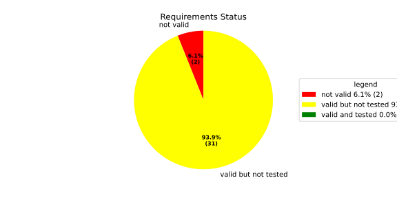
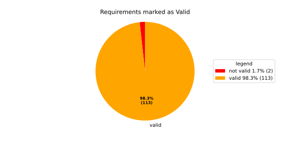
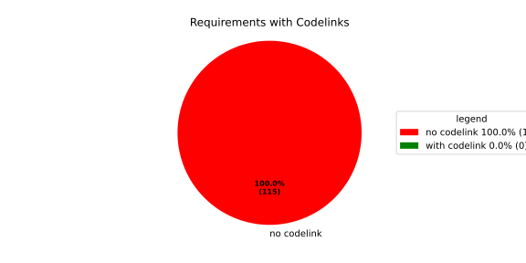

Verification Statistics#
Overview#

In Detail#


No needs passed the filters
Failed Tests
Hint: This table should be empty. Before a PR can be merged all tests have to be successful.
No needs passed the filters
Skipped / Disabled Tests
No needs passed the filters
All passed Tests#
No needs passed the filters
Details About Testcases#
No needs passed the filters
No needs passed the filters
Test Log Files#
tests-report/tests/integration/process_simple_rep_failure/process_simple_rep_failure/test.log
exec ${PAGER:-/usr/bin/less} "$0" || exit 1
Executing tests from //tests/integration/process_simple_rep_failure:process_simple_rep_failure
-----------------------------------------------------------------------------
============================= test session starts ==============================
platform linux -- Python 3.12.12, pytest-9.0.3, pluggy-1.5.0
rootdir: /home/runner/.bazel/sandbox/processwrapper-sandbox/1048/execroot/_main/bazel-out/k8-fastbuild/bin/tests/integration/process_simple_rep_failure/process_simple_rep_failure.runfiles/score_itf+
configfile: pytest.ini
collected 1 item
../score_itf+::test_recovery_action_simple_rep_failure
-------------------------------- live log setup --------------------------------
[2026-07-01 12:41:58.438] [INFO] [score.itf.plugins.docker] Executing custom image bootstrap command: tests/utils/environments/x86_64-linux/x86_64-linux.sh
[2026-07-01 12:41:58.571] [DEBUG] [docker.utils.config] Trying paths: ['/home/runner/.docker/config.json', '/home/runner/.dockercfg']
[2026-07-01 12:41:58.571] [DEBUG] [docker.utils.config] Found file at path: /home/runner/.docker/config.json
[2026-07-01 12:41:58.571] [DEBUG] [docker.auth] Found 'auths' section
[2026-07-01 12:41:58.571] [DEBUG] [docker.auth] Found entry (registry='https://index.docker.io/v1/', username='githubactions')
[2026-07-01 12:41:58.579] [DEBUG] [urllib3.connectionpool] http://localhost:None "GET /version HTTP/1.1" 200 823
[2026-07-01 12:41:58.617] [DEBUG] [urllib3.connectionpool] http://localhost:None "POST /v1.48/containers/create HTTP/1.1" 201 88
[2026-07-01 12:41:58.618] [DEBUG] [urllib3.connectionpool] http://localhost:None "GET /v1.48/containers/2a5c80c02cb786642274ea1ef7076d6e1e4dc89cabfb3926f09d1c5825b0c43d/json HTTP/1.1" 200 None
[2026-07-01 12:41:58.747] [DEBUG] [urllib3.connectionpool] http://localhost:None "POST /v1.48/containers/2a5c80c02cb786642274ea1ef7076d6e1e4dc89cabfb3926f09d1c5825b0c43d/start HTTP/1.1" 204 0
[2026-07-01 12:41:58.748] [DEBUG] [docker.utils.config] Trying paths: ['/home/runner/.docker/config.json', '/home/runner/.dockercfg']
[2026-07-01 12:41:58.748] [DEBUG] [docker.utils.config] Found file at path: /home/runner/.docker/config.json
[2026-07-01 12:41:58.748] [DEBUG] [docker.auth] Found 'auths' section
[2026-07-01 12:41:58.748] [DEBUG] [docker.auth] Found entry (registry='https://index.docker.io/v1/', username='githubactions')
[2026-07-01 12:41:58.757] [DEBUG] [urllib3.connectionpool] http://localhost:None "GET /version HTTP/1.1" 200 823
[2026-07-01 12:41:58.951] [INFO] [tests.utils.testing_utils.setup_test] Test case setup finished
-------------------------------- live log call ---------------------------------
[2026-07-01 12:41:59.070] [INFO] [launch_manager] 2026/07/01 12:41:59.9719064 2354471 000 ECU1 LM LM log debug verbose 1
[2026-07-01 12:41:59.072] [INFO] [launch_manager] Launch Manager Started !!!!
[2026-07-01 12:41:59.073] [INFO] [launch_manager] 2026/07/01 12:41:59.9719065 2354476 000 ECU1 LM LM log debug verbose 1
[2026-07-01 12:41:59.074] [INFO] [launch_manager] Loading LCM Configurations...
[2026-07-01 12:41:59.074] [INFO] [launch_manager] 2026/07/01 12:41:59.9719065 2354478 000 ECU1 LM LM log debug verbose 1
[2026-07-01 12:41:59.075] [INFO] [launch_manager] ECUCFG_ENV_VAR_ROOTFOLDER set successfully
[2026-07-01 12:41:59.076] [INFO] [launch_manager] 2026/07/01 12:41:59.9719065 2354481 000 ECU1 LM LM log debug verbose 5
[2026-07-01 12:41:59.076] [INFO] [launch_manager] FlatBufferParser::getModeGroupPgName: MainPG ( IdentifierHash: 18079021346025578134 )
[2026-07-01 12:41:59.077] [INFO] [launch_manager] 2026/07/01 12:41:59.9719066 2354482 000 ECU1 LM LM log debug verbose 5
[2026-07-01 12:41:59.077] [INFO] [launch_manager] FlatBufferParser::getModeGroupPgStateName: MainPG/Startup ( IdentifierHash: 10504605499600661529 )
[2026-07-01 12:41:59.077] [INFO] [launch_manager] 2026/07/01 12:41:59.9719066 2354485 000 ECU1 LM LM log debug verbose 5
[2026-07-01 12:41:59.078] [INFO] [launch_manager] FlatBufferParser::getModeGroupPgStateName: MainPG/run_target_app_does_report_krunning_in_time ( IdentifierHash: 11934981641920773349 )
[2026-07-01 12:41:59.078] [INFO] [launch_manager] 2026/07/01 12:41:59.9719066 2354486 000 ECU1 LM LM log debug verbose 5
[2026-07-01 12:41:59.078] [INFO] [launch_manager] FlatBufferParser::getModeGroupPgStateName: MainPG/run_target_app_does_not_report_krunning_in_time ( IdentifierHash: 7672161913816744053 )
[2026-07-01 12:41:59.078] [INFO] [launch_manager] 2026/07/01 12:41:59.9719066 2354488 000 ECU1 LM LM log debug verbose 5
[2026-07-01 12:41:59.078] [INFO] [launch_manager] FlatBufferParser::getModeGroupPgStateName: MainPG/Off ( IdentifierHash: 15281793077830264047 )
[2026-07-01 12:41:59.079] [INFO] [launch_manager] 2026/07/01 12:41:59.9719067 2354491 000 ECU1 LM LM log debug verbose 5
[2026-07-01 12:41:59.079] [INFO] [launch_manager] FlatBufferParser::getModeGroupPgStateName: MainPG/fallback_run_target ( IdentifierHash: 4059409696722237352 )
[2026-07-01 12:41:59.079] [INFO] [launch_manager] 2026/07/01 12:41:59.9719067 2354494 000 ECU1 LM LM log debug verbose 4
[2026-07-01 12:41:59.079] [INFO] [launch_manager] parseProcessConfigurations: Process index: 0 executable_path_: /tmp/tests/process_simple_rep_failure/control_client_mock
[2026-07-01 12:41:59.080] [INFO] [launch_manager] 2026/07/01 12:41:59.9719067 2354495 000 ECU1 LM LM log debug verbose 3
[2026-07-01 12:41:59.089] [INFO] [launch_manager] Process control_client_mock is Reporting execution state
[2026-07-01 12:41:59.089] [INFO] [launch_manager] 2026/07/01 12:41:59.9719067 2354497 000 ECU1 LM LM log debug verbose 1
[2026-07-01 12:41:59.090] [INFO] [launch_manager] Process is STATE_MANAGEMENT function Cluster Affiliation
[2026-07-01 12:41:59.090] [INFO] [launch_manager] 2026/07/01 12:41:59.9719067 2354499 000 ECU1 LM LM log debug verbose 3
[2026-07-01 12:41:59.090] [INFO] [launch_manager] Process control_client_mock is Self terminating
[2026-07-01 12:41:59.090] [INFO] [launch_manager] 2026/07/01 12:41:59.9719068 2354503 000 ECU1 LM LM log debug verbose 4
[2026-07-01 12:41:59.090] [INFO] [launch_manager] ParseProcessProcessGroup: id:::pg_name_: MainPG , pg_state_name_: MainPG/Startup
[2026-07-01 12:41:59.091] [INFO] [launch_manager] 2026/07/01 12:41:59.9719068 2354506 000 ECU1 LM LM log debug verbose 4
[2026-07-01 12:41:59.092] [INFO] [launch_manager] ParseProcessProcessGroup: id:::pg_name_: MainPG , pg_state_name_: MainPG/run_target_app_does_report_krunning_in_time
[2026-07-01 12:41:59.092] [INFO] [launch_manager] 2026/07/01 12:41:59.9719068 2354507 000 ECU1 LM LM log debug verbose 4 ParseProcessProcessGroup: id:::pg_name_: MainPG , pg_state_name_: MainPG/run_target_app_does_not_report_krunning_in_time
[2026-07-01 12:41:59.093] [INFO] [launch_manager] 2026/07/01 12:41:59.9719068 2354507 000 ECU1 LM LM log debug verbose 4 ParseProcessProcessGroup: id:::pg_name_: MainPG , pg_state_name_: MainPG/fallback_run_target
[2026-07-01 12:41:59.093] [INFO] [launch_manager] 2026/07/01 12:41:59.9719068 2354509 000 ECU1 LM LM log debug verbose 4
[2026-07-01 12:41:59.093] [INFO] [launch_manager] parseProcessConfigurations: Process index: 1 executable_path_: /tmp/tests/process_simple_rep_failure/process_simple_reporting
[2026-07-01 12:41:59.093] [INFO] [launch_manager] 2026/07/01 12:41:59.9719068 2354511 000 ECU1 LM LM log debug verbose 3
[2026-07-01 12:41:59.094] [INFO] [launch_manager] Process component_does_report_krunning_in_time is Reporting execution state
[2026-07-01 12:41:59.095] [INFO] [launch_manager] 2026/07/01 12:41:59.9719069 2354512 000 ECU1 LM LM log debug verbose 1
[2026-07-01 12:41:59.095] [INFO] [launch_manager] Process is NOT associated with any function Cluster Affiliation
[2026-07-01 12:41:59.095] [INFO] [launch_manager] 2026/07/01 12:41:59.9719069 2354513 000 ECU1 LM LM log debug verbose 3 Process component_does_report_krunning_in_time is Self terminating
[2026-07-01 12:41:59.095] [INFO] [launch_manager] 2026/07/01 12:41:59.9719069 2354514 000 ECU1 LM LM log debug verbose 4 ParseProcessProcessGroup: id:::pg_name_: MainPG , pg_state_name_: MainPG/run_target_app_does_report_krunning_in_time
[2026-07-01 12:41:59.095] [INFO] [launch_manager] 2026/07/01 12:41:59.9719069 2354515 000 ECU1 LM LM log debug verbose 4 parseProcessConfigurations: Process index: 2 executable_path_: /tmp/tests/process_simple_rep_failure/process_simple_reporting
[2026-07-01 12:41:59.095] [INFO] [launch_manager] 2026/07/01 12:41:59.9719069 2354517 000 ECU1 LM LM log debug verbose 3
[2026-07-01 12:41:59.095] [INFO] [launch_manager] Process component_does_not_report_krunning_in_time is Reporting execution state
[2026-07-01 12:41:59.096] [INFO] [launch_manager] 2026/07/01 12:41:59.9719069 2354518 000 ECU1 LM LM log debug verbose 1
[2026-07-01 12:41:59.096] [INFO] [launch_manager] Process is NOT associated with any function Cluster Affiliation
[2026-07-01 12:41:59.096] [INFO] [launch_manager] 2026/07/01 12:41:59.9719069 2354520 000 ECU1 LM LM log debug verbose 3
[2026-07-01 12:41:59.096] [INFO] [launch_manager] Process component_does_not_report_krunning_in_time is Self terminating
[2026-07-01 12:41:59.096] [INFO] [launch_manager] 2026/07/01 12:41:59.9719070 2354522 000 ECU1 LM LM log debug verbose 4
[2026-07-01 12:41:59.096] [INFO] [launch_manager] ParseProcessProcessGroup: id:::pg_name_: MainPG , pg_state_name_: MainPG/run_target_app_does_not_report_krunning_in_time
[2026-07-01 12:41:59.096] [INFO] [launch_manager] 2026/07/01 12:41:59.9719070 2354524 000 ECU1 LM LM log debug verbose 4 parseProcessConfigurations: Process index: 3 executable_path_: /tmp/tests/process_simple_rep_failure/verification_process
[2026-07-01 12:41:59.096] [INFO] [launch_manager] 2026/07/01 12:41:59.9719070 2354525 000 ECU1 LM LM log debug verbose 3
[2026-07-01 12:41:59.097] [INFO] [launch_manager] Process verification_component is NOT Reporting execution state
[2026-07-01 12:41:59.097] [INFO] [launch_manager] 2026/07/01 12:41:59.9719070 2354526 000 ECU1 LM LM log debug verbose 1 Process is NOT associated with any function Cluster Affiliation
[2026-07-01 12:41:59.097] [INFO] [launch_manager] 2026/07/01 12:41:59.9719070 2354527 000 ECU1 LM LM log debug verbose 3
[2026-07-01 12:41:59.097] [INFO] [launch_manager] Process verification_component is Self terminating
[2026-07-01 12:41:59.097] [INFO] [launch_manager] 2026/07/01 12:41:59.9719070 2354528 000 ECU1 LM LM log debug verbose 4
[2026-07-01 12:41:59.097] [INFO] [launch_manager] ParseProcessProcessGroup: id:::pg_name_: MainPG , pg_state_name_: MainPG/fallback_run_target
[2026-07-01 12:41:59.097] [INFO] [launch_manager] 2026/07/01 12:41:59.9719071 2354535 000 ECU1 LM LM log debug verbose 3
[2026-07-01 12:41:59.097] [INFO] [launch_manager] Loading SWCL Nr. 0 Succeeded
[2026-07-01 12:41:59.098] [INFO] [launch_manager] 2026/07/01 12:41:59.9719071 2354537 000 ECU1 LM LM log debug verbose 2
[2026-07-01 12:41:59.098] [INFO] [launch_manager] 1 process group(s)
[2026-07-01 12:41:59.098] [INFO] [launch_manager] 2026/07/01 12:41:59.9719071 2354539 000 ECU1 LM LM log debug verbose 3
[2026-07-01 12:41:59.098] [INFO] [launch_manager] Creating graph with 4 nodes
[2026-07-01 12:41:59.098] [INFO] [launch_manager] 2026/07/01 12:41:59.9719072 2354541 000 ECU1 LM LM log debug verbose 1
[2026-07-01 12:41:59.098] [INFO] [launch_manager] Process groups initialized successfully
[2026-07-01 12:41:59.098] [INFO] [launch_manager] 2026/07/01 12:41:59.9719072 2354544 000 ECU1 LM LM log debug verbose 1
[2026-07-01 12:41:59.098] [INFO] [launch_manager] Process Group initialization done
[2026-07-01 12:41:59.098] [INFO] [launch_manager] 2026/07/01 12:41:59.9719072 2354546 000 ECU1 LM LM log debug verbose 3
[2026-07-01 12:41:59.099] [INFO] [launch_manager] Creating Safe Process Map with 4 entries
[2026-07-01 12:41:59.099] [INFO] [launch_manager] 2026/07/01 12:41:59.9719072 2354547 000 ECU1 LM LM log debug verbose 2
[2026-07-01 12:41:59.099] [INFO] [launch_manager] Creating job queue with capacity 1024
[2026-07-01 12:41:59.099] [INFO] [launch_manager] 2026/07/01 12:41:59.9719072 2354550 000 ECU1 LM LM log debug verbose 1
[2026-07-01 12:41:59.099] [INFO] [launch_manager] Creating worker threads...
[2026-07-01 12:41:59.099] [INFO] [launch_manager] 2026/07/01 12:41:59.9719074 2354566 000 ECU1 LM LM log debug verbose 7
[2026-07-01 12:41:59.099] [INFO] [launch_manager] Process group index 0 (with name MainPG ) has 4 processes
[2026-07-01 12:41:59.099] [INFO] [launch_manager] 2026/07/01 12:41:59.9719074 2354568 000 ECU1 LM LM log debug verbose 2
[2026-07-01 12:41:59.100] [INFO] [launch_manager] Creating process node with id: 0
[2026-07-01 12:41:59.100] [INFO] [launch_manager] 2026/07/01 12:41:59.9719074 2354571 000 ECU1 LM LM log debug verbose 5
[2026-07-01 12:41:59.100] [INFO] [launch_manager] Process 0 has 0 start dependencies
[2026-07-01 12:41:59.100] [INFO] [launch_manager] 2026/07/01 12:41:59.9719075 2354573 000 ECU1 LM LM log debug verbose 2
[2026-07-01 12:41:59.101] [INFO] [launch_manager] Creating process node with id: 1
[2026-07-01 12:41:59.101] [INFO] [launch_manager] 2026/07/01 12:41:59.9719075 2354575 000 ECU1 LM LM log debug verbose 5
[2026-07-01 12:41:59.101] [INFO] [launch_manager] Process 1 has 0 start dependencies
[2026-07-01 12:41:59.101] [INFO] [launch_manager] 2026/07/01 12:41:59.9719075 2354576 000 ECU1 LM LM log debug verbose 2
[2026-07-01 12:41:59.101] [INFO] [launch_manager] Creating process node with id: 2
[2026-07-01 12:41:59.101] [INFO] [launch_manager] 2026/07/01 12:41:59.9719075 2354578 000 ECU1 LM LM log debug verbose 5
[2026-07-01 12:41:59.101] [INFO] [launch_manager] Process 2 has 0 start dependencies
[2026-07-01 12:41:59.101] [INFO] [launch_manager] 2026/07/01 12:41:59.9719075 2354581 000 ECU1 LM LM log debug verbose 2
[2026-07-01 12:41:59.102] [INFO] [launch_manager] Creating process node with id: 3
[2026-07-01 12:41:59.102] [INFO] [launch_manager] 2026/07/01 12:41:59.9719076 2354583 000 ECU1 LM LM log debug verbose 5
[2026-07-01 12:41:59.102] [INFO] [launch_manager] Process 3 has 0 start dependencies
[2026-07-01 12:41:59.102] [INFO] [launch_manager] 2026/07/01 12:41:59.9719080 2354625 000 ECU1 LM LM log debug verbose 3
[2026-07-01 12:41:59.102] [INFO] [launch_manager] Created 4 process nodes
[2026-07-01 12:41:59.102] [INFO] [launch_manager] 2026/07/01 12:41:59.9719080 2354628 000 ECU1 LM LM log debug verbose 2
[2026-07-01 12:41:59.102] [INFO] [launch_manager] Creating successor lists for process group MainPG
[2026-07-01 12:41:59.102] [INFO] [launch_manager] 2026/07/01 12:41:59.9719080 2354631 000 ECU1 LM LM log debug verbose 1
[2026-07-01 12:41:59.103] [INFO] [launch_manager] Graphs initialized
[2026-07-01 12:41:59.103] [INFO] [launch_manager] 2026/07/01 12:41:59.9719081 2354634 000 ECU1 LM Fcty log info verbose 2
[2026-07-01 12:41:59.103] [INFO] [launch_manager] Factory for FlatCfg MachineConfig: Loading of HM Machine Configuration succeeded.
[2026-07-01 12:41:59.103] [INFO] [launch_manager] 2026/07/01 12:41:59.9719081 2354637 000 ECU1 LM Fcty log debug verbose 3
[2026-07-01 12:41:59.103] [INFO] [launch_manager] Factory for FlatCfg MachineConfig: Alive Supervision buffer size: 100
[2026-07-01 12:41:59.103] [INFO] [launch_manager] 2026/07/01 12:41:59.9719081 2354639 000 ECU1 LM Fcty log debug verbose 3
[2026-07-01 12:41:59.104] [INFO] [launch_manager] Factory for FlatCfg MachineConfig: Monitor buffer size: 512
[2026-07-01 12:41:59.104] [INFO] [launch_manager] 2026/07/01 12:41:59.9719081 2354641 000 ECU1 LM Fcty log debug verbose 4
[2026-07-01 12:41:59.104] [INFO] [launch_manager] Factory for FlatCfg MachineConfig: Periodicity: 50000000 ns
[2026-07-01 12:41:59.104] [INFO] [launch_manager] 2026/07/01 12:41:59.9719082 2354643 000 ECU1 LM Fcty log debug verbose 3
[2026-07-01 12:41:59.104] [INFO] [launch_manager] Factory for FlatCfg MachineConfig: Configured watchdogs: 0
[2026-07-01 12:41:59.104] [INFO] [launch_manager] 2026/07/01 12:41:59.9719082 2354646 000 ECU1 LM Fcty log warn verbose 2
[2026-07-01 12:41:59.105] [INFO] [launch_manager] Factory for FlatCfg MachineConfig: No watchdog configured
[2026-07-01 12:41:59.105] [INFO] [launch_manager] 2026/07/01 12:41:59.9719082 2354648 000 ECU1 LM Fcty log debug verbose 2
[2026-07-01 12:41:59.105] [INFO] [launch_manager] Software Cluster Handler starts constructing workers: MainCluster
[2026-07-01 12:41:59.105] [INFO] [launch_manager] 2026/07/01 12:41:59.9719082 2354650 000 ECU1 LM Fcty log debug verbose 3
[2026-07-01 12:41:59.105] [INFO] [launch_manager] Factory for FlatCfg AR24-11: Successfully created Process States: control_client_mock
[2026-07-01 12:41:59.105] [INFO] [launch_manager] 2026/07/01 12:41:59.9719083 2354652 000 ECU1 LM Fcty log debug verbose 3
[2026-07-01 12:41:59.106] [INFO] [launch_manager] Factory for FlatCfg AR24-11: Number of constructed Process States: 1
[2026-07-01 12:41:59.106] [INFO] [launch_manager] 2026/07/01 12:41:59.9719083 2354655 000 ECU1 LM Fcty log debug verbose 3
[2026-07-01 12:41:59.106] [INFO] [launch_manager] Factory for FlatCfg AR24-11: Successfully created Alive interface IPC with path: lifecycle_health_control_client_mock
[2026-07-01 12:41:59.106] [INFO] [launch_manager] 2026/07/01 12:41:59.9719083 2354656 000 ECU1 LM Fcty log debug verbose 3
[2026-07-01 12:41:59.106] [INFO] [launch_manager] Factory for FlatCfg AR24-11: Number of constructed Alive interface IPCs: 1
[2026-07-01 12:41:59.106] [INFO] [launch_manager] 2026/07/01 12:41:59.9719083 2354658 000 ECU1 LM Fcty log debug verbose 3
[2026-07-01 12:41:59.106] [INFO] [launch_manager] Factory for FlatCfg AR24-11: Successfully created Alive Interface: /lifecycle_health_control_client_mock
[2026-07-01 12:41:59.107] [INFO] [launch_manager] 2026/07/01 12:41:59.9719083 2354660 000 ECU1 LM Fcty log debug verbose 3
[2026-07-01 12:41:59.107] [INFO] [launch_manager] Factory for FlatCfg AR24-11: Number of constructed Alive interfaces: 1
[2026-07-01 12:41:59.107] [INFO] [launch_manager] 2026/07/01 12:41:59.9719084 2354662 000 ECU1 LM Fcty log debug verbose 3
[2026-07-01 12:41:59.107] [INFO] [launch_manager] Factory for FlatCfg AR24-11: Successfully created supervision checkpoint: control_client_mock_checkpoint
[2026-07-01 12:41:59.107] [INFO] [launch_manager] 2026/07/01 12:41:59.9719084 2354665 000 ECU1 LM Fcty log debug verbose 3
[2026-07-01 12:41:59.108] [INFO] [launch_manager] Factory for FlatCfg AR24-11: Number of constructed supervision checkpoints: 1
[2026-07-01 12:41:59.108] [INFO] [launch_manager] 2026/07/01 12:41:59.9719084 2354667 000 ECU1 LM Fcty log debug verbose 3
[2026-07-01 12:41:59.108] [INFO] [launch_manager] Factory for FlatCfg AR24-11: Successfully created alive supervision worker object: control_client_mock_alive_supervision
[2026-07-01 12:41:59.108] [INFO] [launch_manager] 2026/07/01 12:41:59.9719084 2354669 000 ECU1 LM Fcty log debug verbose 3
[2026-07-01 12:41:59.108] [INFO] [launch_manager] Factory for FlatCfg AR24-11: Number of constructed alive supervisions: 1
[2026-07-01 12:41:59.108] [INFO] [launch_manager] 2026/07/01 12:41:59.9719085 2354671 000 ECU1 LM Fcty log info verbose 2
[2026-07-01 12:41:59.108] [INFO] [launch_manager] Phm Daemon: The (configured) periodicity in [ns] is set to: 50000000
[2026-07-01 12:41:59.108] [INFO] [launch_manager] 2026/07/01 12:41:59.9719085 2354673 000 ECU1 LM Fcty log debug verbose 2
[2026-07-01 12:41:59.109] [INFO] [launch_manager] Phm Daemon: The accuracy of the monotonic system clock in [ns] is: 1
[2026-07-01 12:41:59.109] [INFO] [launch_manager] 2026/07/01 12:41:59.9719085 2354675 000 ECU1 LM Fcty log debug verbose 3
[2026-07-01 12:41:59.109] [INFO] [launch_manager] AliveMonitor: Initialization took 4 ms
[2026-07-01 12:41:59.109] [INFO] [launch_manager] 2026/07/01 12:41:59.9719085 2354677 000 ECU1 LM LM log info verbose 1
[2026-07-01 12:41:59.109] [INFO] [launch_manager] LCM started successfully
[2026-07-01 12:41:59.109] [INFO] [launch_manager] 2026/07/01 12:41:59.9719085 2354680 000 ECU1 LM LM log debug verbose 3
[2026-07-01 12:41:59.109] [INFO] [launch_manager] clock() at run(): 40.477000 ms
[2026-07-01 12:41:59.109] [INFO] [launch_manager] 2026/07/01 12:41:59.9719086 2354683 000 ECU1 LM LM log debug verbose 1
[2026-07-01 12:41:59.109] [INFO] [launch_manager] =============STARTING MAINPG STARTUP STATE============
[2026-07-01 12:41:59.109] [INFO] [launch_manager] 2026/07/01 12:41:59.9719086 2354685 000 ECU1 LM LM log debug verbose 9
[2026-07-01 12:41:59.110] [INFO] [launch_manager] Graph::setState changes from kSuccess to kInTransition for PG 0 ( MainPG )
[2026-07-01 12:41:59.110] [INFO] [launch_manager] 2026/07/01 12:41:59.9719086 2354688 000 ECU1 LM LM log debug verbose 2
[2026-07-01 12:41:59.110] [INFO] [launch_manager] Stop Dependencies: 0
[2026-07-01 12:41:59.110] [INFO] [launch_manager] 2026/07/01 12:41:59.9719086 2354690 000 ECU1 LM LM log debug verbose 2
[2026-07-01 12:41:59.110] [INFO] [launch_manager] Stop Dependencies: 0
[2026-07-01 12:41:59.110] [INFO] [launch_manager] 2026/07/01 12:41:59.9719087 2354692 000 ECU1 LM LM log debug verbose 2
[2026-07-01 12:41:59.110] [INFO] [launch_manager] Stop Dependencies: 0
[2026-07-01 12:41:59.110] [INFO] [launch_manager] 2026/07/01 12:41:59.9719087 2354694 000 ECU1 LM LM log debug verbose 2
[2026-07-01 12:41:59.110] [INFO] [launch_manager] Stop Dependencies: 0
[2026-07-01 12:41:59.111] [INFO] [launch_manager] 2026/07/01 12:41:59.9719087 2354696 000 ECU1 LM LM log debug verbose 2
[2026-07-01 12:41:59.111] [INFO] [launch_manager] Start Dependencies: 0
[2026-07-01 12:41:59.111] [INFO] [launch_manager] 2026/07/01 12:41:59.9719087 2354698 000 ECU1 LM LM log debug verbose 2
[2026-07-01 12:41:59.111] [INFO] [launch_manager] Start Dependencies: 0
[2026-07-01 12:41:59.111] [INFO] [launch_manager] 2026/07/01 12:41:59.9719087 2354700 000 ECU1 LM LM log debug verbose 2
[2026-07-01 12:41:59.111] [INFO] [launch_manager] Start Dependencies: 0
[2026-07-01 12:41:59.111] [INFO] [launch_manager] 2026/07/01 12:41:59.9719088 2354702 000 ECU1 LM LM log debug verbose 2
[2026-07-01 12:41:59.111] [INFO] [launch_manager] Start Dependencies: 0
[2026-07-01 12:41:59.112] [INFO] [launch_manager] 2026/07/01 12:41:59.9719088 2354705 000 ECU1 LM LM log debug verbose 6
[2026-07-01 12:41:59.112] [INFO] [launch_manager] Starting process 0 ( control_client_mock ) from executable /tmp/tests/process_simple_rep_failure/control_client_mock
[2026-07-01 12:41:59.112] [INFO] [launch_manager] 2026/07/01 12:41:59.9719088 2354708 000 ECU1 LM LM log debug verbose 3
[2026-07-01 12:41:59.112] [INFO] [launch_manager] Initialize the control client for control_client_mock process
[2026-07-01 12:41:59.112] [INFO] [launch_manager] 2026/07/01 12:41:59.9719088 2354710 000 ECU1 LM LM log debug verbose 1
[2026-07-01 12:41:59.112] [INFO] [launch_manager] ControlClientChannel initialized
[2026-07-01 12:41:59.112] [INFO] [launch_manager] 2026/07/01 12:41:59.9719089 2354717 000 ECU1 LM LM log debug verbose 4
[2026-07-01 12:41:59.113] [INFO] [launch_manager] startProcess pid 67 received for process: control_client_mock
[2026-07-01 12:41:59.113] [INFO] [launch_manager] 2026/07/01 12:41:59.9719091 2354731 000 ECU1 LM LM log debug verbose 1
[2026-07-01 12:41:59.113] [INFO] [launch_manager] ControlClientChannel obtained from sync.
[2026-07-01 12:41:59.113] [INFO] [launch_manager] [==========] Running 1 test from 1 test suite.
[2026-07-01 12:41:59.113] [INFO] [launch_manager] [----------] Global test environment set-up.
[2026-07-01 12:41:59.113] [INFO] [launch_manager] [----------] 1 test from RecoveryActionSimpleRepFailure
[2026-07-01 12:41:59.113] [INFO] [launch_manager] [ RUN ] RecoveryActionSimpleRepFailure.ControlClientMock
[2026-07-01 12:41:59.114] [INFO] [launch_manager] [ STEP ] Report running from ControlClientMock
[2026-07-01 12:41:59.114] [INFO] [launch_manager] [ END STEP ] Report running from ControlClientMock
[2026-07-01 12:41:59.114] [INFO] [launch_manager] [ STEP ] Activate RunTarget run_target_app_does_report_krunning_in_time
[2026-07-01 12:41:59.114] [INFO] [launch_manager] 2026/07/01 12:41:59.9719102 2354849 000 ECU1 LM LM log debug verbose 8
[2026-07-01 12:41:59.114] [INFO] [launch_manager] Got kRunning for pid 67 ( control_client_mock ) process 0 of group MainPG
[2026-07-01 12:41:59.114] [INFO] [launch_manager] 2026/07/01 12:41:59.9719103 2354853 000 ECU1 LM LM log debug verbose 7
[2026-07-01 12:41:59.114] [INFO] [launch_manager] startProcess for MainPG process 0 ( control_client_mock ) done
[2026-07-01 12:41:59.114] [INFO] [launch_manager] 2026/07/01 12:41:59.9719103 2354856 000 ECU1 LM LM log debug verbose 1
[2026-07-01 12:41:59.115] [INFO] [launch_manager] Control Client handler nudged
[2026-07-01 12:41:59.115] [INFO] [launch_manager] 2026/07/01 12:41:59.9719103 2354858 000 ECU1 LM LM log debug verbose 3
[2026-07-01 12:41:59.115] [INFO] [launch_manager] clock() at successful initial state transition: 42.642000 ms
[2026-07-01 12:41:59.115] [INFO] [launch_manager] 2026/07/01 12:41:59.9719104 2354861 000 ECU1 LM LM log debug verbose 9
[2026-07-01 12:41:59.115] [INFO] [launch_manager] Graph::setState changes from kInTransition to kSuccess for PG 0 ( MainPG )
[2026-07-01 12:41:59.115] [INFO] [launch_manager] 2026/07/01 12:41:59.9719104 2354863 000 ECU1 LM LM log info verbose 7
[2026-07-01 12:41:59.115] [INFO] [launch_manager] Completed the request for PG MainPG to State MainPG/Startup in 17 ms
[2026-07-01 12:41:59.115] [INFO] [launch_manager] 2026/07/01 12:41:59.9719104 2354866 000 ECU1 LM LM log debug verbose 1
[2026-07-01 12:41:59.116] [INFO] [launch_manager] Control Client handler nudged
[2026-07-01 12:41:59.116] [INFO] [launch_manager] 2026/07/01 12:41:59.9719100 2354869 000 ECU1 LM LM log debug verbose 1
[2026-07-01 12:41:59.116] [INFO] [launch_manager] 2026/07/01 12:41:59.9719104 2354871 000 ECU1 LM LM log debug verbose 8
[2026-07-01 12:41:59.116] [INFO] [launch_manager] ProcessGroupManager::ControlClientHandler: got request kSetStateRequest ( 16 ) re state MainPG/run_target_app_does_report_krunning_in_time of PG MainPG
[2026-07-01 12:41:59.116] [INFO] [launch_manager] 2026/07/01 12:41:59.9719105 2354873 000 ECU1 LM LM log debug verbose 6
[2026-07-01 12:41:59.116] [INFO] [launch_manager] Pending state for process group MainPG changed from to MainPG/run_target_app_does_report_krunning_in_time
[2026-07-01 12:41:59.116] [INFO] [launch_manager] 2026/07/01 12:41:59.9719105 2354876 000 ECU1 LM LM log debug verbose 1
[2026-07-01 12:41:59.116] [INFO] [launch_manager] Request acknowledged.
[2026-07-01 12:41:59.116] [INFO] [launch_manager] 2026/07/01 12:41:59.9719105 2354878 000 ECU1 LM LM log debug verbose 6
[2026-07-01 12:41:59.117] [INFO] [launch_manager] Pending state for process group MainPG changed from MainPG/run_target_app_does_report_krunning_in_time to
[2026-07-01 12:41:59.117] [INFO] [launch_manager] 2026/07/01 12:41:59.9719105 2354880 000 ECU1 LM LM log debug verbose 4
[2026-07-01 12:41:59.117] [INFO] [launch_manager] Request sent. Waiting for acknowledgment...
[2026-07-01 12:41:59.117] [INFO] [launch_manager] 2026/07/01 12:41:59.9719106 2354883 000 ECU1 LM LM log debug verbose 1
[2026-07-01 12:41:59.117] [INFO] [launch_manager] Start transition to MainPG/run_target_app_does_report_krunning_in_time for PG MainPG
[2026-07-01 12:41:59.117] [INFO] [launch_manager] 2026/07/01 12:41:59.9719106 2354885 000 ECU1 LM LM log debug verbose 9 Graph::setState changes from kSuccess to kInTransition for PG 0 ( MainPG )
[2026-07-01 12:41:59.117] [INFO] [launch_manager] 2026/07/01 12:41:59.9719106 2354886 000 ECU1 LM LM log debug verbose 2 Stop Dependencies: 0
[2026-07-01 12:41:59.117] [INFO] [launch_manager] 2026/07/01 12:41:59.9719106 2354887 000 ECU1 LM LM log debug verbose 2
[2026-07-01 12:41:59.117] [INFO] [launch_manager] Request acknowledged.
[2026-07-01 12:41:59.118] [INFO] [launch_manager] Stop Dependencies: 0
[2026-07-01 12:41:59.118] [INFO] [launch_manager] 2026/07/01 12:41:59.9719106 2354889 000 ECU1 LM LM log debug verbose 2 Stop Dependencies: 0
[2026-07-01 12:41:59.118] [INFO] [launch_manager] 2026/07/01 12:41:59.9719106 2354889 000 ECU1 LM LM log debug verbose 2 Stop Dependencies: 0
[2026-07-01 12:41:59.118] [INFO] [launch_manager] 2026/07/01 12:41:59.9719106 2354889 000 ECU1 LM LM log debug verbose 2 Start Dependencies: 0
[2026-07-01 12:41:59.118] [INFO] [launch_manager] 2026/07/01 12:41:59.9719106 2354891 000 ECU1 LM LM log debug verbose 2
[2026-07-01 12:41:59.118] [INFO] [launch_manager] Start Dependencies: 0
[2026-07-01 12:41:59.118] [INFO] [launch_manager] 2026/07/01 12:41:59.9719107 2354893 000 ECU1 LM LM log debug verbose 2
[2026-07-01 12:41:59.118] [INFO] [launch_manager] Start Dependencies: 0
[2026-07-01 12:41:59.118] [INFO] [launch_manager] 2026/07/01 12:41:59.9719107 2354895 000 ECU1 LM LM log debug verbose 2
[2026-07-01 12:41:59.118] [INFO] [launch_manager] Start Dependencies: 0
[2026-07-01 12:41:59.118] [INFO] [launch_manager] 2026/07/01 12:41:59.9719107 2354899 000 ECU1 LM LM log debug verbose 6
[2026-07-01 12:41:59.118] [INFO] [launch_manager] Starting process 1 ( component_does_report_krunning_in_time ) from executable /tmp/tests/process_simple_rep_failure/process_simple_reporting
[2026-07-01 12:41:59.119] [INFO] [launch_manager] 2026/07/01 12:41:59.9719108 2354907 000 ECU1 LM LM log debug verbose 4
[2026-07-01 12:41:59.119] [INFO] [launch_manager] startProcess pid 75 received for process: component_does_report_krunning_in_time
[2026-07-01 12:41:59.119] [INFO] [launch_manager] [==========] Running 1 test from 1 test suite.
[2026-07-01 12:41:59.119] [INFO] [launch_manager] [----------] Global test environment set-up.
[2026-07-01 12:41:59.119] [INFO] [launch_manager] [----------] 1 test from ProcessSimpleRepFailure
[2026-07-01 12:41:59.119] [INFO] [launch_manager] [ RUN ] ProcessSimpleRepFailure.ProcessSimpleReporting
[2026-07-01 12:41:59.120] [INFO] [launch_manager] [ STEP ] Check args
[2026-07-01 12:41:59.120] [INFO] [launch_manager] [ END STEP ] Check args
[2026-07-01 12:41:59.120] [INFO] [launch_manager] [ STEP ] Report running from ProcessSimpleReporting
[2026-07-01 12:41:59.136] [INFO] [launch_manager] 2026/07/01 12:41:59.9719135 2355178 000 ECU1 LM Sprv log debug verbose 6 Process with Id control_client_mock changed state PG MainPG/Startup PS 1
[2026-07-01 12:41:59.137] [INFO] [launch_manager] 2026/07/01 12:41:59.9719135 2355179 000 ECU1 LM Sprv log debug verbose 6 Process with Id control_client_mock changed state PG MainPG/Startup PS 2
[2026-07-01 12:41:59.137] [INFO] [launch_manager] 2026/07/01 12:41:59.9719135 2355180 000 ECU1 LM Sprv log debug verbose 6 Process with Id component_does_report_krunning_in_time changed state PG MainPG/run_target_app_does_report_krunning_in_time PS 1
[2026-07-01 12:41:59.137] [INFO] [launch_manager] 2026/07/01 12:41:59.9719135 2355180 000 ECU1 LM Sprv log info verbose 3 Alive Supervision ( control_client_mock_alive_supervision ) switched to OK.
[2026-07-01 12:41:59.143] [DEBUG] [tests.utils.testing_utils.run_until_file_deployed] Waiting for /tmp/tests/test_end
[2026-07-01 12:41:59.621] [INFO] [launch_manager] [ END STEP ] Report running from ProcessSimpleReporting
[2026-07-01 12:41:59.621] [INFO] [launch_manager] [ OK ] ProcessSimpleRepFailure.ProcessSimpleReporting (502 ms)
[2026-07-01 12:41:59.621] [INFO] [launch_manager] [----------] 1 test from ProcessSimpleRepFailure (502 ms total)
[2026-07-01 12:41:59.621] [INFO] [launch_manager] [----------] Global test environment tear-down
[2026-07-01 12:41:59.621] [INFO] [launch_manager] [==========] 1 test from 1 test suite ran. (502 ms total)
[2026-07-01 12:41:59.621] [INFO] [launch_manager] [ PASSED ] 1 test.
[2026-07-01 12:41:59.621] [INFO] [launch_manager] 2026/07/01 12:41:59.9719617 2359997 000 ECU1 LM LM log debug verbose 12 Child process 1 of MainPG pid 75 ( component_does_report_krunning_in_time ) for node True terminated with status 0
[2026-07-01 12:41:59.622] [INFO] [launch_manager] 2026/07/01 12:41:59.9719617 2360000 000 ECU1 LM LM log debug verbose 8 Got kRunning for pid 75 ( component_does_report_krunning_in_time ) process 1 of group MainPG
[2026-07-01 12:41:59.623] [INFO] [launch_manager] 2026/07/01 12:41:59.9719617 2360001 000 ECU1 LM LM log debug verbose 7 startProcess for MainPG process 1 ( component_does_report_krunning_in_time ) done
[2026-07-01 12:41:59.623] [INFO] [launch_manager] 2026/07/01 12:41:59.9719618 2360001 000 ECU1 LM LM log debug verbose 9 Graph::setState changes from kInTransition to kSuccess for PG 0 ( MainPG )
[2026-07-01 12:41:59.623] [INFO] [launch_manager] 2026/07/01 12:41:59.9719618 2360002 000 ECU1 LM LM log info verbose 7 Completed the request for PG MainPG to State MainPG/run_target_app_does_report_krunning_in_time in 512 ms
[2026-07-01 12:41:59.624] [INFO] [launch_manager] 2026/07/01 12:41:59.9719618 2360002 000 ECU1 LM LM log debug verbose 1 Control Client handler nudged
[2026-07-01 12:41:59.624] [INFO] [launch_manager] 2026/07/01 12:41:59.9719618 2360003 000 ECU1 LM LM log debug verbose 8 ProcessGroupManager::ControlClientHandler: Sending kSetStateSuccess ( 20 ) re state MainPG/run_target_app_does_report_krunning_in_time of PG MainPG
[2026-07-01 12:41:59.626] [INFO] [launch_manager] 2026/07/01 12:41:59.9719618 2360004 000 ECU1 LM LM log debug verbose 1 Response sent.
[2026-07-01 12:41:59.637] [INFO] [launch_manager] 2026/07/01 12:41:59.9719635 2360178 000 ECU1 LM Sprv log debug verbose 6 Process with Id component_does_report_krunning_in_time changed state PG MainPG/run_target_app_does_report_krunning_in_time PS 4
[2026-07-01 12:41:59.698] [INFO] [launch_manager] 2026/07/01 12:41:59.9719698 2360804 000 ECU1 LM LM log debug verbose 1 Response retrieved.
[2026-07-01 12:41:59.698] [INFO] [launch_manager] [ END STEP ] Activate RunTarget run_target_app_does_report_krunning_in_time
[2026-07-01 12:41:59.740] [DEBUG] [tests.utils.testing_utils.run_until_file_deployed] Waiting for /tmp/tests/test_end
[2026-07-01 12:42:00.314] [DEBUG] [tests.utils.testing_utils.run_until_file_deployed] Waiting for /tmp/tests/test_end
[2026-07-01 12:42:00.700] [INFO] [launch_manager] [ STEP ] Verify fallback run target has not been activated
[2026-07-01 12:42:00.702] [INFO] [launch_manager] [ END STEP ] Verify fallback run target has not been activated
[2026-07-01 12:42:00.705] [INFO] [launch_manager] [ STEP ] Activate RunTarget run_target_app_does_not_report_krunning_in_time
[2026-07-01 12:42:00.706] [INFO] [launch_manager] 2026/07/01 12:42:00.9720699 2370812 000 ECU1 LM LM log debug verbose 1
[2026-07-01 12:42:00.707] [INFO] [launch_manager] Request sent. Waiting for acknowledgment...
[2026-07-01 12:42:00.708] [INFO] [launch_manager] 2026/07/01 12:42:00.9720701 2370836 000 ECU1 LM LM log debug verbose 8 ProcessGroupManager::ControlClientHandler: got request kSetStateRequest ( 16 ) re state MainPG/run_target_app_does_not_report_krunning_in_time of PG MainPG
[2026-07-01 12:42:00.709] [INFO] [launch_manager] 2026/07/01 12:42:00.9720701 2370836 000 ECU1 LM LM log debug verbose 6 Pending state for process group MainPG changed from to MainPG/run_target_app_does_not_report_krunning_in_time
[2026-07-01 12:42:00.710] [INFO] [launch_manager] 2026/07/01 12:42:00.9720701 2370836 000 ECU1 LM LM log debug verbose 1 Request acknowledged.
[2026-07-01 12:42:00.711] [INFO] [launch_manager] 2026/07/01 12:42:00.9720701 2370837 000 ECU1 LM LM log debug verbose 6 Pending state for process group MainPG changed from MainPG/run_target_app_does_not_report_krunning_in_time to
[2026-07-01 12:42:00.712] [INFO] [launch_manager] 2026/07/01 12:42:00.9720701 2370837 000 ECU1 LM LM log debug verbose 4 Start transition to MainPG/run_target_app_does_not_report_krunning_in_time for PG MainPG
[2026-07-01 12:42:00.713] [INFO] [launch_manager] 2026/07/01 12:42:00.9720701 2370837 000 ECU1 LM LM log debug verbose 9 Graph::setState changes from kSuccess to kInTransition for PG 0 ( MainPG )
[2026-07-01 12:42:00.714] [INFO] [launch_manager] 2026/07/01 12:42:00.9720701 2370837 000 ECU1 LM LM log debug verbose 2 Stop Dependencies: 0
[2026-07-01 12:42:00.715] [INFO] [launch_manager] 2026/07/01 12:42:00.9720701 2370838 000 ECU1 LM LM log debug verbose 2 Stop Dependencies: 0
[2026-07-01 12:42:00.716] [INFO] [launch_manager] 2026/07/01 12:42:00.9720701 2370838 000 ECU1 LM LM log debug verbose 2 Stop Dependencies: 0
[2026-07-01 12:42:00.717] [INFO] [launch_manager] 2026/07/01 12:42:00.9720701 2370838 000 ECU1 LM LM log debug verbose 2 Stop Dependencies: 0
[2026-07-01 12:42:00.718] [INFO] [launch_manager] 2026/07/01 12:42:00.9720701 2370838 000 ECU1 LM LM log debug verbose 2 Start Dependencies: 0
[2026-07-01 12:42:00.719] [INFO] [launch_manager] 2026/07/01 12:42:00.9720701 2370838 000 ECU1 LM LM log debug verbose 2 Start Dependencies: 0
[2026-07-01 12:42:00.720] [INFO] [launch_manager] 2026/07/01 12:42:00.9720701 2370838 000 ECU1 LM LM log debug verbose 2 Start Dependencies: 0
[2026-07-01 12:42:00.722] [INFO] [launch_manager] 2026/07/01 12:42:00.9720701 2370839 000 ECU1 LM LM log debug verbose 2 Start Dependencies: 0
[2026-07-01 12:42:00.723] [INFO] [launch_manager] 2026/07/01 12:42:00.9720701 2370840 000 ECU1 LM LM log debug verbose 6 Starting process 2 ( component_does_not_report_krunning_in_time ) from executable /tmp/tests/process_simple_rep_failure/process_simple_reporting
[2026-07-01 12:42:00.723] [INFO] [launch_manager] 2026/07/01 12:42:00.9720701 2370841 000 ECU1 LM LM log debug verbose 1 Request acknowledged.
[2026-07-01 12:42:00.723] [INFO] [launch_manager] 2026/07/01 12:42:00.9720702 2370846 000 ECU1 LM LM log debug verbose 4
[2026-07-01 12:42:00.723] [INFO] [launch_manager] startProcess pid 88 received for process: component_does_not_report_krunning_in_time
[2026-07-01 12:42:00.723] [INFO] [launch_manager] [==========] Running 1 test from 1 test suite.
[2026-07-01 12:42:00.723] [INFO] [launch_manager] [----------] Global test environment set-up.
[2026-07-01 12:42:00.723] [INFO] [launch_manager] [----------] 1 test from ProcessSimpleRepFailure
[2026-07-01 12:42:00.723] [INFO] [launch_manager] [ RUN ] ProcessSimpleRepFailure.ProcessSimpleReporting
[2026-07-01 12:42:00.723] [INFO] [launch_manager] [ STEP ] Check args
[2026-07-01 12:42:00.735] [INFO] [launch_manager] [ END STEP ] Check args
[2026-07-01 12:42:00.736] [INFO] [launch_manager] [ STEP ] Report running from ProcessSimpleReporting
[2026-07-01 12:42:00.736] [INFO] [launch_manager] 2026/07/01 12:42:00.9720735 2371178 000 ECU1 LM Sprv log debug verbose 6 Process with Id component_does_not_report_krunning_in_time changed state PG MainPG/run_target_app_does_not_report_krunning_in_time PS 1
[2026-07-01 12:42:00.881] [DEBUG] [tests.utils.testing_utils.run_until_file_deployed] Waiting for /tmp/tests/test_end
[2026-07-01 12:42:01.451] [DEBUG] [tests.utils.testing_utils.run_until_file_deployed] Waiting for /tmp/tests/test_end
[2026-07-01 12:42:01.762] [INFO] [launch_manager] 2026/07/01 12:42:01.9721758 2381407 000 ECU1 LM LM log error verbose 1 Semaphore timedWait or post failed: Unable to wait or post on semaphores within the specified timeout.
[2026-07-01 12:42:01.762] [INFO] [launch_manager] 2026/07/01 12:42:01.9721758 2381407 000 ECU1 LM LM log warn verbose 5 Got kRunning timeout for process 2 ( component_does_not_report_krunning_in_time )
[2026-07-01 12:42:01.762] [INFO] [launch_manager] 2026/07/01 12:42:01.9721758 2381407 000 ECU1 LM LM log debug verbose 5 terminating process 2 ( component_does_not_report_krunning_in_time )
[2026-07-01 12:42:01.762] [INFO] [launch_manager] 2026/07/01 12:42:01.9721758 2381408 000 ECU1 LM LM log debug verbose 9 Requesting termination of process 2 of MainPG pid 88 ( component_does_not_report_krunning_in_time )
[2026-07-01 12:42:01.762] [INFO] [launch_manager] 2026/07/01 12:42:01.9721758 2381408 000 ECU1 LM LM log debug verbose 2 Request termination received for 88
[2026-07-01 12:42:01.789] [INFO] [launch_manager] 2026/07/01 12:42:01.9721785 2381678 000 ECU1 LM Sprv log debug verbose 6 Process with Id component_does_not_report_krunning_in_time changed state PG MainPG/run_target_app_does_not_report_krunning_in_time PS 3
[2026-07-01 12:42:02.028] [DEBUG] [tests.utils.testing_utils.run_until_file_deployed] Waiting for /tmp/tests/test_end
[2026-07-01 12:42:02.609] [DEBUG] [tests.utils.testing_utils.run_until_file_deployed] Waiting for /tmp/tests/test_end
[2026-07-01 12:42:02.816] [INFO] [launch_manager] 2026/07/01 12:42:02.9722815 2391979 000 ECU1 LM LM log warn verbose 5 Process 2 ( component_does_not_report_krunning_in_time ) did not respond to SIGTERM, sending SIGKILL
[2026-07-01 12:42:02.816] [INFO] [launch_manager] 2026/07/01 12:42:02.9722815 2391980 000 ECU1 LM LM log debug verbose 2 Forced termination received for pid 88
[2026-07-01 12:42:02.817] [INFO] [launch_manager] 2026/07/01 12:42:02.9722816 2391984 000 ECU1 LM LM log debug verbose 12 Child process 2 of MainPG pid 88 ( component_does_not_report_krunning_in_time ) for node True terminated with status 9
[2026-07-01 12:42:02.817] [INFO] [launch_manager] 2026/07/01 12:42:02.9722816 2391985 000 ECU1 LM LM log warn verbose 7 unexpected termination of process 2 pid 88 ( component_does_not_report_krunning_in_time )
[2026-07-01 12:42:02.817] [INFO] [launch_manager] 2026/07/01 12:42:02.9722816 2391985 000 ECU1 LM LM log debug verbose 9 Graph::setState changes from kInTransition to kAborting for PG 0 ( MainPG )
[2026-07-01 12:42:02.818] [INFO] [launch_manager] 2026/07/01 12:42:02.9722817 2392001 000 ECU1 LM LM log debug verbose 7 terminateProcess for MainPG process 2 ( component_does_not_report_krunning_in_time ) done
[2026-07-01 12:42:02.819] [INFO] [launch_manager] 2026/07/01 12:42:02.9722818 2392002 000 ECU1 LM LM log debug verbose 7 startProcess for MainPG process 2 ( component_does_not_report_krunning_in_time ) done
[2026-07-01 12:42:02.819] [INFO] [launch_manager] 2026/07/01 12:42:02.9722818 2392002 000 ECU1 LM LM log debug verbose 9 Graph::setState changes from kAborting to kUndefinedState for PG 0 ( MainPG )
[2026-07-01 12:42:02.819] [INFO] [launch_manager] 2026/07/01 12:42:02.9722818 2392002 000 ECU1 LM LM log debug verbose 1 Control Client handler nudged
[2026-07-01 12:42:02.826] [INFO] [launch_manager] 2026/07/01 12:42:02.9722819 2392020 000 ECU1 LM LM log debug verbose 8 ProcessGroupManager::ControlClientHandler: Sending kFailedUnexpectedTerminationOnEnter ( 23 ) re state MainPG/run_target_app_does_not_report_krunning_in_time of PG MainPG
[2026-07-01 12:42:02.826] [INFO] [launch_manager] 2026/07/01 12:42:02.9722820 2392021 000 ECU1 LM LM log debug verbose 1
[2026-07-01 12:42:02.828] [INFO] [launch_manager] Response sent.
[2026-07-01 12:42:02.829] [INFO] [launch_manager] 2026/07/01 12:42:02.9722820 2392022 000 ECU1 LM LM log warn verbose 3 Problem discovered in PG MainPG Activating Recovery state.
[2026-07-01 12:42:02.829] [INFO] [launch_manager] 2026/07/01 12:42:02.9722820 2392023 000 ECU1 LM LM log debug verbose 9
[2026-07-01 12:42:02.830] [INFO] [launch_manager] Graph::setState changes from kUndefinedState to kInTransition for PG 0 ( MainPG )
[2026-07-01 12:42:02.833] [INFO] [launch_manager] 2026/07/01 12:42:02.9722820 2392024 000 ECU1 LM LM log debug verbose 2
[2026-07-01 12:42:02.833] [INFO] [launch_manager] Stop Dependencies: 0
[2026-07-01 12:42:02.836] [INFO] [launch_manager] 2026/07/01 12:42:02.9722820 2392025 000 ECU1 LM LM log debug verbose 2 Stop Dependencies: 0
[2026-07-01 12:42:02.836] [INFO] [launch_manager] 2026/07/01 12:42:02.9722820 2392025 000 ECU1 LM LM log debug verbose 2
[2026-07-01 12:42:02.836] [INFO] [launch_manager] Stop Dependencies: 0
[2026-07-01 12:42:02.836] [INFO] [launch_manager] 2026/07/01 12:42:02.9722820 2392026 000 ECU1 LM LM log debug verbose 2 Stop Dependencies: 0
[2026-07-01 12:42:02.836] [INFO] [launch_manager] 2026/07/01 12:42:02.9722820 2392027 000 ECU1 LM LM log debug verbose 2
[2026-07-01 12:42:02.836] [INFO] [launch_manager] Start Dependencies: 0
[2026-07-01 12:42:02.849] [INFO] [launch_manager] 2026/07/01 12:42:02.9722820 2392028 000 ECU1 LM LM log debug verbose 2 Start Dependencies: 0
[2026-07-01 12:42:02.849] [INFO] [launch_manager] 2026/07/01 12:42:02.9722820 2392029 000 ECU1 LM LM log debug verbose 2
[2026-07-01 12:42:02.854] [INFO] [launch_manager] Start Dependencies: 0
[2026-07-01 12:42:02.855] [INFO] [launch_manager] 2026/07/01 12:42:02.9722820 2392030 000 ECU1 LM LM log debug verbose 2 Start Dependencies: 0
[2026-07-01 12:42:02.855] [INFO] [launch_manager] 2026/07/01 12:42:02.9722821 2392031 000 ECU1 LM LM log debug verbose 6 Starting process 3 ( verification_component ) from executable /tmp/tests/process_simple_rep_failure/verification_process
[2026-07-01 12:42:02.861] [INFO] [launch_manager] 2026/07/01 12:42:02.9722821 2392038 000 ECU1 LM LM log debug verbose 4
[2026-07-01 12:42:02.862] [INFO] [launch_manager] startProcess pid 113 received for process: verification_component
[2026-07-01 12:42:02.862] [INFO] [launch_manager] 2026/07/01 12:42:02.9722821 2392039 000 ECU1 LM LM log debug verbose 8 Considered kRunning for Non Reporting Process pid 113 ( verification_component ) process 3 of group MainPG
[2026-07-01 12:42:02.862] [INFO] [launch_manager] 2026/07/01 12:42:02.9722823 2392052 000 ECU1 LM LM log debug verbose 7 startProcess for MainPG process 3 ( verification_component ) done
[2026-07-01 12:42:02.862] [INFO] [launch_manager] 2026/07/01 12:42:02.9722823 2392053 000 ECU1 LM LM log debug verbose 9
[2026-07-01 12:42:02.862] [INFO] [launch_manager] Graph::setState changes from kInTransition to kSuccess for PG 0 ( MainPG )
[2026-07-01 12:42:02.862] [INFO] [launch_manager] 2026/07/01 12:42:02.9722823 2392054 000 ECU1 LM LM log info verbose 7
[2026-07-01 12:42:02.862] [INFO] [launch_manager] Completed the request for PG MainPG to State MainPG/fallback_run_target in 3 ms
[2026-07-01 12:42:02.864] [INFO] [launch_manager] 2026/07/01 12:42:02.9722823 2392056 000 ECU1 LM LM log debug verbose 1
[2026-07-01 12:42:02.865] [INFO] [launch_manager] Control Client handler nudged
[2026-07-01 12:42:02.865] [INFO] [launch_manager] 2026/07/01 12:42:02.9722823 2392058 000 ECU1 LM LM log debug verbose 12 Child process 3 of MainPG pid 113 ( verification_component ) for node True terminated with status 0
[2026-07-01 12:42:02.865] [INFO] [launch_manager] 2026/07/01 12:42:02.9722825 2392074 000 ECU1 LM LM log debug verbose 8
[2026-07-01 12:42:02.865] [INFO] [launch_manager] ProcessGroupManager::ControlClientHandler: Sending kSetStateSuccess ( 20 ) re state MainPG/fallback_run_target of PG MainPG
[2026-07-01 12:42:02.865] [INFO] [launch_manager] 2026/07/01 12:42:02.9722825 2392076 000 ECU1 LM LM log debug verbose 1
[2026-07-01 12:42:02.865] [INFO] [launch_manager] Failed to send response: response is not empty.
[2026-07-01 12:42:02.865] [INFO] [launch_manager] 2026/07/01 12:42:02.9722825 2392077 000 ECU1 LM LM log debug verbose 1
[2026-07-01 12:42:02.883] [INFO] [launch_manager] Control Client handler nudged
[2026-07-01 12:42:02.883] [INFO] [launch_manager] 2026/07/01 12:42:02.9722825 2392079 000 ECU1 LM LM log debug verbose 8
[2026-07-01 12:42:02.883] [INFO] [launch_manager] ProcessGroupManager::ControlClientHandler: Sending kSetStateSuccess ( 20 ) re state MainPG/fallback_run_target of PG MainPG
[2026-07-01 12:42:02.883] [INFO] [launch_manager] 2026/07/01 12:42:02.9722826 2392081 000 ECU1 LM LM log debug verbose 1
[2026-07-01 12:42:02.884] [INFO] [launch_manager] Failed to send response: response is not empty.
[2026-07-01 12:42:02.884] [INFO] [launch_manager] 2026/07/01 12:42:02.9722826 2392082 000 ECU1 LM LM log debug verbose 1
[2026-07-01 12:42:02.884] [INFO] [launch_manager] Control Client handler nudged
[2026-07-01 12:42:02.884] [INFO] [launch_manager] 2026/07/01 12:42:02.9722826 2392084 000 ECU1 LM LM log debug verbose 8
[2026-07-01 12:42:02.884] [INFO] [launch_manager] ProcessGroupManager::ControlClientHandler: Sending kSetStateSuccess ( 20 ) re state MainPG/fallback_run_target of PG MainPG
[2026-07-01 12:42:02.885] [INFO] [launch_manager] 2026/07/01 12:42:02.9722826 2392086 000 ECU1 LM LM log debug verbose 1
[2026-07-01 12:42:02.886] [INFO] [launch_manager] Failed to send response: response is not empty.
[2026-07-01 12:42:02.889] [INFO] [launch_manager] 2026/07/01 12:42:02.9722826 2392087 000 ECU1 LM LM log debug verbose 1 Control Client handler nudged
[2026-07-01 12:42:02.892] [INFO] [launch_manager] 2026/07/01 12:42:02.9722826 2392088 000 ECU1 LM LM log debug verbose 8 ProcessGroupManager::ControlClientHandler: Sending kSetStateSuccess ( 20 ) re state MainPG/fallback_run_target of PG MainPG
[2026-07-01 12:42:02.892] [INFO] [launch_manager] 2026/07/01 12:42:02.9722826 2392088 000 ECU1 LM LM log debug verbose 1 Failed to send response: response is not empty.
[2026-07-01 12:42:02.892] [INFO] [launch_manager] 2026/07/01 12:42:02.9722826 2392088 000 ECU1 LM LM log debug verbose 1 Control Client handler nudged
[2026-07-01 12:42:02.892] [INFO] [launch_manager] 2026/07/01 12:42:02.9722826 2392088 000 ECU1 LM LM log debug verbose 8 ProcessGroupManager::ControlClientHandler: Sending kSetStateSuccess ( 20 ) re state MainPG/fallback_run_target of PG MainPG
[2026-07-01 12:42:02.892] [INFO] [launch_manager] 2026/07/01 12:42:02.9722826 2392089 000 ECU1 LM LM log debug verbose 1 Failed to send response: response is not empty.
[2026-07-01 12:42:02.893] [INFO] [launch_manager] 2026/07/01 12:42:02.9722826 2392089 000 ECU1 LM LM log debug verbose 1 Control Client handler nudged
[2026-07-01 12:42:02.893] [INFO] [launch_manager] 2026/07/01 12:42:02.9722826 2392089 000 ECU1 LM LM log debug verbose 8 ProcessGroupManager::ControlClientHandler: Sending kSetStateSuccess ( 20 ) re state MainPG/fallback_run_target of PG MainPG
[2026-07-01 12:42:02.893] [INFO] [launch_manager] 2026/07/01 12:42:02.9722826 2392089 000 ECU1 LM LM log debug verbose 1 Failed to send response: response is not empty.
[2026-07-01 12:42:02.897] [INFO] [launch_manager] 2026/07/01 12:42:02.9722826 2392089 000 ECU1 LM LM log debug verbose 1 Control Client handler nudged
[2026-07-01 12:42:02.897] [INFO] [launch_manager] 2026/07/01 12:42:02.9722826 2392090 000 ECU1 LM LM log debug verbose 8 ProcessGroupManager::ControlClientHandler: Sending kSetStateSuccess ( 20 ) re state MainPG/fallback_run_target of PG MainPG
[2026-07-01 12:42:02.897] [INFO] [launch_manager] 2026/07/01 12:42:02.9722826 2392090 000 ECU1 LM LM log debug verbose 1 Failed to send response: response is not empty.
[2026-07-01 12:42:02.897] [INFO] [launch_manager] 2026/07/01 12:42:02.9722826 2392090 000 ECU1 LM LM log debug verbose 1 Control Client handler nudged
[2026-07-01 12:42:02.897] [INFO] [launch_manager] 2026/07/01 12:42:02.9722826 2392091 000 ECU1 LM LM log debug verbose 8 ProcessGroupManager::ControlClientHandler: Sending kSetStateSuccess ( 20 ) re state MainPG/fallback_run_target of PG MainPG
[2026-07-01 12:42:02.897] [INFO] [launch_manager] 2026/07/01 12:42:02.9722827 2392091 000 ECU1 LM LM log debug verbose 1 Failed to send response: response is not empty.
[2026-07-01 12:42:02.897] [INFO] [launch_manager] 2026/07/01 12:42:02.9722827 2392091 000 ECU1 LM LM log debug verbose 1 Control Client handler nudged
[2026-07-01 12:42:02.897] [INFO] [launch_manager] 2026/07/01 12:42:02.9722827 2392091 000 ECU1 LM LM log debug verbose 8 ProcessGroupManager::ControlClientHandler: Sending kSetStateSuccess ( 20 ) re state MainPG/fallback_run_target of PG MainPG
[2026-07-01 12:42:02.897] [INFO] [launch_manager] 2026/07/01 12:42:02.9722827 2392091 000 ECU1 LM LM log debug verbose 1 Failed to send response: response is not empty.
[2026-07-01 12:42:02.897] [INFO] [launch_manager] 2026/07/01 12:42:02.9722827 2392092 000 ECU1 LM LM log debug verbose 1 Control Client handler nudged
[2026-07-01 12:42:02.897] [INFO] [launch_manager] 2026/07/01 12:42:02.9722827 2392092 000 ECU1 LM LM log debug verbose 8 ProcessGroupManager::ControlClientHandler: Sending kSetStateSuccess ( 20 ) re state MainPG/fallback_run_target of PG MainPG
[2026-07-01 12:42:02.910] [INFO] [launch_manager] 2026/07/01 12:42:02.9722827 2392092 000 ECU1 LM LM log debug verbose 1 Failed to send response: response is not empty.
[2026-07-01 12:42:02.910] [INFO] [launch_manager] 2026/07/01 12:42:02.9722827 2392092 000 ECU1 LM LM log debug verbose 1 Control Client handler nudged
[2026-07-01 12:42:02.910] [INFO] [launch_manager] 2026/07/01 12:42:02.9722827 2392092 000 ECU1 LM LM log debug verbose 8 ProcessGroupManager::ControlClientHandler: Sending kSetStateSuccess ( 20 ) re state MainPG/fallback_run_target of PG MainPG
[2026-07-01 12:42:02.910] [INFO] [launch_manager] 2026/07/01 12:42:02.9722827 2392093 000 ECU1 LM LM log debug verbose 1 Failed to send response: response is not empty.
[2026-07-01 12:42:02.910] [INFO] [launch_manager] 2026/07/01 12:42:02.9722827 2392093 000 ECU1 LM LM log debug verbose 1 Control Client handler nudged
[2026-07-01 12:42:02.910] [INFO] [launch_manager] 2026/07/01 12:42:02.9722827 2392093 000 ECU1 LM LM log debug verbose 8 ProcessGroupManager::ControlClientHandler: Sending kSetStateSuccess ( 20 ) re state MainPG/fallback_run_target of PG MainPG
[2026-07-01 12:42:02.910] [INFO] [launch_manager] 2026/07/01 12:42:02.9722827 2392093 000 ECU1 LM LM log debug verbose 1 Failed to send response: response is not empty.
[2026-07-01 12:42:02.910] [INFO] [launch_manager] 2026/07/01 12:42:02.9722827 2392093 000 ECU1 LM LM log debug verbose 1 Control Client handler nudged
[2026-07-01 12:42:02.910] [INFO] [launch_manager] 2026/07/01 12:42:02.9722827 2392094 000 ECU1 LM LM log debug verbose 8 ProcessGroupManager::ControlClientHandler: Sending kSetStateSuccess ( 20 ) re state MainPG/fallback_run_target of PG MainPG
[2026-07-01 12:42:02.910] [INFO] [launch_manager] 2026/07/01 12:42:02.9722827 2392094 000 ECU1 LM LM log debug verbose 1 Failed to send response: response is not empty.
[2026-07-01 12:42:02.910] [INFO] [launch_manager] 2026/07/01 12:42:02.9722827 2392094 000 ECU1 LM LM log debug verbose 1 Control Client handler nudged
[2026-07-01 12:42:02.911] [INFO] [launch_manager] 2026/07/01 12:42:02.9722827 2392094 000 ECU1 LM LM log debug verbose 8 ProcessGroupManager::ControlClientHandler: Sending kSetStateSuccess ( 20 ) re state MainPG/fallback_run_target of PG MainPG
[2026-07-01 12:42:02.911] [INFO] [launch_manager] 2026/07/01 12:42:02.9722827 2392094 000 ECU1 LM LM log debug verbose 1 Failed to send response: response is not empty.
[2026-07-01 12:42:02.911] [INFO] [launch_manager] 2026/07/01 12:42:02.9722827 2392095 000 ECU1 LM LM log debug verbose 1 Control Client handler nudged
[2026-07-01 12:42:02.911] [INFO] [launch_manager] 2026/07/01 12:42:02.9722827 2392095 000 ECU1 LM LM log debug verbose 8 ProcessGroupManager::ControlClientHandler: Sending kSetStateSuccess ( 20 ) re state MainPG/fallback_run_target of PG MainPG
[2026-07-01 12:42:02.911] [INFO] [launch_manager] 2026/07/01 12:42:02.9722827 2392095 000 ECU1 LM LM log debug verbose 1 Failed to send response: response is not empty.
[2026-07-01 12:42:02.911] [INFO] [launch_manager] 2026/07/01 12:42:02.9722827 2392095 000 ECU1 LM LM log debug verbose 1 Control Client handler nudged
[2026-07-01 12:42:02.911] [INFO] [launch_manager] 2026/07/01 12:42:02.9722827 2392096 000 ECU1 LM LM log debug verbose 8 ProcessGroupManager::ControlClientHandler: Sending kSetStateSuccess ( 20 ) re state MainPG/fallback_run_target of PG MainPG
[2026-07-01 12:42:02.911] [INFO] [launch_manager] 2026/07/01 12:42:02.9722827 2392096 000 ECU1 LM LM log debug verbose 1 Failed to send response: response is not empty.
[2026-07-01 12:42:02.911] [INFO] [launch_manager] 2026/07/01 12:42:02.9722827 2392096 000 ECU1 LM LM log debug verbose 1 Control Client handler nudged
[2026-07-01 12:42:02.911] [INFO] [launch_manager] 2026/07/01 12:42:02.9722827 2392096 000 ECU1 LM LM log debug verbose 8 ProcessGroupManager::ControlClientHandler: Sending kSetStateSuccess ( 20 ) re state MainPG/fallback_run_target of PG MainPG
[2026-07-01 12:42:02.911] [INFO] [launch_manager] 2026/07/01 12:42:02.9722827 2392096 000 ECU1 LM LM log debug verbose 1 Failed to send response: response is not empty.
[2026-07-01 12:42:02.912] [INFO] [launch_manager] 2026/07/01 12:42:02.9722827 2392096 000 ECU1 LM LM log debug verbose 1 Control Client handler nudged
[2026-07-01 12:42:02.912] [INFO] [launch_manager] 2026/07/01 12:42:02.9722827 2392097 000 ECU1 LM LM log debug verbose 8 ProcessGroupManager::ControlClientHandler: Sending kSetStateSuccess ( 20 ) re state MainPG/fallback_run_target of PG MainPG
[2026-07-01 12:42:02.912] [INFO] [launch_manager] 2026/07/01 12:42:02.9722827 2392097 000 ECU1 LM LM log debug verbose 1 Failed to send response: response is not empty.
[2026-07-01 12:42:02.912] [INFO] [launch_manager] 2026/07/01 12:42:02.9722827 2392097 000 ECU1 LM LM log debug verbose 1 Control Client handler nudged
[2026-07-01 12:42:02.912] [INFO] [launch_manager] 2026/07/01 12:42:02.9722827 2392097 000 ECU1 LM LM log debug verbose 8 ProcessGroupManager::ControlClientHandler: Sending kSetStateSuccess ( 20 ) re state MainPG/fallback_run_target of PG MainPG
[2026-07-01 12:42:02.912] [INFO] [launch_manager] 2026/07/01 12:42:02.9722827 2392097 000 ECU1 LM LM log debug verbose 1 Failed to send response: response is not empty.
[2026-07-01 12:42:02.912] [INFO] [launch_manager] 2026/07/01 12:42:02.9722827 2392098 000 ECU1 LM LM log debug verbose 1 Control Client handler nudged
[2026-07-01 12:42:02.912] [INFO] [launch_manager] 2026/07/01 12:42:02.9722827 2392098 000 ECU1 LM LM log debug verbose 8 ProcessGroupManager::ControlClientHandler: Sending kSetStateSuccess ( 20 ) re state MainPG/fallback_run_target of PG MainPG
[2026-07-01 12:42:02.912] [INFO] [launch_manager] 2026/07/01 12:42:02.9722827 2392098 000 ECU1 LM LM log debug verbose 1 Failed to send response: response is not empty.
[2026-07-01 12:42:02.912] [INFO] [launch_manager] 2026/07/01 12:42:02.9722827 2392098 000 ECU1 LM LM log debug verbose 1 Control Client handler nudged
[2026-07-01 12:42:02.931] [INFO] [launch_manager] 2026/07/01 12:42:02.9722827 2392098 000 ECU1 LM LM log debug verbose 8 ProcessGroupManager::ControlClientHandler: Sending kSetStateSuccess ( 20 ) re state MainPG/fallback_run_target of PG MainPG
[2026-07-01 12:42:02.931] [INFO] [launch_manager] 2026/07/01 12:42:02.9722827 2392099 000 ECU1 LM LM log debug verbose 1 Failed to send response: response is not empty.
[2026-07-01 12:42:02.931] [INFO] [launch_manager] 2026/07/01 12:42:02.9722827 2392099 000 ECU1 LM LM log debug verbose 1 Control Client handler nudged
[2026-07-01 12:42:02.931] [INFO] [launch_manager] 2026/07/01 12:42:02.9722827 2392099 000 ECU1 LM LM log debug verbose 8 ProcessGroupManager::ControlClientHandler: Sending kSetStateSuccess ( 20 ) re state MainPG/fallback_run_target of PG MainPG
[2026-07-01 12:42:02.931] [INFO] [launch_manager] 2026/07/01 12:42:02.9722827 2392099 000 ECU1 LM LM log debug verbose 1 Failed to send response: response is not empty.
[2026-07-01 12:42:02.931] [INFO] [launch_manager] 2026/07/01 12:42:02.9722827 2392099 000 ECU1 LM LM log debug verbose 1 Control Client handler nudged
[2026-07-01 12:42:02.931] [INFO] [launch_manager] 2026/07/01 12:42:02.9722828 2392101 000 ECU1 LM LM log debug verbose 8
[2026-07-01 12:42:02.931] [INFO] [launch_manager] ProcessGroupManager::ControlClientHandler: Sending kSetStateSuccess ( 20 ) re state MainPG/fallback_run_target of PG MainPG
[2026-07-01 12:42:02.932] [INFO] [launch_manager] 2026/07/01 12:42:02.9722828 2392103 000 ECU1 LM LM log debug verbose 1
[2026-07-01 12:42:02.932] [INFO] [launch_manager] Failed to send response: response is not empty.
[2026-07-01 12:42:02.932] [INFO] [launch_manager] 2026/07/01 12:42:02.9722828 2392104 000 ECU1 LM LM log debug verbose 1
[2026-07-01 12:42:02.932] [INFO] [launch_manager] Control Client handler nudged
[2026-07-01 12:42:02.932] [INFO] [launch_manager] 2026/07/01 12:42:02.9722828 2392107 000 ECU1 LM LM log debug verbose 8
[2026-07-01 12:42:02.932] [INFO] [launch_manager] ProcessGroupManager::ControlClientHandler: Sending kSetStateSuccess ( 20 ) re state MainPG/fallback_run_target of PG MainPG
[2026-07-01 12:42:02.932] [INFO] [launch_manager] 2026/07/01 12:42:02.9722828 2392109 000 ECU1 LM LM log debug verbose 1
[2026-07-01 12:42:02.932] [INFO] [launch_manager] Failed to send response: response is not empty.
[2026-07-01 12:42:02.933] [INFO] [launch_manager] 2026/07/01 12:42:02.9722828 2392111 000 ECU1 LM LM log debug verbose 1
[2026-07-01 12:42:02.933] [INFO] [launch_manager] Control Client handler nudged
[2026-07-01 12:42:02.933] [INFO] [launch_manager] 2026/07/01 12:42:02.9722829 2392113 000 ECU1 LM LM log debug verbose 8
[2026-07-01 12:42:02.933] [INFO] [launch_manager] ProcessGroupManager::ControlClientHandler: Sending kSetStateSuccess ( 20 ) re state MainPG/fallback_run_target of PG MainPG
[2026-07-01 12:42:02.933] [INFO] [launch_manager] 2026/07/01 12:42:02.9722829 2392115 000 ECU1 LM LM log debug verbose 1
[2026-07-01 12:42:02.933] [INFO] [launch_manager] Failed to send response: response is not empty.
[2026-07-01 12:42:02.933] [INFO] [launch_manager] 2026/07/01 12:42:02.9722829 2392116 000 ECU1 LM LM log debug verbose 1
[2026-07-01 12:42:02.933] [INFO] [launch_manager] Control Client handler nudged
[2026-07-01 12:42:02.952] [INFO] [launch_manager] 2026/07/01 12:42:02.9722829 2392118 000 ECU1 LM LM log debug verbose 8
[2026-07-01 12:42:02.953] [INFO] [launch_manager] ProcessGroupManager::ControlClientHandler: Sending kSetStateSuccess ( 20 ) re state MainPG/fallback_run_target of PG MainPG
[2026-07-01 12:42:02.953] [INFO] [launch_manager] 2026/07/01 12:42:02.9722829 2392120 000 ECU1 LM LM log debug verbose 1
[2026-07-01 12:42:02.953] [INFO] [launch_manager] Failed to send response: response is not empty.
[2026-07-01 12:42:02.953] [INFO] [launch_manager] 2026/07/01 12:42:02.9722830 2392122 000 ECU1 LM LM log debug verbose 1 Control Client handler nudged
[2026-07-01 12:42:02.953] [INFO] [launch_manager] 2026/07/01 12:42:02.9722830 2392122 000 ECU1 LM LM log debug verbose 8 ProcessGroupManager::ControlClientHandler: Sending kSetStateSuccess ( 20 ) re state MainPG/fallback_run_target of PG MainPG
[2026-07-01 12:42:02.953] [INFO] [launch_manager] 2026/07/01 12:42:02.9722830 2392123 000 ECU1 LM LM log debug verbose 1
[2026-07-01 12:42:02.953] [INFO] [launch_manager] Failed to send response: response is not empty.
[2026-07-01 12:42:02.953] [INFO] [launch_manager] 2026/07/01 12:42:02.9722830 2392125 000 ECU1 LM LM log debug verbose 1
[2026-07-01 12:42:02.954] [INFO] [launch_manager] Control Client handler nudged
[2026-07-01 12:42:02.954] [INFO] [launch_manager] 2026/07/01 12:42:02.9722830 2392127 000 ECU1 LM LM log debug verbose 8
[2026-07-01 12:42:02.954] [INFO] [launch_manager] ProcessGroupManager::ControlClientHandler: Sending kSetStateSuccess ( 20 ) re state MainPG/fallback_run_target of PG MainPG
[2026-07-01 12:42:02.954] [INFO] [launch_manager] 2026/07/01 12:42:02.9722830 2392129 000 ECU1 LM LM log debug verbose 1
[2026-07-01 12:42:02.954] [INFO] [launch_manager] Failed to send response: response is not empty.
[2026-07-01 12:42:02.954] [INFO] [launch_manager] 2026/07/01 12:42:02.9722830 2392131 000 ECU1 LM LM log debug verbose 1 Control Client handler nudged
[2026-07-01 12:42:02.954] [INFO] [launch_manager] 2026/07/01 12:42:02.9722831 2392131 000 ECU1 LM LM log debug verbose 8 ProcessGroupManager::ControlClientHandler: Sending kSetStateSuccess ( 20 ) re state MainPG/fallback_run_target of PG MainPG
[2026-07-01 12:42:02.954] [INFO] [launch_manager] 2026/07/01 12:42:02.9722831 2392131 000 ECU1 LM LM log debug verbose 1 Failed to send response: response is not empty.
[2026-07-01 12:42:02.954] [INFO] [launch_manager] 2026/07/01 12:42:02.9722831 2392132 000 ECU1 LM LM log debug verbose 1 Control Client handler nudged
[2026-07-01 12:42:02.954] [INFO] [launch_manager] 2026/07/01 12:42:02.9722831 2392132 000 ECU1 LM LM log debug verbose 8 ProcessGroupManager::ControlClientHandler: Sending kSetStateSuccess ( 20 ) re state MainPG/fallback_run_target of PG MainPG
[2026-07-01 12:42:02.954] [INFO] [launch_manager] 2026/07/01 12:42:02.9722831 2392132 000 ECU1 LM LM log debug verbose 1 Failed to send response: response is not empty.
[2026-07-01 12:42:02.955] [INFO] [launch_manager] 2026/07/01 12:42:02.9722831 2392132 000 ECU1 LM LM log debug verbose 1 Control Client handler nudged
[2026-07-01 12:42:02.955] [INFO] [launch_manager] 2026/07/01 12:42:02.9722831 2392133 000 ECU1 LM LM log debug verbose 8 ProcessGroupManager::ControlClientHandler: Sending kSetStateSuccess ( 20 ) re state MainPG/fallback_run_target of PG MainPG
[2026-07-01 12:42:02.955] [INFO] [launch_manager] 2026/07/01 12:42:02.9722831 2392133 000 ECU1 LM LM log debug verbose 1 Failed to send response: response is not empty.
[2026-07-01 12:42:02.955] [INFO] [launch_manager] 2026/07/01 12:42:02.9722831 2392133 000 ECU1 LM LM log debug verbose 1 Control Client handler nudged
[2026-07-01 12:42:02.955] [INFO] [launch_manager] 2026/07/01 12:42:02.9722831 2392133 000 ECU1 LM LM log debug verbose 8 ProcessGroupManager::ControlClientHandler: Sending kSetStateSuccess ( 20 ) re state MainPG/fallback_run_target of PG MainPG
[2026-07-01 12:42:02.955] [INFO] [launch_manager] 2026/07/01 12:42:02.9722831 2392133 000 ECU1 LM LM log debug verbose 1 Failed to send response: response is not empty.
[2026-07-01 12:42:02.955] [INFO] [launch_manager] 2026/07/01 12:42:02.9722831 2392134 000 ECU1 LM LM log debug verbose 1 Control Client handler nudged
[2026-07-01 12:42:02.955] [INFO] [launch_manager] 2026/07/01 12:42:02.9722831 2392134 000 ECU1 LM LM log debug verbose 8 ProcessGroupManager::ControlClientHandler: Sending kSetStateSuccess ( 20 ) re state MainPG/fallback_run_target of PG MainPG
[2026-07-01 12:42:02.955] [INFO] [launch_manager] 2026/07/01 12:42:02.9722831 2392134 000 ECU1 LM LM log debug verbose 1 Failed to send response: response is not empty.
[2026-07-01 12:42:02.955] [INFO] [launch_manager] 2026/07/01 12:42:02.9722831 2392134 000 ECU1 LM LM log debug verbose 1 Control Client handler nudged
[2026-07-01 12:42:02.955] [INFO] [launch_manager] 2026/07/01 12:42:02.9722831 2392135 000 ECU1 LM LM log debug verbose 8 ProcessGroupManager::ControlClientHandler: Sending kSetStateSuccess ( 20 ) re state MainPG/fallback_run_target of PG MainPG
[2026-07-01 12:42:02.955] [INFO] [launch_manager] 2026/07/01 12:42:02.9722831 2392135 000 ECU1 LM LM log debug verbose 1 Failed to send response: response is not empty.
[2026-07-01 12:42:02.988] [INFO] [launch_manager] 2026/07/01 12:42:02.9722831 2392135 000 ECU1 LM LM log debug verbose 1 Control Client handler nudged
[2026-07-01 12:42:02.988] [INFO] [launch_manager] 2026/07/01 12:42:02.9722831 2392135 000 ECU1 LM LM log debug verbose 8 ProcessGroupManager::ControlClientHandler: Sending kSetStateSuccess ( 20 ) re state MainPG/fallback_run_target of PG MainPG
[2026-07-01 12:42:02.988] [INFO] [launch_manager] 2026/07/01 12:42:02.9722831 2392136 000 ECU1 LM LM log debug verbose 1 Failed to send response: response is not empty.
[2026-07-01 12:42:02.988] [INFO] [launch_manager] 2026/07/01 12:42:02.9722831 2392136 000 ECU1 LM LM log debug verbose 1 Control Client handler nudged
[2026-07-01 12:42:02.988] [INFO] [launch_manager] 2026/07/01 12:42:02.9722831 2392136 000 ECU1 LM LM log debug verbose 8 ProcessGroupManager::ControlClientHandler: Sending kSetStateSuccess ( 20 ) re state MainPG/fallback_run_target of PG MainPG
[2026-07-01 12:42:02.988] [INFO] [launch_manager] 2026/07/01 12:42:02.9722831 2392136 000 ECU1 LM LM log debug verbose 1 Failed to send response: response is not empty.
[2026-07-01 12:42:02.988] [INFO] [launch_manager] 2026/07/01 12:42:02.9722831 2392137 000 ECU1 LM LM log debug verbose 1 Control Client handler nudged
[2026-07-01 12:42:02.988] [INFO] [launch_manager] 2026/07/01 12:42:02.9722831 2392137 000 ECU1 LM LM log debug verbose 8 ProcessGroupManager::ControlClientHandler: Sending kSetStateSuccess ( 20 ) re state MainPG/fallback_run_target of PG MainPG
[2026-07-01 12:42:02.988] [INFO] [launch_manager] 2026/07/01 12:42:02.9722831 2392137 000 ECU1 LM LM log debug verbose 1 Failed to send response: response is not empty.
[2026-07-01 12:42:02.988] [INFO] [launch_manager] 2026/07/01 12:42:02.9722831 2392137 000 ECU1 LM LM log debug verbose 1 Control Client handler nudged
[2026-07-01 12:42:02.988] [INFO] [launch_manager] 2026/07/01 12:42:02.9722831 2392138 000 ECU1 LM LM log debug verbose 8 ProcessGroupManager::ControlClientHandler: Sending kSetStateSuccess ( 20 ) re state MainPG/fallback_run_target of PG MainPG
[2026-07-01 12:42:02.989] [INFO] [launch_manager] 2026/07/01 12:42:02.9722831 2392138 000 ECU1 LM LM log debug verbose 1 Failed to send response: response is not empty.
[2026-07-01 12:42:02.989] [INFO] [launch_manager] 2026/07/01 12:42:02.9722831 2392138 000 ECU1 LM LM log debug verbose 1 Control Client handler nudged
[2026-07-01 12:42:02.989] [INFO] [launch_manager] 2026/07/01 12:42:02.9722831 2392138 000 ECU1 LM LM log debug verbose 8 ProcessGroupManager::ControlClientHandler: Sending kSetStateSuccess ( 20 ) re state MainPG/fallback_run_target of PG MainPG
[2026-07-01 12:42:02.989] [INFO] [launch_manager] 2026/07/01 12:42:02.9722831 2392139 000 ECU1 LM LM log debug verbose 1 Failed to send response: response is not empty.
[2026-07-01 12:42:02.989] [INFO] [launch_manager] 2026/07/01 12:42:02.9722831 2392139 000 ECU1 LM LM log debug verbose 1 Control Client handler nudged
[2026-07-01 12:42:02.989] [INFO] [launch_manager] 2026/07/01 12:42:02.9722831 2392139 000 ECU1 LM LM log debug verbose 8 ProcessGroupManager::ControlClientHandler: Sending kSetStateSuccess ( 20 ) re state MainPG/fallback_run_target of PG MainPG
[2026-07-01 12:42:02.989] [INFO] [launch_manager] 2026/07/01 12:42:02.9722831 2392139 000 ECU1 LM LM log debug verbose 1 Failed to send response: response is not empty.
[2026-07-01 12:42:02.989] [INFO] [launch_manager] 2026/07/01 12:42:02.9722831 2392140 000 ECU1 LM LM log debug verbose 1 Control Client handler nudged
[2026-07-01 12:42:02.989] [INFO] [launch_manager] 2026/07/01 12:42:02.9722831 2392140 000 ECU1 LM LM log debug verbose 8 ProcessGroupManager::ControlClientHandler: Sending kSetStateSuccess ( 20 ) re state MainPG/fallback_run_target of PG MainPG
[2026-07-01 12:42:02.989] [INFO] [launch_manager] 2026/07/01 12:42:02.9722831 2392140 000 ECU1 LM LM log debug verbose 1 Failed to send response: response is not empty.
[2026-07-01 12:42:02.989] [INFO] [launch_manager] 2026/07/01 12:42:02.9722831 2392141 000 ECU1 LM LM log debug verbose 1 Control Client handler nudged
[2026-07-01 12:42:02.989] [INFO] [launch_manager] 2026/07/01 12:42:02.9722832 2392141 000 ECU1 LM LM log debug verbose 8 ProcessGroupManager::ControlClientHandler: Sending kSetStateSuccess ( 20 ) re state MainPG/fallback_run_target of PG MainPG
[2026-07-01 12:42:02.989] [INFO] [launch_manager] 2026/07/01 12:42:02.9722832 2392141 000 ECU1 LM LM log debug verbose 1 Failed to send response: response is not empty.
[2026-07-01 12:42:02.990] [INFO] [launch_manager] 2026/07/01 12:42:02.9722832 2392141 000 ECU1 LM LM log debug verbose 1 Control Client handler nudged
[2026-07-01 12:42:02.990] [INFO] [launch_manager] 2026/07/01 12:42:02.9722832 2392142 000 ECU1 LM LM log debug verbose 8 ProcessGroupManager::ControlClientHandler: Sending kSetStateSuccess ( 20 ) re state MainPG/fallback_run_target of PG MainPG
[2026-07-01 12:42:02.990] [INFO] [launch_manager] 2026/07/01 12:42:02.9722832 2392142 000 ECU1 LM LM log debug verbose 1 Failed to send response: response is not empty.
[2026-07-01 12:42:02.990] [INFO] [launch_manager] 2026/07/01 12:42:02.9722832 2392142 000 ECU1 LM LM log debug verbose 1 Control Client handler nudged
[2026-07-01 12:42:02.990] [INFO] [launch_manager] 2026/07/01 12:42:02.9722832 2392142 000 ECU1 LM LM log debug verbose 8 ProcessGroupManager::ControlClientHandler: Sending kSetStateSuccess ( 20 ) re state MainPG/fallback_run_target of PG MainPG
[2026-07-01 12:42:02.990] [INFO] [launch_manager] 2026/07/01 12:42:02.9722832 2392143 000 ECU1 LM LM log debug verbose 1 Failed to send response: response is not empty.
[2026-07-01 12:42:02.990] [INFO] [launch_manager] 2026/07/01 12:42:02.9722832 2392143 000 ECU1 LM LM log debug verbose 1 Control Client handler nudged
[2026-07-01 12:42:02.990] [INFO] [launch_manager] 2026/07/01 12:42:02.9722832 2392143 000 ECU1 LM LM log debug verbose 8 ProcessGroupManager::ControlClientHandler: Sending kSetStateSuccess ( 20 ) re state MainPG/fallback_run_target of PG MainPG
[2026-07-01 12:42:02.990] [INFO] [launch_manager] 2026/07/01 12:42:02.9722832 2392143 000 ECU1 LM LM log debug verbose 1 Failed to send response: response is not empty.
[2026-07-01 12:42:02.990] [INFO] [launch_manager] 2026/07/01 12:42:02.9722832 2392144 000 ECU1 LM LM log debug verbose 1 Control Client handler nudged
[2026-07-01 12:42:02.990] [INFO] [launch_manager] 2026/07/01 12:42:02.9722832 2392144 000 ECU1 LM LM log debug verbose 8 ProcessGroupManager::ControlClientHandler: Sending kSetStateSuccess ( 20 ) re state MainPG/fallback_run_target of PG MainPG
[2026-07-01 12:42:02.990] [INFO] [launch_manager] 2026/07/01 12:42:02.9722832 2392144 000 ECU1 LM LM log debug verbose 1 Failed to send response: response is not empty.
[2026-07-01 12:42:03.019] [INFO] [launch_manager] 2026/07/01 12:42:02.9722832 2392144 000 ECU1 LM LM log debug verbose 1 Control Client handler nudged
[2026-07-01 12:42:03.020] [INFO] [launch_manager] 2026/07/01 12:42:02.9722832 2392145 000 ECU1 LM LM log debug verbose 8 ProcessGroupManager::ControlClientHandler: Sending kSetStateSuccess ( 20 ) re state MainPG/fallback_run_target of PG MainPG
[2026-07-01 12:42:03.020] [INFO] [launch_manager] 2026/07/01 12:42:02.9722832 2392145 000 ECU1 LM LM log debug verbose 1 Failed to send response: response is not empty.
[2026-07-01 12:42:03.020] [INFO] [launch_manager] 2026/07/01 12:42:02.9722832 2392145 000 ECU1 LM LM log debug verbose 1 Control Client handler nudged
[2026-07-01 12:42:03.020] [INFO] [launch_manager] 2026/07/01 12:42:02.9722832 2392145 000 ECU1 LM LM log debug verbose 8 ProcessGroupManager::ControlClientHandler: Sending kSetStateSuccess ( 20 ) re state MainPG/fallback_run_target of PG MainPG
[2026-07-01 12:42:03.020] [INFO] [launch_manager] 2026/07/01 12:42:02.9722832 2392146 000 ECU1 LM LM log debug verbose 1 Failed to send response: response is not empty.
[2026-07-01 12:42:03.021] [INFO] [launch_manager] 2026/07/01 12:42:02.9722832 2392146 000 ECU1 LM LM log debug verbose 1 Control Client handler nudged
[2026-07-01 12:42:03.021] [INFO] [launch_manager] 2026/07/01 12:42:02.9722832 2392146 000 ECU1 LM LM log debug verbose 8 ProcessGroupManager::ControlClientHandler: Sending kSetStateSuccess ( 20 ) re state MainPG/fallback_run_target of PG MainPG
[2026-07-01 12:42:03.021] [INFO] [launch_manager] 2026/07/01 12:42:02.9722832 2392147 000 ECU1 LM LM log debug verbose 1 Failed to send response: response is not empty.
[2026-07-01 12:42:03.021] [INFO] [launch_manager] 2026/07/01 12:42:02.9722832 2392147 000 ECU1 LM LM log debug verbose 1 Control Client handler nudged
[2026-07-01 12:42:03.021] [INFO] [launch_manager] 2026/07/01 12:42:02.9722832 2392147 000 ECU1 LM LM log debug verbose 8 ProcessGroupManager::ControlClientHandler: Sending kSetStateSuccess ( 20 ) re state MainPG/fallback_run_target of PG MainPG
[2026-07-01 12:42:03.021] [INFO] [launch_manager] 2026/07/01 12:42:02.9722832 2392147 000 ECU1 LM LM log debug verbose 1 Failed to send response: response is not empty.
[2026-07-01 12:42:03.021] [INFO] [launch_manager] 2026/07/01 12:42:02.9722832 2392147 000 ECU1 LM LM log debug verbose 1 Control Client handler nudged
[2026-07-01 12:42:03.021] [INFO] [launch_manager] 2026/07/01 12:42:02.9722832 2392148 000 ECU1 LM LM log debug verbose 8 ProcessGroupManager::ControlClientHandler: Sending kSetStateSuccess ( 20 ) re state MainPG/fallback_run_target of PG MainPG
[2026-07-01 12:42:03.024] [INFO] [launch_manager] 2026/07/01 12:42:02.9722832 2392148 000 ECU1 LM LM log debug verbose 1 Failed to send response: response is not empty.
[2026-07-01 12:42:03.024] [INFO] [launch_manager] 2026/07/01 12:42:02.9722832 2392148 000 ECU1 LM LM log debug verbose 1 Control Client handler nudged
[2026-07-01 12:42:03.024] [INFO] [launch_manager] 2026/07/01 12:42:02.9722832 2392148 000 ECU1 LM LM log debug verbose 8 ProcessGroupManager::ControlClientHandler: Sending kSetStateSuccess ( 20 ) re state MainPG/fallback_run_target of PG MainPG
[2026-07-01 12:42:03.024] [INFO] [launch_manager] 2026/07/01 12:42:02.9722832 2392149 000 ECU1 LM LM log debug verbose 1 Failed to send response: response is not empty.
[2026-07-01 12:42:03.024] [INFO] [launch_manager] 2026/07/01 12:42:02.9722832 2392149 000 ECU1 LM LM log debug verbose 1 Control Client handler nudged
[2026-07-01 12:42:03.024] [INFO] [launch_manager] 2026/07/01 12:42:02.9722832 2392149 000 ECU1 LM LM log debug verbose 8 ProcessGroupManager::ControlClientHandler: Sending kSetStateSuccess ( 20 ) re state MainPG/fallback_run_target of PG MainPG
[2026-07-01 12:42:03.024] [INFO] [launch_manager] 2026/07/01 12:42:02.9722832 2392149 000 ECU1 LM LM log debug verbose 1 Failed to send response: response is not empty.
[2026-07-01 12:42:03.024] [INFO] [launch_manager] 2026/07/01 12:42:02.9722832 2392149 000 ECU1 LM LM log debug verbose 1 Control Client handler nudged
[2026-07-01 12:42:03.042] [INFO] [launch_manager] 2026/07/01 12:42:02.9722833 2392155 000 ECU1 LM LM log debug verbose 8
[2026-07-01 12:42:03.042] [INFO] [launch_manager] ProcessGroupManager::ControlClientHandler: Sending kSetStateSuccess ( 20 ) re state MainPG/fallback_run_target of PG MainPG
[2026-07-01 12:42:03.042] [INFO] [launch_manager] 2026/07/01 12:42:02.9722833 2392157 000 ECU1 LM LM log debug verbose 1
[2026-07-01 12:42:03.043] [INFO] [launch_manager] Failed to send response: response is not empty.
[2026-07-01 12:42:03.043] [INFO] [launch_manager] 2026/07/01 12:42:02.9722833 2392159 000 ECU1 LM LM log debug verbose 1
[2026-07-01 12:42:03.043] [INFO] [launch_manager] Control Client handler nudged
[2026-07-01 12:42:03.043] [INFO] [launch_manager] 2026/07/01 12:42:02.9722833 2392160 000 ECU1 LM LM log debug verbose 8 ProcessGroupManager::ControlClientHandler: Sending kSetStateSuccess ( 20 ) re state MainPG/fallback_run_target of PG MainPG
[2026-07-01 12:42:03.043] [INFO] [launch_manager] 2026/07/01 12:42:02.9722833 2392161 000 ECU1 LM LM log debug verbose 1 Failed to send response: response is not empty.
[2026-07-01 12:42:03.043] [INFO] [launch_manager] 2026/07/01 12:42:02.9722833 2392161 000 ECU1 LM LM log debug verbose 1 Control Client handler nudged
[2026-07-01 12:42:03.043] [INFO] [launch_manager] 2026/07/01 12:42:02.9722834 2392161 000 ECU1 LM LM log debug verbose 8 ProcessGroupManager::ControlClientHandler: Sending kSetStateSuccess ( 20 ) re state MainPG/fallback_run_target of PG MainPG
[2026-07-01 12:42:03.043] [INFO] [launch_manager] 2026/07/01 12:42:02.9722834 2392161 000 ECU1 LM LM log debug verbose 1 Failed to send response: response is not empty.
[2026-07-01 12:42:03.043] [INFO] [launch_manager] 2026/07/01 12:42:02.9722834 2392162 000 ECU1 LM LM log debug verbose 1 Control Client handler nudged
[2026-07-01 12:42:03.044] [INFO] [launch_manager] 2026/07/01 12:42:02.9722834 2392162 000 ECU1 LM LM log debug verbose 8 ProcessGroupManager::ControlClientHandler: Sending kSetStateSuccess ( 20 ) re state MainPG/fallback_run_target of PG MainPG
[2026-07-01 12:42:03.044] [INFO] [launch_manager] 2026/07/01 12:42:02.9722834 2392162 000 ECU1 LM LM log debug verbose 1 Failed to send response: response is not empty.
[2026-07-01 12:42:03.044] [INFO] [launch_manager] 2026/07/01 12:42:02.9722834 2392162 000 ECU1 LM LM log debug verbose 1 Control Client handler nudged
[2026-07-01 12:42:03.044] [INFO] [launch_manager] 2026/07/01 12:42:02.9722834 2392163 000 ECU1 LM LM log debug verbose 8 ProcessGroupManager::ControlClientHandler: Sending kSetStateSuccess ( 20 ) re state MainPG/fallback_run_target of PG MainPG
[2026-07-01 12:42:03.044] [INFO] [launch_manager] 2026/07/01 12:42:02.9722834 2392163 000 ECU1 LM LM log debug verbose 1 Failed to send response: response is not empty.
[2026-07-01 12:42:03.044] [INFO] [launch_manager] 2026/07/01 12:42:02.9722834 2392163 000 ECU1 LM LM log debug verbose 1 Control Client handler nudged
[2026-07-01 12:42:03.044] [INFO] [launch_manager] 2026/07/01 12:42:02.9722834 2392163 000 ECU1 LM LM log debug verbose 8 ProcessGroupManager::ControlClientHandler: Sending kSetStateSuccess ( 20 ) re state MainPG/fallback_run_target of PG MainPG
[2026-07-01 12:42:03.044] [INFO] [launch_manager] 2026/07/01 12:42:02.9722834 2392164 000 ECU1 LM LM log debug verbose 1 Failed to send response: response is not empty.
[2026-07-01 12:42:03.044] [INFO] [launch_manager] 2026/07/01 12:42:02.9722834 2392164 000 ECU1 LM LM log debug verbose 1 Control Client handler nudged
[2026-07-01 12:42:03.065] [INFO] [launch_manager] 2026/07/01 12:42:02.9722834 2392164 000 ECU1 LM LM log debug verbose 8 ProcessGroupManager::ControlClientHandler: Sending kSetStateSuccess ( 20 ) re state MainPG/fallback_run_target of PG MainPG
[2026-07-01 12:42:03.065] [INFO] [launch_manager] 2026/07/01 12:42:02.9722834 2392164 000 ECU1 LM LM log debug verbose 1 Failed to send response: response is not empty.
[2026-07-01 12:42:03.065] [INFO] [launch_manager] 2026/07/01 12:42:02.9722834 2392164 000 ECU1 LM LM log debug verbose 1 Control Client handler nudged
[2026-07-01 12:42:03.065] [INFO] [launch_manager] 2026/07/01 12:42:02.9722834 2392165 000 ECU1 LM LM log debug verbose 8 ProcessGroupManager::ControlClientHandler: Sending kSetStateSuccess ( 20 ) re state MainPG/fallback_run_target of PG MainPG
[2026-07-01 12:42:03.065] [INFO] [launch_manager] 2026/07/01 12:42:02.9722834 2392165 000 ECU1 LM LM log debug verbose 1 Failed to send response: response is not empty.
[2026-07-01 12:42:03.065] [INFO] [launch_manager] 2026/07/01 12:42:02.9722834 2392165 000 ECU1 LM LM log debug verbose 1 Control Client handler nudged
[2026-07-01 12:42:03.065] [INFO] [launch_manager] 2026/07/01 12:42:02.9722834 2392166 000 ECU1 LM LM log debug verbose 8 ProcessGroupManager::ControlClientHandler: Sending kSetStateSuccess ( 20 ) re state MainPG/fallback_run_target of PG MainPG
[2026-07-01 12:42:03.065] [INFO] [launch_manager] 2026/07/01 12:42:02.9722834 2392166 000 ECU1 LM LM log debug verbose 1 Failed to send response: response is not empty.
[2026-07-01 12:42:03.065] [INFO] [launch_manager] 2026/07/01 12:42:02.9722834 2392166 000 ECU1 LM LM log debug verbose 1 Control Client handler nudged
[2026-07-01 12:42:03.066] [INFO] [launch_manager] 2026/07/01 12:42:02.9722834 2392166 000 ECU1 LM LM log debug verbose 8 ProcessGroupManager::ControlClientHandler: Sending kSetStateSuccess ( 20 ) re state MainPG/fallback_run_target of PG MainPG
[2026-07-01 12:42:03.066] [INFO] [launch_manager] 2026/07/01 12:42:02.9722834 2392166 000 ECU1 LM LM log debug verbose 1 Failed to send response: response is not empty.
[2026-07-01 12:42:03.066] [INFO] [launch_manager] 2026/07/01 12:42:02.9722834 2392167 000 ECU1 LM LM log debug verbose 1 Control Client handler nudged
[2026-07-01 12:42:03.066] [INFO] [launch_manager] 2026/07/01 12:42:02.9722834 2392167 000 ECU1 LM LM log debug verbose 8 ProcessGroupManager::ControlClientHandler: Sending kSetStateSuccess ( 20 ) re state MainPG/fallback_run_target of PG MainPG
[2026-07-01 12:42:03.066] [INFO] [launch_manager] 2026/07/01 12:42:02.9722834 2392167 000 ECU1 LM LM log debug verbose 1 Failed to send response: response is not empty.
[2026-07-01 12:42:03.066] [INFO] [launch_manager] 2026/07/01 12:42:02.9722834 2392167 000 ECU1 LM LM log debug verbose 1 Control Client handler nudged
[2026-07-01 12:42:03.066] [INFO] [launch_manager] 2026/07/01 12:42:02.9722834 2392168 000 ECU1 LM LM log debug verbose 8 ProcessGroupManager::ControlClientHandler: Sending kSetStateSuccess ( 20 ) re state MainPG/fallback_run_target of PG MainPG
[2026-07-01 12:42:03.066] [INFO] [launch_manager] 2026/07/01 12:42:02.9722834 2392168 000 ECU1 LM LM log debug verbose 1 Failed to send response: response is not empty.
[2026-07-01 12:42:03.066] [INFO] [launch_manager] 2026/07/01 12:42:02.9722834 2392168 000 ECU1 LM LM log debug verbose 1 Control Client handler nudged
[2026-07-01 12:42:03.066] [INFO] [launch_manager] 2026/07/01 12:42:02.9722834 2392168 000 ECU1 LM LM log debug verbose 8 ProcessGroupManager::ControlClientHandler: Sending kSetStateSuccess ( 20 ) re state MainPG/fallback_run_target of PG MainPG
[2026-07-01 12:42:03.066] [INFO] [launch_manager] 2026/07/01 12:42:02.9722834 2392169 000 ECU1 LM LM log debug verbose 1 Failed to send response: response is not empty.
[2026-07-01 12:42:03.067] [INFO] [launch_manager] 2026/07/01 12:42:02.9722834 2392169 000 ECU1 LM LM log debug verbose 1 Control Client handler nudged
[2026-07-01 12:42:03.067] [INFO] [launch_manager] 2026/07/01 12:42:02.9722834 2392169 000 ECU1 LM LM log debug verbose 8 ProcessGroupManager::ControlClientHandler: Sending kSetStateSuccess ( 20 ) re state MainPG/fallback_run_target of PG MainPG
[2026-07-01 12:42:03.067] [INFO] [launch_manager] 2026/07/01 12:42:02.9722834 2392169 000 ECU1 LM LM log debug verbose 1 Failed to send response: response is not empty.
[2026-07-01 12:42:03.067] [INFO] [launch_manager] 2026/07/01 12:42:02.9722834 2392169 000 ECU1 LM LM log debug verbose 1 Control Client handler nudged
[2026-07-01 12:42:03.067] [INFO] [launch_manager] 2026/07/01 12:42:02.9722834 2392170 000 ECU1 LM LM log debug verbose 8 ProcessGroupManager::ControlClientHandler: Sending kSetStateSuccess ( 20 ) re state MainPG/fallback_run_target of PG MainPG
[2026-07-01 12:42:03.067] [INFO] [launch_manager] 2026/07/01 12:42:02.9722834 2392170 000 ECU1 LM LM log debug verbose 1 Failed to send response: response is not empty.
[2026-07-01 12:42:03.067] [INFO] [launch_manager] 2026/07/01 12:42:02.9722834 2392170 000 ECU1 LM LM log debug verbose 1 Control Client handler nudged
[2026-07-01 12:42:03.067] [INFO] [launch_manager] 2026/07/01 12:42:02.9722834 2392171 000 ECU1 LM LM log debug verbose 8 ProcessGroupManager::ControlClientHandler: Sending kSetStateSuccess ( 20 ) re state MainPG/fallback_run_target of PG MainPG
[2026-07-01 12:42:03.067] [INFO] [launch_manager] 2026/07/01 12:42:02.9722835 2392171 000 ECU1 LM LM log debug verbose 1 Failed to send response: response is not empty.
[2026-07-01 12:42:03.067] [INFO] [launch_manager] 2026/07/01 12:42:02.9722835 2392171 000 ECU1 LM LM log debug verbose 1 Control Client handler nudged
[2026-07-01 12:42:03.067] [INFO] [launch_manager] 2026/07/01 12:42:02.9722835 2392171 000 ECU1 LM LM log debug verbose 8 ProcessGroupManager::ControlClientHandler: Sending kSetStateSuccess ( 20 ) re state MainPG/fallback_run_target of PG MainPG
[2026-07-01 12:42:03.088] [INFO] [launch_manager] 2026/07/01 12:42:02.9722835 2392172 000 ECU1 LM LM log debug verbose 1 Failed to send response: response is not empty.
[2026-07-01 12:42:03.089] [INFO] [launch_manager] 2026/07/01 12:42:02.9722835 2392172 000 ECU1 LM LM log debug verbose 1 Control Client handler nudged
[2026-07-01 12:42:03.089] [INFO] [launch_manager] 2026/07/01 12:42:02.9722835 2392172 000 ECU1 LM LM log debug verbose 8 ProcessGroupManager::ControlClientHandler: Sending kSetStateSuccess ( 20 ) re state MainPG/fallback_run_target of PG MainPG
[2026-07-01 12:42:03.089] [INFO] [launch_manager] 2026/07/01 12:42:02.9722835 2392172 000 ECU1 LM LM log debug verbose 1 Failed to send response: response is not empty.
[2026-07-01 12:42:03.089] [INFO] [launch_manager] 2026/07/01 12:42:02.9722835 2392173 000 ECU1 LM LM log debug verbose 1 Control Client handler nudged
[2026-07-01 12:42:03.089] [INFO] [launch_manager] 2026/07/01 12:42:02.9722835 2392173 000 ECU1 LM LM log debug verbose 8 ProcessGroupManager::ControlClientHandler: Sending kSetStateSuccess ( 20 ) re state MainPG/fallback_run_target of PG MainPG
[2026-07-01 12:42:03.089] [INFO] [launch_manager] 2026/07/01 12:42:02.9722835 2392173 000 ECU1 LM LM log debug verbose 1 Failed to send response: response is not empty.
[2026-07-01 12:42:03.089] [INFO] [launch_manager] 2026/07/01 12:42:02.9722835 2392173 000 ECU1 LM LM log debug verbose 1 Control Client handler nudged
[2026-07-01 12:42:03.089] [INFO] [launch_manager] 2026/07/01 12:42:02.9722835 2392174 000 ECU1 LM LM log debug verbose 8 ProcessGroupManager::ControlClientHandler: Sending kSetStateSuccess ( 20 ) re state MainPG/fallback_run_target of PG MainPG
[2026-07-01 12:42:03.089] [INFO] [launch_manager] 2026/07/01 12:42:02.9722835 2392174 000 ECU1 LM LM log debug verbose 1 Failed to send response: response is not empty.
[2026-07-01 12:42:03.090] [INFO] [launch_manager] 2026/07/01 12:42:02.9722835 2392174 000 ECU1 LM LM log debug verbose 1 Control Client handler nudged
[2026-07-01 12:42:03.090] [INFO] [launch_manager] 2026/07/01 12:42:02.9722835 2392174 000 ECU1 LM LM log debug verbose 8 ProcessGroupManager::ControlClientHandler: Sending kSetStateSuccess ( 20 ) re state MainPG/fallback_run_target of PG MainPG
[2026-07-01 12:42:03.090] [INFO] [launch_manager] 2026/07/01 12:42:02.9722835 2392174 000 ECU1 LM LM log debug verbose 1 Failed to send response: response is not empty.
[2026-07-01 12:42:03.090] [INFO] [launch_manager] 2026/07/01 12:42:02.9722835 2392175 000 ECU1 LM LM log debug verbose 1 Control Client handler nudged
[2026-07-01 12:42:03.090] [INFO] [launch_manager] 2026/07/01 12:42:02.9722835 2392175 000 ECU1 LM LM log debug verbose 8 ProcessGroupManager::ControlClientHandler: Sending kSetStateSuccess ( 20 ) re state MainPG/fallback_run_target of PG MainPG
[2026-07-01 12:42:03.090] [INFO] [launch_manager] 2026/07/01 12:42:02.9722835 2392175 000 ECU1 LM LM log debug verbose 1 Failed to send response: response is not empty.
[2026-07-01 12:42:03.090] [INFO] [launch_manager] 2026/07/01 12:42:02.9722835 2392175 000 ECU1 LM LM log debug verbose 1 Control Client handler nudged
[2026-07-01 12:42:03.090] [INFO] [launch_manager] 2026/07/01 12:42:02.9722835 2392176 000 ECU1 LM LM log debug verbose 8 ProcessGroupManager::ControlClientHandler: Sending kSetStateSuccess ( 20 ) re state MainPG/fallback_run_target of PG MainPG
[2026-07-01 12:42:03.090] [INFO] [launch_manager] 2026/07/01 12:42:02.9722835 2392176 000 ECU1 LM LM log debug verbose 1 Failed to send response: response is not empty.
[2026-07-01 12:42:03.090] [INFO] [launch_manager] 2026/07/01 12:42:02.9722835 2392176 000 ECU1 LM LM log debug verbose 1 Control Client handler nudged
[2026-07-01 12:42:03.090] [INFO] [launch_manager] 2026/07/01 12:42:02.9722835 2392176 000 ECU1 LM LM log debug verbose 8 ProcessGroupManager::ControlClientHandler: Sending kSetStateSuccess ( 20 ) re state MainPG/fallback_run_target of PG MainPG
[2026-07-01 12:42:03.106] [INFO] [launch_manager] 2026/07/01 12:42:02.9722835 2392176 000 ECU1 LM LM log debug verbose 1 Failed to send response: response is not empty.
[2026-07-01 12:42:03.106] [INFO] [launch_manager] 2026/07/01 12:42:02.9722835 2392177 000 ECU1 LM LM log debug verbose 1 Control Client handler nudged
[2026-07-01 12:42:03.106] [INFO] [launch_manager] 2026/07/01 12:42:02.9722835 2392177 000 ECU1 LM LM log debug verbose 8 ProcessGroupManager::ControlClientHandler: Sending kSetStateSuccess ( 20 ) re state MainPG/fallback_run_target of PG MainPG
[2026-07-01 12:42:03.106] [INFO] [launch_manager] 2026/07/01 12:42:02.9722835 2392177 000 ECU1 LM LM log debug verbose 1 Failed to send response: response is not empty.
[2026-07-01 12:42:03.106] [INFO] [launch_manager] 2026/07/01 12:42:02.9722835 2392177 000 ECU1 LM LM log debug verbose 1 Control Client handler nudged
[2026-07-01 12:42:03.106] [INFO] [launch_manager] 2026/07/01 12:42:02.9722835 2392178 000 ECU1 LM LM log debug verbose 8 ProcessGroupManager::ControlClientHandler: Sending kSetStateSuccess ( 20 ) re state MainPG/fallback_run_target of PG MainPG
[2026-07-01 12:42:03.106] [INFO] [launch_manager] 2026/07/01 12:42:02.9722835 2392178 000 ECU1 LM LM log debug verbose 1 Failed to send response: response is not empty.
[2026-07-01 12:42:03.106] [INFO] [launch_manager] 2026/07/01 12:42:02.9722835 2392178 000 ECU1 LM LM log debug verbose 1 Control Client handler nudged
[2026-07-01 12:42:03.106] [INFO] [launch_manager] 2026/07/01 12:42:02.9722835 2392178 000 ECU1 LM LM log debug verbose 8 ProcessGroupManager::ControlClientHandler: Sending kSetStateSuccess ( 20 ) re state MainPG/fallback_run_target of PG MainPG
[2026-07-01 12:42:03.106] [INFO] [launch_manager] 2026/07/01 12:42:02.9722835 2392178 000 ECU1 LM LM log debug verbose 1 Failed to send response: response is not empty.
[2026-07-01 12:42:03.107] [INFO] [launch_manager] 2026/07/01 12:42:02.9722835 2392179 000 ECU1 LM LM log debug verbose 1 Control Client handler nudged
[2026-07-01 12:42:03.107] [INFO] [launch_manager] 2026/07/01 12:42:02.9722835 2392179 000 ECU1 LM LM log debug verbose 8 ProcessGroupManager::ControlClientHandler: Sending kSetStateSuccess ( 20 ) re state MainPG/fallback_run_target of PG MainPG
[2026-07-01 12:42:03.107] [INFO] [launch_manager] 2026/07/01 12:42:02.9722835 2392179 000 ECU1 LM LM log debug verbose 1 Failed to send response: response is not empty.
[2026-07-01 12:42:03.107] [INFO] [launch_manager] 2026/07/01 12:42:02.9722835 2392179 000 ECU1 LM LM log debug verbose 1 Control Client handler nudged
[2026-07-01 12:42:03.107] [INFO] [launch_manager] 2026/07/01 12:42:02.9722835 2392179 000 ECU1 LM LM log debug verbose 8 ProcessGroupManager::ControlClientHandler: Sending kSetStateSuccess ( 20 ) re state MainPG/fallback_run_target of PG MainPG
[2026-07-01 12:42:03.107] [INFO] [launch_manager] 2026/07/01 12:42:02.9722835 2392190 000 ECU1 LM LM log debug verbose 1
[2026-07-01 12:42:03.107] [INFO] [launch_manager] Failed to send response: response is not empty.
[2026-07-01 12:42:03.107] [INFO] [launch_manager] 2026/07/01 12:42:02.9722837 2392192 000 ECU1 LM Sprv log debug verbose 6
[2026-07-01 12:42:03.107] [INFO] [launch_manager] Process with Id component_does_not_report_krunning_in_time changed state PG MainPG/run_target_app_does_not_report_krunning_in_time PS 4
[2026-07-01 12:42:03.108] [INFO] [launch_manager] 2026/07/01 12:42:02.9722837 2392195 000 ECU1 LM LM log debug verbose 1
[2026-07-01 12:42:03.108] [INFO] [launch_manager] Control Client handler nudged
[2026-07-01 12:42:03.108] [INFO] [launch_manager] 2026/07/01 12:42:02.9722837 2392197 000 ECU1 LM LM log debug verbose 8
[2026-07-01 12:42:03.108] [INFO] [launch_manager] ProcessGroupManager::ControlClientHandler: Sending kSetStateSuccess ( 20 ) re state MainPG/fallback_run_target of PG MainPG
[2026-07-01 12:42:03.108] [INFO] [launch_manager] 2026/07/01 12:42:02.9722837 2392198 000 ECU1 LM LM log debug verbose 1 Failed to send response: response is not empty.
[2026-07-01 12:42:03.108] [INFO] [launch_manager] 2026/07/01 12:42:02.9722838 2392210 000 ECU1 LM LM log debug verbose 1 Control Client handler nudged
[2026-07-01 12:42:03.108] [INFO] [launch_manager] 2026/07/01 12:42:02.9722838 2392211 000 ECU1 LM LM log debug verbose 8 ProcessGroupManager::ControlClientHandler: Sending kSetStateSuccess ( 20 ) re state MainPG/fallback_run_target of PG MainPG
[2026-07-01 12:42:03.122] [INFO] [launch_manager] 2026/07/01 12:42:02.9722839 2392211 000 ECU1 LM LM log debug verbose 1 Failed to send response: response is not empty.
[2026-07-01 12:42:03.122] [INFO] [launch_manager] 2026/07/01 12:42:02.9722839 2392211 000 ECU1 LM LM log debug verbose 1 Control Client handler nudged
[2026-07-01 12:42:03.122] [INFO] [launch_manager] 2026/07/01 12:42:02.9722839 2392211 000 ECU1 LM LM log debug verbose 8 ProcessGroupManager::ControlClientHandler: Sending kSetStateSuccess ( 20 ) re state MainPG/fallback_run_target of PG MainPG
[2026-07-01 12:42:03.126] [INFO] [launch_manager] 2026/07/01 12:42:02.9722839 2392212 000 ECU1 LM LM log debug verbose 1 Failed to send response: response is not empty.
[2026-07-01 12:42:03.126] [INFO] [launch_manager] 2026/07/01 12:42:02.9722839 2392212 000 ECU1 LM LM log debug verbose 1 Control Client handler nudged
[2026-07-01 12:42:03.126] [INFO] [launch_manager] 2026/07/01 12:42:02.9722839 2392212 000 ECU1 LM LM log debug verbose 8 ProcessGroupManager::ControlClientHandler: Sending kSetStateSuccess ( 20 ) re state MainPG/fallback_run_target of PG MainPG
[2026-07-01 12:42:03.126] [INFO] [launch_manager] 2026/07/01 12:42:02.9722839 2392212 000 ECU1 LM LM log debug verbose 1 Failed to send response: response is not empty.
[2026-07-01 12:42:03.126] [INFO] [launch_manager] 2026/07/01 12:42:02.9722839 2392212 000 ECU1 LM LM log debug verbose 1 Control Client handler nudged
[2026-07-01 12:42:03.126] [INFO] [launch_manager] 2026/07/01 12:42:02.9722839 2392213 000 ECU1 LM LM log debug verbose 8 ProcessGroupManager::ControlClientHandler: Sending kSetStateSuccess ( 20 ) re state MainPG/fallback_run_target of PG MainPG
[2026-07-01 12:42:03.126] [INFO] [launch_manager] 2026/07/01 12:42:02.9722839 2392213 000 ECU1 LM LM log debug verbose 1 Failed to send response: response is not empty.
[2026-07-01 12:42:03.126] [INFO] [launch_manager] 2026/07/01 12:42:02.9722839 2392213 000 ECU1 LM LM log debug verbose 1 Control Client handler nudged
[2026-07-01 12:42:03.126] [INFO] [launch_manager] 2026/07/01 12:42:02.9722839 2392213 000 ECU1 LM LM log debug verbose 8 ProcessGroupManager::ControlClientHandler: Sending kSetStateSuccess ( 20 ) re state MainPG/fallback_run_target of PG MainPG
[2026-07-01 12:42:03.127] [INFO] [launch_manager] 2026/07/01 12:42:02.9722839 2392214 000 ECU1 LM LM log debug verbose 1 Failed to send response: response is not empty.
[2026-07-01 12:42:03.127] [INFO] [launch_manager] 2026/07/01 12:42:02.9722839 2392214 000 ECU1 LM LM log debug verbose 1 Control Client handler nudged
[2026-07-01 12:42:03.127] [INFO] [launch_manager] 2026/07/01 12:42:02.9722839 2392214 000 ECU1 LM LM log debug verbose 8 ProcessGroupManager::ControlClientHandler: Sending kSetStateSuccess ( 20 ) re state MainPG/fallback_run_target of PG MainPG
[2026-07-01 12:42:03.127] [INFO] [launch_manager] 2026/07/01 12:42:02.9722839 2392214 000 ECU1 LM LM log debug verbose 1 Failed to send response: response is not empty.
[2026-07-01 12:42:03.127] [INFO] [launch_manager] 2026/07/01 12:42:02.9722839 2392214 000 ECU1 LM LM log debug verbose 1 Control Client handler nudged
[2026-07-01 12:42:03.127] [INFO] [launch_manager] 2026/07/01 12:42:02.9722839 2392215 000 ECU1 LM LM log debug verbose 8 ProcessGroupManager::ControlClientHandler: Sending kSetStateSuccess ( 20 ) re state MainPG/fallback_run_target of PG MainPG
[2026-07-01 12:42:03.127] [INFO] [launch_manager] 2026/07/01 12:42:02.9722839 2392215 000 ECU1 LM LM log debug verbose 1 Failed to send response: response is not empty.
[2026-07-01 12:42:03.127] [INFO] [launch_manager] 2026/07/01 12:42:02.9722839 2392215 000 ECU1 LM LM log debug verbose 1 Control Client handler nudged
[2026-07-01 12:42:03.127] [INFO] [launch_manager] 2026/07/01 12:42:02.9722839 2392215 000 ECU1 LM LM log debug verbose 8 ProcessGroupManager::ControlClientHandler: Sending kSetStateSuccess ( 20 ) re state MainPG/fallback_run_target of PG MainPG
[2026-07-01 12:42:03.127] [INFO] [launch_manager] 2026/07/01 12:42:02.9722839 2392215 000 ECU1 LM LM log debug verbose 1 Failed to send response: response is not empty.
[2026-07-01 12:42:03.158] [INFO] [launch_manager] 2026/07/01 12:42:02.9722839 2392216 000 ECU1 LM LM log debug verbose 1 Control Client handler nudged
[2026-07-01 12:42:03.158] [INFO] [launch_manager] 2026/07/01 12:42:02.9722839 2392216 000 ECU1 LM LM log debug verbose 8 ProcessGroupManager::ControlClientHandler: Sending kSetStateSuccess ( 20 ) re state MainPG/fallback_run_target of PG MainPG
[2026-07-01 12:42:03.158] [INFO] [launch_manager] 2026/07/01 12:42:02.9722839 2392216 000 ECU1 LM LM log debug verbose 1 Failed to send response: response is not empty.
[2026-07-01 12:42:03.158] [INFO] [launch_manager] 2026/07/01 12:42:02.9722839 2392216 000 ECU1 LM LM log debug verbose 1 Control Client handler nudged
[2026-07-01 12:42:03.159] [INFO] [launch_manager] 2026/07/01 12:42:02.9722839 2392216 000 ECU1 LM LM log debug verbose 8 ProcessGroupManager::ControlClientHandler: Sending kSetStateSuccess ( 20 ) re state MainPG/fallback_run_target of PG MainPG
[2026-07-01 12:42:03.159] [INFO] [launch_manager] 2026/07/01 12:42:02.9722839 2392217 000 ECU1 LM LM log debug verbose 1 Failed to send response: response is not empty.
[2026-07-01 12:42:03.159] [INFO] [launch_manager] 2026/07/01 12:42:02.9722839 2392217 000 ECU1 LM LM log debug verbose 1 Control Client handler nudged
[2026-07-01 12:42:03.159] [INFO] [launch_manager] 2026/07/01 12:42:02.9722839 2392217 000 ECU1 LM LM log debug verbose 8 ProcessGroupManager::ControlClientHandler: Sending kSetStateSuccess ( 20 ) re state MainPG/fallback_run_target of PG MainPG
[2026-07-01 12:42:03.159] [INFO] [launch_manager] 2026/07/01 12:42:02.9722839 2392217 000 ECU1 LM LM log debug verbose 1 Failed to send response: response is not empty.
[2026-07-01 12:42:03.159] [INFO] [launch_manager] 2026/07/01 12:42:02.9722839 2392217 000 ECU1 LM LM log debug verbose 1 Control Client handler nudged
[2026-07-01 12:42:03.159] [INFO] [launch_manager] 2026/07/01 12:42:02.9722839 2392218 000 ECU1 LM LM log debug verbose 8 ProcessGroupManager::ControlClientHandler: Sending kSetStateSuccess ( 20 ) re state MainPG/fallback_run_target of PG MainPG
[2026-07-01 12:42:03.159] [INFO] [launch_manager] 2026/07/01 12:42:02.9722839 2392218 000 ECU1 LM LM log debug verbose 1 Failed to send response: response is not empty.
[2026-07-01 12:42:03.159] [INFO] [launch_manager] 2026/07/01 12:42:02.9722839 2392218 000 ECU1 LM LM log debug verbose 1 Control Client handler nudged
[2026-07-01 12:42:03.159] [INFO] [launch_manager] 2026/07/01 12:42:02.9722839 2392218 000 ECU1 LM LM log debug verbose 8 ProcessGroupManager::ControlClientHandler: Sending kSetStateSuccess ( 20 ) re state MainPG/fallback_run_target of PG MainPG
[2026-07-01 12:42:03.159] [INFO] [launch_manager] 2026/07/01 12:42:02.9722839 2392219 000 ECU1 LM LM log debug verbose 1 Failed to send response: response is not empty.
[2026-07-01 12:42:03.159] [INFO] [launch_manager] 2026/07/01 12:42:02.9722839 2392219 000 ECU1 LM LM log debug verbose 1 Control Client handler nudged
[2026-07-01 12:42:03.160] [INFO] [launch_manager] 2026/07/01 12:42:02.9722839 2392219 000 ECU1 LM LM log debug verbose 8 ProcessGroupManager::ControlClientHandler: Sending kSetStateSuccess ( 20 ) re state MainPG/fallback_run_target of PG MainPG
[2026-07-01 12:42:03.160] [INFO] [launch_manager] 2026/07/01 12:42:02.9722839 2392219 000 ECU1 LM LM log debug verbose 1 Failed to send response: response is not empty.
[2026-07-01 12:42:03.160] [INFO] [launch_manager] 2026/07/01 12:42:02.9722839 2392220 000 ECU1 LM LM log debug verbose 1 Control Client handler nudged
[2026-07-01 12:42:03.160] [INFO] [launch_manager] 2026/07/01 12:42:02.9722839 2392220 000 ECU1 LM LM log debug verbose 8 ProcessGroupManager::ControlClientHandler: Sending kSetStateSuccess ( 20 ) re state MainPG/fallback_run_target of PG MainPG
[2026-07-01 12:42:03.160] [INFO] [launch_manager] 2026/07/01 12:42:02.9722839 2392220 000 ECU1 LM LM log debug verbose 1 Failed to send response: response is not empty.
[2026-07-01 12:42:03.160] [INFO] [launch_manager] 2026/07/01 12:42:02.9722839 2392221 000 ECU1 LM LM log debug verbose 1 Control Client handler nudged
[2026-07-01 12:42:03.160] [INFO] [launch_manager] 2026/07/01 12:42:02.9722840 2392221 000 ECU1 LM LM log debug verbose 8 ProcessGroupManager::ControlClientHandler: Sending kSetStateSuccess ( 20 ) re state MainPG/fallback_run_target of PG MainPG
[2026-07-01 12:42:03.160] [INFO] [launch_manager] 2026/07/01 12:42:02.9722840 2392221 000 ECU1 LM LM log debug verbose 1 Failed to send response: response is not empty.
[2026-07-01 12:42:03.160] [INFO] [launch_manager] 2026/07/01 12:42:02.9722840 2392221 000 ECU1 LM LM log debug verbose 1 Control Client handler nudged
[2026-07-01 12:42:03.160] [INFO] [launch_manager] 2026/07/01 12:42:02.9722840 2392222 000 ECU1 LM LM log debug verbose 8 ProcessGroupManager::ControlClientHandler: Sending kSetStateSuccess ( 20 ) re state MainPG/fallback_run_target of PG MainPG
[2026-07-01 12:42:03.185] [INFO] [launch_manager] 2026/07/01 12:42:02.9722840 2392222 000 ECU1 LM LM log debug verbose 1 Failed to send response: response is not empty.
[2026-07-01 12:42:03.187] [INFO] [launch_manager] 2026/07/01 12:42:02.9722840 2392222 000 ECU1 LM LM log debug verbose 1 Control Client handler nudged
[2026-07-01 12:42:03.187] [INFO] [launch_manager] 2026/07/01 12:42:02.9722840 2392222 000 ECU1 LM LM log debug verbose 8 ProcessGroupManager::ControlClientHandler: Sending kSetStateSuccess ( 20 ) re state MainPG/fallback_run_target of PG MainPG
[2026-07-01 12:42:03.187] [INFO] [launch_manager] 2026/07/01 12:42:02.9722840 2392223 000 ECU1 LM LM log debug verbose 1 Failed to send response: response is not empty.
[2026-07-01 12:42:03.188] [INFO] [launch_manager] 2026/07/01 12:42:02.9722840 2392223 000 ECU1 LM LM log debug verbose 1 Control Client handler nudged
[2026-07-01 12:42:03.188] [INFO] [launch_manager] 2026/07/01 12:42:02.9722840 2392223 000 ECU1 LM LM log debug verbose 8 ProcessGroupManager::ControlClientHandler: Sending kSetStateSuccess ( 20 ) re state MainPG/fallback_run_target of PG MainPG
[2026-07-01 12:42:03.188] [INFO] [launch_manager] 2026/07/01 12:42:02.9722840 2392223 000 ECU1 LM LM log debug verbose 1 Failed to send response: response is not empty.
[2026-07-01 12:42:03.188] [INFO] [launch_manager] 2026/07/01 12:42:02.9722840 2392223 000 ECU1 LM LM log debug verbose 1 Control Client handler nudged
[2026-07-01 12:42:03.189] [INFO] [launch_manager] 2026/07/01 12:42:02.9722840 2392224 000 ECU1 LM LM log debug verbose 8 ProcessGroupManager::ControlClientHandler: Sending kSetStateSuccess ( 20 ) re state MainPG/fallback_run_target of PG MainPG
[2026-07-01 12:42:03.192] [INFO] [launch_manager] 2026/07/01 12:42:02.9722840 2392224 000 ECU1 LM LM log debug verbose 1 Failed to send response: response is not empty.
[2026-07-01 12:42:03.193] [INFO] [launch_manager] 2026/07/01 12:42:02.9722840 2392224 000 ECU1 LM LM log debug verbose 1 Control Client handler nudged
[2026-07-01 12:42:03.195] [INFO] [launch_manager] 2026/07/01 12:42:02.9722840 2392225 000 ECU1 LM LM log debug verbose 8 ProcessGroupManager::ControlClientHandler: Sending kSetStateSuccess ( 20 ) re state MainPG/fallback_run_target of PG MainPG
[2026-07-01 12:42:03.199] [INFO] [launch_manager] 2026/07/01 12:42:02.9722840 2392225 000 ECU1 LM LM log debug verbose 1 Failed to send response: response is not empty.
[2026-07-01 12:42:03.202] [INFO] [launch_manager] 2026/07/01 12:42:02.9722840 2392225 000 ECU1 LM LM log debug verbose 1 Control Client handler nudged
[2026-07-01 12:42:03.203] [INFO] [launch_manager] 2026/07/01 12:42:02.9722840 2392226 000 ECU1 LM LM log debug verbose 8 ProcessGroupManager::ControlClientHandler: Sending kSetStateSuccess ( 20 ) re state MainPG/fallback_run_target of PG MainPG
[2026-07-01 12:42:03.204] [INFO] [launch_manager] 2026/07/01 12:42:02.9722840 2392226 000 ECU1 LM LM log debug verbose 1 Failed to send response: response is not empty.
[2026-07-01 12:42:03.204] [INFO] [launch_manager] 2026/07/01 12:42:02.9722840 2392226 000 ECU1 LM LM log debug verbose 1 Control Client handler nudged
[2026-07-01 12:42:03.207] [INFO] [launch_manager] 2026/07/01 12:42:02.9722840 2392226 000 ECU1 LM LM log debug verbose 8 ProcessGroupManager::ControlClientHandler: Sending kSetStateSuccess ( 20 ) re state MainPG/fallback_run_target of PG MainPG
[2026-07-01 12:42:03.207] [INFO] [launch_manager] 2026/07/01 12:42:02.9722840 2392227 000 ECU1 LM LM log debug verbose 1 Failed to send response: response is not empty.
[2026-07-01 12:42:03.207] [INFO] [launch_manager] 2026/07/01 12:42:02.9722840 2392227 000 ECU1 LM LM log debug verbose 1 Control Client handler nudged
[2026-07-01 12:42:03.207] [INFO] [launch_manager] 2026/07/01 12:42:02.9722840 2392227 000 ECU1 LM LM log debug verbose 8 ProcessGroupManager::ControlClientHandler: Sending kSetStateSuccess ( 20 ) re state MainPG/fallback_run_target of PG MainPG
[2026-07-01 12:42:03.207] [INFO] [launch_manager] 2026/07/01 12:42:02.9722840 2392227 000 ECU1 LM LM log debug verbose 1 Failed to send response: response is not empty.
[2026-07-01 12:42:03.207] [INFO] [launch_manager] 2026/07/01 12:42:02.9722840 2392228 000 ECU1 LM LM log debug verbose 1 Control Client handler nudged
[2026-07-01 12:42:03.207] [INFO] [launch_manager] 2026/07/01 12:42:02.9722840 2392228 000 ECU1 LM LM log debug verbose 8 ProcessGroupManager::ControlClientHandler: Sending kSetStateSuccess ( 20 ) re state MainPG/fallback_run_target of PG MainPG
[2026-07-01 12:42:03.214] [INFO] [launch_manager] 2026/07/01 12:42:02.9722840 2392228 000 ECU1 LM LM log debug verbose 1 Failed to send response: response is not empty.
[2026-07-01 12:42:03.219] [INFO] [launch_manager] 2026/07/01 12:42:02.9722840 2392228 000 ECU1 LM LM log debug verbose 1 Control Client handler nudged
[2026-07-01 12:42:03.220] [INFO] [launch_manager] 2026/07/01 12:42:02.9722840 2392229 000 ECU1 LM LM log debug verbose 8 ProcessGroupManager::ControlClientHandler: Sending kSetStateSuccess ( 20 ) re state MainPG/fallback_run_target of PG MainPG
[2026-07-01 12:42:03.220] [INFO] [launch_manager] 2026/07/01 12:42:02.9722840 2392229 000 ECU1 LM LM log debug verbose 1 Failed to send response: response is not empty.
[2026-07-01 12:42:03.220] [INFO] [launch_manager] 2026/07/01 12:42:02.9722840 2392229 000 ECU1 LM LM log debug verbose 1 Control Client handler nudged
[2026-07-01 12:42:03.220] [INFO] [launch_manager] 2026/07/01 12:42:02.9722840 2392229 000 ECU1 LM LM log debug verbose 8 ProcessGroupManager::ControlClientHandler: Sending kSetStateSuccess ( 20 ) re state MainPG/fallback_run_target of PG MainPG
[2026-07-01 12:42:03.221] [INFO] [launch_manager] 2026/07/01 12:42:02.9722841 2392231 000 ECU1 LM LM log debug verbose 1
[2026-07-01 12:42:03.256] [INFO] [launch_manager] Failed to send response: response is not empty.
[2026-07-01 12:42:03.256] [INFO] [launch_manager] 2026/07/01 12:42:02.9722841 2392232 000 ECU1 LM LM log debug verbose 1
[2026-07-01 12:42:03.256] [INFO] [launch_manager] Control Client handler nudged
[2026-07-01 12:42:03.256] [INFO] [launch_manager] 2026/07/01 12:42:02.9722841 2392234 000 ECU1 LM LM log debug verbose 8
[2026-07-01 12:42:03.256] [INFO] [launch_manager] ProcessGroupManager::ControlClientHandler: Sending kSetStateSuccess ( 20 ) re state MainPG/fallback_run_target of PG MainPG
[2026-07-01 12:42:03.256] [INFO] [launch_manager] 2026/07/01 12:42:02.9722841 2392236 000 ECU1 LM LM log debug verbose 1
[2026-07-01 12:42:03.256] [INFO] [launch_manager] Failed to send response: response is not empty.
[2026-07-01 12:42:03.257] [INFO] [launch_manager] 2026/07/01 12:42:02.9722841 2392238 000 ECU1 LM LM log debug verbose 1
[2026-07-01 12:42:03.257] [INFO] [launch_manager] Control Client handler nudged
[2026-07-01 12:42:03.257] [INFO] [launch_manager] 2026/07/01 12:42:02.9722841 2392239 000 ECU1 LM LM log debug verbose 8
[2026-07-01 12:42:03.257] [INFO] [launch_manager] ProcessGroupManager::ControlClientHandler: Sending kSetStateSuccess ( 20 ) re state MainPG/fallback_run_target of PG MainPG
[2026-07-01 12:42:03.257] [INFO] [launch_manager] 2026/07/01 12:42:02.9722842 2392241 000 ECU1 LM LM log debug verbose 1
[2026-07-01 12:42:03.257] [INFO] [launch_manager] Failed to send response: response is not empty.
[2026-07-01 12:42:03.257] [INFO] [launch_manager] 2026/07/01 12:42:02.9722842 2392243 000 ECU1 LM LM log debug verbose 1
[2026-07-01 12:42:03.257] [INFO] [launch_manager] Control Client handler nudged
[2026-07-01 12:42:03.258] [INFO] [launch_manager] 2026/07/01 12:42:02.9722842 2392245 000 ECU1 LM LM log debug verbose 8
[2026-07-01 12:42:03.258] [INFO] [launch_manager] ProcessGroupManager::ControlClientHandler: Sending kSetStateSuccess ( 20 ) re state MainPG/fallback_run_target of PG MainPG
[2026-07-01 12:42:03.258] [INFO] [launch_manager] 2026/07/01 12:42:02.9722842 2392246 000 ECU1 LM LM log debug verbose 1
[2026-07-01 12:42:03.258] [INFO] [launch_manager] Failed to send response: response is not empty.
[2026-07-01 12:42:03.258] [INFO] [launch_manager] 2026/07/01 12:42:02.9722842 2392248 000 ECU1 LM LM log debug verbose 1
[2026-07-01 12:42:03.258] [INFO] [launch_manager] Control Client handler nudged
[2026-07-01 12:42:03.258] [INFO] [launch_manager] 2026/07/01 12:42:02.9722842 2392250 000 ECU1 LM LM log debug verbose 8
[2026-07-01 12:42:03.258] [INFO] [launch_manager] ProcessGroupManager::ControlClientHandler: Sending kSetStateSuccess ( 20 ) re state MainPG/fallback_run_target of PG MainPG
[2026-07-01 12:42:03.261] [INFO] [launch_manager] 2026/07/01 12:42:02.9722843 2392252 000 ECU1 LM LM log debug verbose 1
[2026-07-01 12:42:03.261] [INFO] [launch_manager] Failed to send response: response is not empty.
[2026-07-01 12:42:03.261] [INFO] [launch_manager] 2026/07/01 12:42:02.9722843 2392254 000 ECU1 LM LM log debug verbose 1
[2026-07-01 12:42:03.261] [INFO] [launch_manager] Control Client handler nudged
[2026-07-01 12:42:03.261] [INFO] [launch_manager] 2026/07/01 12:42:02.9722843 2392256 000 ECU1 LM LM log debug verbose 8
[2026-07-01 12:42:03.262] [DEBUG] [tests.utils.testing_utils.run_until_file_deployed] Waiting for /tmp/tests/test_end
[2026-07-01 12:42:03.262] [INFO] [launch_manager] ProcessGroupManager::ControlClientHandler: Sending kSetStateSuccess ( 20 ) re state MainPG/fallback_run_target of PG MainPG
[2026-07-01 12:42:03.262] [INFO] [launch_manager] 2026/07/01 12:42:02.9722843 2392258 000 ECU1 LM LM log debug verbose 1
[2026-07-01 12:42:03.262] [INFO] [launch_manager] Failed to send response: response is not empty.
[2026-07-01 12:42:03.262] [INFO] [launch_manager] 2026/07/01 12:42:02.9722843 2392260 000 ECU1 LM LM log debug verbose 1
[2026-07-01 12:42:03.262] [INFO] [launch_manager] Control Client handler nudged
[2026-07-01 12:42:03.267] [INFO] [launch_manager] 2026/07/01 12:42:02.9722844 2392262 000 ECU1 LM LM log debug verbose 8
[2026-07-01 12:42:03.268] [INFO] [launch_manager] ProcessGroupManager::ControlClientHandler: Sending kSetStateSuccess ( 20 ) re state MainPG/fallback_run_target of PG MainPG
[2026-07-01 12:42:03.275] [INFO] [launch_manager] 2026/07/01 12:42:02.9722844 2392264 000 ECU1 LM LM log debug verbose 1
[2026-07-01 12:42:03.275] [INFO] [launch_manager] Failed to send response: response is not empty.
[2026-07-01 12:42:03.275] [INFO] [launch_manager] 2026/07/01 12:42:02.9722844 2392266 000 ECU1 LM LM log debug verbose 1
[2026-07-01 12:42:03.275] [INFO] [launch_manager] Control Client handler nudged
[2026-07-01 12:42:03.275] [INFO] [launch_manager] 2026/07/01 12:42:02.9722844 2392268 000 ECU1 LM LM log debug verbose 8
[2026-07-01 12:42:03.275] [INFO] [launch_manager] ProcessGroupManager::ControlClientHandler: Sending kSetStateSuccess ( 20 ) re state MainPG/fallback_run_target of PG MainPG
[2026-07-01 12:42:03.280] [INFO] [launch_manager] 2026/07/01 12:42:02.9722844 2392270 000 ECU1 LM LM log debug verbose 1
[2026-07-01 12:42:03.281] [INFO] [launch_manager] Failed to send response: response is not empty.
[2026-07-01 12:42:03.281] [INFO] [launch_manager] 2026/07/01 12:42:02.9722845 2392272 000 ECU1 LM LM log debug verbose 1
[2026-07-01 12:42:03.281] [INFO] [launch_manager] Control Client handler nudged
[2026-07-01 12:42:03.281] [INFO] [launch_manager] 2026/07/01 12:42:02.9722845 2392274 000 ECU1 LM LM log debug verbose 8
[2026-07-01 12:42:03.281] [INFO] [launch_manager] ProcessGroupManager::ControlClientHandler: Sending kSetStateSuccess ( 20 ) re state MainPG/fallback_run_target of PG MainPG
[2026-07-01 12:42:03.281] [INFO] [launch_manager] 2026/07/01 12:42:02.9722845 2392275 000 ECU1 LM LM log debug verbose 1
[2026-07-01 12:42:03.281] [INFO] [launch_manager] Failed to send response: response is not empty.
[2026-07-01 12:42:03.282] [INFO] [launch_manager] 2026/07/01 12:42:02.9722845 2392277 000 ECU1 LM LM log debug verbose 1
[2026-07-01 12:42:03.282] [INFO] [launch_manager] Control Client handler nudged
[2026-07-01 12:42:03.282] [INFO] [launch_manager] 2026/07/01 12:42:02.9722845 2392279 000 ECU1 LM LM log debug verbose 8
[2026-07-01 12:42:03.282] [INFO] [launch_manager] ProcessGroupManager::ControlClientHandler: Sending kSetStateSuccess ( 20 ) re state MainPG/fallback_run_target of PG MainPG
[2026-07-01 12:42:03.282] [INFO] [launch_manager] 2026/07/01 12:42:02.9722846 2392281 000 ECU1 LM LM log debug verbose 1
[2026-07-01 12:42:03.282] [INFO] [launch_manager] Failed to send response: response is not empty.
[2026-07-01 12:42:03.282] [INFO] [launch_manager] 2026/07/01 12:42:02.9722846 2392283 000 ECU1 LM LM log debug verbose 1
[2026-07-01 12:42:03.282] [INFO] [launch_manager] Control Client handler nudged
[2026-07-01 12:42:03.282] [INFO] [launch_manager] 2026/07/01 12:42:02.9722846 2392285 000 ECU1 LM LM log debug verbose 8
[2026-07-01 12:42:03.282] [INFO] [launch_manager] ProcessGroupManager::ControlClientHandler: Sending kSetStateSuccess ( 20 ) re state MainPG/fallback_run_target of PG MainPG
[2026-07-01 12:42:03.283] [INFO] [launch_manager] 2026/07/01 12:42:02.9722846 2392287 000 ECU1 LM LM log debug verbose 1
[2026-07-01 12:42:03.283] [INFO] [launch_manager] Failed to send response: response is not empty.
[2026-07-01 12:42:03.283] [INFO] [launch_manager] 2026/07/01 12:42:02.9722846 2392289 000 ECU1 LM LM log debug verbose 1
[2026-07-01 12:42:03.283] [INFO] [launch_manager] Control Client handler nudged
[2026-07-01 12:42:03.283] [INFO] [launch_manager] 2026/07/01 12:42:02.9722847 2392291 000 ECU1 LM LM log debug verbose 8
[2026-07-01 12:42:03.283] [INFO] [launch_manager] ProcessGroupManager::ControlClientHandler: Sending kSetStateSuccess ( 20 ) re state MainPG/fallback_run_target of PG MainPG
[2026-07-01 12:42:03.283] [INFO] [launch_manager] 2026/07/01 12:42:02.9722847 2392293 000 ECU1 LM LM log debug verbose 1
[2026-07-01 12:42:03.283] [INFO] [launch_manager] Failed to send response: response is not empty.
[2026-07-01 12:42:03.296] [INFO] [launch_manager] 2026/07/01 12:42:02.9722847 2392295 000 ECU1 LM LM log debug verbose 1
[2026-07-01 12:42:03.296] [INFO] [launch_manager] Control Client handler nudged
[2026-07-01 12:42:03.296] [INFO] [launch_manager] 2026/07/01 12:42:02.9722847 2392297 000 ECU1 LM LM log debug verbose 8
[2026-07-01 12:42:03.296] [INFO] [launch_manager] ProcessGroupManager::ControlClientHandler: Sending kSetStateSuccess ( 20 ) re state MainPG/fallback_run_target of PG MainPG
[2026-07-01 12:42:03.296] [INFO] [launch_manager] 2026/07/01 12:42:02.9722847 2392299 000 ECU1 LM LM log debug verbose 1
[2026-07-01 12:42:03.296] [INFO] [launch_manager] Failed to send response: response is not empty.
[2026-07-01 12:42:03.296] [INFO] [launch_manager] 2026/07/01 12:42:02.9722847 2392301 000 ECU1 LM LM log debug verbose 1
[2026-07-01 12:42:03.296] [INFO] [launch_manager] Control Client handler nudged
[2026-07-01 12:42:03.297] [INFO] [launch_manager] 2026/07/01 12:42:02.9722848 2392303 000 ECU1 LM LM log debug verbose 8
[2026-07-01 12:42:03.297] [INFO] [launch_manager] ProcessGroupManager::ControlClientHandler: Sending kSetStateSuccess ( 20 ) re state MainPG/fallback_run_target of PG MainPG
[2026-07-01 12:42:03.297] [INFO] [launch_manager] 2026/07/01 12:42:02.9722848 2392305 000 ECU1 LM LM log debug verbose 1
[2026-07-01 12:42:03.297] [INFO] [launch_manager] Failed to send response: response is not empty.
[2026-07-01 12:42:03.297] [INFO] [launch_manager] 2026/07/01 12:42:02.9722848 2392306 000 ECU1 LM LM log debug verbose 1
[2026-07-01 12:42:03.297] [INFO] [launch_manager] Control Client handler nudged
[2026-07-01 12:42:03.297] [INFO] [launch_manager] 2026/07/01 12:42:02.9722848 2392308 000 ECU1 LM LM log debug verbose 8
[2026-07-01 12:42:03.297] [INFO] [launch_manager] ProcessGroupManager::ControlClientHandler: Sending kSetStateSuccess ( 20 ) re state MainPG/fallback_run_target of PG MainPG
[2026-07-01 12:42:03.297] [INFO] [launch_manager] 2026/07/01 12:42:02.9722848 2392310 000 ECU1 LM LM log debug verbose 1
[2026-07-01 12:42:03.297] [INFO] [launch_manager] Failed to send response: response is not empty.
[2026-07-01 12:42:03.297] [INFO] [launch_manager] 2026/07/01 12:42:02.9722849 2392312 000 ECU1 LM LM log debug verbose 1
[2026-07-01 12:42:03.298] [INFO] [launch_manager] Control Client handler nudged
[2026-07-01 12:42:03.298] [INFO] [launch_manager] 2026/07/01 12:42:02.9722849 2392314 000 ECU1 LM LM log debug verbose 8
[2026-07-01 12:42:03.298] [INFO] [launch_manager] ProcessGroupManager::ControlClientHandler: Sending kSetStateSuccess ( 20 ) re state MainPG/fallback_run_target of PG MainPG
[2026-07-01 12:42:03.298] [INFO] [launch_manager] 2026/07/01 12:42:02.9722849 2392316 000 ECU1 LM LM log debug verbose 1
[2026-07-01 12:42:03.298] [INFO] [launch_manager] Failed to send response: response is not empty.
[2026-07-01 12:42:03.298] [INFO] [launch_manager] 2026/07/01 12:42:02.9722849 2392318 000 ECU1 LM LM log debug verbose 1
[2026-07-01 12:42:03.298] [INFO] [launch_manager] Control Client handler nudged
[2026-07-01 12:42:03.298] [INFO] [launch_manager] 2026/07/01 12:42:02.9722849 2392320 000 ECU1 LM LM log debug verbose 8
[2026-07-01 12:42:03.298] [INFO] [launch_manager] ProcessGroupManager::ControlClientHandler: Sending kSetStateSuccess ( 20 ) re state MainPG/fallback_run_target of PG MainPG
[2026-07-01 12:42:03.298] [INFO] [launch_manager] 2026/07/01 12:42:02.9722850 2392322 000 ECU1 LM LM log debug verbose 1
[2026-07-01 12:42:03.298] [INFO] [launch_manager] Failed to send response: response is not empty.
[2026-07-01 12:42:03.307] [INFO] [launch_manager] 2026/07/01 12:42:02.9722850 2392330 000 ECU1 LM LM log debug verbose 1 Control Client handler nudged
[2026-07-01 12:42:03.308] [INFO] [launch_manager] 2026/07/01 12:42:02.9722850 2392331 000 ECU1 LM LM log debug verbose 8 ProcessGroupManager::ControlClientHandler: Sending kSetStateSuccess ( 20 ) re state MainPG/fallback_run_target of PG MainPG
[2026-07-01 12:42:03.308] [INFO] [launch_manager] 2026/07/01 12:42:02.9722850 2392331 000 ECU1 LM LM log debug verbose 1 Failed to send response: response is not empty.
[2026-07-01 12:42:03.308] [INFO] [launch_manager] 2026/07/01 12:42:02.9722851 2392331 000 ECU1 LM LM log debug verbose 1 Control Client handler nudged
[2026-07-01 12:42:03.308] [INFO] [launch_manager] 2026/07/01 12:42:02.9722851 2392331 000 ECU1 LM LM log debug verbose 8 ProcessGroupManager::ControlClientHandler: Sending kSetStateSuccess ( 20 ) re state MainPG/fallback_run_target of PG MainPG
[2026-07-01 12:42:03.308] [INFO] [launch_manager] 2026/07/01 12:42:02.9722851 2392331 000 ECU1 LM LM log debug verbose 1 Failed to send response: response is not empty.
[2026-07-01 12:42:03.308] [INFO] [launch_manager] 2026/07/01 12:42:02.9722851 2392332 000 ECU1 LM LM log debug verbose 1 Control Client handler nudged
[2026-07-01 12:42:03.308] [INFO] [launch_manager] 2026/07/01 12:42:02.9722851 2392332 000 ECU1 LM LM log debug verbose 8 ProcessGroupManager::ControlClientHandler: Sending kSetStateSuccess ( 20 ) re state MainPG/fallback_run_target of PG MainPG
[2026-07-01 12:42:03.308] [INFO] [launch_manager] 2026/07/01 12:42:02.9722851 2392332 000 ECU1 LM LM log debug verbose 1 Failed to send response: response is not empty.
[2026-07-01 12:42:03.308] [INFO] [launch_manager] 2026/07/01 12:42:02.9722851 2392332 000 ECU1 LM LM log debug verbose 1 Control Client handler nudged
[2026-07-01 12:42:03.308] [INFO] [launch_manager] 2026/07/01 12:42:02.9722851 2392333 000 ECU1 LM LM log debug verbose 8 ProcessGroupManager::ControlClientHandler: Sending kSetStateSuccess ( 20 ) re state MainPG/fallback_run_target of PG MainPG
[2026-07-01 12:42:03.309] [INFO] [launch_manager] 2026/07/01 12:42:02.9722851 2392333 000 ECU1 LM LM log debug verbose 1 Failed to send response: response is not empty.
[2026-07-01 12:42:03.309] [INFO] [launch_manager] 2026/07/01 12:42:02.9722851 2392333 000 ECU1 LM LM log debug verbose 1 Control Client handler nudged
[2026-07-01 12:42:03.309] [INFO] [launch_manager] 2026/07/01 12:42:02.9722851 2392334 000 ECU1 LM LM log debug verbose 8 ProcessGroupManager::ControlClientHandler: Sending kSetStateSuccess ( 20 ) re state MainPG/fallback_run_target of PG MainPG
[2026-07-01 12:42:03.309] [INFO] [launch_manager] 2026/07/01 12:42:02.9722851 2392334 000 ECU1 LM LM log debug verbose 1 Failed to send response: response is not empty.
[2026-07-01 12:42:03.309] [INFO] [launch_manager] 2026/07/01 12:42:02.9722851 2392334 000 ECU1 LM LM log debug verbose 1 Control Client handler nudged
[2026-07-01 12:42:03.309] [INFO] [launch_manager] 2026/07/01 12:42:02.9722851 2392334 000 ECU1 LM LM log debug verbose 8 ProcessGroupManager::ControlClientHandler: Sending kSetStateSuccess ( 20 ) re state MainPG/fallback_run_target of PG MainPG
[2026-07-01 12:42:03.309] [INFO] [launch_manager] 2026/07/01 12:42:02.9722851 2392335 000 ECU1 LM LM log debug verbose 1 Failed to send response: response is not empty.
[2026-07-01 12:42:03.309] [INFO] [launch_manager] 2026/07/01 12:42:02.9722851 2392335 000 ECU1 LM LM log debug verbose 1 Control Client handler nudged
[2026-07-01 12:42:03.309] [INFO] [launch_manager] 2026/07/01 12:42:02.9722851 2392335 000 ECU1 LM LM log debug verbose 8 ProcessGroupManager::ControlClientHandler: Sending kSetStateSuccess ( 20 ) re state MainPG/fallback_run_target of PG MainPG
[2026-07-01 12:42:03.309] [INFO] [launch_manager] 2026/07/01 12:42:02.9722851 2392335 000 ECU1 LM LM log debug verbose 1 Failed to send response: response is not empty.
[2026-07-01 12:42:03.309] [INFO] [launch_manager] 2026/07/01 12:42:02.9722851 2392336 000 ECU1 LM LM log debug verbose 1 Control Client handler nudged
[2026-07-01 12:42:03.309] [INFO] [launch_manager] 2026/07/01 12:42:02.9722851 2392336 000 ECU1 LM LM log debug verbose 8 ProcessGroupManager::ControlClientHandler: Sending kSetStateSuccess ( 20 ) re state MainPG/fallback_run_target of PG MainPG
[2026-07-01 12:42:03.309] [INFO] [launch_manager] 2026/07/01 12:42:02.9722851 2392336 000 ECU1 LM LM log debug verbose 1 Failed to send response: response is not empty.
[2026-07-01 12:42:03.310] [INFO] [launch_manager] 2026/07/01 12:42:02.9722851 2392336 000 ECU1 LM LM log debug verbose 1 Control Client handler nudged
[2026-07-01 12:42:03.310] [INFO] [launch_manager] 2026/07/01 12:42:02.9722851 2392337 000 ECU1 LM LM log debug verbose 8 ProcessGroupManager::ControlClientHandler: Sending kSetStateSuccess ( 20 ) re state MainPG/fallback_run_target of PG MainPG
[2026-07-01 12:42:03.310] [INFO] [launch_manager] 2026/07/01 12:42:02.9722851 2392337 000 ECU1 LM LM log debug verbose 1 Failed to send response: response is not empty.
[2026-07-01 12:42:03.310] [INFO] [launch_manager] 2026/07/01 12:42:02.9722851 2392337 000 ECU1 LM LM log debug verbose 1 Control Client handler nudged
[2026-07-01 12:42:03.310] [INFO] [launch_manager] 2026/07/01 12:42:02.9722851 2392337 000 ECU1 LM LM log debug verbose 8 ProcessGroupManager::ControlClientHandler: Sending kSetStateSuccess ( 20 ) re state MainPG/fallback_run_target of PG MainPG
[2026-07-01 12:42:03.310] [INFO] [launch_manager] 2026/07/01 12:42:02.9722851 2392338 000 ECU1 LM LM log debug verbose 1 Failed to send response: response is not empty.
[2026-07-01 12:42:03.310] [INFO] [launch_manager] 2026/07/01 12:42:02.9722851 2392338 000 ECU1 LM LM log debug verbose 1 Control Client handler nudged
[2026-07-01 12:42:03.310] [INFO] [launch_manager] 2026/07/01 12:42:02.9722851 2392338 000 ECU1 LM LM log debug verbose 8 ProcessGroupManager::ControlClientHandler: Sending kSetStateSuccess ( 20 ) re state MainPG/fallback_run_target of PG MainPG
[2026-07-01 12:42:03.310] [INFO] [launch_manager] 2026/07/01 12:42:02.9722851 2392338 000 ECU1 LM LM log debug verbose 1 Failed to send response: response is not empty.
[2026-07-01 12:42:03.310] [INFO] [launch_manager] 2026/07/01 12:42:02.9722851 2392339 000 ECU1 LM LM log debug verbose 1 Control Client handler nudged
[2026-07-01 12:42:03.310] [INFO] [launch_manager] 2026/07/01 12:42:02.9722851 2392339 000 ECU1 LM LM log debug verbose 8 ProcessGroupManager::ControlClientHandler: Sending kSetStateSuccess ( 20 ) re state MainPG/fallback_run_target of PG MainPG
[2026-07-01 12:42:03.343] [INFO] [launch_manager] 2026/07/01 12:42:02.9722851 2392339 000 ECU1 LM LM log debug verbose 1 Failed to send response: response is not empty.
[2026-07-01 12:42:03.344] [INFO] [launch_manager] 2026/07/01 12:42:02.9722851 2392339 000 ECU1 LM LM log debug verbose 1 Control Client handler nudged
[2026-07-01 12:42:03.344] [INFO] [launch_manager] 2026/07/01 12:42:02.9722851 2392340 000 ECU1 LM LM log debug verbose 8 ProcessGroupManager::ControlClientHandler: Sending kSetStateSuccess ( 20 ) re state MainPG/fallback_run_target of PG MainPG
[2026-07-01 12:42:03.344] [INFO] [launch_manager] 2026/07/01 12:42:02.9722851 2392340 000 ECU1 LM LM log debug verbose 1 Failed to send response: response is not empty.
[2026-07-01 12:42:03.344] [INFO] [launch_manager] 2026/07/01 12:42:02.9722851 2392340 000 ECU1 LM LM log debug verbose 1 Control Client handler nudged
[2026-07-01 12:42:03.344] [INFO] [launch_manager] 2026/07/01 12:42:02.9722851 2392341 000 ECU1 LM LM log debug verbose 8 ProcessGroupManager::ControlClientHandler: Sending kSetStateSuccess ( 20 ) re state MainPG/fallback_run_target of PG MainPG
[2026-07-01 12:42:03.344] [INFO] [launch_manager] 2026/07/01 12:42:02.9722852 2392341 000 ECU1 LM LM log debug verbose 1 Failed to send response: response is not empty.
[2026-07-01 12:42:03.344] [INFO] [launch_manager] 2026/07/01 12:42:02.9722852 2392341 000 ECU1 LM LM log debug verbose 1 Control Client handler nudged
[2026-07-01 12:42:03.344] [INFO] [launch_manager] 2026/07/01 12:42:02.9722852 2392341 000 ECU1 LM LM log debug verbose 8 ProcessGroupManager::ControlClientHandler: Sending kSetStateSuccess ( 20 ) re state MainPG/fallback_run_target of PG MainPG
[2026-07-01 12:42:03.344] [INFO] [launch_manager] 2026/07/01 12:42:02.9722852 2392342 000 ECU1 LM LM log debug verbose 1 Failed to send response: response is not empty.
[2026-07-01 12:42:03.347] [INFO] [launch_manager] 2026/07/01 12:42:02.9722852 2392342 000 ECU1 LM LM log debug verbose 1 Control Client handler nudged
[2026-07-01 12:42:03.347] [INFO] [launch_manager] 2026/07/01 12:42:02.9722852 2392342 000 ECU1 LM LM log debug verbose 8 ProcessGroupManager::ControlClientHandler: Sending kSetStateSuccess ( 20 ) re state MainPG/fallback_run_target of PG MainPG
[2026-07-01 12:42:03.347] [INFO] [launch_manager] 2026/07/01 12:42:02.9722852 2392342 000 ECU1 LM LM log debug verbose 1 Failed to send response: response is not empty.
[2026-07-01 12:42:03.347] [INFO] [launch_manager] 2026/07/01 12:42:02.9722852 2392343 000 ECU1 LM LM log debug verbose 1 Control Client handler nudged
[2026-07-01 12:42:03.348] [INFO] [launch_manager] 2026/07/01 12:42:02.9722852 2392343 000 ECU1 LM LM log debug verbose 8 ProcessGroupManager::ControlClientHandler: Sending kSetStateSuccess ( 20 ) re state MainPG/fallback_run_target of PG MainPG
[2026-07-01 12:42:03.348] [INFO] [launch_manager] 2026/07/01 12:42:02.9722852 2392343 000 ECU1 LM LM log debug verbose 1 Failed to send response: response is not empty.
[2026-07-01 12:42:03.349] [INFO] [launch_manager] 2026/07/01 12:42:02.9722852 2392343 000 ECU1 LM LM log debug verbose 1 Control Client handler nudged
[2026-07-01 12:42:03.349] [INFO] [launch_manager] 2026/07/01 12:42:02.9722852 2392344 000 ECU1 LM LM log debug verbose 8 ProcessGroupManager::ControlClientHandler: Sending kSetStateSuccess ( 20 ) re state MainPG/fallback_run_target of PG MainPG
[2026-07-01 12:42:03.349] [INFO] [launch_manager] 2026/07/01 12:42:02.9722852 2392344 000 ECU1 LM LM log debug verbose 1 Failed to send response: response is not empty.
[2026-07-01 12:42:03.349] [INFO] [launch_manager] 2026/07/01 12:42:02.9722852 2392344 000 ECU1 LM LM log debug verbose 1 Control Client handler nudged
[2026-07-01 12:42:03.349] [INFO] [launch_manager] 2026/07/01 12:42:02.9722852 2392345 000 ECU1 LM LM log debug verbose 8 ProcessGroupManager::ControlClientHandler: Sending kSetStateSuccess ( 20 ) re state MainPG/fallback_run_target of PG MainPG
[2026-07-01 12:42:03.349] [INFO] [launch_manager] 2026/07/01 12:42:02.9722852 2392345 000 ECU1 LM LM log debug verbose 1 Failed to send response: response is not empty.
[2026-07-01 12:42:03.349] [INFO] [launch_manager] 2026/07/01 12:42:02.9722852 2392345 000 ECU1 LM LM log debug verbose 1 Control Client handler nudged
[2026-07-01 12:42:03.349] [INFO] [launch_manager] 2026/07/01 12:42:02.9722852 2392345 000 ECU1 LM LM log debug verbose 8 ProcessGroupManager::ControlClientHandler: Sending kSetStateSuccess ( 20 ) re state MainPG/fallback_run_target of PG MainPG
[2026-07-01 12:42:03.366] [INFO] [launch_manager] 2026/07/01 12:42:02.9722852 2392346 000 ECU1 LM LM log debug verbose 1 Failed to send response: response is not empty.
[2026-07-01 12:42:03.366] [INFO] [launch_manager] 2026/07/01 12:42:02.9722852 2392346 000 ECU1 LM LM log debug verbose 1 Control Client handler nudged
[2026-07-01 12:42:03.369] [INFO] [launch_manager] 2026/07/01 12:42:02.9722852 2392346 000 ECU1 LM LM log debug verbose 8 ProcessGroupManager::ControlClientHandler: Sending kSetStateSuccess ( 20 ) re state MainPG/fallback_run_target of PG MainPG
[2026-07-01 12:42:03.369] [INFO] [launch_manager] 2026/07/01 12:42:02.9722852 2392346 000 ECU1 LM LM log debug verbose 1 Failed to send response: response is not empty.
[2026-07-01 12:42:03.369] [INFO] [launch_manager] 2026/07/01 12:42:02.9722852 2392346 000 ECU1 LM LM log debug verbose 1 Control Client handler nudged
[2026-07-01 12:42:03.369] [INFO] [launch_manager] 2026/07/01 12:42:02.9722852 2392347 000 ECU1 LM LM log debug verbose 8 ProcessGroupManager::ControlClientHandler: Sending kSetStateSuccess ( 20 ) re state MainPG/fallback_run_target of PG MainPG
[2026-07-01 12:42:03.369] [INFO] [launch_manager] 2026/07/01 12:42:02.9722852 2392347 000 ECU1 LM LM log debug verbose 1 Failed to send response: response is not empty.
[2026-07-01 12:42:03.369] [INFO] [launch_manager] 2026/07/01 12:42:02.9722852 2392347 000 ECU1 LM LM log debug verbose 1 Control Client handler nudged
[2026-07-01 12:42:03.369] [INFO] [launch_manager] 2026/07/01 12:42:02.9722852 2392347 000 ECU1 LM LM log debug verbose 8 ProcessGroupManager::ControlClientHandler: Sending kSetStateSuccess ( 20 ) re state MainPG/fallback_run_target of PG MainPG
[2026-07-01 12:42:03.369] [INFO] [launch_manager] 2026/07/01 12:42:02.9722852 2392347 000 ECU1 LM LM log debug verbose 1 Failed to send response: response is not empty.
[2026-07-01 12:42:03.369] [INFO] [launch_manager] 2026/07/01 12:42:02.9722852 2392347 000 ECU1 LM LM log debug verbose 1 Control Client handler nudged
[2026-07-01 12:42:03.369] [INFO] [launch_manager] 2026/07/01 12:42:02.9722852 2392348 000 ECU1 LM LM log debug verbose 8 ProcessGroupManager::ControlClientHandler: Sending kSetStateSuccess ( 20 ) re state MainPG/fallback_run_target of PG MainPG
[2026-07-01 12:42:03.369] [INFO] [launch_manager] 2026/07/01 12:42:02.9722852 2392348 000 ECU1 LM LM log debug verbose 1 Failed to send response: response is not empty.
[2026-07-01 12:42:03.369] [INFO] [launch_manager] 2026/07/01 12:42:02.9722852 2392348 000 ECU1 LM LM log debug verbose 1 Control Client handler nudged
[2026-07-01 12:42:03.369] [INFO] [launch_manager] 2026/07/01 12:42:02.9722852 2392348 000 ECU1 LM LM log debug verbose 8 ProcessGroupManager::ControlClientHandler: Sending kSetStateSuccess ( 20 ) re state MainPG/fallback_run_target of PG MainPG
[2026-07-01 12:42:03.370] [INFO] [launch_manager] 2026/07/01 12:42:02.9722852 2392349 000 ECU1 LM LM log debug verbose 1 Failed to send response: response is not empty.
[2026-07-01 12:42:03.370] [INFO] [launch_manager] 2026/07/01 12:42:02.9722852 2392349 000 ECU1 LM LM log debug verbose 1 Control Client handler nudged
[2026-07-01 12:42:03.370] [INFO] [launch_manager] 2026/07/01 12:42:02.9722852 2392349 000 ECU1 LM LM log debug verbose 8 ProcessGroupManager::ControlClientHandler: Sending kSetStateSuccess ( 20 ) re state MainPG/fallback_run_target of PG MainPG
[2026-07-01 12:42:03.370] [INFO] [launch_manager] 2026/07/01 12:42:02.9722852 2392349 000 ECU1 LM LM log debug verbose 1 Failed to send response: response is not empty.
[2026-07-01 12:42:03.370] [INFO] [launch_manager] 2026/07/01 12:42:02.9722852 2392349 000 ECU1 LM LM log debug verbose 1 Control Client handler nudged
[2026-07-01 12:42:03.370] [INFO] [launch_manager] 2026/07/01 12:42:02.9722853 2392351 000 ECU1 LM LM log debug verbose 8
[2026-07-01 12:42:03.370] [INFO] [launch_manager] ProcessGroupManager::ControlClientHandler: Sending kSetStateSuccess ( 20 ) re state MainPG/fallback_run_target of PG MainPG
[2026-07-01 12:42:03.370] [INFO] [launch_manager] 2026/07/01 12:42:02.9722853 2392353 000 ECU1 LM LM log debug verbose 1
[2026-07-01 12:42:03.370] [INFO] [launch_manager] Failed to send response: response is not empty.
[2026-07-01 12:42:03.374] [INFO] [launch_manager] 2026/07/01 12:42:02.9722853 2392355 000 ECU1 LM LM log debug verbose 1
[2026-07-01 12:42:03.381] [INFO] [launch_manager] Control Client handler nudged
[2026-07-01 12:42:03.384] [INFO] [launch_manager] 2026/07/01 12:42:02.9722853 2392357 000 ECU1 LM LM log debug verbose 8
[2026-07-01 12:42:03.384] [INFO] [launch_manager] ProcessGroupManager::ControlClientHandler: Sending kSetStateSuccess ( 20 ) re state MainPG/fallback_run_target of PG MainPG
[2026-07-01 12:42:03.384] [INFO] [launch_manager] 2026/07/01 12:42:02.9722853 2392358 000 ECU1 LM LM log debug verbose 1
[2026-07-01 12:42:03.384] [INFO] [launch_manager] Failed to send response: response is not empty.
[2026-07-01 12:42:03.384] [INFO] [launch_manager] 2026/07/01 12:42:02.9722853 2392361 000 ECU1 LM LM log debug verbose 1
[2026-07-01 12:42:03.385] [INFO] [launch_manager] Control Client handler nudged
[2026-07-01 12:42:03.385] [INFO] [launch_manager] 2026/07/01 12:42:02.9722854 2392363 000 ECU1 LM LM log debug verbose 8
[2026-07-01 12:42:03.385] [INFO] [launch_manager] ProcessGroupManager::ControlClientHandler: Sending kSetStateSuccess ( 20 ) re state MainPG/fallback_run_target of PG MainPG
[2026-07-01 12:42:03.385] [INFO] [launch_manager] 2026/07/01 12:42:02.9722854 2392365 000 ECU1 LM LM log debug verbose 1
[2026-07-01 12:42:03.385] [INFO] [launch_manager] Failed to send response: response is not empty.
[2026-07-01 12:42:03.388] [INFO] [launch_manager] 2026/07/01 12:42:02.9722854 2392367 000 ECU1 LM LM log debug verbose 1
[2026-07-01 12:42:03.388] [INFO] [launch_manager] Control Client handler nudged
[2026-07-01 12:42:03.388] [INFO] [launch_manager] 2026/07/01 12:42:02.9722854 2392369 000 ECU1 LM LM log debug verbose 8
[2026-07-01 12:42:03.388] [INFO] [launch_manager] ProcessGroupManager::ControlClientHandler: Sending kSetStateSuccess ( 20 ) re state MainPG/fallback_run_target of PG MainPG
[2026-07-01 12:42:03.390] [INFO] [launch_manager] 2026/07/01 12:42:02.9722854 2392371 000 ECU1 LM LM log debug verbose 1
[2026-07-01 12:42:03.390] [INFO] [launch_manager] Failed to send response: response is not empty.
[2026-07-01 12:42:03.390] [INFO] [launch_manager] 2026/07/01 12:42:02.9722855 2392372 000 ECU1 LM LM log debug verbose 1
[2026-07-01 12:42:03.390] [INFO] [launch_manager] Control Client handler nudged
[2026-07-01 12:42:03.390] [INFO] [launch_manager] 2026/07/01 12:42:02.9722855 2392375 000 ECU1 LM LM log debug verbose 8
[2026-07-01 12:42:03.390] [INFO] [launch_manager] ProcessGroupManager::ControlClientHandler: Sending kSetStateSuccess ( 20 ) re state MainPG/fallback_run_target of PG MainPG
[2026-07-01 12:42:03.390] [INFO] [launch_manager] 2026/07/01 12:42:02.9722855 2392376 000 ECU1 LM LM log debug verbose 1
[2026-07-01 12:42:03.419] [INFO] [launch_manager] Failed to send response: response is not empty.
[2026-07-01 12:42:03.419] [INFO] [launch_manager] 2026/07/01 12:42:02.9722855 2392378 000 ECU1 LM LM log debug verbose 1
[2026-07-01 12:42:03.419] [INFO] [launch_manager] Control Client handler nudged
[2026-07-01 12:42:03.419] [INFO] [launch_manager] 2026/07/01 12:42:02.9722855 2392380 000 ECU1 LM LM log debug verbose 8
[2026-07-01 12:42:03.419] [INFO] [launch_manager] ProcessGroupManager::ControlClientHandler: Sending kSetStateSuccess ( 20 ) re state MainPG/fallback_run_target of PG MainPG
[2026-07-01 12:42:03.420] [INFO] [launch_manager] 2026/07/01 12:42:02.9722856 2392382 000 ECU1 LM LM log debug verbose 1
[2026-07-01 12:42:03.420] [INFO] [launch_manager] Failed to send response: response is not empty.
[2026-07-01 12:42:03.420] [INFO] [launch_manager] 2026/07/01 12:42:02.9722856 2392384 000 ECU1 LM LM log debug verbose 1 Control Client handler nudged
[2026-07-01 12:42:03.420] [INFO] [launch_manager] 2026/07/01 12:42:02.9722856 2392386 000 ECU1 LM LM log debug verbose 8 ProcessGroupManager::ControlClientHandler: Sending kSetStateSuccess ( 20 ) re state MainPG/fallback_run_target of PG MainPG
[2026-07-01 12:42:03.420] [INFO] [launch_manager] 2026/07/01 12:42:02.9722856 2392387 000 ECU1 LM LM log debug verbose 1 Failed to send response: response is not empty.
[2026-07-01 12:42:03.420] [INFO] [launch_manager] 2026/07/01 12:42:02.9722856 2392388 000 ECU1 LM LM log debug verbose 1 Control Client handler nudged
[2026-07-01 12:42:03.420] [INFO] [launch_manager] 2026/07/01 12:42:02.9722856 2392389 000 ECU1 LM LM log debug verbose 8 ProcessGroupManager::ControlClientHandler: Sending kSetStateSuccess ( 20 ) re state MainPG/fallback_run_target of PG MainPG
[2026-07-01 12:42:03.420] [INFO] [launch_manager] 2026/07/01 12:42:02.9722857 2392391 000 ECU1 LM LM log debug verbose 1 Failed to send response: response is not empty.
[2026-07-01 12:42:03.420] [INFO] [launch_manager] 2026/07/01 12:42:02.9722857 2392392 000 ECU1 LM LM log debug verbose 1 Control Client handler nudged
[2026-07-01 12:42:03.421] [INFO] [launch_manager] 2026/07/01 12:42:02.9722857 2392393 000 ECU1 LM LM log debug verbose 8 ProcessGroupManager::ControlClientHandler: Sending kSetStateSuccess ( 20 ) re state MainPG/fallback_run_target of PG MainPG
[2026-07-01 12:42:03.421] [INFO] [launch_manager] 2026/07/01 12:42:02.9722857 2392395 000 ECU1 LM LM log debug verbose 1 Failed to send response: response is not empty.
[2026-07-01 12:42:03.421] [INFO] [launch_manager] 2026/07/01 12:42:02.9722857 2392396 000 ECU1 LM LM log debug verbose 1 Control Client handler nudged
[2026-07-01 12:42:03.421] [INFO] [launch_manager] 2026/07/01 12:42:02.9722857 2392397 000 ECU1 LM LM log debug verbose 8 ProcessGroupManager::ControlClientHandler: Sending kSetStateSuccess ( 20 ) re state MainPG/fallback_run_target of PG MainPG
[2026-07-01 12:42:03.421] [INFO] [launch_manager] 2026/07/01 12:42:02.9722857 2392398 000 ECU1 LM LM log debug verbose 1 Failed to send response: response is not empty.
[2026-07-01 12:42:03.421] [INFO] [launch_manager] 2026/07/01 12:42:02.9722858 2392410 000 ECU1 LM LM log debug verbose 1 Control Client handler nudged
[2026-07-01 12:42:03.421] [INFO] [launch_manager] 2026/07/01 12:42:02.9722858 2392411 000 ECU1 LM LM log debug verbose 8 ProcessGroupManager::ControlClientHandler: Sending kSetStateSuccess ( 20 ) re state MainPG/fallback_run_target of PG MainPG
[2026-07-01 12:42:03.421] [INFO] [launch_manager] 2026/07/01 12:42:02.9722858 2392411 000 ECU1 LM LM log debug verbose 1 Failed to send response: response is not empty.
[2026-07-01 12:42:03.421] [INFO] [launch_manager] 2026/07/01 12:42:02.9722859 2392411 000 ECU1 LM LM log debug verbose 1 Control Client handler nudged
[2026-07-01 12:42:03.421] [INFO] [launch_manager] 2026/07/01 12:42:02.9722859 2392411 000 ECU1 LM LM log debug verbose 8 ProcessGroupManager::ControlClientHandler: Sending kSetStateSuccess ( 20 ) re state MainPG/fallback_run_target of PG MainPG
[2026-07-01 12:42:03.426] [INFO] [launch_manager] 2026/07/01 12:42:02.9722859 2392411 000 ECU1 LM LM log debug verbose 1 Failed to send response: response is not empty.
[2026-07-01 12:42:03.426] [INFO] [launch_manager] 2026/07/01 12:42:02.9722859 2392412 000 ECU1 LM LM log debug verbose 1 Control Client handler nudged
[2026-07-01 12:42:03.431] [INFO] [launch_manager] 2026/07/01 12:42:02.9722859 2392412 000 ECU1 LM LM log debug verbose 8 ProcessGroupManager::ControlClientHandler: Sending kSetStateSuccess ( 20 ) re state MainPG/fallback_run_target of PG MainPG
[2026-07-01 12:42:03.432] [INFO] [launch_manager] 2026/07/01 12:42:02.9722859 2392412 000 ECU1 LM LM log debug verbose 1 Failed to send response: response is not empty.
[2026-07-01 12:42:03.432] [INFO] [launch_manager] 2026/07/01 12:42:02.9722859 2392412 000 ECU1 LM LM log debug verbose 1 Control Client handler nudged
[2026-07-01 12:42:03.432] [INFO] [launch_manager] 2026/07/01 12:42:02.9722859 2392413 000 ECU1 LM LM log debug verbose 8 ProcessGroupManager::ControlClientHandler: Sending kSetStateSuccess ( 20 ) re state MainPG/fallback_run_target of PG MainPG
[2026-07-01 12:42:03.432] [INFO] [launch_manager] 2026/07/01 12:42:02.9722859 2392413 000 ECU1 LM LM log debug verbose 1 Failed to send response: response is not empty.
[2026-07-01 12:42:03.432] [INFO] [launch_manager] 2026/07/01 12:42:02.9722859 2392413 000 ECU1 LM LM log debug verbose 1 Control Client handler nudged
[2026-07-01 12:42:03.432] [INFO] [launch_manager] 2026/07/01 12:42:02.9722859 2392414 000 ECU1 LM LM log debug verbose 8 ProcessGroupManager::ControlClientHandler: Sending kSetStateSuccess ( 20 ) re state MainPG/fallback_run_target of PG MainPG
[2026-07-01 12:42:03.432] [INFO] [launch_manager] 2026/07/01 12:42:02.9722859 2392414 000 ECU1 LM LM log debug verbose 1 Failed to send response: response is not empty.
[2026-07-01 12:42:03.432] [INFO] [launch_manager] 2026/07/01 12:42:02.9722859 2392414 000 ECU1 LM LM log debug verbose 1 Control Client handler nudged
[2026-07-01 12:42:03.432] [INFO] [launch_manager] 2026/07/01 12:42:02.9722859 2392414 000 ECU1 LM LM log debug verbose 8 ProcessGroupManager::ControlClientHandler: Sending kSetStateSuccess ( 20 ) re state MainPG/fallback_run_target of PG MainPG
[2026-07-01 12:42:03.432] [INFO] [launch_manager] 2026/07/01 12:42:02.9722859 2392414 000 ECU1 LM LM log debug verbose 1 Failed to send response: response is not empty.
[2026-07-01 12:42:03.432] [INFO] [launch_manager] 2026/07/01 12:42:02.9722859 2392415 000 ECU1 LM LM log debug verbose 1 Control Client handler nudged
[2026-07-01 12:42:03.432] [INFO] [launch_manager] 2026/07/01 12:42:02.9722859 2392415 000 ECU1 LM LM log debug verbose 8 ProcessGroupManager::ControlClientHandler: Sending kSetStateSuccess ( 20 ) re state MainPG/fallback_run_target of PG MainPG
[2026-07-01 12:42:03.432] [INFO] [launch_manager] 2026/07/01 12:42:02.9722859 2392415 000 ECU1 LM LM log debug verbose 1 Failed to send response: response is not empty.
[2026-07-01 12:42:03.433] [INFO] [launch_manager] 2026/07/01 12:42:02.9722859 2392415 000 ECU1 LM LM log debug verbose 1 Control Client handler nudged
[2026-07-01 12:42:03.433] [INFO] [launch_manager] 2026/07/01 12:42:02.9722859 2392415 000 ECU1 LM LM log debug verbose 8 ProcessGroupManager::ControlClientHandler: Sending kSetStateSuccess ( 20 ) re state MainPG/fallback_run_target of PG MainPG
[2026-07-01 12:42:03.433] [INFO] [launch_manager] 2026/07/01 12:42:02.9722859 2392416 000 ECU1 LM LM log debug verbose 1 Failed to send response: response is not empty.
[2026-07-01 12:42:03.433] [INFO] [launch_manager] 2026/07/01 12:42:02.9722859 2392416 000 ECU1 LM LM log debug verbose 1 Control Client handler nudged
[2026-07-01 12:42:03.433] [INFO] [launch_manager] 2026/07/01 12:42:02.9722859 2392416 000 ECU1 LM LM log debug verbose 8 ProcessGroupManager::ControlClientHandler: Sending kSetStateSuccess ( 20 ) re state MainPG/fallback_run_target of PG MainPG
[2026-07-01 12:42:03.433] [INFO] [launch_manager] 2026/07/01 12:42:02.9722859 2392416 000 ECU1 LM LM log debug verbose 1 Failed to send response: response is not empty.
[2026-07-01 12:42:03.433] [INFO] [launch_manager] 2026/07/01 12:42:02.9722859 2392417 000 ECU1 LM LM log debug verbose 1 Control Client handler nudged
[2026-07-01 12:42:03.433] [INFO] [launch_manager] 2026/07/01 12:42:02.9722859 2392417 000 ECU1 LM LM log debug verbose 8 ProcessGroupManager::ControlClientHandler: Sending kSetStateSuccess ( 20 ) re state MainPG/fallback_run_target of PG MainPG
[2026-07-01 12:42:03.433] [INFO] [launch_manager] 2026/07/01 12:42:02.9722859 2392417 000 ECU1 LM LM log debug verbose 1 Failed to send response: response is not empty.
[2026-07-01 12:42:03.433] [INFO] [launch_manager] 2026/07/01 12:42:02.9722859 2392417 000 ECU1 LM LM log debug verbose 1 Control Client handler nudged
[2026-07-01 12:42:03.433] [INFO] [launch_manager] 2026/07/01 12:42:02.9722859 2392418 000 ECU1 LM LM log debug verbose 8 ProcessGroupManager::ControlClientHandler: Sending kSetStateSuccess ( 20 ) re state MainPG/fallback_run_target of PG MainPG
[2026-07-01 12:42:03.433] [INFO] [launch_manager] 2026/07/01 12:42:02.9722859 2392418 000 ECU1 LM LM log debug verbose 1 Failed to send response: response is not empty.
[2026-07-01 12:42:03.451] [INFO] [launch_manager] 2026/07/01 12:42:02.9722859 2392418 000 ECU1 LM LM log debug verbose 1 Control Client handler nudged
[2026-07-01 12:42:03.451] [INFO] [launch_manager] 2026/07/01 12:42:02.9722859 2392418 000 ECU1 LM LM log debug verbose 8 ProcessGroupManager::ControlClientHandler: Sending kSetStateSuccess ( 20 ) re state MainPG/fallback_run_target of PG MainPG
[2026-07-01 12:42:03.451] [INFO] [launch_manager] 2026/07/01 12:42:02.9722859 2392419 000 ECU1 LM LM log debug verbose 1 Failed to send response: response is not empty.
[2026-07-01 12:42:03.451] [INFO] [launch_manager] 2026/07/01 12:42:02.9722859 2392419 000 ECU1 LM LM log debug verbose 1 Control Client handler nudged
[2026-07-01 12:42:03.451] [INFO] [launch_manager] 2026/07/01 12:42:02.9722859 2392419 000 ECU1 LM LM log debug verbose 8 ProcessGroupManager::ControlClientHandler: Sending kSetStateSuccess ( 20 ) re state MainPG/fallback_run_target of PG MainPG
[2026-07-01 12:42:03.451] [INFO] [launch_manager] 2026/07/01 12:42:02.9722859 2392419 000 ECU1 LM LM log debug verbose 1 Failed to send response: response is not empty.
[2026-07-01 12:42:03.451] [INFO] [launch_manager] 2026/07/01 12:42:02.9722859 2392419 000 ECU1 LM LM log debug verbose 1 Control Client handler nudged
[2026-07-01 12:42:03.451] [INFO] [launch_manager] 2026/07/01 12:42:02.9722859 2392421 000 ECU1 LM LM log debug verbose 8 ProcessGroupManager::ControlClientHandler: Sending kSetStateSuccess ( 20 ) re state MainPG/fallback_run_target of PG MainPG
[2026-07-01 12:42:03.451] [INFO] [launch_manager] 2026/07/01 12:42:02.9722860 2392421 000 ECU1 LM LM log debug verbose 1 Failed to send response: response is not empty.
[2026-07-01 12:42:03.452] [INFO] [launch_manager] 2026/07/01 12:42:02.9722860 2392421 000 ECU1 LM LM log debug verbose 1 Control Client handler nudged
[2026-07-01 12:42:03.452] [INFO] [launch_manager] 2026/07/01 12:42:02.9722860 2392422 000 ECU1 LM LM log debug verbose 8 ProcessGroupManager::ControlClientHandler: Sending kSetStateSuccess ( 20 ) re state MainPG/fallback_run_target of PG MainPG
[2026-07-01 12:42:03.452] [INFO] [launch_manager] 2026/07/01 12:42:02.9722860 2392422 000 ECU1 LM LM log debug verbose 1 Failed to send response: response is not empty.
[2026-07-01 12:42:03.452] [INFO] [launch_manager] 2026/07/01 12:42:02.9722860 2392422 000 ECU1 LM LM log debug verbose 1 Control Client handler nudged
[2026-07-01 12:42:03.452] [INFO] [launch_manager] 2026/07/01 12:42:02.9722860 2392422 000 ECU1 LM LM log debug verbose 8 ProcessGroupManager::ControlClientHandler: Sending kSetStateSuccess ( 20 ) re state MainPG/fallback_run_target of PG MainPG
[2026-07-01 12:42:03.452] [INFO] [launch_manager] 2026/07/01 12:42:02.9722860 2392423 000 ECU1 LM LM log debug verbose 1 Failed to send response: response is not empty.
[2026-07-01 12:42:03.452] [INFO] [launch_manager] 2026/07/01 12:42:02.9722860 2392423 000 ECU1 LM LM log debug verbose 1 Control Client handler nudged
[2026-07-01 12:42:03.452] [INFO] [launch_manager] 2026/07/01 12:42:02.9722860 2392423 000 ECU1 LM LM log debug verbose 8 ProcessGroupManager::ControlClientHandler: Sending kSetStateSuccess ( 20 ) re state MainPG/fallback_run_target of PG MainPG
[2026-07-01 12:42:03.452] [INFO] [launch_manager] 2026/07/01 12:42:02.9722860 2392423 000 ECU1 LM LM log debug verbose 1 Failed to send response: response is not empty.
[2026-07-01 12:42:03.452] [INFO] [launch_manager] 2026/07/01 12:42:02.9722860 2392424 000 ECU1 LM LM log debug verbose 1 Control Client handler nudged
[2026-07-01 12:42:03.452] [INFO] [launch_manager] 2026/07/01 12:42:02.9722860 2392424 000 ECU1 LM LM log debug verbose 8 ProcessGroupManager::ControlClientHandler: Sending kSetStateSuccess ( 20 ) re state MainPG/fallback_run_target of PG MainPG
[2026-07-01 12:42:03.453] [INFO] [launch_manager] 2026/07/01 12:42:02.9722860 2392424 000 ECU1 LM LM log debug verbose 1 Failed to send response: response is not empty.
[2026-07-01 12:42:03.453] [INFO] [launch_manager] 2026/07/01 12:42:02.9722860 2392424 000 ECU1 LM LM log debug verbose 1 Control Client handler nudged
[2026-07-01 12:42:03.453] [INFO] [launch_manager] 2026/07/01 12:42:02.9722860 2392425 000 ECU1 LM LM log debug verbose 8 ProcessGroupManager::ControlClientHandler: Sending kSetStateSuccess ( 20 ) re state MainPG/fallback_run_target of PG MainPG
[2026-07-01 12:42:03.453] [INFO] [launch_manager] 2026/07/01 12:42:02.9722860 2392425 000 ECU1 LM LM log debug verbose 1 Failed to send response: response is not empty.
[2026-07-01 12:42:03.453] [INFO] [launch_manager] 2026/07/01 12:42:02.9722860 2392425 000 ECU1 LM LM log debug verbose 1 Control Client handler nudged
[2026-07-01 12:42:03.453] [INFO] [launch_manager] 2026/07/01 12:42:02.9722860 2392425 000 ECU1 LM LM log debug verbose 8 ProcessGroupManager::ControlClientHandler: Sending kSetStateSuccess ( 20 ) re state MainPG/fallback_run_target of PG MainPG
[2026-07-01 12:42:03.453] [INFO] [launch_manager] 2026/07/01 12:42:02.9722860 2392426 000 ECU1 LM LM log debug verbose 1 Failed to send response: response is not empty.
[2026-07-01 12:42:03.453] [INFO] [launch_manager] 2026/07/01 12:42:02.9722860 2392426 000 ECU1 LM LM log debug verbose 1 Control Client handler nudged
[2026-07-01 12:42:03.453] [INFO] [launch_manager] 2026/07/01 12:42:02.9722860 2392426 000 ECU1 LM LM log debug verbose 8 ProcessGroupManager::ControlClientHandler: Sending kSetStateSuccess ( 20 ) re state MainPG/fallback_run_target of PG MainPG
[2026-07-01 12:42:03.453] [INFO] [launch_manager] 2026/07/01 12:42:02.9722860 2392426 000 ECU1 LM LM log debug verbose 1 Failed to send response: response is not empty.
[2026-07-01 12:42:03.453] [INFO] [launch_manager] 2026/07/01 12:42:02.9722860 2392426 000 ECU1 LM LM log debug verbose 1 Control Client handler nudged
[2026-07-01 12:42:03.453] [INFO] [launch_manager] 2026/07/01 12:42:02.9722860 2392427 000 ECU1 LM LM log debug verbose 8 ProcessGroupManager::ControlClientHandler: Sending kSetStateSuccess ( 20 ) re state MainPG/fallback_run_target of PG MainPG
[2026-07-01 12:42:03.473] [INFO] [launch_manager] 2026/07/01 12:42:02.9722860 2392427 000 ECU1 LM LM log debug verbose 1 Failed to send response: response is not empty.
[2026-07-01 12:42:03.473] [INFO] [launch_manager] 2026/07/01 12:42:02.9722860 2392427 000 ECU1 LM LM log debug verbose 1 Control Client handler nudged
[2026-07-01 12:42:03.473] [INFO] [launch_manager] 2026/07/01 12:42:02.9722860 2392427 000 ECU1 LM LM log debug verbose 8 ProcessGroupManager::ControlClientHandler: Sending kSetStateSuccess ( 20 ) re state MainPG/fallback_run_target of PG MainPG
[2026-07-01 12:42:03.473] [INFO] [launch_manager] 2026/07/01 12:42:02.9722860 2392428 000 ECU1 LM LM log debug verbose 1 Failed to send response: response is not empty.
[2026-07-01 12:42:03.473] [INFO] [launch_manager] 2026/07/01 12:42:02.9722860 2392428 000 ECU1 LM LM log debug verbose 1 Control Client handler nudged
[2026-07-01 12:42:03.473] [INFO] [launch_manager] 2026/07/01 12:42:02.9722860 2392428 000 ECU1 LM LM log debug verbose 8 ProcessGroupManager::ControlClientHandler: Sending kSetStateSuccess ( 20 ) re state MainPG/fallback_run_target of PG MainPG
[2026-07-01 12:42:03.473] [INFO] [launch_manager] 2026/07/01 12:42:02.9722860 2392428 000 ECU1 LM LM log debug verbose 1 Failed to send response: response is not empty.
[2026-07-01 12:42:03.473] [INFO] [launch_manager] 2026/07/01 12:42:02.9722860 2392428 000 ECU1 LM LM log debug verbose 1 Control Client handler nudged
[2026-07-01 12:42:03.473] [INFO] [launch_manager] 2026/07/01 12:42:02.9722860 2392429 000 ECU1 LM LM log debug verbose 8 ProcessGroupManager::ControlClientHandler: Sending kSetStateSuccess ( 20 ) re state MainPG/fallback_run_target of PG MainPG
[2026-07-01 12:42:03.473] [INFO] [launch_manager] 2026/07/01 12:42:02.9722860 2392429 000 ECU1 LM LM log debug verbose 1 Failed to send response: response is not empty.
[2026-07-01 12:42:03.474] [INFO] [launch_manager] 2026/07/01 12:42:02.9722860 2392429 000 ECU1 LM LM log debug verbose 1 Control Client handler nudged
[2026-07-01 12:42:03.474] [INFO] [launch_manager] 2026/07/01 12:42:02.9722860 2392429 000 ECU1 LM LM log debug verbose 8 ProcessGroupManager::ControlClientHandler: Sending kSetStateSuccess ( 20 ) re state MainPG/fallback_run_target of PG MainPG
[2026-07-01 12:42:03.474] [INFO] [launch_manager] 2026/07/01 12:42:02.9722860 2392429 000 ECU1 LM LM log debug verbose 1 Failed to send response: response is not empty.
[2026-07-01 12:42:03.474] [INFO] [launch_manager] 2026/07/01 12:42:02.9722860 2392430 000 ECU1 LM LM log debug verbose 1 Control Client handler nudged
[2026-07-01 12:42:03.474] [INFO] [launch_manager] 2026/07/01 12:42:02.9722860 2392430 000 ECU1 LM LM log debug verbose 8 ProcessGroupManager::ControlClientHandler: Sending kSetStateSuccess ( 20 ) re state MainPG/fallback_run_target of PG MainPG
[2026-07-01 12:42:03.474] [INFO] [launch_manager] 2026/07/01 12:42:02.9722860 2392430 000 ECU1 LM LM log debug verbose 1 Failed to send response: response is not empty.
[2026-07-01 12:42:03.474] [INFO] [launch_manager] 2026/07/01 12:42:02.9722860 2392431 000 ECU1 LM LM log debug verbose 1 Control Client handler nudged
[2026-07-01 12:42:03.474] [INFO] [launch_manager] 2026/07/01 12:42:02.9722861 2392431 000 ECU1 LM LM log debug verbose 8 ProcessGroupManager::ControlClientHandler: Sending kSetStateSuccess ( 20 ) re state MainPG/fallback_run_target of PG MainPG
[2026-07-01 12:42:03.474] [INFO] [launch_manager] 2026/07/01 12:42:02.9722861 2392431 000 ECU1 LM LM log debug verbose 1 Failed to send response: response is not empty.
[2026-07-01 12:42:03.474] [INFO] [launch_manager] 2026/07/01 12:42:02.9722861 2392431 000 ECU1 LM LM log debug verbose 1 Control Client handler nudged
[2026-07-01 12:42:03.474] [INFO] [launch_manager] 2026/07/01 12:42:02.9722861 2392431 000 ECU1 LM LM log debug verbose 8 ProcessGroupManager::ControlClientHandler: Sending kSetStateSuccess ( 20 ) re state MainPG/fallback_run_target of PG MainPG
[2026-07-01 12:42:03.474] [INFO] [launch_manager] 2026/07/01 12:42:02.9722861 2392432 000 ECU1 LM LM log debug verbose 1 Failed to send response: response is not empty.
[2026-07-01 12:42:03.474] [INFO] [launch_manager] 2026/07/01 12:42:02.9722861 2392432 000 ECU1 LM LM log debug verbose 1 Control Client handler nudged
[2026-07-01 12:42:03.475] [INFO] [launch_manager] 2026/07/01 12:42:02.9722861 2392432 000 ECU1 LM LM log debug verbose 8 ProcessGroupManager::ControlClientHandler: Sending kSetStateSuccess ( 20 ) re state MainPG/fallback_run_target of PG MainPG
[2026-07-01 12:42:03.475] [INFO] [launch_manager] 2026/07/01 12:42:02.9722861 2392432 000 ECU1 LM LM log debug verbose 1 Failed to send response: response is not empty.
[2026-07-01 12:42:03.475] [INFO] [launch_manager] 2026/07/01 12:42:02.9722861 2392432 000 ECU1 LM LM log debug verbose 1 Control Client handler nudged
[2026-07-01 12:42:03.475] [INFO] [launch_manager] 2026/07/01 12:42:02.9722861 2392433 000 ECU1 LM LM log debug verbose 8 ProcessGroupManager::ControlClientHandler: Sending kSetStateSuccess ( 20 ) re state MainPG/fallback_run_target of PG MainPG
[2026-07-01 12:42:03.475] [INFO] [launch_manager] 2026/07/01 12:42:02.9722861 2392433 000 ECU1 LM LM log debug verbose 1 Failed to send response: response is not empty.
[2026-07-01 12:42:03.475] [INFO] [launch_manager] 2026/07/01 12:42:02.9722861 2392433 000 ECU1 LM LM log debug verbose 1 Control Client handler nudged
[2026-07-01 12:42:03.475] [INFO] [launch_manager] 2026/07/01 12:42:02.9722861 2392433 000 ECU1 LM LM log debug verbose 8 ProcessGroupManager::ControlClientHandler: Sending kSetStateSuccess ( 20 ) re state MainPG/fallback_run_target of PG MainPG
[2026-07-01 12:42:03.475] [INFO] [launch_manager] 2026/07/01 12:42:02.9722861 2392433 000 ECU1 LM LM log debug verbose 1 Failed to send response: response is not empty.
[2026-07-01 12:42:03.475] [INFO] [launch_manager] 2026/07/01 12:42:02.9722861 2392434 000 ECU1 LM LM log debug verbose 1 Control Client handler nudged
[2026-07-01 12:42:03.475] [INFO] [launch_manager] 2026/07/01 12:42:02.9722861 2392434 000 ECU1 LM LM log debug verbose 8 ProcessGroupManager::ControlClientHandler: Sending kSetStateSuccess ( 20 ) re state MainPG/fallback_run_target of PG MainPG
[2026-07-01 12:42:03.475] [INFO] [launch_manager] 2026/07/01 12:42:02.9722861 2392434 000 ECU1 LM LM log debug verbose 1 Failed to send response: response is not empty.
[2026-07-01 12:42:03.475] [INFO] [launch_manager] 2026/07/01 12:42:02.9722861 2392434 000 ECU1 LM LM log debug verbose 1 Control Client handler nudged
[2026-07-01 12:42:03.475] [INFO] [launch_manager] 2026/07/01 12:42:02.9722861 2392434 000 ECU1 LM LM log debug verbose 8 ProcessGroupManager::ControlClientHandler: Sending kSetStateSuccess ( 20 ) re state MainPG/fallback_run_target of PG MainPG
[2026-07-01 12:42:03.487] [INFO] [launch_manager] 2026/07/01 12:42:02.9722861 2392435 000 ECU1 LM LM log debug verbose 1 Failed to send response: response is not empty.
[2026-07-01 12:42:03.488] [INFO] [launch_manager] 2026/07/01 12:42:02.9722861 2392435 000 ECU1 LM LM log debug verbose 1 Control Client handler nudged
[2026-07-01 12:42:03.488] [INFO] [launch_manager] 2026/07/01 12:42:02.9722861 2392435 000 ECU1 LM LM log debug verbose 8 ProcessGroupManager::ControlClientHandler: Sending kSetStateSuccess ( 20 ) re state MainPG/fallback_run_target of PG MainPG
[2026-07-01 12:42:03.488] [INFO] [launch_manager] 2026/07/01 12:42:02.9722861 2392435 000 ECU1 LM LM log debug verbose 1 Failed to send response: response is not empty.
[2026-07-01 12:42:03.488] [INFO] [launch_manager] 2026/07/01 12:42:02.9722861 2392436 000 ECU1 LM LM log debug verbose 1 Control Client handler nudged
[2026-07-01 12:42:03.488] [INFO] [launch_manager] 2026/07/01 12:42:02.9722861 2392436 000 ECU1 LM LM log debug verbose 8 ProcessGroupManager::ControlClientHandler: Sending kSetStateSuccess ( 20 ) re state MainPG/fallback_run_target of PG MainPG
[2026-07-01 12:42:03.488] [INFO] [launch_manager] 2026/07/01 12:42:02.9722861 2392436 000 ECU1 LM LM log debug verbose 1 Failed to send response: response is not empty.
[2026-07-01 12:42:03.488] [INFO] [launch_manager] 2026/07/01 12:42:02.9722861 2392436 000 ECU1 LM LM log debug verbose 1 Control Client handler nudged
[2026-07-01 12:42:03.488] [INFO] [launch_manager] 2026/07/01 12:42:02.9722861 2392437 000 ECU1 LM LM log debug verbose 8 ProcessGroupManager::ControlClientHandler: Sending kSetStateSuccess ( 20 ) re state MainPG/fallback_run_target of PG MainPG
[2026-07-01 12:42:03.488] [INFO] [launch_manager] 2026/07/01 12:42:02.9722861 2392437 000 ECU1 LM LM log debug verbose 1 Failed to send response: response is not empty.
[2026-07-01 12:42:03.488] [INFO] [launch_manager] 2026/07/01 12:42:02.9722861 2392437 000 ECU1 LM LM log debug verbose 1 Control Client handler nudged
[2026-07-01 12:42:03.488] [INFO] [launch_manager] 2026/07/01 12:42:02.9722861 2392437 000 ECU1 LM LM log debug verbose 8 ProcessGroupManager::ControlClientHandler: Sending kSetStateSuccess ( 20 ) re state MainPG/fallback_run_target of PG MainPG
[2026-07-01 12:42:03.488] [INFO] [launch_manager] 2026/07/01 12:42:02.9722861 2392438 000 ECU1 LM LM log debug verbose 1 Failed to send response: response is not empty.
[2026-07-01 12:42:03.488] [INFO] [launch_manager] 2026/07/01 12:42:02.9722861 2392438 000 ECU1 LM LM log debug verbose 1 Control Client handler nudged
[2026-07-01 12:42:03.488] [INFO] [launch_manager] 2026/07/01 12:42:02.9722861 2392438 000 ECU1 LM LM log debug verbose 8 ProcessGroupManager::ControlClientHandler: Sending kSetStateSuccess ( 20 ) re state MainPG/fallback_run_target of PG MainPG
[2026-07-01 12:42:03.489] [INFO] [launch_manager] 2026/07/01 12:42:02.9722861 2392438 000 ECU1 LM LM log debug verbose 1 Failed to send response: response is not empty.
[2026-07-01 12:42:03.489] [INFO] [launch_manager] 2026/07/01 12:42:02.9722861 2392438 000 ECU1 LM LM log debug verbose 1 Control Client handler nudged
[2026-07-01 12:42:03.489] [INFO] [launch_manager] 2026/07/01 12:42:02.9722861 2392439 000 ECU1 LM LM log debug verbose 8 ProcessGroupManager::ControlClientHandler: Sending kSetStateSuccess ( 20 ) re state MainPG/fallback_run_target of PG MainPG
[2026-07-01 12:42:03.489] [INFO] [launch_manager] 2026/07/01 12:42:02.9722861 2392439 000 ECU1 LM LM log debug verbose 1 Failed to send response: response is not empty.
[2026-07-01 12:42:03.489] [INFO] [launch_manager] 2026/07/01 12:42:02.9722861 2392439 000 ECU1 LM LM log debug verbose 1 Control Client handler nudged
[2026-07-01 12:42:03.489] [INFO] [launch_manager] 2026/07/01 12:42:02.9722861 2392440 000 ECU1 LM LM log debug verbose 8 ProcessGroupManager::ControlClientHandler: Sending kSetStateSuccess ( 20 ) re state MainPG/fallback_run_target of PG MainPG
[2026-07-01 12:42:03.489] [INFO] [launch_manager] 2026/07/01 12:42:02.9722861 2392440 000 ECU1 LM LM log debug verbose 1 Failed to send response: response is not empty.
[2026-07-01 12:42:03.489] [INFO] [launch_manager] 2026/07/01 12:42:02.9722861 2392440 000 ECU1 LM LM log debug verbose 1 Control Client handler nudged
[2026-07-01 12:42:03.489] [INFO] [launch_manager] 2026/07/01 12:42:02.9722861 2392441 000 ECU1 LM LM log debug verbose 8 ProcessGroupManager::ControlClientHandler: Sending kSetStateSuccess ( 20 ) re state MainPG/fallback_run_target of PG MainPG
[2026-07-01 12:42:03.489] [INFO] [launch_manager] 2026/07/01 12:42:02.9722861 2392441 000 ECU1 LM LM log debug verbose 1 Failed to send response: response is not empty.
[2026-07-01 12:42:03.489] [INFO] [launch_manager] 2026/07/01 12:42:02.9722862 2392441 000 ECU1 LM LM log debug verbose 1 Control Client handler nudged
[2026-07-01 12:42:03.489] [INFO] [launch_manager] 2026/07/01 12:42:02.9722862 2392441 000 ECU1 LM LM log debug verbose 8 ProcessGroupManager::ControlClientHandler: Sending kSetStateSuccess ( 20 ) re state MainPG/fallback_run_target of PG MainPG
[2026-07-01 12:42:03.489] [INFO] [launch_manager] 2026/07/01 12:42:02.9722862 2392441 000 ECU1 LM LM log debug verbose 1 Failed to send response: response is not empty.
[2026-07-01 12:42:03.489] [INFO] [launch_manager] 2026/07/01 12:42:02.9722862 2392442 000 ECU1 LM LM log debug verbose 1 Control Client handler nudged
[2026-07-01 12:42:03.489] [INFO] [launch_manager] 2026/07/01 12:42:02.9722862 2392442 000 ECU1 LM LM log debug verbose 8 ProcessGroupManager::ControlClientHandler: Sending kSetStateSuccess ( 20 ) re state MainPG/fallback_run_target of PG MainPG
[2026-07-01 12:42:03.489] [INFO] [launch_manager] 2026/07/01 12:42:02.9722862 2392442 000 ECU1 LM LM log debug verbose 1 Failed to send response: response is not empty.
[2026-07-01 12:42:03.490] [INFO] [launch_manager] 2026/07/01 12:42:02.9722862 2392442 000 ECU1 LM LM log debug verbose 1 Control Client handler nudged
[2026-07-01 12:42:03.490] [INFO] [launch_manager] 2026/07/01 12:42:02.9722862 2392442 000 ECU1 LM LM log debug verbose 8 ProcessGroupManager::ControlClientHandler: Sending kSetStateSuccess ( 20 ) re state MainPG/fallback_run_target of PG MainPG
[2026-07-01 12:42:03.490] [INFO] [launch_manager] 2026/07/01 12:42:02.9722862 2392443 000 ECU1 LM LM log debug verbose 1 Failed to send response: response is not empty.
[2026-07-01 12:42:03.490] [INFO] [launch_manager] 2026/07/01 12:42:02.9722862 2392443 000 ECU1 LM LM log debug verbose 1 Control Client handler nudged
[2026-07-01 12:42:03.490] [INFO] [launch_manager] 2026/07/01 12:42:02.9722862 2392443 000 ECU1 LM LM log debug verbose 8 ProcessGroupManager::ControlClientHandler: Sending kSetStateSuccess ( 20 ) re state MainPG/fallback_run_target of PG MainPG
[2026-07-01 12:42:03.490] [INFO] [launch_manager] 2026/07/01 12:42:02.9722862 2392443 000 ECU1 LM LM log debug verbose 1 Failed to send response: response is not empty.
[2026-07-01 12:42:03.490] [INFO] [launch_manager] 2026/07/01 12:42:02.9722862 2392443 000 ECU1 LM LM log debug verbose 1 Control Client handler nudged
[2026-07-01 12:42:03.490] [INFO] [launch_manager] 2026/07/01 12:42:02.9722862 2392444 000 ECU1 LM LM log debug verbose 8 ProcessGroupManager::ControlClientHandler: Sending kSetStateSuccess ( 20 ) re state MainPG/fallback_run_target of PG MainPG
[2026-07-01 12:42:03.490] [INFO] [launch_manager] 2026/07/01 12:42:02.9722862 2392444 000 ECU1 LM LM log debug verbose 1 Failed to send response: response is not empty.
[2026-07-01 12:42:03.490] [INFO] [launch_manager] 2026/07/01 12:42:02.9722862 2392444 000 ECU1 LM LM log debug verbose 1 Control Client handler nudged
[2026-07-01 12:42:03.490] [INFO] [launch_manager] 2026/07/01 12:42:02.9722862 2392444 000 ECU1 LM LM log debug verbose 8 ProcessGroupManager::ControlClientHandler: Sending kSetStateSuccess ( 20 ) re state MainPG/fallback_run_target of PG MainPG
[2026-07-01 12:42:03.490] [INFO] [launch_manager] 2026/07/01 12:42:02.9722862 2392445 000 ECU1 LM LM log debug verbose 1 Failed to send response: response is not empty.
[2026-07-01 12:42:03.490] [INFO] [launch_manager] 2026/07/01 12:42:02.9722862 2392445 000 ECU1 LM LM log debug verbose 1 Control Client handler nudged
[2026-07-01 12:42:03.490] [INFO] [launch_manager] 2026/07/01 12:42:02.9722862 2392445 000 ECU1 LM LM log debug verbose 8 ProcessGroupManager::ControlClientHandler: Sending kSetStateSuccess ( 20 ) re state MainPG/fallback_run_target of PG MainPG
[2026-07-01 12:42:03.505] [INFO] [launch_manager] 2026/07/01 12:42:02.9722862 2392445 000 ECU1 LM LM log debug verbose 1 Failed to send response: response is not empty.
[2026-07-01 12:42:03.505] [INFO] [launch_manager] 2026/07/01 12:42:02.9722862 2392445 000 ECU1 LM LM log debug verbose 1 Control Client handler nudged
[2026-07-01 12:42:03.505] [INFO] [launch_manager] 2026/07/01 12:42:02.9722862 2392446 000 ECU1 LM LM log debug verbose 8 ProcessGroupManager::ControlClientHandler: Sending kSetStateSuccess ( 20 ) re state MainPG/fallback_run_target of PG MainPG
[2026-07-01 12:42:03.505] [INFO] [launch_manager] 2026/07/01 12:42:02.9722862 2392446 000 ECU1 LM LM log debug verbose 1 Failed to send response: response is not empty.
[2026-07-01 12:42:03.505] [INFO] [launch_manager] 2026/07/01 12:42:02.9722862 2392446 000 ECU1 LM LM log debug verbose 1 Control Client handler nudged
[2026-07-01 12:42:03.505] [INFO] [launch_manager] 2026/07/01 12:42:02.9722862 2392447 000 ECU1 LM LM log debug verbose 8 ProcessGroupManager::ControlClientHandler: Sending kSetStateSuccess ( 20 ) re state MainPG/fallback_run_target of PG MainPG
[2026-07-01 12:42:03.505] [INFO] [launch_manager] 2026/07/01 12:42:02.9722862 2392447 000 ECU1 LM LM log debug verbose 1 Failed to send response: response is not empty.
[2026-07-01 12:42:03.505] [INFO] [launch_manager] 2026/07/01 12:42:02.9722862 2392447 000 ECU1 LM LM log debug verbose 1 Control Client handler nudged
[2026-07-01 12:42:03.505] [INFO] [launch_manager] 2026/07/01 12:42:02.9722862 2392447 000 ECU1 LM LM log debug verbose 8 ProcessGroupManager::ControlClientHandler: Sending kSetStateSuccess ( 20 ) re state MainPG/fallback_run_target of PG MainPG
[2026-07-01 12:42:03.505] [INFO] [launch_manager] 2026/07/01 12:42:02.9722862 2392448 000 ECU1 LM LM log debug verbose 1 Failed to send response: response is not empty.
[2026-07-01 12:42:03.505] [INFO] [launch_manager] 2026/07/01 12:42:02.9722862 2392448 000 ECU1 LM LM log debug verbose 1 Control Client handler nudged
[2026-07-01 12:42:03.506] [INFO] [launch_manager] 2026/07/01 12:42:02.9722862 2392448 000 ECU1 LM LM log debug verbose 8 ProcessGroupManager::ControlClientHandler: Sending kSetStateSuccess ( 20 ) re state MainPG/fallback_run_target of PG MainPG
[2026-07-01 12:42:03.506] [INFO] [launch_manager] 2026/07/01 12:42:02.9722862 2392448 000 ECU1 LM LM log debug verbose 1 Failed to send response: response is not empty.
[2026-07-01 12:42:03.506] [INFO] [launch_manager] 2026/07/01 12:42:02.9722862 2392449 000 ECU1 LM LM log debug verbose 1 Control Client handler nudged
[2026-07-01 12:42:03.506] [INFO] [launch_manager] 2026/07/01 12:42:02.9722862 2392449 000 ECU1 LM LM log debug verbose 8 ProcessGroupManager::ControlClientHandler: Sending kSetStateSuccess ( 20 ) re state MainPG/fallback_run_target of PG MainPG
[2026-07-01 12:42:03.506] [INFO] [launch_manager] 2026/07/01 12:42:02.9722862 2392449 000 ECU1 LM LM log debug verbose 1 Failed to send response: response is not empty.
[2026-07-01 12:42:03.506] [INFO] [launch_manager] 2026/07/01 12:42:02.9722862 2392449 000 ECU1 LM LM log debug verbose 1 Control Client handler nudged
[2026-07-01 12:42:03.506] [INFO] [launch_manager] 2026/07/01 12:42:02.9722862 2392451 000 ECU1 LM LM log debug verbose 8 ProcessGroupManager::ControlClientHandler: Sending kSetStateSuccess ( 20 ) re state MainPG/fallback_run_target of PG MainPG
[2026-07-01 12:42:03.506] [INFO] [launch_manager] 2026/07/01 12:42:02.9722863 2392451 000 ECU1 LM LM log debug verbose 1 Failed to send response: response is not empty.
[2026-07-01 12:42:03.506] [INFO] [launch_manager] 2026/07/01 12:42:02.9722863 2392451 000 ECU1 LM LM log debug verbose 1 Control Client handler nudged
[2026-07-01 12:42:03.506] [INFO] [launch_manager] 2026/07/01 12:42:02.9722863 2392452 000 ECU1 LM LM log debug verbose 8 ProcessGroupManager::ControlClientHandler: Sending kSetStateSuccess ( 20 ) re state MainPG/fallback_run_target of PG MainPG
[2026-07-01 12:42:03.506] [INFO] [launch_manager] 2026/07/01 12:42:02.9722863 2392452 000 ECU1 LM LM log debug verbose 1 Failed to send response: response is not empty.
[2026-07-01 12:42:03.506] [INFO] [launch_manager] 2026/07/01 12:42:02.9722863 2392452 000 ECU1 LM LM log debug verbose 1 Control Client handler nudged
[2026-07-01 12:42:03.507] [INFO] [launch_manager] 2026/07/01 12:42:02.9722863 2392452 000 ECU1 LM LM log debug verbose 8 ProcessGroupManager::ControlClientHandler: Sending kSetStateSuccess ( 20 ) re state MainPG/fallback_run_target of PG MainPG
[2026-07-01 12:42:03.507] [INFO] [launch_manager] 2026/07/01 12:42:02.9722863 2392453 000 ECU1 LM LM log debug verbose 1 Failed to send response: response is not empty.
[2026-07-01 12:42:03.507] [INFO] [launch_manager] 2026/07/01 12:42:02.9722863 2392453 000 ECU1 LM LM log debug verbose 1 Control Client handler nudged
[2026-07-01 12:42:03.507] [INFO] [launch_manager] 2026/07/01 12:42:02.9722863 2392453 000 ECU1 LM LM log debug verbose 8 ProcessGroupManager::ControlClientHandler: Sending kSetStateSuccess ( 20 ) re state MainPG/fallback_run_target of PG MainPG
[2026-07-01 12:42:03.507] [INFO] [launch_manager] 2026/07/01 12:42:02.9722863 2392453 000 ECU1 LM LM log debug verbose 1 Failed to send response: response is not empty.
[2026-07-01 12:42:03.507] [INFO] [launch_manager] 2026/07/01 12:42:02.9722863 2392454 000 ECU1 LM LM log debug verbose 1 Control Client handler nudged
[2026-07-01 12:42:03.507] [INFO] [launch_manager] 2026/07/01 12:42:02.9722863 2392454 000 ECU1 LM LM log debug verbose 8 ProcessGroupManager::ControlClientHandler: Sending kSetStateSuccess ( 20 ) re state MainPG/fallback_run_target of PG MainPG
[2026-07-01 12:42:03.507] [INFO] [launch_manager] 2026/07/01 12:42:02.9722863 2392454 000 ECU1 LM LM log debug verbose 1 Failed to send response: response is not empty.
[2026-07-01 12:42:03.507] [INFO] [launch_manager] 2026/07/01 12:42:02.9722863 2392454 000 ECU1 LM LM log debug verbose 1 Control Client handler nudged
[2026-07-01 12:42:03.507] [INFO] [launch_manager] 2026/07/01 12:42:02.9722863 2392455 000 ECU1 LM LM log debug verbose 8 ProcessGroupManager::ControlClientHandler: Sending kSetStateSuccess ( 20 ) re state MainPG/fallback_run_target of PG MainPG
[2026-07-01 12:42:03.507] [INFO] [launch_manager] 2026/07/01 12:42:02.9722863 2392455 000 ECU1 LM LM log debug verbose 1 Failed to send response: response is not empty.
[2026-07-01 12:42:03.507] [INFO] [launch_manager] 2026/07/01 12:42:02.9722863 2392455 000 ECU1 LM LM log debug verbose 1 Control Client handler nudged
[2026-07-01 12:42:03.518] [INFO] [launch_manager] 2026/07/01 12:42:02.9722863 2392455 000 ECU1 LM LM log debug verbose 8 ProcessGroupManager::ControlClientHandler: Sending kSetStateSuccess ( 20 ) re state MainPG/fallback_run_target of PG MainPG
[2026-07-01 12:42:03.518] [INFO] [launch_manager] 2026/07/01 12:42:02.9722863 2392455 000 ECU1 LM LM log debug verbose 1 Failed to send response: response is not empty.
[2026-07-01 12:42:03.518] [INFO] [launch_manager] 2026/07/01 12:42:02.9722863 2392456 000 ECU1 LM LM log debug verbose 1 Control Client handler nudged
[2026-07-01 12:42:03.518] [INFO] [launch_manager] 2026/07/01 12:42:02.9722863 2392456 000 ECU1 LM LM log debug verbose 8 ProcessGroupManager::ControlClientHandler: Sending kSetStateSuccess ( 20 ) re state MainPG/fallback_run_target of PG MainPG
[2026-07-01 12:42:03.518] [INFO] [launch_manager] 2026/07/01 12:42:02.9722863 2392456 000 ECU1 LM LM log debug verbose 1 Failed to send response: response is not empty.
[2026-07-01 12:42:03.518] [INFO] [launch_manager] 2026/07/01 12:42:02.9722863 2392456 000 ECU1 LM LM log debug verbose 1 Control Client handler nudged
[2026-07-01 12:42:03.518] [INFO] [launch_manager] 2026/07/01 12:42:02.9722863 2392457 000 ECU1 LM LM log debug verbose 8 ProcessGroupManager::ControlClientHandler: Sending kSetStateSuccess ( 20 ) re state MainPG/fallback_run_target of PG MainPG
[2026-07-01 12:42:03.518] [INFO] [launch_manager] 2026/07/01 12:42:02.9722863 2392457 000 ECU1 LM LM log debug verbose 1 Failed to send response: response is not empty.
[2026-07-01 12:42:03.518] [INFO] [launch_manager] 2026/07/01 12:42:02.9722863 2392457 000 ECU1 LM LM log debug verbose 1 Control Client handler nudged
[2026-07-01 12:42:03.518] [INFO] [launch_manager] 2026/07/01 12:42:02.9722863 2392457 000 ECU1 LM LM log debug verbose 8 ProcessGroupManager::ControlClientHandler: Sending kSetStateSuccess ( 20 ) re state MainPG/fallback_run_target of PG MainPG
[2026-07-01 12:42:03.518] [INFO] [launch_manager] 2026/07/01 12:42:02.9722863 2392458 000 ECU1 LM LM log debug verbose 1 Failed to send response: response is not empty.
[2026-07-01 12:42:03.518] [INFO] [launch_manager] 2026/07/01 12:42:02.9722863 2392458 000 ECU1 LM LM log debug verbose 1 Control Client handler nudged
[2026-07-01 12:42:03.518] [INFO] [launch_manager] 2026/07/01 12:42:02.9722863 2392458 000 ECU1 LM LM log debug verbose 8 ProcessGroupManager::ControlClientHandler: Sending kSetStateSuccess ( 20 ) re state MainPG/fallback_run_target of PG MainPG
[2026-07-01 12:42:03.519] [INFO] [launch_manager] 2026/07/01 12:42:02.9722863 2392458 000 ECU1 LM LM log debug verbose 1 Failed to send response: response is not empty.
[2026-07-01 12:42:03.519] [INFO] [launch_manager] 2026/07/01 12:42:02.9722863 2392458 000 ECU1 LM LM log debug verbose 1 Control Client handler nudged
[2026-07-01 12:42:03.519] [INFO] [launch_manager] 2026/07/01 12:42:02.9722863 2392459 000 ECU1 LM LM log debug verbose 8 ProcessGroupManager::ControlClientHandler: Sending kSetStateSuccess ( 20 ) re state MainPG/fallback_run_target of PG MainPG
[2026-07-01 12:42:03.519] [INFO] [launch_manager] 2026/07/01 12:42:02.9722863 2392459 000 ECU1 LM LM log debug verbose 1 Failed to send response: response is not empty.
[2026-07-01 12:42:03.519] [INFO] [launch_manager] 2026/07/01 12:42:02.9722863 2392459 000 ECU1 LM LM log debug verbose 1 Control Client handler nudged
[2026-07-01 12:42:03.519] [INFO] [launch_manager] 2026/07/01 12:42:02.9722863 2392459 000 ECU1 LM LM log debug verbose 8 ProcessGroupManager::ControlClientHandler: Sending kSetStateSuccess ( 20 ) re state MainPG/fallback_run_target of PG MainPG
[2026-07-01 12:42:03.519] [INFO] [launch_manager] 2026/07/01 12:42:02.9722863 2392460 000 ECU1 LM LM log debug verbose 1 Failed to send response: response is not empty.
[2026-07-01 12:42:03.519] [INFO] [launch_manager] 2026/07/01 12:42:02.9722863 2392460 000 ECU1 LM LM log debug verbose 1 Control Client handler nudged
[2026-07-01 12:42:03.519] [INFO] [launch_manager] 2026/07/01 12:42:02.9722863 2392460 000 ECU1 LM LM log debug verbose 8 ProcessGroupManager::ControlClientHandler: Sending kSetStateSuccess ( 20 ) re state MainPG/fallback_run_target of PG MainPG
[2026-07-01 12:42:03.519] [INFO] [launch_manager] 2026/07/01 12:42:02.9722863 2392461 000 ECU1 LM LM log debug verbose 1 Failed to send response: response is not empty.
[2026-07-01 12:42:03.519] [INFO] [launch_manager] 2026/07/01 12:42:02.9722863 2392461 000 ECU1 LM LM log debug verbose 1 Control Client handler nudged
[2026-07-01 12:42:03.519] [INFO] [launch_manager] 2026/07/01 12:42:02.9722864 2392461 000 ECU1 LM LM log debug verbose 8 ProcessGroupManager::ControlClientHandler: Sending kSetStateSuccess ( 20 ) re state MainPG/fallback_run_target of PG MainPG
[2026-07-01 12:42:03.519] [INFO] [launch_manager] 2026/07/01 12:42:02.9722864 2392461 000 ECU1 LM LM log debug verbose 1 Failed to send response: response is not empty.
[2026-07-01 12:42:03.519] [INFO] [launch_manager] 2026/07/01 12:42:02.9722864 2392461 000 ECU1 LM LM log debug verbose 1 Control Client handler nudged
[2026-07-01 12:42:03.520] [INFO] [launch_manager] 2026/07/01 12:42:02.9722864 2392462 000 ECU1 LM LM log debug verbose 8 ProcessGroupManager::ControlClientHandler: Sending kSetStateSuccess ( 20 ) re state MainPG/fallback_run_target of PG MainPG
[2026-07-01 12:42:03.520] [INFO] [launch_manager] 2026/07/01 12:42:02.9722864 2392462 000 ECU1 LM LM log debug verbose 1 Failed to send response: response is not empty.
[2026-07-01 12:42:03.520] [INFO] [launch_manager] 2026/07/01 12:42:02.9722864 2392462 000 ECU1 LM LM log debug verbose 1 Control Client handler nudged
[2026-07-01 12:42:03.520] [INFO] [launch_manager] 2026/07/01 12:42:02.9722864 2392463 000 ECU1 LM LM log debug verbose 8 ProcessGroupManager::ControlClientHandler: Sending kSetStateSuccess ( 20 ) re state MainPG/fallback_run_target of PG MainPG
[2026-07-01 12:42:03.520] [INFO] [launch_manager] 2026/07/01 12:42:02.9722864 2392463 000 ECU1 LM LM log debug verbose 1 Failed to send response: response is not empty.
[2026-07-01 12:42:03.520] [INFO] [launch_manager] 2026/07/01 12:42:02.9722864 2392463 000 ECU1 LM LM log debug verbose 1 Control Client handler nudged
[2026-07-01 12:42:03.520] [INFO] [launch_manager] 2026/07/01 12:42:02.9722864 2392463 000 ECU1 LM LM log debug verbose 8 ProcessGroupManager::ControlClientHandler: Sending kSetStateSuccess ( 20 ) re state MainPG/fallback_run_target of PG MainPG
[2026-07-01 12:42:03.520] [INFO] [launch_manager] 2026/07/01 12:42:02.9722864 2392463 000 ECU1 LM LM log debug verbose 1 Failed to send response: response is not empty.
[2026-07-01 12:42:03.520] [INFO] [launch_manager] 2026/07/01 12:42:02.9722864 2392464 000 ECU1 LM LM log debug verbose 1 Control Client handler nudged
[2026-07-01 12:42:03.520] [INFO] [launch_manager] 2026/07/01 12:42:02.9722864 2392464 000 ECU1 LM LM log debug verbose 8 ProcessGroupManager::ControlClientHandler: Sending kSetStateSuccess ( 20 ) re state MainPG/fallback_run_target of PG MainPG
[2026-07-01 12:42:03.520] [INFO] [launch_manager] 2026/07/01 12:42:02.9722864 2392464 000 ECU1 LM LM log debug verbose 1 Failed to send response: response is not empty.
[2026-07-01 12:42:03.520] [INFO] [launch_manager] 2026/07/01 12:42:02.9722864 2392464 000 ECU1 LM LM log debug verbose 1 Control Client handler nudged
[2026-07-01 12:42:03.520] [INFO] [launch_manager] 2026/07/01 12:42:02.9722864 2392465 000 ECU1 LM LM log debug verbose 8 ProcessGroupManager::ControlClientHandler: Sending kSetStateSuccess ( 20 ) re state MainPG/fallback_run_target of PG MainPG
[2026-07-01 12:42:03.520] [INFO] [launch_manager] 2026/07/01 12:42:02.9722864 2392465 000 ECU1 LM LM log debug verbose 1 Failed to send response: response is not empty.
[2026-07-01 12:42:03.535] [INFO] [launch_manager] 2026/07/01 12:42:02.9722864 2392465 000 ECU1 LM LM log debug verbose 1 Control Client handler nudged
[2026-07-01 12:42:03.535] [INFO] [launch_manager] 2026/07/01 12:42:02.9722864 2392465 000 ECU1 LM LM log debug v
[2026-07-01 12:42:03.535] [INFO] [launch_manager] erbose 8 ProcessGroupManager::ControlClientHandler: Sending kSetStateSuccess ( 20 ) re state MainPG/fallback_run_target of PG MainPG
[2026-07-01 12:42:03.535] [INFO] [launch_manager] 2026/07/01 12:42:02.9722864 2392466 000 ECU1 LM LM log debug verbose 1 Failed to send response: response is not empty.
[2026-07-01 12:42:03.535] [INFO] [launch_manager] 2026/07/01 12:42:02.9722864 2392466 000 ECU1 LM LM log debug verbose 1 Control Client handler nudged
[2026-07-01 12:42:03.535] [INFO] [launch_manager] 2026/07/01 12:42:02.9722864 2392466 000 ECU1 LM LM log debug verbose 8 ProcessGroupManager::ControlClientHandler: Sending kSetStateSuccess ( 20 ) re state MainPG/fallback_run_target of PG MainPG
[2026-07-01 12:42:03.535] [INFO] [launch_manager] 2026/07/01 12:42:02.9722864 2392466 000 ECU1 LM LM log debug verbose 1 Failed to send response: response is not empty.
[2026-07-01 12:42:03.535] [INFO] [launch_manager] 2026/07/01 12:42:02.9722864 2392467 000 ECU1 LM LM log debug verbose 1 Control Client handler nudged
[2026-07-01 12:42:03.536] [INFO] [launch_manager] 2026/07/01 12:42:02.9722864 2392467 000 ECU1 LM LM log debug verbose 8 ProcessGroupManager::ControlClientHandler: Sending kSetStateSuccess ( 20 ) re state MainPG/fallback_run_target of PG MainPG
[2026-07-01 12:42:03.536] [INFO] [launch_manager] 2026/07/01 12:42:02.9722864 2392467 000 ECU1 LM LM log debug verbose 1 Failed to send response: response is not empty.
[2026-07-01 12:42:03.536] [INFO] [launch_manager] 2026/07/01 12:42:02.9722864 2392467 000 ECU1 LM LM log debug verbose 1 Control Client handler nudged
[2026-07-01 12:42:03.536] [INFO] [launch_manager] 2026/07/01 12:42:02.9722864 2392468 000 ECU1 LM LM log debug verbose 8 ProcessGroupManager::ControlClientHandler: Sending kSetStateSuccess ( 20 ) re state MainPG/fallback_run_target of PG MainPG
[2026-07-01 12:42:03.536] [INFO] [launch_manager] 2026/07/01 12:42:02.9722864 2392468 000 ECU1 LM LM log debug verbose 1 Failed to send response: response is not empty.
[2026-07-01 12:42:03.536] [INFO] [launch_manager] 2026/07/01 12:42:02.9722864 2392468 000 ECU1 LM LM log debug verbose 1 Control Client handler nudged
[2026-07-01 12:42:03.536] [INFO] [launch_manager] 2026/07/01 12:42:02.9722864 2392468 000 ECU1 LM LM log debug verbose 8 ProcessGroupManager::ControlClientHandler: Sending kSetStateSuccess ( 20 ) re state MainPG/fallback_run_target of PG MainPG
[2026-07-01 12:42:03.536] [INFO] [launch_manager] 2026/07/01 12:42:02.9722864 2392468 000 ECU1 LM LM log debug verbose 1 Failed to send response: response is not empty.
[2026-07-01 12:42:03.536] [INFO] [launch_manager] 2026/07/01 12:42:02.9722864 2392469 000 ECU1 LM LM log debug verbose 1 Control Client handler nudged
[2026-07-01 12:42:03.536] [INFO] [launch_manager] 2026/07/01 12:42:02.9722864 2392469 000 ECU1 LM LM log debug verbose 8 ProcessGroupManager::ControlClientHandler: Sending kSetStateSuccess ( 20 ) re state MainPG/fallback_run_target of PG MainPG
[2026-07-01 12:42:03.536] [INFO] [launch_manager] 2026/07/01 12:42:02.9722864 2392469 000 ECU1 LM LM log debug verbose 1 Failed to send response: response is not empty.
[2026-07-01 12:42:03.536] [INFO] [launch_manager] 2026/07/01 12:42:02.9722864 2392469 000 ECU1 LM LM log debug verbose 1 Control Client handler nudged
[2026-07-01 12:42:03.537] [INFO] [launch_manager] 2026/07/01 12:42:02.9722864 2392469 000 ECU1 LM LM log debug verbose 8 ProcessGroupManager::ControlClientHandler: Sending kSetStateSuccess ( 20 ) re state MainPG/fallback_run_target of PG MainPG
[2026-07-01 12:42:03.537] [INFO] [launch_manager] 2026/07/01 12:42:02.9722864 2392470 000 ECU1 LM LM log debug verbose 1 Failed to send response: response is not empty.
[2026-07-01 12:42:03.537] [INFO] [launch_manager] 2026/07/01 12:42:02.9722864 2392470 000 ECU1 LM LM log debug verbose 1 Control Client handler nudged
[2026-07-01 12:42:03.537] [INFO] [launch_manager] 2026/07/01 12:42:02.9722864 2392470 000 ECU1 LM LM log debug verbose 8 ProcessGroupManager::ControlClientHandler: Sending kSetStateSuccess ( 20 ) re state MainPG/fallback_run_target of PG MainPG
[2026-07-01 12:42:03.537] [INFO] [launch_manager] 2026/07/01 12:42:02.9722864 2392470 000 ECU1 LM LM log debug verbose 1 Failed to send response: response is not empty.
[2026-07-01 12:42:03.537] [INFO] [launch_manager] 2026/07/01 12:42:02.9722864 2392471 000 ECU1 LM LM log debug verbose 1 Control Client handler nudged
[2026-07-01 12:42:03.537] [INFO] [launch_manager] 2026/07/01 12:42:02.9722865 2392471 000 ECU1 LM LM log debug verbose 8 ProcessGroupManager::ControlClientHandler: Sending kSetStateSuccess ( 20 ) re state MainPG/fallback_run_target of PG MainPG
[2026-07-01 12:42:03.537] [INFO] [launch_manager] 2026/07/01 12:42:02.9722865 2392471 000 ECU1 LM LM log debug verbose 1 Failed to send response: response is not empty.
[2026-07-01 12:42:03.537] [INFO] [launch_manager] 2026/07/01 12:42:02.9722865 2392471 000 ECU1 LM LM log debug verbose 1 Control Client handler nudged
[2026-07-01 12:42:03.537] [INFO] [launch_manager] 2026/07/01 12:42:02.9722865 2392471 000 ECU1 LM LM log debug verbose 8 ProcessGroupManager::ControlClientHandler: Sending kSetStateSuccess ( 20 ) re state MainPG/fallback_run_target of PG MainPG
[2026-07-01 12:42:03.537] [INFO] [launch_manager] 2026/07/01 12:42:02.9722865 2392472 000 ECU1 LM LM log debug verbose 1 Failed to send response: response is not empty.
[2026-07-01 12:42:03.549] [INFO] [launch_manager] 2026/07/01 12:42:02.9722865 2392472 000 ECU1 LM LM log debug verbose 1 Control Client handler nudged
[2026-07-01 12:42:03.549] [INFO] [launch_manager] 2026/07/01 12:42:02.9722865 2392472 000 ECU1 LM LM log debug verbose 8 ProcessGroupManager::ControlClientHandler: Sending kSetStateSuccess ( 20 ) re state MainPG/fallback_run_target of PG MainPG
[2026-07-01 12:42:03.549] [INFO] [launch_manager] 2026/07/01 12:42:02.9722865 2392472 000 ECU1 LM LM log debug verbose 1 Failed to send response: response is not empty.
[2026-07-01 12:42:03.549] [INFO] [launch_manager] 2026/07/01 12:42:02.9722865 2392472 000 ECU1 LM LM log debug verbose 1 Control Client handler nudged
[2026-07-01 12:42:03.549] [INFO] [launch_manager] 2026/07/01 12:42:02.9722865 2392473 000 ECU1 LM LM log debug verbose 8 ProcessGroupManager::ControlClientHandler: Sending kSetStateSuccess ( 20 ) re state MainPG/fallback_run_target of PG MainPG
[2026-07-01 12:42:03.549] [INFO] [launch_manager] 2026/07/01 12:42:02.9722865 2392473 000 ECU1 LM LM log debug verbose 1 Failed to send response: response is not empty.
[2026-07-01 12:42:03.549] [INFO] [launch_manager] 2026/07/01 12:42:02.9722865 2392473 000 ECU1 LM LM log debug verbose 1 Control Client handler nudged
[2026-07-01 12:42:03.549] [INFO] [launch_manager] 2026/07/01 12:42:02.9722865 2392473 000 ECU1 LM LM log debug verbose 8 ProcessGroupManager::ControlClientHandler: Sending kSetStateSuccess ( 20 ) re state MainPG/fallback_run_target of PG MainPG
[2026-07-01 12:42:03.549] [INFO] [launch_manager] 2026/07/01 12:42:02.9722865 2392473 000 ECU1 LM LM log debug verbose 1 Failed to send response: response is not empty.
[2026-07-01 12:42:03.549] [INFO] [launch_manager] 2026/07/01 12:42:02.9722865 2392474 000 ECU1 LM LM log debug verbose 1 Control Client handler nudged
[2026-07-01 12:42:03.550] [INFO] [launch_manager] 2026/07/01 12:42:02.9722865 2392474 000 ECU1 LM LM log debug verbose 8 ProcessGroupManager::ControlClientHandler: Sending kSetStateSuccess ( 20 ) re state MainPG/fallback_run_target of PG MainPG
[2026-07-01 12:42:03.550] [INFO] [launch_manager] 2026/07/01 12:42:02.9722865 2392474 000 ECU1 LM LM log debug verbose 1 Failed to send response: response is not empty.
[2026-07-01 12:42:03.550] [INFO] [launch_manager] 2026/07/01 12:42:02.9722865 2392474 000 ECU1 LM LM log debug verbose 1 Control Client handler nudged
[2026-07-01 12:42:03.550] [INFO] [launch_manager] 2026/07/01 12:42:02.9722865 2392475 000 ECU1 LM LM log debug verbose 8 ProcessGroupManager::ControlClientHandler: Sending kSetStateSuccess ( 20 ) re state MainPG/fallback_run_target of PG MainPG
[2026-07-01 12:42:03.550] [INFO] [launch_manager] 2026/07/01 12:42:02.9722865 2392475 000 ECU1 LM LM log debug verbose 1 Failed to send response: response is not empty.
[2026-07-01 12:42:03.550] [INFO] [launch_manager] 2026/07/01 12:42:02.9722865 2392475 000 ECU1 LM LM log debug verbose 1 Control Client handler nudged
[2026-07-01 12:42:03.550] [INFO] [launch_manager] 2026/07/01 12:42:02.9722865 2392475 000 ECU1 LM LM log debug verbose 8 ProcessGroupManager::ControlClientHandler: Sending kSetStateSuccess ( 20 ) re state MainPG/fallback_run_target of PG MainPG
[2026-07-01 12:42:03.550] [INFO] [launch_manager] 2026/07/01 12:42:02.9722865 2392475 000 ECU1 LM LM log debug verbose 1 Failed to send response: response is not empty.
[2026-07-01 12:42:03.550] [INFO] [launch_manager] 2026/07/01 12:42:02.9722865 2392476 000 ECU1 LM LM log debug verbose 1 Control Client handler nudged
[2026-07-01 12:42:03.550] [INFO] [launch_manager] 2026/07/01 12:42:02.9722865 2392476 000 ECU1 LM LM log debug verbose 8 ProcessGroupManager::ControlClientHandler: Sending kSetStateSuccess ( 20 ) re state MainPG/fallback_run_target of PG MainPG
[2026-07-01 12:42:03.550] [INFO] [launch_manager] 2026/07/01 12:42:02.9722865 2392476 000 ECU1 LM LM log debug verbose 1 Failed to send response: response is not empty.
[2026-07-01 12:42:03.550] [INFO] [launch_manager] 2026/07/01 12:42:02.9722865 2392476 000 ECU1 LM LM log debug verbose 1 Control Client handler nudged
[2026-07-01 12:42:03.551] [INFO] [launch_manager] 2026/07/01 12:42:02.9722865 2392476 000 ECU1 LM LM log debug verbose 8 ProcessGroupManager::ControlClientHandler: Sending kSetStateSuccess ( 20 ) re state MainPG/fallback_run_target of PG MainPG
[2026-07-01 12:42:03.551] [INFO] [launch_manager] 2026/07/01 12:42:02.9722865 2392477 000 ECU1 LM LM log debug verbose 1 Failed to send response: response is not empty.
[2026-07-01 12:42:03.551] [INFO] [launch_manager] 2026/07/01 12:42:02.9722865 2392477 000 ECU1 LM LM log debug verbose 1 Control Client handler nudged
[2026-07-01 12:42:03.551] [INFO] [launch_manager] 2026/07/01 12:42:02.9722865 2392477 000 ECU1 LM LM log debug verbose 8 ProcessGroupManager::ControlClientHandler: Sending kSetStateSuccess ( 20 ) re state MainPG/fallback_run_target of PG MainPG
[2026-07-01 12:42:03.551] [INFO] [launch_manager] 2026/07/01 12:42:02.9722865 2392477 000 ECU1 LM LM log debug verbose 1 Failed to send response: response is not empty.
[2026-07-01 12:42:03.551] [INFO] [launch_manager] 2026/07/01 12:42:02.9722865 2392477 000 ECU1 LM LM log debug verbose 1 Control Client handler nudged
[2026-07-01 12:42:03.551] [INFO] [launch_manager] 2026/07/01 12:42:02.9722865 2392478 000 ECU1 LM LM log debug verbose 8 ProcessGroupManager::ControlClientHandler: Sending kSetStateSuccess ( 20 ) re state MainPG/fallback_run_target of PG MainPG
[2026-07-01 12:42:03.551] [INFO] [launch_manager] 2026/07/01 12:42:02.9722865 2392478 000 ECU1 LM LM log debug verbose 1 Failed to send response: response is not empty.
[2026-07-01 12:42:03.551] [INFO] [launch_manager] 2026/07/01 12:42:02.9722865 2392478 000 ECU1 LM LM log debug verbose 1 Control Client handler nudged
[2026-07-01 12:42:03.551] [INFO] [launch_manager] 2026/07/01 12:42:02.9722865 2392478 000 ECU1 LM LM log debug verbose 8 ProcessGroupManager::ControlClientHandler: Sending kSetStateSuccess ( 20 ) re state MainPG/fallback_run_target of PG MainPG
[2026-07-01 12:42:03.564] [INFO] [launch_manager] 2026/07/01 12:42:02.9722865 2392478 000 ECU1 LM LM log debug verbose 1 Failed to send response: response is not empty.
[2026-07-01 12:42:03.564] [INFO] [launch_manager] 2026/07/01 12:42:02.9722865 2392478 000 ECU1 LM LM log debug verbose 1 Control Client handler nudged
[2026-07-01 12:42:03.564] [INFO] [launch_manager] 2026/07/01 12:42:02.9722865 2392479 000 ECU1 LM LM log debug verbose 8 ProcessGroupManager::ControlClientHandler: Sending kSetStateSuccess ( 20 ) re state MainPG/fallback_run_target of PG MainPG
[2026-07-01 12:42:03.564] [INFO] [launch_manager] 2026/07/01 12:42:02.9722865 2392479 000 ECU1 LM LM log debug verbose 1 Failed to send response: response is not empty.
[2026-07-01 12:42:03.564] [INFO] [launch_manager] 2026/07/01 12:42:02.9722865 2392479 000 ECU1 LM LM log debug verbose 1 Control Client handler nudged
[2026-07-01 12:42:03.564] [INFO] [launch_manager] 2026/07/01 12:42:02.9722865 2392479 000 ECU1 LM LM log debug verbose 8 ProcessGroupManager::ControlClientHandler: Sending kSetStateSuccess ( 20 ) re state MainPG/fallback_run_target of PG MainPG
[2026-07-01 12:42:03.564] [INFO] [launch_manager] 2026/07/01 12:42:02.9722865 2392480 000 ECU1 LM LM log debug verbose 1 Failed to send response: response is not empty.
[2026-07-01 12:42:03.564] [INFO] [launch_manager] 2026/07/01 12:42:02.9722866 2392481 000 ECU1 LM LM log debug verbose 1 Control Client handler nudged
[2026-07-01 12:42:03.564] [INFO] [launch_manager] 2026/07/01 12:42:02.9722866 2392482 000 ECU1 LM LM log debug verbose 8 ProcessGroupManager::ControlClientHandler: Sending kSetStateSuccess ( 20 ) re state MainPG/fallback_run_target of PG MainPG
[2026-07-01 12:42:03.564] [INFO] [launch_manager] 2026/07/01 12:42:02.9722866 2392484 000 ECU1 LM LM log debug verbose 1 Failed to send response: response is not empty.
[2026-07-01 12:42:03.564] [INFO] [launch_manager] 2026/07/01 12:42:02.9722866 2392485 000 ECU1 LM LM log debug verbose 1 Control Client handler nudged
[2026-07-01 12:42:03.564] [INFO] [launch_manager] 2026/07/01 12:42:02.9722866 2392486 000 ECU1 LM LM log debug verbose 8 ProcessGroupManager::ControlClientHandler: Sending kSetStateSuccess ( 20 ) re state MainPG/fallback_run_target of PG MainPG
[2026-07-01 12:42:03.564] [INFO] [launch_manager] 2026/07/01 12:42:02.9722866 2392487 000 ECU1 LM LM log debug verbose 1 Failed to send response: response is not empty.
[2026-07-01 12:42:03.564] [INFO] [launch_manager] 2026/07/01 12:42:02.9722866 2392488 000 ECU1 LM LM log debug verbose 1 Control Client handler nudged
[2026-07-01 12:42:03.564] [INFO] [launch_manager] 2026/07/01 12:42:02.9722866 2392490 000 ECU1 LM LM log debug verbose 8 ProcessGroupManager::ControlClientHandler: Sending kSetStateSuccess ( 20 ) re state MainPG/fallback_run_target of PG MainPG
[2026-07-01 12:42:03.565] [INFO] [launch_manager] 2026/07/01 12:42:02.9722867 2392491 000 ECU1 LM LM log debug verbose 1 Failed to send response: response is not empty.
[2026-07-01 12:42:03.565] [INFO] [launch_manager] 2026/07/01 12:42:02.9722867 2392492 000 ECU1 LM LM log debug verbose 1 Control Client handler nudged
[2026-07-01 12:42:03.565] [INFO] [launch_manager] 2026/07/01 12:42:02.9722867 2392493 000 ECU1 LM LM log debug verbose 8 ProcessGroupManager::ControlClientHandler: Sending kSetStateSuccess ( 20 ) re state MainPG/fallback_run_target of PG MainPG
[2026-07-01 12:42:03.565] [INFO] [launch_manager] 2026/07/01 12:42:02.9722867 2392494 000 ECU1 LM LM log debug verbose 1 Failed to send response: response is not empty.
[2026-07-01 12:42:03.565] [INFO] [launch_manager] 2026/07/01 12:42:02.9722867 2392495 000 ECU1 LM LM log debug verbose 1 Control Client handler nudged
[2026-07-01 12:42:03.565] [INFO] [launch_manager] 2026/07/01 12:42:02.9722867 2392496 000 ECU1 LM LM log debug verbose 8 ProcessGroupManager::ControlClientHandler: Sending kSetStateSuccess ( 20 ) re state MainPG/fallback_run_target of PG MainPG
[2026-07-01 12:42:03.565] [INFO] [launch_manager] 2026/07/01 12:42:02.9722867 2392497 000 ECU1 LM LM log debug verbose 1 Failed to send response: response is not empty.
[2026-07-01 12:42:03.565] [INFO] [launch_manager] 2026/07/01 12:42:02.9722867 2392498 000 ECU1 LM LM log debug verbose 1 Control Client handler nudged
[2026-07-01 12:42:03.565] [INFO] [launch_manager] 2026/07/01 12:42:02.9722867 2392500 000 ECU1 LM LM log debug verbose 8 ProcessGroupManager::ControlClientHandler: Sending kSetStateSuccess ( 20 ) re state MainPG/fallback_run_target of PG MainPG
[2026-07-01 12:42:03.565] [INFO] [launch_manager] 2026/07/01 12:42:02.9722868 2392501 000 ECU1 LM LM log debug verbose 1 Failed to send response: response is not empty.
[2026-07-01 12:42:03.565] [INFO] [launch_manager] 2026/07/01 12:42:02.9722868 2392502 000 ECU1 LM LM log debug verbose 1 Control Client handler nudged
[2026-07-01 12:42:03.565] [INFO] [launch_manager] 2026/07/01 12:42:02.9722868 2392503 000 ECU1 LM LM log debug verbose 8 ProcessGroupManager::ControlClientHandler: Sending kSetStateSuccess ( 20 ) re state MainPG/fallback_run_target of PG MainPG
[2026-07-01 12:42:03.565] [INFO] [launch_manager] 2026/07/01 12:42:02.9722868 2392504 000 ECU1 LM LM log debug verbose 1 Failed to send response: response is not empty.
[2026-07-01 12:42:03.566] [INFO] [launch_manager] 2026/07/01 12:42:02.9722868 2392505 000 ECU1 LM LM log debug verbose 1 Control Client handler nudged
[2026-07-01 12:42:03.566] [INFO] [launch_manager] 2026/07/01 12:42:02.9722868 2392507 000 ECU1 LM LM log debug verbose 8 ProcessGroupManager::ControlClientHandler: Sending kSetStateSuccess ( 20 ) re state MainPG/fallback_run_target of PG MainPG
[2026-07-01 12:42:03.566] [INFO] [launch_manager] 2026/07/01 12:42:02.9722868 2392508 000 ECU1 LM LM log debug verbose 1 Failed to send response: response is not empty.
[2026-07-01 12:42:03.566] [INFO] [launch_manager] 2026/07/01 12:42:02.9722868 2392509 000 ECU1 LM LM log debug verbose 1 Control Client handler nudged
[2026-07-01 12:42:03.566] [INFO] [launch_manager] 2026/07/01 12:42:02.9722868 2392511 000 ECU1 LM LM log debug verbose 8 ProcessGroupManager::ControlClientHandler: Sending kSetStateSuccess ( 20 ) re state MainPG/fallback_run_target of PG MainPG
[2026-07-01 12:42:03.566] [INFO] [launch_manager] 2026/07/01 12:42:02.9722869 2392512 000 ECU1 LM LM log debug verbose 1 Failed to send response: response is not empty.
[2026-07-01 12:42:03.566] [INFO] [launch_manager] 2026/07/01 12:42:02.9722869 2392513 000 ECU1 LM LM log debug verbose 1 Control Client handler nudged
[2026-07-01 12:42:03.566] [INFO] [launch_manager] 2026/07/01 12:42:02.9722869 2392514 000 ECU1 LM LM log debug verbose 8 ProcessGroupManager::ControlClientHandler: Sending kSetStateSuccess ( 20 ) re state MainPG/fallback_run_target of PG MainPG
[2026-07-01 12:42:03.566] [INFO] [launch_manager] 2026/07/01 12:42:02.9722869 2392515 000 ECU1 LM LM log debug verbose 1 Failed to send response: response is not empty.
[2026-07-01 12:42:03.566] [INFO] [launch_manager] 2026/07/01 12:42:02.9722869 2392516 000 ECU1 LM LM log debug verbose 1 Control Client handler nudged
[2026-07-01 12:42:03.566] [INFO] [launch_manager] 2026/07/01 12:42:02.9722869 2392517 000 ECU1 LM LM log debug verbose 8 ProcessGroupManager::ControlClientHandler: Sending kSetStateSuccess ( 20 ) re state MainPG/fallback_run_target of PG MainPG
[2026-07-01 12:42:03.582] [INFO] [launch_manager] 2026/07/01 12:42:02.9722869 2392519 000 ECU1 LM LM log debug verbose 1 Failed to send response: response is not empty.
[2026-07-01 12:42:03.582] [INFO] [launch_manager] 2026/07/01 12:42:02.9722869 2392519 000 ECU1 LM LM log debug verbose 1 Control Client handler nudged
[2026-07-01 12:42:03.582] [INFO] [launch_manager] 2026/07/01 12:42:02.9722870 2392521 000 ECU1 LM LM log debug verbose 8 ProcessGroupManager::ControlClientHandler: Sending kSetStateSuccess ( 20 ) re state MainPG/fallback_run_target of PG MainPG
[2026-07-01 12:42:03.582] [INFO] [launch_manager] 2026/07/01 12:42:02.9722870 2392522 000 ECU1 LM LM log debug verbose 1 Failed to send response: response is not empty.
[2026-07-01 12:42:03.582] [INFO] [launch_manager] 2026/07/01 12:42:02.9722870 2392523 000 ECU1 LM LM log debug verbose 1 Control Client handler nudged
[2026-07-01 12:42:03.582] [INFO] [launch_manager] 2026/07/01 12:42:02.9722870 2392524 000 ECU1 LM LM log debug verbose 8 ProcessGroupManager::ControlClientHandler: Sending kSetStateSuccess ( 20 ) re state MainPG/fallback_run_target of PG MainPG
[2026-07-01 12:42:03.582] [INFO] [launch_manager] 2026/07/01 12:42:02.9722870 2392525 000 ECU1 LM LM log debug verbose 1 Failed to send response: response is not empty.
[2026-07-01 12:42:03.582] [INFO] [launch_manager] 2026/07/01 12:42:02.9722870 2392526 000 ECU1 LM LM log debug verbose 1 Control Client handler nudged
[2026-07-01 12:42:03.582] [INFO] [launch_manager] 2026/07/01 12:42:02.9722870 2392528 000 ECU1 LM LM log debug verbose 8 ProcessGroupManager::ControlClientHandler: Sending kSetStateSuccess ( 20 ) re state MainPG/fallback_run_target of PG MainPG
[2026-07-01 12:42:03.582] [INFO] [launch_manager] 2026/07/01 12:42:02.9722870 2392529 000 ECU1 LM LM log debug verbose 1 Failed to send response: response is not empty.
[2026-07-01 12:42:03.583] [INFO] [launch_manager] 2026/07/01 12:42:02.9722870 2392530 000 ECU1 LM LM log debug verbose 1 Control Client handler nudged
[2026-07-01 12:42:03.583] [INFO] [launch_manager] 2026/07/01 12:42:02.9722871 2392532 000 ECU1 LM LM log debug verbose 8 ProcessGroupManager::ControlClientHandler: Sending kSetStateSuccess ( 20 ) re state MainPG/fallback_run_target of PG MainPG
[2026-07-01 12:42:03.583] [INFO] [launch_manager] 2026/07/01 12:42:02.9722871 2392533 000 ECU1 LM LM log debug verbose 1 Failed to send response: response is not empty.
[2026-07-01 12:42:03.583] [INFO] [launch_manager] 2026/07/01 12:42:02.9722871 2392534 000 ECU1 LM LM log debug verbose 1 Control Client handler nudged
[2026-07-01 12:42:03.583] [INFO] [launch_manager] 2026/07/01 12:42:02.9722871 2392535 000 ECU1 LM LM log debug verbose 8 ProcessGroupManager::ControlClientHandler: Sending kSetStateSuccess ( 20 ) re state MainPG/fallback_run_target of PG MainPG
[2026-07-01 12:42:03.583] [INFO] [launch_manager] 2026/07/01 12:42:02.9722871 2392535 000 ECU1 LM LM log debug verbose 1 Failed to send response: response is not empty.
[2026-07-01 12:42:03.583] [INFO] [launch_manager] 2026/07/01 12:42:02.9722871 2392535 000 ECU1 LM LM log debug verbose 1 Control Client handler nudged
[2026-07-01 12:42:03.583] [INFO] [launch_manager] 2026/07/01 12:42:02.9722871 2392536 000 ECU1 LM LM log debug verbose 8 ProcessGroupManager::ControlClientHandler: Sending kSetStateSuccess ( 20 ) re state MainPG/fallback_run_target of PG MainPG
[2026-07-01 12:42:03.583] [INFO] [launch_manager] 2026/07/01 12:42:02.9722871 2392536 000 ECU1 LM LM log debug verbose 1 Failed to send response: response is not empty.
[2026-07-01 12:42:03.583] [INFO] [launch_manager] 2026/07/01 12:42:02.9722871 2392536 000 ECU1 LM LM log debug verbose 1 Control Client handler nudged
[2026-07-01 12:42:03.583] [INFO] [launch_manager] 2026/07/01 12:42:02.9722871 2392536 000 ECU1 LM LM log debug verbose 8 ProcessGroupManager::ControlClientHandler: Sending kSetStateSuccess ( 20 ) re state MainPG/fallback_run_target of PG MainPG
[2026-07-01 12:42:03.583] [INFO] [launch_manager] 2026/07/01 12:42:02.9722871 2392536 000 ECU1 LM LM log debug verbose 1 Failed to send response: response is not empty.
[2026-07-01 12:42:03.583] [INFO] [launch_manager] 2026/07/01 12:42:02.9722871 2392537 000 ECU1 LM LM log debug verbose 1 Control Client handler nudged
[2026-07-01 12:42:03.588] [INFO] [launch_manager] 2026/07/01 12:42:02.9722871 2392537 000 ECU1 LM LM log debug verbose 8 ProcessGroupManager::ControlClientHandler: Sending kSetStateSuccess ( 20 ) re state MainPG/fallback_run_target of PG MainPG
[2026-07-01 12:42:03.588] [INFO] [launch_manager] 2026/07/01 12:42:02.9722871 2392537 000 ECU1 LM LM log debug verbose 1 Failed to send response: response is not empty.
[2026-07-01 12:42:03.588] [INFO] [launch_manager] 2026/07/01 12:42:02.9722871 2392537 000 ECU1 LM LM log debug verbose 1 Control Client handler nudged
[2026-07-01 12:42:03.588] [INFO] [launch_manager] 2026/07/01 12:42:02.9722871 2392538 000 ECU1 LM LM log debug verbose 8 ProcessGroupManager::ControlClientHandler: Sending kSetStateSuccess ( 20 ) re state MainPG/fallback_run_target of PG MainPG
[2026-07-01 12:42:03.588] [INFO] [launch_manager] 2026/07/01 12:42:02.9722871 2392538 000 ECU1 LM LM log debug verbose 1 Failed to send response: response is not empty.
[2026-07-01 12:42:03.588] [INFO] [launch_manager] 2026/07/01 12:42:02.9722871 2392538 000 ECU1 LM LM log debug verbose 1 Control Client handler nudged
[2026-07-01 12:42:03.588] [INFO] [launch_manager] 2026/07/01 12:42:02.9722871 2392539 000 ECU1 LM LM log debug verbose 8 ProcessGroupManager::ControlClientHandler: Sending kSetStateSuccess ( 20 ) re state MainPG/fallback_run_target of PG MainPG
[2026-07-01 12:42:03.588] [INFO] [launch_manager] 2026/07/01 12:42:02.9722871 2392539 000 ECU1 LM LM log debug verbose 1 Failed to send response: response is not empty.
[2026-07-01 12:42:03.588] [INFO] [launch_manager] 2026/07/01 12:42:02.9722871 2392539 000 ECU1 LM LM log debug verbose 1 Control Client handler nudged
[2026-07-01 12:42:03.588] [INFO] [launch_manager] 2026/07/01 12:42:02.9722871 2392539 000 ECU1 LM LM log debug verbose 8 ProcessGroupManager::ControlClientHandler: Sending kSetStateSuccess ( 20 ) re state MainPG/fallback_run_target of PG MainPG
[2026-07-01 12:42:03.598] [INFO] [launch_manager] 2026/07/01 12:42:02.9722871 2392539 000 ECU1 LM LM log debug verbose 1 Failed to send response: response is not empty.
[2026-07-01 12:42:03.599] [INFO] [launch_manager] 2026/07/01 12:42:02.9722871 2392540 000 ECU1 LM LM log debug verbose 1 Control Client handler nudged
[2026-07-01 12:42:03.599] [INFO] [launch_manager] 2026/07/01 12:42:02.9722871 2392540 000 ECU1 LM LM log debug verbose 8 ProcessGroupManager::ControlClientHandler: Sending kSetStateSuccess ( 20 ) re state MainPG/fallback_run_target of PG MainPG
[2026-07-01 12:42:03.599] [INFO] [launch_manager] 2026/07/01 12:42:02.9722871 2392541 000 ECU1 LM LM log debug verbose 1 Failed to send response: response is not empty.
[2026-07-01 12:42:03.599] [INFO] [launch_manager] 2026/07/01 12:42:02.9722871 2392541 000 ECU1 LM LM log debug verbose 1 Control Client handler nudged
[2026-07-01 12:42:03.599] [INFO] [launch_manager] 2026/07/01 12:42:02.9722872 2392541 000 ECU1 LM LM log debug verbose 8 ProcessGroupManager::ControlClientHandler: Sending kSetStateSuccess ( 20 ) re state MainPG/fallback_run_target of PG MainPG
[2026-07-01 12:42:03.599] [INFO] [launch_manager] 2026/07/01 12:42:02.9722872 2392541 000 ECU1 LM LM log debug verbose 1 Failed to send response: response is not empty.
[2026-07-01 12:42:03.599] [INFO] [launch_manager] 2026/07/01 12:42:02.9722872 2392541 000 ECU1 LM LM log debug verbose 1 Control Client handler nudged
[2026-07-01 12:42:03.599] [INFO] [launch_manager] 2026/07/01 12:42:02.9722872 2392542 000 ECU1 LM LM log debug verbose 8 ProcessGroupManager::ControlClientHandler: Sending kSetStateSuccess ( 20 ) re state MainPG/fallback_run_target of PG MainPG
[2026-07-01 12:42:03.599] [INFO] [launch_manager] 2026/07/01 12:42:02.9722872 2392542 000 ECU1 LM LM log debug verbose 1 Failed to send response: response is not empty.
[2026-07-01 12:42:03.599] [INFO] [launch_manager] 2026/07/01 12:42:02.9722872 2392542 000 ECU1 LM LM log debug verbose 1 Control Client handler nudged
[2026-07-01 12:42:03.599] [INFO] [launch_manager] 2026/07/01 12:42:02.9722872 2392543 000 ECU1 LM LM log debug verbose 8 ProcessGroupManager::ControlClientHandler: Sending kSetStateSuccess ( 20 ) re state MainPG/fallback_run_target of PG MainPG
[2026-07-01 12:42:03.600] [INFO] [launch_manager] 2026/07/01 12:42:02.9722872 2392543 000 ECU1 LM LM log debug verbose 1 Failed to send response: response is not empty.
[2026-07-01 12:42:03.600] [INFO] [launch_manager] 2026/07/01 12:42:02.9722872 2392543 000 ECU1 LM LM log debug verbose 1 Control Client handler nudged
[2026-07-01 12:42:03.600] [INFO] [launch_manager] 2026/07/01 12:42:02.9722872 2392543 000 ECU1 LM LM log debug verbose 8 ProcessGroupManager::ControlClientHandler: Sending kSetStateSuccess ( 20 ) re state MainPG/fallback_run_target of PG MainPG
[2026-07-01 12:42:03.600] [INFO] [launch_manager] 2026/07/01 12:42:02.9722872 2392543 000 ECU1 LM LM log debug verbose 1 Failed to send response: response is not empty.
[2026-07-01 12:42:03.600] [INFO] [launch_manager] 2026/07/01 12:42:02.9722872 2392544 000 ECU1 LM LM log debug verbose 1 Control Client handler nudged
[2026-07-01 12:42:03.600] [INFO] [launch_manager] 2026/07/01 12:42:02.9722872 2392544 000 ECU1 LM LM log debug verbose 8 ProcessGroupManager::ControlClientHandler: Sending kSetStateSuccess ( 20 ) re state MainPG/fallback_run_target of PG MainPG
[2026-07-01 12:42:03.600] [INFO] [launch_manager] 2026/07/01 12:42:02.9722872 2392544 000 ECU1 LM LM log debug verbose 1 Failed to send response: response is not empty.
[2026-07-01 12:42:03.600] [INFO] [launch_manager] 2026/07/01 12:42:02.9722872 2392544 000 ECU1 LM LM log debug verbose 1 Control Client handler nudged
[2026-07-01 12:42:03.600] [INFO] [launch_manager] 2026/07/01 12:42:02.9722872 2392545 000 ECU1 LM LM log debug verbose 8 ProcessGroupManager::ControlClientHandler: Sending kSetStateSuccess ( 20 ) re state MainPG/fallback_run_target of PG MainPG
[2026-07-01 12:42:03.600] [INFO] [launch_manager] 2026/07/01 12:42:02.9722872 2392545 000 ECU1 LM LM log debug verbose 1 Failed to send response: response is not empty.
[2026-07-01 12:42:03.600] [INFO] [launch_manager] 2026/07/01 12:42:02.9722872 2392545 000 ECU1 LM LM log debug verbose 1 Control Client handler nudged
[2026-07-01 12:42:03.600] [INFO] [launch_manager] 2026/07/01 12:42:02.9722872 2392545 000 ECU1 LM LM log debug verbose 8 ProcessGroupManager::ControlClientHandler: Sending kSetStateSuccess ( 20 ) re state MainPG/fallback_run_target of PG MainPG
[2026-07-01 12:42:03.600] [INFO] [launch_manager] 2026/07/01 12:42:02.9722872 2392546 000 ECU1 LM LM log debug verbose 1 Failed to send response: response is not empty.
[2026-07-01 12:42:03.600] [INFO] [launch_manager] 2026/07/01 12:42:02.9722872 2392546 000 ECU1 LM LM log debug verbose 1 Control Client handler nudged
[2026-07-01 12:42:03.600] [INFO] [launch_manager] 2026/07/01 12:42:02.9722872 2392546 000 ECU1 LM LM log debug verbose 8 ProcessGroupManager::ControlClientHandler: Sending kSetStateSuccess ( 20 ) re state MainPG/fallback_run_target of PG MainPG
[2026-07-01 12:42:03.601] [INFO] [launch_manager] 2026/07/01 12:42:02.9722872 2392546 000 ECU1 LM LM log debug verbose 1 Failed to send response: response is not empty.
[2026-07-01 12:42:03.601] [INFO] [launch_manager] 2026/07/01 12:42:02.9722872 2392547 000 ECU1 LM LM log debug verbose 1 Control Client handler nudged
[2026-07-01 12:42:03.601] [INFO] [launch_manager] 2026/07/01 12:42:02.9722872 2392547 000 ECU1 LM LM log debug verbose 8 ProcessGroupManager::ControlClientHandler: Sending kSetStateSuccess ( 20 ) re state MainPG/fallback_run_target of PG MainPG
[2026-07-01 12:42:03.601] [INFO] [launch_manager] 2026/07/01 12:42:02.9722872 2392547 000 ECU1 LM LM log debug verbose 1 Failed to send response: response is not empty.
[2026-07-01 12:42:03.601] [INFO] [launch_manager] 2026/07/01 12:42:02.9722872 2392547 000 ECU1 LM LM log debug verbose 1 Control Client handler nudged
[2026-07-01 12:42:03.601] [INFO] [launch_manager] 2026/07/01 12:42:02.9722872 2392548 000 ECU1 LM LM log debug verbose 8 ProcessGroupManager::ControlClientHandler: Sending kSetStateSuccess ( 20 ) re state MainPG/fallback_run_target of PG MainPG
[2026-07-01 12:42:03.601] [INFO] [launch_manager] 2026/07/01 12:42:02.9722872 2392548 000 ECU1 LM LM log debug verbose 1 Failed to send response: response is not empty.
[2026-07-01 12:42:03.601] [INFO] [launch_manager] 2026/07/01 12:42:02.9722872 2392548 000 ECU1 LM LM log debug verbose 1 Control Client handler nudged
[2026-07-01 12:42:03.601] [INFO] [launch_manager] 2026/07/01 12:42:02.9722872 2392548 000 ECU1 LM LM log debug verbose 8 ProcessGroupManager::ControlClientHandler: Sending kSetStateSuccess ( 20 ) re state MainPG/fallback_run_target of PG MainPG
[2026-07-01 12:42:03.601] [INFO] [launch_manager] 2026/07/01 12:42:02.9722872 2392549 000 ECU1 LM LM log debug verbose 1 Failed to send response: response is not empty.
[2026-07-01 12:42:03.601] [INFO] [launch_manager] 2026/07/01 12:42:02.9722872 2392549 000 ECU1 LM LM log debug verbose 1 Control Client handler nudged
[2026-07-01 12:42:03.601] [INFO] [launch_manager] 2026/07/01 12:42:02.9722872 2392549 000 ECU1 LM LM log debug verbose 8 ProcessGroupManager::ControlClientHandler: Sending kSetStateSuccess ( 20 ) re state MainPG/fallback_run_target of PG MainPG
[2026-07-01 12:42:03.601] [INFO] [launch_manager] 2026/07/01 12:42:02.9722872 2392549 000 ECU1 LM LM log debug verbose 1 Failed to send response: response is not empty.
[2026-07-01 12:42:03.601] [INFO] [launch_manager] 2026/07/01 12:42:02.9722872 2392550 000 ECU1 LM LM log debug verbose 1 Control Client handler nudged
[2026-07-01 12:42:03.619] [INFO] [launch_manager] 2026/07/01 12:42:02.9722872 2392550 000 ECU1 LM LM log debug verbose 8 ProcessGroupManager::ControlClientHandler: Sending kSetStateSuccess ( 20 ) re state MainPG/fallback_run_target of PG MainPG
[2026-07-01 12:42:03.619] [INFO] [launch_manager] 2026/07/01 12:42:02.9722872 2392551 000 ECU1 LM LM log debug verbose 1 Failed to send response: response is not empty.
[2026-07-01 12:42:03.619] [INFO] [launch_manager] 2026/07/01 12:42:02.9722872 2392551 000 ECU1 LM LM log debug verbose 1 Control Client handler nudged
[2026-07-01 12:42:03.619] [INFO] [launch_manager] 2026/07/01 12:42:02.9722873 2392551 000 ECU1 LM LM log debug verbose 8 ProcessGroupManager::ControlClientHandler: Sending kSetStateSuccess ( 20 ) re state MainPG/fallback_run_target of PG MainPG
[2026-07-01 12:42:03.619] [INFO] [launch_manager] 2026/07/01 12:42:02.9722873 2392551 000 ECU1 LM LM log debug verbose 1 Failed to send response: response is not empty.
[2026-07-01 12:42:03.619] [INFO] [launch_manager] 2026/07/01 12:42:02.9722873 2392551 000 ECU1 LM LM log debug verbose 1 Control Client handler nudged
[2026-07-01 12:42:03.619] [INFO] [launch_manager] 2026/07/01 12:42:02.9722873 2392552 000 ECU1 LM LM log debug verbose 8 ProcessGroupManager::ControlClientHandler: Sending kSetStateSuccess ( 20 ) re state MainPG/fallback_run_target of PG MainPG
[2026-07-01 12:42:03.619] [INFO] [launch_manager] 2026/07/01 12:42:02.9722873 2392552 000 ECU1 LM LM log debug verbose 1 Failed to send response: response is not empty.
[2026-07-01 12:42:03.619] [INFO] [launch_manager] 2026/07/01 12:42:02.9722873 2392552 000 ECU1 LM LM log debug verbose 1 Control Client handler nudged
[2026-07-01 12:42:03.619] [INFO] [launch_manager] 2026/07/01 12:42:02.9722873 2392553 000 ECU1 LM LM log debug verbose 8 ProcessGroupManager::ControlClientHandler: Sending kSetStateSuccess ( 20 ) re state MainPG/fallback_run_target of PG MainPG
[2026-07-01 12:42:03.620] [INFO] [launch_manager] 2026/07/01 12:42:02.9722873 2392553 000 ECU1 LM LM log debug verbose 1 Failed to send response: response is not empty.
[2026-07-01 12:42:03.620] [INFO] [launch_manager] 2026/07/01 12:42:02.9722873 2392553 000 ECU1 LM LM log debug verbose 1 Control Client handler nudged
[2026-07-01 12:42:03.620] [INFO] [launch_manager] 2026/07/01 12:42:02.9722873 2392553 000 ECU1 LM LM log debug verbose 8 ProcessGroupManager::ControlClientHandler: Sending kSetStateSuccess ( 20 ) re state MainPG/fallback_run_target of PG MainPG
[2026-07-01 12:42:03.620] [INFO] [launch_manager] 2026/07/01 12:42:02.9722873 2392553 000 ECU1 LM LM log debug verbose 1 Failed to send response: response is not empty.
[2026-07-01 12:42:03.620] [INFO] [launch_manager] 2026/07/01 12:42:02.9722873 2392554 000 ECU1 LM LM log debug verbose 1 Control Client handler nudged
[2026-07-01 12:42:03.620] [INFO] [launch_manager] 2026/07/01 12:42:02.9722873 2392554 000 ECU1 LM LM log debug verbose 8 ProcessGroupManager::ControlClientHandler: Sending kSetStateSuccess ( 20 ) re state MainPG/fallback_run_target of PG MainPG
[2026-07-01 12:42:03.620] [INFO] [launch_manager] 2026/07/01 12:42:02.9722873 2392554 000 ECU1 LM LM log debug verbose 1 Failed to send response: response is not empty.
[2026-07-01 12:42:03.620] [INFO] [launch_manager] 2026/07/01 12:42:02.9722873 2392554 000 ECU1 LM LM log debug verbose 1 Control Client handler nudged
[2026-07-01 12:42:03.620] [INFO] [launch_manager] 2026/07/01 12:42:02.9722873 2392555 000 ECU1 LM LM log debug verbose 8 ProcessGroupManager::ControlClientHandler: Sending kSetStateSuccess ( 20 ) re state MainPG/fallback_run_target of PG MainPG
[2026-07-01 12:42:03.620] [INFO] [launch_manager] 2026/07/01 12:42:02.9722873 2392555 000 ECU1 LM LM log debug verbose 1 Failed to send response: response is not empty.
[2026-07-01 12:42:03.620] [INFO] [launch_manager] 2026/07/01 12:42:02.9722873 2392555 000 ECU1 LM LM log debug verbose 1 Control Client handler nudged
[2026-07-01 12:42:03.620] [INFO] [launch_manager] 2026/07/01 12:42:02.9722873 2392555 000 ECU1 LM LM log debug verbose 8 ProcessGroupManager::ControlClientHandler: Sending kSetStateSuccess ( 20 ) re state MainPG/fallback_run_target of PG MainPG
[2026-07-01 12:42:03.620] [INFO] [launch_manager] 2026/07/01 12:42:02.9722873 2392556 000 ECU1 LM LM log debug verbose 1 Failed to send response: response is not empty.
[2026-07-01 12:42:03.623] [INFO] [launch_manager] 2026/07/01 12:42:02.9722873 2392556 000 ECU1 LM LM log debug verbose 1 Control Client handler nudged
[2026-07-01 12:42:03.624] [INFO] [launch_manager] 2026/07/01 12:42:02.9722873 2392556 000 ECU1 LM LM log debug verbose 8 ProcessGroupManager::ControlClientHandler: Sending kSetStateSuccess ( 20 ) re state MainPG/fallback_run_target of PG MainPG
[2026-07-01 12:42:03.624] [INFO] [launch_manager] 2026/07/01 12:42:02.9722873 2392556 000 ECU1 LM LM log debug verbose 1 Failed to send response: response is not empty.
[2026-07-01 12:42:03.624] [INFO] [launch_manager] 2026/07/01 12:42:02.9722873 2392556 000 ECU1 LM LM log debug verbose 1 Control Client handler nudged
[2026-07-01 12:42:03.624] [INFO] [launch_manager] 2026/07/01 12:42:02.9722873 2392557 000 ECU1 LM LM log debug verbose 8 ProcessGroupManager::ControlClientHandler: Sending kSetStateSuccess ( 20 ) re state MainPG/fallback_run_target of PG MainPG
[2026-07-01 12:42:03.624] [INFO] [launch_manager] 2026/07/01 12:42:02.9722873 2392557 000 ECU1 LM LM log debug verbose 1 Failed to send response: response is not empty.
[2026-07-01 12:42:03.624] [INFO] [launch_manager] 2026/07/01 12:42:02.9722873 2392557 000 ECU1 LM LM log debug verbose 1 Control Client handler nudged
[2026-07-01 12:42:03.624] [INFO] [launch_manager] 2026/07/01 12:42:02.9722873 2392558 000 ECU1 LM LM log debug verbose 8 ProcessGroupManager::ControlClientHandler: Sending kSetStateSuccess ( 20 ) re state MainPG/fallback_run_target of PG MainPG
[2026-07-01 12:42:03.624] [INFO] [launch_manager] 2026/07/01 12:42:02.9722873 2392558 000 ECU1 LM LM log debug verbose 1 Failed to send response: response is not empty.
[2026-07-01 12:42:03.624] [INFO] [launch_manager] 2026/07/01 12:42:02.9722873 2392558 000 ECU1 LM LM log debug verbose 1 Control Client handler nudged
[2026-07-01 12:42:03.624] [INFO] [launch_manager] 2026/07/01 12:42:02.9722873 2392558 000 ECU1 LM LM log debug verbose 8 ProcessGroupManager::ControlClientHandler: Sending kSetStateSuccess ( 20 ) re state MainPG/fallback_run_target of PG MainPG
[2026-07-01 12:42:03.624] [INFO] [launch_manager] 2026/07/01 12:42:02.9722873 2392559 000 ECU1 LM LM log debug verbose 1 Failed to send response: response is not empty.
[2026-07-01 12:42:03.624] [INFO] [launch_manager] 2026/07/01 12:42:02.9722873 2392559 000 ECU1 LM LM log debug verbose 1 Control Client handler nudged
[2026-07-01 12:42:03.624] [INFO] [launch_manager] 2026/07/01 12:42:02.9722873 2392559 000 ECU1 LM LM log debug verbose 8 ProcessGroupManager::ControlClientHandler: Sending kSetStateSuccess ( 20 ) re state MainPG/fallback_run_target of PG MainPG
[2026-07-01 12:42:03.624] [INFO] [launch_manager] 2026/07/01 12:42:02.9722873 2392559 000 ECU1 LM LM log debug verbose 1 Failed to send response: response is not empty.
[2026-07-01 12:42:03.636] [INFO] [launch_manager] 2026/07/01 12:42:02.9722873 2392559 000 ECU1 LM LM log debug verbose 1 Control Client handler nudged
[2026-07-01 12:42:03.636] [INFO] [launch_manager] 2026/07/01 12:42:02.9722873 2392561 000 ECU1 LM LM log debug verbose 8 ProcessGroupManager::ControlClientHandler: Sending kSetStateSuccess ( 20 ) re state MainPG/fallback_run_target of PG MainPG
[2026-07-01 12:42:03.636] [INFO] [launch_manager] 2026/07/01 12:42:02.9722874 2392561 000 ECU1 LM LM log debug verbose 1 Failed to send response: response is not empty.
[2026-07-01 12:42:03.636] [INFO] [launch_manager] 2026/07/01 12:42:02.9722874 2392561 000 ECU1 LM LM log debug verbose 1 Control Client handler nudged
[2026-07-01 12:42:03.636] [INFO] [launch_manager] 2026/07/01 12:42:02.9722874 2392562 000 ECU1 LM LM log debug verbose 8 ProcessGroupManager::ControlClientHandler: Sending kSetStateSuccess ( 20 ) re state MainPG/fallback_run_target of PG MainPG
[2026-07-01 12:42:03.636] [INFO] [launch_manager] 2026/07/01 12:42:02.9722874 2392562 000 ECU1 LM LM log debug verbose 1 Failed to send response: response is not empty.
[2026-07-01 12:42:03.636] [INFO] [launch_manager] 2026/07/01 12:42:02.9722874 2392562 000 ECU1 LM LM log debug verbose 1 Control Client handler nudged
[2026-07-01 12:42:03.636] [INFO] [launch_manager] 2026/07/01 12:42:02.9722874 2392562 000 ECU1 LM LM log debug verbose 8 ProcessGroupManager::ControlClientHandler: Sending kSetStateSuccess ( 20 ) re state MainPG/fallback_run_target of PG MainPG
[2026-07-01 12:42:03.636] [INFO] [launch_manager] 2026/07/01 12:42:02.9722874 2392562 000 ECU1 LM LM log debug verbose 1 Failed to send response: response is not empty.
[2026-07-01 12:42:03.636] [INFO] [launch_manager] 2026/07/01 12:42:02.9722874 2392563 000 ECU1 LM LM log debug verbose 1 Control Client handler nudged
[2026-07-01 12:42:03.636] [INFO] [launch_manager] 2026/07/01 12:42:02.9722874 2392563 000 ECU1 LM LM log debug verbose 8 ProcessGroupManager::ControlClientHandler: Sending kSetStateSuccess ( 20 ) re state MainPG/fallback_run_target of PG MainPG
[2026-07-01 12:42:03.637] [INFO] [launch_manager] 2026/07/01 12:42:02.9722874 2392563 000 ECU1 LM LM log debug verbose 1 Failed to send response: response is not empty.
[2026-07-01 12:42:03.637] [INFO] [launch_manager] 2026/07/01 12:42:02.9722874 2392563 000 ECU1 LM LM log debug verbose 1 Control Client handler nudged
[2026-07-01 12:42:03.637] [INFO] [launch_manager] 2026/07/01 12:42:02.9722874 2392564 000 ECU1 LM LM log debug verbose 8 ProcessGroupManager::ControlClientHandler: Sending kSetStateSuccess ( 20 ) re state MainPG/fallback_run_target of PG MainPG
[2026-07-01 12:42:03.637] [INFO] [launch_manager] 2026/07/01 12:42:02.9722874 2392564 000 ECU1 LM LM log debug verbose 1 Failed to send response: response is not empty.
[2026-07-01 12:42:03.637] [INFO] [launch_manager] 2026/07/01 12:42:02.9722874 2392564 000 ECU1 LM LM log debug verbose 1 Control Client handler nudged
[2026-07-01 12:42:03.637] [INFO] [launch_manager] 2026/07/01 12:42:02.9722874 2392564 000 ECU1 LM LM log debug verbose 8 ProcessGroupManager::ControlClientHandler: Sending kSetStateSuccess ( 20 ) re state MainPG/fallback_run_target of PG MainPG
[2026-07-01 12:42:03.637] [INFO] [launch_manager] 2026/07/01 12:42:02.9722874 2392564 000 ECU1 LM LM log debug verbose 1 Failed to send response: response is not empty.
[2026-07-01 12:42:03.637] [INFO] [launch_manager] 2026/07/01 12:42:02.9722874 2392564 000 ECU1 LM LM log debug verbose 1 Control Client handler nudged
[2026-07-01 12:42:03.638] [INFO] [launch_manager] 2026/07/01 12:42:02.9722874 2392565 000 ECU1 LM LM log debug verbose 8 ProcessGroupManager::ControlClientHandler: Sending kSetStateSuccess ( 20 ) re state MainPG/fallback_run_target of PG MainPG
[2026-07-01 12:42:03.638] [INFO] [launch_manager] 2026/07/01 12:42:02.9722874 2392565 000 ECU1 LM LM log debug verbose 1 Failed to send response: response is not empty.
[2026-07-01 12:42:03.638] [INFO] [launch_manager] 2026/07/01 12:42:02.9722874 2392565 000 ECU1 LM LM log debug verbose 1 Control Client handler nudged
[2026-07-01 12:42:03.638] [INFO] [launch_manager] 2026/07/01 12:42:02.9722874 2392565 000 ECU1 LM LM log debug verbose 8 ProcessGroupManager::ControlClientHandler: Sending kSetStateSuccess ( 20 ) re state MainPG/fallback_run_target of PG MainPG
[2026-07-01 12:42:03.638] [INFO] [launch_manager] 2026/07/01 12:42:02.9722874 23
[2026-07-01 12:42:03.638] [INFO] [launch_manager] 92566 000 ECU1 LM LM log debug verbose 1 Failed to send response: response is not empty.
[2026-07-01 12:42:03.638] [INFO] [launch_manager] 2026/07/01 12:42:02.9722874 2392566 000 ECU1 LM LM log debug verbose 1 Control Client handler nudged
[2026-07-01 12:42:03.638] [INFO] [launch_manager] 2026/07/01 12:42:02.9722874 2392566 000 ECU1 LM LM log debug verbose 8 ProcessGroupManager::ControlClientHandler: Sending kSetStateSuccess ( 20 ) re state MainPG/fallback_run_target of PG MainPG
[2026-07-01 12:42:03.638] [INFO] [launch_manager] 2026/07/01 12:42:02.9722874 2392566 000 ECU1 LM LM log debug verbose 1 Failed to send response: response is not empty.
[2026-07-01 12:42:03.638] [INFO] [launch_manager] 2026/07/01 12:42:02.9722874 2392566 000 ECU1 LM LM log debug verbose 1 Control Client handler nudged
[2026-07-01 12:42:03.653] [INFO] [launch_manager] 2026/07/01 12:42:02.9722874 2392567 000 ECU1 LM LM log debug verbose 8 ProcessGroupManager::ControlClientHandler: Sending kSetStateSuccess ( 20 ) re state MainPG/fallback_run_target of PG MainPG
[2026-07-01 12:42:03.654] [INFO] [launch_manager] 2026/07/01 12:42:02.9722874 2392567 000 ECU1 LM LM log debug verbose 1 Failed to send response: response is not empty.
[2026-07-01 12:42:03.654] [INFO] [launch_manager] 2026/07/01 12:42:02.9722874 2392567 000 ECU1 LM LM log debug verbose 1 Control Client handler nudged
[2026-07-01 12:42:03.654] [INFO] [launch_manager] 2026/07/01 12:42:02.9722874 2392567 000 ECU1 LM LM log debug verbose 8 ProcessGroupManager::ControlClientHandler: Sending kSetStateSuccess ( 20 ) re state MainPG/fallback_run_target of PG MainPG
[2026-07-01 12:42:03.654] [INFO] [launch_manager] 2026/07/01 12:42:02.9722874 2392567 000 ECU1 LM LM log debug verbose 1 Failed to send response: response is not empty.
[2026-07-01 12:42:03.654] [INFO] [launch_manager] 2026/07/01 12:42:02.9722874 2392568 000 ECU1 LM LM log debug verbose 1 Control Client handler nudged
[2026-07-01 12:42:03.654] [INFO] [launch_manager] 2026/07/01 12:42:02.9722874 2392568 000 ECU1 LM LM log debug verbose 8 ProcessGroupManager::ControlClientHandler: Sending kSetStateSuccess ( 20 ) re state MainPG/fallback_run_target of PG MainPG
[2026-07-01 12:42:03.654] [INFO] [launch_manager] 2026/07/01 12:42:02.9722874 2392568 000 ECU1 LM LM log debug verbose 1 Failed to send response: response is not empty.
[2026-07-01 12:42:03.654] [INFO] [launch_manager] 2026/07/01 12:42:02.9722874 2392568 000 ECU1 LM LM log debug verbose 1 Control Client handler nudged
[2026-07-01 12:42:03.654] [INFO] [launch_manager] 2026/07/01 12:42:02.9722874 2392568 000 ECU1 LM LM log debug verbose 8 ProcessGroupManager::ControlClientHandler: Sending kSetStateSuccess ( 20 ) re state MainPG/fallback_run_target of PG MainPG
[2026-07-01 12:42:03.654] [INFO] [launch_manager] 2026/07/01 12:42:02.9722874 2392569 000 ECU1 LM LM log debug verbose 1 Failed to send response: response is not empty.
[2026-07-01 12:42:03.654] [INFO] [launch_manager] 2026/07/01 12:42:02.9722874 2392569 000 ECU1 LM LM log debug verbose 1 Control Client handler nudged
[2026-07-01 12:42:03.654] [INFO] [launch_manager] 2026/07/01 12:42:02.9722874 2392569 000 ECU1 LM LM log debug verbose 8 ProcessGroupManager::ControlClientHandler: Sending kSetStateSuccess ( 20 ) re state MainPG/fallback_run_target of PG MainPG
[2026-07-01 12:42:03.654] [INFO] [launch_manager] 2026/07/01 12:42:02.9722874 2392569 000 ECU1 LM LM log debug verbose 1 Failed to send response: response is not empty.
[2026-07-01 12:42:03.655] [INFO] [launch_manager] 2026/07/01 12:42:02.9722874 2392569 000 ECU1 LM LM log debug verbose 1 Control Client handler nudged
[2026-07-01 12:42:03.655] [INFO] [launch_manager] 2026/07/01 12:42:02.9722874 2392570 000 ECU1 LM LM log debug verbose 8 ProcessGroupManager::ControlClientHandler: Sending kSetStateSuccess ( 20 ) re state MainPG/fallback_run_target of PG MainPG
[2026-07-01 12:42:03.655] [INFO] [launch_manager] 2026/07/01 12:42:02.9722874 2392570 000 ECU1 LM LM log debug verbose 1 Failed to send response: response is not empty.
[2026-07-01 12:42:03.655] [INFO] [launch_manager] 2026/07/01 12:42:02.9722874 2392570 000 ECU1 LM LM log debug verbose 1 Control Client handler nudged
[2026-07-01 12:42:03.655] [INFO] [launch_manager] 2026/07/01 12:42:02.9722874 2392571 000 ECU1 LM LM log debug verbose 8 ProcessGroupManager::ControlClientHandler: Sending kSetStateSuccess ( 20 ) re state MainPG/fallback_run_target of PG MainPG
[2026-07-01 12:42:03.655] [INFO] [launch_manager] 2026/07/01 12:42:02.9722875 2392571 000 ECU1 LM LM log debug verbose 1 Failed to send response: response is not empty.
[2026-07-01 12:42:03.655] [INFO] [launch_manager] 2026/07/01 12:42:02.9722875 2392571 000 ECU1 LM LM log debug verbose 1 Control Client handler nudged
[2026-07-01 12:42:03.655] [INFO] [launch_manager] 2026/07/01 12:42:02.9722875 2392571 000 ECU1 LM LM log debug verbose 8 ProcessGroupManager::ControlClientHandler: Sending kSetStateSuccess ( 20 ) re state MainPG/fallback_run_target of PG MainPG
[2026-07-01 12:42:03.655] [INFO] [launch_manager] 2026/07/01 12:42:02.9722875 2392572 000 ECU1 LM LM log debug verbose 1 Failed to send response: response is not empty.
[2026-07-01 12:42:03.655] [INFO] [launch_manager] 2026/07/01 12:42:02.9722875 2392572 000 ECU1 LM LM log debug verbose 1 Control Client handler nudged
[2026-07-01 12:42:03.655] [INFO] [launch_manager] 2026/07/01 12:42:02.9722875 2392572 000 ECU1 LM LM log debug verbose 8 ProcessGroupManager::ControlClientHandler: Sending kSetStateSuccess ( 20 ) re state MainPG/fallback_run_target of PG MainPG
[2026-07-01 12:42:03.655] [INFO] [launch_manager] 2026/07/01 12:42:02.9722875 2392572 000 ECU1 LM LM log debug verbose 1 Failed to send response: response is not empty.
[2026-07-01 12:42:03.656] [INFO] [launch_manager] 2026/07/01 12:42:02.9722875 2392572 000 ECU1 LM LM log debug verbose 1 Control Client handler nudged
[2026-07-01 12:42:03.656] [INFO] [launch_manager] 2026/07/01 12:42:02.9722875 2392573 000 ECU1 LM LM log debug verbose 8 ProcessGroupManager::ControlClientHandler: Sending kSetStateSuccess ( 20 ) re state MainPG/fallback_run_target of PG MainPG
[2026-07-01 12:42:03.664] [INFO] [launch_manager] 2026/07/01 12:42:02.9722875 2392573 000 ECU1 LM LM log debug verbose 1 Failed to send response: response is not empty.
[2026-07-01 12:42:03.664] [INFO] [launch_manager] 2026/07/01 12:42:02.9722875 2392573 000 ECU1 LM LM log debug verbose 1 Control Client handler nudged
[2026-07-01 12:42:03.664] [INFO] [launch_manager] 2026/07/01 12:42:02.9722875 2392573 000 ECU1 LM LM log debug verbose 8 ProcessGroupManager::ControlClientHandler: Sending kSetStateSuccess ( 20 ) re state MainPG/fallback_run_target of PG MainPG
[2026-07-01 12:42:03.664] [INFO] [launch_manager] 2026/07/01 12:42:02.9722875 2392573 000 ECU1 LM LM log debug verbose 1 Failed to send response: response is not empty.
[2026-07-01 12:42:03.665] [INFO] [launch_manager] 2026/07/01 12:42:02.9722875 2392573 000 ECU1 LM LM log debug verbose 1 Control Client handler nudged
[2026-07-01 12:42:03.665] [INFO] [launch_manager] 2026/07/01 12:42:02.9722875 2392574 000 ECU1 LM LM log debug verbose 8 ProcessGroupManager::ControlClientHandler: Sending kSetStateSuccess ( 20 ) re state MainPG/fallback_run_target of PG MainPG
[2026-07-01 12:42:03.665] [INFO] [launch_manager] 2026/07/01 12:42:02.9722875 2392574 000 ECU1 LM LM log debug verbose 1 Failed to send response: response is not empty.
[2026-07-01 12:42:03.665] [INFO] [launch_manager] 2026/07/01 12:42:02.9722875 2392574 000 ECU1 LM LM log debug verbose 1 Control Client handler nudged
[2026-07-01 12:42:03.665] [INFO] [launch_manager] 2026/07/01 12:42:02.9722875 2392574 000 ECU1 LM LM log debug verbose 8 ProcessGroupManager::ControlClientHandler: Sending kSetStateSuccess ( 20 ) re state MainPG/fallback_run_target of PG MainPG
[2026-07-01 12:42:03.665] [INFO] [launch_manager] 2026/07/01 12:42:02.9722875 2392574 000 ECU1 LM LM log debug verbose 1 Failed to send response: response is not empty.
[2026-07-01 12:42:03.665] [INFO] [launch_manager] 2026/07/01 12:42:02.9722875 2392575 000 ECU1 LM LM log debug verbose 1 Control Client handler nudged
[2026-07-01 12:42:03.665] [INFO] [launch_manager] 2026/07/01 12:42:02.9722875 2392575 000 ECU1 LM LM log debug verbose 8 ProcessGroupManager::ControlClientHandler: Sending kSetStateSuccess ( 20 ) re state MainPG/fallback_run_target of PG MainPG
[2026-07-01 12:42:03.665] [INFO] [launch_manager] 2026/07/01 12:42:02.9722875 2392575 000 ECU1 LM LM log debug verbose 1 Failed to send response: response is not empty.
[2026-07-01 12:42:03.665] [INFO] [launch_manager] 2026/07/01 12:42:02.9722875 2392575 000 ECU1 LM LM log debug verbose 1 Control Client handler nudged
[2026-07-01 12:42:03.665] [INFO] [launch_manager] 2026/07/01 12:42:02.9722875 2392575 000 ECU1 LM LM log debug verbose 8 ProcessGroupManager::ControlClientHandler: Sending kSetStateSuccess ( 20 ) re state MainPG/fallback_run_target of PG MainPG
[2026-07-01 12:42:03.665] [INFO] [launch_manager] 2026/07/01 12:42:02.9722875 2392576 000 ECU1 LM LM log debug verbose 1 Failed to send response: response is not empty.
[2026-07-01 12:42:03.665] [INFO] [launch_manager] 2026/07/01 12:42:02.9722875 2392576 000 ECU1 LM LM log debug verbose 1 Control Client handler nudged
[2026-07-01 12:42:03.665] [INFO] [launch_manager] 2026/07/01 12:42:02.9722875 2392576 000 ECU1 LM LM log debug verbose 8 ProcessGroupManager::ControlClientHandler: Sending kSetStateSuccess ( 20 ) re state MainPG/fallback_run_target of PG MainPG
[2026-07-01 12:42:03.666] [INFO] [launch_manager] 2026/07/01 12:42:02.9722875 2392576 000 ECU1 LM LM log debug verbose 1 Failed to send response: response is not empty.
[2026-07-01 12:42:03.666] [INFO] [launch_manager] 2026/07/01 12:42:02.9722875 2392576 000 ECU1 LM LM log debug verbose 1 Control Client handler nudged
[2026-07-01 12:42:03.666] [INFO] [launch_manager] 2026/07/01 12:42:02.9722875 2392577 000 ECU1 LM LM log debug verbose 8 ProcessGroupManager::ControlClientHandler: Sending kSetStateSuccess ( 20 ) re state MainPG/fallback_run_target of PG MainPG
[2026-07-01 12:42:03.666] [INFO] [launch_manager] 2026/07/01 12:42:02.9722875 2392577 000 ECU1 LM LM log debug verbose 1 Failed to send response: response is not empty.
[2026-07-01 12:42:03.666] [INFO] [launch_manager] 2026/07/01 12:42:02.9722875 2392577 000 ECU1 LM LM log debug verbose 1 Control Client handler nudged
[2026-07-01 12:42:03.666] [INFO] [launch_manager] 2026/07/01 12:42:02.9722875 2392577 000 ECU1 LM LM log debug verbose 8 ProcessGroupManager::ControlClientHandler: Sending kSetStateSuccess ( 20 ) re state MainPG/fallback_run_target of PG MainPG
[2026-07-01 12:42:03.666] [INFO] [launch_manager] 2026/07/01 12:42:02.9722875 2392577 000 ECU1 LM LM log debug verbose 1 Failed to send response: response is not empty.
[2026-07-01 12:42:03.666] [INFO] [launch_manager] 2026/07/01 12:42:02.9722875 2392577 000 ECU1 LM LM log debug verbose 1 Control Client handler nudged
[2026-07-01 12:42:03.666] [INFO] [launch_manager] 2026/07/01 12:42:02.9722875 2392578 000 ECU1 LM LM log debug verbose 8 ProcessGroupManager::ControlClientHandler: Sending kSetStateSuccess ( 20 ) re state MainPG/fallback_run_target of PG MainPG
[2026-07-01 12:42:03.666] [INFO] [launch_manager] 2026/07/01 12:42:02.9722875 2392578 000 ECU1 LM LM log debug verbose 1 Failed to send response: response is not empty.
[2026-07-01 12:42:03.682] [INFO] [launch_manager] 2026/07/01 12:42:02.9722875 2392578 000 ECU1 LM LM log debug verbose 1 Control Client handler nudged
[2026-07-01 12:42:03.682] [INFO] [launch_manager] 2026/07/01 12:42:02.9722875 2392578 000 ECU1 LM LM log debug verbose 8 ProcessGroupManager::ControlClientHandler: Sending kSetStateSuccess ( 20 ) re state MainPG/fallback_run_target of PG MainPG
[2026-07-01 12:42:03.682] [INFO] [launch_manager] 2026/07/01 12:42:02.9722875 2392579 000 ECU1 LM LM log debug verbose 1 Failed to send response: response is not empty.
[2026-07-01 12:42:03.682] [INFO] [launch_manager] 2026/07/01 12:42:02.9722875 2392579 000 ECU1 LM LM log debug verbose 1 Control Client handler nudged
[2026-07-01 12:42:03.682] [INFO] [launch_manager] 2026/07/01 12:42:02.9722875 2392579 000 ECU1 LM LM log debug verbose 8 ProcessGroupManager::ControlClientHandler: Sending kSetStateSuccess ( 20 ) re state MainPG/fallback_run_target of PG MainPG
[2026-07-01 12:42:03.682] [INFO] [launch_manager] 2026/07/01 12:42:02.9722875 2392579 000 ECU1 LM LM log debug verbose 1 Failed to send response: response is not empty.
[2026-07-01 12:42:03.682] [INFO] [launch_manager] 2026/07/01 12:42:02.9722875 2392579 000 ECU1 LM LM log debug verbose 1 Control Client handler nudged
[2026-07-01 12:42:03.682] [INFO] [launch_manager] 2026/07/01 12:42:02.9722875 2392580 000 ECU1 LM LM log debug verbose 8 ProcessGroupManager::ControlClientHandler: Sending kSetStateSuccess ( 20 ) re state MainPG/fallback_run_target of PG MainPG
[2026-07-01 12:42:03.682] [INFO] [launch_manager] 2026/07/01 12:42:02.9722875 2392580 000 ECU1 LM LM log debug verbose 1 Failed to send response: response is not empty.
[2026-07-01 12:42:03.682] [INFO] [launch_manager] 2026/07/01 12:42:02.9722875 2392580 000 ECU1 LM LM log debug verbose 1 Control Client handler nudged
[2026-07-01 12:42:03.683] [INFO] [launch_manager] 2026/07/01 12:42:02.9722875 2392581 000 ECU1 LM LM log debug verbose 8 ProcessGroupManager::ControlClientHandler: Sending kSetStateSuccess ( 20 ) re state MainPG/fallback_run_target of PG MainPG
[2026-07-01 12:42:03.683] [INFO] [launch_manager] 2026/07/01 12:42:02.9722875 2392581 000 ECU1 LM LM log debug verbose 1 Failed to send response: response is not empty.
[2026-07-01 12:42:03.683] [INFO] [launch_manager] 2026/07/01 12:42:02.9722876 2392581 000 ECU1 LM LM log debug verbose 1 Control Client handler nudged
[2026-07-01 12:42:03.683] [INFO] [launch_manager] 2026/07/01 12:42:02.9722876 2392581 000 ECU1 LM LM log debug verbose 8 ProcessGroupManager::ControlClientHandler: Sending kSetStateSuccess ( 20 ) re state MainPG/fallback_run_target of PG MainPG
[2026-07-01 12:42:03.683] [INFO] [launch_manager] 2026/07/01 12:42:02.9722876 2392582 000 ECU1 LM LM log debug verbose 1 Failed to send response: response is not empty.
[2026-07-01 12:42:03.683] [INFO] [launch_manager] 2026/07/01 12:42:02.9722876 2392582 000 ECU1 LM LM log debug verbose 1 Control Client handler nudged
[2026-07-01 12:42:03.683] [INFO] [launch_manager] 2026/07/01 12:42:02.9722876 2392582 000 ECU1 LM LM log debug verbose 8 ProcessGroupManager::ControlClientHandler: Sending kSetStateSuccess ( 20 ) re state MainPG/fallback_run_target of PG MainPG
[2026-07-01 12:42:03.683] [INFO] [launch_manager] 2026/07/01 12:42:02.9722876 2392582 000 ECU1 LM LM log debug verbose 1 Failed to send response: response is not empty.
[2026-07-01 12:42:03.683] [INFO] [launch_manager] 2026/07/01 12:42:02.9722876 2392583 000 ECU1 LM LM log debug verbose 1 Control Client handler nudged
[2026-07-01 12:42:03.683] [INFO] [launch_manager] 2026/07/01 12:42:02.9722876 2392583 000 ECU1 LM LM log debug verbose 8 ProcessGroupManager::ControlClientHandler: Sending kSetStateSuccess ( 20 ) re state MainPG/fallback_run_target of PG MainPG
[2026-07-01 12:42:03.683] [INFO] [launch_manager] 2026/07/01 12:42:02.9722876 2392583 000 ECU1 LM LM log debug verbose 1 Failed to send response: response is not empty.
[2026-07-01 12:42:03.683] [INFO] [launch_manager] 2026/07/01 12:42:02.9722876 2392583 000 ECU1 LM LM log debug verbose 1 Control Client handler nudged
[2026-07-01 12:42:03.683] [INFO] [launch_manager] 2026/07/01 12:42:02.9722876 2392584 000 ECU1 LM LM log debug verbose 8 ProcessGroupManager::ControlClientHandler: Sending kSetStateSuccess ( 20 ) re state MainPG/fallback_run_target of PG MainPG
[2026-07-01 12:42:03.684] [INFO] [launch_manager] 2026/07/01 12:42:02.9722876 2392584 000 ECU1 LM LM log debug verbose 1 Failed to send response: response is not empty.
[2026-07-01 12:42:03.684] [INFO] [launch_manager] 2026/07/01 12:42:02.9722876 2392584 000 ECU1 LM LM log debug verbose 1 Control Client handler nudged
[2026-07-01 12:42:03.684] [INFO] [launch_manager] 2026/07/01 12:42:02.9722876 2392584 000 ECU1 LM LM log debug verbose 8 ProcessGroupManager::ControlClientHandler: Sending kSetStateSuccess ( 20 ) re state MainPG/fallback_run_target of PG MainPG
[2026-07-01 12:42:03.684] [INFO] [launch_manager] 2026/07/01 12:42:02.9722876 2392584 000 ECU1 LM LM log debug verbose 1 Failed to send response: response is not empty.
[2026-07-01 12:42:03.684] [INFO] [launch_manager] 2026/07/01 12:42:02.9722876 2392585 000 ECU1 LM LM log debug verbose 1 Control Client handler nudged
[2026-07-01 12:42:03.684] [INFO] [launch_manager] 2026/07/01 12:42:02.9722876 2392585 000 ECU1 LM LM log debug verbose 8 ProcessGroupManager::ControlClientHandler: Sending kSetStateSuccess ( 20 ) re state MainPG/fallback_run_target of PG MainPG
[2026-07-01 12:42:03.684] [INFO] [launch_manager] 2026/07/01 12:42:02.9722876 2392585 000 ECU1 LM LM log debug verbose 1 Failed to send response: response is not empty.
[2026-07-01 12:42:03.684] [INFO] [launch_manager] 2026/07/01 12:42:02.9722876 2392585 000 ECU1 LM LM log debug verbose 1 Control Client handler nudged
[2026-07-01 12:42:03.684] [INFO] [launch_manager] 2026/07/01 12:42:02.9722876 2392586 000 ECU1 LM LM log debug verbose 8 ProcessGroupManager::ControlClientHandler: Sending kSetStateSuccess ( 20 ) re state MainPG/fallback_run_target of PG MainPG
[2026-07-01 12:42:03.684] [INFO] [launch_manager] 2026/07/01 12:42:02.9722876 2392586 000 ECU1 LM LM log debug verbose 1 Failed to send response: response is not empty.
[2026-07-01 12:42:03.684] [INFO] [launch_manager] 2026/07/01 12:42:02.9722876 2392586 000 ECU1 LM LM log debug verbose 1 Control Client handler nudged
[2026-07-01 12:42:03.700] [INFO] [launch_manager] 2026/07/01 12:42:02.9722876 2392586 000 ECU1 LM LM log debug verbose 8 ProcessGroupManager::ControlClientHandler: Sending kSetStateSuccess ( 20 ) re state MainPG/fallback_run_target of PG MainPG
[2026-07-01 12:42:03.700] [INFO] [launch_manager] 2026/07/01 12:42:02.9722876 2392586 000 ECU1 LM LM log debug verbose 1 Failed to send response: response is not empty.
[2026-07-01 12:42:03.700] [INFO] [launch_manager] 2026/07/01 12:42:02.9722876 2392587 000 ECU1 LM LM log debug verbose 1 Control Client handler nudged
[2026-07-01 12:42:03.700] [INFO] [launch_manager] 2026/07/01 12:42:02.9722876 2392587 000 ECU1 LM LM log debug verbose 8 ProcessGroupManager::ControlClientHandler: Sending kSetStateSuccess ( 20 ) re state MainPG/fallback_run_target of PG MainPG
[2026-07-01 12:42:03.700] [INFO] [launch_manager] 2026/07/01 12:42:02.9722876 2392587 000 ECU1 LM LM log debug verbose 1 Failed to send response: response is not empty.
[2026-07-01 12:42:03.700] [INFO] [launch_manager] 2026/07/01 12:42:02.9722876 2392587 000 ECU1 LM LM log debug verbose 1 Control Client handler nudged
[2026-07-01 12:42:03.700] [INFO] [launch_manager] 2026/07/01 12:42:02.9722876 2392588 000 ECU1 LM LM log debug verbose 8 ProcessGroupManager::ControlClientHandler: Sending kSetStateSuccess ( 20 ) re state MainPG/fallback_run_target of PG MainPG
[2026-07-01 12:42:03.700] [INFO] [launch_manager] 2026/07/01 12:42:02.9722876 2392588 000 ECU1 LM LM log debug verbose 1 Failed to send response: response is not empty.
[2026-07-01 12:42:03.700] [INFO] [launch_manager] 2026/07/01 12:42:02.9722876 2392588 000 ECU1 LM LM log debug verbose 1 Control Client handler nudged
[2026-07-01 12:42:03.700] [INFO] [launch_manager] 2026/07/01 12:42:02.9722876 2392588 000 ECU1 LM LM log debug verbose 8 ProcessGroupManager::ControlClientHandler: Sending kSetStateSuccess ( 20 ) re state MainPG/fallback_run_target of PG MainPG
[2026-07-01 12:42:03.701] [INFO] [launch_manager] 2026/07/01 12:42:02.9722876 2392589 000 ECU1 LM LM log debug verbose 1 Failed to send response: response is not empty.
[2026-07-01 12:42:03.701] [INFO] [launch_manager] 2026/07/01 12:42:02.9722876 2392589 000 ECU1 LM LM log debug verbose 1 Control Client handler nudged
[2026-07-01 12:42:03.701] [INFO] [launch_manager] 2026/07/01 12:42:02.9722876 2392589 000 ECU1 LM LM log debug verbose 8 ProcessGroupManager::ControlClientHandler: Sending kSetStateSuccess ( 20 ) re state MainPG/fallback_run_target of PG MainPG
[2026-07-01 12:42:03.701] [INFO] [launch_manager] 2026/07/01 12:42:02.9722876 2392589 000 ECU1 LM LM log debug verbose 1 Failed to send response: response is not empty.
[2026-07-01 12:42:03.701] [INFO] [launch_manager] 2026/07/01 12:42:02.9722876 2392589 000 ECU1 LM LM log debug verbose 1 Control Client handler nudged
[2026-07-01 12:42:03.701] [INFO] [launch_manager] 2026/07/01 12:42:02.9722876 2392591 000 ECU1 LM LM log debug verbose 8 ProcessGroupManager::ControlClientHandler: Sending kSetStateSuccess ( 20 ) re state MainPG/fallback_run_target of PG MainPG
[2026-07-01 12:42:03.701] [INFO] [launch_manager] 2026/07/01 12:42:02.9722877 2392591 000 ECU1 LM LM log debug verbose 1 Failed to send response: response is not empty.
[2026-07-01 12:42:03.701] [INFO] [launch_manager] 2026/07/01 12:42:02.9722877 2392591 000 ECU1 LM LM log debug verbose 1 Control Client handler nudged
[2026-07-01 12:42:03.701] [INFO] [launch_manager] 2026/07/01 12:42:02.9722877 2392592 000 ECU1 LM LM log debug verbose 8 ProcessGroupManager::ControlClientHandler: Sending kSetStateSuccess ( 20 ) re state MainPG/fallback_run_target of PG MainPG
[2026-07-01 12:42:03.701] [INFO] [launch_manager] 2026/07/01 12:42:02.9722877 2392592 000 ECU1 LM LM log debug verbose 1 Failed to send response: response is not empty.
[2026-07-01 12:42:03.701] [INFO] [launch_manager] 2026/07/01 12:42:02.9722877 2392592 000 ECU1 LM LM log debug verbose 1 Control Client handler nudged
[2026-07-01 12:42:03.702] [INFO] [launch_manager] 2026/07/01 12:42:02.9722877 2392592 000 ECU1 LM LM log debug verbose 8 ProcessGroupManager::ControlClientHandler: Sending kSetStateSuccess ( 20 ) re state MainPG/fallback_run_target of PG MainPG
[2026-07-01 12:42:03.702] [INFO] [launch_manager] 2026/07/01 12:42:02.9722877 2392593 000 ECU1 LM LM log debug verbose 1 Failed to send response: response is not empty.
[2026-07-01 12:42:03.702] [INFO] [launch_manager] 2026/07/01 12:42:02.9722877 2392593 000 ECU1 LM LM log debug verbose 1 Control Client handler nudged
[2026-07-01 12:42:03.702] [INFO] [launch_manager] 2026/07/01 12:42:02.9722877 2392593 000 ECU1 LM LM log debug verbose 8 ProcessGroupManager::ControlClientHandler: Sending kSetStateSuccess ( 20 ) re state MainPG/fallback_run_target of PG MainPG
[2026-07-01 12:42:03.702] [INFO] [launch_manager] 2026/07/01 12:42:02.9722877 2392593 000 ECU1 LM LM log debug verbose 1 Failed to send response: response is not empty.
[2026-07-01 12:42:03.702] [INFO] [launch_manager] 2026/07/01 12:42:02.9722877 2392594 000 ECU1 LM LM log debug verbose 1 Control Client handler nudged
[2026-07-01 12:42:03.702] [INFO] [launch_manager] 2026/07/01 12:42:02.9722877 2392594 000 ECU1 LM LM log debug verbose 8 ProcessGroupManager::ControlClientHandler: Sending kSetStateSuccess ( 20 ) re state MainPG/fallback_run_target of PG MainPG
[2026-07-01 12:42:03.702] [INFO] [launch_manager] 2026/07/01 12:42:02.9722877 2392594 000 ECU1 LM LM log debug verbose 1 Failed to send response: response is not empty.
[2026-07-01 12:42:03.702] [INFO] [launch_manager] 2026/07/01 12:42:02.9722877 2392594 000 ECU1 LM LM log debug verbose 1 Control Client handler nudged
[2026-07-01 12:42:03.702] [INFO] [launch_manager] 2026/07/01 12:42:02.9722877 2392595 000 ECU1 LM LM log debug verbose 8 ProcessGroupManager::ControlClientHandler: Sending kSetStateSuccess ( 20 ) re state MainPG/fallback_run_target of PG MainPG
[2026-07-01 12:42:03.702] [INFO] [launch_manager] 2026/07/01 12:42:02.9722877 2392595 000 ECU1 LM LM log debug verbose 1 Failed to send response: response is not empty.
[2026-07-01 12:42:03.702] [INFO] [launch_manager] 2026/07/01 12:42:02.9722877 2392595 000 ECU1 LM LM log debug verbose 1 Control Client handler nudged
[2026-07-01 12:42:03.702] [INFO] [launch_manager] 2026/07/01 12:42:02.9722877 2392595 000 ECU1 LM LM log debug verbose 8 ProcessGroupManager::ControlClientHandler: Sending kSetStateSuccess ( 20 ) re state MainPG/fallback_run_target of PG MainPG
[2026-07-01 12:42:03.702] [INFO] [launch_manager] 2026/07/01 12:42:02.9722877 2392596 000 ECU1 LM LM log debug verbose 1 Failed to send response: response is not empty.
[2026-07-01 12:42:03.702] [INFO] [launch_manager] 2026/07/01 12:42:02.9722877 2392596 000 ECU1 LM LM log debug verbose 1 Control Client handler nudged
[2026-07-01 12:42:03.717] [INFO] [launch_manager] 2026/07/01 12:42:02.9722877 2392596 000 ECU1 LM LM log debug verbose 8 ProcessGroupManager::ControlClientHandler: Sending kSetStateSuccess ( 20 ) re state MainPG/fallback_run_target of PG MainPG
[2026-07-01 12:42:03.718] [INFO] [launch_manager] 2026/07/01 12:42:02.9722877 2392596 000 ECU1 LM LM log debug verbose 1 Failed to send response: response is not empty.
[2026-07-01 12:42:03.718] [INFO] [launch_manager] 2026/07/01 12:42:02.9722877 2392596 000 ECU1 LM LM log debug verbose 1 Control Client handler nudged
[2026-07-01 12:42:03.718] [INFO] [launch_manager] 2026/07/01 12:42:02.9722877 2392597 000 ECU1 LM LM log debug verbose 8 ProcessGroupManager::ControlClientHandler: Sending kSetStateSuccess ( 20 ) re state MainPG/fallback_run_target of PG MainPG
[2026-07-01 12:42:03.718] [INFO] [launch_manager] 2026/07/01 12:42:02.9722877 2392597 000 ECU1 LM LM log debug verbose 1 Failed to send response: response is not empty.
[2026-07-01 12:42:03.718] [INFO] [launch_manager] 2026/07/01 12:42:02.9722877 2392597 000 ECU1 LM LM log debug verbose 1 Control Client handler nudged
[2026-07-01 12:42:03.718] [INFO] [launch_manager] 2026/07/01 12:42:02.9722877 2392597 000 ECU1 LM LM log debug verbose 8 ProcessGroupManager::ControlClientHandler: Sending kSetStateSuccess ( 20 ) re state MainPG/fallback_run_target of PG MainPG
[2026-07-01 12:42:03.718] [INFO] [launch_manager] 2026/07/01 12:42:02.9722877 2392598 000 ECU1 LM LM log debug verbose 1 Failed to send response: response is not empty.
[2026-07-01 12:42:03.718] [INFO] [launch_manager] 2026/07/01 12:42:02.9722877 2392598 000 ECU1 LM LM log debug verbose 1 Control Client handler nudged
[2026-07-01 12:42:03.718] [INFO] [launch_manager] 2026/07/01 12:42:02.9722877 2392598 000 ECU1 LM LM log debug verbose 8 ProcessGroupManager::ControlClientHandler: Sending kSetStateSuccess ( 20 ) re state MainPG/fallback_run_target of PG MainPG
[2026-07-01 12:42:03.718] [INFO] [launch_manager] 2026/07/01 12:42:02.9722877 2392598 000 ECU1 LM LM log debug verbose 1 Failed to send response: response is not empty.
[2026-07-01 12:42:03.719] [INFO] [launch_manager] 2026/07/01 12:42:02.9722877 2392599 000 ECU1 LM LM log debug verbose 1 Control Client handler nudged
[2026-07-01 12:42:03.719] [INFO] [launch_manager] 2026/07/01 12:42:02.9722877 2392599 000 ECU1 LM LM log debug verbose 8 ProcessGroupManager::ControlClientHandler: Sending kSetStateSuccess ( 20 ) re state MainPG/fallback_run_target of PG MainPG
[2026-07-01 12:42:03.719] [INFO] [launch_manager] 2026/07/01 12:42:02.9722877 2392599 000 ECU1 LM LM log debug verbose 1 Failed to send response: response is not empty.
[2026-07-01 12:42:03.719] [INFO] [launch_manager] 2026/07/01 12:42:02.9722877 2392599 000 ECU1 LM LM log debug verbose 1 Control Client handler nudged
[2026-07-01 12:42:03.719] [INFO] [launch_manager] 2026/07/01 12:42:02.9722877 2392600 000 ECU1 LM LM log debug verbose 8 ProcessGroupManager::ControlClientHandler: Sending kSetStateSuccess ( 20 ) re state MainPG/fallback_run_target of PG MainPG
[2026-07-01 12:42:03.719] [INFO] [launch_manager] 2026/07/01 12:42:02.9722877 2392600 000 ECU1 LM LM log debug verbose 1 Failed to send response: response is not empty.
[2026-07-01 12:42:03.719] [INFO] [launch_manager] 2026/07/01 12:42:02.9722877 2392600 000 ECU1 LM LM log debug verbose 1 Control Client handler nudged
[2026-07-01 12:42:03.719] [INFO] [launch_manager] 2026/07/01 12:42:02.9722877 2392601 000 ECU1 LM LM log debug verbose 8 ProcessGroupManager::ControlClientHandler: Sending kSetStateSuccess ( 20 ) re state MainPG/fallback_run_target of PG MainPG
[2026-07-01 12:42:03.719] [INFO] [launch_manager] 2026/07/01 12:42:02.9722878 2392601 000 ECU1 LM LM log debug verbose 1 Failed to send response: response is not empty.
[2026-07-01 12:42:03.719] [INFO] [launch_manager] 2026/07/01 12:42:02.9722878 2392601 000 ECU1 LM LM log debug verbose 1 Control Client handler nudged
[2026-07-01 12:42:03.719] [INFO] [launch_manager] 2026/07/01 12:42:02.9722878 2392601 000 ECU1 LM LM log debug verbose 8 ProcessGroupManager::ControlClientHandler: Sending kSetStateSuccess ( 20 ) re state MainPG/fallback_run_target of PG MainPG
[2026-07-01 12:42:03.719] [INFO] [launch_manager] 2026/07/01 12:42:02.9722878 2392602 000 ECU1 LM LM log debug verbose 1 Failed to send response: response is not empty.
[2026-07-01 12:42:03.720] [INFO] [launch_manager] 2026/07/01 12:42:02.9722878 2392602 000 ECU1 LM LM log debug verbose 1 Control Client handler nudged
[2026-07-01 12:42:03.720] [INFO] [launch_manager] 2026/07/01 12:42:02.9722878 2392602 000 ECU1 LM LM log debug verbose 8 ProcessGroupManager::ControlClientHandler: Sending kSetStateSuccess ( 20 ) re state MainPG/fallback_run_target of PG MainPG
[2026-07-01 12:42:03.720] [INFO] [launch_manager] 2026/07/01 12:42:02.9722878 2392602 000 ECU1 LM LM log debug verbose 1 Failed to send response: response is not empty.
[2026-07-01 12:42:03.720] [INFO] [launch_manager] 2026/07/01 12:42:02.9722878 2392603 000 ECU1 LM LM log debug verbose 1 Control Client handler nudged
[2026-07-01 12:42:03.720] [INFO] [launch_manager] 2026/07/01 12:42:02.9722878 2392603 000 ECU1 LM LM log debug verbose 8 ProcessGroupManager::ControlClientHandler: Sending kSetStateSuccess ( 20 ) re state MainPG/fallback_run_target of PG MainPG
[2026-07-01 12:42:03.720] [INFO] [launch_manager] 2026/07/01 12:42:02.9722878 2392603 000 ECU1 LM LM log debug verbose 1 Failed to send response: response is not empty.
[2026-07-01 12:42:03.720] [INFO] [launch_manager] 2026/07/01 12:42:02.9722878 2392603 000 ECU1 LM LM log debug verbose 1 Control Client handler nudged
[2026-07-01 12:42:03.720] [INFO] [launch_manager] 2026/07/01 12:42:02.9722878 2392604 000 ECU1 LM LM log debug verbose 8 ProcessGroupManager::ControlClientHandler: Sending kSetStateSuccess ( 20 ) re state MainPG/fallback_run_target of PG MainPG
[2026-07-01 12:42:03.720] [INFO] [launch_manager] 2026/07/01 12:42:02.9722878 2392604 000 ECU1 LM LM log debug verbose 1 Failed to send response: response is not empty.
[2026-07-01 12:42:03.720] [INFO] [launch_manager] 2026/07/01 12:42:02.9722878 2392604 000 ECU1 LM LM log debug verbose 1 Control Client handler nudged
[2026-07-01 12:42:03.720] [INFO] [launch_manager] 2026/07/01 12:42:02.9722878 2392604 000 ECU1 LM LM log debug verbose 8 ProcessGroupManager::ControlClientHandler: Sending kSetStateSuccess ( 20 ) re state MainPG/fallback_run_target of PG MainPG
[2026-07-01 12:42:03.720] [INFO] [launch_manager] 2026/07/01 12:42:02.9722878 2392605 000 ECU1 LM LM log debug verbose 1 Failed to send response: response is not empty.
[2026-07-01 12:42:03.720] [INFO] [launch_manager] 2026/07/01 12:42:02.9722878 2392605 000 ECU1 LM LM log debug verbose 1 Control Client handler nudged
[2026-07-01 12:42:03.720] [INFO] [launch_manager] 2026/07/01 12:42:02.9722878 2392605 000 ECU1 LM LM log debug verbose 8 ProcessGroupManager::ControlClientHandler: Sending kSetStateSuccess ( 20 ) re state MainPG/fallback_run_target of PG MainPG
[2026-07-01 12:42:03.736] [INFO] [launch_manager] 2026/07/01 12:42:02.9722878 2392605 000 ECU1 LM LM log debug verbose 1 Failed to send response: response is not empty.
[2026-07-01 12:42:03.736] [INFO] [launch_manager] 2026/07/01 12:42:02.9722878 2392606 000 ECU1 LM LM log debug verbose 1 Control Client handler nudged
[2026-07-01 12:42:03.736] [INFO] [launch_manager] 2026/07/01 12:42:02.9722878 2392606 000 ECU1 LM LM log debug verbose 8 ProcessGroupManager::ControlClientHandler: Sending kSetStateSuccess ( 20 ) re state MainPG/fallback_run_target of PG MainPG
[2026-07-01 12:42:03.736] [INFO] [launch_manager] 2026/07/01 12:42:02.9722878 2392606 000 ECU1 LM LM log debug verbose 1 Failed to send response: response is not empty.
[2026-07-01 12:42:03.736] [INFO] [launch_manager] 2026/07/01 12:42:02.9722878 2392606 000 ECU1 LM LM log debug verbose 1 Control Client handler nudged
[2026-07-01 12:42:03.736] [INFO] [launch_manager] 2026/07/01 12:42:02.9722878 2392607 000 ECU1 LM LM log debug verbose 8 ProcessGroupManager::ControlClientHandler: Sending kSetStateSuccess ( 20 ) re state MainPG/fallback_run_target of PG MainPG
[2026-07-01 12:42:03.736] [INFO] [launch_manager] 2026/07/01 12:42:02.9722878 2392607 000 ECU1 LM LM log debug verbose 1 Failed to send response: response is not empty.
[2026-07-01 12:42:03.736] [INFO] [launch_manager] 2026/07/01 12:42:02.9722878 2392607 000 ECU1 LM LM log debug verbose 1 Control Client handler nudged
[2026-07-01 12:42:03.736] [INFO] [launch_manager] 2026/07/01 12:42:02.9722878 2392607 000 ECU1 LM LM log debug verbose 8 ProcessGroupManager::ControlClientHandler: Sending kSetStateSuccess ( 20 ) re state MainPG/fallback_run_target of PG MainPG
[2026-07-01 12:42:03.736] [INFO] [launch_manager] 2026/07/01 12:42:02.9722878 2392608 000 ECU1 LM LM log debug verbose 1 Failed to send response: response is not empty.
[2026-07-01 12:42:03.736] [INFO] [launch_manager] 2026/07/01 12:42:02.9722878 2392608 000 ECU1 LM LM log debug verbose 1 Control Client handler nudged
[2026-07-01 12:42:03.736] [INFO] [launch_manager] 2026/07/01 12:42:02.9722878 2392608 000 ECU1 LM LM log debug verbose 8 ProcessGroupManager::ControlClientHandler: Sending kSetStateSuccess ( 20 ) re state MainPG/fallback_run_target of PG MainPG
[2026-07-01 12:42:03.737] [INFO] [launch_manager] 2026/07/01 12:42:02.9722878 2392608 000 ECU1 LM LM log debug verbose 1 Failed to send response: response is not empty.
[2026-07-01 12:42:03.737] [INFO] [launch_manager] 2026/07/01 12:42:02.9722878 2392609 000 ECU1 LM LM log debug verbose 1 Control Client handler nudged
[2026-07-01 12:42:03.737] [INFO] [launch_manager] 2026/07/01 12:42:02.9722878 2392609 000 ECU1 LM LM log debug verbose 8 ProcessGroupManager::ControlClientHandler: Sending kSetStateSuccess ( 20 ) re state MainPG/fallback_run_target of PG MainPG
[2026-07-01 12:42:03.737] [INFO] [launch_manager] 2026/07/01 12:42:02.9722878 2392609 000 ECU1 LM LM log debug verbose 1 Failed to send response: response is not empty.
[2026-07-01 12:42:03.737] [INFO] [launch_manager] 2026/07/01 12:42:02.9722878 2392609 000 ECU1 LM LM log debug verbose 1 Control Client handler nudged
[2026-07-01 12:42:03.737] [INFO] [launch_manager] 2026/07/01 12:42:02.9722878 2392610 000 ECU1 LM LM log debug verbose 8 ProcessGroupManager::ControlClientHandler: Sending kSetStateSuccess ( 20 ) re state MainPG/fallback_run_target of PG MainPG
[2026-07-01 12:42:03.737] [INFO] [launch_manager] 2026/07/01 12:42:02.9722878 2392610 000 ECU1 LM LM log debug verbose 1 Failed to send response: response is not empty.
[2026-07-01 12:42:03.737] [INFO] [launch_manager] 2026/07/01 12:42:02.9722878 2392610 000 ECU1 LM LM log debug verbose 1 Control Client handler nudged
[2026-07-01 12:42:03.737] [INFO] [launch_manager] 2026/07/01 12:42:02.9722878 2392611 000 ECU1 LM LM log debug verbose 8 ProcessGroupManager::ControlClientHandler: Sending kSetStateSuccess ( 20 ) re state MainPG/fallback_run_target of PG MainPG
[2026-07-01 12:42:03.737] [INFO] [launch_manager] 2026/07/01 12:42:02.9722879 2392611 000 ECU1 LM LM log debug verbose 1 Failed to send response: response is not empty.
[2026-07-01 12:42:03.737] [INFO] [launch_manager] 2026/07/01 12:42:02.9722879 2392611 000 ECU1 LM LM log debug verbose 1 Control Client handler nudged
[2026-07-01 12:42:03.738] [INFO] [launch_manager] 2026/07/01 12:42:02.9722879 2392611 000 ECU1 LM LM log debug verbose 8 ProcessGroupManager::ControlClientHandler: Sending kSetStateSuccess ( 20 ) re state MainPG/fallback_run_target of PG MainPG
[2026-07-01 12:42:03.738] [INFO] [launch_manager] 2026/07/01 12:42:02.9722879 2392612 000 ECU1 LM LM log debug verbose 1 Failed to send response: response is not empty.
[2026-07-01 12:42:03.738] [INFO] [launch_manager] 2026/07/01 12:42:02.9722879 2392612 000 ECU1 LM LM log debug verbose 1 Control Client handler nudged
[2026-07-01 12:42:03.738] [INFO] [launch_manager] 2026/07/01 12:42:02.9722879 2392612 000 ECU1 LM LM log debug verbose 8 ProcessGroupManager::ControlClientHandler: Sending kSetStateSuccess ( 20 ) re state MainPG/fallback_run_target of PG MainPG
[2026-07-01 12:42:03.738] [INFO] [launch_manager] 2026/07/01 12:42:02.9722879 2392612 000 ECU1 LM LM log debug verbose 1 Failed to send response: response is not empty.
[2026-07-01 12:42:03.738] [INFO] [launch_manager] 2026/07/01 12:42:02.9722879 2392613 000 ECU1 LM LM log debug verbose 1 Control Client handler nudged
[2026-07-01 12:42:03.738] [INFO] [launch_manager] 2026/07/01 12:42:02.9722879 2392613 000 ECU1 LM LM log debug verbose 8 ProcessGroupManager::ControlClientHandler: Sending kSetStateSuccess ( 20 ) re state MainPG/fallback_run_target of PG MainPG
[2026-07-01 12:42:03.738] [INFO] [launch_manager] 2026/07/01 12:42:02.9722879 2392613 000 ECU1 LM LM log debug verbose 1 Failed to send response: response is not empty.
[2026-07-01 12:42:03.738] [INFO] [launch_manager] 2026/07/01 12:42:02.9722879 2392613 000 ECU1 LM LM log debug verbose 1 Control Client handler nudged
[2026-07-01 12:42:03.738] [INFO] [launch_manager] 2026/07/01 12:42:02.9722879 2392614 000 ECU1 LM LM log debug verbose 8 ProcessGroupManager::ControlClientHandler: Sending kSetStateSuccess ( 20 ) re state MainPG/fallback_run_target of PG MainPG
[2026-07-01 12:42:03.738] [INFO] [launch_manager] 2026/07/01 12:42:02.9722879 2392614 000 ECU1 LM LM log debug verbose 1 Failed to send response: response is not empty.
[2026-07-01 12:42:03.752] [INFO] [launch_manager] 2026/07/01 12:42:02.9722879 2392614 000 ECU1 LM LM log debug verbose 1 Control Client handler nudged
[2026-07-01 12:42:03.752] [INFO] [launch_manager] 2026/07/01 12:42:02.9722879 2392614 000 ECU1 LM LM log debug verbose 8 ProcessGroupManager::ControlClientHandler: Sending kSetStateSuccess ( 20 ) re state MainPG/fallback_run_target of PG MainPG
[2026-07-01 12:42:03.752] [INFO] [launch_manager] 2026/07/01 12:42:02.9722879 2392615 000 ECU1 LM LM log debug verbose 1 Failed to send response: response is not empty.
[2026-07-01 12:42:03.752] [INFO] [launch_manager] 2026/07/01 12:42:02.9722879 2392615 000 ECU1 LM LM log debug verbose 1 Control Client handler nudged
[2026-07-01 12:42:03.752] [INFO] [launch_manager] 2026/07/01 12:42:02.9722879 2392615 000 ECU1 LM LM log debug verbose 8 ProcessGroupManager::ControlClientHandler: Sending kSetStateSuccess ( 20 ) re state MainPG/fallback_run_target of PG MainPG
[2026-07-01 12:42:03.752] [INFO] [launch_manager] 2026/07/01 12:42:02.9722879 2392615 000 ECU1 LM LM log debug verbose 1 Failed to send response: response is not empty.
[2026-07-01 12:42:03.752] [INFO] [launch_manager] 2026/07/01 12:42:02.9722879 2392616 000 ECU1 LM LM log debug verbose 1 Control Client handler nudged
[2026-07-01 12:42:03.752] [INFO] [launch_manager] 2026/07/01 12:42:02.9722879 2392616 000 ECU1 LM LM log debug verbose 8 ProcessGroupManager::ControlClientHandler: Sending kSetStateSuccess ( 20 ) re state MainPG/fallback_run_target of PG MainPG
[2026-07-01 12:42:03.752] [INFO] [launch_manager] 2026/07/01 12:42:02.9722879 2392616 000 ECU1 LM LM log debug verbose 1 Failed to send response: response is not empty.
[2026-07-01 12:42:03.752] [INFO] [launch_manager] 2026/07/01 12:42:02.9722879 2392616 000 ECU1 LM LM log debug verbose 1 Control Client handler nudged
[2026-07-01 12:42:03.752] [INFO] [launch_manager] 2026/07/01 12:42:02.9722879 2392617 000 ECU1 LM LM log debug verbose 8 ProcessGroupManager::ControlClientHandler: Sending kSetStateSuccess ( 20 ) re state MainPG/fallback_run_target of PG MainPG
[2026-07-01 12:42:03.754] [INFO] [launch_manager] 2026/07/01 12:42:02.9722879 2392617 000 ECU1 LM LM log debug verbose 1 Failed to send response: response is not empty.
[2026-07-01 12:42:03.755] [INFO] [launch_manager] 2026/07/01 12:42:02.9722879 2392617 000 ECU1 LM LM log debug verbose 1 Control Client handler nudged
[2026-07-01 12:42:03.755] [INFO] [launch_manager] 2026/07/01 12:42:02.9722879 2392617 000 ECU1 LM LM log debug verbose 8 ProcessGroupManager::ControlClientHandler: Sending kSetStateSuccess ( 20 ) re state MainPG/fallback_run_target of PG MainPG
[2026-07-01 12:42:03.755] [INFO] [launch_manager] 2026/07/01 12:42:02.9722879 2392618 000 ECU1 LM LM log debug verbose 1 Failed to send response: response is not empty.
[2026-07-01 12:42:03.755] [INFO] [launch_manager] 2026/07/01 12:42:02.9722879 2392618 000 ECU1 LM LM log debug verbose 1 Control Client handler nudged
[2026-07-01 12:42:03.755] [INFO] [launch_manager] 2026/07/01 12:42:02.9722879 2392618 000 ECU1 LM LM log debug verbose 8 ProcessGroupManager::ControlClientHandler: Sending kSetStateSuccess ( 20 ) re state MainPG/fallback_run_target of PG MainPG
[2026-07-01 12:42:03.755] [INFO] [launch_manager] 2026/07/01 12:42:02.9722879 2392618 000 ECU1 LM LM log debug verbose 1 Failed to send response: response is not empty.
[2026-07-01 12:42:03.755] [INFO] [launch_manager] 2026/07/01 12:42:02.9722879 2392619 000 ECU1 LM LM log debug verbose 1 Control Client handler nudged
[2026-07-01 12:42:03.755] [INFO] [launch_manager] 2026/07/01 12:42:02.9722879 2392619 000 ECU1 LM LM log debug verbose 8 ProcessGroupManager::ControlClientHandler: Sending kSetStateSuccess ( 20 ) re state MainPG/fallback_run_target of PG MainPG
[2026-07-01 12:42:03.755] [INFO] [launch_manager] 2026/07/01 12:42:02.9722879 2392619 000 ECU1 LM LM log debug verbose 1 Failed to send response: response is not empty.
[2026-07-01 12:42:03.755] [INFO] [launch_manager] 2026/07/01 12:42:02.9722879 2392619 000 ECU1 LM LM log debug verbose 1 Control Client handler nudged
[2026-07-01 12:42:03.756] [INFO] [launch_manager] 2026/07/01 12:42:02.9722879 2392621 000 ECU1 LM LM log debug verbose 8 ProcessGroupManager::ControlClientHandler: Sending kSetStateSuccess ( 20 ) re state MainPG/fallback_run_target of PG MainPG
[2026-07-01 12:42:03.756] [INFO] [launch_manager] 2026/07/01 12:42:02.9722880 2392621 000 ECU1 LM LM log debug verbose 1 Failed to send response: response is not empty.
[2026-07-01 12:42:03.756] [INFO] [launch_manager] 2026/07/01 12:42:02.9722880 2392621 000 ECU1 LM LM log debug verbose 1 Control Client handler nudged
[2026-07-01 12:42:03.756] [INFO] [launch_manager] 2026/07/01 12:42:02.9722880 2392621 000 ECU1 LM LM log debug verbose 8 ProcessGroupManager::ControlClientHandler: Sending kSetStateSuccess ( 20 ) re state MainPG/fallback_run_target of PG MainPG
[2026-07-01 12:42:03.756] [INFO] [launch_manager] 2026/07/01 12:42:02.9722880 2392622 000 ECU1 LM LM log debug verbose 1 Failed to send response: response is not empty.
[2026-07-01 12:42:03.756] [INFO] [launch_manager] 2026/07/01 12:42:02.9722880 2392622 000 ECU1 LM LM log debug verbose 1 Control Client handler nudged
[2026-07-01 12:42:03.756] [INFO] [launch_manager] 2026/07/01 12:42:02.9722880 2392622 000 ECU1 LM LM log debug verbose 8 ProcessGroupManager::ControlClientHandler: Sending kSetStateSuccess ( 20 ) re state MainPG/fallback_run_target of PG MainPG
[2026-07-01 12:42:03.756] [INFO] [launch_manager] 2026/07/01 12:42:02.9722880 2392622 000 ECU1 LM LM log debug verbose 1 Failed to send response: response is not empty.
[2026-07-01 12:42:03.756] [INFO] [launch_manager] 2026/07/01 12:42:02.9722880 2392622 000 ECU1 LM LM log debug verbose 1 Control Client handler nudged
[2026-07-01 12:42:03.756] [INFO] [launch_manager] 2026/07/01 12:42:02.9722880 2392623 000 ECU1 LM LM log debug verbose 8 ProcessGroupManager::ControlClientHandler: Sending kSetStateSuccess ( 20 ) re state MainPG/fallback_run_target of PG MainPG
[2026-07-01 12:42:03.765] [INFO] [launch_manager] 2026/07/01 12:42:02.9722880 2392623 000 ECU1 LM LM log debug verbose 1 Failed to send response: response is not empty.
[2026-07-01 12:42:03.765] [INFO] [launch_manager] 2026/07/01 12:42:02.9722880 2392623 000 ECU1 LM LM log debug verbose 1 Con
[2026-07-01 12:42:03.766] [INFO] [launch_manager] trol Client handler nudged
[2026-07-01 12:42:03.767] [INFO] [launch_manager] 2026/07/01 12:42:02.9722880 2392623 000 ECU1 LM LM log debug verbose 8 ProcessGroupManager::ControlClientHandler: Sending kSetStateSuccess ( 20 ) re state MainPG/fallback_run_target of PG MainPG
[2026-07-01 12:42:03.767] [INFO] [launch_manager] 2026/07/01 12:42:02.9722880 2392623 000 ECU1 LM LM log debug verbose 1 Failed to send response: response is not empty.
[2026-07-01 12:42:03.767] [INFO] [launch_manager] 2026/07/01 12:42:02.9722880 2392624 000 ECU1 LM LM log debug verbose 1 Control Client handler nudged
[2026-07-01 12:42:03.767] [INFO] [launch_manager] 2026/07/01 12:42:02.9722880 2392624 000 ECU1 LM LM log debug verbose 8 ProcessGroupManager::ControlClientHandler: Sending kSetStateSuccess ( 20 ) re state MainPG/fallback_run_target of PG MainPG
[2026-07-01 12:42:03.767] [INFO] [launch_manager] 2026/07/01 12:42:02.9722880 2392624 000 ECU1 LM LM log debug verbose 1 Failed to send response: response is not empty.
[2026-07-01 12:42:03.767] [INFO] [launch_manager] 2026/07/01 12:42:02.9722880 2392624 000 ECU1 LM LM log debug verbose 1 Control Client handler nudged
[2026-07-01 12:42:03.767] [INFO] [launch_manager] 2026/07/01 12:42:02.9722880 2392624 000 ECU1 LM LM log debug verbose 8 ProcessGroupManager::ControlClientHandler: Sending kSetStateSuccess ( 20 ) re state MainPG/fallback_run_target of PG MainPG
[2026-07-01 12:42:03.767] [INFO] [launch_manager] 2026/07/01 12:42:02.9722880 2392625 000 ECU1 LM LM log debug verbose 1 Failed to send response: response is not empty.
[2026-07-01 12:42:03.767] [INFO] [launch_manager] 2026/07/01 12:42:02.9722880 2392625 000 ECU1 LM LM log debug verbose 1 Control Client handler nudged
[2026-07-01 12:42:03.767] [INFO] [launch_manager] 2026/07/01 12:42:02.9722880 2392625 000 ECU1 LM LM log debug verbose 8 ProcessGroupManager::ControlClientHandler: Sending kSetStateSuccess ( 20 ) re state MainPG/fallback_run_target of PG MainPG
[2026-07-01 12:42:03.767] [INFO] [launch_manager] 2026/07/01 12:42:02.9722880 2392625 000 ECU1 LM LM log debug verbose 1 Failed to send response: response is not empty.
[2026-07-01 12:42:03.767] [INFO] [launch_manager] 2026/07/01 12:42:02.9722880 2392625 000 ECU1 LM LM log debug verbose 1 Control Client handler nudged
[2026-07-01 12:42:03.767] [INFO] [launch_manager] 2026/07/01 12:42:02.9722880 2392626 000 ECU1 LM LM log debug verbose 8 ProcessGroupManager::ControlClientHandler: Sending kSetStateSuccess ( 20 ) re state MainPG/fallback_run_target of PG MainPG
[2026-07-01 12:42:03.768] [INFO] [launch_manager] 2026/07/01 12:42:02.9722880 2392626 000 ECU1 LM LM log debug verbose 1 Failed to send response: response is not empty.
[2026-07-01 12:42:03.768] [INFO] [launch_manager] 2026/07/01 12:42:02.9722880 2392626 000 ECU1 LM LM log debug verbose 1 Control Client handler nudged
[2026-07-01 12:42:03.768] [INFO] [launch_manager] 2026/07/01 12:42:02.9722880 2392626 000 ECU1 LM LM log debug verbose 8 ProcessGroupManager::ControlClientHandler: Sending kSetStateSuccess ( 20 ) re state MainPG/fallback_run_target of PG MainPG
[2026-07-01 12:42:03.768] [INFO] [launch_manager] 2026/07/01 12:42:02.9722880 2392626 000 ECU1 LM LM log debug verbose 1 Failed to send response: response is not empty.
[2026-07-01 12:42:03.768] [INFO] [launch_manager] 2026/07/01 12:42:02.9722880 2392627 000 ECU1 LM LM log debug verbose 1 Control Client handler nudged
[2026-07-01 12:42:03.768] [INFO] [launch_manager] 2026/07/01 12:42:02.9722880 2392627 000 ECU1 LM LM log debug verbose 8 ProcessGroupManager::ControlClientHandler: Sending kSetStateSuccess ( 20 ) re state MainPG/fallback_run_target of PG MainPG
[2026-07-01 12:42:03.768] [INFO] [launch_manager] 2026/07/01 12:42:02.9722880 2392627 000 ECU1 LM LM log debug verbose 1 Failed to send response: response is not empty.
[2026-07-01 12:42:03.768] [INFO] [launch_manager] 2026/07/01 12:42:02.9722880 2392627 000 ECU1 LM LM log debug verbose 1 Control Client handler nudged
[2026-07-01 12:42:03.768] [INFO] [launch_manager] 2026/07/01 12:42:02.9722880 2392628 000 ECU1 LM LM log debug verbose 8 ProcessGroupManager::ControlClientHandler: Sending kSetStateSuccess ( 20 ) re state MainPG/fallback_run_target of PG MainPG
[2026-07-01 12:42:03.768] [INFO] [launch_manager] 2026/07/01 12:42:02.9722880 2392628 000 ECU1 LM LM log debug verbose 1 Failed to send response: response is not empty.
[2026-07-01 12:42:03.768] [INFO] [launch_manager] 2026/07/01 12:42:02.9722880 2392628 000 ECU1 LM LM log debug verbose 1 Control Client handler nudged
[2026-07-01 12:42:03.781] [INFO] [launch_manager] 2026/07/01 12:42:02.9722880 2392628 000 ECU1 LM LM log debug verbose 8 ProcessGroupManager::ControlClientHandler: Sending kSetStateSuccess ( 20 ) re state MainPG/fallback_run_target of PG MainPG
[2026-07-01 12:42:03.782] [INFO] [launch_manager] 2026/07/01 12:42:02.9722880 2392628 000 ECU1 LM LM log debug verbose 1 Failed to send response: response is not empty.
[2026-07-01 12:42:03.782] [INFO] [launch_manager] 2026/07/01 12:42:02.9722880 2392628 000 ECU1 LM LM log debug verbose 1 Control Client handler nudged
[2026-07-01 12:42:03.782] [INFO] [launch_manager] 2026/07/01 12:42:02.9722880 2392629 000 ECU1 LM LM log debug verbose 8 ProcessGroupManager::ControlClientHandler: Sending kSetStateSuccess ( 20 ) re state MainPG/fallback_run_target of PG MainPG
[2026-07-01 12:42:03.782] [INFO] [launch_manager] 2026/07/01 12:42:02.9722880 2392629 000 ECU1 LM LM log debug verbose 1 Failed to send response: response is not empty.
[2026-07-01 12:42:03.782] [INFO] [launch_manager] 2026/07/01 12:42:02.9722880 2392629 000 ECU1 LM LM log debug verbose 1 Control Client handler nudged
[2026-07-01 12:42:03.782] [INFO] [launch_manager] 2026/07/01 12:42:02.9722880 2392629 000 ECU1 LM LM log debug verbose 8 ProcessGroupManager::ControlClientHandler: Sending kSetStateSuccess ( 20 ) re state MainPG/fallback_run_target of PG MainPG
[2026-07-01 12:42:03.782] [INFO] [launch_manager] 2026/07/01 12:42:02.9722880 2392629 000 ECU1 LM LM log debug verbose 1 Failed to send response: response is not empty.
[2026-07-01 12:42:03.782] [INFO] [launch_manager] 2026/07/01 12:42:02.9722880 2392630 000 ECU1 LM LM log debug verbose 1 Control Client handler nudged
[2026-07-01 12:42:03.782] [INFO] [launch_manager] 2026/07/01 12:42:02.9722880 2392630 000 ECU1 LM LM log debug verbose 8 ProcessGroupManager::ControlClientHandler: Sending kSetStateSuccess ( 20 ) re state MainPG/fallback_run_target of PG MainPG
[2026-07-01 12:42:03.782] [INFO] [launch_manager] 2026/07/01 12:42:02.9722880 2392630 000 ECU1 LM LM log debug verbose 1 Failed to send response: response is not empty.
[2026-07-01 12:42:03.783] [INFO] [launch_manager] 2026/07/01 12:42:02.9722880 2392630 000 ECU1 LM LM log debug verbose 1 Control Client handler nudged
[2026-07-01 12:42:03.783] [INFO] [launch_manager] 2026/07/01 12:42:02.9722880 2392631 000 ECU1 LM LM log debug verbose 8 ProcessGroupManager::ControlClientHandler: Sending kSetStateSuccess ( 20 ) re state MainPG/fallback_run_target of PG MainPG
[2026-07-01 12:42:03.783] [INFO] [launch_manager] 2026/07/01 12:42:02.9722881 2392631 000 ECU1 LM LM log debug verbose 1 Failed to send response: response is not empty.
[2026-07-01 12:42:03.783] [INFO] [launch_manager] 2026/07/01 12:42:02.9722881 2392631 000 ECU1 LM LM log debug verbose 1 Control Client handler nudged
[2026-07-01 12:42:03.783] [INFO] [launch_manager] 2026/07/01 12:42:02.9722881 2392631 000 ECU1 LM LM log debug verbose 8 ProcessGroupManager::ControlClientHandler: Sending kSetStateSuccess ( 20 ) re state MainPG/fallback_run_target of PG MainPG
[2026-07-01 12:42:03.783] [INFO] [launch_manager] 2026/07/01 12:42:02.9722881 2392631 000 ECU1 LM LM log debug verbose 1 Failed to send response: response is not empty.
[2026-07-01 12:42:03.783] [INFO] [launch_manager] 2026/07/01 12:42:02.9722881 2392632 000 ECU1 LM LM log debug verbose 1 Control Client handler nudged
[2026-07-01 12:42:03.783] [INFO] [launch_manager] 2026/07/01 12:42:02.9722881 2392632 000 ECU1 LM LM log debug verbose 8 ProcessGroupManager::ControlClientHandler: Sending kSetStateSuccess ( 20 ) re state MainPG/fallback_run_target of PG MainPG
[2026-07-01 12:42:03.783] [INFO] [launch_manager] 2026/07/01 12:42:02.9722881 2392632 000 ECU1 LM LM log debug verbose 1 Failed to send response: response is not empty.
[2026-07-01 12:42:03.783] [INFO] [launch_manager] 2026/07/01 12:42:02.9722881 2392632 000 ECU1 LM LM log debug verbose 1 Control Client handler nudged
[2026-07-01 12:42:03.790] [INFO] [launch_manager] 2026/07/01 12:42:02.9722881 2392633 000 ECU1 LM LM log debug verbose 8 ProcessGroupManager::ControlClientHandler: Sending kSetStateSuccess ( 20 ) re state MainPG/fallback_run_target of PG MainPG
[2026-07-01 12:42:03.790] [INFO] [launch_manager] 2026/07/01 12:42:02.9722881 2392633 000 ECU1 LM LM log debug verbose 1 Failed to send response: response is not empty.
[2026-07-01 12:42:03.790] [INFO] [launch_manager] 2026/07/01 12:42:02.9722881 2392633 000 ECU1 LM LM log debug verbose 1 Control Client handler nudged
[2026-07-01 12:42:03.790] [INFO] [launch_manager] 2026/07/01 12:42:02.9722881 2392633 000 ECU1 LM LM log debug verbose 8 ProcessGroupManager::ControlClientHandler: Sending kSetStateSuccess ( 20 ) re state MainPG/fallback_run_target of PG MainPG
[2026-07-01 12:42:03.791] [INFO] [launch_manager] 2026/07/01 12:42:02.9722881 2392633 000 ECU1 LM LM log debug verbose 1 Failed to send response: response is not empty.
[2026-07-01 12:42:03.791] [INFO] [launch_manager] 2026/07/01 12:42:02.9722881 2392633 000 ECU1 LM LM log debug verbose 1 Control Client handler nudged
[2026-07-01 12:42:03.791] [INFO] [launch_manager] 2026/07/01 12:42:02.9722881 2392634 000 ECU1 LM LM log debug verbose 8 ProcessGroupManager::ControlClientHandler: Sending kSetStateSuccess ( 20 ) re state MainPG/fallback_run_target of PG MainPG
[2026-07-01 12:42:03.791] [INFO] [launch_manager] 2026/07/01 12:42:02.9722881 2392634 000 ECU1 LM LM log debug verbose 1 Failed to send response: response is not empty.
[2026-07-01 12:42:03.791] [INFO] [launch_manager] 2026/07/01 12:42:02.9722881 2392634 000 ECU1 LM LM log debug verbose 1 Control Client handler nudged
[2026-07-01 12:42:03.791] [INFO] [launch_manager] 2026/07/01 12:42:02.9722881 2392634 000 ECU1 LM LM log debug verbose 8 ProcessGroupManager::ControlClientHandler: Sending kSetStateSuccess ( 20 ) re state MainPG/fallback_run_target of PG MainPG
[2026-07-01 12:42:03.791] [INFO] [launch_manager] 2026/07/01 12:42:02.9722881 2392634 000 ECU1 LM LM log debug verbose 1 Failed to send response: response is not empty.
[2026-07-01 12:42:03.791] [INFO] [launch_manager] 2026/07/01 12:42:02.9722881 2392635 000 ECU1 LM LM log debug verbose 1 Control Client handler nudged
[2026-07-01 12:42:03.791] [INFO] [launch_manager] 2026/07/01 12:42:02.9722881 2392635 000 ECU1 LM LM log debug verbose 8 ProcessGroupManager::ControlClientHandler: Sending kSetStateSuccess ( 20 ) re state MainPG/fallback_run_target of PG MainPG
[2026-07-01 12:42:03.791] [INFO] [launch_manager] 2026/07/01 12:42:02.9722881 2392635 000 ECU1 LM LM log debug verbose 1 Failed to send response: response is not empty.
[2026-07-01 12:42:03.792] [INFO] [launch_manager] 2026/07/01 12:42:02.9722881 2392635 000 ECU1 LM LM log debug verbose 1 Control Client handler nudged
[2026-07-01 12:42:03.792] [INFO] [launch_manager] 2026/07/01 12:42:02.9722881 2392635 000 ECU1 LM LM log debug verbose 8 ProcessGroupManager::ControlClientHandler: Sending kSetStateSuccess ( 20 ) re state MainPG/fallback_run_target of PG MainPG
[2026-07-01 12:42:03.792] [INFO] [launch_manager] 2026/07/01 12:42:02.9722881 2392636 000 ECU1 LM LM log debug verbose 1 Failed to send response: response is not empty.
[2026-07-01 12:42:03.792] [INFO] [launch_manager] 2026/07/01 12:42:02.9722881 2392636 000 ECU1 LM LM log debug verbose 1 Control Client handler nudged
[2026-07-01 12:42:03.792] [INFO] [launch_manager] 2026/07/01 12:42:02.9722881 2392636 000 ECU1 LM LM log debug verbose 8 ProcessGroupManager::ControlClientHandler: Sending kSetStateSuccess ( 20 ) re state MainPG/fallback_run_target of PG MainPG
[2026-07-01 12:42:03.792] [INFO] [launch_manager] 2026/07/01 12:42:02.9722881 2392636 000 ECU1 LM LM log debug verbose 1 Failed to send response: response is not empty.
[2026-07-01 12:42:03.792] [INFO] [launch_manager] 2026/07/01 12:42:02.9722881 2392636 000 ECU1 LM LM log debug verbose 1 Control Client handler nudged
[2026-07-01 12:42:03.792] [INFO] [launch_manager] 2026/07/01 12:42:02.9722881 2392637 000 ECU1 LM LM log debug verbose 8 ProcessGroupManager::ControlClientHandler: Sending kSetStateSuccess ( 20 ) re state MainPG/fallback_run_target of PG MainPG
[2026-07-01 12:42:03.796] [INFO] [launch_manager] 2026/07/01 12:42:02.9722881 2392637 000 ECU1 LM LM log debug verbose 1 Failed to send response: response is not empty.
[2026-07-01 12:42:03.806] [INFO] [launch_manager] 2026/07/01 12:42:02.9722881 2392637 000 ECU1 LM LM log debug verbose 1 Control Client handler nudged
[2026-07-01 12:42:03.806] [INFO] [launch_manager] 2026/07/01 12:42:02.9722881 2392637 000 ECU1 LM LM log debug verbose 8 ProcessGroupManager::ControlClientHandler: Sending kSetStateSuccess ( 20 ) re state MainPG/fallback_run_target of PG MainPG
[2026-07-01 12:42:03.806] [INFO] [launch_manager] 2026/07/01 12:42:02.9722881 2392637 000 ECU1 LM LM log debug verbose 1 Failed to send response: response is not empty.
[2026-07-01 12:42:03.806] [INFO] [launch_manager] 2026/07/01 12:42:02.9722881 2392638 000 ECU1 LM LM log debug verbose 1 Control Client handler nudged
[2026-07-01 12:42:03.806] [INFO] [launch_manager] 2026/07/01 12:42:02.9722881 2392638 000 ECU1 LM LM log debug verbose 8 ProcessGroupManager::ControlClientHandler: Sending kSetStateSuccess ( 20 ) re state MainPG/fallback_run_target of PG MainPG
[2026-07-01 12:42:03.806] [INFO] [launch_manager] 2026/07/01 12:42:02.9722881 2392638 000 ECU1 LM LM log debug verbose 1 Failed to send response: response is not empty.
[2026-07-01 12:42:03.806] [INFO] [launch_manager] 2026/07/01 12:42:02.9722881 2392638 000 ECU1 LM LM log debug verbose 1 Control Client handler nudged
[2026-07-01 12:42:03.806] [INFO] [launch_manager] 2026/07/01 12:42:02.9722881 2392638 000 ECU1 LM LM log debug verbose 8 ProcessGroupManager::ControlClientHandler: Sending kSetStateSuccess ( 20 ) re state MainPG/fallback_run_target of PG MainPG
[2026-07-01 12:42:03.806] [INFO] [launch_manager] 2026/07/01 12:42:02.9722881 2392639 000 ECU1 LM LM log debug verbose 1 Failed to send response: response is not empty.
[2026-07-01 12:42:03.807] [INFO] [launch_manager] 2026/07/01 12:42:02.9722881 2392639 000 ECU1 LM LM log debug verbose 1 Control Client handler nudged
[2026-07-01 12:42:03.807] [INFO] [launch_manager] 2026/07/01 12:42:02.9722881 2392639 000 ECU1 LM LM log debug verbose 8 ProcessGroupManager::ControlClientHandler: Sending kSetStateSuccess ( 20 ) re state MainPG/fallback_run_target of PG MainPG
[2026-07-01 12:42:03.807] [INFO] [launch_manager] 2026/07/01 12:42:02.9722881 2392639 000 ECU1 LM LM log debug verbose 1 Failed to send response: response is not empty.
[2026-07-01 12:42:03.807] [INFO] [launch_manager] 2026/07/01 12:42:02.9722881 2392639 000 ECU1 LM LM log debug verbose 1 Control Client handler nudged
[2026-07-01 12:42:03.807] [INFO] [launch_manager] 2026/07/01 12:42:02.9722881 2392640 000 ECU1 LM LM log debug verbose 8 ProcessGroupManager::ControlClientHandler: Sending kSetStateSuccess ( 20 ) re state MainPG/fallback_run_target of PG MainPG
[2026-07-01 12:42:03.807] [INFO] [launch_manager] 2026/07/01 12:42:02.9722881 2392640 000 ECU1 LM LM log debug verbose 1 Failed to send response: response is not empty.
[2026-07-01 12:42:03.807] [INFO] [launch_manager] 2026/07/01 12:42:02.9722881 2392640 000 ECU1 LM LM log debug verbose 1 Control Client handler nudged
[2026-07-01 12:42:03.807] [INFO] [launch_manager] 2026/07/01 12:42:02.9722881 2392640 000 ECU1 LM LM log debug verbose 8 ProcessGroupManager::ControlClientHandler: Sending kSetStateSuccess ( 20 ) re state MainPG/fallback_run_target of PG MainPG
[2026-07-01 12:42:03.807] [INFO] [launch_manager] 2026/07/01 12:42:02.9722881 2392641 000 ECU1 LM LM log debug verbose 1 Failed to send response: response is not empty.
[2026-07-01 12:42:03.807] [INFO] [launch_manager] 2026/07/01 12:42:02.9722881 2392641 000 ECU1 LM LM log debug verbose 1 Control Client handler nudged
[2026-07-01 12:42:03.807] [INFO] [launch_manager] 2026/07/01 12:42:02.9722882 2392641 000 ECU1 LM LM log debug verbose 8 ProcessGroupManager::ControlClientHandler: Sending kSetStateSuccess ( 20 ) re state MainPG/fallback_run_target of PG MainPG
[2026-07-01 12:42:03.808] [INFO] [launch_manager] 2026/07/01 12:42:02.9722882 2392641 000 ECU1 LM LM log debug verbose 1 Failed to send response: response is not empty.
[2026-07-01 12:42:03.808] [INFO] [launch_manager] 2026/07/01 12:42:02.9722882 2392641 000 ECU1 LM LM log debug verbose 1 Control Client handler nudged
[2026-07-01 12:42:03.808] [INFO] [launch_manager] 2026/07/01 12:42:02.9722882 2392642 000 ECU1 LM LM log debug verbose 8 ProcessGroupManager::ControlClientHandler: Sending kSetStateSuccess ( 20 ) re state MainPG/fallback_run_target of PG MainPG
[2026-07-01 12:42:03.808] [INFO] [launch_manager] 2026/07/01 12:42:02.9722882 2392642 000 ECU1 LM LM log debug verbose 1 Failed to send response: response is not empty.
[2026-07-01 12:42:03.808] [INFO] [launch_manager] 2026/07/01 12:42:02.9722882 2392642 000 ECU1 LM LM log debug verbose 1 Control Client handler nudged
[2026-07-01 12:42:03.808] [INFO] [launch_manager] 2026/07/01 12:42:02.9722882 2392642 000 ECU1 LM LM log debug verbose 8 ProcessGroupManager::ControlClientHandler: Sending kSetStateSuccess ( 20 ) re state MainPG/fallback_run_target of PG MainPG
[2026-07-01 12:42:03.808] [INFO] [launch_manager] 2026/07/01 12:42:02.9722882 2392643 000 ECU1 LM LM log debug verbose 1 Failed to send response: response is not empty.
[2026-07-01 12:42:03.808] [INFO] [launch_manager] 2026/07/01 12:42:02.9722882 2392643 000 ECU1 LM LM log debug verbose 1 Control Client handler nudged
[2026-07-01 12:42:03.808] [INFO] [launch_manager] 2026/07/01 12:42:02.9722882 2392643 000 ECU1 LM LM log debug verbose 8 ProcessGroupManager::ControlClientHandler: Sending kSetStateSuccess ( 20 ) re state MainPG/fallback_run_target of PG MainPG
[2026-07-01 12:42:03.808] [INFO] [launch_manager] 2026/07/01 12:42:02.9722882 2392643 000 ECU1 LM LM log debug verbose 1 Failed to send response: response is not empty.
[2026-07-01 12:42:03.820] [INFO] [launch_manager] 2026/07/01 12:42:02.9722882 2392643 000 ECU1 LM LM log debug verbose 1 Control Client handler nudged
[2026-07-01 12:42:03.820] [INFO] [launch_manager] 2026/07/01 12:42:02.9722882 2392644 000 ECU1 LM LM log debug verbose 8 ProcessGroupManager::ControlClientHandler: Sending kSetStateSuccess ( 20 ) re state MainPG/fallback_run_target of PG MainPG
[2026-07-01 12:42:03.820] [INFO] [launch_manager] 2026/07/01 12:42:02.9722882 2392644 000 ECU1 LM LM log debug verbose 1 Failed to send response: response is not empty.
[2026-07-01 12:42:03.820] [INFO] [launch_manager] 2026/07/01 12:42:02.9722882 2392644 000 ECU1 LM LM log debug verbose 1 Control Client handler nudged
[2026-07-01 12:42:03.820] [INFO] [launch_manager] 2026/07/01 12:42:02.9722882 2392645 000 ECU1 LM LM log debug verbose 8 ProcessGroupManager::ControlClientHandler: Sending kSetStateSuccess ( 20 ) re state MainPG/fallback_run_target of PG MainPG
[2026-07-01 12:42:03.820] [INFO] [launch_manager] 2026/07/01 12:42:02.9722882 2392645 000 ECU1 LM LM log debug verbose 1 Failed to send response: response is not empty.
[2026-07-01 12:42:03.821] [INFO] [launch_manager] 2026/07/01 12:42:02.9722882 2392645 000 ECU1 LM LM log debug verbose 1 Control Client handler nudged
[2026-07-01 12:42:03.821] [INFO] [launch_manager] 2026/07/01 12:42:02.9722882 2392645 000 ECU1 LM LM log debug verbose 8 ProcessGroupManager::ControlClientHandler: Sending kSetStateSuccess ( 20 ) re state MainPG/fallback_run_target of PG MainPG
[2026-07-01 12:42:03.821] [INFO] [launch_manager] 2026/07/01 12:42:02.9722882 2392646 000 ECU1 LM LM log debug verbose 1 Failed to send response: response is not empty.
[2026-07-01 12:42:03.821] [INFO] [launch_manager] 2026/07/01 12:42:02.9722882 2392646 000 ECU1 LM LM log debug verbose 1 Control Client handler nudged
[2026-07-01 12:42:03.821] [INFO] [launch_manager] 2026/07/01 12:42:02.9722882 2392646 000 ECU1 LM LM log debug verbose 8 ProcessGroupManager::ControlClientHandler: Sending kSetStateSuccess ( 20 ) re state MainPG/fallback_run_target of PG MainPG
[2026-07-01 12:42:03.821] [INFO] [launch_manager] 2026/07/01 12:42:02.9722882 2392646 000 ECU1 LM LM log debug verbose 1 Failed to send response: response is not empty.
[2026-07-01 12:42:03.821] [INFO] [launch_manager] 2026/07/01 12:42:02.9722882 2392646 000 ECU1 LM LM log debug verbose 1 Control Client handler nudged
[2026-07-01 12:42:03.821] [INFO] [launch_manager] 2026/07/01 12:42:02.9722882 2392647 000 ECU1 LM LM log debug verbose 8 ProcessGroupManager::ControlClientHandler: Sending kSetStateSuccess ( 20 ) re state MainPG/fallback_run_target of PG MainPG
[2026-07-01 12:42:03.821] [INFO] [launch_manager] 2026/07/01 12:42:02.9722882 2392647 000 ECU1 LM LM log debug verbose 1 Failed to send response: response is not empty.
[2026-07-01 12:42:03.821] [INFO] [launch_manager] 2026/07/01 12:42:02.9722882 2392647 000 ECU1 LM LM log debug verbose 1 Control Client handler nudged
[2026-07-01 12:42:03.821] [INFO] [launch_manager] 2026/07/01 12:42:02.9722882 2392647 000 ECU1 LM LM log debug verbose 8 ProcessGroupManager::ControlClientHandler: Sending kSetStateSuccess ( 20 ) re state MainPG/fallback_run_target of PG MainPG
[2026-07-01 12:42:03.824] [INFO] [launch_manager] 2026/07/01 12:42:02.9722882 2392648 000 ECU1 LM LM log debug verbose 1 Failed to send response: response is not empty.
[2026-07-01 12:42:03.827] [INFO] [launch_manager] 2026/07/01 12:42:02.9722882 2392648 000 ECU1 LM LM log debug verbose 1 Control Client handler nudged
[2026-07-01 12:42:03.828] [INFO] [launch_manager] 2026/07/01 12:42:02.9722882 2392648 000 ECU1 LM LM log debug verbose 8 ProcessGroupManager::ControlClientHandler: Sending kSetStateSuccess ( 20 ) re state MainPG/fallback_run_target of PG MainPG
[2026-07-01 12:42:03.828] [INFO] [launch_manager] 2026/07/01 12:42:02.9722882 2392648 000 ECU1 LM LM log debug verbose 1 Failed to send response: response is not empty.
[2026-07-01 12:42:03.828] [INFO] [launch_manager] 2026/07/01 12:42:02.9722882 2392649 000 ECU1 LM LM log debug verbose 1 Control Client handler nudged
[2026-07-01 12:42:03.828] [INFO] [launch_manager] 2026/07/01 12:42:02.9722882 2392649 000 ECU1 LM LM log debug verbose 8 ProcessGroupManager::ControlClientHandler: Sending kSetStateSuccess ( 20 ) re state MainPG/fallback_run_target of PG MainPG
[2026-07-01 12:42:03.828] [INFO] [launch_manager] 2026/07/01 12:42:02.9722882 2392649 000 ECU1 LM LM log debug verbose 1 Failed to send response: response is not empty.
[2026-07-01 12:42:03.828] [INFO] [launch_manager] 2026/07/01 12:42:02.9722882 2392649 000 ECU1 LM LM log debug verbose 1 Control Client handler nudged
[2026-07-01 12:42:03.836] [INFO] [launch_manager] 2026/07/01 12:42:02.9722882 2392651 000 ECU1 LM LM log debug verbose 8 ProcessGroupManager::ControlClientHandler: Sending kSetStateSuccess ( 20 ) re state MainPG/fallback_run_target of PG MainPG
[2026-07-01 12:42:03.836] [INFO] [launch_manager] 2026/07/01 12:42:02.9722883 2392652 000 ECU1 LM LM log debug verbose 1 Failed to send response: response is not empty.
[2026-07-01 12:42:03.836] [INFO] [launch_manager] 2026/07/01 12:42:02.9722883 2392653 000 ECU1 LM LM log debug verbose 1 Control Client handler nudged
[2026-07-01 12:42:03.836] [INFO] [launch_manager] 2026/07/01 12:42:02.9722883 2392654 000 ECU1 LM LM log debug verbose 8 ProcessGroupManager::ControlClientHandler: Sending kSetStateSuccess ( 20 ) re state MainPG/fallback_run_target of PG MainPG
[2026-07-01 12:42:03.836] [INFO] [launch_manager] 2026/07/01 12:42:02.9722883 2392655 000 ECU1 LM LM log debug verbose 1 Failed to send response: response is not empty.
[2026-07-01 12:42:03.836] [INFO] [launch_manager] 2026/07/01 12:42:02.9722883 2392657 000 ECU1 LM LM log debug verbose 1 Control Client handler nudged
[2026-07-01 12:42:03.836] [INFO] [launch_manager] 2026/07/01 12:42:02.9722883 2392658 000 ECU1 LM LM log debug verbose 8 ProcessGroupManager::ControlClientHandler: Sending kSetStateSuccess ( 20 ) re state MainPG/fallback_run_target of PG MainPG
[2026-07-01 12:42:03.836] [INFO] [launch_manager] 2026/07/01 12:42:02.9722883 2392659 000 ECU1 LM LM log debug verbose 1 Failed to send response: response is not empty.
[2026-07-01 12:42:03.836] [INFO] [launch_manager] 2026/07/01 12:42:02.9722883 2392660 000 ECU1 LM LM log debug verbose 1 Control Client handler nudged
[2026-07-01 12:42:03.836] [INFO] [launch_manager] 2026/07/01 12:42:02.9722884 2392662 000 ECU1 LM LM log debug verbose 8 ProcessGroupManager::ControlClientHandler: Sending kSetStateSuccess ( 20 ) re state MainPG/fallback_run_target of PG MainPG
[2026-07-01 12:42:03.837] [INFO] [launch_manager] 2026/07/01 12:42:02.9722884 2392663 000 ECU1 LM LM log debug verbose 1 Failed to send response: response is not empty.
[2026-07-01 12:42:03.837] [INFO] [launch_manager] 2026/07/01 12:42:02.9722884 2392664 000 ECU1 LM LM log debug verbose 1 Control Client handler nudged
[2026-07-01 12:42:03.837] [INFO] [launch_manager] 2026/07/01 12:42:02.9722884 2392665 000 ECU1 LM LM log debug verbose 8 ProcessGroupManager::ControlClientHandler: Sending kSetStateSuccess ( 20 ) re state MainPG/fallback_run_target of PG MainPG
[2026-07-01 12:42:03.837] [INFO] [launch_manager] 2026/07/01 12:42:02.9722884 2392667 000 ECU1 LM LM log debug verbose 1 Failed to send response: response is not empty.
[2026-07-01 12:42:03.837] [INFO] [launch_manager] 2026/07/01 12:42:02.9722884 2392668 000 ECU1 LM LM log debug verbose 1 Control Client handler nudged
[2026-07-01 12:42:03.837] [INFO] [launch_manager] 2026/07/01 12:42:02.9722884 2392669 000 ECU1 LM LM log debug verbose 8 ProcessGroupManager::ControlClientHandler: Sending kSetStateSuccess ( 20 ) re state MainPG/fallback_run_target of PG MainPG
[2026-07-01 12:42:03.837] [INFO] [launch_manager] 2026/07/01 12:42:02.9722884 2392670 000 ECU1 LM LM log debug verbose 1 Failed to send response: response is not empty.
[2026-07-01 12:42:03.840] [INFO] [launch_manager] 2026/07/01 12:42:02.9722885 2392671 000 ECU1 LM LM log debug verbose 1 Control Client handler nudged
[2026-07-01 12:42:03.840] [INFO] [launch_manager] 2026/07/01 12:42:02.9722885 2392673 000 ECU1 LM LM log debug verbose 8 ProcessGroupManager::ControlClientHandler: Sending kSetStateSuccess ( 20 ) re state MainPG/fallback_run_target of PG MainPG
[2026-07-01 12:42:03.840] [INFO] [launch_manager] 2026/07/01 12:42:02.9722885 2392674 000 ECU1 LM LM log debug verbose 1 Failed to send response: response is not empty.
[2026-07-01 12:42:03.840] [INFO] [launch_manager] 2026/07/01 12:42:02.9722885 2392675 000 ECU1 LM LM log debug verbose 1 Control Client handler nudged
[2026-07-01 12:42:03.840] [INFO] [launch_manager] 2026/07/01 12:42:02.9722885 2392676 000 ECU1 LM LM log debug verbose 8 ProcessGroupManager::ControlClientHandler: Sending kSetStateSuccess ( 20 ) re state MainPG/fallback_run_target of PG MainPG
[2026-07-01 12:42:03.840] [INFO] [launch_manager] 2026/07/01 12:42:02.9722885 2392677 000 ECU1 LM LM log debug verbose 1 Failed to send response: response is not empty.
[2026-07-01 12:42:03.840] [INFO] [launch_manager] 2026/07/01 12:42:02.9722885 2392678 000 ECU1 LM LM log debug verbose 1 Control Client handler nudged
[2026-07-01 12:42:03.840] [INFO] [launch_manager] 2026/07/01 12:42:02.9722885 2392679 000 ECU1 LM LM log debug verbose 8 ProcessGroupManager::ControlClientHandler: Sending kSetStateSuccess ( 20 ) re state MainPG/fallback_run_target of PG MainPG
[2026-07-01 12:42:03.840] [INFO] [launch_manager] 2026/07/01 12:42:02.9722885 2392681 000 ECU1 LM LM log debug verbose 1 Failed to send response: response is not empty.
[2026-07-01 12:42:03.840] [INFO] [launch_manager] 2026/07/01 12:42:02.9722886 2392682 000 ECU1 LM LM log debug verbose 1 Control Client handler nudged
[2026-07-01 12:42:03.840] [INFO] [launch_manager] 2026/07/01 12:42:02.9722886 2392683 000 ECU1 LM LM log debug verbose 8 ProcessGroupManager::ControlClientHandler: Sending kSetStateSuccess ( 20 ) re state MainPG/fallback_run_target of PG MainPG
[2026-07-01 12:42:03.849] [INFO] [launch_manager] 2026/07/01 12:42:02.9722886 2392684 000 ECU1 LM LM log debug verbose 1 Failed to send response: response is not empty.
[2026-07-01 12:42:03.849] [INFO] [launch_manager] 2026/07/01 12:42:02.9722886 2392685 000 ECU1 LM LM log debug verbose 1 Control Client handler nudged
[2026-07-01 12:42:03.849] [INFO] [launch_manager] 2026/07/01 12:42:02.9722886 2392686 000 ECU1 LM LM log debug verbose 8 ProcessGroupManager::ControlClientHandler: Sending kSetStateSuccess ( 20 ) re state MainPG/fallback_run_target of PG MainPG
[2026-07-01 12:42:03.849] [INFO] [launch_manager] 2026/07/01 12:42:02.9722886 2392687 000 ECU1 LM LM log debug verbose 1 Failed to send response: response is not empty.
[2026-07-01 12:42:03.849] [INFO] [launch_manager] 2026/07/01 12:42:02.9722886 2392688 000 ECU1 LM LM log debug verbose 1 Control Client handler nudged
[2026-07-01 12:42:03.849] [INFO] [launch_manager] 2026/07/01 12:42:02.9722887 2392700 000 ECU1 LM LM log debug verbose 8 ProcessGroupManager::ControlClientHandler: Sending kSetStateSuccess ( 20 ) re state MainPG/fallback_run_target of PG MainPG
[2026-07-01 12:42:03.849] [INFO] [launch_manager] 2026/07/01 12:42:02.9722887 2392701 000 ECU1 LM LM log debug verbose 1 Failed to send response: response is not empty.
[2026-07-01 12:42:03.849] [INFO] [launch_manager] 2026/07/01 12:42:02.9722887 2392701 000 ECU1 LM LM log debug verbose 1 Control Client handler nudged
[2026-07-01 12:42:03.849] [INFO] [launch_manager] 2026/07/01 12:42:02.9722888 2392701 000 ECU1 LM LM log debug verbose 8 ProcessGroupManager::ControlClientHandler: Sending kSetStateSuccess ( 20 ) re state MainPG/fallback_run_target of PG MainPG
[2026-07-01 12:42:03.849] [INFO] [launch_manager] 2026/07/01 12:42:02.9722888 2392701 000 ECU1 LM LM log debug verbose 1 Failed to send response: response is not empty.
[2026-07-01 12:42:03.849] [INFO] [launch_manager] 2026/07/01 12:42:02.9722888 2392702 000 ECU1 LM LM log debug verbose 1 Control Client handler nudged
[2026-07-01 12:42:03.852] [INFO] [launch_manager] 2026/07/01 12:42:02.9722888 2392702 000 ECU1 LM LM log debug verbose 8 ProcessGroupManager::ControlClientHandler: Sending kSetStateSuccess ( 20 ) re state MainPG/fallback_run_target of PG MainPG
[2026-07-01 12:42:03.852] [INFO] [launch_manager] 2026/07/01 12:42:02.9722888 2392702 000 ECU1 LM LM log debug verbose 1 Failed to send response: response is not empty.
[2026-07-01 12:42:03.852] [INFO] [launch_manager] 2026/07/01 12:42:02.9722888 2392702 000 ECU1 LM LM log debug verbose 1 Control Client handler nudged
[2026-07-01 12:42:03.852] [INFO] [launch_manager] 2026/07/01 12:42:02.9722888 2392703 000 ECU1 LM LM log debug verbose 8 ProcessGroupManager::ControlClientHandler: Sending kSetStateSuccess ( 20 ) re state MainPG/fallback_run_target of PG MainPG
[2026-07-01 12:42:03.852] [INFO] [launch_manager] 2026/07/01 12:42:02.9722888 2392703 000 ECU1 LM LM log debug verbose 1 Failed to send response: response is not empty.
[2026-07-01 12:42:03.852] [INFO] [launch_manager] 2026/07/01 12:42:02.9722888 2392703 000 ECU1 LM LM log debug verbose 1 Control Client handler nudged
[2026-07-01 12:42:03.852] [INFO] [launch_manager] 2026/07/01 12:42:02.9722888 2392703 000 ECU1 LM LM log debug verbose 8 ProcessGroupManager::ControlClientHandler: Sending kSetStateSuccess ( 20 ) re state MainPG/fallback_run_target of PG MainPG
[2026-07-01 12:42:03.852] [INFO] [launch_manager] 2026/07/01 12:42:02.9722888 2392704 000 ECU1 LM LM log debug verbose 1 Failed to send response: response is not empty.
[2026-07-01 12:42:03.852] [INFO] [launch_manager] 2026/07/01 12:42:02.9722888 2392704 000 ECU1 LM LM log debug verbose 1 Control Client handler nudged
[2026-07-01 12:42:03.852] [INFO] [launch_manager] 2026/07/01 12:42:02.9722888 2392704 000 ECU1 LM LM log debug verbose 8 ProcessGroupManager::ControlClientHandler: Sending kSetStateSuccess ( 20 ) re state MainPG/fallback_run_target of PG MainPG
[2026-07-01 12:42:03.852] [INFO] [launch_manager] 2026/07/01 12:42:02.9722888 2392704 000 ECU1 LM LM log debug verbose 1 Failed to send response: response is not empty.
[2026-07-01 12:42:03.852] [INFO] [launch_manager] 2026/07/01 12:42:02.9722888 2392704 000 ECU1 LM LM log debug verbose 1 Control Client handler nudged
[2026-07-01 12:42:03.852] [INFO] [launch_manager] 2026/07/01 12:42:02.9722888 2392705 000 ECU1 LM LM log debug verbose 8 ProcessGroupManager::ControlClientHandler: Sending kSetStateSuccess ( 20 ) re state MainPG/fallback_run_target of PG MainPG
[2026-07-01 12:42:03.853] [INFO] [launch_manager] 2026/07/01 12:42:02.9722888 2392705 000 ECU1 LM LM log debug verbose 1 Failed to send response: response is not empty.
[2026-07-01 12:42:03.853] [INFO] [launch_manager] 2026/07/01 12:42:02.9722888 2392705 000 ECU1 LM LM log debug verbose 1 Control Client handler nudged
[2026-07-01 12:42:03.853] [INFO] [launch_manager] 2026/07/01 12:42:02.9722888 2392705 000 ECU1 LM LM log debug verbose 8 ProcessGroupManager::ControlClientHandler: Sending kSetStateSuccess ( 20 ) re state MainPG/fallback_run_target of PG MainPG
[2026-07-01 12:42:03.853] [INFO] [launch_manager] 2026/07/01 12:42:02.9722888 2392706 000 ECU1 LM LM log debug verbose 1 Failed to send response: response is not empty.
[2026-07-01 12:42:03.853] [INFO] [launch_manager] 2026/07/01 12:42:02.9722888 2392706 000 ECU1 LM LM log debug verbose 1 Control Client handler nudged
[2026-07-01 12:42:03.853] [INFO] [launch_manager] 2026/07/01 12:42:02.9722888 2392706 000 ECU1 LM LM log debug verbose 8 ProcessGroupManager::ControlClientHandler: Sending kSetStateSuccess ( 20 ) re state MainPG/fallback_run_target of PG MainPG
[2026-07-01 12:42:03.853] [INFO] [launch_manager] 2026/07/01 12:42:02.9722888 2392706 000 ECU1 LM LM log debug verbose 1 Failed to send response: response is not empty.
[2026-07-01 12:42:03.853] [INFO] [launch_manager] 2026/07/01 12:42:02.9722888 2392706 000 ECU1 LM LM log debug verbose 1 Control Client handler nudged
[2026-07-01 12:42:03.853] [INFO] [launch_manager] 2026/07/01 12:42:02.9722888 2392707 000 ECU1 LM LM log debug verbose 8 ProcessGroupManager::ControlClientHandler: Sending kSetStateSuccess ( 20 ) re state MainPG/fallback_run_target of PG MainPG
[2026-07-01 12:42:03.853] [INFO] [launch_manager] 2026/07/01 12:42:02.9722888 2392707 000 ECU1 LM LM log debug verbose 1 Failed to send response: response is not empty.
[2026-07-01 12:42:03.853] [INFO] [launch_manager] 2026/07/01 12:42:02.9722888 2392707 000 ECU1 LM LM log debug verbose 1 Control Client handler nudged
[2026-07-01 12:42:03.853] [INFO] [launch_manager] 2026/07/01 12:42:02.9722888 2392707 000 ECU1 LM LM log debug verbose 8 ProcessGroupManager::ControlClientHandler: Sending kSetStateSuccess ( 20 ) re state MainPG/fallback_run_target of PG MainPG
[2026-07-01 12:42:03.863] [INFO] [launch_manager] 2026/07/01 12:42:02.9722888 2392708 000 ECU1 LM LM log debug verbose 1 Failed to send response: response is not empty.
[2026-07-01 12:42:03.864] [INFO] [launch_manager] 2026/07/01 12:42:02.9722888 2392708 000 ECU1 LM LM log debug verbose 1 Control Client handler nudged
[2026-07-01 12:42:03.864] [INFO] [launch_manager] 2026/07/01 12:42:02.9722888 2392708 000 ECU1 LM LM log debug verbose 8 ProcessGroupManager::ControlClientHandler: Sending kSetStateSuccess ( 20 ) re state MainPG/fallback_run_target of PG MainPG
[2026-07-01 12:42:03.864] [INFO] [launch_manager] 2026/07/01 12:42:02.9722888 2392708 000 ECU1 LM LM log debug verbose 1 Failed to send response: response is not empty.
[2026-07-01 12:42:03.864] [INFO] [launch_manager] 2026/07/01 12:42:02.9722888 2392708 000 ECU1 LM LM log debug verbose 1 Control Client handler nudged
[2026-07-01 12:42:03.864] [INFO] [launch_manager] 2026/07/01 12:42:02.9722888 2392709 000 ECU1 LM LM log debug verbose 8 ProcessGroupManager::ControlClientHandler: Sending kSetStateSuccess ( 20 ) re state MainPG/fallback_run_target of PG MainPG
[2026-07-01 12:42:03.864] [INFO] [launch_manager] 2026/07/01 12:42:02.9722888 2392709 000 ECU1 LM LM log debug verbose 1 Failed to send response: response is not empty.
[2026-07-01 12:42:03.864] [INFO] [launch_manager] 2026/07/01 12:42:02.9722888 2392709 000 ECU1 LM LM log debug verbose 1 Control Client handler nudged
[2026-07-01 12:42:03.864] [INFO] [launch_manager] 2026/07/01 12:42:02.9722888 2392709 000 ECU1 LM LM log debug verbose 8 ProcessGroupManager::ControlClientHandler: Sending kSetStateSuccess ( 20 ) re state MainPG/fallback_run_target of PG MainPG
[2026-07-01 12:42:03.864] [INFO] [launch_manager] 2026/07/01 12:42:02.9722888 2392711 000 ECU1 LM LM log debug verbose 1 Failed to send response: response is not empty.
[2026-07-01 12:42:03.864] [INFO] [launch_manager] 2026/07/01 12:42:02.9722889 2392712 000 ECU1 LM LM log debug verbose 1 Control Client handler nudged
[2026-07-01 12:42:03.864] [INFO] [launch_manager] 2026/07/01 12:42:02.9722889 2392713 000 ECU1 LM LM log debug verbose 8 ProcessGroupManager::ControlClientHandler: Sending kSetStateSuccess ( 20 ) re state MainPG/fallback_run_target of PG MainPG
[2026-07-01 12:42:03.864] [INFO] [launch_manager] 2026/07/01 12:42:02.9722889 2392713 000 ECU1 LM LM log debug verbose 1 Failed to send response: response is not empty.
[2026-07-01 12:42:03.864] [INFO] [launch_manager] 2026/07/01 12:42:02.9722889 2392713 000 ECU1 LM LM log debug verbose 1 Control Client handler nudged
[2026-07-01 12:42:03.865] [INFO] [launch_manager] 2026/07/01 12:42:02.9722889 2392714 000 ECU1 LM LM log debug verbose 8 ProcessGroupManager::ControlClientHandler: Sending kSetStateSuccess ( 20 ) re state MainPG/fallback_run_target of PG MainPG
[2026-07-01 12:42:03.865] [INFO] [launch_manager] 2026/07/01 12:42:02.9722889 2392714 000 ECU1 LM LM log debug verbose 1 Failed to send response: response is not empty.
[2026-07-01 12:42:03.865] [INFO] [launch_manager] 2026/07/01 12:42:02.9722889 2392714 000 ECU1 LM LM log debug verbose 1 Control Client handler nudged
[2026-07-01 12:42:03.865] [INFO] [launch_manager] 2026/07/01 12:42:02.9722889 2392714 000 ECU1 LM LM log debug verbose 8 ProcessGroupManager::ControlClientHandler: Sending kSetStateSuccess ( 20 ) re state MainPG/fallback_run_target of PG MainPG
[2026-07-01 12:42:03.865] [INFO] [launch_manager] 2026/07/01 12:42:02.9722889 2392715 000 ECU1 LM LM log debug verbose 1 Failed to send response: response is not empty.
[2026-07-01 12:42:03.865] [INFO] [launch_manager] 2026/07/01 12:42:02.9722889 2392715 000 ECU1 LM LM log debug verbose 1 Control Client handler nudged
[2026-07-01 12:42:03.865] [INFO] [launch_manager] 2026/07/01 12:42:02.9722889 2392715 000 ECU1 LM LM log debug verbose 8 ProcessGroupManager::ControlClientHandler: Sending kSetStateSuccess ( 20 ) re state MainPG/fallback_run_target of PG MainPG
[2026-07-01 12:42:03.865] [INFO] [launch_manager] 2026/07/01 12:42:02.9722889 2392715 000 ECU1 LM LM log debug verbose 1 Failed to send response: response is not empty.
[2026-07-01 12:42:03.865] [INFO] [launch_manager] 2026/07/01 12:42:02.9722889 2392715 000 ECU1 LM LM log debug verbose 1 Control Client handler nudged
[2026-07-01 12:42:03.865] [INFO] [launch_manager] 2026/07/01 12:42:02.9722889 2392716 000 ECU1 LM LM log debug verbose 8 ProcessGroupManager::ControlClientHandler: Sending kSetStateSuccess ( 20 ) re state MainPG/fallback_run_target of PG MainPG
[2026-07-01 12:42:03.865] [INFO] [launch_manager] 2026/07/01 12:42:02.9722889 2392716 000 ECU1 LM LM log debug verbose 1 Failed to send response: response is not empty.
[2026-07-01 12:42:03.865] [INFO] [launch_manager] 2026/07/01 12:42:02.9722889 2392716 000 ECU1 LM LM log debug verbose 1 Control Client handler nudged
[2026-07-01 12:42:03.865] [INFO] [launch_manager] 2026/07/01 12:42:02.9722889 2392716 000 ECU1 LM LM log debug verbose 8 ProcessGroupManager::ControlClientHandler: Sending kSetStateSuccess ( 20 ) re state MainPG/fallback_run_target of PG MainPG
[2026-07-01 12:42:03.865] [INFO] [launch_manager] 2026/07/01 12:42:02.9722889 2392717 000 ECU1 LM LM log debug verbose 1 Failed to send response: response is not empty.
[2026-07-01 12:42:03.865] [INFO] [launch_manager] 2026/07/01 12:42:02.9722889 2392717 000 ECU1 LM LM log debug verbose 1 Control Client handler nudged
[2026-07-01 12:42:03.866] [INFO] [launch_manager] 2026/07/01 12:42:02.9722889 2392717 000 ECU1 LM LM log debug verbose 8 ProcessGroupManager::ControlClientHandler: Sending kSetStateSuccess ( 20 ) re state MainPG/fallback_run_target of PG MainPG
[2026-07-01 12:42:03.866] [INFO] [launch_manager] 2026/07/01 12:42:02.9722889 2392717 000 ECU1 LM LM log debug verbose 1 Failed to send response: response is not empty.
[2026-07-01 12:42:03.866] [INFO] [launch_manager] 2026/07/01 12:42:02.9722889 2392717 000 ECU1 LM LM log debug verbose 1 Control Client handler nudged
[2026-07-01 12:42:03.866] [INFO] [launch_manager] 2026/07/01 12:42:02.9722889 2392718 000 ECU1 LM LM log debug verbose 8 ProcessGroupManager::ControlClientHandler: Sending kSetStateSuccess ( 20 ) re state MainPG/fallback_run_target of PG MainPG
[2026-07-01 12:42:03.866] [INFO] [launch_manager] 2026/07/01 12:42:02.9722889 2392718 000 ECU1 LM LM log debug verbose 1 Failed to send response: response is not empty.
[2026-07-01 12:42:03.866] [INFO] [launch_manager] 2026/07/01 12:42:02.9722889 2392718 000 ECU1 LM LM log debug verbose 1 Control Client handler nudged
[2026-07-01 12:42:03.866] [INFO] [launch_manager] 2026/07/01 12:42:02.9722889 2392718 000 ECU1 LM LM log debug verbose 8 ProcessGroupManager::ControlClientHandler: Sending kSetStateSuccess ( 20 ) re state MainPG/fallback_run_target of PG MainPG
[2026-07-01 12:42:03.866] [INFO] [launch_manager] 2026/07/01 12:42:02.9722889 2392718 000 ECU1 LM LM log debug verbose 1 Failed to send response: response is not empty.
[2026-07-01 12:42:03.866] [INFO] [launch_manager] 2026/07/01 12:42:02.9722889 2392719 000 ECU1 LM LM log debug verbose 1 Control Client handler nudged
[2026-07-01 12:42:03.866] [INFO] [launch_manager] 2026/07/01 12:42:02.9722889 2392719 000 ECU1 LM LM log debug verbose 8 ProcessGroupManager::ControlClientHandler: Sending kSetStateSuccess ( 20 ) re state MainPG/fallback_run_target of PG MainPG
[2026-07-01 12:42:03.866] [INFO] [launch_manager] 2026/07/01 12:42:02.9722889 2392719 000 ECU1 LM LM log debug verbose 1 Failed to send response: response is not empty.
[2026-07-01 12:42:03.866] [INFO] [launch_manager] 2026/07/01 12:42:02.9722889 2392719 000 ECU1 LM LM log debug verbose 1 Control Client handler nudged
[2026-07-01 12:42:03.890] [DEBUG] [tests.utils.testing_utils.run_until_file_deployed] Waiting for /tmp/tests/test_end
[2026-07-01 12:42:03.890] [INFO] [launch_manager] 2026/07/01 12:42:02.9722889 2392720 000 ECU1 LM LM log debug verbose 8 ProcessGroupManager::ControlClientHandler: Sending kSetStateSuccess ( 20 ) re state MainPG/fallback_run_target of PG MainPG
[2026-07-01 12:42:03.892] [INFO] [launch_manager] 2026/07/01 12:42:02.9722889 2392720 000 ECU1 LM LM log debug verbose 1 Failed to send response: response is not empty.
[2026-07-01 12:42:03.892] [INFO] [launch_manager] 2026/07/01 12:42:02.9722889 2392720 000 ECU1 LM LM log debug verbose 1 Control Client handler nudged
[2026-07-01 12:42:03.892] [INFO] [launch_manager] 2026/07/01 12:42:02.9722889 2392720 000 ECU1 LM LM log debug verbose 8 ProcessGroupManager::ControlClientHandler: Sending kSetStateSuccess ( 20 ) re state MainPG/fallback_run_target of PG MainPG
[2026-07-01 12:42:03.892] [INFO] [launch_manager] 2026/07/01 12:42:02.9722889 2392721 000 ECU1 LM LM log debug verbose 1 Failed to send response: response is not empty.
[2026-07-01 12:42:03.892] [INFO] [launch_manager] 2026/07/01 12:42:02.9722889 2392721 000 ECU1 LM LM log debug verbose 1 Control Client handler nudged
[2026-07-01 12:42:03.892] [INFO] [launch_manager] 2026/07/01 12:42:02.9722890 2392721 000 ECU1 LM LM log debug verbose 8 ProcessGroupManager::ControlClientHandler: Sending kSetStateSucce
[2026-07-01 12:42:03.892] [INFO] [launch_manager] ss ( 20 ) re state MainPG/fallback_run_target of PG MainPG
[2026-07-01 12:42:03.893] [INFO] [launch_manager] 2026/07/01 12:42:02.9722890 2392721 000 ECU1 LM LM log debug verbose 1 Failed to send response: response is not empty.
[2026-07-01 12:42:03.893] [INFO] [launch_manager] 2026/07/01 12:42:02.9722890 2392721 000 ECU1 LM LM log debug verbose 1 Control Client handler nudged
[2026-07-01 12:42:03.893] [INFO] [launch_manager] 2026/07/01 12:42:02.9722890 2392722 000 ECU1 LM LM log debug verbose 8 ProcessGroupManager::ControlClientHandler: Sending kSetStateSuccess ( 20 ) re state MainPG/fallback_run_target of PG MainPG
[2026-07-01 12:42:03.893] [INFO] [launch_manager] 2026/07/01 12:42:02.9722890 2392722 000 ECU1 LM LM log debug verbose 1 Failed to send response: response is not empty.
[2026-07-01 12:42:03.893] [INFO] [launch_manager] 2026/07/01 12:42:02.9722890 2392722 000 ECU1 LM LM log debug verbose 1 Control Client handler nudged
[2026-07-01 12:42:03.893] [INFO] [launch_manager] 2026/07/01 12:42:02.9722890 2392722 000 ECU1 LM LM log debug verbose 8 ProcessGroupManager::ControlClientHandler: Sending kSetStateSuccess ( 20 ) re state MainPG/fallback_run_target of PG MainPG
[2026-07-01 12:42:03.893] [INFO] [launch_manager] 2026/07/01 12:42:02.9722890 2392722 000 ECU1 LM LM log debug verbose 1 Failed to send response: response is not empty.
[2026-07-01 12:42:03.893] [INFO] [launch_manager] 2026/07/01 12:42:02.9722890 2392723 000 ECU1 LM LM log debug verbose 1 Control Client handler nudged
[2026-07-01 12:42:03.893] [INFO] [launch_manager] 2026/07/01 12:42:02.9722890 2392723 000 ECU1 LM LM log debug verbose 8 ProcessGroupManager::ControlClientHandler: Sending kSetStateSuccess ( 20 ) re state MainPG/fallback_run_target of PG MainPG
[2026-07-01 12:42:03.893] [INFO] [launch_manager] 2026/07/01 12:42:02.9722890 2392723 000 ECU1 LM LM log debug verbose 1 Failed to send response: response is not empty.
[2026-07-01 12:42:03.893] [INFO] [launch_manager] 2026/07/01 12:42:02.9722890 2392723 000 ECU1 LM LM log debug verbose 1 Control Client handler nudged
[2026-07-01 12:42:03.894] [INFO] [launch_manager] 2026/07/01 12:42:02.9722890 2392723 000 ECU1 LM LM log debug verbose 8 ProcessGroupManager::ControlClientHandler: Sending kSetStateSuccess ( 20 ) re state MainPG/fallback_run_target of PG MainPG
[2026-07-01 12:42:03.898] [INFO] [launch_manager] 2026/07/01 12:42:02.9722890 2392724 000 ECU1 LM LM log debug verbose 1 Failed to send response: response is not empty.
[2026-07-01 12:42:03.898] [INFO] [launch_manager] 2026/07/01 12:42:02.9722890 2392724 000 ECU1 LM LM log debug verbose 1 Control Client handler nudged
[2026-07-01 12:42:03.898] [INFO] [launch_manager] 2026/07/01 12:42:02.9722890 2392724 000 ECU1 LM LM log debug verbose 8 ProcessGroupManager::ControlClientHandler: Sending kSetStateSuccess ( 20 ) re state MainPG/fallback_run_target of PG MainPG
[2026-07-01 12:42:03.898] [INFO] [launch_manager] 2026/07/01 12:42:02.9722890 2392724 000 ECU1 LM LM log debug verbose 1 Failed to send response: response is not empty.
[2026-07-01 12:42:03.898] [INFO] [launch_manager] 2026/07/01 12:42:02.9722890 2392724 000 ECU1 LM LM log debug verbose 1 Control Client handler nudged
[2026-07-01 12:42:03.898] [INFO] [launch_manager] 2026/07/01 12:42:02.9722890 2392725 000 ECU1 LM LM log debug verbose 8 ProcessGroupManager::ControlClientHandler: Sending kSetStateSuccess ( 20 ) re state MainPG/fallback_run_target of PG MainPG
[2026-07-01 12:42:03.898] [INFO] [launch_manager] 2026/07/01 12:42:02.9722890 2392725 000 ECU1 LM LM log debug verbose 1 Failed to send response: response is not empty.
[2026-07-01 12:42:03.904] [INFO] [launch_manager] 2026/07/01 12:42:02.9722890 2392725 000 ECU1 LM LM log debug verbose 1 Control Client handler nudged
[2026-07-01 12:42:03.904] [INFO] [launch_manager] 2026/07/01 12:42:02.9722890 2392725 000 ECU1 LM LM log debug verbose 8 ProcessGroupManager::ControlClientHandler: Sending kSetStateSuccess ( 20 ) re state MainPG/fallback_run_target of PG MainPG
[2026-07-01 12:42:03.904] [INFO] [launch_manager] 2026/07/01 12:42:02.9722890 2392725 000 ECU1 LM LM log debug verbose 1 Failed to send response: response is not empty.
[2026-07-01 12:42:03.904] [INFO] [launch_manager] 2026/07/01 12:42:02.9722890 2392726 000 ECU1 LM LM log debug verbose 1 Control Client handler nudged
[2026-07-01 12:42:03.905] [INFO] [launch_manager] 2026/07/01 12:42:02.9722890 2392726 000 ECU1 LM LM log debug verbose 8 ProcessGroupManager::ControlClientHandler: Sending kSetStateSuccess ( 20 ) re state MainPG/fallback_run_target of PG MainPG
[2026-07-01 12:42:03.905] [INFO] [launch_manager] 2026/07/01 12:42:02.9722890 2392726 000 ECU1 LM LM log debug verbose 1 Failed to send response: response is not empty.
[2026-07-01 12:42:03.905] [INFO] [launch_manager] 2026/07/01 12:42:02.9722890 2392726 000 ECU1 LM LM log debug verbose 1 Control Client handler nudged
[2026-07-01 12:42:03.905] [INFO] [launch_manager] 2026/07/01 12:42:02.9722890 2392727 000 ECU1 LM LM log debug verbose 8 ProcessGroupManager::ControlClientHandler: Sending kSetStateSuccess ( 20 ) re state MainPG/fallback_run_target of PG MainPG
[2026-07-01 12:42:03.905] [INFO] [launch_manager] 2026/07/01 12:42:02.9722890 2392727 000 ECU1 LM LM log debug verbose 1 Failed to send response: response is not empty.
[2026-07-01 12:42:03.905] [INFO] [launch_manager] 2026/07/01 12:42:02.9722890 2392727 000 ECU1 LM LM log debug verbose 1 Control Client handler nudged
[2026-07-01 12:42:03.905] [INFO] [launch_manager] 2026/07/01 12:42:02.9722890 2392727 000 ECU1 LM LM log debug verbose 8 ProcessGroupManager::ControlClientHandler: Sending kSetStateSuccess ( 20 ) re state MainPG/fallback_run_target of PG MainPG
[2026-07-01 12:42:03.907] [INFO] [launch_manager] 2026/07/01 12:42:02.9722890 2392727 000 ECU1 LM LM log debug verbose 1 Failed to send response: response is not empty.
[2026-07-01 12:42:03.909] [INFO] [launch_manager] 2026/07/01 12:42:02.9722890 2392728 000 ECU1 LM LM log debug verbose 1 Control Client handler nudged
[2026-07-01 12:42:03.909] [INFO] [launch_manager] 2026/07/01 12:42:02.9722890 2392728 000 ECU1 LM LM log debug verbose 8 ProcessGroupManager::ControlClientHandler: Sending kSetStateSuccess ( 20 ) re state MainPG/fallback_run_target of PG MainPG
[2026-07-01 12:42:03.911] [INFO] [launch_manager] 2026/07/01 12:42:02.9722890 2392728 000 ECU1 LM LM log debug verbose 1 Failed to send response: response is not empty.
[2026-07-01 12:42:03.912] [INFO] [launch_manager] 2026/07/01 12:42:02.9722890 2392728 000 ECU1 LM LM log debug verbose 1 Control Client handler nudged
[2026-07-01 12:42:03.912] [INFO] [launch_manager] 2026/07/01 12:42:02.9722890 2392728 000 ECU1 LM LM log debug verbose 8 ProcessGroupManager::ControlClientHandler: Sending kSetStateSuccess ( 20 ) re state MainPG/fallback_run_target of PG MainPG
[2026-07-01 12:42:03.912] [INFO] [launch_manager] 2026/07/01 12:42:02.9722890 2392729 000 ECU1 LM LM log debug verbose 1 Failed to send response: response is not empty.
[2026-07-01 12:42:03.912] [INFO] [launch_manager] 2026/07/01 12:42:02.9722890 2392729 000 ECU1 LM LM log debug verbose 1 Control Client handler nudged
[2026-07-01 12:42:03.912] [INFO] [launch_manager] 2026/07/01 12:42:02.9722890 2392729 000 ECU1 LM LM log debug verbose 8 ProcessGroupManager::ControlClientHandler: Sending kSetStateSuccess ( 20 ) re state MainPG/fallback_run_target of PG MainPG
[2026-07-01 12:42:03.912] [INFO] [launch_manager] 2026/07/01 12:42:02.9722890 2392729 000 ECU1 LM LM log debug verbose 1 Failed to send response: response is not empty.
[2026-07-01 12:42:03.912] [INFO] [launch_manager] 2026/07/01 12:42:02.9722890 2392729 000 ECU1 LM LM log debug verbose 1 Control Client handler nudged
[2026-07-01 12:42:03.912] [INFO] [launch_manager] 2026/07/01 12:42:02.9722890 2392730 000 ECU1 LM LM log debug verbose 8 ProcessGroupManager::ControlClientHandler: Sending kSetStateSuccess ( 20 ) re state MainPG/fallback_run_target of PG MainPG
[2026-07-01 12:42:03.912] [INFO] [launch_manager] 2026/07/01 12:42:02.9722890 2392730 000 ECU1 LM LM log debug verbose 1 Failed to send response: response is not empty.
[2026-07-01 12:42:03.917] [INFO] [launch_manager] 2026/07/01 12:42:02.9722890 2392730 000 ECU1 LM LM log debug verbose 1 Control Client handler nudged
[2026-07-01 12:42:03.917] [INFO] [launch_manager] 2026/07/01 12:42:02.9722890 2392731 000 ECU1 LM LM log debug verbose 8 ProcessGroupManager::ControlClientHandler: Sending kSetStateSuccess ( 20 ) re state MainPG/fallback_run_target of PG MainPG
[2026-07-01 12:42:03.917] [INFO] [launch_manager] 2026/07/01 12:42:02.9722891 2392731 000 ECU1 LM LM log debug verbose 1 Failed to send response: response is not empty.
[2026-07-01 12:42:03.917] [INFO] [launch_manager] 2026/07/01 12:42:02.9722891 2392731 000 ECU1 LM LM log debug verbose 1 Control Client handler nudged
[2026-07-01 12:42:03.918] [INFO] [launch_manager] 2026/07/01 12:42:02.9722891 2392731 000 ECU1 LM LM log debug verbose 8 ProcessGroupManager::ControlClientHandler: Sending kSetStateSuccess ( 20 ) re state MainPG/fallback_run_target of PG MainPG
[2026-07-01 12:42:03.918] [INFO] [launch_manager] 2026/07/01 12:42:02.9722891 2392732 000 ECU1 LM LM log debug verbose 1 Failed to send response: response is not empty.
[2026-07-01 12:42:03.918] [INFO] [launch_manager] 2026/07/01 12:42:02.9722891 2392732 000 ECU1 LM LM log debug verbose 1 Control Client handler nudged
[2026-07-01 12:42:03.918] [INFO] [launch_manager] 2026/07/01 12:42:02.9722891 2392732 000 ECU1 LM LM log debug verbose 8 ProcessGroupManager::ControlClientHandler: Sending kSetStateSuccess ( 20 ) re state MainPG/fallback_run_target of PG MainPG
[2026-07-01 12:42:03.918] [INFO] [launch_manager] 2026/07/01 12:42:02.9722891 2392732 000 ECU1 LM LM log debug verbose 1 Failed to send response: response is not empty.
[2026-07-01 12:42:03.918] [INFO] [launch_manager] 2026/07/01 12:42:02.9722891 2392732 000 ECU1 LM LM log debug verbose 1 Control Client handler nudged
[2026-07-01 12:42:03.918] [INFO] [launch_manager] 2026/07/01 12:42:02.9722891 2392733 000 ECU1 LM LM log debug verbose 8 ProcessGroupManager::ControlClientHandler: Sending kSetStateSuccess ( 20 ) re state MainPG/fallback_run_target of PG MainPG
[2026-07-01 12:42:03.918] [INFO] [launch_manager] 2026/07/01 12:42:02.9722891 2392733 000 ECU1 LM LM log debug verbose 1 Failed to send response: response is not empty.
[2026-07-01 12:42:03.918] [INFO] [launch_manager] 2026/07/01 12:42:02.9722891 2392733 000 ECU1 LM LM log debug verbose 1 Control Client handler nudged
[2026-07-01 12:42:03.918] [INFO] [launch_manager] 2026/07/01 12:42:02.9722891 2392733 000 ECU1 LM LM log debug verbose 8 ProcessGroupManager::ControlClientHandler: Sending kSetStateSuccess ( 20 ) re state MainPG/fallback_run_target of PG MainPG
[2026-07-01 12:42:03.918] [INFO] [launch_manager] 2026/07/01 12:42:02.9722891 2392734 000 ECU1 LM LM log debug verbose 1 Failed to send response: response is not empty.
[2026-07-01 12:42:03.918] [INFO] [launch_manager] 2026/07/01 12:42:02.9722891 2392734 000 ECU1 LM LM log debug verbose 1 Control Client handler nudged
[2026-07-01 12:42:03.918] [INFO] [launch_manager] 2026/07/01 12:42:02.9722891 2392734 000 ECU1 LM LM log debug verbose 8 ProcessGroupManager::ControlClientHandler: Sending kSetStateSuccess ( 20 ) re state MainPG/fallback_run_target of PG MainPG
[2026-07-01 12:42:03.919] [INFO] [launch_manager] 2026/07/01 12:42:02.9722891 2392734 000 ECU1 LM LM log debug verbose 1 Failed to send response: response is not empty.
[2026-07-01 12:42:03.919] [INFO] [launch_manager] 2026/07/01 12:42:02.9722891 2392734 000 ECU1 LM LM log debug verbose 1 Control Client handler nudged
[2026-07-01 12:42:03.919] [INFO] [launch_manager] 2026/07/01 12:42:02.9722891 2392735 000 ECU1 LM LM log debug verbose 8 ProcessGroupManager::ControlClientHandler: Sending kSetStateSuccess ( 20 ) re state MainPG/fallback_run_target of PG MainPG
[2026-07-01 12:42:03.919] [INFO] [launch_manager] 2026/07/01 12:42:02.9722891 2392735 000 ECU1 LM LM log debug verbose 1 Failed to send response: response is not empty.
[2026-07-01 12:42:03.919] [INFO] [launch_manager] 2026/07/01 12:42:02.9722891 2392735 000 ECU1 LM LM log debug verbose 1 Control Client handler nudged
[2026-07-01 12:42:03.919] [INFO] [launch_manager] 2026/07/01 12:42:02.9722891 2392735 000 ECU1 LM LM log debug verbose 8 ProcessGroupManager::ControlClientHandler: Sending kSetStateSuccess ( 20 ) re state MainPG/fallback_run_target of PG MainPG
[2026-07-01 12:42:03.919] [INFO] [launch_manager] 2026/07/01 12:42:02.9722891 2392736 000 ECU1 LM LM log debug verbose 1 Failed to send response: response is not empty.
[2026-07-01 12:42:03.924] [INFO] [launch_manager] 2026/07/01 12:42:02.9722891 2392736 000 ECU1 LM LM log debug verbose 1 Control Client handler nudged
[2026-07-01 12:42:03.924] [INFO] [launch_manager] 2026/07/01 12:42:02.9722891 2392736 000 ECU1 LM LM log debug verbose 8 ProcessGroupManager::ControlClientHandler: Sending kSetStateSuccess ( 20 ) re state MainPG/fallback_run_target of PG MainPG
[2026-07-01 12:42:03.924] [INFO] [launch_manager] 2026/07/01 12:42:02.9722891 2392736 000 ECU1 LM LM log debug verbose 1 Failed to send response: response is not empty.
[2026-07-01 12:42:03.924] [INFO] [launch_manager] 2026/07/01 12:42:02.9722891 2392737 000 ECU1 LM LM log debug verbose 1 Control Client handler nudged
[2026-07-01 12:42:03.924] [INFO] [launch_manager] 2026/07/01 12:42:02.9722891 2392737 000 ECU1 LM LM log debug verbose 8 ProcessGroupManager::ControlClientHandler: Sending kSetStateSuccess ( 20 ) re state MainPG/fallback_run_target of PG MainPG
[2026-07-01 12:42:03.924] [INFO] [launch_manager] 2026/07/01 12:42:02.9722891 2392737 000 ECU1 LM LM log debug verbose 1 Failed to send response: response is not empty.
[2026-07-01 12:42:03.924] [INFO] [launch_manager] 2026/07/01 12:42:02.9722891 2392737 000 ECU1 LM LM log debug verbose 1 Control Client handler nudged
[2026-07-01 12:42:03.924] [INFO] [launch_manager] 2026/07/01 12:42:02.9722891 2392738 000 ECU1 LM LM log debug verbose 8 ProcessGroupManager::ControlClientHandler: Sending kSetStateSuccess ( 20 ) re state MainPG/fallback_run_target of PG MainPG
[2026-07-01 12:42:03.924] [INFO] [launch_manager] 2026/07/01 12:42:02.9722891 2392738 000 ECU1 LM LM log debug verbose 1 Failed to send response: response is not empty.
[2026-07-01 12:42:03.924] [INFO] [launch_manager] 2026/07/01 12:42:02.9722891 2392738 000 ECU1 LM LM log debug verbose 1 Control Client handler nudged
[2026-07-01 12:42:03.924] [INFO] [launch_manager] 2026/07/01 12:42:02.9722891 2392738 000 ECU1 LM LM log debug verbose 8 ProcessGroupManager::ControlClientHandler: Sending kSetStateSuccess ( 20 ) re state MainPG/fallback_run_target of PG MainPG
[2026-07-01 12:42:03.932] [INFO] [launch_manager] 2026/07/01 12:42:02.9722891 2392738 000 ECU1 LM LM log debug verbose 1 Failed to send response: response is not empty.
[2026-07-01 12:42:03.932] [INFO] [launch_manager] 2026/07/01 12:42:02.9722891 2392739 000 ECU1 LM LM log debug verbose 1 Control Client handler nudged
[2026-07-01 12:42:03.932] [INFO] [launch_manager] 2026/07/01 12:42:02.9722891 2392739 000 ECU1 LM LM log debug verbose 8 ProcessGroupManager::ControlClientHandler: Sending kSetStateSuccess ( 20 ) re state MainPG/fallback_run_target of PG MainPG
[2026-07-01 12:42:03.932] [INFO] [launch_manager] 2026/07/01 12:42:02.9722891 2392739 000 ECU1 LM LM log debug verbose 1 Failed to send response: response is not empty.
[2026-07-01 12:42:03.932] [INFO] [launch_manager] 2026/07/01 12:42:02.9722891 2392739 000 ECU1 LM LM log debug verbose 1 Control Client handler nudged
[2026-07-01 12:42:03.932] [INFO] [launch_manager] 2026/07/01 12:42:02.9722892 2392741 000 ECU1 LM LM log debug verbose 8 ProcessGroupManager::ControlClientHandler: Sending kSetStateSuccess ( 20 ) re state MainPG/fallback_run_target of PG MainPG
[2026-07-01 12:42:03.932] [INFO] [launch_manager] 2026/07/01 12:42:02.9722892 2392742 000 ECU1 LM LM log debug verbose 1 Failed to send response: response is not empty.
[2026-07-01 12:42:03.932] [INFO] [launch_manager] 2026/07/01 12:42:02.9722892 2392743 000 ECU1 LM LM log debug verbose 1 Control Client handler nudged
[2026-07-01 12:42:03.932] [INFO] [launch_manager] 2026/07/01 12:42:02.9722892 2392744 000 ECU1 LM LM log debug verbose 8 ProcessGroupManager::ControlClientHandler: Sending kSetStateSuccess ( 20 ) re state MainPG/fallback_run_target of PG MainPG
[2026-07-01 12:42:03.933] [INFO] [launch_manager] 2026/07/01 12:42:02.9722892 2392745 000 ECU1 LM LM log debug verbose 1 Failed to send response: response is not empty.
[2026-07-01 12:42:03.933] [INFO] [launch_manager] 2026/07/01 12:42:02.9722892 2392746 000 ECU1 LM LM log debug verbose 1 Control Client handler nudged
[2026-07-01 12:42:03.933] [INFO] [launch_manager] 2026/07/01 12:42:02.9722892 2392747 000 ECU1 LM LM log debug verbose 8 ProcessGroupManager::ControlClientHandler: Sending kSetStateSuccess ( 20 ) re state MainPG/fallback_run_target of PG MainPG
[2026-07-01 12:42:03.933] [INFO] [launch_manager] 2026/07/01 12:42:02.9722892 2392749 000 ECU1 LM LM log debug verbose 1 Failed to send response: response is not empty.
[2026-07-01 12:42:03.933] [INFO] [launch_manager] 2026/07/01 12:42:02.9722892 2392750 000 ECU1 LM LM log debug verbose 1 Control Client handler nudged
[2026-07-01 12:42:03.933] [INFO] [launch_manager] 2026/07/01 12:42:02.9722893 2392751 000 ECU1 LM LM log debug verbose 8 ProcessGroupManager::ControlClientHandler: Sending kSetStateSuccess ( 20 ) re state MainPG/fallback_run_target of PG MainPG
[2026-07-01 12:42:03.933] [INFO] [launch_manager] 2026/07/01 12:42:02.9722893 2392752 000 ECU1 LM LM log debug verbose 1 Failed to send response: response is not empty.
[2026-07-01 12:42:03.933] [INFO] [launch_manager] 2026/07/01 12:42:02.9722893 2392753 000 ECU1 LM LM log debug verbose 1 Control Client handler nudged
[2026-07-01 12:42:03.933] [INFO] [launch_manager] 2026/07/01 12:42:02.9722893 2392754 000 ECU1 LM LM log debug verbose 8 ProcessGroupManager::ControlClientHandler: Sending kSetStateSuccess ( 20 ) re state MainPG/fallback_run_target of PG MainPG
[2026-07-01 12:42:03.933] [INFO] [launch_manager] 2026/07/01 12:42:02.9722893 2392755 000 ECU1 LM LM log debug verbose 1 Failed to send response: response is not empty.
[2026-07-01 12:42:03.933] [INFO] [launch_manager] 2026/07/01 12:42:02.9722893 2392756 000 ECU1 LM LM log debug verbose 1 Control Client handler nudged
[2026-07-01 12:42:03.933] [INFO] [launch_manager] 2026/07/01 12:42:02.9722893 2392758 000 ECU1 LM LM log debug verbose 8 ProcessGroupManager::ControlClientHandler: Sending kSetStateSuccess ( 20 ) re state MainPG/fallback_run_target of PG MainPG
[2026-07-01 12:42:03.934] [INFO] [launch_manager] 2026/07/01 12:42:02.9722893 2392759 000 ECU1 LM LM log debug verbose 1 Failed to send response: response is not empty.
[2026-07-01 12:42:03.934] [INFO] [launch_manager] 2026/07/01 12:42:02.9722893 2392760 000 ECU1 LM LM log debug verbose 1 Control Client handler nudged
[2026-07-01 12:42:03.934] [INFO] [launch_manager] 2026/07/01 12:42:02.9722894 2392761 000 ECU1 LM LM log debug verbose 8 ProcessGroupManager::ControlClientHandler: Sending kSetStateSuccess ( 20 ) re state MainPG/fallback_run_target of PG MainPG
[2026-07-01 12:42:03.934] [INFO] [launch_manager] 2026/07/01 12:42:02.9722894 2392763 000 ECU1 LM LM log debug verbose 1 Failed to send response: response is not empty.
[2026-07-01 12:42:03.940] [INFO] [launch_manager] 2026/07/01 12:42:02.9722894 2392764 000 ECU1 LM LM log debug verbose 1 Control Client handler nudged
[2026-07-01 12:42:03.945] [INFO] [launch_manager] 2026/07/01 12:42:02.9722894 2392765 000 ECU1 LM LM log debug verbose 8 ProcessGroupManager::ControlClientHandler: Sending kSetStateSuccess ( 20 ) re state MainPG/fallback_run_target of PG MainPG
[2026-07-01 12:42:03.946] [INFO] [launch_manager] 2026/07/01 12:42:02.9722894 2392766 000 ECU1 LM LM log debug verbose 1 Failed to send response: response is not empty.
[2026-07-01 12:42:03.946] [INFO] [launch_manager] 2026/07/01 12:42:02.9722894 2392766 000 ECU1 LM LM log debug verbose 1 Control Client handler nudged
[2026-07-01 12:42:03.946] [INFO] [launch_manager] 2026/07/01 12:42:02.9722894 2392767 000 ECU1 LM LM log debug verbose 8 ProcessGroupManager::ControlClientHandler: Sending kSetStateSuccess ( 20 ) re state MainPG/fallback_run_target of PG MainPG
[2026-07-01 12:42:03.946] [INFO] [launch_manager] 2026/07/01 12:42:02.9722894 2392767 000 ECU1 LM LM log debug verbose 1 Failed to send response: response is not empty.
[2026-07-01 12:42:03.946] [INFO] [launch_manager] 2026/07/01 12:42:02.9722894 2392767 000 ECU1 LM LM log debug verbose 1 Control Client handler nudged
[2026-07-01 12:42:03.946] [INFO] [launch_manager] 2026/07/01 12:42:02.9722894 2392768 000 ECU1 LM LM log debug verbose 8 ProcessGroupManager::ControlClientHandler: Sending kSetStateSuccess ( 20 ) re state MainPG/fallback_run_target of PG MainPG
[2026-07-01 12:42:03.946] [INFO] [launch_manager] 2026/07/01 12:42:02.9722894 2392768 000 ECU1 LM LM log debug verbose 1 Failed to send response: response is not empty.
[2026-07-01 12:42:03.946] [INFO] [launch_manager] 2026/07/01 12:42:02.9722894 2392768 000 ECU1 LM LM log debug verbose 1 Control Client handler nudged
[2026-07-01 12:42:03.946] [INFO] [launch_manager] 2026/07/01 12:42:02.9722894 2392768 000 ECU1 LM LM log debug verbose 8 ProcessGroupManager::ControlClientHandler: Sending kSetStateSuccess ( 20 ) re state MainPG/fallback_run_target of PG MainPG
[2026-07-01 12:42:03.946] [INFO] [launch_manager] 2026/07/01 12:42:02.9722894 2392769 000 ECU1 LM LM log debug verbose 1 Failed to send response: response is not empty.
[2026-07-01 12:42:03.946] [INFO] [launch_manager] 2026/07/01 12:42:02.9722894 2392769 000 ECU1 LM LM log debug verbose 1 Control Client handler nudged
[2026-07-01 12:42:03.946] [INFO] [launch_manager] 2026/07/01 12:42:02.9722894 2392769 000 ECU1 LM LM log debug verbose 8 ProcessGroupManager::ControlClientHandler: Sending kSetStateSuccess ( 20 ) re state MainPG/fallback_run_target of PG MainPG
[2026-07-01 12:42:03.947] [INFO] [launch_manager] 2026/07/01 12:42:02.9722894 2392769 000 ECU1 LM LM log debug verbose 1 Failed to send response: response is not empty.
[2026-07-01 12:42:03.947] [INFO] [launch_manager] 2026/07/01 12:42:02.9722894 2392770 000 ECU1 LM LM log debug verbose 1 Control Client handler nudged
[2026-07-01 12:42:03.947] [INFO] [launch_manager] 2026/07/01 12:42:02.9722894 2392770 000 ECU1 LM LM log debug verbose 8 ProcessGroupManager::ControlClientHandler: Sending kSetStateSuccess ( 20 ) re state MainPG/fallback_run_target of PG MainPG
[2026-07-01 12:42:03.947] [INFO] [launch_manager] 2026/07/01 12:42:02.9722894 2392770 000 ECU1 LM LM log debug verbose 1 Failed to send response: response is not empty.
[2026-07-01 12:42:03.947] [INFO] [launch_manager] 2026/07/01 12:42:02.9722894 2392771 000 ECU1 LM LM log debug verbose 1 Control Client handler nudged
[2026-07-01 12:42:03.947] [INFO] [launch_manager] 2026/07/01 12:42:02.9722895 2392771 000 ECU1 LM LM log debug verbose 8 ProcessGroupManager::ControlClientHandler: Sending kSetStateSuccess ( 20 ) re state MainPG/fallback_run_target of PG MainPG
[2026-07-01 12:42:03.947] [INFO] [launch_manager] 2026/07/01 12:42:02.9722895 2392771 000 ECU1 LM LM log debug verbose 1 Failed to send response: response is not empty.
[2026-07-01 12:42:03.947] [INFO] [launch_manager] 2026/07/01 12:42:02.9722895 2392771 000 ECU1 LM LM log debug verbose 1 Control Client handler nudged
[2026-07-01 12:42:03.947] [INFO] [launch_manager] 2026/07/01 12:42:02.9722895 2392772 000 ECU1 LM LM log debug verbose 8 ProcessGroupManager::ControlClientHandler: Sending kSetStateSuccess ( 20 ) re state MainPG/fallback_run_target of PG MainPG
[2026-07-01 12:42:03.947] [INFO] [launch_manager] 2026/07/01 12:42:02.9722895 2392772 000 ECU1 LM LM log debug verbose 1 Failed to send response: response is not empty.
[2026-07-01 12:42:03.947] [INFO] [launch_manager] 2026/07/01 12:42:02.9722895 2392772 000 ECU1 LM LM log debug verbose 1 Control Client handler nudged
[2026-07-01 12:42:03.947] [INFO] [launch_manager] 2026/07/01 12:42:02.9722895 2392772 000 ECU1 LM LM log debug verbose 8 ProcessGroupManager::ControlClientHandler: Sending kSetStateSuccess ( 20 ) re state MainPG/fallback_run_target of PG MainPG
[2026-07-01 12:42:03.948] [INFO] [launch_manager] 2026/07/01 12:42:02.9722895 2392773 000 ECU1 LM LM log debug verbose 1 Failed to send response: response is not empty.
[2026-07-01 12:42:03.948] [INFO] [launch_manager] 2026/07/01 12:42:02.9722895 2392773 000 ECU1 LM LM log debug verbose 1 Control Client handler nudged
[2026-07-01 12:42:03.948] [INFO] [launch_manager] 2026/07/01 12:42:02.9722895 2392773 000 ECU1 LM LM log debug verbose 8 ProcessGroupManager::ControlClientHandler: Sending kSetStateSuccess ( 20 ) re state MainPG/fallback_run_target of PG MainPG
[2026-07-01 12:42:03.948] [INFO] [launch_manager] 2026/07/01 12:42:02.9722895 2392773 000 ECU1 LM LM log debug verbose 1 Failed to send response: response is not empty.
[2026-07-01 12:42:03.948] [INFO] [launch_manager] 2026/07/01 12:42:02.9722895 2392774 000 ECU1 LM LM log debug verbose 1 Control Client handler nudged
[2026-07-01 12:42:03.948] [INFO] [launch_manager] 2026/07/01 12:42:02.9722895 2392774 000 ECU1 LM LM log debug verbose 8 ProcessGroupManager::ControlClientHandler: Sending kSetStateSuccess ( 20 ) re state MainPG/fallback_run_target of PG MainPG
[2026-07-01 12:42:03.948] [INFO] [launch_manager] 2026/07/01 12:42:02.9722895 2392774 000 ECU1 LM LM log debug verbose 1 Failed to send response: response is not empty.
[2026-07-01 12:42:03.948] [INFO] [launch_manager] 2026/07/01 12:42:02.9722895 2392774 000 ECU1 LM LM log debug verbose 1 Control Client handler nudged
[2026-07-01 12:42:03.948] [INFO] [launch_manager] 2026/07/01 12:42:02.9722895 2392775 000 ECU1 LM LM log debug verbose 8 ProcessGroupManager::ControlClientHandler: Sending kSetStateSuccess ( 20 ) re state MainPG/fallback_run_target of PG MainPG
[2026-07-01 12:42:03.948] [INFO] [launch_manager] 2026/07/01 12:42:02.9722895 2392775 000 ECU1 LM LM log debug verbose 1 Failed to send response: response is not empty.
[2026-07-01 12:42:03.948] [INFO] [launch_manager] 2026/07/01 12:42:02.9722895 2392775 000 ECU1 LM LM log debug verbose 1 Control Client handler nudged
[2026-07-01 12:42:03.948] [INFO] [launch_manager] 2026/07/01 12:42:02.9722895 2392775 000 ECU1 LM LM log debug verbose 8 ProcessGroupManager::ControlClientHandler: Sending kSetStateSuccess ( 20 ) re state MainPG/fallback_run_target of PG MainPG
[2026-07-01 12:42:03.948] [INFO] [launch_manager] 2026/07/01 12:42:02.9722895 2392775 000 ECU1 LM LM log debug verbose 1 Failed to send response: response is not empty.
[2026-07-01 12:42:03.962] [INFO] [launch_manager] 2026/07/01 12:42:02.9722895 2392776 000 ECU1 LM LM log debug verbose 1 Control Client handler nudged
[2026-07-01 12:42:03.962] [INFO] [launch_manager] 2026/07/01 12:42:02.9722895 2392776 000 ECU1 LM LM log debug verbose 8 ProcessGroupManager::ControlClientHandler: Sending kSetStateSuccess ( 20 ) re state MainPG/fallback_run_target of PG MainPG
[2026-07-01 12:42:03.962] [INFO] [launch_manager] 2026/07/01 12:42:02.9722895 2392776 000 ECU1 LM LM log debug verbose 1 Failed to send response: response is not empty.
[2026-07-01 12:42:03.962] [INFO] [launch_manager] 2026/07/01 12:42:02.9722895 2392776 000 ECU1 LM LM log debug verbose 1 Control Client handler nudged
[2026-07-01 12:42:03.962] [INFO] [launch_manager] 2026/07/01 12:42:02.9722895 2392777 000 ECU1 LM LM log debug verbose 8 ProcessGroupManager::ControlClientHandler: Sending kSetStateSuccess ( 20 ) re state MainPG/fallback_run_target of PG MainPG
[2026-07-01 12:42:03.962] [INFO] [launch_manager] 2026/07/01 12:42:02.9722895 2392777 000 ECU1 LM LM log debug verbose 1 Failed to send response: response is not empty.
[2026-07-01 12:42:03.962] [INFO] [launch_manager] 2026/07/01 12:42:02.9722895 2392777 000 ECU1 LM LM log debug verbose 1 Control Client handler nudged
[2026-07-01 12:42:03.962] [INFO] [launch_manager] 2026/07/01 12:42:02.9722895 2392777 000 ECU1 LM LM log debug verbose 8 ProcessGroupManager::ControlClientHandler: Sending kSetStateSuccess ( 20 ) re state MainPG/fallback_run_target of PG MainPG
[2026-07-01 12:42:03.962] [INFO] [launch_manager] 2026/07/01 12:42:02.9722895 2392777 000 ECU1 LM LM log debug verbose 1 Failed to send response: response is not empty.
[2026-07-01 12:42:03.962] [INFO] [launch_manager] 2026/07/01 12:42:02.9722895 2392778 000 ECU1 LM LM log debug verbose 1 Control Client handler nudged
[2026-07-01 12:42:03.962] [INFO] [launch_manager] 2026/07/01 12:42:02.9722895 2392778 000 ECU1 LM LM log debug verbose 8 ProcessGroupManager::ControlClientHandler: Sending kSetStateSuccess ( 20 ) re state MainPG/fallback_run_target of PG MainPG
[2026-07-01 12:42:03.962] [INFO] [launch_manager] 2026/07/01 12:42:02.9722895 2392778 000 ECU1 LM LM log debug verbose 1 Failed to send response: response is not empty.
[2026-07-01 12:42:03.963] [INFO] [launch_manager] 2026/07/01 12:42:02.9722895 2392778 000 ECU1 LM LM log debug verbose 1 Control Client handler nudged
[2026-07-01 12:42:03.963] [INFO] [launch_manager] 2026/07/01 12:42:02.9722895 2392779 000 ECU1 LM LM log debug verbose 8 ProcessGroupManager::ControlClientHandler: Sending kSetStateSuccess ( 20 ) re state MainPG/fallback_run_target of PG MainPG
[2026-07-01 12:42:03.963] [INFO] [launch_manager] 2026/07/01 12:42:02.9722895 2392779 000 ECU1 LM LM log debug verbose 1 Failed to send response: response is not empty.
[2026-07-01 12:42:03.963] [INFO] [launch_manager] 2026/07/01 12:42:02.9722895 2392779 000 ECU1 LM LM log debug verbose 1 Control Client handler nudged
[2026-07-01 12:42:03.963] [INFO] [launch_manager] 2026/07/01 12:42:02.9722895 2392779 000 ECU1 LM LM log debug verbose 8 ProcessGroupManager::ControlClientHandler: Sending kSetStateSuccess ( 20 ) re state MainPG/fallback_run_target of PG MainPG
[2026-07-01 12:42:03.963] [INFO] [launch_manager] 2026/07/01 12:42:02.9722895 2392781 000 ECU1 LM LM log debug verbose 1 Failed to send response: response is not empty.
[2026-07-01 12:42:03.963] [INFO] [launch_manager] 2026/07/01 12:42:02.9722895 2392781 000 ECU1 LM LM log debug verbose 1 Control Client handler nudged
[2026-07-01 12:42:03.963] [INFO] [launch_manager] 2026/07/01 12:42:02.9722896 2392781 000 ECU1 LM LM log debug verbose 8 ProcessGroupManager::ControlClientHandler: Sending kSetStateSuccess ( 20 ) re state MainPG/fallback_run_target of PG MainPG
[2026-07-01 12:42:03.963] [INFO] [launch_manager] 2026/07/01 12:42:02.9722896 2392781 000 ECU1 LM LM log debug verbose 1 Failed to send response: response is not empty.
[2026-07-01 12:42:03.963] [INFO] [launch_manager] 2026/07/01 12:42:02.9722896 2392782 000 ECU1 LM LM log debug verbose 1 Control Client handler nudged
[2026-07-01 12:42:03.964] [INFO] [launch_manager] 2026/07/01 12:42:02.9722896 2392782 000 ECU1 LM LM log debug verbose 8 ProcessGroupManager::ControlClientHandler: Sending kSetStateSuccess ( 20 ) re state MainPG/fallback_run_target of PG MainPG
[2026-07-01 12:42:03.964] [INFO] [launch_manager] 2026/07/01 12:42:02.9722896 2392782 000 ECU1 LM LM log debug verbose 1 Failed to send response: response is not empty.
[2026-07-01 12:42:03.964] [INFO] [launch_manager] 2026/07/01 12:42:02.9722896 2392782 000 ECU1 LM LM log debug verbose 1 Control Client handler nudged
[2026-07-01 12:42:03.964] [INFO] [launch_manager] 2026/07/01 12:42:02.9722896 2392783 000 ECU1 LM LM log debug verbose 8 ProcessGroupManager::ControlClientHandler: Sending kSetStateSuccess ( 20 ) re state MainPG/fallback_run_target of PG MainPG
[2026-07-01 12:42:03.964] [INFO] [launch_manager] 2026/07/01 12:42:02.9722896 2392783 000 ECU1 LM LM log debug verbose 1 Failed to send response: response is not empty.
[2026-07-01 12:42:03.964] [INFO] [launch_manager] 2026/07/01 12:42:02.9722896 2392783 000 ECU1 LM LM log debug verbose 1 Control Client handler nudged
[2026-07-01 12:42:03.964] [INFO] [launch_manager] 2026/07/01 12:42:02.9722896 2392784 000 ECU1 LM LM log debug verbose 8 ProcessGroupManager::ControlClientHandler: Sending kSetStateSuccess ( 20 ) re state MainPG/fallback_run_target of PG MainPG
[2026-07-01 12:42:03.964] [INFO] [launch_manager] 2026/07/01 12:42:02.9722896 2392784 000 ECU1 LM LM log debug verbose 1 Failed to send response: response is not empty.
[2026-07-01 12:42:03.964] [INFO] [launch_manager] 2026/07/01 12:42:02.9722896 2392784 000 ECU1 LM LM log debug verbose 1 Control Client handler nudged
[2026-07-01 12:42:03.964] [INFO] [launch_manager] 2026/07/01 12:42:02.9722896 2392784 000 ECU1 LM LM log debug verbose 8 ProcessGroupManager::ControlClientHandler: Sending kSetStateSuccess ( 20 ) re state MainPG/fallback_run_target of PG MainPG
[2026-07-01 12:42:03.964] [INFO] [launch_manager] 2026/07/01 12:42:02.9722896 2392784 000 ECU1 LM LM log debug verbose 1 Failed to send response: response is not empty.
[2026-07-01 12:42:03.974] [INFO] [launch_manager] 2026/07/01 12:42:02.9722896 2392785 000 ECU1 LM LM log debug verbose 1 Control Client handler nudged
[2026-07-01 12:42:03.974] [INFO] [launch_manager] 2026/07/01 12:42:02.9722896 2392785 000 ECU1 LM LM log debug verbose 8 ProcessGroupManager::ControlClientHandler: Sending kSetStateSuccess ( 20 ) re state MainPG/fallback_run_target of PG MainPG
[2026-07-01 12:42:03.974] [INFO] [launch_manager] 2026/07/01 12:42:02.9722896 2392785 000 ECU1 LM LM log debug verbose 1 Failed to send response: response is not empty.
[2026-07-01 12:42:03.974] [INFO] [launch_manager] 2026/07/01 12:42:02.9722896 2392785 000 ECU1 LM LM log debug verbose 1 Control Client handler nudged
[2026-07-01 12:42:03.974] [INFO] [launch_manager] 2026/07/01 12:42:02.9722896 2392786 000 ECU1 LM LM log debug verbose 8 ProcessGroupManager::ControlClientHandler: Sending kSetStateSuccess ( 20 ) re state MainPG/fallback_run_target of PG MainPG
[2026-07-01 12:42:03.974] [INFO] [launch_manager] 2026/07/01 12:42:02.9722896 2392786 000 ECU1 LM LM log debug verbose 1 Failed to send response: response is not empty.
[2026-07-01 12:42:03.974] [INFO] [launch_manager] 2026/07/01 12:42:02.9722896 2392786 000 ECU1 LM LM log debug verbose 1 Control Client handler nudged
[2026-07-01 12:42:03.975] [INFO] [launch_manager] 2026/07/01 12:42:02.9722896 2392786 000 ECU1 LM LM log debug verbose 8 ProcessGroupManager::ControlClientHandler: Sending kSetStateSuccess ( 20 ) re state MainPG/fallback_run_target of PG MainPG
[2026-07-01 12:42:03.975] [INFO] [launch_manager] 2026/07/01 12:42:02.9722896 2392787 000 ECU1 LM LM log debug verbose 1 Failed to send response: response is not empty.
[2026-07-01 12:42:03.975] [INFO] [launch_manager] 2026/07/01 12:42:02.9722896 2392787 000 ECU1 LM LM log debug verbose 1 Control Client handler nudged
[2026-07-01 12:42:03.975] [INFO] [launch_manager] 2026/07/01 12:42:02.9722896 2392787 000 ECU1 LM LM log debug verbose 8 ProcessGroupManager::ControlClientHandler: Sending kSetStateSuccess ( 20 ) re state MainPG/fallback_run_target of PG MainPG
[2026-07-01 12:42:03.975] [INFO] [launch_manager] 2026/07/01 12:42:02.9722896 2392787 000 ECU1 LM LM log debug verbose 1 Failed to send response: response is not empty.
[2026-07-01 12:42:03.975] [INFO] [launch_manager] 2026/07/01 12:42:02.9722896 2392788 000 ECU1 LM LM log debug verbose 1 Control Client handler nudged
[2026-07-01 12:42:03.975] [INFO] [launch_manager] 2026/07/01 12:42:02.9722896 2392788 000 ECU1 LM LM log debug verbose 8 ProcessGroupManager::ControlClientHandler: Sending kSetStateSuccess ( 20 ) re state MainPG/fallback_run_target of PG MainPG
[2026-07-01 12:42:03.975] [INFO] [launch_manager] 2026/07/01 12:42:02.9722896 2392788 000 ECU1 LM LM log debug verbose 1 Failed to send response: response is not empty.
[2026-07-01 12:42:03.975] [INFO] [launch_manager] 2026/07/01 12:42:02.9722896 2392788 000 ECU1 LM LM log debug verbose 1 Control Client handler nudged
[2026-07-01 12:42:03.975] [INFO] [launch_manager] 2026/07/01 12:42:02.9722896 2392789 000 ECU1 LM LM log debug verbose 8 ProcessGroupManager::ControlClientHandler: Sending kSetStateSuccess ( 20 ) re state MainPG/fallback_run_target of PG MainPG
[2026-07-01 12:42:03.975] [INFO] [launch_manager] 2026/07/01 12:42:02.9722896 2392789 000 ECU1 LM LM log debug verbose 1 Failed to send response: response is not empty.
[2026-07-01 12:42:03.975] [INFO] [launch_manager] 2026/07/01 12:42:02.9722896 2392789 000 ECU1 LM LM log debug verbose 1 Control Client handler nudged
[2026-07-01 12:42:03.976] [INFO] [launch_manager] 2026/07/01 12:42:02.9722896 2392789 000 ECU1 LM LM log debug verbose 8 ProcessGroupManager::ControlClientHandler: Sending kSetStateSuccess ( 20 ) re state MainPG/fallback_run_target of PG MainPG
[2026-07-01 12:42:03.976] [INFO] [launch_manager] 2026/07/01 12:42:02.9722896 2392790 000 ECU1 LM LM log debug verbose 1 Failed to send response: response is not empty.
[2026-07-01 12:42:03.976] [INFO] [launch_manager] 2026/07/01 12:42:02.9722896 2392790 000 ECU1 LM LM log debug verbose 1 Control Client handler nudged
[2026-07-01 12:42:03.980] [INFO] [launch_manager] 2026/07/01 12:42:02.9722896 2392790 000 ECU1 LM LM log debug verbose 8 ProcessGroupManager::ControlClientHandler: Sending kSetStateSuccess ( 20 ) re state MainPG/fallback_run_target of PG MainPG
[2026-07-01 12:42:03.980] [INFO] [launch_manager] 2026/07/01 12:42:02.9722896 2392791 000 ECU1 LM LM log debug verbose 1 Failed to send response: response is not empty.
[2026-07-01 12:42:03.980] [INFO] [launch_manager] 2026/07/01 12:42:02.9722897 2392791 000 ECU1 LM LM log debug verbose 1 Control Client handler nudged
[2026-07-01 12:42:03.980] [INFO] [launch_manager] 2026/07/01 12:42:02.9722897 2392791 000 ECU1 LM LM log debug verbose 8 ProcessGroupManager::ControlClientHandler: Sending kSetStateSuccess ( 20 ) re state MainPG/fallback_run_target of PG MainPG
[2026-07-01 12:42:03.985] [INFO] [launch_manager] 2026/07/01 12:42:02.9722897 2392791 000 ECU1 LM LM log debug verbose 1 Failed to send response: response is not empty.
[2026-07-01 12:42:03.985] [INFO] [launch_manager] 2026/07/01 12:42:02.9722897 2392792 000 ECU1 LM LM log debug verbose 1 Control Client handler nudged
[2026-07-01 12:42:03.986] [INFO] [launch_manager] 2026/07/01 12:42:02.9722897 2392792 000 ECU1 LM LM log debug verbose 8 ProcessGroupManager::ControlClientHandler: Sending kSetStateSuccess ( 20 ) re state MainPG/fallback_run_target of PG MainPG
[2026-07-01 12:42:03.986] [INFO] [launch_manager] 2026/07/01 12:42:02.9722897 2392792 000 ECU1 LM LM log debug verbose 1 Failed to send response: response is not empty.
[2026-07-01 12:42:03.986] [INFO] [launch_manager] 2026/07/01 12:42:02.9722897 2392792 000 ECU1 LM LM log debug verbose 1 Control Client handler nudged
[2026-07-01 12:42:03.986] [INFO] [launch_manager] 2026/07/01 12:42:02.9722897 2392793 000 ECU1 LM LM log debug verbose 8 ProcessGroupManager::ControlClientHandler: Sending kSetStateSuccess ( 20 ) re state MainPG/fallback_run_target of PG MainPG
[2026-07-01 12:42:03.986] [INFO] [launch_manager] 2026/07/01 12:42:02.9722897 2392793 000 ECU1 LM LM log debug verbose 1 Failed to send response: response is not empty.
[2026-07-01 12:42:03.986] [INFO] [launch_manager] 2026/07/01 12:42:02.9722897 2392793 000 ECU1 LM LM log debug verbose 1 Control Client handler nudged
[2026-07-01 12:42:03.986] [INFO] [launch_manager] 2026/07/01 12:42:02.9722897 2392793 000 ECU1 LM LM log debug verbose 8 ProcessGroupManager::ControlClientHandler: Sending kSetStateSuccess ( 20 ) re state MainPG/fallback_run_target of PG MainPG
[2026-07-01 12:42:03.986] [INFO] [launch_manager] 2026/07/01 12:42:02.9722897 2392794 000 ECU1 LM LM log debug verbose 1 Failed to send response: response is not empty.
[2026-07-01 12:42:03.986] [INFO] [launch_manager] 2026/07/01 12:42:02.9722897 2392794 000 ECU1 LM LM log debug verbose 1 Control Client handler nudged
[2026-07-01 12:42:03.988] [INFO] [launch_manager] 2026/07/01 12:42:02.9722897 2392794 000 ECU1 LM LM log debug verbose 8 ProcessGroupManager::ControlClientHandler: Sending kSetStateSuccess ( 20 ) re state MainPG/fallback_run_target of PG MainPG
[2026-07-01 12:42:03.989] [INFO] [launch_manager] 2026/07/01 12:42:02.9722897 2392794 000 ECU1 LM LM log debug verbose 1 Failed to send response: response is not empty.
[2026-07-01 12:42:03.989] [INFO] [launch_manager] 2026/07/01 12:42:02.9722897 2392795 000 ECU1 LM LM log debug verbose 1 Control Client handler nudged
[2026-07-01 12:42:03.989] [INFO] [launch_manager] 2026/07/01 12:42:02.9722897 2392795 000 ECU1 LM LM log debug verbose 8 ProcessGroupManager::ControlClientHandler: Sending kSetStateSuccess ( 20 ) re state MainPG/fallback_run_target of PG MainPG
[2026-07-01 12:42:03.989] [INFO] [launch_manager] 2026/07/01 12:42:02.9722897 2392795 000 ECU1 LM LM log debug verbose 1 Failed to send response: response is not empty.
[2026-07-01 12:42:03.989] [INFO] [launch_manager] 2026/07/01 12:42:02.9722897 2392795 000 ECU1 LM LM log debug verbose 1 Control Client handler nudged
[2026-07-01 12:42:03.989] [INFO] [launch_manager] 2026/07/01 12:42:02.9722897 2392796 000 ECU1 LM LM log debug verbose 8 ProcessGroupManager::ControlClientHandler: Sending kSetStateSuccess ( 20 ) re state MainPG/fallback_run_target of PG MainPG
[2026-07-01 12:42:03.989] [INFO] [launch_manager] 2026/07/01 12:42:02.9722897 2392796 000 ECU1 LM LM log debug verbose 1 Failed to send response: response is not empty.
[2026-07-01 12:42:03.989] [INFO] [launch_manager] 2026/07/01 12:42:02.9722897 2392796 000 ECU1 LM LM log debug verbose 1 Control Client handler nudged
[2026-07-01 12:42:03.989] [INFO] [launch_manager] 2026/07/01 12:42:02.9722897 2392796 000 ECU1 LM LM log debug verbose 8 ProcessGroupManager::ControlClientHandler: Sending kSetStateSuccess ( 20 ) re state MainPG/fallback_run_target of PG MainPG
[2026-07-01 12:42:03.989] [INFO] [launch_manager] 2026/07/01 12:42:02.9722897 2392797 000 ECU1 LM LM log debug verbose 1 Failed to send response: response is not empty.
[2026-07-01 12:42:03.989] [INFO] [launch_manager] 2026/07/01 12:42:02.9722897 2392797 000 ECU1 LM LM log debug verbose 1 Control Client handler nudged
[2026-07-01 12:42:03.989] [INFO] [launch_manager] 2026/07/01 12:42:02.9722897 2392797 000 ECU1 LM LM log debug verbose 8 ProcessGroupManager::ControlClientHandler: Sending kSetStateSuccess ( 20 ) re state MainPG/fallback_run_target of PG MainPG
[2026-07-01 12:42:03.990] [INFO] [launch_manager] 2026/07/01 12:42:02.9722897 2392797 000 ECU1 LM LM log debug verbose 1 Failed to send response: response is not empty.
[2026-07-01 12:42:03.990] [INFO] [launch_manager] 2026/07/01 12:42:02.9722897 2392798 000 ECU1 LM LM log debug verbose 1 Control Client handler nudged
[2026-07-01 12:42:03.990] [INFO] [launch_manager] 2026/07/01 12:42:02.9722897 2392798 000 ECU1 LM LM log debug verbose 8 ProcessGroupManager::ControlClientHandler: Sending kSetStateSuccess ( 20 ) re state MainPG/fallback_run_target of PG MainPG
[2026-07-01 12:42:03.990] [INFO] [launch_manager] 2026/07/01 12:42:02.9722897 2392798 000 ECU1 LM LM log debug verbose 1 Failed to send response: response is not empty.
[2026-07-01 12:42:03.990] [INFO] [launch_manager] 2026/07/01 12:42:02.9722897 2392798 000 ECU1 LM LM log debug verbose 1 Control Client handler nudged
[2026-07-01 12:42:03.990] [INFO] [launch_manager] 2026/07/01 12:42:02.9722897 2392799 000 ECU1 LM LM log debug verbose 8 ProcessGroupManager::ControlClientHandler: Sending kSetStateSuccess ( 20 ) re state MainPG/fallback_run_target of PG MainPG
[2026-07-01 12:42:03.990] [INFO] [launch_manager] 2026/07/01 12:42:02.9722897 2392799 000 ECU1 LM LM log debug verbose 1 Failed to send response: response is not empty.
[2026-07-01 12:42:03.990] [INFO] [launch_manager] 2026/07/01 12:42:02.9722897 2392799 000 ECU1 LM LM log debug verbose 1 Control Client handler nudged
[2026-07-01 12:42:03.990] [INFO] [launch_manager] 2026/07/01 12:42:02.9722897 2392799 000 ECU1 LM LM log debug verbose 8 ProcessGroupManager::ControlClientHandler: Sending kSetStateSuccess ( 20 ) re state MainPG/fallback_run_target of PG MainPG
[2026-07-01 12:42:03.990] [INFO] [launch_manager] 2026/07/01 12:42:02.9722897 2392800 000 ECU1 LM LM log debug verbose 1 Failed to send response: response
[2026-07-01 12:42:04.005] [INFO] [launch_manager] is not empty.
[2026-07-01 12:42:04.005] [INFO] [launch_manager] 2026/07/01 12:42:02.9722897 2392800 000 ECU1 LM LM log debug verbose 1 Control Client handler nudged
[2026-07-01 12:42:04.005] [INFO] [launch_manager] 2026/07/01 12:42:02.9722897 2392800 000 ECU1 LM LM log debug verbose 8 ProcessGroupManager::ControlClientHandler: Sending kSetStateSuccess ( 20 ) re state MainPG/fallback_run_target of PG MainPG
[2026-07-01 12:42:04.005] [INFO] [launch_manager] 2026/07/01 12:42:02.9722897 2392801 000 ECU1 LM LM log debug verbose 1 Failed to send response: response is not empty.
[2026-07-01 12:42:04.005] [INFO] [launch_manager] 2026/07/01 12:42:02.9722897 2392801 000 ECU1 LM LM log debug verbose 1 Control Client handler nudged
[2026-07-01 12:42:04.005] [INFO] [launch_manager] 2026/07/01 12:42:02.9722898 2392801 000 ECU1 LM LM log debug verbose 8 ProcessGroupManager::ControlClientHandler: Sending kSetStateSuccess ( 20 ) re state MainPG/fallback_run_target of PG MainPG
[2026-07-01 12:42:04.005] [INFO] [launch_manager] 2026/07/01 12:42:02.9722898 2392801 000 ECU1 LM LM log debug verbose 1 Failed to send response: response is not empty.
[2026-07-01 12:42:04.006] [INFO] [launch_manager] 2026/07/01 12:42:02.9722898 2392801 000 ECU1 LM LM log debug verbose 1 Control Client handler nudged
[2026-07-01 12:42:04.006] [INFO] [launch_manager] 2026/07/01 12:42:02.9722898 2392802 000 ECU1 LM LM log debug verbose 8 ProcessGroupManager::ControlClientHandler: Sending kSetStateSuccess ( 20 ) re state MainPG/fallback_run_target of PG MainPG
[2026-07-01 12:42:04.006] [INFO] [launch_manager] 2026/07/01 12:42:02.9722898 2392802 000 ECU1 LM LM log debug verbose 1 Failed to send response: response is not empty.
[2026-07-01 12:42:04.006] [INFO] [launch_manager] 2026/07/01 12:42:02.9722898 2392802 000 ECU1 LM LM log debug verbose 1 Control Client handler nudged
[2026-07-01 12:42:04.006] [INFO] [launch_manager] 2026/07/01 12:42:02.9722898 2392802 000 ECU1 LM LM log debug verbose 8 ProcessGroupManager::ControlClientHandler: Sending kSetStateSuccess ( 20 ) re state MainPG/fallback_run_target of PG MainPG
[2026-07-01 12:42:04.006] [INFO] [launch_manager] 2026/07/01 12:42:02.9722898 2392803 000 ECU1 LM LM log debug verbose 1 Failed to send response: response is not empty.
[2026-07-01 12:42:04.006] [INFO] [launch_manager] 2026/07/01 12:42:02.9722898 2392803 000 ECU1 LM LM log debug verbose 1 Control Client handler nudged
[2026-07-01 12:42:04.006] [INFO] [launch_manager] 2026/07/01 12:42:02.9722898 2392803 000 ECU1 LM LM log debug verbose 8 ProcessGroupManager::ControlClientHandler: Sending kSetStateSuccess ( 20 ) re state MainPG/fallback_run_target of PG MainPG
[2026-07-01 12:42:04.006] [INFO] [launch_manager] 2026/07/01 12:42:02.9722898 2392803 000 ECU1 LM LM log debug verbose 1 Failed to send response: response is not empty.
[2026-07-01 12:42:04.007] [INFO] [launch_manager] 2026/07/01 12:42:02.9722898 2392804 000 ECU1 LM LM log debug verbose 1 Control Client handler nudged
[2026-07-01 12:42:04.008] [INFO] [launch_manager] 2026/07/01 12:42:02.9722898 2392804 000 ECU1 LM LM log debug verbose 8 ProcessGroupManager::ControlClientHandler: Sending kSetStateSuccess ( 20 ) re state MainPG/fallback_run_target of PG MainPG
[2026-07-01 12:42:04.008] [INFO] [launch_manager] 2026/07/01 12:42:02.9722898 2392804 000 ECU1 LM LM log debug verbose 1 Failed to send response: response is not empty.
[2026-07-01 12:42:04.008] [INFO] [launch_manager] 2026/07/01 12:42:02.9722898 2392804 000 ECU1 LM LM log debug verbose 1 Control Client handler nudged
[2026-07-01 12:42:04.008] [INFO] [launch_manager] 2026/07/01 12:42:02.9722898 2392805 000 ECU1 LM LM log debug verbose 8 ProcessGroupManager::ControlClientHandler: Sending kSetStateSuccess ( 20 ) re state MainPG/fallback_run_target of PG MainPG
[2026-07-01 12:42:04.008] [INFO] [launch_manager] 2026/07/01 12:42:02.9722898 2392805 000 ECU1 LM LM log debug verbose 1 Failed to send response: response is not empty.
[2026-07-01 12:42:04.008] [INFO] [launch_manager] 2026/07/01 12:42:02.9722898 2392805 000 ECU1 LM LM log debug verbose 1 Control Client handler nudged
[2026-07-01 12:42:04.008] [INFO] [launch_manager] 2026/07/01 12:42:02.9722898 2392805 000 ECU1 LM LM log debug verbose 8 ProcessGroupManager::ControlClientHandler: Sending kSetStateSuccess ( 20 ) re state MainPG/fallback_run_target of PG MainPG
[2026-07-01 12:42:04.008] [INFO] [launch_manager] 2026/07/01 12:42:02.9722898 2392806 000 ECU1 LM LM log debug verbose 1 Failed to send response: response is not empty.
[2026-07-01 12:42:04.008] [INFO] [launch_manager] 2026/07/01 12:42:02.9722898 2392806 000 ECU1 LM LM log debug verbose 1 Control Client handler nudged
[2026-07-01 12:42:04.008] [INFO] [launch_manager] 2026/07/01 12:42:02.9722898 2392806 000 ECU1 LM LM log debug verbose 8 ProcessGroupManager::ControlClientHandler: Sending kSetStateSuccess ( 20 ) re state MainPG/fallback_run_target of PG MainPG
[2026-07-01 12:42:04.008] [INFO] [launch_manager] 2026/07/01 12:42:02.9722898 2392806 000 ECU1 LM LM log debug verbose 1 Failed to send response: response is not empty.
[2026-07-01 12:42:04.018] [INFO] [launch_manager] 2026/07/01 12:42:02.9722898 2392806 000 ECU1 LM LM log debug verbose 1 Control Client handler nudged
[2026-07-01 12:42:04.018] [INFO] [launch_manager] 2026/07/01 12:42:02.9722898 2392807 000 ECU1 LM LM log debug verbose 8 ProcessGroupManager::ControlClientHandler: Sending kSetStateSuccess ( 20 ) re state MainPG/fallback_run_target of PG MainPG
[2026-07-01 12:42:04.018] [INFO] [launch_manager] 2026/07/01 12:42:02.9722898 2392807 000 ECU1 LM LM log debug verbose 1 Failed to send response: response is not empty.
[2026-07-01 12:42:04.018] [INFO] [launch_manager] 2026/07/01 12:42:02.9722898 2392807 000 ECU1 LM LM log debug verbose 1 Control Client handler nudged
[2026-07-01 12:42:04.018] [INFO] [launch_manager] 2026/07/01 12:42:02.9722898 2392808 000 ECU1 LM LM log debug verbose 8 ProcessGroupManager::ControlClientHandler: Sending kSetStateSuccess ( 20 ) re state MainPG/fallback_run_target of PG MainPG
[2026-07-01 12:42:04.018] [INFO] [launch_manager] 2026/07/01 12:42:02.9722898 2392808 000 ECU1 LM LM log debug verbose 1 Failed to send response: response is not empty.
[2026-07-01 12:42:04.018] [INFO] [launch_manager] 2026/07/01 12:42:02.9722898 2392808 000 ECU1 LM LM log debug verbose 1 Control Client handler nudged
[2026-07-01 12:42:04.018] [INFO] [launch_manager] 2026/07/01 12:42:02.9722898 2392808 000 ECU1 LM LM log debug verbose 8 ProcessGroupManager::ControlClientHandler: Sending kSetStateSuccess ( 20 ) re state MainPG/fallback_run_target of PG MainPG
[2026-07-01 12:42:04.018] [INFO] [launch_manager] 2026/07/01 12:42:02.9722898 2392808 000 ECU1 LM LM log debug verbose 1 Failed to send response: response is not empty.
[2026-07-01 12:42:04.018] [INFO] [launch_manager] 2026/07/01 12:42:02.9722898 2392809 000 ECU1 LM LM log debug verbose 1 Control Client handler nudged
[2026-07-01 12:42:04.019] [INFO] [launch_manager] 2026/07/01 12:42:02.9722898 2392809 000 ECU1 LM LM log debug verbose 8 ProcessGroupManager::ControlClientHandler: Sending kSetStateSuccess ( 20 ) re state MainPG/fallback_run_target of PG MainPG
[2026-07-01 12:42:04.019] [INFO] [launch_manager] 2026/07/01 12:42:02.9722898 2392809 000 ECU1 LM LM log debug verbose 1 Failed to send response: response is not empty.
[2026-07-01 12:42:04.019] [INFO] [launch_manager] 2026/07/01 12:42:02.9722898 2392809 000 ECU1 LM LM log debug verbose 1 Control Client handler nudged
[2026-07-01 12:42:04.019] [INFO] [launch_manager] 2026/07/01 12:42:02.9722898 2392811 000 ECU1 LM LM log debug verbose 8 ProcessGroupManager::ControlClientHandler: Sending kSetStateSuccess ( 20 ) re state MainPG/fallback_run_target of PG MainPG
[2026-07-01 12:42:04.019] [INFO] [launch_manager] 2026/07/01 12:42:02.9722899 2392811 000 ECU1 LM LM log debug verbose 1 Failed to send response: response is not empty.
[2026-07-01 12:42:04.019] [INFO] [launch_manager] 2026/07/01 12:42:02.9722899 2392811 000 ECU1 LM LM log debug verbose 1 Control Client handler nudged
[2026-07-01 12:42:04.020] [INFO] [launch_manager] 2026/07/01 12:42:02.9722899 2392812 000 ECU1 LM LM log debug verbose 8 ProcessGroupManager::ControlClientHandler: Sending kSetStateSuccess ( 20 ) re state MainPG/fallback_run_target of PG MainPG
[2026-07-01 12:42:04.020] [INFO] [launch_manager] 2026/07/01 12:42:02.9722899 2392812 000 ECU1 LM LM log debug verbose 1 Failed to send response: response is not empty.
[2026-07-01 12:42:04.020] [INFO] [launch_manager] 2026/07/01 12:42:02.9722899 2392812 000 ECU1 LM LM log debug verbose 1 Control Client handler nudged
[2026-07-01 12:42:04.021] [INFO] [launch_manager] 2026/07/01 12:42:02.9722899 2392812 000 ECU1 LM LM log debug verbose 8 ProcessGroupManager::ControlClientHandler: Sending kSetStateSuccess ( 20 ) re state MainPG/fallback_run_target of PG MainPG
[2026-07-01 12:42:04.021] [INFO] [launch_manager] 2026/07/01 12:42:02.9722899 2392813 000 ECU1 LM LM log debug verbose 1 Failed to send response: response is not empty.
[2026-07-01 12:42:04.021] [INFO] [launch_manager] 2026/07/01 12:42:02.9722899 2392813 000 ECU1 LM LM log debug verbose 1 Control Client handler nudged
[2026-07-01 12:42:04.021] [INFO] [launch_manager] 2026/07/01 12:42:02.9722899 2392813 000 ECU1 LM LM log debug verbose 8 ProcessGroupManager::ControlClientHandler: Sending kSetStateSuccess ( 20 ) re state MainPG/fallback_run_target of PG MainPG
[2026-07-01 12:42:04.021] [INFO] [launch_manager] 2026/07/01 12:42:02.9722899 2392813 000 ECU1 LM LM log debug verbose 1 Failed to send response: response is not empty.
[2026-07-01 12:42:04.021] [INFO] [launch_manager] 2026/07/01 12:42:02.9722899 2392813 000 ECU1 LM LM log debug verbose 1 Control Client handler nudged
[2026-07-01 12:42:04.021] [INFO] [launch_manager] 2026/07/01 12:42:02.9722899 2392814 000 ECU1 LM LM log debug verbose 8 ProcessGroupManager::ControlClientHandler: Sending kSetStateSuccess ( 20 ) re state MainPG/fallback_run_target of PG MainPG
[2026-07-01 12:42:04.021] [INFO] [launch_manager] 2026/07/01 12:42:02.9722899 2392814 000 ECU1 LM LM log debug verbose 1 Failed to send response: response is not empty.
[2026-07-01 12:42:04.021] [INFO] [launch_manager] 2026/07/01 12:42:02.9722899 2392814 000 ECU1 LM LM log debug verbose 1 Control Client handler nudged
[2026-07-01 12:42:04.021] [INFO] [launch_manager] 2026/07/01 12:42:02.9722899 2392814 000 ECU1 LM LM log debug verbose 8 ProcessGroupManager::ControlClientHandler: Sending kSetStateSuccess ( 20 ) re state MainPG/fallback_run_target of PG MainPG
[2026-07-01 12:42:04.021] [INFO] [launch_manager] 2026/07/01 12:42:02.9722899 2392815 000 ECU1 LM LM log debug verbose 1 Failed to send response: response is not empty.
[2026-07-01 12:42:04.028] [INFO] [launch_manager] 2026/07/01 12:42:02.9722899 2392815 000 ECU1 LM LM log debug verbose 1 Control Client handler nudged
[2026-07-01 12:42:04.028] [INFO] [launch_manager] 2026/07/01 12:42:02.9722899 2392815 000 ECU1 LM LM log debug verbose 8 ProcessGroupManager::ControlClientHandler: Sending kSetStateSuccess ( 20 ) re state MainPG/fallback_run_target of PG MainPG
[2026-07-01 12:42:04.028] [INFO] [launch_manager] 2026/07/01 12:42:02.9722899 2392815 000 ECU1 LM LM log debug verbose 1 Failed to send response: response is not empty.
[2026-07-01 12:42:04.029] [INFO] [launch_manager] 2026/07/01 12:42:02.9722899 2392815 000 ECU1 LM LM log debug verbose 1 Control Client handler nudged
[2026-07-01 12:42:04.029] [INFO] [launch_manager] 2026/07/01 12:42:02.9722899 2392816 000 ECU1 LM LM log debug verbose 8 ProcessGroupManager::ControlClientHandler: Sending kSetStateSuccess ( 20 ) re state MainPG/fallback_run_target of PG MainPG
[2026-07-01 12:42:04.029] [INFO] [launch_manager] 2026/07/01 12:42:02.9722899 2392816 000 ECU1 LM LM log debug verbose 1 Failed to send response: response is not empty.
[2026-07-01 12:42:04.029] [INFO] [launch_manager] 2026/07/01 12:42:02.9722899 2392816 000 ECU1 LM LM log debug verbose 1 Control Client handler nudged
[2026-07-01 12:42:04.029] [INFO] [launch_manager] 2026/07/01 12:42:02.9722899 2392816 000 ECU1 LM LM log debug verbose 8 ProcessGroupManager::ControlClientHandler: Sending kSetStateSuccess ( 20 ) re state MainPG/fallback_run_target of PG MainPG
[2026-07-01 12:42:04.029] [INFO] [launch_manager] 2026/07/01 12:42:02.9722899 2392816 000 ECU1 LM LM log debug verbose 1 Failed to send response: response is not empty.
[2026-07-01 12:42:04.029] [INFO] [launch_manager] 2026/07/01 12:42:02.9722899 2392817 000 ECU1 LM LM log debug verbose 1 Control Client handler nudged
[2026-07-01 12:42:04.029] [INFO] [launch_manager] 2026/07/01 12:42:02.9722899 2392817 000 ECU1 LM LM log debug verbose 8 ProcessGroupManager::ControlClientHandler: Sending kSetStateSuccess ( 20 ) re state MainPG/fallback_run_target of PG MainPG
[2026-07-01 12:42:04.029] [INFO] [launch_manager] 2026/07/01 12:42:02.9722899 2392817 000 ECU1 LM LM log debug verbose 1 Failed to send response: response is not empty.
[2026-07-01 12:42:04.029] [INFO] [launch_manager] 2026/07/01 12:42:02.9722899 2392817 000 ECU1 LM LM log debug verbose 1 Control Client handler nudged
[2026-07-01 12:42:04.029] [INFO] [launch_manager] 2026/07/01 12:42:02.9722899 2392817 000 ECU1 LM LM log debug verbose 8 ProcessGroupManager::ControlClientHandler: Sending kSetStateSuccess ( 20 ) re state MainPG/fallback_run_target of PG MainPG
[2026-07-01 12:42:04.029] [INFO] [launch_manager] 2026/07/01 12:42:02.9722899 2392818 000 ECU1 LM LM log debug verbose 1 Failed to send response: response is not empty.
[2026-07-01 12:42:04.029] [INFO] [launch_manager] 2026/07/01 12:42:02.9722899 2392818 000 ECU1 LM LM log debug verbose 1 Control Client handler nudged
[2026-07-01 12:42:04.029] [INFO] [launch_manager] 2026/07/01 12:42:02.9722899 2392818 000 ECU1 LM LM log debug verbose 8 ProcessGroupManager::ControlClientHandler: Sending kSetStateSuccess ( 20 ) re state MainPG/fallback_run_target of PG MainPG
[2026-07-01 12:42:04.029] [INFO] [launch_manager] 2026/07/01 12:42:02.9722899 2392818 000 ECU1 LM LM log debug verbose 1 Failed to send response: response is not empty.
[2026-07-01 12:42:04.029] [INFO] [launch_manager] 2026/07/01 12:42:02.9722899 2392818 000 ECU1 LM LM log debug verbose 1 Control Client handler nudged
[2026-07-01 12:42:04.029] [INFO] [launch_manager] 2026/07/01 12:42:02.9722899 2392819 000 ECU1 LM LM log debug verbose 8 ProcessGroupManager::ControlClientHandler: Sending kSetStateSuccess ( 20 ) re state MainPG/fallback_run_target of PG MainPG
[2026-07-01 12:42:04.030] [INFO] [launch_manager] 2026/07/01 12:42:02.9722899 2392819 000 ECU1 LM LM log debug verbose 1 Failed to send response: response is not empty.
[2026-07-01 12:42:04.030] [INFO] [launch_manager] 2026/07/01 12:42:02.9722899 2392819 000 ECU1 LM LM log debug verbose 1 Control Client handler nudged
[2026-07-01 12:42:04.030] [INFO] [launch_manager] 2026/07/01 12:42:02.9722899 2392819 000 ECU1 LM LM log debug verbose 8 ProcessGroupManager::ControlClientHandler: Sending kSetStateSuccess ( 20 ) re state MainPG/fallback_run_target of PG MainPG
[2026-07-01 12:42:04.030] [INFO] [launch_manager] 2026/07/01 12:42:02.9722899 2392819 000 ECU1 LM LM log debug verbose 1 Failed to send response: response is not empty.
[2026-07-01 12:42:04.030] [INFO] [launch_manager] 2026/07/01 12:42:02.9722899 2392820 000 ECU1 LM LM log debug verbose 1 Control Client handler nudged
[2026-07-01 12:42:04.030] [INFO] [launch_manager] 2026/07/01 12:42:02.9722899 2392820 000 ECU1 LM LM log debug verbose 8 ProcessGroupManager::ControlClientHandler: Sending kSetStateSuccess ( 20 ) re state MainPG/fallback_run_target of PG MainPG
[2026-07-01 12:42:04.030] [INFO] [launch_manager] 2026/07/01 12:42:02.9722899 2392820 000 ECU1 LM LM log debug verbose 1 Failed to send response: response is not empty.
[2026-07-01 12:42:04.030] [INFO] [launch_manager] 2026/07/01 12:42:02.9722899 2392821 000 ECU1 LM LM log debug verbose 1 Control Client handler nudged
[2026-07-01 12:42:04.030] [INFO] [launch_manager] 2026/07/01 12:42:02.9722899 2392821 000 ECU1 LM LM log debug verbose 8 ProcessGroupManager::ControlClientHandler: Sending kSetStateSuccess ( 20 ) re state MainPG/fallback_run_target of PG MainPG
[2026-07-01 12:42:04.030] [INFO] [launch_manager] 2026/07/01 12:42:02.9722900 2392821 000 ECU1 LM LM log debug verbose 1 Failed to send response: response is not empty.
[2026-07-01 12:42:04.043] [INFO] [launch_manager] 2026/07/01 12:42:02.9722900 2392821 000 ECU1 LM LM log debug verbose 1 Control Client handler nudged
[2026-07-01 12:42:04.043] [INFO] [launch_manager] 2026/07/01 12:42:02.9722900 2392821 000 ECU1 LM LM log debug verbose 8 ProcessGroupManager::ControlClientHandler: Sending kSetStateSuccess ( 20 ) re state MainPG/fallback_run_target of PG MainPG
[2026-07-01 12:42:04.043] [INFO] [launch_manager] 2026/07/01 12:42:02.9722900 2392822 000 ECU1 LM LM log debug verbose 1 Failed to send response: response is not empty.
[2026-07-01 12:42:04.043] [INFO] [launch_manager] 2026/07/01 12:42:02.9722900 2392822 000 ECU1 LM LM log debug verbose 1 Control Client handler nudged
[2026-07-01 12:42:04.043] [INFO] [launch_manager] 2026/07/01 12:42:02.9722900 2392822 000 ECU1 LM LM log debug verbose 8 ProcessGroupManager::ControlClientHandler: Sending kSetStateSuccess ( 20 ) re state MainPG/fallback_run_target of PG MainPG
[2026-07-01 12:42:04.043] [INFO] [launch_manager] 2026/07/01 12:42:02.9722900 2392822 000 ECU1 LM LM log debug verbose 1 Failed to send response: response is not empty.
[2026-07-01 12:42:04.043] [INFO] [launch_manager] 2026/07/01 12:42:02.9722900 2392822 000 ECU1 LM LM log debug verbose 1 Control Client handler nudged
[2026-07-01 12:42:04.043] [INFO] [launch_manager] 2026/07/01 12:42:02.9722900 2392823 000 ECU1 LM LM log debug verbose 8 ProcessGroupManager::ControlClientHandler: Sending kSetStateSuccess ( 20 ) re state MainPG/fallback_run_target of PG MainPG
[2026-07-01 12:42:04.043] [INFO] [launch_manager] 2026/07/01 12:42:02.9722900 2392823 000 ECU1 LM LM log debug verbose 1 Failed to send response: response is not empty.
[2026-07-01 12:42:04.043] [INFO] [launch_manager] 2026/07/01 12:42:02.9722900 2392823 000 ECU1 LM LM log debug verbose 1 Control Client handler nudged
[2026-07-01 12:42:04.044] [INFO] [launch_manager] 2026/07/01 12:42:02.9722900 2392823 000 ECU1 LM LM log debug verbose 8 ProcessGroupManager::ControlClientHandler: Sending kSetStateSuccess ( 20 ) re state MainPG/fallback_run_target of PG MainPG
[2026-07-01 12:42:04.044] [INFO] [launch_manager] 2026/07/01 12:42:02.9722900 2392824 000 ECU1 LM LM log debug verbose 1 Failed to send response: response is not empty.
[2026-07-01 12:42:04.044] [INFO] [launch_manager] 2026/07/01 12:42:02.9722900 2392824 000 ECU1 LM LM log debug verbose 1 Control Client handler nudged
[2026-07-01 12:42:04.044] [INFO] [launch_manager] 2026/07/01 12:42:02.9722900 2392824 000 ECU1 LM LM log debug verbose 8 ProcessGroupManager::ControlClientHandler: Sending kSetStateSuccess ( 20 ) re state MainPG/fallback_run_target of PG MainPG
[2026-07-01 12:42:04.044] [INFO] [launch_manager] 2026/07/01 12:42:02.9722900 2392824 000 ECU1 LM LM log debug verbose 1 Failed to send response: response is not empty.
[2026-07-01 12:42:04.044] [INFO] [launch_manager] 2026/07/01 12:42:02.9722900 2392825 000 ECU1 LM LM log debug verbose 1 Control Client handler nudged
[2026-07-01 12:42:04.044] [INFO] [launch_manager] 2026/07/01 12:42:02.9722900 2392825 000 ECU1 LM LM log debug verbose 8 ProcessGroupManager::ControlClientHandler: Sending kSetStateSuccess ( 20 ) re state MainPG/fallback_run_target of PG MainPG
[2026-07-01 12:42:04.044] [INFO] [launch_manager] 2026/07/01 12:42:02.9722900 2392825 000 ECU1 LM LM log debug verbose 1 Failed to send response: response is not empty.
[2026-07-01 12:42:04.044] [INFO] [launch_manager] 2026/07/01 12:42:02.9722900 2392825 000 ECU1 LM LM log debug verbose 1 Control Client handler nudged
[2026-07-01 12:42:04.044] [INFO] [launch_manager] 2026/07/01 12:42:02.9722900 2392826 000 ECU1 LM LM log debug verbose 8 ProcessGroupManager::ControlClientHandler: Sending kSetStateSuccess ( 20 ) re state MainPG/fallback_run_target of PG MainPG
[2026-07-01 12:42:04.044] [INFO] [launch_manager] 2026/07/01 12:42:02.9722900 2392826 000 ECU1 LM LM log debug verbose 1 Failed to send response: response is not empty.
[2026-07-01 12:42:04.044] [INFO] [launch_manager] 2026/07/01 12:42:02.9722900 2392826 000 ECU1 LM LM log debug verbose 1 Control Client handler nudged
[2026-07-01 12:42:04.044] [INFO] [launch_manager] 2026/07/01 12:42:02.9722900 2392826 000 ECU1 LM LM log debug verbose 8 ProcessGroupManager::ControlClientHandler: Sending kSetStateSuccess ( 20 ) re state MainPG/fallback_run_target of PG MainPG
[2026-07-01 12:42:04.044] [INFO] [launch_manager] 2026/07/01 12:42:02.9722900 2392827 000 ECU1 LM LM log debug verbose 1 Failed to send response: response is not empty.
[2026-07-01 12:42:04.044] [INFO] [launch_manager] 2026/07/01 12:42:02.9722900 2392827 000 ECU1 LM LM log debug verbose 1 Control Client handler nudged
[2026-07-01 12:42:04.045] [INFO] [launch_manager] 2026/07/01 12:42:02.9722900 2392827 000 ECU1 LM LM log debug verbose 8 ProcessGroupManager::ControlClientHandler: Sending kSetStateSuccess ( 20 ) re state MainPG/fallback_run_target of PG MainPG
[2026-07-01 12:42:04.045] [INFO] [launch_manager] 2026/07/01 12:42:02.9722900 2392827 000 ECU1 LM LM log debug verbose 1 Failed to send response: response is not empty.
[2026-07-01 12:42:04.045] [INFO] [launch_manager] 2026/07/01 12:42:02.9722900 2392828 000 ECU1 LM LM log debug verbose 1 Control Client handler nudged
[2026-07-01 12:42:04.045] [INFO] [launch_manager] 2026/07/01 12:42:02.9722900 2392828 000 ECU1 LM LM log debug verbose 8 ProcessGroupManager::ControlClientHandler: Sending kSetStateSuccess ( 20 ) re state MainPG/fallback_run_target of PG MainPG
[2026-07-01 12:42:04.045] [INFO] [launch_manager] 2026/07/01 12:42:02.9722900 2392828 000 ECU1 LM LM log debug verbose 1 Failed to send response: response is not empty.
[2026-07-01 12:42:04.045] [INFO] [launch_manager] 2026/07/01 12:42:02.9722900 2392828 000 ECU1 LM LM log debug verbose 1 Control Client handler nudged
[2026-07-01 12:42:04.045] [INFO] [launch_manager] 2026/07/01 12:42:02.9722900 2392829 000 ECU1 LM LM log debug verbose 8 ProcessGroupManager::ControlClientHandler: Sending kSetStateSuccess ( 20 ) re state MainPG/fallback_run_target of PG MainPG
[2026-07-01 12:42:04.045] [INFO] [launch_manager] 2026/07/01 12:42:02.9722900 2392829 000 ECU1 LM LM log debug verbose 1 Failed to send response: response is not empty.
[2026-07-01 12:42:04.045] [INFO] [launch_manager] 2026/07/01 12:42:02.9722900 2392829 000 ECU1 LM LM log debug verbose 1 Control Client handler nudged
[2026-07-01 12:42:04.045] [INFO] [launch_manager] 2026/07/01 12:42:02.9722900 2392829 000 ECU1 LM LM log debug verbose 8 ProcessGroupManager::ControlClientHandler: Sending kSetStateSuccess ( 20 ) re state MainPG/fallback_run_target of PG MainPG
[2026-07-01 12:42:04.045] [INFO] [launch_manager] 2026/07/01 12:42:02.9722900 2392830 000 ECU1 LM LM log debug verbose 1 Failed to send response: response is not empty.
[2026-07-01 12:42:04.045] [INFO] [launch_manager] 2026/07/01 12:42:02.9722900 2392830 000 ECU1 LM LM log debug verbose 1 Control Client handler nudged
[2026-07-01 12:42:04.045] [INFO] [launch_manager] 2026/07/01 12:42:02.9722900 2392830 000 ECU1 LM LM log debug verbose 8 ProcessGroupManager::ControlClientHandler: Sending kSetStateSuccess ( 20 ) re state MainPG/fallback_run_target of PG MainPG
[2026-07-01 12:42:04.045] [INFO] [launch_manager] 2026/07/01 12:42:02.9722900 2392831 000 ECU1 LM LM log debug verbose 1 Failed to send response: response is not empty.
[2026-07-01 12:42:04.045] [INFO] [launch_manager] 2026/07/01 12:42:02.9722901 2392831 000 ECU1 LM LM log debug verbose 1 Control Client handler nudged
[2026-07-01 12:42:04.053] [INFO] [launch_manager] 2026/07/01 12:42:02.9722901 2392831 000 ECU1 LM LM log debug verbose 8 ProcessGroupManager::ControlClientHandler: Sending kSetStateSuccess ( 20 ) re state MainPG/fallback_run_target of PG MainPG
[2026-07-01 12:42:04.053] [INFO] [launch_manager] 2026/07/01 12:42:02.9722901 2392831 000 ECU1 LM LM log debug verbose 1 Failed to send response: response is not empty.
[2026-07-01 12:42:04.053] [INFO] [launch_manager] 2026/07/01 12:42:02.9722901 2392832 000 ECU1 LM LM log debug verbose 1 Control Client handler nudged
[2026-07-01 12:42:04.053] [INFO] [launch_manager] 2026/07/01 12:42:02.9722901 2392832 000 ECU1 LM LM log debug verbose 8 ProcessGroupManager::ControlClientHandler: Sending kSetStateSuccess ( 20 ) re state MainPG/fallback_run_target of PG MainPG
[2026-07-01 12:42:04.054] [INFO] [launch_manager] 2026/07/01 12:42:02.9722901 2392832 000 ECU1 LM LM log debug verbose 1 Failed to send response: response is not empty.
[2026-07-01 12:42:04.054] [INFO] [launch_manager] 2026/07/01 12:42:02.9722901 2392832 000 ECU1 LM LM log debug verbose 1 Control Client handler nudged
[2026-07-01 12:42:04.054] [INFO] [launch_manager] 2026/07/01 12:42:02.9722901 2392833 000 ECU1 LM LM log debug verbose 8 ProcessGroupManager::ControlClientHandler: Sending kSetStateSuccess ( 20 ) re state MainPG/fallback_run_target of PG MainPG
[2026-07-01 12:42:04.054] [INFO] [launch_manager] 2026/07/01 12:42:02.9722901 2392833 000 ECU1 LM LM log debug verbose 1 Failed to send response: response is not empty.
[2026-07-01 12:42:04.054] [INFO] [launch_manager] 2026/07/01 12:42:02.9722901 2392833 000 ECU1 LM LM log debug verbose 1 Control Client handler nudged
[2026-07-01 12:42:04.054] [INFO] [launch_manager] 2026/07/01 12:42:02.9722901 2392833 000 ECU1 LM LM log debug verbose 8 ProcessGroupManager::ControlClientHandler: Sending kSetStateSuccess ( 20 ) re state MainPG/fallback_run_target of PG MainPG
[2026-07-01 12:42:04.054] [INFO] [launch_manager] 2026/07/01 12:42:02.9722901 2392834 000 ECU1 LM LM log debug verbose 1 Failed to send response: response is not empty.
[2026-07-01 12:42:04.054] [INFO] [launch_manager] 2026/07/01 12:42:02.9722901 2392834 000 ECU1 LM LM log debug verbose 1 Control Client handler nudged
[2026-07-01 12:42:04.054] [INFO] [launch_manager] 2026/07/01 12:42:02.9722901 2392834 000 ECU1 LM LM log debug verbose 8 ProcessGroupManager::ControlClientHandler: Sending kSetStateSuccess ( 20 ) re state MainPG/fallback_run_target of PG MainPG
[2026-07-01 12:42:04.054] [INFO] [launch_manager] 2026/07/01 12:42:02.9722901 2392834 000 ECU1 LM LM log debug verbose 1 Failed to send response: response is not empty.
[2026-07-01 12:42:04.054] [INFO] [launch_manager] 2026/07/01 12:42:02.9722901 2392835 000 ECU1 LM LM log debug verbose 1 Control Client handler nudged
[2026-07-01 12:42:04.054] [INFO] [launch_manager] 2026/07/01 12:42:02.9722901 2392835 000 ECU1 LM LM log debug verbose 8 ProcessGroupManager::ControlClientHandler: Sending kSetStateSuccess ( 20 ) re state MainPG/fallback_run_target of PG MainPG
[2026-07-01 12:42:04.055] [INFO] [launch_manager] 2026/07/01 12:42:02.9722901 2392835 000 ECU1 LM LM log debug verbose 1 Failed to send response: response is not empty.
[2026-07-01 12:42:04.055] [INFO] [launch_manager] 2026/07/01 12:42:02.9722901 2392835 000 ECU1 LM LM log debug verbose 1 Control Client handler nudged
[2026-07-01 12:42:04.055] [INFO] [launch_manager] 2026/07/01 12:42:02.9722901 2392836 000 ECU1 LM LM log debug verbose 8 ProcessGroupManager::ControlClientHandler: Sending kSetStateSuccess ( 20 ) re state MainPG/fallback_run_target of PG MainPG
[2026-07-01 12:42:04.055] [INFO] [launch_manager] 2026/07/01 12:42:02.9722901 2392836 000 ECU1 LM LM log debug verbose 1 Failed to send response: response is not empty.
[2026-07-01 12:42:04.055] [INFO] [launch_manager] 2026/07/01 12:42:02.9722901 2392836 000 ECU1 LM LM log debug verbose 1 Control Client handler nudged
[2026-07-01 12:42:04.055] [INFO] [launch_manager] 2026/07/01 12:42:02.9722901 2392836 000 ECU1 LM LM log debug verbose 8 ProcessGroupManager::ControlClientHandler: Sending kSetStateSuccess ( 20 ) re state MainPG/fallback_run_target of PG MainPG
[2026-07-01 12:42:04.055] [INFO] [launch_manager] 2026/07/01 12:42:02.9722901 2392837 000 ECU1 LM LM log debug verbose 1 Failed to send response: response is not empty.
[2026-07-01 12:42:04.055] [INFO] [launch_manager] 2026/07/01 12:42:02.9722901 2392837 000 ECU1 LM LM log debug verbose 1 Control Client handler nudged
[2026-07-01 12:42:04.055] [INFO] [launch_manager] 2026/07/01 12:42:02.9722901 2392837 000 ECU1 LM LM log debug verbose 8 ProcessGroupManager::ControlClientHandler: Sending kSetStateSuccess ( 20 ) re state MainPG/fallback_run_target of PG MainPG
[2026-07-01 12:42:04.060] [INFO] [launch_manager] 2026/07/01 12:42:02.9722901 2392837 000 ECU1 LM LM log debug verbose 1 Failed to send response: response is not empty.
[2026-07-01 12:42:04.061] [INFO] [launch_manager] 2026/07/01 12:42:02.9722901 2392837 000 ECU1 LM LM log debug verbose 1 Control Client handler nudged
[2026-07-01 12:42:04.061] [INFO] [launch_manager] 2026/07/01 12:42:02.9722901 2392838 000 ECU1 LM LM log debug verbose 8 ProcessGroupManager::ControlClientHandler: Sending kSetStateSuccess ( 20 ) re state MainPG/fallback_run_target of PG MainPG
[2026-07-01 12:42:04.061] [INFO] [launch_manager] 2026/07/01 12:42:02.9722901 2392838 000 ECU1 LM LM log debug verbose 1 Failed to send response: response is not empty.
[2026-07-01 12:42:04.061] [INFO] [launch_manager] 2026/07/01 12:42:02.9722901 2392838 000 ECU1 LM LM log debug verbose 1 Control Client handler nudged
[2026-07-01 12:42:04.061] [INFO] [launch_manager] 2026/07/01 12:42:02.9722901 2392839 000 ECU1 LM LM log debug verbose 8 ProcessGroupManager::ControlClientHandler: Sending kSetStateSuccess ( 20 ) re state MainPG/fallback_run_target of PG MainPG
[2026-07-01 12:42:04.061] [INFO] [launch_manager] 2026/07/01 12:42:02.9722901 2392839 000 ECU1 LM LM log debug verbose 1 Failed to send response: response is not empty.
[2026-07-01 12:42:04.061] [INFO] [launch_manager] 2026/07/01 12:42:02.9722901 2392839 000 ECU1 LM LM log debug verbose 1 Control Client handler nudged
[2026-07-01 12:42:04.061] [INFO] [launch_manager] 2026/07/01 12:42:02.9722901 2392839 000 ECU1 LM LM log debug verbose 8 ProcessGroupManager::ControlClientHandler: Sending kSetStateSuccess ( 20 ) re state MainPG/fallback_run_target of PG MainPG
[2026-07-01 12:42:04.061] [INFO] [launch_manager] 2026/07/01 12:42:02.9722901 2392840 000 ECU1 LM LM log debug verbose 1 Failed to send response: response is not empty.
[2026-07-01 12:42:04.061] [INFO] [launch_manager] 2026/07/01 12:42:02.9722902 2392841 000 ECU1 LM LM log debug verbose 1 Control Client handler nudged
[2026-07-01 12:42:04.061] [INFO] [launch_manager] 2026/07/01 12:42:02.9722902 2392841 000 ECU1 LM LM log debug verbose 8 ProcessGroupManager::ControlClientHandler: Sending kSetStateSuccess ( 20 ) re state MainPG/fallback_run_target of PG MainPG
[2026-07-01 12:42:04.061] [INFO] [launch_manager] 2026/07/01 12:42:02.9722902 2392841 000 ECU1 LM LM log debug verbose 1 Failed to send response: response is not empty.
[2026-07-01 12:42:04.061] [INFO] [launch_manager] 2026/07/01 12:42:02.9722902 2392842 000 ECU1 LM LM log debug verbose 1 Control Client handler nudged
[2026-07-01 12:42:04.069] [INFO] [launch_manager] 2026/07/01 12:42:02.9722902 2392842 000 ECU1 LM LM log debug verbose 8 ProcessGroupManager::ControlClientHandler: Sending kSetStateSuccess ( 20 ) re state MainPG/fallback_run_target of PG MainPG
[2026-07-01 12:42:04.069] [INFO] [launch_manager] 2026/07/01 12:42:02.9722902 2392842 000 ECU1 LM LM log debug verbose 1 Failed to send response: response is not empty.
[2026-07-01 12:42:04.069] [INFO] [launch_manager] 2026/07/01 12:42:02.9722902 2392842 000 ECU1 LM LM log debug verbose 1 Control Client handler nudged
[2026-07-01 12:42:04.069] [INFO] [launch_manager] 2026/07/01 12:42:02.9722902 2392843 000 ECU1 LM LM log debug verbose 8 ProcessGroupManager::ControlClientHandler: Sending kSetStateSuccess ( 20 ) re state MainPG/fallback_run_target of PG MainPG
[2026-07-01 12:42:04.069] [INFO] [launch_manager] 2026/07/01 12:42:02.9722902 2392843 000 ECU1 LM LM log debug verbose 1 Failed to send response: response is not empty.
[2026-07-01 12:42:04.069] [INFO] [launch_manager] 2026/07/01 12:42:02.9722902 2392843 000 ECU1 LM LM log debug verbose 1 Control Client handler nudged
[2026-07-01 12:42:04.069] [INFO] [launch_manager] 2026/07/01 12:42:02.9722902 2392843 000 ECU1 LM LM log debug verbose 8 ProcessGroupManager::ControlClientHandler: Sending kSetStateSuccess ( 20 ) re state MainPG/fallback_run_target of PG MainPG
[2026-07-01 12:42:04.069] [INFO] [launch_manager] 2026/07/01 12:42:02.9722902 2392844 000 ECU1 LM LM log debug verbose 1 Failed to send response: response is not empty.
[2026-07-01 12:42:04.069] [INFO] [launch_manager] 2026/07/01 12:42:02.9722902 2392844 000 ECU1 LM LM log debug verbose 1 Control Client handler nudged
[2026-07-01 12:42:04.069] [INFO] [launch_manager] 2026/07/01 12:42:02.9722902 2392844 000 ECU1 LM LM log debug verbose 8 ProcessGroupManager::ControlClientHandler: Sending kSetStateSuccess ( 20 ) re state MainPG/fallback_run_target of PG MainPG
[2026-07-01 12:42:04.069] [INFO] [launch_manager] 2026/07/01 12:42:02.9722902 2392844 000 ECU1 LM LM log debug verbose 1 Failed to send response: response is not empty.
[2026-07-01 12:42:04.069] [INFO] [launch_manager] 2026/07/01 12:42:02.9722902 2392845 000 ECU1 LM LM log debug verbose 1 Control Client handler nudged
[2026-07-01 12:42:04.069] [INFO] [launch_manager] 2026/07/01 12:42:02.9722902 2392845 000 ECU1 LM LM log debug verbose 8 ProcessGroupManager::ControlClientHandler: Sending kSetStateSuccess ( 20 ) re state MainPG/fallback_run_target of PG MainPG
[2026-07-01 12:42:04.070] [INFO] [launch_manager] 2026/07/01 12:42:02.9722902 2392845 000 ECU1 LM LM log debug verbose 1 Failed to send response: response is not empty.
[2026-07-01 12:42:04.070] [INFO] [launch_manager] 2026/07/01 12:42:02.9722902 2392845 000 ECU1 LM LM log debug verbose 1 Control Client handler nudged
[2026-07-01 12:42:04.072] [INFO] [launch_manager] 2026/07/01 12:42:02.9722902 2392846 000 ECU1 LM LM log debug verbose 8 ProcessGroupManager::ControlClientHandler: Sending kSetStateSuccess ( 20 ) re state MainPG/fallback_run_target of PG MainPG
[2026-07-01 12:42:04.072] [INFO] [launch_manager] 2026/07/01 12:42:02.9722902 2392846 000 ECU1 LM LM log debug verbose 1 Failed to send response: response is not empty.
[2026-07-01 12:42:04.072] [INFO] [launch_manager] 2026/07/01 12:42:02.9722902 2392846 000 ECU1 LM LM log debug verbose 1 Control Client handler nudged
[2026-07-01 12:42:04.072] [INFO] [launch_manager] 2026/07/01 12:42:02.9722902 2392846 000 ECU1 LM LM log debug verbose 8 ProcessGroupManager::ControlClientHandler: Sending kSetStateSuccess ( 20 ) re state MainPG/fallback_run_target of PG MainPG
[2026-07-01 12:42:04.072] [INFO] [launch_manager] 2026/07/01 12:42:02.9722902 2392847 000 ECU1 LM LM log debug verbose 1 Failed to send response: response is not empty.
[2026-07-01 12:42:04.072] [INFO] [launch_manager] 2026/07/01 12:42:02.9722902 2392847 000 ECU1 LM LM log debug verbose 1 Control Client handler nudged
[2026-07-01 12:42:04.072] [INFO] [launch_manager] 2026/07/01 12:42:02.9722902 2392847 000 ECU1 LM LM log debug verbose 8 ProcessGroupManager::ControlClientHandler: Sending kSetStateSuccess ( 20 ) re state MainPG/fallback_run_target of PG MainPG
[2026-07-01 12:42:04.073] [INFO] [launch_manager] 2026/07/01 12:42:02.9722902 2392847 000 ECU1 LM LM log debug verbose 1 Failed to send response: response is not empty.
[2026-07-01 12:42:04.073] [INFO] [launch_manager] 2026/07/01 12:42:02.9722902 2392847 000 ECU1 LM LM log debug verbose 1 Control Client handler nudged
[2026-07-01 12:42:04.073] [INFO] [launch_manager] 2026/07/01 12:42:02.9722902 2392847 000 ECU1 LM LM log debug verbose 8 ProcessGroupManager::ControlClientHandler: Sending kSetStateSuccess ( 20 ) re state MainPG/fallback_run_target of PG MainPG
[2026-07-01 12:42:04.073] [INFO] [launch_manager] 2026/07/01 12:42:02.9722902 2392848 000 ECU1 LM LM log debug verbose 1 Failed to send response: response is not empty.
[2026-07-01 12:42:04.073] [INFO] [launch_manager] 2026/07/01 12:42:02.9722902 2392848 000 ECU1 LM LM log debug verbose 1 Control Client handler nudged
[2026-07-01 12:42:04.073] [INFO] [launch_manager] 2026/07/01 12:42:02.9722902 2392848 000 ECU1 LM LM log debug verbose 8 ProcessGroupManager::ControlClientHandler: Sending kSetStateSuccess ( 20 ) re state MainPG/fallback_run_target of PG MainPG
[2026-07-01 12:42:04.073] [INFO] [launch_manager] 2026/07/01 12:42:02.9722902 2392848 000 ECU1 LM LM log debug verbose 1 Failed to send response: response is not empty.
[2026-07-01 12:42:04.073] [INFO] [launch_manager] 2026/07/01 12:42:02.9722902 2392848 000 ECU1 LM LM log debug verbose 1 Control Client handler nudged
[2026-07-01 12:42:04.073] [INFO] [launch_manager] 2026/07/01 12:42:02.9722902 2392849 000 ECU1 LM LM log debug verbose 8 ProcessGroupManager::ControlClientHandler: Sending kSetStateSuccess ( 20 ) re state MainPG/fallback_run_target of PG MainPG
[2026-07-01 12:42:04.073] [INFO] [launch_manager] 2026/07/01 12:42:02.9722902 2392849 000 ECU1 LM LM log debug verbose 1 Failed to send response: response is not empty.
[2026-07-01 12:42:04.073] [INFO] [launch_manager] 2026/07/01 12:42:02.9722902 2392849 000 ECU1 LM LM log debug verbose 1 Control Client handler nudged
[2026-07-01 12:42:04.073] [INFO] [launch_manager] 2026/07/01 12:42:02.9722902 2392849 000 ECU1 LM LM log debug verbose 8 ProcessGroupManager::ControlClientHandler: Sending kSetStateSuccess ( 20 ) re state MainPG/fallback_run_target of PG MainPG
[2026-07-01 12:42:04.080] [INFO] [launch_manager] 2026/07/01 12:42:02.9722902 2392850 000 ECU1 LM LM log debug verbose 1 Failed to send response: response is not empty.
[2026-07-01 12:42:04.080] [INFO] [launch_manager] 2026/07/01 12:42:02.9722902 2392850 000 ECU1 LM LM log debug verbose 1 Control Client handler nudged
[2026-07-01 12:42:04.081] [INFO] [launch_manager] 2026/07/01 12:42:02.9722902 2392850 000 ECU1 LM LM log debug verbose 8 ProcessGroupManager::ControlClientHandler: Sending kSetStateSuccess ( 20 ) re state MainPG/fallback_run_target of PG MainPG
[2026-07-01 12:42:04.081] [INFO] [launch_manager] 2026/07/01 12:42:02.9722902 2392850 000 ECU1 LM LM log debug verbose 1 Failed to send response: response is not empty.
[2026-07-01 12:42:04.081] [INFO] [launch_manager] 2026/07/01 12:42:02.9722902 2392851 000 ECU1 LM LM log debug verbose 1 Control Client handler nudged
[2026-07-01 12:42:04.081] [INFO] [launch_manager] 2026/07/01 12:42:02.9722903 2392851 000 ECU1 LM LM log debug verbose 8 ProcessGroupManager::ControlClientHandler: Sending kSetStateSuccess ( 20 ) re state MainPG/fallback_run_target of PG MainPG
[2026-07-01 12:42:04.081] [INFO] [launch_manager] 2026/07/01 12:42:02.9722903 2392851 000 ECU1 LM LM log debug verbose 1 Failed to send response: response is not empty.
[2026-07-01 12:42:04.081] [INFO] [launch_manager] 2026/07/01 12:42:02.9722903 2392851 000 ECU1 LM LM log debug verbose 1 Control Client handler nudged
[2026-07-01 12:42:04.081] [INFO] [launch_manager] 2026/07/01 12:42:02.9722903 2392852 000 ECU1 LM LM log debug verbose 8 ProcessGroupManager::ControlClientHandler: Sending kSetStateSuccess ( 20 ) re state MainPG/fallback_run_target of PG MainPG
[2026-07-01 12:42:04.081] [INFO] [launch_manager] 2026/07/01 12:42:02.9722903 2392852 000 ECU1 LM LM log debug verbose 1 Failed to send response: response is not empty.
[2026-07-01 12:42:04.081] [INFO] [launch_manager] 2026/07/01 12:42:02.9722903 2392852 000 ECU1 LM LM log debug verbose 1 Control Client handler nudged
[2026-07-01 12:42:04.081] [INFO] [launch_manager] 2026/07/01 12:42:02.9722903 2392852 000 ECU1 LM LM log debug verbose 8 ProcessGroupManager::ControlClientHandler: Sending kSetStateSuccess ( 20 ) re state MainPG/fallback_run_target of PG MainPG
[2026-07-01 12:42:04.081] [INFO] [launch_manager] 2026/07/01 12:42:02.9722903 2392853 000 ECU1 LM LM log debug verbose 1 Failed to send response: response is not empty.
[2026-07-01 12:42:04.081] [INFO] [launch_manager] 2026/07/01 12:42:02.9722903 2392853 000 ECU1 LM LM log debug verbose 1 Control Client handler nudged
[2026-07-01 12:42:04.082] [INFO] [launch_manager] 2026/07/01 12:42:02.9722903 2392853 000 ECU1 LM LM log debug verbose 8 ProcessGroupManager::ControlClientHandler: Sending kSetStateSuccess ( 20 ) re state MainPG/fallback_run_target of PG MainPG
[2026-07-01 12:42:04.082] [INFO] [launch_manager] 2026/07/01 12:42:02.9722903 2392853 000 ECU1 LM LM log debug verbose 1 Failed to send response: response is not empty.
[2026-07-01 12:42:04.082] [INFO] [launch_manager] 2026/07/01 12:42:02.9722903 2392853 000 ECU1 LM LM log debug verbose 1 Control Client handler nudged
[2026-07-01 12:42:04.082] [INFO] [launch_manager] 2026/07/01 12:42:02.9722903 2392854 000 ECU1 LM LM log debug verbose 8 ProcessGroupManager::ControlClientHandler: Sending kSetStateSuccess ( 20 ) re state MainPG/fallback_run_target of PG MainPG
[2026-07-01 12:42:04.082] [INFO] [launch_manager] 2026/07/01 12:42:02.9722903 2392854 000 ECU1 LM LM log debug verbose 1 Failed to send response: response is not empty.
[2026-07-01 12:42:04.082] [INFO] [launch_manager] 2026/07/01 12:42:02.9722903 2392854 000 ECU1 LM LM log debug verbose 1 Control Client handler nudged
[2026-07-01 12:42:04.082] [INFO] [launch_manager] 2026/07/01 12:42:02.9722903 2392854 000 ECU1 LM LM log debug verbose 8 ProcessGroupManager::ControlClientHandler: Sending kSetStateSuccess ( 20 ) re state MainPG/fallback_run_target of PG MainPG
[2026-07-01 12:42:04.082] [INFO] [launch_manager] 2026/07/01 12:42:02.9722903 2392855 000 ECU1 LM LM log debug verbose 1 Failed to send response: response is not empty.
[2026-07-01 12:42:04.088] [INFO] [launch_manager] 2026/07/01 12:42:02.9722903 2392855 000 ECU1 LM LM log debug verbose 1 Control Client handler nudged
[2026-07-01 12:42:04.088] [INFO] [launch_manager] 2026/07/01 12:42:02.9722903 2392855 000 ECU1 LM LM log debug verbose 8 ProcessGroupManager::ControlClientHandler: Sending kSetStateSuccess ( 20 ) re state MainPG/fallback_run_target of PG MainPG
[2026-07-01 12:42:04.088] [INFO] [launch_manager] 2026/07/01 12:42:02.9722903 2392855 000 ECU1 LM LM log debug verbose 1 Failed to send response: response is not empty.
[2026-07-01 12:42:04.088] [INFO] [launch_manager] 2026/07/01 12:42:02.9722903 2392856 000 ECU1 LM LM log debug verbose 1 Control Client handler nudged
[2026-07-01 12:42:04.088] [INFO] [launch_manager] 2026/07/01 12:42:02.9722903 2392856 000 ECU1 LM LM log debug verbose 8 ProcessGroupManager::ControlClientHandler: Sending kSetStateSuccess ( 20 ) re state MainPG/fallback_run_target of PG MainPG
[2026-07-01 12:42:04.088] [INFO] [launch_manager] 2026/07/01 12:42:02.9722903 2392856 000 ECU1 LM LM log debug verbose 1 Failed to send response: response is not empty.
[2026-07-01 12:42:04.088] [INFO] [launch_manager] 2026/07/01 12:42:02.9722903 2392856 000 ECU1 LM LM log debug verbose 1 Control Client handler nudged
[2026-07-01 12:42:04.088] [INFO] [launch_manager] 2026/07/01 12:42:02.9722903 2392857 000 ECU1 LM LM log debug verbose 8 ProcessGroupManager::ControlClientHandler: Sending kSetStateSuccess ( 20 ) re state MainPG/fallback_run_target of PG MainPG
[2026-07-01 12:42:04.093] [INFO] [launch_manager] 2026/07/01 12:42:02.9722903 2392857 000 ECU1 LM LM log debug verbose 1 Failed to send response: response is not empty.
[2026-07-01 12:42:04.093] [INFO] [launch_manager] 2026/07/01 12:42:02.9722903 2392857 000 ECU1 LM LM log debug verbose 1 Control Client handler nudged
[2026-07-01 12:42:04.093] [INFO] [launch_manager] 2026/07/01 12:42:02.9722903 2392857 000 ECU1 LM LM log debug verbose 8 ProcessGroupManager::ControlClientHandler: Sending kSetStateSuccess ( 20 ) re state MainPG/fallback_run_target of PG MainPG
[2026-07-01 12:42:04.093] [INFO] [launch_manager] 2026/07/01 12:42:02.9722903 2392857 000 ECU1 LM LM log debug verbose 1 Failed to send response: response is not empty.
[2026-07-01 12:42:04.093] [INFO] [launch_manager] 2026/07/01 12:42:02.9722903 2392858 000 ECU1 LM LM log debug verbose 1 Control Client handler nudged
[2026-07-01 12:42:04.093] [INFO] [launch_manager] 2026/07/01 12:42:02.9722903 2392858 000 ECU1 L
[2026-07-01 12:42:04.094] [INFO] [launch_manager] M LM log debug verbose 8 ProcessGroupManager::ControlClientHandler: Sending kSetStateSuccess ( 20 ) re state MainPG/fallback_run_target of PG MainPG
[2026-07-01 12:42:04.094] [INFO] [launch_manager] 2026/07/01 12:42:02.9722903 2392858 000 ECU1 LM LM log debug verbose 1 Failed to send response: response is not empty.
[2026-07-01 12:42:04.094] [INFO] [launch_manager] 2026/07/01 12:42:02.9722903 2392858 000 ECU1 LM LM log debug verbose 1 Control Client handler nudged
[2026-07-01 12:42:04.094] [INFO] [launch_manager] 2026/07/01 12:42:02.9722903 2392859 000 ECU1 LM LM log debug verbose 8 ProcessGroupManager::ControlClientHandler: Sending kSetStateSuccess ( 20 ) re state MainPG/fallback_run_target of PG MainPG
[2026-07-01 12:42:04.094] [INFO] [launch_manager] 2026/07/01 12:42:02.9722903 2392859 000 ECU1 LM LM log debug verbose 1 Failed to send response: response is not empty.
[2026-07-01 12:42:04.094] [INFO] [launch_manager] 2026/07/01 12:42:02.9722903 2392859 000 ECU1 LM LM log debug verbose 1 Control Client handler nudged
[2026-07-01 12:42:04.094] [INFO] [launch_manager] 2026/07/01 12:42:02.9722903 2392859 000 ECU1 LM LM log debug verbose 8 ProcessGroupManager::ControlClientHandler: Sending kSetStateSuccess ( 20 ) re state MainPG/fallback_run_target of PG MainPG
[2026-07-01 12:42:04.094] [INFO] [launch_manager] 2026/07/01 12:42:02.9722903 2392859 000 ECU1 LM LM log debug verbose 1 Failed to send response: response is not empty.
[2026-07-01 12:42:04.094] [INFO] [launch_manager] 2026/07/01 12:42:02.9722903 2392860 000 ECU1 LM LM log debug verbose 1 Control Client handler nudged
[2026-07-01 12:42:04.094] [INFO] [launch_manager] 2026/07/01 12:42:02.9722903 2392860 000 ECU1 LM LM log debug verbose 8 ProcessGroupManager::ControlClientHandler: Sending kSetStateSuccess ( 20 ) re state MainPG/fallback_run_target of PG MainPG
[2026-07-01 12:42:04.094] [INFO] [launch_manager] 2026/07/01 12:42:02.9722903 2392860 000 ECU1 LM LM log debug verbose 1 Failed to send response: response is not empty.
[2026-07-01 12:42:04.095] [INFO] [launch_manager] 2026/07/01 12:42:02.9722903 2392860 000 ECU1 LM LM log debug verbose 1 Control Client handler nudged
[2026-07-01 12:42:04.095] [INFO] [launch_manager] 2026/07/01 12:42:02.9722903 2392861 000 ECU1 LM LM log debug verbose 8 ProcessGroupManager::ControlClientHandler: Sending kSetStateSuccess ( 20 ) re state MainPG/fallback_run_target of PG MainPG
[2026-07-01 12:42:04.095] [INFO] [launch_manager] 2026/07/01 12:42:02.9722904 2392861 000 ECU1 LM LM log debug verbose 1 Failed to send response: response is not empty.
[2026-07-01 12:42:04.099] [INFO] [launch_manager] 2026/07/01 12:42:02.9722904 2392861 000 ECU1 LM LM log debug verbose 1 Control Client handler nudged
[2026-07-01 12:42:04.099] [INFO] [launch_manager] 2026/07/01 12:42:02.9722904 2392862 000 ECU1 LM LM log debug verbose 8 ProcessGroupManager::ControlClientHandler: Sending kSetStateSuccess ( 20 ) re state MainPG/fallback_run_target of PG MainPG
[2026-07-01 12:42:04.099] [INFO] [launch_manager] 2026/07/01 12:42:02.9722904 2392862 000 ECU1 LM LM log debug verbose 1 Failed to send response: response is not empty.
[2026-07-01 12:42:04.099] [INFO] [launch_manager] 2026/07/01 12:42:02.9722904 2392862 000 ECU1 LM LM log debug verbose 1 Control Client handler nudged
[2026-07-01 12:42:04.103] [INFO] [launch_manager] 2026/07/01 12:42:02.9722904 2392862 000 ECU1 LM LM log debug verbose 8 ProcessGroupManager::ControlClientHandler: Sending kSetStateSuccess ( 20 ) re state MainPG/fallback_run_target of PG MainPG
[2026-07-01 12:42:04.103] [INFO] [launch_manager] 2026/07/01 12:42:02.9722904 2392862 000 ECU1 LM LM log debug verbose 1 Failed to send response: response is not empty.
[2026-07-01 12:42:04.103] [INFO] [launch_manager] 2026/07/01 12:42:02.9722904 2392863 000 ECU1 LM LM log debug verbose 1 Control Client handler nudged
[2026-07-01 12:42:04.104] [INFO] [launch_manager] 2026/07/01 12:42:02.9722904 2392863 000 ECU1 LM LM log debug verbose 8 ProcessGroupManager::ControlClientHandler: Sending kSetStateSuccess ( 20 ) re state MainPG/fallback_run_target of PG MainPG
[2026-07-01 12:42:04.104] [INFO] [launch_manager] 2026/07/01 12:42:02.9722904 2392863 000 ECU1 LM LM log debug verbose 1 Failed to send response: response is not empty.
[2026-07-01 12:42:04.104] [INFO] [launch_manager] 2026/07/01 12:42:02.9722904 2392863 000 ECU1 LM LM log debug verbose 1 Control Client handler nudged
[2026-07-01 12:42:04.104] [INFO] [launch_manager] 2026/07/01 12:42:02.9722904 2392864 000 ECU1 LM LM log debug verbose 8 ProcessGroupManager::ControlClientHandler: Sending kSetStateSuccess ( 20 ) re state MainPG/fallback_run_target of PG MainPG
[2026-07-01 12:42:04.104] [INFO] [launch_manager] 2026/07/01 12:42:02.9722904 2392864 000 ECU1 LM LM log debug verbose 1 Failed to send response: response is not empty.
[2026-07-01 12:42:04.104] [INFO] [launch_manager] 2026/07/01 12:42:02.9722904 2392864 000 ECU1 LM LM log debug verbose 1 Control Client handler nudged
[2026-07-01 12:42:04.104] [INFO] [launch_manager] 2026/07/01 12:42:02.9722904 2392864 000 ECU1 LM LM log debug verbose 8 ProcessGroupManager::ControlClientHandler: Sending kSetStateSuccess ( 20 ) re state MainPG/fallback_run_target of PG MainPG
[2026-07-01 12:42:04.104] [INFO] [launch_manager] 2026/07/01 12:42:02.9722904 2392865 000 ECU1 LM LM log debug verbose 1 Failed to send response: response is not empty.
[2026-07-01 12:42:04.104] [INFO] [launch_manager] 2026/07/01 12:42:02.9722904 2392865 000 ECU1 LM LM log debug verbose 1 Control Client handler nudged
[2026-07-01 12:42:04.104] [INFO] [launch_manager] 2026/07/01 12:42:02.9722904 2392865 000 ECU1 LM LM log debug verbose 8 ProcessGroupManager::ControlClientHandler: Sending kSetStateSuccess ( 20 ) re state MainPG/fallback_run_target of PG MainPG
[2026-07-01 12:42:04.104] [INFO] [launch_manager] 2026/07/01 12:42:02.9722904 2392865 000 ECU1 LM LM log debug verbose 1 Failed to send response: response is not empty.
[2026-07-01 12:42:04.104] [INFO] [launch_manager] 2026/07/01 12:42:02.9722904 2392865 000 ECU1 LM LM log debug verbose 1 Control Client handler nudged
[2026-07-01 12:42:04.104] [INFO] [launch_manager] 2026/07/01 12:42:02.9722904 2392866 000 ECU1 LM LM log debug verbose 8 ProcessGroupManager::ControlClientHandler: Sending kSetStateSuccess ( 20 ) re state MainPG/fallback_run_target of PG MainPG
[2026-07-01 12:42:04.104] [INFO] [launch_manager] 2026/07/01 12:42:02.9722904 2392866 000 ECU1 LM LM log debug verbose 1 Failed to send response: response is not empty.
[2026-07-01 12:42:04.105] [INFO] [launch_manager] 2026/07/01 12:42:02.9722904 2392866 000 ECU1 LM LM log debug verbose 1 2026/07/01 12:42:02.9722904 2392868 000 ECU1 LM LM log debug verbose 1 Response retrieved.
[2026-07-01 12:42:04.105] [INFO] [launch_manager] Control Client handler nudged
[2026-07-01 12:42:04.105] [INFO] [launch_manager] [ END STEP ] Activate RunTarget run_target_app_does_not_report_krunning_in_time
[2026-07-01 12:42:04.105] [INFO] [launch_manager] 2026/07/01 12:42:02.9722904 2392869 000 ECU1 LM LM log debug verbose 8 ProcessGroupManager::ControlClientHandler: Sending kSetStateSuccess ( 20 ) re state MainPG/fallback_run_target of PG MainPG
[2026-07-01 12:42:04.105] [INFO] [launch_manager] 2026/07/01 12:42:02.9722904 2392869 000 ECU1 LM LM log debug verbose 1 Response sent.
[2026-07-01 12:42:04.105] [INFO] [launch_manager] 2026/07/01 12:42:03.9723004 2393870 000 ECU1 LM LM log debug verbose 1 Response retrieved.
[2026-07-01 12:42:04.110] [INFO] [launch_manager] [ STEP ] Verify fallback run target was activated
[2026-07-01 12:42:04.110] [INFO] [launch_manager] [ END STEP ] Verify fallback run target was activated
[2026-07-01 12:42:04.110] [INFO] [launch_manager] [ STEP ] Activate RunTarget Off
[2026-07-01 12:42:04.114] [INFO] [launch_manager] 2026/07/01 12:42:03.9723905 2402871 000 ECU1 LM LM log debug verbose 1 Request sent. Waiting for acknowledgment...
[2026-07-01 12:42:04.114] [INFO] [launch_manager] 2026/07/01 12:42:03.9723906 2402888 000 ECU1 LM LM log debug verbose 8 ProcessGroupManager::ControlClientHandler: got request kSetStateRequest ( 16 ) re state MainPG/Off of PG MainPG
[2026-07-01 12:42:04.114] [INFO] [launch_manager] 2026/07/01 12:42:03.9723906 2402889 000 ECU1 LM LM log debug verbose 6 Pending state for process group MainPG changed from to MainPG/Off
[2026-07-01 12:42:04.114] [INFO] [launch_manager] 2026/07/01 12:42:03.9723906 2402889 000 ECU1 LM LM log debug verbose 1 Request acknowledged.
[2026-07-01 12:42:04.114] [INFO] [launch_manager] 2026/07/01 12:42:03.9723906 2402889 000 ECU1 LM LM log debug verbose 6
[2026-07-01 12:42:04.115] [INFO] [launch_manager] Pending state for process group MainPG changed from MainPG/Off to
[2026-07-01 12:42:04.116] [INFO] [launch_manager] 2026/07/01 12:42:03.9723906 2402890 000 ECU1 LM LM log debug verbose 4 Start transition to MainPG/Off for PG MainPG
[2026-07-01 12:42:04.116] [INFO] [launch_manager] 2026/07/01 12:42:03.9723906 2402890 000 ECU1 LM LM log debug verbose 9 Graph::setState changes from kSuccess to kInTransition for PG 0 ( MainPG )
[2026-07-01 12:42:04.116] [INFO] [launch_manager] 2026/07/01 12:42:03.9723907 2402891 000 ECU1 LM LM log debug verbose 2
[2026-07-01 12:42:04.116] [INFO] [launch_manager] Stop Dependencies: 0
[2026-07-01 12:42:04.116] [INFO] [launch_manager] 2026/07/01 12:42:03.9723907 2402891 000 ECU1 LM LM log debug verbose 2
[2026-07-01 12:42:04.116] [INFO] [launch_manager] Stop Dependencies: 0
[2026-07-01 12:42:04.116] [INFO] [launch_manager] 2026/07/01 12:42:03.9723907 2402891 000 ECU1 LM LM log debug verbose 2
[2026-07-01 12:42:04.117] [INFO] [launch_manager] Stop Dependencies: 0
[2026-07-01 12:42:04.117] [INFO] [launch_manager] 2026/07/01 12:42:03.9723907 2402892 000 ECU1 LM LM log debug verbose 2 Stop Dependencies: 0
[2026-07-01 12:42:04.117] [INFO] [launch_manager] 2026/07/01 12:42:03.9723907 2402893 000 ECU1 LM LM log debug verbose 5 terminating process 0 ( control_client_mock )
[2026-07-01 12:42:04.117] [INFO] [launch_manager] 2026/07/01 12:42:03.9723907 2402894 000 ECU1 LM LM log debug verbose 1 Request acknowledged.
[2026-07-01 12:42:04.120] [INFO] [launch_manager] [ END STEP ] Activate RunTarget Off
[2026-07-01 12:42:04.120] [INFO] [launch_manager] 2026/07/01 12:42:03.9723907 2402894 000 ECU1 LM LM log debug verbose 9 Requesting termination of process 0 of MainPG pid 67 ( control_client_mock )
[2026-07-01 12:42:04.120] [INFO] [launch_manager] 2026/07/01 12:42:03.9723907 2402895 000 ECU1 LM LM log debug verbose 2 Request termination received for 67
[2026-07-01 12:42:04.120] [INFO] [launch_manager] 2026/07/01 12:42:03.9723935 2403178 000 ECU1 LM Sprv log debug verbose 6 Process with Id control_client_mock changed state PG MainPG/Off PS 3
[2026-07-01 12:42:04.122] [INFO] [launch_manager] 2026/07/01 12:42:03.9723935 2403179 000 ECU1 LM Sprv log debug verbose 3 Alive Supervision ( control_client_mock_alive_supervision ) switched to DEACTIVATED.
[2026-07-01 12:42:04.122] [INFO] [launch_manager] [ OK ] RecoveryActionSimpleRepFailure.ControlClientMock (4912 ms)
[2026-07-01 12:42:04.122] [INFO] [launch_manager] [----------] 1 test from RecoveryActionSimpleRepFailure (4912 ms total)
[2026-07-01 12:42:04.122] [INFO] [launch_manager] [----------] Global test environment tear-down
[2026-07-01 12:42:04.124] [INFO] [launch_manager] [==========] 1 test from 1 test suite ran. (4913 ms total)
[2026-07-01 12:42:04.124] [INFO] [launch_manager] [ PASSED ] 1 test.
[2026-07-01 12:42:04.124] [INFO] [launch_manager] 2026/07/01 12:42:04.9724007 2403895 000 ECU1 LM LM log debug verbose 12 Child process 0 of MainPG pid 67 ( control_client_mock ) for node True terminated with status 0
[2026-07-01 12:42:04.124] [INFO] [launch_manager] 2026/07/01 12:42:04.9724007 2403898 000 ECU1 LM LM log debug verbose 5 Queuing jobs after regular termination of process wait 0 ( control_client_mock )
[2026-07-01 12:42:04.125] [INFO] [launch_manager] 2026/07/01 12:42:04.9724007 2403898 000 ECU1 LM LM log debug verbose 7 terminateProcess for MainPG process 0 ( control_client_mock ) done
[2026-07-01 12:42:04.125] [INFO] [launch_manager] 2026/07/01 12:42:04.9724007 2403898 000 ECU1 LM LM log debug verbose 2 Start Dependencies: 0
[2026-07-01 12:42:04.125] [INFO] [launch_manager] 2026/07/01 12:42:04.9724007 2403899 000 ECU1 LM LM log debug verbose 2 Start Dependencies: 0
[2026-07-01 12:42:04.125] [INFO] [launch_manager] 2026/07/01 12:42:04.9724007 2403899 000 ECU1 LM LM log debug verbose 2 Start Dependencies: 0
[2026-07-01 12:42:04.125] [INFO] [launch_manager] 2026/07/01 12:42:04.9724007 2403899 000 ECU1 LM LM log debug verbose 2 Start Dependencies: 0
[2026-07-01 12:42:04.126] [INFO] [launch_manager] 2026/07/01 12:42:04.9724007 2403899 000 ECU1 LM LM log debug verbose 9 Graph::setState changes from kInTransition to kSuccess for PG 0 ( MainPG )
[2026-07-01 12:42:04.126] [INFO] [launch_manager] 2026/07/01 12:42:04.9724007 2403900 000 ECU1 LM LM log info verbose 7 Completed the request for PG MainPG to State MainPG/Off in 101 ms
[2026-07-01 12:42:04.126] [INFO] [launch_manager] 2026/07/01 12:42:04.9724007 2403900 000 ECU1 LM LM log debug verbose 1 Control Client handler nudged
[2026-07-01 12:42:04.130] [INFO] [launch_manager] 2026/07/01 12:42:04.9724035 2404178 000 ECU1 LM Sprv log debug verbose 6 Process with Id control_client_mock changed state PG MainPG/Off PS 4
[2026-07-01 12:42:04.649] [INFO] [launch_manager] 2026/07/01 12:42:04.9724644 2410271 000 ECU1 LM LM log debug verbose 1 Cancel all process group transitions
[2026-07-01 12:42:04.649] [INFO] [launch_manager] 2026/07/01 12:42:04.9724645 2410271 000 ECU1 LM LM log debug verbose 9 Graph::setState changes from kSuccess to kUndefinedState for PG 0 ( MainPG )
[2026-07-01 12:42:04.649] [INFO] [launch_manager] 2026/07/01 12:42:04.9724645 2410271 000 ECU1 LM LM log debug verbose 1 Wait for process group cancellations
[2026-07-01 12:42:04.649] [INFO] [launch_manager] 2026/07/01 12:42:04.9724645 2410271 000 ECU1 LM LM log debug verbose 1 Start transitioning process groups to Off state
[2026-07-01 12:42:04.649] [INFO] [launch_manager] 2026/07/01 12:42:04.9724645 2410272 000 ECU1 LM LM log debug verbose 9 Graph::setState changes from kUndefinedState to kInTransition for PG 0 ( MainPG )
[2026-07-01 12:42:04.649] [INFO] [launch_manager] 2026/07/01 12:42:04.9724645 2410272 000 ECU1 LM LM log debug verbose 2 Stop Dependencies: 0
[2026-07-01 12:42:04.649] [INFO] [launch_manager] 2026/07/01 12:42:04.9724645 2410272 000 ECU1 LM LM log debug verbose 2 Stop Dependencies: 0
[2026-07-01 12:42:04.649] [INFO] [launch_manager] 2026/07/01 12:42:04.9724645 2410272 000 ECU1 LM LM log debug verbose 2 Stop Dependencies: 0
[2026-07-01 12:42:04.649] [INFO] [launch_manager] 2026/07/01 12:42:04.9724645 2410272 000 ECU1 LM LM log debug verbose 2 Stop Dependencies: 0
[2026-07-01 12:42:04.650] [INFO] [launch_manager] 2026/07/01 12:42:04.9724645 2410273 000 ECU1 LM LM log debug verbose 2 Start Dependencies: 0
[2026-07-01 12:42:04.650] [INFO] [launch_manager] 2026/07/01 12:42:04.9724645 2410273 000 ECU1 LM LM log debug verbose 2 Start Dependencies: 0
[2026-07-01 12:42:04.650] [INFO] [launch_manager] 2026/07/01 12:42:04.9724645 2410273 000 ECU1 LM LM log debug verbose 2 Start Dependencies: 0
[2026-07-01 12:42:04.650] [INFO] [launch_manager] 2026/07/01 12:42:04.9724645 2410273 000 ECU1 LM LM log debug verbose 2 Start Dependencies: 0
[2026-07-01 12:42:04.650] [INFO] [launch_manager] 2026/07/01 12:42:04.9724645 2410274 000 ECU1 LM LM log debug verbose 9 Graph::setState changes from kInTransition to kSuccess for PG 0 ( MainPG )
[2026-07-01 12:42:04.650] [INFO] [launch_manager] 2026/07/01 12:42:04.9724645 2410274 000 ECU1 LM LM log info verbose 7 Completed the request for PG MainPG to State MainPG/Off in 0 ms
[2026-07-01 12:42:04.650] [INFO] [launch_manager] 2026/07/01 12:42:04.9724645 2410274 000 ECU1 LM LM log debug verbose 1 Control Client handler nudged
[2026-07-01 12:42:04.650] [INFO] [launch_manager] 2026/07/01 12:42:04.9724645 2410274 000 ECU1 LM LM log debug verbose 1 Wait for all process groups to complete the transition
[2026-07-01 12:42:04.711] [INFO] [launch_manager] 2026/07/01 12:42:04.9724708 2410905 000 ECU1 LM LM log debug verbose 1
[2026-07-01 12:42:04.711] [INFO] [launch_manager] LCM run successfully
[2026-07-01 12:42:04.747] [INFO] [launch_manager] 2026/07/01 12:42:04.9724735 2411178 000 ECU1 LM Fcty log info verbose 1
[2026-07-01 12:42:04.747] [INFO] [launch_manager] Phm Daemon: Received termination request - shutting down
[2026-07-01 12:42:04.747] [INFO] [launch_manager] 2026/07/01 12:42:04.9724737 2411199 000 ECU1 LM LM log debug verbose 1 Graph destroyed
[2026-07-01 12:42:04.747] [INFO] [launch_manager] 2026/07/01 12:42:04.9724737 2411199 000 ECU1 LM LM log info verbose 2 Launch Manager completed with exit code value: 0
PASSED [100%]
- generated xml file: /home/runner/.bazel/sandbox/processwrapper-sandbox/1048/execroot/_main/bazel-out/k8-fastbuild/testlogs/tests/integration/process_simple_rep_failure/process_simple_rep_failure/test.xml -
============================== 1 passed in 7.14s ===============================
tests-report/tests/integration/process_wrong_binary_failure/process_wrong_binary_failure/test.log
exec ${PAGER:-/usr/bin/less} "$0" || exit 1
Executing tests from //tests/integration/process_wrong_binary_failure:process_wrong_binary_failure
-----------------------------------------------------------------------------
============================= test session starts ==============================
platform linux -- Python 3.12.12, pytest-9.0.3, pluggy-1.5.0
rootdir: /home/runner/.bazel/sandbox/processwrapper-sandbox/1027/execroot/_main/bazel-out/k8-fastbuild/bin/tests/integration/process_wrong_binary_failure/process_wrong_binary_failure.runfiles/score_itf+
configfile: pytest.ini
collected 1 item
../score_itf+::test_process_wrong_binary_failure
-------------------------------- live log setup --------------------------------
[2026-07-01 12:41:18.118] [INFO] [score.itf.plugins.docker] Executing custom image bootstrap command: tests/utils/environments/x86_64-linux/x86_64-linux.sh
[2026-07-01 12:41:21.081] [DEBUG] [docker.utils.config] Trying paths: ['/home/runner/.docker/config.json', '/home/runner/.dockercfg']
[2026-07-01 12:41:21.081] [DEBUG] [docker.utils.config] Found file at path: /home/runner/.docker/config.json
[2026-07-01 12:41:21.081] [DEBUG] [docker.auth] Found 'auths' section
[2026-07-01 12:41:21.081] [DEBUG] [docker.auth] Found entry (registry='https://index.docker.io/v1/', username='githubactions')
[2026-07-01 12:41:21.109] [DEBUG] [urllib3.connectionpool] http://localhost:None "GET /version HTTP/1.1" 200 823
[2026-07-01 12:41:22.108] [DEBUG] [urllib3.connectionpool] http://localhost:None "POST /v1.48/containers/create HTTP/1.1" 201 88
[2026-07-01 12:41:22.114] [DEBUG] [urllib3.connectionpool] http://localhost:None "GET /v1.48/containers/6c0acf4e606c49b60afbceac29b8692bf26a70430e2caecd5c1fbce4480d6e71/json HTTP/1.1" 200 None
[2026-07-01 12:41:22.328] [DEBUG] [urllib3.connectionpool] http://localhost:None "POST /v1.48/containers/6c0acf4e606c49b60afbceac29b8692bf26a70430e2caecd5c1fbce4480d6e71/start HTTP/1.1" 204 0
[2026-07-01 12:41:22.329] [DEBUG] [docker.utils.config] Trying paths: ['/home/runner/.docker/config.json', '/home/runner/.dockercfg']
[2026-07-01 12:41:22.329] [DEBUG] [docker.utils.config] Found file at path: /home/runner/.docker/config.json
[2026-07-01 12:41:22.329] [DEBUG] [docker.auth] Found 'auths' section
[2026-07-01 12:41:22.329] [DEBUG] [docker.auth] Found entry (registry='https://index.docker.io/v1/', username='githubactions')
[2026-07-01 12:41:22.342] [DEBUG] [urllib3.connectionpool] http://localhost:None "GET /version HTTP/1.1" 200 823
[2026-07-01 12:41:22.567] [INFO] [tests.utils.testing_utils.setup_test] Test case setup finished
-------------------------------- live log call ---------------------------------
[2026-07-01 12:41:22.770] [INFO] [launch_manager] 2026/07/01 12:41:22.9682758 1991412 000 ECU1 LM LM log debug verbose 1 Launch Manager Started !!!!
[2026-07-01 12:41:22.770] [INFO] [launch_manager] 2026/07/01 12:41:22.9682759 1991415 000 ECU1 LM LM log debug verbose 1
[2026-07-01 12:41:22.772] [INFO] [launch_manager] Loading LCM Configurations...
[2026-07-01 12:41:22.773] [INFO] [launch_manager] 2026/07/01 12:41:22.9682759 1991416 000 ECU1 LM LM log debug verbose 1 ECUCFG_ENV_VAR_ROOTFOLDER set successfully
[2026-07-01 12:41:22.773] [INFO] [launch_manager] 2026/07/01 12:41:22.9682759 1991417 000 ECU1 LM LM log debug verbose 5 FlatBufferParser::getModeGroupPgName: MainPG ( IdentifierHash: 18079021346025578134 )
[2026-07-01 12:41:22.773] [INFO] [launch_manager] 2026/07/01 12:41:22.9682759 1991418 000 ECU1 LM LM log debug verbose 5 FlatBufferParser::getModeGroupPgStateName: MainPG/Startup ( IdentifierHash: 10504605499600661529 )
[2026-07-01 12:41:22.773] [INFO] [launch_manager] 2026/07/01 12:41:22.9682759 1991419 000 ECU1 LM LM log debug verbose 5 FlatBufferParser::getModeGroupPgStateName: MainPG/run_target_with_missing_binary ( IdentifierHash: 13113169863542733312 )
[2026-07-01 12:41:22.773] [INFO] [launch_manager] 2026/07/01 12:41:22.9682760 1991421 000 ECU1 LM LM log debug verbose 5 FlatBufferParser::getModeGroupPgStateName: MainPG/Off ( IdentifierHash: 15281793077830264047 )
[2026-07-01 12:41:22.773] [INFO] [launch_manager] 2026/07/01 12:41:22.9682760 1991422 000 ECU1 LM LM log debug verbose 5 FlatBufferParser::getModeGroupPgStateName: MainPG/fallback_run_target ( IdentifierHash: 4059409696722237352 )
[2026-07-01 12:41:22.773] [INFO] [launch_manager] 2026/07/01 12:41:22.9682760 1991423 000 ECU1 LM LM log debug verbose 4 parseProcessConfigurations: Process index: 0 executable_path_: /tmp/tests/process_wrong_binary_failure/control_client_mock
[2026-07-01 12:41:22.773] [INFO] [launch_manager] 2026/07/01 12:41:22.9682760 1991424 000 ECU1 LM LM log debug verbose 3
[2026-07-01 12:41:22.780] [INFO] [launch_manager] Process control_client_mock is Reporting execution state
[2026-07-01 12:41:22.781] [INFO] [launch_manager] 2026/07/01 12:41:22.9682760 1991425 000 ECU1 LM LM log debug verbose 1
[2026-07-01 12:41:22.781] [INFO] [launch_manager] Process is STATE_MANAGEMENT function Cluster Affiliation
[2026-07-01 12:41:22.781] [INFO] [launch_manager] 2026/07/01 12:41:22.9682760 1991426 000 ECU1 LM LM log debug verbose 3 Process control_client_mock is Self terminating
[2026-07-01 12:41:22.783] [INFO] [launch_manager] 2026/07/01 12:41:22.9682760 1991427 000 ECU1 LM LM log debug verbose 4 ParseProcessProcessGroup: id:::pg_name_: MainPG , pg_state_name_: MainPG/Startup
[2026-07-01 12:41:22.831] [INFO] [launch_manager] 2026/07/01 12:41:22.9682760 1991428 000 ECU1 LM LM log debug verbose 4
[2026-07-01 12:41:22.831] [INFO] [launch_manager] ParseProcessProcessGroup: id:::pg_name_: MainPG , pg_state_name_: MainPG/run_target_with_missing_binary
[2026-07-01 12:41:22.832] [INFO] [launch_manager] 2026/07/01 12:41:22.9682760 1991429 000 ECU1 LM LM log debug verbose 4 ParseProcessProcessGroup: id:::pg_name_: MainPG , pg_state_name_: MainPG/fallback_run_target
[2026-07-01 12:41:22.832] [INFO] [launch_manager] 2026/07/01 12:41:22.9682760 1991431 000 ECU1 LM LM log debug verbose 4
[2026-07-01 12:41:22.832] [INFO] [launch_manager] parseProcessConfigurations: Process index: 1 executable_path_: /tmp/tests/process_wrong_binary_failure/abc_complex_reporting_process
[2026-07-01 12:41:22.832] [INFO] [launch_manager] 2026/07/01 12:41:22.9682761 1991432 000 ECU1 LM LM log debug verbose 3 Process component_with_missing_binary is Reporting execution state
[2026-07-01 12:41:22.832] [INFO] [launch_manager] 2026/07/01 12:41:22.9682761 1991433 000 ECU1 LM LM log debug verbose 1
[2026-07-01 12:41:22.832] [INFO] [launch_manager] Process is NOT associated with any function Cluster Affiliation
[2026-07-01 12:41:22.832] [INFO] [launch_manager] 2026/07/01 12:41:22.9682761 1991434 000 ECU1 LM LM log debug verbose 3 Process component_with_missing_binary is Self terminating
[2026-07-01 12:41:22.832] [INFO] [launch_manager] 2026/07/01 12:41:22.9682761 1991434 000 ECU1 LM LM log debug verbose 4
[2026-07-01 12:41:22.832] [INFO] [launch_manager] ParseProcessProcessGroup: id:::pg_name_: MainPG , pg_state_name_: MainPG/run_target_with_missing_binary
[2026-07-01 12:41:22.833] [INFO] [launch_manager] 2026/07/01 12:41:22.9682761 1991436 000 ECU1 LM LM log debug verbose 4 parseProcessConfigurations: Process index: 2 executable_path_: /tmp/tests/process_wrong_binary_failure/verification_process
[2026-07-01 12:41:22.833] [INFO] [launch_manager] 2026/07/01 12:41:22.9682761 1991437 000 ECU1 LM LM log debug verbose 3
[2026-07-01 12:41:22.833] [INFO] [launch_manager] Process verification_component is NOT Reporting execution state
[2026-07-01 12:41:22.833] [INFO] [launch_manager] 2026/07/01 12:41:22.9682761 1991438 000 ECU1 LM LM log debug verbose 1 Process is NOT associated with any function Cluster Affiliation
[2026-07-01 12:41:22.833] [INFO] [launch_manager] 2026/07/01 12:41:22.9682761 1991438 000 ECU1 LM LM log debug verbose 3
[2026-07-01 12:41:22.833] [INFO] [launch_manager] Process verification_component is Self terminating
[2026-07-01 12:41:22.833] [INFO] [launch_manager] 2026/07/01 12:41:22.9682761 1991439 000 ECU1 LM LM log debug verbose 4
[2026-07-01 12:41:22.833] [INFO] [launch_manager] ParseProcessProcessGroup: id:::pg_name_: MainPG , pg_state_name_: MainPG/fallback_run_target
[2026-07-01 12:41:22.833] [INFO] [launch_manager] 2026/07/01 12:41:22.9682761 1991441 000 ECU1 LM LM log debug verbose 3
[2026-07-01 12:41:22.833] [INFO] [launch_manager] Loading SWCL Nr. 0 Succeeded
[2026-07-01 12:41:22.848] [INFO] [launch_manager] 2026/07/01 12:41:22.9682762 1991441 000 ECU1 LM LM log debug verbose 2 1 process group(s)
[2026-07-01 12:41:22.848] [INFO] [launch_manager] 2026/07/01 12:41:22.9682762 1991442 000 ECU1 LM LM log debug verbose 3 Creating graph with 3 nodes
[2026-07-01 12:41:22.849] [INFO] [launch_manager] 2026/07/01 12:41:22.9682762 1991443 000 ECU1 LM LM log debug verbose 1
[2026-07-01 12:41:22.850] [INFO] [launch_manager] Process groups initialized successfully
[2026-07-01 12:41:22.850] [INFO] [launch_manager] 2026/07/01 12:41:22.9682762 1991444 000 ECU1 LM LM log debug verbose 1 Process Group initialization done
[2026-07-01 12:41:22.850] [INFO] [launch_manager] 2026/07/01 12:41:22.9682762 1991445 000 ECU1 LM LM log debug verbose 3
[2026-07-01 12:41:22.854] [INFO] [launch_manager] Creating Safe Process Map with 3 entries
[2026-07-01 12:41:22.854] [INFO] [launch_manager] 2026/07/01 12:41:22.9682762 1991446 000 ECU1 LM LM log debug verbose 2
[2026-07-01 12:41:22.855] [INFO] [launch_manager] Creating job queue with capacity 1024
[2026-07-01 12:41:22.855] [INFO] [launch_manager] 2026/07/01 12:41:22.9682762 1991447 000 ECU1 LM LM log debug verbose 1
[2026-07-01 12:41:22.855] [INFO] [launch_manager] Creating worker threads...
[2026-07-01 12:41:22.855] [INFO] [launch_manager] 2026/07/01 12:41:22.9682764 1991464 000 ECU1 LM LM log debug verbose 7 Process group index 0 (with name MainPG ) has 3 processes
[2026-07-01 12:41:22.856] [INFO] [launch_manager] 2026/07/01 12:41:22.9682764 1991464 000 ECU1 LM LM log debug verbose 2 Creating process node with id: 0
[2026-07-01 12:41:22.857] [INFO] [launch_manager] 2026/07/01 12:41:22.9682764 1991465 000 ECU1 LM LM log debug verbose 5 Process 0 has 0 start dependencies
[2026-07-01 12:41:22.859] [INFO] [launch_manager] 2026/07/01 12:41:22.9682764 1991465 000 ECU1 LM LM log debug verbose 2 Creating process node with id: 1
[2026-07-01 12:41:22.860] [INFO] [launch_manager] 2026/07/01 12:41:22.9682764 1991465 000 ECU1 LM LM log debug verbose 5 Process 1 has 0 start dependencies
[2026-07-01 12:41:22.860] [INFO] [launch_manager] 2026/07/01 12:41:22.9682764 1991465 000 ECU1 LM LM log debug verbose 2 Creating process node with id: 2
[2026-07-01 12:41:22.861] [INFO] [launch_manager] 2026/07/01 12:41:22.9682764 1991466 000 ECU1 LM LM log debug verbose 5 Process 2 has 0 start dependencies
[2026-07-01 12:41:22.861] [INFO] [launch_manager] 2026/07/01 12:41:22.9682764 1991466 000 ECU1 LM LM log debug verbose 3 Created 3 process nodes
[2026-07-01 12:41:22.861] [INFO] [launch_manager] 2026/07/01 12:41:22.9682764 1991466 000 ECU1 LM LM log debug verbose 2 Creating successor lists for process group MainPG
[2026-07-01 12:41:22.861] [INFO] [launch_manager] 2026/07/01 12:41:22.9682764 1991466 000 ECU1 LM LM log debug verbose 1 Graphs initialized
[2026-07-01 12:41:22.861] [INFO] [launch_manager] 2026/07/01 12:41:22.9682764 1991469 000 ECU1 LM Fcty log info verbose 2
[2026-07-01 12:41:22.861] [INFO] [launch_manager] Factory for FlatCfg MachineConfig: Loading of HM Machine Configuration succeeded.
[2026-07-01 12:41:22.861] [INFO] [launch_manager] 2026/07/01 12:41:22.9682765 1991471 000 ECU1 LM Fcty log debug verbose 3
[2026-07-01 12:41:22.867] [INFO] [launch_manager] Factory for FlatCfg MachineConfig: Alive Supervision buffer size: 100
[2026-07-01 12:41:22.867] [INFO] [launch_manager] 2026/07/01 12:41:22.9682765 1991473 000 ECU1 LM Fcty log debug verbose 3 Factory for FlatCfg MachineConfig: Monitor buffer size: 512
[2026-07-01 12:41:22.867] [INFO] [launch_manager] 2026/07/01 12:41:22.9682765 1991473 000 ECU1 LM Fcty log debug verbose 4 Factory for FlatCfg MachineConfig: Periodicity: 50000000 ns
[2026-07-01 12:41:22.867] [INFO] [launch_manager] 2026/07/01 12:41:22.9682765 1991473 000 ECU1 LM Fcty log debug verbose 3 Factory for FlatCfg MachineConfig: Configured watchdogs: 0
[2026-07-01 12:41:22.867] [INFO] [launch_manager] 2026/07/01 12:41:22.9682765 1991476 000 ECU1 LM Fcty log warn verbose 2 Factory for FlatCfg MachineConfig: No watchdog configured
[2026-07-01 12:41:22.867] [INFO] [launch_manager] 2026/07/01 12:41:22.9682765 1991477 000 ECU1 LM Fcty log debug verbose 2 Software Cluster Handler starts constructing workers: MainCluster
[2026-07-01 12:41:22.867] [INFO] [launch_manager] 2026/07/01 12:41:22.9682765 1991477 000 ECU1 LM Fcty log debug verbose 3 Factory for FlatCfg AR24-11: Successfully created Process States: control_client_mock
[2026-07-01 12:41:22.867] [INFO] [launch_manager] 2026/07/01 12:41:22.9682765 1991477 000 ECU1 LM Fcty log debug verbose 3 Factory for FlatCfg AR24-11: Number of constructed Process States: 1
[2026-07-01 12:41:22.867] [INFO] [launch_manager] 2026/07/01 12:41:22.9682765 1991478 000 ECU1 LM Fcty log debug verbose 3 Factory for FlatCfg AR24-11: Successfully created Alive interface IPC with path: lifecycle_health_control_client_mock
[2026-07-01 12:41:22.867] [INFO] [launch_manager] 2026/07/01 12:41:22.9682765 1991478 000 ECU1 LM Fcty log debug verbose 3 Factory for FlatCfg AR24-11: Number of constructed Alive interface IPCs: 1
[2026-07-01 12:41:22.867] [INFO] [launch_manager] 2026/07/01 12:41:22.9682765 1991478 000 ECU1 LM Fcty log debug verbose 3 Factory for FlatCfg AR24-11: Successfully created Alive Interface: /lifecycle_health_control_client_mock
[2026-07-01 12:41:22.867] [INFO] [launch_manager] 2026/07/01 12:41:22.9682765 1991479 000 ECU1 LM Fcty log debug verbose 3 Factory for FlatCfg AR24-11: Number of constructed Alive interfaces: 1
[2026-07-01 12:41:22.868] [INFO] [launch_manager] 2026/07/01 12:41:22.9682765 1991479 000 ECU1 LM Fcty log debug verbose 3 Factory for FlatCfg AR24-11: Successfully created supervision checkpoint: control_client_mock_checkpoint
[2026-07-01 12:41:22.868] [INFO] [launch_manager] 2026/07/01 12:41:22.9682765 1991479 000 ECU1 LM Fcty log debug verbose 3 Factory for FlatCfg AR24-11: Number of constructed supervision checkpoints: 1
[2026-07-01 12:41:22.868] [INFO] [launch_manager] 2026/07/01 12:41:22.9682765 1991479 000 ECU1 LM Fcty log debug verbose 3 Factory for FlatCfg AR24-11: Successfully created alive supervision worker object: control_client_mock_alive_supervision
[2026-07-01 12:41:22.868] [INFO] [launch_manager] 2026/07/01 12:41:22.9682765 1991480 000 ECU1 LM Fcty log debug verbose 3 Factory for FlatCfg AR24-11: Number of constructed alive supervisions: 1
[2026-07-01 12:41:22.868] [INFO] [launch_manager] 2026/07/01 12:41:22.9682765 1991480 000 ECU1 LM Fcty log info verbose 2 Phm Daemon: The (configured) periodicity in [ns] is set to: 50000000
[2026-07-01 12:41:22.868] [INFO] [launch_manager] 2026/07/01 12:41:22.9682765 1991480 000 ECU1 LM Fcty log debug verbose 2 Phm Daemon: The accuracy of the monotonic system clock in [ns] is: 1
[2026-07-01 12:41:22.868] [INFO] [launch_manager] 2026/07/01 12:41:22.9682765 1991481 000 ECU1 LM Fcty log debug verbose 3 AliveMonitor: Initialization took 1 ms
[2026-07-01 12:41:22.868] [INFO] [launch_manager] 2026/07/01 12:41:22.9682766 1991481 000 ECU1 LM LM log info verbose 1 LCM started successfully
[2026-07-01 12:41:22.868] [INFO] [launch_manager] 2026/07/01 12:41:22.9682766 1991481 000 ECU1 LM LM log debug verbose 3 clock() at run(): 37.883000 ms
[2026-07-01 12:41:22.868] [INFO] [launch_manager] 2026/07/01 12:41:22.9682766 1991482 000 ECU1 LM LM log debug verbose 1 =============STARTING MAINPG STARTUP STATE============
[2026-07-01 12:41:22.868] [INFO] [launch_manager] 2026/07/01 12:41:22.9682766 1991483 000 ECU1 LM LM log debug verbose 9 Graph::setState changes from kSuccess to kInTransition for PG 0 ( MainPG )
[2026-07-01 12:41:22.868] [INFO] [launch_manager] 2026/07/01 12:41:22.9682766 1991483 000 ECU1 LM LM log debug verbose 2 Stop Dependencies: 0
[2026-07-01 12:41:22.868] [INFO] [launch_manager] 2026/07/01 12:41:22.9682766 1991483 000 ECU1 LM LM log debug verbose 2 Stop Dependencies: 0
[2026-07-01 12:41:22.873] [INFO] [launch_manager] 2026/07/01 12:41:22.9682766 1991483 000 ECU1 LM LM log debug verbose 2 Stop Dependencies: 0
[2026-07-01 12:41:22.873] [INFO] [launch_manager] 2026/07/01 12:41:22.9682766 1991483 000 ECU1 LM LM log debug verbose 2 Start Dependencies: 0
[2026-07-01 12:41:22.873] [INFO] [launch_manager] 2026/07/01 12:41:22.9682766 1991483 000 ECU1 LM LM log debug verbose 2 Start Dependencies: 0
[2026-07-01 12:41:22.873] [INFO] [launch_manager] 2026/07/01 12:41:22.9682766 1991484 000 ECU1 LM LM log debug verbose 2 Start Dependencies: 0
[2026-07-01 12:41:22.873] [INFO] [launch_manager] 2026/07/01 12:41:22.9682766 1991485 000 ECU1 LM LM log debug verbose 6 Starting process 0 ( control_client_mock ) from executable /tmp/tests/process_wrong_binary_failure/control_client_mock
[2026-07-01 12:41:22.873] [INFO] [launch_manager] 2026/07/01 12:41:22.9682766 1991485 000 ECU1 LM LM log debug verbose 3 Initialize the control client for control_client_mock process
[2026-07-01 12:41:22.873] [INFO] [launch_manager] 2026/07/01 12:41:22.9682766 1991486 000 ECU1 LM LM log debug verbose 1 ControlClientChannel initialized
[2026-07-01 12:41:22.873] [INFO] [launch_manager] 2026/07/01 12:41:22.9682766 1991490 000 ECU1 LM LM log debug verbose 4 startProcess pid 68 received for process: control_client_mock
[2026-07-01 12:41:22.873] [INFO] [launch_manager] 2026/07/01 12:41:22.9682766 1991490 000 ECU1 LM LM log debug verbose 1 ControlClientChannel obtained from sync.
[2026-07-01 12:41:22.873] [INFO] [launch_manager] [==========] Running 1 test from 1 test suite.
[2026-07-01 12:41:22.877] [INFO] [launch_manager] [----------] Global test environment set-up.
[2026-07-01 12:41:22.878] [INFO] [launch_manager] [----------] 1 test from MissingBinaryFailure
[2026-07-01 12:41:22.878] [INFO] [launch_manager] [ RUN ] MissingBinaryFailure.ControlClientMock
[2026-07-01 12:41:22.878] [INFO] [launch_manager] [ STEP ] Report kRunning from ControlClientMock
[2026-07-01 12:41:22.878] [INFO] [launch_manager] [ END STEP ] Report kRunning from ControlClientMock
[2026-07-01 12:41:22.878] [INFO] [launch_manager] [ STEP ] Activate RunTarget containing a component with a missing binary
[2026-07-01 12:41:22.878] [INFO] [launch_manager] 2026/07/01 12:41:22.9682772 1991544 000 ECU1 LM LM log debug verbose 1 Request sent. Waiting for acknowledgment...
[2026-07-01 12:41:22.878] [INFO] [launch_manager] 2026/07/01 12:41:22.9682772 1991547 000 ECU1 LM LM log debug verbose 8 ProcessGroupManager::ControlClientHandler: got request kSetStateRequest ( 16 ) re state MainPG/run_target_with_missing_binary of PG MainPG
[2026-07-01 12:41:22.878] [INFO] [launch_manager] 2026/07/01 12:41:22.9682772 1991547 000 ECU1 LM LM log debug verbose 6 Pending state for process group MainPG changed from to MainPG/run_target_with_missing_binary
[2026-07-01 12:41:22.878] [INFO] [launch_manager] 2026/07/01 12:41:22.9682772 1991548 000 ECU1 LM LM log debug verbose 9 Graph::setState changes from kInTransition to kCancelled for PG 0 ( MainPG )
[2026-07-01 12:41:22.878] [INFO] [launch_manager] 2026/07/01 12:41:22.9682772 1991548 000 ECU1 LM LM log debug verbose 1 Control Client handler nudged
[2026-07-01 12:41:22.878] [INFO] [launch_manager] 2026/07/01 12:41:22.9682772 1991548 000 ECU1 LM LM log debug verbose 1 Request acknowledged.
[2026-07-01 12:41:22.879] [INFO] [launch_manager] 2026/07/01 12:41:22.9682772 1991549 000 ECU1 LM LM log debug verbose 1 Request acknowledged.
[2026-07-01 12:41:22.879] [INFO] [launch_manager] 2026/07/01 12:41:22.9682773 1991558 000 ECU1 LM LM log debug verbose 8 Got kRunning for pid 68 ( control_client_mock ) process 0 of group MainPG
[2026-07-01 12:41:22.879] [INFO] [launch_manager] 2026/07/01 12:41:22.9682773 1991559 000 ECU1 LM LM log debug verbose 7
[2026-07-01 12:41:22.879] [INFO] [launch_manager] startProcess for MainPG process 0 ( control_client_mock ) done
[2026-07-01 12:41:22.879] [INFO] [launch_manager] 2026/07/01 12:41:22.9682773 1991560 000 ECU1 LM LM log debug verbose 1 Control Client handler nudged
[2026-07-01 12:41:22.879] [INFO] [launch_manager] 2026/07/01 12:41:22.9682773 1991561 000 ECU1 LM LM log fatal verbose 3 clock() at failed initial state transition: 39.321000 ms
[2026-07-01 12:41:22.879] [INFO] [launch_manager] 2026/07/01 12:41:22.9682774 1991561 000 ECU1 LM LM log debug verbose 9 Graph::setState changes from kCancelled to kUndefinedState for PG 0 ( MainPG )
[2026-07-01 12:41:22.879] [INFO] [launch_manager] 2026/07/01 12:41:22.9682774 1991561 000 ECU1 LM LM log debug verbose 1 Control Client handler nudged
[2026-07-01 12:41:22.879] [INFO] [launch_manager] 2026/07/01 12:41:22.9682774 1991570 000 ECU1 LM LM log debug verbose 6 Pending state for process group MainPG changed from MainPG/run_target_with_missing_binary to
[2026-07-01 12:41:22.879] [INFO] [launch_manager] 2026/07/01 12:41:22.9682774 1991570 000 ECU1 LM LM log debug verbose 4 Start transition to MainPG/run_target_with_missing_binary for PG MainPG
[2026-07-01 12:41:22.879] [INFO] [launch_manager] 2026/07/01 12:41:22.9682774 1991571 000 ECU1 LM LM log debug verbose 9 Graph::setState changes from kUndefinedState to kInTransition for PG 0 ( MainPG )
[2026-07-01 12:41:22.879] [INFO] [launch_manager] 2026/07/01 12:41:22.9682775 1991571 000 ECU1 LM LM log debug verbose 2 Stop Dependencies: 0
[2026-07-01 12:41:22.880] [INFO] [launch_manager] 2026/07/01 12:41:22.9682775 1991571 000 ECU1 LM LM log debug verbose 2 Stop Dependencies: 0
[2026-07-01 12:41:22.880] [INFO] [launch_manager] 2026/07/01 12:41:22.9682775 1991571 000 ECU1 LM LM log debug verbose 2 Stop Dependencies: 0
[2026-07-01 12:41:22.880] [INFO] [launch_manager] 2026/07/01 12:41:22.9682775 1991571 000 ECU1 LM LM log debug verbose 2 Start Dependencies: 0
[2026-07-01 12:41:22.884] [INFO] [launch_manager] 2026/07/01 12:41:22.9682775 1991572 000 ECU1 LM LM log debug verbose 2 Start Dependencies: 0
[2026-07-01 12:41:22.885] [INFO] [launch_manager] 2026/07/01 12:41:22.9682775 1991572 000 ECU1 LM LM log debug verbose 2 Start Dependencies: 0
[2026-07-01 12:41:22.885] [INFO] [launch_manager] 2026/07/01 12:41:22.9682775 1991573 000 ECU1 LM LM log debug verbose 6 Starting process 1 ( component_with_missing_binary ) from executable /tmp/tests/process_wrong_binary_failure/abc_complex_reporting_process
[2026-07-01 12:41:22.885] [INFO] [launch_manager] 2026/07/01 12:41:22.9682775 1991573 000 ECU1 LM LM log error verbose 2 File does not exist or is not executable: /tmp/tests/process_wrong_binary_failure/abc_complex_reporting_process
[2026-07-01 12:41:22.885] [INFO] [launch_manager] 2026/07/01 12:41:22.9682775 1991573 000 ECU1 LM LM log debug verbose 9 Graph::setState changes from kInTransition to kAborting for PG 0 ( MainPG )
[2026-07-01 12:41:22.885] [INFO] [launch_manager] 2026/07/01 12:41:22.9682775 1991574 000 ECU1 LM LM log debug verbose 7 startProcess for MainPG process 1 ( component_with_missing_binary ) done
[2026-07-01 12:41:22.885] [INFO] [launch_manager] 2026/07/01 12:41:22.9682775 1991574 000 ECU1 LM LM log debug verbose 9 Graph::setState changes from kAborting to kUndefinedState for PG 0 ( MainPG )
[2026-07-01 12:41:22.885] [INFO] [launch_manager] 2026/07/01 12:41:22.9682775 1991574 000 ECU1 LM LM log debug verbose 1 Control Client handler nudged
[2026-07-01 12:41:22.885] [INFO] [launch_manager] 2026/07/01 12:41:22.9682775 1991574 000 ECU1 LM LM log warn verbose 3 Problem discovered in PG MainPG Activating Recovery state.
[2026-07-01 12:41:22.885] [INFO] [launch_manager] 2026/07/01 12:41:22.9682775 1991575 000 ECU1 LM LM log debug verbose 9 Graph::setState changes from kUndefinedState to kInTransition for PG 0 ( MainPG )
[2026-07-01 12:41:22.885] [INFO] [launch_manager] 2026/07/01 12:41:22.9682775 1991575 000 ECU1 LM LM log debug verbose 2 Stop Dependencies: 0
[2026-07-01 12:41:22.885] [INFO] [launch_manager] 2026/07/01 12:41:22.9682775 1991575 000 ECU1 LM LM log debug verbose 2 Stop Dependencies: 0
[2026-07-01 12:41:22.885] [INFO] [launch_manager] 2026/07/01 12:41:22.9682775 1991575 000 ECU1 LM LM log debug verbose 2 Stop Dependencies: 0
[2026-07-01 12:41:22.885] [INFO] [launch_manager] 2026/07/01 12:41:22.9682775 1991576 000 ECU1 LM LM log debug verbose 2 Start Dependencies: 0
[2026-07-01 12:41:22.886] [INFO] [launch_manager] 2026/07/01 12:41:22.9682775 1991576 000 ECU1 LM LM log debug verbose 2 Start Dependencies: 0
[2026-07-01 12:41:22.886] [INFO] [launch_manager] 2026/07/01 12:41:22.9682775 1991576 000 ECU1 LM LM log debug verbose 2 Start Dependencies: 0
[2026-07-01 12:41:22.886] [INFO] [launch_manager] 2026/07/01 12:41:22.9682775 1991576 000 ECU1 LM LM log debug verbose 8 ProcessGroupManager::ControlClientHandler: Sending kSetStateFailed ( 19 ) re state MainPG/fallback_run_target of PG MainPG
[2026-07-01 12:41:22.886] [INFO] [launch_manager] 2026/07/01 12:41:22.9682775 1991576 000 ECU1 LM LM log debug verbose 1 Response sent.
[2026-07-01 12:41:22.886] [INFO] [launch_manager] 2026/07/01 12:41:22.9682776 1991583 000 ECU1 LM LM log debug verbose 6 Starting process 2 ( verification_component ) from executable /tmp/tests/process_wrong_binary_failure/verification_process
[2026-07-01 12:41:22.888] [INFO] [launch_manager] 2026/07/01 12:41:22.9682785 1991676 000 ECU1 LM LM log debug verbose 4 startProcess pid 70 received for process: verification_component
[2026-07-01 12:41:22.889] [INFO] [launch_manager] 2026/07/01 12:41:22.9682785 1991676 000 ECU1 LM LM log debug verbose 8 Considered kRunning for Non Reporting Process pid 70 ( verification_component ) process 2 of group MainPG
[2026-07-01 12:41:22.889] [INFO] [launch_manager] 2026/07/01 12:41:22.9682785 1991676 000 ECU1 LM LM log debug verbose 7 startProcess for MainPG process 2 ( verification_component ) done
[2026-07-01 12:41:22.889] [INFO] [launch_manager] 2026/07/01 12:41:22.9682785 1991677 000 ECU1 LM LM log debug verbose 9 Graph::setState changes from kInTransition to kSuccess for PG 0 ( MainPG )
[2026-07-01 12:41:22.889] [INFO] [launch_manager] 2026/07/01 12:41:22.9682785 1991677 000 ECU1 LM LM log info verbose 7 Completed the request for PG MainPG to State MainPG/fallback_run_target in 10 ms
[2026-07-01 12:41:22.889] [INFO] [launch_manager] 2026/07/01 12:41:22.9682785 1991677 000 ECU1 LM LM log debug verbose 1 Control Client handler nudged
[2026-07-01 12:41:22.889] [INFO] [launch_manager] 2026/07/01 12:41:22.9682786 1991681 000 ECU1 LM LM log debug verbose 8 ProcessGroupManager::ControlClientHandler: Sending kSetStateSuccess ( 20 ) re state MainPG/fallback_run_target of PG MainPG
[2026-07-01 12:41:22.889] [INFO] [launch_manager] 2026/07/01 12:41:22.9682786 1991682 000 ECU1 LM LM log debug verbose 1 Failed to send response: response is not empty.
[2026-07-01 12:41:22.889] [INFO] [launch_manager] 2026/07/01 12:41:22.9682786 1991682 000 ECU1 LM LM log debug verbose 1 Control Client handler nudged
[2026-07-01 12:41:22.889] [INFO] [launch_manager] 2026/07/01 12:41:22.9682786 1991682 000 ECU1 LM LM log debug verbose 8 ProcessGroupManager::ControlClientHandler: Sending kSetStateSuccess ( 20 ) re state MainPG/fallback_run_target of PG MainPG
[2026-07-01 12:41:22.889] [INFO] [launch_manager] 2026/07/01 12:41:22.9682786 1991682 000 ECU1 LM LM log debug verbose 1 Failed to send response: response is not empty.
[2026-07-01 12:41:22.892] [INFO] [launch_manager] 2026/07/01 12:41:22.9682786 1991682 000 ECU1 LM LM log debug verbose 1 Control Client handler nudged
[2026-07-01 12:41:22.892] [INFO] [launch_manager] 2026/07/01 12:41:22.9682786 1991683 000 ECU1 LM LM log debug verbose 8 ProcessGroupManager::ControlClientHandler: Sending kSetStateSuccess ( 20 ) re state MainPG/fallback_run_target of PG MainPG
[2026-07-01 12:41:22.893] [INFO] [launch_manager] 2026/07/01 12:41:22.9682786 1991683 000 ECU1 LM LM log debug verbose 1 Failed to send response: response is not empty.
[2026-07-01 12:41:22.893] [INFO] [launch_manager] 2026/07/01 12:41:22.9682786 1991683 000 ECU1 LM LM log debug verbose 1 Control Client handler nudged
[2026-07-01 12:41:22.893] [INFO] [launch_manager] 2026/07/01 12:41:22.9682786 1991684 000 ECU1 LM LM log debug verbose 8 ProcessGroupManager::ControlClientHandler: Sending kSetStateSuccess ( 20 ) re state MainPG/fallback_run_target of PG MainPG
[2026-07-01 12:41:22.893] [INFO] [launch_manager] 2026/07/01 12:41:22.9682786 1991684 000 ECU1 LM LM log debug verbose 1 Failed to send response: response is not empty.
[2026-07-01 12:41:22.893] [INFO] [launch_manager] 2026/07/01 12:41:22.9682786 1991684 000 ECU1 LM LM log debug verbose 1 Control Client handler nudged
[2026-07-01 12:41:22.893] [INFO] [launch_manager] 2026/07/01 12:41:22.9682786 1991684 000 ECU1 LM LM log debug verbose 8 ProcessGroupManager::ControlClientHandler: Sending kSetStateSuccess ( 20 ) re state MainPG/fallback_run_target of PG MainPG
[2026-07-01 12:41:22.893] [INFO] [launch_manager] 2026/07/01 12:41:22.9682786 1991685 000 ECU1 LM LM log debug verbose 1 Failed to send response: response is not empty.
[2026-07-01 12:41:22.893] [INFO] [launch_manager] 2026/07/01 12:41:22.9682786 1991685 000 ECU1 LM LM log debug verbose 1 Control Client handler nudged
[2026-07-01 12:41:22.893] [INFO] [launch_manager] 2026/07/01 12:41:22.9682786 1991685 000 ECU1 LM LM log debug verbose 8 ProcessGroupManager::ControlClientHandler: Sending kSetStateSuccess ( 20 ) re state MainPG/fallback_run_target of PG MainPG
[2026-07-01 12:41:22.894] [INFO] [launch_manager] 2026/07/01 12:41:22.9682786 1991685 000 ECU1 LM LM log debug verbose 1 Failed to send response: response is not empty.
[2026-07-01 12:41:22.894] [INFO] [launch_manager] 2026/07/01 12:41:22.9682786 1991686 000 ECU1 LM LM log debug verbose 1 Control Client handler nudged
[2026-07-01 12:41:22.894] [INFO] [launch_manager] 2026/07/01 12:41:22.9682786 1991686 000 ECU1 LM LM log debug verbose 8 ProcessGroupManager::ControlClientHandler: Sending kSetStateSuccess ( 20 ) re state MainPG/fallback_run_target of PG MainPG
[2026-07-01 12:41:22.894] [INFO] [launch_manager] 2026/07/01 12:41:22.9682786 1991686 000 ECU1 LM LM log debug verbose 1 Failed to send response: response is not empty.
[2026-07-01 12:41:22.894] [INFO] [launch_manager] 2026/07/01 12:41:22.9682786 1991686 000 ECU1 LM LM log debug verbose 1 Control Client handler nudged
[2026-07-01 12:41:22.896] [INFO] [launch_manager] 2026/07/01 12:41:22.9682786 1991687 000 ECU1 LM LM log debug verbose 8 ProcessGroupManager::ControlClientHandler: Sending kSetStateSuccess ( 20 ) re state MainPG/fallback_run_target of PG MainPG
[2026-07-01 12:41:22.898] [INFO] [launch_manager] 2026/07/01 12:41:22.9682786 1991687 000 ECU1 LM LM log debug verbose 1 Failed to send response: response is not empty.
[2026-07-01 12:41:22.900] [INFO] [launch_manager] 2026/07/01 12:41:22.9682786 1991687 000 ECU1 LM LM log debug verbose 1 Control Client handler nudged
[2026-07-01 12:41:22.900] [INFO] [launch_manager] 2026/07/01 12:41:22.9682786 1991687 000 ECU1 LM LM log debug verbose 8 ProcessGroupManager::ControlClientHandler: Sending kSetStateSuccess ( 20 ) re state MainPG/fallback_run_target of PG MainPG
[2026-07-01 12:41:22.900] [INFO] [launch_manager] 2026/07/01 12:41:22.9682786 1991688 000 ECU1 LM LM log debug verbose 1 Failed to send response: response is not empty.
[2026-07-01 12:41:22.900] [INFO] [launch_manager] 2026/07/01 12:41:22.9682786 1991688 000 ECU1 LM LM log debug verbose 1 Control Client handler nudged
[2026-07-01 12:41:22.900] [INFO] [launch_manager] 2026/07/01 12:41:22.9682786 1991688 000 ECU1 LM LM log debug verbose 8 ProcessGroupManager::ControlClientHandler: Sending kSetStateSuccess ( 20 ) re state MainPG/fallback_run_target of PG MainPG
[2026-07-01 12:41:22.900] [INFO] [launch_manager] 2026/07/01 12:41:22.9682786 1991688 000 ECU1 LM LM log debug verbose 1 Failed to send response: response is not empty.
[2026-07-01 12:41:22.900] [INFO] [launch_manager] 2026/07/01 12:41:22.9682786 1991688 000 ECU1 LM LM log debug verbose 1 Control Client handler nudged
[2026-07-01 12:41:22.900] [INFO] [launch_manager] 2026/07/01 12:41:22.9682786 1991689 000 ECU1 LM LM log debug verbose 8 ProcessGroupManager::ControlClientHandler: Sending kSetStateSuccess ( 20 ) re state MainPG/fallback_run_target of PG MainPG
[2026-07-01 12:41:22.900] [INFO] [launch_manager] 2026/07/01 12:41:22.9682786 1991689 000 ECU1 LM LM log debug verbose 1 Failed to send response: response is not empty.
[2026-07-01 12:41:22.900] [INFO] [launch_manager] 2026/07/01 12:41:22.9682786 1991689 000 ECU1 LM LM log debug verbose 1 Control Client handler nudged
[2026-07-01 12:41:22.900] [INFO] [launch_manager] 2026/07/01 12:41:22.9682786 1991689 000 ECU1 LM LM log debug verbose 8 ProcessGroupManager::ControlClientHandler: Sending kSetStateSuccess ( 20 ) re state MainPG/fallback_run_target of PG MainPG
[2026-07-01 12:41:22.904] [INFO] [launch_manager] 2026/07/01 12:41:22.9682786 1991690 000 ECU1 LM LM log debug verbose 1 Failed to send response: response is not empty.
[2026-07-01 12:41:22.905] [INFO] [launch_manager] 2026/07/01 12:41:22.9682786 1991690 000 ECU1 LM LM log debug verbose 1 Control Client handler nudged
[2026-07-01 12:41:22.905] [INFO] [launch_manager] 2026/07/01 12:41:22.9682786 1991691 000 ECU1 LM LM log debug verbose 8 ProcessGroupManager::ControlClientHandler: Sending kSetStateSuccess ( 20 ) re state MainPG/fallback_run_target of PG MainPG
[2026-07-01 12:41:22.905] [INFO] [launch_manager] 2026/07/01 12:41:22.9682786 1991691 000 ECU1 LM LM log debug verbose 1 Failed to send response: response is not empty.
[2026-07-01 12:41:22.905] [INFO] [launch_manager] 2026/07/01 12:41:22.9682787 1991691 000 ECU1 LM LM log debug verbose 1 Control Client handler nudged
[2026-07-01 12:41:22.905] [INFO] [launch_manager] 2026/07/01 12:41:22.9682787 1991691 000 ECU1 LM LM log debug verbose 8 ProcessGroupManager::ControlClientHandler: Sending kSetStateSuccess ( 20 ) re state MainPG/fallback_run_target of PG MainPG
[2026-07-01 12:41:22.905] [INFO] [launch_manager] 2026/07/01 12:41:22.9682787 1991691 000 ECU1 LM LM log debug verbose 1 Failed to send response: response is not empty.
[2026-07-01 12:41:22.905] [INFO] [launch_manager] 2026/07/01 12:41:22.9682787 1991692 000 ECU1 LM LM log debug verbose 1 Control Client handler nudged
[2026-07-01 12:41:22.905] [INFO] [launch_manager] 2026/07/01 12:41:22.9682787 1991692 000 ECU1 LM LM log debug verbose 8 ProcessGroupManager::ControlClientHandler: Sending kSetStateSuccess ( 20 ) re state MainPG/fallback_run_target of PG MainPG
[2026-07-01 12:41:22.905] [INFO] [launch_manager] 2026/07/01 12:41:22.9682787 1991692 000 ECU1 LM LM log debug verbose 1 Failed to send response: response is not empty.
[2026-07-01 12:41:22.906] [INFO] [launch_manager] 2026/07/01 12:41:22.9682787 1991692 000 ECU1 LM LM log debug verbose 1 Control Client handler nudged
[2026-07-01 12:41:22.907] [INFO] [launch_manager] 2026/07/01 12:41:22.9682787 1991693 000 ECU1 LM LM log debug verbose 8 ProcessGroupManager::ControlClientHandler: Sending kSetStateSuccess ( 20 ) re state MainPG/fallback_run_target of PG MainPG
[2026-07-01 12:41:22.907] [INFO] [launch_manager] 2026/07/01 12:41:22.9682787 1991693 000 ECU1 LM LM log debug verbose 1 Failed to send response: response is not empty.
[2026-07-01 12:41:22.907] [DEBUG] [tests.utils.testing_utils.run_until_file_deployed] Waiting for /tmp/tests/test_end
[2026-07-01 12:41:22.910] [INFO] [launch_manager] 2026/07/01 12:41:22.9682787 1991693 000 ECU1 LM LM log debug verbose 1 Control Client handler nudged
[2026-07-01 12:41:22.910] [INFO] [launch_manager] 2026/07/01 12:41:22.9682787 1991693 000 ECU1 LM LM log debug verbose 8 ProcessGroupManager::ControlClientHandler: Sending kSetStateSuccess ( 20 ) re state MainPG/fallback_run_target of PG MainPG
[2026-07-01 12:41:22.910] [INFO] [launch_manager] 2026/07/01 12:41:22.9682787 1991694 000 ECU1 LM LM log debug verbose 1 Failed to send response: response is not empty.
[2026-07-01 12:41:22.910] [INFO] [launch_manager] 2026/07/01 12:41:22.9682787 1991694 000 ECU1 LM LM log debug verbose 1 Control Client handler nudged
[2026-07-01 12:41:22.910] [INFO] [launch_manager] 2026/07/01 12:41:22.9682787 1991694 000 ECU1 LM LM log debug verbose 8 ProcessGroupManager::ControlClientHandler: Sending kSetStateSuccess ( 20 ) re state MainPG/fallback_run_target of PG MainPG
[2026-07-01 12:41:22.910] [INFO] [launch_manager] 2026/07/01 12:41:22.9682787 1991694 000 ECU1 LM LM log debug verbose 1 Failed to send response: response is not empty.
[2026-07-01 12:41:22.910] [INFO] [launch_manager] 2026/07/01 12:41:22.9682787 1991694 000 ECU1 LM LM log debug verbose 1 Control Client handler nudged
[2026-07-01 12:41:22.910] [INFO] [launch_manager] 2026/07/01 12:41:22.9682787 1991695 000 ECU1 LM LM log debug verbose 8 ProcessGroupManager::ControlClientHandler: Sending kSetStateSuccess ( 20 ) re state MainPG/fallback_run_target of PG MainPG
[2026-07-01 12:41:22.910] [INFO] [launch_manager] 2026/07/01 12:41:22.9682787 1991695 000 ECU1 LM LM log debug verbose 1 Failed to send response: response is not empty.
[2026-07-01 12:41:22.910] [INFO] [launch_manager] 2026/07/01 12:41:22.9682787 1991695 000 ECU1 LM LM log debug verbose 1 Control Client handler nudged
[2026-07-01 12:41:22.910] [INFO] [launch_manager] 2026/07/01 12:41:22.9682787 1991695 000 ECU1 LM LM log debug verbose 8 ProcessGroupManager::ControlClientHandler: Sending kSetStateSuccess ( 20 ) re state MainPG/fallback_run_target of PG MainPG
[2026-07-01 12:41:22.910] [INFO] [launch_manager] 2026/07/01 12:41:22.9682787 1991696 000 ECU1 LM LM log debug verbose 1 Failed to send response: response is not empty.
[2026-07-01 12:41:22.911] [INFO] [launch_manager] 2026/07/01 12:41:22.9682787 1991696 000 ECU1 LM LM log debug verbose 1 Control Client handler nudged
[2026-07-01 12:41:22.911] [INFO] [launch_manager] 2026/07/01 12:41:22.9682787 1991696 000 ECU1 LM LM log debug verbose 8 ProcessGroupManager::ControlClientHandler: Sending kSetStateSuccess ( 20 ) re state MainPG/fallback_run_target of PG MainPG
[2026-07-01 12:41:22.911] [INFO] [launch_manager] 2026/07/01 12:41:22.9682787 1991696 000 ECU1 LM LM log debug verbose 1 Failed to send response: response is not empty.
[2026-07-01 12:41:22.911] [INFO] [launch_manager] 2026/07/01 12:41:22.9682787 1991696 000 ECU1 LM LM log debug verbose 1 Control Client handler nudged
[2026-07-01 12:41:22.911] [INFO] [launch_manager] 2026/07/01 12:41:22.9682787 1991697 000 ECU1 LM LM log debug verbose 8 ProcessGroupManager::ControlClientHandler: Sending kSetStateSuccess ( 20 ) re state MainPG/fallback_run_target of PG MainPG
[2026-07-01 12:41:22.911] [INFO] [launch_manager] 2026/07/01 12:41:22.9682787 1991697 000 ECU1 LM LM log debug verbose 1 Failed to send response: response is not empty.
[2026-07-01 12:41:22.911] [INFO] [launch_manager] 2026/07/01 12:41:22.9682787 1991697 000 ECU1 LM LM log debug verbose 1 Control Client handler nudged
[2026-07-01 12:41:22.911] [INFO] [launch_manager] 2026/07/01 12:41:22.9682787 1991697 000 ECU1 LM LM log debug verbose 8 ProcessGroupManager::ControlClientHandler: Sending kSetStateSuccess ( 20 ) re state MainPG/fallback_run_target of PG MainPG
[2026-07-01 12:41:22.911] [INFO] [launch_manager] 2026/07/01 12:41:22.9682787 1991698 000 ECU1 LM LM log debug verbose 1 Failed to send response: response is not empty.
[2026-07-01 12:41:22.911] [INFO] [launch_manager] 2026/07/01 12:41:22.9682787 1991698 000 ECU1 LM LM log debug verbose 1 Control Client handler nudged
[2026-07-01 12:41:22.911] [INFO] [launch_manager] 2026/07/01 12:41:22.9682787 1991698 000 ECU1 LM LM log debug verbose 8 ProcessGroupManager::ControlClientHandler: Sending kSetStateSuccess ( 20 ) re state MainPG/fallback_run_target of PG MainPG
[2026-07-01 12:41:22.911] [INFO] [launch_manager] 2026/07/01 12:41:22.9682787 1991698 000 ECU1 LM LM log debug verbose 1 Failed to send response: response is not empty.
[2026-07-01 12:41:22.911] [INFO] [launch_manager] 2026/07/01 12:41:22.9682787 1991698 000 ECU1 LM LM log debug verbose 1 Control Client handler nudged
[2026-07-01 12:41:22.911] [INFO] [launch_manager] 2026/07/01 12:41:22.9682787 1991699 000 ECU1 LM LM log debug verbose 8 ProcessGroupManager::ControlClientHandler: Sending kSetStateSuccess ( 20 ) re state MainPG/fallback_run_target of PG MainPG
[2026-07-01 12:41:22.911] [INFO] [launch_manager] 2026/07/01 12:41:22.9682787 1991699 000 ECU1 LM LM log debug verbose 1 Failed to send response: response is not empty.
[2026-07-01 12:41:22.911] [INFO] [launch_manager] 2026/07/01 12:41:22.9682787 1991699 000 ECU1 LM LM log debug verbose 1 Control Client handler nudged
[2026-07-01 12:41:22.912] [INFO] [launch_manager] 2026/07/01 12:41:22.9682787 1991699 000 ECU1 LM LM log debug verbose 8 ProcessGroupManager::ControlClientHandler: Sending kSetStateSuccess ( 20 ) re state MainPG/fallback_run_target of PG MainPG
[2026-07-01 12:41:22.916] [INFO] [launch_manager] 2026/07/01 12:41:22.9682787 1991700 000 ECU1 LM LM log debug verbose 1 Failed to send response: response is not empty.
[2026-07-01 12:41:22.916] [INFO] [launch_manager] 2026/07/01 12:41:22.9682787 1991700 000 ECU1 LM LM log debug verbose 1 Control Client handler nudged
[2026-07-01 12:41:22.916] [INFO] [launch_manager] 2026/07/01 12:41:22.9682787 1991700 000 ECU1 LM LM log debug verbose 8 ProcessGroupManager::ControlClientHandler: Sending kSetStateSuccess ( 20 ) re state MainPG/fallback_run_target of PG MainPG
[2026-07-01 12:41:22.916] [INFO] [launch_manager] 2026/07/01 12:41:22.9682787 1991700 000 ECU1 LM LM log debug verbose 1 Failed to send response: response is not empty.
[2026-07-01 12:41:22.916] [INFO] [launch_manager] 2026/07/01 12:41:22.9682787 1991701 000 ECU1 LM LM log debug verbose 1 Control Client handler nudged
[2026-07-01 12:41:22.916] [INFO] [launch_manager] 2026/07/01 12:41:22.9682788 1991701 000 ECU1 LM LM log debug verbose 8 ProcessGroupManager::ControlClientHandler: Sending kSetStateSuccess ( 20 ) re state MainPG/fallback_run_target of PG MainPG
[2026-07-01 12:41:22.916] [INFO] [launch_manager] 2026/07/01 12:41:22.9682788 1991701 000 ECU1 LM LM log debug verbose 1 Failed to send response: response is not empty.
[2026-07-01 12:41:22.916] [INFO] [launch_manager] 2026/07/01 12:41:22.9682788 1991701 000 ECU1 LM LM log debug verbose 1 Control Client handler nudged
[2026-07-01 12:41:22.917] [INFO] [launch_manager] 2026/07/01 12:41:22.9682788 1991702 000 ECU1 LM LM log debug verbose 8 ProcessGroupManager::ControlClientHandler: Sending kSetStateSuccess ( 20 ) re state MainPG/fallback_run_target of PG MainPG
[2026-07-01 12:41:22.917] [INFO] [launch_manager] 2026/07/01 12:41:22.9682788 1991702 000 ECU1 LM LM log debug verbose 1 Failed to send response: response is not empty.
[2026-07-01 12:41:22.917] [INFO] [launch_manager] 2026/07/01 12:41:22.9682788 1991702 000 ECU1 LM LM log debug verbose 1 Control Client handler nudged
[2026-07-01 12:41:22.917] [INFO] [launch_manager] 2026/07/01 12:41:22.9682788 1991702 000 ECU1 LM LM log debug verbose 8 ProcessGroupManager::ControlClientHandler: Sending kSetStateSuccess ( 20 ) re state MainPG/fallback_run_target of PG MainPG
[2026-07-01 12:41:22.917] [INFO] [launch_manager] 2026/07/01 12:41:22.9682788 1991702 000 ECU1 LM LM log debug verbose 1 Failed to send response: response is not empty.
[2026-07-01 12:41:22.917] [INFO] [launch_manager] 2026/07/01 12:41:22.9682788 1991703 000 ECU1 LM LM log debug verbose 1 Control Client handler nudged
[2026-07-01 12:41:22.917] [INFO] [launch_manager] 2026/07/01 12:41:22.9682788 1991703 000 ECU1 LM LM log debug verbose 8 ProcessGroupManager::ControlClientHandler: Sending kSetStateSuccess ( 20 ) re state MainPG/fallback_run_target of PG MainPG
[2026-07-01 12:41:22.917] [INFO] [launch_manager] 2026/07/01 12:41:22.9682788 1991703 000 ECU1 LM LM log debug verbose 1 Failed to send response: response is not empty.
[2026-07-01 12:41:22.917] [INFO] [launch_manager] 2026/07/01 12:41:22.9682788 1991703 000 ECU1 LM LM log debug verbose 1 Control Client handler nudged
[2026-07-01 12:41:22.917] [INFO] [launch_manager] 2026/07/01 12:41:22.9682788 1991703 000 ECU1 LM LM log debug verbose 8 ProcessGroupManager::ControlClientHandler: Sending kSetStateSuccess ( 20 ) re state MainPG/fallback_run_target of PG MainPG
[2026-07-01 12:41:22.917] [INFO] [launch_manager] 2026/07/01 12:41:22.9682788 1991704 000 ECU1 LM LM log debug verbose 1 Failed to send response: response is not empty.
[2026-07-01 12:41:22.917] [INFO] [launch_manager] 2026/07/01 12:41:22.9682788 1991704 000 ECU1 LM LM log debug verbose 1 Control Client handler nudged
[2026-07-01 12:41:22.917] [INFO] [launch_manager] 2026/07/01 12:41:22.9682788 1991704 000 ECU1 LM LM log debug verbose 8 ProcessGroupManager::ControlClientHandler: Sending kSetStateSuccess ( 20 ) re state MainPG/fallback_run_target of PG MainPG
[2026-07-01 12:41:22.917] [INFO] [launch_manager] 2026/07/01 12:41:22.9682788 1991704 000 ECU1 LM LM log debug verbose 1 Failed to send response: response is not empty.
[2026-07-01 12:41:22.917] [INFO] [launch_manager] 2026/07/01 12:41:22.9682788 1991705 000 ECU1 LM LM log debug verbose 1 Control Client handler nudged
[2026-07-01 12:41:22.918] [INFO] [launch_manager] 2026/07/01 12:41:22.9682788 1991705 000 ECU1 LM LM log debug verbose 8 ProcessGroupManager::ControlClientHandler: Sending kSetStateSuccess ( 20 ) re state MainPG/fallback_run_target of PG MainPG
[2026-07-01 12:41:22.918] [INFO] [launch_manager] 2026/07/01 12:41:22.9682788 1991705 000 ECU1 LM LM log debug verbose 1 Failed to send response: response is not empty.
[2026-07-01 12:41:22.918] [INFO] [launch_manager] 2026/07/01 12:41:22.9682788 1991705 000 ECU1 LM LM log debug verbose 1 Control Client handler nudged
[2026-07-01 12:41:22.918] [INFO] [launch_manager] 2026/07/01 12:41:22.9682788 1991705 000 ECU1 LM LM log debug verbose 8 ProcessGroupManager::ControlClientHandler: Sending kSetStateSuccess ( 20 ) re state MainPG/fallback_run_target of PG MainPG
[2026-07-01 12:41:22.918] [INFO] [launch_manager] 2026/07/01 12:41:22.9682788 1991706 000 ECU1 LM LM log debug verbose 1 Failed to send response: response is not empty.
[2026-07-01 12:41:22.918] [INFO] [launch_manager] 2026/07/01 12:41:22.9682788 1991706 000 ECU1 LM LM log debug verbose 1 Control Client handler nudged
[2026-07-01 12:41:22.922] [INFO] [launch_manager] 2026/07/01 12:41:22.9682788 1991706 000 ECU1 LM LM log debug verbose 8 ProcessGroupManager::ControlClientHandler: Sending kSetStateSuccess ( 20 ) re state MainPG/fallback_run_target of PG MainPG
[2026-07-01 12:41:22.922] [INFO] [launch_manager] 2026/07/01 12:41:22.9682788 1991706 000 ECU1 LM LM log debug verbose 1 Failed to send response: response is not empty.
[2026-07-01 12:41:22.922] [INFO] [launch_manager] 2026/07/01 12:41:22.9682788 1991706 000 ECU1 LM LM log debug verbose 1 Control Client handler nudged
[2026-07-01 12:41:22.922] [INFO] [launch_manager] 2026/07/01 12:41:22.9682788 1991707 000 ECU1 LM LM log debug verbose 8 ProcessGroupManager::ControlClientHandler: Sending kSetStateSuccess ( 20 ) re state MainPG/fallback_run_target of PG MainPG
[2026-07-01 12:41:22.922] [INFO] [launch_manager] 2026/07/01 12:41:22.9682788 1991707 000 ECU1 LM LM log debug verbose 1 Failed to send response: response is not empty.
[2026-07-01 12:41:22.922] [INFO] [launch_manager] 2026/07/01 12:41:22.9682788 1991707 000 ECU1 LM LM log debug verbose 1 Control Client handler nudged
[2026-07-01 12:41:22.922] [INFO] [launch_manager] 2026/07/01 12:41:22.9682788 1991707 000 ECU1 LM LM log debug verbose 8 ProcessGroupManager::ControlClientHandler: Sending kSetStateSuccess ( 20 ) re state MainPG/fallback_run_target of PG MainPG
[2026-07-01 12:41:22.924] [INFO] [launch_manager] 2026/07/01 12:41:22.9682788 1991707 000 ECU1 LM LM log debug verbose 1 Failed to send response: response is not empty.
[2026-07-01 12:41:22.925] [INFO] [launch_manager] 2026/07/01 12:41:22.9682788 1991708 000 ECU1 LM LM log debug verbose 1 Control Client handler nudged
[2026-07-01 12:41:22.925] [INFO] [launch_manager] 2026/07/01 12:41:22.9682788 1991708 000 ECU1 LM LM log debug verbose 8 ProcessGroupManager::ControlClientHandler: Sending kSetStateSuccess ( 20 ) re state MainPG/fallback_run_target of PG MainPG
[2026-07-01 12:41:22.925] [INFO] [launch_manager] 2026/07/01 12:41:22.9682788 1991708 000 ECU1 LM LM log debug verbose 1 Failed to send response: response is not empty.
[2026-07-01 12:41:22.925] [INFO] [launch_manager] 2026/07/01 12:41:22.9682788 1991708 000 ECU1 LM LM log debug verbose 1 Control Client handler nudged
[2026-07-01 12:41:22.925] [INFO] [launch_manager] 2026/07/01 12:41:22.9682788 1991708 000 ECU1 LM LM log debug verbose 8 ProcessGroupManager::ControlClientHandler: Sending kSetStateSuccess ( 20 ) re state MainPG/fallback_run_target of PG MainPG
[2026-07-01 12:41:22.925] [INFO] [launch_manager] 2026/07/01 12:41:22.9682788 1991709 000 ECU1 LM LM log debug verbose 1 Failed to send response: response is not empty.
[2026-07-01 12:41:22.925] [INFO] [launch_manager] 2026/07/01 12:41:22.9682788 1991709 000 ECU1 LM LM log debug verbose 1 Control Client handler nudged
[2026-07-01 12:41:22.925] [INFO] [launch_manager] 2026/07/01 12:41:22.9682788 1991709 000 ECU1 LM LM log debug verbose 8 ProcessGroupManager::ControlClientHandler: Sending kSetStateSuccess ( 20 ) re state MainPG/fallback_run_target of PG MainPG
[2026-07-01 12:41:22.925] [INFO] [launch_manager] 2026/07/01 12:41:22.9682788 1991709 000 ECU1 LM LM log debug verbose 1 Failed to send response: response is not empty.
[2026-07-01 12:41:22.925] [INFO] [launch_manager] 2026/07/01 12:41:22.9682788 1991709 000 ECU1 LM LM log debug verbose 1 Control Client handler nudged
[2026-07-01 12:41:22.925] [INFO] [launch_manager] 2026/07/01 12:41:22.9682788 1991710 000 ECU1 LM LM log debug verbose 8 ProcessGroupManager::ControlClientHandler: Sending kSetStateSuccess ( 20 ) re state MainPG/fallback_run_target of PG MainPG
[2026-07-01 12:41:22.925] [INFO] [launch_manager] 2026/07/01 12:41:22.9682788 1991710 000 ECU1 LM LM log debug verbose 1 Failed to send response: response is not empty.
[2026-07-01 12:41:22.925] [INFO] [launch_manager] 2026/07/01 12:41:22.9682788 1991710 000 ECU1 LM LM log debug verbose 1 Control Client handler nudged
[2026-07-01 12:41:22.926] [INFO] [launch_manager] 2026/07/01 12:41:22.9682788 1991711 000 ECU1 LM LM log debug verbose 8 ProcessGroupManager::ControlClientHandler: Sending kSetStateSuccess ( 20 ) re state MainPG/fallback_run_target of PG MainPG
[2026-07-01 12:41:22.926] [INFO] [launch_manager] 2026/07/01 12:41:22.9682789 1991711 000 ECU1 LM LM log debug verbose 1 Failed to send response: response is not empty.
[2026-07-01 12:41:22.926] [INFO] [launch_manager] 2026/07/01 12:41:22.9682789 1991711 000 ECU1 LM LM log debug verbose 1 Control Client handler nudged
[2026-07-01 12:41:22.926] [INFO] [launch_manager] 2026/07/01 12:41:22.9682789 1991711 000 ECU1 LM LM log debug verbose 8 ProcessGroupManager::ControlClientHandler: Sending kSetStateSuccess ( 20 ) re state MainPG/fallback_run_target of PG MainPG
[2026-07-01 12:41:22.926] [INFO] [launch_manager] 2026/07/01 12:41:22.9682789 1991712 000 ECU1 LM LM log debug verbose 1 Failed to send response: response is not empty.
[2026-07-01 12:41:22.926] [INFO] [launch_manager] 2026/07/01 12:41:22.9682789 1991712 000 ECU1 LM LM log debug verbose 1 Control Client handler nudged
[2026-07-01 12:41:22.926] [INFO] [launch_manager] 2026/07/01 12:41:22.9682789 1991712 000 ECU1 LM LM log debug verbose 8 ProcessGroupManager::ControlClientHandler: Sending kSetStateSuccess ( 20 ) re state MainPG/fallback_run_target of PG MainPG
[2026-07-01 12:41:22.926] [INFO] [launch_manager] 2026/07/01 12:41:22.9682789 1991712 000 ECU1 LM LM log debug verbose 1 Failed to send response: response is not empty.
[2026-07-01 12:41:22.926] [INFO] [launch_manager] 2026/07/01 12:41:22.9682789 1991712 000 ECU1 LM LM log debug verbose 1 Control Client handler nudged
[2026-07-01 12:41:22.926] [INFO] [launch_manager] 2026/07/01 12:41:22.9682789 1991713 000 ECU1 LM LM log debug verbose 8 ProcessGroupManager::ControlClientHandler: Sending kSetStateSuccess ( 20 ) re state MainPG/fallback_run_target of PG MainPG
[2026-07-01 12:41:22.932] [INFO] [launch_manager] 2026/07/01 12:41:22.9682789 1991713 000 ECU1 LM LM log debug verbose 1 Failed to send response: response is not empty.
[2026-07-01 12:41:22.932] [INFO] [launch_manager] 2026/07/01 12:41:22.9682789 1991713 000 ECU1 LM LM log debug verbose 1 Control Client handler nudged
[2026-07-01 12:41:22.932] [INFO] [launch_manager] 2026/07/01 12:41:22.9682789 1991713 000 ECU1 LM LM log debug verbose 8 ProcessGroupManager::ControlClientHandler: Sending kSetStateSuccess ( 20 ) re state MainPG/fallback_run_target of PG MainPG
[2026-07-01 12:41:22.932] [INFO] [launch_manager] 2026/07/01 12:41:22.9682789 1991713 000 ECU1 LM LM log debug verbose 1 Failed to send response: response is not empty.
[2026-07-01 12:41:22.932] [INFO] [launch_manager] 2026/07/01 12:41:22.9682789 1991714 000 ECU1 LM LM log debug verbose 1 Control Client handler nudged
[2026-07-01 12:41:22.932] [INFO] [launch_manager] 2026/07/01 12:41:22.9682789 1991714 000 ECU1 LM LM log debug verbose 8 ProcessGroupManager::ControlClientHandler: Sending kSetStateSuccess ( 20 ) re state MainPG/fallback_run_target of PG MainPG
[2026-07-01 12:41:22.932] [INFO] [launch_manager] 2026/07/01 12:41:22.9682789 1991714 000 ECU1 LM LM log debug verbose 1 Failed to send response: response is not empty.
[2026-07-01 12:41:22.932] [INFO] [launch_manager] 2026/07/01 12:41:22.9682789 1991714 000 ECU1 LM LM log debug verbose 1 Control Client handler nudged
[2026-07-01 12:41:22.932] [INFO] [launch_manager] 2026/07/01 12:41:22.9682789 1991714 000 ECU1 LM LM log debug verbose 8 ProcessGroupManager::ControlClientHandler: Sending kSetStateSuccess ( 20 ) re state MainPG/fallback_run_target of PG MainPG
[2026-07-01 12:41:22.932] [INFO] [launch_manager] 2026/07/01 12:41:22.9682789 1991715 000 ECU1 LM LM log debug verbose 1 Failed to send response: response is not empty.
[2026-07-01 12:41:22.932] [INFO] [launch_manager] 2026/07/01 12:41:22.9682789 1991715 000 ECU1 LM LM log debug verbose 1 Control Client handler nudged
[2026-07-01 12:41:22.934] [INFO] [launch_manager] 2026/07/01 12:41:22.9682789 1991715 000 ECU1 LM LM log debug verbose 8 ProcessGroupManager::ControlClientHandler: Sending kSetStateSuccess ( 20 ) re state MainPG/fallback_run_target of PG MainPG
[2026-07-01 12:41:22.935] [INFO] [launch_manager] 2026/07/01 12:41:22.9682789 1991715 000 ECU1 LM LM log debug verbose 1 Failed to send response: response is not empty.
[2026-07-01 12:41:22.935] [INFO] [launch_manager] 2026/07/01 12:41:22.9682789 1991716 000 ECU1 LM LM log debug verbose 1 Control Client handler nudged
[2026-07-01 12:41:22.935] [INFO] [launch_manager] 2026/07/01 12:41:22.9682789 1991716 000 ECU1 LM LM log debug verbose 8 ProcessGroupManager::ControlClientHandler: Sending kSetStateSuccess ( 20 ) re state MainPG/fallback_run_target of PG MainPG
[2026-07-01 12:41:22.935] [INFO] [launch_manager] 2026/07/01 12:41:22.9682789 1991716 000 ECU1 LM LM log debug verbose 1 Failed to send response: response is not empty.
[2026-07-01 12:41:22.935] [INFO] [launch_manager] 2026/07/01 12:41:22.9682789 1991716 000 ECU1 LM LM log debug verbose 1 Control Client handler nudged
[2026-07-01 12:41:22.935] [INFO] [launch_manager] 2026/07/01 12:41:22.9682789 1991716 000 ECU1 LM LM log debug verbose 8 ProcessGroupManager::ControlClientHandler: Sending kSetStateSuccess ( 20 ) re state MainPG/fallback_run_target of PG MainPG
[2026-07-01 12:41:22.935] [INFO] [launch_manager] 2026/07/01 12:41:22.9682789 1991717 000 ECU1 LM LM log debug verbose 1 Failed to send response: response is not empty.
[2026-07-01 12:41:22.935] [INFO] [launch_manager] 2026/07/01 12:41:22.9682789 1991717 000 ECU1 LM LM log debug verbose 1 Control Client handler nudged
[2026-07-01 12:41:22.935] [INFO] [launch_manager] 2026/07/01 12:41:22.9682789 1991717 000 ECU1 LM LM log debug verbose 8 ProcessGroupManager::ControlClientHandler: Sending kSetStateSuccess ( 20 ) re state MainPG/fallback_run_target of PG MainPG
[2026-07-01 12:41:22.935] [INFO] [launch_manager] 2026/07/01 12:41:22.9682789 1991717 000 ECU1 LM LM log debug verbose 1 Failed to send response: response is not empty.
[2026-07-01 12:41:22.935] [INFO] [launch_manager] 2026/07/01 12:41:22.9682789 1991717 000 ECU1 LM LM log debug verbose 1 Control Client handler nudged
[2026-07-01 12:41:22.936] [INFO] [launch_manager] 2026/07/01 12:41:22.9682789 1991718 000 ECU1 LM LM log debug verbose 8 ProcessGroupManager::ControlClientHandler: Sending kSetStateSuccess ( 20 ) re state MainPG/fallback_run_target of PG MainPG
[2026-07-01 12:41:22.936] [INFO] [launch_manager] 2026/07/01 12:41:22.9682789 1991718 000 ECU1 LM LM log debug verbose 1 Failed to send response: response is not empty.
[2026-07-01 12:41:22.940] [INFO] [launch_manager] 2026/07/01 12:41:22.9682789 1991718 000 ECU1 LM LM log debug verbose 1 Control Client handler nudged
[2026-07-01 12:41:22.940] [INFO] [launch_manager] 2026/07/01 12:41:22.9682789 1991718 000 ECU1 LM LM log debug verbose 8 ProcessGroupManager::ControlClientHandler: Sending kSetStateSuccess ( 20 ) re state MainPG/fallback_run_target of PG MainPG
[2026-07-01 12:41:22.940] [INFO] [launch_manager] 2026/07/01 12:41:22.9682789 1991718 000 ECU1 LM LM log debug verbose 1 Failed to send response: response is not empty.
[2026-07-01 12:41:22.940] [INFO] [launch_manager] 2026/07/01 12:41:22.9682789 1991719 000 ECU1 LM LM log debug verbose 1 Control Client handler nudged
[2026-07-01 12:41:22.940] [INFO] [launch_manager] 2026/07/01 12:41:22.9682789 1991719 000 ECU1 LM LM log debug verbose 8 ProcessGroupManager::ControlClientHandler: Sending kSetStateSuccess ( 20 ) re state MainPG/fallback_run_target of PG MainPG
[2026-07-01 12:41:22.940] [INFO] [launch_manager] 2026/07/01 12:41:22.9682789 1991719 000 ECU1 LM LM log debug verbose 1 Failed to send response: response is not empty.
[2026-07-01 12:41:22.940] [INFO] [launch_manager] 2026/07/01 12:41:22.9682789 1991719 000 ECU1 LM LM log debug verbose 1 Control Client handler nudged
[2026-07-01 12:41:22.941] [INFO] [launch_manager] 2026/07/01 12:41:22.9682789 1991719 000 ECU1 LM LM log debug verbose 8 ProcessGroupManager::ControlClientHandler: Sending kSetStateSuccess ( 20 ) re state MainPG/fallback_run_target of PG MainPG
[2026-07-01 12:41:22.941] [INFO] [launch_manager] 2026/07/01 12:41:22.9682789 1991720 000 ECU1 LM LM log debug verbose 1 Failed to send response: response is not empty.
[2026-07-01 12:41:22.941] [INFO] [launch_manager] 2026/07/01 12:41:22.9682789 1991720 000 ECU1 LM LM log debug verbose 1 Control Client handler nudged
[2026-07-01 12:41:22.941] [INFO] [launch_manager] 2026/07/01 12:41:22.9682789 1991721 000 ECU1 LM LM log debug verbose 8 ProcessGroupManager::ControlClientHandler: Sending kSetStateSuccess ( 20 ) re state MainPG/fallback_run_target of PG MainPG
[2026-07-01 12:41:22.941] [INFO] [launch_manager] 2026/07/01 12:41:22.9682790 1991721 000 ECU1 LM LM log debug verbose 1 Failed to send response: response is not empty.
[2026-07-01 12:41:22.941] [INFO] [launch_manager] 2026/07/01 12:41:22.9682790 1991721 000 ECU1 LM LM log debug verbose 1 Control Client handler nudged
[2026-07-01 12:41:22.941] [INFO] [launch_manager] 2026/07/01 12:41:22.9682790 1991721 000 ECU1 LM LM log debug verbose 8 ProcessGroupManager::ControlClientHandler: Sending kSetStateSuccess ( 20 ) re state MainPG/fallback_run_target of PG MainPG
[2026-07-01 12:41:22.941] [INFO] [launch_manager] 2026/07/01 12:41:22.9682790 1991721 000 ECU1 LM LM log debug verbose 1 Failed to send response: response is not empty.
[2026-07-01 12:41:22.941] [INFO] [launch_manager] 2026/07/01 12:41:22.9682790 1991722 000 ECU1 LM LM log debug verbose 1 Control Client handler nudged
[2026-07-01 12:41:22.941] [INFO] [launch_manager] 2026/07/01 12:41:22.9682790 1991722 000 ECU1 LM LM log debug verbose 8 ProcessGroupManager::ControlClientHandler: Sending kSetStateSuccess ( 20 ) re state MainPG/fallback_run_target of PG MainPG
[2026-07-01 12:41:22.941] [INFO] [launch_manager] 2026/07/01 12:41:22.9682790 1991722 000 ECU1 LM LM log debug verbose 1 Failed to send response: response is not empty.
[2026-07-01 12:41:22.941] [INFO] [launch_manager] 2026/07/01 12:41:22.9682790 1991722 000 ECU1 LM LM log debug verbose 1 Control Client handler nudged
[2026-07-01 12:41:22.941] [INFO] [launch_manager] 2026/07/01 12:41:22.9682790 1991723 000 ECU1 LM LM log debug verbose 8 ProcessGroupManager::ControlClientHandler: Sending kSetStateSuccess ( 20 ) re state MainPG/fallback_run_target of PG MainPG
[2026-07-01 12:41:22.946] [INFO] [launch_manager] 2026/07/01 12:41:22.9682790 1991723 000 ECU1 LM LM log debug verbose 1 Failed to send response: response is not empty.
[2026-07-01 12:41:22.946] [INFO] [launch_manager] 2026/07/01 12:41:22.9682790 1991723 000 ECU1 LM LM log debug verbose 1 Control Client handler nudged
[2026-07-01 12:41:22.946] [INFO] [launch_manager] 2026/07/01 12:41:22.9682790 1991723 000 ECU1 LM LM log debug verbose 8 ProcessGroupManager::ControlClientHandler: Sending kSetStateSuccess ( 20 ) re state MainPG/fallback_run_target of PG MainPG
[2026-07-01 12:41:22.947] [INFO] [launch_manager] 2026/07/01 12:41:22.9682790 1991723 000 ECU1 LM LM log debug verbose 1 Failed to send response: response is not empty.
[2026-07-01 12:41:22.947] [INFO] [launch_manager] 2026/07/01 12:41:22.9682790 1991724 000 ECU1 LM LM log debug verbose 1 Control Client handler nudged
[2026-07-01 12:41:22.947] [INFO] [launch_manager] 2026/07/01 12:41:22.9682790 1991724 000 ECU1 LM LM log debug verbose 8 ProcessGroupManager::ControlClientHandler: Sending kSetStateSuccess ( 20 ) re state MainPG/fallback_run_target of PG MainPG
[2026-07-01 12:41:22.948] [INFO] [launch_manager] 2026/07/01 12:41:22.9682790 1991724 000 ECU1 LM LM log debug verbose 1 Failed to send response: response is not empty.
[2026-07-01 12:41:22.949] [INFO] [launch_manager] 2026/07/01 12:41:22.9682790 1991724 000 ECU1 LM LM log debug verbose 1 Control Client handler nudged
[2026-07-01 12:41:22.949] [INFO] [launch_manager] 2026/07/01 12:41:22.9682790 1991724 000 ECU1 LM LM log debug verbose 8 ProcessGroupManager::ControlClientHandler: Sending kSetStateSuccess ( 20 ) re state MainPG/fallback_run_target of PG MainPG
[2026-07-01 12:41:22.949] [INFO] [launch_manager] 2026/07/01 12:41:22.9682790 1991725 000 ECU1 LM LM log debug verbose 1 Failed to send response: response is not empty.
[2026-07-01 12:41:22.949] [INFO] [launch_manager] 2026/07/01 12:41:22.9682790 1991725 000 ECU1 LM LM log debug verbose 1 Control Client handler nudged
[2026-07-01 12:41:22.949] [INFO] [launch_manager] 2026/07/01 12:41:22.9682790 1991725 000 ECU1 LM LM log debug verbose 8 ProcessGroupManager::ControlClientHandler: Sending kSetStateSuccess ( 20 ) re state MainPG/fallback_run_target of PG MainPG
[2026-07-01 12:41:22.949] [INFO] [launch_manager] 2026/07/01 12:41:22.9682790 1991725 000 ECU1 LM LM log debug verbose 1 Failed to send response: response is not empty.
[2026-07-01 12:41:22.949] [INFO] [launch_manager] 2026/07/01 12:41:22.9682790 1991726 000 ECU1 LM LM log debug verbose 1 Control Client handler nudged
[2026-07-01 12:41:22.949] [INFO] [launch_manager] 2026/07/01 12:41:22.9682790 1991726 000 ECU1 LM LM log debug verbose 8 ProcessGroupManager::ControlClientHandler: Sending kSetStateSuccess ( 20 ) re state MainPG/fallback_run_target of PG MainPG
[2026-07-01 12:41:22.949] [INFO] [launch_manager] 2026/07/01 12:41:22.9682790 1991726 000 ECU1 LM LM log debug verbose 1 Failed to send response: response is not empty.
[2026-07-01 12:41:22.949] [INFO] [launch_manager] 2026/07/01 12:41:22.9682790 1991726 000 ECU1 LM LM log debug verbose 1 Control Client handler nudged
[2026-07-01 12:41:22.949] [INFO] [launch_manager] 2026/07/01 12:41:22.9682790 1991726 000 ECU1 LM LM log debug verbose 8 ProcessGroupManager::ControlClientHandler: Sending kSetStateSuccess ( 20 ) re state MainPG/fallback_run_target of PG MainPG
[2026-07-01 12:41:22.950] [INFO] [launch_manager] 2026/07/01 12:41:22.9682790 1991727 000 ECU1 LM LM log debug verbose 1 Failed to send response: response is not empty.
[2026-07-01 12:41:22.950] [INFO] [launch_manager] 2026/07/01 12:41:22.9682790 1991727 000 ECU1 LM LM log debug verbose 1 Control Client handler nudged
[2026-07-01 12:41:22.950] [INFO] [launch_manager] 2026/07/01 12:41:22.9682790 1991727 000 ECU1 LM LM log debug verbose 8 ProcessGroupManager::ControlClientHandler: Sending kSetStateSuccess ( 20 ) re state MainPG/fallback_run_target of PG MainPG
[2026-07-01 12:41:22.950] [INFO] [launch_manager] 2026/07/01 12:41:22.9682790 1991727 000 ECU1 LM LM log debug verbose 1 Failed to send response: response is not empty.
[2026-07-01 12:41:22.950] [INFO] [launch_manager] 2026/07/01 12:41:22.9682790 1991727 000 ECU1 LM LM log debug verbose 1 Control Client handler nudged
[2026-07-01 12:41:22.950] [INFO] [launch_manager] 2026/07/01 12:41:22.9682790 1991728 000 ECU1 LM LM log debug verbose 8 ProcessGroupManager::ControlClientHandler: Sending kSetStateSuccess ( 20 ) re state MainPG/fallback_run_target of PG MainPG
[2026-07-01 12:41:22.950] [INFO] [launch_manager] 2026/07/01 12:41:22.9682790 1991728 000 ECU1 LM LM log debug verbose 1 Failed to send response: response is not empty.
[2026-07-01 12:41:22.950] [INFO] [launch_manager] 2026/07/01 12:41:22.9682790 1991728 000 ECU1 LM LM log debug verbose 1 Control Client handler nudged
[2026-07-01 12:41:22.950] [INFO] [launch_manager] 2026/07/01 12:41:22.9682790 1991728 000 ECU1 LM LM log debug verbose 8 ProcessGroupManager::ControlClientHandler: Sending kSetStateSuccess ( 20 ) re state MainPG/fallback_run_target of PG MainPG
[2026-07-01 12:41:22.950] [INFO] [launch_manager] 2026/07/01 12:41:22.9682790 1991728 000 ECU1 LM LM log debug verbose 1 Failed to send response: response is not empty.
[2026-07-01 12:41:22.950] [INFO] [launch_manager] 2026/07/01 12:41:22.9682790 1991729 000 ECU1 LM LM log debug verbose 1 Control Client handler nudged
[2026-07-01 12:41:22.954] [INFO] [launch_manager] 2026/07/01 12:41:22.9682790 1991729 000 ECU1 LM LM log debug verbose 8 ProcessGroupManager::ControlClientHandler: Sending kSetStateSuccess ( 20 ) re state MainPG/fallback_run_target of PG MainPG
[2026-07-01 12:41:22.955] [INFO] [launch_manager] 2026/07/01 12:41:22.9682790 1991729 000 ECU1 LM LM log debug verbose 1 Failed to send response: response is not empty.
[2026-07-01 12:41:22.955] [INFO] [launch_manager] 2026/07/01 12:41:22.9682790 1991729 000 ECU1 LM LM log debug verbose 1 Control Client handler nudged
[2026-07-01 12:41:22.955] [INFO] [launch_manager] 2026/07/01 12:41:22.9682790 1991730 000 ECU1 LM LM log debug verbose 8 ProcessGroupManager::ControlClientHandler: Sending kSetStateSuccess ( 20 ) re state MainPG/fallback_run_target of PG MainPG
[2026-07-01 12:41:22.955] [INFO] [launch_manager] 2026/07/01 12:41:22.9682790 1991730 000 ECU1 LM LM log debug verbose 1 Failed to send response: response is not empty.
[2026-07-01 12:41:22.955] [INFO] [launch_manager] 2026/07/01 12:41:22.9682790 1991730 000 ECU1 LM LM log debug verbose 1 Control Client handler nudged
[2026-07-01 12:41:22.955] [INFO] [launch_manager] 2026/07/01 12:41:22.9682790 1991730 000 ECU1 LM LM log debug verbose 8 ProcessGroupManager::ControlClientHandler: Sending kSetStateSuccess ( 20 ) re state MainPG/fallback_run_target of PG MainPG
[2026-07-01 12:41:22.955] [INFO] [launch_manager] 2026/07/01 12:41:22.9682790 1991731 000 ECU1 LM LM log debug verbose 1 Failed to send response: response is not empty.
[2026-07-01 12:41:22.955] [INFO] [launch_manager] 2026/07/01 12:41:22.9682790 1991731 000 ECU1 LM LM log debug verbose 1 Control Client handler nudged
[2026-07-01 12:41:22.955] [INFO] [launch_manager] 2026/07/01 12:41:22.9682791 1991731 000 ECU1 LM LM log debug verbose 8 ProcessGroupManager::ControlClientHandler: Sending kSetStateSuccess ( 20 ) re state MainPG/fallback_run_target of PG MainPG
[2026-07-01 12:41:22.955] [INFO] [launch_manager] 2026/07/01 12:41:22.9682791 1991731 000 ECU1 LM LM log debug verbose 1 Failed to send response: response is not empty.
[2026-07-01 12:41:22.955] [INFO] [launch_manager] 2026/07/01 12:41:22.9682791 1991731 000 ECU1 LM LM log debug verbose 1 Control Client handler nudged
[2026-07-01 12:41:22.955] [INFO] [launch_manager] 2026/07/01 12:41:22.9682791 1991732 000 ECU1 LM LM log debug verbose 8 ProcessGroupManager::ControlClientHandler: Sending kSetStateSuccess ( 20 ) re state MainPG/fallback_run_target of PG MainPG
[2026-07-01 12:41:22.956] [INFO] [launch_manager] 2026/07/01 12:41:22.9682791 1991732 000 ECU1 LM LM log debug verbose 1 Failed to send response: response is not empty.
[2026-07-01 12:41:22.956] [INFO] [launch_manager] 2026/07/01 12:41:22.9682791 1991732 000 ECU1 LM LM log debug verbose 1 Control Client handler nudged
[2026-07-01 12:41:22.956] [INFO] [launch_manager] 2026/07/01 12:41:22.9682791 1991732 000 ECU1 LM LM log debug verbose 8 ProcessGroupManager::ControlClientHandler: Sending kSetStateSuccess ( 20 ) re state MainPG/fallback_run_target of PG MainPG
[2026-07-01 12:41:22.956] [INFO] [launch_manager] 2026/07/01 12:41:22.9682791 1991732 000 ECU1 LM LM log debug verbose 1 Failed to send response: response is not empty.
[2026-07-01 12:41:22.956] [INFO] [launch_manager] 2026/07/01 12:41:22.9682791 1991733 000 ECU1 LM LM log debug verbose 1 Control Client handler nudged
[2026-07-01 12:41:22.956] [INFO] [launch_manager] 2026/07/01 12:41:22.9682791 1991733 000 ECU1 LM LM log debug verbose 8 ProcessGroupManager::ControlClientHandler: Sending kSetStateSuccess ( 20 ) re state MainPG/fallback_run_target of PG MainPG
[2026-07-01 12:41:22.956] [INFO] [launch_manager] 2026/07/01 12:41:22.9682791 1991733 000 ECU1 LM LM log debug verbose 1 Failed to send response: response is not empty.
[2026-07-01 12:41:22.956] [INFO] [launch_manager] 2026/07/01 12:41:22.9682791 1991733 000 ECU1 LM LM log debug verbose 1 Control Client handler nudged
[2026-07-01 12:41:22.956] [INFO] [launch_manager] 2026/07/01 12:41:22.9682791 1991734 000 ECU1 LM LM log debug verbose 8 ProcessGroupManager::ControlClientHandler: Sending kSetStateSuccess ( 20 ) re state MainPG/fallback_run_target of PG MainPG
[2026-07-01 12:41:22.956] [INFO] [launch_manager] 2026/07/01 12:41:22.9682791 1991734 000 ECU1 LM LM log debug verbose 1 Failed to send response: response is not empty.
[2026-07-01 12:41:22.956] [INFO] [launch_manager] 2026/07/01 12:41:22.9682791 1991734 000 ECU1 LM LM log debug verbose 1 Control Client handler nudged
[2026-07-01 12:41:22.956] [INFO] [launch_manager] 2026/07/01 12:41:22.9682791 1991734 000 ECU1 LM LM log debug verbose 8 ProcessGroupManager::ControlClientHandler: Sending kSetStateSuccess ( 20 ) re state MainPG/fallback_run_target of PG MainPG
[2026-07-01 12:41:22.956] [INFO] [launch_manager] 2026/07/01 12:41:22.9682791 1991734 000 ECU1 LM LM log debug verbose 1 Failed to send response: response is not empty.
[2026-07-01 12:41:22.960] [INFO] [launch_manager] 2026/07/01 12:41:22.9682791 1991735 000 ECU1 LM LM log debug verbose 1 Control Client handler nudged
[2026-07-01 12:41:22.961] [INFO] [launch_manager] 2026/07/01 12:41:22.9682791 1991735 000 ECU1 LM LM log debug verbose 8 ProcessGroupManager::ControlClientHandler: Sending kSetStateSuccess ( 20 ) re state MainPG/fallback_run_target of PG MainPG
[2026-07-01 12:41:22.963] [INFO] [launch_manager] 2026/07/01 12:41:22.9682791 1991735 000 ECU1 LM LM log debug verbose 1 Failed to send response: response is not empty.
[2026-07-01 12:41:22.963] [INFO] [launch_manager] 2026/07/01 12:41:22.9682791 1991735 000 ECU1 LM LM log debug verbose 1 Control Client handler nudged
[2026-07-01 12:41:22.963] [INFO] [launch_manager] 2026/07/01 12:41:22.9682791 1991735 000 ECU1 LM LM log debug verbose 8 ProcessGroupManager::ControlClientHandler: Sending kSetStateSuccess ( 20 ) re state MainPG/fallback_run_target of PG MainPG
[2026-07-01 12:41:22.963] [INFO] [launch_manager] 2026/07/01 12:41:22.9682791 1991736 000 ECU1 LM LM log debug verbose 1 Failed to send response: response is not empty.
[2026-07-01 12:41:22.963] [INFO] [launch_manager] 2026/07/01 12:41:22.9682791 1991736 000 ECU1 LM LM log debug verbose 1 Control Client handler nudged
[2026-07-01 12:41:22.963] [INFO] [launch_manager] 2026/07/01 12:41:22.9682791 1991736 000 ECU1 LM LM log debug verbose 8 ProcessGroupManager::ControlClientHandler: Sending kSetStateSuccess ( 20 ) re state MainPG/fallback_run_target of PG MainPG
[2026-07-01 12:41:22.963] [INFO] [launch_manager] 2026/07/01 12:41:22.9682791 1991736 000 ECU1 LM LM log debug verbose 1 Failed to send response: response is not empty.
[2026-07-01 12:41:22.963] [INFO] [launch_manager] 2026/07/01 12:41:22.9682791 1991736 000 ECU1 LM LM log debug verbose 1 Control Client handler nudged
[2026-07-01 12:41:22.963] [INFO] [launch_manager] 2026/07/01 12:41:22.9682791 1991737 000 ECU1 LM LM log debug verbose 8 ProcessGroupManager::ControlClientHandler: Sending kSetStateSuccess ( 20 ) re state MainPG/fallback_run_target of PG MainPG
[2026-07-01 12:41:22.963] [INFO] [launch_manager] 2026/07/01 12:41:22.9682791 1991737 000 ECU1 LM LM log debug verbose 1 Failed to send response: response is not empty.
[2026-07-01 12:41:22.964] [INFO] [launch_manager] 2026/07/01 12:41:22.9682791 1991737 000 ECU1 LM LM log debug verbose 1 Control Client handler nudged
[2026-07-01 12:41:22.964] [INFO] [launch_manager] 2026/07/01 12:41:22.9682791 1991737 000 ECU1 LM LM log debug verbose 8 ProcessGroupManager::ControlClientHandler: Sending kSetStateSuccess ( 20 ) re state MainPG/fallback_run_target of PG MainPG
[2026-07-01 12:41:22.964] [INFO] [launch_manager] 2026/07/01 12:41:22.9682791 1991738 000 ECU1 LM LM log debug verbose 1 Failed to send response: response is not empty.
[2026-07-01 12:41:22.964] [INFO] [launch_manager] 2026/07/01 12:41:22.9682791 1991738 000 ECU1 LM LM log debug verbose 1 Control Client handler nudged
[2026-07-01 12:41:22.964] [INFO] [launch_manager] 2026/07/01 12:41:22.9682791 1991738 000 ECU1 LM LM log debug verbose 8 ProcessGroupManager::ControlClientHandler: Sending kSetStateSuccess ( 20 ) re state MainPG/fallback_run_target of PG MainPG
[2026-07-01 12:41:22.964] [INFO] [launch_manager] 2026/07/01 12:41:22.9682791 1991738 000 ECU1 LM LM log debug verbose 1 Failed to send response: response is not empty.
[2026-07-01 12:41:22.964] [INFO] [launch_manager] 2026/07/01 12:41:22.9682791 1991738 000 ECU1 LM LM log debug verbose 1 Control Client handler nudged
[2026-07-01 12:41:22.964] [INFO] [launch_manager] 2026/07/01 12:41:22.9682791 1991739 000 ECU1 LM LM log debug verbose 8 ProcessGroupManager::ControlClientHandler: Sending kSetStateSuccess ( 20 ) re state MainPG/fallback_run_target of PG MainPG
[2026-07-01 12:41:22.964] [INFO] [launch_manager] 2026/07/01 12:41:22.9682791 1991739 000 ECU1 LM LM log debug verbose 1 Failed to send response: response is not empty.
[2026-07-01 12:41:22.964] [INFO] [launch_manager] 2026/07/01 12:41:22.9682791 1991739 000 ECU1 LM LM log debug verbose 1 Control Client handler nudged
[2026-07-01 12:41:22.964] [INFO] [launch_manager] 2026/07/01 12:41:22.9682791 1991739 000 ECU1 LM LM log debug verbose 8 ProcessGroupManager::ControlClientHandler: Sending kSetStateSuccess ( 20 ) re state MainPG/fallback_run_target of PG MainPG
[2026-07-01 12:41:22.964] [INFO] [launch_manager] 2026/07/01 12:41:22.9682791 1991740 000 ECU1 LM LM log debug verbose 1 Failed to send response: response is not empty.
[2026-07-01 12:41:22.964] [INFO] [launch_manager] 2026/07/01 12:41:22.9682791 1991740 000 ECU1 LM LM log debug verbose 1 Control Client handler nudged
[2026-07-01 12:41:22.964] [INFO] [launch_manager] 2026/07/01 12:41:22.9682791 1991741 000 ECU1 LM LM log debug verbose 8 ProcessGroupManager::ControlClientHandler: Sending kSetStateSuccess ( 20 ) re state MainPG/fallback_run_target of PG MainPG
[2026-07-01 12:41:22.965] [INFO] [launch_manager] 2026/07/01 12:41:22.9682792 1991741 000 ECU1 LM LM log debug verbose 1 Failed to send response: response is not empty.
[2026-07-01 12:41:22.965] [INFO] [launch_manager] 2026/07/01 12:41:22.9682792 1991741 000 ECU1 LM LM log debug verbose 1 Control Client handler nudged
[2026-07-01 12:41:22.965] [INFO] [launch_manager] 2026/07/01 12:41:22.9682792 1991741 000 ECU1 LM LM log debug verbose 8 ProcessGroupManager::ControlClientHandler: Sending kSetStateSuccess ( 20 ) re state MainPG/fallback_run_target of PG MainPG
[2026-07-01 12:41:22.965] [INFO] [launch_manager] 2026/07/01 12:41:22.9682792 1991741 000 ECU1 LM LM log debug verbose 1 Failed to send response: response is not empty.
[2026-07-01 12:41:22.965] [INFO] [launch_manager] 2026/07/01 12:41:22.9682792 1991742 000 ECU1 LM LM log debug verbose 1 Control Client handler nudged
[2026-07-01 12:41:22.968] [INFO] [launch_manager] 2026/07/01 12:41:22.9682792 1991742 000 ECU1 LM LM log debug verbose 8 ProcessGroupManager::ControlClientHandler: Sending kSetStateSuccess ( 20 ) re state MainPG/fallback_run_target of PG MainPG
[2026-07-01 12:41:22.968] [INFO] [launch_manager] 2026/07/01 12:41:22.9682792 1991742 000 ECU1 LM LM log debug verbose 1 Failed to send response: response is not empty.
[2026-07-01 12:41:22.968] [INFO] [launch_manager] 2026/07/01 12:41:22.9682792 1991742 000 ECU1 LM LM log debug verbose 1 Control Client handler nudged
[2026-07-01 12:41:22.968] [INFO] [launch_manager] 2026/07/01 12:41:22.9682792 1991743 000 ECU1 LM LM log debug verbose 8 ProcessGroupManager::ControlClientHandler: Sending kSetStateSuccess ( 20 ) re state MainPG/fallback_run_target of PG MainPG
[2026-07-01 12:41:22.968] [INFO] [launch_manager] 2026/07/01 12:41:22.9682792 1991743 000 ECU1 LM LM log debug verbose 1 Failed to send response: response is not empty.
[2026-07-01 12:41:22.968] [INFO] [launch_manager] 2026/07/01 12:41:22.9682792 1991743 000 ECU1 LM LM log debug verbose 1 Control Client handler nudged
[2026-07-01 12:41:22.968] [INFO] [launch_manager] 2026/07/01 12:41:22.9682792 1991743 000 ECU1 LM LM log debug verbose 8 ProcessGroupManager::ControlClientHandler: Sending kSetStateSuccess ( 20 ) re state MainPG/fallback_run_target of PG MainPG
[2026-07-01 12:41:22.968] [INFO] [launch_manager] 2026/07/01 12:41:22.9682792 1991743 000 ECU1 LM LM log debug verbose 1 Failed to send response: response is not empty.
[2026-07-01 12:41:22.968] [INFO] [launch_manager] 2026/07/01 12:41:22.9682792 1991744 000 ECU1 LM LM log debug verbose 1 Control Client handler nudged
[2026-07-01 12:41:22.968] [INFO] [launch_manager] 2026/07/01 12:41:22.9682792 1991744 000 ECU1 LM LM log debug verbose 8 ProcessGroupManager::ControlClientHandler: Sending kSetStateSuccess ( 20 ) re state MainPG/fallback_run_target of PG MainPG
[2026-07-01 12:41:22.973] [INFO] [launch_manager] 2026/07/01 12:41:22.9682792 1991744 000 ECU1 LM LM log debug verbose 1 Failed to send response: response is not empty.
[2026-07-01 12:41:22.973] [INFO] [launch_manager] 2026/07/01 12:41:22.9682792 1991744 000 ECU1 LM LM log debug verbose 1 Control Client handler nudged
[2026-07-01 12:41:22.973] [INFO] [launch_manager] 2026/07/01 12:41:22.9682792 1991744 000 ECU1 LM LM log debug verbose 8 ProcessGroupManager::ControlClientHandler: Sending kSetStateSuccess ( 20 ) re state MainPG/fallback_run_target of PG MainPG
[2026-07-01 12:41:22.974] [INFO] [launch_manager] 2026/07/01 12:41:22.9682792 1991745 000 ECU1 LM LM log debug verbose 1 Failed to send response: response is not empty.
[2026-07-01 12:41:22.974] [INFO] [launch_manager] 2026/07/01 12:41:22.9682792 1991745 000 ECU1 LM LM log debug verbose 1 Control Client handler nudged
[2026-07-01 12:41:22.974] [INFO] [launch_manager] 2026/07/01 12:41:22.9682792 1991745 000 ECU1 LM LM log debug v
[2026-07-01 12:41:22.974] [INFO] [launch_manager] erbose 8 ProcessGroupManager::ControlClientHandler: Sending kSetStateSuccess ( 20 ) re state MainPG/fallback_run_target of PG MainPG
[2026-07-01 12:41:22.974] [INFO] [launch_manager] 2026/07/01 12:41:22.9682792 1991745 000 ECU1 LM LM log debug verbose 1 Failed to send response: response is not empty.
[2026-07-01 12:41:22.974] [INFO] [launch_manager] 2026/07/01 12:41:22.9682792 1991746 000 ECU1 LM LM log debug verbose 1 Control Client handler nudged
[2026-07-01 12:41:22.974] [INFO] [launch_manager] 2026/07/01 12:41:22.9682792 1991746 000 ECU1 LM LM log debug verbose 8 ProcessGroupManager::ControlClientHandler: Sending kSetStateSuccess ( 20 ) re state MainPG/fallback_run_target of PG MainPG
[2026-07-01 12:41:22.974] [INFO] [launch_manager] 2026/07/01 12:41:22.9682792 1991746 000 ECU1 LM LM log debug verbose 1 Failed to send response: response is not empty.
[2026-07-01 12:41:22.974] [INFO] [launch_manager] 2026/07/01 12:41:22.9682792 1991746 000 ECU1 LM LM log debug verbose 1 Control Client handler nudged
[2026-07-01 12:41:22.974] [INFO] [launch_manager] 2026/07/01 12:41:22.9682792 1991746 000 ECU1 LM LM log debug verbose 8 ProcessGroupManager::ControlClientHandler: Sending kSetStateSuccess ( 20 ) re state MainPG/fallback_run_target of PG MainPG
[2026-07-01 12:41:22.975] [INFO] [launch_manager] 2026/07/01 12:41:22.9682792 1991747 000 ECU1 LM LM log debug verbose 1 Failed to send response: response is not empty.
[2026-07-01 12:41:22.975] [INFO] [launch_manager] 2026/07/01 12:41:22.9682792 1991747 000 ECU1 LM LM log debug verbose 1 Control Client handler nudged
[2026-07-01 12:41:22.975] [INFO] [launch_manager] 2026/07/01 12:41:22.9682792 1991747 000 ECU1 LM LM log debug verbose 8 ProcessGroupManager::ControlClientHandler: Sending kSetStateSuccess ( 20 ) re state MainPG/fallback_run_target of PG MainPG
[2026-07-01 12:41:22.975] [INFO] [launch_manager] 2026/07/01 12:41:22.9682792 1991747 000 ECU1 LM LM log debug verbose 1 Failed to send response: response is not empty.
[2026-07-01 12:41:22.975] [INFO] [launch_manager] 2026/07/01 12:41:22.9682792 1991747 000 ECU1 LM LM log debug verbose 1 Control Client handler nudged
[2026-07-01 12:41:22.975] [INFO] [launch_manager] 2026/07/01 12:41:22.9682792 1991748 000 ECU1 LM LM log debug verbose 8 ProcessGroupManager::ControlClientHandler: Sending kSetStateSuccess ( 20 ) re state MainPG/fallback_run_target of PG MainPG
[2026-07-01 12:41:22.975] [INFO] [launch_manager] 2026/07/01 12:41:22.9682792 1991748 000 ECU1 LM LM log debug verbose 1 Failed to send response: response is not empty.
[2026-07-01 12:41:22.975] [INFO] [launch_manager] 2026/07/01 12:41:22.9682792 1991748 000 ECU1 LM LM log debug verbose 1 Control Client handler nudged
[2026-07-01 12:41:22.975] [INFO] [launch_manager] 2026/07/01 12:41:22.9682792 1991748 000 ECU1 LM LM log debug verbose 8 ProcessGroupManager::ControlClientHandler: Sending kSetStateSuccess ( 20 ) re state MainPG/fallback_run_target of PG MainPG
[2026-07-01 12:41:22.976] [INFO] [launch_manager] 2026/07/01 12:41:22.9682792 1991748 000 ECU1 LM LM log debug verbose 1 Failed to send response: response is not empty.
[2026-07-01 12:41:22.977] [INFO] [launch_manager] 2026/07/01 12:41:22.9682792 1991748 000 ECU1 LM LM log debug verbose 1 Control Client handler nudged
[2026-07-01 12:41:22.977] [INFO] [launch_manager] 2026/07/01 12:41:22.9682792 1991749 000 ECU1 LM LM log debug verbose 8 ProcessGroupManager::ControlClientHandler: Sending kSetStateSuccess ( 20 ) re state MainPG/fallback_run_target of PG MainPG
[2026-07-01 12:41:22.977] [INFO] [launch_manager] 2026/07/01 12:41:22.9682792 1991749 000 ECU1 LM LM log debug verbose 1 Failed to send response: response is not empty.
[2026-07-01 12:41:22.977] [INFO] [launch_manager] 2026/07/01 12:41:22.9682792 1991749 000 ECU1 LM LM log debug verbose 1 Control Client handler nudged
[2026-07-01 12:41:22.977] [INFO] [launch_manager] 2026/07/01 12:41:22.9682792 1991749 000 ECU1 LM LM log debug verbose 8 ProcessGroupManager::ControlClientHandler: Sending kSetStateSuccess ( 20 ) re state MainPG/fallback_run_target of PG MainPG
[2026-07-01 12:41:22.977] [INFO] [launch_manager] 2026/07/01 12:41:22.9682792 1991750 000 ECU1 LM LM log debug verbose 1 Failed to send response: response is not empty.
[2026-07-01 12:41:22.977] [INFO] [launch_manager] 2026/07/01 12:41:22.9682792 1991750 000 ECU1 LM LM log debug verbose 1 Control Client handler nudged
[2026-07-01 12:41:22.977] [INFO] [launch_manager] 2026/07/01 12:41:22.9682792 1991750 000 ECU1 LM LM log debug verbose 8 ProcessGroupManager::ControlClientHandler: Sending kSetStateSuccess ( 20 ) re state MainPG/fallback_run_target of PG MainPG
[2026-07-01 12:41:22.977] [INFO] [launch_manager] 2026/07/01 12:41:22.9682792 1991750 000 ECU1 LM LM log debug verbose 1 Failed to send response: response is not empty.
[2026-07-01 12:41:22.977] [INFO] [launch_manager] 2026/07/01 12:41:22.9682792 1991751 000 ECU1 LM LM log debug verbose 1 Control Client handler nudged
[2026-07-01 12:41:22.977] [INFO] [launch_manager] 2026/07/01 12:41:22.9682793 1991751 000 ECU1 LM LM log debug verbose 8 ProcessGroupManager::ControlClientHandler: Sending kSetStateSuccess ( 20 ) re state MainPG/fallback_run_target of PG MainPG
[2026-07-01 12:41:22.977] [INFO] [launch_manager] 2026/07/01 12:41:22.9682793 1991751 000 ECU1 LM LM log debug verbose 1 Failed to send response: response is not empty.
[2026-07-01 12:41:22.982] [INFO] [launch_manager] 2026/07/01 12:41:22.9682793 1991751 000 ECU1 LM LM log debug verbose 1 Control Client handler nudged
[2026-07-01 12:41:22.982] [INFO] [launch_manager] 2026/07/01 12:41:22.9682793 1991752 000 ECU1 LM LM log debug verbose 8 ProcessGroupManager::ControlClientHandler: Sending kSetStateSuccess ( 20 ) re state MainPG/fallback_run_target of PG MainPG
[2026-07-01 12:41:22.982] [INFO] [launch_manager] 2026/07/01 12:41:22.9682793 1991752 000 ECU1 LM LM log debug verbose 1 Failed to send response: response is not empty.
[2026-07-01 12:41:22.982] [INFO] [launch_manager] 2026/07/01 12:41:22.9682793 1991752 000 ECU1 LM LM log debug verbose 1 Control Client handler nudged
[2026-07-01 12:41:22.982] [INFO] [launch_manager] 2026/07/01 12:41:22.9682793 1991752 000 ECU1 LM LM log debug verbose 8 ProcessGroupManager::ControlClientHandler: Sending kSetStateSuccess ( 20 ) re state MainPG/fallback_run_target of PG MainPG
[2026-07-01 12:41:22.982] [INFO] [launch_manager] 2026/07/01 12:41:22.9682793 1991752 000 ECU1 LM LM log debug verbose 1 Failed to send response: response is not empty.
[2026-07-01 12:41:22.982] [INFO] [launch_manager] 2026/07/01 12:41:22.9682793 1991753 000 ECU1 LM LM log debug verbose 1 Control Client handler nudged
[2026-07-01 12:41:22.982] [INFO] [launch_manager] 2026/07/01 12:41:22.9682793 1991753 000 ECU1 LM LM log debug verbose 8 ProcessGroupManager::ControlClientHandler: Sending kSetStateSuccess ( 20 ) re state MainPG/fallback_run_target of PG MainPG
[2026-07-01 12:41:22.982] [INFO] [launch_manager] 2026/07/01 12:41:22.9682793 1991753 000 ECU1 LM LM log debug verbose 1 Failed to send response: response is not empty.
[2026-07-01 12:41:22.982] [INFO] [launch_manager] 2026/07/01 12:41:22.9682793 1991753 000 ECU1 LM LM log debug verbose 1 Control Client handler nudged
[2026-07-01 12:41:22.982] [INFO] [launch_manager] 2026/07/01 12:41:22.9682793 1991754 000 ECU1 LM LM log debug verbose 8 ProcessGroupManager::ControlClientHandler: Sending kSetStateSuccess ( 20 ) re state MainPG/fallback_run_target of PG MainPG
[2026-07-01 12:41:22.982] [INFO] [launch_manager] 2026/07/01 12:41:22.9682793 1991754 000 ECU1 LM LM log debug verbose 1 Failed to send response: response is not empty.
[2026-07-01 12:41:22.983] [INFO] [launch_manager] 2026/07/01 12:41:22.9682793 1991754 000 ECU1 LM LM log debug verbose 1 Control Client handler nudged
[2026-07-01 12:41:22.983] [INFO] [launch_manager] 2026/07/01 12:41:22.9682793 1991754 000 ECU1 LM LM log debug verbose 8 ProcessGroupManager::ControlClientHandler: Sending kSetStateSuccess ( 20 ) re state MainPG/fallback_run_target of PG MainPG
[2026-07-01 12:41:22.983] [INFO] [launch_manager] 2026/07/01 12:41:22.9682793 1991754 000 ECU1 LM LM log debug verbose 1 Failed to send response: response is not empty.
[2026-07-01 12:41:22.983] [INFO] [launch_manager] 2026/07/01 12:41:22.9682793 1991755 000 ECU1 LM LM log debug verbose 1 Control Client handler nudged
[2026-07-01 12:41:22.983] [INFO] [launch_manager] 2026/07/01 12:41:22.9682793 1991755 000 ECU1 LM LM log debug verbose 8 ProcessGroupManager::ControlClientHandler: Sending kSetStateSuccess ( 20 ) re state MainPG/fallback_run_target of PG MainPG
[2026-07-01 12:41:22.983] [INFO] [launch_manager] 2026/07/01 12:41:22.9682793 1991755 000 ECU1 LM LM log debug verbose 1 Failed to send response: response is not empty.
[2026-07-01 12:41:22.983] [INFO] [launch_manager] 2026/07/01 12:41:22.9682793 1991755 000 ECU1 LM LM log debug verbose 1 Control Client handler nudged
[2026-07-01 12:41:22.983] [INFO] [launch_manager] 2026/07/01 12:41:22.9682793 1991756 000 ECU1 LM LM log debug verbose 8 ProcessGroupManager::ControlClientHandler: Sending kSetStateSuccess ( 20 ) re state MainPG/fallback_run_target of PG MainPG
[2026-07-01 12:41:22.983] [INFO] [launch_manager] 2026/07/01 12:41:22.9682793 1991756 000 ECU1 LM LM log debug verbose 1 Failed to send response: response is not empty.
[2026-07-01 12:41:22.983] [INFO] [launch_manager] 2026/07/01 12:41:22.9682793 1991756 000 ECU1 LM LM log debug verbose 1 Control Client handler nudged
[2026-07-01 12:41:22.983] [INFO] [launch_manager] 2026/07/01 12:41:22.9682793 1991756 000 ECU1 LM LM log debug verbose 8 ProcessGroupManager::ControlClientHandler: Sending kSetStateSuccess ( 20 ) re state MainPG/fallback_run_target of PG MainPG
[2026-07-01 12:41:22.983] [INFO] [launch_manager] 2026/07/01 12:41:22.9682793 1991756 000 ECU1 LM LM log debug verbose 1 Failed to send response: response is not empty.
[2026-07-01 12:41:22.983] [INFO] [launch_manager] 2026/07/01 12:41:22.9682793 1991757 000 ECU1 LM LM log debug verbose 1 Control Client handler nudged
[2026-07-01 12:41:22.983] [INFO] [launch_manager] 2026/07/01 12:41:22.9682793 1991757 000 ECU1 LM LM log debug verbose 8 ProcessGroupManager::ControlClientHandler: Sending kSetStateSuccess ( 20 ) re state MainPG/fallback_run_target of PG MainPG
[2026-07-01 12:41:22.983] [INFO] [launch_manager] 2026/07/01 12:41:22.9682793 1991757 000 ECU1 LM LM log debug verbose 1 Failed to send response: response is not empty.
[2026-07-01 12:41:22.984] [INFO] [launch_manager] 2026/07/01 12:41:22.9682793 1991757 000 ECU1 LM LM log debug verbose 1 Control Client handler nudged
[2026-07-01 12:41:22.986] [INFO] [launch_manager] 2026/07/01 12:41:22.9682793 1991758 000 ECU1 LM LM log debug verbose 8 ProcessGroupManager::ControlClientHandler: Sending kSetStateSuccess ( 20 ) re state MainPG/fallback_run_target of PG MainPG
[2026-07-01 12:41:22.986] [INFO] [launch_manager] 2026/07/01 12:41:22.9682793 1991758 000 ECU1 LM LM log debug verbose 1 Failed to send response: response is not empty.
[2026-07-01 12:41:22.986] [INFO] [launch_manager] 2026/07/01 12:41:22.9682793 1991758 000 ECU1 LM LM log debug verbose 1 Control Client handler nudged
[2026-07-01 12:41:22.986] [INFO] [launch_manager] 2026/07/01 12:41:22.9682793 1991758 000 ECU1 LM LM log debug verbose 8 ProcessGroupManager::ControlClientHandler: Sending kSetStateSuccess ( 20 ) re state MainPG/fallback_run_target of PG MainPG
[2026-07-01 12:41:22.986] [INFO] [launch_manager] 2026/07/01 12:41:22.9682793 1991758 000 ECU1 LM LM log debug verbose 1 Failed to send response: response is not empty.
[2026-07-01 12:41:22.986] [INFO] [launch_manager] 2026/07/01 12:41:22.9682793 1991759 000 ECU1 LM LM log debug verbose 1 Control Client handler nudged
[2026-07-01 12:41:22.986] [INFO] [launch_manager] 2026/07/01 12:41:22.9682793 1991759 000 ECU1 LM LM log debug verbose 8 ProcessGroupManager::ControlClientHandler: Sending kSetStateSuccess ( 20 ) re state MainPG/fallback_run_target of PG MainPG
[2026-07-01 12:41:22.986] [INFO] [launch_manager] 2026/07/01 12:41:22.9682793 1991759 000 ECU1 LM LM log debug verbose 1 Failed to send response: response is not empty.
[2026-07-01 12:41:22.990] [INFO] [launch_manager] 2026/07/01 12:41:22.9682793 1991759 000 ECU1 LM LM log debug verbose 1 Control Client handler nudged
[2026-07-01 12:41:22.991] [INFO] [launch_manager] 2026/07/01 12:41:22.9682793 1991759 000 ECU1 LM LM log debug verbose 8 ProcessGroupManager::ControlClientHandler: Sending kSetStateSuccess ( 20 ) re state MainPG/fallback_run_target of PG MainPG
[2026-07-01 12:41:22.991] [INFO] [launch_manager] 2026/07/01 12:41:22.9682793 1991760 000 ECU1 LM LM log debug verbose 1 Failed to send response: response is not empty.
[2026-07-01 12:41:22.991] [INFO] [launch_manager] 2026/07/01 12:41:22.9682793 1991760 000 ECU1 LM LM log debug verbose 1 Control Client handler nudged
[2026-07-01 12:41:22.991] [INFO] [launch_manager] 2026/07/01 12:41:22.9682793 1991761 000 ECU1 LM LM log debug verbose 8 ProcessGroupManager::ControlClientHandler: Sending kSetStateSuccess ( 20 ) re state MainPG/fallback_run_target of PG MainPG
[2026-07-01 12:41:22.991] [INFO] [launch_manager] 2026/07/01 12:41:22.9682793 1991761 000 ECU1 LM LM log debug verbose 1 Failed to send response: response is not empty.
[2026-07-01 12:41:22.991] [INFO] [launch_manager] 2026/07/01 12:41:22.9682794 1991761 000 ECU1 LM LM log debug verbose 1 Control Client handler nudged
[2026-07-01 12:41:22.991] [INFO] [launch_manager] 2026/07/01 12:41:22.9682794 1991761 000 ECU1 LM LM log debug verbose 8 ProcessGroupManager::ControlClientHandler: Sending kSetStateSuccess ( 20 ) re state MainPG/fallback_run_target of PG MainPG
[2026-07-01 12:41:22.991] [INFO] [launch_manager] 2026/07/01 12:41:22.9682794 1991761 000 ECU1 LM LM log debug verbose 1 Failed to send response: response is not empty.
[2026-07-01 12:41:22.991] [INFO] [launch_manager] 2026/07/01 12:41:22.9682794 1991761 000 ECU1 LM LM log debug verbose 1 Control Client handler nudged
[2026-07-01 12:41:23.001] [INFO] [launch_manager] 2026/07/01 12:41:22.9682794 1991762 000 ECU1 LM LM log debug verbose 8 ProcessGroupManager::ControlClientHandler: Sending kSetStateSuccess ( 20 ) re state MainPG/fallback_run_target of PG MainPG
[2026-07-01 12:41:23.001] [INFO] [launch_manager] 2026/07/01 12:41:22.9682794 1991762 000 ECU1 LM LM log debug verbose 1 Failed to send response: response is not empty.
[2026-07-01 12:41:23.001] [INFO] [launch_manager] 2026/07/01 12:41:22.9682794 1991762 000 ECU1 LM LM log debug verbose 1 Control Client handler nudged
[2026-07-01 12:41:23.001] [INFO] [launch_manager] 2026/07/01 12:41:22.9682794 1991762 000 ECU1 LM LM log debug verbose 8 ProcessGroupManager::ControlClientHandler: Sending kSetStateSuccess ( 20 ) re state MainPG/fallback_run_target of PG MainPG
[2026-07-01 12:41:23.001] [INFO] [launch_manager] 2026/07/01 12:41:22.9682794 1991763 000 ECU1 LM LM log debug verbose 1 Failed to send response: response is not empty.
[2026-07-01 12:41:23.001] [INFO] [launch_manager] 2026/07/01 12:41:22.9682794 1991763 000 ECU1 LM LM log debug verbose 1 Control Client handler nudged
[2026-07-01 12:41:23.001] [INFO] [launch_manager] 2026/07/01 12:41:22.9682794 1991763 000 ECU1 LM LM log debug verbose 8 ProcessGroupManager::ControlClientHandler: Sending kSetStateSuccess ( 20 ) re state MainPG/fallback_run_target of PG MainPG
[2026-07-01 12:41:23.001] [INFO] [launch_manager] 2026/07/01 12:41:22.9682794 1991763 000 ECU1 LM LM log debug verbose 1 Failed to send response: response is not empty.
[2026-07-01 12:41:23.001] [INFO] [launch_manager] 2026/07/01 12:41:22.9682794 1991763 000 ECU1 LM LM log debug verbose 1 Control Client handler nudged
[2026-07-01 12:41:23.001] [INFO] [launch_manager] 2026/07/01 12:41:22.9682794 1991764 000 ECU1 LM LM log debug verbose 8 ProcessGroupManager::ControlClientHandler: Sending kSetStateSuccess ( 20 ) re state MainPG/fallback_run_target of PG MainPG
[2026-07-01 12:41:23.001] [INFO] [launch_manager] 2026/07/01 12:41:22.9682794 1991764 000 ECU1 LM LM log debug verbose 1 Failed to send response: response is not empty.
[2026-07-01 12:41:23.011] [INFO] [launch_manager] 2026/07/01 12:41:22.9682794 1991764 000 ECU1 LM LM log debug verbose 1 Control Client handler nudged
[2026-07-01 12:41:23.011] [INFO] [launch_manager] 2026/07/01 12:41:22.9682794 1991764 000 ECU1 LM LM log debug verbose 8 ProcessGroupManager::ControlClientHandler: Sending kSetStateSuccess ( 20 ) re state MainPG/fallback_run_target of PG MainPG
[2026-07-01 12:41:23.011] [INFO] [launch_manager] 2026/07/01 12:41:22.9682794 1991765 000 ECU1 LM LM log debug verbose 1 Failed to send response: response is not empty.
[2026-07-01 12:41:23.011] [INFO] [launch_manager] 2026/07/01 12:41:22.9682794 1991765 000 ECU1 LM LM log debug verbose 1 Control Client handler nudged
[2026-07-01 12:41:23.011] [INFO] [launch_manager] 2026/07/01 12:41:22.9682794 1991765 000 ECU1 LM LM log debug verbose 8 ProcessGroupManager::ControlClientHandler: Sending kSetStateSuccess ( 20 ) re state MainPG/fallback_run_target of PG MainPG
[2026-07-01 12:41:23.011] [INFO] [launch_manager] 2026/07/01 12:41:22.9682794 1991765 000 ECU1 LM LM log debug verbose 1 Failed to send response: response is not empty.
[2026-07-01 12:41:23.011] [INFO] [launch_manager] 2026/07/01 12:41:22.9682794 1991765 000 ECU1 LM LM log debug verbose 1 Control Client handler nudged
[2026-07-01 12:41:23.011] [INFO] [launch_manager] 2026/07/01 12:41:22.9682794 1991766 000 ECU1 LM LM log debug verbose 8 ProcessGroupManager::ControlClientHandler: Sending kSetStateSuccess ( 20 ) re state MainPG/fallback_run_target of PG MainPG
[2026-07-01 12:41:23.011] [INFO] [launch_manager] 2026/07/01 12:41:22.9682794 1991766 000 ECU1 LM LM log debug verbose 1 Failed to send response: response is not empty.
[2026-07-01 12:41:23.012] [INFO] [launch_manager] 2026/07/01 12:41:22.9682794 1991766 000 ECU1 LM LM log debug verbose 1 Control Client handler nudged
[2026-07-01 12:41:23.012] [INFO] [launch_manager] 2026/07/01 12:41:22.9682794 1991766 000 ECU1 LM LM log debug verbose 8 ProcessGroupManager::ControlClientHandler: Sending kSetStateSuccess ( 20 ) re state MainPG/fallback_run_target of PG MainPG
[2026-07-01 12:41:23.012] [INFO] [launch_manager] 2026/07/01 12:41:22.9682794 1991767 000 ECU1 LM LM log debug verbose 1 Failed to send response: response is not empty.
[2026-07-01 12:41:23.012] [INFO] [launch_manager] 2026/07/01 12:41:22.9682794 1991767 000 ECU1 LM LM log debug verbose 1 Control Client handler nudged
[2026-07-01 12:41:23.012] [INFO] [launch_manager] 2026/07/01 12:41:22.9682794 1991767 000 ECU1 LM LM log debug verbose 8 ProcessGroupManager::ControlClientHandler: Sending kSetStateSuccess ( 20 ) re state MainPG/fallback_run_target of PG MainPG
[2026-07-01 12:41:23.012] [INFO] [launch_manager] 2026/07/01 12:41:22.9682794 1991767 000 ECU1 LM LM log debug verbose 1 Failed to send response: response is not empty.
[2026-07-01 12:41:23.012] [INFO] [launch_manager] 2026/07/01 12:41:22.9682794 1991767 000 ECU1 LM LM log debug verbose 1 Control Client handler nudged
[2026-07-01 12:41:23.012] [INFO] [launch_manager] 2026/07/01 12:41:22.9682794 1991768 000 ECU1 LM LM log debug verbose 8 ProcessGroupManager::ControlClientHandler: Sending kSetStateSuccess ( 20 ) re state MainPG/fallback_run_target of PG MainPG
[2026-07-01 12:41:23.012] [INFO] [launch_manager] 2026/07/01 12:41:22.9682794 1991768 000 ECU1 LM LM log debug verbose 1 Failed to send response: response is not empty.
[2026-07-01 12:41:23.012] [INFO] [launch_manager] 2026/07/01 12:41:22.9682794 1991768 000 ECU1 LM LM log debug verbose 1 Control Client handler nudged
[2026-07-01 12:41:23.012] [INFO] [launch_manager] 2026/07/01 12:41:22.9682794 1991768 000 ECU1 LM LM log debug verbose 8 ProcessGroupManager::ControlClientHandler: Sending kSetStateSuccess ( 20 ) re state MainPG/fallback_run_target of PG MainPG
[2026-07-01 12:41:23.012] [INFO] [launch_manager] 2026/07/01 12:41:22.9682794 1991769 000 ECU1 LM LM log debug verbose 1 Failed to send response: response is not empty.
[2026-07-01 12:41:23.012] [INFO] [launch_manager] 2026/07/01 12:41:22.9682794 1991769 000 ECU1 LM LM log debug verbose 1 Control Client handler nudged
[2026-07-01 12:41:23.012] [INFO] [launch_manager] 2026/07/01 12:41:22.9682794 1991769 000 ECU1 LM LM log debug verbose 8 ProcessGroupManager::ControlClientHandler: Sending kSetStateSuccess ( 20 ) re state MainPG/fallback_run_target of PG MainPG
[2026-07-01 12:41:23.012] [INFO] [launch_manager] 2026/07/01 12:41:22.9682794 1991769 000 ECU1 LM LM log debug verbose 1 Failed to send response: response is not empty.
[2026-07-01 12:41:23.013] [INFO] [launch_manager] 2026/07/01 12:41:22.9682794 1991769 000 ECU1 LM LM log debug verbose 1 Control Client handler nudged
[2026-07-01 12:41:23.013] [INFO] [launch_manager] 2026/07/01 12:41:22.9682794 1991770 000 ECU1 LM LM log debug verbose 8 ProcessGroupManager::ControlClientHandler: Sending kSetStateSuccess ( 20 ) re state MainPG/fallback_run_target of PG MainPG
[2026-07-01 12:41:23.013] [INFO] [launch_manager] 2026/07/01 12:41:22.9682794 1991770 000 ECU1 LM LM log debug verbose 1 Failed to send response: response is not empty.
[2026-07-01 12:41:23.013] [INFO] [launch_manager] 2026/07/01 12:41:22.9682794 1991770 000 ECU1 LM LM log debug verbose 1 Control Client handler nudged
[2026-07-01 12:41:23.015] [INFO] [launch_manager] 2026/07/01 12:41:22.9682794 1991771 000 ECU1 LM LM log debug verbose 8 ProcessGroupManager::ControlClientHandler: Sending kSetStateSuccess ( 20 ) re state MainPG/fallback_run_target of PG MainPG
[2026-07-01 12:41:23.015] [INFO] [launch_manager] 2026/07/01 12:41:22.9682795 1991771 000 ECU1 LM LM log debug verbose 1 Failed to send response: response is not empty.
[2026-07-01 12:41:23.015] [INFO] [launch_manager] 2026/07/01 12:41:22.9682795 1991771 000 ECU1 LM LM log debug verbose 1 Control Client handler nudged
[2026-07-01 12:41:23.015] [INFO] [launch_manager] 2026/07/01 12:41:22.9682795 1991771 000 ECU1 LM LM log debug verbose 8 ProcessGroupManager::ControlClientHandler: Sending kSetStateSuccess ( 20 ) re state MainPG/fallback_run_target of PG MainPG
[2026-07-01 12:41:23.015] [INFO] [launch_manager] 2026/07/01 12:41:22.9682795 1991772 000 ECU1 LM LM log debug verbose 1 Failed to send response: response is not empty.
[2026-07-01 12:41:23.015] [INFO] [launch_manager] 2026/07/01 12:41:22.9682795 1991772 000 ECU1 LM LM log debug verbose 1 Control Client handler nudged
[2026-07-01 12:41:23.021] [INFO] [launch_manager] 2026/07/01 12:41:22.9682795 1991772 000 ECU1 LM LM log debug verbose 8 ProcessGroupManager::ControlClientHandler: Sending kSetStateSuccess ( 20 ) re state MainPG/fallback_run_target of PG MainPG
[2026-07-01 12:41:23.021] [INFO] [launch_manager] 2026/07/01 12:41:22.9682795 1991772 000 ECU1 LM LM log debug verbose 1 Failed to send response: response is not empty.
[2026-07-01 12:41:23.021] [INFO] [launch_manager] 2026/07/01 12:41:22.9682795 1991772 000 ECU1 LM LM log debug verbose 1 Control Client handler nudged
[2026-07-01 12:41:23.021] [INFO] [launch_manager] 2026/07/01 12:41:22.9682795 1991773 000 ECU1 LM LM log debug verbose 8 ProcessGroupManager::ControlClientHandler: Sending kSetStateSuccess ( 20 ) re state MainPG/fallback_run_target of PG MainPG
[2026-07-01 12:41:23.021] [INFO] [launch_manager] 2026/07/01 12:41:22.9682795 1991773 000 ECU1 LM LM log debug verbose 1 Failed to send response: response is not empty.
[2026-07-01 12:41:23.021] [INFO] [launch_manager] 2026/07/01 12:41:22.9682795 1991773 000 ECU1 LM LM log debug verbose 1 Control Client handler nudged
[2026-07-01 12:41:23.021] [INFO] [launch_manager] 2026/07/01 12:41:22.9682795 1991773 000 ECU1 LM LM log debug verbose 8 ProcessGroupManager::ControlClientHandler: Sending kSetStateSuccess ( 20 ) re state MainPG/fallback_run_target of PG MainPG
[2026-07-01 12:41:23.021] [INFO] [launch_manager] 2026/07/01 12:41:22.9682795 1991773 000 ECU1 LM LM log debug verbose 1 Failed to send response: response is not empty.
[2026-07-01 12:41:23.021] [INFO] [launch_manager] 2026/07/01 12:41:22.9682795 1991774 000 ECU1 LM LM log debug verbose 1 Control Client handler nudged
[2026-07-01 12:41:23.021] [INFO] [launch_manager] 2026/07/01 12:41:22.9682795 1991774 000 ECU1 LM LM log debug verbose 8 ProcessGroupManager::ControlClientHandler: Sending kSetStateSuccess ( 20 ) re state MainPG/fallback_run_target of PG MainPG
[2026-07-01 12:41:23.021] [INFO] [launch_manager] 2026/07/01 12:41:22.9682795 1991774 000 ECU1 LM LM log debug verbose 1 Failed to send response: response is not empty.
[2026-07-01 12:41:23.022] [INFO] [launch_manager] 2026/07/01 12:41:22.9682795 1991774 000 ECU1 LM LM log debug verbose 1 Control Client handler nudged
[2026-07-01 12:41:23.022] [INFO] [launch_manager] 2026/07/01 12:41:22.9682795 1991775 000 ECU1 LM LM log debug verbose 8 ProcessGroupManager::ControlClientHandler: Sending kSetStateSuccess ( 20 ) re state MainPG/fallback_run_target of PG MainPG
[2026-07-01 12:41:23.022] [INFO] [launch_manager] 2026/07/01 12:41:22.9682795 1991775 000 ECU1 LM LM log debug verbose 1 Failed to send response: response is not empty.
[2026-07-01 12:41:23.022] [INFO] [launch_manager] 2026/07/01 12:41:22.9682795 1991775 000 ECU1 LM LM log debug verbose 1 Control Client handler nudged
[2026-07-01 12:41:23.022] [INFO] [launch_manager] 2026/07/01 12:41:22.9682795 1991775 000 ECU1 LM LM log debug verbose 8 ProcessGroupManager::ControlClientHandler: Sending kSetStateSuccess ( 20 ) re state MainPG/fallback_run_target of PG MainPG
[2026-07-01 12:41:23.022] [INFO] [launch_manager] 2026/07/01 12:41:22.9682795 1991775 000 ECU1 LM LM log debug verbose 1 Failed to send response: response is not empty.
[2026-07-01 12:41:23.022] [INFO] [launch_manager] 2026/07/01 12:41:22.9682795 1991776 000 ECU1 LM LM log debug verbose 1 Control Client handler nudged
[2026-07-01 12:41:23.022] [INFO] [launch_manager] 2026/07/01 12:41:22.9682795 1991776 000 ECU1 LM LM log debug verbose 8 ProcessGroupManager::ControlClientHandler: Sending kSetStateSuccess ( 20 ) re state MainPG/fallback_run_target of PG MainPG
[2026-07-01 12:41:23.022] [INFO] [launch_manager] 2026/07/01 12:41:22.9682795 1991776 000 ECU1 LM LM log debug verbose 1 Failed to send response: response is not empty.
[2026-07-01 12:41:23.022] [INFO] [launch_manager] 2026/07/01 12:41:22.9682795 1991776 000 ECU1 LM LM log debug verbose 1 Control Client handler nudged
[2026-07-01 12:41:23.022] [INFO] [launch_manager] 2026/07/01 12:41:22.9682795 1991776 000 ECU1 LM LM log debug verbose 8 ProcessGroupManager::ControlClientHandler: Sending kSetStateSuccess ( 20 ) re state MainPG/fallback_run_target of PG MainPG
[2026-07-01 12:41:23.022] [INFO] [launch_manager] 2026/07/01 12:41:22.9682795 1991777 000 ECU1 LM LM log debug verbose 1 Failed to send response: response is not empty.
[2026-07-01 12:41:23.022] [INFO] [launch_manager] 2026/07/01 12:41:22.9682795 1991777 000 ECU1 LM LM log debug verbose 1 Control Client handler nudged
[2026-07-01 12:41:23.022] [INFO] [launch_manager] 2026/07/01 12:41:22.9682795 1991777 000 ECU1 LM LM log debug verbose 8 ProcessGroupManager::ControlClientHandler: Sending kSetStateSuccess ( 20 ) re state MainPG/fallback_run_target of PG MainPG
[2026-07-01 12:41:23.022] [INFO] [launch_manager] 2026/07/01 12:41:22.9682795 1991777 000 ECU1 LM LM log debug verbose 1 Failed to send response: response is not empty.
[2026-07-01 12:41:23.023] [INFO] [launch_manager] 2026/07/01 12:41:22.9682795 1991777 000 ECU1 LM LM log debug verbose 1 Control Client handler nudged
[2026-07-01 12:41:23.023] [INFO] [launch_manager] 2026/07/01 12:41:22.9682795 1991778 000 ECU1 LM LM log debug verbose 8 ProcessGroupManager::ControlClientHandler: Sending kSetStateSuccess ( 20 ) re state MainPG/fallback_run_target of PG MainPG
[2026-07-01 12:41:23.023] [INFO] [launch_manager] 2026/07/01 12:41:22.9682795 1991778 000 ECU1 LM LM log debug verbose 1 Failed to send response: response is not empty.
[2026-07-01 12:41:23.023] [INFO] [launch_manager] 2026/07/01 12:41:22.9682795 1991778 000 ECU1 LM LM log debug verbose 1 Control Client handler nudged
[2026-07-01 12:41:23.023] [INFO] [launch_manager] 2026/07/01 12:41:22.9682795 1991778 000 ECU1 LM LM log debug verbose 8 ProcessGroupManager::ControlClientHandler: Sending kSetStateSuccess ( 20 ) re state MainPG/fallback_run_target of PG MainPG
[2026-07-01 12:41:23.023] [INFO] [launch_manager] 2026/07/01 12:41:22.9682795 1991778 000 ECU1 LM LM log debug verbose 1 Failed to send response: response is not empty.
[2026-07-01 12:41:23.023] [INFO] [launch_manager] 2026/07/01 12:41:22.9682795 1991779 000 ECU1 LM LM log debug verbose 1 Control Client handler nudged
[2026-07-01 12:41:23.023] [INFO] [launch_manager] 2026/07/01 12:41:22.9682795 1991779 000 ECU1 LM LM log debug verbose 8 ProcessGroupManager::ControlClientHandler: Sending kSetStateSuccess ( 20 ) re state MainPG/fallback_run_target of PG MainPG
[2026-07-01 12:41:23.023] [INFO] [launch_manager] 2026/07/01 12:41:22.9682795 1991779 000 ECU1 LM LM log debug verbose 1 Failed to send response: response is not empty.
[2026-07-01 12:41:23.023] [INFO] [launch_manager] 2026/07/01 12:41:22.9682795 1991779 000 ECU1 LM LM log debug verbose 1 Control Client handler nudged
[2026-07-01 12:41:23.032] [INFO] [launch_manager] 2026/07/01 12:41:22.9682795 1991780 000 ECU1 LM LM log debug verbose 8 ProcessGroupManager::ControlClientHandler: Sending kSetStateSuccess ( 20 ) re state MainPG/fallback_run_target of PG MainPG
[2026-07-01 12:41:23.032] [INFO] [launch_manager] 2026/07/01 12:41:22.9682795 1991780 000 ECU1 LM LM log debug verbose 1 Failed to send response: response is not empty.
[2026-07-01 12:41:23.032] [INFO] [launch_manager] 2026/07/01 12:41:22.9682795 1991780 000 ECU1 LM LM log debug verbose 1 Control Client handler nudged
[2026-07-01 12:41:23.032] [INFO] [launch_manager] 2026/07/01 12:41:22.9682795 1991781 000 ECU1 LM LM log debug verbose 8 ProcessGroupManager::ControlClientHandler: Sending kSetStateSuccess ( 20 ) re state MainPG/fallback_run_target of PG MainPG
[2026-07-01 12:41:23.032] [INFO] [launch_manager] 2026/07/01 12:41:22.9682796 1991781 000 ECU1 LM LM log debug verbose 1 Failed to send response: response is not empty.
[2026-07-01 12:41:23.032] [INFO] [launch_manager] 2026/07/01 12:41:22.9682796 1991781 000 ECU1 LM LM log debug verbose 1 Control Client handler nudged
[2026-07-01 12:41:23.032] [INFO] [launch_manager] 2026/07/01 12:41:22.9682796 1991781 000 ECU1 LM LM log debug verbose 8 ProcessGroupManager::ControlClientHandler: Sending kSetStateSuccess ( 20 ) re state MainPG/fallback_run_target of PG MainPG
[2026-07-01 12:41:23.032] [INFO] [launch_manager] 2026/07/01 12:41:22.9682796 1991781 000 ECU1 LM LM log debug verbose 1 Failed to send response: response is not empty.
[2026-07-01 12:41:23.032] [INFO] [launch_manager] 2026/07/01 12:41:22.9682796 1991782 000 ECU1 LM LM log debug verbose 1 Control Client handler nudged
[2026-07-01 12:41:23.032] [INFO] [launch_manager] 2026/07/01 12:41:22.9682796 1991782 000 ECU1 LM LM log debug verbose 8 ProcessGroupManager::ControlClientHandler: Sending kSetStateSuccess ( 20 ) re state MainPG/fallback_run_target of PG MainPG
[2026-07-01 12:41:23.032] [INFO] [launch_manager] 2026/07/01 12:41:22.9682796 1991782 000 ECU1 LM LM log debug verbose 1 Failed to send response: response is not empty.
[2026-07-01 12:41:23.033] [INFO] [launch_manager] 2026/07/01 12:41:22.9682796 1991782 000 ECU1 LM LM log debug verbose 1 Control Client handler nudged
[2026-07-01 12:41:23.033] [INFO] [launch_manager] 2026/07/01 12:41:22.9682796 1991783 000 ECU1 LM LM log debug verbose 8 ProcessGroupManager::ControlClientHandler: Sending kSetStateSuccess ( 20 ) re state MainPG/fallback_run_target of PG MainPG
[2026-07-01 12:41:23.033] [INFO] [launch_manager] 2026/07/01 12:41:22.9682796 1991783 000 ECU1 LM LM log debug verbose 1 Failed to send response: response is not empty.
[2026-07-01 12:41:23.033] [INFO] [launch_manager] 2026/07/01 12:41:22.9682796 1991783 000 ECU1 LM LM log debug verbose 1 Control Client handler nudged
[2026-07-01 12:41:23.033] [INFO] [launch_manager] 2026/07/01 12:41:22.9682796 1991783 000 ECU1 LM LM log debug verbose 8 ProcessGroupManager::ControlClientHandler: Sending kSetStateSuccess ( 20 ) re state MainPG/fallback_run_target of PG MainPG
[2026-07-01 12:41:23.033] [INFO] [launch_manager] 2026/07/01 12:41:22.9682796 1991783 000 ECU1 LM LM log debug verbose 1 Failed to send response: response is not empty.
[2026-07-01 12:41:23.033] [INFO] [launch_manager] 2026/07/01 12:41:22.9682796 1991783 000 ECU1 LM LM log debug verbose 1 Control Client handler nudged
[2026-07-01 12:41:23.033] [INFO] [launch_manager] 2026/07/01 12:41:22.9682796 1991784 000 ECU1 LM LM log debug verbose 8 ProcessGroupManager::ControlClientHandler: Sending kSetStateSuccess ( 20 ) re state MainPG/fallback_run_target of PG MainPG
[2026-07-01 12:41:23.033] [INFO] [launch_manager] 2026/07/01 12:41:22.9682796 1991784 000 ECU1 LM LM log debug verbose 1 Failed to send response: response is not empty.
[2026-07-01 12:41:23.033] [INFO] [launch_manager] 2026/07/01 12:41:22.9682796 1991784 000 ECU1 LM LM log debug verbose 1 Control Client handler nudged
[2026-07-01 12:41:23.033] [INFO] [launch_manager] 2026/07/01 12:41:22.9682796 1991784 000 ECU1 LM LM log debug verbose 8 ProcessGroupManager::ControlClientHandler: Sending kSetStateSuccess ( 20 ) re state MainPG/fallback_run_target of PG MainPG
[2026-07-01 12:41:23.033] [INFO] [launch_manager] 2026/07/01 12:41:22.9682796 1991785 000 ECU1 LM LM log debug verbose 1 Failed to send response: response is not empty.
[2026-07-01 12:41:23.033] [INFO] [launch_manager] 2026/07/01 12:41:22.9682796 1991785 000 ECU1 LM LM log debug verbose 1 Control Client handler nudged
[2026-07-01 12:41:23.033] [INFO] [launch_manager] 2026/07/01 12:41:22.9682796 1991785 000 ECU1 LM LM log debug verbose 8 ProcessGroupManager::ControlClientHandler: Sending kSetStateSuccess ( 20 ) re state MainPG/fallback_run_target of PG MainPG
[2026-07-01 12:41:23.034] [INFO] [launch_manager] 2026/07/01 12:41:22.9682796 1991785 000 ECU1 LM LM log debug verbose 1 Failed to send response: response is not empty.
[2026-07-01 12:41:23.034] [INFO] [launch_manager] 2026/07/01 12:41:22.9682796 1991785 000 ECU1 LM LM log debug verbose 1 Control Client handler nudged
[2026-07-01 12:41:23.043] [INFO] [launch_manager] 2026/07/01 12:41:22.9682796 1991786 000 ECU1 LM LM log debug verbose 8 ProcessGroupManager::ControlClientHandler: Sending kSetStateSuccess ( 20 ) re state MainPG/fallback_run_target of PG MainPG
[2026-07-01 12:41:23.043] [INFO] [launch_manager] 2026/07/01 12:41:22.9682796 1991786 000 ECU1 LM LM log debug verbose 1 Failed to send response: response is not empty.
[2026-07-01 12:41:23.043] [INFO] [launch_manager] 2026/07/01 12:41:22.9682796 1991786 000 ECU1 LM LM log debug verbose 1 Control Client handler nudged
[2026-07-01 12:41:23.043] [INFO] [launch_manager] 2026/07/01 12:41:22.9682796 1991786 000 ECU1 LM LM log debug verbose 8 ProcessGroupManager::ControlClientHandler: Sending kSetStateSuccess ( 20 ) re state MainPG/fallback_run_target of PG MainPG
[2026-07-01 12:41:23.043] [INFO] [launch_manager] 2026/07/01 12:41:22.9682796 1991786 000 ECU1 LM LM log debug verbose 1 Failed to send response: response is not empty.
[2026-07-01 12:41:23.043] [INFO] [launch_manager] 2026/07/01 12:41:22.9682796 1991787 000 ECU1 LM LM log debug verbose 1 Control Client handler nudged
[2026-07-01 12:41:23.043] [INFO] [launch_manager] 2026/07/01 12:41:22.9682796 1991787 000 ECU1 LM LM log debug verbose 8 ProcessGroupManager::ControlClientHandler: Sending kSetStateSuccess ( 20 ) re state MainPG/fallback_run_target of PG MainPG
[2026-07-01 12:41:23.043] [INFO] [launch_manager] 2026/07/01 12:41:22.9682796 1991787 000 ECU1 LM LM log debug verbose 1 Failed to send response: response is not empty.
[2026-07-01 12:41:23.043] [INFO] [launch_manager] 2026/07/01 12:41:22.9682796 1991787 000 ECU1 LM LM log debug verbose 1 Control Client handler nudged
[2026-07-01 12:41:23.044] [INFO] [launch_manager] 2026/07/01 12:41:22.9682796 1991788 000 ECU1 LM LM log debug verbose 8 ProcessGroupManager::ControlClientHandler: Sending kSetStateSuccess ( 20 ) re state MainPG/fallback_run_target of PG MainPG
[2026-07-01 12:41:23.044] [INFO] [launch_manager] 2026/07/01 12:41:22.9682796 1991788 000 ECU1 LM LM log debug verbose 1 Failed to send response: response is not empty.
[2026-07-01 12:41:23.044] [INFO] [launch_manager] 2026/07/01 12:41:22.9682796 1991788 000 ECU1 LM LM log debug verbose 1 Control Client handler nudged
[2026-07-01 12:41:23.044] [INFO] [launch_manager] 2026/07/01 12:41:22.9682796 1991788 000 ECU1 LM LM log debug verbose 8 ProcessGroupManager::ControlClientHandler: Sending kSetStateSuccess ( 20 ) re state MainPG/fallback_run_target of PG MainPG
[2026-07-01 12:41:23.044] [INFO] [launch_manager] 2026/07/01 12:41:22.9682796 1991788 000 ECU1 LM LM log debug verbose 1 Failed to send response: response is not empty.
[2026-07-01 12:41:23.044] [INFO] [launch_manager] 2026/07/01 12:41:22.9682796 1991788 000 ECU1 LM LM log debug verbose 1 Control Client handler nudged
[2026-07-01 12:41:23.045] [INFO] [launch_manager] 2026/07/01 12:41:22.9682796 1991789 000 ECU1 LM LM log debug verbose 8 ProcessGroupManager::ControlClientHandler: Sending kSetStateSuccess ( 20 ) re state MainPG/fallback_run_target of PG MainPG
[2026-07-01 12:41:23.046] [INFO] [launch_manager] 2026/07/01 12:41:22.9682796 1991789 000 ECU1 LM LM log debug verbose 1 Failed to send response: response is not empty.
[2026-07-01 12:41:23.046] [INFO] [launch_manager] 2026/07/01 12:41:22.9682796 1991789 000 ECU1 LM LM log debug verbose 1 Control Client handler nudged
[2026-07-01 12:41:23.046] [INFO] [launch_manager] 2026/07/01 12:41:22.9682796 1991789 000 ECU1 LM LM log debug verbose 8 ProcessGroupManager::ControlClientHandler: Sending kSetStateSuccess ( 20 ) re state MainPG/fallback_run_target of PG MainPG
[2026-07-01 12:41:23.046] [INFO] [launch_manager] 2026/07/01 12:41:22.9682796 1991790 000 ECU1 LM LM log debug verbose 1 Failed to send response: response is not empty.
[2026-07-01 12:41:23.046] [INFO] [launch_manager] 2026/07/01 12:41:22.9682796 1991790 000 ECU1 LM LM log debug verbose 1 Control Client handler nudged
[2026-07-01 12:41:23.046] [INFO] [launch_manager] 2026/07/01 12:41:22.9682796 1991790 000 ECU1 LM LM log debug verbose 8 ProcessGroupManager::ControlClientHandler: Sending kSetStateSuccess ( 20 ) re state MainPG/fallback_run_target of PG MainPG
[2026-07-01 12:41:23.046] [INFO] [launch_manager] 2026/07/01 12:41:22.9682796 1991790 000 ECU1 LM LM log debug verbose 1 Failed to send response: response is not empty.
[2026-07-01 12:41:23.046] [INFO] [launch_manager] 2026/07/01 12:41:22.9682796 1991791 000 ECU1 LM LM log debug verbose 1 Control Client handler nudged
[2026-07-01 12:41:23.050] [INFO] [launch_manager] 2026/07/01 12:41:22.9682797 1991791 000 ECU1 LM LM log debug verbose 8 ProcessGroupManager::ControlClientHandler: Sending kSetStateSuccess ( 20 ) re state MainPG/fallback_run_target of PG MainPG
[2026-07-01 12:41:23.050] [INFO] [launch_manager] 2026/07/01 12:41:22.9682797 1991791 000 ECU1 LM LM log debug verbose 1 Failed to send response: response is not empty.
[2026-07-01 12:41:23.051] [INFO] [launch_manager] 2026/07/01 12:41:22.9682797 1991791 000 ECU1 LM LM log debug verbose 1 Control Client handler nudged
[2026-07-01 12:41:23.051] [INFO] [launch_manager] 2026/07/01 12:41:22.9682797 1991792 000 ECU1 LM LM log debug verbose 8 ProcessGroupManager::ControlClientHandler: Sending kSetStateSuccess ( 20 ) re state MainPG/fallback_run_target of PG MainPG
[2026-07-01 12:41:23.051] [INFO] [launch_manager] 2026/07/01 12:41:22.9682797 1991792 000 ECU1 LM LM log debug verbose 1 Failed to send response: response is not empty.
[2026-07-01 12:41:23.051] [INFO] [launch_manager] 2026/07/01 12:41:22.9682797 1991792 000 ECU1 LM LM log debug verbose 1 Control Client handler nudged
[2026-07-01 12:41:23.051] [INFO] [launch_manager] 2026/07/01 12:41:22.9682797 1991792 000 ECU1 LM LM log debug verbose 8 ProcessGroupManager::ControlClientHandler: Sending kSetStateSuccess ( 20 ) re state MainPG/fallback_run_target of PG MainPG
[2026-07-01 12:41:23.051] [INFO] [launch_manager] 2026/07/01 12:41:22.9682797 1991792 000 ECU1 LM LM log debug verbose 1 Failed to send response: response is not empty.
[2026-07-01 12:41:23.051] [INFO] [launch_manager] 2026/07/01 12:41:22.9682797 1991793 000 ECU1 LM LM log debug verbose 1 Control Client handler nudged
[2026-07-01 12:41:23.051] [INFO] [launch_manager] 2026/07/01 12:41:22.9682797 1991793 000 ECU1 LM LM log debug verbose 8 ProcessGroupManager::ControlClientHandler: Sending kSetStateSuccess ( 20 ) re state MainPG/fallback_run_target of PG MainPG
[2026-07-01 12:41:23.051] [INFO] [launch_manager] 2026/07/01 12:41:22.9682797 1991793 000 ECU1 LM LM log debug verbose 1 Failed to send response: response is not empty.
[2026-07-01 12:41:23.051] [INFO] [launch_manager] 2026/07/01 12:41:22.9682797 1991793 000 ECU1 LM LM log debug verbose 1 Control Client handler nudged
[2026-07-01 12:41:23.051] [INFO] [launch_manager] 2026/07/01 12:41:22.9682797 1991793 000 ECU1 LM LM log debug verbose 8 ProcessGroupManager::ControlClientHandler: Sending kSetStateSuccess ( 20 ) re state MainPG/fallback_run_target of PG MainPG
[2026-07-01 12:41:23.051] [INFO] [launch_manager] 2026/07/01 12:41:22.9682797 1991794 000 ECU1 LM LM log debug verbose 1 Failed to send response: response is not empty.
[2026-07-01 12:41:23.051] [INFO] [launch_manager] 2026/07/01 12:41:22.9682797 1991794 000 ECU1 LM LM log debug verbose 1 Control Client handler nudged
[2026-07-01 12:41:23.051] [INFO] [launch_manager] 2026/07/01 12:41:22.9682797 1991794 000 ECU1 LM LM log debug verbose 8 ProcessGroupManager::ControlClientHandler: Sending kSetStateSuccess ( 20 ) re state MainPG/fallback_run_target of PG MainPG
[2026-07-01 12:41:23.051] [INFO] [launch_manager] 2026/07/01 12:41:22.9682797 1991794 000 ECU1 LM LM log debug verbose 1 Failed to send response: response is not empty.
[2026-07-01 12:41:23.051] [INFO] [launch_manager] 2026/07/01 12:41:22.9682797 1991794 000 ECU1 LM LM log debug verbose 1 Control Client handler nudged
[2026-07-01 12:41:23.052] [INFO] [launch_manager] 2026/07/01 12:41:22.9682797 1991795 000 ECU1 LM LM log debug verbose 8 ProcessGroupManager::ControlClientHandler: Sending kSetStateSuccess ( 20 ) re state MainPG/fallback_run_target of PG MainPG
[2026-07-01 12:41:23.052] [INFO] [launch_manager] 2026/07/01 12:41:22.9682797 1991795 000 ECU1 LM LM log debug verbose 1 Failed to send response: response is not empty.
[2026-07-01 12:41:23.052] [INFO] [launch_manager] 2026/07/01 12:41:22.9682797 1991795 000 ECU1 LM LM log debug verbose 1 Control Client handler nudged
[2026-07-01 12:41:23.052] [INFO] [launch_manager] 2026/07/01 12:41:22.9682797 1991795 000 ECU1 LM LM log debug verbose 8 ProcessGroupManager::ControlClientHandler: Sending kSetStateSuccess ( 20 ) re state MainPG/fallback_run_target of PG MainPG
[2026-07-01 12:41:23.052] [INFO] [launch_manager] 2026/07/01 12:41:22.9682797 1991795 000 ECU1 LM LM log debug verbose 1 Failed to send response: response is not empty.
[2026-07-01 12:41:23.052] [INFO] [launch_manager] 2026/07/01 12:41:22.9682816 1991990 000 ECU1 LM LM log debug verbose 1 Control Client handler nudged
[2026-07-01 12:41:23.052] [INFO] [launch_manager] 2026/07/01 12:41:22.9682816 1991990 000 ECU1 LM LM log debug verbose 8 ProcessGroupManager::ControlClientHandler: Sending kSetStateSuccess ( 20 ) re state MainPG/fallback_run_target of PG MainPG
[2026-07-01 12:41:23.052] [INFO] [launch_manager] 2026/07/01 12:41:22.9682816 1991990 000 ECU1 LM LM log debug verbose 1 Failed to send response: response is not empty.
[2026-07-01 12:41:23.052] [INFO] [launch_manager] 2026/07/01 12:41:22.9682816 1991990 000 ECU1 LM LM log debug verbose 1 Control Client handler nudged
[2026-07-01 12:41:23.052] [INFO] [launch_manager] 2026/07/01 12:41:22.9682816 1991991 000 ECU1 LM LM log debug verbose 8 ProcessGroupManager::ControlClientHandler: Sending kSetStateSuccess ( 20 ) re state MainPG/fallback_run_target of PG MainPG
[2026-07-01 12:41:23.052] [INFO] [launch_manager] 2026/07/01 12:41:22.9682816 19
[2026-07-01 12:41:23.052] [INFO] [launch_manager] 91991 000 ECU1 LM LM log debug verbose 1 Failed to send response: response is not empty.
[2026-07-01 12:41:23.058] [INFO] [launch_manager] 2026/07/01 12:41:22.9682816 1991991 000 ECU1 LM LM log debug verbose 1 Control Client handler nudged
[2026-07-01 12:41:23.068] [INFO] [launch_manager] 2026/07/01 12:41:22.9682817 1991991 000 ECU1 LM LM log debug verbose 8 ProcessGroupManager::ControlClientHandler: Sending kSetStateSuccess ( 20 ) re state MainPG/fallback_run_target of PG MainPG
[2026-07-01 12:41:23.068] [INFO] [launch_manager] 2026/07/01 12:41:22.9682817 1991991 000 ECU1 LM LM log debug verbose 1 Failed to send response: response is not empty.
[2026-07-01 12:41:23.068] [INFO] [launch_manager] 2026/07/01 12:41:22.9682817 1991992 000 ECU1 LM LM log debug verbose 1 Control Client handler nudged
[2026-07-01 12:41:23.068] [INFO] [launch_manager] 2026/07/01 12:41:22.9682817 1991992 000 ECU1 LM LM log debug verbose 8 ProcessGroupManager::ControlClientHandler: Sending kSetStateSuccess ( 20 ) re state MainPG/fallback_run_target of PG MainPG
[2026-07-01 12:41:23.068] [INFO] [launch_manager] 2026/07/01 12:41:22.9682817 1991992 000 ECU1 LM LM log debug verbose 1 Failed to send response: response is not empty.
[2026-07-01 12:41:23.068] [INFO] [launch_manager] 2026/07/01 12:41:22.9682817 1991992 000 ECU1 LM LM log debug verbose 1 Control Client handler nudged
[2026-07-01 12:41:23.068] [INFO] [launch_manager] 2026/07/01 12:41:22.9682817 1991993 000 ECU1 LM LM log debug verbose 8 ProcessGroupManager::ControlClientHandler: Sending kSetStateSuccess ( 20 ) re state MainPG/fallback_run_target of PG MainPG
[2026-07-01 12:41:23.068] [INFO] [launch_manager] 2026/07/01 12:41:22.9682817 1991993 000 ECU1 LM LM log debug verbose 1 Failed to send response: response is not empty.
[2026-07-01 12:41:23.068] [INFO] [launch_manager] 2026/07/01 12:41:22.9682817 1991993 000 ECU1 LM LM log debug verbose 1 Control Client handler nudged
[2026-07-01 12:41:23.068] [INFO] [launch_manager] 2026/07/01 12:41:22.9682817 1991993 000 ECU1 LM LM log debug verbose 8 ProcessGroupManager::ControlClientHandler: Sending kSetStateSuccess ( 20 ) re state MainPG/fallback_run_target of PG MainPG
[2026-07-01 12:41:23.068] [INFO] [launch_manager] 2026/07/01 12:41:22.9682817 1991993 000 ECU1 LM LM log debug verbose 1 Failed to send response: response is not empty.
[2026-07-01 12:41:23.068] [INFO] [launch_manager] 2026/07/01 12:41:22.9682817 1991994 000 ECU1 LM LM log debug verbose 1 Control Client handler nudged
[2026-07-01 12:41:23.069] [INFO] [launch_manager] 2026/07/01 12:41:22.9682817 1991994 000 ECU1 LM LM log debug verbose 8 ProcessGroupManager::ControlClientHandler: Sending kSetStateSuccess ( 20 ) re state MainPG/fallback_run_target of PG MainPG
[2026-07-01 12:41:23.069] [INFO] [launch_manager] 2026/07/01 12:41:22.9682817 1991994 000 ECU1 LM LM log debug verbose 1 Failed to send response: response is not empty.
[2026-07-01 12:41:23.069] [INFO] [launch_manager] 2026/07/01 12:41:22.9682817 1991994 000 ECU1 LM LM log debug verbose 1 Control Client handler nudged
[2026-07-01 12:41:23.069] [INFO] [launch_manager] 2026/07/01 12:41:22.9682817 1991995 000 ECU1 LM LM log debug verbose 8 ProcessGroupManager::ControlClientHandler: Sending kSetStateSuccess ( 20 ) re state MainPG/fallback_run_target of PG MainPG
[2026-07-01 12:41:23.069] [INFO] [launch_manager] 2026/07/01 12:41:22.9682817 1991995 000 ECU1 LM LM log debug verbose 1 Failed to send response: response is not empty.
[2026-07-01 12:41:23.069] [INFO] [launch_manager] 2026/07/01 12:41:22.9682817 1991995 000 ECU1 LM LM log debug verbose 1 Control Client handler nudged
[2026-07-01 12:41:23.070] [INFO] [launch_manager] 2026/07/01 12:41:22.9682817 1991995 000 ECU1 LM LM log debug verbose 8 ProcessGroupManager::ControlClientHandler: Sending kSetStateSuccess ( 20 ) re state MainPG/fallback_run_target of PG MainPG
[2026-07-01 12:41:23.070] [INFO] [launch_manager] 2026/07/01 12:41:22.9682817 1991996 000 ECU1 LM LM log debug verbose 1 Failed to send response: response is not empty.
[2026-07-01 12:41:23.070] [INFO] [launch_manager] 2026/07/01 12:41:22.9682817 1991996 000 ECU1 LM LM log debug verbose 1 Control Client handler nudged
[2026-07-01 12:41:23.070] [INFO] [launch_manager] 2026/07/01 12:41:22.9682817 1991996 000 ECU1 LM LM log debug verbose 8 ProcessGroupManager::ControlClientHandler: Sending kSetStateSuccess ( 20 ) re state MainPG/fallback_run_target of PG MainPG
[2026-07-01 12:41:23.070] [INFO] [launch_manager] 2026/07/01 12:41:22.9682817 1991996 000 ECU1 LM LM log debug verbose 1 Failed to send response: response is not empty.
[2026-07-01 12:41:23.070] [INFO] [launch_manager] 2026/07/01 12:41:22.9682817 1991997 000 ECU1 LM LM log debug verbose 1 Control Client handler nudged
[2026-07-01 12:41:23.070] [INFO] [launch_manager] 2026/07/01 12:41:22.9682817 1991997 000 ECU1 LM LM log debug verbose 8 ProcessGroupManager::ControlClientHandler: Sending kSetStateSuccess ( 20 ) re state MainPG/fallback_run_target of PG MainPG
[2026-07-01 12:41:23.070] [INFO] [launch_manager] 2026/07/01 12:41:22.9682817 1991997 000 ECU1 LM LM log debug verbose 1 Failed to send response: response is not empty.
[2026-07-01 12:41:23.070] [INFO] [launch_manager] 2026/07/01 12:41:22.9682817 1991997 000 ECU1 LM LM log debug verbose 1 Control Client handler nudged
[2026-07-01 12:41:23.083] [INFO] [launch_manager] 2026/07/01 12:41:22.9682817 1991998 000 ECU1 LM LM log debug verbose 8 ProcessGroupManager::ControlClientHandler: Sending kSetStateSuccess ( 20 ) re state MainPG/fallback_run_target of PG MainPG
[2026-07-01 12:41:23.083] [INFO] [launch_manager] 2026/07/01 12:41:22.9682817 1991998 000 ECU1 LM LM log debug verbose 1 Failed to send response: response is not empty.
[2026-07-01 12:41:23.083] [INFO] [launch_manager] 2026/07/01 12:41:22.9682817 1991998 000 ECU1 LM LM log debug verbose 1 Control Client handler nudged
[2026-07-01 12:41:23.083] [INFO] [launch_manager] 2026/07/01 12:41:22.9682817 1991998 000 ECU1 LM LM log debug verbose 8 ProcessGroupManager::ControlClientHandler: Sending kSetStateSuccess ( 20 ) re state MainPG/fallback_run_target of PG MainPG
[2026-07-01 12:41:23.083] [INFO] [launch_manager] 2026/07/01 12:41:22.9682817 1991999 000 ECU1 LM LM log debug verbose 1 Failed to send response: response is not empty.
[2026-07-01 12:41:23.083] [INFO] [launch_manager] 2026/07/01 12:41:22.9682817 1991999 000 ECU1 LM LM log debug verbose 1 Control Client handler nudged
[2026-07-01 12:41:23.083] [INFO] [launch_manager] 2026/07/01 12:41:22.9682817 1991999 000 ECU1 LM LM log debug verbose 8 ProcessGroupManager::ControlClientHandler: Sending kSetStateSuccess ( 20 ) re state MainPG/fallback_run_target of PG MainPG
[2026-07-01 12:41:23.083] [INFO] [launch_manager] 2026/07/01 12:41:22.9682817 1991999 000 ECU1 LM LM log debug verbose 1 Failed to send response: response is not empty.
[2026-07-01 12:41:23.083] [INFO] [launch_manager] 2026/07/01 12:41:22.9682817 1992000 000 ECU1 LM LM log debug verbose 1 Control Client handler nudged
[2026-07-01 12:41:23.083] [INFO] [launch_manager] 2026/07/01 12:41:22.9682817 1992000 000 ECU1 LM LM log debug verbose 8 ProcessGroupManager::ControlClientHandler: Sending kSetStateSuccess ( 20 ) re state MainPG/fallback_run_target of PG MainPG
[2026-07-01 12:41:23.083] [INFO] [launch_manager] 2026/07/01 12:41:22.9682817 1992001 000 ECU1 LM LM log debug verbose 1 Failed to send response: response is not empty.
[2026-07-01 12:41:23.083] [INFO] [launch_manager] 2026/07/01 12:41:22.9682818 1992001 000 ECU1 LM LM log debug verbose 1 Control Client handler nudged
[2026-07-01 12:41:23.084] [INFO] [launch_manager] 2026/07/01 12:41:22.9682818 1992001 000 ECU1 LM LM log debug verbose 8 ProcessGroupManager::ControlClientHandler: Sending kSetStateSuccess ( 20 ) re state MainPG/fallback_run_target of PG MainPG
[2026-07-01 12:41:23.084] [INFO] [launch_manager] 2026/07/01 12:41:22.9682818 1992001 000 ECU1 LM LM log debug verbose 1 Failed to send response: response is not empty.
[2026-07-01 12:41:23.084] [INFO] [launch_manager] 2026/07/01 12:41:22.9682818 1992002 000 ECU1 LM LM log debug verbose 1 Control Client handler nudged
[2026-07-01 12:41:23.084] [INFO] [launch_manager] 2026/07/01 12:41:22.9682818 1992002 000 ECU1 LM LM log debug verbose 8 ProcessGroupManager::ControlClientHandler: Sending kSetStateSuccess ( 20 ) re state MainPG/fallback_run_target of PG MainPG
[2026-07-01 12:41:23.084] [INFO] [launch_manager] 2026/07/01 12:41:22.9682818 1992002 000 ECU1 LM LM log debug verbose 1 Failed to send response: response is not empty.
[2026-07-01 12:41:23.084] [INFO] [launch_manager] 2026/07/01 12:41:22.9682818 1992003 000 ECU1 LM LM log debug verbose 1 Control Client handler nudged
[2026-07-01 12:41:23.084] [INFO] [launch_manager] 2026/07/01 12:41:22.9682818 1992003 000 ECU1 LM LM log debug verbose 8 ProcessGroupManager::ControlClientHandler: Sending kSetStateSuccess ( 20 ) re state MainPG/fallback_run_target of PG MainPG
[2026-07-01 12:41:23.084] [INFO] [launch_manager] 2026/07/01 12:41:22.9682818 1992003 000 ECU1 LM LM log debug verbose 1 Failed to send response: response is not empty.
[2026-07-01 12:41:23.084] [INFO] [launch_manager] 2026/07/01 12:41:22.9682818 1992003 000 ECU1 LM LM log debug verbose 1 Control Client handler nudged
[2026-07-01 12:41:23.084] [INFO] [launch_manager] 2026/07/01 12:41:22.9682818 1992004 000 ECU1 LM LM log debug verbose 8 ProcessGroupManager::ControlClientHandler: Sending kSetStateSuccess ( 20 ) re state MainPG/fallback_run_target of PG MainPG
[2026-07-01 12:41:23.084] [INFO] [launch_manager] 2026/07/01 12:41:22.9682818 1992004 000 ECU1 LM LM log debug verbose 1 Failed to send response: response is not empty.
[2026-07-01 12:41:23.084] [INFO] [launch_manager] 2026/07/01 12:41:22.9682818 1992004 000 ECU1 LM LM log debug verbose 1 Control Client handler nudged
[2026-07-01 12:41:23.085] [INFO] [launch_manager] 2026/07/01 12:41:22.9682818 1992005 000 ECU1 LM LM log debug verbose 8 ProcessGroupManager::ControlClientHandler: Sending kSetStateSuccess ( 20 ) re state MainPG/fallback_run_target of PG MainPG
[2026-07-01 12:41:23.085] [INFO] [launch_manager] 2026/07/01 12:41:22.9682818 1992005 000 ECU1 LM LM log debug verbose 1 Failed to send response: response is not empty.
[2026-07-01 12:41:23.085] [INFO] [launch_manager] 2026/07/01 12:41:22.9682818 1992005 000 ECU1 LM LM log debug verbose 1 Control Client handler nudged
[2026-07-01 12:41:23.085] [INFO] [launch_manager] 2026/07/01 12:41:22.9682818 1992005 000 ECU1 LM LM log debug verbose 8 ProcessGroupManager::ControlClientHandler: Sending kSetStateSuccess ( 20 ) re state MainPG/fallback_run_target of PG MainPG
[2026-07-01 12:41:23.085] [INFO] [launch_manager] 2026/07/01 12:41:22.9682818 1992006 000 ECU1 LM LM log debug verbose 1 Failed to send response: response is not empty.
[2026-07-01 12:41:23.085] [INFO] [launch_manager] 2026/07/01 12:41:22.9682818 1992006 000 ECU1 LM LM log debug verbose 1 Control Client handler nudged
[2026-07-01 12:41:23.085] [INFO] [launch_manager] 2026/07/01 12:41:22.9682818 1992006 000 ECU1 LM LM log debug verbose 8 ProcessGroupManager::ControlClientHandler: Sending kSetStateSuccess ( 20 ) re state MainPG/fallback_run_target of PG MainPG
[2026-07-01 12:41:23.085] [INFO] [launch_manager] 2026/07/01 12:41:22.9682818 1992006 000 ECU1 LM LM log debug verbose 1 Failed to send response: response is not empty.
[2026-07-01 12:41:23.085] [INFO] [launch_manager] 2026/07/01 12:41:22.9682818 1992007 000 ECU1 LM LM log debug verbose 1 Control Client handler nudged
[2026-07-01 12:41:23.085] [INFO] [launch_manager] 2026/07/01 12:41:22.9682818 1992007 000 ECU1 LM LM log debug verbose 8 ProcessGroupManager::ControlClientHandler: Sending kSetStateSuccess ( 20 ) re state MainPG/fallback_run_target of PG MainPG
[2026-07-01 12:41:23.098] [INFO] [launch_manager] 2026/07/01 12:41:22.9682818 1992007 000 ECU1 LM LM log debug verbose 1 Failed to send response: response is not empty.
[2026-07-01 12:41:23.099] [INFO] [launch_manager] 2026/07/01 12:41:22.9682818 1992007 000 ECU1 LM LM log debug verbose 1 Control Client handler nudged
[2026-07-01 12:41:23.099] [INFO] [launch_manager] 2026/07/01 12:41:22.9682818 1992008 000 ECU1 LM LM log debug verbose 8 ProcessGroupManager::ControlClientHandler: Sending kSetStateSuccess ( 20 ) re state MainPG/fallback_run_target of PG MainPG
[2026-07-01 12:41:23.099] [INFO] [launch_manager] 2026/07/01 12:41:22.9682818 1992008 000 ECU1 LM LM log debug verbose 1 Failed to send response: response is not empty.
[2026-07-01 12:41:23.099] [INFO] [launch_manager] 2026/07/01 12:41:22.9682818 1992008 000 ECU1 LM LM log debug verbose 1 Control Client handler nudged
[2026-07-01 12:41:23.099] [INFO] [launch_manager] 2026/07/01 12:41:22.9682818 1992009 000 ECU1 LM LM log debug verbose 8 ProcessGroupManager::ControlClientHandler: Sending kSetStateSuccess ( 20 ) re state MainPG/fallback_run_target of PG MainPG
[2026-07-01 12:41:23.099] [INFO] [launch_manager] 2026/07/01 12:41:22.9682818 1992009 000 ECU1 LM LM log debug verbose 1 Failed to send response: response is not empty.
[2026-07-01 12:41:23.099] [INFO] [launch_manager] 2026/07/01 12:41:22.9682818 1992009 000 ECU1 LM LM log debug verbose 1 Control Client handler nudged
[2026-07-01 12:41:23.099] [INFO] [launch_manager] 2026/07/01 12:41:22.9682818 1992009 000 ECU1 LM LM log debug verbose 8 ProcessGroupManager::ControlClientHandler: Sending kSetStateSuccess ( 20 ) re state MainPG/fallback_run_target of PG MainPG
[2026-07-01 12:41:23.099] [INFO] [launch_manager] 2026/07/01 12:41:22.9682818 1992010 000 ECU1 LM LM log debug verbose 1 Failed to send response: response is not empty.
[2026-07-01 12:41:23.099] [INFO] [launch_manager] 2026/07/01 12:41:22.9682818 1992011 000 ECU1 LM LM log debug verbose 1 Control Client handler nudged
[2026-07-01 12:41:23.100] [INFO] [launch_manager] 2026/07/01 12:41:22.9682819 1992011 000 ECU1 LM LM log debug verbose 8 ProcessGroupManager::ControlClientHandler: Sending kSetStateSuccess ( 20 ) re state MainPG/fallback_run_target of PG MainPG
[2026-07-01 12:41:23.100] [INFO] [launch_manager] 2026/07/01 12:41:22.9682819 1992011 000 ECU1 LM LM log debug verbose 1 Failed to send response: response is not empty.
[2026-07-01 12:41:23.100] [INFO] [launch_manager] 2026/07/01 12:41:22.9682819 1992012 000 ECU1 LM LM log debug verbose 1 Control Client handler nudged
[2026-07-01 12:41:23.100] [INFO] [launch_manager] 2026/07/01 12:41:22.9682819 1992012 000 ECU1 LM LM log debug verbose 8 ProcessGroupManager::ControlClientHandler: Sending kSetStateSuccess ( 20 ) re state MainPG/fallback_run_target of PG MainPG
[2026-07-01 12:41:23.100] [INFO] [launch_manager] 2026/07/01 12:41:22.9682819 1992012 000 ECU1 LM LM log debug verbose 1 Failed to send response: response is not empty.
[2026-07-01 12:41:23.100] [INFO] [launch_manager] 2026/07/01 12:41:22.9682819 1992012 000 ECU1 LM LM log debug verbose 1 Control Client handler nudged
[2026-07-01 12:41:23.100] [INFO] [launch_manager] 2026/07/01 12:41:22.9682819 1992012 000 ECU1 LM LM log debug verbose 8 ProcessGroupManager::ControlClientHandler: Sending kSetStateSuccess ( 20 ) re state MainPG/fallback_run_target of PG MainPG
[2026-07-01 12:41:23.100] [INFO] [launch_manager] 2026/07/01 12:41:22.9682819 1992013 000 ECU1 LM LM log debug verbose 1 Failed to send response: response is not empty.
[2026-07-01 12:41:23.107] [INFO] [launch_manager] 2026/07/01 12:41:22.9682819 1992013 000 ECU1 LM LM log debug verbose 1 Control Client handler nudged
[2026-07-01 12:41:23.107] [INFO] [launch_manager] 2026/07/01 12:41:22.9682819 1992013 000 ECU1 LM LM log debug verbose 8 ProcessGroupManager::ControlClientHandler: Sending kSetStateSuccess ( 20 ) re state MainPG/fallback_run_target of PG MainPG
[2026-07-01 12:41:23.107] [INFO] [launch_manager] 2026/07/01 12:41:22.9682819 1992013 000 ECU1 LM LM log debug verbose 1 Failed to send response: response is not empty.
[2026-07-01 12:41:23.107] [INFO] [launch_manager] 2026/07/01 12:41:22.9682819 1992013 000 ECU1 LM LM log debug verbose 1 Control Client handler nudged
[2026-07-01 12:41:23.107] [INFO] [launch_manager] 2026/07/01 12:41:22.9682819 1992014 000 ECU1 LM LM log debug verbose 8 ProcessGroupManager::ControlClientHandler: Sending kSetStateSuccess ( 20 ) re state MainPG/fallback_run_target of PG MainPG
[2026-07-01 12:41:23.107] [INFO] [launch_manager] 2026/07/01 12:41:22.9682819 1992014 000 ECU1 LM LM log debug verbose 1 Failed to send response: response is not empty.
[2026-07-01 12:41:23.107] [INFO] [launch_manager] 2026/07/01 12:41:22.9682819 1992014 000 ECU1 LM LM log debug verbose 1 Control Client handler nudged
[2026-07-01 12:41:23.107] [INFO] [launch_manager] 2026/07/01 12:41:22.9682819 1992014 000 ECU1 LM LM log debug verbose 8 ProcessGroupManager::ControlClientHandler: Sending kSetStateSuccess ( 20 ) re state MainPG/fallback_run_target of PG MainPG
[2026-07-01 12:41:23.107] [INFO] [launch_manager] 2026/07/01 12:41:22.9682819 1992014 000 ECU1 LM LM log debug verbose 1 Failed to send response: response is not empty.
[2026-07-01 12:41:23.115] [INFO] [launch_manager] 2026/07/01 12:41:22.9682819 1992014 000 ECU1 LM LM log debug verbose 1 Control Client handler nudged
[2026-07-01 12:41:23.115] [INFO] [launch_manager] 2026/07/01 12:41:22.9682819 1992015 000 ECU1 LM LM log debug verbose 8 ProcessGroupManager::ControlClientHandler: Sending kSetStateSuccess ( 20 ) re state MainPG/fallback_run_target of PG MainPG
[2026-07-01 12:41:23.115] [INFO] [launch_manager] 2026/07/01 12:41:22.9682819 1992015 000 ECU1 LM LM log debug verbose 1 Failed to send response: response is not empty.
[2026-07-01 12:41:23.115] [INFO] [launch_manager] 2026/07/01 12:41:22.9682819 1992015 000 ECU1 LM LM log debug verbose 1 Control Client handler nudged
[2026-07-01 12:41:23.115] [INFO] [launch_manager] 2026/07/01 12:41:22.9682819 1992015 000 ECU1 LM LM log debug verbose 8 ProcessGroupManager::ControlClientHandler: Sending kSetStateSuccess ( 20 ) re state MainPG/fallback_run_target of PG MainPG
[2026-07-01 12:41:23.115] [INFO] [launch_manager] 2026/07/01 12:41:22.9682819 1992015 000 ECU1 LM LM log debug verbose 1 Failed to send response: response is not empty.
[2026-07-01 12:41:23.116] [INFO] [launch_manager] 2026/07/01 12:41:22.9682819 1992016 000 ECU1 LM LM log debug verbose 1 Control Client handler nudged
[2026-07-01 12:41:23.116] [INFO] [launch_manager] 2026/07/01 12:41:22.9682819 1992016 000 ECU1 LM LM log debug verbose 8 ProcessGroupManager::ControlClientHandler: Sending kSetStateSuccess ( 20 ) re state MainPG/fallback_run_target of PG MainPG
[2026-07-01 12:41:23.116] [INFO] [launch_manager] 2026/07/01 12:41:22.9682819 1992016 000 ECU1 LM LM log debug verbose 1 Failed to send response: response is not empty.
[2026-07-01 12:41:23.116] [INFO] [launch_manager] 2026/07/01 12:41:22.9682819 1992016 000 ECU1 LM LM log debug verbose 1 Control Client handler nudged
[2026-07-01 12:41:23.116] [INFO] [launch_manager] 2026/07/01 12:41:22.9682819 1992017 000 ECU1 LM LM log debug verbose 8 ProcessGroupManager::ControlClientHandler: Sending kSetStateSuccess ( 20 ) re state MainPG/fallback_run_target of PG MainPG
[2026-07-01 12:41:23.116] [INFO] [launch_manager] 2026/07/01 12:41:22.9682819 1992017 000 ECU1 LM LM log debug verbose 1 Failed to send response: response is not empty.
[2026-07-01 12:41:23.116] [INFO] [launch_manager] 2026/07/01 12:41:22.9682819 1992017 000 ECU1 LM LM log debug verbose 1 Control Client handler nudged
[2026-07-01 12:41:23.116] [INFO] [launch_manager] 2026/07/01 12:41:22.9682819 1992017 000 ECU1 LM LM log debug verbose 8 ProcessGroupManager::ControlClientHandler: Sending kSetStateSuccess ( 20 ) re state MainPG/fallback_run_target of PG MainPG
[2026-07-01 12:41:23.116] [INFO] [launch_manager] 2026/07/01 12:41:22.9682819 1992017 000 ECU1 LM LM log debug verbose 1 Failed to send response: response is not empty.
[2026-07-01 12:41:23.116] [INFO] [launch_manager] 2026/07/01 12:41:22.9682819 1992017 000 ECU1 LM LM log debug verbose 1 Control Client handler nudged
[2026-07-01 12:41:23.116] [INFO] [launch_manager] 2026/07/01 12:41:22.9682819 1992018 000 ECU1 LM LM log debug verbose 8 ProcessGroupManager::ControlClientHandler: Sending kSetStateSuccess ( 20 ) re state MainPG/fallback_run_target of PG MainPG
[2026-07-01 12:41:23.117] [INFO] [launch_manager] 2026/07/01 12:41:22.9682819 1992018 000 ECU1 LM LM log debug verbose 1 Failed to send response: response is not empty.
[2026-07-01 12:41:23.117] [INFO] [launch_manager] 2026/07/01 12:41:22.9682819 1992018 000 ECU1 LM LM log debug verbose 1 Control Client handler nudged
[2026-07-01 12:41:23.117] [INFO] [launch_manager] 2026/07/01 12:41:22.9682819 1992018 000 ECU1 LM LM log debug verbose 8 ProcessGroupManager::ControlClientHandler: Sending kSetStateSuccess ( 20 ) re state MainPG/fallback_run_target of PG MainPG
[2026-07-01 12:41:23.117] [INFO] [launch_manager] 2026/07/01 12:41:22.9682819 1992019 000 ECU1 LM LM log debug verbose 1 Failed to send response: response is not empty.
[2026-07-01 12:41:23.117] [INFO] [launch_manager] 2026/07/01 12:41:22.9682819 1992019 000 ECU1 LM LM log debug verbose 1 Control Client handler nudged
[2026-07-01 12:41:23.117] [INFO] [launch_manager] 2026/07/01 12:41:22.9682819 1992019 000 ECU1 LM LM log debug verbose 8 ProcessGroupManager::ControlClientHandler: Sending kSetStateSuccess ( 20 ) re state MainPG/fallback_run_target of PG MainPG
[2026-07-01 12:41:23.117] [INFO] [launch_manager] 2026/07/01 12:41:22.9682819 1992019 000 ECU1 LM LM log debug verbose 1 Failed to send response: response is not empty.
[2026-07-01 12:41:23.117] [INFO] [launch_manager] 2026/07/01 12:41:22.9682819 1992019 000 ECU1 LM LM log debug verbose 1 Control Client handler nudged
[2026-07-01 12:41:23.125] [INFO] [launch_manager] 2026/07/01 12:41:22.9682819 1992020 000 ECU1 LM LM log debug verbose 8 ProcessGroupManager::ControlClientHandler: Sending kSetStateSuccess ( 20 ) re state MainPG/fallback_run_target of PG MainPG
[2026-07-01 12:41:23.125] [INFO] [launch_manager] 2026/07/01 12:41:22.9682819 1992020 000 ECU1 LM LM log debug verbose 1 Failed to send response: response is not empty.
[2026-07-01 12:41:23.125] [INFO] [launch_manager] 2026/07/01 12:41:22.9682819 1992020 000 ECU1 LM LM log debug verbose 1 Control Client handler nudged
[2026-07-01 12:41:23.125] [INFO] [launch_manager] 2026/07/01 12:41:22.9682819 1992021 000 ECU1 LM LM log debug verbose 8 ProcessGroupManager::ControlClientHandler: Sending kSetStateSuccess ( 20 ) re state MainPG/fallback_run_target of PG MainPG
[2026-07-01 12:41:23.125] [INFO] [launch_manager] 2026/07/01 12:41:22.9682820 1992021 000 ECU1 LM LM log debug verbose 1 Failed to send response: response is not empty.
[2026-07-01 12:41:23.125] [INFO] [launch_manager] 2026/07/01 12:41:22.9682820 1992021 000 ECU1 LM LM log debug verbose 1 Control Client handler nudged
[2026-07-01 12:41:23.125] [INFO] [launch_manager] 2026/07/01 12:41:22.9682820 1992021 000 ECU1 LM LM log debug verbose 8 ProcessGroupManager::ControlClientHandler: Sending kSetStateSuccess ( 20 ) re state MainPG/fallback_run_target of PG MainPG
[2026-07-01 12:41:23.125] [INFO] [launch_manager] 2026/07/01 12:41:22.9682820 1992021 000 ECU1 LM LM log debug verbose 1 Failed to send response: response is not empty.
[2026-07-01 12:41:23.125] [INFO] [launch_manager] 2026/07/01 12:41:22.9682820 1992022 000 ECU1 LM LM log debug verbose 1 Control Client handler nudged
[2026-07-01 12:41:23.125] [INFO] [launch_manager] 2026/07/01 12:41:22.9682820 1992022 000 ECU1 LM LM log debug verbose 8 ProcessGroupManager::ControlClientHandler: Sending kSetStateSuccess ( 20 ) re state MainPG/fallback_run_target of PG MainPG
[2026-07-01 12:41:23.136] [INFO] [launch_manager] 2026/07/01 12:41:22.9682820 1992022 000 ECU1 LM LM log debug verbose 1 Failed to send response: response is not empty.
[2026-07-01 12:41:23.136] [INFO] [launch_manager] 2026/07/01 12:41:22.9682820 1992022 000 ECU1 LM LM log debug verbose 1 Control Client handler nudged
[2026-07-01 12:41:23.136] [INFO] [launch_manager] 2026/07/01 12:41:22.9682820 1992022 000 ECU1 LM LM log debug verbose 8 ProcessGroupManager::ControlClientHandler: Sending kSetStateSuccess ( 20 ) re state MainPG/fallback_run_target of PG MainPG
[2026-07-01 12:41:23.136] [INFO] [launch_manager] 2026/07/01 12:41:22.9682820 1992023 000 ECU1 LM LM log debug verbose 1 Failed to send response: response is not empty.
[2026-07-01 12:41:23.136] [INFO] [launch_manager] 2026/07/01 12:41:22.9682820 1992023 000 ECU1 LM LM log debug verbose 1 Control Client handler nudged
[2026-07-01 12:41:23.136] [INFO] [launch_manager] 2026/07/01 12:41:22.9682820 1992023 000 ECU1 LM LM log debug verbose 8 ProcessGroupManager::ControlClientHandler: Sending kSetStateSuccess ( 20 ) re state MainPG/fallback_run_target of PG MainPG
[2026-07-01 12:41:23.136] [INFO] [launch_manager] 2026/07/01 12:41:22.9682820 1992023 000 ECU1 LM LM log debug verbose 1 Failed to send response: response is not empty.
[2026-07-01 12:41:23.136] [INFO] [launch_manager] 2026/07/01 12:41:22.9682820 1992023 000 ECU1 LM LM log debug verbose 1 Control Client handler nudged
[2026-07-01 12:41:23.136] [INFO] [launch_manager] 2026/07/01 12:41:22.9682820 1992024 000 ECU1 LM LM log debug verbose 8 ProcessGroupManager::ControlClientHandler: Sending kSetStateSuccess ( 20 ) re state MainPG/fallback_run_target of PG MainPG
[2026-07-01 12:41:23.136] [INFO] [launch_manager] 2026/07/01 12:41:22.9682820 1992024 000 ECU1 LM LM log debug verbose 1 Failed to send response: response is not empty.
[2026-07-01 12:41:23.136] [INFO] [launch_manager] 2026/07/01 12:41:22.9682820 1992024 000 ECU1 LM LM log debug verbose 1 Control Client handler nudged
[2026-07-01 12:41:23.136] [INFO] [launch_manager] 2026/07/01 12:41:22.9682820 1992024 000 ECU1 LM LM log debug verbose 8 ProcessGroupManager::ControlClientHandler: Sending kSetStateSuccess ( 20 ) re state MainPG/fallback_run_target of PG MainPG
[2026-07-01 12:41:23.137] [INFO] [launch_manager] 2026/07/01 12:41:22.9682820 1992024 000 ECU1 LM LM log debug verbose 1 Failed to send response: response is not empty.
[2026-07-01 12:41:23.137] [INFO] [launch_manager] 2026/07/01 12:41:22.9682820 1992025 000 ECU1 LM LM log debug verbose 1 Control Client handler nudged
[2026-07-01 12:41:23.137] [INFO] [launch_manager] 2026/07/01 12:41:22.9682820 1992025 000 ECU1 LM LM log debug verbose 8 ProcessGroupManager::ControlClientHandler: Sending kSetStateSuccess ( 20 ) re state MainPG/fallback_run_target of PG MainPG
[2026-07-01 12:41:23.137] [INFO] [launch_manager] 2026/07/01 12:41:22.9682820 1992025 000 ECU1 LM LM log debug verbose 1 Failed to send response: response is not empty.
[2026-07-01 12:41:23.137] [INFO] [launch_manager] 2026/07/01 12:41:22.9682820 1992025 000 ECU1 LM LM log debug verbose 1 Control Client handler nudged
[2026-07-01 12:41:23.137] [INFO] [launch_manager] 2026/07/01 12:41:22.9682820 1992025 000 ECU1 LM LM log debug verbose 8 ProcessGroupManager::ControlClientHandler: Sending kSetStateSuccess ( 20 ) re state MainPG/fallback_run_target of PG MainPG
[2026-07-01 12:41:23.137] [INFO] [launch_manager] 2026/07/01 12:41:22.9682820 1992026 000 ECU1 LM LM log debug verbose 1 Failed to send response: response is not empty.
[2026-07-01 12:41:23.137] [INFO] [launch_manager] 2026/07/01 12:41:22.9682820 1992026 000 ECU1 LM LM log debug verbose 1 Control Client handler nudged
[2026-07-01 12:41:23.137] [INFO] [launch_manager] 2026/07/01 12:41:22.9682820 1992026 000 ECU1 LM LM log debug verbose 8 ProcessGroupManager::ControlClientHandler: Sending kSetStateSuccess ( 20 ) re state MainPG/fallback_run_target of PG MainPG
[2026-07-01 12:41:23.137] [INFO] [launch_manager] 2026/07/01 12:41:22.9682820 1992026 000 ECU1 LM LM log debug verbose 1 Failed to send response: response is not empty.
[2026-07-01 12:41:23.137] [INFO] [launch_manager] 2026/07/01 12:41:22.9682820 1992026 000 ECU1 LM LM log debug verbose 1 Control Client handler nudged
[2026-07-01 12:41:23.137] [INFO] [launch_manager] 2026/07/01 12:41:22.9682820 1992027 000 ECU1 LM LM log debug verbose 8 ProcessGroupManager::ControlClientHandler: Sending kSetStateSuccess ( 20 ) re state MainPG/fallback_run_target of PG MainPG
[2026-07-01 12:41:23.137] [INFO] [launch_manager] 2026/07/01 12:41:22.9682820 1992027 000 ECU1 LM LM log debug verbose 1 Failed to send response: response is not empty.
[2026-07-01 12:41:23.137] [INFO] [launch_manager] 2026/07/01 12:41:22.9682820 1992027 000 ECU1 LM LM log debug verbose 1 Control Client handler nudged
[2026-07-01 12:41:23.137] [INFO] [launch_manager] 2026/07/01 12:41:22.9682820 1992027 000 ECU1 LM LM log debug verbose 8 ProcessGroupManager::ControlClientHandler: Sending kSetStateSuccess ( 20 ) re state MainPG/fallback_run_target of PG MainPG
[2026-07-01 12:41:23.138] [INFO] [launch_manager] 2026/07/01 12:41:22.9682820 1992027 000 ECU1 LM LM log debug verbose 1 Failed to send response: response is not empty.
[2026-07-01 12:41:23.138] [INFO] [launch_manager] 2026/07/01 12:41:22.9682820 1992027 000 ECU1 LM LM log debug verbose 1 Control Client handler nudged
[2026-07-01 12:41:23.138] [INFO] [launch_manager] 2026/07/01 12:41:22.9682820 1992028 000 ECU1 LM LM log debug verbose 8 ProcessGroupManager::ControlClientHandler: Sending kSetStateSuccess ( 20 ) re state MainPG/fallback_run_target of PG MainPG
[2026-07-01 12:41:23.148] [INFO] [launch_manager] 2026/07/01 12:41:22.9682820 1992028 000 ECU1 LM LM log debug verbose 1 Failed to send response: response is not empty.
[2026-07-01 12:41:23.148] [INFO] [launch_manager] 2026/07/01 12:41:22.9682820 1992028 000 ECU1 LM LM log debug verbose 1 Control Client handler nudged
[2026-07-01 12:41:23.148] [INFO] [launch_manager] 2026/07/01 12:41:22.9682820 1992028 000 ECU1 LM LM log debug verbose 8 ProcessGroupManager::ControlClientHandler: Sending kSetStateSuccess ( 20 ) re state MainPG/fallback_run_target of PG MainPG
[2026-07-01 12:41:23.148] [INFO] [launch_manager] 2026/07/01 12:41:22.9682820 1992028 000 ECU1 LM LM log debug verbose 1 Failed to send response: response is not empty.
[2026-07-01 12:41:23.148] [INFO] [launch_manager] 2026/07/01 12:41:22.9682820 1992029 000 ECU1 LM LM log debug verbose 1 Control Client handler nudged
[2026-07-01 12:41:23.148] [INFO] [launch_manager] 2026/07/01 12:41:22.9682820 1992029 000 ECU1 LM LM log debug verbose 8 ProcessGroupManager::ControlClientHandler: Sending kSetStateSuccess ( 20 ) re state MainPG/fallback_run_target of PG MainPG
[2026-07-01 12:41:23.148] [INFO] [launch_manager] 2026/07/01 12:41:22.9682820 1992029 000 ECU1 LM LM log debug verbose 1 Failed to send response: response is not empty.
[2026-07-01 12:41:23.148] [INFO] [launch_manager] 2026/07/01 12:41:22.9682820 1992029 000 ECU1 LM LM log debug verbose 1 Control Client handler nudged
[2026-07-01 12:41:23.148] [INFO] [launch_manager] 2026/07/01 12:41:22.9682820 1992029 000 ECU1 LM LM log debug verbose 8 ProcessGroupManager::ControlClientHandler: Sending kSetStateSuccess ( 20 ) re state MainPG/fallback_run_target of PG MainPG
[2026-07-01 12:41:23.149] [INFO] [launch_manager] 2026/07/01 12:41:22.9682820 1992047 000 ECU1 LM LM log debug verbose 1 Failed to send response: response is not empty.
[2026-07-01 12:41:23.149] [INFO] [launch_manager] 2026/07/01 12:41:22.9682822 1992048 000 ECU1 LM LM log debug verbose 1 Control Client handler nudged
[2026-07-01 12:41:23.149] [INFO] [launch_manager] 2026/07/01 12:41:22.9682822 1992048 000 ECU1 LM LM log debug verbose 8 ProcessGroupManager::ControlClientHandler: Sending kSetStateSuccess ( 20 ) re state MainPG/fallback_run_target of PG MainPG
[2026-07-01 12:41:23.149] [INFO] [launch_manager] 2026/07/01 12:41:22.9682822 1992048 000 ECU1 LM LM log debug verbose 1 Failed to send response: response is not empty.
[2026-07-01 12:41:23.149] [INFO] [launch_manager] 2026/07/01 12:41:22.9682822 1992048 000 ECU1 LM LM log debug verbose 1 Control Client handler nudged
[2026-07-01 12:41:23.149] [INFO] [launch_manager] 2026/07/01 12:41:22.9682822 1992049 000 ECU1 LM LM log debug verbose 8
[2026-07-01 12:41:23.149] [INFO] [launch_manager] ProcessGroupManager::ControlClientHandler: Sending kSetStateSuccess ( 20 ) re state MainPG/fallback_run_target of PG MainPG
[2026-07-01 12:41:23.149] [INFO] [launch_manager] 2026/07/01 12:41:22.9682822 1992051 000 ECU1 LM LM log debug verbose 1 Failed to send response: response is not empty.
[2026-07-01 12:41:23.149] [INFO] [launch_manager] 2026/07/01 12:41:22.9682823 1992051 000 ECU1 LM LM log debug verbose 1 Control Client handler nudged
[2026-07-01 12:41:23.150] [INFO] [launch_manager] 2026/07/01 12:41:22.9682823 1992052 000 ECU1 LM LM log debug verbose 8 ProcessGroupManager::ControlClientHandler: Sending kSetStateSuccess ( 20 ) re state MainPG/fallback_run_target of PG MainPG
[2026-07-01 12:41:23.150] [INFO] [launch_manager] 2026/07/01 12:41:22.9682823 1992052 000 ECU1 LM LM log debug verbose 1 Failed to send response: response is not empty.
[2026-07-01 12:41:23.150] [INFO] [launch_manager] 2026/07/01 12:41:22.9682823 1992052 000 ECU1 LM LM log debug verbose 1 Control Client handler nudged
[2026-07-01 12:41:23.150] [INFO] [launch_manager] 2026/07/01 12:41:22.9682823 1992052 000 ECU1 LM LM log debug verbose 8 ProcessGroupManager::ControlClientHandler: Sending kSetStateSuccess ( 20 ) re state MainPG/fallback_run_target of PG MainPG
[2026-07-01 12:41:23.150] [INFO] [launch_manager] 2026/07/01 12:41:22.9682823 1992053 000 ECU1 LM LM log debug verbose 1 Failed to send response: response is not empty.
[2026-07-01 12:41:23.150] [INFO] [launch_manager] 2026/07/01 12:41:22.9682823 1992053 000 ECU1 LM LM log debug verbose 1 Control Client handler nudged
[2026-07-01 12:41:23.150] [INFO] [launch_manager] 2026/07/01 12:41:22.9682823 1992053 000 ECU1 LM LM log debug verbose 8 ProcessGroupManager::ControlClientHandler: Sending kSetStateSuccess ( 20 ) re state MainPG/fallback_run_target of PG MainPG
[2026-07-01 12:41:23.150] [INFO] [launch_manager] 2026/07/01 12:41:22.9682823 1992054 000 ECU1 LM LM log debug verbose 1 Failed to send response: response is not empty.
[2026-07-01 12:41:23.150] [INFO] [launch_manager] 2026/07/01 12:41:22.9682823 1992054 000 ECU1 LM LM log debug verbose 1 Control Client handler nudged
[2026-07-01 12:41:23.167] [INFO] [launch_manager] 2026/07/01 12:41:22.9682823 1992054 000 ECU1 LM LM log debug verbose 8 ProcessGroupManager::ControlClientHandler: Sending kSetStateSuccess ( 20 ) re state MainPG/fallback_run_target of PG MainPG
[2026-07-01 12:41:23.167] [INFO] [launch_manager] 2026/07/01 12:41:22.9682823 1992055 000 ECU1 LM LM log debug verbose 1 Failed to send response: response is not empty.
[2026-07-01 12:41:23.167] [INFO] [launch_manager] 2026/07/01 12:41:22.9682823 1992055 000 ECU1 LM LM log debug verbose 1 Control Client handler nudged
[2026-07-01 12:41:23.167] [INFO] [launch_manager] 2026/07/01 12:41:22.9682823 1992055 000 ECU1 LM LM log debug verbose 8 ProcessGroupManager::ControlClientHandler: Sending kSetStateSuccess ( 20 ) re state MainPG/fallback_run_target of PG MainPG
[2026-07-01 12:41:23.167] [INFO] [launch_manager] 2026/07/01 12:41:22.9682823 1992056 000 ECU1 LM LM log debug verbose 1 Failed to send response: response is not empty.
[2026-07-01 12:41:23.167] [INFO] [launch_manager] 2026/07/01 12:41:22.9682823 1992056 000 ECU1 LM LM log debug verbose 1 Control Client handler nudged
[2026-07-01 12:41:23.167] [INFO] [launch_manager] 2026/07/01 12:41:22.9682823 1992056 000 ECU1 LM LM log debug verbose 8 ProcessGroupManager::ControlClientHandler: Sending kSetStateSuccess ( 20 ) re state MainPG/fallback_run_target of PG MainPG
[2026-07-01 12:41:23.167] [INFO] [launch_manager] 2026/07/01 12:41:22.9682823 1992056 000 ECU1 LM LM log debug verbose 1 Failed to send response: response is not empty.
[2026-07-01 12:41:23.168] [INFO] [launch_manager] 2026/07/01 12:41:22.9682823 1992057 000 ECU1 LM LM log debug verbose 1 Control Client handler nudged
[2026-07-01 12:41:23.168] [INFO] [launch_manager] 2026/07/01 12:41:22.9682823 1992057 000 ECU1 LM LM log debug verbose 8 ProcessGroupManager::ControlClientHandler: Sending kSetStateSuccess ( 20 ) re state MainPG/fallback_run_target of PG MainPG
[2026-07-01 12:41:23.168] [INFO] [launch_manager] 2026/07/01 12:41:22.9682823 1992057 000 ECU1 LM LM log debug verbose 1 Failed to send response: response is not empty.
[2026-07-01 12:41:23.168] [INFO] [launch_manager] 2026/07/01 12:41:22.9682823 1992058 000 ECU1 LM LM log debug verbose 1 Control Client handler nudged
[2026-07-01 12:41:23.168] [INFO] [launch_manager] 2026/07/01 12:41:22.9682823 1992058 000 ECU1 LM LM log debug verbose 8 ProcessGroupManager::ControlClientHandler: Sending kSetStateSuccess ( 20 ) re state MainPG/fallback_run_target of PG MainPG
[2026-07-01 12:41:23.168] [INFO] [launch_manager] 2026/07/01 12:41:22.9682823 1992058 000 ECU1 LM LM log debug verbose 1 Failed to send response: response is not empty.
[2026-07-01 12:41:23.168] [INFO] [launch_manager] 2026/07/01 12:41:22.9682823 1992058 000 ECU1 LM LM log debug verbose 1 Control Client handler nudged
[2026-07-01 12:41:23.168] [INFO] [launch_manager] 2026/07/01 12:41:22.9682823 1992059 000 ECU1 LM LM log debug verbose 8 ProcessGroupManager::ControlClientHandler: Sending kSetStateSuccess ( 20 ) re state MainPG/fallback_run_target of PG MainPG
[2026-07-01 12:41:23.168] [INFO] [launch_manager] 2026/07/01 12:41:22.9682823 1992059 000 ECU1 LM LM log debug verbose 1 Failed to send response: response is not empty.
[2026-07-01 12:41:23.168] [INFO] [launch_manager] 2026/07/01 12:41:22.9682823 1992059 000 ECU1 LM LM log debug verbose 1 Control Client handler nudged
[2026-07-01 12:41:23.168] [INFO] [launch_manager] 2026/07/01 12:41:22.9682823 1992059 000 ECU1 LM LM log debug verbose 8 ProcessGroupManager::ControlClientHandler: Sending kSetStateSuccess ( 20 ) re state MainPG/fallback_run_target of PG MainPG
[2026-07-01 12:41:23.169] [INFO] [launch_manager] 2026/07/01 12:41:22.9682823 1992059 000 ECU1 LM LM log debug verbose 1 Failed to send response: response is not empty.
[2026-07-01 12:41:23.169] [INFO] [launch_manager] 2026/07/01 12:41:22.9682824 1992061 000 ECU1 LM LM log debug verbose 1 Control Client handler nudged
[2026-07-01 12:41:23.169] [INFO] [launch_manager] 2026/07/01 12:41:22.9682824 1992062 000 ECU1 LM LM log debug verbose 8 ProcessGroupManager::ControlClientHandler: Sending kSetStateSuccess ( 20 ) re state MainPG/fallback_run_target of PG MainPG
[2026-07-01 12:41:23.169] [INFO] [launch_manager] 2026/07/01 12:41:22.9682824 1992063 000 ECU1 LM LM log debug verbose 1
[2026-07-01 12:41:23.186] [INFO] [launch_manager] Failed to send response: response is not empty.
[2026-07-01 12:41:23.186] [INFO] [launch_manager] 2026/07/01 12:41:22.9682824 1992064 000 ECU1 LM LM log debug verbose 1 Control Client handler nudged
[2026-07-01 12:41:23.186] [INFO] [launch_manager] 2026/07/01 12:41:22.9682824 1992065 000 ECU1 LM LM log debug verbose 8 ProcessGroupManager::ControlClientHandler: Sending kSetStateSuccess ( 20 ) re state MainPG/fallback_run_target of PG MainPG
[2026-07-01 12:41:23.186] [INFO] [launch_manager] 2026/07/01 12:41:22.9682824 1992065 000 ECU1 LM LM log debug verbose 1 Failed to send response: response is not empty.
[2026-07-01 12:41:23.186] [INFO] [launch_manager] 2026/07/01 12:41:22.9682824 1992065 000 ECU1 LM LM log debug verbose 1 Control Client handler nudged
[2026-07-01 12:41:23.187] [INFO] [launch_manager] 2026/07/01 12:41:22.9682824 1992065 000 ECU1 LM LM log debug verbose 8 ProcessGroupManager::ControlClientHandler: Sending kSetStateSuccess ( 20 ) re state MainPG/fallback_run_target of PG MainPG
[2026-07-01 12:41:23.187] [INFO] [launch_manager] 2026/07/01 12:41:22.9682824 1992066 000 ECU1 LM LM log debug verbose 1 Failed to send response: response is not empty.
[2026-07-01 12:41:23.187] [INFO] [launch_manager] 2026/07/01 12:41:22.9682824 1992066 000 ECU1 LM LM log debug verbose 1 Control Client handler nudged
[2026-07-01 12:41:23.187] [INFO] [launch_manager] 2026/07/01 12:41:22.9682824 1992066 000 ECU1 LM LM log debug verbose 8 ProcessGroupManager::ControlClientHandler: Sending kSetStateSuccess ( 20 ) re state MainPG/fallback_run_target of PG MainPG
[2026-07-01 12:41:23.187] [INFO] [launch_manager] 2026/07/01 12:41:22.9682824 1992066 000 ECU1 LM LM log debug verbose 1 Failed to send response: response is not empty.
[2026-07-01 12:41:23.187] [INFO] [launch_manager] 2026/07/01 12:41:22.9682824 1992066 000 ECU1 LM LM log debug verbose 1 Control Client handler nudged
[2026-07-01 12:41:23.187] [INFO] [launch_manager] 2026/07/01 12:41:22.9682824 1992067 000 ECU1 LM LM log debug verbose 8 ProcessGroupManager::ControlClientHandler: Sending kSetStateSuccess ( 20 ) re state MainPG/fallback_run_target of PG MainPG
[2026-07-01 12:41:23.187] [INFO] [launch_manager] 2026/07/01 12:41:22.9682824 1992067 000 ECU1 LM LM log debug verbose 1 Failed to send response: response is not empty.
[2026-07-01 12:41:23.187] [INFO] [launch_manager] 2026/07/01 12:41:22.9682824 1992067 000 ECU1 LM LM log debug verbose 1 Control Client handler nudged
[2026-07-01 12:41:23.187] [INFO] [launch_manager] 2026/07/01 12:41:22.9682824 1992067 000 ECU1 LM LM log debug verbose 8 ProcessGroupManager::ControlClientHandler: Sending kSetStateSuccess ( 20 ) re state MainPG/fallback_run_target of PG MainPG
[2026-07-01 12:41:23.187] [INFO] [launch_manager] 2026/07/01 12:41:22.9682824 1992067 000 ECU1 LM LM log debug verbose 1 Failed to send response: response is not empty.
[2026-07-01 12:41:23.187] [INFO] [launch_manager] 2026/07/01 12:41:22.9682824 1992068 000 ECU1 LM LM log debug verbose 1 Control Client handler nudged
[2026-07-01 12:41:23.187] [INFO] [launch_manager] 2026/07/01 12:41:22.9682824 1992068 000 ECU1 LM LM log debug verbose 8 ProcessGroupManager::ControlClientHandler: Sending kSetStateSuccess ( 20 ) re state MainPG/fallback_run_target of PG MainPG
[2026-07-01 12:41:23.187] [INFO] [launch_manager] 2026/07/01 12:41:22.9682824 1992068 000 ECU1 LM LM log debug verbose 1 Failed to send response: response is not empty.
[2026-07-01 12:41:23.188] [INFO] [launch_manager] 2026/07/01 12:41:22.9682824 1992068 000 ECU1 LM LM log debug verbose 1 Control Client handler nudged
[2026-07-01 12:41:23.188] [INFO] [launch_manager] 2026/07/01 12:41:22.9682824 1992068 000 ECU1 LM LM log debug verbose 8 ProcessGroupManager::ControlClientHandler: Sending kSetStateSuccess ( 20 ) re state MainPG/fallback_run_target of PG MainPG
[2026-07-01 12:41:23.188] [INFO] [launch_manager] 2026/07/01 12:41:22.9682824 1992069 000 ECU1 LM LM log debug verbose 1 Failed to send response: response is not empty.
[2026-07-01 12:41:23.188] [INFO] [launch_manager] 2026/07/01 12:41:22.9682824 1992069 000 ECU1 LM LM log debug verbose 1 Control Client handler nudged
[2026-07-01 12:41:23.190] [INFO] [launch_manager] 2026/07/01 12:41:22.9682824 1992069 000 ECU1 LM LM log debug verbose 8 ProcessGroupManager::ControlClientHandler: Sending kSetStateSuccess ( 20 ) re state MainPG/fallback_run_target of PG MainPG
[2026-07-01 12:41:23.190] [INFO] [launch_manager] 2026/07/01 12:41:22.9682824 1992069 000 ECU1 LM LM log debug verbose 1 Failed to send response: response is not empty.
[2026-07-01 12:41:23.190] [INFO] [launch_manager] 2026/07/01 12:41:22.9682824 1992069 000 ECU1 LM LM log debug verbose 1 Control Client handler nudged
[2026-07-01 12:41:23.190] [INFO] [launch_manager] 2026/07/01 12:41:22.9682824 1992069 000 ECU1 LM LM log debug verbose 8 ProcessGroupManager::ControlClientHandler: Sending kSetStateSuccess ( 20 ) re state MainPG/fallback_run_target of PG MainPG
[2026-07-01 12:41:23.199] [INFO] [launch_manager] 2026/07/01 12:41:22.9682824 1992070 000 ECU1 LM LM log debug verbose 1 Failed to send response: response is not empty.
[2026-07-01 12:41:23.200] [INFO] [launch_manager] 2026/07/01 12:41:22.9682824 1992070 000 ECU1 LM LM log debug verbose 1 Control Client handler nudged
[2026-07-01 12:41:23.200] [INFO] [launch_manager] 2026/07/01 12:41:22.9682824 1992070 000 ECU1 LM LM log debug verbose 8 ProcessGroupManager::ControlClientHandler: Sending kSetStateSuccess ( 20 ) re state MainPG/fallback_run_target of PG MainPG
[2026-07-01 12:41:23.200] [INFO] [launch_manager] 2026/07/01 12:41:22.9682824 1992071 000 ECU1 LM LM log debug verbose 1 Failed to send response: response is not empty.
[2026-07-01 12:41:23.200] [INFO] [launch_manager] 2026/07/01 12:41:22.9682824 1992071 000 ECU1 LM LM log debug verbose 1 Control Client handler nudged
[2026-07-01 12:41:23.200] [INFO] [launch_manager] 2026/07/01 12:41:22.9682825 1992071 000 ECU1 LM LM log debug verbose 8 ProcessGroupManager::ControlClientHandler: Sending kSetStateSuccess ( 20 ) re state MainPG/fallback_run_target of PG MainPG
[2026-07-01 12:41:23.200] [INFO] [launch_manager] 2026/07/01 12:41:22.9682825 1992071 000 ECU1 LM LM log debug verbose 1 Failed to send response: response is not empty.
[2026-07-01 12:41:23.200] [INFO] [launch_manager] 2026/07/01 12:41:22.9682825 1992071 000 ECU1 LM LM log debug verbose 1 Control Client handler nudged
[2026-07-01 12:41:23.200] [INFO] [launch_manager] 2026/07/01 12:41:22.9682825 1992071 000 ECU1 LM LM log debug verbose 8 ProcessGroupManager::ControlClientHandler: Sending kSetStateSuccess ( 20 ) re state MainPG/fallback_run_target of PG MainPG
[2026-07-01 12:41:23.201] [INFO] [launch_manager] 2026/07/01 12:41:22.9682825 1992072 000 ECU1 LM LM log debug verbose 1 Failed to send response: response is not empty.
[2026-07-01 12:41:23.202] [INFO] [launch_manager] 2026/07/01 12:41:22.9682825 1992072 000 ECU1 LM LM log debug verbose 1 Control Client handler nudged
[2026-07-01 12:41:23.202] [INFO] [launch_manager] 2026/07/01 12:41:22.9682825 1992072 000 ECU1 LM LM log debug verbose 8 ProcessGroupManager::ControlClientHandler: Sending kSetStateSuccess ( 20 ) re state MainPG/fallback_run_target of PG MainPG
[2026-07-01 12:41:23.202] [INFO] [launch_manager] 2026/07/01 12:41:22.9682825 1992072 000 ECU1 LM LM log debug verbose 1 Failed to send response: response is not empty.
[2026-07-01 12:41:23.202] [INFO] [launch_manager] 2026/07/01 12:41:22.9682825 1992072 000 ECU1 LM LM log debug verbose 1 Control Client handler nudged
[2026-07-01 12:41:23.202] [INFO] [launch_manager] 2026/07/01 12:41:22.9682825 1992073 000 ECU1 LM LM log debug verbose 8 ProcessGroupManager::ControlClientHandler: Sending kSetStateSuccess ( 20 ) re state MainPG/fallback_run_target of PG MainPG
[2026-07-01 12:41:23.202] [INFO] [launch_manager] 2026/07/01 12:41:22.9682825 1992073 000 ECU1 LM LM log debug verbose 1 Failed to send response: response is not empty.
[2026-07-01 12:41:23.202] [INFO] [launch_manager] 2026/07/01 12:41:22.9682825 1992073 000 ECU1 LM LM log debug verbose 1 Control Client handler nudged
[2026-07-01 12:41:23.202] [INFO] [launch_manager] 2026/07/01 12:41:22.9682825 1992073 000 ECU1 LM LM log debug verbose 8 ProcessGroupManager::ControlClientHandler: Sending kSetStateSuccess ( 20 ) re state MainPG/fallback_run_target of PG MainPG
[2026-07-01 12:41:23.202] [INFO] [launch_manager] 2026/07/01 12:41:22.9682825 1992073 000 ECU1 LM LM log debug verbose 1 Failed to send response: response is not empty.
[2026-07-01 12:41:23.202] [INFO] [launch_manager] 2026/07/01 12:41:22.9682825 1992073 000 ECU1 LM LM log debug verbose 1 Control Client handler nudged
[2026-07-01 12:41:23.202] [INFO] [launch_manager] 2026/07/01 12:41:22.9682825 1992074 000 ECU1 LM LM log debug verbose 8 ProcessGroupManager::ControlClientHandler: Sending kSetStateSuccess ( 20 ) re state MainPG/fallback_run_target of PG MainPG
[2026-07-01 12:41:23.209] [INFO] [launch_manager] 2026/07/01 12:41:22.9682825 1992074 000 ECU1 LM LM log debug verbose 1 Failed to send response: response is not empty.
[2026-07-01 12:41:23.209] [INFO] [launch_manager] 2026/07/01 12:41:22.9682825 1992074 000 ECU1 LM LM log debug verbose 1 Control Client handler nudged
[2026-07-01 12:41:23.209] [INFO] [launch_manager] 2026/07/01 12:41:22.9682825 1992074 000 ECU1 LM LM log debug verbose 8 ProcessGroupManager::ControlClientHandler: Sending kSetStateSuccess ( 20 ) re state MainPG/fallback_run_target of PG MainPG
[2026-07-01 12:41:23.209] [INFO] [launch_manager] 2026/07/01 12:41:22.9682825 1992075 000 ECU1 LM LM log debug verbose 1 Failed to send response: response is not empty.
[2026-07-01 12:41:23.209] [INFO] [launch_manager] 2026/07/01 12:41:22.9682825 1992075 000 ECU1 LM LM log debug verbose 1 Control Client handler nudged
[2026-07-01 12:41:23.209] [INFO] [launch_manager] 2026/07/01 12:41:22.9682825 1992075 000 ECU1 LM LM log debug verbose 8 ProcessGroupManager::ControlClientHandler: Sending kSetStateSuccess ( 20 ) re state MainPG/fallback_run_target of PG MainPG
[2026-07-01 12:41:23.209] [INFO] [launch_manager] 2026/07/01 12:41:22.9682825 1992075 000 ECU1 LM LM log debug verbose 1 Failed to send response: response is not empty.
[2026-07-01 12:41:23.210] [INFO] [launch_manager] 2026/07/01 12:41:22.9682825 1992075 000 ECU1 LM LM log debug verbose 1 Control Client handler nudged
[2026-07-01 12:41:23.210] [INFO] [launch_manager] 2026/07/01 12:41:22.9682825 1992076 000 ECU1 LM LM log debug verbose 8 ProcessGroupManager::ControlClientHandler: Sending kSetStateSuccess ( 20 ) re state MainPG/fallback_run_target of PG MainPG
[2026-07-01 12:41:23.210] [INFO] [launch_manager] 2026/07/01 12:41:22.9682825 1992076 000 ECU1 LM LM log debug verbose 1 Failed to send response: response is not empty.
[2026-07-01 12:41:23.210] [INFO] [launch_manager] 2026/07/01 12:41:22.9682825 1992076 000 ECU1 LM LM log debug verbose 1 Control Client handler nudged
[2026-07-01 12:41:23.210] [INFO] [launch_manager] 2026/07/01 12:41:22.9682825 1992076 000 ECU1 LM LM log debug verbose 8 ProcessGroupManager::ControlClientHandler: Sending kSetStateSuccess ( 20 ) re state MainPG/fallback_run_target of PG MainPG
[2026-07-01 12:41:23.210] [INFO] [launch_manager] 2026/07/01 12:41:22.9682825 1992076 000 ECU1 LM LM log debug verbose 1 Failed to send response: response is not empty.
[2026-07-01 12:41:23.210] [INFO] [launch_manager] 2026/07/01 12:41:22.9682825 1992077 000 ECU1 LM LM log debug verbose 1 Control Client handler nudged
[2026-07-01 12:41:23.210] [INFO] [launch_manager] 2026/07/01 12:41:22.9682825 1992077 000 ECU1 LM LM log debug verbose 8 ProcessGroupManager::ControlClientHandler: Sending kSetStateSuccess ( 20 ) re state MainPG/fallback_run_target of PG MainPG
[2026-07-01 12:41:23.210] [INFO] [launch_manager] 2026/07/01 12:41:22.9682825 1992077 000 ECU1 LM LM log debug verbose 1 Failed to send response: response is not empty.
[2026-07-01 12:41:23.210] [INFO] [launch_manager] 2026/07/01 12:41:22.9682825 1992077 000 ECU1 LM LM log debug verbose 1 Control Client handler nudged
[2026-07-01 12:41:23.210] [INFO] [launch_manager] 2026/07/01 12:41:22.9682825 1992077 000 ECU1 LM LM log debug verbose 8 ProcessGroupManager::ControlClientHandler: Sending kSetStateSuccess ( 20 ) re state MainPG/fallback_run_target of PG MainPG
[2026-07-01 12:41:23.215] [INFO] [launch_manager] 2026/07/01 12:41:22.9682825 1992078 000 ECU1 LM LM log debug verbose 1 Failed to send response: response is not empty.
[2026-07-01 12:41:23.215] [INFO] [launch_manager] 2026/07/01 12:41:22.9682825 1992078 000 ECU1 LM LM log debug verbose 1 Control Client handler nudged
[2026-07-01 12:41:23.215] [INFO] [launch_manager] 2026/07/01 12:41:22.9682825 1992078 000 ECU1 LM LM log debug verbose 8 ProcessGroupManager::ControlClientHandler: Sending kSetStateSuccess ( 20 ) re state MainPG/fallback_run_target of PG MainPG
[2026-07-01 12:41:23.216] [INFO] [launch_manager] 2026/07/01 12:41:22.9682825 1992078 000 ECU1 LM LM log debug verbose 1 Failed to send response: response is not empty.
[2026-07-01 12:41:23.216] [INFO] [launch_manager] 2026/07/01 12:41:22.9682825 1992078 000 ECU1 LM LM log debug verbose 1 Control Client handler nudged
[2026-07-01 12:41:23.216] [INFO] [launch_manager] 2026/07/01 12:41:22.9682825 1992079 000 ECU1 LM LM log debug verbose 8 ProcessGroupManager::ControlClientHandler: Sending kSetStateSuccess ( 20 ) re state MainPG/fallback_run_target of PG MainPG
[2026-07-01 12:41:23.216] [INFO] [launch_manager] 2026/07/01 12:41:22.9682825 1992079 000 ECU1 LM LM log debug verbose 1 Failed to send response: response is not empty.
[2026-07-01 12:41:23.216] [INFO] [launch_manager] 2026/07/01 12:41:22.9682825 1992079 000 ECU1 LM LM log debug verbose 1 Control Client handler nudged
[2026-07-01 12:41:23.216] [INFO] [launch_manager] 2026/07/01 12:41:22.9682825 1992079 000 ECU1 LM LM log debug verbose 8 ProcessGroupManager::ControlClientHandler: Sending kSetStateSuccess ( 20 ) re state MainPG/fallback_run_target of PG MainPG
[2026-07-01 12:41:23.216] [INFO] [launch_manager] 2026/07/01 12:41:22.9682825 1992079 000 ECU1 LM LM log debug verbose 1 Failed to send response: response is not empty.
[2026-07-01 12:41:23.216] [INFO] [launch_manager] 2026/07/01 12:41:22.9682825 1992079 000 ECU1 LM LM log debug verbose 1 Control Client handler nudged
[2026-07-01 12:41:23.216] [INFO] [launch_manager] 2026/07/01 12:41:22.9682826 1992084 000 ECU1 LM LM log debug verbose 8
[2026-07-01 12:41:23.228] [INFO] [launch_manager] ProcessGroupManager::ControlClientHandler: Sending kSetStateSuccess ( 20 ) re state MainPG/fallback_run_target of PG MainPG
[2026-07-01 12:41:23.228] [INFO] [launch_manager] 2026/07/01 12:41:22.9682826 1992086 000 ECU1 LM LM log debug verbose 1
[2026-07-01 12:41:23.228] [INFO] [launch_manager] Failed to send response: response is not empty.
[2026-07-01 12:41:23.228] [INFO] [launch_manager] 2026/07/01 12:41:22.9682826 1992088 000 ECU1 LM LM log debug verbose 1
[2026-07-01 12:41:23.228] [INFO] [launch_manager] Control Client handler nudged
[2026-07-01 12:41:23.229] [INFO] [launch_manager] 2026/07/01 12:41:22.9682826 1992090 000 ECU1 LM LM log debug verbose 8 ProcessGroupManager::ControlClientHandler: Sending kSetStateSuccess ( 20 ) re state MainPG/fallback_run_target of PG MainPG
[2026-07-01 12:41:23.229] [INFO] [launch_manager] 2026/07/01 12:41:22.9682826 1992090 000 ECU1 LM LM log debug verbose 1 Failed to send response: response is not empty.
[2026-07-01 12:41:23.229] [INFO] [launch_manager] 2026/07/01 12:41:22.9682826 1992091 000 ECU1 LM LM log debug verbose 1 Control Client handler nudged
[2026-07-01 12:41:23.229] [INFO] [launch_manager] 2026/07/01 12:41:22.9682827 1992091 000 ECU1 LM LM log debug verbose 8 ProcessGroupManager::ControlClientHandler: Sending kSetStateSuccess ( 20 ) re state MainPG/fallback_run_target of PG MainPG
[2026-07-01 12:41:23.229] [INFO] [launch_manager] 2026/07/01 12:41:22.9682827 1992091 000 ECU1 LM LM log debug verbose 1 Failed to send response: response is not empty.
[2026-07-01 12:41:23.229] [INFO] [launch_manager] 2026/07/01 12:41:22.9682827 1992091 000 ECU1 LM LM log debug verbose 1 Control Client handler nudged
[2026-07-01 12:41:23.229] [INFO] [launch_manager] 2026/07/01 12:41:22.9682827 1992092 000 ECU1 LM LM log debug verbose 8 ProcessGroupManager::ControlClientHandler: Sending kSetStateSuccess ( 20 ) re state MainPG/fallback_run_target of PG MainPG
[2026-07-01 12:41:23.229] [INFO] [launch_manager] 2026/07/01 12:41:22.9682827 1992095 000 ECU1 LM LM log debug verbose 1
[2026-07-01 12:41:23.229] [INFO] [launch_manager] Failed to send response: response is not empty.
[2026-07-01 12:41:23.230] [INFO] [launch_manager] 2026/07/01 12:41:22.9682827 1992097 000 ECU1 LM LM log debug verbose 1 Control Client handler nudged
[2026-07-01 12:41:23.232] [INFO] [launch_manager] 2026/07/01 12:41:22.9682827 1992098 000 ECU1 LM LM log debug verbose 8 ProcessGroupManager::ControlClientHandler: Sending kSetStateSuccess ( 20 ) re state MainPG/fallback_run_target of PG MainPG
[2026-07-01 12:41:23.233] [INFO] [launch_manager] 2026/07/01 12:41:22.9682827 1992100 000 ECU1 LM LM log debug verbose 1 Failed to send response: response is not empty.
[2026-07-01 12:41:23.233] [INFO] [launch_manager] 2026/07/01 12:41:22.9682828 1992102 000 ECU1 LM LM log debug verbose 1 Control Client handler nudged
[2026-07-01 12:41:23.233] [INFO] [launch_manager] 2026/07/01 12:41:22.9682828 1992102 000 ECU1 LM LM log debug verbose 8 ProcessGroupManager::ControlClientHandler: Sending kSetStateSuccess ( 20 ) re state MainPG/fallback_run_target of PG MainPG
[2026-07-01 12:41:23.233] [INFO] [launch_manager] 2026/07/01 12:41:22.9682828 1992103 000 ECU1 LM LM log debug verbose 1 Failed to send response: response is not empty.
[2026-07-01 12:41:23.233] [INFO] [launch_manager] 2026/07/01 12:41:22.9682828 1992103 000 ECU1 LM LM log debug verbose 1 Control Client handler nudged
[2026-07-01 12:41:23.233] [INFO] [launch_manager] 2026/07/01 12:41:22.9682828 1992103 000 ECU1 LM LM log debug verbose 8 ProcessGroupManager::ControlClientHandler: Sending kSetStateSuccess ( 20 ) re state MainPG/fallback_run_target of PG MainPG
[2026-07-01 12:41:23.233] [INFO] [launch_manager] 2026/07/01 12:41:22.9682828 1992103 000 ECU1 LM LM log debug verbose 1 Failed to send response: response is not empty.
[2026-07-01 12:41:23.233] [INFO] [launch_manager] 2026/07/01 12:41:22.9682828 1992103 000 ECU1 LM LM log debug verbose 1 Control Client handler nudged
[2026-07-01 12:41:23.233] [INFO] [launch_manager] 2026/07/01 12:41:22.9682828 1992104 000 ECU1 LM LM log debug verbose 8 ProcessGroupManager::ControlClientHandler: Sending kSetStateSuccess ( 20 ) re state MainPG/fallback_run_target of PG MainPG
[2026-07-01 12:41:23.240] [INFO] [launch_manager] 2026/07/01 12:41:22.9682828 1992104 000 ECU1 LM LM log debug verbose 1 Failed to send response: response is not empty.
[2026-07-01 12:41:23.240] [INFO] [launch_manager] 2026/07/01 12:41:22.9682828 1992104 000 ECU1 LM LM log debug verbose 1 Control Client handler nudged
[2026-07-01 12:41:23.240] [INFO] [launch_manager] 2026/07/01 12:41:22.9682828 1992105 000 ECU1 LM LM log debug verbose 8 ProcessGroupManager::ControlClientHandler: Sending kSetStateSuccess ( 20 ) re state MainPG/fallback_run_target of PG MainPG
[2026-07-01 12:41:23.241] [INFO] [launch_manager] 2026/07/01 12:41:22.9682828 1992105 000 ECU1 LM LM log debug verbose 1 Failed to send response: response is not empty.
[2026-07-01 12:41:23.241] [INFO] [launch_manager] 2026/07/01 12:41:22.9682828 1992105 000 ECU1 LM LM log debug verbose 1 Control Client handler nudged
[2026-07-01 12:41:23.241] [INFO] [launch_manager] 2026/07/01 12:41:22.9682828 1992105 000 ECU1 LM LM log debug verbose 8 ProcessGroupManager::ControlClientHandler: Sending kSetStateSuccess ( 20 ) re state MainPG/fallback_run_target of PG MainPG
[2026-07-01 12:41:23.241] [INFO] [launch_manager] 2026/07/01 12:41:22.9682828 1992105 000 ECU1 LM LM log debug verbose 1 Failed to send response: response is not empty.
[2026-07-01 12:41:23.241] [INFO] [launch_manager] 2026/07/01 12:41:22.9682828 1992106 000 ECU1 LM LM log debug verbose 1 Control Client handler nudged
[2026-07-01 12:41:23.241] [INFO] [launch_manager] 2026/07/01 12:41:22.9682828 1992106 000 ECU1 LM LM log debug verbose 8 ProcessGroupManager::ControlClientHandler: Sending kSetStateSuccess ( 20 ) re state MainPG/fallback_run_target of PG MainPG
[2026-07-01 12:41:23.241] [INFO] [launch_manager] 2026/07/01 12:41:22.9682828 1992106 000 ECU1 LM LM log debug verbose 1 Failed to send response: response is not empty.
[2026-07-01 12:41:23.241] [INFO] [launch_manager] 2026/07/01 12:41:22.9682828 1992106 000 ECU1 LM LM log debug verbose 1 Control Client handler nudged
[2026-07-01 12:41:23.241] [INFO] [launch_manager] 2026/07/01 12:41:22.9682828 1992107 000 ECU1 LM LM log debug verbose 8 ProcessGroupManager::ControlClientHandler: Sending kSetStateSuccess ( 20 ) re state MainPG/fallback_run_target of PG MainPG
[2026-07-01 12:41:23.241] [INFO] [launch_manager] 2026/07/01 12:41:22.9682828 1992107 000 ECU1 LM LM log debug verbose 1 Failed to send response: response is not empty.
[2026-07-01 12:41:23.241] [INFO] [launch_manager] 2026/07/01 12:41:22.9682828 1992107 000 ECU1 LM LM log debug verbose 1 Control Client handler nudged
[2026-07-01 12:41:23.241] [INFO] [launch_manager] 2026/07/01 12:41:22.9682828 1992107 000 ECU1 LM LM log debug verbose 8 ProcessGroupManager::ControlClientHandler: Sending kSetStateSuccess ( 20 ) re state MainPG/fallback_run_target of PG MainPG
[2026-07-01 12:41:23.242] [INFO] [launch_manager] 2026/07/01 12:41:22.9682828 1992108 000 ECU1 LM LM log debug verbose 1 Failed to send response: response is not empty.
[2026-07-01 12:41:23.242] [INFO] [launch_manager] 2026/07/01 12:41:22.9682828 1992108 000 ECU1 LM LM log debug verbose 1 Control Client handler nudged
[2026-07-01 12:41:23.242] [INFO] [launch_manager] 2026/07/01 12:41:22.9682828 1992108 000 ECU1 LM LM log debug verbose 8 ProcessGroupManager::ControlClientHandler: Sending kSetStateSuccess ( 20 ) re state MainPG/fallback_run_target of PG MainPG
[2026-07-01 12:41:23.242] [INFO] [launch_manager] 2026/07/01 12:41:22.9682828 1992108 000 ECU1 LM LM log debug verbose 1 Failed to send response: response is not empty.
[2026-07-01 12:41:23.242] [INFO] [launch_manager] 2026/07/01 12:41:22.9682828 1992108 000 ECU1 LM LM log debug verbose 1 Control Client handler nudged
[2026-07-01 12:41:23.242] [INFO] [launch_manager] 2026/07/01 12:41:22.9682828 1992109 000 ECU1 LM LM log debug verbose 8 ProcessGroupManager::ControlClientHandler: Sending kSetStateSuccess ( 20 ) re state MainPG/fallback_run_target of PG MainPG
[2026-07-01 12:41:23.242] [INFO] [launch_manager] 2026/07/01 12:41:22.9682828 1992109 000 ECU1 LM LM log debug verbose 1 Failed to send response: response is not empty.
[2026-07-01 12:41:23.242] [INFO] [launch_manager] 2026/07/01 12:41:22.9682828 1992109 000 ECU1 LM LM log debug verbose 1 Control Client handler nudged
[2026-07-01 12:41:23.242] [INFO] [launch_manager] 2026/07/01 12:41:22.9682828 1992109 000 ECU1 LM LM log debug verbose 8 ProcessGroupManager::ControlClientHandler: Sending kSetStateSuccess ( 20 ) re state MainPG/fallback_run_target of PG MainPG
[2026-07-01 12:41:23.249] [INFO] [launch_manager] 2026/07/01 12:41:22.9682828 1992110 000 ECU1 LM LM log debug verbose 1 Failed to send response: response is not empty.
[2026-07-01 12:41:23.249] [INFO] [launch_manager] 2026/07/01 12:41:22.9682828 1992110 000 ECU1 LM LM log debug verbose 1 Control Client handler nudged
[2026-07-01 12:41:23.249] [INFO] [launch_manager] 2026/07/01 12:41:22.9682828 1992110 000 ECU1 LM LM log debug verbose 8 ProcessGroupManager::ControlClientHandler: Sending kSetStateSuccess ( 20 ) re state MainPG/fallback_run_target of PG MainPG
[2026-07-01 12:41:23.249] [INFO] [launch_manager] 2026/07/01 12:41:22.9682828 1992111 000 ECU1 LM LM log debug verbose 1 Failed to send response: response is not empty.
[2026-07-01 12:41:23.249] [INFO] [launch_manager] 2026/07/01 12:41:22.9682829 1992111 000 ECU1 LM LM log debug verbose 1 Control Client handler nudged
[2026-07-01 12:41:23.249] [INFO] [launch_manager] 2026/07/01 12:41:22.9682829 1992111 000 ECU1 LM LM log debug verbose 8 ProcessGroupManager::ControlClientHandler: Sending kSetStateSuccess ( 20 ) re state MainPG/fallback_run_target of PG MainPG
[2026-07-01 12:41:23.249] [INFO] [launch_manager] 2026/07/01 12:41:22.9682829 1992111 000 ECU1 LM LM log debug verbose 1 Failed to send response: response is not empty.
[2026-07-01 12:41:23.249] [INFO] [launch_manager] 2026/07/01 12:41:22.9682829 1992112 000 ECU1 LM LM log debug verbose 1 Control Client handler nudged
[2026-07-01 12:41:23.249] [INFO] [launch_manager] 2026/07/01 12:41:22.9682829 1992112 000 ECU1 LM LM log debug verbose 8 ProcessGroupManager::ControlClientHandler: Sending kSetStateSuccess ( 20 ) re state MainPG/fallback_run_target of PG MainPG
[2026-07-01 12:41:23.261] [INFO] [launch_manager] 2026/07/01 12:41:22.9682829 1992112 000 ECU1 LM LM log debug verbose 1 Failed to send response: response is not empty.
[2026-07-01 12:41:23.261] [INFO] [launch_manager] 2026/07/01 12:41:22.9682829 1992112 000 ECU1 LM LM log debug verbose 1 Control Client handler nudged
[2026-07-01 12:41:23.261] [INFO] [launch_manager] 2026/07/01 12:41:22.9682829 1992113 000 ECU1 LM LM log debug verbose 8 ProcessGroupManager::ControlClientHandler: Sending kSetStateSuccess ( 20 ) re state MainPG/fallback_run_target of PG MainPG
[2026-07-01 12:41:23.261] [INFO] [launch_manager] 2026/07/01 12:41:22.9682829 1992113 000 ECU1 LM LM log debug verbose 1 Failed to send response: response is not empty.
[2026-07-01 12:41:23.262] [INFO] [launch_manager] 2026/07/01 12:41:22.9682829 1992113 000 ECU1 LM LM log debug verbose 1 Control Client handler nudged
[2026-07-01 12:41:23.262] [INFO] [launch_manager] 2026/07/01 12:41:22.9682829 1992113 000 ECU1 LM LM log debug verbose 8 ProcessGroupManager::ControlClientHandler: Sending kSetStateSuccess ( 20 ) re state MainPG/fallback_run_target of PG MainPG
[2026-07-01 12:41:23.262] [INFO] [launch_manager] 2026/07/01 12:41:22.9682829 1992114 000 ECU1 LM LM log debug verbose 1 Failed to send response: response is not empty.
[2026-07-01 12:41:23.262] [INFO] [launch_manager] 2026/07/01 12:41:22.9682829 1992114 000 ECU1 LM LM log debug verbose 1 Control Client handler nudged
[2026-07-01 12:41:23.262] [INFO] [launch_manager] 2026/07/01 12:41:22.9682829 1992114 000 ECU1 LM LM log debug verbose 8 ProcessGroupManager::ControlClientHandler: Sending kSetStateSuccess ( 20 ) re state MainPG/fallback_run_target of PG MainPG
[2026-07-01 12:41:23.262] [INFO] [launch_manager] 2026/07/01 12:41:22.9682829 1992114 000 ECU1 LM LM log debug verbose 1 Failed to send response: response is not empty.
[2026-07-01 12:41:23.262] [INFO] [launch_manager] 2026/07/01 12:41:22.9682829 1992115 000 ECU1 LM LM log debug verbose 1 Control Client handler nudged
[2026-07-01 12:41:23.262] [INFO] [launch_manager] 2026/07/01 12:41:22.9682829 1992115 000 ECU1 LM LM log debug verbose 8 ProcessGroupManager::ControlClientHandler: Sending kSetStateSuccess ( 20 ) re state MainPG/fallback_run_target of PG MainPG
[2026-07-01 12:41:23.262] [INFO] [launch_manager] 2026/07/01 12:41:22.9682829 1992115 000 ECU1 LM LM log debug verbose 1 Failed to send response: response is not empty.
[2026-07-01 12:41:23.262] [INFO] [launch_manager] 2026/07/01 12:41:22.9682829 1992115 000 ECU1 LM LM log debug verbose 1 Control Client handler nudged
[2026-07-01 12:41:23.262] [INFO] [launch_manager] 2026/07/01 12:41:22.9682829 1992115 000 ECU1 LM LM log debug verbose 8 ProcessGroupManager::ControlClientHandler: Sending kSetStateSuccess ( 20 ) re state MainPG/fallback_run_target of PG MainPG
[2026-07-01 12:41:23.263] [INFO] [launch_manager] 2026/07/01 12:41:22.9682829 1992116 000 ECU1 LM LM log debug verbose 1 Failed to send response: response is not empty.
[2026-07-01 12:41:23.263] [INFO] [launch_manager] 2026/07/01 12:41:22.9682829 1992116 000 ECU1 LM LM log debug verbose 1 Control Client handler nudged
[2026-07-01 12:41:23.263] [INFO] [launch_manager] 2026/07/01 12:41:22.9682829 1992116 000 ECU1 LM LM log debug verbose 8 ProcessGroupManager::ControlClientHandler: Sending kSetStateSuccess ( 20 ) re state MainPG/fallback_run_target of PG MainPG
[2026-07-01 12:41:23.263] [INFO] [launch_manager] 2026/07/01 12:41:22.9682829 1992116 000 ECU1 LM LM log debug verbose 1 Failed to send response: response is not empty.
[2026-07-01 12:41:23.263] [INFO] [launch_manager] 2026/07/01 12:41:22.9682829 1992117 000 ECU1 LM LM log debug verbose 1 Control Client handler nudged
[2026-07-01 12:41:23.263] [INFO] [launch_manager] 2026/07/01 12:41:22.9682829 1992117 000 ECU1 LM LM log debug verbose 8 ProcessGroupManager::ControlClientHandler: Sending kSetStateSuccess ( 20 ) re state MainPG/fallback_run_target of PG MainPG
[2026-07-01 12:41:23.267] [INFO] [launch_manager] 2026/07/01 12:41:22.9682829 1992117 000 ECU1 LM LM log debug verbose 1 Failed to send response: response is not empty.
[2026-07-01 12:41:23.274] [INFO] [launch_manager] 2026/07/01 12:41:22.9682829 1992117 000 ECU1 LM LM log debug verbose 1 Control Client handler nudged
[2026-07-01 12:41:23.274] [INFO] [launch_manager] 2026/07/01 12:41:22.9682829 1992118 000 ECU1 LM LM log debug verbose 8 ProcessGroupManager::ControlClientHandler: Sending kSetStateSuccess ( 20 ) re state MainPG/fallback_run_target of PG MainPG
[2026-07-01 12:41:23.274] [INFO] [launch_manager] 2026/07/01 12:41:22.9682829 1992118 000 ECU1 LM LM log debug verbose 1 Failed to send response: response is not empty.
[2026-07-01 12:41:23.274] [INFO] [launch_manager] 2026/07/01 12:41:22.9682829 1992118 000 ECU1 LM LM log debug verbose 1 Control Client handler nudged
[2026-07-01 12:41:23.274] [INFO] [launch_manager] 2026/07/01 12:41:22.9682829 1992118 000 ECU1 LM LM log debug verbose 8 ProcessGroupManager::ControlClientHandler: Sending kSetStateSuccess ( 20 ) re state MainPG/fallback_run_target of PG MainPG
[2026-07-01 12:41:23.274] [INFO] [launch_manager] 2026/07/01 12:41:22.9682829 1992119 000 ECU1 LM LM log debug verbose 1 Failed to send response: response is not empty.
[2026-07-01 12:41:23.274] [INFO] [launch_manager] 2026/07/01 12:41:22.9682829 1992119 000 ECU1 LM LM log debug verbose 1 Control Client handler nudged
[2026-07-01 12:41:23.274] [INFO] [launch_manager] 2026/07/01 12:41:22.9682829 1992119 000 ECU1 LM LM log debug verbose 8 ProcessGroupManager::ControlClientHandler: Sending kSetStateSuccess ( 20 ) re state MainPG/fallback_run_target of PG MainPG
[2026-07-01 12:41:23.274] [INFO] [launch_manager] 2026/07/01 12:41:22.9682829 1992119 000 ECU1 LM LM log debug verbose 1 Failed to send response: response is not empty.
[2026-07-01 12:41:23.274] [INFO] [launch_manager] 2026/07/01 12:41:22.9682829 1992119 000 ECU1 LM LM log debug verbose 1 Control Client handler nudged
[2026-07-01 12:41:23.275] [INFO] [launch_manager] 2026/07/01 12:41:22.9682830 1992121 000 ECU1 LM LM log debug verbose 8 ProcessGroupManager::ControlClientHandler: Sending kSetStateSuccess ( 20 ) re state MainPG/fallback_run_target of PG MainPG
[2026-07-01 12:41:23.275] [INFO] [launch_manager] 2026/07/01 12:41:22.9682830 1992123 000 ECU1 LM LM log debug verbose 1 Failed to send response: response is not empty.
[2026-07-01 12:41:23.275] [INFO] [launch_manager] 2026/07/01 12:41:22.9682830 1992125 000 ECU1 LM LM log debug verbose 1 Control Client handler nudged
[2026-07-01 12:41:23.275] [INFO] [launch_manager] 2026/07/01 12:41:22.9682830 1992126 000 ECU1 LM LM log debug verbose 8 ProcessGroupManager::ControlClientHandler: Sending kSetStateSuccess ( 20 ) re state MainPG/fallback_run_target of PG MainPG
[2026-07-01 12:41:23.275] [INFO] [launch_manager] 2026/07/01 12:41:22.9682831 1992132 000 ECU1 LM LM log debug verbose 1 Failed to send response: response is not empty.
[2026-07-01 12:41:23.275] [INFO] [launch_manager] 2026/07/01 12:41:22.9682831 1992134 000 ECU1 LM LM log debug verbose 1 Control Client handler nudged
[2026-07-01 12:41:23.275] [INFO] [launch_manager] 2026/07/01 12:41:22.9682831 1992135 000 ECU1 LM LM log debug verbose 8 ProcessGroupManager::ControlClientHandler: Sending kSetStateSuccess ( 20 ) re state MainPG/fallback_run_target of PG MainPG
[2026-07-01 12:41:23.275] [INFO] [launch_manager] 2026/07/01 12:41:22.9682831 1992136 000 ECU1 LM LM log debug verbose 1 Failed to send response: response is not empty.
[2026-07-01 12:41:23.275] [INFO] [launch_manager] 2026/07/01 12:41:22.9682831 1992137 000 ECU1 LM LM log debug verbose 1 Control Client handler nudged
[2026-07-01 12:41:23.275] [INFO] [launch_manager] 2026/07/01 12:41:22.9682831 1992139 000 ECU1 LM LM log debug verbose 8 ProcessGroupManager::ControlClientHandler: Sending kSetStateSuccess ( 20 ) re state MainPG/fallback_run_target of PG MainPG
[2026-07-01 12:41:23.279] [INFO] [launch_manager] 2026/07/01 12:41:22.9682831 1992140 000 ECU1 LM LM log debug verbose 1 Failed to send response: response is not empty.
[2026-07-01 12:41:23.280] [INFO] [launch_manager] 2026/07/01 12:41:22.9682833 1992160 000 ECU1 LM LM log debug verbose 1 Control Client handler nudged
[2026-07-01 12:41:23.280] [INFO] [launch_manager] 2026/07/01 12:41:22.9682833 1992161 000 ECU1 LM LM log debug verbose 8 ProcessGroupManager::ControlClientHandler: Sending kSetStateSuccess ( 20 ) re state MainPG/fallback_run_target of PG MainPG
[2026-07-01 12:41:23.284] [INFO] [launch_manager] 2026/07/01 12:41:22.9682834 1992161 000 ECU1 LM LM log debug verbose 1 Failed to send response: response is not empty.
[2026-07-01 12:41:23.284] [INFO] [launch_manager] 2026/07/01 12:41:22.9682834 1992161 000 ECU1 LM LM log debug verbose 1 Control Client handler nudged
[2026-07-01 12:41:23.284] [INFO] [launch_manager] 2026/07/01 12:41:22.9682834 1992161 000 ECU1 LM LM log debug verbose 8 ProcessGroupManager::ControlClientHandler: Sending kSetStateSuccess ( 20 ) re state MainPG/fallback_run_target of PG MainPG
[2026-07-01 12:41:23.284] [INFO] [launch_manager] 2026/07/01 12:41:22.9682834 1992162 000 ECU1 LM LM log debug verbose 1 Failed to send response: response is not empty.
[2026-07-01 12:41:23.284] [INFO] [launch_manager] 2026/07/01 12:41:22.9682834 1992162 000 ECU1 LM LM log debug verbose 1 Control Client handler nudged
[2026-07-01 12:41:23.285] [INFO] [launch_manager] 2026/07/01 12:41:22.9682834 1992162 000 ECU1 LM LM log debug verbose 8 ProcessGroupManager::ControlClientHandler: Sending kSetStateSuccess ( 20 ) re state MainPG/fallback_run_target of PG MainPG
[2026-07-01 12:41:23.285] [INFO] [launch_manager] 2026/07/01 12:41:22.9682834 1992162 000 ECU1 LM LM log debug verbose 1 Failed to send response: response is not empty.
[2026-07-01 12:41:23.285] [INFO] [launch_manager] 2026/07/01 12:41:22.9682834 1992163 000 ECU1 LM LM log debug verbose 1 Control Client handler nudged
[2026-07-01 12:41:23.285] [INFO] [launch_manager] 2026/07/01 12:41:22.9682834 1992163 000 ECU1 LM LM log debug verbose 8 ProcessGroupManager::ControlClientHandler: Sending kSetStateSuccess ( 20 ) re state MainPG/fallback_run_target of PG MainPG
[2026-07-01 12:41:23.285] [INFO] [launch_manager] 2026/07/01 12:41:22.9682834 1992163 000 ECU1 LM LM log debug verbose 1 Failed to send response: response is not empty.
[2026-07-01 12:41:23.285] [INFO] [launch_manager] 2026/07/01 12:41:22.9682834 1992163 000 ECU1 LM LM log debug verbose 1 Control Client handler nudged
[2026-07-01 12:41:23.285] [INFO] [launch_manager] 2026/07/01 12:41:22.9682834 1992164 000 ECU1 LM LM log debug verbose 8 ProcessGroupManager::ControlClientHandler: Sending kSetStateSuccess ( 20 ) re state MainPG/fallback_run_target of PG MainPG
[2026-07-01 12:41:23.285] [INFO] [launch_manager] 2026/07/01 12:41:22.9682834 1992164 000 ECU1 LM LM log debug verbose 1 Failed to send response: response is not empty.
[2026-07-01 12:41:23.285] [INFO] [launch_manager] 2026/07/01 12:41:22.9682834 1992164 000 ECU1 LM LM log debug verbose 1 Control Client handler nudged
[2026-07-01 12:41:23.285] [INFO] [launch_manager] 2026/07/01 12:41:22.9682834 1992164 000 ECU1 LM LM log debug verbose 8 ProcessGroupManager::ControlClientHandler: Sending kSetStateSuccess ( 20 ) re state MainPG/fallback_run_target of PG MainPG
[2026-07-01 12:41:23.285] [INFO] [launch_manager] 2026/07/01 12:41:22.9682834 1992165 000 ECU1 LM LM log debug verbose 1 Failed to send response: response is not empty.
[2026-07-01 12:41:23.286] [INFO] [launch_manager] 2026/07/01 12:41:22.9682834 1992165 000 ECU1 LM LM log debug verbose 1 Control Client handler nudged
[2026-07-01 12:41:23.286] [INFO] [launch_manager] 2026/07/01 12:41:22.9682834 1992165 000 ECU1 LM LM log debug verbose 8 ProcessGroupManager::ControlClientHandler: Sending kSetStateSuccess ( 20 ) re state MainPG/fallback_run_target of PG MainPG
[2026-07-01 12:41:23.286] [INFO] [launch_manager] 2026/07/01 12:41:22.9682834 1992165 000 ECU1 LM LM log debug verbose 1 Failed to send response: response is not empty.
[2026-07-01 12:41:23.286] [INFO] [launch_manager] 2026/07/01 12:41:22.9682834 1992165 000 ECU1 LM LM log debug verbose 1 Control Client handler nudged
[2026-07-01 12:41:23.286] [INFO] [launch_manager] 2026/07/01 12:41:22.9682834 1992166 000 ECU1 LM LM log debug verbose 8 ProcessGroupManager::ControlClientHandler: Sending kSetStateSuccess ( 20 ) re state MainPG/fallback_run_target of PG MainPG
[2026-07-01 12:41:23.286] [INFO] [launch_manager] 2026/07/01 12:41:22.9682834 1992166 000 ECU1 LM LM log debug verbose 1 Failed to send response: response is not empty.
[2026-07-01 12:41:23.293] [INFO] [launch_manager] 2026/07/01 12:41:22.9682834 1992166 000 ECU1 LM LM log debug verbose 1 Control Client handler nudged
[2026-07-01 12:41:23.294] [INFO] [launch_manager] 2026/07/01 12:41:22.9682834 1992167 000 ECU1 LM LM log debug verbose 8 ProcessGroupManager::ControlClientHandler: Sending kSetStateSuccess ( 20 ) re state MainPG/fallback_run_target of PG MainPG
[2026-07-01 12:41:23.294] [INFO] [launch_manager] 2026/07/01 12:41:22.9682834 1992167 000 ECU1 LM LM log debug verbose 1 Failed to send response: response is not empty.
[2026-07-01 12:41:23.294] [INFO] [launch_manager] 2026/07/01 12:41:22.9682834 1992167 000 ECU1 LM LM log debug verbose 1 Control Client handler nudged
[2026-07-01 12:41:23.294] [INFO] [launch_manager] 2026/07/01 12:41:22.9682834 1992167 000 ECU1 LM LM log debug verbose 8 ProcessGroupManager::ControlClientHandler: Sending kSetStateSuccess ( 20 ) re state MainPG/fallback_run_target of PG MainPG
[2026-07-01 12:41:23.294] [INFO] [launch_manager] 2026/07/01 12:41:22.9682834 1992167 000 ECU1 LM LM log debug verbose 1 Failed to send response: response is not empty.
[2026-07-01 12:41:23.294] [INFO] [launch_manager] 2026/07/01 12:41:22.9682834 1992168 000 ECU1 LM LM log debug verbose 1 Control Client handler nudged
[2026-07-01 12:41:23.294] [INFO] [launch_manager] 2026/07/01 12:41:22.9682834 1992168 000 ECU1 LM LM log debug verbose 8 ProcessGroupManager::ControlClientHandler: Sending kSetStateSuccess ( 20 ) re state MainPG/fallback_run_target of PG MainPG
[2026-07-01 12:41:23.294] [INFO] [launch_manager] 2026/07/01 12:41:22.9682834 1992168 000 ECU1 LM LM log debug verbose 1 Failed to send response: response is not empty.
[2026-07-01 12:41:23.294] [INFO] [launch_manager] 2026/07/01 12:41:22.9682834 1992168 000 ECU1 LM LM log debug verbose 1 Control Client handler nudged
[2026-07-01 12:41:23.303] [INFO] [launch_manager] 2026/07/01 12:41:22.9682834 1992169 000 ECU1 LM LM log debug verbose 8 ProcessGroupManager::ControlClientHandler: Sending kSetStateSuccess ( 20 ) re state MainPG/fallback_run_target of PG MainPG
[2026-07-01 12:41:23.303] [INFO] [launch_manager] 2026/07/01 12:41:22.9682834 1992169 000 ECU1 LM LM log debug verbose 1 Failed to send response: response is not empty.
[2026-07-01 12:41:23.303] [INFO] [launch_manager] 2026/07/01 12:41:22.9682834 1992169 000 ECU1 LM LM log debug verbose 1 Control Client handler nudged
[2026-07-01 12:41:23.303] [INFO] [launch_manager] 2026/07/01 12:41:22.9682834 1992169 000 ECU1 LM LM log debug verbose 8 ProcessGroupManager::ControlClientHandler: Sending kSetStateSuccess ( 20 ) re state MainPG/fallback_run_target of PG MainPG
[2026-07-01 12:41:23.303] [INFO] [launch_manager] 2026/07/01 12:41:22.9682834 1992170 000 ECU1 LM LM log debug verbose 1 Failed to send response: response is not empty.
[2026-07-01 12:41:23.303] [INFO] [launch_manager] 2026/07/01 12:41:22.9682834 1992170 000 ECU1 LM LM log debug verbose 1 Control Client handler nudged
[2026-07-01 12:41:23.303] [INFO] [launch_manager] 2026/07/01 12:41:22.9682834 1992170 000 ECU1 LM LM log debug verbose 8 ProcessGroupManager::ControlClientHandler: Sending kSetStateSuccess ( 20 ) re state MainPG/fallback_run_target of PG MainPG
[2026-07-01 12:41:23.304] [INFO] [launch_manager] 2026/07/01 12:41:22.9682834 1992171 000 ECU1 LM LM log debug verbose 1 Failed to send response: response is not empty.
[2026-07-01 12:41:23.304] [INFO] [launch_manager] 2026/07/01 12:41:22.9682834 1992171 000 ECU1 LM LM log debug verbose 1 Control Client handler nudged
[2026-07-01 12:41:23.304] [INFO] [launch_manager] 2026/07/01 12:41:22.9682835 1992171 000 ECU1 LM LM log debug verbose 8 ProcessGroupManager::ControlClientHandler: Sending kSetStateSuccess ( 20 ) re state MainPG/fallback_run_target of PG MainPG
[2026-07-01 12:41:23.304] [INFO] [launch_manager] 2026/07/01 12:41:22.9682835 1992171 000 ECU1 LM LM log debug verbose 1 Failed to send response: response is not empty.
[2026-07-01 12:41:23.304] [INFO] [launch_manager] 2026/07/01 12:41:22.9682835 1992171 000 ECU1 LM LM log debug verbose 1 Control Client handler nudged
[2026-07-01 12:41:23.304] [INFO] [launch_manager] 2026/07/01 12:41:22.9682835 1992172 000 ECU1 LM LM log debug verbose 8 ProcessGroupManager::ControlClientHandler: Sending kSetStateSuccess ( 20 ) re state MainPG/fallback_run_target of PG MainPG
[2026-07-01 12:41:23.304] [INFO] [launch_manager] 2026/07/01 12:41:22.9682835 1992172 000 ECU1 LM LM log debug verbose 1 Failed to send response: response is not empty.
[2026-07-01 12:41:23.304] [INFO] [launch_manager] 2026/07/01 12:41:22.9682835 1992172 000 ECU1 LM LM log debug verbose 1 Control Client handler nudged
[2026-07-01 12:41:23.304] [INFO] [launch_manager] 2026/07/01 12:41:22.9682835 1992172 000 ECU1 LM LM log debug verbose 8 ProcessGroupManager::ControlClientHandler: Sending kSetStateSuccess ( 20 ) re state MainPG/fallback_run_target of PG MainPG
[2026-07-01 12:41:23.304] [INFO] [launch_manager] 2026/07/01 12:41:22.9682835 1992172 000 ECU1 LM LM log debug verbose 1 Failed to send response: response is not empty.
[2026-07-01 12:41:23.304] [INFO] [launch_manager] 2026/07/01 12:41:22.9682835 1992173 000 ECU1 LM LM log debug verbose 1 Control Client handler nudged
[2026-07-01 12:41:23.305] [INFO] [launch_manager] 2026/07/01 12:41:22.9682835 1992173 000 ECU1 LM LM log debug verbose 8 ProcessGroupManager::ControlClientHandler: Sending kSetStateSuccess ( 20 ) re state MainPG/fallback_run_target of PG MainPG
[2026-07-01 12:41:23.305] [INFO] [launch_manager] 2026/07/01 12:41:22.9682835 1992173 000 ECU1 LM LM log debug verbose 1 Failed to send response: response is not empty.
[2026-07-01 12:41:23.305] [INFO] [launch_manager] 2026/07/01 12:41:22.9682835 1992173 000 ECU1 LM LM log debug verbose 1 Control Client handler nudged
[2026-07-01 12:41:23.305] [INFO] [launch_manager] 2026/07/01 12:41:22.9682835 1992173 000 ECU1 LM LM log debug verbose 8 ProcessGroupManager::ControlClientHandler: Sending kSetStateSuccess ( 20 ) re state MainPG/fallback_run_target of PG MainPG
[2026-07-01 12:41:23.313] [INFO] [launch_manager] 2026/07/01 12:41:22.9682835 1992174 000 ECU1 LM LM log debug verbose 1 Failed to send response: response is not empty.
[2026-07-01 12:41:23.318] [INFO] [launch_manager] 2026/07/01 12:41:22.9682835 1992174 000 ECU1 LM LM log debug verbose 1 Control Client handler nudged
[2026-07-01 12:41:23.318] [INFO] [launch_manager] 2026/07/01 12:41:22.9682835 1992174 000 ECU1 LM LM log debug verbose 8 ProcessGroupManager::ControlClientHandler: Sending kSetStateSuccess ( 20 ) re state MainPG/fallback_run_target of PG MainPG
[2026-07-01 12:41:23.318] [INFO] [launch_manager] 2026/07/01 12:41:22.9682835 1992174 000 ECU1 LM LM log debug verbose 1 Failed to send response: response is not empty.
[2026-07-01 12:41:23.318] [INFO] [launch_manager] 2026/07/01 12:41:22.9682835 1992174 000 ECU1 LM LM log debug verbose 1 Control Client handler nudged
[2026-07-01 12:41:23.318] [INFO] [launch_manager] 2026/07/01 12:41:22.9682835 1992175 000 ECU1 LM LM log debug verbose 8 ProcessGroupManager::ControlClientHandler: Sending kSetStateSuccess ( 20 ) re state MainPG/fallback_run_target of PG MainPG
[2026-07-01 12:41:23.318] [INFO] [launch_manager] 2026/07/01 12:41:22.9682835 1992175 000 ECU1 LM LM log debug verbose 1 Failed to send response: response is not empty.
[2026-07-01 12:41:23.318] [INFO] [launch_manager] 2026/07/01 12:41:22.9682835 1992175 000 ECU1 LM LM log debug verbose 1 Control Client handler nudged
[2026-07-01 12:41:23.318] [INFO] [launch_manager] 2026/07/01 12:41:22.9682835 1992175 000 ECU1 LM LM log debug verbose 8 ProcessGroupManager::ControlClientHandler: Sending kSetStateSuccess ( 20 ) re state MainPG/fallback_run_target of PG MainPG
[2026-07-01 12:41:23.318] [INFO] [launch_manager] 2026/07/01 12:41:22.9682835 1992175 000 ECU1 LM LM log debug verbose 1 Failed to send response: response is not empty.
[2026-07-01 12:41:23.318] [INFO] [launch_manager] 2026/07/01 12:41:22.9682835 1992175 000 ECU1 LM LM log debug verbose 1 Control Client handler nudged
[2026-07-01 12:41:23.318] [INFO] [launch_manager] 2026/07/01 12:41:22.9682835 1992176 000 ECU1 LM LM log debug verbose 8 ProcessGroupManager::ControlClientHandler: Sending kSetStateSuccess ( 20 ) re state MainPG/fallback_run_target of PG MainPG
[2026-07-01 12:41:23.319] [INFO] [launch_manager] 2026/07/01 12:41:22.9682835 1992176 000 ECU1 LM LM log debug verbose 1 Failed to send response: response is not empty.
[2026-07-01 12:41:23.319] [INFO] [launch_manager] 2026/07/01 12:41:22.9682835 1992176 000 ECU1 LM LM log debug verbose 1 Control Client handler nudged
[2026-07-01 12:41:23.319] [INFO] [launch_manager] 2026/07/01 12:41:22.9682835 1992176 000 ECU1 LM LM log debug verbose 8 ProcessGroupManager::ControlClientHandler: Sending kSetStateSuccess ( 20 ) re state MainPG/fallback_run_target of PG MainPG
[2026-07-01 12:41:23.319] [INFO] [launch_manager] 2026/07/01 12:41:22.9682835 1992177 000 ECU1 LM LM log debug verbose 1 Failed to send response: response is not empty.
[2026-07-01 12:41:23.319] [INFO] [launch_manager] 2026/07/01 12:41:22.9682835 1992177 000 ECU1 LM LM log debug verbose 1 Control Client handler nudged
[2026-07-01 12:41:23.319] [INFO] [launch_manager] 2026/07/01 12:41:22.9682835 1992177 000 ECU1 LM LM log debug verbose 8 ProcessGroupManager::ControlClientHandler: Sending kSetStateSuccess ( 20 ) re state MainPG/fallback_run_target of PG MainPG
[2026-07-01 12:41:23.319] [INFO] [launch_manager] 2026/07/01 12:41:22.9682835 1992177 000 ECU1 LM LM log debug verbose 1 Failed to send response: response is not empty.
[2026-07-01 12:41:23.319] [INFO] [launch_manager] 2026/07/01 12:41:22.9682835 1992177 000 ECU1 LM LM log debug verbose 1 Control Client handler nudged
[2026-07-01 12:41:23.330] [INFO] [launch_manager] 2026/07/01 12:41:22.9682835 1992178 000 ECU1 LM LM log debug verbose 8 ProcessGroupManager::ControlClientHandler: Sending kSetStateSuccess ( 20 ) re state MainPG/fallback_run_target of PG MainPG
[2026-07-01 12:41:23.330] [INFO] [launch_manager] 2026/07/01 12:41:22.9682835 1992178 000 ECU1 LM LM log debug verbose 1 Failed to send response: response is not empty.
[2026-07-01 12:41:23.330] [INFO] [launch_manager] 2026/07/01 12:41:22.9682835 1992178 000 ECU1 LM LM log debug verbose 1 Control Client handler nudged
[2026-07-01 12:41:23.330] [INFO] [launch_manager] 2026/07/01 12:41:22.9682835 1992178 000 ECU1 LM LM log debug verbose 8 ProcessGroupManager::ControlClientHandler: Sending kSetStateSuccess ( 20 ) re state MainPG/fallback_run_target of PG MainPG
[2026-07-01 12:41:23.331] [INFO] [launch_manager] 2026/07/01 12:41:22.9682835 1992178 000 ECU1 LM LM log debug verbose 1 Failed to send response: response is not empty.
[2026-07-01 12:41:23.331] [INFO] [launch_manager] 2026/07/01 12:41:22.9682835 1992179 000 ECU1 LM LM log debug verbose 1 Control Client handler nudged
[2026-07-01 12:41:23.331] [INFO] [launch_manager] 2026/07/01 12:41:22.9682835 1992179 000 ECU1 LM LM log debug verbose 8 ProcessGroupManager::ControlClientHandler: Sending kSetStateSuccess ( 20 ) re state MainPG/fallback_run_target of PG MainPG
[2026-07-01 12:41:23.331] [INFO] [launch_manager] 2026/07/01 12:41:22.9682835 1992179 000 ECU1 LM LM log debug verbose 1 Failed to send response: response is not empty.
[2026-07-01 12:41:23.331] [INFO] [launch_manager] 2026/07/01 12:41:22.9682835 1992179 000 ECU1 LM LM log debug verbose 1 Control Client handler nudged
[2026-07-01 12:41:23.331] [INFO] [launch_manager] 2026/07/01 12:41:22.9682835 1992179 000 ECU1 LM LM log debug verbose 8 ProcessGroupManager::ControlClientHandler: Sending kSetStateSuccess ( 20 ) re state MainPG/fallback_run_target of PG MainPG
[2026-07-01 12:41:23.331] [INFO] [launch_manager] 2026/07/01 12:41:22.9682835 1992181 000 ECU1 LM LM log debug verbose 1 Failed to send response: response is not empty.
[2026-07-01 12:41:23.331] [INFO] [launch_manager] 2026/07/01 12:41:22.9682836 1992182 000 ECU1 LM LM log debug verbose 1 Control Client handler nudged
[2026-07-01 12:41:23.331] [INFO] [launch_manager] 2026/07/01 12:41:22.9682836 1992183 000 ECU1 LM LM log debug verbose 8 ProcessGroupManager::ControlClientHandler: Sending kSetStateSuccess ( 20 ) re state MainPG/fallback_run_target of PG MainPG
[2026-07-01 12:41:23.331] [INFO] [launch_manager] 2026/07/01 12:41:22.9682837 1992201 000 ECU1 LM LM log debug verbose 1 Failed to send response: response is not empty.
[2026-07-01 12:41:23.331] [INFO] [launch_manager] 2026/07/01 12:41:22.9682838 1992202 000 ECU1 LM LM log debug verbose 1 Control Client handler nudged
[2026-07-01 12:41:23.332] [INFO] [launch_manager] 2026/07/01 12:41:22.9682838 1992203 000 ECU1 LM LM log debug verbose 8 ProcessGroupManager::ControlClientHandler: Sending kSetStateSuccess ( 20 ) re state MainPG/fallback_run_target of PG MainPG
[2026-07-01 12:41:23.332] [INFO] [launch_manager] 2026/07/01 12:41:22.9682838 1992204 000 ECU1 LM LM log debug verbose 1 Failed to send response: response is not empty.
[2026-07-01 12:41:23.332] [INFO] [launch_manager] 2026/07/01 12:41:22.9682838 1992205 000 ECU1 LM LM log debug verbose 1 Control Client handler nudged
[2026-07-01 12:41:23.332] [INFO] [launch_manager] 2026/07/01 12:41:22.9682838 1992207 000 ECU1 LM LM log debug verbose 8 ProcessGroupManager::ControlClientHandler: Sending kSetStateSuccess ( 20 ) re state MainPG/fallback_run_target of PG MainPG
[2026-07-01 12:41:23.332] [INFO] [launch_manager] 2026/07/01 12:41:22.9682838 1992208 000 ECU1 LM LM log debug verbose 1 Failed to send response: response is not empty.
[2026-07-01 12:41:23.332] [INFO] [launch_manager] 2026/07/01 12:41:22.9682838 1992209 000 ECU1 LM LM log debug verbose 1 Control Client handler nudged
[2026-07-01 12:41:23.340] [INFO] [launch_manager] 2026/07/01 12:41:22.9682838 1992211 000 ECU1 LM LM log debug verbose 8 ProcessGroupManager::ControlClientHandler: Sending kSetStateSuccess ( 20 ) re state MainPG/fallback_run_target of PG MainPG
[2026-07-01 12:41:23.345] [INFO] [launch_manager] 2026/07/01 12:41:22.9682839 1992212 000 ECU1 LM LM log debug verbose 1 Failed to send response: response is not empty.
[2026-07-01 12:41:23.345] [INFO] [launch_manager] 2026/07/01 12:41:22.9682839 1992213 000 ECU1 LM LM log debug verbose 1 Control Client handler nudged
[2026-07-01 12:41:23.345] [INFO] [launch_manager] 2026/07/01 12:41:22.9682839 1992215 000 ECU1 LM LM log debug verbose 8 ProcessGroupManager::ControlClientHandler: Sending kSetStateSuccess ( 20 ) re state MainPG/fallback_run_target of PG MainPG
[2026-07-01 12:41:23.345] [INFO] [launch_manager] 2026/07/01 12:41:22.9682839 1992216 000 ECU1 LM LM log debug verbose 1 Failed to send response: response is not empty.
[2026-07-01 12:41:23.345] [INFO] [launch_manager] 2026/07/01 12:41:22.9682839 1992217 000 ECU1 LM LM log debug verbose 1 Control Client handler nudged
[2026-07-01 12:41:23.345] [INFO] [launch_manager] 2026/07/01 12:41:22.9682839 1992218 000 ECU1 LM LM log debug verbose 8 ProcessGroupManager::ControlClientHandler: Sending kSetStateSuccess ( 20 ) re state MainPG/fallback_run_target of PG MainPG
[2026-07-01 12:41:23.345] [INFO] [launch_manager] 2026/07/01 12:41:22.9682839 1992220 000 ECU1 LM LM log debug verbose 1 Failed to send response: response is not empty.
[2026-07-01 12:41:23.345] [INFO] [launch_manager] 2026/07/01 12:41:22.9682840 1992221 000 ECU1 LM LM log debug verbose 1 Control Client handler nudged
[2026-07-01 12:41:23.346] [INFO] [launch_manager] 2026/07/01 12:41:22.9682840 1992222 000 ECU1 LM LM log debug verbose 8 ProcessGroupManager::ControlClientHandler: Sending kSetStateSuccess ( 20 ) re state MainPG/fallback_run_target of PG MainPG
[2026-07-01 12:41:23.346] [INFO] [launch_manager] 2026/07/01 12:41:22.9682840 1992224 000 ECU1 LM LM log debug verbose 1 Failed to send response: response is not empty.
[2026-07-01 12:41:23.346] [INFO] [launch_manager] 2026/07/01 12:41:22.9682840 1992225 000 ECU1 LM LM log debug verbose 1 Control Client handler nudged
[2026-07-01 12:41:23.346] [INFO] [launch_manager] 2026/07/01 12:41:22.9682840 1992226 000 ECU1 LM LM log debug verbose 8 ProcessGroupManager::ControlClientHandler: Sending kSetStateSuccess ( 20 ) re state MainPG/fallback_run_target of PG MainPG
[2026-07-01 12:41:23.346] [INFO] [launch_manager] 2026/07/01 12:41:22.9682840 1992227 000 ECU1 LM LM log debug verbose 1 Failed to send response: response is not empty.
[2026-07-01 12:41:23.346] [INFO] [launch_manager] 2026/07/01 12:41:22.9682840 1992228 000 ECU1 LM LM log debug verbose 1 Control Client handler nudged
[2026-07-01 12:41:23.346] [INFO] [launch_manager] 2026/07/01 12:41:22.9682840 1992229 000 ECU1 LM LM log debug verbose 8 ProcessGroupManager::ControlClientHandler: Sending kSetStateSuccess ( 20 ) re state MainPG/fallback_run_target of PG MainPG
[2026-07-01 12:41:23.346] [INFO] [launch_manager] 2026/07/01 12:41:22.9682840 1992230 000 ECU1 LM LM log debug verbose 1 Failed to send response: response is not empty.
[2026-07-01 12:41:23.346] [INFO] [launch_manager] 2026/07/01 12:41:22.9682841 1992232 000 ECU1 LM LM log debug verbose 1 Control Client handler nudged
[2026-07-01 12:41:23.346] [INFO] [launch_manager] 2026/07/01 12:41:22.9682841 1992233 000 ECU1 LM LM log debug verbose 8 ProcessGroupManager::ControlClientHandler: Sending kSetStateSuccess ( 20 ) re state MainPG/fallback_run_target of PG MainPG
[2026-07-01 12:41:23.346] [INFO] [launch_manager] 2026/07/01 12:41:22.9682841 1992234 000 ECU1 LM LM log debug verbose 1 Failed to send response: response is not empty.
[2026-07-01 12:41:23.346] [INFO] [launch_manager] 2026/07/01 12:41:22.9682841 1992236 000 ECU1 LM LM log debug verbose 1 Control Client handler nudged
[2026-07-01 12:41:23.347] [INFO] [launch_manager] 2026/07/01 12:41:22.9682841 1992237 000 ECU1 LM LM log debug verbose 8 ProcessGroupManager::ControlClientHandler: Sending kSetStateSuccess ( 20 ) re state MainPG/fallback_run_target of PG MainPG
[2026-07-01 12:41:23.347] [INFO] [launch_manager] 2026/07/01 12:41:22.9682841 1992238 000 ECU1 LM LM log debug verbose 1 Failed to send response: response is not empty.
[2026-07-01 12:41:23.353] [INFO] [launch_manager] 2026/07/01 12:41:22.9682841 1992239 000 ECU1 LM LM log debug verbose 1 Control Client handler nudged
[2026-07-01 12:41:23.353] [INFO] [launch_manager] 2026/07/01 12:41:22.9682841 1992241 000 ECU1 LM LM log debug verbose 8 ProcessGroupManager::ControlClientHandler: Sending kSetStateSuccess ( 20 ) re state MainPG/fallback_run_target of PG MainPG
[2026-07-01 12:41:23.353] [INFO] [launch_manager] 2026/07/01 12:41:22.9682842 1992242 000 ECU1 LM LM log debug verbose 1 Failed to send response: response is not empty.
[2026-07-01 12:41:23.353] [INFO] [launch_manager] 2026/07/01 12:41:22.9682842 1992244 000 ECU1 LM LM log debug verbose 1 Control Client handler nudged
[2026-07-01 12:41:23.353] [INFO] [launch_manager] 2026/07/01 12:41:22.9682842 1992245 000 ECU1 LM LM log debug verbose 8 ProcessGroupManager::ControlClientHandler: Sending kSetStateSuccess ( 20 ) re state MainPG/fallback_run_target of PG MainPG
[2026-07-01 12:41:23.366] [INFO] [launch_manager] 2026/07/01 12:41:22.9682842 1992246 000 ECU1 LM LM log debug verbose 1 Failed to send response: response is not empty.
[2026-07-01 12:41:23.366] [INFO] [launch_manager] 2026/07/01 12:41:22.9682842 1992248 000 ECU1 LM LM log debug verbose 1 Control Client handler nudged
[2026-07-01 12:41:23.366] [INFO] [launch_manager] 2026/07/01 12:41:22.9682842 1992249 000 ECU1 LM LM log debug verbose 8 ProcessGroupManager::ControlClientHandler: Sending kSetStateSuccess ( 20 ) re state MainPG/fallback_run_target of PG MainPG
[2026-07-01 12:41:23.366] [INFO] [launch_manager] 2026/07/01 12:41:22.9682842 1992250 000 ECU1 LM LM log debug verbose 1 Failed to send response: response is not empty.
[2026-07-01 12:41:23.366] [INFO] [launch_manager] 2026/07/01 12:41:22.9682843 1992251 000 ECU1 LM LM log debug verbose 1 Control Client handler nudged
[2026-07-01 12:41:23.366] [INFO] [launch_manager] 2026/07/01 12:41:22.9682843 1992253 000 ECU1 LM LM log debug verbose 8 ProcessGroupManager::ControlClientHandler: Sending kSetStateSuccess ( 20 ) re state MainPG/fallback_run_target of PG MainPG
[2026-07-01 12:41:23.366] [INFO] [launch_manager] 2026/07/01 12:41:22.9682843 1992254 000 ECU1 LM LM log debug verbose 1 Failed to send response: response is not empty.
[2026-07-01 12:41:23.366] [INFO] [launch_manager] 2026/07/01 12:41:22.9682843 1992255 000 ECU1 LM LM log debug verbose 1 Control Client handler nudged
[2026-07-01 12:41:23.366] [INFO] [launch_manager] 2026/07/01 12:41:22.9682843 1992257 000 ECU1 LM LM log debug verbose 8 ProcessGroupManager::ControlClientHandler: Sending kSetStateSuccess ( 20 ) re state MainPG/fallback_run_target of PG MainPG
[2026-07-01 12:41:23.367] [INFO] [launch_manager] 2026/07/01 12:41:22.9682843 1992257 000 ECU1 LM LM log debug verbose 1 Failed to send response: response is not empty.
[2026-07-01 12:41:23.367] [INFO] [launch_manager] 2026/07/01 12:41:22.9682843 1992257 000 ECU1 LM LM log debug verbose 1 Control Client handler nudged
[2026-07-01 12:41:23.367] [INFO] [launch_manager] 2026/07/01 12:41:22.9682843 1992260 000 ECU1 LM LM log debug verbose 8 ProcessGroupManager::ControlClientHandler: Sending kSetStateSuccess ( 20 ) re state MainPG/fallback_run_target of PG MainPG
[2026-07-01 12:41:23.367] [INFO] [launch_manager] 2026/07/01 12:41:22.9682843 1992260 000 ECU1 LM LM log debug verbose 1 Failed to send response: response is not empty.
[2026-07-01 12:41:23.367] [INFO] [launch_manager] 2026/07/01 12:41:22.9682843 1992260 000 ECU1 LM LM log debug verbose 1 Control Client handler nudged
[2026-07-01 12:41:23.367] [INFO] [launch_manager] 2026/07/01 12:41:22.9682843 1992261 000 ECU1 LM LM log debug verbose 8 ProcessGroupManager::ControlClientHandler: Sending kSetStateSuccess ( 20 ) re state MainPG/fallback_run_target of PG MainPG
[2026-07-01 12:41:23.367] [INFO] [launch_manager] 2026/07/01 12:41:22.9682844 1992261 000 ECU1 LM LM log debug verbose 1 Failed to send response: response is not empty.
[2026-07-01 12:41:23.367] [INFO] [launch_manager] 2026/07/01 12:41:22.9682844 1992261 000 ECU1 LM LM log debug verbose 1 Control Client handler nudged
[2026-07-01 12:41:23.367] [INFO] [launch_manager] 2026/07/01 12:41:22.9682844 1992261 000 ECU1 LM LM log debug verbose 8 ProcessGroupManager::ControlClientHandler: Sending kSetStateSuccess ( 20 ) re state MainPG/fallback_run_target of PG MainPG
[2026-07-01 12:41:23.367] [INFO] [launch_manager] 2026/07/01 12:41:22.9682844 1992262 000 ECU1 LM LM log debug verbose 1 Failed to send response: response is not empty.
[2026-07-01 12:41:23.367] [INFO] [launch_manager] 2026/07/01 12:41:22.9682844 1992262 000 ECU1 LM LM log debug verbose 1 Control Client handler nudged
[2026-07-01 12:41:23.393] [INFO] [launch_manager] 2026/07/01 12:41:22.9682844 1992262 000 ECU1 LM LM log debug verbose 8 ProcessGroupManager::ControlClientHandler: Sending kSetStateSuccess ( 20 ) re state MainPG/fallback_run_target of PG MainPG
[2026-07-01 12:41:23.393] [INFO] [launch_manager] 2026/07/01 12:41:22.9682844 1992262 000 ECU1 LM LM log debug verbose 1 Failed to send response: response is not empty.
[2026-07-01 12:41:23.393] [INFO] [launch_manager] 2026/07/01 12:41:22.9682844 1992263 000 ECU1 LM LM log debug verbose 1 Control Client handler nudged
[2026-07-01 12:41:23.393] [INFO] [launch_manager] 2026/07/01 12
[2026-07-01 12:41:23.393] [INFO] [launch_manager] :41:22.9682844 1992263 000 ECU1 LM LM log debug verbose 8 ProcessGroupManager::ControlClientHandler: Sending kSetStateSuccess ( 20 ) re state MainPG/fallback_run_target of PG MainPG
[2026-07-01 12:41:23.393] [INFO] [launch_manager] 2026/07/01 12:41:22.9682844 1992263 000 ECU1 LM LM log debug verbose 1 Failed to send response: response is not empty.
[2026-07-01 12:41:23.394] [INFO] [launch_manager] 2026/07/01 12:41:22.9682844 1992263 000 ECU1 LM LM log debug verbose 1 Control Client handler nudged
[2026-07-01 12:41:23.394] [INFO] [launch_manager] 2026/07/01 12:41:22.9682844 1992264 000 ECU1 LM LM log debug verbose 8 ProcessGroupManager::ControlClientHandler: Sending kSetStateSuccess ( 20 ) re state MainPG/fallback_run_target of PG MainPG
[2026-07-01 12:41:23.394] [INFO] [launch_manager] 2026/07/01 12:41:22.9682844 1992264 000 ECU1 LM LM log debug verbose 1 Failed to send response: response is not empty.
[2026-07-01 12:41:23.394] [INFO] [launch_manager] 2026/07/01 12:41:22.9682844 1992264 000 ECU1 LM LM log debug verbose 1 Control Client handler nudged
[2026-07-01 12:41:23.394] [INFO] [launch_manager] 2026/07/01 12:41:22.9682844 1992264 000 ECU1 LM LM log debug verbose 8 ProcessGroupManager::ControlClientHandler: Sending kSetStateSuccess ( 20 ) re state MainPG/fallback_run_target of PG MainPG
[2026-07-01 12:41:23.394] [INFO] [launch_manager] 2026/07/01 12:41:22.9682844 1992265 000 ECU1 LM LM log debug verbose 1 Failed to send response: response is not empty.
[2026-07-01 12:41:23.394] [INFO] [launch_manager] 2026/07/01 12:41:22.9682844 1992265 000 ECU1 LM LM log debug verbose 1 Control Client handler nudged
[2026-07-01 12:41:23.394] [INFO] [launch_manager] 2026/07/01 12:41:22.9682844 1992265 000 ECU1 LM LM log debug verbose 8 ProcessGroupManager::ControlClientHandler: Sending kSetStateSuccess ( 20 ) re state MainPG/fallback_run_target of PG MainPG
[2026-07-01 12:41:23.394] [INFO] [launch_manager] 2026/07/01 12:41:22.9682844 1992265 000 ECU1 LM LM log debug verbose 1 Failed to send response: response is not empty.
[2026-07-01 12:41:23.394] [INFO] [launch_manager] 2026/07/01 12:41:22.9682844 1992265 000 ECU1 LM LM log debug verbose 1 Control Client handler nudged
[2026-07-01 12:41:23.395] [INFO] [launch_manager] 2026/07/01 12:41:22.9682844 1992266 000 ECU1 LM LM log debug verbose 8 ProcessGroupManager::ControlClientHandler: Sending kSetStateSuccess ( 20 ) re state MainPG/fallback_run_target of PG MainPG
[2026-07-01 12:41:23.395] [INFO] [launch_manager] 2026/07/01 12:41:22.9682844 1992266 000 ECU1 LM LM log debug verbose 1 Failed to send response: response is not empty.
[2026-07-01 12:41:23.395] [INFO] [launch_manager] 2026/07/01 12:41:22.9682844 1992266 000 ECU1 LM LM log debug verbose 1 Control Client handler nudged
[2026-07-01 12:41:23.395] [INFO] [launch_manager] 2026/07/01 12:41:22.9682844 1992266 000 ECU1 LM LM log debug verbose 8 ProcessGroupManager::ControlClientHandler: Sending kSetStateSuccess ( 20 ) re state MainPG/fallback_run_target of PG MainPG
[2026-07-01 12:41:23.395] [INFO] [launch_manager] 2026/07/01 12:41:22.9682844 1992267 000 ECU1 LM LM log debug verbose 1 Failed to send response: response is not empty.
[2026-07-01 12:41:23.407] [INFO] [launch_manager] 2026/07/01 12:41:22.9682844 1992267 000 ECU1 LM LM log debug verbose 1 Control Client handler nudged
[2026-07-01 12:41:23.407] [INFO] [launch_manager] 2026/07/01 12:41:22.9682844 1992267 000 ECU1 LM LM log debug verbose 8 ProcessGroupManager::ControlClientHandler: Sending kSetStateSuccess ( 20 ) re state MainPG/fallback_run_target of PG MainPG
[2026-07-01 12:41:23.407] [INFO] [launch_manager] 2026/07/01 12:41:22.9682844 1992267 000 ECU1 LM LM log debug verbose 1 Failed to send response: response is not empty.
[2026-07-01 12:41:23.407] [INFO] [launch_manager] 2026/07/01 12:41:22.9682844 1992267 000 ECU1 LM LM log debug verbose 1 Control Client handler nudged
[2026-07-01 12:41:23.407] [INFO] [launch_manager] 2026/07/01 12:41:22.9682844 1992268 000 ECU1 LM LM log debug verbose 8 ProcessGroupManager::ControlClientHandler: Sending kSetStateSuccess ( 20 ) re state MainPG/fallback_run_target of PG MainPG
[2026-07-01 12:41:23.407] [INFO] [launch_manager] 2026/07/01 12:41:22.9682844 1992268 000 ECU1 LM LM log debug verbose 1 Failed to send response: response is not empty.
[2026-07-01 12:41:23.407] [INFO] [launch_manager] 2026/07/01 12:41:22.9682844 1992268 000 ECU1 LM LM log debug verbose 1 Control Client handler nudged
[2026-07-01 12:41:23.407] [INFO] [launch_manager] 2026/07/01 12:41:22.9682844 1992268 000 ECU1 LM LM log debug verbose 8 ProcessGroupManager::ControlClientHandler: Sending kSetStateSuccess ( 20 ) re state MainPG/fallback_run_target of PG MainPG
[2026-07-01 12:41:23.407] [INFO] [launch_manager] 2026/07/01 12:41:22.9682844 1992269 000 ECU1 LM LM log debug verbose 1 Failed to send response: response is not empty.
[2026-07-01 12:41:23.407] [INFO] [launch_manager] 2026/07/01 12:41:22.9682844 1992269 000 ECU1 LM LM log debug verbose 1 Control Client handler nudged
[2026-07-01 12:41:23.407] [INFO] [launch_manager] 2026/07/01 12:41:22.9682844 1992269 000 ECU1 LM LM log debug verbose 8 ProcessGroupManager::ControlClientHandler: Sending kSetStateSuccess ( 20 ) re state MainPG/fallback_run_target of PG MainPG
[2026-07-01 12:41:23.411] [INFO] [launch_manager] 2026/07/01 12:41:22.9682844 1992269 000 ECU1 LM LM log debug verbose 1 Failed to send response: response is not empty.
[2026-07-01 12:41:23.411] [INFO] [launch_manager] 2026/07/01 12:41:22.9682844 1992270 000 ECU1 LM LM log debug verbose 1 Control Client handler nudged
[2026-07-01 12:41:23.411] [INFO] [launch_manager] 2026/07/01 12:41:22.9682846 1992282 000 ECU1 LM LM log debug verbose 8 ProcessGroupManager::ControlClientHandler: Sending kSetStateSuccess ( 20 ) re state MainPG/fallback_run_target of PG MainPG
[2026-07-01 12:41:23.411] [INFO] [launch_manager] 2026/07/01 12:41:22.9682846 1992283 000 ECU1 LM LM log debug verbose 1 Failed to send response: response is not empty.
[2026-07-01 12:41:23.411] [INFO] [launch_manager] 2026/07/01 12:41:22.9682846 1992284 000 ECU1 LM LM log debug verbose 1 Control Client handler nudged
[2026-07-01 12:41:23.418] [INFO] [launch_manager] 2026/07/01 12:41:22.9682846 1992286 000 ECU1 LM LM log debug verbose 8 ProcessGroupManager::ControlClientHandler: Sending kSetStateSuccess ( 20 ) re state MainPG/fallback_run_target of PG MainPG
[2026-07-01 12:41:23.418] [INFO] [launch_manager] 2026/07/01 12:41:22.9682846 1992288 000 ECU1 LM LM log debug verbose 1 Failed to send response: response is not empty.
[2026-07-01 12:41:23.418] [INFO] [launch_manager] 2026/07/01 12:41:22.9682846 1992289 000 ECU1 LM LM log debug verbose 1 Control Client handler nudged
[2026-07-01 12:41:23.418] [INFO] [launch_manager] 2026/07/01 12:41:22.9682846 1992291 000 ECU1 LM LM log debug verbose 8 ProcessGroupManager::ControlClientHandler: Sending kSetStateSuccess ( 20 ) re state MainPG/fallback_run_target of PG MainPG
[2026-07-01 12:41:23.418] [INFO] [launch_manager] 2026/07/01 12:41:22.9682846 1992291 000 ECU1 LM LM log debug verbose 1 Failed to send response: response is not empty.
[2026-07-01 12:41:23.432] [INFO] [launch_manager] 2026/07/01 12:41:22.9682847 1992291 000 ECU1 LM LM log debug verbose 1 Control Client handler nudged
[2026-07-01 12:41:23.433] [INFO] [launch_manager] 2026/07/01 12:41:22.9682847 1992291 000 ECU1 LM LM log debug verbose 8 ProcessGroupManager::ControlClientHandler: Sending kSetStateSuccess ( 20 ) re state MainPG/fallback_run_target of PG MainPG
[2026-07-01 12:41:23.433] [INFO] [launch_manager] 2026/07/01 12:41:22.9682847 1992291 000 ECU1 LM LM log debug verbose 1 Failed to send response: response is not empty.
[2026-07-01 12:41:23.433] [INFO] [launch_manager] 2026/07/01 12:41:22.9682847 1992292 000 ECU1 LM LM log debug verbose 1 Control Client handler nudged
[2026-07-01 12:41:23.433] [INFO] [launch_manager] 2026/07/01 12:41:22.9682847 1992292 000 ECU1 LM LM log debug verbose 8 ProcessGroupManager::ControlClientHandler: Sending kSetStateSuccess ( 20 ) re state MainPG/fallback_run_target of PG MainPG
[2026-07-01 12:41:23.433] [INFO] [launch_manager] 2026/07/01 12:41:22.9682847 1992292 000 ECU1 LM LM log debug verbose 1 Failed to send response: response is not empty.
[2026-07-01 12:41:23.433] [INFO] [launch_manager] 2026/07/01 12:41:22.9682847 1992292 000 ECU1 LM LM log debug verbose 1 Control Client handler nudged
[2026-07-01 12:41:23.433] [INFO] [launch_manager] 2026/07/01 12:41:22.9682847 1992293 000 ECU1 LM LM log debug verbose 8 ProcessGroupManager::ControlClientHandler: Sending kSetStateSuccess ( 20 ) re state MainPG/fallback_run_target of PG MainPG
[2026-07-01 12:41:23.433] [INFO] [launch_manager] 2026/07/01 12:41:22.9682847 1992293 000 ECU1 LM LM log debug verbose 1 Failed to send response: response is not empty.
[2026-07-01 12:41:23.433] [INFO] [launch_manager] 2026/07/01 12:41:22.9682847 1992293 000 ECU1 LM LM log debug verbose 1 Control Client handler nudged
[2026-07-01 12:41:23.433] [INFO] [launch_manager] 2026/07/01 12:41:22.9682847 1992293 000 ECU1 LM LM log debug verbose 8 ProcessGroupManager::ControlClientHandler: Sending kSetStateSuccess ( 20 ) re state MainPG/fallback_run_target of PG MainPG
[2026-07-01 12:41:23.434] [INFO] [launch_manager] 2026/07/01 12:41:22.9682847 1992293 000 ECU1 LM LM log debug verbose 1 Failed to send response: response is not empty.
[2026-07-01 12:41:23.434] [INFO] [launch_manager] 2026/07/01 12:41:22.9682847 1992294 000 ECU1 LM LM log debug verbose 1 Control Client handler nudged
[2026-07-01 12:41:23.434] [INFO] [launch_manager] 2026/07/01 12:41:22.9682847 1992294 000 ECU1 LM LM log debug verbose 8 ProcessGroupManager::ControlClientHandler: Sending kSetStateSuccess ( 20 ) re state MainPG/fallback_run_target of PG MainPG
[2026-07-01 12:41:23.434] [INFO] [launch_manager] 2026/07/01 12:41:22.9682847 1992294 000 ECU1 LM LM log debug verbose 1 Failed to send response: response is not empty.
[2026-07-01 12:41:23.434] [INFO] [launch_manager] 2026/07/01 12:41:22.9682847 1992294 000 ECU1 LM LM log debug verbose 1 Control Client handler nudged
[2026-07-01 12:41:23.434] [INFO] [launch_manager] 2026/07/01 12:41:22.9682847 1992295 000 ECU1 LM LM log debug verbose 8 ProcessGroupManager::ControlClientHandler: Sending kSetStateSuccess ( 20 ) re state MainPG/fallback_run_target of PG MainPG
[2026-07-01 12:41:23.434] [INFO] [launch_manager] 2026/07/01 12:41:22.9682847 1992295 000 ECU1 LM LM log debug verbose 1 Failed to send response: response is not empty.
[2026-07-01 12:41:23.434] [INFO] [launch_manager] 2026/07/01 12:41:22.9682847 1992295 000 ECU1 LM LM log debug verbose 1 Control Client handler nudged
[2026-07-01 12:41:23.434] [INFO] [launch_manager] 2026/07/01 12:41:22.9682847 1992296 000 ECU1 LM LM log debug verbose 8 ProcessGroupManager::ControlClientHandler: Sending kSetStateSuccess ( 20 ) re state MainPG/fallback_run_target of PG MainPG
[2026-07-01 12:41:23.434] [INFO] [launch_manager] 2026/07/01 12:41:22.9682847 1992296 000 ECU1 LM LM log debug verbose 1 Failed to send response: response is not empty.
[2026-07-01 12:41:23.453] [INFO] [launch_manager] 2026/07/01 12:41:22.9682847 1992296 000 ECU1 LM LM log debug verbose 1 Control Client handler nudged
[2026-07-01 12:41:23.453] [INFO] [launch_manager] 2026/07/01 12:41:22.9682847 1992296 000 ECU1 LM LM log debug verbose 8 ProcessGroupManager::ControlClientHandler: Sending kSetStateSuccess ( 20 ) re state MainPG/fallback_run_target of PG MainPG
[2026-07-01 12:41:23.454] [INFO] [launch_manager] 2026/07/01 12:41:22.9682847 1992297 000 ECU1 LM LM log debug verbose 1 Failed to send response: response is not empty.
[2026-07-01 12:41:23.454] [INFO] [launch_manager] 2026/07/01 12:41:22.9682847 1992297 000 ECU1 LM LM log debug verbose 1 Control Client handler nudged
[2026-07-01 12:41:23.454] [INFO] [launch_manager] 2026/07/01 12:41:22.9682847 1992297 000 ECU1 LM LM log debug verbose 8 ProcessGroupManager::ControlClientHandler: Sending kSetStateSuccess ( 20 ) re state MainPG/fallback_run_target of PG MainPG
[2026-07-01 12:41:23.454] [INFO] [launch_manager] 2026/07/01 12:41:22.9682847 1992297 000 ECU1 LM LM log debug verbose 1 Failed to send response: response is not empty.
[2026-07-01 12:41:23.454] [INFO] [launch_manager] 2026/07/01 12:41:22.9682847 1992298 000 ECU1 LM LM log debug verbose 1 Control Client handler nudged
[2026-07-01 12:41:23.454] [INFO] [launch_manager] 2026/07/01 12:41:22.9682847 1992298 000 ECU1 LM LM log debug verbose 8 ProcessGroupManager::ControlClientHandler: Sending kSetStateSuccess ( 20 ) re state MainPG/fallback_run_target of PG MainPG
[2026-07-01 12:41:23.454] [INFO] [launch_manager] 2026/07/01 12:41:22.9682847 1992298 000 ECU1 LM LM log debug verbose 1 Failed to send response: response is not empty.
[2026-07-01 12:41:23.454] [INFO] [launch_manager] 2026/07/01 12:41:22.9682847 1992298 000 ECU1 LM LM log debug verbose 1 Control Client handler nudged
[2026-07-01 12:41:23.454] [INFO] [launch_manager] 2026/07/01 12:41:22.9682847 1992299 000 ECU1 LM LM log debug verbose 8 ProcessGroupManager::ControlClientHandler: Sending kSetStateSuccess ( 20 ) re state MainPG/fallback_run_target of PG MainPG
[2026-07-01 12:41:23.454] [INFO] [launch_manager] 2026/07/01 12:41:22.9682847 1992299 000 ECU1 LM LM log debug verbose 1 Failed to send response: response is not empty.
[2026-07-01 12:41:23.454] [INFO] [launch_manager] 2026/07/01 12:41:22.9682847 1992299 000 ECU1 LM LM log debug verbose 1 Control Client handler nudged
[2026-07-01 12:41:23.455] [INFO] [launch_manager] 2026/07/01 12:41:22.9682847 1992299 000 ECU1 LM LM log debug verbose 8 ProcessGroupManager::ControlClientHandler: Sending kSetStateSuccess ( 20 ) re state MainPG/fallback_run_target of PG MainPG
[2026-07-01 12:41:23.455] [INFO] [launch_manager] 2026/07/01 12:41:22.9682847 1992300 000 ECU1 LM LM log debug verbose 1 Failed to send response: response is not empty.
[2026-07-01 12:41:23.455] [INFO] [launch_manager] 2026/07/01 12:41:22.9682847 1992300 000 ECU1 LM LM log debug verbose 1 Control Client handler nudged
[2026-07-01 12:41:23.455] [INFO] [launch_manager] 2026/07/01 12:41:22.9682847 1992300 000 ECU1 LM LM log debug verbose 8 ProcessGroupManager::ControlClientHandler: Sending kSetStateSuccess ( 20 ) re state MainPG/fallback_run_target of PG MainPG
[2026-07-01 12:41:23.455] [INFO] [launch_manager] 2026/07/01 12:41:22.9682847 1992300 000 ECU1 LM LM log debug verbose 1 Failed to send response: response is not empty.
[2026-07-01 12:41:23.455] [INFO] [launch_manager] 2026/07/01 12:41:22.9682847 1992301 000 ECU1 LM LM log debug verbose 1 Control Client handler nudged
[2026-07-01 12:41:23.455] [INFO] [launch_manager] 2026/07/01 12:41:22.9682848 1992301 000 ECU1 LM LM log debug verbose 8 ProcessGroupManager::ControlClientHandler: Sending kSetStateSuccess ( 20 ) re state MainPG/fallback_run_target of PG MainPG
[2026-07-01 12:41:23.455] [INFO] [launch_manager] 2026/07/01 12:41:22.9682848 1992301 000 ECU1 LM LM log debug verbose 1 Failed to send response: response is not empty.
[2026-07-01 12:41:23.455] [INFO] [launch_manager] 2026/07/01 12:41:22.9682848 1992301 000 ECU1 LM LM log debug verbose 1 Control Client handler nudged
[2026-07-01 12:41:23.455] [INFO] [launch_manager] 2026/07/01 12:41:22.9682848 1992302 000 ECU1 LM LM log debug verbose 8 ProcessGroupManager::ControlClientHandler: Sending kSetStateSuccess ( 20 ) re state MainPG/fallback_run_target of PG MainPG
[2026-07-01 12:41:23.472] [INFO] [launch_manager] 2026/07/01 12:41:22.9682848 1992302 000 ECU1 LM LM log debug verbose 1 Failed to send response: response is not empty.
[2026-07-01 12:41:23.472] [INFO] [launch_manager] 2026/07/01 12:41:22.9682848 1992302 000 ECU1 LM LM log debug verbose 1 Control Client handler nudged
[2026-07-01 12:41:23.472] [INFO] [launch_manager] 2026/07/01 12:41:22.9682848 1992302 000 ECU1 LM LM log debug verbose 8 ProcessGroupManager::ControlClientHandler: Sending kSetStateSuccess ( 20 ) re state MainPG/fallback_run_target of PG MainPG
[2026-07-01 12:41:23.472] [INFO] [launch_manager] 2026/07/01 12:41:22.9682848 1992302 000 ECU1 LM LM log debug verbose 1 Failed to send response: response is not empty.
[2026-07-01 12:41:23.472] [INFO] [launch_manager] 2026/07/01 12:41:22.9682848 1992302 000 ECU1 LM LM log debug verbose 1 Control Client handler nudged
[2026-07-01 12:41:23.472] [INFO] [launch_manager] 2026/07/01 12:41:22.9682848 1992303 000 ECU1 LM LM log debug verbose 8 ProcessGroupManager::ControlClientHandler: Sending kSetStateSuccess ( 20 ) re state MainPG/fallback_run_target of PG MainPG
[2026-07-01 12:41:23.473] [INFO] [launch_manager] 2026/07/01 12:41:22.9682848 1992303 000 ECU1 LM LM log debug verbose 1 Failed to send response: response is not empty.
[2026-07-01 12:41:23.473] [INFO] [launch_manager] 2026/07/01 12:41:22.9682848 1992303 000 ECU1 LM LM log debug verbose 1 Control Client handler nudged
[2026-07-01 12:41:23.473] [INFO] [launch_manager] 2026/07/01 12:41:22.9682848 1992303 000 ECU1 LM LM log debug verbose 8 ProcessGroupManager::ControlClientHandler: Sending kSetStateSuccess ( 20 ) re state MainPG/fallback_run_target of PG MainPG
[2026-07-01 12:41:23.473] [INFO] [launch_manager] 2026/07/01 12:41:22.9682848 1992303 000 ECU1 LM LM log debug verbose 1 Failed to send response: response is not empty.
[2026-07-01 12:41:23.473] [INFO] [launch_manager] 2026/07/01 12:41:22.9682848 1992304 000 ECU1 LM LM log debug verbose 1 Control Client handler nudged
[2026-07-01 12:41:23.473] [INFO] [launch_manager] 2026/07/01 12:41:22.9682848 1992304 000 ECU1 LM LM log debug verbose 8 ProcessGroupManager::ControlClientHandler: Sending kSetStateSuccess ( 20 ) re state MainPG/fallback_run_target of PG MainPG
[2026-07-01 12:41:23.473] [INFO] [launch_manager] 2026/07/01 12:41:22.9682848 1992304 000 ECU1 LM LM log debug verbose 1 Failed to send response: response is not empty.
[2026-07-01 12:41:23.473] [INFO] [launch_manager] 2026/07/01 12:41:22.9682848 1992304 000 ECU1 LM LM log debug verbose 1 Control Client handler nudged
[2026-07-01 12:41:23.477] [INFO] [launch_manager] 2026/07/01 12:41:22.9682848 1992305 000 ECU1 LM LM log debug verbose 8 ProcessGroupManager::ControlClientHandler: Sending kSetStateSuccess ( 20 ) re state MainPG/fallback_run_target of PG MainPG
[2026-07-01 12:41:23.477] [INFO] [launch_manager] 2026/07/01 12:41:22.9682848 1992305 000 ECU1 LM LM log debug verbose 1 Failed to send response: response is not empty.
[2026-07-01 12:41:23.477] [INFO] [launch_manager] 2026/07/01 12:41:22.9682848 1992305 000 ECU1 LM LM log debug verbose 1 Control Client handler nudged
[2026-07-01 12:41:23.488] [INFO] [launch_manager] 2026/07/01 12:41:22.9682848 1992305 000 ECU1 LM LM log debug verbose 8 ProcessGroupManager::ControlClientHandler: Sending kSetStateSuccess ( 20 ) re state MainPG/fallback_run_target of PG MainPG
[2026-07-01 12:41:23.536] [INFO] [launch_manager] 2026/07/01 12:41:22.9682848 1992305 000 ECU1 LM LM log debug verbose 1 Failed to send response: response is not empty.
[2026-07-01 12:41:23.536] [INFO] [launch_manager] 2026/07/01 12:41:22.9682848 1992305 000 ECU1 LM LM log debug verbose 1 Control Client handler nudged
[2026-07-01 12:41:23.536] [INFO] [launch_manager] 2026/07/01 12:41:22.9682848 1992306 000 ECU1 LM LM log debug verbose 8 ProcessGroupManager::ControlClientHandler: Sending kSetStateSuccess ( 20 ) re state MainPG/fallback_run_target of PG MainPG
[2026-07-01 12:41:23.536] [INFO] [launch_manager] 2026/07/01 12:41:22.9682848 1992306 000 ECU1 LM LM log debug verbose 1 Failed to send response: response is not empty.
[2026-07-01 12:41:23.536] [INFO] [launch_manager] 2026/07/01 12:41:22.9682848 1992306 000 ECU1 LM LM log debug verbose 1 Control Client handler nudged
[2026-07-01 12:41:23.536] [INFO] [launch_manager] 2026/07/01 12:41:22.9682848 1992306 000 ECU1 LM LM log debug verbose 8 ProcessGroupManager::ControlClientHandler: Sending kSetStateSuccess ( 20 ) re state MainPG/fallback_run_target of PG MainPG
[2026-07-01 12:41:23.537] [INFO] [launch_manager] 2026/07/01 12:41:22.9682848 1992306 000 ECU1 LM LM log debug verbose 1 Failed to send response: response is not empty.
[2026-07-01 12:41:23.537] [INFO] [launch_manager] 2026/07/01 12:41:22.9682848 1992307 000 ECU1 LM LM log debug verbose 1 Control Client handler nudged
[2026-07-01 12:41:23.537] [INFO] [launch_manager] 2026/07/01 12:41:22.9682848 1992307 000 ECU1 LM LM log debug verbose 8 ProcessGroupManager::ControlClientHandler: Sending kSetStateSuccess ( 20 ) re state MainPG/fallback_run_target of PG MainPG
[2026-07-01 12:41:23.537] [INFO] [launch_manager] 2026/07/01 12:41:22.9682848 1992307 000 ECU1 LM LM log debug verbose 1 Failed to send response: response is not empty.
[2026-07-01 12:41:23.537] [INFO] [launch_manager] 2026/07/01 12:41:22.9682848 1992307 000 ECU1 LM LM log debug verbose 1 Control Client handler nudged
[2026-07-01 12:41:23.537] [INFO] [launch_manager] 2026/07/01 12:41:22.9682848 1992308 000 ECU1 LM LM log debug verbose 8 ProcessGroupManager::ControlClientHandler: Sending kSetStateSuccess ( 20 ) re state MainPG/fallback_run_target of PG MainPG
[2026-07-01 12:41:23.537] [INFO] [launch_manager] 2026/07/01 12:41:22.9682848 1992308 000 ECU1 LM LM log debug verbose 1 Failed to send response: response is not empty.
[2026-07-01 12:41:23.537] [INFO] [launch_manager] 2026/07/01 12:41:22.9682848 1992308 000 ECU1 LM LM log debug verbose 1 Control Client handler nudged
[2026-07-01 12:41:23.537] [INFO] [launch_manager] 2026/07/01 12:41:22.9682848 1992308 000 ECU1 LM LM log debug verbose 8 ProcessGroupManager::ControlClientHandler: Sending kSetStateSuccess ( 20 ) re state MainPG/fallback_run_target of PG MainPG
[2026-07-01 12:41:23.537] [INFO] [launch_manager] 2026/07/01 12:41:22.9682848 1992309 000 ECU1 LM LM log debug verbose 1 Failed to send response: response is not empty.
[2026-07-01 12:41:23.537] [INFO] [launch_manager] 2026/07/01 12:41:22.9682848 1992309 000 ECU1 LM LM log debug verbose 1 Control Client handler nudged
[2026-07-01 12:41:23.538] [INFO] [launch_manager] 2026/07/01 12:41:22.9682848 1992309 000 ECU1 LM LM log debug verbose 8 ProcessGroupManager::ControlClientHandler: Sending kSetStateSuccess ( 20 ) re state MainPG/fallback_run_target of PG MainPG
[2026-07-01 12:41:23.538] [INFO] [launch_manager] 2026/07/01 12:41:22.9682848 1992310 000 ECU1 LM LM log debug verbose 1 Failed to send response: response is not empty.
[2026-07-01 12:41:23.538] [INFO] [launch_manager] 2026/07/01 12:41:22.9682848 1992310 000 ECU1 LM LM log debug verbose 1 Control Client handler nudged
[2026-07-01 12:41:23.538] [INFO] [launch_manager] 2026/07/01 12:41:22.9682848 1992311 000 ECU1 LM LM log debug verbose 8 ProcessGroupManager::ControlClientHandler: Sending kSetStateSuccess ( 20 ) re state MainPG/fallback_run_target of PG MainPG
[2026-07-01 12:41:23.538] [INFO] [launch_manager] 2026/07/01 12:41:22.9682849 1992311 000 ECU1 LM LM log debug verbose 1 Failed to send response: response is not empty.
[2026-07-01 12:41:23.538] [INFO] [launch_manager] 2026/07/01 12:41:22.9682849 1992311 000 ECU1 LM LM log debug verbose 1 Control Client handler nudged
[2026-07-01 12:41:23.538] [INFO] [launch_manager] 2026/07/01 12:41:22.9682849 1992312 000 ECU1 LM LM log debug verbose 8 ProcessGroupManager::ControlClientHandler: Sending kSetStateSuccess ( 20 ) re state MainPG/fallback_run_target of PG MainPG
[2026-07-01 12:41:23.538] [INFO] [launch_manager] 2026/07/01 12:41:22.9682849 1992313 000 ECU1 LM LM log debug verbose 1 Failed to send response: response is not empty.
[2026-07-01 12:41:23.538] [INFO] [launch_manager] 2026/07/01 12:41:22.9682849 1992313 000 ECU1 LM LM log debug verbose 1 Control Client handler nudged
[2026-07-01 12:41:23.538] [INFO] [launch_manager] 2026/07/01 12:41:22.9682849 1992314 000 ECU1 LM LM log debug verbose 8 ProcessGroupManager::ControlClientHandler: Sending kSetStateSuccess ( 20 ) re state MainPG/fallback_run_target of PG MainPG
[2026-07-01 12:41:23.538] [INFO] [launch_manager] 2026/07/01 12:41:22.9682849 1992316 000 ECU1 LM LM log debug verbose 1 Failed to send response: response is not empty.
[2026-07-01 12:41:23.538] [INFO] [launch_manager] 2026/07/01 12:41:22.9682849 1992317 000 ECU1 LM LM log debug verbose 1 Control Client handler nudged
[2026-07-01 12:41:23.538] [INFO] [launch_manager] 2026/07/01 12:41:22.9682849 1992318 000 ECU1 LM LM log debug verbose 8 ProcessGroupManager::ControlClientHandler: Sending kSetStateSuccess ( 20 ) re state MainPG/fallback_run_target of PG MainPG
[2026-07-01 12:41:23.538] [INFO] [launch_manager] 2026/07/01 12:41:22.9682849 1992319 000 ECU1 LM LM log debug verbose 1 Failed to send response: response is not empty.
[2026-07-01 12:41:23.538] [INFO] [launch_manager] 2026/07/01 12:41:22.9682849 1992321 000 ECU1 LM LM log debug verbose 1 Control Client handler nudged
[2026-07-01 12:41:23.559] [DEBUG] [tests.utils.testing_utils.run_until_file_deployed] Waiting for /tmp/tests/test_end
[2026-07-01 12:41:23.559] [INFO] [launch_manager] 2026/07/01 12:41:22.9682850 1992321 000 ECU1 LM LM log debug verbose 8 ProcessGroupManager::ControlClientHandler: Sending kSetStateSuccess ( 20 ) re state MainPG/fallback_run_target of PG MainPG
[2026-07-01 12:41:23.559] [INFO] [launch_manager] 2026/07/01 12:41:22.9682850 1992321 000 ECU1 LM LM log debug verbose 1 Failed to send response: response is not empty.
[2026-07-01 12:41:23.559] [INFO] [launch_manager] 2026/07/01 12:41:22.9682850 1992321 000 ECU1 LM LM log debug verbose 1 Control Client handler nudged
[2026-07-01 12:41:23.559] [INFO] [launch_manager] 2026/07/01 12:41:22.9682850 1992322 000 ECU1 LM LM log debug verbose 8 ProcessGroupManager::ControlClientHandler: Sending kSetStateSuccess ( 20 ) re state MainPG/fallback_run_target of PG MainPG
[2026-07-01 12:41:23.559] [INFO] [launch_manager] 2026/07/01 12:41:22.9682850 1992322 000 ECU1 LM LM log debug verbose 1 Failed to send response: response is not empty.
[2026-07-01 12:41:23.559] [INFO] [launch_manager] 2026/07/01 12:41:22.9682850 1992322 000 ECU1 LM LM log debug verbose 1 Control Client handler nudged
[2026-07-01 12:41:23.559] [INFO] [launch_manager] 2026/07/01 12:41:22.9682850 1992322 000 ECU1 LM LM log debug verbose 8 ProcessGroupManager::ControlClientHandler: Sending kSetStateSuccess ( 20 ) re state MainPG/fallback_run_target of PG MainPG
[2026-07-01 12:41:23.560] [INFO] [launch_manager] 2026/07/01 12:41:22.9682850 1992323 000 ECU1 LM LM log debug verbose 1 Failed to send response: response is not empty.
[2026-07-01 12:41:23.560] [INFO] [launch_manager] 2026/07/01 12:41:22.9682850 1992323 000 ECU1 LM LM log debug verbose 1 Control Client handler nudged
[2026-07-01 12:41:23.560] [INFO] [launch_manager] 2026/07/01 12:41:22.9682850 1992323 000 ECU1 LM LM log debug verbose 8 ProcessGroupManager::ControlClientHandler: Sending kSetStateSuccess ( 20 ) re state MainPG/fallback_run_target of PG MainPG
[2026-07-01 12:41:23.560] [INFO] [launch_manager] 2026/07/01 12:41:22.9682850 1992324 000 ECU1 LM LM log debug verbose 1 Failed to send response: response is not empty.
[2026-07-01 12:41:23.560] [INFO] [launch_manager] 2026/07/01 12:41:22.9682850 1992324 000 ECU1 LM LM log debug verbose 1 Control Client handler nudged
[2026-07-01 12:41:23.560] [INFO] [launch_manager] 2026/07/01 12:41:22.9682850 1992324 000 ECU1 LM LM log debug verbose 8 ProcessGroupManager::ControlClientHandler: Sending kSetStateSuccess ( 20 ) re state MainPG/fallback_run_target of PG MainPG
[2026-07-01 12:41:23.560] [INFO] [launch_manager] 2026/07/01 12:41:22.9682850 1992324 000 ECU1 LM LM log debug verbose 1 Failed to send response: response is not empty.
[2026-07-01 12:41:23.562] [INFO] [launch_manager] 2026/07/01 12:41:22.9682850 1992325 000 ECU1 LM LM log debug verbose 1 Control Client handler nudged
[2026-07-01 12:41:23.563] [INFO] [launch_manager] 2026/07/01 12:41:22.9682850 1992325 000 ECU1 LM LM log debug verbose 8 ProcessGroupManager::ControlClientHandler: Sending kSetStateSuccess ( 20 ) re state MainPG/fallback_run_target of PG MainPG
[2026-07-01 12:41:23.563] [INFO] [launch_manager] 2026/07/01 12:41:22.9682850 1992325 000 ECU1 LM LM log debug verbose 1 Failed to send response: response is not empty.
[2026-07-01 12:41:23.563] [INFO] [launch_manager] 2026/07/01 12:41:22.9682850 1992325 000 ECU1 LM LM log debug verbose 1 Control Client handler nudged
[2026-07-01 12:41:23.563] [INFO] [launch_manager] 2026/07/01 12:41:22.9682850 1992326 000 ECU1 LM LM log debug verbose 8 ProcessGroupManager::ControlClientHandler: Sending kSetStateSuccess ( 20 ) re state MainPG/fallback_run_target of PG MainPG
[2026-07-01 12:41:23.563] [INFO] [launch_manager] 2026/07/01 12:41:22.9682850 1992326 000 ECU1 LM LM log debug verbose 1 Failed to send response: response is not empty.
[2026-07-01 12:41:23.563] [INFO] [launch_manager] 2026/07/01 12:41:22.9682850 1992326 000 ECU1 LM LM log debug verbose 1 Control Client handler nudged
[2026-07-01 12:41:23.563] [INFO] [launch_manager] 2026/07/01 12:41:22.9682850 1992326 000 ECU1 LM LM log debug verbose 8 ProcessGroupManager::ControlClientHandler: Sending kSetStateSuccess ( 20 ) re state MainPG/fallback_run_target of PG MainPG
[2026-07-01 12:41:23.563] [INFO] [launch_manager] 2026/07/01 12:41:22.9682850 1992327 000 ECU1 LM LM log debug verbose 1 Failed to send response: response is not empty.
[2026-07-01 12:41:23.563] [INFO] [launch_manager] 2026/07/01 12:41:22.9682850 1992327 000 ECU1 LM LM log debug verbose 1 Control Client handler nudged
[2026-07-01 12:41:23.563] [INFO] [launch_manager] 2026/07/01 12:41:22.9682850 1992327 000 ECU1 LM LM log debug verbose 8 ProcessGroupManager::ControlClientHandler: Sending kSetStateSuccess ( 20 ) re state MainPG/fallback_run_target of PG MainPG
[2026-07-01 12:41:23.563] [INFO] [launch_manager] 2026/07/01 12:41:22.9682850 1992328 000 ECU1 LM LM log debug verbose 1 Failed to send response: response is not empty.
[2026-07-01 12:41:23.573] [INFO] [launch_manager] 2026/07/01 12:41:22.9682850 1992328 000 ECU1 LM LM log debug verbose 1 Control Client handler nudged
[2026-07-01 12:41:23.573] [INFO] [launch_manager] 2026/07/01 12:41:22.9682850 1992328 000 ECU1 LM LM log debug verbose 8 ProcessGroupManager::ControlClientHandler: Sending kSetStateSuccess ( 20 ) re state MainPG/fallback_run_target of PG MainPG
[2026-07-01 12:41:23.573] [INFO] [launch_manager] 2026/07/01 12:41:22.9682850 1992328 000 ECU1 LM LM log debug verbose 1 Failed to send response: response is not empty.
[2026-07-01 12:41:23.573] [INFO] [launch_manager] 2026/07/01 12:41:22.9682850 1992329 000 ECU1 LM LM log debug verbose 1 Control Client handler nudged
[2026-07-01 12:41:23.573] [INFO] [launch_manager] 2026/07/01 12:41:22.9682850 1992329 000 ECU1 LM LM log debug verbose 8 ProcessGroupManager::ControlClientHandler: Sending kSetStateSuccess ( 20 ) re state MainPG/fallback_run_target of PG MainPG
[2026-07-01 12:41:23.574] [INFO] [launch_manager] 2026/07/01 12:41:22.9682850 1992329 000 ECU1 LM LM log debug verbose 1 Failed to send response: response is not empty.
[2026-07-01 12:41:23.574] [INFO] [launch_manager] 2026/07/01 12:41:22.9682850 1992329 000 ECU1 LM LM log debug verbose 1 Control Client handler nudged
[2026-07-01 12:41:23.574] [INFO] [launch_manager] 2026/07/01 12:41:22.9682850 1992330 000 ECU1 LM LM log debug verbose 8 ProcessGroupManager::ControlClientHandler: Sending kSetStateSuccess ( 20 ) re state MainPG/fallback_run_target of PG MainPG
[2026-07-01 12:41:23.574] [INFO] [launch_manager] 2026/07/01 12:41:22.9682850 1992330 000 ECU1 LM LM log debug verbose 1 Failed to send response: response is not empty.
[2026-07-01 12:41:23.574] [INFO] [launch_manager] 2026/07/01 12:41:22.9682850 1992331 000 ECU1 LM LM log debug verbose 1 Control Client handler nudged
[2026-07-01 12:41:23.574] [INFO] [launch_manager] 2026/07/01 12:41:22.9682851 1992331 000 ECU1 LM LM log debug verbose 8 ProcessGroupManager::ControlClientHandler: Sending kSetStateSuccess ( 20 ) re state MainPG/fallback_run_target of PG MainPG
[2026-07-01 12:41:23.574] [INFO] [launch_manager] 2026/07/01 12:41:22.9682851 1992331 000 ECU1 LM LM log debug verbose 1 Failed to send response: response is not empty.
[2026-07-01 12:41:23.574] [INFO] [launch_manager] 2026/07/01 12:41:22.9682851 1992332 000 ECU1 LM LM log debug verbose 1 Control Client handler nudged
[2026-07-01 12:41:23.574] [INFO] [launch_manager] 2026/07/01 12:41:22.9682851 1992332 000 ECU1 LM LM log debug verbose 8 ProcessGroupManager::ControlClientHandler: Sending kSetStateSuccess ( 20 ) re state MainPG/fallback_run_target of PG MainPG
[2026-07-01 12:41:23.574] [INFO] [launch_manager] 2026/07/01 12:41:22.9682851 1992332 000 ECU1 LM LM log debug verbose 1 Failed to send response: response is not empty.
[2026-07-01 12:41:23.574] [INFO] [launch_manager] 2026/07/01 12:41:22.9682851 1992333 000 ECU1 LM LM log debug verbose 1 Control Client handler nudged
[2026-07-01 12:41:23.575] [INFO] [launch_manager] 2026/07/01 12:41:22.9682851 1992333 000 ECU1 LM LM log debug verbose 8 ProcessGroupManager::ControlClientHandler: Sending kSetStateSuccess ( 20 ) re state MainPG/fallback_run_target of PG MainPG
[2026-07-01 12:41:23.575] [INFO] [launch_manager] 2026/07/01 12:41:22.9682851 1992333 000 ECU1 LM LM log debug verbose 1 Failed to send response: response is not empty.
[2026-07-01 12:41:23.575] [INFO] [launch_manager] 2026/07/01 12:41:22.9682851 1992333 000 ECU1 LM LM log debug verbose 1 Control Client handler nudged
[2026-07-01 12:41:23.582] [INFO] [launch_manager] 2026/07/01 12:41:22.9682851 1992334 000 ECU1 LM LM log debug verbose 8 ProcessGroupManager::ControlClientHandler: Sending kSetStateSuccess ( 20 ) re state MainPG/fallback_run_target of PG MainPG
[2026-07-01 12:41:23.583] [INFO] [launch_manager] 2026/07/01 12:41:22.9682851 1992334 000 ECU1 LM LM log debug verbose 1 Failed to send response: response is not empty.
[2026-07-01 12:41:23.583] [INFO] [launch_manager] 2026/07/01 12:41:22.9682851 1992334 000 ECU1 LM LM log debug verbose 1 Control Client handler nudged
[2026-07-01 12:41:23.583] [INFO] [launch_manager] 2026/07/01 12:41:22.9682851 1992335 000 ECU1 LM LM log debug verbose 8 ProcessGroupManager::ControlClientHandler: Sending kSetStateSuccess ( 20 ) re state MainPG/fallback_run_target of PG MainPG
[2026-07-01 12:41:23.583] [INFO] [launch_manager] 2026/07/01 12:41:22.9682851 1992335 000 ECU1 LM LM log debug verbose 1 Failed to send response: response is not empty.
[2026-07-01 12:41:23.583] [INFO] [launch_manager] 2026/07/01 12:41:22.9682851 1992335 000 ECU1 LM LM log debug verbose 1 Control Client handler nudged
[2026-07-01 12:41:23.583] [INFO] [launch_manager] 2026/07/01 12:41:22.9682851 1992335 000 ECU1 LM LM log debug verbose 8 ProcessGroupManager::ControlClientHandler: Sending kSetStateSuccess ( 20 ) re state MainPG/fallback_run_target of PG MainPG
[2026-07-01 12:41:23.598] [INFO] [launch_manager] 2026/07/01 12:41:22.9682851 1992336 000 ECU1 LM LM log debug verbose 1 Failed to send response: response is not empty.
[2026-07-01 12:41:23.598] [INFO] [launch_manager] 2026/07/01 12:41:22.9682851 1992336 000 ECU1 LM LM log debug verbose 1 Control Client handler nudged
[2026-07-01 12:41:23.598] [INFO] [launch_manager] 2026/07/01 12:41:22.9682851 1992336 000 ECU1 LM LM log debug verbose 8 ProcessGroupManager::ControlClientHandler: Sending kSetStateSuccess ( 20 ) re state MainPG/fallback_run_target of PG MainPG
[2026-07-01 12:41:23.598] [INFO] [launch_manager] 2026/07/01 12:41:22.9682851 1992337 000 ECU1 LM LM log debug verbose 1 Failed to send response: response is not empty.
[2026-07-01 12:41:23.598] [INFO] [launch_manager] 2026/07/01 12:41:22.9682851 1992337 000 ECU1 LM LM log debug verbose 1 Control Client handler nudged
[2026-07-01 12:41:23.599] [INFO] [launch_manager] 2026/07/01 12:41:22.9682851 1992337 000 ECU1 LM LM log debug verbose 8 ProcessGroupManager::ControlClientHandler: Sending kSetStateSuccess ( 20 ) re state MainPG/fallback_run_target of PG MainPG
[2026-07-01 12:41:23.599] [INFO] [launch_manager] 2026/07/01 12:41:22.9682851 1992337 000 ECU1 LM LM log debug verbose 1 Failed to send response: response is not empty.
[2026-07-01 12:41:23.599] [INFO] [launch_manager] 2026/07/01 12:41:22.9682851 1992338 000 ECU1 LM LM log debug verbose 1 Control Client handler nudged
[2026-07-01 12:41:23.599] [INFO] [launch_manager] 2026/07/01 12:41:22.9682851 1992338 000 ECU1 LM LM log debug verbose 8 ProcessGroupManager::ControlClientHandler: Sending kSetStateSuccess ( 20 ) re state MainPG/fallback_run_target of PG MainPG
[2026-07-01 12:41:23.599] [INFO] [launch_manager] 2026/07/01 12:41:22.9682851 1992338 000 ECU1 LM LM log debug verbose 1 Failed to send response: response is not empty.
[2026-07-01 12:41:23.599] [INFO] [launch_manager] 2026/07/01 12:41:22.9682851 1992338 000 ECU1 LM LM log debug verbose 1 Control Client handler nudged
[2026-07-01 12:41:23.599] [INFO] [launch_manager] 2026/07/01 12:41:22.9682851 1992339 000 ECU1 LM LM log debug verbose 8 ProcessGroupManager::ControlClientHandler: Sending kSetStateSuccess ( 20 ) re state MainPG/fallback_run_target of PG MainPG
[2026-07-01 12:41:23.599] [INFO] [launch_manager] 2026/07/01 12:41:22.9682851 1992339 000 ECU1 LM LM log debug verbose 1 Failed to send response: response is not empty.
[2026-07-01 12:41:23.599] [INFO] [launch_manager] 2026/07/01 12:41:22.9682851 1992339 000 ECU1 LM LM log debug verbose 1 Control Client handler nudged
[2026-07-01 12:41:23.599] [INFO] [launch_manager] 2026/07/01 12:41:22.9682851 1992340 000 ECU1 LM LM log debug verbose 8 ProcessGroupManager::ControlClientHandler: Sending kSetStateSuccess ( 20 ) re state MainPG/fallback_run_target of PG MainPG
[2026-07-01 12:41:23.599] [INFO] [launch_manager] 2026/07/01 12:41:22.9682855 1992380 000 ECU1 LM LM log debug verbose 1 Failed to send response: response is not empty.
[2026-07-01 12:41:23.600] [INFO] [launch_manager] 2026/07/01 12:41:22.9682855 1992381 000 ECU1 LM LM log debug verbose 1 Control Client handler nudged
[2026-07-01 12:41:23.600] [INFO] [launch_manager] 2026/07/01 12:41:22.9682856 1992381 000 ECU1 LM LM log debug verbose 8 ProcessGroupManager::ControlClientHandler: Sending kSetStateSuccess ( 20 ) re state MainPG/fallback_run_target of PG MainPG
[2026-07-01 12:41:23.600] [INFO] [launch_manager] 2026/07/01 12:41:22.9682856 1992381 000 ECU1 LM LM log debug verbose 1 Failed to send response: response is not empty.
[2026-07-01 12:41:23.600] [INFO] [launch_manager] 2026/07/01 12:41:22.9682856 1992382 000 ECU1 LM LM log debug verbose 1 Control Client handler nudged
[2026-07-01 12:41:23.606] [INFO] [launch_manager] 2026/07/01 12:41:22.9682856 1992382 000 ECU1 LM LM log debug verbose 8 ProcessGroupManager::ControlClientHandler: Sending kSetStateSuccess ( 20 ) re state MainPG/fallback_run_target of PG MainPG
[2026-07-01 12:41:23.606] [INFO] [launch_manager] 2026/07/01 12:41:22.9682856 1992382 000 ECU1 LM LM log debug verbose 1 Failed to send response: response is not empty.
[2026-07-01 12:41:23.614] [INFO] [launch_manager] 2026/07/01 12:41:22.9682856 1992382 000 ECU1 LM LM log debug verbose 1 Control Client handler nudged
[2026-07-01 12:41:23.614] [INFO] [launch_manager] 2026/07/01 12:41:22.9682856 1992383 000 ECU1 LM LM log debug verbose 8 ProcessGroupManager::ControlClientHandler: Sending kSetStateSuccess ( 20 ) re state MainPG/fallback_run_target of PG MainPG
[2026-07-01 12:41:23.614] [INFO] [launch_manager] 2026/07/01 12:41:22.9682856 1992383 000 ECU1 LM LM log debug verbose 1 Failed to send response: response is not empty.
[2026-07-01 12:41:23.614] [INFO] [launch_manager] 2026/07/01 12:41:22.9682856 1992383 000 ECU1 LM LM log debug verbose 1 Control Client handler nudged
[2026-07-01 12:41:23.615] [INFO] [launch_manager] 2026/07/01 12:41:22.9682856 1992384 000 ECU1 LM LM log debug verbose 8 ProcessGroupManager::ControlClientHandler: Sending kSetStateSuccess ( 20 ) re state MainPG/fallback_run_target of PG MainPG
[2026-07-01 12:41:23.615] [INFO] [launch_manager] 2026/07/01 12:41:22.9682856 1992384 000 ECU1 LM LM log debug verbose 1 Failed to send response: response is not empty.
[2026-07-01 12:41:23.615] [INFO] [launch_manager] 2026/07/01 12:41:22.9682856 1992384 000 ECU1 LM LM log debug verbose 1 Control Client handler nudged
[2026-07-01 12:41:23.615] [INFO] [launch_manager] 2026/07/01 12:41:22.9682856 1992384 000 ECU1 LM LM log debug verbose 8 ProcessGroupManager::ControlClientHandler: Sending kSetStateSuccess ( 20 ) re state MainPG/fallback_run_target of PG MainPG
[2026-07-01 12:41:23.615] [INFO] [launch_manager] 2026/07/01 12:41:22.9682856 1992385 000 ECU1 LM LM log debug verbose 1 Failed to send response: response is not empty.
[2026-07-01 12:41:23.615] [INFO] [launch_manager] 2026/07/01 12:41:22.9682856 1992385 000 ECU1 LM LM log debug verbose 1 Control Client handler nudged
[2026-07-01 12:41:23.615] [INFO] [launch_manager] 2026/07/01 12:41:22.9682856 1992385 000 ECU1 LM LM log debug verbose 8 ProcessGroupManager::ControlClientHandler: Sending kSetStateSuccess ( 20 ) re state MainPG/fallback_run_target of PG MainPG
[2026-07-01 12:41:23.615] [INFO] [launch_manager] 2026/07/01 12:41:22.9682856 1992385 000 ECU1 LM LM log debug verbose 1 Failed to send response: response is not empty.
[2026-07-01 12:41:23.615] [INFO] [launch_manager] 2026/07/01 12:41:22.9682856 1992386 000 ECU1 LM LM log debug verbose 1 Control Client handler nudged
[2026-07-01 12:41:23.615] [INFO] [launch_manager] 2026/07/01 12:41:22.9682856 1992386 000 ECU1 LM LM log debug verbose 8 ProcessGroupManager::ControlClientHandler: Sending kSetStateSuccess ( 20 ) re state MainPG/fallback_run_target of PG MainPG
[2026-07-01 12:41:23.615] [INFO] [launch_manager] 2026/07/01 12:41:22.9682856 1992386 000 ECU1 LM LM log debug verbose 1 Failed to send response: response is not empty.
[2026-07-01 12:41:23.616] [INFO] [launch_manager] 2026/07/01 12:41:22.9682856 1992386 000 ECU1 LM LM log debug verbose 1 Control Client handler nudged
[2026-07-01 12:41:23.616] [INFO] [launch_manager] 2026/07/01 12:41:22.9682856 1992387 000 ECU1 LM LM log debug verbose 8 ProcessGroupManager::ControlClientHandler: Sending kSetStateSuccess ( 20 ) re state MainPG/fallback_run_target of PG MainPG
[2026-07-01 12:41:23.616] [INFO] [launch_manager] 2026/07/01 12:41:22.9682856 1992387 000 ECU1 LM LM log debug verbose 1 Failed to send response: response is not empty.
[2026-07-01 12:41:23.616] [INFO] [launch_manager] 2026/07/01 12:41:22.9682856 1992387 000 ECU1 LM LM log debug verbose 1 Control Client handler nudged
[2026-07-01 12:41:23.616] [INFO] [launch_manager] 2026/07/01 12:41:22.9682856 1992388 000 ECU1 LM LM log debug verbose 8 ProcessGroupManager::ControlClientHandler: Sending kSetStateSuccess ( 20 ) re state MainPG/fallback_run_target of PG MainPG
[2026-07-01 12:41:23.616] [INFO] [launch_manager] 2026/07/01 12:41:22.9682856 1992388 000 ECU1 LM LM log debug verbose 1 Failed to send response: response is not empty.
[2026-07-01 12:41:23.616] [INFO] [launch_manager] 2026/07/01 12:41:22.9682856 1992388 000 ECU1 LM LM log debug verbose 1 Control Client handler nudged
[2026-07-01 12:41:23.616] [INFO] [launch_manager] 2026/07/01 12:41:22.9682856 1992388 000 ECU1 LM LM log debug verbose 8 ProcessGroupManager::ControlClientHandler: Sending kSetStateSuccess ( 20 ) re state MainPG/fallback_run_target of PG MainPG
[2026-07-01 12:41:23.616] [INFO] [launch_manager] 2026/07/01 12:41:22.9682856 1992389 000 ECU1 LM LM log debug verbose 1 Failed to send response: response is not empty.
[2026-07-01 12:41:23.616] [INFO] [launch_manager] 2026/07/01 12:41:22.9682856 1992389 000 ECU1 LM LM log debug verbose 1 Control Client handler nudged
[2026-07-01 12:41:23.616] [INFO] [launch_manager] 2026/07/01 12:41:22.9682856 1992389 000 ECU1 LM LM log debug verbose 8 ProcessGroupManager::ControlClientHandler: Sending kSetStateSuccess ( 20 ) re state MainPG/fallback_run_target of PG MainPG
[2026-07-01 12:41:23.646] [INFO] [launch_manager] 2026/07/01 12:41:22.9682856 1992389 000 ECU1 LM LM log debug verbose 1 Failed to send response: response is not empty.
[2026-07-01 12:41:23.646] [INFO] [launch_manager] 2026/07/01 12:41:22.9682856 1992390 000 ECU1 LM LM log debug verbose 1 Control Client handler nudged
[2026-07-01 12:41:23.646] [INFO] [launch_manager] 2026/07/01 12:41:22.9682856 1992390 000 ECU1 LM LM log debug verbose 8 ProcessGroupManager::ControlClientHandler: Sending kSetStateSuccess ( 20 ) re state MainPG/fallback_run_ta
[2026-07-01 12:41:23.646] [INFO] [launch_manager] rget of PG MainPG
[2026-07-01 12:41:23.647] [INFO] [launch_manager] 2026/07/01 12:41:22.9682856 1992390 000 ECU1 LM LM log debug verbose 1 Failed to send response: response is not empty.
[2026-07-01 12:41:23.647] [INFO] [launch_manager] 2026/07/01 12:41:22.9682856 1992391 000 ECU1 LM LM log debug verbose 1 Control Client handler nudged
[2026-07-01 12:41:23.647] [INFO] [launch_manager] 2026/07/01 12:41:22.9682857 1992391 000 ECU1 LM LM log debug verbose 8 ProcessGroupManager::ControlClientHandler: Sending kSetStateSuccess ( 20 ) re state MainPG/fallback_run_target of PG MainPG
[2026-07-01 12:41:23.650] [INFO] [launch_manager] 2026/07/01 12:41:22.9682857 1992391 000 ECU1 LM LM log debug verbose 1 Failed to send response: response is not empty.
[2026-07-01 12:41:23.651] [INFO] [launch_manager] 2026/07/01 12:41:22.9682857 1992392 000 ECU1 LM LM log debug verbose 1 Control Client handler nudged
[2026-07-01 12:41:23.653] [INFO] [launch_manager] 2026/07/01 12:41:22.9682857 1992392 000 ECU1 LM LM log debug verbose 8 ProcessGroupManager::ControlClientHandler: Sending kSetStateSuccess ( 20 ) re state MainPG/fallback_run_target of PG MainPG
[2026-07-01 12:41:23.654] [INFO] [launch_manager] 2026/07/01 12:41:22.9682857 1992392 000 ECU1 LM LM log debug verbose 1 Failed to send response: response is not empty.
[2026-07-01 12:41:23.655] [INFO] [launch_manager] 2026/07/01 12:41:22.9682857 1992392 000 ECU1 LM LM log debug verbose 1 Control Client handler nudged
[2026-07-01 12:41:23.663] [INFO] [launch_manager] 2026/07/01 12:41:22.9682857 1992393 000 ECU1 LM LM log debug verbose 8 ProcessGroupManager::ControlClientHandler: Sending kSetStateSuccess ( 20 ) re state MainPG/fallback_run_target of PG MainPG
[2026-07-01 12:41:23.671] [INFO] [launch_manager] 2026/07/01 12:41:22.9682857 1992393 000 ECU1 LM LM log debug verbose 1 Failed to send response: response is not empty.
[2026-07-01 12:41:23.671] [INFO] [launch_manager] 2026/07/01 12:41:22.9682857 1992393 000 ECU1 LM LM log debug verbose 1 Control Client handler nudged
[2026-07-01 12:41:23.671] [INFO] [launch_manager] 2026/07/01 12:41:22.9682857 1992394 000 ECU1 LM LM log debug verbose 8 ProcessGroupManager::ControlClientHandler: Sending kSetStateSuccess ( 20 ) re state MainPG/fallback_run_target of PG MainPG
[2026-07-01 12:41:23.671] [INFO] [launch_manager] 2026/07/01 12:41:22.9682857 1992394 000 ECU1 LM LM log debug verbose 1 Failed to send response: response is not empty.
[2026-07-01 12:41:23.671] [INFO] [launch_manager] 2026/07/01 12:41:22.9682857 1992394 000 ECU1 LM LM log debug verbose 1 Control Client handler nudged
[2026-07-01 12:41:23.671] [INFO] [launch_manager] 2026/07/01 12:41:22.9682857 1992395 000 ECU1 LM LM log debug verbose 8 ProcessGroupManager::ControlClientHandler: Sending kSetStateSuccess ( 20 ) re state MainPG/fallback_run_target of PG MainPG
[2026-07-01 12:41:23.671] [INFO] [launch_manager] 2026/07/01 12:41:22.9682857 1992395 000 ECU1 LM LM log debug verbose 1 Failed to send response: response is not empty.
[2026-07-01 12:41:23.671] [INFO] [launch_manager] 2026/07/01 12:41:22.9682857 1992395 000 ECU1 LM LM log debug verbose 1 Control Client handler nudged
[2026-07-01 12:41:23.671] [INFO] [launch_manager] 2026/07/01 12:41:22.9682857 1992395 000 ECU1 LM LM log debug verbose 8 ProcessGroupManager::ControlClientHandler: Sending kSetStateSuccess ( 20 ) re state MainPG/fallback_run_target of PG MainPG
[2026-07-01 12:41:23.671] [INFO] [launch_manager] 2026/07/01 12:41:22.9682857 1992396 000 ECU1 LM LM log debug verbose 1 Failed to send response: response is not empty.
[2026-07-01 12:41:23.672] [INFO] [launch_manager] 2026/07/01 12:41:22.9682857 1992396 000 ECU1 LM LM log debug verbose 1 Control Client handler nudged
[2026-07-01 12:41:23.672] [INFO] [launch_manager] 2026/07/01 12:41:22.9682857 1992396 000 ECU1 LM LM log debug verbose 8 ProcessGroupManager::ControlClientHandler: Sending kSetStateSuccess ( 20 ) re state MainPG/fallback_run_target of PG MainPG
[2026-07-01 12:41:23.672] [INFO] [launch_manager] 2026/07/01 12:41:22.9682857 1992397 000 ECU1 LM LM log debug verbose 1 Failed to send response: response is not empty.
[2026-07-01 12:41:23.672] [INFO] [launch_manager] 2026/07/01 12:41:22.9682857 1992397 000 ECU1 LM LM log debug verbose 1 Control Client handler nudged
[2026-07-01 12:41:23.672] [INFO] [launch_manager] 2026/07/01 12:41:22.9682857 1992397 000 ECU1 LM LM log debug verbose 8 ProcessGroupManager::ControlClientHandler: Sending kSetStateSuccess ( 20 ) re state MainPG/fallback_run_target of PG MainPG
[2026-07-01 12:41:23.672] [INFO] [launch_manager] 2026/07/01 12:41:22.9682857 1992397 000 ECU1 LM LM log debug verbose 1 Failed to send response: response is not empty.
[2026-07-01 12:41:23.674] [INFO] [launch_manager] 2026/07/01 12:41:22.9682857 1992398 000 ECU1 LM LM log debug verbose 1 Control Client handler nudged
[2026-07-01 12:41:23.674] [INFO] [launch_manager] 2026/07/01 12:41:22.9682857 1992398 000 ECU1 LM LM log debug verbose 8 ProcessGroupManager::ControlClientHandler: Sending kSetStateSuccess ( 20 ) re state MainPG/fallback_run_target of PG MainPG
[2026-07-01 12:41:23.674] [INFO] [launch_manager] 2026/07/01 12:41:22.9682864 1992471 000 ECU1 LM LM log debug verbose 1 Failed to send response: response is not empty.
[2026-07-01 12:41:23.675] [INFO] [launch_manager] 2026/07/01 12:41:22.9682864 1992471 000 ECU1 LM LM log debug verbose 1 Control Client handler nudged
[2026-07-01 12:41:23.675] [INFO] [launch_manager] 2026/07/01 12:41:22.9682865 1992471 000 ECU1 LM LM log debug verbose 8 ProcessGroupManager::ControlClientHandler: Sending kSetStateSuccess ( 20 ) re state MainPG/fallback_run_target of PG MainPG
[2026-07-01 12:41:23.675] [INFO] [launch_manager] 2026/07/01 12:41:22.9682865 1992471 000 ECU1 LM LM log debug verbose 1 Failed to send response: response is not empty.
[2026-07-01 12:41:23.675] [INFO] [launch_manager] 2026/07/01 12:41:22.9682865 1992472 000 ECU1 LM LM log debug verbose 1 Control Client handler nudged
[2026-07-01 12:41:23.675] [INFO] [launch_manager] 2026/07/01 12:41:22.9682865 1992472 000 ECU1 LM LM log debug verbose 8 ProcessGroupManager::ControlClientHandler: Sending kSetStateSuccess ( 20 ) re state MainPG/fallback_run_target of PG MainPG
[2026-07-01 12:41:23.675] [INFO] [launch_manager] 2026/07/01 12:41:22.9682865 1992472 000 ECU1 LM LM log debug verbose 1 Failed to send response: response is not empty.
[2026-07-01 12:41:23.675] [INFO] [launch_manager] 2026/07/01 12:41:22.9682865 1992472 000 ECU1 LM LM log debug verbose 1 Control Client handler nudged
[2026-07-01 12:41:23.675] [INFO] [launch_manager] 2026/07/01 12:41:22.9682865 1992473 000 ECU1 LM LM log debug verbose 8 ProcessGroupManager::ControlClientHandler: Sending kSetStateSuccess ( 20 ) re state MainPG/fallback_run_target of PG MainPG
[2026-07-01 12:41:23.675] [INFO] [launch_manager] 2026/07/01 12:41:22.9682865 1992473 000 ECU1 LM LM log debug verbose 1 Failed to send response: response is not empty.
[2026-07-01 12:41:23.675] [INFO] [launch_manager] 2026/07/01 12:41:22.9682865 1992473 000 ECU1 LM LM log debug verbose 1 Control Client handler nudged
[2026-07-01 12:41:23.703] [INFO] [launch_manager] 2026/07/01 12:41:22.9682865 1992474 000 ECU1 LM LM log debug verbose 8 ProcessGroupManager::ControlClientHandler: Sending kSetStateSuccess ( 20 ) re state MainPG/fallback_run_target of PG MainPG
[2026-07-01 12:41:23.703] [INFO] [launch_manager] 2026/07/01 12:41:22.9682865 1992474 000 ECU1 LM LM log debug verbose 1 Failed to send response: response is not empty.
[2026-07-01 12:41:23.703] [INFO] [launch_manager] 2026/07/01 12:41:22.9682865 1992474 000 ECU1 LM LM log debug verbose 1 Control Client handler nudged
[2026-07-01 12:41:23.703] [INFO] [launch_manager] 2026/07/01 12:41:22.9682865 1992474 000 ECU1 LM LM log debug verbose 8 ProcessGroupManager::ControlClientHandler: Sending kSetStateSuccess ( 20 ) re state MainPG/fallback_run_target of PG MainPG
[2026-07-01 12:41:23.703] [INFO] [launch_manager] 2026/07/01 12:41:22.9682865 1992475 000 ECU1 LM LM log debug verbose 1 Failed to send response: response is not empty.
[2026-07-01 12:41:23.703] [INFO] [launch_manager] 2026/07/01 12:41:22.9682865 1992475 000 ECU1 LM LM log debug verbose 1 Control Client handler nudged
[2026-07-01 12:41:23.703] [INFO] [launch_manager] 2026/07/01 12:41:22.9682865 1992475 000 ECU1 LM LM log debug verbose 8 ProcessGroupManager::ControlClientHandler: Sending kSetStateSuccess ( 20 ) re state MainPG/fallback_run_target of PG MainPG
[2026-07-01 12:41:23.703] [INFO] [launch_manager] 2026/07/01 12:41:22.9682865 1992476 000 ECU1 LM LM log debug verbose 1 Failed to send response: response is not empty.
[2026-07-01 12:41:23.703] [INFO] [launch_manager] 2026/07/01 12:41:22.9682865 1992476 000 ECU1 LM LM log debug verbose 1 Control Client handler nudged
[2026-07-01 12:41:23.709] [INFO] [launch_manager] 2026/07/01 12:41:22.9682865 1992476 000 ECU1 LM LM log debug verbose 8 ProcessGroupManager::ControlClientHandler: Sending kSetStateSuccess ( 20 ) re state MainPG/fallback_run_target of PG MainPG
[2026-07-01 12:41:23.709] [INFO] [launch_manager] 2026/07/01 12:41:22.9682865 1992476 000 ECU1 LM LM log debug verbose 1 Failed to send response: response is not empty.
[2026-07-01 12:41:23.709] [INFO] [launch_manager] 2026/07/01 12:41:22.9682865 1992477 000 ECU1 LM LM log debug verbose 1 Control Client handler nudged
[2026-07-01 12:41:23.717] [INFO] [launch_manager] 2026/07/01 12:41:22.9682865 1992477 000 ECU1 LM LM log debug verbose 8 ProcessGroupManager::ControlClientHandler: Sending kSetStateSuccess ( 20 ) re state MainPG/fallback_run_target of PG MainPG
[2026-07-01 12:41:23.717] [INFO] [launch_manager] 2026/07/01 12:41:22.9682865 1992477 000 ECU1 LM LM log debug verbose 1 Failed to send response: response is not empty.
[2026-07-01 12:41:23.717] [INFO] [launch_manager] 2026/07/01 12:41:22.9682865 1992477 000 ECU1 LM LM log debug verbose 1 Control Client handler nudged
[2026-07-01 12:41:23.717] [INFO] [launch_manager] 2026/07/01 12:41:22.9682865 1992478 000 ECU1 LM LM log debug verbose 8 ProcessGroupManager::ControlClientHandler: Sending kSetStateSuccess ( 20 ) re state MainPG/fallback_run_target of PG MainPG
[2026-07-01 12:41:23.721] [INFO] [launch_manager] 2026/07/01 12:41:22.9682865 1992478 000 ECU1 LM LM log debug verbose 1 Failed to send response: response is not empty.
[2026-07-01 12:41:23.721] [INFO] [launch_manager] 2026/07/01 12:41:22.9682865 1992478 000 ECU1 LM LM log debug verbose 1 Control Client handler nudged
[2026-07-01 12:41:23.722] [INFO] [launch_manager] 2026/07/01 12:41:22.9682865 1992478 000 ECU1 LM LM log debug verbose 8 ProcessGroupManager::ControlClientHandler: Sending kSetStateSuccess ( 20 ) re state MainPG/fallback_run_target of PG MainPG
[2026-07-01 12:41:23.722] [INFO] [launch_manager] 2026/07/01 12:41:22.9682865 1992479 000 ECU1 LM LM log debug verbose 1 Failed to send response: response is not empty.
[2026-07-01 12:41:23.722] [INFO] [launch_manager] 2026/07/01 12:41:22.9682865 1992479 000 ECU1 LM LM log debug verbose 1 Control Client handler nudged
[2026-07-01 12:41:23.722] [INFO] [launch_manager] 2026/07/01 12:41:22.9682865 1992479 000 ECU1 LM LM log debug verbose 8 ProcessGroupManager::ControlClientHandler: Sending kSetStateSuccess ( 20 ) re state MainPG/fallback_run_target of PG MainPG
[2026-07-01 12:41:23.722] [INFO] [launch_manager] 2026/07/01 12:41:22.9682865 1992479 000 ECU1 LM LM log debug verbose 1 Failed to send response: response is not empty.
[2026-07-01 12:41:23.722] [INFO] [launch_manager] 2026/07/01 12:41:22.9682865 1992510 000 ECU1 LM LM log debug verbose 1 Control Client handler nudged
[2026-07-01 12:41:23.722] [INFO] [launch_manager] 2026/07/01 12:41:22.9682868 1992511 000 ECU1 LM LM log debug verbose 8 ProcessGroupManager::ControlClientHandler: Sending kSetStateSuccess ( 20 ) re state MainPG/fallback_run_target of PG MainPG
[2026-07-01 12:41:23.722] [INFO] [launch_manager] 2026/07/01 12:41:22.9682869 1992511 000 ECU1 LM LM log debug verbose 12 Child process 2 of MainPG pid 70 ( verification_component ) for node True terminated with status 0
[2026-07-01 12:41:23.722] [INFO] [launch_manager] 2026/07/01 12:41:22.9682869 1992512 000 ECU1 LM LM log debug verbose 1 Failed to send response: response is not empty.
[2026-07-01 12:41:23.722] [INFO] [launch_manager] 2026/07/01 12:41:22.9682869 1992512 000 ECU1 LM LM log debug verbose 1 Control Client handler nudged
[2026-07-01 12:41:23.722] [INFO] [launch_manager] 2026/07/01 12:41:22.9682869 1992512 000 ECU1 LM LM log debug verbose 8 ProcessGroupManager::ControlClientHandler: Sending kSetStateSuccess ( 20 ) re state MainPG/fallback_run_target of PG MainPG
[2026-07-01 12:41:23.736] [INFO] [launch_manager] 2026/07/01 12:41:22.9682869 1992513 000 ECU1 LM LM log debug verbose 1 Failed to send response: response is not empty.
[2026-07-01 12:41:23.736] [INFO] [launch_manager] 2026/07/01 12:41:22.9682869 1992513 000 ECU1 LM LM log debug verbose 1 Control Client handler nudged
[2026-07-01 12:41:23.736] [INFO] [launch_manager] 2026/07/01 12:41:22.9682869 1992513 000 ECU1 LM LM log debug verbose 8 ProcessGroupManager::ControlClientHandler: Sending kSetStateSuccess ( 20 ) re state MainPG/fallback_run_target of PG MainPG
[2026-07-01 12:41:23.736] [INFO] [launch_manager] 2026/07/01 12:41:22.9682869 1992513 000 ECU1 LM LM log debug verbose 1 Failed to send response: response is not empty.
[2026-07-01 12:41:23.736] [INFO] [launch_manager] 2026/07/01 12:41:22.9682869 1992513 000 ECU1 LM LM log debug verbose 1 Control Client handler nudged
[2026-07-01 12:41:23.736] [INFO] [launch_manager] 2026/07/01 12:41:22.9682869 1992514 000 ECU1 LM LM log debug verbose 8 ProcessGroupManager::ControlClientHandler: Sending kSetStateSuccess ( 20 ) re state MainPG/fallback_run_target of PG MainPG
[2026-07-01 12:41:23.736] [INFO] [launch_manager] 2026/07/01 12:41:22.9682869 1992514 000 ECU1 LM LM log debug verbose 1 Failed to send response: response is not empty.
[2026-07-01 12:41:23.737] [INFO] [launch_manager] 2026/07/01 12:41:22.9682869 1992514 000 ECU1 LM LM log debug verbose 1 Control Client handler nudged
[2026-07-01 12:41:23.737] [INFO] [launch_manager] 2026/07/01 12:41:22.9682869 1992514 000 ECU1 LM LM log debug verbose 8 ProcessGroupManager::ControlClientHandler: Sending kSetStateSuccess ( 20 ) re state MainPG/fallback_run_target of PG MainPG
[2026-07-01 12:41:23.737] [INFO] [launch_manager] 2026/07/01 12:41:22.9682869 1992514 000 ECU1 LM LM log debug verbose 1 Failed to send response: response is not empty.
[2026-07-01 12:41:23.737] [INFO] [launch_manager] 2026/07/01 12:41:22.9682869 1992515 000 ECU1 LM LM log debug verbose 1 Control Client handler nudged
[2026-07-01 12:41:23.737] [INFO] [launch_manager] 2026/07/01 12:41:22.9682869 1992515 000 ECU1 LM LM log debug verbose 8 ProcessGroupManager::ControlClientHandler: Sending kSetStateSuccess ( 20 ) re state MainPG/fallback_run_target of PG MainPG
[2026-07-01 12:41:23.737] [INFO] [launch_manager] 2026/07/01 12:41:22.9682869 1992515 000 ECU1 LM LM log debug verbose 1 Failed to send response: response is not empty.
[2026-07-01 12:41:23.737] [INFO] [launch_manager] 2026/07/01 12:41:22.9682869 1992515 000 ECU1 LM LM log debug verbose 1 Control Client handler nudged
[2026-07-01 12:41:23.737] [INFO] [launch_manager] 2026/07/01 12:41:22.9682869 1992516 000 ECU1 LM LM log debug verbose 8 ProcessGroupManager::ControlClientHandler: Sending kSetStateSuccess ( 20 ) re state MainPG/fallback_run_target of PG MainPG
[2026-07-01 12:41:23.737] [INFO] [launch_manager] 2026/07/01 12:41:22.9682869 1992516 000 ECU1 LM LM log debug verbose 1 Failed to send response: response is not empty.
[2026-07-01 12:41:23.737] [INFO] [launch_manager] 2026/07/01 12:41:22.9682869 1992516 000 ECU1 LM LM log debug verbose 1 Control Client handler nudged
[2026-07-01 12:41:23.738] [INFO] [launch_manager] 2026/07/01 12:41:22.9682869 1992516 000 ECU1 LM LM log debug verbose 8 ProcessGroupManager::ControlClientHandler: Sending kSetStateSuccess ( 20 ) re state MainPG/fallback_run_target of PG MainPG
[2026-07-01 12:41:23.738] [INFO] [launch_manager] 2026/07/01 12:41:22.9682869 1992516 000 ECU1 LM LM log debug verbose 1 Failed to send response: response is not empty.
[2026-07-01 12:41:23.738] [INFO] [launch_manager] 2026/07/01 12:41:22.9682869 1992516 000 ECU1 LM LM log debug verbose 1 Control Client handler nudged
[2026-07-01 12:41:23.738] [INFO] [launch_manager] 2026/07/01 12:41:22.9682869 1992517 000 ECU1 LM LM log debug verbose 8 ProcessGroupManager::ControlClientHandler: Sending kSetStateSuccess ( 20 ) re state MainPG/fallback_run_target of PG MainPG
[2026-07-01 12:41:23.738] [INFO] [launch_manager] 2026/07/01 12:41:22.9682869 1992517 000 ECU1 LM LM log debug verbose 1 Failed to send response: response is not empty.
[2026-07-01 12:41:23.759] [INFO] [launch_manager] 2026/07/01 12:41:22.9682869 1992517 000 ECU1 LM LM log debug verbose 1 Control Client handler nudged
[2026-07-01 12:41:23.760] [INFO] [launch_manager] 2026/07/01 12:41:22.9682869 1992517 000 ECU1 LM LM log debug verbose 8 ProcessGroupManager::ControlClientHandler: Sending kSetStateSuccess ( 20 ) re state MainPG/fallback_run_target of PG MainPG
[2026-07-01 12:41:23.760] [INFO] [launch_manager] 2026/07/01 12:41:22.9682869 1992518 000 ECU1 LM LM log debug verbose 1 Failed to send response: response is not empty.
[2026-07-01 12:41:23.760] [INFO] [launch_manager] 2026/07/01 12:41:22.9682869 1992518 000 ECU1 LM LM log debug verbose 1 Control Client handler nudged
[2026-07-01 12:41:23.760] [INFO] [launch_manager] 2026/07/01 12:41:22.9682869 1992518 000 ECU1 LM LM log debug verbose 8 ProcessGroupManager::ControlClientHandler: Sending kSetStateSuccess ( 20 ) re state MainPG/fallback_run_target of PG MainPG
[2026-07-01 12:41:23.760] [INFO] [launch_manager] 2026/07/01 12:41:22.9682869 1992518 000 ECU1 LM LM log debug verbose 1 Response sent.
[2026-07-01 12:41:23.760] [INFO] [launch_manager] 2026/07/01 12:41:22.9682869 1992518 000 ECU1 LM LM log debug verbose 1 Response retrieved.
[2026-07-01 12:41:23.760] [INFO] [launch_manager] [ END STEP ] Activate RunTarget containing a component with a missing binary
[2026-07-01 12:41:23.760] [INFO] [launch_manager] 2026/07/01 12:41:22.9682969 1993521 000 ECU1 LM LM log debug verbose 1 Response retrieved.
[2026-07-01 12:41:23.879] [INFO] [launch_manager] [ STEP ] Verify fallback run target was activated
[2026-07-01 12:41:23.879] [INFO] [launch_manager] [ END STEP ] Verify fallback run target was activated
[2026-07-01 12:41:23.879] [INFO] [launch_manager] [ STEP ] Activate RunTarget Off
[2026-07-01 12:41:23.879] [INFO] [launch_manager] 2026/07/01 12:41:23.9683870 2002521 000 ECU1 LM LM log debug verbose 1 Request sent. Waiting for acknowledgment...
[2026-07-01 12:41:23.879] [INFO] [launch_manager] 2026/07/01 12:41:23.9683870 2002524 000 ECU1 LM LM log debug verbose 8 ProcessGroupManager::ControlClientHandler: got request kSetStateRequest ( 16 ) re state MainPG/Off of PG MainPG
[2026-07-01 12:41:23.879] [INFO] [launch_manager] 2026/07/01 12:41:23.9683870 2002524 000 ECU1 LM LM log debug verbose 6 Pending state for process group MainPG changed from to MainPG/Off
[2026-07-01 12:41:23.881] [INFO] [launch_manager] 2026/07/01 12:41:23.9683870 2002524 000 ECU1 LM LM log debug verbose 1 Request acknowledged.
[2026-07-01 12:41:23.881] [INFO] [launch_manager] 2026/07/01 12:41:23.9683870 2002525 000 ECU1 LM LM log debug verbose 6 Pending state for process group MainPG changed from MainPG/Off to
[2026-07-01 12:41:23.881] [INFO] [launch_manager] 2026/07/01 12:41:23.9683870 2002525 000 ECU1 LM LM log debug verbose 4 Start transition to MainPG/Off for PG MainPG
[2026-07-01 12:41:23.881] [INFO] [launch_manager] 2026/07/01 12:41:23.9683870 2002525 000 ECU1 LM LM log debug verbose 9 Graph::setState changes from kSuccess to kInTransition for PG 0 ( MainPG )
[2026-07-01 12:41:23.882] [INFO] [launch_manager] 2026/07/01 12:41:23.9683870 2002526 000 ECU1 LM LM log debug verbose 2 Stop Dependencies: 0
[2026-07-01 12:41:23.882] [INFO] [launch_manager] 2026/07/01 12:41:23.9683870 2002526 000 ECU1 LM LM log debug verbose 2 Stop Dependencies: 0
[2026-07-01 12:41:23.882] [INFO] [launch_manager] 2026/07/01 12:41:23.9683870 2002526 000 ECU1 LM LM log debug verbose 2 Stop Dependencies: 0
[2026-07-01 12:41:23.882] [INFO] [launch_manager] 2026/07/01 12:41:23.9683870 2002527 000 ECU1 LM LM log debug verbose 5 terminating process 0 ( control_client_mock )
[2026-07-01 12:41:23.882] [INFO] [launch_manager] 2026/07/01 12:41:23.9683870 2002528 000 ECU1 LM LM log debug verbose 9 Requesting termination of process 0 of MainPG pid 68 ( control_client_mock )
[2026-07-01 12:41:23.882] [INFO] [launch_manager] 2026/07/01 12:41:23.9683870 2002528 000 ECU1 LM LM log debug verbose 2 Request termination received for 68
[2026-07-01 12:41:23.882] [INFO] [launch_manager] 2026/07/01 12:41:23.9683871 2002534 000 ECU1 LM LM log debug verbose 1 Request acknowledged.
[2026-07-01 12:41:23.882] [INFO] [launch_manager] [ END STEP ] Activate RunTarget Off
[2026-07-01 12:41:23.899] [INFO] [launch_manager] [ OK ] MissingBinaryFailure.ControlClientMock (1111 ms)
[2026-07-01 12:41:23.900] [INFO] [launch_manager] [----------] 1 test from MissingBinaryFailure (1111 ms total)
[2026-07-01 12:41:23.900] [INFO] [launch_manager] [----------] Global test environment tear-down
[2026-07-01 12:41:23.900] [INFO] [launch_manager] [==========] 1 test from 1 test suite ran. (1111 ms total)
[2026-07-01 12:41:23.900] [INFO] [launch_manager] [ PASSED ] 1 test.
[2026-07-01 12:41:23.900] [INFO] [launch_manager] 2026/07/01 12:41:23.9683881 2002635 000 ECU1 LM LM log debug verbose 12 Child process 0 of MainPG pid 68 ( control_client_mock ) for node True terminated with status 0
[2026-07-01 12:41:23.900] [INFO] [launch_manager] 2026/07/01 12:41:23.9683883 2002654 000 ECU1 LM LM log debug verbose 5 Queuing jobs after regular termination of process wait 0 ( control_client_mock )
[2026-07-01 12:41:23.901] [INFO] [launch_manager] 2026/07/01 12:41:23.9683883 2002655 000 ECU1 LM LM log debug verbose 7 terminateProcess for MainPG process 0 ( control_client_mock ) done
[2026-07-01 12:41:23.901] [INFO] [launch_manager] 2026/07/01 12:41:23.9683883 2002655 000 ECU1 LM LM log debug verbose 2 Start Dependencies: 0
[2026-07-01 12:41:23.901] [INFO] [launch_manager] 2026/07/01 12:41:23.9683883 2002655 000 ECU1 LM LM log debug verbose 2 Start Dependencies: 0
[2026-07-01 12:41:23.901] [INFO] [launch_manager] 2026/07/01 12:41:23.9683883 2002655 000 ECU1 LM LM log debug verbose 2 Start Dependencies: 0
[2026-07-01 12:41:23.901] [INFO] [launch_manager] 2026/07/01 12:41:23.9683883 2002656 000 ECU1 LM LM log debug verbose 9 Graph::setState changes from kInTransition to kSuccess for PG 0 ( MainPG )
[2026-07-01 12:41:23.901] [INFO] [launch_manager] 2026/07/01 12:41:23.9683883 2002656 000 ECU1 LM LM log info verbose 7 Completed the request for PG MainPG to State MainPG/Off in 13 ms
[2026-07-01 12:41:23.901] [INFO] [launch_manager] 2026/07/01 12:41:23.9683883 2002656 000 ECU1 LM LM log debug verbose 1 Control Client handler nudged
[2026-07-01 12:41:23.925] [INFO] [launch_manager] 2026/07/01 12:41:23.9683916 2002983 000 ECU1 LM Sprv log debug verbose 6
[2026-07-01 12:41:23.925] [INFO] [launch_manager] Process with Id control_client_mock changed state PG MainPG/Off PS 3
[2026-07-01 12:41:23.925] [INFO] [launch_manager] 2026/07/01 12:41:23.9683916 2002986 000 ECU1 LM Sprv log debug verbose 6
[2026-07-01 12:41:23.925] [INFO] [launch_manager] Process with Id control_client_mock changed state PG MainPG/Off PS 4
[2026-07-01 12:41:23.926] [INFO] [launch_manager] 2026/07/01 12:41:23.9683916 2002988 000 ECU1 LM Sprv log debug verbose 3
[2026-07-01 12:41:23.926] [INFO] [launch_manager] Alive Supervision ( control_client_mock_alive_supervision ) switched to DEACTIVATED.
[2026-07-01 12:41:24.318] [INFO] [launch_manager] 2026/07/01 12:41:24.9684306 2006889 000 ECU1 LM LM log debug verbose 1 Cancel all process group transitions
[2026-07-01 12:41:24.318] [INFO] [launch_manager] 2026/07/01 12:41:24.9684306 2006889 000 ECU1 LM LM log debug verbose 9 Graph::setState changes from kSuccess to kUndefinedState for PG 0 ( MainPG )
[2026-07-01 12:41:24.318] [INFO] [launch_manager] 2026/07/01 12:41:24.9684306 2006889 000 ECU1 LM LM log debug verbose 1 Wait for process group cancellations
[2026-07-01 12:41:24.318] [INFO] [launch_manager] 2026/07/01 12:41:24.9684306 2006889 000 ECU1 LM LM log debug verbose 1 Start transitioning process groups to Off state
[2026-07-01 12:41:24.318] [INFO] [launch_manager] 2026/07/01 12:41:24.9684306 2006890 000 ECU1 LM LM log debug verbose 9 Graph::setState changes from kUndefinedState to kInTransition for PG 0 ( MainPG )
[2026-07-01 12:41:24.318] [INFO] [launch_manager] 2026/07/01 12:41:24.9684306 2006890 000 ECU1 LM LM log debug verbose 2 Stop Dependencies: 0
[2026-07-01 12:41:24.319] [INFO] [launch_manager] 2026/07/01 12:41:24.9684306 2006890 000 ECU1 LM LM log debug verbose 2 Stop Dependencies: 0
[2026-07-01 12:41:24.319] [INFO] [launch_manager] 2026/07/01 12:41:24.9684306 2006890 000 ECU1 LM LM log debug verbose 2 Stop Dependencies: 0
[2026-07-01 12:41:24.319] [INFO] [launch_manager] 2026/07/01 12:41:24.9684306 2006891 000 ECU1 LM LM log debug verbose 2 Start Dependencies: 0
[2026-07-01 12:41:24.319] [INFO] [launch_manager] 2026/07/01 12:41:24.9684306 2006891 000 ECU1 LM LM log debug verbose 2 Start Dependencies: 0
[2026-07-01 12:41:24.319] [INFO] [launch_manager] 2026/07/01 12:41:24.9684307 2006891 000 ECU1 LM LM log debug verbose 2 Start Dependencies: 0
[2026-07-01 12:41:24.319] [INFO] [launch_manager] 2026/07/01 12:41:24.9684307 2006891 000 ECU1 LM LM log debug verbose 9 Graph::setState changes from kInTransition to kSuccess for PG 0 ( MainPG )
[2026-07-01 12:41:24.319] [INFO] [launch_manager] 2026/07/01 12:41:24.9684307 2006891 000 ECU1 LM LM log info verbose 7 Completed the request for PG MainPG to State MainPG/Off in 0 ms
[2026-07-01 12:41:24.319] [INFO] [launch_manager] 2026/07/01 12:41:24.9684307 2006892 000 ECU1 LM LM log debug verbose 1 Control Client handler nudged
[2026-07-01 12:41:24.319] [INFO] [launch_manager] 2026/07/01 12:41:24.9684307 2006892 000 ECU1 LM LM log debug verbose 1 Wait for all process groups to complete the transition
[2026-07-01 12:41:24.395] [INFO] [launch_manager] 2026/07/01 12:41:24.9684382 2007641 000 ECU1 LM LM log debug verbose 1 LCM run successfully
[2026-07-01 12:41:24.416] [INFO] [launch_manager] 2026/07/01 12:41:24.9684416 2007982 000 ECU1 LM Fcty log info verbose 1 Phm Daemon: Received termination request - shutting down
[2026-07-01 12:41:24.418] [INFO] [launch_manager] 2026/07/01 12:41:24.9684417 2008001 000 ECU1 LM LM log debug verbose 1 Graph destroyed
[2026-07-01 12:41:24.418] [INFO] [launch_manager] 2026/07/01 12:41:24.9684418 2008001 000 ECU1 LM LM log info verbose 2 Launch Manager completed with exit code value: 0
PASSED [100%]
- generated xml file: /home/runner/.bazel/sandbox/processwrapper-sandbox/1027/execroot/_main/bazel-out/k8-fastbuild/testlogs/tests/integration/process_wrong_binary_failure/process_wrong_binary_failure/test.xml -
============================== 1 passed in 7.08s ===============================
tests-report/tests/integration/process_complex_rep_failure/process_complex_rep_failure/test.log
exec ${PAGER:-/usr/bin/less} "$0" || exit 1
Executing tests from //tests/integration/process_complex_rep_failure:process_complex_rep_failure
-----------------------------------------------------------------------------
============================= test session starts ==============================
platform linux -- Python 3.12.12, pytest-9.0.3, pluggy-1.5.0
rootdir: /home/runner/.bazel/sandbox/processwrapper-sandbox/1045/execroot/_main/bazel-out/k8-fastbuild/bin/tests/integration/process_complex_rep_failure/process_complex_rep_failure.runfiles/score_itf+
configfile: pytest.ini
collected 1 item
../score_itf+::test_recovery_action_complex_rep_failure
-------------------------------- live log setup --------------------------------
[2026-07-01 12:41:55.412] [INFO] [score.itf.plugins.docker] Executing custom image bootstrap command: tests/utils/environments/x86_64-linux/x86_64-linux.sh
[2026-07-01 12:41:56.156] [DEBUG] [docker.utils.config] Trying paths: ['/home/runner/.docker/config.json', '/home/runner/.dockercfg']
[2026-07-01 12:41:56.156] [DEBUG] [docker.utils.config] Found file at path: /home/runner/.docker/config.json
[2026-07-01 12:41:56.156] [DEBUG] [docker.auth] Found 'auths' section
[2026-07-01 12:41:56.156] [DEBUG] [docker.auth] Found entry (registry='https://index.docker.io/v1/', username='githubactions')
[2026-07-01 12:41:56.174] [DEBUG] [urllib3.connectionpool] http://localhost:None "GET /version HTTP/1.1" 200 823
[2026-07-01 12:41:56.283] [DEBUG] [urllib3.connectionpool] http://localhost:None "POST /v1.48/containers/create HTTP/1.1" 201 88
[2026-07-01 12:41:56.285] [DEBUG] [urllib3.connectionpool] http://localhost:None "GET /v1.48/containers/ff2e204fb3b82c54e1369fe42fd7e52d3393d489ebc97a370c80a24c2929931c/json HTTP/1.1" 200 None
[2026-07-01 12:41:56.449] [DEBUG] [urllib3.connectionpool] http://localhost:None "POST /v1.48/containers/ff2e204fb3b82c54e1369fe42fd7e52d3393d489ebc97a370c80a24c2929931c/start HTTP/1.1" 204 0
[2026-07-01 12:41:56.451] [DEBUG] [docker.utils.config] Trying paths: ['/home/runner/.docker/config.json', '/home/runner/.dockercfg']
[2026-07-01 12:41:56.451] [DEBUG] [docker.utils.config] Found file at path: /home/runner/.docker/config.json
[2026-07-01 12:41:56.451] [DEBUG] [docker.auth] Found 'auths' section
[2026-07-01 12:41:56.451] [DEBUG] [docker.auth] Found entry (registry='https://index.docker.io/v1/', username='githubactions')
[2026-07-01 12:41:56.470] [DEBUG] [urllib3.connectionpool] http://localhost:None "GET /version HTTP/1.1" 200 823
[2026-07-01 12:41:56.791] [INFO] [tests.utils.testing_utils.setup_test] Test case setup finished
-------------------------------- live log call ---------------------------------
[2026-07-01 12:41:56.965] [INFO] [launch_manager] 2026/07/01 12:41:56.9716927 2333093 000 ECU1 LM LM log debug verbose 1 Launch Manager Started !!!!
[2026-07-01 12:41:56.965] [INFO] [launch_manager] 2026/07/01 12:41:56.9716927 2333095 000 ECU1 LM LM log debug verbose 1 Loading LCM Configurations...
[2026-07-01 12:41:56.965] [INFO] [launch_manager] 2026/07/01 12:41:56.9716927 2333096 000 ECU1 LM LM log debug verbose 1 ECUCFG_ENV_VAR_ROOTFOLDER set successfully
[2026-07-01 12:41:56.965] [INFO] [launch_manager] 2026/07/01 12:41:56.9716927 2333097 000 ECU1 LM LM log debug verbose 5
[2026-07-01 12:41:56.965] [INFO] [launch_manager] FlatBufferParser::getModeGroupPgName: MainPG ( IdentifierHash: 18079021346025578134 )
[2026-07-01 12:41:56.966] [INFO] [launch_manager] 2026/07/01 12:41:56.9716927 2333098 000 ECU1 LM LM log debug verbose 5 FlatBufferParser::getModeGroupPgStateName: MainPG/Startup ( IdentifierHash: 10504605499600661529 )
[2026-07-01 12:41:56.966] [INFO] [launch_manager] 2026/07/01 12:41:56.9716927 2333098 000 ECU1 LM LM log debug verbose 5 FlatBufferParser::getModeGroupPgStateName: MainPG/run_target_app_does_report_krunning_in_time ( IdentifierHash: 11934981641920773349 )
[2026-07-01 12:41:56.966] [INFO] [launch_manager] 2026/07/01 12:41:56.9716927 2333098 000 ECU1 LM LM log debug verbose 5 FlatBufferParser::getModeGroupPgStateName: MainPG/run_target_app_does_not_report_krunning_in_time ( IdentifierHash: 7672161913816744053 )
[2026-07-01 12:41:56.966] [INFO] [launch_manager] 2026/07/01 12:41:56.9716927 2333098 000 ECU1 LM LM log debug verbose 5 FlatBufferParser::getModeGroupPgStateName: MainPG/Off ( IdentifierHash: 15281793077830264047 )
[2026-07-01 12:41:56.966] [INFO] [launch_manager] 2026/07/01 12:41:56.9716927 2333099 000 ECU1 LM LM log debug verbose 5 FlatBufferParser::getModeGroupPgStateName: MainPG/fallback_run_target ( IdentifierHash: 4059409696722237352 )
[2026-07-01 12:41:56.966] [INFO] [launch_manager] 2026/07/01 12:41:56.9716927 2333100 000 ECU1 LM LM log debug verbose 4 parseProcessConfigurations: Process index: 0 executable_path_: /tmp/tests/process_complex_rep_failure/control_client_mock
[2026-07-01 12:41:56.966] [INFO] [launch_manager] 2026/07/01 12:41:56.9716928 2333101 000 ECU1 LM LM log debug verbose 3 Process control_client_mock is Reporting execution state
[2026-07-01 12:41:56.966] [INFO] [launch_manager] 2026/07/01 12:41:56.9716928 2333101 000 ECU1 LM LM log debug verbose 1 Process is STATE_MANAGEMENT function Cluster Affiliation
[2026-07-01 12:41:56.966] [INFO] [launch_manager] 2026/07/01 12:41:56.9716928 2333101 000 ECU1 LM LM log debug verbose 3 Process control_client_mock is Self terminating
[2026-07-01 12:41:56.966] [INFO] [launch_manager] 2026/07/01 12:41:56.9716928 2333102 000 ECU1 LM LM log debug verbose 4 ParseProcessProcessGroup: id:::pg_name_: MainPG , pg_state_name_: MainPG/Startup
[2026-07-01 12:41:56.967] [INFO] [launch_manager] 2026/07/01 12:41:56.9716928 2333102 000 ECU1 LM LM log debug verbose 4 ParseProcessProcessGroup: id:::pg_name_: MainPG , pg_state_name_: MainPG/run_target_app_does_report_krunning_in_time
[2026-07-01 12:41:56.967] [INFO] [launch_manager] 2026/07/01 12:41:56.9716928 2333102 000 ECU1 LM LM log debug verbose 4 ParseProcessProcessGroup: id:::pg_name_: MainPG , pg_state_name_: MainPG/run_target_app_does_not_report_krunning_in_time
[2026-07-01 12:41:56.967] [INFO] [launch_manager] 2026/07/01 12:41:56.9716928 2333103 000 ECU1 LM LM log debug verbose 4 ParseProcessProcessGroup: id:::pg_name_: MainPG , pg_state_name_: MainPG/fallback_run_target
[2026-07-01 12:41:56.967] [INFO] [launch_manager] 2026/07/01 12:41:56.9716928 2333103 000 ECU1 LM LM log debug verbose 4 parseProcessConfigurations: Process index: 1 executable_path_: /tmp/tests/process_complex_rep_failure/complex_reporting_process
[2026-07-01 12:41:56.967] [INFO] [launch_manager] 2026/07/01 12:41:56.9716928 2333103 000 ECU1 LM LM log debug verbose 3 Process component_does_report_krunning_in_time is Reporting execution state
[2026-07-01 12:41:56.967] [INFO] [launch_manager] 2026/07/01 12:41:56.9716928 2333104 000 ECU1 LM LM log debug verbose 1 Process is NOT associated with any function Cluster Affiliation
[2026-07-01 12:41:56.967] [INFO] [launch_manager] 2026/07/01 12:41:56.9716928 2333104 000 ECU1 LM LM log debug verbose 3 Process component_does_report_krunning_in_time is Self terminating
[2026-07-01 12:41:56.967] [INFO] [launch_manager] 2026/07/01 12:41:56.9716928 2333104 000 ECU1 LM LM log debug verbose 4 ParseProcessProcessGroup: id:::pg_name_: MainPG , pg_state_name_: MainPG/run_target_app_does_report_krunning_in_time
[2026-07-01 12:41:56.967] [INFO] [launch_manager] 2026/07/01 12:41:56.9716928 2333105 000 ECU1 LM LM log debug verbose 4 parseProcessConfigurations: Process index: 2 executable_path_: /tmp/tests/process_complex_rep_failure/complex_reporting_process
[2026-07-01 12:41:56.967] [INFO] [launch_manager] 2026/07/01 12:41:56.9716928 2333105 000 ECU1 LM LM log debug verbose 3 Process component_does_not_report_krunning_in_time is Reporting execution state
[2026-07-01 12:41:56.967] [INFO] [launch_manager] 2026/07/01 12:41:56.9716928 2333105 000 ECU1 LM LM log debug verbose 1 Process is NOT associated with any function Cluster Affiliation
[2026-07-01 12:41:56.977] [INFO] [launch_manager] 2026/07/01 12:41:56.9716928 2333105 000 ECU1 LM LM log debug verbose 3 Process component_does_not_report_krunning_in_time is Self terminating
[2026-07-01 12:41:56.977] [INFO] [launch_manager] 2026/07/01 12:41:56.9716928 2333106 000 ECU1 LM LM log debug verbose 4 ParseProcessProcessGroup: id:::pg_name_: MainPG , pg_state_name_: MainPG/run_target_app_does_not_report_krunning_in_time
[2026-07-01 12:41:56.977] [INFO] [launch_manager] 2026/07/01 12:41:56.9716928 2333106 000 ECU1 LM LM log debug verbose 4 parseProcessConfigurations: Process index: 3 executable_path_: /tmp/tests/process_complex_rep_failure/verification_process
[2026-07-01 12:41:56.977] [INFO] [launch_manager] 2026/07/01 12:41:56.9716928 2333107 000 ECU1 LM LM log debug verbose 3 Process verification_component is NOT Reporting execution state
[2026-07-01 12:41:56.977] [INFO] [launch_manager] 2026/07/01 12:41:56.9716928 2333107 000 ECU1 LM LM log debug verbose 1 Process is NOT associated with any function Cluster Affiliation
[2026-07-01 12:41:56.977] [INFO] [launch_manager] 2026/07/01 12:41:56.9716928 2333107 000 ECU1 LM LM log debug verbose 3 Process verification_component is Self terminating
[2026-07-01 12:41:56.977] [INFO] [launch_manager] 2026/07/01 12:41:56.9716928 2333107 000 ECU1 LM LM log debug verbose 4 ParseProcessProcessGroup: id:::pg_name_: MainPG , pg_state_name_: MainPG/fallback_run_target
[2026-07-01 12:41:56.977] [INFO] [launch_manager] 2026/07/01 12:41:56.9716928 2333108 000 ECU1 LM LM log debug verbose 3 Loading SWCL Nr. 0 Succeeded
[2026-07-01 12:41:56.977] [INFO] [launch_manager] 2026/07/01 12:41:56.9716928 2333108 000 ECU1 LM LM log debug verbose 2 1 process group(s)
[2026-07-01 12:41:56.978] [INFO] [launch_manager] 2026/07/01 12:41:56.9716928 2333108 000 ECU1 LM LM log debug verbose 3 Creating graph with 4 nodes
[2026-07-01 12:41:56.978] [INFO] [launch_manager] 2026/07/01 12:41:56.9716928 2333108 000 ECU1 LM LM log debug verbose 1 Process groups initialized successfully
[2026-07-01 12:41:56.978] [INFO] [launch_manager] 2026/07/01 12:41:56.9716928 2333109 000 ECU1 LM LM log debug verbose 1 Process Group initialization done
[2026-07-01 12:41:56.978] [INFO] [launch_manager] 2026/07/01 12:41:56.9716928 2333109 000 ECU1 LM LM log debug verbose 3 Creating Safe Process Map with 4 entries
[2026-07-01 12:41:56.978] [INFO] [launch_manager] 2026/07/01 12:41:56.9716928 2333109 000 ECU1 LM LM log debug verbose 2 Creating job queue with capacity 1024
[2026-07-01 12:41:56.978] [INFO] [launch_manager] 2026/07/01 12:41:56.9716928 2333110 000 ECU1 LM LM log debug verbose 1 Creating worker threads...
[2026-07-01 12:41:56.978] [INFO] [launch_manager] 2026/07/01 12:41:56.9716930 2333125 000 ECU1 LM LM log debug verbose 7 Process group index 0 (with name MainPG ) has 4 processes
[2026-07-01 12:41:56.978] [INFO] [launch_manager] 2026/07/01 12:41:56.9716930 2333125 000 ECU1 LM LM log debug verbose 2 Creating process node with id: 0
[2026-07-01 12:41:56.978] [INFO] [launch_manager] 2026/07/01 12:41:56.9716930 2333125 000 ECU1 LM LM log debug verbose 5 Process 0 has 0 start dependencies
[2026-07-01 12:41:56.978] [INFO] [launch_manager] 2026/07/01 12:41:56.9716930 2333125 000 ECU1 LM LM log debug verbose 2 Creating process node with id: 1
[2026-07-01 12:41:56.978] [INFO] [launch_manager] 2026/07/01 12:41:56.9716930 2333125 000 ECU1 LM LM log debug verbose 5 Process 1 has 0 start dependencies
[2026-07-01 12:41:56.979] [INFO] [launch_manager] 2026/07/01 12:41:56.9716930 2333126 000 ECU1 LM LM log debug verbose 2 Creating process node with id: 2
[2026-07-01 12:41:56.979] [INFO] [launch_manager] 2026/07/01 12:41:56.9716930 2333126 000 ECU1 LM LM log debug verbose 5 Process 2 has 0 start dependencies
[2026-07-01 12:41:56.979] [INFO] [launch_manager] 2026/07/01 12:41:56.9716930 2333126 000 ECU1 LM LM log debug verbose 2 Creating process node with id: 3
[2026-07-01 12:41:56.979] [INFO] [launch_manager] 2026/07/01 12:41:56.9716930 2333126 000 ECU1 LM LM log debug verbose 5 Process 3 has 0 start dependencies
[2026-07-01 12:41:56.979] [INFO] [launch_manager] 2026/07/01 12:41:56.9716930 2333126 000 ECU1 LM LM log debug verbose 3 Created 4 process nodes
[2026-07-01 12:41:56.979] [INFO] [launch_manager] 2026/07/01 12:41:56.9716930 2333127 000 ECU1 LM LM log debug verbose 2 Creating successor lists for process group MainPG
[2026-07-01 12:41:56.979] [INFO] [launch_manager] 2026/07/01 12:41:56.9716930 2333127 000 ECU1 LM LM log debug verbose 1 Graphs initialized
[2026-07-01 12:41:56.979] [INFO] [launch_manager] 2026/07/01 12:41:56.9716930 2333129 000 ECU1 LM Fcty log info verbose 2 Factory for FlatCfg MachineConfig: Loading of HM Machine Configuration succeeded.
[2026-07-01 12:41:56.979] [INFO] [launch_manager] 2026/07/01 12:41:56.9716930 2333129 000 ECU1 LM Fcty log debug verbose 3 Factory for FlatCfg MachineConfig: Alive Supervision buffer size: 100
[2026-07-01 12:41:56.979] [INFO] [launch_manager] 2026/07/01 12:41:56.9716930 2333129 000 ECU1 LM Fcty log debug verbose 3 Factory for FlatCfg MachineConfig: Monitor buffer size: 512
[2026-07-01 12:41:56.979] [INFO] [launch_manager] 2026/07/01 12:41:56.9716930 2333129 000 ECU1 LM Fcty log debug verbose 4 Factory for FlatCfg MachineConfig: Periodicity: 50000000 ns
[2026-07-01 12:41:56.992] [INFO] [launch_manager] 2026/07/01 12:41:56.9716930 2333129 000 ECU1 LM Fcty log debug verbose 3 Factory for FlatCfg MachineConfig: Configured watchdogs: 0
[2026-07-01 12:41:56.992] [INFO] [launch_manager] 2026/07/01 12:41:56.9716930 2333130 000 ECU1 LM Fcty log warn verbose 2 Factory for FlatCfg MachineConfig: No watchdog configured
[2026-07-01 12:41:56.992] [INFO] [launch_manager] 2026/07/01 12:41:56.9716930 2333131 000 ECU1 LM Fcty log debug verbose 2 Software Cluster Handler starts constructing workers: MainCluster
[2026-07-01 12:41:56.992] [INFO] [launch_manager] 2026/07/01 12:41:56.9716931 2333131 000 ECU1 LM Fcty log debug verbose 3 Factory for FlatCfg AR24-11: Successfully created Process States: control_client_mock
[2026-07-01 12:41:56.992] [INFO] [launch_manager] 2026/07/01 12:41:56.9716931 2333131 000 ECU1 LM Fcty log debug verbose 3 Factory for FlatCfg AR24-11: Number of constructed Process States: 1
[2026-07-01 12:41:56.992] [INFO] [launch_manager] 2026/07/01 12:41:56.9716931 2333132 000 ECU1 LM Fcty log debug verbose 3 Factory for FlatCfg AR24-11: Successfully created Alive interface IPC with path: lifecycle_health_control_client_mock
[2026-07-01 12:41:56.993] [INFO] [launch_manager] 2026/07/01 12:41:56.9716931 2333132 000 ECU1 LM Fcty log debug verbose 3 Factory for FlatCfg AR24-11: Number of constructed Alive interface IPCs: 1
[2026-07-01 12:41:56.993] [INFO] [launch_manager] 2026/07/01 12:41:56.9716931 2333132 000 ECU1 LM Fcty log debug verbose 3 Factory for FlatCfg AR24-11: Successfully created Alive Interface: /lifecycle_health_control_client_mock
[2026-07-01 12:41:56.993] [INFO] [launch_manager] 2026/07/01 12:41:56.9716931 2333133 000 ECU1 LM Fcty log debug verbose 3 Factory for FlatCfg AR24-11: Number of constructed Alive interfaces: 1
[2026-07-01 12:41:56.993] [INFO] [launch_manager] 2026/07/01 12:41:56.9716931 2333133 000 ECU1 LM Fcty log debug verbose 3 Factory for FlatCfg AR24-11: Successfully created supervision checkpoint: control_client_mock_checkpoint
[2026-07-01 12:41:56.993] [INFO] [launch_manager] 2026/07/01 12:41:56.9716931 2333133 000 ECU1 LM Fcty log debug verbose 3 Factory for FlatCfg AR24-11: Number of constructed supervision checkpoints: 1
[2026-07-01 12:41:56.993] [INFO] [launch_manager] 2026/07/01 12:41:56.9716931 2333133 000 ECU1 LM Fcty log debug verbose 3 Factory for FlatCfg AR24-11: Successfully created alive supervision worker object: control_client_mock_alive_supervision
[2026-07-01 12:41:56.993] [INFO] [launch_manager] 2026/07/01 12:41:56.9716931 2333134 000 ECU1 LM Fcty log debug verbose 3 Factory for FlatCfg AR24-11: Number of constructed alive supervisions: 1
[2026-07-01 12:41:56.993] [INFO] [launch_manager] 2026/07/01 12:41:56.9716931 2333134 000 ECU1 LM Fcty log info verbose 2 Phm Daemon: The (configured) periodicity in [ns] is set to: 50000000
[2026-07-01 12:41:56.993] [INFO] [launch_manager] 2026/07/01 12:41:56.9716931 2333134 000 ECU1 LM Fcty log debug verbose 2 Phm Daemon: The accuracy of the monotonic system clock in [ns] is: 1
[2026-07-01 12:41:56.993] [INFO] [launch_manager] 2026/07/01 12:41:56.9716931 2333134 000 ECU1 LM Fcty log debug verbose 3 AliveMonitor: Initialization took 0 ms
[2026-07-01 12:41:56.993] [INFO] [launch_manager] 2026/07/01 12:41:56.9716931 2333135 000 ECU1 LM LM log info verbose 1 LCM started successfully
[2026-07-01 12:41:56.993] [INFO] [launch_manager] 2026/07/01 12:41:56.9716931 2333135 000 ECU1 LM LM log debug verbose 3 clock() at run(): 40.194000 ms
[2026-07-01 12:41:56.993] [INFO] [launch_manager] 2026/07/01 12:41:56.9716931 2333136 000 ECU1 LM LM log debug verbose 1 =============STARTING MAINPG STARTUP STATE============
[2026-07-01 12:41:56.994] [INFO] [launch_manager] 2026/07/01 12:41:56.9716931 2333137 000 ECU1 LM LM log debug verbose 9 Graph::setState changes from kSuccess to kInTransition for PG 0 ( MainPG )
[2026-07-01 12:41:56.994] [INFO] [launch_manager] 2026/07/01 12:41:56.9716931 2333137 000 ECU1 LM LM log debug verbose 2 Stop Dependencies: 0
[2026-07-01 12:41:56.994] [INFO] [launch_manager] 2026/07/01 12:41:56.9716931 2333137 000 ECU1 LM LM log debug verbose 2 Stop Dependencies: 0
[2026-07-01 12:41:56.994] [INFO] [launch_manager] 2026/07/01 12:41:56.9716931 2333137 000 ECU1 LM LM log debug verbose 2 Stop Dependencies: 0
[2026-07-01 12:41:56.994] [INFO] [launch_manager] 2026/07/01 12:41:56.9716931 2333137 000 ECU1 LM LM log debug verbose 2 Stop Dependencies: 0
[2026-07-01 12:41:56.994] [INFO] [launch_manager] 2026/07/01 12:41:56.9716931 2333138 000 ECU1 LM LM log debug verbose 2 Start Dependencies: 0
[2026-07-01 12:41:56.994] [INFO] [launch_manager] 2026/07/01 12:41:56.9716931 2333138 000 ECU1 LM LM log debug verbose 2 Start Dependencies: 0
[2026-07-01 12:41:56.994] [INFO] [launch_manager] 2026/07/01 12:41:56.9716931 2333138 000 ECU1 LM LM log debug verbose 2 Start Dependencies: 0
[2026-07-01 12:41:56.994] [INFO] [launch_manager] 2026/07/01 12:41:56.9716931 2333138 000 ECU1 LM LM log debug verbose 2 Start Dependencies: 0
[2026-07-01 12:41:57.006] [INFO] [launch_manager] 2026/07/01 12:41:56.9716931 2333141 000 ECU1 LM LM log debug verbose 6 Starting process 0 ( control_client_mock ) from executable /tmp/tests/process_complex_rep_failure/control_client_mock
[2026-07-01 12:41:57.007] [INFO] [launch_manager] 2026/07/01 12:41:56.9716932 2333142 000 ECU1 LM LM log debug verbose 3 Initialize the control client for control_client_mock process
[2026-07-01 12:41:57.007] [INFO] [launch_manager] 2026/07/01 12:41:56.9716932 2333142 000 ECU1 LM LM log debug verbose 1 ControlClientChannel initialized
[2026-07-01 12:41:57.007] [INFO] [launch_manager] 2026/07/01 12:41:56.9716932 2333147 000 ECU1 LM LM log debug verbose 4 startProcess pid 68 received for process: control_client_mock
[2026-07-01 12:41:57.007] [INFO] [launch_manager] 2026/07/01 12:41:56.9716932 2333147 000 ECU1 LM LM log debug verbose 1 ControlClientChannel obtained from sync.
[2026-07-01 12:41:57.008] [INFO] [launch_manager] [==========] Running 1 test from 1 test suite.
[2026-07-01 12:41:57.012] [INFO] [launch_manager] [----------] Global test environment set-up.
[2026-07-01 12:41:57.012] [INFO] [launch_manager] [----------] 1 test from RecoveryActionComplexRepFailure
[2026-07-01 12:41:57.012] [INFO] [launch_manager] [ RUN ] RecoveryActionComplexRepFailure.ControlClientMock
[2026-07-01 12:41:57.012] [INFO] [launch_manager] [ STEP ] Report running from ControlClientMock
[2026-07-01 12:41:57.013] [INFO] [launch_manager] [ END STEP ] Report running from ControlClientMock
[2026-07-01 12:41:57.015] [INFO] [launch_manager] [ STEP ] Activate RunTarget run_target_app_does_report_krunning_in_time
[2026-07-01 12:41:57.016] [INFO] [launch_manager] 2026/07/01 12:41:56.9716946 2333289 000 ECU1 LM LM log debug verbose 1
[2026-07-01 12:41:57.019] [INFO] [launch_manager] Request sent. Waiting for acknowledgment...
[2026-07-01 12:41:57.022] [INFO] [launch_manager] 2026/07/01 12:41:56.9716949 2333312 000 ECU1 LM LM log debug verbose 8
[2026-07-01 12:41:57.023] [INFO] [launch_manager] Got kRunning for pid 68 ( control_client_mock ) process 0 of group MainPG
[2026-07-01 12:41:57.023] [INFO] [launch_manager] 2026/07/01 12:41:56.9716949 2333314 000 ECU1 LM LM log debug verbose 7
[2026-07-01 12:41:57.023] [INFO] [launch_manager] startProcess for MainPG process 0 ( control_client_mock ) done
[2026-07-01 12:41:57.023] [INFO] [launch_manager] 2026/07/01 12:41:56.9716949 2333316 000 ECU1 LM LM log debug verbose 1
[2026-07-01 12:41:57.023] [INFO] [launch_manager] Control Client handler nudged
[2026-07-01 12:41:57.023] [INFO] [launch_manager] 2026/07/01 12:41:56.9716949 2333318 000 ECU1 LM LM log debug verbose 3
[2026-07-01 12:41:57.026] [INFO] [launch_manager] clock() at successful initial state transition: 41.759000 ms
[2026-07-01 12:41:57.027] [INFO] [launch_manager] 2026/07/01 12:41:56.9716949 2333320 000 ECU1 LM LM log debug verbose 9
[2026-07-01 12:41:57.027] [INFO] [launch_manager] Graph::setState changes from kInTransition to kSuccess for PG 0 ( MainPG )
[2026-07-01 12:41:57.028] [INFO] [launch_manager] 2026/07/01 12:41:56.9716950 2333322 000 ECU1 LM LM log info verbose 7
[2026-07-01 12:41:57.029] [INFO] [launch_manager] Completed the request for PG MainPG to State MainPG/Startup in 18 ms
[2026-07-01 12:41:57.038] [INFO] [launch_manager] 2026/07/01 12:41:56.9716950 2333323 000 ECU1 LM LM log debug verbose 1
[2026-07-01 12:41:57.039] [INFO] [launch_manager] Control Client handler nudged
[2026-07-01 12:41:57.039] [INFO] [launch_manager] 2026/07/01 12:41:56.9716950 2333327 000 ECU1 LM LM log debug verbose 8 ProcessGroupManager::ControlClientHandler: got request kSetStateRequest ( 16 ) re state MainPG/run_target_app_does_report_krunning_in_time of PG MainPG
[2026-07-01 12:41:57.039] [INFO] [launch_manager] 2026/07/01 12:41:56.9716950 2333327 000 ECU1 LM LM log debug verbose 6 Pending state for process group MainPG changed from to MainPG/run_target_app_does_report_krunning_in_time
[2026-07-01 12:41:57.039] [INFO] [launch_manager] 2026/07/01 12:41:56.9716950 2333327 000 ECU1 LM LM log debug verbose 1 Request acknowledged.
[2026-07-01 12:41:57.039] [INFO] [launch_manager] 2026/07/01 12:41:56.9716950 2333328 000 ECU1 LM LM log debug verbose 1 2026/07/01 12:41:56.9716950 2333328 000 ECU1 LM LM log debug verbose 6 Request acknowledged.
[2026-07-01 12:41:57.039] [INFO] [launch_manager] Pending state for process group MainPG changed from MainPG/run_target_app_does_report_krunning_in_time to
[2026-07-01 12:41:57.039] [INFO] [launch_manager] 2026/07/01 12:41:56.9716950 2333328 000 ECU1 LM LM log debug verbose 4 Start transition to MainPG/run_target_app_does_report_krunning_in_time for PG MainPG
[2026-07-01 12:41:57.040] [INFO] [launch_manager] 2026/07/01 12:41:56.9716950 2333328 000 ECU1 LM LM log debug verbose 9 Graph::setState changes from kSuccess to kInTransition for PG 0 ( MainPG )
[2026-07-01 12:41:57.040] [INFO] [launch_manager] 2026/07/01 12:41:56.9716950 2333328 000 ECU1 LM LM log debug verbose 2 Stop Dependencies: 0
[2026-07-01 12:41:57.040] [INFO] [launch_manager] 2026/07/01 12:41:56.9716950 2333328 000 ECU1 LM LM log debug verbose 2 Stop Dependencies: 0
[2026-07-01 12:41:57.040] [INFO] [launch_manager] 2026/07/01 12:41:56.9716950 2333329 000 ECU1 LM LM log debug verbose 2 Stop Dependencies: 0
[2026-07-01 12:41:57.040] [INFO] [launch_manager] 2026/07/01 12:41:56.9716950 2333329 000 ECU1 LM LM log debug verbose 2 Stop Dependencies: 0
[2026-07-01 12:41:57.040] [INFO] [launch_manager] 2026/07/01 12:41:56.9716950 2333329 000 ECU1 LM LM log debug verbose 2 Start Dependencies: 0
[2026-07-01 12:41:57.040] [INFO] [launch_manager] 2026/07/01 12:41:56.9716950 2333329 000 ECU1 LM LM log debug verbose 2 Start Dependencies: 0
[2026-07-01 12:41:57.040] [INFO] [launch_manager] 2026/07/01 12:41:56.9716950 2333329 000 ECU1 LM LM log debug verbose 2 Start Dependencies: 0
[2026-07-01 12:41:57.040] [INFO] [launch_manager] 2026/07/01 12:41:56.9716950 2333330 000 ECU1 LM LM log debug verbose 2 Start Dependencies: 0
[2026-07-01 12:41:57.042] [INFO] [launch_manager] 2026/07/01 12:41:56.9716950 2333331 000 ECU1 LM LM log debug verbose 6 Starting process 1 ( component_does_report_krunning_in_time ) from executable /tmp/tests/process_complex_rep_failure/complex_reporting_process
[2026-07-01 12:41:57.043] [INFO] [launch_manager] 2026/07/01 12:41:56.9716951 2333337 000 ECU1 LM LM log debug verbose 4 startProcess pid 70 received for process: component_does_report_krunning_in_time
[2026-07-01 12:41:57.045] [INFO] [launch_manager] [==========] Running 1 test from 1 test suite.
[2026-07-01 12:41:57.046] [INFO] [launch_manager] [----------] Global test environment set-up.
[2026-07-01 12:41:57.046] [INFO] [launch_manager] [----------] 1 test from ComplexReportingProcess
[2026-07-01 12:41:57.046] [INFO] [launch_manager] [ RUN ] ComplexReportingProcess.ReportsRunning
[2026-07-01 12:41:57.046] [INFO] [launch_manager] [ STEP ] Check args
[2026-07-01 12:41:57.048] [INFO] [launch_manager] [ END STEP ] Check args
[2026-07-01 12:41:57.052] [INFO] [launch_manager] [ STEP ] Report running from ProcessComplexReporting
[2026-07-01 12:41:57.053] [INFO] [launch_manager] 2026/07/01 12:41:56.9716981 2333636 000 ECU1 LM Sprv log debug verbose 6 Process with Id control_client_mock changed state PG MainPG/Startup PS 1
[2026-07-01 12:41:57.053] [INFO] [launch_manager] 2026/07/01 12:41:56.9716981 2333637 000 ECU1 LM Sprv log debug verbose 6 Process with Id control_client_mock changed state PG MainPG/Startup PS 2
[2026-07-01 12:41:57.054] [INFO] [launch_manager] 2026/07/01 12:41:56.9716981 2333639 000 ECU1 LM Sprv log debug verbose 6 Process with Id component_does_report_krunning_in_time changed state PG MainPG/run_target_app_does_report_krunning_in_time PS 1
[2026-07-01 12:41:57.055] [INFO] [launch_manager] 2026/07/01 12:41:56.9716981 2333640 000 ECU1 LM Sprv log info verbose 3 Alive Supervision ( control_client_mock_alive_supervision ) switched to OK.
[2026-07-01 12:41:57.061] [DEBUG] [tests.utils.testing_utils.run_until_file_deployed] Waiting for /tmp/tests/test_end
[2026-07-01 12:41:57.460] [INFO] [launch_manager] 2026/07/01 12:41:57.9717457 2338399 000 ECU1 LM DFLT log info verbose 1 Initializing LifeCycleManager
[2026-07-01 12:41:57.460] [INFO] [launch_manager] 2026/07/01 12:41:57.9717457 2338400 000 ECU1 LM DFLT log info verbose 1 LifeCycleManager started
[2026-07-01 12:41:57.460] [INFO] [launch_manager] 2026/07/01 12:41:57.9717457 2338401 000 ECU1 LM DFLT log info verbose 1 Running Application
[2026-07-01 12:41:57.460] [INFO] [launch_manager] 2026/07/01 12:41:57.9717459 2338421 000 ECU1 LM DFLT log info verbose 1 Signal handler started
[2026-07-01 12:41:57.460] [INFO] [launch_manager] 2026/07/01 12:41:57.9717460 2338421 000 ECU1 LM DFLT log info verbose 1 Reporting kRunning to Launch Manager
[2026-07-01 12:41:57.462] [INFO] [launch_manager] 2026/07/01 12:41:57.9717462 2338443 000 ECU1 LM DFLT log info verbose 1 Shutting down Application
[2026-07-01 12:41:57.463] [INFO] [launch_manager] 2026/07/01 12:41:57.9717462 2338443 000 ECU1 LM DFLT log info verbose 4 Application /tmp/tests/process_complex_rep_failure/complex_reporting_process run finished with 0
[2026-07-01 12:41:57.464] [INFO] [launch_manager] 2026/07/01 12:41:57.9717462 2338444 000 ECU1 LM DFLT log info verbose 1 Signal SIGTERM received, requesting to stop the app
[2026-07-01 12:41:57.464] [INFO] [launch_manager] [ END STEP ] Report running from ProcessComplexReporting
[2026-07-01 12:41:57.464] [INFO] [launch_manager] [ OK ] ComplexReportingProcess.ReportsRunning (505 ms)
[2026-07-01 12:41:57.464] [INFO] [launch_manager] [----------] 1 test from ComplexReportingProcess (506 ms total)
[2026-07-01 12:41:57.464] [INFO] [launch_manager] [----------] Global test environment tear-down
[2026-07-01 12:41:57.465] [INFO] [launch_manager] [==========] 1 test from 1 test suite ran. (507 ms total)
[2026-07-01 12:41:57.465] [INFO] [launch_manager] [ PASSED ] 1 test.
[2026-07-01 12:41:57.467] [INFO] [launch_manager] 2026/07/01 12:41:57.9717463 2338454 000 ECU1 LM LM log debug verbose 12 Child process 1 of MainPG pid 70 ( component_does_report_krunning_in_time ) for node True terminated with status 0
[2026-07-01 12:41:57.468] [INFO] [launch_manager] 2026/07/01 12:41:57.9717464 2338462 000 ECU1 LM LM log debug verbose 8 Got kRunning for pid 70 ( component_does_report_krunning_in_time ) process 1 of group MainPG
[2026-07-01 12:41:57.468] [INFO] [launch_manager] 2026/07/01 12:41:57.9717464 2338463 000 ECU1 LM LM log debug verbose 7 startProcess for MainPG process 1 ( component_does_report_krunning_in_time ) done
[2026-07-01 12:41:57.468] [INFO] [launch_manager] 2026/07/01 12:41:57.9717464 2338464 000 ECU1 LM LM log debug verbose 9 Graph::setState changes from kInTransition to kSuccess for PG 0 ( MainPG )
[2026-07-01 12:41:57.468] [INFO] [launch_manager] 2026/07/01 12:41:57.9717464 2338464 000 ECU1 LM LM log info verbose 7 Completed the request for PG MainPG to State MainPG/run_target_app_does_report_krunning_in_time in 513 ms
[2026-07-01 12:41:57.468] [INFO] [launch_manager] 2026/07/01 12:41:57.9717464 2338464 000 ECU1 LM LM log debug verbose 1 Control Client handler nudged
[2026-07-01 12:41:57.468] [INFO] [launch_manager] 2026/07/01 12:41:57.9717465 2338475 000 ECU1 LM LM log debug verbose 8 ProcessGroupManager::ControlClientHandler: Sending kSetStateSuccess ( 20 ) re state MainPG/run_target_app_does_report_krunning_in_time of PG MainPG
[2026-07-01 12:41:57.468] [INFO] [launch_manager] 2026/07/01 12:41:57.9717465 2338476 000 ECU1 LM LM log debug verbose 1 Response sent.
[2026-07-01 12:41:57.481] [INFO] [launch_manager] 2026/07/01 12:41:57.9717481 2338636 000 ECU1 LM Sprv log debug verbose 6 Process with Id component_does_report_krunning_in_time changed state PG MainPG/run_target_app_does_report_krunning_in_time PS 4
[2026-07-01 12:41:57.544] [INFO] [launch_manager] 2026/07/01 12:41:57.9717544 2339263 000 ECU1 LM LM log debug verbose 1 Response retrieved.
[2026-07-01 12:41:57.544] [INFO] [launch_manager] [ END STEP ] Activate RunTarget run_target_app_does_report_krunning_in_time
[2026-07-01 12:41:57.675] [DEBUG] [tests.utils.testing_utils.run_until_file_deployed] Waiting for /tmp/tests/test_end
[2026-07-01 12:41:58.240] [DEBUG] [tests.utils.testing_utils.run_until_file_deployed] Waiting for /tmp/tests/test_end
[2026-07-01 12:41:58.545] [INFO] [launch_manager] [ STEP ] Verify fallback run target has not been activated
[2026-07-01 12:41:58.545] [INFO] [launch_manager] [ END STEP ] Verify fallback run target has not been activated
[2026-07-01 12:41:58.545] [INFO] [launch_manager] [ STEP ] Activate RunTarget run_target_app_does_not_report_krunning_in_time
[2026-07-01 12:41:58.545] [INFO] [launch_manager] 2026/07/01 12:41:58.9718544 2349266 000 ECU1 LM LM log debug verbose 1 Request sent. Waiting for acknowledgment...
[2026-07-01 12:41:58.546] [INFO] [launch_manager] 2026/07/01 12:41:58.9718546 2349285 000 ECU1 LM LM log debug verbose 8 ProcessGroupManager::ControlClientHandler: got request kSetStateRequest ( 16 ) re state MainPG/run_target_app_does_not_report_krunning_in_time of PG MainPG
[2026-07-01 12:41:58.547] [INFO] [launch_manager] 2026/07/01 12:41:58.9718546 2349286 000 ECU1 LM LM log debug verbose 6
[2026-07-01 12:41:58.548] [INFO] [launch_manager] Pending state for process group MainPG changed from to MainPG/run_target_app_does_not_report_krunning_in_time
[2026-07-01 12:41:58.549] [INFO] [launch_manager] 2026/07/01 12:41:58.9718546 2349287 000 ECU1 LM LM log debug verbose 1 Request acknowledged.
[2026-07-01 12:41:58.549] [INFO] [launch_manager] 2026/07/01 12:41:58.9718546 2349287 000 ECU1 LM LM log debug verbose 6 Pending state for process group MainPG changed from MainPG/run_target_app_does_not_report_krunning_in_time to
[2026-07-01 12:41:58.550] [INFO] [launch_manager] 2026/07/01 12:41:58.9718546 2349288 000 ECU1 LM LM log debug verbose 4 Start transition to MainPG/run_target_app_does_not_report_krunning_in_time for PG MainPG
[2026-07-01 12:41:58.551] [INFO] [launch_manager] 2026/07/01 12:41:58.9718546 2349288 000 ECU1 LM LM log debug verbose 9 Graph::setState changes from kSuccess to kInTransition for PG 0 ( MainPG )
[2026-07-01 12:41:58.552] [INFO] [launch_manager] 2026/07/01 12:41:58.9718546 2349288 000 ECU1 LM LM log debug verbose 2 Stop Dependencies: 0
[2026-07-01 12:41:58.552] [INFO] [launch_manager] 2026/07/01 12:41:58.9718546 2349288 000 ECU1 LM LM log debug verbose 2 Stop Dependencies: 0
[2026-07-01 12:41:58.553] [INFO] [launch_manager] 2026/07/01 12:41:58.9718546 2349289 000 ECU1 LM LM log debug verbose 2 Stop Dependencies: 0
[2026-07-01 12:41:58.554] [INFO] [launch_manager] 2026/07/01 12:41:58.9718546 2349289 000 ECU1 LM LM log debug verbose 2 Stop Dependencies: 0
[2026-07-01 12:41:58.554] [INFO] [launch_manager] 2026/07/01 12:41:58.9718546 2349289 000 ECU1 LM LM log debug verbose 1 Request acknowledged.
[2026-07-01 12:41:58.554] [INFO] [launch_manager] 2026/07/01 12:41:58.9718546 2349289 000 ECU1 LM LM log debug verbose 2 Start Dependencies: 0
[2026-07-01 12:41:58.554] [INFO] [launch_manager] 2026/07/01 12:41:58.9718546 2349289 000 ECU1 LM LM log debug verbose 2 Start Dependencies: 0
[2026-07-01 12:41:58.554] [INFO] [launch_manager] 2026/07/01 12:41:58.9718546 2349289 000 ECU1 LM LM log debug verbose 2 Start Dependencies: 0
[2026-07-01 12:41:58.554] [INFO] [launch_manager] 2026/07/01 12:41:58.9718546 2349289 000 ECU1 LM LM log debug verbose 2 Start Dependencies: 0
[2026-07-01 12:41:58.554] [INFO] [launch_manager] 2026/07/01 12:41:58.9718546 2349291 000 ECU1 LM LM log debug verbose 6 Starting process 2 ( component_does_not_report_krunning_in_time ) from executable /tmp/tests/process_complex_rep_failure/complex_reporting_process
[2026-07-01 12:41:58.554] [INFO] [launch_manager] 2026/07/01 12:41:58.9718547 2349297 000 ECU1 LM LM log debug verbose 4 startProcess pid 90 received for process: component_does_not_report_krunning_in_time
[2026-07-01 12:41:58.554] [INFO] [launch_manager] [==========] Running 1 test from 1 test suite.
[2026-07-01 12:41:58.554] [INFO] [launch_manager] [----------] Global test environment set-up.
[2026-07-01 12:41:58.554] [INFO] [launch_manager] [----------] 1 test from ComplexReportingProcess
[2026-07-01 12:41:58.554] [INFO] [launch_manager] [ RUN ] ComplexReportingProcess.ReportsRunning
[2026-07-01 12:41:58.555] [INFO] [launch_manager] [ STEP ] Check args
[2026-07-01 12:41:58.556] [INFO] [launch_manager] [ END STEP ] Check args
[2026-07-01 12:41:58.557] [INFO] [launch_manager] [ STEP ] Report running from ProcessComplexReporting
[2026-07-01 12:41:58.581] [INFO] [launch_manager] 2026/07/01 12:41:58.9718581 2349636 000 ECU1 LM Sprv log debug verbose 6
[2026-07-01 12:41:58.582] [INFO] [launch_manager] Process with Id component_does_not_report_krunning_in_time changed state PG MainPG/run_target_app_does_not_report_krunning_in_time PS 1
[2026-07-01 12:41:58.802] [DEBUG] [tests.utils.testing_utils.run_until_file_deployed] Waiting for /tmp/tests/test_end
[2026-07-01 12:41:59.377] [DEBUG] [tests.utils.testing_utils.run_until_file_deployed] Waiting for /tmp/tests/test_end
[2026-07-01 12:41:59.607] [INFO] [launch_manager] 2026/07/01 12:41:59.9719607 2359896 000 ECU1 LM LM log error verbose 1 Semaphore timedWait or post failed: Unable to wait or post on semaphores within the specified timeout.
[2026-07-01 12:41:59.614] [INFO] [launch_manager] 2026/07/01 12:41:59.9719607 2359896 000 ECU1 LM LM log warn verbose 5 Got kRunning timeout for process 2 ( component_does_not_report_krunning_in_time )
[2026-07-01 12:41:59.614] [INFO] [launch_manager] 2026/07/01 12:41:59.9719607 2359897 000 ECU1 LM LM log debug verbose 5 terminating process 2 ( component_does_not_report_krunning_in_time )
[2026-07-01 12:41:59.614] [INFO] [launch_manager] 2026/07/01 12:41:59.9719607 2359897 000 ECU1 LM LM log debug verbose 9 Requesting termination of process 2 of MainPG pid 90 ( component_does_not_report_krunning_in_time )
[2026-07-01 12:41:59.614] [INFO] [launch_manager] 2026/07/01 12:41:59.9719607 2359897 000 ECU1 LM LM log debug verbose 2 Request termination received for 90
[2026-07-01 12:41:59.634] [INFO] [launch_manager] 2026/07/01 12:41:59.9719631 2360136 000 ECU1 LM Sprv log debug verbose 6 Process with Id component_does_not_report_krunning_in_time changed state PG MainPG/run_target_app_does_not_report_krunning_in_time PS 3
[2026-07-01 12:41:59.964] [DEBUG] [tests.utils.testing_utils.run_until_file_deployed] Waiting for /tmp/tests/test_end
[2026-07-01 12:42:00.051] [INFO] [launch_manager] 2026/07/01 12:42:00.9720050 2364325 000 ECU1 LM DFLT log info verbose 1
[2026-07-01 12:42:00.051] [INFO] [launch_manager] Initializing LifeCycleManager
[2026-07-01 12:42:00.051] [INFO] [launch_manager] 2026/07/01 12:42:00.9720050 2364328 000 ECU1 LM DFLT log info verbose 1
[2026-07-01 12:42:00.051] [INFO] [launch_manager] LifeCycleManager started
[2026-07-01 12:42:00.052] [INFO] [launch_manager] 2026/07/01 12:42:00.9720050 2364329 000 ECU1 LM DFLT log info verbose 1 Running Application
[2026-07-01 12:42:00.053] [INFO] [launch_manager] 2026/07/01 12:42:00.9720050 2364331 000 ECU1 LM DFLT log info verbose 1 Signal handler started
[2026-07-01 12:42:00.053] [INFO] [launch_manager] 2026/07/01 12:42:00.9720051 2364332 000 ECU1 LM DFLT log info verbose 1 Reporting kRunning to Launch Manager
[2026-07-01 12:42:00.548] [DEBUG] [tests.utils.testing_utils.run_until_file_deployed] Waiting for /tmp/tests/test_end
[2026-07-01 12:42:00.662] [INFO] [launch_manager] 2026/07/01 12:42:00.9720656 2370382 000 ECU1 LM LM log warn verbose 5 Process 2 ( component_does_not_report_krunning_in_time ) did not respond to SIGTERM, sending SIGKILL
[2026-07-01 12:42:00.662] [INFO] [launch_manager] 2026/07/01 12:42:00.9720656 2370382 000 ECU1 LM LM log debug verbose 2 Forced termination received for pid 90
[2026-07-01 12:42:00.662] [INFO] [launch_manager] 2026/07/01 12:42:00.9720656 2370387 000 ECU1 LM LM log debug verbose 12 Child process 2 of MainPG pid 90 ( component_does_not_report_krunning_in_time ) for node True terminated with status 9
[2026-07-01 12:42:00.662] [INFO] [launch_manager] 2026/07/01 12:42:00.9720656 2370388 000 ECU1 LM LM log warn verbose 7 unexpected termination of process 2 pid 90 ( component_does_not_report_krunning_in_time )
[2026-07-01 12:42:00.679] [INFO] [launch_manager] 2026/07/01 12:42:00.9720656 2370388 000 ECU1 LM LM log debug verbose 9 Graph::setState changes from kInTransition to kAborting for PG 0 ( MainPG )
[2026-07-01 12:42:00.679] [INFO] [launch_manager] 2026/07/01 12:42:00.9720658 2370404 000 ECU1 LM LM log debug verbose 7
[2026-07-01 12:42:00.679] [INFO] [launch_manager] terminateProcess for MainPG process 2 ( component_does_not_report_krunning_in_time ) done
[2026-07-01 12:42:00.679] [INFO] [launch_manager] 2026/07/01 12:42:00.9720658 2370406 000 ECU1 LM LM log debug verbose 7
[2026-07-01 12:42:00.680] [INFO] [launch_manager] startProcess for MainPG process 2 ( component_does_not_report_krunning_in_time ) done
[2026-07-01 12:42:00.680] [INFO] [launch_manager] 2026/07/01 12:42:00.9720658 2370409 000 ECU1 LM LM log debug verbose 9
[2026-07-01 12:42:00.680] [INFO] [launch_manager] Graph::setState changes from kAborting to kUndefinedState for PG 0 ( MainPG )
[2026-07-01 12:42:00.680] [INFO] [launch_manager] 2026/07/01 12:42:00.9720658 2370409 000 ECU1 LM LM log debug verbose 1
[2026-07-01 12:42:00.680] [INFO] [launch_manager] Control Client handler nudged
[2026-07-01 12:42:00.680] [INFO] [launch_manager] 2026/07/01 12:42:00.9720660 2370426 000 ECU1 LM LM log debug verbose 8 ProcessGroupManager::ControlClientHandler: Sending kFailedUnexpectedTerminationOnEnter ( 23 ) re state MainPG/run_target_app_does_not_report_krunning_in_time of PG MainPG
[2026-07-01 12:42:00.680] [INFO] [launch_manager] 2026/07/01 12:42:00.9720660 2370426 000 ECU1 LM LM log debug verbose 1 Response sent.
[2026-07-01 12:42:00.680] [INFO] [launch_manager] 2026/07/01 12:42:00.9720660 2370427 000 ECU1 LM LM log warn verbose 3 Problem discovered in PG MainPG Activating Recovery state.
[2026-07-01 12:42:00.697] [INFO] [launch_manager] 2026/07/01 12:42:00.9720660 2370427 000 ECU1 LM LM log debug verbose 9 Graph::setState changes from kUndefinedState to kInTransition for PG 0 ( MainPG )
[2026-07-01 12:42:00.701] [INFO] [launch_manager] 2026/07/01 12:42:00.9720660 2370427 000 ECU1 LM LM log debug verbose 2 Stop Dependencies: 0
[2026-07-01 12:42:00.701] [INFO] [launch_manager] 2026/07/01 12:42:00.9720660 2370427 000 ECU1 LM LM log debug verbose 2 Stop Dependencies: 0
[2026-07-01 12:42:00.701] [INFO] [launch_manager] 2026/07/01 12:42:00.9720660 2370428 000 ECU1 LM LM log debug verbose 2 Stop Dependencies: 0
[2026-07-01 12:42:00.701] [INFO] [launch_manager] 2026/07/01 12:42:00.9720660 2370428 000 ECU1 LM LM log debug verbose 2 Stop Dependencies: 0
[2026-07-01 12:42:00.701] [INFO] [launch_manager] 2026/07/01 12:42:00.9720660 2370428 000 ECU1 LM LM log debug verbose 2 Start Dependencies: 0
[2026-07-01 12:42:00.706] [INFO] [launch_manager] 2026/07/01 12:42:00.9720660 2370428 000 ECU1 LM LM log debug verbose 2 Start Dependencies: 0
[2026-07-01 12:42:00.707] [INFO] [launch_manager] 2026/07/01 12:42:00.9720660 2370428 000 ECU1 LM LM log debug verbose 2 Start Dependencies: 0
[2026-07-01 12:42:00.707] [INFO] [launch_manager] 2026/07/01 12:42:00.9720660 2370429 000 ECU1 LM LM log debug verbose 2
[2026-07-01 12:42:00.708] [INFO] [launch_manager] Start Dependencies: 0
[2026-07-01 12:42:00.710] [INFO] [launch_manager] 2026/07/01 12:42:00.9720661 2370441 000 ECU1 LM LM log debug verbose 6 Starting process 3 ( verification_component ) from executable /tmp/tests/process_complex_rep_failure/verification_process
[2026-07-01 12:42:00.711] [INFO] [launch_manager] 2026/07/01 12:42:00.9720662 2370447 000 ECU1 LM LM log debug verbose 4 startProcess pid 116 received for process: verification_component
[2026-07-01 12:42:00.711] [INFO] [launch_manager] 2026/07/01 12:42:00.9720662 2370448 000 ECU1 LM LM log debug verbose 8 Considered kRunning for Non Reporting Process pid 116 ( verification_component ) process 3 of group MainPG
[2026-07-01 12:42:00.712] [INFO] [launch_manager] 2026/07/01 12:42:00.9720662 2370448 000 ECU1 LM LM log debug verbose 7 startProcess for MainPG process 3 ( verification_component ) done
[2026-07-01 12:42:00.714] [INFO] [launch_manager] 2026/07/01 12:42:00.9720662 2370449 000 ECU1 LM LM log debug verbose 9 Graph::setState changes from kInTransition to kSuccess for PG 0 ( MainPG )
[2026-07-01 12:42:00.714] [INFO] [launch_manager] 2026/07/01 12:42:00.9720662 2370449 000 ECU1 LM LM log info verbose 7 Completed the request for PG MainPG to State MainPG/fallback_run_target in 2 ms
[2026-07-01 12:42:00.716] [INFO] [launch_manager] 2026/07/01 12:42:00.9720662 2370449 000 ECU1 LM LM log debug verbose 1 Control Client handler nudged
[2026-07-01 12:42:00.717] [INFO] [launch_manager] 2026/07/01 12:42:00.9720662 2370451 000 ECU1 LM LM log debug verbose 8 ProcessGroupManager::ControlClientHandler: Sending kSetStateSuccess ( 20 ) re state MainPG/fallback_run_target of PG MainPG
[2026-07-01 12:42:00.718] [INFO] [launch_manager] 2026/07/01 12:42:00.9720663 2370451 000 ECU1 LM LM log debug verbose 1 Failed to send response: response is not empty.
[2026-07-01 12:42:00.718] [INFO] [launch_manager] 2026/07/01 12:42:00.9720663 2370451 000 ECU1 LM LM log debug verbose 1 Control Client handler nudged
[2026-07-01 12:42:00.719] [INFO] [launch_manager] 2026/07/01 12:42:00.9720663 2370451 000 ECU1 LM LM log debug verbose 8 ProcessGroupManager::ControlClientHandler: Sending kSetStateSuccess ( 20 ) re state MainPG/fallback_run_target of PG MainPG
[2026-07-01 12:42:00.720] [INFO] [launch_manager] 2026/07/01 12:42:00.9720663 2370452 000 ECU1 LM LM log debug verbose 1 Failed to send response: response is not empty.
[2026-07-01 12:42:00.720] [INFO] [launch_manager] 2026/07/01 12:42:00.9720663 2370452 000 ECU1 LM LM log debug verbose 1 Control Client handler nudged
[2026-07-01 12:42:00.721] [INFO] [launch_manager] 2026/07/01 12:42:00.9720663 2370452 000 ECU1 LM LM log debug verbose 8 ProcessGroupManager::ControlClientHandler: Sending kSetStateSuccess ( 20 ) re state MainPG/fallback_run_target of PG MainPG
[2026-07-01 12:42:00.721] [INFO] [launch_manager] 2026/07/01 12:42:00.9720663 2370452 000 ECU1 LM LM log debug verbose 1 Failed to send response: response is not empty.
[2026-07-01 12:42:00.721] [INFO] [launch_manager] 2026/07/01 12:42:00.9720663 2370452 000 ECU1 LM LM log debug verbose 1 Control Client handler nudged
[2026-07-01 12:42:00.721] [INFO] [launch_manager] 2026/07/01 12:42:00.9720663 2370453 000 ECU1 LM LM log debug verbose 8 ProcessGroupManager::ControlClientHandler: Sending kSetStateSuccess ( 20 ) re state MainPG/fallback_run_target of PG MainPG
[2026-07-01 12:42:00.721] [INFO] [launch_manager] 2026/07/01 12:42:00.9720663 2370453 000 ECU1 LM LM log debug verbose 1 Failed to send response: response is not empty.
[2026-07-01 12:42:00.721] [INFO] [launch_manager] 2026/07/01 12:42:00.9720663 2370453 000 ECU1 LM LM log debug verbose 1 Control Client handler nudged
[2026-07-01 12:42:00.722] [INFO] [launch_manager] 2026/07/01 12:42:00.9720663 2370453 000 ECU1 LM LM log debug verbose 8 ProcessGroupManager::ControlClientHandler: Sending kSetStateSuccess ( 20 ) re state MainPG/fallback_run_target of PG MainPG
[2026-07-01 12:42:00.722] [INFO] [launch_manager] 2026/07/01 12:42:00.9720663 2370453 000 ECU1 LM LM log debug verbose 1 Failed to send response: response is not empty.
[2026-07-01 12:42:00.722] [INFO] [launch_manager] 2026/07/01 12:42:00.9720663 2370454 000 ECU1 LM LM log debug verbose 1 Control Client handler nudged
[2026-07-01 12:42:00.722] [INFO] [launch_manager] 2026/07/01 12:42:00.9720663 2370454 000 ECU1 LM LM log debug verbose 8 ProcessGroupManager::ControlClientHandler: Sending kSetStateSuccess ( 20 ) re state MainPG/fallback_run_target of PG MainPG
[2026-07-01 12:42:00.722] [INFO] [launch_manager] 2026/07/01 12:42:00.9720663 2370454 000 ECU1 LM LM log debug verbose 1 Failed to send response: response is not empty.
[2026-07-01 12:42:00.722] [INFO] [launch_manager] 2026/07/01 12:42:00.9720663 2370454 000 ECU1 LM LM log debug verbose 1 Control Client handler nudged
[2026-07-01 12:42:00.722] [INFO] [launch_manager] 2026/07/01 12:42:00.9720663 2370455 000 ECU1 LM LM log debug verbose 8 ProcessGroupManager::ControlClientHandler: Sending kSetStateSuccess ( 20 ) re state MainPG/fallback_run_target of PG MainPG
[2026-07-01 12:42:00.722] [INFO] [launch_manager] 2026/07/01 12:42:00.9720663 2370455 000 ECU1 LM LM log debug verbose 1 Failed to send response: response is not empty.
[2026-07-01 12:42:00.722] [INFO] [launch_manager] 2026/07/01 12:42:00.9720663 2370455 000 ECU1 LM LM log debug verbose 1 Control Client handler nudged
[2026-07-01 12:42:00.722] [INFO] [launch_manager] 2026/07/01 12:42:00.9720663 2370455 000 ECU1 LM LM log debug verbose 8 ProcessGroupManager::ControlClientHandler: Sending kSetStateSuccess ( 20 ) re state MainPG/fallback_run_target of PG MainPG
[2026-07-01 12:42:00.723] [INFO] [launch_manager] 2026/07/01 12:42:00.9720663 2370456 000 ECU1 LM LM log debug verbose 1 Failed to send response: response is not empty.
[2026-07-01 12:42:00.723] [INFO] [launch_manager] 2026/07/01 12:42:00.9720663 2370456 000 ECU1 LM LM log debug verbose 1 Control Client handler nudged
[2026-07-01 12:42:00.723] [INFO] [launch_manager] 2026/07/01 12:42:00.9720663 2370456 000 ECU1 LM LM log debug verbose 8 ProcessGroupManager::ControlClientHandler: Sending kSetStateSuccess ( 20 ) re state MainPG/fallback_run_target of PG MainPG
[2026-07-01 12:42:00.723] [INFO] [launch_manager] 2026/07/01 12:42:00.9720663 2370456 000 ECU1 LM LM log debug verbose 1 Failed to send response: response is not empty.
[2026-07-01 12:42:00.723] [INFO] [launch_manager] 2026/07/01 12:42:00.9720663 2370456 000 ECU1 LM LM log debug verbose 1 Control Client handler nudged
[2026-07-01 12:42:00.723] [INFO] [launch_manager] 2026/07/01 12:42:00.9720663 2370457 000 ECU1 LM LM log debug verbose 8 ProcessGroupManager::ControlClientHandler: Sending kSetStateSuccess ( 20 ) re state MainPG/fallback_run_target of PG MainPG
[2026-07-01 12:42:00.723] [INFO] [launch_manager] 2026/07/01 12:42:00.9720663 2370457 000 ECU1 LM LM log debug verbose 1 Failed to send response: response is not empty.
[2026-07-01 12:42:00.723] [INFO] [launch_manager] 2026/07/01 12:42:00.9720663 2370457 000 ECU1 LM LM log debug verbose 1 Control Client handler nudged
[2026-07-01 12:42:00.724] [INFO] [launch_manager] 2026/07/01 12:42:00.9720663 2370457 000 ECU1 LM LM log debug verbose 8 ProcessGroupManager::ControlClientHandler: Sending kSetStateSuccess ( 20 ) re state MainPG/fallback_run_target of PG MainPG
[2026-07-01 12:42:00.724] [INFO] [launch_manager] 2026/07/01 12:42:00.9720663 2370458 000 ECU1 LM LM log debug verbose 1 Failed to send response: response is not empty.
[2026-07-01 12:42:00.724] [INFO] [launch_manager] 2026/07/01 12:42:00.9720663 2370458 000 ECU1 LM LM log debug verbose 1 Control Client handler nudged
[2026-07-01 12:42:00.724] [INFO] [launch_manager] 2026/07/01 12:42:00.9720663 2370458 000 ECU1 LM LM log debug verbose 8 ProcessGroupManager::ControlClientHandler: Sending kSetStateSuccess ( 20 ) re state MainPG/fallback_run_target of PG MainPG
[2026-07-01 12:42:00.724] [INFO] [launch_manager] 2026/07/01 12:42:00.9720663 2370458 000 ECU1 LM LM log debug verbose 1 Failed to send response: response is not empty.
[2026-07-01 12:42:00.725] [INFO] [launch_manager] 2026/07/01 12:42:00.9720663 2370459 000 ECU1 LM LM log debug verbose 1 Control Client handler nudged
[2026-07-01 12:42:00.725] [INFO] [launch_manager] 2026/07/01 12:42:00.9720663 2370459 000 ECU1 LM LM log debug verbose 8 ProcessGroupManager::ControlClientHandler: Sending kSetStateSuccess ( 20 ) re state MainPG/fallback_run_target of PG MainPG
[2026-07-01 12:42:00.725] [INFO] [launch_manager] 2026/07/01 12:42:00.9720663 2370459 000 ECU1 LM LM log debug verbose 1 Failed to send response: response is not empty.
[2026-07-01 12:42:00.725] [INFO] [launch_manager] 2026/07/01 12:42:00.9720663 2370459 000 ECU1 LM LM log debug verbose 1 Control Client handler nudged
[2026-07-01 12:42:00.725] [INFO] [launch_manager] 2026/07/01 12:42:00.9720663 2370459 000 ECU1 LM LM log debug verbose 8 ProcessGroupManager::ControlClientHandler: Sending kSetStateSuccess ( 20 ) re state MainPG/fallback_run_target of PG MainPG
[2026-07-01 12:42:00.725] [INFO] [launch_manager] 2026/07/01 12:42:00.9720663 2370460 000 ECU1 LM LM log debug verbose 1 Failed to send response: response is not empty.
[2026-07-01 12:42:00.725] [INFO] [launch_manager] 2026/07/01 12:42:00.9720663 2370460 000 ECU1 LM LM log debug verbose 1 Control Client handler nudged
[2026-07-01 12:42:00.726] [INFO] [launch_manager] 2026/07/01 12:42:00.9720663 2370460 000 ECU1 LM LM log debug verbose 8 ProcessGroupManager::ControlClientHandler: Sending kSetStateSuccess ( 20 ) re state MainPG/fallback_run_target of PG MainPG
[2026-07-01 12:42:00.726] [INFO] [launch_manager] 2026/07/01 12:42:00.9720663 2370461 000 ECU1 LM LM log debug verbose 1 Failed to send response: response is not empty.
[2026-07-01 12:42:00.726] [INFO] [launch_manager] 2026/07/01 12:42:00.9720663 2370461 000 ECU1 LM LM log debug verbose 1 Control Client handler nudged
[2026-07-01 12:42:00.726] [INFO] [launch_manager] 2026/07/01 12:42:00.9720664 2370461 000 ECU1 LM LM log debug verbose 8 ProcessGroupManager::ControlClientHandler: Sending kSetStateSuccess ( 20 ) re state MainPG/fallback_run_target of PG MainPG
[2026-07-01 12:42:00.726] [INFO] [launch_manager] 2026/07/01 12:42:00.9720664 2370461 000 ECU1 LM LM log debug verbose 1 Failed to send response: response is not empty.
[2026-07-01 12:42:00.726] [INFO] [launch_manager] 2026/07/01 12:42:00.9720664 2370461 000 ECU1 LM LM log debug verbose 1 Control Client handler nudged
[2026-07-01 12:42:00.727] [INFO] [launch_manager] 2026/07/01 12:42:00.9720664 2370462 000 ECU1 LM LM log debug verbose 8 ProcessGroupManager::ControlClientHandler: Sending kSetStateSuccess ( 20 ) re state MainPG/fallback_run_target of PG MainPG
[2026-07-01 12:42:00.727] [INFO] [launch_manager] 2026/07/01 12:42:00.9720664 2370462 000 ECU1 LM LM log debug verbose 1 Failed to send response: response is not empty.
[2026-07-01 12:42:00.727] [INFO] [launch_manager] 2026/07/01 12:42:00.9720664 2370462 000 ECU1 LM LM log debug verbose 1 Control Client handler nudged
[2026-07-01 12:42:00.727] [INFO] [launch_manager] 2026/07/01 12:42:00.9720664 2370462 000 ECU1 LM LM log debug verbose 8 ProcessGroupManager::ControlClientHandler: Sending kSetStateSuccess ( 20 ) re state MainPG/fallback_run_target of PG MainPG
[2026-07-01 12:42:00.727] [INFO] [launch_manager] 2026/07/01 12:42:00.9720664 2370463 000 ECU1 LM LM log debug verbose 1 Failed to send response: response is not empty.
[2026-07-01 12:42:00.727] [INFO] [launch_manager] 2026/07/01 12:42:00.9720664 2370463 000 ECU1 LM LM log debug verbose 1 Control Client handler nudged
[2026-07-01 12:42:00.728] [INFO] [launch_manager] 2026/07/01 12:42:00.9720664 2370463 000 ECU1 LM LM log debug verbose 8 ProcessGroupManager::ControlClientHandler: Sending kSetStateSuccess ( 20 ) re state MainPG/fallback_run_target of PG MainPG
[2026-07-01 12:42:00.728] [INFO] [launch_manager] 2026/07/01 12:42:00.9720664 2370463 000 ECU1 LM LM log debug verbose 1 Failed to send response: response is not empty.
[2026-07-01 12:42:00.728] [INFO] [launch_manager] 2026/07/01 12:42:00.9720664 2370463 000 ECU1 LM LM log debug verbose 1 Control Client handler nudged
[2026-07-01 12:42:00.728] [INFO] [launch_manager] 2026/07/01 12:42:00.9720664 2370464 000 ECU1 LM LM log debug verbose 8 ProcessGroupManager::ControlClientHandler: Sending kSetStateSuccess ( 20 ) re state MainPG/fallback_run_target of PG MainPG
[2026-07-01 12:42:00.728] [INFO] [launch_manager] 2026/07/01 12:42:00.9720664 2370464 000 ECU1 LM LM log debug verbose 1 Failed to send response: response is not empty.
[2026-07-01 12:42:00.728] [INFO] [launch_manager] 2026/07/01 12:42:00.9720664 2370464 000 ECU1 LM LM log debug verbose 1 Control Client handler nudged
[2026-07-01 12:42:00.728] [INFO] [launch_manager] 2026/07/01 12:42:00.9720664 2370464 000 ECU1 LM LM log debug verbose 8 ProcessGroupManager::ControlClientHandler: Sending kSetStateSuccess ( 20 ) re state MainPG/fallback_run_target of PG MainPG
[2026-07-01 12:42:00.728] [INFO] [launch_manager] 2026/07/01 12:42:00.9720664 2370464 000 ECU1 LM LM log debug verbose 1 Failed to send response: response is not empty.
[2026-07-01 12:42:00.729] [INFO] [launch_manager] 2026/07/01 12:42:00.9720664 2370465 000 ECU1 LM LM log debug verbose 1 Control Client handler nudged
[2026-07-01 12:42:00.729] [INFO] [launch_manager] 2026/07/01 12:42:00.9720664 2370465 000 ECU1 LM LM log debug verbose 8 ProcessGroupManager::ControlClientHandler: Sending kSetStateSuccess ( 20 ) re state MainPG/fallback_run_target of PG MainPG
[2026-07-01 12:42:00.729] [INFO] [launch_manager] 2026/07/01 12:42:00.9720664 2370465 000 ECU1 LM LM log debug verbose 1 Failed to send response: response is not empty.
[2026-07-01 12:42:00.729] [INFO] [launch_manager] 2026/07/01 12:42:00.9720664 2370465 000 ECU1 LM LM log debug verbose 1 Control Client handler nudged
[2026-07-01 12:42:00.729] [INFO] [launch_manager] 2026/07/01 12:42:00.9720664 2370465 000 ECU1 LM LM log debug verbose 8 ProcessGroupManager::ControlClientHandler: Sending kSetStateSuccess ( 20 ) re state MainPG/fallback_run_target of PG MainPG
[2026-07-01 12:42:00.730] [INFO] [launch_manager] 2026/07/01 12:42:00.9720664 2370466 000 ECU1 LM LM log debug verbose 1 Failed to send response: response is not empty.
[2026-07-01 12:42:00.730] [INFO] [launch_manager] 2026/07/01 12:42:00.9720664 2370466 000 ECU1 LM LM log debug verbose 1 Control Client handler nudged
[2026-07-01 12:42:00.730] [INFO] [launch_manager] 2026/07/01 12:42:00.9720664 2370466 000 ECU1 LM LM log debug verbose 12 Child process 3 of MainPG pid 116 ( verification_component ) for node True terminated with status 0
[2026-07-01 12:42:00.730] [INFO] [launch_manager] 2026/07/01 12:42:00.9720664 2370467 000 ECU1 LM LM log debug verbose 8
[2026-07-01 12:42:00.730] [INFO] [launch_manager] ProcessGroupManager::ControlClientHandler: Sending kSetStateSuccess ( 20 ) re state MainPG/fallback_run_target of PG MainPG
[2026-07-01 12:42:00.731] [INFO] [launch_manager] 2026/07/01 12:42:00.9720664 2370468 000 ECU1 LM LM log debug verbose 1
[2026-07-01 12:42:00.731] [INFO] [launch_manager] Failed to send response: response is not empty.
[2026-07-01 12:42:00.731] [INFO] [launch_manager] 2026/07/01 12:42:00.9720664 2370468 000 ECU1 LM LM log debug verbose 1 Control Client handler nudged
[2026-07-01 12:42:00.731] [INFO] [launch_manager] 2026/07/01 12:42:00.9720664 2370469 000 ECU1 LM LM log debug verbose 8 ProcessGroupManager::ControlClientHandler: Sending kSetStateSuccess ( 20 ) re state MainPG/fallback_run_target of PG MainPG
[2026-07-01 12:42:00.732] [INFO] [launch_manager] 2026/07/01 12:42:00.9720664 2370470 000 ECU1 LM LM log debug verbose 1 Failed to send response: response is not empty.
[2026-07-01 12:42:00.732] [INFO] [launch_manager] 2026/07/01 12:42:00.9720665 2370471 000 ECU1 LM LM log debug verbose 1 Control Client handler nudged
[2026-07-01 12:42:00.732] [INFO] [launch_manager] 2026/07/01 12:42:00.9720665 2370472 000 ECU1 LM LM log debug verbose 8
[2026-07-01 12:42:00.732] [INFO] [launch_manager] ProcessGroupManager::ControlClientHandler: Sending kSetStateSuccess ( 20 ) re state MainPG/fallback_run_target of PG MainPG
[2026-07-01 12:42:00.732] [INFO] [launch_manager] 2026/07/01 12:42:00.9720665 2370473 000 ECU1 LM LM log debug verbose 1 Failed to send response: response is not empty.
[2026-07-01 12:42:00.733] [INFO] [launch_manager] 2026/07/01 12:42:00.9720665 2370474 000 ECU1 LM LM log debug verbose 1 Control Client handler nudged
[2026-07-01 12:42:00.733] [INFO] [launch_manager] 2026/07/01 12:42:00.9720665 2370475 000 ECU1 LM LM log debug verbose 8
[2026-07-01 12:42:00.733] [INFO] [launch_manager] ProcessGroupManager::ControlClientHandler: Sending kSetStateSuccess ( 20 ) re state MainPG/fallback_run_target of PG MainPG
[2026-07-01 12:42:00.734] [INFO] [launch_manager] 2026/07/01 12:42:00.9720665 2370476 000 ECU1 LM LM log debug verbose 1 Failed to send response: response is not empty.
[2026-07-01 12:42:00.734] [INFO] [launch_manager] 2026/07/01 12:42:00.9720665 2370477 000 ECU1 LM LM log debug verbose 1
[2026-07-01 12:42:00.734] [INFO] [launch_manager] Control Client handler nudged
[2026-07-01 12:42:00.734] [INFO] [launch_manager] 2026/07/01 12:42:00.9720665 2370478 000 ECU1 LM LM log debug verbose 8 ProcessGroupManager::ControlClientHandler: Sending kSetStateSuccess ( 20 ) re state MainPG/fallback_run_target of PG MainPG
[2026-07-01 12:42:00.734] [INFO] [launch_manager] 2026/07/01 12:42:00.9720665 2370479 000 ECU1 LM LM log debug verbose 1
[2026-07-01 12:42:00.734] [INFO] [launch_manager] Failed to send response: response is not empty.
[2026-07-01 12:42:00.735] [INFO] [launch_manager] 2026/07/01 12:42:00.9720665 2370479 000 ECU1 LM LM log debug verbose 1
[2026-07-01 12:42:00.735] [INFO] [launch_manager] Control Client handler nudged
[2026-07-01 12:42:00.735] [INFO] [launch_manager] 2026/07/01 12:42:00.9720665 2370481 000 ECU1 LM LM log debug verbose 8 ProcessGroupManager::ControlClientHandler: Sending kSetStateSuccess ( 20 ) re state MainPG/fallback_run_target of PG MainPG
[2026-07-01 12:42:00.735] [INFO] [launch_manager] 2026/07/01 12:42:00.9720666 2370482 000 ECU1 LM LM log debug verbose 1 Failed to send response: response is not empty.
[2026-07-01 12:42:00.736] [INFO] [launch_manager] 2026/07/01 12:42:00.9720666 2370482 000 ECU1 LM LM log debug verbose 1
[2026-07-01 12:42:00.736] [INFO] [launch_manager] Control Client handler nudged
[2026-07-01 12:42:00.736] [INFO] [launch_manager] 2026/07/01 12:42:00.9720666 2370483 000 ECU1 LM LM log debug verbose 8 ProcessGroupManager::ControlClientHandler: Sending kSetStateSuccess ( 20 ) re state MainPG/fallback_run_target of PG MainPG
[2026-07-01 12:42:00.736] [INFO] [launch_manager] 2026/07/01 12:42:00.9720666 2370484 000 ECU1 LM LM log debug verbose 1
[2026-07-01 12:42:00.736] [INFO] [launch_manager] Failed to send response: response is not empty.
[2026-07-01 12:42:00.737] [INFO] [launch_manager] 2026/07/01 12:42:00.9720666 2370485 000 ECU1 LM LM log debug verbose 1 Control Client handler nudged
[2026-07-01 12:42:00.737] [INFO] [launch_manager] 2026/07/01 12:42:00.9720666 2370486 000 ECU1 LM LM log debug verbose 8 ProcessGroupManager::ControlClientHandler: Sending kSetStateSuccess ( 20 ) re state MainPG/fallback_run_target of PG MainPG
[2026-07-01 12:42:00.737] [INFO] [launch_manager] 2026/07/01 12:42:00.9720666 2370487 000 ECU1 LM LM log debug verbose 1
[2026-07-01 12:42:00.737] [INFO] [launch_manager] Failed to send response: response is not empty.
[2026-07-01 12:42:00.737] [INFO] [launch_manager] 2026/07/01 12:42:00.9720666 2370488 000 ECU1 LM LM log debug verbose 1 Control Client handler nudged
[2026-07-01 12:42:00.737] [INFO] [launch_manager] 2026/07/01 12:42:00.9720666 2370488 000 ECU1 LM LM log debug verbose 8
[2026-07-01 12:42:00.737] [INFO] [launch_manager] ProcessGroupManager::ControlClientHandler: Sending kSetStateSuccess ( 20 ) re state MainPG/fallback_run_target of PG MainPG
[2026-07-01 12:42:00.737] [INFO] [launch_manager] 2026/07/01 12:42:00.9720666 2370489 000 ECU1 LM LM log debug verbose 1
[2026-07-01 12:42:00.738] [INFO] [launch_manager] Failed to send response: response is not empty.
[2026-07-01 12:42:00.738] [INFO] [launch_manager] 2026/07/01 12:42:00.9720666 2370490 000 ECU1 LM LM log debug verbose 1 Control Client handler nudged
[2026-07-01 12:42:00.738] [INFO] [launch_manager] 2026/07/01 12:42:00.9720667 2370491 000 ECU1 LM LM log debug verbose 8
[2026-07-01 12:42:00.738] [INFO] [launch_manager] ProcessGroupManager::ControlClientHandler: Sending kSetStateSuccess ( 20 ) re state MainPG/fallback_run_target of PG MainPG
[2026-07-01 12:42:00.738] [INFO] [launch_manager] 2026/07/01 12:42:00.9720667 2370492 000 ECU1 LM LM log debug verbose 1
[2026-07-01 12:42:00.739] [INFO] [launch_manager] Failed to send response: response is not empty.
[2026-07-01 12:42:00.739] [INFO] [launch_manager] 2026/07/01 12:42:00.9720667 2370493 000 ECU1 LM LM log debug verbose 1 Control Client handler nudged
[2026-07-01 12:42:00.739] [INFO] [launch_manager] 2026/07/01 12:42:00.9720667 2370494 000 ECU1 LM LM log debug verbose 8
[2026-07-01 12:42:00.739] [INFO] [launch_manager] ProcessGroupManager::ControlClientHandler: Sending kSetStateSuccess ( 20 ) re state MainPG/fallback_run_target of PG MainPG
[2026-07-01 12:42:00.739] [INFO] [launch_manager] 2026/07/01 12:42:00.9720667 2370495 000 ECU1 LM LM log debug verbose 1 Failed to send response: response is not empty.
[2026-07-01 12:42:00.740] [INFO] [launch_manager] 2026/07/01 12:42:00.9720667 2370495 000 ECU1 LM LM log debug verbose 1
[2026-07-01 12:42:00.740] [INFO] [launch_manager] Control Client handler nudged
[2026-07-01 12:42:00.740] [INFO] [launch_manager] 2026/07/01 12:42:00.9720667 2370496 000 ECU1 LM LM log debug verbose 8 ProcessGroupManager::ControlClientHandler: Sending kSetStateSuccess ( 20 ) re state MainPG/fallback_run_target of PG MainPG
[2026-07-01 12:42:00.740] [INFO] [launch_manager] 2026/07/01 12:42:00.9720667 2370497 000 ECU1 LM LM log debug verbose 1
[2026-07-01 12:42:00.740] [INFO] [launch_manager] Failed to send response: response is not empty.
[2026-07-01 12:42:00.740] [INFO] [launch_manager] 2026/07/01 12:42:00.9720667 2370498 000 ECU1 LM LM log debug verbose 1 Control Client handler nudged
[2026-07-01 12:42:00.740] [INFO] [launch_manager] 2026/07/01 12:42:00.9720667 2370499 000 ECU1 LM LM log debug verbose 8 ProcessGroupManager::ControlClientHandler: Sending kSetStateSuccess ( 20 ) re state MainPG/fallback_run_target of PG MainPG
[2026-07-01 12:42:00.741] [INFO] [launch_manager] 2026/07/01 12:42:00.9720667 2370500 000 ECU1 LM LM log debug verbose 1
[2026-07-01 12:42:00.741] [INFO] [launch_manager] Failed to send response: response is not empty.
[2026-07-01 12:42:00.741] [INFO] [launch_manager] 2026/07/01 12:42:00.9720668 2370501 000 ECU1 LM LM log debug verbose 1 Control Client handler nudged
[2026-07-01 12:42:00.741] [INFO] [launch_manager] 2026/07/01 12:42:00.9720668 2370502 000 ECU1 LM LM log debug verbose 8 ProcessGroupManager::ControlClientHandler: Sending kSetStateSuccess ( 20 ) re state MainPG/fallback_run_target of PG MainPG
[2026-07-01 12:42:00.741] [INFO] [launch_manager] 2026/07/01 12:42:00.9720668 2370503 000 ECU1 LM LM log debug verbose 1
[2026-07-01 12:42:00.742] [INFO] [launch_manager] Failed to send response: response is not empty.
[2026-07-01 12:42:00.742] [INFO] [launch_manager] 2026/07/01 12:42:00.9720668 2370503 000 ECU1 LM LM log debug verbose 1
[2026-07-01 12:42:00.742] [INFO] [launch_manager] Control Client handler nudged
[2026-07-01 12:42:00.742] [INFO] [launch_manager] 2026/07/01 12:42:00.9720668 2370504 000 ECU1 LM LM log debug verbose 8 ProcessGroupManager::ControlClientHandler: Sending kSetStateSuccess ( 20 ) re state MainPG/fallback_run_target of PG MainPG
[2026-07-01 12:42:00.743] [INFO] [launch_manager] 2026/07/01 12:42:00.9720668 2370505 000 ECU1 LM LM log debug verbose 1 Failed to send response: response is not empty.
[2026-07-01 12:42:00.743] [INFO] [launch_manager] 2026/07/01 12:42:00.9720668 2370506 000 ECU1 LM LM log debug verbose 1 Control Client handler nudged
[2026-07-01 12:42:00.743] [INFO] [launch_manager] 2026/07/01 12:42:00.9720668 2370507 000 ECU1 LM LM log debug verbose 8
[2026-07-01 12:42:00.743] [INFO] [launch_manager] ProcessGroupManager::ControlClientHandler: Sending kSetStateSuccess ( 20 ) re state MainPG/fallback_run_target of PG MainPG
[2026-07-01 12:42:00.743] [INFO] [launch_manager] 2026/07/01 12:42:00.9720668 2370508 000 ECU1 LM LM log debug verbose 1 Failed to send response: response is not empty.
[2026-07-01 12:42:00.744] [INFO] [launch_manager] 2026/07/01 12:42:00.9720668 2370508 000 ECU1 LM LM log debug verbose 1 Control Client handler nudged
[2026-07-01 12:42:00.744] [INFO] [launch_manager] 2026/07/01 12:42:00.9720668 2370509 000 ECU1 LM LM log debug verbose 8
[2026-07-01 12:42:00.744] [INFO] [launch_manager] ProcessGroupManager::ControlClientHandler: Sending kSetStateSuccess ( 20 ) re state MainPG/fallback_run_target of PG MainPG
[2026-07-01 12:42:00.744] [INFO] [launch_manager] 2026/07/01 12:42:00.9720668 2370510 000 ECU1 LM LM log debug verbose 1 Failed to send response: response is not empty.
[2026-07-01 12:42:00.744] [INFO] [launch_manager] 2026/07/01 12:42:00.9720669 2370511 000 ECU1 LM LM log debug verbose 1 Control Client handler nudged
[2026-07-01 12:42:00.744] [INFO] [launch_manager] 2026/07/01 12:42:00.9720669 2370512 000 ECU1 LM LM log debug verbose 8 ProcessGroupManager::ControlClientHandler: Sending kSetStateSuccess ( 20 ) re state MainPG/fallback_run_target of PG MainPG
[2026-07-01 12:42:00.745] [INFO] [launch_manager] 2026/07/01 12:42:00.9720669 2370513 000 ECU1 LM LM log debug verbose 1
[2026-07-01 12:42:00.745] [INFO] [launch_manager] Failed to send response: response is not empty.
[2026-07-01 12:42:00.745] [INFO] [launch_manager] 2026/07/01 12:42:00.9720669 2370513 000 ECU1 LM LM log debug verbose 1 Control Client handler nudged
[2026-07-01 12:42:00.745] [INFO] [launch_manager] 2026/07/01 12:42:00.9720669 2370514 000 ECU1 LM LM log debug verbose 8 ProcessGroupManager::ControlClientHandler: Sending kSetStateSuccess ( 20 ) re state MainPG/fallback_run_target of PG MainPG
[2026-07-01 12:42:00.745] [INFO] [launch_manager] 2026/07/01 12:42:00.9720669 2370515 000 ECU1 LM LM log debug verbose 1 Failed to send response: response is not empty.
[2026-07-01 12:42:00.746] [INFO] [launch_manager] 2026/07/01 12:42:00.9720669 2370516 000 ECU1 LM LM log debug verbose 1 Control Client handler nudged
[2026-07-01 12:42:00.746] [INFO] [launch_manager] 2026/07/01 12:42:00.9720669 2370517 000 ECU1 LM LM log debug verbose 8 ProcessGroupManager::ControlClientHandler: Sending kSetStateSuccess ( 20 ) re state MainPG/fallback_run_target of PG MainPG
[2026-07-01 12:42:00.746] [INFO] [launch_manager] 2026/07/01 12:42:00.9720669 2370518 000 ECU1 LM LM log debug verbose 1 Failed to send response: response is not empty.
[2026-07-01 12:42:00.746] [INFO] [launch_manager] 2026/07/01 12:42:00.9720669 2370518 000 ECU1 LM LM log debug verbose 1
[2026-07-01 12:42:00.746] [INFO] [launch_manager] Control Client handler nudged
[2026-07-01 12:42:00.746] [INFO] [launch_manager] 2026/07/01 12:42:00.9720669 2370520 000 ECU1 LM LM log debug verbose 8 ProcessGroupManager::ControlClientHandler: Sending kSetStateSuccess ( 20 ) re state MainPG/fallback_run_target of PG MainPG
[2026-07-01 12:42:00.747] [INFO] [launch_manager] 2026/07/01 12:42:00.9720669 2370521 000 ECU1 LM LM log debug verbose 1 Failed to send response: response is not empty.
[2026-07-01 12:42:00.747] [INFO] [launch_manager] 2026/07/01 12:42:00.9720670 2370522 000 ECU1 LM LM log debug verbose 1 Control Client handler nudged
[2026-07-01 12:42:00.747] [INFO] [launch_manager] 2026/07/01 12:42:00.9720670 2370522 000 ECU1 LM LM log debug verbose 8 ProcessGroupManager::ControlClientHandler: Sending kSetStateSuccess ( 20 ) re state MainPG/fallback_run_target of PG MainPG
[2026-07-01 12:42:00.747] [INFO] [launch_manager] 2026/07/01 12:42:00.9720670 2370523 000 ECU1 LM LM log debug verbose 1 Failed to send response: response is not empty.
[2026-07-01 12:42:00.747] [INFO] [launch_manager] 2026/07/01 12:42:00.9720670 2370524 000 ECU1 LM LM log debug verbose 1
[2026-07-01 12:42:00.748] [INFO] [launch_manager] Control Client handler nudged
[2026-07-01 12:42:00.748] [INFO] [launch_manager] 2026/07/01 12:42:00.9720670 2370525 000 ECU1 LM LM log debug verbose 8
[2026-07-01 12:42:00.748] [INFO] [launch_manager] ProcessGroupManager::ControlClientHandler: Sending kSetStateSuccess ( 20 ) re state MainPG/fallback_run_target of PG MainPG
[2026-07-01 12:42:00.748] [INFO] [launch_manager] 2026/07/01 12:42:00.9720670 2370526 000 ECU1 LM LM log debug verbose 1 Failed to send response: response is not empty.
[2026-07-01 12:42:00.748] [INFO] [launch_manager] 2026/07/01 12:42:00.9720670 2370526 000 ECU1 LM LM log debug verbose 1
[2026-07-01 12:42:00.748] [INFO] [launch_manager] Control Client handler nudged
[2026-07-01 12:42:00.748] [INFO] [launch_manager] 2026/07/01 12:42:00.9720670 2370527 000 ECU1 LM LM log debug verbose 8
[2026-07-01 12:42:00.748] [INFO] [launch_manager] ProcessGroupManager::ControlClientHandler: Sending kSetStateSuccess ( 20 ) re state MainPG/fallback_run_target of PG MainPG
[2026-07-01 12:42:00.749] [INFO] [launch_manager] 2026/07/01 12:42:00.9720670 2370528 000 ECU1 LM LM log debug verbose 1
[2026-07-01 12:42:00.749] [INFO] [launch_manager] Failed to send response: response is not empty.
[2026-07-01 12:42:00.749] [INFO] [launch_manager] 2026/07/01 12:42:00.9720670 2370529 000 ECU1 LM LM log debug verbose 1 Control Client handler nudged
[2026-07-01 12:42:00.749] [INFO] [launch_manager] 2026/07/01 12:42:00.9720670 2370530 000 ECU1 LM LM log debug verbose 8 ProcessGroupManager::ControlClientHandler: Sending kSetStateSuccess ( 20 ) re state MainPG/fallback_run_target of PG MainPG
[2026-07-01 12:42:00.749] [INFO] [launch_manager] 2026/07/01 12:42:00.9720671 2370531 000 ECU1 LM LM log debug verbose 1 Failed to send response: response is not empty.
[2026-07-01 12:42:00.749] [INFO] [launch_manager] 2026/07/01 12:42:00.9720671 2370532 000 ECU1 LM LM log debug verbose 1
[2026-07-01 12:42:00.749] [INFO] [launch_manager] Control Client handler nudged
[2026-07-01 12:42:00.749] [INFO] [launch_manager] 2026/07/01 12:42:00.9720671 2370533 000 ECU1 LM LM log debug verbose 8
[2026-07-01 12:42:00.749] [INFO] [launch_manager] ProcessGroupManager::ControlClientHandler: Sending kSetStateSuccess ( 20 ) re state MainPG/fallback_run_target of PG MainPG
[2026-07-01 12:42:00.750] [INFO] [launch_manager] 2026/07/01 12:42:00.9720671 2370534 000 ECU1 LM LM log debug verbose 1
[2026-07-01 12:42:00.750] [INFO] [launch_manager] Failed to send response: response is not empty.
[2026-07-01 12:42:00.750] [INFO] [launch_manager] 2026/07/01 12:42:00.9720671 2370535 000 ECU1 LM LM log debug verbose 1 Control Client handler nudged
[2026-07-01 12:42:00.750] [INFO] [launch_manager] 2026/07/01 12:42:00.9720671 2370536 000 ECU1 LM LM log debug verbose 8
[2026-07-01 12:42:00.750] [INFO] [launch_manager] ProcessGroupManager::ControlClientHandler: Sending kSetStateSuccess ( 20 ) re state MainPG/fallback_run_target of PG MainPG
[2026-07-01 12:42:00.750] [INFO] [launch_manager] 2026/07/01 12:42:00.9720671 2370536 000 ECU1 LM LM log debug verbose 1
[2026-07-01 12:42:00.750] [INFO] [launch_manager] Failed to send response: response is not empty.
[2026-07-01 12:42:00.750] [INFO] [launch_manager] 2026/07/01 12:42:00.9720671 2370537 000 ECU1 LM LM log debug verbose 1
[2026-07-01 12:42:00.751] [INFO] [launch_manager] Control Client handler nudged
[2026-07-01 12:42:00.751] [INFO] [launch_manager] 2026/07/01 12:42:00.9720671 2370538 000 ECU1 LM LM log debug verbose 8 ProcessGroupManager::ControlClientHandler: Sending kSetStateSuccess ( 20 ) re state MainPG/fallback_run_target of PG MainPG
[2026-07-01 12:42:00.751] [INFO] [launch_manager] 2026/07/01 12:42:00.9720671 2370539 000 ECU1 LM LM log debug verbose 1
[2026-07-01 12:42:00.751] [INFO] [launch_manager] Failed to send response: response is not empty.
[2026-07-01 12:42:00.751] [INFO] [launch_manager] 2026/07/01 12:42:00.9720671 2370540 000 ECU1 LM LM log debug verbose 1
[2026-07-01 12:42:00.751] [INFO] [launch_manager] Control Client handler nudged
[2026-07-01 12:42:00.751] [INFO] [launch_manager] 2026/07/01 12:42:00.9720672 2370541 000 ECU1 LM LM log debug verbose 8 ProcessGroupManager::ControlClientHandler: Sending kSetStateSuccess ( 20 ) re state MainPG/fallback_run_target of PG MainPG
[2026-07-01 12:42:00.751] [INFO] [launch_manager] 2026/07/01 12:42:00.9720672 2370542 000 ECU1 LM LM log debug verbose 1 Failed to send response: response is not empty.
[2026-07-01 12:42:00.751] [INFO] [launch_manager] 2026/07/01 12:42:00.9720672 2370542 000 ECU1 LM LM log debug verbose 1 Control Client handler nudged
[2026-07-01 12:42:00.752] [INFO] [launch_manager] 2026/07/01 12:42:00.9720672 2370543 000 ECU1 LM LM log debug verbose 8 ProcessGroupManager::ControlClientHandler: Sending kSetStateSuccess ( 20 ) re state MainPG/fallback_run_target of PG MainPG
[2026-07-01 12:42:00.752] [INFO] [launch_manager] 2026/07/01 12:42:00.9720672 2370544 000 ECU1 LM LM log debug verbose 1 Failed to send response: response is not empty.
[2026-07-01 12:42:00.752] [INFO] [launch_manager] 2026/07/01 12:42:00.9720672 2370545 000 ECU1 LM LM log debug verbose 1 Control Client handler nudged
[2026-07-01 12:42:00.752] [INFO] [launch_manager] 2026/07/01 12:42:00.9720672 2370546 000 ECU1 LM LM log debug verbose 8
[2026-07-01 12:42:00.752] [INFO] [launch_manager] ProcessGroupManager::ControlClientHandler: Sending kSetStateSuccess ( 20 ) re state MainPG/fallback_run_target of PG MainPG
[2026-07-01 12:42:00.752] [INFO] [launch_manager] 2026/07/01 12:42:00.9720672 2370547 000 ECU1 LM LM log debug verbose 1 Failed to send response: response is not empty.
[2026-07-01 12:42:00.752] [INFO] [launch_manager] 2026/07/01 12:42:00.9720672 2370548 000 ECU1 LM LM log debug verbose 1 Control Client handler nudged
[2026-07-01 12:42:00.752] [INFO] [launch_manager] 2026/07/01 12:42:00.9720672 2370549 000 ECU1 LM LM log debug verbose 8
[2026-07-01 12:42:00.752] [INFO] [launch_manager] ProcessGroupManager::ControlClientHandler: Sending kSetStateSuccess ( 20 ) re state MainPG/fallback_run_target of PG MainPG
[2026-07-01 12:42:00.753] [INFO] [launch_manager] 2026/07/01 12:42:00.9720672 2370549 000 ECU1 LM LM log debug verbose 1
[2026-07-01 12:42:00.753] [INFO] [launch_manager] Failed to send response: response is not empty.
[2026-07-01 12:42:00.753] [INFO] [launch_manager] 2026/07/01 12:42:00.9720672 2370551 000 ECU1 LM LM log debug verbose 1 Control Client handler nudged
[2026-07-01 12:42:00.753] [INFO] [launch_manager] 2026/07/01 12:42:00.9720673 2370551 000 ECU1 LM LM log debug verbose 8
[2026-07-01 12:42:00.753] [INFO] [launch_manager] ProcessGroupManager::ControlClientHandler: Sending kSetStateSuccess ( 20 ) re state MainPG/fallback_run_target of PG MainPG
[2026-07-01 12:42:00.753] [INFO] [launch_manager] 2026/07/01 12:42:00.9720673 2370552 000 ECU1 LM LM log debug verbose 1
[2026-07-01 12:42:00.753] [INFO] [launch_manager] Failed to send response: response is not empty.
[2026-07-01 12:42:00.753] [INFO] [launch_manager] 2026/07/01 12:42:00.9720673 2370553 000 ECU1 LM LM log debug verbose 1 Control Client handler nudged
[2026-07-01 12:42:00.753] [INFO] [launch_manager] 2026/07/01 12:42:00.9720673 2370554 000 ECU1 LM LM log debug verbose 8 ProcessGroupManager::ControlClientHandler: Sending kSetStateSuccess ( 20 ) re state MainPG/fallback_run_target of PG MainPG
[2026-07-01 12:42:00.754] [INFO] [launch_manager] 2026/07/01 12:42:00.9720673 2370555 000 ECU1 LM LM log debug verbose 1
[2026-07-01 12:42:00.754] [INFO] [launch_manager] Failed to send response: response is not empty.
[2026-07-01 12:42:00.754] [INFO] [launch_manager] 2026/07/01 12:42:00.9720673 2370556 000 ECU1 LM LM log debug verbose 1
[2026-07-01 12:42:00.754] [INFO] [launch_manager] Control Client handler nudged
[2026-07-01 12:42:00.754] [INFO] [launch_manager] 2026/07/01 12:42:00.9720673 2370556 000 ECU1 LM LM log debug verbose 8 ProcessGroupManager::ControlClientHandler: Sending kSetStateSuccess ( 20 ) re state MainPG/fallback_run_target of PG MainPG
[2026-07-01 12:42:00.754] [INFO] [launch_manager] 2026/07/01 12:42:00.9720673 2370557 000 ECU1 LM LM log debug verbose 1
[2026-07-01 12:42:00.754] [INFO] [launch_manager] Failed to send response: response is not empty.
[2026-07-01 12:42:00.754] [INFO] [launch_manager] 2026/07/01 12:42:00.9720673 2370558 000 ECU1 LM LM log debug verbose 1 Control Client handler nudged
[2026-07-01 12:42:00.755] [INFO] [launch_manager] 2026/07/01 12:42:00.9720673 2370559 000 ECU1 LM LM log debug verbose 8 ProcessGroupManager::ControlClientHandler: Sending kSetStateSuccess ( 20 ) re state MainPG/fallback_run_target of PG MainPG
[2026-07-01 12:42:00.755] [INFO] [launch_manager] 2026/07/01 12:42:00.9720673 2370560 000 ECU1 LM LM log debug verbose 1
[2026-07-01 12:42:00.755] [INFO] [launch_manager] Failed to send response: response is not empty.
[2026-07-01 12:42:00.755] [INFO] [launch_manager] 2026/07/01 12:42:00.9720674 2370561 000 ECU1 LM LM log debug verbose 1
[2026-07-01 12:42:00.755] [INFO] [launch_manager] Control Client handler nudged
[2026-07-01 12:42:00.755] [INFO] [launch_manager] 2026/07/01 12:42:00.9720674 2370562 000 ECU1 LM LM log debug verbose 8
[2026-07-01 12:42:00.755] [INFO] [launch_manager] ProcessGroupManager::ControlClientHandler: Sending kSetStateSuccess ( 20 ) re state MainPG/fallback_run_target of PG MainPG
[2026-07-01 12:42:00.755] [INFO] [launch_manager] 2026/07/01 12:42:00.9720674 2370563 000 ECU1 LM LM log debug verbose 1 Failed to send response: response is not empty.
[2026-07-01 12:42:00.755] [INFO] [launch_manager] 2026/07/01 12:42:00.9720674 2370564 000 ECU1 LM LM log debug verbose 1
[2026-07-01 12:42:00.756] [INFO] [launch_manager] Control Client handler nudged
[2026-07-01 12:42:00.756] [INFO] [launch_manager] 2026/07/01 12:42:00.9720674 2370565 000 ECU1 LM LM log debug verbose 8
[2026-07-01 12:42:00.756] [INFO] [launch_manager] ProcessGroupManager::ControlClientHandler: Sending kSetStateSuccess ( 20 ) re state MainPG/fallback_run_target of PG MainPG
[2026-07-01 12:42:00.756] [INFO] [launch_manager] 2026/07/01 12:42:00.9720674 2370566 000 ECU1 LM LM log debug verbose 1 Failed to send response: response is not empty.
[2026-07-01 12:42:00.756] [INFO] [launch_manager] 2026/07/01 12:42:00.9720674 2370567 000 ECU1 LM LM log debug verbose 1
[2026-07-01 12:42:00.756] [INFO] [launch_manager] Control Client handler nudged
[2026-07-01 12:42:00.756] [INFO] [launch_manager] 2026/07/01 12:42:00.9720674 2370568 000 ECU1 LM LM log debug verbose 8 ProcessGroupManager::ControlClientHandler: Sending kSetStateSuccess ( 20 ) re state MainPG/fallback_run_target of PG MainPG
[2026-07-01 12:42:00.757] [INFO] [launch_manager] 2026/07/01 12:42:00.9720674 2370568 000 ECU1 LM LM log debug verbose 1
[2026-07-01 12:42:00.757] [INFO] [launch_manager] Failed to send response: response is not empty.
[2026-07-01 12:42:00.757] [INFO] [launch_manager] 2026/07/01 12:42:00.9720674 2370569 000 ECU1 LM LM log debug verbose 1
[2026-07-01 12:42:00.757] [INFO] [launch_manager] Control Client handler nudged
[2026-07-01 12:42:00.757] [INFO] [launch_manager] 2026/07/01 12:42:00.9720674 2370570 000 ECU1 LM LM log debug verbose 8
[2026-07-01 12:42:00.757] [INFO] [launch_manager] ProcessGroupManager::ControlClientHandler: Sending kSetStateSuccess ( 20 ) re state MainPG/fallback_run_target of PG MainPG
[2026-07-01 12:42:00.757] [INFO] [launch_manager] 2026/07/01 12:42:00.9720675 2370571 000 ECU1 LM LM log debug verbose 1 Failed to send response: response is not empty.
[2026-07-01 12:42:00.757] [INFO] [launch_manager] 2026/07/01 12:42:00.9720675 2370572 000 ECU1 LM LM log debug verbose 1 Control Client handler nudged
[2026-07-01 12:42:00.758] [INFO] [launch_manager] 2026/07/01 12:42:00.9720675 2370573 000 ECU1 LM LM log debug verbose 8 ProcessGroupManager::ControlClientHandler: Sending kSetStateSuccess ( 20 ) re state MainPG/fallback_run_target of PG MainPG
[2026-07-01 12:42:00.758] [INFO] [launch_manager] 2026/07/01 12:42:00.9720675 2370574 000 ECU1 LM LM log debug verbose 1 Failed to send response: response is not empty.
[2026-07-01 12:42:00.758] [INFO] [launch_manager] 2026/07/01 12:42:00.9720675 2370575 000 ECU1 LM LM log debug verbose 1 Control Client handler nudged
[2026-07-01 12:42:00.758] [INFO] [launch_manager] 2026/07/01 12:42:00.9720675 2370576 000 ECU1 LM LM log debug verbose 8 ProcessGroupManager::ControlClientHandler: Sending kSetStateSuccess ( 20 ) re state MainPG/fallback_run_target of PG MainPG
[2026-07-01 12:42:00.758] [INFO] [launch_manager] 2026/07/01 12:42:00.9720675 2370577 000 ECU1 LM LM log debug verbose 1
[2026-07-01 12:42:00.758] [INFO] [launch_manager] Failed to send response: response is not empty.
[2026-07-01 12:42:00.758] [INFO] [launch_manager] 2026/07/01 12:42:00.9720675 2370578 000 ECU1 LM LM log debug verbose 1 Control Client handler nudged
[2026-07-01 12:42:00.758] [INFO] [launch_manager] 2026/07/01 12:42:00.9720675 2370578 000 ECU1 LM LM log debug verbose 8 ProcessGroupManager::ControlClientHandler: Sending kSetStateSuccess ( 20 ) re state MainPG/fallback_run_target of PG MainPG
[2026-07-01 12:42:00.758] [INFO] [launch_manager] 2026/07/01 12:42:00.9720675 2370579 000 ECU1 LM LM log debug verbose 1 Failed to send response: response is not empty.
[2026-07-01 12:42:00.759] [INFO] [launch_manager] 2026/07/01 12:42:00.9720675 2370580 000 ECU1 LM LM log debug verbose 1 Control Client handler nudged
[2026-07-01 12:42:00.759] [INFO] [launch_manager] 2026/07/01 12:42:00.9720676 2370581 000 ECU1 LM LM log debug verbose 8 ProcessGroupManager::ControlClientHandler: Sending kSetStateSuccess ( 20 ) re state MainPG/fallback_run_target of PG MainPG
[2026-07-01 12:42:00.759] [INFO] [launch_manager] 2026/07/01 12:42:00.9720676 2370582 000 ECU1 LM LM log debug verbose 1 Failed to send response: response is not empty.
[2026-07-01 12:42:00.759] [INFO] [launch_manager] 2026/07/01 12:42:00.9720676 2370583 000 ECU1 LM LM log debug verbose 1 Control Client handler nudged
[2026-07-01 12:42:00.759] [INFO] [launch_manager] 2026/07/01 12:42:00.9720676 2370584 000 ECU1 LM LM log debug verbose 8 ProcessGroupManager::ControlClientHandler: Sending kSetStateSuccess ( 20 ) re state MainPG/fallback_run_target of PG MainPG
[2026-07-01 12:42:00.759] [INFO] [launch_manager] 2026/07/01 12:42:00.9720676 2370585 000 ECU1 LM LM log debug verbose 1 Failed to send response: response is not empty.
[2026-07-01 12:42:00.759] [INFO] [launch_manager] 2026/07/01 12:42:00.9720676 2370586 000 ECU1 LM LM log debug verbose 1 Control Client handler nudged
[2026-07-01 12:42:00.759] [INFO] [launch_manager] 2026/07/01 12:42:00.9720676 2370587 000 ECU1 LM LM log debug verbose 8
[2026-07-01 12:42:00.759] [INFO] [launch_manager] ProcessGroupManager::ControlClientHandler: Sending kSetStateSuccess ( 20 ) re state MainPG/fallback_run_target of PG MainPG
[2026-07-01 12:42:00.759] [INFO] [launch_manager] 2026/07/01 12:42:00.9720676 2370588 000 ECU1 LM LM log debug verbose 1 Failed to send response: response is not empty.
[2026-07-01 12:42:00.760] [INFO] [launch_manager] 2026/07/01 12:42:00.9720676 2370588 000 ECU1 LM LM log debug verbose 1 Control Client handler nudged
[2026-07-01 12:42:00.760] [INFO] [launch_manager] 2026/07/01 12:42:00.9720676 2370589 000 ECU1 LM LM log debug verbose 8 ProcessGroupManager::ControlClientHandler: Sending kSetStateSuccess ( 20 ) re state MainPG/fallback_run_target of PG MainPG
[2026-07-01 12:42:00.760] [INFO] [launch_manager] 2026/07/01 12:42:00.9720676 2370590 000 ECU1 LM LM log debug verbose 1
[2026-07-01 12:42:00.760] [INFO] [launch_manager] Failed to send response: response is not empty.
[2026-07-01 12:42:00.760] [INFO] [launch_manager] 2026/07/01 12:42:00.9720677 2370591 000 ECU1 LM LM log debug verbose 1 Control Client handler nudged
[2026-07-01 12:42:00.760] [INFO] [launch_manager] 2026/07/01 12:42:00.9720677 2370592 000 ECU1 LM LM log debug verbose 8 ProcessGroupManager::ControlClientHandler: Sending kSetStateSuccess ( 20 ) re state MainPG/fallback_run_target of PG MainPG
[2026-07-01 12:42:00.760] [INFO] [launch_manager] 2026/07/01 12:42:00.9720677 2370593 000 ECU1 LM LM log debug verbose 1
[2026-07-01 12:42:00.760] [INFO] [launch_manager] Failed to send response: response is not empty.
[2026-07-01 12:42:00.761] [INFO] [launch_manager] 2026/07/01 12:42:00.9720677 2370594 000 ECU1 LM LM log debug verbose 1 Control Client handler nudged
[2026-07-01 12:42:00.761] [INFO] [launch_manager] 2026/07/01 12:42:00.9720677 2370595 000 ECU1 LM LM log debug verbose 8 ProcessGroupManager::ControlClientHandler: Sending kSetStateSuccess ( 20 ) re state MainPG/fallback_run_target of PG MainPG
[2026-07-01 12:42:00.761] [INFO] [launch_manager] 2026/07/01 12:42:00.9720677 2370596 000 ECU1 LM LM log debug verbose 1
[2026-07-01 12:42:00.761] [INFO] [launch_manager] Failed to send response: response is not empty.
[2026-07-01 12:42:00.761] [INFO] [launch_manager] 2026/07/01 12:42:00.9720677 2370597 000 ECU1 LM LM log debug verbose 1 Control Client handler nudged
[2026-07-01 12:42:00.761] [INFO] [launch_manager] 2026/07/01 12:42:00.9720677 2370597 000 ECU1 LM LM log debug verbose 8
[2026-07-01 12:42:00.761] [INFO] [launch_manager] ProcessGroupManager::ControlClientHandler: Sending kSetStateSuccess ( 20 ) re state MainPG/fallback_run_target of PG MainPG
[2026-07-01 12:42:00.761] [INFO] [launch_manager] 2026/07/01 12:42:00.9720677 2370598 000 ECU1 LM LM log debug verbose 1
[2026-07-01 12:42:00.761] [INFO] [launch_manager] Failed to send response: response is not empty.
[2026-07-01 12:42:00.762] [INFO] [launch_manager] 2026/07/01 12:42:00.9720677 2370599 000 ECU1 LM LM log debug verbose 1 Control Client handler nudged
[2026-07-01 12:42:00.762] [INFO] [launch_manager] 2026/07/01 12:42:00.9720677 2370600 000 ECU1 LM LM log debug verbose 8 ProcessGroupManager::ControlClientHandler: Sending kSetStateSuccess ( 20 ) re state MainPG/fallback_run_target of PG MainPG
[2026-07-01 12:42:00.762] [INFO] [launch_manager] 2026/07/01 12:42:00.9720678 2370601 000 ECU1 LM LM log debug verbose 1
[2026-07-01 12:42:00.762] [INFO] [launch_manager] Failed to send response: response is not empty.
[2026-07-01 12:42:00.762] [INFO] [launch_manager] 2026/07/01 12:42:00.9720678 2370602 000 ECU1 LM LM log debug verbose 1
[2026-07-01 12:42:00.762] [INFO] [launch_manager] Control Client handler nudged
[2026-07-01 12:42:00.762] [INFO] [launch_manager] 2026/07/01 12:42:00.9720678 2370603 000 ECU1 LM LM log debug verbose 8 ProcessGroupManager::ControlClientHandler: Sending kSetStateSuccess ( 20 ) re state MainPG/fallback_run_target of PG MainPG
[2026-07-01 12:42:00.762] [INFO] [launch_manager] 2026/07/01 12:42:00.9720678 2370604 000 ECU1 LM LM log debug verbose 1 Failed to send response: response is not empty.
[2026-07-01 12:42:00.763] [INFO] [launch_manager] 2026/07/01 12:42:00.9720678 2370604 000 ECU1 LM LM log debug verbose 1
[2026-07-01 12:42:00.763] [INFO] [launch_manager] Control Client handler nudged
[2026-07-01 12:42:00.763] [INFO] [launch_manager] 2026/07/01 12:42:00.9720678 2370606 000 ECU1 LM LM log debug verbose 8 ProcessGroupManager::ControlClientHandler: Sending kSetStateSuccess ( 20 ) re state MainPG/fallback_run_target of PG MainPG
[2026-07-01 12:42:00.763] [INFO] [launch_manager] 2026/07/01 12:42:00.9720678 2370606 000 ECU1 LM LM log debug verbose 1 Failed to send response: response is not empty.
[2026-07-01 12:42:00.763] [INFO] [launch_manager] 2026/07/01 12:42:00.9720678 2370607 000 ECU1 LM LM log debug verbose 1 Control Client handler nudged
[2026-07-01 12:42:00.763] [INFO] [launch_manager] 2026/07/01 12:42:00.9720678 2370608 000 ECU1 LM LM log debug verbose 8 ProcessGroupManager::ControlClientHandler: Sending kSetStateSuccess ( 20 ) re state MainPG/fallback_run_target of PG MainPG
[2026-07-01 12:42:00.763] [INFO] [launch_manager] 2026/07/01 12:42:00.9720678 2370609 000 ECU1 LM LM log debug verbose 1 Failed to send response: response is not empty.
[2026-07-01 12:42:00.763] [INFO] [launch_manager] 2026/07/01 12:42:00.9720678 2370609 000 ECU1 LM LM log debug verbose 1 Control Client handler nudged
[2026-07-01 12:42:00.763] [INFO] [launch_manager] 2026/07/01 12:42:00.9720678 2370611 000 ECU1 LM LM log debug verbose 8 ProcessGroupManager::ControlClientHandler: Sending kSetStateSuccess ( 20 ) re state MainPG/fallback_run_target of PG MainPG
[2026-07-01 12:42:00.763] [INFO] [launch_manager] 2026/07/01 12:42:00.9720679 2370611 000 ECU1 LM LM log debug verbose 1 Failed to send response: response is not empty.
[2026-07-01 12:42:00.764] [INFO] [launch_manager] 2026/07/01 12:42:00.9720679 2370612 000 ECU1 LM LM log debug verbose 1 Control Client handler nudged
[2026-07-01 12:42:00.764] [INFO] [launch_manager] 2026/07/01 12:42:00.9720679 2370613 000 ECU1 LM LM log debug verbose 8 ProcessGroupManager::ControlClientHandler: Sending kSetStateSuccess ( 20 ) re state MainPG/fallback_run_target of PG MainPG
[2026-07-01 12:42:00.764] [INFO] [launch_manager] 2026/07/01 12:42:00.9720679 2370614 000 ECU1 LM LM log debug verbose 1 Failed to send response: response is not empty.
[2026-07-01 12:42:00.764] [INFO] [launch_manager] 2026/07/01 12:42:00.9720679 2370615 000 ECU1 LM LM log debug verbose 1 Control Client handler nudged
[2026-07-01 12:42:00.764] [INFO] [launch_manager] 2026/07/01 12:42:00.9720680 2370630 000 ECU1 LM LM log debug verbose 8 ProcessGroupManager::ControlClientHandler: Sending kSetStateSuccess ( 20 ) re state MainPG/fallback_run_target of PG MainPG
[2026-07-01 12:42:00.764] [INFO] [launch_manager] 2026/07/01 12:42:00.9720680 2370631 000 ECU1 LM LM log debug verbose 1 Failed to send response: response is not empty.
[2026-07-01 12:42:00.764] [INFO] [launch_manager] 2026/07/01 12:42:00.9720680 2370631 000 ECU1 LM LM log debug verbose 1 Control Client handler nudged
[2026-07-01 12:42:00.764] [INFO] [launch_manager] 2026/07/01 12:42:00.9720681 2370631 000 ECU1 LM LM log debug verbose 8 ProcessGroupManager::ControlClientHandler: Sending kSetStateSuccess ( 20 ) re state MainPG/fallback_run_target of PG MainPG
[2026-07-01 12:42:00.764] [INFO] [launch_manager] 2026/07/01 12:42:00.9720681 2370631 000 ECU1 LM LM log debug verbose 1 Failed to send response: response is not empty.
[2026-07-01 12:42:00.764] [INFO] [launch_manager] 2026/07/01 12:42:00.9720681 2370631 000 ECU1 LM LM log debug verbose 1 Control Client handler nudged
[2026-07-01 12:42:00.764] [INFO] [launch_manager] 2026/07/01 12:42:00.9720681 2370632 000 ECU1 LM LM log debug verbose 8 ProcessGroupManager::ControlClientHandler: Sending kSetStateSuccess ( 20 ) re state MainPG/fallback_run_target of PG MainPG
[2026-07-01 12:42:00.765] [INFO] [launch_manager] 2026/07/01 12:42:00.9720681 2370632 000 ECU1 LM LM log debug verbose 1 Failed to send response: response is not empty.
[2026-07-01 12:42:00.765] [INFO] [launch_manager] 2026/07/01 12:42:00.9720681 2370632 000 ECU1 LM LM log debug verbose 1 Control Client handler nudged
[2026-07-01 12:42:00.765] [INFO] [launch_manager] 2026/07/01 12:42:00.9720681 2370633 000 ECU1 LM LM log debug verbose 8 ProcessGroupManager::ControlClientHandler: Sending kSetStateSuccess ( 20 ) re state MainPG/fallback_run_target of PG MainPG
[2026-07-01 12:42:00.765] [INFO] [launch_manager] 2026/07/01 12:42:00.9720681 2370633 000 ECU1 LM LM log debug verbose 1 Failed to send response: response is not empty.
[2026-07-01 12:42:00.765] [INFO] [launch_manager] 2026/07/01 12:42:00.9720681 2370633 000 ECU1 LM LM log debug verbose 1 Control Client handler nudged
[2026-07-01 12:42:00.765] [INFO] [launch_manager] 2026/07/01 12:42:00.9720681 2370633 000 ECU1 LM LM log debug verbose 8 ProcessGroupManager::ControlClientHandler: Sending kSetStateSuccess ( 20 ) re state MainPG/fallback_run_target of PG MainPG
[2026-07-01 12:42:00.765] [INFO] [launch_manager] 2026/07/01 12:42:00.9720681 2370634 000 ECU1 LM LM log debug verbose 1 Failed to send response: response is not empty.
[2026-07-01 12:42:00.765] [INFO] [launch_manager] 2026/07/01 12:42:00.9720681 2370634 000 ECU1 LM LM log debug verbose 1 Control Client handler nudged
[2026-07-01 12:42:00.765] [INFO] [launch_manager] 2026/07/01 12:42:00.9720681 2370634 000 ECU1 LM LM log debug verbose 8 ProcessGroupManager::ControlClientHandler: Sending kSetStateSuccess ( 20 ) re state MainPG/fallback_run_target of PG MainPG
[2026-07-01 12:42:00.765] [INFO] [launch_manager] 2026/07/01 12:42:00.9720681 2370634 000 ECU1 LM LM log debug verbose 1 Failed to send response: response is not empty.
[2026-07-01 12:42:00.765] [INFO] [launch_manager] 2026/07/01 12:42:00.9720681 2370634 000 ECU1 LM LM log debug verbose 1 Control Client handler nudged
[2026-07-01 12:42:00.765] [INFO] [launch_manager] 2026/07/01 12:42:00.9720681 2370635 000 ECU1 LM LM log debug verbose 8 ProcessGroupManager::ControlClientHandler: Sending kSetStateSuccess ( 20 ) re state MainPG/fallback_run_target of PG MainPG
[2026-07-01 12:42:00.766] [INFO] [launch_manager] 2026/07/01 12:42:00.9720681 2370635 000 ECU1 LM LM log debug verbose 1 Failed to send response: response is not empty.
[2026-07-01 12:42:00.766] [INFO] [launch_manager] 2026/07/01 12:42:00.9720681 2370635 000 ECU1 LM LM log debug verbose 1 Control Client handler nudged
[2026-07-01 12:42:00.766] [INFO] [launch_manager] 2026/07/01 12:42:00.9720681 2370636 000 ECU1 LM LM log debug verbose 8 ProcessGroupManager::ControlClientHandler: Sending kSetStateSuccess ( 20 ) re state MainPG/fallback_run_target of PG MainPG
[2026-07-01 12:42:00.766] [INFO] [launch_manager] 2026/07/01 12:42:00.9720681 2370636 000 ECU1 LM LM log debug verbose 1 Failed to send response: response is not empty.
[2026-07-01 12:42:00.766] [INFO] [launch_manager] 2026/07/01 12:42:00.9720681 2370636 000 ECU1 LM LM log debug verbose 1 Control Client handler nudged
[2026-07-01 12:42:00.766] [INFO] [launch_manager] 2026/07/01 12:42:00.9720681 2370636 000 ECU1 LM LM log debug verbose 8 ProcessGroupManager::ControlClientHandler: Sending kSetStateSuccess ( 20 ) re state MainPG/fallback_run_target of PG MainPG
[2026-07-01 12:42:00.766] [INFO] [launch_manager] 2026/07/01 12:42:00.9720681 2370637 000 ECU1 LM LM log debug verbose 1 Failed to send response: response is not empty.
[2026-07-01 12:42:00.766] [INFO] [launch_manager] 2026/07/01 12:42:00.9720681 2370637 000 ECU1 LM LM log debug verbose 1 Control Client handler nudged
[2026-07-01 12:42:00.766] [INFO] [launch_manager] 2026/07/01 12:42:00.9720681 2370637 000 ECU1 LM LM log debug verbose 8 ProcessGroupManager::ControlClientHandler: Sending kSetStateSuccess ( 20 ) re state MainPG/fallback_run_target of PG MainPG
[2026-07-01 12:42:00.766] [INFO] [launch_manager] 2026/07/01 12:42:00.9720681 2370637 000 ECU1 LM LM log debug verbose 1 Failed to send response: response is not empty.
[2026-07-01 12:42:00.766] [INFO] [launch_manager] 2026/07/01 12:42:00.9720681 2370637 000 ECU1 LM LM log debug verbose 1 Control Client handler nudged
[2026-07-01 12:42:00.767] [INFO] [launch_manager] 2026/07/01 12:42:00.9720681 2370638 000 ECU1 LM LM log debug verbose 8 ProcessGroupManager::ControlClientHandler: Sending kSetStateSuccess ( 20 ) re state MainPG/fallback_run_target of PG MainPG
[2026-07-01 12:42:00.767] [INFO] [launch_manager] 2026/07/01 12:42:00.9720681 2370638 000 ECU1 LM LM log debug verbose 1 Failed to send response: response is not empty.
[2026-07-01 12:42:00.767] [INFO] [launch_manager] 2026/07/01 12:42:00.9720681 2370638 000 ECU1 LM LM log debug verbose 1 Control Client handler nudged
[2026-07-01 12:42:00.767] [INFO] [launch_manager] 2026/07/01 12:42:00.9720681 2370638 000 ECU1 LM LM log debug verbose 8 ProcessGroupManager::ControlClientHandler: Sending kSetStateSuccess ( 20 ) re state MainPG/fallback_run_target of PG MainPG
[2026-07-01 12:42:00.767] [INFO] [launch_manager] 2026/07/01 12:42:00.9720681 2370639 000 ECU1 LM LM log debug verbose 1 Failed to send response: response is not empty.
[2026-07-01 12:42:00.767] [INFO] [launch_manager] 2026/07/01 12:42:00.9720681 2370639 000 ECU1 LM LM log debug verbose 1 Control Client handler nudged
[2026-07-01 12:42:00.767] [INFO] [launch_manager] 2026/07/01 12:42:00.9720681 2370639 000 ECU1 LM LM log debug verbose 8 ProcessGroupManager::ControlClientHandler: Sending kSetStateSuccess ( 20 ) re state MainPG/fallback_run_target of PG MainPG
[2026-07-01 12:42:00.767] [INFO] [launch_manager] 2026/07/01 12:42:00.9720681 2370639 000 ECU1 LM LM log debug verbose 1 Failed to send response: response is not empty.
[2026-07-01 12:42:00.767] [INFO] [launch_manager] 2026/07/01 12:42:00.9720681 2370639 000 ECU1 LM LM log debug verbose 1 Control Client handler nudged
[2026-07-01 12:42:00.768] [INFO] [launch_manager] 2026/07/01 12:42:00.9720681 2370640 000 ECU1 LM Sprv log debug verbose 6 Process with Id component_does_not_report_krunning_in_time changed state PG MainPG/run_target_app_does_not_report_krunning_in_time PS 4
[2026-07-01 12:42:00.768] [INFO] [launch_manager] 2026/07/01 12:42:00.9720681 2370641 000 ECU1 LM LM log debug verbose 8 ProcessGroupManager::ControlClientHandler: Sending kSetStateSuccess ( 20 ) re state MainPG/fallback_run_target of PG MainPG
[2026-07-01 12:42:00.768] [INFO] [launch_manager] 2026/07/01 12:42:00.9720682 2370641 000 ECU1 LM LM log debug verbose 1 Failed to send response: response is not empty.
[2026-07-01 12:42:00.768] [INFO] [launch_manager] 2026/07/01 12:42:00.9720682 2370641 000 ECU1 LM LM log debug verbose 1 Control Client handler nudged
[2026-07-01 12:42:00.768] [INFO] [launch_manager] 2026/07/01 12:42:00.9720682 2370642 000 ECU1 LM LM log debug verbose 8 ProcessGroupManager::ControlClientHandler: Sending kSetStateSuccess ( 20 ) re state MainPG/fallback_run_target of PG MainPG
[2026-07-01 12:42:00.768] [INFO] [launch_manager] 2026/07/01 12:42:00.9720682 2370642 000 ECU1 LM LM log debug verbose 1 Failed to send response: response is not empty.
[2026-07-01 12:42:00.768] [INFO] [launch_manager] 2026/07/01 12:42:00.9720682 2370642 000 ECU1 LM LM log debug verbose 1 Control Client handler nudged
[2026-07-01 12:42:00.768] [INFO] [launch_manager] 2026/07/01 12:42:00.9720682 2370642 000 ECU1 LM LM log debug verbose 8 ProcessGroupManager::ControlClientHandler: Sending kSetStateSuccess ( 20 ) re state MainPG/fallback_run_target of PG MainPG
[2026-07-01 12:42:00.768] [INFO] [launch_manager] 2026/07/01 12:42:00.9720682 2370643 000 ECU1 LM LM log debug verbose 1 Failed to send response: response is not empty.
[2026-07-01 12:42:00.768] [INFO] [launch_manager] 2026/07/01 12:42:00.9720682 2370643 000 ECU1 LM LM log debug verbose 1 Control Client handler nudged
[2026-07-01 12:42:00.768] [INFO] [launch_manager] 2026/07/01 12:42:00.9720682 2370643 000 ECU1 LM LM log debug verbose 8 ProcessGroupManager::ControlClientHandler: Sending kSetStateSuccess ( 20 ) re state MainPG/fallback_run_target of PG MainPG
[2026-07-01 12:42:00.769] [INFO] [launch_manager] 2026/07/01 12:42:00.9720682 2370643 000 ECU1 LM LM log debug verbose 1 Failed to send response: response is not empty.
[2026-07-01 12:42:00.769] [INFO] [launch_manager] 2026/07/01 12:42:00.9720682 2370643 000 ECU1 LM LM log debug verbose 1 Control Client handler nudged
[2026-07-01 12:42:00.769] [INFO] [launch_manager] 2026/07/01 12:42:00.9720682 2370644 000 ECU1 LM LM log debug verbose 8 ProcessGroupManager::ControlClientHandler: Sending kSetStateSuccess ( 20 ) re state MainPG/fallback_run_target of PG MainPG
[2026-07-01 12:42:00.769] [INFO] [launch_manager] 2026/07/01 12:42:00.9720682 2370644 000 ECU1 LM LM log debug verbose 1 Failed to send response: response is not empty.
[2026-07-01 12:42:00.769] [INFO] [launch_manager] 2026/07/01 12:42:00.9720682 2370644 000 ECU1 LM LM log debug verbose 1 Control Client handler nudged
[2026-07-01 12:42:00.769] [INFO] [launch_manager] 2026/07/01 12:42:00.9720682 2370644 000 ECU1 LM LM log debug verbose 8 ProcessGroupManager::ControlClientHandler: Sending kSetStateSuccess ( 20 ) re state MainPG/fallback_run_target of PG MainPG
[2026-07-01 12:42:00.769] [INFO] [launch_manager] 2026/07/01 12:42:00.9720682 2370645 000 ECU1 LM LM log debug verbose 1 Failed to send response: response is not empty.
[2026-07-01 12:42:00.769] [INFO] [launch_manager] 2026/07/01 12:42:00.9720682 2370645 000 ECU1 LM LM log debug verbose 1 Control Client handler nudged
[2026-07-01 12:42:00.769] [INFO] [launch_manager] 2026/07/01 12:42:00.9720682 2370645 000 ECU1 LM LM log debug verbose 8 ProcessGroupManager::ControlClientHandler: Sending kSetStateSuccess ( 20 ) re state MainPG/fallback_run_target of PG MainPG
[2026-07-01 12:42:00.769] [INFO] [launch_manager] 2026/07/01 12:42:00.9720682 2370645 000 ECU1 LM LM log debug verbose 1 Failed to send response: response is not empty.
[2026-07-01 12:42:00.769] [INFO] [launch_manager] 2026/07/01 12:42:00.9720682 2370646 000 ECU1 LM LM log debug verbose 1 Control Client handler nudged
[2026-07-01 12:42:00.769] [INFO] [launch_manager] 2026/07/01 12:42:00.9720682 2370646 000 ECU1 LM LM log debug verbose 8 ProcessGroupManager::ControlClientHandler: Sending kSetStateSuccess ( 20 ) re state MainPG/fallback_run_target of PG MainPG
[2026-07-01 12:42:00.769] [INFO] [launch_manager] 2026/07/01 12:42:00.9720682 2370646 000 ECU1 LM LM log debug verbose 1 Failed to send response: response is not empty.
[2026-07-01 12:42:00.770] [INFO] [launch_manager] 2026/07/01 12:42:00.9720682 2370646 000 ECU1 LM LM log debug verbose 1 Control Client handler nudged
[2026-07-01 12:42:00.770] [INFO] [launch_manager] 2026/07/01 12:42:00.9720682 2370647 000 ECU1 LM LM log debug verbose 8 ProcessGroupManager::ControlClientHandler: Sending kSetStateSuccess ( 20 ) re state MainPG/fallback_run_target of PG MainPG
[2026-07-01 12:42:00.770] [INFO] [launch_manager] 2026/07/01 12:42:00.9720682 2370647 000 ECU1 LM LM log debug verbose 1 Failed to send response: response is not empty.
[2026-07-01 12:42:00.770] [INFO] [launch_manager] 2026/07/01 12:42:00.9720682 2370647 000 ECU1 LM LM log debug verbose 1 Control Client handler nudged
[2026-07-01 12:42:00.770] [INFO] [launch_manager] 2026/07/01 12:42:00.9720682 2370647 000 ECU1 LM LM log debug verbose 8 ProcessGroupManager::ControlClientHandler: Sending kSetStateSuccess ( 20 ) re state MainPG/fallback_run_target of PG MainPG
[2026-07-01 12:42:00.770] [INFO] [launch_manager] 2026/07/01 12:42:00.9720682 2370648 000 ECU1 LM LM log debug verbose 1 Failed to send response: response is not empty.
[2026-07-01 12:42:00.770] [INFO] [launch_manager] 2026/07/01 12:42:00.9720682 2370648 000 ECU1 LM LM log debug verbose 1 Control Client handler nudged
[2026-07-01 12:42:00.770] [INFO] [launch_manager] 2026/07/01 12:42:00.9720682 2370648 000 ECU1 LM LM log debug verbose 8 ProcessGroupManager::ControlClientHandler: Sending kSetStateSuccess ( 20 ) re state MainPG/fallback_run_target of PG MainPG
[2026-07-01 12:42:00.770] [INFO] [launch_manager] 2026/07/01 12:42:00.9720682 2370648 000 ECU1 LM LM log debug verbose 1 Failed to send response: response is not empty.
[2026-07-01 12:42:00.770] [INFO] [launch_manager] 2026/07/01 12:42:00.9720682 2370649 000 ECU1 LM LM log debug verbose 1 Control Client handler nudged
[2026-07-01 12:42:00.770] [INFO] [launch_manager] 2026/07/01 12:42:00.9720682 2370649 000 ECU1 LM LM log debug verbose 8 ProcessGroupManager::ControlClientHandler: Sending kSetStateSuccess ( 20 ) re state MainPG/fallback_run_target of PG MainPG
[2026-07-01 12:42:00.770] [INFO] [launch_manager] 2026/07/01 12:42:00.9720682 2370649 000 ECU1 LM LM log debug verbose 1 Failed to send response: response is not empty.
[2026-07-01 12:42:00.770] [INFO] [launch_manager] 2026/07/01 12:42:00.9720682 2370649 000 ECU1 LM LM log debug verbose 1 Control Client handler nudged
[2026-07-01 12:42:00.771] [INFO] [launch_manager] 2026/07/01 12:42:00.9720682 2370650 000 ECU1 LM LM log debug verbose 8 ProcessGroupManager::ControlClientHandler: Sending kSetStateSuccess ( 20 ) re state MainPG/fallback_run_target of PG MainPG
[2026-07-01 12:42:00.771] [INFO] [launch_manager] 2026/07/01 12:42:00.9720682 2370650 000 ECU1 LM LM log debug verbose 1 Failed to send response: response is not empty.
[2026-07-01 12:42:00.771] [INFO] [launch_manager] 2026/07/01 12:42:00.9720682 2370650 000 ECU1 LM LM log debug verbose 1 Control Client handler nudged
[2026-07-01 12:42:00.771] [INFO] [launch_manager] 2026/07/01 12:42:00.9720682 2370651 000 ECU1 LM LM log debug verbose 8 ProcessGroupManager::ControlClientHandler: Sending kSetStateSuccess ( 20 ) re state MainPG/fallback_run_target of PG MainPG
[2026-07-01 12:42:00.771] [INFO] [launch_manager] 2026/07/01 12:42:00.9720683 2370651 000 ECU1 LM LM log debug verbose 1 Failed to send response: response is not empty.
[2026-07-01 12:42:00.771] [INFO] [launch_manager] 2026/07/01 12:42:00.9720683 2370651 000 ECU1 LM LM log debug verbose 1 Control Client handler nudged
[2026-07-01 12:42:00.771] [INFO] [launch_manager] 2026/07/01 12:42:00.9720683 2370651 000 ECU1 LM LM log debug verbose 8 ProcessGroupManager::ControlClientHandler: Sending kSetStateSuccess ( 20 ) re state MainPG/fallback_run_target of PG MainPG
[2026-07-01 12:42:00.771] [INFO] [launch_manager] 2026/07/01 12:42:00.9720683 2370652 000 ECU1 LM LM log debug verbose 1 Failed to send response: response is not empty.
[2026-07-01 12:42:00.771] [INFO] [launch_manager] 2026/07/01 12:42:00.9720683 2370652 000 ECU1 LM LM log debug verbose 1 Control Client handler nudged
[2026-07-01 12:42:00.771] [INFO] [launch_manager] 2026/07/01 12:42:00.9720683 2370652 000 ECU1 LM LM log debug verbose 8 ProcessGroupManager::ControlClientHandler: Sending kSetStateSuccess ( 20 ) re state MainPG/fallback_run_target of PG MainPG
[2026-07-01 12:42:00.771] [INFO] [launch_manager] 2026/07/01 12:42:00.9720683 2370652 000 ECU1 LM LM log debug verbose 1 Failed to send response: response is not empty.
[2026-07-01 12:42:00.771] [INFO] [launch_manager] 2026/07/01 12:42:00.9720683 2370652 000 ECU1 LM LM log debug verbose 1 Control Client handler nudged
[2026-07-01 12:42:00.772] [INFO] [launch_manager] 2026/07/01 12:42:00.9720683 2370653 000 ECU1 LM LM log debug verbose 8 ProcessGroupManager::ControlClientHandler: Sending kSetStateSuccess ( 20 ) re state MainPG/fallback_run_target of PG MainPG
[2026-07-01 12:42:00.772] [INFO] [launch_manager] 2026/07/01 12:42:00.9720683 2370653 000 ECU1 LM LM log debug verbose 1 Failed to send response: response is not empty.
[2026-07-01 12:42:00.772] [INFO] [launch_manager] 2026/07/01 12:42:00.9720683 2370653 000 ECU1 LM LM log debug verbose 1 Control Client handler nudged
[2026-07-01 12:42:00.772] [INFO] [launch_manager] 2026/07/01 12:42:00.9720683 2370653 000 ECU1 LM LM log debug verbose 8 ProcessGroupManager::ControlClientHandler: Sending kSetStateSuccess ( 20 ) re state MainPG/fallback_run_target of PG MainPG
[2026-07-01 12:42:00.772] [INFO] [launch_manager] 2026/07/01 12:42:00.9720683 2370654 000 ECU1 LM LM log debug verbose 1 Failed to send response: response is not empty.
[2026-07-01 12:42:00.772] [INFO] [launch_manager] 2026/07/01 12:42:00.9720683 2370654 000 ECU1 LM LM log debug verbose 1 Control Client handler nudged
[2026-07-01 12:42:00.772] [INFO] [launch_manager] 2026/07/01 12:42:00.9720683 2370654 000 ECU1 LM LM log debug verbose 8 ProcessGroupManager::ControlClientHandler: Sending kSetStateSuccess ( 20 ) re state MainPG/fallback_run_target of PG MainPG
[2026-07-01 12:42:00.772] [INFO] [launch_manager] 2026/07/01 12:42:00.9720683 2370654 000 ECU1 LM LM log debug verbose 1 Failed to send response: response is not empty.
[2026-07-01 12:42:00.772] [INFO] [launch_manager] 2026/07/01 12:42:00.9720683 2370655 000 ECU1 LM LM log debug verbose 1 Control Client handler nudged
[2026-07-01 12:42:00.772] [INFO] [launch_manager] 2026/07/01 12:42:00.9720683 2370655 000 ECU1 LM LM log debug verbose 8 ProcessGroupManager::ControlClientHandler: Sending kSetStateSuccess ( 20 ) re state MainPG/fallback_run_target of PG MainPG
[2026-07-01 12:42:00.772] [INFO] [launch_manager] 2026/07/01 12:42:00.9720683 2370655 000 ECU1 LM LM log debug verbose 1 Failed to send response: response is not empty.
[2026-07-01 12:42:00.773] [INFO] [launch_manager] 2026/07/01 12:42:00.9720683 2370655 000 ECU1 LM LM log debug verbose 1 Control Client handler nudged
[2026-07-01 12:42:00.773] [INFO] [launch_manager] 2026/07/01 12:42:00.9720683 2370656 000 ECU1 LM LM log debug verbose 8 ProcessGroupManager::ControlClientHandler: Sending kSetStateSuccess ( 20 ) re state MainPG/fallback_run_target of PG MainPG
[2026-07-01 12:42:00.773] [INFO] [launch_manager] 2026/07/01 12:42:00.9720683 2370656 000 ECU1 LM LM log debug verbose 1 Failed to send response: response is not empty.
[2026-07-01 12:42:00.773] [INFO] [launch_manager] 2026/07/01 12:42:00.9720683 2370656 000 ECU1 LM LM log debug verbose 1 Control Client handler nudged
[2026-07-01 12:42:00.773] [INFO] [launch_manager] 2026/07/01 12:42:00.9720683 2370656 000 ECU1 LM LM log debug verbose 8 ProcessGroupManager::ControlClientHandler: Sending kSetStateSuccess ( 20 ) re state MainPG/fallback_run_target of PG MainPG
[2026-07-01 12:42:00.773] [INFO] [launch_manager] 2026/07/01 12:42:00.9720683 2370656 000 ECU1 LM LM log debug verbose 1 Failed to send response: response is not empty.
[2026-07-01 12:42:00.773] [INFO] [launch_manager] 2026/07/01 12:42:00.9720683 2370657 000 ECU1 LM LM log debug verbose 1 Control Client handler nudged
[2026-07-01 12:42:00.773] [INFO] [launch_manager] 2026/07/01 12:42:00.9720683 2370657 000 ECU1 LM LM log debug verbose 8 ProcessGroupManager::ControlClientHandler: Sending kSetStateSuccess ( 20 ) re state MainPG/fallback_run_target of PG MainPG
[2026-07-01 12:42:00.773] [INFO] [launch_manager] 2026/07/01 12:42:00.9720683 2370657 000 ECU1 LM LM log debug verbose 1 Failed to send response: response is not empty.
[2026-07-01 12:42:00.773] [INFO] [launch_manager] 2026/07/01 12:42:00.9720683 2370657 000 ECU1 LM LM log debug verbose 1 Control Client handler nudged
[2026-07-01 12:42:00.773] [INFO] [launch_manager] 2026/07/01 12:42:00.9720683 2370657 000 ECU1 LM LM log debug verbose 8 ProcessGroupManager::ControlClientHandler: Sending kSetStateSuccess ( 20 ) re state MainPG/fallback_run_target of PG MainPG
[2026-07-01 12:42:00.774] [INFO] [launch_manager] 2026/07/01 12:42:00.9720683 2370658 000 ECU1 LM LM log debug verbose 1 Failed to send response: response is not empty.
[2026-07-01 12:42:00.774] [INFO] [launch_manager] 2026/07/01 12:42:00.9720683 2370658 000 ECU1 LM LM log debug verbose 1 Control Client handler nudged
[2026-07-01 12:42:00.774] [INFO] [launch_manager] 2026/07/01 12:42:00.9720683 2370658 000 ECU1 LM LM log debug verbose 8 ProcessGroupManager::ControlClientHandler: Sending kSetStateSuccess ( 20 ) re state MainPG/fallback_run_target of PG MainPG
[2026-07-01 12:42:00.774] [INFO] [launch_manager] 2026/07/01 12:42:00.9720683 2370658 000 ECU1 LM LM log debug verbose 1 Failed to send response: response is not empty.
[2026-07-01 12:42:00.774] [INFO] [launch_manager] 2026/07/01 12:42:00.9720683 2370658 000 ECU1 LM LM log debug verbose 1 Control Client handler nudged
[2026-07-01 12:42:00.774] [INFO] [launch_manager] 2026/07/01 12:42:00.9720683 2370659 000 ECU1 LM LM log debug verbose 8 ProcessGroupManager::ControlClientHandler: Sending kSetStateSuccess ( 20 ) re state MainPG/fallback_run_target of PG MainPG
[2026-07-01 12:42:00.774] [INFO] [launch_manager] 2026/07/01 12:42:00.9720683 2370659 000 ECU1 LM LM log debug verbose 1 Failed to send response: response is not empty.
[2026-07-01 12:42:00.774] [INFO] [launch_manager] 2026/07/01 12:42:00.9720683 2370659 000 ECU1 LM LM log debug verbose 1 Control Client handler nudged
[2026-07-01 12:42:00.774] [INFO] [launch_manager] 2026/07/01 12:42:00.9720683 2370659 000 ECU1 LM LM log debug verbose 8 ProcessGroupManager::ControlClientHandler: Sending kSetStateSuccess ( 20 ) re state MainPG/fallback_run_target of PG MainPG
[2026-07-01 12:42:00.774] [INFO] [launch_manager] 2026/07/01 12:42:00.9720683 2370660 000 ECU1 LM LM log debug verbose 1 Failed to send response: response is not empty.
[2026-07-01 12:42:00.774] [INFO] [launch_manager] 2026/07/01 12:42:00.9720684 2370661 000 ECU1 LM LM log debug verbose 1 Control Client handler nudged
[2026-07-01 12:42:00.775] [INFO] [launch_manager] 2026/07/01 12:42:00.9720684 2370662 000 ECU1 LM LM log debug verbose 8 ProcessGroupManager::ControlClientHandler: Sending kSetStateSuccess ( 20 ) re state MainPG/fallback_run_target of PG MainPG
[2026-07-01 12:42:00.775] [INFO] [launch_manager] 2026/07/01 12:42:00.9720684 2370663 000 ECU1 LM LM log debug verbose 1 Failed to send response: response is not empty.
[2026-07-01 12:42:00.775] [INFO] [launch_manager] 2026/07/01 12:42:00.9720684 2370664 000 ECU1 LM LM log debug verbose 1 Control Client handler nudged
[2026-07-01 12:42:00.775] [INFO] [launch_manager] 2026/07/01 12:42:00.9720684 2370665 000 ECU1 LM LM log debug verbose 8 ProcessGroupManager::ControlClientHandler: Sending kSetStateSuccess ( 20 ) re state MainPG/fallback_run_target of PG MainPG
[2026-07-01 12:42:00.775] [INFO] [launch_manager] 2026/07/01 12:42:00.9720684 2370666 000 ECU1 LM LM log debug verbose 1 Failed to send response: response is not empty.
[2026-07-01 12:42:00.775] [INFO] [launch_manager] 2026/07/01 12:42:00.9720684 2370667 000 ECU1 LM LM log debug verbose 1 Control Client handler nudged
[2026-07-01 12:42:00.775] [INFO] [launch_manager] 2026/07/01 12:42:00.9720684 2370668 000 ECU1 LM LM log debug verbose 8 ProcessGroupManager::ControlClientHandler: Sending kSetStateSuccess ( 20 ) re state MainPG/fallback_run_target of PG MainPG
[2026-07-01 12:42:00.775] [INFO] [launch_manager] 2026/07/01 12:42:00.9720684 2370669 000 ECU1 LM LM log debug verbose 1 Failed to send response: response is not empty.
[2026-07-01 12:42:00.775] [INFO] [launch_manager] 2026/07/01 12:42:00.9720684 2370669 000 ECU1 LM LM log debug verbose 1 Control Client handler nudged
[2026-07-01 12:42:00.775] [INFO] [launch_manager] 2026/07/01 12:42:00.9720684 2370671 000 ECU1 LM LM log debug verbose 8 ProcessGroupManager::ControlClientHandler: Sending kSetStateSuccess ( 20 ) re state MainPG/fallback_run_target of PG MainPG
[2026-07-01 12:42:00.775] [INFO] [launch_manager] 2026/07/01 12:42:00.9720685 2370671 000 ECU1 LM LM log debug verbose 1 Failed to send response: response is not empty.
[2026-07-01 12:42:00.775] [INFO] [launch_manager] 2026/07/01 12:42:00.9720685 2370672 000 ECU1 LM LM log debug verbose 1 Control Client handler nudged
[2026-07-01 12:42:00.776] [INFO] [launch_manager] 2026/07/01 12:42:00.9720685 2370673 000 ECU1 LM LM log debug verbose 8 ProcessGroupManager::ControlClientHandler: Sending kSetStateSuccess ( 20 ) re state MainPG/fallback_run_target of PG MainPG
[2026-07-01 12:42:00.776] [INFO] [launch_manager] 2026/07/01 12:42:00.9720685 2370674 000 ECU1 LM LM log debug verbose 1 Failed to send response: response is not empty.
[2026-07-01 12:42:00.776] [INFO] [launch_manager] 2026/07/01 12:42:00.9720685 2370675 000 ECU1 LM LM log debug verbose 1 Control Client handler nudged
[2026-07-01 12:42:00.776] [INFO] [launch_manager] 2026/07/01 12:42:00.9720685 2370676 000 ECU1 LM LM log debug verbose 8 ProcessGroupManager::ControlClientHandler: Sending kSetStateSuccess ( 20 ) re state MainPG/fallback_run_target of PG MainPG
[2026-07-01 12:42:00.776] [INFO] [launch_manager] 2026/07/01 12:42:00.9720685 2370677 000 ECU1 LM LM log debug verbose 1 Failed to send response: response is not empty.
[2026-07-01 12:42:00.776] [INFO] [launch_manager] 2026/07/01 12:42:00.9720685 2370678 000 ECU1 LM LM log debug verbose 1 Control Client handler nudged
[2026-07-01 12:42:00.776] [INFO] [launch_manager] 2026/07/01 12:42:00.9720685 2370679 000 ECU1 LM LM log debug verbose 8 ProcessGroupManager::ControlClientHandler: Sending kSetStateSuccess ( 20 ) re state MainPG/fallback_run_target of PG MainPG
[2026-07-01 12:42:00.776] [INFO] [launch_manager] 2026/07/01 12:42:00.9720685 2370680 000 ECU1 LM LM log debug verbose 1 Failed to send response: response is not empty.
[2026-07-01 12:42:00.776] [INFO] [launch_manager] 2026/07/01 12:42:00.9720685 2370681 000 ECU1 LM LM log debug verbose 1 Control Client handler nudged
[2026-07-01 12:42:00.776] [INFO] [launch_manager] 2026/07/01 12:42:00.9720686 2370682 000 ECU1 LM LM log debug verbose 8 ProcessGroupManager::ControlClientHandler: Sending kSetStateSuccess ( 20 ) re state MainPG/fallback_run_target of PG MainPG
[2026-07-01 12:42:00.776] [INFO] [launch_manager] 2026/07/01 12:42:00.9720686 2370683 000 ECU1 LM LM log debug verbose 1 Failed to send response: response is not empty.
[2026-07-01 12:42:00.776] [INFO] [launch_manager] 2026/07/01 12:42:00.9720686 2370683 000 ECU1 LM LM log debug verbose 1 Control Client handler nudged
[2026-07-01 12:42:00.777] [INFO] [launch_manager] 2026/07/01 12:42:00.9720686 2370684 000 ECU1 LM LM log debug verbose 8 ProcessGroupManager::ControlClientHandler: Sending kSetStateSuccess ( 20 ) re state MainPG/fallback_run_target of PG MainPG
[2026-07-01 12:42:00.777] [INFO] [launch_manager] 2026/07/01 12:42:00.9720686 2370684 000 ECU1 LM LM log debug verbose 1 Failed to send response: response is not empty.
[2026-07-01 12:42:00.777] [INFO] [launch_manager] 2026/07/01 12:42:00.9720686 2370685 000 ECU1 LM LM log debug verbose 1 Control Client handler nudged
[2026-07-01 12:42:00.777] [INFO] [launch_manager] 2026/07/01 12:42:00.9720686 2370685 000 ECU1 LM LM log debug verbose 8 ProcessGroupManager::ControlClientHandler: Sending kSetStateSuccess ( 20 ) re state MainPG/fallback_run_target of PG MainPG
[2026-07-01 12:42:00.777] [INFO] [launch_manager] 2026/07/01 12:42:00.9720686 2370685 000 ECU1 LM LM log debug verbose 1 Failed to send response: response is not empty.
[2026-07-01 12:42:00.777] [INFO] [launch_manager] 2026/07/01 12:42:00.9720686 2370685 000 ECU1 LM LM log debug verbose 1 Control Client handler nudged
[2026-07-01 12:42:00.777] [INFO] [launch_manager] 2026/07/01 12:42:00.9720686 2370686 000 ECU1 LM LM log debug verbose 8 ProcessGroupManager::ControlClientHandler: Sending kSetStateSuccess ( 20 ) re state MainPG/fallback_run_target of PG MainPG
[2026-07-01 12:42:00.777] [INFO] [launch_manager] 2026/07/01 12:42:00.9720686 2370686 000 ECU1 LM LM log debug verbose 1 Failed to send response: response is not empty.
[2026-07-01 12:42:00.777] [INFO] [launch_manager] 2026/07/01 12:42:00.9720686 2370686 000 ECU1 LM LM log debug verbose 1 Control Client handler nudged
[2026-07-01 12:42:00.777] [INFO] [launch_manager] 2026/07/01 12:42:00.9720686 2370686 000 ECU1 LM LM log debug verbose 8 ProcessGroupManager::ControlClientHandler: Sending kSetStateSuccess ( 20 ) re state MainPG/fallback_run_target of PG MainPG
[2026-07-01 12:42:00.777] [INFO] [launch_manager] 2026/07/01 12:42:00.9720686 2370687 000 ECU1 LM LM log debug verbose 1 Failed to send response: response is not empty.
[2026-07-01 12:42:00.777] [INFO] [launch_manager] 2026/07/01 12:42:00.9720686 2370687 000 ECU1 LM LM log debug verbose 1 Control Client handler nudged
[2026-07-01 12:42:00.777] [INFO] [launch_manager] 2026/07/01 12:42:00.9720686 2370687 000 ECU1 LM LM log debug verbose 8 ProcessGroupManager::ControlClientHandler: Sending kSetStateSuccess ( 20 ) re state MainPG/fallback_run_target of PG MainPG
[2026-07-01 12:42:00.778] [INFO] [launch_manager] 2026/07/01 12:42:00.9720686 2370687 000 ECU1 LM LM log debug verbose 1 Failed to send response: response is not empty.
[2026-07-01 12:42:00.778] [INFO] [launch_manager] 2026/07/01 12:42:00.9720686 2370688 000 ECU1 LM LM log debug verbose 1 Control Client handler nudged
[2026-07-01 12:42:00.778] [INFO] [launch_manager] 2026/07/01 12:42:00.9720686 2370688 000 ECU1 LM LM log debug verbose 8 ProcessGroupManager::ControlClientHandler: Sending kSetStateSuccess ( 20 ) re state MainPG/fallback_run_target of PG MainPG
[2026-07-01 12:42:00.778] [INFO] [launch_manager] 2026/07/01 12:42:00.9720686 2370688 000 ECU1 LM LM log debug verbose 1 Failed to send response: response is not empty.
[2026-07-01 12:42:00.778] [INFO] [launch_manager] 2026/07/01 12:42:00.9720686 2370688 000 ECU1 LM LM log debug verbose 1 Control Client handler nudged
[2026-07-01 12:42:00.778] [INFO] [launch_manager] 2026/07/01 12:42:00.9720686 2370689 000 ECU1 LM LM log debug verbose 8 ProcessGroupManager::ControlClientHandler: Sending kSetStateSuccess ( 20 ) re state MainPG/fallback_run_target of PG MainPG
[2026-07-01 12:42:00.778] [INFO] [launch_manager] 2026/07/01 12:42:00.9720686 2370689 000 ECU1 LM LM log debug verbose 1 Failed to send response: response is not empty.
[2026-07-01 12:42:00.778] [INFO] [launch_manager] 2026/07/01 12:42:00.9720686 2370689 000 ECU1 LM LM log debug verbose 1 Control Client handler nudged
[2026-07-01 12:42:00.778] [INFO] [launch_manager] 2026/07/01 12:42:00.9720686 2370689 000 ECU1 LM LM log debug verbose 8 ProcessGroupManager::ControlClientHandler: Sending kSetStateSuccess ( 20 ) re state MainPG/fallback_run_target of PG MainPG
[2026-07-01 12:42:00.778] [INFO] [launch_manager] 2026/07/01 12:42:00.9720686 2370690 000 ECU1 LM LM log debug verbose 1 Failed to send response: response is not empty.
[2026-07-01 12:42:00.778] [INFO] [launch_manager] 2026/07/01 12:42:00.9720686 2370690 000 ECU1 LM LM log debug verbose 1 Control Client handler nudged
[2026-07-01 12:42:00.778] [INFO] [launch_manager] 2026/07/01 12:42:00.9720686 2370690 000 ECU1 LM LM log debug verbose 8 ProcessGroupManager::ControlClientHandler: Sending kSetStateSuccess ( 20 ) re state MainPG/fallback_run_target of PG MainPG
[2026-07-01 12:42:00.779] [INFO] [launch_manager] 2026/07/01 12:42:00.9720686 2370691 000 ECU1 LM LM log debug verbose 1 Failed to send response: response is not empty.
[2026-07-01 12:42:00.779] [INFO] [launch_manager] 2026/07/01 12:42:00.9720687 2370691 000 ECU1 LM LM log debug verbose 1 Control Client handler nudged
[2026-07-01 12:42:00.779] [INFO] [launch_manager] 2026/07/01 12:42:00.9720687 2370691 000 ECU1 LM LM log debug verbose 8 ProcessGroupManager::ControlClientHandler: Sending kSetStateSuccess ( 20 ) re state MainPG/fallback_run_target of PG MainPG
[2026-07-01 12:42:00.779] [INFO] [launch_manager] 2026/07/01 12:42:00.9720687 2370691 000 ECU1 LM LM log debug verbose 1 Failed to send response: response is not empty.
[2026-07-01 12:42:00.779] [INFO] [launch_manager] 2026/07/01 12:42:00.9720687 2370692 000 ECU1 LM LM log debug verbose 1 Control Client handler nudged
[2026-07-01 12:42:00.779] [INFO] [launch_manager] 2026/07/01 12:42:00.9720687 2370692 000 ECU1 LM LM log debug verbose 8 ProcessGroupManager::ControlClientHandler: Sending kSetStateSuccess ( 20 ) re state MainPG/fallback_run_target of PG MainPG
[2026-07-01 12:42:00.779] [INFO] [launch_manager] 2026/07/01 12:42:00.9720687 2370692 000 ECU1 LM LM log debug verbose 1 Failed to send response: response is not empty.
[2026-07-01 12:42:00.779] [INFO] [launch_manager] 2026/07/01 12:42:00.9720687 2370692 000 ECU1 LM LM log debug verbose 1 Control Client handler nudged
[2026-07-01 12:42:00.779] [INFO] [launch_manager] 2026/07/01 12:42:00.9720687 2370693 000 ECU1 LM LM log debug verbose 8 ProcessGroupManager::ControlClientHandler: Sending kSetStateSuccess ( 20 ) re state MainPG/fallback_run_target of PG MainPG
[2026-07-01 12:42:00.779] [INFO] [launch_manager] 2026/07/01 12:42:00.9720687 2370693 000 ECU1 LM LM log debug verbose 1 Failed to send response: response is not empty.
[2026-07-01 12:42:00.779] [INFO] [launch_manager] 2026/07/01 12:42:00.9720687 2370693 000 ECU1 LM LM log debug verbose 1 Control Client handler nudged
[2026-07-01 12:42:00.780] [INFO] [launch_manager] 2026/07/01 12:42:00.9720687 2370693 000 ECU1 LM LM log debug verbose 8 ProcessGroupManager::ControlClientHandler: Sending kSetStateSuccess ( 20 ) re state MainPG/fallback_run_target of PG MainPG
[2026-07-01 12:42:00.780] [INFO] [launch_manager] 2026/07/01 12:42:00.9720687 2370694 000 ECU1 LM LM log debug verbose 1 Failed to send response: response is not empty.
[2026-07-01 12:42:00.780] [INFO] [launch_manager] 2026/07/01 12:42:00.9720687 2370694 000 ECU1 LM LM log debug verbose 1 Control Client handler nudged
[2026-07-01 12:42:00.780] [INFO] [launch_manager] 2026/07/01 12:42:00.9720687 2370694 000 ECU1 LM LM log debug verbose 8 ProcessGroupManager::ControlClientHandler: Sending kSetStateSuccess ( 20 ) re state MainPG/fallback_run_target of PG MainPG
[2026-07-01 12:42:00.780] [INFO] [launch_manager] 2026/07/01 12:42:00.9720687 2370694 000 ECU1 LM LM log debug verbose 1 Failed to send response: response is not empty.
[2026-07-01 12:42:00.780] [INFO] [launch_manager] 2026/07/01 12:42:00.9720687 2370695 000 ECU1 LM LM log debug verbose 1 Control Client handler nudged
[2026-07-01 12:42:00.780] [INFO] [launch_manager] 2026/07/01 12:42:00.9720687 2370695 000 ECU1 LM LM log debug verbose 8 ProcessGroupManager::ControlClientHandler: Sending kSetStateSuccess ( 20 ) re state MainPG/fallback_run_target of PG MainPG
[2026-07-01 12:42:00.780] [INFO] [launch_manager] 2026/07/01 12:42:00.9720687 2370695 000 ECU1 LM LM log debug verbose 1 Failed to send response: response is not empty.
[2026-07-01 12:42:00.780] [INFO] [launch_manager] 2026/07/01 12:42:00.9720687 2370695 000 ECU1 LM LM log debug verbose 1 Control Client handler nudged
[2026-07-01 12:42:00.780] [INFO] [launch_manager] 2026/07/01 12:42:00.9720687 2370696 000 ECU1 LM LM log debug verbose 8 ProcessGroupManager::ControlClientHandler: Sending kSetStateSuccess ( 20 ) re state MainPG/fallback_run_target of PG MainPG
[2026-07-01 12:42:00.780] [INFO] [launch_manager] 2026/07/01 12:42:00.9720687 2370696 000 ECU1 LM LM log debug verbose 1 Failed to send response: response is not empty.
[2026-07-01 12:42:00.781] [INFO] [launch_manager] 2026/07/01 12:42:00.9720687 2370696 000 ECU1 LM LM log debug verbose 1 Control Client handler nudged
[2026-07-01 12:42:00.781] [INFO] [launch_manager] 2026/07/01 12:42:00.9720687 2370696 000 ECU1 LM LM log debug verbose 8 ProcessGroupManager::ControlClientHandler: Sending kSetStateSuccess ( 20 ) re state MainPG/fallback_run_target of PG MainPG
[2026-07-01 12:42:00.781] [INFO] [launch_manager] 2026/07/01 12:42:00.9720687 2370697 000 ECU1 LM LM log debug verbose 1 Failed to send response: response is not empty.
[2026-07-01 12:42:00.781] [INFO] [launch_manager] 2026/07/01 12:42:00.9720687 2370697 000 ECU1 LM LM log debug verbose 1 Control Client handler nudged
[2026-07-01 12:42:00.781] [INFO] [launch_manager] 2026/07/01 12:42:00.9720687 2370697 000 ECU1 LM LM log debug verbose 8 ProcessGroupManager::ControlClientHandler: Sending kSetStateSuccess ( 20 ) re state MainPG/fallback_run_target of PG MainPG
[2026-07-01 12:42:00.781] [INFO] [launch_manager] 2026/07/01 12:42:00.9720687 2370697 000 ECU1 LM LM log debug verbose 1 Failed to send response: response is not empty.
[2026-07-01 12:42:00.781] [INFO] [launch_manager] 2026/07/01 12:42:00.9720687 2370698 000 ECU1 LM LM log debug verbose 1 Control Client handler nudged
[2026-07-01 12:42:00.781] [INFO] [launch_manager] 2026/07/01 12:42:00.9720687 2370698 000 ECU1 LM LM log debug verbose 8 ProcessGroupManager::ControlClientHandler: Sending kSetStateSuccess ( 20 ) re state MainPG/fallback_run_target of PG MainPG
[2026-07-01 12:42:00.781] [INFO] [launch_manager] 2026/07/01 12:42:00.9720687 2370698 000 ECU1 LM LM log debug verbose 1 Failed to send response: response is not empty.
[2026-07-01 12:42:00.781] [INFO] [launch_manager] 2026/07/01 12:42:00.9720687 2370698 000 ECU1 LM LM log debug verbose 1 Control Client handler nudged
[2026-07-01 12:42:00.781] [INFO] [launch_manager] 2026/07/01 12:42:00.9720687 2370699 000 ECU1 LM LM log debug verbose 8 ProcessGroupManager::ControlClientHandler: Sending kSetStateSuccess ( 20 ) re state MainPG/fallback_run_target of PG MainPG
[2026-07-01 12:42:00.782] [INFO] [launch_manager] 2026/07/01 12:42:00.9720687 2370699 000 ECU1 LM LM log debug verbose 1 Failed to send response: response is not empty.
[2026-07-01 12:42:00.782] [INFO] [launch_manager] 2026/07/01 12:42:00.9720687 2370699 000 ECU1 LM LM log debug verbose 1 Control Client handler nudged
[2026-07-01 12:42:00.782] [INFO] [launch_manager] 2026/07/01 12:42:00.9720687 2370699 000 ECU1 LM LM log debug verbose 8 ProcessGroupManager::ControlClientHandler: Sending kSetStateSuccess ( 20 ) re state MainPG/fallback_run_target of PG MainPG
[2026-07-01 12:42:00.782] [INFO] [launch_manager] 2026/07/01 12:42:00.9720687 2370700 000 ECU1 LM LM log debug verbose 1 Failed to send response: response is not empty.
[2026-07-01 12:42:00.782] [INFO] [launch_manager] 2026/07/01 12:42:00.9720687 2370700 000 ECU1 LM LM log debug verbose 1 Control Client handler nudged
[2026-07-01 12:42:00.782] [INFO] [launch_manager] 2026/07/01 12:42:00.9720687 2370700 000 ECU1 LM LM log debug verbose 8 ProcessGroupManager::ControlClientHandler: Sending kSetStateSuccess ( 20 ) re state MainPG/fallback_run_target of PG MainPG
[2026-07-01 12:42:00.782] [INFO] [launch_manager] 2026/07/01 12:42:00.9720687 2370701 000 ECU1 LM LM log debug verbose 1 Failed to send response: response is not empty.
[2026-07-01 12:42:00.782] [INFO] [launch_manager] 2026/07/01 12:42:00.9720688 2370701 000 ECU1 LM LM log debug verbose 1 Control Client handler nudged
[2026-07-01 12:42:00.782] [INFO] [launch_manager] 2026/07/01 12:42:00.9720688 2370701 000 ECU1 LM LM log debug verbose 8 ProcessGroupManager::ControlClientHandler: Sending kSetStateSuccess ( 20 ) re state MainPG/fallback_run_target of PG MainPG
[2026-07-01 12:42:00.782] [INFO] [launch_manager] 2026/07/01 12:42:00.9720688 2370701 000 ECU1 LM LM log debug verbose 1 Failed to send response: response is not empty.
[2026-07-01 12:42:00.782] [INFO] [launch_manager] 2026/07/01 12:42:00.9720688 2370702 000 ECU1 LM LM log debug verbose 1 Control Client handler nudged
[2026-07-01 12:42:00.782] [INFO] [launch_manager] 2026/07/01 12:42:00.9720688 2370702 000 ECU1 LM LM log debug verbose 8 ProcessGroupManager::ControlClientHandler: Sending kSetStateSuccess ( 20 ) re state MainPG/fallback_run_target of PG MainPG
[2026-07-01 12:42:00.782] [INFO] [launch_manager] 2026/07/01 12:42:00.9720688 2370702 000 ECU1 LM LM log debug verbose 1 Failed to send response: response is not empty.
[2026-07-01 12:42:00.782] [INFO] [launch_manager] 2026/07/01 12:42:00.9720688 2370702 000 ECU1 LM LM log debug verbose 1 Control Client handler nudged
[2026-07-01 12:42:00.782] [INFO] [launch_manager] 2026/07/01 12:42:00.9720688 2370703 000 ECU1 LM LM log debug verbose 8 ProcessGroupManager::ControlClientHandler: Sending kSetStateSuccess ( 20 ) re state MainPG/fallback_run_target of PG MainPG
[2026-07-01 12:42:00.783] [INFO] [launch_manager] 2026/07/01 12:42:00.9720688 2370703 000 ECU1 LM LM log debug verbose 1 Failed to send response: response is not empty.
[2026-07-01 12:42:00.783] [INFO] [launch_manager] 2026/07/01 12:42:00.9720688 2370703 000 ECU1 LM LM log debug verbose 1 Control Client handler nudged
[2026-07-01 12:42:00.783] [INFO] [launch_manager] 2026/07/01 12:42:00.9720688 2370703 000 ECU1 LM LM log debug verbose 8 ProcessGroupManager::ControlClientHandler: Sending kSetStateSuccess ( 20 ) re state MainPG/fallback_run_target of PG MainPG
[2026-07-01 12:42:00.783] [INFO] [launch_manager] 2026/07/01 12:42:00.9720688 2370704 000 ECU1 LM LM log debug verbose 1 Failed to send response: response is not empty.
[2026-07-01 12:42:00.783] [INFO] [launch_manager] 2026/07/01 12:42:00.9720688 2370704 000 ECU1 LM LM log debug verbose 1 Control Client handler nudged
[2026-07-01 12:42:00.783] [INFO] [launch_manager] 2026/07/01 12:42:00.9720688 2370704 000 ECU1 LM LM log debug verbose 8 ProcessGroupManager::ControlClientHandler: Sending kSetStateSuccess ( 20 ) re state MainPG/fallback_run_target of PG MainPG
[2026-07-01 12:42:00.783] [INFO] [launch_manager] 2026/07/01 12:42:00.9720688 2370704 000 ECU1 LM LM log debug verbose 1 Failed to send response: response is not empty.
[2026-07-01 12:42:00.783] [INFO] [launch_manager] 2026/07/01 12:42:00.9720688 2370705 000 ECU1 LM LM log debug verbose 1 Control Client handler nudged
[2026-07-01 12:42:00.783] [INFO] [launch_manager] 2026/07/01 12:42:00.9720688 2370705 000 ECU1 LM LM log debug verbose 8 ProcessGroupManager::ControlClientHandler: Sending kSetStateSuccess ( 20 ) re state MainPG/fallback_run_target of PG MainPG
[2026-07-01 12:42:00.783] [INFO] [launch_manager] 2026/07/01 12:42:00.9720688 2370705 000 ECU1 LM LM log debug verbose 1 Failed to send response: response is not empty.
[2026-07-01 12:42:00.783] [INFO] [launch_manager] 2026/07/01 12:42:00.9720688 2370705 000 ECU1 LM LM log debug verbose 1 Control Client handler nudged
[2026-07-01 12:42:00.783] [INFO] [launch_manager] 2026/07/01 12:42:00.9720688 2370706 000 ECU1 LM LM log debug verbose 8 ProcessGroupManager::ControlClientHandler: Sending kSetStateSuccess ( 20 ) re state MainPG/fallback_run_target of PG MainPG
[2026-07-01 12:42:00.784] [INFO] [launch_manager] 2026/07/01 12:42:00.9720688 2370706 000 ECU1 LM LM log debug verbose 1 Fai
[2026-07-01 12:42:00.784] [INFO] [launch_manager] led to send response: response is not empty.
[2026-07-01 12:42:00.784] [INFO] [launch_manager] 2026/07/01 12:42:00.9720688 2370706 000 ECU1 LM LM log debug verbose 1 Control Client handler nudged
[2026-07-01 12:42:00.784] [INFO] [launch_manager] 2026/07/01 12:42:00.9720688 2370706 000 ECU1 LM LM log debug verbose 8 ProcessGroupManager::ControlClientHandler: Sending kSetStateSuccess ( 20 ) re state MainPG/fallback_run_target of PG MainPG
[2026-07-01 12:42:00.784] [INFO] [launch_manager] 2026/07/01 12:42:00.9720688 2370706 000 ECU1 LM LM log debug verbose 1 Failed to send response: response is not empty.
[2026-07-01 12:42:00.784] [INFO] [launch_manager] 2026/07/01 12:42:00.9720688 2370707 000 ECU1 LM LM log debug verbose 1 Control Client handler nudged
[2026-07-01 12:42:00.784] [INFO] [launch_manager] 2026/07/01 12:42:00.9720688 2370707 000 ECU1 LM LM log debug verbose 8 ProcessGroupManager::ControlClientHandler: Sending kSetStateSuccess ( 20 ) re state MainPG/fallback_run_target of PG MainPG
[2026-07-01 12:42:00.784] [INFO] [launch_manager] 2026/07/01 12:42:00.9720688 2370707 000 ECU1 LM LM log debug verbose 1 Failed to send response: response is not empty.
[2026-07-01 12:42:00.784] [INFO] [launch_manager] 2026/07/01 12:42:00.9720688 2370707 000 ECU1 LM LM log debug verbose 1 Control Client handler nudged
[2026-07-01 12:42:00.785] [INFO] [launch_manager] 2026/07/01 12:42:00.9720688 2370708 000 ECU1 LM LM log debug verbose 8 ProcessGroupManager::ControlClientHandler: Sending kSetStateSuccess ( 20 ) re state MainPG/fallback_run_target of PG MainPG
[2026-07-01 12:42:00.785] [INFO] [launch_manager] 2026/07/01 12:42:00.9720688 2370708 000 ECU1 LM LM log debug verbose 1 Failed to send response: response is not empty.
[2026-07-01 12:42:00.785] [INFO] [launch_manager] 2026/07/01 12:42:00.9720688 2370708 000 ECU1 LM LM log debug verbose 1 Control Client handler nudged
[2026-07-01 12:42:00.785] [INFO] [launch_manager] 2026/07/01 12:42:00.9720688 2370708 000 ECU1 LM LM log debug verbose 8 ProcessGroupManager::ControlClientHandler: Sending kSetStateSuccess ( 20 ) re state MainPG/fallback_run_target of PG MainPG
[2026-07-01 12:42:00.785] [INFO] [launch_manager] 2026/07/01 12:42:00.9720688 2370709 000 ECU1 LM LM log debug verbose 1 Failed to send response: response is not empty.
[2026-07-01 12:42:00.785] [INFO] [launch_manager] 2026/07/01 12:42:00.9720688 2370709 000 ECU1 LM LM log debug verbose 1 Control Client handler nudged
[2026-07-01 12:42:00.785] [INFO] [launch_manager] 2026/07/01 12:42:00.9720688 2370709 000 ECU1 LM LM log debug verbose 8 ProcessGroupManager::ControlClientHandler: Sending kSetStateSuccess ( 20 ) re state MainPG/fallback_run_target of PG MainPG
[2026-07-01 12:42:00.785] [INFO] [launch_manager] 2026/07/01 12:42:00.9720688 2370709 000 ECU1 LM LM log debug verbose 1 Failed to send response: response is not empty.
[2026-07-01 12:42:00.785] [INFO] [launch_manager] 2026/07/01 12:42:00.9720688 2370710 000 ECU1 LM LM log debug verbose 1 Control Client handler nudged
[2026-07-01 12:42:00.785] [INFO] [launch_manager] 2026/07/01 12:42:00.9720691 2370731 000 ECU1 LM LM log debug verbose 8 ProcessGroupManager::ControlClientHandler: Sending kSetStateSuccess ( 20 ) re state MainPG/fallback_run_target of PG MainPG
[2026-07-01 12:42:00.785] [INFO] [launch_manager] 2026/07/01 12:42:00.9720691 2370732 000 ECU1 LM LM log debug verbose 1 Failed to send response: response is not empty.
[2026-07-01 12:42:00.785] [INFO] [launch_manager] 2026/07/01 12:42:00.9720691 2370733 000 ECU1 LM LM log debug verbose 1 Control Client handler nudged
[2026-07-01 12:42:00.785] [INFO] [launch_manager] 2026/07/01 12:42:00.9720691 2370734 000 ECU1 LM LM log debug verbose 8 ProcessGroupManager::ControlClientHandler: Sending kSetStateSuccess ( 20 ) re state MainPG/fallback_run_target of PG MainPG
[2026-07-01 12:42:00.785] [INFO] [launch_manager] 2026/07/01 12:42:00.9720691 2370735 000 ECU1 LM LM log debug verbose 1 Failed to send response: response is not empty.
[2026-07-01 12:42:00.786] [INFO] [launch_manager] 2026/07/01 12:42:00.9720691 2370736 000 ECU1 LM LM log debug verbose 1 Control Client handler nudged
[2026-07-01 12:42:00.786] [INFO] [launch_manager] 2026/07/01 12:42:00.9720691 2370737 000 ECU1 LM LM log debug verbose 8 ProcessGroupManager::ControlClientHandler: Sending kSetStateSuccess ( 20 ) re state MainPG/fallback_run_target of PG MainPG
[2026-07-01 12:42:00.786] [INFO] [launch_manager] 2026/07/01 12:42:00.9720691 2370737 000 ECU1 LM LM log debug verbose 1 Failed to send response: response is not empty.
[2026-07-01 12:42:00.786] [INFO] [launch_manager] 2026/07/01 12:42:00.9720691 2370738 000 ECU1 LM LM log debug verbose 1 Control Client handler nudged
[2026-07-01 12:42:00.786] [INFO] [launch_manager] 2026/07/01 12:42:00.9720691 2370739 000 ECU1 LM LM log debug verbose 8 ProcessGroupManager::ControlClientHandler: Sending kSetStateSuccess ( 20 ) re state MainPG/fallback_run_target of PG MainPG
[2026-07-01 12:42:00.786] [INFO] [launch_manager] 2026/07/01 12:42:00.9720691 2370740 000 ECU1 LM LM log debug verbose 1 Failed to send response: response is not empty.
[2026-07-01 12:42:00.786] [INFO] [launch_manager] 2026/07/01 12:42:00.9720691 2370741 000 ECU1 LM LM log debug verbose 1 Control Client handler nudged
[2026-07-01 12:42:00.786] [INFO] [launch_manager] 2026/07/01 12:42:00.9720692 2370742 000 ECU1 LM LM log debug verbose 8 ProcessGroupManager::ControlClientHandler: Sending kSetStateSuccess ( 20 ) re state MainPG/fallback_run_target of PG MainPG
[2026-07-01 12:42:00.786] [INFO] [launch_manager] 2026/07/01 12:42:00.9720692 2370743 000 ECU1 LM LM log debug verbose 1 Failed to send response: response is not empty.
[2026-07-01 12:42:00.786] [INFO] [launch_manager] 2026/07/01 12:42:00.9720692 2370744 000 ECU1 LM LM log debug verbose 1 Control Client handler nudged
[2026-07-01 12:42:00.786] [INFO] [launch_manager] 2026/07/01 12:42:00.9720692 2370745 000 ECU1 LM LM log debug verbose 8 ProcessGroupManager::ControlClientHandler: Sending kSetStateSuccess ( 20 ) re state MainPG/fallback_run_target of PG MainPG
[2026-07-01 12:42:00.786] [INFO] [launch_manager] 2026/07/01 12:42:00.9720692 2370745 000 ECU1 LM LM log debug verbose 1 Failed to send response: response is not empty.
[2026-07-01 12:42:00.786] [INFO] [launch_manager] 2026/07/01 12:42:00.9720692 2370746 000 ECU1 LM LM log debug verbose 1 Control Client handler nudged
[2026-07-01 12:42:00.787] [INFO] [launch_manager] 2026/07/01 12:42:00.9720692 2370747 000 ECU1 LM LM log debug verbose 8 ProcessGroupManager::ControlClientHandler: Sending kSetStateSuccess ( 20 ) re state MainPG/fallback_run_target of PG MainPG
[2026-07-01 12:42:00.787] [INFO] [launch_manager] 2026/07/01 12:42:00.9720692 2370748 000 ECU1 LM LM log debug verbose 1 Failed to send response: response is not empty.
[2026-07-01 12:42:00.787] [INFO] [launch_manager] 2026/07/01 12:42:00.9720692 2370748 000 ECU1 LM LM log debug verbose 1 Control Client handler nudged
[2026-07-01 12:42:00.787] [INFO] [launch_manager] 2026/07/01 12:42:00.9720692 2370749 000 ECU1 LM LM log debug verbose 8 ProcessGroupManager::ControlClientHandler: Sending kSetStateSuccess ( 20 ) re state MainPG/fallback_run_target of PG MainPG
[2026-07-01 12:42:00.787] [INFO] [launch_manager] 2026/07/01 12:42:00.9720692 2370749 000 ECU1 LM LM log debug verbose 1 Failed to send response: response is not empty.
[2026-07-01 12:42:00.787] [INFO] [launch_manager] 2026/07/01 12:42:00.9720692 2370749 000 ECU1 LM LM log debug verbose 1 Control Client handler nudged
[2026-07-01 12:42:00.787] [INFO] [launch_manager] 2026/07/01 12:42:00.9720692 2370750 000 ECU1 LM LM log debug verbose 8 ProcessGroupManager::ControlClientHandler: Sending kSetStateSuccess ( 20 ) re state MainPG/fallback_run_target of PG MainPG
[2026-07-01 12:42:00.787] [INFO] [launch_manager] 2026/07/01 12:42:00.9720692 2370750 000 ECU1 LM LM log debug verbose 1 Failed to send response: response is not empty.
[2026-07-01 12:42:00.787] [INFO] [launch_manager] 2026/07/01 12:42:00.9720692 2370750 000 ECU1 LM LM log debug verbose 1 Control Client handler nudged
[2026-07-01 12:42:00.787] [INFO] [launch_manager] 2026/07/01 12:42:00.9720692 2370751 000 ECU1 LM LM log debug verbose 8 ProcessGroupManager::ControlClientHandler: Sending kSetStateSuccess ( 20 ) re state MainPG/fallback_run_target of PG MainPG
[2026-07-01 12:42:00.787] [INFO] [launch_manager] 2026/07/01 12:42:00.9720693 2370751 000 ECU1 LM LM log debug verbose 1 Failed to send response: response is not empty.
[2026-07-01 12:42:00.787] [INFO] [launch_manager] 2026/07/01 12:42:00.9720693 2370751 000 ECU1 LM LM log debug verbose 1 Control Client handler nudged
[2026-07-01 12:42:00.788] [INFO] [launch_manager] 2026/07/01 12:42:00.9720693 2370751 000 ECU1 LM LM log debug verbose 8 ProcessGroupManager::ControlClientHandler: Sending kSetStateSuccess ( 20 ) re state MainPG/fallback_run_target of PG MainPG
[2026-07-01 12:42:00.788] [INFO] [launch_manager] 2026/07/01 12:42:00.9720693 2370751 000 ECU1 LM LM log debug verbose 1 Failed to send response: response is not empty.
[2026-07-01 12:42:00.788] [INFO] [launch_manager] 2026/07/01 12:42:00.9720693 2370752 000 ECU1 LM LM log debug verbose 1 Control Client handler nudged
[2026-07-01 12:42:00.788] [INFO] [launch_manager] 2026/07/01 12:42:00.9720693 2370752 000 ECU1 LM LM log debug verbose 8 ProcessGroupManager::ControlClientHandler: Sending kSetStateSuccess ( 20 ) re state MainPG/fallback_run_target of PG MainPG
[2026-07-01 12:42:00.788] [INFO] [launch_manager] 2026/07/01 12:42:00.9720693 2370752 000 ECU1 LM LM log debug verbose 1 Failed to send response: response is not empty.
[2026-07-01 12:42:00.788] [INFO] [launch_manager] 2026/07/01 12:42:00.9720693 2370752 000 ECU1 LM LM log debug verbose 1 Control Client handler nudged
[2026-07-01 12:42:00.788] [INFO] [launch_manager] 2026/07/01 12:42:00.9720693 2370753 000 ECU1 LM LM log debug verbose 8 ProcessGroupManager::ControlClientHandler: Sending kSetStateSuccess ( 20 ) re state MainPG/fallback_run_target of PG MainPG
[2026-07-01 12:42:00.788] [INFO] [launch_manager] 2026/07/01 12:42:00.9720693 2370753 000 ECU1 LM LM log debug verbose 1 Failed to send response: response is not empty.
[2026-07-01 12:42:00.788] [INFO] [launch_manager] 2026/07/01 12:42:00.9720693 2370753 000 ECU1 LM LM log debug verbose 1 Control Client handler nudged
[2026-07-01 12:42:00.788] [INFO] [launch_manager] 2026/07/01 12:42:00.9720693 2370753 000 ECU1 LM LM log debug verbose 8 ProcessGroupManager::ControlClientHandler: Sending kSetStateSuccess ( 20 ) re state MainPG/fallback_run_target of PG MainPG
[2026-07-01 12:42:00.788] [INFO] [launch_manager] 2026/07/01 12:42:00.9720693 2370754 000 ECU1 LM LM log debug verbose 1 Failed to send response: response is not empty.
[2026-07-01 12:42:00.788] [INFO] [launch_manager] 2026/07/01 12:42:00.9720693 2370754 000 ECU1 LM LM log debug verbose 1 Control Client handler nudged
[2026-07-01 12:42:00.788] [INFO] [launch_manager] 2026/07/01 12:42:00.9720693 2370754 000 ECU1 LM LM log debug verbose 8 ProcessGroupManager::ControlClientHandler: Sending kSetStateSuccess ( 20 ) re state MainPG/fallback_run_target of PG MainPG
[2026-07-01 12:42:00.789] [INFO] [launch_manager] 2026/07/01 12:42:00.9720693 2370754 000 ECU1 LM LM log debug verbose 1 Failed to send response: response is not empty.
[2026-07-01 12:42:00.789] [INFO] [launch_manager] 2026/07/01 12:42:00.9720693 2370754 000 ECU1 LM LM log debug verbose 1 Control Client handler nudged
[2026-07-01 12:42:00.789] [INFO] [launch_manager] 2026/07/01 12:42:00.9720693 2370755 000 ECU1 LM LM log debug verbose 8 ProcessGroupManager::ControlClientHandler: Sending kSetStateSuccess ( 20 ) re state MainPG/fallback_run_target of PG MainPG
[2026-07-01 12:42:00.789] [INFO] [launch_manager] 2026/07/01 12:42:00.9720693 2370755 000 ECU1 LM LM log debug verbose 1 Failed to send response: response is not empty.
[2026-07-01 12:42:00.789] [INFO] [launch_manager] 2026/07/01 12:42:00.9720693 2370755 000 ECU1 LM LM log debug verbose 1 Control Client handler nudged
[2026-07-01 12:42:00.789] [INFO] [launch_manager] 2026/07/01 12:42:00.9720693 2370756 000 ECU1 LM LM log debug verbose 8 ProcessGroupManager::ControlClientHandler: Sending kSetStateSuccess ( 20 ) re state MainPG/fallback_run_target of PG MainPG
[2026-07-01 12:42:00.789] [INFO] [launch_manager] 2026/07/01 12:42:00.9720693 2370756 000 ECU1 LM LM log debug verbose 1 Failed to send response: response is not empty.
[2026-07-01 12:42:00.789] [INFO] [launch_manager] 2026/07/01 12:42:00.9720693 2370756 000 ECU1 LM LM log debug verbose 1 Control Client handler nudged
[2026-07-01 12:42:00.789] [INFO] [launch_manager] 2026/07/01 12:42:00.9720693 2370756 000 ECU1 LM LM log debug verbose 8 ProcessGroupManager::ControlClientHandler: Sending kSetStateSuccess ( 20 ) re state MainPG/fallback_run_target of PG MainPG
[2026-07-01 12:42:00.789] [INFO] [launch_manager] 2026/07/01 12:42:00.9720693 2370757 000 ECU1 LM LM log debug verbose 1 Failed to send response: response is not empty.
[2026-07-01 12:42:00.789] [INFO] [launch_manager] 2026/07/01 12:42:00.9720693 2370757 000 ECU1 LM LM log debug verbose 1 Control Client handler nudged
[2026-07-01 12:42:00.789] [INFO] [launch_manager] 2026/07/01 12:42:00.9720693 2370757 000 ECU1 LM LM log debug verbose 8 ProcessGroupManager::ControlClientHandler: Sending kSetStateSuccess ( 20 ) re state MainPG/fallback_run_target of PG MainPG
[2026-07-01 12:42:00.790] [INFO] [launch_manager] 2026/07/01 12:42:00.9720693 2370757 000 ECU1 LM LM log debug verbose 1 Failed to send response: response is not empty.
[2026-07-01 12:42:00.790] [INFO] [launch_manager] 2026/07/01 12:42:00.9720693 2370758 000 ECU1 LM LM log debug verbose 1 Control Client handler nudged
[2026-07-01 12:42:00.790] [INFO] [launch_manager] 2026/07/01 12:42:00.9720693 2370758 000 ECU1 LM LM log debug verbose 8 ProcessGroupManager::ControlClientHandler: Sending kSetStateSuccess ( 20 ) re state MainPG/fallback_run_target of PG MainPG
[2026-07-01 12:42:00.790] [INFO] [launch_manager] 2026/07/01 12:42:00.9720693 2370758 000 ECU1 LM LM log debug verbose 1 Failed to send response: response is not empty.
[2026-07-01 12:42:00.790] [INFO] [launch_manager] 2026/07/01 12:42:00.9720693 2370758 000 ECU1 LM LM log debug verbose 1 Control Client handler nudged
[2026-07-01 12:42:00.790] [INFO] [launch_manager] 2026/07/01 12:42:00.9720693 2370758 000 ECU1 LM LM log debug verbose 8 ProcessGroupManager::ControlClientHandler: Sending kSetStateSuccess ( 20 ) re state MainPG/fallback_run_target of PG MainPG
[2026-07-01 12:42:00.790] [INFO] [launch_manager] 2026/07/01 12:42:00.9720693 2370759 000 ECU1 LM LM log debug verbose 1 Failed to send response: response is not empty.
[2026-07-01 12:42:00.790] [INFO] [launch_manager] 2026/07/01 12:42:00.9720693 2370759 000 ECU1 LM LM log debug verbose 1 Control Client handler nudged
[2026-07-01 12:42:00.790] [INFO] [launch_manager] 2026/07/01 12:42:00.9720693 2370759 000 ECU1 LM LM log debug verbose 8 ProcessGroupManager::ControlClientHandler: Sending kSetStateSuccess ( 20 ) re state MainPG/fallback_run_target of PG MainPG
[2026-07-01 12:42:00.790] [INFO] [launch_manager] 2026/07/01 12:42:00.9720693 2370759 000 ECU1 LM LM log debug verbose 1 Failed to send response: response is not empty.
[2026-07-01 12:42:00.791] [INFO] [launch_manager] 2026/07/01 12:42:00.9720693 2370760 000 ECU1 LM LM log debug verbose 1 Control Client handler nudged
[2026-07-01 12:42:00.791] [INFO] [launch_manager] 2026/07/01 12:42:00.9720693 2370760 000 ECU1 LM LM log debug verbose 8 ProcessGroupManager::ControlClientHandler: Sending kSetStateSuccess ( 20 ) re state MainPG/fallback_run_target of PG MainPG
[2026-07-01 12:42:00.791] [INFO] [launch_manager] 2026/07/01 12:42:00.9720693 2370760 000 ECU1 LM LM log debug verbose 1 Failed to send response: response is not empty.
[2026-07-01 12:42:00.791] [INFO] [launch_manager] 2026/07/01 12:42:00.9720693 2370761 000 ECU1 LM LM log debug verbose 1 Control Client handler nudged
[2026-07-01 12:42:00.791] [INFO] [launch_manager] 2026/07/01 12:42:00.9720694 2370761 000 ECU1 LM LM log debug verbose 8 ProcessGroupManager::ControlClientHandler: Sending kSetStateSuccess ( 20 ) re state MainPG/fallback_run_target of PG MainPG
[2026-07-01 12:42:00.791] [INFO] [launch_manager] 2026/07/01 12:42:00.9720694 2370761 000 ECU1 LM LM log debug verbose 1 Failed to send response: response is not empty.
[2026-07-01 12:42:00.791] [INFO] [launch_manager] 2026/07/01 12:42:00.9720694 2370761 000 ECU1 LM LM log debug verbose 1 Control Client handler nudged
[2026-07-01 12:42:00.791] [INFO] [launch_manager] 2026/07/01 12:42:00.9720694 2370762 000 ECU1 LM LM log debug verbose 8 ProcessGroupManager::ControlClientHandler: Sending kSetStateSuccess ( 20 ) re state MainPG/fallback_run_target of PG MainPG
[2026-07-01 12:42:00.791] [INFO] [launch_manager] 2026/07/01 12:42:00.9720694 2370762 000 ECU1 LM LM log debug verbose 1 Failed to send response: response is not empty.
[2026-07-01 12:42:00.791] [INFO] [launch_manager] 2026/07/01 12:42:00.9720694 2370762 000 ECU1 LM LM log debug verbose 1 Control Client handler nudged
[2026-07-01 12:42:00.791] [INFO] [launch_manager] 2026/07/01 12:42:00.9720694 2370762 000 ECU1 LM LM log debug verbose 8 ProcessGroupManager::ControlClientHandler: Sending kSetStateSuccess ( 20 ) re state MainPG/fallback_run_target of PG MainPG
[2026-07-01 12:42:00.792] [INFO] [launch_manager] 2026/07/01 12:42:00.9720694 2370763 000 ECU1 LM LM log debug verbose 1 Failed to send response: response is not empty.
[2026-07-01 12:42:00.792] [INFO] [launch_manager] 2026/07/01 12:42:00.9720694 2370763 000 ECU1 LM LM log debug verbose 1 Control Client handler nudged
[2026-07-01 12:42:00.792] [INFO] [launch_manager] 2026/07/01 12:42:00.9720694 2370763 000 ECU1 LM LM log debug verbose 8 ProcessGroupManager::ControlClientHandler: Sending kSetStateSuccess ( 20 ) re state MainPG/fallback_run_target of PG MainPG
[2026-07-01 12:42:00.792] [INFO] [launch_manager] 2026/07/01 12:42:00.9720694 2370763 000 ECU1 LM LM log debug verbose 1 Failed to send response: response is not empty.
[2026-07-01 12:42:00.792] [INFO] [launch_manager] 2026/07/01 12:42:00.9720694 2370764 000 ECU1 LM LM log debug verbose 1 Control Client handler nudged
[2026-07-01 12:42:00.792] [INFO] [launch_manager] 2026/07/01 12:42:00.9720694 2370764 000 ECU1 LM LM log debug verbose 8 ProcessGroupManager::ControlClientHandler: Sending kSetStateSuccess ( 20 ) re state MainPG/fallback_run_target of PG MainPG
[2026-07-01 12:42:00.792] [INFO] [launch_manager] 2026/07/01 12:42:00.9720694 2370764 000 ECU1 LM LM log debug verbose 1 Failed to send response: response is not empty.
[2026-07-01 12:42:00.792] [INFO] [launch_manager] 2026/07/01 12:42:00.9720694 2370764 000 ECU1 LM LM log debug verbose 1 Control Client handler nudged
[2026-07-01 12:42:00.792] [INFO] [launch_manager] 2026/07/01 12:42:00.9720694 2370765 000 ECU1 LM LM log debug verbose 8 ProcessGroupManager::ControlClientHandler: Sending kSetStateSuccess ( 20 ) re state MainPG/fallback_run_target of PG MainPG
[2026-07-01 12:42:00.792] [INFO] [launch_manager] 2026/07/01 12:42:00.9720694 2370765 000 ECU1 LM LM log debug verbose 1 Failed to send response: response is not empty.
[2026-07-01 12:42:00.792] [INFO] [launch_manager] 2026/07/01 12:42:00.9720694 2370765 000 ECU1 LM LM log debug verbose 1 Control Client handler nudged
[2026-07-01 12:42:00.792] [INFO] [launch_manager] 2026/07/01 12:42:00.9720694 2370766 000 ECU1 LM LM log debug verbose 8 ProcessGroupManager::ControlClientHandler: Sending kSetStateSuccess ( 20 ) re state MainPG/fallback_run_target of PG MainPG
[2026-07-01 12:42:00.793] [INFO] [launch_manager] 2026/07/01 12:42:00.9720694 2370766 000 ECU1 LM LM log debug verbose 1 Failed to send response: response is not empty.
[2026-07-01 12:42:00.793] [INFO] [launch_manager] 2026/07/01 12:42:00.9720694 2370766 000 ECU1 LM LM log debug verbose 1 Control Client handler nudged
[2026-07-01 12:42:00.793] [INFO] [launch_manager] 2026/07/01 12:42:00.9720694 2370766 000 ECU1 LM LM log debug verbose 8 ProcessGroupManager::ControlClientHandler: Sending kSetStateSuccess ( 20 ) re state MainPG/fallback_run_target of PG MainPG
[2026-07-01 12:42:00.793] [INFO] [launch_manager] 2026/07/01 12:42:00.9720694 2370767 000 ECU1 LM LM log debug verbose 1 Failed to send response: response is not empty.
[2026-07-01 12:42:00.793] [INFO] [launch_manager] 2026/07/01 12:42:00.9720694 2370767 000 ECU1 LM LM log debug verbose 1 Control Client handler nudged
[2026-07-01 12:42:00.793] [INFO] [launch_manager] 2026/07/01 12:42:00.9720694 2370767 000 ECU1 LM LM log debug verbose 8 ProcessGroupManager::ControlClientHandler: Sending kSetStateSuccess ( 20 ) re state MainPG/fallback_run_target of PG MainPG
[2026-07-01 12:42:00.793] [INFO] [launch_manager] 2026/07/01 12:42:00.9720694 2370767 000 ECU1 LM LM log debug verbose 1 Failed to send response: response is not empty.
[2026-07-01 12:42:00.793] [INFO] [launch_manager] 2026/07/01 12:42:00.9720694 2370768 000 ECU1 LM LM log debug verbose 1 Control Client handler nudged
[2026-07-01 12:42:00.793] [INFO] [launch_manager] 2026/07/01 12:42:00.9720694 2370768 000 ECU1 LM LM log debug verbose 8 ProcessGroupManager::ControlClientHandler: Sending kSetStateSuccess ( 20 ) re state MainPG/fallback_run_target of PG MainPG
[2026-07-01 12:42:00.793] [INFO] [launch_manager] 2026/07/01 12:42:00.9720694 2370768 000 ECU1 LM LM log debug verbose 1 Failed to send response: response is not empty.
[2026-07-01 12:42:00.793] [INFO] [launch_manager] 2026/07/01 12:42:00.9720694 2370768 000 ECU1 LM LM log debug verbose 1 Control Client handler nudged
[2026-07-01 12:42:00.794] [INFO] [launch_manager] 2026/07/01 12:42:00.9720694 2370769 000 ECU1 LM LM log debug verbose 8 ProcessGroupManager::ControlClientHandler: Sending kSetStateSuccess ( 20 ) re state MainPG/fallback_run_target of PG MainPG
[2026-07-01 12:42:00.794] [INFO] [launch_manager] 2026/07/01 12:42:00.9720694 2370769 000 ECU1 LM LM log debug verbose 1 Failed to send response: response is not empty.
[2026-07-01 12:42:00.794] [INFO] [launch_manager] 2026/07/01 12:42:00.9720694 2370769 000 ECU1 LM LM log debug verbose 1 Control Client handler nudged
[2026-07-01 12:42:00.794] [INFO] [launch_manager] 2026/07/01 12:42:00.9720694 2370769 000 ECU1 LM LM log debug verbose 8 ProcessGroupManager::ControlClientHandler: Sending kSetStateSuccess ( 20 ) re state MainPG/fallback_run_target of PG MainPG
[2026-07-01 12:42:00.794] [INFO] [launch_manager] 2026/07/01 12:42:00.9720694 2370770 000 ECU1 LM LM log debug verbose 1 Failed to send response: response is not empty.
[2026-07-01 12:42:00.794] [INFO] [launch_manager] 2026/07/01 12:42:00.9720695 2370781 000 ECU1 LM LM log debug verbose 1 Control Client handler nudged
[2026-07-01 12:42:00.794] [INFO] [launch_manager] 2026/07/01 12:42:00.9720696 2370782 000 ECU1 LM LM log debug verbose 8 ProcessGroupManager::ControlClientHandler: Sending kSetStateSuccess ( 20 ) re state MainPG/fallback_run_target of PG MainPG
[2026-07-01 12:42:00.794] [INFO] [launch_manager] 2026/07/01 12:42:00.9720696 2370783 000 ECU1 LM LM log debug verbose 1 Failed to send response: response is not empty.
[2026-07-01 12:42:00.794] [INFO] [launch_manager] 2026/07/01 12:42:00.9720696 2370784 000 ECU1 LM LM log debug verbose 1 Control Client handler nudged
[2026-07-01 12:42:00.794] [INFO] [launch_manager] 2026/07/01 12:42:00.9720696 2370785 000 ECU1 LM LM log debug verbose 8 ProcessGroupManager::ControlClientHandler: Sending kSetStateSuccess ( 20 ) re state MainPG/fallback_run_target of PG MainPG
[2026-07-01 12:42:00.794] [INFO] [launch_manager] 2026/07/01 12:42:00.9720696 2370786 000 ECU1 LM LM log debug verbose 1 Failed to send response: response is not empty.
[2026-07-01 12:42:00.794] [INFO] [launch_manager] 2026/07/01 12:42:00.9720696 2370787 000 ECU1 LM LM log debug verbose 1 Control Client handler nudged
[2026-07-01 12:42:00.795] [INFO] [launch_manager] 2026/07/01 12:42:00.9720696 2370788 000 ECU1 LM LM log debug verbose 8 ProcessGroupManager::ControlClientHandler: Sending kSetStateSuccess ( 20 ) re state MainPG/fallback_run_target of PG MainPG
[2026-07-01 12:42:00.795] [INFO] [launch_manager] 2026/07/01 12:42:00.9720696 2370789 000 ECU1 LM LM log debug verbose 1 Failed to send response: response is not empty.
[2026-07-01 12:42:00.795] [INFO] [launch_manager] 2026/07/01 12:42:00.9720696 2370790 000 ECU1 LM LM log debug verbose 1 Control Client handler nudged
[2026-07-01 12:42:00.795] [INFO] [launch_manager] 2026/07/01 12:42:00.9720697 2370791 000 ECU1 LM LM log debug verbose 8 ProcessGroupManager::ControlClientHandler: Sending kSetStateSuccess ( 20 ) re state MainPG/fallback_run_target of PG MainPG
[2026-07-01 12:42:00.795] [INFO] [launch_manager] 2026/07/01 12:42:00.9720697 2370792 000 ECU1 LM LM log debug verbose 1 Failed to send response: response is not empty.
[2026-07-01 12:42:00.795] [INFO] [launch_manager] 2026/07/01 12:42:00.9720697 2370793 000 ECU1 LM LM log debug verbose 1 Control Client handler nudged
[2026-07-01 12:42:00.795] [INFO] [launch_manager] 2026/07/01 12:42:00.9720697 2370794 000 ECU1 LM LM log debug verbose 8 ProcessGroupManager::ControlClientHandler: Sending kSetStateSuccess ( 20 ) re state MainPG/fallback_run_target of PG MainPG
[2026-07-01 12:42:00.795] [INFO] [launch_manager] 2026/07/01 12:42:00.9720697 2370795 000 ECU1 LM LM log debug verbose 1 Failed to send response: response is not empty.
[2026-07-01 12:42:00.795] [INFO] [launch_manager] 2026/07/01 12:42:00.9720697 2370796 000 ECU1 LM LM log debug verbose 1 Control Client handler nudged
[2026-07-01 12:42:00.795] [INFO] [launch_manager] 2026/07/01 12:42:00.9720697 2370797 000 ECU1 LM LM log debug verbose 8 ProcessGroupManager::ControlClientHandler: Sending kSetStateSuccess ( 20 ) re state MainPG/fallback_run_target of PG MainPG
[2026-07-01 12:42:00.796] [INFO] [launch_manager] 2026/07/01 12:42:00.9720697 2370797 000 ECU1 LM LM log debug verbose 1 Failed to send response: response is not empty.
[2026-07-01 12:42:00.796] [INFO] [launch_manager] 2026/07/01 12:42:00.9720697 2370798 000 ECU1 LM LM log debug verbose 1 Control Client handler nudged
[2026-07-01 12:42:00.796] [INFO] [launch_manager] 2026/07/01 12:42:00.9720697 2370799 000 ECU1 LM LM log debug verbose 8 ProcessGroupManager::ControlClientHandler: Sending kSetStateSuccess ( 20 ) re state MainPG/fallback_run_target of PG MainPG
[2026-07-01 12:42:00.796] [INFO] [launch_manager] 2026/07/01 12:42:00.9720697 2370800 000 ECU1 LM LM log debug verbose 1 Failed to send response: response is not empty.
[2026-07-01 12:42:00.796] [INFO] [launch_manager] 2026/07/01 12:42:00.9720698 2370801 000 ECU1 LM LM log debug verbose 1 Control Client handler nudged
[2026-07-01 12:42:00.796] [INFO] [launch_manager] 2026/07/01 12:42:00.9720698 2370802 000 ECU1 LM LM log debug verbose 8 ProcessGroupManager::ControlClientHandler: Sending kSetStateSuccess ( 20 ) re state MainPG/fallback_run_target of PG MainPG
[2026-07-01 12:42:00.796] [INFO] [launch_manager] 2026/07/01 12:42:00.9720698 2370803 000 ECU1 LM LM log debug verbose 1 Failed to send response: response is not empty.
[2026-07-01 12:42:00.796] [INFO] [launch_manager] 2026/07/01 12:42:00.9720698 2370804 000 ECU1 LM LM log debug verbose 1 Control Client handler nudged
[2026-07-01 12:42:00.796] [INFO] [launch_manager] 2026/07/01 12:42:00.9720698 2370805 000 ECU1 LM LM log debug verbose 8 ProcessGroupManager::ControlClientHandler: Sending kSetStateSuccess ( 20 ) re state MainPG/fallback_run_target of PG MainPG
[2026-07-01 12:42:00.796] [INFO] [launch_manager] 2026/07/01 12:42:00.9720698 2370807 000 ECU1 LM LM log debug verbose 1 Failed to send response: response is not empty.
[2026-07-01 12:42:00.797] [INFO] [launch_manager] 2026/07/01 12:42:00.9720698 2370808 000 ECU1 LM LM log debug verbose 1 Control Client handler nudged
[2026-07-01 12:42:00.797] [INFO] [launch_manager] 2026/07/01 12:42:00.9720698 2370809 000 ECU1 LM LM log debug verbose 8 ProcessGroupManager::ControlClientHandler: Sending kSetStateSuccess ( 20 ) re state MainPG/fallback_run_target of PG MainPG
[2026-07-01 12:42:00.797] [INFO] [launch_manager] 2026/07/01 12:42:00.9720698 2370810 000 ECU1 LM LM log debug verbose 1 Failed to send response: response is not empty.
[2026-07-01 12:42:00.797] [INFO] [launch_manager] 2026/07/01 12:42:00.9720698 2370811 000 ECU1 LM LM log debug verbose 1 Control Client handler nudged
[2026-07-01 12:42:00.797] [INFO] [launch_manager] 2026/07/01 12:42:00.9720699 2370812 000 ECU1 LM LM log debug verbose 8 ProcessGroupManager::ControlClientHandler: Sending kSetStateSuccess ( 20 ) re state MainPG/fallback_run_target of PG MainPG
[2026-07-01 12:42:00.797] [INFO] [launch_manager] 2026/07/01 12:42:00.9720699 2370813 000 ECU1 LM LM log debug verbose 1 Failed to send response: response is not empty.
[2026-07-01 12:42:00.797] [INFO] [launch_manager] 2026/07/01 12:42:00.9720699 2370813 000 ECU1 LM LM log debug verbose 1 Control Client handler nudged
[2026-07-01 12:42:00.797] [INFO] [launch_manager] 2026/07/01 12:42:00.9720699 2370814 000 ECU1 LM LM log debug verbose 8 ProcessGroupManager::ControlClientHandler: Sending kSetStateSuccess ( 20 ) re state MainPG/fallback_run_target of PG MainPG
[2026-07-01 12:42:00.797] [INFO] [launch_manager] 2026/07/01 12:42:00.9720699 2370815 000 ECU1 LM LM log debug verbose 1 Failed to send response: response is not empty.
[2026-07-01 12:42:00.797] [INFO] [launch_manager] 2026/07/01 12:42:00.9720699 2370816 000 ECU1 LM LM log debug verbose 1 Control Client handler nudged
[2026-07-01 12:42:00.797] [INFO] [launch_manager] 2026/07/01 12:42:00.9720699 2370817 000 ECU1 LM LM log debug verbose 8 ProcessGroupManager::ControlClientHandler: Sending kSetStateSuccess ( 20 ) re state MainPG/fallback_run_target of PG MainPG
[2026-07-01 12:42:00.797] [INFO] [launch_manager] 2026/07/01 12:42:00.9720699 2370818 000 ECU1 LM LM log debug verbose 1 Failed to send response: response is not empty.
[2026-07-01 12:42:00.798] [INFO] [launch_manager] 2026/07/01 12:42:00.9720699 2370819 000 ECU1 LM LM log debug verbose 1 Control Client handler nudged
[2026-07-01 12:42:00.798] [INFO] [launch_manager] 2026/07/01 12:42:00.9720699 2370820 000 ECU1 LM LM log debug verbose 8 ProcessGroupManager::ControlClientHandler: Sending kSetStateSuccess ( 20 ) re state MainPG/fallback_run_target of PG MainPG
[2026-07-01 12:42:00.798] [INFO] [launch_manager] 2026/07/01 12:42:00.9720700 2370821 000 ECU1 LM LM log debug verbose 1 Failed to send response: response is not empty.
[2026-07-01 12:42:00.798] [INFO] [launch_manager] 2026/07/01 12:42:00.9720700 2370822 000 ECU1 LM LM log debug verbose 1 Control Client handler nudged
[2026-07-01 12:42:00.798] [INFO] [launch_manager] 2026/07/01 12:42:00.9720700 2370823 000 ECU1 LM LM log debug verbose 8 ProcessGroupManager::ControlClientHandler: Sending kSetStateSuccess ( 20 ) re state MainPG/fallback_run_target of PG MainPG
[2026-07-01 12:42:00.798] [INFO] [launch_manager] 2026/07/01 12:42:00.9720700 2370824 000 ECU1 LM LM log debug verbose 1 Failed to send response: response is not empty.
[2026-07-01 12:42:00.798] [INFO] [launch_manager] 2026/07/01 12:42:00.9720700 2370824 000 ECU1 LM LM log debug verbose 1 Control Client handler nudged
[2026-07-01 12:42:00.798] [INFO] [launch_manager] 2026/07/01 12:42:00.9720700 2370824 000 ECU1 LM LM log debug verbose 8 ProcessGroupManager::ControlClientHandler: Sending kSetStateSuccess ( 20 ) re state MainPG/fallback_run_target of PG MainPG
[2026-07-01 12:42:00.798] [INFO] [launch_manager] 2026/07/01 12:42:00.9720700 2370825 000 ECU1 LM LM log debug verbose 1 Failed to send response: response is not empty.
[2026-07-01 12:42:00.798] [INFO] [launch_manager] 2026/07/01 12:42:00.9720700 2370825 000 ECU1 LM LM log debug verbose 1 Control Client handler nudged
[2026-07-01 12:42:00.798] [INFO] [launch_manager] 2026/07/01 12:42:00.9720700 2370825 000 ECU1 LM LM log debug verbose 8 ProcessGroupManager::ControlClientHandler: Sending kSetStateSuccess ( 20 ) re state MainPG/fallback_run_target of PG MainPG
[2026-07-01 12:42:00.798] [INFO] [launch_manager] 2026/07/01 12:42:00.9720700 2370825 000 ECU1 LM LM log debug verbose 1 Failed to send response: response is not empty.
[2026-07-01 12:42:00.799] [INFO] [launch_manager] 2026/07/01 12:42:00.9720700 2370826 000 ECU1 LM LM log debug verbose 1 Control Client handler nudged
[2026-07-01 12:42:00.799] [INFO] [launch_manager] 2026/07/01 12:42:00.9720700 2370826 000 ECU1 LM LM log debug verbose 8 ProcessGroupManager::ControlClientHandler: Sending kSetStateSuccess ( 20 ) re state MainPG/fallback_run_target of PG MainPG
[2026-07-01 12:42:00.799] [INFO] [launch_manager] 2026/07/01 12:42:00.9720700 2370826 000 ECU1 LM LM log debug verbose 1 Failed to send response: response is not empty.
[2026-07-01 12:42:00.799] [INFO] [launch_manager] 2026/07/01 12:42:00.9720700 2370826 000 ECU1 LM LM log debug verbose 1 Control Client handler nudged
[2026-07-01 12:42:00.799] [INFO] [launch_manager] 2026/07/01 12:42:00.9720700 2370827 000 ECU1 LM LM log debug verbose 8 ProcessGroupManager::ControlClientHandler: Sending kSetStateSuccess ( 20 ) re state MainPG/fallback_run_target of PG MainPG
[2026-07-01 12:42:00.799] [INFO] [launch_manager] 2026/07/01 12:42:00.9720700 2370827 000 ECU1 LM LM log debug verbose 1 Failed to send response: response is not empty.
[2026-07-01 12:42:00.799] [INFO] [launch_manager] 2026/07/01 12:42:00.9720700 2370827 000 ECU1 LM LM log debug verbose 1 Control Client handler nudged
[2026-07-01 12:42:00.799] [INFO] [launch_manager] 2026/07/01 12:42:00.9720700 2370827 000 ECU1 LM LM log debug verbose 8 ProcessGroupManager::ControlClientHandler: Sending kSetStateSuccess ( 20 ) re state MainPG/fallback_run_target of PG MainPG
[2026-07-01 12:42:00.799] [INFO] [launch_manager] 2026/07/01 12:42:00.9720700 2370827 000 ECU1 LM LM log debug verbose 1 Failed to send response: response is not empty.
[2026-07-01 12:42:00.799] [INFO] [launch_manager] 2026/07/01 12:42:00.9720700 2370828 000 ECU1 LM LM log debug verbose 1 Control Client handler nudged
[2026-07-01 12:42:00.799] [INFO] [launch_manager] 2026/07/01 12:42:00.9720700 2370828 000 ECU1 LM LM log debug verbose 8 ProcessGroupManager::ControlClientHandler: Sending kSetStateSuccess ( 20 ) re state MainPG/fallback_run_target of PG MainPG
[2026-07-01 12:42:00.799] [INFO] [launch_manager] 2026/07/01 12:42:00.9720700 2370828 000 ECU1 LM LM log debug verbose 1 Failed to send response: response is not empty.
[2026-07-01 12:42:00.799] [INFO] [launch_manager] 2026/07/01 12:42:00.9720700 2370828 000 ECU1 LM LM log debug verbose 1 Control Client handler nudged
[2026-07-01 12:42:00.800] [INFO] [launch_manager] 2026/07/01 12:42:00.9720700 2370829 000 ECU1 LM LM log debug verbose 8 ProcessGroupManager::ControlClientHandler: Sending kSetStateSuccess ( 20 ) re state MainPG/fallback_run_target of PG MainPG
[2026-07-01 12:42:00.800] [INFO] [launch_manager] 2026/07/01 12:42:00.9720700 2370829 000 ECU1 LM LM log debug verbose 1 Failed to send response: response is not empty.
[2026-07-01 12:42:00.800] [INFO] [launch_manager] 2026/07/01 12:42:00.9720700 2370829 000 ECU1 LM LM log debug verbose 1 Control Client handler nudged
[2026-07-01 12:42:00.800] [INFO] [launch_manager] 2026/07/01 12:42:00.9720700 2370830 000 ECU1 LM LM log debug verbose 8 ProcessGroupManager::ControlClientHandler: Sending kSetStateSuccess ( 20 ) re state MainPG/fallback_run_target of PG MainPG
[2026-07-01 12:42:00.800] [INFO] [launch_manager] 2026/07/01 12:42:00.9720700 2370830 000 ECU1 LM LM log debug verbose 1 Failed to send response: response is not empty.
[2026-07-01 12:42:00.800] [INFO] [launch_manager] 2026/07/01 12:42:00.9720700 2370830 000 ECU1 LM LM log debug verbose 1 Control Client handler nudged
[2026-07-01 12:42:00.800] [INFO] [launch_manager] 2026/07/01 12:42:00.9720700 2370831 000 ECU1 LM LM log debug verbose 8 ProcessGroupManager::ControlClientHandler: Sending kSetStateSuccess ( 20 ) re state MainPG/fallback_run_target of PG MainPG
[2026-07-01 12:42:00.800] [INFO] [launch_manager] 2026/07/01 12:42:00.9720701 2370831 000 ECU1 LM LM log debug verbose 1 Failed to send response: response is not empty.
[2026-07-01 12:42:00.800] [INFO] [launch_manager] 2026/07/01 12:42:00.9720701 2370831 000 ECU1 LM LM log debug verbose 1 Control Client handler nudged
[2026-07-01 12:42:00.800] [INFO] [launch_manager] 2026/07/01 12:42:00.9720701 2370831 000 ECU1 LM LM log debug verbose 8 ProcessGroupManager::ControlClientHandler: Sending kSetStateSuccess ( 20 ) re state MainPG/fallback_run_target of PG MainPG
[2026-07-01 12:42:00.800] [INFO] [launch_manager] 2026/07/01 12:42:00.9720701 2370832 000 ECU1 LM LM log debug verbose 1 Failed to send response: response is not empty.
[2026-07-01 12:42:00.801] [INFO] [launch_manager] 2026/07/01 12:42:00.9720701 2370832 000 ECU1 LM LM log debug verbose 1 Control Client handler nudged
[2026-07-01 12:42:00.801] [INFO] [launch_manager] 2026/07/01 12:42:00.9720701 2370832 000 ECU1 LM LM log debug verbose 8 ProcessGroupManager::ControlClientHandler: Sending kSetStateSuccess ( 20 ) re state MainPG/fallback_run_target of PG MainPG
[2026-07-01 12:42:00.801] [INFO] [launch_manager] 2026/07/01 12:42:00.9720701 2370832 000 ECU1 LM LM log debug verbose 1 Failed to send response: response is not empty.
[2026-07-01 12:42:00.801] [INFO] [launch_manager] 2026/07/01 12:42:00.9720701 2370832 000 ECU1 LM LM log debug verbose 1 Control Client handler nudged
[2026-07-01 12:42:00.801] [INFO] [launch_manager] 2026/07/01 12:42:00.9720701 2370833 000 ECU1 LM LM log debug verbose 8 ProcessGroupManager::ControlClientHandler: Sending kSetStateSuccess ( 20 ) re state MainPG/fallback_run_target of PG MainPG
[2026-07-01 12:42:00.801] [INFO] [launch_manager] 2026/07/01 12:42:00.9720701 2370833 000 ECU1 LM LM log debug verbose 1 Failed to send response: response is not empty.
[2026-07-01 12:42:00.801] [INFO] [launch_manager] 2026/07/01 12:42:00.9720701 2370833 000 ECU1 LM LM log debug verbose 1 Control Client handler nudged
[2026-07-01 12:42:00.801] [INFO] [launch_manager] 2026/07/01 12:42:00.9720701 2370834 000 ECU1 LM LM log debug verbose 8 ProcessGroupManager::ControlClientHandler: Sending kSetStateSuccess ( 20 ) re state MainPG/fallback_run_target of PG MainPG
[2026-07-01 12:42:00.801] [INFO] [launch_manager] 2026/07/01 12:42:00.9720701 2370834 000 ECU1 LM LM log debug verbose 1 Failed to send response: response is not empty.
[2026-07-01 12:42:00.801] [INFO] [launch_manager] 2026/07/01 12:42:00.9720701 2370834 000 ECU1 LM LM log debug verbose 1 Control Client handler nudged
[2026-07-01 12:42:00.801] [INFO] [launch_manager] 2026/07/01 12:42:00.9720701 2370834 000 ECU1 LM LM log debug verbose 8 ProcessGroupManager::ControlClientHandler: Sending kSetStateSuccess ( 20 ) re state MainPG/fallback_run_target of PG MainPG
[2026-07-01 12:42:00.801] [INFO] [launch_manager] 2026/07/01 12:42:00.9720701 2370835 000 ECU1 LM LM log debug verbose 1 Failed to send response: response is not empty.
[2026-07-01 12:42:00.801] [INFO] [launch_manager] 2026/07/01 12:42:00.9720701 2370835 000 ECU1 LM LM log debug verbose 1 Control Client handler nudged
[2026-07-01 12:42:00.802] [INFO] [launch_manager] 2026/07/01 12:42:00.9720701 2370835 000 ECU1 LM LM log debug verbose 8 ProcessGroupManager::ControlClientHandler: Sending kSetStateSuccess ( 20 ) re state MainPG/fallback_run_target of PG MainPG
[2026-07-01 12:42:00.802] [INFO] [launch_manager] 2026/07/01 12:42:00.9720701 2370835 000 ECU1 LM LM log debug verbose 1 Failed to send response: response is not empty.
[2026-07-01 12:42:00.802] [INFO] [launch_manager] 2026/07/01 12:42:00.9720701 2370835 000 ECU1 LM LM log debug verbose 1 Control Client handler nudged
[2026-07-01 12:42:00.802] [INFO] [launch_manager] 2026/07/01 12:42:00.9720701 2370836 000 ECU1 LM LM log debug verbose 8 ProcessGroupManager::ControlClientHandler: Sending kSetStateSuccess ( 20 ) re state MainPG/fallback_run_target of PG MainPG
[2026-07-01 12:42:00.802] [INFO] [launch_manager] 2026/07/01 12:42:00.9720701 2370836 000 ECU1 LM LM log debug verbose 1 Failed to send response: response is not empty.
[2026-07-01 12:42:00.802] [INFO] [launch_manager] 2026/07/01 12:42:00.9720701 2370836 000 ECU1 LM LM log debug verbose 1 Control Client handler nudged
[2026-07-01 12:42:00.802] [INFO] [launch_manager] 2026/07/01 12:42:00.9720701 2370836 000 ECU1 LM LM log debug verbose 8 ProcessGroupManager::ControlClientHandler: Sending kSetStateSuccess ( 20 ) re state MainPG/fallback_run_target of PG MainPG
[2026-07-01 12:42:00.802] [INFO] [launch_manager] 2026/07/01 12:42:00.9720701 2370836 000 ECU1 LM LM log debug verbose 1 Failed to send response: response is not empty.
[2026-07-01 12:42:00.802] [INFO] [launch_manager] 2026/07/01 12:42:00.9720701 2370837 000 ECU1 LM LM log debug verbose 1 Control Client handler nudged
[2026-07-01 12:42:00.802] [INFO] [launch_manager] 2026/07/01 12:42:00.9720701 2370837 000 ECU1 LM LM log debug verbose 8 ProcessGroupManager::ControlClientHandler: Sending kSetStateSuccess ( 20 ) re state MainPG/fallback_run_target of PG MainPG
[2026-07-01 12:42:00.802] [INFO] [launch_manager] 2026/07/01 12:42:00.9720701 2370837 000 ECU1 LM LM log debug verbose 1 Failed to send response: response is not empty.
[2026-07-01 12:42:00.802] [INFO] [launch_manager] 2026/07/01 12:42:00.9720701 2370837 000 ECU1 LM LM log debug verbose 1 Control Client handler nudged
[2026-07-01 12:42:00.803] [INFO] [launch_manager] 2026/07/01 12:42:00.9720701 2370838 000 ECU1 LM LM log debug verbose 8 ProcessGroupManager::ControlClientHandler: Sending kSetStateSuccess ( 20 ) re state MainPG/fallback_run_target of PG MainPG
[2026-07-01 12:42:00.803] [INFO] [launch_manager] 2026/07/01 12:42:00.9720701 2370838 000 ECU1 LM LM log debug verbose 1 Failed to send response: response is not empty.
[2026-07-01 12:42:00.803] [INFO] [launch_manager] 2026/07/01 12:42:00.9720701 2370838 000 ECU1 LM LM log debug verbose 1 Control Client handler nudged
[2026-07-01 12:42:00.803] [INFO] [launch_manager] 2026/07/01 12:42:00.9720701 2370838 000 ECU1 LM LM log debug verbose 8 ProcessGroupManager::ControlClientHandler: Sending kSetStateSuccess ( 20 ) re state MainPG/fallback_run_target of PG MainPG
[2026-07-01 12:42:00.803] [INFO] [launch_manager] 2026/07/01 12:42:00.9720701 2370838 000 ECU1 LM LM log debug verbose 1 Failed to send response: response is not empty.
[2026-07-01 12:42:00.803] [INFO] [launch_manager] 2026/07/01 12:42:00.9720701 2370839 000 ECU1 LM LM log debug verbose 1 Control Client handler nudged
[2026-07-01 12:42:00.803] [INFO] [launch_manager] 2026/07/01 12:42:00.9720701 2370839 000 ECU1 LM LM log debug verbose 8 ProcessGroupManager::ControlClientHandler: Sending kSetStateSuccess ( 20 ) re state MainPG/fallback_run_target of PG MainPG
[2026-07-01 12:42:00.803] [INFO] [launch_manager] 2026/07/01 12:42:00.9720701 2370839 000 ECU1 LM LM log debug verbose 1 Failed to send response: response is not empty.
[2026-07-01 12:42:00.803] [INFO] [launch_manager] 2026/07/01 12:42:00.9720701 2370839 000 ECU1 LM LM log debug verbose 1 Control Client handler nudged
[2026-07-01 12:42:00.803] [INFO] [launch_manager] 2026/07/01 12:42:00.9720701 2370840 000 ECU1 LM LM log debug verbose 8 ProcessGroupManager::ControlClientHandler: Sending kSetStateSuccess ( 20 ) re state MainPG/fallback_run_target of PG MainPG
[2026-07-01 12:42:00.803] [INFO] [launch_manager] 2026/07/01 12:42:00.9720701 2370840 000 ECU1 LM LM log debug verbose 1 Failed to send response: response is not empty.
[2026-07-01 12:42:00.803] [INFO] [launch_manager] 2026/07/01 12:42:00.9720701 2370840 000 ECU1 LM LM log debug verbose 1 Control Client handler nudged
[2026-07-01 12:42:00.803] [INFO] [launch_manager] 2026/07/01 12:42:00.9720701 2370841 000 ECU1 LM LM log debug verbose 8 ProcessGroupManager::ControlClientHandler: Sending kSetStateSuccess ( 20 ) re state MainPG/fallback_run_target of PG MainPG
[2026-07-01 12:42:00.804] [INFO] [launch_manager] 2026/07/01 12:42:00.9720702 2370841 000 ECU1 LM LM log debug verbose 1 Failed to send response: response is not empty.
[2026-07-01 12:42:00.804] [INFO] [launch_manager] 2026/07/01 12:42:00.9720702 2370841 000 ECU1 LM LM log debug verbose 1 Control Client handler nudged
[2026-07-01 12:42:00.804] [INFO] [launch_manager] 2026/07/01 12:42
[2026-07-01 12:42:00.804] [INFO] [launch_manager] :00.9720702 2370841 000 ECU1 LM LM log debug verbose 8 ProcessGroupManager::ControlClientHandler: Sending kSetStateSuccess ( 20 ) re state MainPG/fallback_run_target of PG MainPG
[2026-07-01 12:42:00.804] [INFO] [launch_manager] 2026/07/01 12:42:00.9720702 2370842 000 ECU1 LM LM log debug verbose 1 Failed to send response: response is not empty.
[2026-07-01 12:42:00.804] [INFO] [launch_manager] 2026/07/01 12:42:00.9720702 2370842 000 ECU1 LM LM log debug verbose 1 Control Client handler nudged
[2026-07-01 12:42:00.804] [INFO] [launch_manager] 2026/07/01 12:42:00.9720702 2370842 000 ECU1 LM LM log debug verbose 8 ProcessGroupManager::ControlClientHandler: Sending kSetStateSuccess ( 20 ) re state MainPG/fallback_run_target of PG MainPG
[2026-07-01 12:42:00.804] [INFO] [launch_manager] 2026/07/01 12:42:00.9720702 2370842 000 ECU1 LM LM log debug verbose 1 Failed to send response: response is not empty.
[2026-07-01 12:42:00.804] [INFO] [launch_manager] 2026/07/01 12:42:00.9720702 2370843 000 ECU1 LM LM log debug verbose 1 Control Client handler nudged
[2026-07-01 12:42:00.805] [INFO] [launch_manager] 2026/07/01 12:42:00.9720702 2370843 000 ECU1 LM LM log debug verbose 8 ProcessGroupManager::ControlClientHandler: Sending kSetStateSuccess ( 20 ) re state MainPG/fallback_run_target of PG MainPG
[2026-07-01 12:42:00.805] [INFO] [launch_manager] 2026/07/01 12:42:00.9720702 2370843 000 ECU1 LM LM log debug verbose 1 Failed to send response: response is not empty.
[2026-07-01 12:42:00.805] [INFO] [launch_manager] 2026/07/01 12:42:00.9720702 2370843 000 ECU1 LM LM log debug verbose 1 Control Client handler nudged
[2026-07-01 12:42:00.805] [INFO] [launch_manager] 2026/07/01 12:42:00.9720702 2370844 000 ECU1 LM LM log debug verbose 8 ProcessGroupManager::ControlClientHandler: Sending kSetStateSuccess ( 20 ) re state MainPG/fallback_run_target of PG MainPG
[2026-07-01 12:42:00.805] [INFO] [launch_manager] 2026/07/01 12:42:00.9720702 2370844 000 ECU1 LM LM log debug verbose 1 Failed to send response: response is not empty.
[2026-07-01 12:42:00.805] [INFO] [launch_manager] 2026/07/01 12:42:00.9720702 2370844 000 ECU1 LM LM log debug verbose 1 Control Client handler nudged
[2026-07-01 12:42:00.805] [INFO] [launch_manager] 2026/07/01 12:42:00.9720702 2370844 000 ECU1 LM LM log debug verbose 8 ProcessGroupManager::ControlClientHandler: Sending kSetStateSuccess ( 20 ) re state MainPG/fallback_run_target of PG MainPG
[2026-07-01 12:42:00.805] [INFO] [launch_manager] 2026/07/01 12:42:00.9720702 2370845 000 ECU1 LM LM log debug verbose 1 Failed to send response: response is not empty.
[2026-07-01 12:42:00.805] [INFO] [launch_manager] 2026/07/01 12:42:00.9720702 2370845 000 ECU1 LM LM log debug verbose 1 Control Client handler nudged
[2026-07-01 12:42:00.805] [INFO] [launch_manager] 2026/07/01 12:42:00.9720702 2370845 000 ECU1 LM LM log debug verbose 8 ProcessGroupManager::ControlClientHandler: Sending kSetStateSuccess ( 20 ) re state MainPG/fallback_run_target of PG MainPG
[2026-07-01 12:42:00.805] [INFO] [launch_manager] 2026/07/01 12:42:00.9720702 2370846 000 ECU1 LM LM log debug verbose 1 Failed to send response: response is not empty.
[2026-07-01 12:42:00.805] [INFO] [launch_manager] 2026/07/01 12:42:00.9720702 2370846 000 ECU1 LM LM log debug verbose 1 Control Client handler nudged
[2026-07-01 12:42:00.805] [INFO] [launch_manager] 2026/07/01 12:42:00.9720702 2370846 000 ECU1 LM LM log debug verbose 8 ProcessGroupManager::ControlClientHandler: Sending kSetStateSuccess ( 20 ) re state MainPG/fallback_run_target of PG MainPG
[2026-07-01 12:42:00.806] [INFO] [launch_manager] 2026/07/01 12:42:00.9720702 2370847 000 ECU1 LM LM log debug verbose 1 Failed to send response: response is not empty.
[2026-07-01 12:42:00.806] [INFO] [launch_manager] 2026/07/01 12:42:00.9720702 2370847 000 ECU1 LM LM log debug verbose 1 Control Client handler nudged
[2026-07-01 12:42:00.806] [INFO] [launch_manager] 2026/07/01 12:42:00.9720702 2370847 000 ECU1 LM LM log debug verbose 8 ProcessGroupManager::ControlClientHandler: Sending kSetStateSuccess ( 20 ) re state MainPG/fallback_run_target of PG MainPG
[2026-07-01 12:42:00.806] [INFO] [launch_manager] 2026/07/01 12:42:00.9720702 2370847 000 ECU1 LM LM log debug verbose 1 Failed to send response: response is not empty.
[2026-07-01 12:42:00.806] [INFO] [launch_manager] 2026/07/01 12:42:00.9720702 2370848 000 ECU1 LM LM log debug verbose 1 Control Client handler nudged
[2026-07-01 12:42:00.806] [INFO] [launch_manager] 2026/07/01 12:42:00.9720702 2370848 000 ECU1 LM LM log debug verbose 8 ProcessGroupManager::ControlClientHandler: Sending kSetStateSuccess ( 20 ) re state MainPG/fallback_run_target of PG MainPG
[2026-07-01 12:42:00.806] [INFO] [launch_manager] 2026/07/01 12:42:00.9720702 2370848 000 ECU1 LM LM log debug verbose 1 Failed to send response: response is not empty.
[2026-07-01 12:42:00.806] [INFO] [launch_manager] 2026/07/01 12:42:00.9720702 2370848 000 ECU1 LM LM log debug verbose 1 Control Client handler nudged
[2026-07-01 12:42:00.806] [INFO] [launch_manager] 2026/07/01 12:42:00.9720702 2370849 000 ECU1 LM LM log debug verbose 8 ProcessGroupManager::ControlClientHandler: Sending kSetStateSuccess ( 20 ) re state MainPG/fallback_run_target of PG MainPG
[2026-07-01 12:42:00.806] [INFO] [launch_manager] 2026/07/01 12:42:00.9720702 2370849 000 ECU1 LM LM log debug verbose 1 Failed to send response: response is not empty.
[2026-07-01 12:42:00.806] [INFO] [launch_manager] 2026/07/01 12:42:00.9720702 2370849 000 ECU1 LM LM log debug verbose 1 Control Client handler nudged
[2026-07-01 12:42:00.807] [INFO] [launch_manager] 2026/07/01 12:42:00.9720702 2370849 000 ECU1 LM LM log debug verbose 8 ProcessGroupManager::ControlClientHandler: Sending kSetStateSuccess ( 20 ) re state MainPG/fallback_run_target of PG MainPG
[2026-07-01 12:42:00.807] [INFO] [launch_manager] 2026/07/01 12:42:00.9720702 2370849 000 ECU1 LM LM log debug verbose 1 Failed to send response: response is not empty.
[2026-07-01 12:42:00.807] [INFO] [launch_manager] 2026/07/01 12:42:00.9720704 2370862 000 ECU1 LM LM log debug verbose 1 Control Client handler nudged
[2026-07-01 12:42:00.807] [INFO] [launch_manager] 2026/07/01 12:42:00.9720704 2370863 000 ECU1 LM LM log debug verbose 8 ProcessGroupManager::ControlClientHandler: Sending kSetStateSuccess ( 20 ) re state MainPG/fallback_run_target of PG MainPG
[2026-07-01 12:42:00.807] [INFO] [launch_manager] 2026/07/01 12:42:00.9720704 2370865 000 ECU1 LM LM log debug verbose 1 Failed to send response: response is not empty.
[2026-07-01 12:42:00.807] [INFO] [launch_manager] 2026/07/01 12:42:00.9720704 2370866 000 ECU1 LM LM log debug verbose 1 Control Client handler nudged
[2026-07-01 12:42:00.807] [INFO] [launch_manager] 2026/07/01 12:42:00.9720704 2370867 000 ECU1 LM LM log debug verbose 8 ProcessGroupManager::ControlClientHandler: Sending kSetStateSuccess ( 20 ) re state MainPG/fallback_run_target of PG MainPG
[2026-07-01 12:42:00.807] [INFO] [launch_manager] 2026/07/01 12:42:00.9720704 2370868 000 ECU1 LM LM log debug verbose 1 Failed to send response: response is not empty.
[2026-07-01 12:42:00.807] [INFO] [launch_manager] 2026/07/01 12:42:00.9720704 2370869 000 ECU1 LM LM log debug verbose 1 Control Client handler nudged
[2026-07-01 12:42:00.807] [INFO] [launch_manager] 2026/07/01 12:42:00.9720705 2370871 000 ECU1 LM LM log debug verbose 8 ProcessGroupManager::ControlClientHandler: Sending kSetStateSuccess ( 20 ) re state MainPG/fallback_run_target of PG MainPG
[2026-07-01 12:42:00.807] [INFO] [launch_manager] 2026/07/01 12:42:00.9720705 2370873 000 ECU1 LM LM log debug verbose 1 Failed to send response: response is not empty.
[2026-07-01 12:42:00.807] [INFO] [launch_manager] 2026/07/01 12:42:00.9720705 2370874 000 ECU1 LM LM log debug verbose 1 Control Client handler nudged
[2026-07-01 12:42:00.808] [INFO] [launch_manager] 2026/07/01 12:42:00.9720705 2370875 000 ECU1 LM LM log debug verbose 8 ProcessGroupManager::ControlClientHandler: Sending kSetStateSuccess ( 20 ) re state MainPG/fallback_run_target of PG MainPG
[2026-07-01 12:42:00.808] [INFO] [launch_manager] 2026/07/01 12:42:00.9720705 2370877 000 ECU1 LM LM log debug verbose 1 Failed to send response: response is not empty.
[2026-07-01 12:42:00.808] [INFO] [launch_manager] 2026/07/01 12:42:00.9720705 2370878 000 ECU1 LM LM log debug verbose 1 Control Client handler nudged
[2026-07-01 12:42:00.808] [INFO] [launch_manager] 2026/07/01 12:42:00.9720705 2370879 000 ECU1 LM LM log debug verbose 8 ProcessGroupManager::ControlClientHandler: Sending kSetStateSuccess ( 20 ) re state MainPG/fallback_run_target of PG MainPG
[2026-07-01 12:42:00.808] [INFO] [launch_manager] 2026/07/01 12:42:00.9720705 2370880 000 ECU1 LM LM log debug verbose 1 Failed to send response: response is not empty.
[2026-07-01 12:42:00.808] [INFO] [launch_manager] 2026/07/01 12:42:00.9720705 2370881 000 ECU1 LM LM log debug verbose 1 Control Client handler nudged
[2026-07-01 12:42:00.808] [INFO] [launch_manager] 2026/07/01 12:42:00.9720706 2370881 000 ECU1 LM LM log debug verbose 8 ProcessGroupManager::ControlClientHandler: Sending kSetStateSuccess ( 20 ) re state MainPG/fallback_run_target of PG MainPG
[2026-07-01 12:42:00.808] [INFO] [launch_manager] 2026/07/01 12:42:00.9720706 2370881 000 ECU1 LM LM log debug verbose 1 Failed to send response: response is not empty.
[2026-07-01 12:42:00.808] [INFO] [launch_manager] 2026/07/01 12:42:00.9720706 2370882 000 ECU1 LM LM log debug verbose 1 Control Client handler nudged
[2026-07-01 12:42:00.808] [INFO] [launch_manager] 2026/07/01 12:42:00.9720706 2370882 000 ECU1 LM LM log debug verbose 8 ProcessGroupManager::ControlClientHandler: Sending kSetStateSuccess ( 20 ) re state MainPG/fallback_run_target of PG MainPG
[2026-07-01 12:42:00.808] [INFO] [launch_manager] 2026/07/01 12:42:00.9720706 2370882 000 ECU1 LM LM log debug verbose 1 Failed to send response: response is not empty.
[2026-07-01 12:42:00.809] [INFO] [launch_manager] 2026/07/01 12:42:00.9720706 2370883 000 ECU1 LM LM log debug verbose 1 Control Client handler nudged
[2026-07-01 12:42:00.809] [INFO] [launch_manager] 2026/07/01 12:42:00.9720706 2370883 000 ECU1 LM LM log debug verbose 8 ProcessGroupManager::ControlClientHandler: Sending kSetStateSuccess ( 20 ) re state MainPG/fallback_run_target of PG MainPG
[2026-07-01 12:42:00.809] [INFO] [launch_manager] 2026/07/01 12:42:00.9720706 2370883 000 ECU1 LM LM log debug verbose 1 Failed to send response: response is not empty.
[2026-07-01 12:42:00.809] [INFO] [launch_manager] 2026/07/01 12:42:00.9720706 2370883 000 ECU1 LM LM log debug verbose 1 Control Client handler nudged
[2026-07-01 12:42:00.809] [INFO] [launch_manager] 2026/07/01 12:42:00.9720706 2370884 000 ECU1 LM LM log debug verbose 8 ProcessGroupManager::ControlClientHandler: Sending kSetStateSuccess ( 20 ) re state MainPG/fallback_run_target of PG MainPG
[2026-07-01 12:42:00.809] [INFO] [launch_manager] 2026/07/01 12:42:00.9720706 2370884 000 ECU1 LM LM log debug verbose 1 Failed to send response: response is not empty.
[2026-07-01 12:42:00.809] [INFO] [launch_manager] 2026/07/01 12:42:00.9720706 2370884 000 ECU1 LM LM log debug verbose 1 Control Client handler nudged
[2026-07-01 12:42:00.809] [INFO] [launch_manager] 2026/07/01 12:42:00.9720706 2370884 000 ECU1 LM LM log debug verbose 8 ProcessGroupManager::ControlClientHandler: Sending kSetStateSuccess ( 20 ) re state MainPG/fallback_run_target of PG MainPG
[2026-07-01 12:42:00.809] [INFO] [launch_manager] 2026/07/01 12:42:00.9720706 2370885 000 ECU1 LM LM log debug verbose 1 Failed to send response: response is not empty.
[2026-07-01 12:42:00.809] [INFO] [launch_manager] 2026/07/01 12:42:00.9720706 2370885 000 ECU1 LM LM log debug verbose 1 Control Client handler nudged
[2026-07-01 12:42:00.809] [INFO] [launch_manager] 2026/07/01 12:42:00.9720706 2370885 000 ECU1 LM LM log debug verbose 8 ProcessGroupManager::ControlClientHandler: Sending kSetStateSuccess ( 20 ) re state MainPG/fallback_run_target of PG MainPG
[2026-07-01 12:42:00.809] [INFO] [launch_manager] 2026/07/01 12:42:00.9720706 2370885 000 ECU1 LM LM log debug verbose 1 Failed to send response: response is not empty.
[2026-07-01 12:42:00.809] [INFO] [launch_manager] 2026/07/01 12:42:00.9720706 2370885 000 ECU1 LM LM log debug verbose 1 Control Client handler nudged
[2026-07-01 12:42:00.810] [INFO] [launch_manager] 2026/07/01 12:42:00.9720706 2370886 000 ECU1 LM LM log debug verbose 8 ProcessGroupManager::ControlClientHandler: Sending kSetStateSuccess ( 20 ) re state MainPG/fallback_run_target of PG MainPG
[2026-07-01 12:42:00.810] [INFO] [launch_manager] 2026/07/01 12:42:00.9720706 2370886 000 ECU1 LM LM log debug verbose 1 Failed to send response: response is not empty.
[2026-07-01 12:42:00.810] [INFO] [launch_manager] 2026/07/01 12:42:00.9720706 2370886 000 ECU1 LM LM log debug verbose 1 Control Client handler nudged
[2026-07-01 12:42:00.810] [INFO] [launch_manager] 2026/07/01 12:42:00.9720706 2370886 000 ECU1 LM LM log debug verbose 8 ProcessGroupManager::ControlClientHandler: Sending kSetStateSuccess ( 20 ) re state MainPG/fallback_run_target of PG MainPG
[2026-07-01 12:42:00.810] [INFO] [launch_manager] 2026/07/01 12:42:00.9720706 2370887 000 ECU1 LM LM log debug verbose 1 Failed to send response: response is not empty.
[2026-07-01 12:42:00.810] [INFO] [launch_manager] 2026/07/01 12:42:00.9720706 2370887 000 ECU1 LM LM log debug verbose 1 Control Client handler nudged
[2026-07-01 12:42:00.810] [INFO] [launch_manager] 2026/07/01 12:42:00.9720706 2370887 000 ECU1 LM LM log debug verbose 8 ProcessGroupManager::ControlClientHandler: Sending kSetStateSuccess ( 20 ) re state MainPG/fallback_run_target of PG MainPG
[2026-07-01 12:42:00.810] [INFO] [launch_manager] 2026/07/01 12:42:00.9720706 2370888 000 ECU1 LM LM log debug verbose 1 Failed to send response: response is not empty.
[2026-07-01 12:42:00.810] [INFO] [launch_manager] 2026/07/01 12:42:00.9720706 2370888 000 ECU1 LM LM log debug verbose 1 Control Client handler nudged
[2026-07-01 12:42:00.810] [INFO] [launch_manager] 2026/07/01 12:42:00.9720706 2370888 000 ECU1 LM LM log debug verbose 8 ProcessGroupManager::ControlClientHandler: Sending kSetStateSuccess ( 20 ) re state MainPG/fallback_run_target of PG MainPG
[2026-07-01 12:42:00.810] [INFO] [launch_manager] 2026/07/01 12:42:00.9720706 2370888 000 ECU1 LM LM log debug verbose 1 Failed to send response: response is not empty.
[2026-07-01 12:42:00.810] [INFO] [launch_manager] 2026/07/01 12:42:00.9720706 2370888 000 ECU1 LM LM log debug verbose 1 Control Client handler nudged
[2026-07-01 12:42:00.811] [INFO] [launch_manager] 2026/07/01 12:42:00.9720706 2370889 000 ECU1 LM LM log debug verbose 8 ProcessGroupManager::ControlClientHandler: Sending kSetStateSuccess ( 20 ) re state MainPG/fallback_run_target of PG MainPG
[2026-07-01 12:42:00.811] [INFO] [launch_manager] 2026/07/01 12:42:00.9720706 2370889 000 ECU1 LM LM log debug verbose 1 Failed to send response: response is not empty.
[2026-07-01 12:42:00.811] [INFO] [launch_manager] 2026/07/01 12:42:00.9720706 2370889 000 ECU1 LM LM log debug verbose 1 Control Client handler nudged
[2026-07-01 12:42:00.811] [INFO] [launch_manager] 2026/07/01 12:42:00.9720706 2370890 000 ECU1 LM LM log debug verbose 8 ProcessGroupManager::ControlClientHandler: Sending kSetStateSuccess ( 20 ) re state MainPG/fallback_run_target of PG MainPG
[2026-07-01 12:42:00.811] [INFO] [launch_manager] 2026/07/01 12:42:00.9720706 2370890 000 ECU1 LM LM log debug verbose 1 Failed to send response: response is not empty.
[2026-07-01 12:42:00.811] [INFO] [launch_manager] 2026/07/01 12:42:00.9720706 2370890 000 ECU1 LM LM log debug verbose 1 Control Client handler nudged
[2026-07-01 12:42:00.811] [INFO] [launch_manager] 2026/07/01 12:42:00.9720706 2370891 000 ECU1 LM LM log debug verbose 8 ProcessGroupManager::ControlClientHandler: Sending kSetStateSuccess ( 20 ) re state MainPG/fallback_run_target of PG MainPG
[2026-07-01 12:42:00.811] [INFO] [launch_manager] 2026/07/01 12:42:00.9720707 2370891 000 ECU1 LM LM log debug verbose 1 Failed to send response: response is not empty.
[2026-07-01 12:42:00.811] [INFO] [launch_manager] 2026/07/01 12:42:00.9720707 2370891 000 ECU1 LM LM log debug verbose 1 Control Client handler nudged
[2026-07-01 12:42:00.811] [INFO] [launch_manager] 2026/07/01 12:42:00.9720707 2370891 000 ECU1 LM LM log debug verbose 8 ProcessGroupManager::ControlClientHandler: Sending kSetStateSuccess ( 20 ) re state MainPG/fallback_run_target of PG MainPG
[2026-07-01 12:42:00.811] [INFO] [launch_manager] 2026/07/01 12:42:00.9720707 2370892 000 ECU1 LM LM log debug verbose 1 Failed to send response: response is not empty.
[2026-07-01 12:42:00.811] [INFO] [launch_manager] 2026/07/01 12:42:00.9720707 2370892 000 ECU1 LM LM log debug verbose 1 Control Client handler nudged
[2026-07-01 12:42:00.812] [INFO] [launch_manager] 2026/07/01 12:42:00.9720707 2370892 000 ECU1 LM LM log debug verbose 8 ProcessGroupManager::ControlClientHandler: Sending kSetStateSuccess ( 20 ) re state MainPG/fallback_run_target of PG MainPG
[2026-07-01 12:42:00.812] [INFO] [launch_manager] 2026/07/01 12:42:00.9720707 2370892 000 ECU1 LM LM log debug verbose 1 Failed to send response: response is not empty.
[2026-07-01 12:42:00.812] [INFO] [launch_manager] 2026/07/01 12:42:00.9720707 2370892 000 ECU1 LM LM log debug verbose 1 Control Client handler nudged
[2026-07-01 12:42:00.812] [INFO] [launch_manager] 2026/07/01 12:42:00.9720707 2370893 000 ECU1 LM LM log debug verbose 8 ProcessGroupManager::ControlClientHandler: Sending kSetStateSuccess ( 20 ) re state MainPG/fallback_run_target of PG MainPG
[2026-07-01 12:42:00.812] [INFO] [launch_manager] 2026/07/01 12:42:00.9720707 2370893 000 ECU1 LM LM log debug verbose 1 Failed to send response: response is not empty.
[2026-07-01 12:42:00.812] [INFO] [launch_manager] 2026/07/01 12:42:00.9720707 2370893 000 ECU1 LM LM log debug verbose 1 Control Client handler nudged
[2026-07-01 12:42:00.812] [INFO] [launch_manager] 2026/07/01 12:42:00.9720707 2370893 000 ECU1 LM LM log debug verbose 8 ProcessGroupManager::ControlClientHandler: Sending kSetStateSuccess ( 20 ) re state MainPG/fallback_run_target of PG MainPG
[2026-07-01 12:42:00.812] [INFO] [launch_manager] 2026/07/01 12:42:00.9720707 2370894 000 ECU1 LM LM log debug verbose 1 Failed to send response: response is not empty.
[2026-07-01 12:42:00.812] [INFO] [launch_manager] 2026/07/01 12:42:00.9720707 2370894 000 ECU1 LM LM log debug verbose 1 Control Client handler nudged
[2026-07-01 12:42:00.812] [INFO] [launch_manager] 2026/07/01 12:42:00.9720707 2370894 000 ECU1 LM LM log debug verbose 8 ProcessGroupManager::ControlClientHandler: Sending kSetStateSuccess ( 20 ) re state MainPG/fallback_run_target of PG MainPG
[2026-07-01 12:42:00.812] [INFO] [launch_manager] 2026/07/01 12:42:00.9720707 2370894 000 ECU1 LM LM log debug verbose 1 Failed to send response: response is not empty.
[2026-07-01 12:42:00.813] [INFO] [launch_manager] 2026/07/01 12:42:00.9720707 2370895 000 ECU1 LM LM log debug verbose 1 Control Client handler nudged
[2026-07-01 12:42:00.813] [INFO] [launch_manager] 2026/07/01 12:42:00.9720707 2370895 000 ECU1 LM LM log debug verbose 8 ProcessGroupManager::ControlClientHandler: Sending kSetStateSuccess ( 20 ) re state MainPG/fallback_run_target of PG MainPG
[2026-07-01 12:42:00.813] [INFO] [launch_manager] 2026/07/01 12:42:00.9720707 2370895 000 ECU1 LM LM log debug verbose 1 Failed to send response: response is not empty.
[2026-07-01 12:42:00.813] [INFO] [launch_manager] 2026/07/01 12:42:00.9720707 2370895 000 ECU1 LM LM log debug verbose 1 Control Client handler nudged
[2026-07-01 12:42:00.813] [INFO] [launch_manager] 2026/07/01 12:42:00.9720707 2370896 000 ECU1 LM LM log debug verbose 8 ProcessGroupManager::ControlClientHandler: Sending kSetStateSuccess ( 20 ) re state MainPG/fallback_run_target of PG MainPG
[2026-07-01 12:42:00.813] [INFO] [launch_manager] 2026/07/01 12:42:00.9720707 2370896 000 ECU1 LM LM log debug verbose 1 Failed to send response: response is not empty.
[2026-07-01 12:42:00.813] [INFO] [launch_manager] 2026/07/01 12:42:00.9720707 2370896 000 ECU1 LM LM log debug verbose 1 Control Client handler nudged
[2026-07-01 12:42:00.813] [INFO] [launch_manager] 2026/07/01 12:42:00.9720707 2370896 000 ECU1 LM LM log debug verbose 8 ProcessGroupManager::ControlClientHandler: Sending kSetStateSuccess ( 20 ) re state MainPG/fallback_run_target of PG MainPG
[2026-07-01 12:42:00.813] [INFO] [launch_manager] 2026/07/01 12:42:00.9720707 2370896 000 ECU1 LM LM log debug verbose 1 Failed to send response: response is not empty.
[2026-07-01 12:42:00.813] [INFO] [launch_manager] 2026/07/01 12:42:00.9720707 2370897 000 ECU1 LM LM log debug verbose 1 Control Client handler nudged
[2026-07-01 12:42:00.813] [INFO] [launch_manager] 2026/07/01 12:42:00.9720707 2370897 000 ECU1 LM LM log debug verbose 8 ProcessGroupManager::ControlClientHandler: Sending kSetStateSuccess ( 20 ) re state MainPG/fallback_run_target of PG MainPG
[2026-07-01 12:42:00.813] [INFO] [launch_manager] 2026/07/01 12:42:00.9720707 2370897 000 ECU1 LM LM log debug verbose 1 Failed to send response: response is not empty.
[2026-07-01 12:42:00.814] [INFO] [launch_manager] 2026/07/01 12:42:00.9720707 2370897 000 ECU1 LM LM log debug verbose 1 Control Client handler nudged
[2026-07-01 12:42:00.814] [INFO] [launch_manager] 2026/07/01 12:42:00.9720707 2370898 000 ECU1 LM LM log debug verbose 8 ProcessGroupManager::ControlClientHandler: Sending kSetStateSuccess ( 20 ) re state MainPG/fallback_run_target of PG MainPG
[2026-07-01 12:42:00.814] [INFO] [launch_manager] 2026/07/01 12:42:00.9720707 2370898 000 ECU1 LM LM log debug verbose 1 Failed to send response: response is not empty.
[2026-07-01 12:42:00.814] [INFO] [launch_manager] 2026/07/01 12:42:00.9720707 2370898 000 ECU1 LM LM log debug verbose 1 Control Client handler nudged
[2026-07-01 12:42:00.814] [INFO] [launch_manager] 2026/07/01 12:42:00.9720707 2370898 000 ECU1 LM LM log debug verbose 8 ProcessGroupManager::ControlClientHandler: Sending kSetStateSuccess ( 20 ) re state MainPG/fallback_run_target of PG MainPG
[2026-07-01 12:42:00.814] [INFO] [launch_manager] 2026/07/01 12:42:00.9720707 2370899 000 ECU1 LM LM log debug verbose 1 Failed to send response: response is not empty.
[2026-07-01 12:42:00.814] [INFO] [launch_manager] 2026/07/01 12:42:00.9720707 2370899 000 ECU1 LM LM log debug verbose 1 Control Client handler nudged
[2026-07-01 12:42:00.814] [INFO] [launch_manager] 2026/07/01 12:42:00.9720707 2370899 000 ECU1 LM LM log debug verbose 8 ProcessGroupManager::ControlClientHandler: Sending kSetStateSuccess ( 20 ) re state MainPG/fallback_run_target of PG MainPG
[2026-07-01 12:42:00.814] [INFO] [launch_manager] 2026/07/01 12:42:00.9720707 2370899 000 ECU1 LM LM log debug verbose 1 Failed to send response: response is not empty.
[2026-07-01 12:42:00.814] [INFO] [launch_manager] 2026/07/01 12:42:00.9720707 2370899 000 ECU1 LM LM log debug verbose 1 Control Client handler nudged
[2026-07-01 12:42:00.814] [INFO] [launch_manager] 2026/07/01 12:42:00.9720707 2370900 000 ECU1 LM LM log debug verbose 8 ProcessGroupManager::ControlClientHandler: Sending kSetStateSuccess ( 20 ) re state MainPG/fallback_run_target of PG MainPG
[2026-07-01 12:42:00.817] [INFO] [launch_manager] 2026/07/01 12:42:00.9720707 2370900 000 ECU1 LM LM log debug verbose 1 Failed to send response: response is not empty.
[2026-07-01 12:42:00.817] [INFO] [launch_manager] 2026/07/01 12:42:00.9720707 2370901 000 ECU1 LM LM log debug verbose 1 Control Client handler nudged
[2026-07-01 12:42:00.817] [INFO] [launch_manager] 2026/07/01 12:42:00.9720708 2370901 000 ECU1 LM LM log debug verbose 8 ProcessGroupManager::ControlClientHandler: Sending kSetStateSuccess ( 20 ) re state MainPG/fallback_run_target of PG MainPG
[2026-07-01 12:42:00.817] [INFO] [launch_manager] 2026/07/01 12:42:00.9720708 2370901 000 ECU1 LM LM log debug verbose 1 Failed to send response: response is not empty.
[2026-07-01 12:42:00.817] [INFO] [launch_manager] 2026/07/01 12:42:00.9720708 2370901 000 ECU1 LM LM log debug verbose 1 Control Client handler nudged
[2026-07-01 12:42:00.817] [INFO] [launch_manager] 2026/07/01 12:42:00.9720708 2370902 000 ECU1 LM LM log debug verbose 8 ProcessGroupManager::ControlClientHandler: Sending kSetStateSuccess ( 20 ) re state MainPG/fallback_run_target of PG MainPG
[2026-07-01 12:42:00.818] [INFO] [launch_manager] 2026/07/01 12:42:00.9720708 2370902 000 ECU1 LM LM log debug verbose 1 Failed to send response: response is not empty.
[2026-07-01 12:42:00.818] [INFO] [launch_manager] 2026/07/01 12:42:00.9720708 2370902 000 ECU1 LM LM log debug verbose 1 Control Client handler nudged
[2026-07-01 12:42:00.818] [INFO] [launch_manager] 2026/07/01 12:42:00.9720708 2370902 000 ECU1 LM LM log debug verbose 8 ProcessGroupManager::ControlClientHandler: Sending kSetStateSuccess ( 20 ) re state MainPG/fallback_run_target of PG MainPG
[2026-07-01 12:42:00.818] [INFO] [launch_manager] 2026/07/01 12:42:00.9720708 2370903 000 ECU1 LM LM log debug verbose 1 Failed to send response: response is not empty.
[2026-07-01 12:42:00.818] [INFO] [launch_manager] 2026/07/01 12:42:00.9720708 2370903 000 ECU1 LM LM log debug verbose 1 Control Client handler nudged
[2026-07-01 12:42:00.818] [INFO] [launch_manager] 2026/07/01 12:42:00.9720708 2370903 000 ECU1 LM LM log debug verbose 8 ProcessGroupManager::ControlClientHandler: Sending kSetStateSuccess ( 20 ) re state MainPG/fallback_run_target of PG MainPG
[2026-07-01 12:42:00.818] [INFO] [launch_manager] 2026/07/01 12:42:00.9720708 2370903 000 ECU1 LM LM log debug verbose 1 Failed to send response: response is not empty.
[2026-07-01 12:42:00.818] [INFO] [launch_manager] 2026/07/01 12:42:00.9720708 2370904 000 ECU1 LM LM log debug verbose 1 Control Client handler nudged
[2026-07-01 12:42:00.818] [INFO] [launch_manager] 2026/07/01 12:42:00.9720708 2370904 000 ECU1 LM LM log debug verbose 8 ProcessGroupManager::ControlClientHandler: Sending kSetStateSuccess ( 20 ) re state MainPG/fallback_run_target of PG MainPG
[2026-07-01 12:42:00.818] [INFO] [launch_manager] 2026/07/01 12:42:00.9720708 2370904 000 ECU1 LM LM log debug verbose 1 Failed to send response: response is not empty.
[2026-07-01 12:42:00.818] [INFO] [launch_manager] 2026/07/01 12:42:00.9720708 2370904 000 ECU1 LM LM log debug verbose 1 Control Client handler nudged
[2026-07-01 12:42:00.818] [INFO] [launch_manager] 2026/07/01 12:42:00.9720708 2370905 000 ECU1 LM LM log debug verbose 8 ProcessGroupManager::ControlClientHandler: Sending kSetStateSuccess ( 20 ) re state MainPG/fallback_run_target of PG MainPG
[2026-07-01 12:42:00.818] [INFO] [launch_manager] 2026/07/01 12:42:00.9720708 2370905 000 ECU1 LM LM log debug verbose 1 Failed to send response: response is not empty.
[2026-07-01 12:42:00.819] [INFO] [launch_manager] 2026/07/01 12:42:00.9720708 2370905 000 ECU1 LM LM log debug verbose 1 Control Client handler nudged
[2026-07-01 12:42:00.819] [INFO] [launch_manager] 2026/07/01 12:42:00.9720708 2370905 000 ECU1 LM LM log debug verbose 8 ProcessGroupManager::ControlClientHandler: Sending kSetStateSuccess ( 20 ) re state MainPG/fallback_run_target of PG MainPG
[2026-07-01 12:42:00.819] [INFO] [launch_manager] 2026/07/01 12:42:00.9720708 2370906 000 ECU1 LM LM log debug verbose 1 Failed to send response: response is not empty.
[2026-07-01 12:42:00.819] [INFO] [launch_manager] 2026/07/01 12:42:00.9720708 2370906 000 ECU1 LM LM log debug verbose 1 Control Client handler nudged
[2026-07-01 12:42:00.819] [INFO] [launch_manager] 2026/07/01 12:42:00.9720708 2370906 000 ECU1 LM LM log debug verbose 8 ProcessGroupManager::ControlClientHandler: Sending kSetStateSuccess ( 20 ) re state MainPG/fallback_run_target of PG MainPG
[2026-07-01 12:42:00.819] [INFO] [launch_manager] 2026/07/01 12:42:00.9720708 2370906 000 ECU1 LM LM log debug verbose 1 Failed to send response: response is not empty.
[2026-07-01 12:42:00.819] [INFO] [launch_manager] 2026/07/01 12:42:00.9720708 2370907 000 ECU1 LM LM log debug verbose 1 Control Client handler nudged
[2026-07-01 12:42:00.819] [INFO] [launch_manager] 2026/07/01 12:42:00.9720708 2370907 000 ECU1 LM LM log debug verbose 8 ProcessGroupManager::ControlClientHandler: Sending kSetStateSuccess ( 20 ) re state MainPG/fallback_run_target of PG MainPG
[2026-07-01 12:42:00.819] [INFO] [launch_manager] 2026/07/01 12:42:00.9720708 2370907 000 ECU1 LM LM log debug verbose 1 Failed to send response: response is not empty.
[2026-07-01 12:42:00.819] [INFO] [launch_manager] 2026/07/01 12:42:00.9720708 2370907 000 ECU1 LM LM log debug verbose 1 Control Client handler nudged
[2026-07-01 12:42:00.819] [INFO] [launch_manager] 2026/07/01 12:42:00.9720708 2370908 000 ECU1 LM LM log debug verbose 8 ProcessGroupManager::ControlClientHandler: Sending kSetStateSuccess ( 20 ) re state MainPG/fallback_run_target of PG MainPG
[2026-07-01 12:42:00.826] [INFO] [launch_manager] 2026/07/01 12:42:00.9720708 2370908 000 ECU1 LM LM log debug verbose 1 Failed to send response: response is not empty.
[2026-07-01 12:42:00.831] [INFO] [launch_manager] 2026/07/01 12:42:00.9720708 2370908 000 ECU1 LM LM log debug verbose 1 Control Client handler nudged
[2026-07-01 12:42:00.831] [INFO] [launch_manager] 2026/07/01 12:42:00.9720708 2370908 000 ECU1 LM LM log debug verbose 8 ProcessGroupManager::ControlClientHandler: Sending kSetStateSuccess ( 20 ) re state MainPG/fallback_run_target of PG MainPG
[2026-07-01 12:42:00.831] [INFO] [launch_manager] 2026/07/01 12:42:00.9720708 2370909 000 ECU1 LM LM log debug verbose 1 Failed to send response: response is not empty.
[2026-07-01 12:42:00.832] [INFO] [launch_manager] 2026/07/01 12:42:00.9720708 2370909 000 ECU1 LM LM log debug verbose 1 Control Client handler nudged
[2026-07-01 12:42:00.832] [INFO] [launch_manager] 2026/07/01 12:42:00.9720708 2370909 000 ECU1 LM LM log debug verbose 8 ProcessGroupManager::ControlClientHandler: Sending kSetStateSuccess ( 20 ) re state MainPG/fallback_run_target of PG MainPG
[2026-07-01 12:42:00.832] [INFO] [launch_manager] 2026/07/01 12:42:00.9720708 2370909 000 ECU1 LM LM log debug verbose 1 Failed to send response: response is not empty.
[2026-07-01 12:42:00.832] [INFO] [launch_manager] 2026/07/01 12:42:00.9720708 2370910 000 ECU1 LM LM log debug verbose 1 Control Client handler nudged
[2026-07-01 12:42:00.832] [INFO] [launch_manager] 2026/07/01 12:42:00.9720708 2370910 000 ECU1 LM LM log debug verbose 8 ProcessGroupManager::ControlClientHandler: Sending kSetStateSuccess ( 20 ) re state MainPG/fallback_run_target of PG MainPG
[2026-07-01 12:42:00.832] [INFO] [launch_manager] 2026/07/01 12:42:00.9720708 2370911 000 ECU1 LM LM log debug verbose 1 Failed to send response: response is not empty.
[2026-07-01 12:42:00.832] [INFO] [launch_manager] 2026/07/01 12:42:00.9720709 2370911 000 ECU1 LM LM log debug verbose 1 Control Client handler nudged
[2026-07-01 12:42:00.833] [INFO] [launch_manager] 2026/07/01 12:42:00.9720709 2370911 000 ECU1 LM LM log debug verbose 8 ProcessGroupManager::ControlClientHandler: Sending kSetStateSuccess ( 20 ) re state MainPG/fallback_run_target of PG MainPG
[2026-07-01 12:42:00.833] [INFO] [launch_manager] 2026/07/01 12:42:00.9720709 2370911 000 ECU1 LM LM log debug verbose 1 Failed to send response: response is not empty.
[2026-07-01 12:42:00.833] [INFO] [launch_manager] 2026/07/01 12:42:00.9720709 2370912 000 ECU1 LM LM log debug verbose 1 Control Client handler nudged
[2026-07-01 12:42:00.833] [INFO] [launch_manager] 2026/07/01 12:42:00.9720709 2370912 000 ECU1 LM LM log debug verbose 8 ProcessGroupManager::ControlClientHandler: Sending kSetStateSuccess ( 20 ) re state MainPG/fallback_run_target of PG MainPG
[2026-07-01 12:42:00.833] [INFO] [launch_manager] 2026/07/01 12:42:00.9720709 2370912 000 ECU1 LM LM log debug verbose 1 Failed to send response: response is not empty.
[2026-07-01 12:42:00.833] [INFO] [launch_manager] 2026/07/01 12:42:00.9720709 2370912 000 ECU1 LM LM log debug verbose 1 Control Client handler nudged
[2026-07-01 12:42:00.833] [INFO] [launch_manager] 2026/07/01 12:42:00.9720709 2370913 000 ECU1 LM LM log debug verbose 8 ProcessGroupManager::ControlClientHandler: Sending kSetStateSuccess ( 20 ) re state MainPG/fallback_run_target of PG MainPG
[2026-07-01 12:42:00.837] [INFO] [launch_manager] 2026/07/01 12:42:00.9720709 2370913 000 ECU1 LM LM log debug verbose 1 Failed to send response: response is not empty.
[2026-07-01 12:42:00.843] [INFO] [launch_manager] 2026/07/01 12:42:00.9720709 2370913 000 ECU1 LM LM log debug verbose 1 Control Client handler nudged
[2026-07-01 12:42:00.843] [INFO] [launch_manager] 2026/07/01 12:42:00.9720709 2370913 000 ECU1 LM LM log debug verbose 8 ProcessGroupManager::ControlClientHandler: Sending kSetStateSuccess ( 20 ) re state MainPG/fallback_run_target of PG MainPG
[2026-07-01 12:42:00.844] [INFO] [launch_manager] 2026/07/01 12:42:00.9720709 2370914 000 ECU1 LM LM log debug verbose 1 Failed to send response: response is not empty.
[2026-07-01 12:42:00.844] [INFO] [launch_manager] 2026/07/01 12:42:00.9720709 2370914 000 ECU1 LM LM log debug verbose 1 Control Client handler nudged
[2026-07-01 12:42:00.844] [INFO] [launch_manager] 2026/07/01 12:42:00.9720709 2370914 000 ECU1 LM LM log debug verbose 8 ProcessGroupManager::ControlClientHandler: Sending kSetStateSuccess ( 20 ) re state MainPG/fallback_run_target of PG MainPG
[2026-07-01 12:42:00.844] [INFO] [launch_manager] 2026/07/01 12:42:00.9720709 2370914 000 ECU1 LM LM log debug verbose 1 Failed to send response: response is not empty.
[2026-07-01 12:42:00.844] [INFO] [launch_manager] 2026/07/01 12:42:00.9720709 2370915 000 ECU1 LM LM log debug verbose 1 Control Client handler nudged
[2026-07-01 12:42:00.844] [INFO] [launch_manager] 2026/07/01 12:42:00.9720709 2370915 000 ECU1 LM LM log debug verbose 8 ProcessGroupManager::ControlClientHandler: Sending kSetStateSuccess ( 20 ) re state MainPG/fallback_run_target of PG MainPG
[2026-07-01 12:42:00.844] [INFO] [launch_manager] 2026/07/01 12:42:00.9720709 2370915 000 ECU1 LM LM log debug verbose 1 Failed to send response: response is not empty.
[2026-07-01 12:42:00.844] [INFO] [launch_manager] 2026/07/01 12:42:00.9720709 2370915 000 ECU1 LM LM log debug verbose 1 Control Client handler nudged
[2026-07-01 12:42:00.844] [INFO] [launch_manager] 2026/07/01 12:42:00.9720709 2370916 000 ECU1 LM LM log debug verbose 8 ProcessGroupManager::ControlClientHandler: Sending kSetStateSuccess ( 20 ) re state MainPG/fallback_run_target of PG MainPG
[2026-07-01 12:42:00.844] [INFO] [launch_manager] 2026/07/01 12:42:00.9720709 2370916 000 ECU1 LM LM log debug verbose 1 Failed to send response: response is not empty.
[2026-07-01 12:42:00.849] [INFO] [launch_manager] 2026/07/01 12:42:00.9720709 2370916 000 ECU1 LM LM log debug verbose 1 Control Client handler nudged
[2026-07-01 12:42:00.849] [INFO] [launch_manager] 2026/07/01 12:42:00.9720709 2370916 000 ECU1 LM LM log debug verbose 8 ProcessGroupManager::ControlClientHandler: Sending kSetStateSuccess ( 20 ) re state MainPG/fallback_run_target of PG MainPG
[2026-07-01 12:42:00.849] [INFO] [launch_manager] 2026/07/01 12:42:00.9720709 2370917 000 ECU1 LM LM log debug verbose 1 Failed to send response: response is not empty.
[2026-07-01 12:42:00.849] [INFO] [launch_manager] 2026/07/01 12:42:00.9720709 2370917 000 ECU1 LM LM log debug verbose 1 Control Client handler nudged
[2026-07-01 12:42:00.849] [INFO] [launch_manager] 2026/07/01 12:42:00.9720709 2370917 000 ECU1 LM LM log debug verbose 8 ProcessGroupManager::ControlClientHandler: Sending kSetStateSuccess ( 20 ) re state MainPG/fallback_run_target of PG MainPG
[2026-07-01 12:42:00.849] [INFO] [launch_manager] 2026/07/01 12:42:00.9720709 2370917 000 ECU1 LM LM log debug verbose 1 Failed to send response: response is not empty.
[2026-07-01 12:42:00.849] [INFO] [launch_manager] 2026/07/01 12:42:00.9720709 2370917 000 ECU1 LM LM log debug verbose 1 Control Client handler nudged
[2026-07-01 12:42:00.849] [INFO] [launch_manager] 2026/07/01 12:42:00.9720709 2370918 000 ECU1 LM LM log debug verbose 8 ProcessGroupManager::ControlClientHandler: Sending kSetStateSuccess ( 20 ) re state MainPG/fallback_run_target of PG MainPG
[2026-07-01 12:42:00.849] [INFO] [launch_manager] 2026/07/01 12:42:00.9720709 2370918 000 ECU1 LM LM log debug verbose 1 Failed to send response: response is not empty.
[2026-07-01 12:42:00.849] [INFO] [launch_manager] 2026/07/01 12:42:00.9720709 2370918 000 ECU1 LM LM log debug verbose 1 Control Client handler nudged
[2026-07-01 12:42:00.850] [INFO] [launch_manager] 2026/07/01 12:42:00.9720709 2370918 000 ECU1 LM LM log debug verbose 8 ProcessGroupManager::ControlClientHandler: Sending kSetStateSuccess ( 20 ) re state MainPG/fallback_run_target of PG MainPG
[2026-07-01 12:42:00.850] [INFO] [launch_manager] 2026/07/01 12:42:00.9720709 2370919 000 ECU1 LM LM log debug verbose 1 Failed to send response: response is not empty.
[2026-07-01 12:42:00.851] [INFO] [launch_manager] 2026/07/01 12:42:00.9720709 2370919 000 ECU1 LM LM log debug verbose 1 Control Client handler nudged
[2026-07-01 12:42:00.851] [INFO] [launch_manager] 2026/07/01 12:42:00.9720709 2370919 000 ECU1 LM LM log debug verbose 8 ProcessGroupManager::ControlClientHandler: Sending kSetStateSuccess ( 20 ) re state MainPG/fallback_run_target of PG MainPG
[2026-07-01 12:42:00.851] [INFO] [launch_manager] 2026/07/01 12:42:00.9720709 2370919 000 ECU1 LM LM log debug verbose 1 Failed to send response: response is not empty.
[2026-07-01 12:42:00.851] [INFO] [launch_manager] 2026/07/01 12:42:00.9720709 2370920 000 ECU1 LM LM log debug verbose 1 Control Client handler nudged
[2026-07-01 12:42:00.851] [INFO] [launch_manager] 2026/07/01 12:42:00.9720709 2370920 000 ECU1 LM LM log debug verbose 8 ProcessGroupManager::ControlClientHandler: Sending kSetStateSuccess ( 20 ) re state MainPG/fallback_run_target of PG MainPG
[2026-07-01 12:42:00.851] [INFO] [launch_manager] 2026/07/01 12:42:00.9720709 2370921 000 ECU1 LM LM log debug verbose 1 Failed to send response: response is not empty.
[2026-07-01 12:42:00.851] [INFO] [launch_manager] 2026/07/01 12:42:00.9720709 2370921 000 ECU1 LM LM log debug verbose 1 Control Client handler nudged
[2026-07-01 12:42:00.851] [INFO] [launch_manager] 2026/07/01 12:42:00.9720710 2370921 000 ECU1 LM LM log debug verbose 8 ProcessGroupManager::ControlClientHandler: Sending kSetStateSuccess ( 20 ) re state MainPG/fallback_run_target of PG MainPG
[2026-07-01 12:42:00.851] [INFO] [launch_manager] 2026/07/01 12:42:00.9720710 2370921 000 ECU1 LM LM log debug verbose 1 Failed to send response: response is not empty.
[2026-07-01 12:42:00.851] [INFO] [launch_manager] 2026/07/01 12:42:00.9720710 2370922 000 ECU1 LM LM log debug verbose 1 Control Client handler nudged
[2026-07-01 12:42:00.851] [INFO] [launch_manager] 2026/07/01 12:42:00.9720710 2370922 000 ECU1 LM LM log debug verbose 8 ProcessGroupManager::ControlClientHandler: Sending kSetStateSuccess ( 20 ) re state MainPG/fallback_run_target of PG MainPG
[2026-07-01 12:42:00.852] [INFO] [launch_manager] 2026/07/01 12:42:00.9720710 2370922 000 ECU1 LM LM log debug verbose 1 Failed to send response: response is not empty.
[2026-07-01 12:42:00.852] [INFO] [launch_manager] 2026/07/01 12:42:00.9720710 2370922 000 ECU1 LM LM log debug verbose 1 Control Client handler nudged
[2026-07-01 12:42:00.853] [INFO] [launch_manager] 2026/07/01 12:42:00.9720710 2370923 000 ECU1 LM LM log debug verbose 8 ProcessGroupManager::ControlClientHandler: Sending kSetStateSuccess ( 20 ) re state MainPG/fallback_run_target of PG MainPG
[2026-07-01 12:42:00.854] [INFO] [launch_manager] 2026/07/01 12:42:00.9720710 2370923 000 ECU1 LM LM log debug verbose 1 Failed to send response: response is not empty.
[2026-07-01 12:42:00.854] [INFO] [launch_manager] 2026/07/01 12:42:00.9720710 2370923 000 ECU1 LM LM log debug verbose 1 Control Client handler nudged
[2026-07-01 12:42:00.854] [INFO] [launch_manager] 2026/07/01 12:42:00.9720710 2370923 000 ECU1 LM LM log debug verbose 8 ProcessGroupManager::ControlClientHandler: Sending kSetStateSuccess ( 20 ) re state MainPG/fallback_run_target of PG MainPG
[2026-07-01 12:42:00.854] [INFO] [launch_manager] 2026/07/01 12:42:00.9720710 2370923 000 ECU1 LM LM log debug verbose 1 Failed to send response: response is not empty.
[2026-07-01 12:42:00.854] [INFO] [launch_manager] 2026/07/01 12:42:00.9720710 2370924 000 ECU1 LM LM log debug verbose 1 Control Client handler nudged
[2026-07-01 12:42:00.854] [INFO] [launch_manager] 2026/07/01 12:42:00.9720710 2370924 000 ECU1 LM LM log debug verbose 8 ProcessGroupManager::ControlClientHandler: Sending kSetStateSuccess ( 20 ) re state MainPG/fallback_run_target of PG MainPG
[2026-07-01 12:42:00.854] [INFO] [launch_manager] 2026/07/01 12:42:00.9720710 2370924 000 ECU1 LM LM log debug verbose 1 Failed to send response: response is not empty.
[2026-07-01 12:42:00.854] [INFO] [launch_manager] 2026/07/01 12:42:00.9720710 2370924 000 ECU1 LM LM log debug verbose 1 Control Client handler nudged
[2026-07-01 12:42:00.856] [INFO] [launch_manager] 2026/07/01 12:42:00.9720710 2370925 000 ECU1 LM LM log debug verbose 8 ProcessGroupManager::ControlClientHandler: Sending kSetStateSuccess ( 20 ) re state MainPG/fallback_run_target of PG MainPG
[2026-07-01 12:42:00.856] [INFO] [launch_manager] 2026/07/01 12:42:00.9720710 2370925 000 ECU1 LM LM log debug verbose 1 Failed to send response: response is not empty.
[2026-07-01 12:42:00.856] [INFO] [launch_manager] 2026/07/01 12:42:00.9720710 2370925 000 ECU1 LM LM log debug verbose 1 Control Client handler nudged
[2026-07-01 12:42:00.856] [INFO] [launch_manager] 2026/07/01 12:42:00.9720710 2370925 000 ECU1 LM LM log debug verbose 8 ProcessGroupManager::ControlClientHandler: Sending kSetStateSuccess ( 20 ) re state MainPG/fallback_run_target of PG MainPG
[2026-07-01 12:42:00.856] [INFO] [launch_manager] 2026/07/01 12:42:00.9720710 2370926 000 ECU1 LM LM log debug verbose 1 Failed to send response: response is not empty.
[2026-07-01 12:42:00.857] [INFO] [launch_manager] 2026/07/01 12:42:00.9720710 2370926 000 ECU1 LM LM log debug verbose 1 Control Client handler nudged
[2026-07-01 12:42:00.857] [INFO] [launch_manager] 2026/07/01 12:42:00.9720710 2370926 000 ECU1 LM LM log debug verbose 8 ProcessGroupManager::ControlClientHandler: Sending kSetStateSuccess ( 20 ) re state MainPG/fallback_run_target of PG MainPG
[2026-07-01 12:42:00.857] [INFO] [launch_manager] 2026/07/01 12:42:00.9720710 2370926 000 ECU1 LM LM log debug verbose 1 Failed to send response: response is not empty.
[2026-07-01 12:42:00.857] [INFO] [launch_manager] 2026/07/01 12:42:00.9720710 2370927 000 ECU1 LM LM log debug verbose 1 Control Client handler nudged
[2026-07-01 12:42:00.857] [INFO] [launch_manager] 2026/07/01 12:42:00.9720710 2370927 000 ECU1 LM LM log debug verbose 8 ProcessGroupManager::ControlClientHandler: Sending kSetStateSuccess ( 20 ) re state MainPG/fallback_run_target of PG MainPG
[2026-07-01 12:42:00.857] [INFO] [launch_manager] 2026/07/01 12:42:00.9720710 2370927 000 ECU1 LM LM log debug verbose 1 Failed to send response: response is not empty.
[2026-07-01 12:42:00.857] [INFO] [launch_manager] 2026/07/01 12:42:00.9720710 2370927 000 ECU1 LM LM log debug verbose 1 Control Client handler nudged
[2026-07-01 12:42:00.857] [INFO] [launch_manager] 2026/07/01 12:42:00.9720710 2370928 000 ECU1 LM LM log debug verbose 8 ProcessGroupManager::ControlClientHandler: Sending kSetStateSuccess ( 20 ) re state MainPG/fallback_run_target of PG MainPG
[2026-07-01 12:42:00.857] [INFO] [launch_manager] 2026/07/01 12:42:00.9720710 2370928 000 ECU1 LM LM log debug verbose 1 Failed to send response: response is not empty.
[2026-07-01 12:42:00.857] [INFO] [launch_manager] 2026/07/01 12:42:00.9720710 2370928 000 ECU1 LM LM log debug verbose 1 Control Client handler nudged
[2026-07-01 12:42:00.858] [INFO] [launch_manager] 2026/07/01 12:42:00.9720710 2370928 000 ECU1 LM LM log debug verbose 8 ProcessGroupManager::ControlClientHandler: Sending kSetStateSuccess ( 20 ) re state MainPG/fallback_run_targe
[2026-07-01 12:42:00.860] [INFO] [launch_manager] t of PG MainPG
[2026-07-01 12:42:00.860] [INFO] [launch_manager] 2026/07/01 12:42:00.9720710 2370928 000 ECU1 LM LM log debug verbose 1 Failed to send response: response is not empty.
[2026-07-01 12:42:00.860] [INFO] [launch_manager] 2026/07/01 12:42:00.9720710 2370929 000 ECU1 LM LM log debug verbose 1 Control Client handler nudged
[2026-07-01 12:42:00.860] [INFO] [launch_manager] 2026/07/01 12:42:00.9720710 2370929 000 ECU1 LM LM log debug verbose 8 ProcessGroupManager::ControlClientHandler: Sending kSetStateSuccess ( 20 ) re state MainPG/fallback_run_target of PG MainPG
[2026-07-01 12:42:00.860] [INFO] [launch_manager] 2026/07/01 12:42:00.9720710 2370929 000 ECU1 LM LM log debug verbose 1 Failed to send response: response is not empty.
[2026-07-01 12:42:00.860] [INFO] [launch_manager] 2026/07/01 12:42:00.9720710 2370929 000 ECU1 LM LM log debug verbose 1 Control Client handler nudged
[2026-07-01 12:42:00.860] [INFO] [launch_manager] 2026/07/01 12:42:00.9720710 2370930 000 ECU1 LM LM log debug verbose 8 ProcessGroupManager::ControlClientHandler: Sending kSetStateSuccess ( 20 ) re state MainPG/fallback_run_target of PG MainPG
[2026-07-01 12:42:00.860] [INFO] [launch_manager] 2026/07/01 12:42:00.9720710 2370930 000 ECU1 LM LM log debug verbose 1 Failed to send response: response is not empty.
[2026-07-01 12:42:00.861] [INFO] [launch_manager] 2026/07/01 12:42:00.9720710 2370930 000 ECU1 LM LM log debug verbose 1 Control Client handler nudged
[2026-07-01 12:42:00.861] [INFO] [launch_manager] 2026/07/01 12:42:00.9720710 2370931 000 ECU1 LM LM log debug verbose 8 ProcessGroupManager::ControlClientHandler: Sending kSetStateSuccess ( 20 ) re state MainPG/fallback_run_target of PG MainPG
[2026-07-01 12:42:00.861] [INFO] [launch_manager] 2026/07/01 12:42:00.9720711 2370931 000 ECU1 LM LM log debug verbose 1 Failed to send response: response is not empty.
[2026-07-01 12:42:00.861] [INFO] [launch_manager] 2026/07/01 12:42:00.9720711 2370931 000 ECU1 LM LM log debug verbose 1 Control Client handler nudged
[2026-07-01 12:42:00.861] [INFO] [launch_manager] 2026/07/01 12:42:00.9720711 2370932 000 ECU1 LM LM log debug verbose 8 ProcessGroupManager::ControlClientHandler: Sending kSetStateSuccess ( 20 ) re state MainPG/fallback_run_target of PG MainPG
[2026-07-01 12:42:00.861] [INFO] [launch_manager] 2026/07/01 12:42:00.9720711 2370932 000 ECU1 LM LM log debug verbose 1 Failed to send response: response is not empty.
[2026-07-01 12:42:00.861] [INFO] [launch_manager] 2026/07/01 12:42:00.9720711 2370932 000 ECU1 LM LM log debug verbose 1 Control Client handler nudged
[2026-07-01 12:42:00.861] [INFO] [launch_manager] 2026/07/01 12:42:00.9720711 2370932 000 ECU1 LM LM log debug verbose 8 ProcessGroupManager::ControlClientHandler: Sending kSetStateSuccess ( 20 ) re state MainPG/fallback_run_target of PG MainPG
[2026-07-01 12:42:00.861] [INFO] [launch_manager] 2026/07/01 12:42:00.9720711 2370933 000 ECU1 LM LM log debug verbose 1 Failed to send response: response is not empty.
[2026-07-01 12:42:00.861] [INFO] [launch_manager] 2026/07/01 12:42:00.9720711 2370933 000 ECU1 LM LM log debug verbose 1 Control Client handler nudged
[2026-07-01 12:42:00.861] [INFO] [launch_manager] 2026/07/01 12:42:00.9720711 2370933 000 ECU1 LM LM log debug verbose 8 ProcessGroupManager::ControlClientHandler: Sending kSetStateSuccess ( 20 ) re state MainPG/fallback_run_target of PG MainPG
[2026-07-01 12:42:00.861] [INFO] [launch_manager] 2026/07/01 12:42:00.9720711 2370933 000 ECU1 LM LM log debug verbose 1 Failed to send response: response is not empty.
[2026-07-01 12:42:00.861] [INFO] [launch_manager] 2026/07/01 12:42:00.9720711 2370934 000 ECU1 LM LM log debug verbose 1 Control Client handler nudged
[2026-07-01 12:42:00.861] [INFO] [launch_manager] 2026/07/01 12:42:00.9720711 2370934 000 ECU1 LM LM log debug verbose 8 ProcessGroupManager::ControlClientHandler: Sending kSetStateSuccess ( 20 ) re state MainPG/fallback_run_target of PG MainPG
[2026-07-01 12:42:00.862] [INFO] [launch_manager] 2026/07/01 12:42:00.9720711 2370934 000 ECU1 LM LM log debug verbose 1 Failed to send response: response is not empty.
[2026-07-01 12:42:00.862] [INFO] [launch_manager] 2026/07/01 12:42:00.9720711 2370934 000 ECU1 LM LM log debug verbose 1 Control Client handler nudged
[2026-07-01 12:42:00.862] [INFO] [launch_manager] 2026/07/01 12:42:00.9720711 2370935 000 ECU1 LM LM log debug verbose 8 ProcessGroupManager::ControlClientHandler: Sending kSetStateSuccess ( 20 ) re state MainPG/fallback_run_target of PG MainPG
[2026-07-01 12:42:00.862] [INFO] [launch_manager] 2026/07/01 12:42:00.9720711 2370935 000 ECU1 LM LM log debug verbose 1 Failed to send response: response is not empty.
[2026-07-01 12:42:00.862] [INFO] [launch_manager] 2026/07/01 12:42:00.9720711 2370935 000 ECU1 LM LM log debug verbose 1 Control Client handler nudged
[2026-07-01 12:42:00.862] [INFO] [launch_manager] 2026/07/01 12:42:00.9720711 2370935 000 ECU1 LM LM log debug verbose 8 ProcessGroupManager::ControlClientHandler: Sending kSetStateSuccess ( 20 ) re state MainPG/fallback_run_target of PG MainPG
[2026-07-01 12:42:00.862] [INFO] [launch_manager] 2026/07/01 12:42:00.9720711 2370936 000 ECU1 LM LM log debug verbose 1 Failed to send response: response is not empty.
[2026-07-01 12:42:00.862] [INFO] [launch_manager] 2026/07/01 12:42:00.9720711 2370936 000 ECU1 LM LM log debug verbose 1 Control Client handler nudged
[2026-07-01 12:42:00.862] [INFO] [launch_manager] 2026/07/01 12:42:00.9720711 2370936 000 ECU1 LM LM log debug verbose 8 ProcessGroupManager::ControlClientHandler: Sending kSetStateSuccess ( 20 ) re state MainPG/fallback_run_target of PG MainPG
[2026-07-01 12:42:00.862] [INFO] [launch_manager] 2026/07/01 12:42:00.9720711 2370936 000 ECU1 LM LM log debug verbose 1 Failed to send response: response is not empty.
[2026-07-01 12:42:00.862] [INFO] [launch_manager] 2026/07/01 12:42:00.9720711 2370937 000 ECU1 LM LM log debug verbose 1 Control Client handler nudged
[2026-07-01 12:42:00.864] [INFO] [launch_manager] 2026/07/01 12:42:00.9720711 2370937 000 ECU1 LM LM log debug verbose 8 ProcessGroupManager::ControlClientHandler: Sending kSetStateSuccess ( 20 ) re state MainPG/fallback_run_target of PG MainPG
[2026-07-01 12:42:00.865] [INFO] [launch_manager] 2026/07/01 12:42:00.9720711 2370937 000 ECU1 LM LM log debug verbose 1 Failed to send response: response is not empty.
[2026-07-01 12:42:00.865] [INFO] [launch_manager] 2026/07/01 12:42:00.9720711 2370937 000 ECU1 LM LM log debug verbose 1 Control Client handler nudged
[2026-07-01 12:42:00.865] [INFO] [launch_manager] 2026/07/01 12:42:00.9720711 2370938 000 ECU1 LM LM log debug verbose 8 ProcessGroupManager::ControlClientHandler: Sending kSetStateSuccess ( 20 ) re state MainPG/fallback_run_target of PG MainPG
[2026-07-01 12:42:00.865] [INFO] [launch_manager] 2026/07/01 12:42:00.9720711 2370938 000 ECU1 LM LM log debug verbose 1 Failed to send response: response is not empty.
[2026-07-01 12:42:00.865] [INFO] [launch_manager] 2026/07/01 12:42:00.9720711 2370938 000 ECU1 LM LM log debug verbose 1 Control Client handler nudged
[2026-07-01 12:42:00.865] [INFO] [launch_manager] 2026/07/01 12:42:00.9720711 2370938 000 ECU1 LM LM log debug verbose 8 ProcessGroupManager::ControlClientHandler: Sending kSetStateSuccess ( 20 ) re state MainPG/fallback_run_target of PG MainPG
[2026-07-01 12:42:00.865] [INFO] [launch_manager] 2026/07/01 12:42:00.9720711 2370938 000 ECU1 LM LM log debug verbose 1 Failed to send response: response is not empty.
[2026-07-01 12:42:00.865] [INFO] [launch_manager] 2026/07/01 12:42:00.9720711 2370939 000 ECU1 LM LM log debug verbose 1 Control Client handler nudged
[2026-07-01 12:42:00.865] [INFO] [launch_manager] 2026/07/01 12:42:00.9720711 2370939 000 ECU1 LM LM log debug verbose 8 ProcessGroupManager::ControlClientHandler: Sending kSetStateSuccess ( 20 ) re state MainPG/fallback_run_target of PG MainPG
[2026-07-01 12:42:00.866] [INFO] [launch_manager] 2026/07/01 12:42:00.9720711 2370939 000 ECU1 LM LM log debug verbose 1 Failed to send response: response is not empty.
[2026-07-01 12:42:00.866] [INFO] [launch_manager] 2026/07/01 12:42:00.9720711 2370939 000 ECU1 LM LM log debug verbose 1 Control Client handler nudged
[2026-07-01 12:42:00.866] [INFO] [launch_manager] 2026/07/01 12:42:00.9720711 2370940 000 ECU1 LM LM log debug verbose 8 ProcessGroupManager::ControlClientHandler: Sending kSetStateSuccess ( 20 ) re state MainPG/fallback_run_target of PG MainPG
[2026-07-01 12:42:00.866] [INFO] [launch_manager] 2026/07/01 12:42:00.9720711 2370940 000 ECU1 LM LM log debug verbose 1 Failed to send response: response is not empty.
[2026-07-01 12:42:00.866] [INFO] [launch_manager] 2026/07/01 12:42:00.9720711 2370940 000 ECU1 LM LM log debug verbose 1 Control Client handler nudged
[2026-07-01 12:42:00.866] [INFO] [launch_manager] 2026/07/01 12:42:00.9720711 2370941 000 ECU1 LM LM log debug verbose 8 ProcessGroupManager::ControlClientHandler: Sending kSetStateSuccess ( 20 ) re state MainPG/fallback_run_target of PG MainPG
[2026-07-01 12:42:00.866] [INFO] [launch_manager] 2026/07/01 12:42:00.9720712 2370941 000 ECU1 LM LM log debug verbose 1 Failed to send response: response is not empty.
[2026-07-01 12:42:00.866] [INFO] [launch_manager] 2026/07/01 12:42:00.9720712 2370941 000 ECU1 LM LM log debug verbose 1 Control Client handler nudged
[2026-07-01 12:42:00.866] [INFO] [launch_manager] 2026/07/01 12:42:00.9720712 2370942 000 ECU1 LM LM log debug verbose 8 ProcessGroupManager::ControlClientHandler: Sending kSetStateSuccess ( 20 ) re state MainPG/fallback_run_target of PG MainPG
[2026-07-01 12:42:00.866] [INFO] [launch_manager] 2026/07/01 12:42:00.9720712 2370942 000 ECU1 LM LM log debug verbose 1 Failed to send response: response is not empty.
[2026-07-01 12:42:00.866] [INFO] [launch_manager] 2026/07/01 12:42:00.9720712 2370942 000 ECU1 LM LM log debug verbose 1 Control Client handler nudged
[2026-07-01 12:42:00.868] [INFO] [launch_manager] 2026/07/01 12:42:00.9720712 2370942 000 ECU1 LM LM log debug verbose 8 ProcessGroupManager::ControlClientHandler: Sending kSetStateSuccess ( 20 ) re state MainPG/fallback_run_target of PG MainPG
[2026-07-01 12:42:00.869] [INFO] [launch_manager] 2026/07/01 12:42:00.9720712 2370943 000 ECU1 LM LM log debug verbose 1 Failed to send response: response is not empty.
[2026-07-01 12:42:00.869] [INFO] [launch_manager] 2026/07/01 12:42:00.9720712 2370943 000 ECU1 LM LM log debug verbose 1 Control Client handler nudged
[2026-07-01 12:42:00.869] [INFO] [launch_manager] 2026/07/01 12:42:00.9720712 2370943 000 ECU1 LM LM log debug verbose 8 ProcessGroupManager::ControlClientHandler: Sending kSetStateSuccess ( 20 ) re state MainPG/fallback_run_target of PG MainPG
[2026-07-01 12:42:00.869] [INFO] [launch_manager] 2026/07/01 12:42:00.9720712 2370943 000 ECU1 LM LM log debug verbose 1 Failed to send response: response is not empty.
[2026-07-01 12:42:00.869] [INFO] [launch_manager] 2026/07/01 12:42:00.9720712 2370943 000 ECU1 LM LM log debug verbose 1 Control Client handler nudged
[2026-07-01 12:42:00.869] [INFO] [launch_manager] 2026/07/01 12:42:00.9720712 2370944 000 ECU1 LM LM log debug verbose 8 ProcessGroupManager::ControlClientHandler: Sending kSetStateSuccess ( 20 ) re state MainPG/fallback_run_target of PG MainPG
[2026-07-01 12:42:00.869] [INFO] [launch_manager] 2026/07/01 12:42:00.9720712 2370944 000 ECU1 LM LM log debug verbose 1 Failed to send response: response is not empty.
[2026-07-01 12:42:00.869] [INFO] [launch_manager] 2026/07/01 12:42:00.9720712 2370944 000 ECU1 LM LM log debug verbose 1 Control Client handler nudged
[2026-07-01 12:42:00.869] [INFO] [launch_manager] 2026/07/01 12:42:00.9720712 2370944 000 ECU1 LM LM log debug verbose 8 ProcessGroupManager::ControlClientHandler: Sending kSetStateSuccess ( 20 ) re state MainPG/fallback_run_target of PG MainPG
[2026-07-01 12:42:00.871] [INFO] [launch_manager] 2026/07/01 12:42:00.9720712 2370945 000 ECU1 LM LM log debug verbose 1 Failed to send response: response is not empty.
[2026-07-01 12:42:00.871] [INFO] [launch_manager] 2026/07/01 12:42:00.9720712 2370945 000 ECU1 LM LM log debug verbose 1 Control Client handler nudged
[2026-07-01 12:42:00.871] [INFO] [launch_manager] 2026/07/01 12:42:00.9720712 2370945 000 ECU1 LM LM log debug verbose 8 ProcessGroupManager::ControlClientHandler: Sending kSetStateSuccess ( 20 ) re state MainPG/fallback_run_target of PG MainPG
[2026-07-01 12:42:00.871] [INFO] [launch_manager] 2026/07/01 12:42:00.9720712 2370945 000 ECU1 LM LM log debug verbose 1 Failed to send response: response is not empty.
[2026-07-01 12:42:00.871] [INFO] [launch_manager] 2026/07/01 12:42:00.9720712 2370946 000 ECU1 LM LM log debug verbose 1 Control Client handler nudged
[2026-07-01 12:42:00.871] [INFO] [launch_manager] 2026/07/01 12:42:00.9720712 2370946 000 ECU1 LM LM log debug verbose 8 ProcessGroupManager::ControlClientHandler: Sending kSetStateSuccess ( 20 ) re state MainPG/fallback_run_target of PG MainPG
[2026-07-01 12:42:00.871] [INFO] [launch_manager] 2026/07/01 12:42:00.9720712 2370946 000 ECU1 LM LM log debug verbose 1 Failed to send response: response is not empty.
[2026-07-01 12:42:00.871] [INFO] [launch_manager] 2026/07/01 12:42:00.9720712 2370946 000 ECU1 LM LM log debug verbose 1 Control Client handler nudged
[2026-07-01 12:42:00.871] [INFO] [launch_manager] 2026/07/01 12:42:00.9720712 2370947 000 ECU1 LM LM log debug verbose 8 ProcessGroupManager::ControlClientHandler: Sending kSetStateSuccess ( 20 ) re state MainPG/fallback_run_target of PG MainPG
[2026-07-01 12:42:00.872] [INFO] [launch_manager] 2026/07/01 12:42:00.9720712 2370947 000 ECU1 LM LM log debug verbose 1 Failed to send response: response is not empty.
[2026-07-01 12:42:00.872] [INFO] [launch_manager] 2026/07/01 12:42:00.9720712 2370947 000 ECU1 LM LM log debug verbose 1 Control Client handler nudged
[2026-07-01 12:42:00.872] [INFO] [launch_manager] 2026/07/01 12:42:00.9720712 2370947 000 ECU1 LM LM log debug verbose 8 ProcessGroupManager::ControlClientHandler: Sending kSetStateSuccess ( 20 ) re state MainPG/fallback_run_target of PG MainPG
[2026-07-01 12:42:00.872] [INFO] [launch_manager] 2026/07/01 12:42:00.9720712 2370948 000 ECU1 LM LM log debug verbose 1 Failed to send response: response is not empty.
[2026-07-01 12:42:00.872] [INFO] [launch_manager] 2026/07/01 12:42:00.9720712 2370948 000 ECU1 LM LM log debug verbose 1 Control Client handler nudged
[2026-07-01 12:42:00.872] [INFO] [launch_manager] 2026/07/01 12:42:00.9720712 2370948 000 ECU1 LM LM log debug verbose 8 ProcessGroupManager::ControlClientHandler: Sending kSetStateSuccess ( 20 ) re state MainPG/fallback_run_target of PG MainPG
[2026-07-01 12:42:00.872] [INFO] [launch_manager] 2026/07/01 12:42:00.9720712 2370948 000 ECU1 LM LM log debug verbose 1 Failed to send response: response is not empty.
[2026-07-01 12:42:00.872] [INFO] [launch_manager] 2026/07/01 12:42:00.9720712 2370949 000 ECU1 LM LM log debug verbose 1 Control Client handler nudged
[2026-07-01 12:42:00.872] [INFO] [launch_manager] 2026/07/01 12:42:00.9720712 2370949 000 ECU1 LM LM log debug verbose 8 ProcessGroupManager::ControlClientHandler: Sending kSetStateSuccess ( 20 ) re state MainPG/fallback_run_target of PG MainPG
[2026-07-01 12:42:00.872] [INFO] [launch_manager] 2026/07/01 12:42:00.9720712 2370949 000 ECU1 LM LM log debug verbose 1 Failed to send response: response is not empty.
[2026-07-01 12:42:00.872] [INFO] [launch_manager] 2026/07/01 12:42:00.9720712 2370949 000 ECU1 LM LM log debug verbose 1 Control Client handler nudged
[2026-07-01 12:42:00.872] [INFO] [launch_manager] 2026/07/01 12:42:00.9720712 2370950 000 ECU1 LM LM log debug verbose 8 ProcessGroupManager::ControlClientHandler: Sending kSetStateSuccess ( 20 ) re state MainPG/fallback_run_target of PG MainPG
[2026-07-01 12:42:00.872] [INFO] [launch_manager] 2026/07/01 12:42:00.9720712 2370950 000 ECU1 LM LM log debug verbose 1 Failed to send response: response is not empty.
[2026-07-01 12:42:00.872] [INFO] [launch_manager] 2026/07/01 12:42:00.9720712 2370951 000 ECU1 LM LM log debug verbose 1 Control Client handler nudged
[2026-07-01 12:42:00.872] [INFO] [launch_manager] 2026/07/01 12:42:00.9720713 2370951 000 ECU1 LM LM log debug verbose 8 ProcessGroupManager::ControlClientHandler: Sending kSetStateSuccess ( 20 ) re state MainPG/fallback_run_target of PG MainPG
[2026-07-01 12:42:00.873] [INFO] [launch_manager] 2026/07/01 12:42:00.9720713 2370951 000 ECU1 LM LM log debug verbose 1 Failed to send response: response is not empty.
[2026-07-01 12:42:00.875] [INFO] [launch_manager] 2026/07/01 12:42:00.9720713 2370951 000 ECU1 LM LM log debug verbose 1 Control Client handler nudged
[2026-07-01 12:42:00.876] [INFO] [launch_manager] 2026/07/01 12:42:00.9720713 2370952 000 ECU1 LM LM log debug verbose 8 ProcessGroupManager::ControlClientHandler: Sending kSetStateSuccess ( 20 ) re state MainPG/fallback_run_target of PG MainPG
[2026-07-01 12:42:00.876] [INFO] [launch_manager] 2026/07/01 12:42:00.9720713 2370952 000 ECU1 LM LM log debug verbose 1 Failed to send response: response is not empty.
[2026-07-01 12:42:00.876] [INFO] [launch_manager] 2026/07/01 12:42:00.9720713 2370952 000 ECU1 LM LM log debug verbose 1 Control Client handler nudged
[2026-07-01 12:42:00.876] [INFO] [launch_manager] 2026/07/01 12:42:00.9720713 2370953 000 ECU1 LM LM log debug verbose 8 ProcessGroupManager::ControlClientHandler: Sending kSetStateSuccess ( 20 ) re state MainPG/fallback_run_target of PG MainPG
[2026-07-01 12:42:00.876] [INFO] [launch_manager] 2026/07/01 12:42:00.9720713 2370953 000 ECU1 LM LM log debug verbose 1 Failed to send response: response is not empty.
[2026-07-01 12:42:00.877] [INFO] [launch_manager] 2026/07/01 12:42:00.9720713 2370953 000 ECU1 LM LM log debug verbose 1 Control Client handler nudged
[2026-07-01 12:42:00.877] [INFO] [launch_manager] 2026/07/01 12:42:00.9720713 2370954 000 ECU1 LM LM log debug verbose 8 ProcessGroupManager::ControlClientHandler: Sending kSetStateSuccess ( 20 ) re state MainPG/fallback_run_target of PG MainPG
[2026-07-01 12:42:00.877] [INFO] [launch_manager] 2026/07/01 12:42:00.9720713 2370954 000 ECU1 LM LM log debug verbose 1 Failed to send response: response is not empty.
[2026-07-01 12:42:00.877] [INFO] [launch_manager] 2026/07/01 12:42:00.9720713 2370954 000 ECU1 LM LM log debug verbose 1 Control Client handler nudged
[2026-07-01 12:42:00.877] [INFO] [launch_manager] 2026/07/01 12:42:00.9720713 2370954 000 ECU1 LM LM log debug verbose 8 ProcessGroupManager::ControlClientHandler: Sending kSetStateSuccess ( 20 ) re state MainPG/fallback_run_target of PG MainPG
[2026-07-01 12:42:00.877] [INFO] [launch_manager] 2026/07/01 12:42:00.9720713 2370955 000 ECU1 LM LM log debug verbose 1 Failed to send response: response is not empty.
[2026-07-01 12:42:00.877] [INFO] [launch_manager] 2026/07/01 12:42:00.9720713 2370955 000 ECU1 LM LM log debug verbose 1 Control Client handler nudged
[2026-07-01 12:42:00.878] [INFO] [launch_manager] 2026/07/01 12:42:00.9720713 2370955 000 ECU1 LM LM log debug verbose 8 ProcessGroupManager::ControlClientHandler: Sending kSetStateSuccess ( 20 ) re state MainPG/fallback_run_target of PG MainPG
[2026-07-01 12:42:00.878] [INFO] [launch_manager] 2026/07/01 12:42:00.9720713 2370955 000 ECU1 LM LM log debug verbose 1 Failed to send response: response is not empty.
[2026-07-01 12:42:00.878] [INFO] [launch_manager] 2026/07/01 12:42:00.9720713 2370955 000 ECU1 LM LM log debug verbose 1 Control Client handler nudged
[2026-07-01 12:42:00.878] [INFO] [launch_manager] 2026/07/01 12:42:00.9720713 2370956 000 ECU1 LM LM log debug verbose 8 ProcessGroupManager::ControlClientHandler: Sending kSetStateSuccess ( 20 ) re state MainPG/fallback_run_target of PG MainPG
[2026-07-01 12:42:00.878] [INFO] [launch_manager] 2026/07/01 12:42:00.9720713 2370956 000 ECU1 LM LM log debug verbose 1 Failed to send response: response is not empty.
[2026-07-01 12:42:00.878] [INFO] [launch_manager] 2026/07/01 12:42:00.9720713 2370956 000 ECU1 LM LM log debug verbose 1 Control Client handler nudged
[2026-07-01 12:42:00.878] [INFO] [launch_manager] 2026/07/01 12:42:00.9720713 2370956 000 ECU1 LM LM log debug verbose 8 ProcessGroupManager::ControlClientHandler: Sending kSetStateSuccess ( 20 ) re state MainPG/fallback_run_target of PG MainPG
[2026-07-01 12:42:00.878] [INFO] [launch_manager] 2026/07/01 12:42:00.9720713 2370957 000 ECU1 LM LM log debug verbose 1 Failed to send response: response is not empty.
[2026-07-01 12:42:00.878] [INFO] [launch_manager] 2026/07/01 12:42:00.9720713 2370957 000 ECU1 LM LM log debug verbose 1 Control Client handler nudged
[2026-07-01 12:42:00.878] [INFO] [launch_manager] 2026/07/01 12:42:00.9720713 2370957 000 ECU1 LM LM log debug verbose 8 ProcessGroupManager::ControlClientHandler: Sending kSetStateSuccess ( 20 ) re state MainPG/fallback_run_target of PG MainPG
[2026-07-01 12:42:00.878] [INFO] [launch_manager] 2026/07/01 12:42:00.9720713 2370958 000 ECU1 LM LM log debug verbose 1 Failed to send response: response is not empty.
[2026-07-01 12:42:00.878] [INFO] [launch_manager] 2026/07/01 12:42:00.9720713 2370958 000 ECU1 LM LM log debug verbose 1 Control Client handler nudged
[2026-07-01 12:42:00.878] [INFO] [launch_manager] 2026/07/01 12:42:00.9720713 2370958 000 ECU1 LM LM log debug verbose 8 ProcessGroupManager::ControlClientHandler: Sending kSetStateSuccess ( 20 ) re state MainPG/fallback_run_target of PG MainPG
[2026-07-01 12:42:00.878] [INFO] [launch_manager] 2026/07/01 12:42:00.9720713 2370958 000 ECU1 LM LM log debug verbose 1 Failed to send response: response is not empty.
[2026-07-01 12:42:00.881] [INFO] [launch_manager] 2026/07/01 12:42:00.9720713 2370958 000 ECU1 LM LM log debug verbose 1 Control Client handler nudged
[2026-07-01 12:42:00.881] [INFO] [launch_manager] 2026/07/01 12:42:00.9720713 2370959 000 ECU1 LM LM log debug verbose 8 ProcessGroupManager::ControlClientHandler: Sending kSetStateSuccess ( 20 ) re state MainPG/fallback_run_target of PG MainPG
[2026-07-01 12:42:00.881] [INFO] [launch_manager] 2026/07/01 12:42:00.9720713 2370959 000 ECU1 LM LM log debug verbose 1 Failed to send response: response is not empty.
[2026-07-01 12:42:00.881] [INFO] [launch_manager] 2026/07/01 12:42:00.9720713 2370959 000 ECU1 LM LM log debug verbose 1 Control Client handler nudged
[2026-07-01 12:42:00.881] [INFO] [launch_manager] 2026/07/01 12:42:00.9720713 2370960 000 ECU1 LM LM log debug verbose 8 ProcessGroupManager::ControlClientHandler: Sending kSetStateSuccess ( 20 ) re state MainPG/fallback_run_target of PG MainPG
[2026-07-01 12:42:00.881] [INFO] [launch_manager] 2026/07/01 12:42:00.9720713 2370960 000 ECU1 LM LM log debug verbose 1 Failed to send response: response is not empty.
[2026-07-01 12:42:00.882] [INFO] [launch_manager] 2026/07/01 12:42:00.9720713 2370960 000 ECU1 LM LM log debug verbose 1 Control Client handler nudged
[2026-07-01 12:42:00.882] [INFO] [launch_manager] 2026/07/01 12:42:00.9720713 2370961 000 ECU1 LM LM log debug verbose 8 ProcessGroupManager::ControlClientHandler: Sending kSetStateSuccess ( 20 ) re state MainPG/fallback_run_target of PG MainPG
[2026-07-01 12:42:00.882] [INFO] [launch_manager] 2026/07/01 12:42:00.9720714 2370961 000 ECU1 LM LM log debug verbose 1 Failed to send response: response is not empty.
[2026-07-01 12:42:00.882] [INFO] [launch_manager] 2026/07/01 12:42:00.9720714 2370961 000 ECU1 LM LM log debug verbose 1 Control Client handler nudged
[2026-07-01 12:42:00.882] [INFO] [launch_manager] 2026/07/01 12:42:00.9720714 2370961 000 ECU1 LM LM log debug verbose 8 ProcessGroupManager::ControlClientHandler: Sending kSetStateSuccess ( 20 ) re state MainPG/fallback_run_target of PG MainPG
[2026-07-01 12:42:00.882] [INFO] [launch_manager] 2026/07/01 12:42:00.9720714 2370962 000 ECU1 LM LM log debug verbose 1 Failed to send response: response is not empty.
[2026-07-01 12:42:00.882] [INFO] [launch_manager] 2026/07/01 12:42:00.9720714 2370962 000 ECU1 LM LM log debug verbose 1 Control Client handler nudged
[2026-07-01 12:42:00.882] [INFO] [launch_manager] 2026/07/01 12:42:00.9720714 2370962 000 ECU1 LM LM log debug verbose 8 ProcessGroupManager::ControlClientHandler: Sending kSetStateSuccess ( 20 ) re state MainPG/fallback_run_target of PG MainPG
[2026-07-01 12:42:00.882] [INFO] [launch_manager] 2026/07/01 12:42:00.9720714 2370962 000 ECU1 LM LM log debug verbose 1 Failed to send response: response is not empty.
[2026-07-01 12:42:00.882] [INFO] [launch_manager] 2026/07/01 12:42:00.9720714 2370963 000 ECU1 LM LM log debug verbose 1 Control Client handler nudged
[2026-07-01 12:42:00.882] [INFO] [launch_manager] 2026/07/01 12:42:00.9720714 2370963 000 ECU1 LM LM log debug verbose 8 ProcessGroupManager::ControlClientHandler: Sending kSetStateSuccess ( 20 ) re state MainPG/fallback_run_target of PG MainPG
[2026-07-01 12:42:00.882] [INFO] [launch_manager] 2026/07/01 12:42:00.9720714 2370963 000 ECU1 LM LM log debug verbose 1 Failed to send response: response is not empty.
[2026-07-01 12:42:00.882] [INFO] [launch_manager] 2026/07/01 12:42:00.9720714 2370963 000 ECU1 LM LM log debug verbose 1 Control Client handler nudged
[2026-07-01 12:42:00.882] [INFO] [launch_manager] 2026/07/01 12:42:00.9720714 2370964 000 ECU1 LM LM log debug verbose 8 ProcessGroupManager::ControlClientHandler: Sending kSetStateSuccess ( 20 ) re state MainPG/fallback_run_target of PG MainPG
[2026-07-01 12:42:00.883] [INFO] [launch_manager] 2026/07/01 12:42:00.9720714 2370964 000 ECU1 LM LM log debug verbose 1 Failed to send response: response is not empty.
[2026-07-01 12:42:00.883] [INFO] [launch_manager] 2026/07/01 12:42:00.9720714 2370964 000 ECU1 LM LM log debug verbose 1 Control Client handler nudged
[2026-07-01 12:42:00.883] [INFO] [launch_manager] 2026/07/01 12:42:00.9720714 2370964 000 ECU1 LM LM log debug verbose 8 ProcessGroupManager::ControlClientHandler: Sending kSetStateSuccess ( 20 ) re state MainPG/fallback_run_target of PG MainPG
[2026-07-01 12:42:00.883] [INFO] [launch_manager] 2026/07/01 12:42:00.9720714 2370965 000 ECU1 LM LM log debug verbose 1 Failed to send response: response is not empty.
[2026-07-01 12:42:00.883] [INFO] [launch_manager] 2026/07/01 12:42:00.9720714 2370965 000 ECU1 LM LM log debug verbose 1 Control Client handler nudged
[2026-07-01 12:42:00.883] [INFO] [launch_manager] 2026/07/01 12:42:00.9720714 2370965 000 ECU1 LM LM log debug verbose 8 ProcessGroupManager::ControlClientHandler: Sending kSetStateSuccess ( 20 ) re state MainPG/fallback_run_target of PG MainPG
[2026-07-01 12:42:00.883] [INFO] [launch_manager] 2026/07/01 12:42:00.9720714 2370965 000 ECU1 LM LM log debug verbose 1 Failed to send response: response is not empty.
[2026-07-01 12:42:00.883] [INFO] [launch_manager] 2026/07/01 12:42:00.9720714 2370966 000 ECU1 LM LM log debug verbose 1 Control Client handler nudged
[2026-07-01 12:42:00.883] [INFO] [launch_manager] 2026/07/01 12:42:00.9720714 2370966 000 ECU1 LM LM log debug verbose 8 ProcessGroupManager::ControlClientHandler: Sending kSetStateSuccess ( 20 ) re state MainPG/fallback_run_target of PG MainPG
[2026-07-01 12:42:00.883] [INFO] [launch_manager] 2026/07/01 12:42:00.9720714 2370966 000 ECU1 LM LM log debug verbose 1 Failed to send response: response is not empty.
[2026-07-01 12:42:00.883] [INFO] [launch_manager] 2026/07/01 12:42:00.9720714 2370966 000 ECU1 LM LM log debug verbose 1 Control Client handler nudged
[2026-07-01 12:42:00.883] [INFO] [launch_manager] 2026/07/01 12:42:00.9720714 2370967 000 ECU1 LM LM log debug verbose 8 ProcessGroupManager::ControlClientHandler: Sending kSetStateSuccess ( 20 ) re state MainPG/fallback_run_target of PG MainPG
[2026-07-01 12:42:00.883] [INFO] [launch_manager] 2026/07/01 12:42:00.9720714 2370967 000 ECU1 LM LM log debug verbose 1 Failed to send response: response is not empty.
[2026-07-01 12:42:00.883] [INFO] [launch_manager] 2026/07/01 12:42:00.9720714 2370967 000 ECU1 LM LM log debug verbose 1 Control Client handler nudged
[2026-07-01 12:42:00.883] [INFO] [launch_manager] 2026/07/01 12:42:00.9720714 2370967 000 ECU1 LM LM log debug verbose 8 ProcessGroupManager::ControlClientHandler: Sending kSetStateSuccess ( 20 ) re state MainPG/fallback_run_target of PG MainPG
[2026-07-01 12:42:00.883] [INFO] [launch_manager] 2026/07/01 12:42:00.9720714 2370968 000 ECU1 LM LM log debug verbose 1 Failed to send response: response is not empty.
[2026-07-01 12:42:00.883] [INFO] [launch_manager] 2026/07/01 12:42:00.9720714 2370968 000 ECU1 LM LM log debug verbose 1 Control Client handler nudged
[2026-07-01 12:42:00.883] [INFO] [launch_manager] 2026/07/01 12:42:00.9720714 2370968 000 ECU1 LM LM log debug verbose 8 ProcessGroupManager::ControlClientHandler: Sending kSetStateSuccess ( 20 ) re state MainPG/fallback_run_target of PG MainPG
[2026-07-01 12:42:00.883] [INFO] [launch_manager] 2026/07/01 12:42:00.9720714 2370968 000 ECU1 LM LM log debug verbose 1 Failed to send response: response is not empty.
[2026-07-01 12:42:00.883] [INFO] [launch_manager] 2026/07/01 12:42:00.9720714 2370969 000 ECU1 LM LM log debug verbose 1 Control Client handler nudged
[2026-07-01 12:42:00.884] [INFO] [launch_manager] 2026/07/01 12:42:00.9720714 2370969 000 ECU1 LM LM log debug verbose 8 ProcessGroupManager::ControlClientHandler: Sending kSetStateSuccess ( 20 ) re state MainPG/fallback_run_target of PG MainPG
[2026-07-01 12:42:00.884] [INFO] [launch_manager] 2026/07/01 12:42:00.9720714 2370969 000 ECU1 LM LM log debug verbose 1 Failed to send response: response is not empty.
[2026-07-01 12:42:00.884] [INFO] [launch_manager] 2026/07/01 12:42:00.9720714 2370969 000 ECU1 LM LM log debug verbose 1 Control Client handler nudged
[2026-07-01 12:42:00.884] [INFO] [launch_manager] 2026/07/01 12:42:00.9720714 2370970 000 ECU1 LM LM log debug verbose 8 ProcessGroupManager::ControlClientHandler: Sending kSetStateSuccess ( 20 ) re state MainPG/fallback_run_target of PG MainPG
[2026-07-01 12:42:00.884] [INFO] [launch_manager] 2026/07/01 12:42:00.9720714 2370970 000 ECU1 LM LM log debug verbose 1 Failed to send response: response is not empty.
[2026-07-01 12:42:00.884] [INFO] [launch_manager] 2026/07/01 12:42:00.9720714 2370970 000 ECU1 LM LM log debug verbose 1 Control Client handler nudged
[2026-07-01 12:42:00.884] [INFO] [launch_manager] 2026/07/01 12:42:00.9720714 2370971 000 ECU1 LM LM log debug verbose 8 ProcessGroupManager::ControlClientHandler: Sending kSetStateSuccess ( 20 ) re state MainPG/fallback_run_target of PG MainPG
[2026-07-01 12:42:00.884] [INFO] [launch_manager] 2026/07/01 12:42:00.9720715 2370971 000 ECU1 LM LM log debug verbose 1 Failed to send response: response is not empty.
[2026-07-01 12:42:00.884] [INFO] [launch_manager] 2026/07/01 12:42:00.9720715 2370971 000 ECU1 LM LM log debug verbose 1 Control Client handler nudged
[2026-07-01 12:42:00.884] [INFO] [launch_manager] 2026/07/01 12:42:00.9720715 2370971 000 ECU1 LM LM log debug verbose 8 ProcessGroupManager::ControlClientHandler: Sending kSetStateSuccess ( 20 ) re state MainPG/fallback_run_target of PG MainPG
[2026-07-01 12:42:00.884] [INFO] [launch_manager] 2026/07/01 12:42:00.9720715 2370972 000 ECU1 LM LM log debug verbose 1 Failed to send response: response is not empty.
[2026-07-01 12:42:00.885] [INFO] [launch_manager] 2026/07/01 12:42:00.9720715 2370972 000 ECU1 LM LM log debug verbose 1 Control Client handler nudged
[2026-07-01 12:42:00.885] [INFO] [launch_manager] 2026/07/01 12:42:00.9720715 2370972 000 ECU1 LM LM log debug verbose 8 ProcessGroupManager::ControlClientHandler: Sending kSetStateSuccess ( 20 ) re state MainPG/fallback_run_target of PG MainPG
[2026-07-01 12:42:00.885] [INFO] [launch_manager] 2026/07/01 12:42:00.9720715 2370972 000 ECU1 LM LM log debug verbose 1 Failed to send response: response is not empty.
[2026-07-01 12:42:00.885] [INFO] [launch_manager] 2026/07/01 12:42:00.9720715 2370973 000 ECU1 LM LM log debug verbose 1 Control Client handler nudged
[2026-07-01 12:42:00.885] [INFO] [launch_manager] 2026/07/01 12:42:00.9720715 2370973 000 ECU1 LM LM log debug verbose 8 ProcessGroupManager::ControlClientHandler: Sending kSetStateSuccess ( 20 ) re state MainPG/fallback_run_target of PG MainPG
[2026-07-01 12:42:00.885] [INFO] [launch_manager] 2026/07/01 12:42:00.9720715 2370974 000 ECU1 LM LM log debug verbose 1 Failed to send response: response is not empty.
[2026-07-01 12:42:00.885] [INFO] [launch_manager] 2026/07/01 12:42:00.9720715 2370974 000 ECU1 LM LM log debug verbose 1 Control Client handler nudged
[2026-07-01 12:42:00.885] [INFO] [launch_manager] 2026/07/01 12:42:00.9720715 2370974 000 ECU1 LM LM log debug verbose 8 ProcessGroupManager::ControlClientHandler: Sending kSetStateSuccess ( 20 ) re state MainPG/fallback_run_target of PG MainPG
[2026-07-01 12:42:00.885] [INFO] [launch_manager] 2026/07/01 12:42:00.9720715 2370974 000 ECU1 LM LM log debug verbose 1 Failed to send response: response is not empty.
[2026-07-01 12:42:00.885] [INFO] [launch_manager] 2026/07/01 12:42:00.9720715 2370974 000 ECU1 LM LM log debug verbose 1 Control Client handler nudged
[2026-07-01 12:42:00.886] [INFO] [launch_manager] 2026/07/01 12:42:00.9720715 2370975 000 ECU1 LM LM log debug verbose 8 ProcessGroupManager::ControlClientHandler: Sending kSetStateSuccess ( 20 ) re state MainPG/fallback_run_target of PG MainPG
[2026-07-01 12:42:00.886] [INFO] [launch_manager] 2026/07/01 12:42:00.9720715 2370975 000 ECU1 LM LM log debug verbose 1 Failed to send response: response is not empty.
[2026-07-01 12:42:00.886] [INFO] [launch_manager] 2026/07/01 12:42:00.9720715 2370975 000 ECU1 LM LM log debug verbose 1 Control Client handler nudged
[2026-07-01 12:42:00.886] [INFO] [launch_manager] 2026/07/01 12:42:00.9720715 2370975 000 ECU1 LM LM log debug verbose 8 ProcessGroupManager::ControlClientHandler: Sending kSetStateSuccess ( 20 ) re state MainPG/fallback_run_target of PG MainPG
[2026-07-01 12:42:00.886] [INFO] [launch_manager] 2026/07/01 12:42:00.9720715 2370976 000 ECU1 LM LM log debug verbose 1 Failed to send response: response is not empty.
[2026-07-01 12:42:00.886] [INFO] [launch_manager] 2026/07/01 12:42:00.9720715 2370976 000 ECU1 LM LM log debug verbose 1 Control Client handler nudged
[2026-07-01 12:42:00.886] [INFO] [launch_manager] 2026/07/01 12:42:00.9720715 2370976 000 ECU1 LM LM log debug verbose 8 ProcessGroupManager::ControlClientHandler: Sending kSetStateSuccess ( 20 ) re state MainPG/fallback_run_target of PG MainPG
[2026-07-01 12:42:00.886] [INFO] [launch_manager] 2026/07/01 12:42:00.9720715 2370976 000 ECU1 LM LM log debug verbose 1 Failed to send response: response is not empty.
[2026-07-01 12:42:00.886] [INFO] [launch_manager] 2026/07/01 12:42:00.9720715 2370976 000 ECU1 LM LM log debug verbose 1 Control Client handler nudged
[2026-07-01 12:42:00.886] [INFO] [launch_manager] 2026/07/01 12:42:00.9720715 2370977 000 ECU1 LM LM log debug verbose 8 ProcessGroupManager::ControlClientHandler: Sending kSetStateSuccess ( 20 ) re state MainPG/fallback_run_target of PG MainPG
[2026-07-01 12:42:00.886] [INFO] [launch_manager] 2026/07/01 12:42:00.9720715 2370977 000 ECU1 LM LM log debug verbose 1 Failed to send response: response is not empty.
[2026-07-01 12:42:00.886] [INFO] [launch_manager] 2026/07/01 12:42:00.9720715 2370977 000 ECU1 LM LM log debug verbose 1 Control Client handler nudged
[2026-07-01 12:42:00.886] [INFO] [launch_manager] 2026/07/01 12:42:00.9720715 2370977 000 ECU1 LM LM log debug verbose 8 ProcessGroupManager::ControlClientHandler: Sending kSetStateSuccess ( 20 ) re state MainPG/fallback_run_target of PG MainPG
[2026-07-01 12:42:00.886] [INFO] [launch_manager] 2026/07/01 12:42:00.9720715 2370977 000 ECU1 LM LM log debug verbose 1 Failed to send response: response is not empty.
[2026-07-01 12:42:00.887] [INFO] [launch_manager] 2026/07/01 12:42:00.9720715 2370978 000 ECU1 LM LM log debug verbose 1 Control Client handler nudged
[2026-07-01 12:42:00.887] [INFO] [launch_manager] 2026/07/01 12:42:00.9720715 2370978 000 ECU1 LM LM log debug verbose 8 ProcessGroupManager::ControlClientHandler: Sending kSetStateSuccess ( 20 ) re state MainPG/fallback_run_target of PG MainPG
[2026-07-01 12:42:00.887] [INFO] [launch_manager] 2026/07/01 12:42:00.9720715 2370978 000 ECU1 LM LM log debug verbose 1 Failed to send response: response is not empty.
[2026-07-01 12:42:00.887] [INFO] [launch_manager] 2026/07/01 12:42:00.9720715 2370978 000 ECU1 LM LM log debug verbose 1 Control Client handler nudged
[2026-07-01 12:42:00.887] [INFO] [launch_manager] 2026/07/01 12:42:00.9720715 2370979 000 ECU1 LM LM log debug verbose 8 ProcessGroupManager::ControlClientHandler: Sending kSetStateSuccess ( 20 ) re state MainPG/fallback_run_target of PG MainPG
[2026-07-01 12:42:00.887] [INFO] [launch_manager] 2026/07/01 12:42:00.9720715 2370979 000 ECU1 LM LM log debug verbose 1 Failed to send response: response is not empty.
[2026-07-01 12:42:00.887] [INFO] [launch_manager] 2026/07/01 12:42:00.9720715 2370979 000 ECU1 LM LM log debug verbose 1 Control Client handler nudged
[2026-07-01 12:42:00.887] [INFO] [launch_manager] 2026/07/01 12:42:00.9720715 2370979 000 ECU1 LM LM log debug verbose 8 ProcessGroupManager::ControlClientHandler: Sending kSetStateSuccess ( 20 ) re state MainPG/fallback_run_target of PG MainPG
[2026-07-01 12:42:00.887] [INFO] [launch_manager] 2026/07/01 12:42:00.9720715 2370980 000 ECU1 LM LM log debug verbose 1 Failed to send response: response is not empty.
[2026-07-01 12:42:00.887] [INFO] [launch_manager] 2026/07/01 12:42:00.9720715 2370980 000 ECU1 LM LM log debug verbose 1 Control Client handler nudged
[2026-07-01 12:42:00.887] [INFO] [launch_manager] 2026/07/01 12:42:00.9720715 2370980 000 ECU1 LM LM log debug verbose 8 ProcessGroupManager::ControlClientHandler: Sending kSetStateSuccess ( 20 ) re state MainPG/fallback_run_target of PG MainPG
[2026-07-01 12:42:00.887] [INFO] [launch_manager] 2026/07/01 12:42:00.9720715 2370980 000 ECU1 LM LM log debug verbose 1 Failed to send response: response is not empty.
[2026-07-01 12:42:00.887] [INFO] [launch_manager] 2026/07/01 12:42:00.9720715 2370981 000 ECU1 LM LM log debug verbose 1 Control Client handler nudged
[2026-07-01 12:42:00.887] [INFO] [launch_manager] 2026/07/01 12:42:00.9720716 2370981 000 ECU1 LM LM log debug verbose 8 ProcessGroupManager::ControlClientHandler: Sending kSetStateSuccess ( 20 ) re state MainPG/fallback_run_target of PG MainPG
[2026-07-01 12:42:00.887] [INFO] [launch_manager] 2026/07/01 12:42:00.9720716 2370981 000 ECU1 LM LM log debug verbose 1 Failed to send response: response is not empty.
[2026-07-01 12:42:00.887] [INFO] [launch_manager] 2026/07/01 12:42:00.9720716 2370981 000 ECU1 LM LM log debug verbose 1 Control Client handler nudged
[2026-07-01 12:42:00.887] [INFO] [launch_manager] 2026/07/01 12:42:00.9720716 2370982 000 ECU1 LM LM log debug verbose 8 ProcessGroupManager::ControlClientHandler: Sending kSetStateSuccess ( 20 ) re state MainPG/fallback_run_target of PG MainPG
[2026-07-01 12:42:00.888] [INFO] [launch_manager] 2026/07/01 12:42:00.9720716 2370982 000 ECU1 LM LM log debug verbose 1 Failed to send response: response is not empty.
[2026-07-01 12:42:00.888] [INFO] [launch_manager] 2026/07/01 12:42:00.9720716 2370982 000 ECU1 LM LM log debug verbose 1 Control Client handler nudged
[2026-07-01 12:42:00.888] [INFO] [launch_manager] 2026/07/01 12:42:00.9720716 2370982 000 ECU1 LM LM log debug verbose 8 ProcessGroupManager::ControlClientHandler: Sending kSetStateSuccess ( 20 ) re state MainPG/fallback_run_target of PG MainPG
[2026-07-01 12:42:00.888] [INFO] [launch_manager] 2026/07/01 12:42:00.9720716 2370983 000 ECU1 LM LM log debug verbose 1 Failed to send response: response is not empty.
[2026-07-01 12:42:00.888] [INFO] [launch_manager] 2026/07/01 12:42:00.9720716 2370983 000 ECU1 LM LM log debug verbose 1 Control Client handler nudged
[2026-07-01 12:42:00.888] [INFO] [launch_manager] 2026/07/01 12:42:00.9720716 2370983 000 ECU1 LM LM log debug verbose 8 ProcessGroupManager::ControlClientHandler: Sending kSetStateSuccess ( 20 ) re state MainPG/fallback_run_target of PG MainPG
[2026-07-01 12:42:00.888] [INFO] [launch_manager] 2026/07/01 12:42:00.9720716 2370983 000 ECU1 LM LM log debug verbose 1 Failed to send response: response is not empty.
[2026-07-01 12:42:00.888] [INFO] [launch_manager] 2026/07/01 12:42:00.9720716 2370984 000 ECU1 LM LM log debug verbose 1 Control Client handler nudged
[2026-07-01 12:42:00.888] [INFO] [launch_manager] 2026/07/01 12:42:00.9720716 2370984 000 ECU1 LM LM log debug verbose 8 ProcessGroupManager::ControlClientHandler: Sending kSetStateSuccess ( 20 ) re state MainPG/fallback_run_target of PG MainPG
[2026-07-01 12:42:00.888] [INFO] [launch_manager] 2026/07/01 12:42:00.9720716 2370984 000 ECU1 LM LM log debug verbose 1 Failed to send response: response is not empty.
[2026-07-01 12:42:00.888] [INFO] [launch_manager] 2026/07/01 12:42:00.9720716 2370984 000 ECU1 LM LM log debug verbose 1 Control Client handler nudged
[2026-07-01 12:42:00.889] [INFO] [launch_manager] 2026/07/01 12:42:00.9720716 2370985 000 ECU1 LM LM log debug verbose 8 ProcessGroupManager::ControlClientHandler: Sending kSetStateSuccess ( 20 ) re state MainPG/fallback_run_target of PG MainPG
[2026-07-01 12:42:00.889] [INFO] [launch_manager] 2026/07/01 12:42:00.9720716 2370985 000 ECU1 LM LM log debug verbose 1 Failed to send response: response is not empty.
[2026-07-01 12:42:00.889] [INFO] [launch_manager] 2026/07/01 12:42:00.9720716 2370985 000 ECU1 LM LM log debug verbose 1 Control Client handler nudged
[2026-07-01 12:42:00.889] [INFO] [launch_manager] 2026/07/01 12:42:00.9720716 2370985 000 ECU1 LM LM log debug verbose 8 ProcessGroupManager::ControlClientHandler: Sending kSetStateSuccess ( 20 ) re state MainPG/fallback_run_target of PG MainPG
[2026-07-01 12:42:00.889] [INFO] [launch_manager] 2026/07/01 12:42:00.9720716 2370986 000 ECU1 LM LM log debug verbose 1 Failed to send response: response is not empty.
[2026-07-01 12:42:00.889] [INFO] [launch_manager] 2026/07/01 12:42:00.9720716 2370986 000 ECU1 LM LM log debug verbose 1 Control Client handler nudged
[2026-07-01 12:42:00.889] [INFO] [launch_manager] 2026/07/01 12:42:00.9720716 2370986 000 ECU1 LM LM log debug verbose 8 ProcessGroupManager::ControlClientHandler: Sending kSetStateSuccess ( 20 ) re state MainPG/fallback_run_target of PG MainPG
[2026-07-01 12:42:00.889] [INFO] [launch_manager] 2026/07/01 12:42:00.9720716 2370986 000 ECU1 LM LM log debug verbose 1 Failed to send response: response is not empty.
[2026-07-01 12:42:00.889] [INFO] [launch_manager] 2026/07/01 12:42:00.9720716 2370986 000 ECU1 LM LM log debug verbose 1 Control Client handler nudged
[2026-07-01 12:42:00.889] [INFO] [launch_manager] 2026/07/01 12:42:00.9720716 2370987 000 ECU1 LM LM log debug verbose 8 ProcessGroupManager::ControlClientHandler: Sending kSetStateSuccess ( 20 ) re state MainPG/fallback_run_target of PG MainPG
[2026-07-01 12:42:00.889] [INFO] [launch_manager] 2026/07/01 12:42:00.9720716 2370987 000 ECU1 LM LM log debug verbose 1 Failed to send response: response is not empty.
[2026-07-01 12:42:00.889] [INFO] [launch_manager] 2026/07/01 12:42:00.9720716 2370987 000 ECU1 LM LM log debug verbose 1 Control Client handler nudged
[2026-07-01 12:42:00.889] [INFO] [launch_manager] 2026/07/01 12:42:00.9720716 2370987 000 ECU1 LM LM log debug verbose 8 ProcessGroupManager::ControlClientHandler: Sending kSetStateSuccess ( 20 ) re state MainPG/fallback_run_target of PG MainPG
[2026-07-01 12:42:00.889] [INFO] [launch_manager] 2026/07/01 12:42:00.9720716 2370987 000 ECU1 LM LM log debug verbose 1 Failed to send response: response is not empty.
[2026-07-01 12:42:00.889] [INFO] [launch_manager] 2026/07/01 12:42:00.9720716 2370988 000 ECU1 LM LM log debug verbose 1 Control Client handler nudged
[2026-07-01 12:42:00.889] [INFO] [launch_manager] 2026/07/01 12:42:00.9720716 2370988 000 ECU1 LM LM log debug verbose 8 ProcessGroupManager::ControlClientHandler: Sending kSetStateSuccess ( 20 ) re state MainPG/fallback_run_target of PG MainPG
[2026-07-01 12:42:00.890] [INFO] [launch_manager] 2026/07/01 12:42:00.9720716 2370988 000 ECU1 LM LM log debug verbose 1 Failed to send response: response is not empty.
[2026-07-01 12:42:00.890] [INFO] [launch_manager] 2026/07/01 12:42:00.9720716
[2026-07-01 12:42:00.890] [INFO] [launch_manager] 2370988 000 ECU1 LM LM log debug verbose 1 Control Client handler nudged
[2026-07-01 12:42:00.890] [INFO] [launch_manager] 2026/07/01 12:42:00.9720716 2370989 000 ECU1 LM LM log debug verbose 8 ProcessGroupManager::ControlClientHandler: Sending kSetStateSuccess ( 20 ) re state MainPG/fallback_run_target of PG MainPG
[2026-07-01 12:42:00.890] [INFO] [launch_manager] 2026/07/01 12:42:00.9720716 2370989 000 ECU1 LM LM log debug verbose 1 Failed to send response: response is not empty.
[2026-07-01 12:42:00.890] [INFO] [launch_manager] 2026/07/01 12:42:00.9720716 2370989 000 ECU1 LM LM log debug verbose 1 Control Client handler nudged
[2026-07-01 12:42:00.890] [INFO] [launch_manager] 2026/07/01 12:42:00.9720716 2370989 000 ECU1 LM LM log debug verbose 8 ProcessGroupManager::ControlClientHandler: Sending kSetStateSuccess ( 20 ) re state MainPG/fallback_run_target of PG MainPG
[2026-07-01 12:42:00.890] [INFO] [launch_manager] 2026/07/01 12:42:00.9720716 2370989 000 ECU1 LM LM log debug verbose 1 Failed to send response: response is not empty.
[2026-07-01 12:42:00.891] [INFO] [launch_manager] 2026/07/01 12:42:00.9720716 2370990 000 ECU1 LM LM log debug verbose 1 Control Client handler nudged
[2026-07-01 12:42:00.891] [INFO] [launch_manager] 2026/07/01 12:42:00.9720716 2370990 000 ECU1 LM LM log debug verbose 8 ProcessGroupManager::ControlClientHandler: Sending kSetStateSuccess ( 20 ) re state MainPG/fallback_run_target of PG MainPG
[2026-07-01 12:42:00.891] [INFO] [launch_manager] 2026/07/01 12:42:00.9720716 2370990 000 ECU1 LM LM log debug verbose 1 Failed to send response: response is not empty.
[2026-07-01 12:42:00.891] [INFO] [launch_manager] 2026/07/01 12:42:00.9720716 2370991 000 ECU1 LM LM log debug verbose 1 Control Client handler nudged
[2026-07-01 12:42:00.891] [INFO] [launch_manager] 2026/07/01 12:42:00.9720717 2370991 000 ECU1 LM LM log debug verbose 8 ProcessGroupManager::ControlClientHandler: Sending kSetStateSuccess ( 20 ) re state MainPG/fallback_run_target of PG MainPG
[2026-07-01 12:42:00.891] [INFO] [launch_manager] 2026/07/01 12:42:00.9720717 2370991 000 ECU1 LM LM log debug verbose 1 Failed to send response: response is not empty.
[2026-07-01 12:42:00.891] [INFO] [launch_manager] 2026/07/01 12:42:00.9720717 2370991 000 ECU1 LM LM log debug verbose 1 Control Client handler nudged
[2026-07-01 12:42:00.891] [INFO] [launch_manager] 2026/07/01 12:42:00.9720717 2370992 000 ECU1 LM LM log debug verbose 8 ProcessGroupManager::ControlClientHandler: Sending kSetStateSuccess ( 20 ) re state MainPG/fallback_run_target of PG MainPG
[2026-07-01 12:42:00.891] [INFO] [launch_manager] 2026/07/01 12:42:00.9720717 2370992 000 ECU1 LM LM log debug verbose 1 Failed to send response: response is not empty.
[2026-07-01 12:42:00.891] [INFO] [launch_manager] 2026/07/01 12:42:00.9720717 2370992 000 ECU1 LM LM log debug verbose 1 Control Client handler nudged
[2026-07-01 12:42:00.891] [INFO] [launch_manager] 2026/07/01 12:42:00.9720717 2370992 000 ECU1 LM LM log debug verbose 8 ProcessGroupManager::ControlClientHandler: Sending kSetStateSuccess ( 20 ) re state MainPG/fallback_run_target of PG MainPG
[2026-07-01 12:42:00.892] [INFO] [launch_manager] 2026/07/01 12:42:00.9720717 2370993 000 ECU1 LM LM log debug verbose 1 Failed to send response: response is not empty.
[2026-07-01 12:42:00.892] [INFO] [launch_manager] 2026/07/01 12:42:00.9720717 2370993 000 ECU1 LM LM log debug verbose 1 Control Client handler nudged
[2026-07-01 12:42:00.892] [INFO] [launch_manager] 2026/07/01 12:42:00.9720717 2370993 000 ECU1 LM LM log debug verbose 8 ProcessGroupManager::ControlClientHandler: Sending kSetStateSuccess ( 20 ) re state MainPG/fallback_run_target of PG MainPG
[2026-07-01 12:42:00.892] [INFO] [launch_manager] 2026/07/01 12:42:00.9720717 2370994 000 ECU1 LM LM log debug verbose 1 Failed to send response: response is not empty.
[2026-07-01 12:42:00.892] [INFO] [launch_manager] 2026/07/01 12:42:00.9720717 2370994 000 ECU1 LM LM log debug verbose 1 Control Client handler nudged
[2026-07-01 12:42:00.892] [INFO] [launch_manager] 2026/07/01 12:42:00.9720717 2370994 000 ECU1 LM LM log debug verbose 8 ProcessGroupManager::ControlClientHandler: Sending kSetStateSuccess ( 20 ) re state MainPG/fallback_run_target of PG MainPG
[2026-07-01 12:42:00.892] [INFO] [launch_manager] 2026/07/01 12:42:00.9720717 2370995 000 ECU1 LM LM log debug verbose 1 Failed to send response: response is not empty.
[2026-07-01 12:42:00.892] [INFO] [launch_manager] 2026/07/01 12:42:00.9720717 2370995 000 ECU1 LM LM log debug verbose 1 Control Client handler nudged
[2026-07-01 12:42:00.892] [INFO] [launch_manager] 2026/07/01 12:42:00.9720717 2370995 000 ECU1 LM LM log debug verbose 8 ProcessGroupManager::ControlClientHandler: Sending kSetStateSuccess ( 20 ) re state MainPG/fallback_run_target of PG MainPG
[2026-07-01 12:42:00.892] [INFO] [launch_manager] 2026/07/01 12:42:00.9720717 2370995 000 ECU1 LM LM log debug verbose 1 Failed to send response: response is not empty.
[2026-07-01 12:42:00.892] [INFO] [launch_manager] 2026/07/01 12:42:00.9720717 2370995 000 ECU1 LM LM log debug verbose 1 Control Client handler nudged
[2026-07-01 12:42:00.892] [INFO] [launch_manager] 2026/07/01 12:42:00.9720717 2370996 000 ECU1 LM LM log debug verbose 8 ProcessGroupManager::ControlClientHandler: Sending kSetStateSuccess ( 20 ) re state MainPG/fallback_run_target of PG MainPG
[2026-07-01 12:42:00.892] [INFO] [launch_manager] 2026/07/01 12:42:00.9720717 2370996 000 ECU1 LM LM log debug verbose 1 Failed to send response: response is not empty.
[2026-07-01 12:42:00.892] [INFO] [launch_manager] 2026/07/01 12:42:00.9720717 2370996 000 ECU1 LM LM log debug verbose 1 Control Client handler nudged
[2026-07-01 12:42:00.892] [INFO] [launch_manager] 2026/07/01 12:42:00.9720717 2370997 000 ECU1 LM LM log debug verbose 8 ProcessGroupManager::ControlClientHandler: Sending kSetStateSuccess ( 20 ) re state MainPG/fallback_run_target of PG MainPG
[2026-07-01 12:42:00.893] [INFO] [launch_manager] 2026/07/01 12:42:00.9720717 2370997 000 ECU1 LM LM log debug verbose 1 Failed to send response: response is not empty.
[2026-07-01 12:42:00.893] [INFO] [launch_manager] 2026/07/01 12:42:00.9720717 2370997 000 ECU1 LM LM log debug verbose 1 Control Client handler nudged
[2026-07-01 12:42:00.893] [INFO] [launch_manager] 2026/07/01 12:42:00.9720717 2370997 000 ECU1 LM LM log debug verbose 8 ProcessGroupManager::ControlClientHandler: Sending kSetStateSuccess ( 20 ) re state MainPG/fallback_run_target of PG MainPG
[2026-07-01 12:42:00.893] [INFO] [launch_manager] 2026/07/01 12:42:00.9720717 2370997 000 ECU1 LM LM log debug verbose 1 Failed to send response: response is not empty.
[2026-07-01 12:42:00.893] [INFO] [launch_manager] 2026/07/01 12:42:00.9720717 2370998 000 ECU1 LM LM log debug verbose 1 Control Client handler nudged
[2026-07-01 12:42:00.893] [INFO] [launch_manager] 2026/07/01 12:42:00.9720717 2370998 000 ECU1 LM LM log debug verbose 8 ProcessGroupManager::ControlClientHandler: Sending kSetStateSuccess ( 20 ) re state MainPG/fallback_run_target of PG MainPG
[2026-07-01 12:42:00.893] [INFO] [launch_manager] 2026/07/01 12:42:00.9720717 2370998 000 ECU1 LM LM log debug verbose 1 Failed to send response: response is not empty.
[2026-07-01 12:42:00.893] [INFO] [launch_manager] 2026/07/01 12:42:00.9720717 2370998 000 ECU1 LM LM log debug verbose 1 Control Client handler nudged
[2026-07-01 12:42:00.893] [INFO] [launch_manager] 2026/07/01 12:42:00.9720717 2370999 000 ECU1 LM LM log debug verbose 8 ProcessGroupManager::ControlClientHandler: Sending kSetStateSuccess ( 20 ) re state MainPG/fallback_run_target of PG MainPG
[2026-07-01 12:42:00.893] [INFO] [launch_manager] 2026/07/01 12:42:00.9720717 2370999 000 ECU1 LM LM log debug verbose 1 Failed to send response: response is not empty.
[2026-07-01 12:42:00.893] [INFO] [launch_manager] 2026/07/01 12:42:00.9720717 2370999 000 ECU1 LM LM log debug verbose 1 Control Client handler nudged
[2026-07-01 12:42:00.893] [INFO] [launch_manager] 2026/07/01 12:42:00.9720717 2370999 000 ECU1 LM LM log debug verbose 8 ProcessGroupManager::ControlClientHandler: Sending kSetStateSuccess ( 20 ) re state MainPG/fallback_run_target of PG MainPG
[2026-07-01 12:42:00.893] [INFO] [launch_manager] 2026/07/01 12:42:00.9720717 2371000 000 ECU1 LM LM log debug verbose 1 Failed to send response: response is not empty.
[2026-07-01 12:42:00.893] [INFO] [launch_manager] 2026/07/01 12:42:00.9720717 2371000 000 ECU1 LM LM log debug verbose 1 Control Client handler nudged
[2026-07-01 12:42:00.893] [INFO] [launch_manager] 2026/07/01 12:42:00.9720717 2371000 000 ECU1 LM LM log debug verbose 8 ProcessGroupManager::ControlClientHandler: Sending kSetStateSuccess ( 20 ) re state MainPG/fallback_run_target of PG MainPG
[2026-07-01 12:42:00.894] [INFO] [launch_manager] 2026/07/01 12:42:00.9720717 2371001 000 ECU1 LM LM log debug verbose 1 Failed to send response: response is not empty.
[2026-07-01 12:42:00.894] [INFO] [launch_manager] 2026/07/01 12:42:00.9720717 2371001 000 ECU1 LM LM log debug verbose 1 Control Client handler nudged
[2026-07-01 12:42:00.894] [INFO] [launch_manager] 2026/07/01 12:42:00.9720718 2371001 000 ECU1 LM LM log debug verbose 8 ProcessGroupManager::ControlClientHandler: Sending kSetStateSuccess ( 20 ) re state MainPG/fallback_run_target of PG MainPG
[2026-07-01 12:42:00.894] [INFO] [launch_manager] 2026/07/01 12:42:00.9720718 2371001 000 ECU1 LM LM log debug verbose 1 Failed to send response: response is not empty.
[2026-07-01 12:42:00.894] [INFO] [launch_manager] 2026/07/01 12:42:00.9720718 2371001 000 ECU1 LM LM log debug verbose 1 Control Client handler nudged
[2026-07-01 12:42:00.894] [INFO] [launch_manager] 2026/07/01 12:42:00.9720718 2371002 000 ECU1 LM LM log debug verbose 8 ProcessGroupManager::ControlClientHandler: Sending kSetStateSuccess ( 20 ) re state MainPG/fallback_run_target of PG MainPG
[2026-07-01 12:42:00.894] [INFO] [launch_manager] 2026/07/01 12:42:00.9720718 2371002 000 ECU1 LM LM log debug verbose 1 Failed to send response: response is not empty.
[2026-07-01 12:42:00.894] [INFO] [launch_manager] 2026/07/01 12:42:00.9720718 2371002 000 ECU1 LM LM log debug verbose 1 Control Client handler nudged
[2026-07-01 12:42:00.894] [INFO] [launch_manager] 2026/07/01 12:42:00.9720718 2371002 000 ECU1 LM LM log debug verbose 8 ProcessGroupManager::ControlClientHandler: Sending kSetStateSuccess ( 20 ) re state MainPG/fallback_run_target of PG MainPG
[2026-07-01 12:42:00.894] [INFO] [launch_manager] 2026/07/01 12:42:00.9720718 2371003 000 ECU1 LM LM log debug verbose 1 Failed to send response: response is not empty.
[2026-07-01 12:42:00.894] [INFO] [launch_manager] 2026/07/01 12:42:00.9720718 2371003 000 ECU1 LM LM log debug verbose 1 Control Client handler nudged
[2026-07-01 12:42:00.894] [INFO] [launch_manager] 2026/07/01 12:42:00.9720718 2371003 000 ECU1 LM LM log debug verbose 8 ProcessGroupManager::ControlClientHandler: Sending kSetStateSuccess ( 20 ) re state MainPG/fallback_run_target of PG MainPG
[2026-07-01 12:42:00.895] [INFO] [launch_manager] 2026/07/01 12:42:00.9720718 2371003 000 ECU1 LM LM log debug verbose 1 Failed to send response: response is not empty.
[2026-07-01 12:42:00.895] [INFO] [launch_manager] 2026/07/01 12:42:00.9720718 2371004 000 ECU1 LM LM log debug verbose 1 Control Client handler nudged
[2026-07-01 12:42:00.895] [INFO] [launch_manager] 2026/07/01 12:42:00.9720718 2371004 000 ECU1 LM LM log debug verbose 8 ProcessGroupManager::ControlClientHandler: Sending kSetStateSuccess ( 20 ) re state MainPG/fallback_run_target of PG MainPG
[2026-07-01 12:42:00.895] [INFO] [launch_manager] 2026/07/01 12:42:00.9720718 2371004 000 ECU1 LM LM log debug verbose 1 Failed to send response: response is not empty.
[2026-07-01 12:42:00.895] [INFO] [launch_manager] 2026/07/01 12:42:00.9720718 2371005 000 ECU1 LM LM log debug verbose 1 Control Client handler nudged
[2026-07-01 12:42:00.895] [INFO] [launch_manager] 2026/07/01 12:42:00.9720718 2371005 000 ECU1 LM LM log debug verbose 8 ProcessGroupManager::ControlClientHandler: Sending kSetStateSuccess ( 20 ) re state MainPG/fallback_run_target of PG MainPG
[2026-07-01 12:42:00.895] [INFO] [launch_manager] 2026/07/01 12:42:00.9720718 2371005 000 ECU1 LM LM log debug verbose 1 Failed to send response: response is not empty.
[2026-07-01 12:42:00.895] [INFO] [launch_manager] 2026/07/01 12:42:00.9720718 2371005 000 ECU1 LM LM log debug verbose 1 Control Client handler nudged
[2026-07-01 12:42:00.895] [INFO] [launch_manager] 2026/07/01 12:42:00.9720718 2371006 000 ECU1 LM LM log debug verbose 8 ProcessGroupManager::ControlClientHandler: Sending kSetStateSuccess ( 20 ) re state MainPG/fallback_run_target of PG MainPG
[2026-07-01 12:42:00.895] [INFO] [launch_manager] 2026/07/01 12:42:00.9720718 2371006 000 ECU1 LM LM log debug verbose 1 Failed to send response: response is not empty.
[2026-07-01 12:42:00.895] [INFO] [launch_manager] 2026/07/01 12:42:00.9720718 2371006 000 ECU1 LM LM log debug verbose 1 Control Client handler nudged
[2026-07-01 12:42:00.896] [INFO] [launch_manager] 2026/07/01 12:42:00.9720718 2371006 000 ECU1 LM LM log debug verbose 8 ProcessGroupManager::ControlClientHandler: Sending kSetStateSuccess ( 20 ) re state MainPG/fallback_run_target of PG MainPG
[2026-07-01 12:42:00.896] [INFO] [launch_manager] 2026/07/01 12:42:00.9720718 2371007 000 ECU1 LM LM log debug verbose 1 Failed to send response: response is not empty.
[2026-07-01 12:42:00.896] [INFO] [launch_manager] 2026/07/01 12:42:00.9720718 2371007 000 ECU1 LM LM log debug verbose 1 Control Client handler nudged
[2026-07-01 12:42:00.896] [INFO] [launch_manager] 2026/07/01 12:42:00.9720718 2371007 000 ECU1 LM LM log debug verbose 8 ProcessGroupManager::ControlClientHandler: Sending kSetStateSuccess ( 20 ) re state MainPG/fallback_run_target of PG MainPG
[2026-07-01 12:42:00.896] [INFO] [launch_manager] 2026/07/01 12:42:00.9720718 2371007 000 ECU1 LM LM log debug verbose 1 Failed to send response: response is not empty.
[2026-07-01 12:42:00.896] [INFO] [launch_manager] 2026/07/01 12:42:00.9720718 2371007 000 ECU1 LM LM log debug verbose 1 Control Client handler nudged
[2026-07-01 12:42:00.896] [INFO] [launch_manager] 2026/07/01 12:42:00.9720718 2371008 000 ECU1 LM LM log debug verbose 8 ProcessGroupManager::ControlClientHandler: Sending kSetStateSuccess ( 20 ) re state MainPG/fallback_run_target of PG MainPG
[2026-07-01 12:42:00.896] [INFO] [launch_manager] 2026/07/01 12:42:00.9720718 2371008 000 ECU1 LM LM log debug verbose 1 Failed to send response: response is not empty.
[2026-07-01 12:42:00.896] [INFO] [launch_manager] 2026/07/01 12:42:00.9720718 2371008 000 ECU1 LM LM log debug verbose 1 Control Client handler nudged
[2026-07-01 12:42:00.896] [INFO] [launch_manager] 2026/07/01 12:42:00.9720718 2371008 000 ECU1 LM LM log debug verbose 8 ProcessGroupManager::ControlClientHandler: Sending kSetStateSuccess ( 20 ) re state MainPG/fallback_run_target of PG MainPG
[2026-07-01 12:42:00.896] [INFO] [launch_manager] 2026/07/01 12:42:00.9720718 2371009 000 ECU1 LM LM log debug verbose 1 Failed to send response: response is not empty.
[2026-07-01 12:42:00.896] [INFO] [launch_manager] 2026/07/01 12:42:00.9720718 2371009 000 ECU1 LM LM log debug verbose 1 Control Client handler nudged
[2026-07-01 12:42:00.897] [INFO] [launch_manager] 2026/07/01 12:42:00.9720718 2371009 000 ECU1 LM LM log debug verbose 8 ProcessGroupManager::ControlClientHandler: Sending kSetStateSuccess ( 20 ) re state MainPG/fallback_run_target of PG MainPG
[2026-07-01 12:42:00.897] [INFO] [launch_manager] 2026/07/01 12:42:00.9720718 2371009 000 ECU1 LM LM log debug verbose 1 Failed to send response: response is not empty.
[2026-07-01 12:42:00.897] [INFO] [launch_manager] 2026/07/01 12:42:00.9720718 2371009 000 ECU1 LM LM log debug verbose 1 Control Client handler nudged
[2026-07-01 12:42:00.897] [INFO] [launch_manager] 2026/07/01 12:42:00.9720718 2371010 000 ECU1 LM LM log debug verbose 8 ProcessGroupManager::ControlClientHandler: Sending kSetStateSuccess ( 20 ) re state MainPG/fallback_run_target of PG MainPG
[2026-07-01 12:42:00.897] [INFO] [launch_manager] 2026/07/01 12:42:00.9720718 2371010 000 ECU1 LM LM log debug verbose 1 Failed to send response: response is not empty.
[2026-07-01 12:42:00.897] [INFO] [launch_manager] 2026/07/01 12:42:00.9720718 2371010 000 ECU1 LM LM log debug verbose 1 Control Client handler nudged
[2026-07-01 12:42:00.897] [INFO] [launch_manager] 2026/07/01 12:42:00.9720718 2371011 000 ECU1 LM LM log debug verbose 8 ProcessGroupManager::ControlClientHandler: Sending kSetStateSuccess ( 20 ) re state MainPG/fallback_run_target of PG MainPG
[2026-07-01 12:42:00.897] [INFO] [launch_manager] 2026/07/01 12:42:00.9720719 2371011 000 ECU1 LM LM log debug verbose 1 Failed to send response: response is not empty.
[2026-07-01 12:42:00.897] [INFO] [launch_manager] 2026/07/01 12:42:00.9720719 2371011 000 ECU1 LM LM log debug verbose 1 Control Client handler nudged
[2026-07-01 12:42:00.897] [INFO] [launch_manager] 2026/07/01 12:42:00.9720719 2371011 000 ECU1 LM LM log debug verbose 8 ProcessGroupManager::ControlClientHandler: Sending kSetStateSuccess ( 20 ) re state MainPG/fallback_run_target of PG MainPG
[2026-07-01 12:42:00.897] [INFO] [launch_manager] 2026/07/01 12:42:00.9720719 2371012 000 ECU1 LM LM log debug verbose 1 Failed to send response: response is not empty.
[2026-07-01 12:42:00.897] [INFO] [launch_manager] 2026/07/01 12:42:00.9720719 2371012 000 ECU1 LM LM log debug verbose 1 Control Client handler nudged
[2026-07-01 12:42:00.897] [INFO] [launch_manager] 2026/07/01 12:42:00.9720719 2371012 000 ECU1 LM LM log debug verbose 8 ProcessGroupManager::ControlClientHandler: Sending kSetStateSuccess ( 20 ) re state MainPG/fallback_run_target of PG MainPG
[2026-07-01 12:42:00.898] [INFO] [launch_manager] 2026/07/01 12:42:00.9720719 2371012 000 ECU1 LM LM log debug verbose 1 Failed to send response: response is not empty.
[2026-07-01 12:42:00.898] [INFO] [launch_manager] 2026/07/01 12:42:00.9720719 2371012 000 ECU1 LM LM log debug verbose 1 Control Client handler nudged
[2026-07-01 12:42:00.898] [INFO] [launch_manager] 2026/07/01 12:42:00.9720719 2371013 000 ECU1 LM LM log debug verbose 8 ProcessGroupManager::ControlClientHandler: Sending kSetStateSuccess ( 20 ) re state MainPG/fallback_run_target of PG MainPG
[2026-07-01 12:42:00.898] [INFO] [launch_manager] 2026/07/01 12:42:00.9720719 2371013 000 ECU1 LM LM log debug verbose 1 Failed to send response: response is not empty.
[2026-07-01 12:42:00.898] [INFO] [launch_manager] 2026/07/01 12:42:00.9720719 2371013 000 ECU1 LM LM log debug verbose 1 Control Client handler nudged
[2026-07-01 12:42:00.899] [INFO] [launch_manager] 2026/07/01 12:42:00.9720719 2371013 000 ECU1 LM LM log debug verbose 8 ProcessGroupManager::ControlClientHandler: Sending kSetStateSuccess ( 20 ) re state MainPG/fallback_run_target of PG MainPG
[2026-07-01 12:42:00.899] [INFO] [launch_manager] 2026/07/01 12:42:00.9720719 2371014 000 ECU1 LM LM log debug verbose 1 Failed to send response: response is not empty.
[2026-07-01 12:42:00.899] [INFO] [launch_manager] 2026/07/01 12:42:00.9720719 2371014 000 ECU1 LM LM log debug verbose 1 Control Client handler nudged
[2026-07-01 12:42:00.899] [INFO] [launch_manager] 2026/07/01 12:42:00.9720719 2371015 000 ECU1 LM LM log debug verbose 8 ProcessGroupManager::ControlClientHandler: Sending kSetStateSuccess ( 20 ) re state MainPG/fallback_run_target of PG MainPG
[2026-07-01 12:42:00.899] [INFO] [launch_manager] 2026/07/01 12:42:00.9720719 2371015 000 ECU1 LM LM log debug verbose 1 Failed to send response: response is not empty.
[2026-07-01 12:42:00.899] [INFO] [launch_manager] 2026/07/01 12:42:00.9720719 2371015 000 ECU1 LM LM log debug verbose 1 Control Client handler nudged
[2026-07-01 12:42:00.899] [INFO] [launch_manager] 2026/07/01 12:42:00.9720719 2371015 000 ECU1 LM LM log debug verbose 8 ProcessGroupManager::ControlClientHandler: Sending kSetStateSuccess ( 20 ) re state MainPG/fallback_run_target of PG MainPG
[2026-07-01 12:42:00.899] [INFO] [launch_manager] 2026/07/01 12:42:00.9720719 2371016 000 ECU1 LM LM log debug verbose 1 Failed to send response: response is not empty.
[2026-07-01 12:42:00.899] [INFO] [launch_manager] 2026/07/01 12:42:00.9720719 2371016 000 ECU1 LM LM log debug verbose 1 Control Client handler nudged
[2026-07-01 12:42:00.899] [INFO] [launch_manager] 2026/07/01 12:42:00.9720719 2371016 000 ECU1 LM LM log debug verbose 8 ProcessGroupManager::ControlClientHandler: Sending kSetStateSuccess ( 20 ) re state MainPG/fallback_run_target of PG MainPG
[2026-07-01 12:42:00.899] [INFO] [launch_manager] 2026/07/01 12:42:00.9720719 2371016 000 ECU1 LM LM log debug verbose 1 Failed to send response: response is not empty.
[2026-07-01 12:42:00.899] [INFO] [launch_manager] 2026/07/01 12:42:00.9720719 2371017 000 ECU1 LM LM log debug verbose 1 Control Client handler nudged
[2026-07-01 12:42:00.899] [INFO] [launch_manager] 2026/07/01 12:42:00.9720719 2371017 000 ECU1 LM LM log debug verbose 8 ProcessGroupManager::ControlClientHandler: Sending kSetStateSuccess ( 20 ) re state MainPG/fallback_run_target of PG MainPG
[2026-07-01 12:42:00.912] [INFO] [launch_manager] 2026/07/01 12:42:00.9720719 2371017 000 ECU1 LM LM log debug verbose 1 Failed to send response: response is not empty.
[2026-07-01 12:42:00.913] [INFO] [launch_manager] 2026/07/01 12:42:00.9720719 2371017 000 ECU1 LM LM log debug verbose 1 Control Client handler nudged
[2026-07-01 12:42:00.913] [INFO] [launch_manager] 2026/07/01 12:42:00.9720719 2371018 000 ECU1 LM LM log debug verbose 8 ProcessGroupManager::ControlClientHandler: Sending kSetStateSuccess ( 20 ) re state MainPG/fallback_run_target of PG MainPG
[2026-07-01 12:42:00.913] [INFO] [launch_manager] 2026/07/01 12:42:00.9720719 2371018 000 ECU1 LM LM log debug verbose 1 Failed to send response: response is not empty.
[2026-07-01 12:42:00.913] [INFO] [launch_manager] 2026/07/01 12:42:00.9720719 2371018 000 ECU1 LM LM log debug verbose 1 Control Client handler nudged
[2026-07-01 12:42:00.913] [INFO] [launch_manager] 2026/07/01 12:42:00.9720719 2371018 000 ECU1 LM LM log debug verbose 8 ProcessGroupManager::ControlClientHandler: Sending kSetStateSuccess ( 20 ) re state MainPG/fallback_run_target of PG MainPG
[2026-07-01 12:42:00.913] [INFO] [launch_manager] 2026/07/01 12:42:00.9720719 2371019 000 ECU1 LM LM log debug verbose 1 Failed to send response: response is not empty.
[2026-07-01 12:42:00.913] [INFO] [launch_manager] 2026/07/01 12:42:00.9720719 2371019 000 ECU1 LM LM log debug verbose 1 Control Client handler nudged
[2026-07-01 12:42:00.913] [INFO] [launch_manager] 2026/07/01 12:42:00.9720719 2371019 000 ECU1 LM LM log debug verbose 8 ProcessGroupManager::ControlClientHandler: Sending kSetStateSuccess ( 20 ) re state MainPG/fallback_run_target of PG MainPG
[2026-07-01 12:42:00.913] [INFO] [launch_manager] 2026/07/01 12:42:00.9720719 2371019 000 ECU1 LM LM log debug verbose 1 Failed to send response: response is not empty.
[2026-07-01 12:42:00.913] [INFO] [launch_manager] 2026/07/01 12:42:00.9720719 2371020 000 ECU1 LM LM log debug verbose 1 Control Client handler nudged
[2026-07-01 12:42:00.914] [INFO] [launch_manager] 2026/07/01 12:42:00.9720719 2371020 000 ECU1 LM LM log debug verbose 8 ProcessGroupManager::ControlClientHandler: Sending kSetStateSuccess ( 20 ) re state MainPG/fallback_run_target of PG MainPG
[2026-07-01 12:42:00.914] [INFO] [launch_manager] 2026/07/01 12:42:00.9720719 2371020 000 ECU1 LM LM log debug verbose 1 Failed to send response: response is not empty.
[2026-07-01 12:42:00.914] [INFO] [launch_manager] 2026/07/01 12:42:00.9720719 2371021 000 ECU1 LM LM log debug verbose 1 Control Client handler nudged
[2026-07-01 12:42:00.914] [INFO] [launch_manager] 2026/07/01 12:42:00.9720720 2371021 000 ECU1 LM LM log debug verbose 8 ProcessGroupManager::ControlClientHandler: Sending kSetStateSuccess ( 20 ) re state MainPG/fallback_run_target of PG MainPG
[2026-07-01 12:42:00.914] [INFO] [launch_manager] 2026/07/01 12:42:00.9720720 2371021 000 ECU1 LM LM log debug verbose 1 Failed to send response: response is not empty.
[2026-07-01 12:42:00.914] [INFO] [launch_manager] 2026/07/01 12:42:00.9720720 2371021 000 ECU1 LM LM log debug verbose 1 Control Client handler nudged
[2026-07-01 12:42:00.914] [INFO] [launch_manager] 2026/07/01 12:42:00.9720720 2371022 000 ECU1 LM LM log debug verbose 8 ProcessGroupManager::ControlClientHandler: Sending kSetStateSuccess ( 20 ) re state MainPG/fallback_run_target of PG MainPG
[2026-07-01 12:42:00.914] [INFO] [launch_manager] 2026/07/01 12:42:00.9720720 2371022 000 ECU1 LM LM log debug verbose 1 Failed to send response: response is not empty.
[2026-07-01 12:42:00.914] [INFO] [launch_manager] 2026/07/01 12:42:00.9720720 2371022 000 ECU1 LM LM log debug verbose 1 Control Client handler nudged
[2026-07-01 12:42:00.914] [INFO] [launch_manager] 2026/07/01 12:42:00.9720720 2371022 000 ECU1 LM LM log debug verbose 8 ProcessGroupManager::ControlClientHandler: Sending kSetStateSuccess ( 20 ) re state MainPG/fallback_run_target of PG MainPG
[2026-07-01 12:42:00.914] [INFO] [launch_manager] 2026/07/01 12:42:00.9720720 2371023 000 ECU1 LM LM log debug verbose 1 Failed to send response: response is not empty.
[2026-07-01 12:42:00.914] [INFO] [launch_manager] 2026/07/01 12:42:00.9720720 2371023 000 ECU1 LM LM log debug verbose 1 Control Client handler nudged
[2026-07-01 12:42:00.914] [INFO] [launch_manager] 2026/07/01 12:42:00.9720720 2371023 000 ECU1 LM LM log debug verbose 8 ProcessGroupManager::ControlClientHandler: Sending kSetStateSuccess ( 20 ) re state MainPG/fallback_run_target of PG MainPG
[2026-07-01 12:42:00.914] [INFO] [launch_manager] 2026/07/01 12:42:00.9720720 2371023 000 ECU1 LM LM log debug verbose 1 Failed to send response: response is not empty.
[2026-07-01 12:42:00.915] [INFO] [launch_manager] 2026/07/01 12:42:00.9720720 2371024 000 ECU1 LM LM log debug verbose 1 Control Client handler nudged
[2026-07-01 12:42:00.915] [INFO] [launch_manager] 2026/07/01 12:42:00.9720720 2371024 000 ECU1 LM LM log debug verbose 8 ProcessGroupManager::ControlClientHandler: Sending kSetStateSuccess ( 20 ) re state MainPG/fallback_run_target of PG MainPG
[2026-07-01 12:42:00.915] [INFO] [launch_manager] 2026/07/01 12:42:00.9720720 2371024 000 ECU1 LM LM log debug verbose 1 Failed to send response: response is not empty.
[2026-07-01 12:42:00.923] [INFO] [launch_manager] 2026/07/01 12:42:00.9720720 2371024 000 ECU1 LM LM log debug verbose 1 Control Client handler nudged
[2026-07-01 12:42:00.923] [INFO] [launch_manager] 2026/07/01 12:42:00.9720720 2371025 000 ECU1 LM LM log debug verbose 8 ProcessGroupManager::ControlClientHandler: Sending kSetStateSuccess ( 20 ) re state MainPG/fallback_run_target of PG MainPG
[2026-07-01 12:42:00.923] [INFO] [launch_manager] 2026/07/01 12:42:00.9720720 2371025 000 ECU1 LM LM log debug verbose 1 Failed to send response: response is not empty.
[2026-07-01 12:42:00.924] [INFO] [launch_manager] 2026/07/01 12:42:00.9720720 2371025 000 ECU1 LM LM log debug verbose 1 Control Client handler nudged
[2026-07-01 12:42:00.924] [INFO] [launch_manager] 2026/07/01 12:42:00.9720720 2371025 000 ECU1 LM LM log debug verbose 8 ProcessGroupManager::ControlClientHandler: Sending kSetStateSuccess ( 20 ) re state MainPG/fallback_run_target of PG MainPG
[2026-07-01 12:42:00.924] [INFO] [launch_manager] 2026/07/01 12:42:00.9720720 2371026 000 ECU1 LM LM log debug verbose 1 Failed to send response: response is not empty.
[2026-07-01 12:42:00.924] [INFO] [launch_manager] 2026/07/01 12:42:00.9720720 2371026 000 ECU1 LM LM log debug verbose 1 Control Client handler nudged
[2026-07-01 12:42:00.924] [INFO] [launch_manager] 2026/07/01 12:42:00.9720720 2371026 000 ECU1 LM LM log debug verbose 8 ProcessGroupManager::ControlClientHandler: Sending kSetStateSuccess ( 20 ) re state MainPG/fallback_run_target of PG MainPG
[2026-07-01 12:42:00.924] [INFO] [launch_manager] 2026/07/01 12:42:00.9720720 2371026 000 ECU1 LM LM log debug verbose 1 Failed to send response: response is not empty.
[2026-07-01 12:42:00.924] [INFO] [launch_manager] 2026/07/01 12:42:00.9720720 2371027 000 ECU1 LM LM log debug verbose 1 Control Client handler nudged
[2026-07-01 12:42:00.924] [INFO] [launch_manager] 2026/07/01 12:42:00.9720720 2371027 000 ECU1 LM LM log debug verbose 8 ProcessGroupManager::ControlClientHandler: Sending kSetStateSuccess ( 20 ) re state MainPG/fallback_run_target of PG MainPG
[2026-07-01 12:42:00.924] [INFO] [launch_manager] 2026/07/01 12:42:00.9720720 2371027 000 ECU1 LM LM log debug verbose 1 Failed to send response: response is not empty.
[2026-07-01 12:42:00.924] [INFO] [launch_manager] 2026/07/01 12:42:00.9720720 2371027 000 ECU1 LM LM log debug verbose 1 Control Client handler nudged
[2026-07-01 12:42:00.924] [INFO] [launch_manager] 2026/07/01 12:42:00.9720720 2371028 000 ECU1 LM LM log debug verbose 8 ProcessGroupManager::ControlClientHandler: Sending kSetStateSuccess ( 20 ) re state MainPG/fallback_run_target of PG MainPG
[2026-07-01 12:42:00.924] [INFO] [launch_manager] 2026/07/01 12:42:00.9720720 2371028 000 ECU1 LM LM log debug verbose 1 Failed to send response: response is not empty.
[2026-07-01 12:42:00.924] [INFO] [launch_manager] 2026/07/01 12:42:00.9720720 2371028 000 ECU1 LM LM log debug verbose 1 Control Client handler nudged
[2026-07-01 12:42:00.925] [INFO] [launch_manager] 2026/07/01 12:42:00.9720720 2371028 000 ECU1 LM LM log debug verbose 8 ProcessGroupManager::ControlClientHandler: Sending kSetStateSuccess ( 20 ) re state MainPG/fallback_run_target of PG MainPG
[2026-07-01 12:42:00.925] [INFO] [launch_manager] 2026/07/01 12:42:00.9720720 2371029 000 ECU1 LM LM log debug verbose 1 Failed to send response: response is not empty.
[2026-07-01 12:42:00.925] [INFO] [launch_manager] 2026/07/01 12:42:00.9720720 2371029 000 ECU1 LM LM log debug verbose 1 Control Client handler nudged
[2026-07-01 12:42:00.925] [INFO] [launch_manager] 2026/07/01 12:42:00.9720720 2371029 000 ECU1 LM LM log debug verbose 8 ProcessGroupManager::ControlClientHandler: Sending kSetStateSuccess ( 20 ) re state MainPG/fallback_run_target of PG MainPG
[2026-07-01 12:42:00.925] [INFO] [launch_manager] 2026/07/01 12:42:00.9720720 2371030 000 ECU1 LM LM log debug verbose 1 Failed to send response: response is not empty.
[2026-07-01 12:42:00.925] [INFO] [launch_manager] 2026/07/01 12:42:00.9720720 2371030 000 ECU1 LM LM log debug verbose 1 Control Client handler nudged
[2026-07-01 12:42:00.925] [INFO] [launch_manager] 2026/07/01 12:42:00.9720720 2371030 000 ECU1 LM LM log debug verbose 8 ProcessGroupManager::ControlClientHandler: Sending kSetStateSuccess ( 20 ) re state MainPG/fallback_run_target of PG MainPG
[2026-07-01 12:42:00.925] [INFO] [launch_manager] 2026/07/01 12:42:00.9720720 2371030 000 ECU1 LM LM log debug verbose 1 Failed to send response: response is not empty.
[2026-07-01 12:42:00.925] [INFO] [launch_manager] 2026/07/01 12:42:00.9720720 2371031 000 ECU1 LM LM log debug verbose 1 Control Client handler nudged
[2026-07-01 12:42:00.934] [INFO] [launch_manager] 2026/07/01 12:42:00.9720721 2371031 000 ECU1 LM LM log debug verbose 8 ProcessGroupManager::ControlClientHandler: Sending kSetStateSuccess ( 20 ) re state MainPG/fallback_run_target of PG MainPG
[2026-07-01 12:42:00.934] [INFO] [launch_manager] 2026/07/01 12:42:00.9720721 2371031 000 ECU1 LM LM log debug verbose 1 Failed to send response: response is not empty.
[2026-07-01 12:42:00.934] [INFO] [launch_manager] 2026/07/01 12:42:00.9720721 2371031 000 ECU1 LM LM log debug verbose 1 Control Client handler nudged
[2026-07-01 12:42:00.934] [INFO] [launch_manager] 2026/07/01 12:42:00.9720721 2371032 000 ECU1 LM LM log debug verbose 8 ProcessGroupManager::ControlClientHandler: Sending kSetStateSuccess ( 20 ) re state MainPG/fallback_run_target of PG MainPG
[2026-07-01 12:42:00.934] [INFO] [launch_manager] 2026/07/01 12:42:00.9720721 2371032 000 ECU1 LM LM log debug verbose 1 Failed to send response: response is not empty.
[2026-07-01 12:42:00.934] [INFO] [launch_manager] 2026/07/01 12:42:00.9720721 2371032 000 ECU1 LM LM log debug verbose 1 Control Client handler nudged
[2026-07-01 12:42:00.934] [INFO] [launch_manager] 2026/07/01 12:42:00.9720721 2371032 000 ECU1 LM LM log debug verbose 8 ProcessGroupManager::ControlClientHandler: Sending kSetStateSuccess ( 20 ) re state MainPG/fallback_run_target of PG MainPG
[2026-07-01 12:42:00.934] [INFO] [launch_manager] 2026/07/01 12:42:00.9720721 2371033 000 ECU1 LM LM log debug verbose 1 Failed to send response: response is not empty.
[2026-07-01 12:42:00.942] [INFO] [launch_manager] 2026/07/01 12:42:00.9720721 2371033 000 ECU1 LM LM log debug verbose 1 Control Client handler nudged
[2026-07-01 12:42:00.942] [INFO] [launch_manager] 2026/07/01 12:42:00.9720721 2371033 000 ECU1 LM LM log debug verbose 8 ProcessGroupManager::ControlClientHandler: Sending kSetStateSuccess ( 20 ) re state MainPG/fallback_run_target of PG MainPG
[2026-07-01 12:42:00.942] [INFO] [launch_manager] 2026/07/01 12:42:00.9720721 2371033 000 ECU1 LM LM log debug verbose 1 Failed to send response: response is not empty.
[2026-07-01 12:42:00.942] [INFO] [launch_manager] 2026/07/01 12:42:00.9720721 2371034 000 ECU1 LM LM log debug verbose 1 Control Client handler nudged
[2026-07-01 12:42:00.942] [INFO] [launch_manager] 2026/07/01 12:42:00.9720721 2371034 000 ECU1 LM LM log debug verbose 8 ProcessGroupManager::ControlClientHandler: Sending kSetStateSuccess ( 20 ) re state MainPG/fallback_run_target of PG MainPG
[2026-07-01 12:42:00.943] [INFO] [launch_manager] 2026/07/01 12:42:00.9720721 2371034 000 ECU1 LM LM log debug verbose 1 Failed to send response: response is not empty.
[2026-07-01 12:42:00.943] [INFO] [launch_manager] 2026/07/01 12:42:00.9720721 2371034 000 ECU1 LM LM log debug verbose 1 Control Client handler nudged
[2026-07-01 12:42:00.943] [INFO] [launch_manager] 2026/07/01 12:42:00.9720721 2371035 000 ECU1 LM LM log debug verbose 8 ProcessGroupManager::ControlClientHandler: Sending kSetStateSuccess ( 20 ) re state MainPG/fallback_run_target of PG MainPG
[2026-07-01 12:42:00.943] [INFO] [launch_manager] 2026/07/01 12:42:00.9720721 2371035 000 ECU1 LM LM log debug verbose 1 Failed to send response: response is not empty.
[2026-07-01 12:42:00.943] [INFO] [launch_manager] 2026/07/01 12:42:00.9720721 2371035 000 ECU1 LM LM log debug verbose 1 Control Client handler nudged
[2026-07-01 12:42:00.943] [INFO] [launch_manager] 2026/07/01 12:42:00.9720721 2371036 000 ECU1 LM LM log debug verbose 8 ProcessGroupManager::ControlClientHandler: Sending kSetStateSuccess ( 20 ) re state MainPG/fallback_run_target of PG MainPG
[2026-07-01 12:42:00.943] [INFO] [launch_manager] 2026/07/01 12:42:00.9720721 2371036 000 ECU1 LM LM log debug verbose 1 Failed to send response: response is not empty.
[2026-07-01 12:42:00.943] [INFO] [launch_manager] 2026/07/01 12:42:00.9720721 2371036 000 ECU1 LM LM log debug verbose 1 Control Client handler nudged
[2026-07-01 12:42:00.943] [INFO] [launch_manager] 2026/07/01 12:42:00.9720721 2371036 000 ECU1 LM LM log debug verbose 8 ProcessGroupManager::ControlClientHandler: Sending kSetStateSuccess ( 20 ) re state MainPG/fallback_run_target of PG MainPG
[2026-07-01 12:42:00.943] [INFO] [launch_manager] 2026/07/01 12:42:00.9720721 2371037 000 ECU1 LM LM log debug verbose 1 Failed to send response: response is not empty.
[2026-07-01 12:42:00.943] [INFO] [launch_manager] 2026/07/01 12:42:00.9720721 2371037 000 ECU1 LM LM log debug verbose 1 Control Client handler nudged
[2026-07-01 12:42:00.943] [INFO] [launch_manager] 2026/07/01 12:42:00.9720721 2371037 000 ECU1 LM LM log debug verbose 8 ProcessGroupManager::ControlClientHandler: Sending kSetStateSuccess ( 20 ) re state MainPG/fallback_run_target of PG MainPG
[2026-07-01 12:42:00.943] [INFO] [launch_manager] 2026/07/01 12:42:00.9720721 2371037 000 ECU1 LM LM log debug verbose 1 Failed to send response: response is not empty.
[2026-07-01 12:42:00.943] [INFO] [launch_manager] 2026/07/01 12:42:00.9720721 2371038 000 ECU1 LM LM log debug verbose 1 Control Client handler nudged
[2026-07-01 12:42:00.944] [INFO] [launch_manager] 2026/07/01 12:42:00.9720721 2371038 000 ECU1 LM LM log debug verbose 8 ProcessGroupManager::ControlClientHandler: Sending kSetStateSuccess ( 20 ) re state MainPG/fallback_run_target of PG MainPG
[2026-07-01 12:42:00.944] [INFO] [launch_manager] 2026/07/01 12:42:00.9720721 2371038 000 ECU1 LM LM log debug verbose 1 Failed to send response: response is not empty.
[2026-07-01 12:42:00.944] [INFO] [launch_manager] 2026/07/01 12:42:00.9720721 2371038 000 ECU1 LM LM log debug verbose 1 Control Client handler nudged
[2026-07-01 12:42:00.944] [INFO] [launch_manager] 2026/07/01 12:42:00.9720721 2371039 000 ECU1 LM LM log debug verbose 8 ProcessGroupManager::ControlClientHandler: Sending kSetStateSuccess ( 20 ) re state MainPG/fallback_run_target of PG MainPG
[2026-07-01 12:42:00.944] [INFO] [launch_manager] 2026/07/01 12:42:00.9720721 2371039 000 ECU1 LM LM log debug verbose 1 Failed to send response: response is not empty.
[2026-07-01 12:42:00.944] [INFO] [launch_manager] 2026/07/01 12:42:00.9720721 2371039 000 ECU1 LM LM log debug verbose 1 Control Client handler nudged
[2026-07-01 12:42:00.951] [INFO] [launch_manager] 2026/07/01 12:42:00.9720721 2371039 000 ECU1 LM LM log debug verbose 8 ProcessGroupManager::ControlClientHandler: Sending kSetStateSuccess ( 20 ) re state MainPG/fallback_run_target of PG MainPG
[2026-07-01 12:42:00.951] [INFO] [launch_manager] 2026/07/01 12:42:00.9720721 2371039 000 ECU1 LM LM log debug verbose 1 Failed to send response: response is not empty.
[2026-07-01 12:42:00.951] [INFO] [launch_manager] 2026/07/01 12:42:00.9720721 2371040 000 ECU1 LM LM log debug verbose 1 Control Client handler nudged
[2026-07-01 12:42:00.951] [INFO] [launch_manager] 2026/07/01 12:42:00.9720721 2371040 000 ECU1 LM LM log debug verbose 8 ProcessGroupManager::ControlClientHandler: Sending kSetStateSuccess ( 20 ) re state MainPG/fallback_run_target of PG MainPG
[2026-07-01 12:42:00.951] [INFO] [launch_manager] 2026/07/01 12:42:00.9720721 2371040 000 ECU1 LM LM log debug verbose 1 Failed to send response: response is not empty.
[2026-07-01 12:42:00.951] [INFO] [launch_manager] 2026/07/01 12:42:00.9720721 2371040 000 ECU1 LM LM log debug verbose 1 Control Client handler nudged
[2026-07-01 12:42:00.951] [INFO] [launch_manager] 2026/07/01 12:42:00.9720721 2371041 000 ECU1 LM LM log debug verbose 8 ProcessGroupManager::ControlClientHandler: Sending kSetStateSuccess ( 20 ) re state MainPG/fallback_run_target of PG MainPG
[2026-07-01 12:42:00.951] [INFO] [launch_manager] 2026/07/01 12:42:00.9720722 2371041 000 ECU1 LM LM log debug verbose 1 Failed to send response: response is not empty.
[2026-07-01 12:42:00.963] [INFO] [launch_manager] 2026/07/01 12:42:00.9720722 2371041 000 ECU1 LM LM log debug verbose 1 Control Client handler nudged
[2026-07-01 12:42:00.963] [INFO] [launch_manager] 2026/07/01 12:42:00.9720722 2371041 000 ECU1 LM LM log debug verbose 8 ProcessGroupManager::ControlClientHandler: Sending kSetStateSuccess ( 20 ) re state MainPG/fallback_run_target of PG MainPG
[2026-07-01 12:42:00.963] [INFO] [launch_manager] 2026/07/01 12:42:00.9720722 2371042 000 ECU1 LM LM log debug verbose 1 Failed to send response: response is not empty.
[2026-07-01 12:42:00.963] [INFO] [launch_manager] 2026/07/01 12:42:00.9720722 2371042 000 ECU1 LM LM log debug verbose 1 Control Client handler nudged
[2026-07-01 12:42:00.963] [INFO] [launch_manager] 2026/07/01 12:42:00.9720722 2371042 000 ECU1 LM LM log debug verbose 8 ProcessGroupManager::ControlClientHandler: Sending kSetStateSuccess ( 20 ) re state MainPG/fallback_run_target of PG MainPG
[2026-07-01 12:42:00.963] [INFO] [launch_manager] 2026/07/01 12:42:00.9720722 2371042 000 ECU1 LM LM log debug verbose 1 Failed to send response: response is not empty.
[2026-07-01 12:42:00.963] [INFO] [launch_manager] 2026/07/01 12:42:00.9720722 2371042 000 ECU1 LM LM log debug verbose 1 Control Client handler nudged
[2026-07-01 12:42:00.963] [INFO] [launch_manager] 2026/07/01 12:42:00.9720722 2371043 000 ECU1 LM LM log debug verbose 8 ProcessGroupManager::ControlClientHandler: Sending kSetStateSuccess ( 20 ) re state MainPG/fallback_run_target of PG MainPG
[2026-07-01 12:42:00.964] [INFO] [launch_manager] 2026/07/01 12:42:00.9720722 2371043 000 ECU1 LM LM log debug verbose 1 Failed to send response: response is not empty.
[2026-07-01 12:42:00.964] [INFO] [launch_manager] 2026/07/01 12:42:00.9720722 2371043 000 ECU1 LM LM log debug verbose 1 Control Client handler nudged
[2026-07-01 12:42:00.964] [INFO] [launch_manager] 2026/07/01 12:42:00.9720722 2371043 000 ECU1 LM LM log debug verbose 8 ProcessGroupManager::ControlClientHandler: Sending kSetStateSuccess ( 20 ) re state MainPG/fallback_run_target of PG MainPG
[2026-07-01 12:42:00.964] [INFO] [launch_manager] 2026/07/01 12:42:00.9720722 2371043 000 ECU1 LM LM log debug verbose 1 Failed to send response: response is not empty.
[2026-07-01 12:42:00.964] [INFO] [launch_manager] 2026/07/01 12:42:00.9720722 2371044 000 ECU1 LM LM log debug verbose 1 Control Client handler nudged
[2026-07-01 12:42:00.964] [INFO] [launch_manager] 2026/07/01 12:42:00.9720722 2371044 000 ECU1 LM LM log debug verbose 8 ProcessGroupManager::ControlClientHandler: Sending kSetStateSuccess ( 20 ) re state MainPG/fallback_run_target of PG MainPG
[2026-07-01 12:42:00.964] [INFO] [launch_manager] 2026/07/01 12:42:00.9720722 2371044 000 ECU1 LM LM log debug verbose 1 Failed to send response: response is not empty.
[2026-07-01 12:42:00.964] [INFO] [launch_manager] 2026/07/01 12:42:00.9720722 2371044 000 ECU1 LM LM log debug verbose 1 Control Client handler nudged
[2026-07-01 12:42:00.964] [INFO] [launch_manager] 2026/07/01 12:42:00.9720722 2371044 000 ECU1 LM LM log debug verbose 8 ProcessGroupManager::ControlClientHandler: Sending kSetStateSuccess ( 20 ) re state MainPG/fallback_run_target of PG MainPG
[2026-07-01 12:42:00.964] [INFO] [launch_manager] 2026/07/01 12:42:00.9720722 2371045 000 ECU1 LM LM log debug verbose 1 Failed to send response: response is not empty.
[2026-07-01 12:42:00.964] [INFO] [launch_manager] 2026/07/01 12:42:00.9720722 2371045 000 ECU1 LM LM log debug verbose 1 Control Client handler nudged
[2026-07-01 12:42:00.964] [INFO] [launch_manager] 2026/07/01 12:42:00.9720722 2371045 000 ECU1 LM LM log debug verbose 8 ProcessGroupManager::ControlClientHandler: Sending kSetStateSuccess ( 20 ) re state MainPG/fallback_run_target of PG MainPG
[2026-07-01 12:42:00.964] [INFO] [launch_manager] 2026/07/01 12:42:00.9720722 2371045 000 ECU1 LM LM log debug verbose 1 Failed to send response: response is not empty.
[2026-07-01 12:42:00.964] [INFO] [launch_manager] 2026/07/01 12:42:00.9720722 2371046 000 ECU1 LM LM log debug verbose 1 Control Client handler nudged
[2026-07-01 12:42:00.965] [INFO] [launch_manager] 2026/07/01 12:42:00.9720722 2371046 000 ECU1 LM LM log debug verbose 8 ProcessGroupManager::ControlClientHandler: Sending kSetStateSuccess ( 20 ) re state MainPG/fallback_run_target of PG MainPG
[2026-07-01 12:42:00.965] [INFO] [launch_manager] 2026/07/01 12:42:00.9720722 2371046 000 ECU1 LM LM log debug verbose 1 Failed to send response: response is not empty.
[2026-07-01 12:42:00.965] [INFO] [launch_manager] 2026/07/01 12:42:00.9720722 2371046 000 ECU1 LM LM log debug verbose 1 Control Client handler nudged
[2026-07-01 12:42:00.969] [INFO] [launch_manager] 2026/07/01 12:42:00.9720722 2371046 000 ECU1 LM LM log debug verbose 8 ProcessGroupManager::ControlClientHandler: Sending kSetStateSuccess ( 20 ) re state MainPG/fallback_run_target of PG MainPG
[2026-07-01 12:42:00.969] [INFO] [launch_manager] 2026/07/01 12:42:00.9720722 2371047 000 ECU1 LM LM log debug verbose 1 Failed to send response: response is not empty.
[2026-07-01 12:42:00.969] [INFO] [launch_manager] 2026/07/01 12:42:00.9720722 2371047 000 ECU1 LM LM log debug verbose 1 Control Client handler nudged
[2026-07-01 12:42:00.969] [INFO] [launch_manager] 2026/07/01 12:42:00.9720722 2371047 000 ECU1 LM LM log debug verbose 8 ProcessGroupManager
[2026-07-01 12:42:00.977] [INFO] [launch_manager] ::ControlClientHandler: Sending kSetStateSuccess ( 20 ) re state MainPG/fallback_run_target of PG MainPG
[2026-07-01 12:42:00.977] [INFO] [launch_manager] 2026/07/01 12:42:00.9720722 2371047 000 ECU1 LM LM log debug verbose 1 Failed to send response: response is not empty.
[2026-07-01 12:42:00.977] [INFO] [launch_manager] 2026/07/01 12:42:00.9720722 2371047 000 ECU1 LM LM log debug verbose 1 Control Client handler nudged
[2026-07-01 12:42:00.977] [INFO] [launch_manager] 2026/07/01 12:42:00.9720722 2371048 000 ECU1 LM LM log debug verbose 8 ProcessGroupManager::ControlClientHandler: Sending kSetStateSuccess ( 20 ) re state MainPG/fallback_run_target of PG MainPG
[2026-07-01 12:42:00.977] [INFO] [launch_manager] 2026/07/01 12:42:00.9720722 2371048 000 ECU1 LM LM log debug verbose 1 Failed to send response: response is not empty.
[2026-07-01 12:42:00.977] [INFO] [launch_manager] 2026/07/01 12:42:00.9720722 2371048 000 ECU1 LM LM log debug verbose 1 Control Client handler nudged
[2026-07-01 12:42:00.977] [INFO] [launch_manager] 2026/07/01 12:42:00.9720722 2371048 000 ECU1 LM LM log debug verbose 8 ProcessGroupManager::ControlClientHandler: Sending kSetStateSuccess ( 20 ) re state MainPG/fallback_run_target of PG MainPG
[2026-07-01 12:42:00.977] [INFO] [launch_manager] 2026/07/01 12:42:00.9720722 2371048 000 ECU1 LM LM log debug verbose 1 Failed to send response: response is not empty.
[2026-07-01 12:42:00.977] [INFO] [launch_manager] 2026/07/01 12:42:00.9720722 2371049 000 ECU1 LM LM log debug verbose 1 Control Client handler nudged
[2026-07-01 12:42:00.977] [INFO] [launch_manager] 2026/07/01 12:42:00.9720722 2371049 000 ECU1 LM LM log debug verbose 8 ProcessGroupManager::ControlClientHandler: Sending kSetStateSuccess ( 20 ) re state MainPG/fallback_run_target of PG MainPG
[2026-07-01 12:42:00.977] [INFO] [launch_manager] 2026/07/01 12:42:00.9720722 2371049 000 ECU1 LM LM log debug verbose 1 Failed to send response: response is not empty.
[2026-07-01 12:42:00.978] [INFO] [launch_manager] 2026/07/01 12:42:00.9720722 2371049 000 ECU1 LM LM log debug verbose 1 Control Client handler nudged
[2026-07-01 12:42:00.978] [INFO] [launch_manager] 2026/07/01 12:42:00.9720722 2371050 000 ECU1 LM LM log debug verbose 8 ProcessGroupManager::ControlClientHandler: Sending kSetStateSuccess ( 20 ) re state MainPG/fallback_run_target of PG MainPG
[2026-07-01 12:42:00.978] [INFO] [launch_manager] 2026/07/01 12:42:00.9720722 2371050 000 ECU1 LM LM log debug verbose 1 Failed to send response: response is not empty.
[2026-07-01 12:42:00.978] [INFO] [launch_manager] 2026/07/01 12:42:00.9720722 2371050 000 ECU1 LM LM log debug verbose 1 Control Client handler nudged
[2026-07-01 12:42:00.978] [INFO] [launch_manager] 2026/07/01 12:42:00.9720722 2371051 000 ECU1 LM LM log debug verbose 8 ProcessGroupManager::ControlClientHandler: Sending kSetStateSuccess ( 20 ) re state MainPG/fallback_run_target of PG MainPG
[2026-07-01 12:42:00.978] [INFO] [launch_manager] 2026/07/01 12:42:00.9720723 2371051 000 ECU1 LM LM log debug verbose 1 Failed to send response: response is not empty.
[2026-07-01 12:42:00.978] [INFO] [launch_manager] 2026/07/01 12:42:00.9720723 2371051 000 ECU1 LM LM log debug verbose 1 Control Client handler nudged
[2026-07-01 12:42:00.978] [INFO] [launch_manager] 2026/07/01 12:42:00.9720723 2371051 000 ECU1 LM LM log debug verbose 8 ProcessGroupManager::ControlClientHandler: Sending kSetStateSuccess ( 20 ) re state MainPG/fallback_run_target of PG MainPG
[2026-07-01 12:42:00.978] [INFO] [launch_manager] 2026/07/01 12:42:00.9720723 2371052 000 ECU1 LM LM log debug verbose 1 Failed to send response: response is not empty.
[2026-07-01 12:42:00.979] [INFO] [launch_manager] 2026/07/01 12:42:00.9720723 2371052 000 ECU1 LM LM log debug verbose 1 Control Client handler nudged
[2026-07-01 12:42:00.979] [INFO] [launch_manager] 2026/07/01 12:42:00.9720723 2371052 000 ECU1 LM LM log debug verbose 8 ProcessGroupManager::ControlClientHandler: Sending kSetStateSuccess ( 20 ) re state MainPG/fallback_run_target of PG MainPG
[2026-07-01 12:42:00.979] [INFO] [launch_manager] 2026/07/01 12:42:00.9720723 2371053 000 ECU1 LM LM log debug verbose 1 Failed to send response: response is not empty.
[2026-07-01 12:42:00.979] [INFO] [launch_manager] 2026/07/01 12:42:00.9720723 2371053 000 ECU1 LM LM log debug verbose 1 Control Client handler nudged
[2026-07-01 12:42:00.979] [INFO] [launch_manager] 2026/07/01 12:42:00.9720723 2371053 000 ECU1 LM LM log debug verbose 8 ProcessGroupManager::ControlClientHandler: Sending kSetStateSuccess ( 20 ) re state MainPG/fallback_run_target of PG MainPG
[2026-07-01 12:42:00.979] [INFO] [launch_manager] 2026/07/01 12:42:00.9720723 2371053 000 ECU1 LM LM log debug verbose 1 Failed to send response: response is not empty.
[2026-07-01 12:42:00.979] [INFO] [launch_manager] 2026/07/01 12:42:00.9720723 2371053 000 ECU1 LM LM log debug verbose 1 Control Client handler nudged
[2026-07-01 12:42:00.979] [INFO] [launch_manager] 2026/07/01 12:42:00.9720723 2371054 000 ECU1 LM LM log debug verbose 8 ProcessGroupManager::ControlClientHandler: Sending kSetStateSuccess ( 20 ) re state MainPG/fallback_run_target of PG MainPG
[2026-07-01 12:42:00.979] [INFO] [launch_manager] 2026/07/01 12:42:00.9720723 2371054 000 ECU1 LM LM log debug verbose 1 Failed to send response: response is not empty.
[2026-07-01 12:42:00.979] [INFO] [launch_manager] 2026/07/01 12:42:00.9720723 2371054 000 ECU1 LM LM log debug verbose 1 Control Client handler nudged
[2026-07-01 12:42:00.979] [INFO] [launch_manager] 2026/07/01 12:42:00.9720723 2371054 000 ECU1 LM LM log debug verbose 8 ProcessGroupManager::ControlClientHandler: Sending kSetStateSuccess ( 20 ) re state MainPG/fallback_run_target of PG MainPG
[2026-07-01 12:42:00.995] [INFO] [launch_manager] 2026/07/01 12:42:00.9720723 2371055 000 ECU1 LM LM log debug verbose 1 Failed to send response: response is not empty.
[2026-07-01 12:42:00.995] [INFO] [launch_manager] 2026/07/01 12:42:00.9720723 2371055 000 ECU1 LM LM log debug verbose 1 Control Client handler nudged
[2026-07-01 12:42:00.995] [INFO] [launch_manager] 2026/07/01 12:42:00.9720723 2371055 000 ECU1 LM LM log debug verbose 8 ProcessGroupManager::ControlClientHandler: Sending kSetStateSuccess ( 20 ) re state MainPG/fallback_run_target of PG MainPG
[2026-07-01 12:42:00.995] [INFO] [launch_manager] 2026/07/01 12:42:00.9720723 2371056 000 ECU1 LM LM log debug verbose 1 Failed to send response: response is not empty.
[2026-07-01 12:42:00.995] [INFO] [launch_manager] 2026/07/01 12:42:00.9720723 2371056 000 ECU1 LM LM log debug verbose 1 Control Client handler nudged
[2026-07-01 12:42:00.995] [INFO] [launch_manager] 2026/07/01 12:42:00.9720723 2371056 000 ECU1 LM LM log debug verbose 8 ProcessGroupManager::ControlClientHandler: Sending kSetStateSuccess ( 20 ) re state MainPG/fallback_run_target of PG MainPG
[2026-07-01 12:42:00.995] [INFO] [launch_manager] 2026/07/01 12:42:00.9720723 2371057 000 ECU1 LM LM log debug verbose 1 Failed to send response: response is not empty.
[2026-07-01 12:42:00.995] [INFO] [launch_manager] 2026/07/01 12:42:00.9720723 2371057 000 ECU1 LM LM log debug verbose 1 Control Client handler nudged
[2026-07-01 12:42:00.995] [INFO] [launch_manager] 2026/07/01 12:42:00.9720723 2371057 000 ECU1 LM LM log debug verbose 8 ProcessGroupManager::ControlClientHandler: Sending kSetStateSuccess ( 20 ) re state MainPG/fallback_run_target of PG MainPG
[2026-07-01 12:42:00.995] [INFO] [launch_manager] 2026/07/01 12:42:00.9720723 2371057 000 ECU1 LM LM log debug verbose 1 Failed to send response: response is not empty.
[2026-07-01 12:42:00.996] [INFO] [launch_manager] 2026/07/01 12:42:00.9720723 2371058 000 ECU1 LM LM log debug verbose 1 Control Client handler nudged
[2026-07-01 12:42:00.996] [INFO] [launch_manager] 2026/07/01 12:42:00.9720723 2371058 000 ECU1 LM LM log debug verbose 8 ProcessGroupManager::ControlClientHandler: Sending kSetStateSuccess ( 20 ) re state MainPG/fallback_run_target of PG MainPG
[2026-07-01 12:42:00.996] [INFO] [launch_manager] 2026/07/01 12:42:00.9720723 2371058 000 ECU1 LM LM log debug verbose 1 Failed to send response: response is not empty.
[2026-07-01 12:42:00.996] [INFO] [launch_manager] 2026/07/01 12:42:00.9720723 2371058 000 ECU1 LM LM log debug verbose 1 Control Client handler nudged
[2026-07-01 12:42:00.996] [INFO] [launch_manager] 2026/07/01 12:42:00.9720723 2371059 000 ECU1 LM LM log debug verbose 8 ProcessGroupManager::ControlClientHandler: Sending kSetStateSuccess ( 20 ) re state MainPG/fallback_run_target of PG MainPG
[2026-07-01 12:42:00.996] [INFO] [launch_manager] 2026/07/01 12:42:00.9720723 2371059 000 ECU1 LM LM log debug verbose 1 Failed to send response: response is not empty.
[2026-07-01 12:42:01.001] [INFO] [launch_manager] 2026/07/01 12:42:00.9720723 2371059 000 ECU1 LM LM log debug verbose 1 Control Client handler nudged
[2026-07-01 12:42:01.001] [INFO] [launch_manager] 2026/07/01 12:42:00.9720723 2371059 000 ECU1 LM LM log debug verbose 8 ProcessGroupManager::ControlClientHandler: Sending kSetStateSuccess ( 20 ) re state MainPG/fallback_run_target of PG MainPG
[2026-07-01 12:42:01.001] [INFO] [launch_manager] 2026/07/01 12:42:00.9720723 2371060 000 ECU1 LM LM log debug verbose 1 Failed to send response: response is not empty.
[2026-07-01 12:42:01.001] [INFO] [launch_manager] 2026/07/01 12:42:00.9720723 2371060 000 ECU1 LM LM log debug verbose 1 Control Client handler nudged
[2026-07-01 12:42:01.001] [INFO] [launch_manager] 2026/07/01 12:42:00.9720723 2371060 000 ECU1 LM LM log debug verbose 8 ProcessGroupManager::ControlClientHandler: Sending kSetStateSuccess ( 20 ) re state MainPG/fallback_run_target of PG MainPG
[2026-07-01 12:42:01.001] [INFO] [launch_manager] 2026/07/01 12:42:00.9720723 2371061 000 ECU1 LM LM log debug verbose 1 Failed to send response: response is not empty.
[2026-07-01 12:42:01.001] [INFO] [launch_manager] 2026/07/01 12:42:00.9720723 2371061 000 ECU1 LM LM log debug verbose 1 Control Client handler nudged
[2026-07-01 12:42:01.001] [INFO] [launch_manager] 2026/07/01 12:42:00.9720724 2371061 000 ECU1 LM LM log debug verbose 8 ProcessGroupManager::ControlClientHandler: Sending kSetStateSuccess ( 20 ) re state MainPG/fallback_run_target of PG MainPG
[2026-07-01 12:42:01.001] [INFO] [launch_manager] 2026/07/01 12:42:00.9720724 2371061 000 ECU1 LM LM log debug verbose 1 Failed to send response: response is not empty.
[2026-07-01 12:42:01.001] [INFO] [launch_manager] 2026/07/01 12:42:00.9720724 2371061 000 ECU1 LM LM log debug verbose 1 Control Client handler nudged
[2026-07-01 12:42:01.011] [INFO] [launch_manager] 2026/07/01 12:42:00.9720724 2371062 000 ECU1 LM LM log debug verbose 8 ProcessGroupManager::ControlClientHandler: Sending kSetStateSuccess ( 20 ) re state MainPG/fallback_run_target of PG MainPG
[2026-07-01 12:42:01.011] [INFO] [launch_manager] 2026/07/01 12:42:00.9720724 2371062 000 ECU1 LM LM log debug verbose 1 Failed to send response: response is not empty.
[2026-07-01 12:42:01.011] [INFO] [launch_manager] 2026/07/01 12:42:00.9720724 2371062 000 ECU1 LM LM log debug verbose 1 Control Client handler nudged
[2026-07-01 12:42:01.011] [INFO] [launch_manager] 2026/07/01 12:42:00.9720724 2371063 000 ECU1 LM LM log debug verbose 8 ProcessGroupManager::ControlClientHandler: Sending kSetStateSuccess ( 20 ) re state MainPG/fallback_run_target of PG MainPG
[2026-07-01 12:42:01.011] [INFO] [launch_manager] 2026/07/01 12:42:00.9720724 2371063 000 ECU1 LM LM log debug verbose 1 Failed to send response: response is not empty.
[2026-07-01 12:42:01.011] [INFO] [launch_manager] 2026/07/01 12:42:00.9720724 2371063 000 ECU1 LM LM log debug verbose 1 Control Client handler nudged
[2026-07-01 12:42:01.011] [INFO] [launch_manager] 2026/07/01 12:42:00.9720724 2371063 000 ECU1 LM LM log debug verbose 8 ProcessGroupManager::ControlClientHandler: Sending kSetStateSuccess ( 20 ) re state MainPG/fallback_run_target of PG MainPG
[2026-07-01 12:42:01.011] [INFO] [launch_manager] 2026/07/01 12:42:00.9720724 2371063 000 ECU1 LM LM log debug verbose 1 Failed to send response: response is not empty.
[2026-07-01 12:42:01.012] [INFO] [launch_manager] 2026/07/01 12:42:00.9720724 2371064 000 ECU1 LM LM log debug verbose 1 Control Client handler nudged
[2026-07-01 12:42:01.012] [INFO] [launch_manager] 2026/07/01 12:42:00.9720724 2371064 000 ECU1 LM LM log debug verbose 8 ProcessGroupManager::ControlClientHandler: Sending kSetStateSuccess ( 20 ) re state MainPG/fallback_run_target of PG MainPG
[2026-07-01 12:42:01.012] [INFO] [launch_manager] 2026/07/01 12:42:00.9720724 2371064 000 ECU1 LM LM log debug verbose 1 Failed to send response: response is not empty.
[2026-07-01 12:42:01.012] [INFO] [launch_manager] 2026/07/01 12:42:00.9720724 2371064 000 ECU1 LM LM log debug verbose 1 Control Client handler nudged
[2026-07-01 12:42:01.012] [INFO] [launch_manager] 2026/07/01 12:42:00.9720724 2371065 000 ECU1 LM LM log debug verbose 8 ProcessGroupManager::ControlClientHandler: Sending kSetStateSuccess ( 20 ) re state MainPG/fallback_run_target of PG MainPG
[2026-07-01 12:42:01.012] [INFO] [launch_manager] 2026/07/01 12:42:00.9720724 2371065 000 ECU1 LM LM log debug verbose 1 Failed to send response: response is not empty.
[2026-07-01 12:42:01.012] [INFO] [launch_manager] 2026/07/01 12:42:00.9720724 2371065 000 ECU1 LM LM log debug verbose 1 Control Client handler nudged
[2026-07-01 12:42:01.012] [INFO] [launch_manager] 2026/07/01 12:42:00.9720724 2371065 000 ECU1 LM LM log debug verbose 8 ProcessGroupManager::ControlClientHandler: Sending kSetStateSuccess ( 20 ) re state MainPG/fallback_run_target of PG MainPG
[2026-07-01 12:42:01.012] [INFO] [launch_manager] 2026/07/01 12:42:00.9720724 2371066 000 ECU1 LM LM log debug verbose 1 Failed to send response: response is not empty.
[2026-07-01 12:42:01.012] [INFO] [launch_manager] 2026/07/01 12:42:00.9720724 2371066 000 ECU1 LM LM log debug verbose 1 Control Client handler nudged
[2026-07-01 12:42:01.012] [INFO] [launch_manager] 2026/07/01 12:42:00.9720724 2371066 000 ECU1 LM LM log debug verbose 8 ProcessGroupManager::ControlClientHandler: Sending kSetStateSuccess ( 20 ) re state MainPG/fallback_run_target of PG MainPG
[2026-07-01 12:42:01.013] [INFO] [launch_manager] 2026/07/01 12:42:00.9720724 2371066 000 ECU1 LM LM log debug verbose 1 Failed to send response: response is not empty.
[2026-07-01 12:42:01.013] [INFO] [launch_manager] 2026/07/01 12:42:00.9720724 2371067 000 ECU1 LM LM log debug verbose 1 Control Client handler nudged
[2026-07-01 12:42:01.022] [INFO] [launch_manager] 2026/07/01 12:42:00.9720724 2371067 000 ECU1 LM LM log debug verbose 8 ProcessGroupManager::ControlClientHandler: Sending kSetStateSuccess ( 20 ) re state MainPG/fallback_run_target of PG MainPG
[2026-07-01 12:42:01.022] [INFO] [launch_manager] 2026/07/01 12:42:00.9720724 2371067 000 ECU1 LM LM log debug verbose 1 Failed to send response: response is not empty.
[2026-07-01 12:42:01.022] [INFO] [launch_manager] 2026/07/01 12:42:00.9720724 2371067 000 ECU1 LM LM log debug verbose 1 Control Client handler nudged
[2026-07-01 12:42:01.022] [INFO] [launch_manager] 2026/07/01 12:42:00.9720724 2371068 000 ECU1 LM LM log debug verbose 8 ProcessGroupManager::ControlClientHandler: Sending kSetStateSuccess ( 20 ) re state MainPG/fallback_run_target of PG MainPG
[2026-07-01 12:42:01.022] [INFO] [launch_manager] 2026/07/01 12:42:00.9720724 2371068 000 ECU1 LM LM log debug verbose 1 Failed to send response: response is not empty.
[2026-07-01 12:42:01.022] [INFO] [launch_manager] 2026/07/01 12:42:00.9720724 2371068 000 ECU1 LM LM log debug verbose 1 Control Client handler nudged
[2026-07-01 12:42:01.022] [INFO] [launch_manager] 2026/07/01 12:42:00.9720724 2371068 000 ECU1 LM LM log debug verbose 8 ProcessGroupManager::ControlClientHandler: Sending kSetStateSuccess ( 20 ) re state MainPG/fallback_run_target of PG MainPG
[2026-07-01 12:42:01.022] [INFO] [launch_manager] 2026/07/01 12:42:00.9720724 2371069 000 ECU1 LM LM log debug verbose 1 Failed to send response: response is not empty.
[2026-07-01 12:42:01.022] [INFO] [launch_manager] 2026/07/01 12:42:00.9720724 2371069 000 ECU1 LM LM log debug verbose 1 Control Client handler nudged
[2026-07-01 12:42:01.022] [INFO] [launch_manager] 2026/07/01 12:42:00.9720724 2371069 000 ECU1 LM LM log debug verbose 8 ProcessGroupManager::ControlClientHandler: Sending kSetStateSuccess ( 20 ) re state MainPG/fallback_run_target of PG MainPG
[2026-07-01 12:42:01.022] [INFO] [launch_manager] 2026/07/01 12:42:00.9720724 2371069 000 ECU1 LM LM log debug verbose 1 Failed to send response: response is not empty.
[2026-07-01 12:42:01.022] [INFO] [launch_manager] 2026/07/01 12:42:00.9720724 2371070 000 ECU1 LM LM log debug verbose 1 Control Client handler nudged
[2026-07-01 12:42:01.023] [INFO] [launch_manager] 2026/07/01 12:42:00.9720724 2371070 000 ECU1 LM LM log debug verbose 8 ProcessGroupManager::ControlClientHandler: Sending kSetStateSuccess ( 20 ) re state MainPG/fallback_run_target of PG MainPG
[2026-07-01 12:42:01.023] [INFO] [launch_manager] 2026/07/01 12:42:00.9720724 2371070 000 ECU1 LM LM log debug verbose 1 Failed to send response: response is not empty.
[2026-07-01 12:42:01.023] [INFO] [launch_manager] 2026/07/01 12:42:00.9720724 2371071 000 ECU1 LM LM log debug verbose 1 Control Client handler nudged
[2026-07-01 12:42:01.023] [INFO] [launch_manager] 2026/07/01 12:42:00.9720725 2371071 000 ECU1 LM LM log debug verbose 8 ProcessGroupManager::ControlClientHandler: Sending kSetStateSuccess ( 20 ) re state MainPG/fallback_run_target of PG MainPG
[2026-07-01 12:42:01.023] [INFO] [launch_manager] 2026/07/01 12:42:00.9720725 2371071 000 ECU1 LM LM log debug verbose 1 Failed to send response: response is not empty.
[2026-07-01 12:42:01.023] [INFO] [launch_manager] 2026/07/01 12:42:00.9720725 2371071 000 ECU1 LM LM log debug verbose 1 Control Client handler nudged
[2026-07-01 12:42:01.023] [INFO] [launch_manager] 2026/07/01 12:42:00.9720725 2371072 000 ECU1 LM LM log debug verbose 8 ProcessGroupManager::ControlClientHandler: Sending kSetStateSuccess ( 20 ) re state MainPG/fallback_run_target of PG MainPG
[2026-07-01 12:42:01.023] [INFO] [launch_manager] 2026/07/01 12:42:00.9720725 2371072 000 ECU1 LM LM log debug verbose 1 Failed to send response: response is not empty.
[2026-07-01 12:42:01.025] [INFO] [launch_manager] 2026/07/01 12:42:00.9720725 2371072 000 ECU1 LM LM log debug verbose 1 Control Client handler nudged
[2026-07-01 12:42:01.025] [INFO] [launch_manager] 2026/07/01 12:42:00.9720725 2371072 000 ECU1 LM LM log debug verbose 8 ProcessGroupManager::ControlClientHandler: Sending kSetStateSuccess ( 20 ) re state MainPG/fallback_run_target of PG MainPG
[2026-07-01 12:42:01.025] [INFO] [launch_manager] 2026/07/01 12:42:00.9720725 2371073 000 ECU1 LM LM log debug verbose 1 Failed to send response: response is not empty.
[2026-07-01 12:42:01.025] [INFO] [launch_manager] 2026/07/01 12:42:00.9720725 2371073 000 ECU1 LM LM log debug verbose 1 Control Client handler nudged
[2026-07-01 12:42:01.025] [INFO] [launch_manager] 2026/07/01 12:42:00.9720725 2371073 000 ECU1 LM LM log debug verbose 8 ProcessGroupManager::ControlClientHandler: Sending kSetStateSuccess ( 20 ) re state MainPG/fallback_run_target of PG MainPG
[2026-07-01 12:42:01.025] [INFO] [launch_manager] 2026/07/01 12:42:00.9720725 2371073 000 ECU1 LM LM log debug verbose 1 Failed to send response: response is not empty.
[2026-07-01 12:42:01.025] [INFO] [launch_manager] 2026/07/01 12:42:00.9720725 2371074 000 ECU1 LM LM log debug verbose 1 Control Client handler nudged
[2026-07-01 12:42:01.025] [INFO] [launch_manager] 2026/07/01 12:42:00.9720725 2371074 000 ECU1 LM LM log debug verbose 8 ProcessGroupManager::ControlClientHandler: Sending kSetStateSuccess ( 20 ) re state MainPG/fallback_run_target of PG MainPG
[2026-07-01 12:42:01.035] [INFO] [launch_manager] 2026/07/01 12:42:00.9720725 2371074 000 ECU1 LM LM log debug verbose 1 Failed to send response: response is not empty.
[2026-07-01 12:42:01.036] [INFO] [launch_manager] 2026/07/01 12:42:00.9720725 2371074 000 ECU1 LM LM log debug verbose 1 Control Client handler nudged
[2026-07-01 12:42:01.036] [INFO] [launch_manager] 2026/07/01 12:42:00.9720725 2371075 000 ECU1 LM LM log debug verbose 8 ProcessGroupManager::ControlClientHandler: Sending kSetStateSuccess ( 20 ) re state MainPG/fallback_run_target of PG MainPG
[2026-07-01 12:42:01.036] [INFO] [launch_manager] 2026/07/01 12:42:00.9720725 2371075 000 ECU1 LM LM log debug verbose 1 Failed to send response: response is not empty.
[2026-07-01 12:42:01.036] [INFO] [launch_manager] 2026/07/01 12:42:00.9720725 2371075 000 ECU1 LM LM log debug verbose 1 Control Client handler nudged
[2026-07-01 12:42:01.036] [INFO] [launch_manager] 2026/07/01 12:42:00.9720725 2371075 000 ECU1 LM LM log debug verbose 8 ProcessGroupManager::ControlClientHandler: Sending kSetStateSuccess ( 20 ) re state MainPG/fallback_run_target of PG MainPG
[2026-07-01 12:42:01.036] [INFO] [launch_manager] 2026/07/01 12:42:00.9720725 2371076 000 ECU1 LM LM log debug verbose 1 Failed to send response: response is not empty.
[2026-07-01 12:42:01.036] [INFO] [launch_manager] 2026/07/01 12:42:00.9720725 2371076 000 ECU1 LM LM log debug verbose 1 Control Client handler nudged
[2026-07-01 12:42:01.036] [INFO] [launch_manager] 2026/07/01 12:42:00.9720725 2371077 000 ECU1 LM LM log debug verbose 8 ProcessGroupManager::ControlClientHandler: Sending kSetStateSuccess ( 20 ) re state MainPG/fallback_run_target of PG MainPG
[2026-07-01 12:42:01.036] [INFO] [launch_manager] 2026/07/01 12:42:00.9720725 2371077 000 ECU1 LM LM log debug verbose 1 Failed to send response: response is not empty.
[2026-07-01 12:42:01.036] [INFO] [launch_manager] 2026/07/01 12:42:00.9720725 2371077 000 ECU1 LM LM log debug verbose 1 Control Client handler nudged
[2026-07-01 12:42:01.036] [INFO] [launch_manager] 2026/07/01 12:42:00.9720725 2371077 000 ECU1 LM LM log debug verbose 8 ProcessGroupManager::ControlClientHandler: Sending kSetStateSuccess ( 20 ) re state MainPG/fallback_run_target of PG MainPG
[2026-07-01 12:42:01.036] [INFO] [launch_manager] 2026/07/01 12:42:00.9720725 2371078 000 ECU1 LM LM log debug verbose 1 Failed to send response: response is not empty.
[2026-07-01 12:42:01.037] [INFO] [launch_manager] 2026/07/01 12:42:00.9720725 2371078 000 ECU1 LM LM log debug verbose 1 Control Client handler nudged
[2026-07-01 12:42:01.037] [INFO] [launch_manager] 2026/07/01 12:42:00.9720725 2371078 000 ECU1 LM LM log debug verbose 8 ProcessGroupManager::ControlClientHandler: Sending kSetStateSuccess ( 20 ) re state MainPG/fallback_run_target of PG MainPG
[2026-07-01 12:42:01.037] [INFO] [launch_manager] 2026/07/01 12:42:00.9720725 2371078 000 ECU1 LM LM log debug verbose 1 Failed to send response: response is not empty.
[2026-07-01 12:42:01.037] [INFO] [launch_manager] 2026/07/01 12:42:00.9720725 2371079 000 ECU1 LM LM log debug verbose 1 Control Client handler nudged
[2026-07-01 12:42:01.037] [INFO] [launch_manager] 2026/07/01 12:42:00.9720725 2371079 000 ECU1 LM LM log debug verbose 8 ProcessGroupManager::ControlClientHandler: Sending kSetStateSuccess ( 20 ) re state MainPG/fallback_run_target of PG MainPG
[2026-07-01 12:42:01.037] [INFO] [launch_manager] 2026/07/01 12:42:00.9720725 2371079 000 ECU1 LM LM log debug verbose 1 Failed to send response: response is not empty.
[2026-07-01 12:42:01.037] [INFO] [launch_manager] 2026/07/01 12:42:00.9720725 2371079 000 ECU1 LM LM log debug verbose 1 Control Client handler nudged
[2026-07-01 12:42:01.037] [INFO] [launch_manager] 2026/07/01 12:42:00.9720725 2371080 000 ECU1 LM LM log debug verbose 8 ProcessGroupManager::ControlClientHandler: Sending kSetStateSuccess ( 20 ) re state MainPG/fallback_run_target of PG MainPG
[2026-07-01 12:42:01.037] [INFO] [launch_manager] 2026/07/01 12:42:00.9720725 2371080 000 ECU1 LM LM log debug verbose 1 Failed to send response: response is not empty.
[2026-07-01 12:42:01.037] [INFO] [launch_manager] 2026/07/01 12:42:00.9720725 2371080 000 ECU1 LM LM log debug verbose 1 Control Client handler nudged
[2026-07-01 12:42:01.037] [INFO] [launch_manager] 2026/07/01 12:42:00.9720725 2371081 000 ECU1 LM LM log debug verbose 8 ProcessGroupManager::ControlClientHandler: Sending kSetStateSuccess ( 20 ) re state MainPG/fallback_run_target of PG MainPG
[2026-07-01 12:42:01.037] [INFO] [launch_manager] 2026/07/01 12:42:00.9720726 2371081 000 ECU1 LM LM log debug verbose 1 Failed to send response: response is not empty.
[2026-07-01 12:42:01.037] [INFO] [launch_manager] 2026/07/01 12:42:00.9720726 2371081 000 ECU1 LM LM log debug verbose 1 Control Client handler nudged
[2026-07-01 12:42:01.037] [INFO] [launch_manager] 2026/07/01 12:42:00.9720726 2371082 000 ECU1 LM LM log debug verbose 8 ProcessGroupManager::ControlClientHandler: Sending kSetStateSuccess ( 20 ) re state MainPG/fallback_run_target of PG MainPG
[2026-07-01 12:42:01.049] [INFO] [launch_manager] 2026/07/01 12:42:00.9720726 2371082 000 ECU1 LM LM log debug verbose 1 Failed to send response: response is not empty.
[2026-07-01 12:42:01.050] [INFO] [launch_manager] 2026/07/01 12:42:00.9720726 2371082 000 ECU1 LM LM log debug verbose 1 Control Client handler nudged
[2026-07-01 12:42:01.050] [INFO] [launch_manager] 2026/07/01 12:42:00.9720726 2371082 000 ECU1 LM LM log debug verbose 8 ProcessGroupManager::ControlClientHandler: Sending kSetStateSuccess ( 20 ) re state MainPG/fallback_run_target of PG MainPG
[2026-07-01 12:42:01.050] [INFO] [launch_manager] 2026/07/01 12:42:00.9720726 2371083 000 ECU1 LM LM log debug verbose 1 Failed to send response: response is not empty.
[2026-07-01 12:42:01.050] [INFO] [launch_manager] 2026/07/01 12:42:00.9720726 2371083 000 ECU1 LM LM log debug verbose 1 Control Client handler nudged
[2026-07-01 12:42:01.050] [INFO] [launch_manager] 2026/07/01 12:42:00.9720726 2371083 000 ECU1 LM LM log debug verbose 8 ProcessGroupManager::ControlClientHandler: Sending kSetStateSuccess ( 20 ) re state MainPG/fallback_run_target of PG MainPG
[2026-07-01 12:42:01.050] [INFO] [launch_manager] 2026/07/01 12:42:00.9720726 2371083 000 ECU1 LM LM log debug verbose 1 Failed to send response: response is not empty.
[2026-07-01 12:42:01.050] [INFO] [launch_manager] 2026/07/01 12:42:00.9720726 2371083 000 ECU1 LM LM log debug verbose 1 Control Client handler nudged
[2026-07-01 12:42:01.050] [INFO] [launch_manager] 2026/07/01 12:42:00.9720726 2371084 000 ECU1 LM LM log debug verbose 8 ProcessGroupManager::ControlClientHandler: Sending kSetStateSuccess ( 20 ) re state MainPG/fallback_run_target of PG MainPG
[2026-07-01 12:42:01.051] [INFO] [launch_manager] 2026/07/01 12:42:00.9720726 2371084 000 ECU1 LM LM log debug verbose 1 Failed to send response: response is not empty.
[2026-07-01 12:42:01.051] [INFO] [launch_manager] 2026/07/01 12:42:00.9720726 2371084 000 ECU1 LM LM log debug verbose 1 Control Client handler nudged
[2026-07-01 12:42:01.051] [INFO] [launch_manager] 2026/07/01 12:42:00.9720726 2371085 000 ECU1 LM LM log debug verbose 8 ProcessGroupManager::ControlClientHandler: Sending kSetStateSuccess ( 20 ) re state MainPG/fallback_run_target of PG MainPG
[2026-07-01 12:42:01.051] [INFO] [launch_manager] 2026/07/01 12:42:00.9720726 2371085 000 ECU1 LM LM log debug verbose 1 Failed to send response: response is not empty.
[2026-07-01 12:42:01.051] [INFO] [launch_manager] 2026/07/01 12:42:00.9720726 2371085 000 ECU1 LM LM log debug verbose 1 Control Client handler nudged
[2026-07-01 12:42:01.051] [INFO] [launch_manager] 2026/07/01 12:42:00.9720726 2371085 000 ECU1 LM LM log debug verbose 8 ProcessGroupManager::ControlClientHandler: Sending kSetStateSuccess ( 20 ) re state MainPG/fallback_run_target of PG MainPG
[2026-07-01 12:42:01.051] [INFO] [launch_manager] 2026/07/01 12:42:00.9720726 2371086 000 ECU1 LM LM log debug verbose 1 Failed to send response: response is not empty.
[2026-07-01 12:42:01.051] [INFO] [launch_manager] 2026/07/01 12:42:00.9720726 2371086 000 ECU1 LM LM log debug verbose 1 Control Client handler nudged
[2026-07-01 12:42:01.051] [INFO] [launch_manager] 2026/07/01 12:42:00.9720726 2371086 000 ECU1 LM LM log debug verbose 8 ProcessGroupManager::ControlClientHandler: Sending kSetStateSuccess ( 20 ) re state MainPG/fallback_run_target of PG MainPG
[2026-07-01 12:42:01.051] [INFO] [launch_manager] 2026/07/01 12:42:00.9720726 2371086 000 ECU1 LM LM log debug verbose 1 Failed to send response: response is not empty.
[2026-07-01 12:42:01.051] [INFO] [launch_manager] 2026/07/01 12:42:00.9720726 2371086 000 ECU1 LM LM log debug verbose 1 Control Client handler nudged
[2026-07-01 12:42:01.052] [INFO] [launch_manager] 2026/07/01 12:42:00.9720726 2371087 000 ECU1 LM LM log debug verbose 8 ProcessGroupManager::ControlClientHandler: Sending kSetStateSuccess ( 20 ) re state MainPG/fallback_run_target of PG MainPG
[2026-07-01 12:42:01.052] [INFO] [launch_manager] 2026/07/01 12:42:00.9720726 2371087 000 ECU1 LM LM log debug verbose 1 Failed to send response: response is not empty.
[2026-07-01 12:42:01.052] [INFO] [launch_manager] 2026/07/01 12:42:00.9720726 2371087 000 ECU1 LM LM log debug verbose 1 Control Client handler nudged
[2026-07-01 12:42:01.052] [INFO] [launch_manager] 2026/07/01 12:42:00.9720726 2371087 000 ECU1 LM LM log debug verbose 8 ProcessGroupManager::ControlClientHandler: Sending kSetStateSuccess ( 20 ) re state MainPG/fallback_run_target of PG MainPG
[2026-07-01 12:42:01.052] [INFO] [launch_manager] 2026/07/01 12:42:00.9720726 2371088 000 ECU1 LM LM log debug verbose 1 Failed to send response: response is not empty.
[2026-07-01 12:42:01.065] [INFO] [launch_manager] 2026/07/01 12:42:00.9720726 2371088 000 ECU1 LM LM log debug verbose 1 Control Client handler nudged
[2026-07-01 12:42:01.065] [INFO] [launch_manager] 2026/07/01 12:42:00.9720726 2371088 000 ECU1 LM LM log debug verbose 8 ProcessGroupManager::ControlClientHandler: Sending kSetStateSuccess ( 20 ) re state MainPG/fallback_run_target of PG MainPG
[2026-07-01 12:42:01.065] [INFO] [launch_manager] 2026/07/01 12:42:00.9720726 2371088 000 ECU1 LM LM log debug verbose 1 Failed to send response: response is not empty.
[2026-07-01 12:42:01.065] [INFO] [launch_manager] 2026/07/01 12:42:00.9720726 2371089 000 ECU1 LM LM log debug verbose 1 Control Client handler nudged
[2026-07-01 12:42:01.066] [INFO] [launch_manager] 2026/07/01 12:42:00.9720726 2371089 000 ECU1 LM LM log debug verbose 8 ProcessGroupManager::ControlClientHandler: Sending kSetStateSuccess ( 20 ) re state MainPG/fallback_run_target of PG MainPG
[2026-07-01 12:42:01.066] [INFO] [launch_manager] 2026/07/01 12:42:00.9720726 2371089 000 ECU1 LM LM log debug verbose 1 Failed to send response: response is not empty.
[2026-07-01 12:42:01.066] [INFO] [launch_manager] 2026/07/01 12:42:00.9720726 2371089 000 ECU1 LM LM log debug verbose 1 Control Client handler nudged
[2026-07-01 12:42:01.066] [INFO] [launch_manager] 2026/07/01 12:42:00.9720726 2371090 000 ECU1 LM LM log debug verbose 8 ProcessGroupManager::ControlClientHandler: Sending kSetStateSuccess ( 20 ) re state MainPG/fallback_run_target of PG MainPG
[2026-07-01 12:42:01.066] [INFO] [launch_manager] 2026/07/01 12:42:00.9720726 2371090 000 ECU1 LM LM log debug verbose 1 Failed to send response: response is not empty.
[2026-07-01 12:42:01.066] [INFO] [launch_manager] 2026/07/01 12:42:00.9720726 2371090 000 ECU1 LM LM log debug verbose 1 Control Client handler nudged
[2026-07-01 12:42:01.066] [INFO] [launch_manager] 2026/07/01 12:42:00.9720726 2371091 000 ECU1 LM LM log debug verbose 8 ProcessGroupManager::ControlClientHandler: Sending kSetStateSuccess ( 20 ) re state MainPG/fallback_run_target of PG MainPG
[2026-07-01 12:42:01.066] [INFO] [launch_manager] 2026/07/01 12:42:00.9720727 2371091 000 ECU1 LM LM log debug verbose 1 Failed to send response: response is not empty.
[2026-07-01 12:42:01.066] [INFO] [launch_manager] 2026/07/01 12:42:00.9720727 2371091 000 ECU1 LM LM log debug verbose 1 Control Client handler nudged
[2026-07-01 12:42:01.066] [INFO] [launch_manager] 2026/07/01 12:42:00.9720727 2371091 000 ECU1 LM LM log debug verbose 8 ProcessGroupManager::ControlClientHandler: Sending kSetStateSuccess ( 20 ) re state MainPG/fallback_run_target of PG MainPG
[2026-07-01 12:42:01.066] [INFO] [launch_manager] 2026/07/01 12:42:00.9720727 2371092 000 ECU1 LM LM log debug verbose 1 Failed to send response: response is not empty.
[2026-07-01 12:42:01.066] [INFO] [launch_manager] 2026/07/01 12:42:00.9720727 2371092 000 ECU1 LM LM log debug verbose 1 Control Client handler nudged
[2026-07-01 12:42:01.066] [INFO] [launch_manager] 2026/07/01 12:42:00.9720727 2371092 000 ECU1 LM LM log debug verbose 8 ProcessGroupManager::ControlClientHandler: Sending kSetStateSuccess ( 20 ) re state MainPG/fallback_run_target of PG MainPG
[2026-07-01 12:42:01.066] [INFO] [launch_manager] 2026/07/01 12:42:00.9720727 2371092 000 ECU1 LM LM log debug verbose 1 Failed to send response: response is not empty.
[2026-07-01 12:42:01.066] [INFO] [launch_manager] 2026/07/01 12:42:00.9720727 2371092 000 ECU1 LM LM log debug verbose 1 Control Client handler nudged
[2026-07-01 12:42:01.066] [INFO] [launch_manager] 2026/07/01 12:42:00.9720727 2371093 000 ECU1 LM LM log debug verbose 8 ProcessGroupManager::ControlClientHandler: Sending kSetStateSuccess ( 20 ) re state MainPG/fallback_run_target of PG MainPG
[2026-07-01 12:42:01.067] [INFO] [launch_manager] 2026/07/01 12:42:00.9720727 2371093 000 ECU1 LM LM log debug verbose 1 Failed to send response: response is not empty.
[2026-07-01 12:42:01.067] [INFO] [launch_manager] 2026/07/01 12:42:00.9720727 2371093 000 ECU1 LM LM log debug verbose 1 Control Client handler nudged
[2026-07-01 12:42:01.073] [INFO] [launch_manager] 2026/07/01 12:42:00.9720727 2371094 000 ECU1 LM LM log debug verbose 8 ProcessGroupManager::ControlClientHandler: Sending kSetStateSuccess ( 20 ) re state MainPG/fallback_run_target of PG MainPG
[2026-07-01 12:42:01.073] [INFO] [launch_manager] 2026/07/01 12:42:00.9720727 2371094 000 ECU1 LM LM log debug verbose 1 Failed to send response: response is not empty.
[2026-07-01 12:42:01.073] [INFO] [launch_manager] 2026/07/01 12:42:00.9720727 2371094 000 ECU1 LM LM log debug verbose 1 Control Client handler nudged
[2026-07-01 12:42:01.074] [INFO] [launch_manager] 2026/07/01 12:42:00.9720727 2371094 000 ECU1 LM LM log debug verbose 8 ProcessGroupManager::ControlClientHandler: Sending kSetStateSuccess ( 20 ) re state MainPG/fallback_run_target of PG MainPG
[2026-07-01 12:42:01.074] [INFO] [launch_manager] 2026/07/01 12:42:00.9720727 2371095 000 ECU1 LM LM log debug verbose 1 Failed to send response: response is not empty.
[2026-07-01 12:42:01.074] [INFO] [launch_manager] 2026/07/01 12:42:00.9720727 2371095 000 ECU1 LM LM log debug verbose 1 Control Client handler nudged
[2026-07-01 12:42:01.074] [INFO] [launch_manager] 2026/07/01 12:42:00.9720727 2371095 000 ECU1 LM LM log debug verbose 8 ProcessGroupManager::ControlClientHandler: Sending kSetStateSuccess ( 20 ) re state MainPG/fallback_run_target of PG MainPG
[2026-07-01 12:42:01.074] [INFO] [launch_manager] 2026/07/01 12:42:00.9720727 2371095 000 ECU1 LM LM log debug verbose 1 Failed to send response: response is not empty.
[2026-07-01 12:42:01.074] [INFO] [launch_manager] 2026/07/01 12:42:00.9720727 2371096 000 ECU1 LM LM log debug verbose 1 Control Client handler nudged
[2026-07-01 12:42:01.074] [INFO] [launch_manager] 2026/07/01 12:42:00.9720727 2371096 000 ECU1 LM LM log debug verbose 8 ProcessGroupManager::ControlClientHandler: Sending kSetStateSuccess ( 20 ) re state MainPG/fallback_run_target of PG MainPG
[2026-07-01 12:42:01.074] [INFO] [launch_manager] 2026/07/01 12:42:00.9720727 2371096 000 ECU1 LM LM log debug verbose 1 Failed to send response: response is not empty.
[2026-07-01 12:42:01.074] [INFO] [launch_manager] 2026/07/01 12:42:00.9720727 2371096 000 ECU1 LM LM log debug verbose 1 Control Client handler nudged
[2026-07-01 12:42:01.074] [INFO] [launch_manager] 2026/07/01 12:42:00.9720727 2371097 000 ECU1 LM LM log debug verbose 8 ProcessGroupManager::ControlClientHandler: Sending kSetStateSuccess ( 20 ) re state MainPG/fallback_run_target of PG MainPG
[2026-07-01 12:42:01.074] [INFO] [launch_manager] 2026/07/01 12:42:00.9720727 2371097 000 ECU1 LM LM log debug verbose 1 Failed to send response: response is not empty.
[2026-07-01 12:42:01.075] [INFO] [launch_manager] 2026/07/01 12:42:00.9720727 2371098 000 ECU1 LM LM log debug verbose 1 Control Client handler nudged
[2026-07-01 12:42:01.075] [INFO] [launch_manager] 2026/07/01 12:42:00.9720727 2371098 000 ECU1 LM LM log debug verbose 8 ProcessGroupManager::ControlClientHandler: Sending kSetStateSuccess ( 20 ) re state MainPG/fallback_run_target of PG MainPG
[2026-07-01 12:42:01.075] [INFO] [launch_manager] 2026/07/01 12:42:00.9720727 2371098 000 ECU1 LM LM log debug verbose 1 Failed to send response: response is not empty.
[2026-07-01 12:42:01.075] [INFO] [launch_manager] 2026/07/01 12:42:00.9720727 2371098 000 ECU1 LM LM log debug verbose 1 Control Client handler nudged
[2026-07-01 12:42:01.075] [INFO] [launch_manager] 2026/07/01 12:42:00.9720727 2371099 000 ECU1 LM LM log debug verbose 8 ProcessGroupManager::ControlClientHandler: Sending kSetStateSuccess ( 20 ) re state MainPG/fallback_run_target of PG MainPG
[2026-07-01 12:42:01.075] [INFO] [launch_manager] 2026/07/01 12:42:00.9720727 2371099 000 ECU1 LM LM log debug verbose 1 Failed to send response: response is not empty.
[2026-07-01 12:42:01.075] [INFO] [launch_manager] 2026/07/01 12:42:00.9720727 2371099 000 ECU1 LM LM log debug verbose 1 Control Client handler nudged
[2026-07-01 12:42:01.075] [INFO] [launch_manager] 2026/07/01 12:42:00.9720727 2371099 000 ECU1 LM LM log debug verbose 8 ProcessGroupManager::ControlClientHandler: Sending kSetStateSuccess ( 20 ) re state MainPG/fallback_run_target of PG MainPG
[2026-07-01 12:42:01.075] [INFO] [launch_manager] 2026/07/01 12:42:00.9720727 2371100 000 ECU1 LM LM log debug verbose 1 Failed to send response: response is not empty.
[2026-07-01 12:42:01.080] [INFO] [launch_manager] 2026/07/01 12:42:00.9720727 2371100 000 ECU1 LM LM log debug verbose 1 Control Client handler nudged
[2026-07-01 12:42:01.080] [INFO] [launch_manager] 2026/07/01 12:42:00.9720727 2371100 000 ECU1 LM LM log debug verbose 8 ProcessGroupManager::ControlClientHandler: Sending kSetStateSuccess ( 20 ) re state MainPG/fallback_run_target of PG MainPG
[2026-07-01 12:42:01.080] [INFO] [launch_manager] 2026/07/01 12:42:00.9720727 2371100 000 ECU1 LM LM log debug verbose 1 Failed to send response: response is not empty.
[2026-07-01 12:42:01.080] [INFO] [launch_manager] 2026/07/01 12:42:00.9720727 2371101 000 ECU1 LM LM log debug verbose 1 Control Client handler nudged
[2026-07-01 12:42:01.080] [INFO] [launch_manager] 2026/07/01 12:42:00.9720728 2371101 000 ECU1 LM LM log debug verbose 8 ProcessGroupManager::ControlClientHandler: Sending kSetStateSuccess ( 20 ) re state MainPG/fallback_run_target of PG MainPG
[2026-07-01 12:42:01.080] [INFO] [launch_manager] 2026/07/01 12:42:00.9720728 2371101 000 ECU1 LM LM log debug verbose 1 Failed to send response: response is not empty.
[2026-07-01 12:42:01.080] [INFO] [launch_manager] 2026/07/01 12:42:00.9720728 2371101 000 ECU1 LM LM log debug verbose 1 Control Client handler nudged
[2026-07-01 12:42:01.090] [INFO] [launch_manager] 2026/07/01 12:42:00.9720728 2371101 000 ECU1 LM LM log debug verbose 8 ProcessGroupManager::ControlClientHandler: Sending kSetStateSuccess ( 20 ) re state MainPG/fallback_run_target of PG MainPG
[2026-07-01 12:42:01.090] [INFO] [launch_manager] 2026/07/01 12:42:00.9720728 2371102 000 ECU1 LM LM log debug verbose 1 Failed to send response: response is not empty.
[2026-07-01 12:42:01.090] [INFO] [launch_manager] 2026/07/01 12:42:00.9720728 2371102 000 ECU1 LM LM log debug verbose 1 Control Client handler nudged
[2026-07-01 12:42:01.095] [INFO] [launch_manager] 2026/07/01 12:42:00.9720728 2371102 000 ECU1 LM LM log debug verbose 8 ProcessGroupManager::ControlClientHandler: Sending kSetStateSuccess ( 20 ) re state MainPG/fallback_run_target of PG MainPG
[2026-07-01 12:42:01.095] [INFO] [launch_manager] 2026/07/01 12:42:00.9720728 2371102 000 ECU1 LM LM log debug verbose 1 Failed to send response: response is not empty.
[2026-07-01 12:42:01.095] [INFO] [launch_manager] 2026/07/01 12:42:00.9720728 2371102 000 ECU1 LM LM log debug verbose 1 Control Client handler nudged
[2026-07-01 12:42:01.095] [INFO] [launch_manager] 2026/07/01 12:42:00.9720728 2371103 000 ECU1 LM LM log debug verbose 8 ProcessGroupManager::ControlClientHandler: Sending kSetStateSuccess ( 20 ) re state MainPG/fallback_run_target of PG MainPG
[2026-07-01 12:42:01.096] [INFO] [launch_manager] 2026/07/01 12:42:00.9720728 2371103 000 ECU1 LM LM log debug verbose 1 Failed to send response: response is not empty.
[2026-07-01 12:42:01.096] [INFO] [launch_manager] 2026/07/01 12:42:00.9720728 2371103 000 ECU1 LM LM log debug verbose 1 Control Client handler nudged
[2026-07-01 12:42:01.096] [INFO] [launch_manager] 2026/07/01 12:42:00.9720728 2371103 000 ECU1 LM LM log debug verbose 8 ProcessGroupManager::ControlClientHandler: Sending kSetStateSuccess ( 20 ) re state MainPG/fallback_run_target of PG MainPG
[2026-07-01 12:42:01.096] [INFO] [launch_manager] 2026/07/01 12:42:00.9720728 2371104 000 ECU1 LM LM log debug verbose 1 Failed to send response: response is not empty.
[2026-07-01 12:42:01.096] [INFO] [launch_manager] 2026/07/01 12:42:00.9720728 2371104 000 ECU1 LM LM log debug verbose 1 Control Client handler nudged
[2026-07-01 12:42:01.096] [INFO] [launch_manager] 2026/07/01 12:42:00.9720728 2371104 000 ECU1 LM LM log debug verbose 8 ProcessGroupManager::ControlClientHandler: Sending kSetStateSuccess ( 20 ) re state MainPG/fallback_run_target of PG MainPG
[2026-07-01 12:42:01.096] [INFO] [launch_manager] 2026/07/01 12:42:00.9720728 2371104 000 ECU1 LM LM log debug verbose 1 Failed to send response: response is not empty.
[2026-07-01 12:42:01.096] [INFO] [launch_manager] 2026/07/01 12:42:00.9720728 2371104 000 ECU1 LM LM log debug verbose 1 Control Client handler nudged
[2026-07-01 12:42:01.096] [INFO] [launch_manager] 2026/07/01 12:42:00.9720728 2371105 000 ECU1 LM LM log debug verbose 8 ProcessGroupManager::ControlClientHandler: Sending kSetStateSuccess ( 20 ) re state MainPG/fallback_run_target of PG MainPG
[2026-07-01 12:42:01.096] [INFO] [launch_manager] 2026/07/01 12:42:00.9720728 2371105 000 ECU1 LM LM log debug verbose 1 Failed to send response: response is not empty.
[2026-07-01 12:42:01.096] [INFO] [launch_manager] 2026/07/01 12:42:00.9720728 2371105 000 ECU1 LM LM log debug verbose 1 Control Client handler nudged
[2026-07-01 12:42:01.096] [INFO] [launch_manager] 2026/07/01 12:42:00.9720728 2371105 000 ECU1 LM LM log debug verbose 8 ProcessGroupManager::ControlClientHandler: Sending kSetStateSuccess ( 20 ) re state MainPG/fallback_run_target of PG MainPG
[2026-07-01 12:42:01.097] [INFO] [launch_manager] 2026/07/01 12:42:00.9720728 2371105 000 ECU1 LM LM log debug verbose 1 Failed to send response: response is not empty.
[2026-07-01 12:42:01.109] [INFO] [launch_manager] 2026/07/01 12:42:00.9720728 2371105 000 ECU1 LM LM log debug verbose 1 Control Client handler nudged
[2026-07-01 12:42:01.109] [INFO] [launch_manager] 2026/07/01 12:42:00.9720728 2371106 000 ECU1 LM LM log debug verbose 8 ProcessGroupManager::ControlClientHandler: Sending kSetStateSuccess ( 20 ) re state MainPG/fallback_run_target of PG MainPG
[2026-07-01 12:42:01.109] [INFO] [launch_manager] 2026/07/01 12:42:00.9720728 2371106 000 ECU1 LM LM log debug verbose 1 Failed to send response: response is not empty.
[2026-07-01 12:42:01.109] [INFO] [launch_manager] 2026/07/01 12:42:00.9720728 2371106 000 ECU1 LM LM log debug verbose 1 Control Client handler nudged
[2026-07-01 12:42:01.109] [INFO] [launch_manager] 2026/07/01 12:42:00.9720728 2371106 000 ECU1 LM LM log debug verbose 8 ProcessGroupManager::ControlClientHandler: Sending kSetStateSuccess ( 20 ) re state MainPG/fallback_run_target of PG MainPG
[2026-07-01 12:42:01.109] [INFO] [launch_manager] 2026/07/01 12:42:00.9720728 2371107 000 ECU1 LM LM log deb
[2026-07-01 12:42:01.110] [INFO] [launch_manager] ug verbose 1 Failed to send response: response is not empty.
[2026-07-01 12:42:01.110] [INFO] [launch_manager] 2026/07/01 12:42:00.9720728 2371107 000 ECU1 LM LM log debug verbose 1 Control Client handler nudged
[2026-07-01 12:42:01.110] [INFO] [launch_manager] 2026/07/01 12:42:00.9720728 2371107 000 ECU1 LM LM log debug verbose 8 ProcessGroupManager::ControlClientHandler: Sending kSetStateSuccess ( 20 ) re state MainPG/fallback_run_target of PG MainPG
[2026-07-01 12:42:01.110] [INFO] [launch_manager] 2026/07/01 12:42:00.9720728 2371107 000 ECU1 LM LM log debug verbose 1 Failed to send response: response is not empty.
[2026-07-01 12:42:01.110] [INFO] [launch_manager] 2026/07/01 12:42:00.9720728 2371107 000 ECU1 LM LM log debug verbose 1 Control Client handler nudged
[2026-07-01 12:42:01.110] [INFO] [launch_manager] 2026/07/01 12:42:00.9720728 2371108 000 ECU1 LM LM log debug verbose 8 ProcessGroupManager::ControlClientHandler: Sending kSetStateSuccess ( 20 ) re state MainPG/fallback_run_target of PG MainPG
[2026-07-01 12:42:01.110] [INFO] [launch_manager] 2026/07/01 12:42:00.9720728 2371108 000 ECU1 LM LM log debug verbose 1 Failed to send response: response is not empty.
[2026-07-01 12:42:01.110] [INFO] [launch_manager] 2026/07/01 12:42:00.9720728 2371108 000 ECU1 LM LM log debug verbose 1 Control Client handler nudged
[2026-07-01 12:42:01.110] [INFO] [launch_manager] 2026/07/01 12:42:00.9720728 2371108 000 ECU1 LM LM log debug verbose 8 ProcessGroupManager::ControlClientHandler: Sending kSetStateSuccess ( 20 ) re state MainPG/fallback_run_target of PG MainPG
[2026-07-01 12:42:01.110] [INFO] [launch_manager] 2026/07/01 12:42:00.9720728 2371109 000 ECU1 LM LM log debug verbose 1 Failed to send response: response is not empty.
[2026-07-01 12:42:01.110] [INFO] [launch_manager] 2026/07/01 12:42:00.9720728 2371109 000 ECU1 LM LM log debug verbose 1 Control Client handler nudged
[2026-07-01 12:42:01.110] [INFO] [launch_manager] 2026/07/01 12:42:00.9720728 2371109 000 ECU1 LM LM log debug verbose 8 ProcessGroupManager::ControlClientHandler: Sending kSetStateSuccess ( 20 ) re state MainPG/fallback_run_target of PG MainPG
[2026-07-01 12:42:01.111] [INFO] [launch_manager] 2026/07/01 12:42:00.9720728 2371109 000 ECU1 LM LM log debug verbose 1 Failed to send response: response is not empty.
[2026-07-01 12:42:01.111] [INFO] [launch_manager] 2026/07/01 12:42:00.9720728 2371110 000 ECU1 LM LM log debug verbose 1 Control Client handler nudged
[2026-07-01 12:42:01.111] [INFO] [launch_manager] 2026/07/01 12:42:00.9720728 2371110 000 ECU1 LM LM log debug verbose 8 ProcessGroupManager::ControlClientHandler: Sending kSetStateSuccess ( 20 ) re state MainPG/fallback_run_target of PG MainPG
[2026-07-01 12:42:01.111] [INFO] [launch_manager] 2026/07/01 12:42:00.9720728 2371110 000 ECU1 LM LM log debug verbose 1 Failed to send response: response is not empty.
[2026-07-01 12:42:01.111] [INFO] [launch_manager] 2026/07/01 12:42:00.9720728 2371111 000 ECU1 LM LM log debug verbose 1 Control Client handler nudged
[2026-07-01 12:42:01.111] [INFO] [launch_manager] 2026/07/01 12:42:00.9720729 2371111 000 ECU1 LM LM log debug verbose 8 ProcessGroupManager::ControlClientHandler: Sending kSetStateSuccess ( 20 ) re state MainPG/fallback_run_target of PG MainPG
[2026-07-01 12:42:01.111] [INFO] [launch_manager] 2026/07/01 12:42:00.9720729 2371111 000 ECU1 LM LM log debug verbose 1 Failed to send response: response is not empty.
[2026-07-01 12:42:01.111] [INFO] [launch_manager] 2026/07/01 12:42:00.9720729 2371112 000 ECU1 LM LM log debug verbose 1 Control Client handler nudged
[2026-07-01 12:42:01.131] [INFO] [launch_manager] 2026/07/01 12:42:00.9720729 2371112 000 ECU1 LM LM log debug verbose 8 ProcessGroupManager::ControlClientHandler: Sending kSetStateSuccess ( 20 ) re state MainPG/fallback_run_target of PG MainPG
[2026-07-01 12:42:01.132] [INFO] [launch_manager] 2026/07/01 12:42:00.9720729 2371112 000 ECU1 LM LM log debug verbose 1 Failed to send response: response is not empty.
[2026-07-01 12:42:01.132] [INFO] [launch_manager] 2026/07/01 12:42:00.9720729 2371112 000 ECU1 LM LM log debug verbose 1 Control Client handler nudged
[2026-07-01 12:42:01.132] [INFO] [launch_manager] 2026/07/01 12:42:00.9720729 2371113 000 ECU1 LM LM log debug verbose 8 ProcessGroupManager::ControlClientHandler: Sending kSetStateSuccess ( 20 ) re state MainPG/fallback_run_target of PG MainPG
[2026-07-01 12:42:01.132] [INFO] [launch_manager] 2026/07/01 12:42:00.9720729 2371113 000 ECU1 LM LM log debug verbose 1 Failed to send response: response is not empty.
[2026-07-01 12:42:01.132] [INFO] [launch_manager] 2026/07/01 12:42:00.9720729 2371113 000 ECU1 LM LM log debug verbose 1 Control Client handler nudged
[2026-07-01 12:42:01.132] [INFO] [launch_manager] 2026/07/01 12:42:00.9720729 2371114 000 ECU1 LM LM log debug verbose 8 ProcessGroupManager::ControlClientHandler: Sending kSetStateSuccess ( 20 ) re state MainPG/fallback_run_target of PG MainPG
[2026-07-01 12:42:01.132] [INFO] [launch_manager] 2026/07/01 12:42:00.9720729 2371114 000 ECU1 LM LM log debug verbose 1 Failed to send response: response is not empty.
[2026-07-01 12:42:01.132] [INFO] [launch_manager] 2026/07/01 12:42:00.9720729 2371114 000 ECU1 LM LM log debug verbose 1 Control Client handler nudged
[2026-07-01 12:42:01.141] [INFO] [launch_manager] 2026/07/01 12:42:00.9720729 2371114 000 ECU1 LM LM log debug verbose 8 ProcessGroupManager::ControlClientHandler: Sending kSetStateSuccess ( 20 ) re state MainPG/fallback_run_target of PG MainPG
[2026-07-01 12:42:01.141] [INFO] [launch_manager] 2026/07/01 12:42:00.9720729 2371115 000 ECU1 LM LM log debug verbose 1 Failed to send response: response is not empty.
[2026-07-01 12:42:01.141] [INFO] [launch_manager] 2026/07/01 12:42:00.9720729 2371115 000 ECU1 LM LM log debug verbose 1 Control Client handler nudged
[2026-07-01 12:42:01.141] [INFO] [launch_manager] 2026/07/01 12:42:00.9720729 2371115 000 ECU1 LM LM log debug verbose 8 ProcessGroupManager::ControlClientHandler: Sending kSetStateSuccess ( 20 ) re state MainPG/fallback_run_target of PG MainPG
[2026-07-01 12:42:01.141] [INFO] [launch_manager] 2026/07/01 12:42:00.9720729 2371115 000 ECU1 LM LM log debug verbose 1 Failed to send response: response is not empty.
[2026-07-01 12:42:01.141] [INFO] [launch_manager] 2026/07/01 12:42:00.9720729 2371115 000 ECU1 LM LM log debug verbose 1 Control Client handler nudged
[2026-07-01 12:42:01.141] [INFO] [launch_manager] 2026/07/01 12:42:00.9720729 2371116 000 ECU1 LM LM log debug verbose 8 ProcessGroupManager::ControlClientHandler: Sending kSetStateSuccess ( 20 ) re state MainPG/fallback_run_target of PG MainPG
[2026-07-01 12:42:01.141] [INFO] [launch_manager] 2026/07/01 12:42:00.9720729 2371116 000 ECU1 LM LM log debug verbose 1 Failed to send response: response is not empty.
[2026-07-01 12:42:01.141] [INFO] [launch_manager] 2026/07/01 12:42:00.9720729 2371116 000 ECU1 LM LM log debug verbose 1 Control Client handler nudged
[2026-07-01 12:42:01.141] [INFO] [launch_manager] 2026/07/01 12:42:00.9720729 2371116 000 ECU1 LM LM log debug verbose 8 ProcessGroupManager::ControlClientHandler: Sending kSetStateSuccess ( 20 ) re state MainPG/fallback_run_target of PG MainPG
[2026-07-01 12:42:01.141] [INFO] [launch_manager] 2026/07/01 12:42:00.9720729 2371117 000 ECU1 LM LM log debug verbose 1 Failed to send response: response is not empty.
[2026-07-01 12:42:01.141] [INFO] [launch_manager] 2026/07/01 12:42:00.9720729 2371117 000 ECU1 LM LM log debug verbose 1 Control Client handler nudged
[2026-07-01 12:42:01.142] [INFO] [launch_manager] 2026/07/01 12:42:00.9720729 2371117 000 ECU1 LM LM log debug verbose 8 ProcessGroupManager::ControlClientHandler: Sending kSetStateSuccess ( 20 ) re state MainPG/fallback_run_target of PG MainPG
[2026-07-01 12:42:01.142] [INFO] [launch_manager] 2026/07/01 12:42:00.9720729 2371117 000 ECU1 LM LM log debug verbose 1 Failed to send response: response is not empty.
[2026-07-01 12:42:01.142] [INFO] [launch_manager] 2026/07/01 12:42:00.9720729 2371118 000 ECU1 LM LM log debug verbose 1 Control Client handler nudged
[2026-07-01 12:42:01.142] [INFO] [launch_manager] 2026/07/01 12:42:00.9720729 2371118 000 ECU1 LM LM log debug verbose 8 ProcessGroupManager::ControlClientHandler: Sending kSetStateSuccess ( 20 ) re state MainPG/fallback_run_target of PG MainPG
[2026-07-01 12:42:01.142] [INFO] [launch_manager] 2026/07/01 12:42:00.9720729 2371119 000 ECU1 LM LM log debug verbose 1 Failed to send response: response is not empty.
[2026-07-01 12:42:01.134] [DEBUG] [tests.utils.testing_utils.run_until_file_deployed] Waiting for /tmp/tests/test_end
[2026-07-01 12:42:01.149] [INFO] [launch_manager] 2026/07/01 12:42:00.9720729 2371119 000 ECU1 LM LM log debug verbose 1 Control Client handler nudged
[2026-07-01 12:42:01.161] [INFO] [launch_manager] 2026/07/01 12:42:00.9720729 2371119 000 ECU1 LM LM log debug verbose 8 ProcessGroupManager::ControlClientHandler: Sending kSetStateSuccess ( 20 ) re state MainPG/fallback_run_target of PG MainPG
[2026-07-01 12:42:01.162] [INFO] [launch_manager] 2026/07/01 12:42:00.9720729 2371119 000 ECU1 LM LM log debug verbose 1 Failed to send response: response is not empty.
[2026-07-01 12:42:01.162] [INFO] [launch_manager] 2026/07/01 12:42:00.9720729 2371120 000 ECU1 LM LM log debug verbose 1 Control Client handler nudged
[2026-07-01 12:42:01.162] [INFO] [launch_manager] 2026/07/01 12:42:00.9720729 2371120 000 ECU1 LM LM log debug verbose 8 ProcessGroupManager::ControlClientHandler: Sending kSetStateSuccess ( 20 ) re state MainPG/fallback_run_target of PG MainPG
[2026-07-01 12:42:01.162] [INFO] [launch_manager] 2026/07/01 12:42:00.9720729 2371120 000 ECU1 LM LM log debug verbose 1 Failed to send response: response is not empty.
[2026-07-01 12:42:01.162] [INFO] [launch_manager] 2026/07/01 12:42:00.9720729 2371121 000 ECU1 LM LM log debug verbose 1 Control Client handler nudged
[2026-07-01 12:42:01.162] [INFO] [launch_manager] 2026/07/01 12:42:00.9720730 2371121 000 ECU1 LM LM log debug verbose 8 ProcessGroupManager::ControlClientHandler: Sending kSetStateSuccess ( 20 ) re state MainPG/fallback_run_target of PG MainPG
[2026-07-01 12:42:01.162] [INFO] [launch_manager] 2026/07/01 12:42:00.9720730 2371121 000 ECU1 LM LM log debug verbose 1 Failed to send response: response is not empty.
[2026-07-01 12:42:01.162] [INFO] [launch_manager] 2026/07/01 12:42:00.9720730 2371121 000 ECU1 LM LM log debug verbose 1 Control Client handler nudged
[2026-07-01 12:42:01.162] [INFO] [launch_manager] 2026/07/01 12:42:00.9720730 2371122 000 ECU1 LM LM log debug verbose 8 ProcessGroupManager::ControlClientHandler: Sending kSetStateSuccess ( 20 ) re state MainPG/fallback_run_target of PG MainPG
[2026-07-01 12:42:01.162] [INFO] [launch_manager] 2026/07/01 12:42:00.9720730 2371122 000 ECU1 LM LM log debug verbose 1 Failed to send response: response is not empty.
[2026-07-01 12:42:01.163] [INFO] [launch_manager] 2026/07/01 12:42:00.9720730 2371122 000 ECU1 LM LM log debug verbose 1 Control Client handler nudged
[2026-07-01 12:42:01.163] [INFO] [launch_manager] 2026/07/01 12:42:00.9720730 2371123 000 ECU1 LM LM log debug verbose 8 ProcessGroupManager::ControlClientHandler: Sending kSetStateSuccess ( 20 ) re state MainPG/fallback_run_target of PG MainPG
[2026-07-01 12:42:01.163] [INFO] [launch_manager] 2026/07/01 12:42:00.9720730 2371123 000 ECU1 LM LM log debug verbose 1 Failed to send response: response is not empty.
[2026-07-01 12:42:01.163] [INFO] [launch_manager] 2026/07/01 12:42:00.9720730 2371123 000 ECU1 LM LM log debug verbose 1 Control Client handler nudged
[2026-07-01 12:42:01.163] [INFO] [launch_manager] 2026/07/01 12:42:00.9720730 2371123 000 ECU1 LM LM log debug verbose 8 ProcessGroupManager::ControlClientHandler: Sending kSetStateSuccess ( 20 ) re state MainPG/fallback_run_target of PG MainPG
[2026-07-01 12:42:01.163] [INFO] [launch_manager] 2026/07/01 12:42:00.9720730 2371123 000 ECU1 LM LM log debug verbose 1 Failed to send response: response is not empty.
[2026-07-01 12:42:01.163] [INFO] [launch_manager] 2026/07/01 12:42:00.9720730 2371124 000 ECU1 LM LM log debug verbose 1 Control Client handler nudged
[2026-07-01 12:42:01.163] [INFO] [launch_manager] 2026/07/01 12:42:00.9720730 2371124 000 ECU1 LM LM log debug verbose 8 ProcessGroupManager::ControlClientHandler: Sending kSetStateSuccess ( 20 ) re state MainPG/fallback_run_target of PG MainPG
[2026-07-01 12:42:01.163] [INFO] [launch_manager] 2026/07/01 12:42:00.9720730 2371124 000 ECU1 LM LM log debug verbose 1 Failed to send response: response is not empty.
[2026-07-01 12:42:01.172] [INFO] [launch_manager] 2026/07/01 12:42:00.9720730 2371124 000 ECU1 LM LM log debug verbose 1 Control Client handler nudged
[2026-07-01 12:42:01.172] [INFO] [launch_manager] 2026/07/01 12:42:00.9720730 2371125 000 ECU1 LM LM log debug verbose 8 ProcessGroupManager::ControlClientHandler: Sending kSetStateSuccess ( 20 ) re state MainPG/fallback_run_target of PG MainPG
[2026-07-01 12:42:01.172] [INFO] [launch_manager] 2026/07/01 12:42:00.9720730 2371125 000 ECU1 LM LM log debug verbose 1 Failed to send response: response is not empty.
[2026-07-01 12:42:01.172] [INFO] [launch_manager] 2026/07/01 12:42:00.9720730 2371125 000 ECU1 LM LM log debug verbose 1 Control Client handler nudged
[2026-07-01 12:42:01.172] [INFO] [launch_manager] 2026/07/01 12:42:00.9720730 2371125 000 ECU1 LM LM log debug verbose 8 ProcessGroupManager::ControlClientHandler: Sending kSetStateSuccess ( 20 ) re state MainPG/fallback_run_target of PG MainPG
[2026-07-01 12:42:01.172] [INFO] [launch_manager] 2026/07/01 12:42:00.9720730 2371126 000 ECU1 LM LM log debug verbose 1 Failed to send response: response is not empty.
[2026-07-01 12:42:01.182] [INFO] [launch_manager] 2026/07/01 12:42:00.9720730 2371126 000 ECU1 LM LM log debug verbose 1 Control Client handler nudged
[2026-07-01 12:42:01.182] [INFO] [launch_manager] 2026/07/01 12:42:00.9720730 2371126 000 ECU1 LM LM log debug verbose 8 ProcessGroupManager::ControlClientHandler: Sending kSetStateSuccess ( 20 ) re state MainPG/fallback_run_target of PG MainPG
[2026-07-01 12:42:01.182] [INFO] [launch_manager] 2026/07/01 12:42:00.9720730 2371127 000 ECU1 LM LM log debug verbose 1 Failed to send response: response is not empty.
[2026-07-01 12:42:01.183] [INFO] [launch_manager] 2026/07/01 12:42:00.9720730 2371127 000 ECU1 LM LM log debug verbose 1 Control Client handler nudged
[2026-07-01 12:42:01.183] [INFO] [launch_manager] 2026/07/01 12:42:00.9720730 2371127 000 ECU1 LM LM log debug verbose 8 ProcessGroupManager::ControlClientHandler: Sending kSetStateSuccess ( 20 ) re state MainPG/fallback_run_target of PG MainPG
[2026-07-01 12:42:01.183] [INFO] [launch_manager] 2026/07/01 12:42:00.9720730 2371127 000 ECU1 LM LM log debug verbose 1 Failed to send response: response is not empty.
[2026-07-01 12:42:01.183] [INFO] [launch_manager] 2026/07/01 12:42:00.9720730 2371127 000 ECU1 LM LM log debug verbose 1 Control Client handler nudged
[2026-07-01 12:42:01.183] [INFO] [launch_manager] 2026/07/01 12:42:00.9720730 2371128 000 ECU1 LM LM log debug verbose 8 ProcessGroupManager::ControlClientHandler: Sending kSetStateSuccess ( 20 ) re state MainPG/fallback_run_target of PG MainPG
[2026-07-01 12:42:01.183] [INFO] [launch_manager] 2026/07/01 12:42:00.9720730 2371128 000 ECU1 LM LM log debug verbose 1 Failed to send response: response is not empty.
[2026-07-01 12:42:01.183] [INFO] [launch_manager] 2026/07/01 12:42:00.9720730 2371128 000 ECU1 LM LM log debug verbose 1 Control Client handler nudged
[2026-07-01 12:42:01.183] [INFO] [launch_manager] 2026/07/01 12:42:00.9720730 2371128 000 ECU1 LM LM log debug verbose 8 ProcessGroupManager::ControlClientHandler: Sending kSetStateSuccess ( 20 ) re state MainPG/fallback_run_target of PG MainPG
[2026-07-01 12:42:01.183] [INFO] [launch_manager] 2026/07/01 12:42:00.9720730 2371129 000 ECU1 LM LM log debug verbose 1 Failed to send response: response is not empty.
[2026-07-01 12:42:01.183] [INFO] [launch_manager] 2026/07/01 12:42:00.9720730 2371129 000 ECU1 LM LM log debug verbose 1 Control Client handler nudged
[2026-07-01 12:42:01.183] [INFO] [launch_manager] 2026/07/01 12:42:00.9720730 2371129 000 ECU1 LM LM log debug verbose 8 ProcessGroupManager::ControlClientHandler: Sending kSetStateSuccess ( 20 ) re state MainPG/fallback_run_target of PG MainPG
[2026-07-01 12:42:01.183] [INFO] [launch_manager] 2026/07/01 12:42:00.9720730 2371129 000 ECU1 LM LM log debug verbose 1 Failed to send response: response is not empty.
[2026-07-01 12:42:01.183] [INFO] [launch_manager] 2026/07/01 12:42:00.9720730 2371130 000 ECU1 LM LM log debug verbose 1 Control Client handler nudged
[2026-07-01 12:42:01.184] [INFO] [launch_manager] 2026/07/01 12:42:00.9720730 2371130 000 ECU1 LM LM log debug verbose 8 ProcessGroupManager::ControlClientHandler: Sending kSetStateSuccess ( 20 ) re state MainPG/fallback_run_target of PG MainPG
[2026-07-01 12:42:01.184] [INFO] [launch_manager] 2026/07/01 12:42:00.9720730 2371130 000 ECU1 LM LM log debug verbose 1 Failed to send response: response is not empty.
[2026-07-01 12:42:01.184] [INFO] [launch_manager] 2026/07/01 12:42:00.9720730 2371131 000 ECU1 LM LM log debug verbose 1 Control Client handler nudged
[2026-07-01 12:42:01.184] [INFO] [launch_manager] 2026/07/01 12:42:00.9720731 2371131 000 ECU1 LM LM log debug verbose 8 ProcessGroupManager::ControlClientHandler: Sending kSetStateSuccess ( 20 ) re state MainPG/fallback_run_target of PG MainPG
[2026-07-01 12:42:01.184] [INFO] [launch_manager] 2026/07/01 12:42:00.9720731 2371131 000 ECU1 LM LM log debug verbose 1 Failed to send response: response is not empty.
[2026-07-01 12:42:01.184] [INFO] [launch_manager] 2026/07/01 12:42:00.9720731 2371131 000 ECU1 LM LM log debug verbose 1 Control Client handler nudged
[2026-07-01 12:42:01.184] [INFO] [launch_manager] 2026/07/01 12:42:00.9720731 2371132 000 ECU1 LM LM log debug verbose 8 ProcessGroupManager::ControlClientHandler: Sending kSetStateSuccess ( 20 ) re state MainPG/fallback_run_target of PG MainPG
[2026-07-01 12:42:01.184] [INFO] [launch_manager] 2026/07/01 12:42:00.9720731 2371132 000 ECU1 LM LM log debug verbose 1 Failed to send response: response is not empty.
[2026-07-01 12:42:01.184] [INFO] [launch_manager] 2026/07/01 12:42:00.9720731 2371132 000 ECU1 LM LM log debug verbose 1 Control Client handler nudged
[2026-07-01 12:42:01.193] [INFO] [launch_manager] 2026/07/01 12:42:00.9720731 2371133 000 ECU1 LM LM log debug verbose 8 ProcessGroupManager::ControlClientHandler: Sending kSetStateSuccess ( 20 ) re state MainPG/fallback_run_target of PG MainPG
[2026-07-01 12:42:01.193] [INFO] [launch_manager] 2026/07/01 12:42:00.9720731 2371133 000 ECU1 LM LM log debug verbose 1 Failed to send response: response is not empty.
[2026-07-01 12:42:01.193] [INFO] [launch_manager] 2026/07/01 12:42:00.9720731 2371133 000 ECU1 LM LM log debug verbose 1 Control Client handler nudged
[2026-07-01 12:42:01.193] [INFO] [launch_manager] 2026/07/01 12:42:00.9720731 2371133 000 ECU1 LM LM log debug verbose 8 ProcessGroupManager::ControlClientHandler: Sending kSetStateSuccess ( 20 ) re state MainPG/fallback_run_target of PG MainPG
[2026-07-01 12:42:01.193] [INFO] [launch_manager] 2026/07/01 12:42:00.9720731 2371134 000 ECU1 LM LM log debug verbose 1 Failed to send response: response is not empty.
[2026-07-01 12:42:01.193] [INFO] [launch_manager] 2026/07/01 12:42:00.9720731 2371134 000 ECU1 LM LM log debug verbose 1 Control Client handler nudged
[2026-07-01 12:42:01.193] [INFO] [launch_manager] 2026/07/01 12:42:00.9720731 2371134 000 ECU1 LM LM log debug verbose 8 ProcessGroupManager::ControlClientHandler: Sending kSetStateSuccess ( 20 ) re state MainPG/fallback_run_target of PG MainPG
[2026-07-01 12:42:01.193] [INFO] [launch_manager] 2026/07/01 12:42:00.9720731 2371134 000 ECU1 LM LM log debug verbose 1 Failed to send response: response is not empty.
[2026-07-01 12:42:01.201] [INFO] [launch_manager] 2026/07/01 12:42:00.9720731 2371134 000 ECU1 LM LM log debug verbose 1 Control Client handler nudged
[2026-07-01 12:42:01.201] [INFO] [launch_manager] 2026/07/01 12:42:00.9720731 2371135 000 ECU1 LM LM log debug verbose 8 ProcessGroupManager::ControlClientHandler: Sending kSetStateSuccess ( 20 ) re state MainPG/fallback_run_target of PG MainPG
[2026-07-01 12:42:01.201] [INFO] [launch_manager] 2026/07/01 12:42:00.9720731 2371135 000 ECU1 LM LM log debug verbose 1 Failed to send response: response is not empty.
[2026-07-01 12:42:01.201] [INFO] [launch_manager] 2026/07/01 12:42:00.9720731 2371135 000 ECU1 LM LM log debug verbose 1 Control Client handler nudged
[2026-07-01 12:42:01.201] [INFO] [launch_manager] 2026/07/01 12:42:00.9720731 2371135 000 ECU1 LM LM log debug verbose 8 ProcessGroupManager::ControlClientHandler: Sending kSetStateSuccess ( 20 ) re state MainPG/fallback_run_target of PG MainPG
[2026-07-01 12:42:01.202] [INFO] [launch_manager] 2026/07/01 12:42:00.9720731 2371136 000 ECU1 LM LM log debug verbose 1 Failed to send response: response is not empty.
[2026-07-01 12:42:01.202] [INFO] [launch_manager] 2026/07/01 12:42:00.9720731 2371136 000 ECU1 LM LM log debug verbose 1 Control Client handler nudged
[2026-07-01 12:42:01.202] [INFO] [launch_manager] 2026/07/01 12:42:00.9720731 2371136 000 ECU1 LM LM log debug verbose 8 ProcessGroupManager::ControlClientHandler: Sending kSetStateSuccess ( 20 ) re state MainPG/fallback_run_target of PG MainPG
[2026-07-01 12:42:01.202] [INFO] [launch_manager] 2026/07/01 12:42:00.9720731 2371136 000 ECU1 LM LM log debug verbose 1 Failed to send response: response is not empty.
[2026-07-01 12:42:01.202] [INFO] [launch_manager] 2026/07/01 12:42:00.9720731 2371137 000 ECU1 LM LM log debug verbose 1 Control Client handler nudged
[2026-07-01 12:42:01.202] [INFO] [launch_manager] 2026/07/01 12:42:00.9720731 2371137 000 ECU1 LM LM log debug verbose 8 ProcessGroupManager::ControlClientHandler: Sending kSetStateSuccess ( 20 ) re state MainPG/fallback_run_target of PG MainPG
[2026-07-01 12:42:01.202] [INFO] [launch_manager] 2026/07/01 12:42:00.9720731 2371137 000 ECU1 LM LM log debug verbose 1 Failed to send response: response is not empty.
[2026-07-01 12:42:01.202] [INFO] [launch_manager] 2026/07/01 12:42:00.9720731 2371137 000 ECU1 LM LM log debug verbose 1 Control Client handler nudged
[2026-07-01 12:42:01.202] [INFO] [launch_manager] 2026/07/01 12:42:00.9720731 2371138 000 ECU1 LM LM log debug verbose 8 ProcessGroupManager::ControlClientHandler: Sending kSetStateSuccess ( 20 ) re state MainPG/fallback_run_target of PG MainPG
[2026-07-01 12:42:01.202] [INFO] [launch_manager] 2026/07/01 12:42:00.9720731 2371138 000 ECU1 LM LM log debug verbose 1 Failed to send response: response is not empty.
[2026-07-01 12:42:01.202] [INFO] [launch_manager] 2026/07/01 12:42:00.9720731 2371138 000 ECU1 LM LM log debug verbose 1 Control Client handler nudged
[2026-07-01 12:42:01.209] [INFO] [launch_manager] 2026/07/01 12:42:00.9720731 2371138 000 ECU1 LM LM log debug verbose 8 ProcessGroupManager::ControlClientHandler: Sending kSetStateSuccess ( 20 ) re state MainPG/fallback_run_target of PG MainPG
[2026-07-01 12:42:01.210] [INFO] [launch_manager] 2026/07/01 12:42:00.9720731 2371139 000 ECU1 LM LM log debug verbose 1 Failed to send response: response is not empty.
[2026-07-01 12:42:01.210] [INFO] [launch_manager] 2026/07/01 12:42:00.9720731 2371139 000 ECU1 LM LM log debug verbose 1 Control Client handler nudged
[2026-07-01 12:42:01.210] [INFO] [launch_manager] 2026/07/01 12:42:00.9720731 2371139 000 ECU1 LM LM log debug verbose 8 ProcessGroupManager::ControlClientHandler: Sending kSetStateSuccess ( 20 ) re state MainPG/fallback_run_target of PG MainPG
[2026-07-01 12:42:01.210] [INFO] [launch_manager] 2026/07/01 12:42:00.9720731 2371140 000 ECU1 LM LM log debug verbose 1 Failed to send response: response is not empty.
[2026-07-01 12:42:01.210] [INFO] [launch_manager] 2026/07/01 12:42:00.9720731 2371140 000 ECU1 LM LM log debug verbose 1 Control Client handler nudged
[2026-07-01 12:42:01.210] [INFO] [launch_manager] 2026/07/01 12:42:00.9720731 2371140 000 ECU1 LM LM log debug verbose 8 ProcessGroupManager::ControlClientHandler: Sending kSetStateSuccess ( 20 ) re state MainPG/fallback_run_target of PG MainPG
[2026-07-01 12:42:01.210] [INFO] [launch_manager] 2026/07/01 12:42:00.9720731 2371141 000 ECU1 LM LM log debug verbose 1 Failed to send response: response is not empty.
[2026-07-01 12:42:01.210] [INFO] [launch_manager] 2026/07/01 12:42:00.9720732 2371141 000 ECU1 LM LM log debug verbose 1 Control Client handler nudged
[2026-07-01 12:42:01.210] [INFO] [launch_manager] 2026/07/01 12:42:00.9720732 2371141 000 ECU1 LM LM log debug verbose 8 ProcessGroupManager::ControlClientHandler: Sending kSetStateSuccess ( 20 ) re state MainPG/fallback_run_target of PG MainPG
[2026-07-01 12:42:01.221] [INFO] [launch_manager] 2026/07/01 12:42:00.9720732 2371141 000 ECU1 LM LM log debug verbose 1 Failed to send response: response is not empty.
[2026-07-01 12:42:01.222] [INFO] [launch_manager] 2026/07/01 12:42:00.9720732 2371142 000 ECU1 LM LM log debug verbose 1 Control Client handler nudged
[2026-07-01 12:42:01.222] [INFO] [launch_manager] 2026/07/01 12:42:00.9720732 2371142 000 ECU1 LM LM log debug verbose 8 ProcessGroupManager::ControlClientHandler: Sending kSetStateSuccess ( 20 ) re state MainPG/fallback_run_target of PG MainPG
[2026-07-01 12:42:01.222] [INFO] [launch_manager] 2026/07/01 12:42:00.9720732 2371142 000 ECU1 LM LM log debug verbose 1 Failed to send response: response is not empty.
[2026-07-01 12:42:01.222] [INFO] [launch_manager] 2026/07/01 12:42:00.9720732 2371142 000 ECU1 LM LM log debug verbose 1 Control Client handler nudged
[2026-07-01 12:42:01.222] [INFO] [launch_manager] 2026/07/01 12:42:00.9720732 2371143 000 ECU1 LM LM log debug verbose 8 ProcessGroupManager::ControlClientHandler: Sending kSetStateSuccess ( 20 ) re state MainPG/fallback_run_target of PG MainPG
[2026-07-01 12:42:01.222] [INFO] [launch_manager] 2026/07/01 12:42:00.9720732 2371143 000 ECU1 LM LM log debug verbose 1 Failed to send response: response is not empty.
[2026-07-01 12:42:01.222] [INFO] [launch_manager] 2026/07/01 12:42:00.9720732 2371143 000 ECU1 LM LM log debug verbose 1 Control Client handler nudged
[2026-07-01 12:42:01.222] [INFO] [launch_manager] 2026/07/01 12:42:00.9720732 2371144 000 ECU1 LM LM log debug verbose 8 ProcessGroupManager::ControlClientHandler: Sending kSetStateSuccess ( 20 ) re state MainPG/fallback_run_target of PG MainPG
[2026-07-01 12:42:01.223] [INFO] [launch_manager] 2026/07/01 12:42:00.9720732 2371144 000 ECU1 LM LM log debug verbose 1 Failed to send response: response is not empty.
[2026-07-01 12:42:01.223] [INFO] [launch_manager] 2026/07/01 12:42:00.9720732 2371144 000 ECU1 LM LM log debug verbose 1 Control Client handler nudged
[2026-07-01 12:42:01.223] [INFO] [launch_manager] 2026/07/01 12:42:00.9720732 2371144 000 ECU1 LM LM log debug verbose 8 ProcessGroupManager::ControlClientHandler: Sending kSetStateSuccess ( 20 ) re state MainPG/fallback_run_target of PG MainPG
[2026-07-01 12:42:01.223] [INFO] [launch_manager] 2026/07/01 12:42:00.9720732 2371145 000 ECU1 LM LM log debug verbose 1 Failed to send response: response is not empty.
[2026-07-01 12:42:01.223] [INFO] [launch_manager] 2026/07/01 12:42:00.9720732 2371145 000 ECU1 LM LM log debug verbose 1 Control Client handler nudged
[2026-07-01 12:42:01.223] [INFO] [launch_manager] 2026/07/01 12:42:00.9720732 2371145 000 ECU1 LM LM log debug verbose 8 ProcessGroupManager::ControlClientHandler: Sending kSetStateSuccess ( 20 ) re state MainPG/fallback_run_target of PG MainPG
[2026-07-01 12:42:01.223] [INFO] [launch_manager] 2026/07/01 12:42:00.9720732 2371145 000 ECU1 LM LM log debug verbose 1 Failed to send response: response is not empty.
[2026-07-01 12:42:01.223] [INFO] [launch_manager] 2026/07/01 12:42:00.9720732 2371145 000 ECU1 LM LM log debug verbose 1 Control Client handler nudged
[2026-07-01 12:42:01.223] [INFO] [launch_manager] 2026/07/01 12:42:00.9720732 2371146 000 ECU1 LM LM log debug verbose 8 ProcessGroupManager::ControlClientHandler: Sending kSetStateSuccess ( 20 ) re state MainPG/fallback_run_target of PG MainPG
[2026-07-01 12:42:01.224] [INFO] [launch_manager] 2026/07/01 12:42:00.9720732 2371146 000 ECU1 LM LM log debug verbose 1 Failed to send response: response is not empty.
[2026-07-01 12:42:01.224] [INFO] [launch_manager] 2026/07/01 12:42:00.9720732 2371146 000 ECU1 LM LM log debug verbose 1 Control Client handler nudged
[2026-07-01 12:42:01.224] [INFO] [launch_manager] 2026/07/01 12:42:00.9720732 2371146 000 ECU1 LM LM log debug verbose 8 ProcessGroupManager::ControlClientHandler: Sending kSetStateSuccess ( 20 ) re state MainPG/fallback_run_target of PG MainPG
[2026-07-01 12:42:01.239] [INFO] [launch_manager] 2026/07/01 12:42:00.9720732 2371147 000 ECU1 LM LM log debug verbose 1 Failed to send response: response is not empty.
[2026-07-01 12:42:01.239] [INFO] [launch_manager] 2026/07/01 12:42:00.9720732 2371147 000 ECU1 LM LM log debug verbose 1 Control Client handler nudged
[2026-07-01 12:42:01.239] [INFO] [launch_manager] 2026/07/01 12:42:00.9720732 2371147 000 ECU1 LM LM log debug verbose 8 ProcessGroupManager::ControlClientHandler: Sending kSetStateSuccess ( 20 ) re state MainPG/fallback_run_target of PG MainPG
[2026-07-01 12:42:01.239] [INFO] [launch_manager] 2026/07/01 12:42:00.9720732 2371147 000 ECU1 LM LM log debug verbose 1 Failed to send response: response is not empty.
[2026-07-01 12:42:01.239] [INFO] [launch_manager] 2026/07/01 12:42:00.9720732 2371148 000 ECU1 LM LM log debug verbose 1 Control Client handler nudged
[2026-07-01 12:42:01.239] [INFO] [launch_manager] 2026/07/01 12:42:00.9720732 2371148 000 ECU1 LM LM log debug verbose 8 ProcessGroupManager::ControlClientHandler: Sending kSetStateSuccess ( 20 ) re state MainPG/fallback_run_target of PG MainPG
[2026-07-01 12:42:01.239] [INFO] [launch_manager] 2026/07/01 12:42:00.9720732 2371148 000 ECU1 LM LM log debug verbose 1 Failed to send response: response is not empty.
[2026-07-01 12:42:01.239] [INFO] [launch_manager] 2026/07/01 12:42:00.9720732 2371148 000 ECU1 LM LM log debug verbose 1 Control Client handler nudged
[2026-07-01 12:42:01.240] [INFO] [launch_manager] 2026/07/01 12:42:00.9720732 2371149 000 ECU1 LM LM log debug verbose 8 ProcessGroupManager::ControlClientHandler: Sending kSetStateSuccess ( 20 ) re state MainPG/fallback_run_target of PG MainPG
[2026-07-01 12:42:01.240] [INFO] [launch_manager] 2026/07/01 12:42:00.9720732 2371149 000 ECU1 LM LM log debug verbose 1 Failed to send response: response is not empty.
[2026-07-01 12:42:01.240] [INFO] [launch_manager] 2026/07/01 12:42:00.9720732 2371149 000 ECU1 LM LM log debug verbose 1 Control Client handler nudged
[2026-07-01 12:42:01.240] [INFO] [launch_manager] 2026/07/01 12:42:00.9720732 2371150 000 ECU1 LM LM log debug verbose 8 ProcessGroupManager::ControlClientHandler: Sending kSetStateSuccess ( 20 ) re state MainPG/fallback_run_target of PG MainPG
[2026-07-01 12:42:01.240] [INFO] [launch_manager] 2026/07/01 12:42:00.9720732 2371150 000 ECU1 LM LM log debug verbose 1 Failed to send response: response is not empty.
[2026-07-01 12:42:01.240] [INFO] [launch_manager] 2026/07/01 12:42:00.9720732 2371150 000 ECU1 LM LM log debug verbose 1 Control Client handler nudged
[2026-07-01 12:42:01.240] [INFO] [launch_manager] 2026/07/01 12:42:00.9720732 2371150 000 ECU1 LM LM log debug verbose 8 ProcessGroupManager::ControlClientHandler: Sending kSetStateSuccess ( 20 ) re state MainPG/fallback_run_target of PG MainPG
[2026-07-01 12:42:01.240] [INFO] [launch_manager] 2026/07/01 12:42:00.9720732 2371151 000 ECU1 LM LM log debug verbose 1 Failed to send response: response is not empty.
[2026-07-01 12:42:01.240] [INFO] [launch_manager] 2026/07/01 12:42:00.9720733 2371151 000 ECU1 LM LM log debug verbose 1 Control Client handler nudged
[2026-07-01 12:42:01.240] [INFO] [launch_manager] 2026/07/01 12:42:00.9720733 2371151 000 ECU1 LM LM log debug verbose 8 ProcessGroupManager::ControlClientHandler: Sending kSetStateSuccess ( 20 ) re state MainPG/fallback_run_target of PG MainPG
[2026-07-01 12:42:01.240] [INFO] [launch_manager] 2026/07/01 12:42:00.9720733 2371152 000 ECU1 LM LM log debug verbose 1 Failed to send response: response is not empty.
[2026-07-01 12:42:01.240] [INFO] [launch_manager] 2026/07/01 12:42:00.9720733 2371152 000 ECU1 LM LM log debug verbose 1 Control Client handler nudged
[2026-07-01 12:42:01.241] [INFO] [launch_manager] 2026/07/01 12:42:00.9720733 2371152 000 ECU1 LM LM log debug verbose 8 ProcessGroupManager::ControlClientHandler: Sending kSetStateSuccess ( 20 ) re state MainPG/fallback_run_target of PG MainPG
[2026-07-01 12:42:01.249] [INFO] [launch_manager] 2026/07/01 12:42:00.9720733 2371152 000 ECU1 LM LM log debug verbose 1 Failed to send response: response is not empty.
[2026-07-01 12:42:01.249] [INFO] [launch_manager] 2026/07/01 12:42:00.9720733 2371152 000 ECU1 LM LM log debug verbose 1 Control Client handler nudged
[2026-07-01 12:42:01.249] [INFO] [launch_manager] 2026/07/01 12:42:00.9720733 2371153 000 ECU1 LM LM log debug verbose 8 ProcessGroupManager::ControlClientHandler: Sending kSetStateSuccess ( 20 ) re state MainPG/fallback_run_target of PG MainPG
[2026-07-01 12:42:01.256] [INFO] [launch_manager] 2026/07/01 12:42:00.9720733 2371153 000 ECU1 LM LM log debug verbose 1 Failed to send response: response is not empty.
[2026-07-01 12:42:01.257] [INFO] [launch_manager] 2026/07/01 12:42:00.9720733 2371153 000 ECU1 LM LM log debug verbose 1 Control Client handler nudged
[2026-07-01 12:42:01.257] [INFO] [launch_manager] 2026/07/01 12:42:00.9720733 2371154 000 ECU1 LM LM log debug verbose 8 ProcessGroupManager::ControlClientHandler: Sending kSetStateSuccess ( 20 ) re state MainPG/fallback_run_target of PG MainPG
[2026-07-01 12:42:01.257] [INFO] [launch_manager] 2026/07/01 12:42:00.9720733 2371154 000 ECU1 LM LM log debug verbose 1 Failed to send response: response is not empty.
[2026-07-01 12:42:01.257] [INFO] [launch_manager] 2026/07/01 12:42:00.9720733 2371154 000 ECU1 LM LM log debug verbose 1 Control Client handler nudged
[2026-07-01 12:42:01.257] [INFO] [launch_manager] 2026/07/01 12:42:00.9720733 2371154 000 ECU1 LM LM log debug verbose 8 ProcessGroupManager::ControlClientHandler: Sending kSetStateSuccess ( 20 ) re state MainPG/fallback_run_target of PG MainPG
[2026-07-01 12:42:01.257] [INFO] [launch_manager] 2026/07/01 12:42:00.9720733 2371155 000 ECU1 LM LM log debug verbose 1 Failed to send response: response is not empty.
[2026-07-01 12:42:01.257] [INFO] [launch_manager] 2026/07/01 12:42:00.9720733 2371155 000 ECU1 LM LM log debug verbose 1 Control Client handler nudged
[2026-07-01 12:42:01.257] [INFO] [launch_manager] 2026/07/01 12:42:00.9720733 2371155 000 ECU1 LM LM log debug verbose 8 ProcessGroupManager::ControlClientHandler: Sending kSetStateSuccess ( 20 ) re state MainPG/fallback_run_target of PG MainPG
[2026-07-01 12:42:01.259] [INFO] [launch_manager] 2026/07/01 12:42:00.9720733 2371155 000 ECU1 LM LM log debug verbose 1 Failed to send response: response is not empty.
[2026-07-01 12:42:01.260] [INFO] [launch_manager] 2026/07/01 12:42:00.9720733 2371156 000 ECU1 LM LM log debug verbose 1 Control Client handler nudged
[2026-07-01 12:42:01.260] [INFO] [launch_manager] 2026/07/01 12:42:00.9720733 2371156 000 ECU1 LM LM log debug verbose 8 ProcessGroupManager::ControlClientHandler: Sending kSetStateSuccess ( 20 ) re state MainPG/fallback_run_target of PG MainPG
[2026-07-01 12:42:01.260] [INFO] [launch_manager] 2026/07/01 12:42:00.9720733 2371156 000 ECU1 LM LM log debug verbose 1 Failed to send response: response is not empty.
[2026-07-01 12:42:01.260] [INFO] [launch_manager] 2026/07/01 12:42:00.9720733 2371156 000 ECU1 LM LM log debug verbose 1 Control Client handler nudged
[2026-07-01 12:42:01.260] [INFO] [launch_manager] 2026/07/01 12:42:00.9720733 2371157 000 ECU1 LM LM log debug verbose 8 ProcessGroupManager::ControlClientHandler: Sending kSetStateSuccess ( 20 ) re state MainPG/fallback_run_target of PG MainPG
[2026-07-01 12:42:01.260] [INFO] [launch_manager] 2026/07/01 12:42:00.9720733 2371157 000 ECU1 LM LM log debug verbose 1 Failed to send response: response is not empty.
[2026-07-01 12:42:01.260] [INFO] [launch_manager] 2026/07/01 12:42:00.9720733 2371157 000 ECU1 LM LM log debug verbose 1 Control Client handler nudged
[2026-07-01 12:42:01.260] [INFO] [launch_manager] 2026/07/01 12:42:00.9720733 2371157 000 ECU1 LM LM log debug verbose 8 ProcessGroupManager::ControlClientHandler: Sending kSetStateSuccess ( 20 ) re state MainPG/fallback_run_target of PG MainPG
[2026-07-01 12:42:01.260] [INFO] [launch_manager] 2026/07/01 12:42:00.9720733 2371157 000 ECU1 LM LM log debug verbose 1 Failed to send response: response is not empty.
[2026-07-01 12:42:01.260] [INFO] [launch_manager] 2026/07/01 12:42:00.9720733 2371158 000 ECU1 LM LM log debug verbose 1 Control Client handler nudged
[2026-07-01 12:42:01.261] [INFO] [launch_manager] 2026/07/01 12:42:00.9720733 2371158 000 ECU1 LM LM log debug verbose 8 ProcessGroupManager::ControlClientHandler: Sending kSetStateSuccess ( 20 ) re state MainPG/fallback_run_target of PG MainPG
[2026-07-01 12:42:01.261] [INFO] [launch_manager] 2026/07/01 12:42:00.9720733 2371158 000 ECU1 LM LM log debug verbose 1 Failed to send response: response is not empty.
[2026-07-01 12:42:01.261] [INFO] [launch_manager] 2026/07/01 12:42:00.9720733 2371158 000 ECU1 LM LM log debug verbose 1 Control Client handler nudged
[2026-07-01 12:42:01.261] [INFO] [launch_manager] 2026/07/01 12:42:00.9720733 2371159 000 ECU1 LM LM log debug verbose 8 ProcessGroupManager::ControlClientHandler: Sending kSetStateSuccess ( 20 ) re state MainPG/fallback_run_target of PG MainPG
[2026-07-01 12:42:01.261] [INFO] [launch_manager] 2026/07/01 12:42:00.9720733 2371159 000 ECU1 LM LM log debug verbose 1 Failed to send response: response is not empty.
[2026-07-01 12:42:01.261] [INFO] [launch_manager] 2026/07/01 12:42:00.9720733 2371159 000 ECU1 LM LM log debug verbose 1 Control Client handler nudged
[2026-07-01 12:42:01.261] [INFO] [launch_manager] 2026/07/01 12:42:00.9720733 2371159 000 ECU1 LM LM log debug verbose 8 ProcessGroupManager::ControlClientHandler: Sending kSetStateSuccess ( 20 ) re state MainPG/fallback_run_target of PG MainPG
[2026-07-01 12:42:01.261] [INFO] [launch_manager] 2026/07/01 12:42:00.9720733 2371160 000 ECU1 LM LM log debug verbose 1 Failed to send response: response is not empty.
[2026-07-01 12:42:01.261] [INFO] [launch_manager] 2026/07/01 12:42:00.9720733 2371160 000 ECU1 LM LM log debug verbose 1 Control Client handler nudged
[2026-07-01 12:42:01.261] [INFO] [launch_manager] 2026/07/01 12:42:00.9720733 2371161 000 ECU1 LM LM log debug verbose 8 ProcessGroupManager::ControlClientHandler: Sending kSetStateSuccess ( 20 ) re state MainPG/fallback_run_target of PG MainPG
[2026-07-01 12:42:01.278] [INFO] [launch_manager] 2026/07/01 12:42:00.9720734 2371161 000 ECU1 LM LM log debug verbose 1 Failed to send response: response is not empty.
[2026-07-01 12:42:01.279] [INFO] [launch_manager] 2026/07/01 12:42:00.9720734 2371161 000 ECU1 LM LM log debug verbose 1 Control Client handler nudged
[2026-07-01 12:42:01.279] [INFO] [launch_manager] 2026/07/01 12:42:00.9720734 2371161 000 ECU1 LM LM log debug verbose 8 ProcessGroupManager::ControlClientHandler: Sending kSetStateSuccess ( 20 ) re state MainPG/fallback_run_target of PG MainPG
[2026-07-01 12:42:01.279] [INFO] [launch_manager] 2026/07/01 12:42:00.9720734 2371162 000 ECU1 LM LM log debug verbose 1 Failed to send response: response is not empty.
[2026-07-01 12:42:01.279] [INFO] [launch_manager] 2026/07/01 12:42:00.9720734 2371162 000 ECU1 LM LM log debug verbose 1 Control Client handler nudged
[2026-07-01 12:42:01.279] [INFO] [launch_manager] 2026/07/01 12:42:00.9720734 2371162 000 ECU1 LM LM log debug verbose 8 ProcessGroupManager::ControlClientHandler: Sending kSetStateSuccess ( 20 ) re state MainPG/fallback_run_target of PG MainPG
[2026-07-01 12:42:01.279] [INFO] [launch_manager] 2026/07/01 12:42:00.9720734 2371162 000 ECU1 LM LM log debug verbose 1 Failed to send response: response is not empty.
[2026-07-01 12:42:01.279] [INFO] [launch_manager] 2026/07/01 12:42:00.9720734 2371163 000 ECU1 LM LM log debug verbose 1 Control Client handler nudged
[2026-07-01 12:42:01.279] [INFO] [launch_manager] 2026/07/01 12:42:00.9720734 2371163 000 ECU1 LM LM log debug verbose 8 ProcessGroupManager::ControlClientHandler: Sending kSetStateSuccess ( 20 ) re state MainPG/fallback_run_target of PG MainPG
[2026-07-01 12:42:01.279] [INFO] [launch_manager] 2026/07/01 12:42:00.9720734 2371163 000 ECU1 LM LM log debug verbose 1 Failed to send response: response is not empty.
[2026-07-01 12:42:01.280] [INFO] [launch_manager] 2026/07/01 12:42:00.9720734 2371163 000 ECU1 LM LM log debug verbose 1 Control Client handler nudged
[2026-07-01 12:42:01.280] [INFO] [launch_manager] 2026/07/01 12:42:00.9720734 2371164 000 ECU1 LM LM log debug verbose 8 ProcessGroupManager::ControlClientHandler: Sending kSetStateSuccess ( 20 ) re state MainPG/fallback_run_target of PG MainPG
[2026-07-01 12:42:01.280] [INFO] [launch_manager] 2026/07/01 12:42:00.9720734 2371164 000 ECU1 LM LM log debug verbose 1 Failed to send response: response is not empty.
[2026-07-01 12:42:01.280] [INFO] [launch_manager] 2026/07/01 12:42:00.9720734 2371164 000 ECU1 LM LM log debug verbose 1 Control Client handler nudged
[2026-07-01 12:42:01.280] [INFO] [launch_manager] 2026/07/01 12:42:00.9720734 2371164 000 ECU1 LM LM log debug verbose 8 ProcessGroupManager::ControlClientHandler: Sending kSetStateSuccess ( 20 ) re state MainPG/fallback_run_target of PG MainPG
[2026-07-01 12:42:01.280] [INFO] [launch_manager] 2026/07/01 12:42:00.9720734 2371164 000 ECU1 LM LM log debug verbose 1 Failed to send response: response is not empty.
[2026-07-01 12:42:01.280] [INFO] [launch_manager] 2026/07/01 12:42:00.9720734 2371165 000 ECU1 LM LM log debug verbose 1 Control Client handler nudged
[2026-07-01 12:42:01.280] [INFO] [launch_manager] 2026/07/01 12:42:00.9720734 2371165 000 ECU1 LM LM log debug verbose 8 ProcessGroupManager::ControlClientHandler: Sending kSetStateSuccess ( 20 ) re state MainPG/fallback_run_target of PG MainPG
[2026-07-01 12:42:01.280] [INFO] [launch_manager] 2026/07/01 12:42:00.9720734 2371165 000 ECU1 LM LM log debug verbose 1 Failed to send response: response is not empty.
[2026-07-01 12:42:01.280] [INFO] [launch_manager] 2026/07/01 12:42:00.9720734 2371165 000 ECU1 LM LM log debug verbose 1 Control Client handler nudged
[2026-07-01 12:42:01.288] [INFO] [launch_manager] 2026/07/01 12:42:00.9720734 2371166 000 ECU1 LM LM log debug verbose 8 ProcessGroupManager::ControlClientHandler: Sending kSetStateSuccess ( 20 ) re state MainPG/fallback_run_target of PG MainPG
[2026-07-01 12:42:01.288] [INFO] [launch_manager] 2026/07/01 12:42:00.9720734 2371166 000 ECU1 LM LM log debug verbose 1 Failed to send response: response is not empty.
[2026-07-01 12:42:01.288] [INFO] [launch_manager] 2026/07/01 12:42:00.9720734 2371166 000 ECU1 LM LM log debug verbose 1 Control Client handler nudged
[2026-07-01 12:42:01.288] [INFO] [launch_manager] 2026/07/01 12:42:00.9720734 2371166 000 ECU1 LM LM log debug verbose 8 ProcessGroupManager::ControlClientHandler: Sending kSetStateSuccess ( 20 ) re state MainPG/fallback_run_target of PG MainPG
[2026-07-01 12:42:01.288] [INFO] [launch_manager] 2026/07/01 12:42:00.9720734 2371167 000 ECU1 LM LM log debug verbose 1 Failed to send response: response is not empty.
[2026-07-01 12:42:01.288] [INFO] [launch_manager] 2026/07/01 12:42:00.9720734 2371167 000 ECU1 LM LM log debug verbose 1 Control Client handler nudged
[2026-07-01 12:42:01.288] [INFO] [launch_manager] 2026/07/01 12:42:00.9720734 2371167 000 ECU1 LM LM log debug verbose 8 ProcessGroupManager::ControlClientHandler: Sending kSetStateSuccess ( 20 ) re state MainPG/fallback_run_target of PG MainPG
[2026-07-01 12:42:01.288] [INFO] [launch_manager] 2026/07/01 12:42:00.9720734 2371167 000 ECU1 LM LM log debug verbose 1 Failed to send response: response is not empty.
[2026-07-01 12:42:01.301] [INFO] [launch_manager] 2026/07/01 12:42:00.9720734 2371168 000 ECU1 LM LM log debug verbose 1 Control Client handler nudged
[2026-07-01 12:42:01.302] [INFO] [launch_manager] 2026/07/01 12:42:00.9720734 2371168 000 ECU1 LM LM log debug verbose 8 ProcessGroupManager::ControlClientHandler: Sending kSetStateSuccess ( 20 ) re state MainPG/fallback_run_target of PG MainPG
[2026-07-01 12:42:01.302] [INFO] [launch_manager] 2026/07/01 12:42:00.9720734 2371168 000 ECU1 LM LM log debug verbose 1 Failed to send response: response is not empty.
[2026-07-01 12:42:01.302] [INFO] [launch_manager] 2026/07/01 12:42:00.9720734 2371168 000 ECU1 LM LM log debug verbose 1 Control Client handler nudged
[2026-07-01 12:42:01.302] [INFO] [launch_manager] 2026/07/01 12:42:00.9720734 2371169 000 ECU1 LM LM log debug verbose 8 ProcessGroupManager::ControlClientHandler: Sending kSetStateSuccess ( 20 ) re state MainPG/fallback_run_target of PG MainPG
[2026-07-01 12:42:01.302] [INFO] [launch_manager] 2026/07/01 12:42:00.9720734 2371169 000 ECU1 LM LM log debug verbose 1 Failed to send response: response is not empty.
[2026-07-01 12:42:01.302] [INFO] [launch_manager] 2026/07/01 12:42:00.9720734 2371169 000 ECU1 LM LM log debug verbose 1 Control Client handler nudged
[2026-07-01 12:42:01.302] [INFO] [launch_manager] 2026/07/01 12:42:00.9720734 2371169 000 ECU1 LM LM log debug verbose 8 ProcessGroupManager::ControlClientHandler: Sending kSetStateSuccess ( 20 ) re state MainPG/fallback_run_target of PG MainPG
[2026-07-01 12:42:01.302] [INFO] [launch_manager] 2026/07/01 12:42:00.9720734 2371169 000 ECU1 LM LM log debug verbose 1 Failed to send response: response is not empty.
[2026-07-01 12:42:01.303] [INFO] [launch_manager] 2026/07/01 12:42:00.9720734 2371170 000 ECU1 LM LM log debug verbose 1 Control Client handler nudged
[2026-07-01 12:42:01.303] [INFO] [launch_manager] 2026/07/01 12:42:00.9720734 2371170 000 ECU1 LM LM log debug verbose 8 ProcessGroupManager::ControlClientHandler: Sending kSetStateSuccess ( 20 ) re state MainPG/fallback_run_target of PG MainPG
[2026-07-01 12:42:01.303] [INFO] [launch_manager] 2026/07/01 12:42:00.9720734 2371170 000 ECU1 LM LM log debug verbose 1 Failed to send response: response is not empty.
[2026-07-01 12:42:01.303] [INFO] [launch_manager] 2026/07/01 12:42:00.9720734 2371171 000 ECU1 LM LM log debug verbose 1 Control Client handler nudged
[2026-07-01 12:42:01.303] [INFO] [launch_manager] 2026/07/01 12:42:00.9720735 2371171 000 ECU1 LM LM log debug verbose 8 ProcessGroupManager::ControlClientHandler: Sending kSetStateSuccess ( 20 ) re state MainPG/fallback_run_target of PG MainPG
[2026-07-01 12:42:01.303] [INFO] [launch_manager] 2026/07/01 12:42:00.9720735 2371171 000 ECU1 LM LM log debug verbose 1 Failed to send response: response is not empty.
[2026-07-01 12:42:01.303] [INFO] [launch_manager] 2026/07/01 12:42:00.9720735 2371171 000 ECU1 LM LM log debug verbose 1 Control Client handler nudged
[2026-07-01 12:42:01.303] [INFO] [launch_manager] 2026/07/01 12:42:00.9720735 2371172 000 ECU1 LM LM log debug verbose 8 ProcessGroupManager::ControlClientHandler: Sending kSetStateSuccess ( 20 ) re state MainPG/fallback_run_target of PG MainPG
[2026-07-01 12:42:01.310] [INFO] [launch_manager] 2026/07/01 12:42:00.9720735 2371172 000 ECU1 LM LM log debug verbose 1 Failed to send response: response is not empty.
[2026-07-01 12:42:01.310] [INFO] [launch_manager] 2026/07/01 12:42:00.9720735 2371172 000 ECU1 LM LM log debug verbose 1 Control Client handler nudged
[2026-07-01 12:42:01.310] [INFO] [launch_manager] 2026/07/01 12:42:00.9720735 2371173 000 ECU1 LM LM log debug verbose 8 ProcessGroupManager::ControlClientHandler: Sending kSetStateSuccess ( 20 ) re state MainPG/fallback_run_target of PG MainPG
[2026-07-01 12:42:01.310] [INFO] [launch_manager] 2026/07/01 12:42:00.9720735 2371173 000 ECU1 LM LM log debug verbose 1 Failed to send response: response is not empty.
[2026-07-01 12:42:01.310] [INFO] [launch_manager] 2026/07/01 12:42:00.9720735 2371173 000 ECU1 LM LM log debug verbose 1 Control Client handler nudged
[2026-07-01 12:42:01.310] [INFO] [launch_manager] 2026/07/01 12:42:00.9720735 2371173 000 ECU1 LM LM log debug verbose 8 ProcessGroupManager::ControlClientHandler: Sending kSetStateSuccess ( 20 ) re state MainPG/fallback_run_target of PG MainPG
[2026-07-01 12:42:01.310] [INFO] [launch_manager] 2026/07/01 12:42:00.9720735 2371173 000 ECU1 LM LM log debug verbose 1 Failed to send response: response is not empty.
[2026-07-01 12:42:01.310] [INFO] [launch_manager] 2026/07/01 12:42:00.9720735 2371174 000 ECU1 LM LM log debug verbose 1 Control Client handler nudged
[2026-07-01 12:42:01.310] [INFO] [launch_manager] 2026/07/01 12:42:00.9720735 2371174 000 ECU1 LM LM log debug verbose 8 ProcessGroupManager::ControlClientHandler: Sending kSetStateSuccess ( 20 ) re state MainPG/fallback_run_target of PG MainPG
[2026-07-01 12:42:01.318] [INFO] [launch_manager] 2026/07/01 12:42:00.9720735 2371174 000 ECU1 LM LM log debug verbose 1 Failed to send response: response is not empty.
[2026-07-01 12:42:01.318] [INFO] [launch_manager] 2026/07/01 12:42:00.9720735 2371174 000 ECU1 LM LM log debug verbose 1 Control Client handler nudged
[2026-07-01 12:42:01.318] [INFO] [launch_manager] 2026/07/01 12:42:00.9720735 2371175 000 ECU1 LM LM log debug verbose 8 ProcessGroupManager::ControlClientHandler: Sending kSetStateSuccess ( 20 ) re state MainPG/fallback_run_target of PG MainPG
[2026-07-01 12:42:01.318] [INFO] [launch_manager] 2026/07/01 12:42:00.9720735 2371175 000 ECU1 LM LM log debug verbose 1 Failed to send response: response is not empty.
[2026-07-01 12:42:01.318] [INFO] [launch_manager] 2026/07/01 12:42:00.9720735 2371175 000 ECU1 LM LM log debug verbose 1 Control Client handler nudged
[2026-07-01 12:42:01.319] [INFO] [launch_manager] 2026/07/01 12:42:00.9720735 2371175 000 ECU1 LM LM log debug verbose 8 ProcessGroupManager::ControlClientHandler: Sending kSetStateSuccess ( 20 ) re state MainPG/fallback_run_target of PG MainPG
[2026-07-01 12:42:01.319] [INFO] [launch_manager] 2026/07/01 12:42:00.9720735 2371176 000 ECU1 LM LM log debug verbose 1 Failed to send response: response is not empty.
[2026-07-01 12:42:01.319] [INFO] [launch_manager] 2026/07/01 12:42:00.9720735 2371176 000 ECU1 LM LM log debug verbose 1 Control Client handler nudged
[2026-07-01 12:42:01.319] [INFO] [launch_manager] 2026/07/01 12:42:00.9720735 2371176 000 ECU1 LM LM log debug verbose 8 ProcessGroupManager::ControlClientHandler: Sending kSetStateSuccess ( 20 ) re state MainPG/fallback_run_target of PG MainPG
[2026-07-01 12:42:01.319] [INFO] [launch_manager] 2026/07/01 12:42:00.9720735 2371176 000 ECU1 LM LM log debug verbose 1 Failed to send response: response is not empty.
[2026-07-01 12:42:01.319] [INFO] [launch_manager] 2026/07/01 12:42:00.9720735 2371177 000 ECU1 LM LM log debug verbose 1 Control Client handler nudged
[2026-07-01 12:42:01.319] [INFO] [launch_manager] 2026/07/01 12:42:00.9720735 2371177 000 ECU1 LM LM log debug verbose 8 ProcessGroupManager::ControlClientHandler: Sending kSetStateSuccess ( 20 ) re state MainPG/fallback_run_target of PG MainPG
[2026-07-01 12:42:01.319] [INFO] [launch_manager] 2026/07/01 12:42:00.9720735 2371177 000 ECU1 LM LM log debug verbose 1 Failed to send response: response is not empty.
[2026-07-01 12:42:01.319] [INFO] [launch_manager] 2026/07/01 12:42:00.9720735 2371179 000 ECU1 LM LM log debug verbose 1 Control Client handler nudged
[2026-07-01 12:42:01.319] [INFO] [launch_manager] 2026/07/01 12:42:00.9720735 2371179 000 ECU1 LM LM log debug verbose 8 ProcessGroupManager::ControlClientHandler: Sending kSetStateSuccess ( 20 ) re state MainPG/fallback_run_target of PG MainPG
[2026-07-01 12:42:01.319] [INFO] [launch_manager] 2026/07/01 12:42:00.9720735 2371179 000 ECU1 LM LM log debug verbose 1 Failed to send response: response is not empty.
[2026-07-01 12:42:01.319] [INFO] [launch_manager] 2026/07/01 12:42:00.9720735 2371180 000 ECU1 LM LM log debug verbose 1 Control Client handler nudged
[2026-07-01 12:42:01.320] [INFO] [launch_manager] 2026/07/01 12:42:00.9720735 2371180 000 ECU1 LM LM log debug verbose 8 ProcessGroupManager::ControlClientHandler: Sending kSetStateSuccess ( 20 ) re state MainPG/fallback_run_target of PG MainPG
[2026-07-01 12:42:01.320] [INFO] [launch_manager] 2026/07/01 12:42:00.9720735 2371180 000 ECU1 LM LM log debug verbose 1 Failed to send response: response is not empty.
[2026-07-01 12:42:01.320] [INFO] [launch_manager] 2026/07/01 12:42:00.9720735 2371181 000 ECU1 LM LM log debug verbose 1 Control Client handler nudged
[2026-07-01 12:42:01.320] [INFO] [launch_manager] 2026/07/01 12:42:00.9720736 2371181 000 ECU1 LM LM log debug verbose 8 ProcessGroupManager::ControlClientHandler: Sending kSetStateSuccess ( 20 ) re state MainPG/fallback_run_target of PG MainPG
[2026-07-01 12:42:01.320] [INFO] [launch_manager] 2026/07/01 12:42:00.9720736 2371182 000 ECU1 LM LM log debug verbose 1 Failed to send response: response is not empty.
[2026-07-01 12:42:01.320] [INFO] [launch_manager] 2026/07/01 12:42:00.9720736 2371182 000 ECU1 LM LM log debug verbose 1 Control Client handler nudged
[2026-07-01 12:42:01.329] [INFO] [launch_manager] 2026/07/01 12:42:00.9720736 2371182 000 ECU1 LM LM log debug verbose 8 ProcessGroupManager::ControlClientHandler: Sending kSetStateSuccess ( 20 ) re state MainPG/fallback_run_target of PG MainPG
[2026-07-01 12:42:01.329] [INFO] [launch_manager] 2026/07/01 12:42:00.9720736 2371182 000 ECU1 LM LM log debug verbose 1 Failed to send response: response is not empty.
[2026-07-01 12:42:01.329] [INFO] [launch_manager] 2026/07/01 12:42:00.9720736 2371182 000 ECU1 LM LM log debug verbose 1 Control Client handler nudged
[2026-07-01 12:42:01.329] [INFO] [launch_manager] 2026/07/01 12:42:00.9720736 2371183 000 ECU1 LM LM log debug verbose 8 ProcessGroupManager::ControlClientHandler: Sending kSetStateSuccess ( 20 ) re state MainPG/fallback_run_target of PG MainPG
[2026-07-01 12:42:01.329] [INFO] [launch_manager] 2026/07/01 12:42:00.9720736 2371183 000 ECU1 LM LM log debug verbose 1 Failed to send response: response is not empty.
[2026-07-01 12:42:01.329] [INFO] [launch_manager] 2026/07/01 12:42:00.9720736 2371183 000 ECU1 LM LM log debug verbose 1 Control Client handler nudged
[2026-07-01 12:42:01.329] [INFO] [launch_manager] 2026/07/01 12:42:00.9720736 2371183 000 ECU1 LM LM log debug verbose 8 ProcessGroupManager::ControlClientHandler: Sending kSetStateSuccess ( 20 ) re state MainPG/fallback_run_target of PG MainPG
[2026-07-01 12:42:01.329] [INFO] [launch_manager] 2026/07/01 12:42:00.9720736 2371184 000 ECU1 LM LM log debug verbose 1 Failed to send response: response is not empty.
[2026-07-01 12:42:01.329] [INFO] [launch_manager] 2026/07/01 12:42:00.9720736 2371184 000 ECU1 LM LM log debug verbose 1 Control Client handler nudged
[2026-07-01 12:42:01.329] [INFO] [launch_manager] 2026/07/01 12:42:00.9720736 2371184 000 ECU1 LM LM log debug verbose 8 ProcessGroupManager::ControlClientHandler: Sending kSetStateSuccess ( 20 ) re state MainPG/fallback_run_target of PG MainPG
[2026-07-01 12:42:01.337] [INFO] [launch_manager] 2026/07/01 12:42:00.9720736 2371185 000 ECU1 LM LM log debug verbose 1 Failed to send response: response is not empty.
[2026-07-01 12:42:01.337] [INFO] [launch_manager] 2026/07/01 12:42:00.9720736 2371185 000 ECU1 LM LM log debug verbose 1 Control Client handler nudged
[2026-07-01 12:42:01.337] [INFO] [launch_manager] 2026/07/01 12:42:00.9720736 2371185 000 ECU1 LM LM log debug verbose 8 ProcessGroupManager::ControlClientHandler: Sending kSetStateSuccess ( 20 ) re state MainPG/fallback_run_target of PG MainPG
[2026-07-01 12:42:01.337] [INFO] [launch_manager] 2026/07/01 12:42:00.9720736 2371185 000 ECU1 LM LM log debug verbose 1 Failed to send response: response is not empty.
[2026-07-01 12:42:01.337] [INFO] [launch_manager] 2026/07/01 12:42:00.9720736 2371185 000 ECU1 LM LM log debug verbose 1 Control Client handler nudged
[2026-07-01 12:42:01.337] [INFO] [launch_manager] 2026/07/01 12:42:00.9720736 2371186 000 ECU1 LM LM log debug verbose 8 ProcessGroupManager::ControlClientHandler: Sending kSetStateSuccess ( 20 ) re state MainPG/fallback_run_target of PG MainPG
[2026-07-01 12:42:01.337] [INFO] [launch_manager] 2026/07/01 12:42:00.9720736 2371186 000 ECU1 LM LM log debug verbose 1 Failed to send response: response is not empty.
[2026-07-01 12:42:01.337] [INFO] [launch_manager] 2026/07/01 12:42:00.9720736 2371186 000 ECU1 LM LM log debug verbose 1 Control Client handler nudged
[2026-07-01 12:42:01.337] [INFO] [launch_manager] 2026/07/01 12:42:00.9720736 2371187 000 ECU1 LM LM log debug verbose 8 ProcessGroupManager::ControlClientHandler: Sending kSetStateSuccess ( 20 ) re state MainPG/fallback_run_target of PG MainPG
[2026-07-01 12:42:01.337] [INFO] [launch_manager] 2026/07/01 12:42:00.9720736 2371187 000 ECU1 LM LM log debug verbose 1 Failed to send response: response is not empty.
[2026-07-01 12:42:01.338] [INFO] [launch_manager] 2026/07/01 12:42:00.9720736 2371187 000 ECU1 LM LM log debug verbose 1 Control Client handler nudged
[2026-07-01 12:42:01.338] [INFO] [launch_manager] 2026/07/01 12:42:00.9720736 2371187 000 ECU1 LM LM log debug verbose 8 ProcessGroupManager::ControlClientHandler: Sending kSetStateSuccess ( 20 ) re state MainPG/fallback_run_target of PG MainPG
[2026-07-01 12:42:01.338] [INFO] [launch_manager] 2026/07/01 12:42:00.9720736 2371187 000 ECU1 LM LM log debug verbose 1 Failed to send response: response is not empty.
[2026-07-01 12:42:01.338] [INFO] [launch_manager] 2026/07/01 12:42:00.9720736 2371188 000 ECU1 LM LM log debug verbose 1 Control Client handler nudged
[2026-07-01 12:42:01.338] [INFO] [launch_manager] 2026/07/01 12:42:00.9720736 2371188 000 ECU1 LM LM log debug verbose 8 ProcessGroupManager::ControlClientHandler: Sending kSetStateSuccess ( 20 ) re state MainPG/fallback_run_target of PG MainPG
[2026-07-01 12:42:01.338] [INFO] [launch_manager] 2026/07/01 12:42:00.9720736 2371188 000 ECU1 LM LM log debug verbose 1 Failed to send response: response is not empty.
[2026-07-01 12:42:01.338] [INFO] [launch_manager] 2026/07/01 12:42:00.9720736 2371188 000 ECU1 LM LM log debug verbose 1 Control Client handler nudged
[2026-07-01 12:42:01.338] [INFO] [launch_manager] 2026/07/01 12:42:00.9720736 2371189 000 ECU1 LM LM log debug verbose 8 ProcessGroupManager::ControlClientHandler: Sending kSetStateSuccess ( 20 ) re state MainPG/fallback_run_target of PG MainPG
[2026-07-01 12:42:01.338] [INFO] [launch_manager] 2026/07/01 12:42:00.9720736 2371189 000 ECU1 LM LM log debug verbose 1 Failed to send response: response is not empty.
[2026-07-01 12:42:01.338] [INFO] [launch_manager] 2026/07/01 12:42:00.9720736 2371189 000 ECU1 LM LM log debug verbose 1 Control Client handler nudged
[2026-07-01 12:42:01.338] [INFO] [launch_manager] 2026/07/01 12:42:00.9720736 2371189 000 ECU1 LM LM log debug verbose 8 ProcessGroupManager::ControlClientHandler: Sending kSetStateSuccess ( 20 ) re state MainPG/fallback_run_target of PG MainPG
[2026-07-01 12:42:01.338] [INFO] [launch_manager] 2026/07/01 12:42:00.9720736 2371190 000 ECU1 LM LM log debug verbose 1 Failed to send response: response is not empty.
[2026-07-01 12:42:01.339] [INFO] [launch_manager] 2026/07/01 12:42:00.9720736 2371190 000 ECU1 LM LM log debug verbose 1 Control Client handler nudged
[2026-07-01 12:42:01.339] [INFO] [launch_manager] 2026/07/01 12:42:00.9720736 2371191 000 ECU1 LM LM log debug verbose 8 ProcessGroupManager::ControlClientHandler: Sending kSetStateSuccess ( 20 ) re state MainPG/fallback_run_target of PG MainPG
[2026-07-01 12:42:01.339] [INFO] [launch_manager] 2026/07/01 12:42:00.9720736 2371191 000 ECU1 LM LM log debug verbose 1 Failed to send response: response is not empty.
[2026-07-01 12:42:01.339] [INFO] [launch_manager] 2026/07/01 12:42:00.9720737 2371191 000 ECU1 LM LM log debug verbose 1 Control Client handler nudged
[2026-07-01 12:42:01.339] [INFO] [launch_manager] 2026/07/01 12:42:00.9720737 2371191 000 ECU1 LM LM log debug verbose 8 ProcessGroupManager::ControlClientHandler: Sending kSetStateSuccess ( 20 ) re state MainPG/fallback_run_target of PG MainPG
[2026-07-01 12:42:01.339] [INFO] [launch_manager] 2026/07/01 12:42:00.9720737 2371192 000 ECU1 LM LM log debug verbose 1 Failed to send response: response is not empty.
[2026-07-01 12:42:01.339] [INFO] [launch_manager] 2026/07/01 12:42:00.9720737 2371192 000 ECU1 LM LM log debug verbose 1 Control Client handler nudged
[2026-07-01 12:42:01.339] [INFO] [launch_manager] 2026/07/01 12:42:00.9720737 2371192 000 ECU1 LM LM log debug verbose 8 ProcessGroupManager::ControlClientHandler: Sending kSetStateSuccess ( 20 ) re state MainPG/fallback_run_target of PG MainPG
[2026-07-01 12:42:01.339] [INFO] [launch_manager] 2026/07/01 12:42:00.9720737 2371192 000 ECU1 LM LM log debug verbose 1 Failed to send response: response is not empty.
[2026-07-01 12:42:01.339] [INFO] [launch_manager] 2026/07/01 12:42:00.9720737 2371192 000 ECU1 LM LM log debug verbose 1 Control Client handler nudged
[2026-07-01 12:42:01.351] [INFO] [launch_manager] 2026/07/01 12:42:00.9720737 2371193 000 ECU1 LM LM log debug verbose 8 ProcessGroupManager::ControlClientHandler: Sending kSetStateSuccess ( 20 ) re state MainPG/fallback_run_target of PG MainPG
[2026-07-01 12:42:01.352] [INFO] [launch_manager] 2026/07/01 12:42:00.9720737 2371193 000 ECU1 LM LM log debug verbose 1 Failed to send response: response is not empty.
[2026-07-01 12:42:01.352] [INFO] [launch_manager] 2026/07/01 12:42:00.9720737 2371193 000 ECU1 LM LM log debug verbose 1 Control Client handler nudged
[2026-07-01 12:42:01.352] [INFO] [launch_manager] 2026/07/01 12:42:00.9720737 2371193 000 ECU1 LM LM log debug verbose 8 ProcessGroupManager::ControlClientHandler: Sending kSetStateSuccess ( 20 ) re state MainPG/fallback_run_target of PG MainPG
[2026-07-01 12:42:01.352] [INFO] [launch_manager] 2026/07/01 12:42:00.9720737 2371194 000 ECU1 LM LM log debug verbose 1 Failed to send response: response is not empty.
[2026-07-01 12:42:01.352] [INFO] [launch_manager] 2026/07/01 12:42:00.9720737 2371194 000 ECU1 LM LM log debug verbose 1 Control Client handler nudged
[2026-07-01 12:42:01.352] [INFO] [launch_manager] 2026/07/01 12:42:00.9720737 2371194 000 ECU1 LM LM log debug verbose 8 ProcessGroupManager::ControlClientHandler: Sending kSetStateSuccess ( 20 ) re state MainPG/fallback_run_target of PG MainPG
[2026-07-01 12:42:01.352] [INFO] [launch_manager] 2026/07/01 12:42:00.9720737 2371194 000 ECU1 LM LM log debug verbose 1 Failed to send response: response is not empty.
[2026-07-01 12:42:01.352] [INFO] [launch_manager] 2026/07/01 12:42:00.9720737 2371195 000 ECU1 LM LM log debug verbose 1 Control Client handler nudged
[2026-07-01 12:42:01.352] [INFO] [launch_manager] 2026/07/01 12:42:00.9720737 2371195 000 ECU1 LM LM log debug verbose 8 ProcessGroupManager::ControlClientHandler: Sending kSetStateSuccess ( 20 ) re state MainPG/fallback_run_target of PG MainPG
[2026-07-01 12:42:01.352] [INFO] [launch_manager] 2026/07/01 12:42:00.9720737 2371195 000 ECU1 LM LM log debug verbose 1 Failed to send response: response is not empty.
[2026-07-01 12:42:01.353] [INFO] [launch_manager] 2026/07/01 12:42:00.9720737 2371195 000 ECU1 LM LM log debug verbose 1 Control Client handler nudged
[2026-07-01 12:42:01.353] [INFO] [launch_manager] 2026/07/01 12:42:00.9720737 2371196 000 ECU1 LM LM log debug verbose 8 ProcessGroupManager::ControlClientHandler: Sending kSetStateSuccess ( 20 ) re state MainPG/fallback_run_target of PG MainPG
[2026-07-01 12:42:01.353] [INFO] [launch_manager] 2026/07/01 12:42:00.9720737 2371196 000 ECU1 LM LM log debug verbose 1 Failed to send response: response is not empty.
[2026-07-01 12:42:01.353] [INFO] [launch_manager] 2026/07/01 12:42:00.9720737 2371196 000 ECU1 LM LM log debug verbose 1 Control Client handler nudged
[2026-07-01 12:42:01.353] [INFO] [launch_manager] 2026/07/01 12:42:00.9720737 2371196 000 ECU1 LM LM log debug verbose 8 ProcessGroupManager::ControlClientHandler: Sending kSetStateSuccess ( 20 ) re state MainPG/fallback_run_target of PG MainPG
[2026-07-01 12:42:01.353] [INFO] [launch_manager] 2026/07/01 12:42:00.9720737 2371197 000 ECU1 LM LM log debug verbose 1 Failed to send response: response is not empty.
[2026-07-01 12:42:01.353] [INFO] [launch_manager] 2026/07/01 12:42:00.9720737 2371197 000 ECU1 LM LM log debug verbose 1 Control Client handler nudged
[2026-07-01 12:42:01.353] [INFO] [launch_manager] 2026/07/01 12:42:00.9720737 2371197 000 ECU1 LM LM log debug verbose 8 ProcessGroupManager::ControlClientHandler: Sending kSetStateSuccess ( 20 ) re state MainPG/fallback_run_target of PG MainPG
[2026-07-01 12:42:01.353] [INFO] [launch_manager] 2026/07/01 12:42:00.9720737 2371197 000 ECU1 LM LM log debug verbose 1 Failed to send response: response is not empty.
[2026-07-01 12:42:01.353] [INFO] [launch_manager] 2026/07/01 12:42:00.9720737 2371198 000 ECU1 LM LM log debug verbose 1 Control Client handler nudged
[2026-07-01 12:42:01.353] [INFO] [launch_manager] 2026/07/01 12:42:00.9720737 2371198 000 ECU1 LM LM log debug verbose 8 ProcessGroupManager::ControlClientHandler: Sending kSetStateSuccess ( 20 ) re state MainPG/fallback_run_target of PG MainPG
[2026-07-01 12:42:01.354] [INFO] [launch_manager] 2026/07/01 12:42:00.9720737 2371198 000 ECU1 LM LM log debug verbose 1 Failed to send response: response is not empty.
[2026-07-01 12:42:01.354] [INFO] [launch_manager] 2026/07/01 12:42:00.9720737 2371198 000 ECU1 LM LM log debug verbose 1 Control Client handler nudged
[2026-07-01 12:42:01.354] [INFO] [launch_manager] 2026/07/01 12:42:00.9720737 2371199 000 ECU1 LM LM log debug verbose 8 ProcessGroupManager::ControlClientHandler: Sending kSetStateSuccess ( 20 ) re state MainPG/fallback_run_target of PG MainPG
[2026-07-01 12:42:01.354] [INFO] [launch_manager] 2026/07/01 12:42:00.9720737 2371199 000 ECU1 LM LM log debug verbose 1 Failed to send response: response is not empty.
[2026-07-01 12:42:01.354] [INFO] [launch_manager] 2026/07/01 12:42:00.9720737 2371199 000 ECU1 LM LM log debug verbose 1 Control Client handler nudged
[2026-07-01 12:42:01.354] [INFO] [launch_manager] 2026/07/01 12:42:00.9720737 2371199 000 ECU1 LM LM log debug verbose 8 ProcessGroupManager::ControlClientHandler: Sending kSetStateSuccess ( 20 ) re state MainPG/fallback_run_target of PG MainPG
[2026-07-01 12:42:01.354] [INFO] [launch_manager] 2026/07/01 12:42:00.9720737 2371200 000 ECU1 LM LM log debug verbose 1 Failed to send response: response is not empty.
[2026-07-01 12:42:01.354] [INFO] [launch_manager] 2026/07/01 12:42:00.9720737 2371200 000 ECU1 LM LM log debug verbose 1 Control Client handler nudged
[2026-07-01 12:42:01.354] [INFO] [launch_manager] 2026/07/01 12:42:00.9720737 2371200 000 ECU1 LM LM log debug verbose 8 ProcessGroupManager::ControlClientHandler: Sending kSetStateSuccess ( 20 ) re state MainPG/fallback_run_target of PG MainPG
[2026-07-01 12:42:01.354] [INFO] [launch_manager] 2026/07/01 12:42:00.9720737 2371201 000 ECU1 LM LM log debug verbose 1 Failed to send response: response is not empty.
[2026-07-01 12:42:01.366] [INFO] [launch_manager] 2026/07/01 12:42:00.9720738 2371201 000 ECU1 LM LM log debug verbose 1 Control Client handler nudged
[2026-07-01 12:42:01.367] [INFO] [launch_manager] 2026/07/01 12:42:00.9720738 2371201 000 ECU1 LM LM log debug verbose 8 ProcessGroupManager::ControlClientHandler: Sending kSetStateSuccess ( 20 ) re state MainPG/fallback_run_target of PG MainPG
[2026-07-01 12:42:01.367] [INFO] [launch_manager] 2026/07/01 12:42:00.9720738 2371201 000 ECU1 LM LM log debug verbose 1 Failed to send response: response is not empty.
[2026-07-01 12:42:01.367] [INFO] [launch_manager] 2026/07/01 12:42:00.9720738 2371202 000 ECU1 LM LM log debug verbose 1 Control Client handler nudged
[2026-07-01 12:42:01.367] [INFO] [launch_manager] 2026/07/01 12:42:00.9720738 2371202 000 ECU1 LM LM log debug verbose 8 ProcessGroupManager::ControlClientHandler: Sending kSetStateSuccess ( 20 ) re state MainPG/fallback_run_target of PG MainPG
[2026-07-01 12:42:01.367] [INFO] [launch_manager] 2026/07/01 12:42:00.9720738 2371203 000 ECU1 LM LM log debug verbose 1 Failed to send response: response is not empty.
[2026-07-01 12:42:01.367] [INFO] [launch_manager] 2026/07/01 12:42:00.9720738 2371203 000 ECU1 LM LM log debug verbose 1 Control Client handler nudged
[2026-07-01 12:42:01.367] [INFO] [launch_manager] 2026/07/01 12:42:00.9720738 2371203 000 ECU1 LM LM log debug verbose 8 ProcessGroupManager::ControlClientHandler: Sending kSetStateSuccess ( 20 ) re state MainPG/fallback_run_target of PG MainPG
[2026-07-01 12:42:01.367] [INFO] [launch_manager] 2026/07/01 12:42:00.9720738 2371203 000 ECU1 LM LM log debug verbose 1 Failed to send response: response is not empty.
[2026-07-01 12:42:01.367] [INFO] [launch_manager] 2026/07/01 12:42:00.9720738 2371203 000 ECU1 LM LM log debug verbose 1 Control Client handler nudged
[2026-07-01 12:42:01.367] [INFO] [launch_manager] 2026/07/01 12:42:00.9720738 2371204 000 ECU1 LM LM log debug verbose 8 ProcessGroupManager::ControlClientHandler: Sending kSetStateSuccess ( 20 ) re state MainPG/fallback_run_target of PG MainPG
[2026-07-01 12:42:01.367] [INFO] [launch_manager] 2026/07/01 12:42:00.9720738 2371204 000 ECU1 LM LM log debug verbose 1 Failed to send response: response is not empty.
[2026-07-01 12:42:01.367] [INFO] [launch_manager] 2026/07/01 12:42:00.9720738 2371204 000 ECU1 LM LM log debug verbose 1 Control Client handler nudged
[2026-07-01 12:42:01.368] [INFO] [launch_manager] 2026/07/01 12:42:00.9720738 2371204 000 ECU1 LM LM log debug verbose 8 ProcessGroupManager::ControlClientHandler: Sending kSetStateSuccess ( 20 ) re state MainPG/fallback_run_target of PG MainPG
[2026-07-01 12:42:01.368] [INFO] [launch_manager] 2026/07/01 12:42:00.9720738 2371205 000 ECU1 LM LM log debug verbose 1 Failed to send response: response is not empty.
[2026-07-01 12:42:01.368] [INFO] [launch_manager] 2026/07/01 12:42:00.9720738 2371205 000 ECU1 LM LM log debug verbose 1 Control Client handler nudged
[2026-07-01 12:42:01.368] [INFO] [launch_manager] 2026/07/01 12:42:00.9720738 2371205 000 ECU1 LM LM log debug verbose 8 ProcessGroupManager::ControlClientHandler: Sending kSetStateSuccess ( 20 ) re state MainPG/fallback_run_target of PG MainPG
[2026-07-01 12:42:01.368] [INFO] [launch_manager] 2026/07/01 12:42:00.9720738 2371205 000 ECU1 LM LM log debug verbose 1 Failed to send response: response is not empty.
[2026-07-01 12:42:01.368] [INFO] [launch_manager] 2026/07/01 12:42:00.9720738 2371205 000 ECU1 LM LM log debug verbose 1 Control Client handler nudged
[2026-07-01 12:42:01.368] [INFO] [launch_manager] 2026/07/01 12:42:00.9720738 2371206 000 ECU1 LM LM log debug verbose 8 ProcessGroupManager::ControlClientHandler: Sending kSetStateSuccess ( 20 ) re state MainPG/fallback_run_target of PG MainPG
[2026-07-01 12:42:01.368] [INFO] [launch_manager] 2026/07/01 12:42:00.9720738 2371206 000 ECU1 LM LM log debug verbose 1 Failed to send response: response is not empty.
[2026-07-01 12:42:01.368] [INFO] [launch_manager] 2026/07/01 12:42:00.9720738 2371206 000 ECU1 LM LM log debug verbose 1 Control Client handler nudged
[2026-07-01 12:42:01.368] [INFO] [launch_manager] 2026/07/01 12:42:00.9720738 2371207 000 ECU1 LM LM log debug verbose 8 ProcessGroupManager::ControlClientHandler: Sending kSetStateSuccess ( 20 ) re state MainPG/fallback_run_target of PG MainPG
[2026-07-01 12:42:01.368] [INFO] [launch_manager] 2026/07/01 12:42:00.9720738 2371207 000 ECU1 LM LM log debug verbose 1 Failed to send response: response is not empty.
[2026-07-01 12:42:01.369] [INFO] [launch_manager] 2026/07/01 12:42:00.9720738 2371207 000 ECU1 LM LM log debug verbose 1 Control Client handler nudged
[2026-07-01 12:42:01.369] [INFO] [launch_manager] 2026/07/01 12:42:00.9720738 2371207 000 ECU1 LM LM log debug verbose 8 ProcessGroupManager::ControlClientHandler: Sending kSetStateSuccess ( 20 ) re state MainPG/fallback_run_target of PG MainPG
[2026-07-01 12:42:01.369] [INFO] [launch_manager] 2026/07/01 12:42:00.9720738 2371208 000 ECU1 LM LM log debug verbose 1 Failed to send response: response is not empty.
[2026-07-01 12:42:01.369] [INFO] [launch_manager] 2026/07/01 12:42:00.9720738 2371208 000 ECU1 LM LM log debug verbose 1 Control Client handler nudged
[2026-07-01 12:42:01.369] [INFO] [launch_manager] 2026/07/01 12:42:00.9720738 2371208 000 ECU1 LM LM log debug verbose 8 ProcessGroupManager::ControlClientHandler: Sending kSetStateSuccess ( 20 ) re state MainPG/fallback_run_target of PG MainPG
[2026-07-01 12:42:01.369] [INFO] [launch_manager] 2026/07/01 12:42:00.9720738 2371208 000 ECU1 LM LM log debug verbose 1 Failed to send response: response is not empty.
[2026-07-01 12:42:01.369] [INFO] [launch_manager] 2026/07/01 12:42:00.9720738 2371209 000 ECU1 LM LM log debug verbose 1 Control Client handler nudged
[2026-07-01 12:42:01.369] [INFO] [launch_manager] 2026/07/01 12:42:00.9720738 2371209 000 ECU1 LM LM log debug verbose 8 ProcessGroupManager::ControlClientHandler: Sending kSetStateSuccess ( 20 ) re state MainPG/fallback_run_target of PG MainPG
[2026-07-01 12:42:01.369] [INFO] [launch_manager] 2026/07/01 12:42:00.9720738 2371209 000 ECU1 LM LM log debug verbose 1 Failed to send response: response is not empty.
[2026-07-01 12:42:01.369] [INFO] [launch_manager] 2026/07/01 12:42:00.9720738 2371209 000 ECU1 LM LM log debug verbose 1 Control Client handler nudged
[2026-07-01 12:42:01.369] [INFO] [launch_manager] 2026/07/01 12:42:00.9720738 2371210 000 ECU1 LM LM log debug verbose 8 ProcessGroupManager::ControlClientHandler: Sending kSetStateSuccess ( 20 ) re state MainPG/fallback_run_target of PG MainPG
[2026-07-01 12:42:01.379] [INFO] [launch_manager] 2026/07/01 12:42:00.9720738 2371210 000 ECU1 LM LM log debug verbose 1 Failed to send response: response is not empty.
[2026-07-01 12:42:01.379] [INFO] [launch_manager] 2026/07/01 12:42:00.9720738 2371210 000 ECU1 LM LM log debug verbose 1 Control Client handler nudged
[2026-07-01 12:42:01.379] [INFO] [launch_manager] 2026/07/01 12:42:00.9720738 2371211 000 ECU1 LM LM log debug verbose 8 ProcessGroupManager::ControlClientHandler: Sending kSetStateSuccess ( 20 ) re state MainPG/fallback_run_target of PG MainPG
[2026-07-01 12:42:01.379] [INFO] [launch_manager] 2026/07/01 12:42:00.9720739 2371211 000 ECU1 LM LM log debug verbose 1 Failed to send response: response is not empty.
[2026-07-01 12:42:01.379] [INFO] [launch_manager] 2026/07/01 12:42:00.9720739 2371211 000 ECU1 LM LM log debug verbose 1 Control Client handler nudged
[2026-07-01 12:42:01.379] [INFO] [launch_manager] 2026/07/01 12:42:00.9720739 2371211 000 ECU1 LM LM log debug verbose 8 ProcessGroupManager::ControlClientHandler: Sending kSetStateSuccess ( 20 ) re state MainPG/fallback_run_target of PG MainPG
[2026-07-01 12:42:01.379] [INFO] [launch_manager] 2026/07/01 12:42:00.9720739 2371212 000 ECU1 LM LM log debug verbose 1 Failed to send response: response is not empty.
[2026-07-01 12:42:01.379] [INFO] [launch_manager] 2026/07/01 12:42:00.9720739 2371212 000 ECU1 LM LM log debug verbose 1 Control Client handler nudged
[2026-07-01 12:42:01.379] [INFO] [launch_manager] 2026/07/01 12:42:00.9720739 2371212 000 ECU1 LM LM log debug verbose 8 ProcessGroupManager::ControlClientHandler: Sending kSetStateSuccess ( 20 ) re state MainPG/fallback_run_target of PG MainPG
[2026-07-01 12:42:01.379] [INFO] [launch_manager] 2026/07/01 12:42:00.9720739 2371212 000 ECU1 LM LM log debug verbose 1 Failed to send response: response is not empty.
[2026-07-01 12:42:01.383] [INFO] [launch_manager] 2026/07/01 12:42:00.9720739 2371213 000 ECU1 LM LM log debug verbose 1 Control Client handler nudged
[2026-07-01 12:42:01.383] [INFO] [launch_manager] 2026/07/01 12:42:00.9720739 2371213 000 ECU1 LM LM log debug verbose 8 ProcessGroupManager::ControlClientHandler: Sending kSetStateSuccess ( 20 ) re state MainPG/fallback_run_target of PG MainPG
[2026-07-01 12:42:01.383] [INFO] [launch_manager] 2026/07/01 12:42:00.9720739 2371213 000 ECU1 LM LM log debug verbose 1 Failed to send response: response is not empty.
[2026-07-01 12:42:01.383] [INFO] [launch_manager] 2026/07/01 12:42:00.9720739 2371213 000 ECU1 LM LM log debug verbose 1 Control Client handler nudged
[2026-07-01 12:42:01.383] [INFO] [launch_manager] 2026/07/01 12:42:00.9720739 2371214 000 ECU1 LM LM log debug verbose 8 ProcessGroupManager::ControlClientHandler: Sending kSetStateSuccess ( 20 ) re state MainPG/fallback_run_target of PG MainPG
[2026-07-01 12:42:01.383] [INFO] [launch_manager] 2026/07/01 12:42:00.9720739 2371214 000 ECU1 LM LM log debug verbose 1 Failed to send response: response is not empty.
[2026-07-01 12:42:01.383] [INFO] [launch_manager] 2026/07/01 12:42:00.9720739 2371214 000 ECU1 LM LM log debug verbose 1 Control Client handler nudged
[2026-07-01 12:42:01.383] [INFO] [launch_manager] 2026/07/01 12:42:00.9720739 2371214 000 ECU1 LM LM log debug verbose 8 ProcessGroupManager::ControlClientHandler: Sending kSetStateSuccess ( 20 ) re state MainPG/fallback_run_target of PG MainPG
[2026-07-01 12:42:01.383] [INFO] [launch_manager] 2026/07/01 12:42:00.9720739 2371214 000 ECU1 LM LM log debug verbose 1 Failed to send response: response is not empty.
[2026-07-01 12:42:01.383] [INFO] [launch_manager] 2026/07/01 12:42:00.9720739 2371215 000 ECU1 LM LM log debug verbose 1 Control Client handler nudged
[2026-07-01 12:42:01.383] [INFO] [launch_manager] 2026/07/01 12:42:00.9720739 2371215 000 ECU1 LM LM log debug verbose 8 ProcessGroupManager::ControlClientHandler: Sending kSetStateSuccess ( 20 ) re state MainPG/fallback_run_target of PG MainPG
[2026-07-01 12:42:01.384] [INFO] [launch_manager] 2026/07/01 12:42:00.9720739 2371215 000 ECU1 LM LM log debug verbose 1 Failed to send response: response is not empty.
[2026-07-01 12:42:01.384] [INFO] [launch_manager] 2026/07/01 12:42:00.9720739 2371215 000 ECU1 LM LM log debug verbose 1 Control Client handler nudged
[2026-07-01 12:42:01.384] [INFO] [launch_manager] 2026/07/01 12:42:00.9720739 2371216 000 ECU1 LM LM log debug verbose 8 ProcessGroupManager::ControlClientHandler: Sending kSetStateSuccess ( 20 ) re state MainPG/fallback_run_target of PG MainPG
[2026-07-01 12:42:01.384] [INFO] [launch_manager] 2026/07/01 12:42:00.9720739 2371216 000 ECU1 LM LM log debug verbose 1 Failed to send response: response is not empty.
[2026-07-01 12:42:01.384] [INFO] [launch_manager] 2026/07/01 12:42:00.9720739 2371216 000 ECU1 LM LM log debug verbose 1 Control Client handler nudged
[2026-07-01 12:42:01.384] [INFO] [launch_manager] 2026/07/01 12:42:00.9720739 2371217 000 ECU1 LM LM log debug verbose 8 ProcessGroupManager::ControlClientHandler: Sending kSetStateSuccess ( 20 ) re state MainPG/fallback_run_target of PG MainPG
[2026-07-01 12:42:01.384] [INFO] [launch_manager] 2026/07/01 12:42:00.9720739 2371217 000 ECU1 LM LM log debug verbose 1 Failed to send response: response is not empty.
[2026-07-01 12:42:01.384] [INFO] [launch_manager] 2026/07/01 12:42:00.9720739 2371217 000 ECU1 LM LM log debug verbose 1 Control Client handler nudged
[2026-07-01 12:42:01.384] [INFO] [launch_manager] 2026/07/01 12:42:00.9720739 2371217 000 ECU1 LM LM log debug verbose 8 ProcessGroupManager::ControlClientHandler: Sending kSetStateSuccess ( 20 ) re state MainPG/fallback_run_target of PG MainPG
[2026-07-01 12:42:01.384] [INFO] [launch_manager] 2026/07/01 12:42:00.9720739 2371217 000 ECU1 LM LM log debug verbose 1 Failed to send response: response is not empty.
[2026-07-01 12:42:01.395] [INFO] [launch_manager] 2026/07/01 12:42:00.9720739 2371218 000 ECU1 LM LM log debug verbose 1 Control Client handler nudged
[2026-07-01 12:42:01.395] [INFO] [launch_manager] 2026/07/01 12:42:00.9720739 2371218 000 ECU1 LM LM log debug verbose 8 ProcessGroupManager::ControlClientHandler: Sending kSetStateSuccess ( 20 ) re state MainPG/fallback_run_target of PG MainPG
[2026-07-01 12:42:01.395] [INFO] [launch_manager] 2026/07/01 12:42:00.9720739 2371218 000 ECU1 LM LM log debug verbose 1 Failed to send response: response is not empty.
[2026-07-01 12:42:01.395] [INFO] [launch_manager] 2026/07/01 12:42:00.9720739 2371218 000 ECU1 LM LM log debug verbose 1 Control Client handler nudged
[2026-07-01 12:42:01.395] [INFO] [launch_manager] 2026/07/01 12:42:00.9720739 2371219 000 ECU1 LM LM log debug verbose 8 ProcessGroupManager::ControlClientHandler: Sending kSetStateSuccess ( 20 ) re state MainPG/fallback_run_target of PG MainPG
[2026-07-01 12:42:01.395] [INFO] [launch_manager] 2026/07/01 12:42:00.9720739 2371219 000 ECU1 LM LM log debug verbose 1 Failed to send response: response is not empty.
[2026-07-01 12:42:01.395] [INFO] [launch_manager] 2026/07/01 12:42:00.9720739 2371219 000 ECU1 LM LM log debug verbose 1 Control Client handler nudged
[2026-07-01 12:42:01.395] [INFO] [launch_manager] 2026/07/01 12:42:00.9720739 2371219 000 ECU1 LM LM log debug verbose 8 ProcessGroupManager::ControlClientHandler: Sending kSetStateSuccess ( 20 ) re state MainPG/fallback_run_target of PG MainPG
[2026-07-01 12:42:01.395] [INFO] [launch_manager] 2026/07/01 12:42:00.9720739 2371220 000 ECU1 LM LM log debug verbose 1 Failed to send response: response is not empty.
[2026-07-01 12:42:01.395] [INFO] [launch_manager] 2026/07/01 12:42:00.9720739 2371220 000 ECU1 LM LM log debug verbose 1 Control Client handler nudged
[2026-07-01 12:42:01.395] [INFO] [launch_manager] 2026/07/01 12:42:00.9720739 2371221 000 ECU1 LM LM log debug verbose 8 ProcessGroupManager::ControlClientHandler: Sending kSetStateSuccess ( 20 ) re state MainPG/fallback_run_target of PG MainPG
[2026-07-01 12:42:01.396] [INFO] [launch_manager] 2026/07/01 12:42:00.9720740 2371221 000 ECU1 LM LM log debug verbose 1 Failed to send response: response is not empty.
[2026-07-01 12:42:01.396] [INFO] [launch_manager] 2026/07/01 12:42:00.9720740 2371221 000 ECU1 LM LM log debug verbose 1 Control Client handler nudged
[2026-07-01 12:42:01.400] [INFO] [launch_manager] 2026/07/01 12:42:00.9720740 2371221 000 ECU1 LM LM log debug verbose 8 ProcessGroupManager::ControlClientHandler: Sending kSetStateSuccess ( 20 ) re state MainPG/fallback_run_target of PG MainPG
[2026-07-01 12:42:01.401] [INFO] [launch_manager] 2026/07/01 12:42:00.9720740 2371222 000 ECU1 LM LM log debug verbose 1 Failed to send response: response is not empty.
[2026-07-01 12:42:01.401] [INFO] [launch_manager] 2026/07/01 12:42:00.9720740 2371222 000 ECU1 LM LM log debug verbose 1 Control Client handler nudged
[2026-07-01 12:42:01.402] [INFO] [launch_manager] 2026/07/01 12:42:00.9720740 2371222 000 ECU1 LM LM log debug verbose 8 ProcessGroupManager::ControlClientHandler: Sending kSetStateSuccess ( 20 ) re state MainPG/fallback_run_target of PG MainPG
[2026-07-01 12:42:01.403] [INFO] [launch_manager] 2026/07/01 12:42:00.9720740 2371230 000 ECU1 LM LM log debug verbose 1 Failed to send response: response is not empty.
[2026-07-01 12:42:01.404] [INFO] [launch_manager] 2026/07/01 12:42:00.9720740 2371230 000 ECU1 LM LM log debug verbose 1 Control Client handler nudged
[2026-07-01 12:42:01.405] [INFO] [launch_manager] 2026/07/01 12:42:00.9720741 2371231 000 ECU1 LM LM log debug verbose 8 ProcessGroupManager::ControlClientHandler: Sending kSetStateSuccess ( 20 ) re state MainPG/fallback_run_target of PG MainPG
[2026-07-01 12:42:01.405] [INFO] [launch_manager] 2026/07/01 12:42:00.9720741 2371231 000 ECU1 LM LM log debug verbose 1 Failed to send response: response is not empty.
[2026-07-01 12:42:01.406] [INFO] [launch_manager] 2026/07/01 12:42:00.9720741 2371231 000 ECU1 LM LM log debug verbose 1 Control Client handler nudged
[2026-07-01 12:42:01.412] [INFO] [launch_manager] 2026/07/01 12:42:00.9720741 2371232 000 ECU1 LM LM log debug verbose 8 ProcessGroupManager::ControlClientHandler: Sending kSetStateSuccess ( 20 ) re state MainPG/fallback_run_target of PG MainPG
[2026-07-01 12:42:01.412] [INFO] [launch_manager] 2026/07/01 12:42:00.9720741 2371232 000 ECU1 LM LM log debug verbose 1 Failed to send response: response is not empty.
[2026-07-01 12:42:01.412] [INFO] [launch_manager] 2026/07/01 12:42:00.9720741 2371232 000 ECU1 LM LM log debug verbose 1 Control Client handler nudged
[2026-07-01 12:42:01.412] [INFO] [launch_manager] 2026/07/01 12:42:00.9720741 2371232 000 ECU1 LM LM log debug verbose 8 ProcessGroupManager::ControlClientHandler: Sending kSetStateSuccess ( 20 ) re state MainPG/fallback_run_target of PG MainPG
[2026-07-01 12:42:01.412] [INFO] [launch_manager] 2026/07/01 12:42:00.9720741 2371233 000 ECU1 LM LM log debug verbose 1 Failed to send response: response is not empty.
[2026-07-01 12:42:01.412] [INFO] [launch_manager] 2026/07/01 12:42:00.9720741 2371233 000 ECU1 LM LM log debug verbose 1 Control Client handler nudged
[2026-07-01 12:42:01.412] [INFO] [launch_manager] 2026/07/01 12:42:00.9720741 2371233 000 ECU1 LM LM log debug verbose 8 ProcessGroupManager::ControlClientHandler: Sending kSetStateSuccess ( 20 ) re state MainPG/fallback_run_target of PG MainPG
[2026-07-01 12:42:01.412] [INFO] [launch_manager] 2026/07/01 12:42:00.9720741 2371233 000 ECU1 LM LM log debug verbose 1 Failed to send response: response is not empty.
[2026-07-01 12:42:01.412] [INFO] [launch_manager] 2026/07/01 12:42:00.9720741 2371234 000 ECU1 LM LM log debug verbose 1 Control Client handler nudged
[2026-07-01 12:42:01.412] [INFO] [launch_manager] 2026/07/01 12:42:00.9720741 2371234 000 ECU1 LM LM log debug verbose 8 ProcessGroupManager::ControlClientHandler: Sending kSetStateSuccess ( 20 ) re state MainPG/fallback_run_target of PG MainPG
[2026-07-01 12:42:01.413] [INFO] [launch_manager] 2026/07/01 12:42:00.9720741 2371234 000 ECU1 LM LM log debug verbose 1 Failed to send response: response is not empty.
[2026-07-01 12:42:01.413] [INFO] [launch_manager] 2026/07/01 12:42:00.9720741 2371234 000 ECU1 LM LM log debug verbose 1 Control Client handler nudged
[2026-07-01 12:42:01.413] [INFO] [launch_manager] 2026/07/01 12:42:00.9720741 2371235 000 ECU1 LM LM log debug verbose 8 ProcessGroupManager::ControlClientHandler: Sending kSetStateSuccess ( 20 ) re state MainPG/fallback_run_target of PG MainPG
[2026-07-01 12:42:01.413] [INFO] [launch_manager] 2026/07/01 12:42:00.9720741 2371235 000 ECU1 LM LM log debug verbose 1 Failed to send response: response is not empty.
[2026-07-01 12:42:01.413] [INFO] [launch_manager] 2026/07/01 12:42:00.9720741 2371235 000 ECU1 LM LM log debug verbose 1 Control Client handler nudged
[2026-07-01 12:42:01.413] [INFO] [launch_manager] 2026/07/01 12:42:00.9720741 2371235 000 ECU1 LM LM log debug verbose 8 ProcessGroupManager::ControlClientHandler: Sending kSetStateSuccess ( 20 ) re state MainPG/fallback_run_target of PG MainPG
[2026-07-01 12:42:01.413] [INFO] [launch_manager] 2026/07/01 12:42:00.9720741 2371236 000 ECU1 LM LM log debug verbose 1 Failed to send response: response is not empty.
[2026-07-01 12:42:01.414] [INFO] [launch_manager] 2026/07/01 12:42:00.9720741 2371236 000 ECU1 LM LM log debug verbose 1 Control Client handler nudged
[2026-07-01 12:42:01.414] [INFO] [launch_manager] 2026/07/01 12:42:00.9720741 2371236 000 ECU1 LM LM log debug verbose 8 ProcessGroupManager::ControlClientHandler: Sending kSetStateSuccess ( 20 ) re state MainPG/fallback_run_target of PG MainPG
[2026-07-01 12:42:01.414] [INFO] [launch_manager] 2026/07/01 12:42:00.9720741 2371236 000 ECU1 LM LM log debug verbose 1 Failed to send response: response is not empty.
[2026-07-01 12:42:01.414] [INFO] [launch_manager] 2026/07/01 12:42:00.9720741 2371237 000 ECU1 LM LM log debug verbose 1 Control Client handler nudged
[2026-07-01 12:42:01.414] [INFO] [launch_manager] 2026/07/01 12:42:00.9720741 2371237 000 ECU1 LM LM log debug verbose 8 ProcessGroupManager::ControlClientHandler: Sending kSetStateSuccess ( 20 ) re state MainPG/fallback_run_target of PG MainPG
[2026-07-01 12:42:01.414] [INFO] [launch_manager] 2026/07/01 12:42:00.9720741 2371237 000 ECU1 LM LM log debug verbose 1 Failed to send response: response is not empty.
[2026-07-01 12:42:01.414] [INFO] [launch_manager] 2026/07/01 12:42:00.9720741 2371237 000 ECU1 LM LM log debug verbose 1 Control Client handler nudged
[2026-07-01 12:42:01.414] [INFO] [launch_manager] 2026/07/01 12:42:00.9720741 2371238 000 ECU1 LM LM log debug verbose 8 ProcessGroupManager::ControlClientHandler: Sending kSetStateSuccess ( 20 ) re state MainPG/fa
[2026-07-01 12:42:01.440] [INFO] [launch_manager] llback_run_target of PG MainPG
[2026-07-01 12:42:01.441] [INFO] [launch_manager] 2026/07/01 12:42:00.9720741 2371238 000 ECU1 LM LM log debug verbose 1 Failed to send response: response is not empty.
[2026-07-01 12:42:01.441] [INFO] [launch_manager] 2026/07/01 12:42:00.9720741 2371238 000 ECU1 LM LM log debug verbose 1 Control Client handler nudged
[2026-07-01 12:42:01.441] [INFO] [launch_manager] 2026/07/01 12:42:00.9720741 2371238 000 ECU1 LM LM log debug verbose 8 ProcessGroupManager::ControlClientHandler: Sending kSetStateSuccess ( 20 ) re state MainPG/fallback_run_target of PG MainPG
[2026-07-01 12:42:01.441] [INFO] [launch_manager] 2026/07/01 12:42:00.9720741 2371239 000 ECU1 LM LM log debug verbose 1 Failed to send response: response is not empty.
[2026-07-01 12:42:01.441] [INFO] [launch_manager] 2026/07/01 12:42:00.9720741 2371239 000 ECU1 LM LM log debug verbose 1 Control Client handler nudged
[2026-07-01 12:42:01.441] [INFO] [launch_manager] 2026/07/01 12:42:00.9720741 2371239 000 ECU1 LM LM log debug verbose 8 ProcessGroupManager::ControlClientHandler: Sending kSetStateSuccess ( 20 ) re state MainPG/fallback_run_target of PG MainPG
[2026-07-01 12:42:01.441] [INFO] [launch_manager] 2026/07/01 12:42:00.9720741 2371239 000 ECU1 LM LM log debug verbose 1 Failed to send response: response is not empty.
[2026-07-01 12:42:01.441] [INFO] [launch_manager] 2026/07/01 12:42:00.9720741 2371240 000 ECU1 LM LM log debug verbose 1 Control Client handler nudged
[2026-07-01 12:42:01.441] [INFO] [launch_manager] 2026/07/01 12:42:00.9720741 2371240 000 ECU1 LM LM log debug verbose 8 ProcessGroupManager::ControlClientHandler: Sending kSetStateSuccess ( 20 ) re state MainPG/fallback_run_target of PG MainPG
[2026-07-01 12:42:01.441] [INFO] [launch_manager] 2026/07/01 12:42:00.9720741 2371240 000 ECU1 LM LM log debug verbose 1 Failed to send response: response is not empty.
[2026-07-01 12:42:01.442] [INFO] [launch_manager] 2026/07/01 12:42:00.9720741 2371241 000 ECU1 LM LM log debug verbose 1 Control Client handler nudged
[2026-07-01 12:42:01.442] [INFO] [launch_manager] 2026/07/01 12:42:00.9720741 2371241 000 ECU1 LM LM log debug verbose 8 ProcessGroupManager::ControlClientHandler: Sending kSetStateSuccess ( 20 ) re state MainPG/fallback_run_target of PG MainPG
[2026-07-01 12:42:01.445] [INFO] [launch_manager] 2026/07/01 12:42:00.9720742 2371241 000 ECU1 LM LM log debug verbose 1 Failed to send response: response is not empty.
[2026-07-01 12:42:01.446] [INFO] [launch_manager] 2026/07/01 12:42:00.9720742 2371241 000 ECU1 LM LM log debug verbose 1 Control Client handler nudged
[2026-07-01 12:42:01.446] [INFO] [launch_manager] 2026/07/01 12:42:00.9720742 2371242 000 ECU1 LM LM log debug verbose 8 ProcessGroupManager::ControlClientHandler: Sending kSetStateSuccess ( 20 ) re state MainPG/fallback_run_target of PG MainPG
[2026-07-01 12:42:01.446] [INFO] [launch_manager] 2026/07/01 12:42:00.9720742 2371242 000 ECU1 LM LM log debug verbose 1 Failed to send response: response is not empty.
[2026-07-01 12:42:01.446] [INFO] [launch_manager] 2026/07/01 12:42:00.9720742 2371242 000 ECU1 LM LM log debug verbose 1 Control Client handler nudged
[2026-07-01 12:42:01.446] [INFO] [launch_manager] 2026/07/01 12:42:00.9720742 2371242 000 ECU1 LM LM log debug verbose 8 ProcessGroupManager::ControlClientHandler: Sending kSetStateSuccess ( 20 ) re state MainPG/fallback_run_target of PG MainPG
[2026-07-01 12:42:01.446] [INFO] [launch_manager] 2026/07/01 12:42:00.9720742 2371243 000 ECU1 LM LM log debug verbose 1 Failed to send response: response is not empty.
[2026-07-01 12:42:01.446] [INFO] [launch_manager] 2026/07/01 12:42:00.9720742 2371243 000 ECU1 LM LM log debug verbose 1 Control Client handler nudged
[2026-07-01 12:42:01.446] [INFO] [launch_manager] 2026/07/01 12:42:00.9720742 2371244 000 ECU1 LM LM log debug verbose 8 ProcessGroupManager::ControlClientHandler: Sending kSetStateSuccess ( 20 ) re state MainPG/fallback_run_target of PG MainPG
[2026-07-01 12:42:01.446] [INFO] [launch_manager] 2026/07/01 12:42:00.9720742 2371244 000 ECU1 LM LM log debug verbose 1 Failed to send response: response is not empty.
[2026-07-01 12:42:01.446] [INFO] [launch_manager] 2026/07/01 12:42:00.9720742 2371244 000 ECU1 LM LM log debug verbose 1 Control Client handler nudged
[2026-07-01 12:42:01.452] [INFO] [launch_manager] 2026/07/01 12:42:00.9720742 2371244 000 ECU1 LM LM log debug verbose 8 ProcessGroupManager::ControlClientHandler: Sending kSetStateSuccess ( 20 ) re state MainPG/fallback_run_target of PG MainPG
[2026-07-01 12:42:01.453] [INFO] [launch_manager] 2026/07/01 12:42:00.9720742 2371245 000 ECU1 LM LM log debug verbose 1 Failed to send response: response is not empty.
[2026-07-01 12:42:01.453] [INFO] [launch_manager] 2026/07/01 12:42:00.9720742 2371245 000 ECU1 LM LM log debug verbose 1 Control Client handler nudged
[2026-07-01 12:42:01.453] [INFO] [launch_manager] 2026/07/01 12:42:00.9720742 2371245 000 ECU1 LM LM log debug verbose 8 ProcessGroupManager::ControlClientHandler: Sending kSetStateSuccess ( 20 ) re state MainPG/fallback_run_target of PG MainPG
[2026-07-01 12:42:01.453] [INFO] [launch_manager] 2026/07/01 12:42:00.9720742 2371245 000 ECU1 LM LM log debug verbose 1 Failed to send response: response is not empty.
[2026-07-01 12:42:01.453] [INFO] [launch_manager] 2026/07/01 12:42:00.9720742 2371245 000 ECU1 LM LM log debug verbose 1 Control Client handler nudged
[2026-07-01 12:42:01.453] [INFO] [launch_manager] 2026/07/01 12:42:00.9720742 2371246 000 ECU1 LM LM log debug verbose 8 ProcessGroupManager::ControlClientHandler: Sending kSetStateSuccess ( 20 ) re state MainPG/fallback_run_target of PG MainPG
[2026-07-01 12:42:01.453] [INFO] [launch_manager] 2026/07/01 12:42:00.9720742 2371246 000 ECU1 LM LM log debug verbose 1 Failed to send response: response is not empty.
[2026-07-01 12:42:01.453] [INFO] [launch_manager] 2026/07/01 12:42:00.9720742 2371246 000 ECU1 LM LM log debug verbose 1 Control Client handler nudged
[2026-07-01 12:42:01.453] [INFO] [launch_manager] 2026/07/01 12:42:00.9720742 2371246 000 ECU1 LM LM log debug verbose 8 ProcessGroupManager::ControlClientHandler: Sending kSetStateSuccess ( 20 ) re state MainPG/fallback_run_target of PG MainPG
[2026-07-01 12:42:01.453] [INFO] [launch_manager] 2026/07/01 12:42:00.9720742 2371247 000 ECU1 LM LM log debug verbose 1 Failed to send response: response is not empty.
[2026-07-01 12:42:01.453] [INFO] [launch_manager] 2026/07/01 12:42:00.9720742 2371247 000 ECU1 LM LM log debug verbose 1 Control Client handler nudged
[2026-07-01 12:42:01.454] [INFO] [launch_manager] 2026/07/01 12:42:00.9720742 2371247 000 ECU1 LM LM log debug verbose 8 ProcessGroupManager::ControlClientHandler: Sending kSetStateSuccess ( 20 ) re state MainPG/fallback_run_target of PG MainPG
[2026-07-01 12:42:01.454] [INFO] [launch_manager] 2026/07/01 12:42:00.9720742 2371247 000 ECU1 LM LM log debug verbose 1 Failed to send response: response is not empty.
[2026-07-01 12:42:01.454] [INFO] [launch_manager] 2026/07/01 12:42:00.9720742 2371247 000 ECU1 LM LM log debug verbose 1 Control Client handler nudged
[2026-07-01 12:42:01.454] [INFO] [launch_manager] 2026/07/01 12:42:00.9720742 2371248 000 ECU1 LM LM log debug verbose 8 ProcessGroupManager::ControlClientHandler: Sending kSetStateSuccess ( 20 ) re state MainPG/fallback_run_target of PG MainPG
[2026-07-01 12:42:01.454] [INFO] [launch_manager] 2026/07/01 12:42:00.9720742 2371248 000 ECU1 LM LM log debug verbose 1 Failed to send response: response is not empty.
[2026-07-01 12:42:01.454] [INFO] [launch_manager] 2026/07/01 12:42:00.9720742 2371248 000 ECU1 LM LM log debug verbose 1 Control Client handler nudged
[2026-07-01 12:42:01.454] [INFO] [launch_manager] 2026/07/01 12:42:00.9720742 2371248 000 ECU1 LM LM log debug verbose 8 ProcessGroupManager::ControlClientHandler: Sending kSetStateSuccess ( 20 ) re state MainPG/fallback_run_target of PG MainPG
[2026-07-01 12:42:01.454] [INFO] [launch_manager] 2026/07/01 12:42:00.9720742 2371249 000 ECU1 LM LM log debug verbose 1 Failed to send response: response is not empty.
[2026-07-01 12:42:01.454] [INFO] [launch_manager] 2026/07/01 12:42:00.9720742 2371249 000 ECU1 LM LM log debug verbose 1 Control Client handler nudged
[2026-07-01 12:42:01.454] [INFO] [launch_manager] 2026/07/01 12:42:00.9720742 2371249 000 ECU1 LM LM log debug verbose 8 ProcessGroupManager::ControlClientHandler: Sending kSetStateSuccess ( 20 ) re state MainPG/fallback_run_target of PG MainPG
[2026-07-01 12:42:01.454] [INFO] [launch_manager] 2026/07/01 12:42:00.9720742 2371249 000 ECU1 LM LM log debug verbose 1 Failed to send response: response is not empty.
[2026-07-01 12:42:01.454] [INFO] [launch_manager] 2026/07/01 12:42:00.9720742 2371250 000 ECU1 LM LM log debug verbose 1 Control Client handler nudged
[2026-07-01 12:42:01.454] [INFO] [launch_manager] 2026/07/01 12:42:00.9720742 2371250 000 ECU1 LM LM log debug verbose 8 ProcessGroupManager::ControlClientHandler: Sending kSetStateSuccess ( 20 ) re state MainPG/fallback_run_target of PG MainPG
[2026-07-01 12:42:01.454] [INFO] [launch_manager] 2026/07/01 12:42:00.9720742 2371250 000 ECU1 LM LM log debug verbose 1 Failed to send response: response is not empty.
[2026-07-01 12:42:01.455] [INFO] [launch_manager] 2026/07/01 12:42:00.9720742 2371251 000 ECU1 LM LM log debug verbose 1 Control Client handler nudged
[2026-07-01 12:42:01.455] [INFO] [launch_manager] 2026/07/01 12:42:00.9720743 2371251 000 ECU1 LM LM log debug verbose 8 ProcessGroupManager::ControlClientHandler: Sending kSetStateSuccess ( 20 ) re state MainPG/fallback_run_target of PG MainPG
[2026-07-01 12:42:01.455] [INFO] [launch_manager] 2026/07/01 12:42:00.9720743 2371251 000 ECU1 LM LM log debug verbose 1 Failed to send response: response is not empty.
[2026-07-01 12:42:01.455] [INFO] [launch_manager] 2026/07/01 12:42:00.9720743 2371251 000 ECU1 LM LM log debug verbose 1 Control Client handler nudged
[2026-07-01 12:42:01.455] [INFO] [launch_manager] 2026/07/01 12:42:00.9720743 2371252 000 ECU1 LM LM log debug verbose 8 ProcessGroupManager::ControlClientHandler: Sending kSetStateSuccess ( 20 ) re state MainPG/fallback_run_target of PG MainPG
[2026-07-01 12:42:01.470] [INFO] [launch_manager] 2026/07/01 12:42:00.9720743 2371252 000 ECU1 LM LM log debug verbose 1 Failed to send response: response is not empty.
[2026-07-01 12:42:01.470] [INFO] [launch_manager] 2026/07/01 12:42:00.9720743 2371252 000 ECU1 LM LM log debug verbose 1 Control Client handler nudged
[2026-07-01 12:42:01.470] [INFO] [launch_manager] 2026/07/01 12:42:00.9720743 2371253 000 ECU1 LM LM log debug verbose 8 ProcessGroupManager::ControlClientHandler: Sending kSetStateSuccess ( 20 ) re state MainPG/fallback_run_target of PG MainPG
[2026-07-01 12:42:01.470] [INFO] [launch_manager] 2026/07/01 12:42:00.9720743 2371253 000 ECU1 LM LM log debug verbose 1 Failed to send response: response is not empty.
[2026-07-01 12:42:01.470] [INFO] [launch_manager] 2026/07/01 12:42:00.9720743 2371253 000 ECU1 LM LM log debug verbose 1 Control Client handler nudged
[2026-07-01 12:42:01.470] [INFO] [launch_manager] 2026/07/01 12:42:00.9720743 2371253 000 ECU1 LM LM log debug verbose 8 ProcessGroupManager::ControlClientHandler: Sending kSetStateSuccess ( 20 ) re state MainPG/fallback_run_target of PG MainPG
[2026-07-01 12:42:01.470] [INFO] [launch_manager] 2026/07/01 12:42:00.9720743 2371254 000 ECU1 LM LM log debug verbose 1 Failed to send response: response is not empty.
[2026-07-01 12:42:01.470] [INFO] [launch_manager] 2026/07/01 12:42:00.9720743 2371254 000 ECU1 LM LM log debug verbose 1 Control Client handler nudged
[2026-07-01 12:42:01.470] [INFO] [launch_manager] 2026/07/01 12:42:00.9720743 2371254 000 ECU1 LM LM log debug verbose 8 ProcessGroupManager::ControlClientHandler: Sending kSetStateSuccess ( 20 ) re state MainPG/fallback_run_target of PG MainPG
[2026-07-01 12:42:01.470] [INFO] [launch_manager] 2026/07/01 12:42:00.9720743 2371255 000 ECU1 LM LM log debug verbose 1 Failed to send response: response is not empty.
[2026-07-01 12:42:01.471] [INFO] [launch_manager] 2026/07/01 12:42:00.9720743 2371255 000 ECU1 LM LM log debug verbose 1 Control Client handler nudged
[2026-07-01 12:42:01.471] [INFO] [launch_manager] 2026/07/01 12:42:00.9720743 2371255 000 ECU1 LM LM log debug verbose 8 ProcessGroupManager::ControlClientHandler: Sending kSetStateSuccess ( 20 ) re state MainPG/fallback_run_target of PG MainPG
[2026-07-01 12:42:01.471] [INFO] [launch_manager] 2026/07/01 12:42:00.9720743 2371255 000 ECU1 LM LM log debug verbose 1 Failed to send response: response is not empty.
[2026-07-01 12:42:01.471] [INFO] [launch_manager] 2026/07/01 12:42:00.9720743 2371256 000 ECU1 LM LM log debug verbose 1 Control Client handler nudged
[2026-07-01 12:42:01.471] [INFO] [launch_manager] 2026/07/01 12:42:00.9720743 2371256 000 ECU1 LM LM log debug verbose 8 ProcessGroupManager::ControlClientHandler: Sending kSetStateSuccess ( 20 ) re state MainPG/fallback_run_target of PG MainPG
[2026-07-01 12:42:01.471] [INFO] [launch_manager] 2026/07/01 12:42:00.9720743 2371256 000 ECU1 LM LM log debug verbose 1 Failed to send response: response is not empty.
[2026-07-01 12:42:01.471] [INFO] [launch_manager] 2026/07/01 12:42:00.9720743 2371256 000 ECU1 LM LM log debug verbose 1 Control Client handler nudged
[2026-07-01 12:42:01.471] [INFO] [launch_manager] 2026/07/01 12:42:00.9720743 2371257 000 ECU1 LM LM log debug verbose 8 ProcessGroupManager::ControlClientHandler: Sending kSetStateSuccess ( 20 ) re state MainPG/fallback_run_target of PG MainPG
[2026-07-01 12:42:01.471] [INFO] [launch_manager] 2026/07/01 12:42:00.9720743 2371257 000 ECU1 LM LM log debug verbose 1 Failed to send response: response is not empty.
[2026-07-01 12:42:01.471] [INFO] [launch_manager] 2026/07/01 12:42:00.9720743 2371257 000 ECU1 LM LM log debug verbose 1 Control Client handler nudged
[2026-07-01 12:42:01.471] [INFO] [launch_manager] 2026/07/01 12:42:00.9720743 2371257 000 ECU1 LM LM log debug verbose 8 ProcessGroupManager::ControlClientHandler: Sending kSetStateSuccess ( 20 ) re state MainPG/fallback_run_target of PG MainPG
[2026-07-01 12:42:01.471] [INFO] [launch_manager] 2026/07/01 12:42:00.9720743 2371258 000 ECU1 LM LM log debug verbose 1 Failed to send response: response is not empty.
[2026-07-01 12:42:01.471] [INFO] [launch_manager] 2026/07/01 12:42:00.9720743 2371258 000 ECU1 LM LM log debug verbose 1 Control Client handler nudged
[2026-07-01 12:42:01.471] [INFO] [launch_manager] 2026/07/01 12:42:00.9720743 2371258 000 ECU1 LM LM log debug verbose 8 ProcessGroupManager::ControlClientHandler: Sending kSetStateSuccess ( 20 ) re state MainPG/fallback_run_target of PG MainPG
[2026-07-01 12:42:01.471] [INFO] [launch_manager] 2026/07/01 12:42:00.9720743 2371258 000 ECU1 LM LM log debug verbose 1 Failed to send response: response is not empty.
[2026-07-01 12:42:01.472] [INFO] [launch_manager] 2026/07/01 12:42:00.9720743 2371258 000 ECU1 LM LM log debug verbose 1 Control Client handler nudged
[2026-07-01 12:42:01.478] [INFO] [launch_manager] 2026/07/01 12:42:00.9720743 2371259 000 ECU1 LM LM log debug verbose 8 ProcessGroupManager::ControlClientHandler: Sending kSetStateSuccess ( 20 ) re state MainPG/fallback_run_target of PG MainPG
[2026-07-01 12:42:01.478] [INFO] [launch_manager] 2026/07/01 12:42:00.9720743 2371259 000 ECU1 LM LM log debug verbose 1 Failed to send response: response is not empty.
[2026-07-01 12:42:01.478] [INFO] [launch_manager] 2026/07/01 12:42:00.9720743 2371259 000 ECU1 LM LM log debug verbose 1 Control Client handler nudged
[2026-07-01 12:42:01.478] [INFO] [launch_manager] 2026/07/01 12:42:00.9720743 2371259 000 ECU1 LM LM log debug verbose 8 ProcessGroupManager::ControlClientHandler: Sending kSetStateSuccess ( 20 ) re state MainPG/fallback_run_target of PG MainPG
[2026-07-01 12:42:01.478] [INFO] [launch_manager] 2026/07/01 12:42:00.9720743 2371259 000 ECU1 LM LM log debug verbose 1 Failed to send response: response is not empty.
[2026-07-01 12:42:01.483] [INFO] [launch_manager] 2026/07/01 12:42:00.9720743 2371260 000 ECU1 LM LM log debug verbose 1 Control Client handler nudged
[2026-07-01 12:42:01.484] [INFO] [launch_manager] 2026/07/01 12:42:00.9720743 2371260 000 ECU1 LM LM log debug verbose 8 ProcessGroupManager::ControlClientHandler: Sending kSetStateSuccess ( 20 ) re state MainPG/fallback_run_target of PG MainPG
[2026-07-01 12:42:01.484] [INFO] [launch_manager] 2026/07/01 12:42:00.9720743 2371260 000 ECU1 LM LM log debug verbose 1 Failed to send response: response is not empty.
[2026-07-01 12:42:01.484] [INFO] [launch_manager] 2026/07/01 12:42:00.9720743 2371261 000 ECU1 LM LM log debug verbose 1 Control Client handler nudged
[2026-07-01 12:42:01.484] [INFO] [launch_manager] 2026/07/01 12:42:00.9720743 2371261 000 ECU1 LM LM log debug verbose 8 ProcessGroupManager::ControlClientHandler: Sending kSetStateSuccess ( 20 ) re state MainPG/fallback_run_target of PG MainPG
[2026-07-01 12:42:01.484] [INFO] [launch_manager] 2026/07/01 12:42:00.9720744 2371261 000 ECU1 LM LM log debug verbose 1 Failed to send response: response is not empty.
[2026-07-01 12:42:01.484] [INFO] [launch_manager] 2026/07/01 12:42:00.9720744 2371261 000 ECU1 LM LM log debug verbose 1 Control Client handler nudged
[2026-07-01 12:42:01.484] [INFO] [launch_manager] 2026/07/01 12:42:00.9720744 2371261 000 ECU1 LM LM log debug verbose 8 ProcessGroupManager::ControlClientHandler: Sending kSetStateSuccess ( 20 ) re state MainPG/fallback_run_target of PG MainPG
[2026-07-01 12:42:01.485] [INFO] [launch_manager] 2026/07/01 12:42:00.9720744 2371262 000 ECU1 LM LM log debug verbose 1 Failed to send response: response is not empty.
[2026-07-01 12:42:01.485] [INFO] [launch_manager] 2026/07/01 12:42:00.9720744 2371262 000 ECU1 LM LM log debug verbose 1 Control Client handler nudged
[2026-07-01 12:42:01.486] [INFO] [launch_manager] 2026/07/01 12:42:00.9720744 2371262 000 ECU1 LM LM log debug verbose 8 ProcessGroupManager::ControlClientHandler: Sending kSetStateSuccess ( 20 ) re state MainPG/fallback_run_target of PG MainPG
[2026-07-01 12:42:01.486] [INFO] [launch_manager] 2026/07/01 12:42:00.9720744 2371262 000 ECU1 LM LM log debug verbose 1 Failed to send response: response is not empty.
[2026-07-01 12:42:01.486] [INFO] [launch_manager] 2026/07/01 12:42:00.9720744 2371262 000 ECU1 LM LM log debug verbose 1 Control Client handler nudged
[2026-07-01 12:42:01.486] [INFO] [launch_manager] 2026/07/01 12:42:00.9720744 2371263 000 ECU1 LM LM log debug verbose 8 ProcessGroupManager::ControlClientHandler: Sending kSetStateSuccess ( 20 ) re state MainPG/fallback_run_target of PG MainPG
[2026-07-01 12:42:01.486] [INFO] [launch_manager] 2026/07/01 12:42:00.9720744 2371263 000 ECU1 LM LM log debug verbose 1 Failed to send response: response is not empty.
[2026-07-01 12:42:01.486] [INFO] [launch_manager] 2026/07/01 12:42:00.9720744 2371263 000 ECU1 LM LM log debug verbose 1 Control Client handler nudged
[2026-07-01 12:42:01.486] [INFO] [launch_manager] 2026/07/01 12:42:00.9720744 2371263 000 ECU1 LM LM log debug verbose 8 ProcessGroupManager::ControlClientHandler: Sending kSetStateSuccess ( 20 ) re state MainPG/fallback_run_target of PG MainPG
[2026-07-01 12:42:01.486] [INFO] [launch_manager] 2026/07/01 12:42:00.9720744 2371263 000 ECU1 LM LM log debug verbose 1 Failed to send response: response is not empty.
[2026-07-01 12:42:01.490] [INFO] [launch_manager] 2026/07/01 12:42:00.9720744 2371264 000 ECU1 LM LM log debug verbose 1 Control Client handler nudged
[2026-07-01 12:42:01.491] [INFO] [launch_manager] 2026/07/01 12:42:00.9720744 2371264 000 ECU1 LM LM log debug verbose 8 ProcessGroupManager::ControlClientHandler: Sending kSetStateSuccess ( 20 ) re state MainPG/fallback_run_target of PG MainPG
[2026-07-01 12:42:01.491] [INFO] [launch_manager] 2026/07/01 12:42:00.9720744 2371264 000 ECU1 LM LM log debug verbose 1 Failed to send response: response is not empty.
[2026-07-01 12:42:01.491] [INFO] [launch_manager] 2026/07/01 12:42:00.9720744 2371264 000 ECU1 LM LM log debug verbose 1 Control Client handler nudged
[2026-07-01 12:42:01.491] [INFO] [launch_manager] 2026/07/01 12:42:00.9720744 2371265 000 ECU1 LM LM log debug verbose 8 ProcessGroupManager::ControlClientHandler: Sending kSetStateSuccess ( 20 ) re state MainPG/fallback_run_target of PG MainPG
[2026-07-01 12:42:01.491] [INFO] [launch_manager] 2026/07/01 12:42:00.9720744 2371265 000 ECU1 LM LM log debug verbose 1 Failed to send response: response is not empty.
[2026-07-01 12:42:01.491] [INFO] [launch_manager] 2026/07/01 12:42:00.9720744 2371265 000 ECU1 LM LM log debug verbose 1 Control Client handler nudged
[2026-07-01 12:42:01.491] [INFO] [launch_manager] 2026/07/01 12:42:00.9720744 2371265 000 ECU1 LM LM log debug verbose 8 ProcessGroupManager::ControlClientHandler: Sending kSetStateSuccess ( 20 ) re state MainPG/fallback_run_target of PG MainPG
[2026-07-01 12:42:01.491] [INFO] [launch_manager] 2026/07/01 12:42:00.9720744 2371265 000 ECU1 LM LM log debug verbose 1 Failed to send response: response is not empty.
[2026-07-01 12:42:01.491] [INFO] [launch_manager] 2026/07/01 12:42:00.9720744 2371266 000 ECU1 LM LM log debug verbose 1 Control Client handler nudged
[2026-07-01 12:42:01.491] [INFO] [launch_manager] 2026/07/01 12:42:00.9720744 2371266 000 ECU1 LM LM log debug verbose 8 ProcessGroupManager::ControlClientHandler: Sending kSetStateSuccess ( 20 ) re state MainPG/fallback_run_target of PG MainPG
[2026-07-01 12:42:01.503] [INFO] [launch_manager] 2026/07/01 12:42:00.9720744 2371266 000 ECU1 LM LM log debug verbose 1 Failed to send response: response is not empty.
[2026-07-01 12:42:01.503] [INFO] [launch_manager] 2026/07/01 12:42:00.9720744 2371266 000 ECU1 LM LM log debug verbose 1 Control Client handler nudged
[2026-07-01 12:42:01.503] [INFO] [launch_manager] 2026/07/01 12:42:00.9720744 2371266 000 ECU1 LM LM log debug verbose 8 ProcessGroupManager::ControlClientHandler: Sending kSetStateSuccess ( 20 ) re state MainPG/fallback_run_target of PG MainPG
[2026-07-01 12:42:01.503] [INFO] [launch_manager] 2026/07/01 12:42:00.9720744 2371267 000 ECU1 LM LM log debug verbose 1 Failed to send response: response is not empty.
[2026-07-01 12:42:01.503] [INFO] [launch_manager] 2026/07/01 12:42:00.9720744 2371267 000 ECU1 LM LM log debug verbose 1 Control Client handler nudged
[2026-07-01 12:42:01.503] [INFO] [launch_manager] 2026/07/01 12:42:00.9720744 2371267 000 ECU1 LM LM log debug verbose 8 ProcessGroupManager::ControlClientHandler: Sending kSetStateSuccess ( 20 ) re state MainPG/fallback_run_target of PG MainPG
[2026-07-01 12:42:01.503] [INFO] [launch_manager] 2026/07/01 12:42:00.9720744 2371267 000 ECU1 LM LM log debug verbose 1 Failed to send response: response is not empty.
[2026-07-01 12:42:01.504] [INFO] [launch_manager] 2026/07/01 12:42:00.9720744 2371267 000 ECU1 LM LM log debug verbose 1 Control Client handler nudged
[2026-07-01 12:42:01.504] [INFO] [launch_manager] 2026/07/01 12:42:00.9720744 2371268 000 ECU1 LM LM log debug verbose 8 ProcessGroupManager::ControlClientHandler: Sending kSetStateSuccess ( 20 ) re state MainPG/fallback_run_target of PG MainPG
[2026-07-01 12:42:01.504] [INFO] [launch_manager] 2026/07/01 12:42:00.9720744 2371268 000 ECU1 LM LM log debug verbose 1 Failed to send response: response is not empty.
[2026-07-01 12:42:01.504] [INFO] [launch_manager] 2026/07/01 12:42:00.9720744 2371268 000 ECU1 LM LM log debug verbose 1 Control Client handler nudged
[2026-07-01 12:42:01.504] [INFO] [launch_manager] 2026/07/01 12:42:00.9720744 2371268 000 ECU1 LM LM log debug verbose 8 ProcessGroupManager::ControlClientHandler: Sending kSetStateSuccess ( 20 ) re state MainPG/fallback_run_target of PG MainPG
[2026-07-01 12:42:01.504] [INFO] [launch_manager] 2026/07/01 12:42:00.9720744 2371269 000 ECU1 LM LM log debug verbose 1 Failed to send response: response is not empty.
[2026-07-01 12:42:01.504] [INFO] [launch_manager] 2026/07/01 12:42:00.9720744 2371269 000 ECU1 LM LM log debug verbose 1 Control Client handler nudged
[2026-07-01 12:42:01.504] [INFO] [launch_manager] 2026/07/01 12:42:00.9720744 2371269 000 ECU1 LM LM log debug verbose 8 ProcessGroupManager::ControlClientHandler: Sending kSetStateSuccess ( 20 ) re state MainPG/fallback_run_target of PG MainPG
[2026-07-01 12:42:01.504] [INFO] [launch_manager] 2026/07/01 12:42:00.9720744 2371269 000 ECU1 LM LM log debug verbose 1 Failed to send response: response is not empty.
[2026-07-01 12:42:01.504] [INFO] [launch_manager] 2026/07/01 12:42:00.9720744 2371269 000 ECU1 LM LM log debug verbose 1 Control Client handler nudged
[2026-07-01 12:42:01.504] [INFO] [launch_manager] 2026/07/01 12:42:00.9720744 2371270 000 ECU1 LM LM log debug verbose 8 ProcessGroupManager::ControlClientHandler: Sending kSetStateSuccess ( 20 ) re state MainPG/fallback_run_target of PG MainPG
[2026-07-01 12:42:01.505] [INFO] [launch_manager] 2026/07/01 12:42:00.9720744 2371270 000 ECU1 LM LM log debug verbose 1 Failed to send response: response is not empty.
[2026-07-01 12:42:01.505] [INFO] [launch_manager] 2026/07/01 12:42:00.9720744 2371270 000 ECU1 LM LM log debug verbose 1 Control Client handler nudged
[2026-07-01 12:42:01.505] [INFO] [launch_manager] 2026/07/01 12:42:00.9720744 2371271 000 ECU1 LM LM log debug verbose 8 ProcessGroupManager::ControlClientHandler: Sending kSetStateSuccess ( 20 ) re state MainPG/fallback_run_target of PG MainPG
[2026-07-01 12:42:01.505] [INFO] [launch_manager] 2026/07/01 12:42:00.9720745 2371271 000 ECU1 LM LM log debug verbose 1 Failed to send response: response is not empty.
[2026-07-01 12:42:01.505] [INFO] [launch_manager] 2026/07/01 12:42:00.9720745 2371271 000 ECU1 LM LM log debug verbose 1 Control Client handler nudged
[2026-07-01 12:42:01.511] [INFO] [launch_manager] 2026/07/01 12:42:00.9720745 2371271 000 ECU1 LM LM log debug verbose 8 ProcessGroupManager::ControlClientHandler: Sending kSetStateSuccess ( 20 ) re state MainPG/fallback_run_target of PG MainPG
[2026-07-01 12:42:01.515] [INFO] [launch_manager] 2026/07/01 12:42:00.9720745 2371272 000 ECU1 LM LM log debug verbose 1 Failed to send response: response is not empty.
[2026-07-01 12:42:01.515] [INFO] [launch_manager] 2026/07/01 12:42:00.9720745 2371272 000 ECU1 LM LM log debug verbose 1 Control Client handler nudged
[2026-07-01 12:42:01.515] [INFO] [launch_manager] 2026/07/01 12:42:00.9720745 2371272 000 ECU1 LM LM log debug verbose 8 ProcessGroupManager::ControlClientHandler: Sending kSetStateSuccess ( 20 ) re state MainPG/fallback_run_target of PG MainPG
[2026-07-01 12:42:01.515] [INFO] [launch_manager] 2026/07/01 12:42:00.9720745 2371272 000 ECU1 LM LM log debug verbose 1 Failed to send response: response is not empty.
[2026-07-01 12:42:01.515] [INFO] [launch_manager] 2026/07/01 12:42:00.9720745 2371273 000 ECU1 LM LM log debug verbose 1 Control Client handler nudged
[2026-07-01 12:42:01.515] [INFO] [launch_manager] 2026/07/01 12:42:00.9720745 2371273 000 ECU1 LM LM log debug verbose 8 ProcessGroupManager::ControlClientHandler: Sending kSetStateSuccess ( 20 ) re state MainPG/fallback_run_target of PG MainPG
[2026-07-01 12:42:01.515] [INFO] [launch_manager] 2026/07/01 12:42:00.9720745 2371273 000 ECU1 LM LM log debug verbose 1 Failed to send response: response is not empty.
[2026-07-01 12:42:01.515] [INFO] [launch_manager] 2026/07/01 12:42:00.9720745 2371273 000 ECU1 LM LM log debug verbose 1 Control Client handler nudged
[2026-07-01 12:42:01.515] [INFO] [launch_manager] 2026/07/01 12:42:00.9720745 2371274 000 ECU1 LM LM log debug verbose 8 ProcessGroupManager::ControlClientHandler: Sending kSetStateSuccess ( 20 ) re state MainPG/fallback_run_target of PG MainPG
[2026-07-01 12:42:01.515] [INFO] [launch_manager] 2026/07/01 12:42:00.9720745 2371274 000 ECU1 LM LM log debug verbose 1 Failed to send response: response is not empty.
[2026-07-01 12:42:01.516] [INFO] [launch_manager] 2026/07/01 12:42:00.9720745 2371274 000 ECU1 LM LM log debug verbose 1 Control Client handler nudged
[2026-07-01 12:42:01.516] [INFO] [launch_manager] 2026/07/01 12:42:00.9720745 2371274 000 ECU1 LM LM log debug verbose 8 ProcessGroupManager::ControlClientHandler: Sending kSetStateSuccess ( 20 ) re state MainPG/fallback_run_target of PG MainPG
[2026-07-01 12:42:01.516] [INFO] [launch_manager] 2026/07/01 12:42:00.9720745 2371275 000 ECU1 LM LM log debug verbose 1 Failed to send response: response is not empty.
[2026-07-01 12:42:01.516] [INFO] [launch_manager] 2026/07/01 12:42:00.9720745 2371275 000 ECU1 LM LM log debug verbose 1 Control Client handler nudged
[2026-07-01 12:42:01.516] [INFO] [launch_manager] 2026/07/01 12:42:00.9720745 2371275 000 ECU1 LM LM log debug verbose 8 ProcessGroupManager::ControlClientHandler: Sending kSetStateSuccess ( 20 ) re state MainPG/fallback_run_target of PG MainPG
[2026-07-01 12:42:01.516] [INFO] [launch_manager] 2026/07/01 12:42:00.9720745 2371275 000 ECU1 LM LM log debug verbose 1 Failed to send response: response is not empty.
[2026-07-01 12:42:01.516] [INFO] [launch_manager] 2026/07/01 12:42:00.9720745 2371276 000 ECU1 LM LM log debug verbose 1 Control Client handler nudged
[2026-07-01 12:42:01.516] [INFO] [launch_manager] 2026/07/01 12:42:00.9720745 2371276 000 ECU1 LM LM log debug verbose 8 ProcessGroupManager::ControlClientHandler: Sending kSetStateSuccess ( 20 ) re state MainPG/fallback_run_target of PG MainPG
[2026-07-01 12:42:01.517] [INFO] [launch_manager] 2026/07/01 12:42:00.9720745 2371276 000 ECU1 LM LM log debug verbose 1 Failed to send response: response is not empty.
[2026-07-01 12:42:01.517] [INFO] [launch_manager] 2026/07/01 12:42:00.9720745 2371276 000 ECU1 LM LM log debug verbose 1 Control Client handler nudged
[2026-07-01 12:42:01.517] [INFO] [launch_manager] 2026/07/01 12:42:00.9720745 2371277 000 ECU1 LM LM log debug verbose 8 ProcessGroupManager::ControlClientHandler: Sending kSetStateSuccess ( 20 ) re state MainPG/fallback_run_target of PG MainPG
[2026-07-01 12:42:01.517] [INFO] [launch_manager] 2026/07/01 12:42:00.9720745 2371277 000 ECU1 LM LM log debug verbose 1 Failed to send response: response is not empty.
[2026-07-01 12:42:01.517] [INFO] [launch_manager] 2026/07/01 12:42:00.9720745 2371277 000 ECU1 LM LM log debug verbose 1 Control Client handler nudged
[2026-07-01 12:42:01.517] [INFO] [launch_manager] 2026/07/01 12:42:00.9720745 2371277 000 ECU1 LM LM log debug verbose 8 ProcessGroupManager::ControlClientHandler: Sending kSetStateSuccess ( 20 ) re state MainPG/fallback_run_target of PG MainPG
[2026-07-01 12:42:01.524] [INFO] [launch_manager] 2026/07/01 12:42:00.9720745 2371278 000 ECU1 LM LM log debug verbose 1 Failed to send response: response is not empty.
[2026-07-01 12:42:01.524] [INFO] [launch_manager] 2026/07/01 12:42:00.9720745 2371278 000 ECU1 LM LM log debug verbose 1 Control Client handler nudged
[2026-07-01 12:42:01.524] [INFO] [launch_manager] 2026/07/01 12:42:00.9720745 2371278 000 ECU1 LM LM log debug verbose 8 ProcessGroupManager::ControlClientHandler: Sending kSetStateSuccess ( 20 ) re state MainPG/fallback_run_target of PG MainPG
[2026-07-01 12:42:01.524] [INFO] [launch_manager] 2026/07/01 12:42:00.9720745 2371278 000 ECU1 LM LM log debug verbose 1 Failed to send response: response is not empty.
[2026-07-01 12:42:01.524] [INFO] [launch_manager] 2026/07/01 12:42:00.9720745 2371279 000 ECU1 LM LM log debug verbose 1 Control Client handler nudged
[2026-07-01 12:42:01.524] [INFO] [launch_manager] 2026/07/01 12:42:00.9720745 2371279 000 ECU1 LM LM log debug verbose 8 ProcessGroupManager::ControlClientHandler: Sending kSetStateSuccess ( 20 ) re state MainPG/fallback_run_target of PG MainPG
[2026-07-01 12:42:01.525] [INFO] [launch_manager] 2026/07/01 12:42:00.9720745 2371279 000 ECU1 LM LM log debug verbose 1 Failed to send response: response is not empty.
[2026-07-01 12:42:01.525] [INFO] [launch_manager] 2026/07/01 12:42:00.9720745 2371279 000 ECU1 LM LM log debug verbose 1 Control Client handler nudged
[2026-07-01 12:42:01.525] [INFO] [launch_manager] 2026/07/01 12:42:00.9720745 2371280 000 ECU1 LM LM log debug verbose 8 ProcessGroupManager::ControlClientHandler: Sending kSetStateSuccess ( 20 ) re state MainPG/fallback_run_target of PG MainPG
[2026-07-01 12:42:01.525] [INFO] [launch_manager] 2026/07/01 12:42:00.9720745 2371280 000 ECU1 LM LM log debug verbose 1 Failed to send response: response is not empty.
[2026-07-01 12:42:01.525] [INFO] [launch_manager] 2026/07/01 12:42:00.9720745 2371280 000 ECU1 LM LM log debug verbose 1 Control Client handler nudged
[2026-07-01 12:42:01.525] [INFO] [launch_manager] 2026/07/01 12:42:00.9720745 2371281 000 ECU1 LM LM log debug verbose 8 ProcessGroupManager::ControlClientHandler: Sending kSetStateSuccess ( 20 ) re state MainPG/fallback_run_target of PG MainPG
[2026-07-01 12:42:01.525] [INFO] [launch_manager] 2026/07/01 12:42:00.9720745 2371281 000 ECU1 LM LM log debug verbose 1 Failed to send response: response is not empty.
[2026-07-01 12:42:01.525] [INFO] [launch_manager] 2026/07/01 12:42:00.9720746 2371281 000 ECU1 LM LM log debug verbose 1 Control Client handler nudged
[2026-07-01 12:42:01.525] [INFO] [launch_manager] 2026/07/01 12:42:00.9720746 2371281 000 ECU1 LM LM log debug verbose 8 ProcessGroupManager::ControlClientHandler: Sending kSetStateSuccess ( 20 ) re state MainPG/fallback_run_target of PG MainPG
[2026-07-01 12:42:01.525] [INFO] [launch_manager] 2026/07/01 12:42:00.9720746 2371282 000 ECU1 LM LM log debug verbose 1 Failed to send response: response is not empty.
[2026-07-01 12:42:01.525] [INFO] [launch_manager] 2026/07/01 12:42:00.9720746 2371282 000 ECU1 LM LM log debug verbose 1 Control Client handler nudged
[2026-07-01 12:42:01.525] [INFO] [launch_manager] 2026/07/01 12:42:00.9720746 2371282 000 ECU1 LM LM log debug verbose 8 ProcessGroupManager::ControlClientHandler: Sending kSetStateSuccess ( 20 ) re state MainPG/fallback_run_target of PG MainPG
[2026-07-01 12:42:01.525] [INFO] [launch_manager] 2026/07/01 12:42:00.9720746 2371282 000 ECU1 LM LM log debug verbose 1 Failed to send response: response is not empty.
[2026-07-01 12:42:01.525] [INFO] [launch_manager] 2026/07/01 12:42:00.9720746 2371282 000 ECU1 LM LM log debug verbose 1 Control Client handler nudged
[2026-07-01 12:42:01.526] [INFO] [launch_manager] 2026/07/01 12:42:00.9720746 2371283 000 ECU1 LM LM log debug verbose 8 ProcessGroupManager::ControlClientHandler: Sending kSetStateSuccess ( 20 ) re state MainPG/fallback_run_target of PG MainPG
[2026-07-01 12:42:01.526] [INFO] [launch_manager] 2026/07/01 12:42:00.9720746 2371283 000 ECU1 LM LM log debug verbose 1 Failed to send response: response is not empty.
[2026-07-01 12:42:01.526] [INFO] [launch_manager] 2026/07/01 12:42:00.9720746 2371283 000 ECU1 LM LM log debug verbose 1 Control Client handler nudged
[2026-07-01 12:42:01.526] [INFO] [launch_manager] 2026/07/01 12:42:00.9720746 2371284 000 ECU1 LM LM log debug verbose 8 ProcessGroupManager::ControlClientHandler: Sending kSetStateSuccess ( 20 ) re state MainPG/fallback_run_target of PG MainPG
[2026-07-01 12:42:01.526] [INFO] [launch_manager] 2026/07/01 12:42:00.9720746 2371284 000 ECU1 LM LM log debug verbose 1 Failed to send response: response is not empty.
[2026-07-01 12:42:01.527] [INFO] [launch_manager] 2026/07/01 12:42:00.9720746 2371284 000 ECU1 LM LM log debug verbose 1 Control Client handler nudged
[2026-07-01 12:42:01.527] [INFO] [launch_manager] 2026/07/01 12:42:00.9720746 2371284 000 ECU1 LM LM log debug verbose 8 ProcessGroupManager::ControlClientHandler: Sending kSetStateSuccess ( 20 ) re state MainPG/fallback_run_target of PG MainPG
[2026-07-01 12:42:01.527] [INFO] [launch_manager] 2026/07/01 12:42:00.9720746 2371290 000 ECU1 LM LM log debug verbose 1 Failed to send response: response is not empty.
[2026-07-01 12:42:01.527] [INFO] [launch_manager] 2026/07/01 12:42:00.9720746 2371290 000 ECU1 LM LM log debug verbose 1 Control Client handler nudged
[2026-07-01 12:42:01.527] [INFO] [launch_manager] 2026/07/01 12:42:00.9720746 2371291 000 ECU1 LM LM log debug verbose 8 ProcessGroupManager::ControlClientHandler: Sending kSetStateSuccess ( 20 ) re state MainPG/fallback_run_target of PG MainPG
[2026-07-01 12:42:01.527] [INFO] [launch_manager] 2026/07/01 12:42:00.9720747 2371291 000 ECU1 LM LM log debug verbose 1 Failed to send response: response is not empty.
[2026-07-01 12:42:01.527] [INFO] [launch_manager] 2026/07/01 12:42:00.9720747 2371291 000 ECU1 LM LM log debug verbose 1 Control Client handler nudged
[2026-07-01 12:42:01.527] [INFO] [launch_manager] 2026/07/01 12:42:00.9720747 2371291 000 ECU1 LM LM log debug verbose 8 ProcessGroupManager::ControlClientHandler: Sending kSetStateSuccess ( 20 ) re state MainPG/fallback_run_target of PG MainPG
[2026-07-01 12:42:01.527] [INFO] [launch_manager] 2026/07/01 12:42:00.9720747 2371292 000 ECU1 LM LM log debug verbose 1 Failed to send response: response is not empty.
[2026-07-01 12:42:01.527] [INFO] [launch_manager] 2026/07/01 12:42:00.9720747 2371292 000 ECU1 LM LM log debug verbose 1 Control Client handler nudged
[2026-07-01 12:42:01.532] [INFO] [launch_manager] 2026/07/01 12:42:00.9720747 2371292 000 ECU1 LM LM log debug verbose 8 ProcessGroupManager::ControlClientHandler: Sending kSetStateSuccess ( 20 ) re state MainPG/fallback_run_target of PG MainPG
[2026-07-01 12:42:01.532] [INFO] [launch_manager] 2026/07/01 12:42:00.9720747 2371292 000 ECU1 LM LM log debug verbose 1 Failed to send response: response is not empty.
[2026-07-01 12:42:01.532] [INFO] [launch_manager] 2026/07/01 12:42:00.9720747 2371293 000 ECU1 LM LM log debug verbose 1 Control Client handler nudged
[2026-07-01 12:42:01.533] [INFO] [launch_manager] 2026/07/01 12:42:00.9720747 2371293 000 ECU1 LM LM log debug verbose 8 ProcessGroupManager::ControlClientHandler: Sending kSetStateSuccess ( 20 ) re state MainPG/fallback_run_target of PG MainPG
[2026-07-01 12:42:01.533] [INFO] [launch_manager] 2026/07/01 12:42:00.9720747 2371293 000 ECU1 LM LM log debug verbose 1 Failed to send response: response is not empty.
[2026-07-01 12:42:01.533] [INFO] [launch_manager] 2026/07/01 12:42:00.9720747 2371293 000 ECU1 LM LM log debug verbose 1 Control Client handler nudged
[2026-07-01 12:42:01.533] [INFO] [launch_manager] 2026/07/01 12:42:00.9720747 2371294 000 ECU1 LM LM log debug verbose 8 ProcessGroupManager::ControlClientHandler: Sending kSetStateSuccess ( 20 ) re state MainPG/fallback_run_target of PG MainPG
[2026-07-01 12:42:01.533] [INFO] [launch_manager] 2026/07/01 12:42:00.9720747 2371294 000 ECU1 LM LM log debug verbose 1 Response sent.
[2026-07-01 12:42:01.533] [INFO] [launch_manager] 2026/07/01 12:42:00.9720747 2371294 000 ECU1 LM LM log debug verbose 1 Response retrieved.
[2026-07-01 12:42:01.533] [INFO] [launch_manager] [ END STEP ] Activate RunTarget run_target_app_does_not_report_krunning_in_time
[2026-07-01 12:42:01.533] [INFO] [launch_manager] 2026/07/01 12:42:00.9720847 2372296 000 ECU1 LM LM log debug verbose 1 Response retrieved.
[2026-07-01 12:42:01.724] [DEBUG] [tests.utils.testing_utils.run_until_file_deployed] Waiting for /tmp/tests/test_end
[2026-07-01 12:42:01.749] [INFO] [launch_manager] [ STEP ] Verify fallback run target was activated
[2026-07-01 12:42:01.750] [INFO] [launch_manager] [ END STEP ] Verify fallback run target was activated
[2026-07-01 12:42:01.751] [INFO] [launch_manager] [ STEP ] Activate RunTarget Off
[2026-07-01 12:42:01.751] [INFO] [launch_manager] 2026/07/01 12:42:01.9721747 2381298 000 ECU1 LM LM log debug verbose 1 Request sent. Waiting for acknowledgment...
[2026-07-01 12:42:01.751] [INFO] [launch_manager] 2026/07/01 12:42:01.9721749 2381312 000 ECU1 LM LM log debug verbose 8 ProcessGroupManager::ControlClientHandler: got request kSetStateRequest ( 16 ) re state MainPG/Off of PG MainPG
[2026-07-01 12:42:01.751] [INFO] [launch_manager] 2026/07/01 12:42:01.9721749 2381312 000 ECU1 LM LM log debug verbose 6 Pending state for process group MainPG changed from to MainPG/Off
[2026-07-01 12:42:01.751] [INFO] [launch_manager] 2026/07/01 12:42:01.9721749 2381313 000 ECU1 LM LM log debug verbose 1 Request acknowledged.
[2026-07-01 12:42:01.751] [INFO] [launch_manager] 2026/07/01 12:42:01.9721749 2381313 000 ECU1 LM LM log debug verbose 6 Pending state for process group MainPG changed from MainPG/Off to
[2026-07-01 12:42:01.751] [INFO] [launch_manager] 2026/07/01 12:42:01.9721749 2381313 000 ECU1 LM LM log debug verbose 4 Start transition to MainPG/Off for PG MainPG
[2026-07-01 12:42:01.752] [INFO] [launch_manager] 2026/07/01 12:42:01.9721749 2381313 000 ECU1 LM LM log debug verbose 9
[2026-07-01 12:42:01.752] [INFO] [launch_manager] Graph::setState changes from kSuccess to kInTransition for PG 0 ( MainPG )
[2026-07-01 12:42:01.752] [INFO] [launch_manager] 2026/07/01 12:42:01.9721749 2381314 000 ECU1 LM LM log debug verbose 2 Stop Dependencies: 0
[2026-07-01 12:42:01.752] [INFO] [launch_manager] 2026/07/01 12:42:01.9721749 2381314 000 ECU1 LM LM log debug verbose 2 Stop Dependencies: 0
[2026-07-01 12:42:01.752] [INFO] [launch_manager] 2026/07/01 12:42:01.9721749 2381314 000 ECU1 LM LM log debug verbose 2 Stop Dependencies: 0
[2026-07-01 12:42:01.752] [INFO] [launch_manager] 2026/07/01 12:42:01.9721749 2381314 000 ECU1 LM LM log debug verbose 2 Stop Dependencies: 0
[2026-07-01 12:42:01.752] [INFO] [launch_manager] 2026/07/01 12:42:01.9721749 2381315 000 ECU1 LM LM log debug verbose 5 terminating process 0 ( control_client_mock )
[2026-07-01 12:42:01.755] [INFO] [launch_manager] 2026/07/01 12:42:01.9721749 2381316 000 ECU1 LM LM log debug verbose 9 Requesting termination of process 0 of MainPG pid 68 ( control_client_mock )
[2026-07-01 12:42:01.755] [INFO] [launch_manager] 2026/07/01 12:42:01.9721749 2381316 000 ECU1 LM LM log debug verbose 2 Request termination received for 68
[2026-07-01 12:42:01.756] [INFO] [launch_manager] 2026/07/01 12:42:01.9721750 2381321 000 ECU1 LM LM log debug verbose 1 Request acknowledged.
[2026-07-01 12:42:01.756] [INFO] [launch_manager] [ END STEP ] Activate RunTarget Off
[2026-07-01 12:42:01.782] [INFO] [launch_manager] 2026/07/01 12:42:01.9721781 2381641 000 ECU1 LM Sprv log debug verbose 6 Process with Id control_client_mock changed state PG MainPG/Off PS 3
[2026-07-01 12:42:01.782] [INFO] [launch_manager] 2026/07/01 12:42:01.9721782 2381641 000 ECU1 LM Sprv log debug verbose 3 Alive Supervision ( control_client_mock_alive_supervision ) switched to DEACTIVATED.
[2026-07-01 12:42:01.852] [INFO] [launch_manager] [ OK ] RecoveryActionComplexRepFailure.ControlClientMock (4906 ms)
[2026-07-01 12:42:01.852] [INFO] [launch_manager] [----------] 1 test from RecoveryActionComplexRepFailure (4907 ms total)
[2026-07-01 12:42:01.852] [INFO] [launch_manager] [----------] Global test environment tear-down
[2026-07-01 12:42:01.852] [INFO] [launch_manager] [==========] 1 test from 1 test suite ran. (4909 ms total)
[2026-07-01 12:42:01.852] [INFO] [launch_manager] [ PASSED ] 1 test.
[2026-07-01 12:42:01.852] [INFO] [launch_manager] 2026/07/01 12:42:01.9721850 2382324 000 ECU1 LM LM log debug verbose 12 Child process 0 of MainPG pid 68 ( control_client_mock ) for node True terminated with status 0
[2026-07-01 12:42:01.853] [INFO] [launch_manager] 2026/07/01 12:42:01.9721851 2382338 000 ECU1 LM LM log debug verbose 5 Queuing jobs after regular termination of process wait 0 ( control_client_mock )
[2026-07-01 12:42:01.853] [INFO] [launch_manager] 2026/07/01 12:42:01.9721851 2382339 000 ECU1 LM LM log debug verbose 7 terminateProcess for MainPG process 0 ( control_client_mock ) done
[2026-07-01 12:42:01.853] [INFO] [launch_manager] 2026/07/01 12:42:01.9721851 2382339 000 ECU1 LM LM log debug verbose 2 Start Dependencies: 0
[2026-07-01 12:42:01.853] [INFO] [launch_manager] 2026/07/01 12:42:01.9721851 2382340 000 ECU1 LM LM log debug verbose 2 Start Dependencies: 0
[2026-07-01 12:42:01.853] [INFO] [launch_manager] 2026/07/01 12:42:01.9721851 2382340 000 ECU1 LM LM log debug verbose 2 Start Dependencies: 0
[2026-07-01 12:42:01.853] [INFO] [launch_manager] 2026/07/01 12:42:01.9721851 2382340 000 ECU1 LM LM log debug verbose 2 Start Dependencies: 0
[2026-07-01 12:42:01.853] [INFO] [launch_manager] 2026/07/01 12:42:01.9721851 2382341 000 ECU1 LM LM log debug verbose 9 Graph::setState changes from kInTransition to kSuccess for PG 0 ( MainPG )
[2026-07-01 12:42:01.853] [INFO] [launch_manager] 2026/07/01 12:42:01.9721852 2382341 000 ECU1 LM LM log info verbose 7 Completed the request for PG MainPG to State MainPG/Off in 102 ms
[2026-07-01 12:42:01.853] [INFO] [launch_manager] 2026/07/01 12:42:01.9721852 2382341 000 ECU1 LM LM log debug verbose 1 Control Client handler nudged
[2026-07-01 12:42:01.883] [INFO] [launch_manager] 2026/07/01 12:42:01.9721881 2382636 000 ECU1 LM Sprv log debug verbose 6 Process with Id control_client_mock changed state PG MainPG/Off PS 4
[2026-07-01 12:42:02.492] [INFO] [launch_manager] 2026/07/01 12:42:02.9722488 2388707 000 ECU1 LM LM log debug verbose 1 Cancel all process group transitions
[2026-07-01 12:42:02.492] [INFO] [launch_manager] 2026/07/01 12:42:02.9722488 2388708 000 ECU1 LM LM log debug verbose 9 Graph::setState changes from kSuccess to kUndefinedState for PG 0 ( MainPG )
[2026-07-01 12:42:02.493] [INFO] [launch_manager] 2026/07/01 12:42:02.9722488 2388708 000 ECU1 LM LM log debug verbose 1 Wait for process group cancellations
[2026-07-01 12:42:02.494] [INFO] [launch_manager] 2026/07/01 12:42:02.9722488 2388708 000 ECU1 LM LM log debug verbose 1 Start transitioning process groups to Off state
[2026-07-01 12:42:02.494] [INFO] [launch_manager] 2026/07/01 12:42:02.9722488 2388708 000 ECU1 LM LM log debug verbose 9 Graph::setState changes from kUndefinedState to kInTransition for PG 0 ( MainPG )
[2026-07-01 12:42:02.494] [INFO] [launch_manager] 2026/07/01 12:42:02.9722488 2388708 000 ECU1 LM LM log debug verbose 2 Stop Dependencies: 0
[2026-07-01 12:42:02.494] [INFO] [launch_manager] 2026/07/01 12:42:02.9722488 2388709 000 ECU1 LM LM log debug verbose 2 Stop Dependencies: 0
[2026-07-01 12:42:02.494] [INFO] [launch_manager] 2026/07/01 12:42:02.9722488 2388709 000 ECU1 LM LM log debug verbose 2 Stop Dependencies: 0
[2026-07-01 12:42:02.494] [INFO] [launch_manager] 2026/07/01 12:42:02.9722488 2388709 000 ECU1 LM LM log debug verbose 2 Stop Dependencies: 0
[2026-07-01 12:42:02.494] [INFO] [launch_manager] 2026/07/01 12:42:02.9722488 2388709 000 ECU1 LM LM log debug verbose 2 Start Dependencies: 0
[2026-07-01 12:42:02.496] [INFO] [launch_manager] 2026/07/01 12:42:02.9722488 2388709 000 ECU1 LM LM log debug verbose 2
[2026-07-01 12:42:02.498] [INFO] [launch_manager] Start Dependencies: 0
[2026-07-01 12:42:02.499] [INFO] [launch_manager] 2026/07/01 12:42:02.9722488 2388711 000 ECU1 LM LM log debug verbose 2 Start Dependencies: 0
[2026-07-01 12:42:02.499] [INFO] [launch_manager] 2026/07/01 12:42:02.9722489 2388711 000 ECU1 LM LM log debug verbose 2 Start Dependencies: 0
[2026-07-01 12:42:02.499] [INFO] [launch_manager] 2026/07/01 12:42:02.9722489 2388711 000 ECU1 LM LM log debug verbose 9 Graph::setState changes from kInTransition to kSuccess for PG 0 ( MainPG )
[2026-07-01 12:42:02.499] [INFO] [launch_manager] 2026/07/01 12:42:02.9722489 2388711 000 ECU1 LM LM log info verbose 7 Completed the request for PG MainPG to State MainPG/Off in 0 ms
[2026-07-01 12:42:02.499] [INFO] [launch_manager] 2026/07/01 12:42:02.9722489 2388712 000 ECU1 LM LM log debug verbose 1 Control Client handler nudged
[2026-07-01 12:42:02.499] [INFO] [launch_manager] 2026/07/01 12:42:02.9722489 2388712 000 ECU1 LM LM log debug verbose 1 Wait for all process groups to complete the transition
[2026-07-01 12:42:02.570] [INFO] [launch_manager] 2026/07/01 12:42:02.9722551 2389332 000 ECU1 LM LM log debug verbose 1 LCM run successfully
[2026-07-01 12:42:02.598] [INFO] [launch_manager] 2026/07/01 12:42:02.9722596 2389786 000 ECU1 LM Fcty log info verbose 1 Phm Daemon: Received termination request - shutting down
[2026-07-01 12:42:02.599] [INFO] [launch_manager] 2026/07/01 12:42:02.9722598 2389803 000 ECU1 LM LM log debug verbose 1 Graph destroyed
[2026-07-01 12:42:02.599] [INFO] [launch_manager] 2026/07/01 12:42:02.9722598 2389804 000 ECU1 LM LM log info verbose 2 Launch Manager completed with exit code value: 0
PASSED [100%]
- generated xml file: /home/runner/.bazel/sandbox/processwrapper-sandbox/1045/execroot/_main/bazel-out/k8-fastbuild/testlogs/tests/integration/process_complex_rep_failure/process_complex_rep_failure/test.xml -
============================== 1 passed in 8.17s ===============================
tests-report/tests/integration/switch_run_target/switch_run_target/test.log
exec ${PAGER:-/usr/bin/less} "$0" || exit 1
Executing tests from //tests/integration/switch_run_target:switch_run_target
-----------------------------------------------------------------------------
============================= test session starts ==============================
platform linux -- Python 3.12.12, pytest-9.0.3, pluggy-1.5.0
rootdir: /home/runner/.bazel/sandbox/processwrapper-sandbox/1051/execroot/_main/bazel-out/k8-fastbuild/bin/tests/integration/switch_run_target/switch_run_target.runfiles/score_itf+
configfile: pytest.ini
collected 1 item
../score_itf+::test_switch_run_target
-------------------------------- live log setup --------------------------------
[2026-07-01 12:42:08.391] [INFO] [score.itf.plugins.docker] Executing custom image bootstrap command: tests/utils/environments/x86_64-linux/x86_64-linux.sh
[2026-07-01 12:42:08.842] [DEBUG] [docker.utils.config] Trying paths: ['/home/runner/.docker/config.json', '/home/runner/.dockercfg']
[2026-07-01 12:42:08.842] [DEBUG] [docker.utils.config] Found file at path: /home/runner/.docker/config.json
[2026-07-01 12:42:08.842] [DEBUG] [docker.auth] Found 'auths' section
[2026-07-01 12:42:08.843] [DEBUG] [docker.auth] Found entry (registry='https://index.docker.io/v1/', username='githubactions')
[2026-07-01 12:42:08.865] [DEBUG] [urllib3.connectionpool] http://localhost:None "GET /version HTTP/1.1" 200 823
[2026-07-01 12:42:08.913] [DEBUG] [urllib3.connectionpool] http://localhost:None "POST /v1.48/containers/create HTTP/1.1" 201 88
[2026-07-01 12:42:08.919] [DEBUG] [urllib3.connectionpool] http://localhost:None "GET /v1.48/containers/7399e4335920889dc69e092f8a0d24ef96bae2cec409f6f465562c10c9c525f9/json HTTP/1.1" 200 None
[2026-07-01 12:42:09.077] [DEBUG] [urllib3.connectionpool] http://localhost:None "POST /v1.48/containers/7399e4335920889dc69e092f8a0d24ef96bae2cec409f6f465562c10c9c525f9/start HTTP/1.1" 204 0
[2026-07-01 12:42:09.079] [DEBUG] [docker.utils.config] Trying paths: ['/home/runner/.docker/config.json', '/home/runner/.dockercfg']
[2026-07-01 12:42:09.079] [DEBUG] [docker.utils.config] Found file at path: /home/runner/.docker/config.json
[2026-07-01 12:42:09.079] [DEBUG] [docker.auth] Found 'auths' section
[2026-07-01 12:42:09.079] [DEBUG] [docker.auth] Found entry (registry='https://index.docker.io/v1/', username='githubactions')
[2026-07-01 12:42:09.099] [DEBUG] [urllib3.connectionpool] http://localhost:None "GET /version HTTP/1.1" 200 823
[2026-07-01 12:42:09.498] [INFO] [tests.utils.testing_utils.setup_test] Test case setup finished
-------------------------------- live log call ---------------------------------
[2026-07-01 12:42:09.661] [INFO] [launch_manager] 2026/07/01 12:42:09.9729650 2460323 000 ECU1 LM LM log debug verbose 1 Launch Manager Started !!!!
[2026-07-01 12:42:09.661] [INFO] [launch_manager] 2026/07/01 12:42:09.9729650 2460326 000 ECU1 LM LM log debug verbose 1 Loading LCM Configurations...
[2026-07-01 12:42:09.701] [INFO] [launch_manager] 2026/07/01 12:42:09.9729650 2460326 000 ECU1 LM LM log debug verbose 1 ECUCFG_ENV_VAR_ROOTFOLDER set successfully
[2026-07-01 12:42:09.701] [INFO] [launch_manager] 2026/07/01 12:42:09.9729650 2460327 000 ECU1 LM LM log debug verbose 5 FlatBufferParser::getModeGroupPgName: MainPG ( IdentifierHash: 18079021346025578134 )
[2026-07-01 12:42:09.702] [INFO] [launch_manager] 2026/07/01 12:42:09.9729650 2460328 000 ECU1 LM LM log debug verbose 5 FlatBufferParser::getModeGroupPgStateName: MainPG/Startup ( IdentifierHash: 10504605499600661529 )
[2026-07-01 12:42:09.702] [INFO] [launch_manager] 2026/07/01 12:42:09.9729650 2460328 000 ECU1 LM LM log debug verbose 5 FlatBufferParser::getModeGroupPgStateName: MainPG/run_target_a ( IdentifierHash: 4535707649935996147 )
[2026-07-01 12:42:09.702] [INFO] [launch_manager] 2026/07/01 12:42:09.9729650 2460328 000 ECU1 LM LM log debug verbose 5 FlatBufferParser::getModeGroupPgStateName: MainPG/run_target_c ( IdentifierHash: 6199163020077258462 )
[2026-07-01 12:42:09.702] [INFO] [launch_manager] 2026/07/01 12:42:09.9729650 2460329 000 ECU1 LM LM log debug verbose 5 FlatBufferParser::getModeGroupPgStateName: MainPG/Off ( IdentifierHash: 15281793077830264047 )
[2026-07-01 12:42:09.702] [INFO] [launch_manager] 2026/07/01 12:42:09.9729650 2460329 000 ECU1 LM LM log debug verbose 5 FlatBufferParser::getModeGroupPgStateName: MainPG/fallback_run_target ( IdentifierHash: 4059409696722237352 )
[2026-07-01 12:42:09.702] [INFO] [launch_manager] 2026/07/01 12:42:09.9729650 2460331 000 ECU1 LM LM log debug verbose 4 parseProcessConfigurations: Process index: 0 executable_path_: /tmp/tests/switch_run_target/control_client_mock
[2026-07-01 12:42:09.702] [INFO] [launch_manager] 2026/07/01 12:42:09.9729651 2460331 000 ECU1 LM LM log debug verbose 3 Process component_initial is Reporting execution state
[2026-07-01 12:42:09.702] [INFO] [launch_manager] 2026/07/01 12:42:09.9729651 2460331 000 ECU1 LM LM log debug verbose 1 Process is STATE_MANAGEMENT function Cluster Affiliation
[2026-07-01 12:42:09.703] [INFO] [launch_manager] 2026/07/01 12:42:09.9729651 2460332 000 ECU1 LM LM log debug verbose 3
[2026-07-01 12:42:09.703] [INFO] [launch_manager] Process component_initial is NOT Self terminating
[2026-07-01 12:42:09.703] [INFO] [launch_manager] 2026/07/01 12:42:09.9729651 2460333 000 ECU1 LM LM log debug verbose 4
[2026-07-01 12:42:09.703] [INFO] [launch_manager] ParseProcessProcessGroup: id:::pg_name_: MainPG , pg_state_name_: MainPG/Startup
[2026-07-01 12:42:09.703] [INFO] [launch_manager] 2026/07/01 12:42:09.9729651 2460334 000 ECU1 LM LM log debug verbose 4 ParseProcessProcessGroup: id:::pg_name_: MainPG , pg_state_name_: MainPG/run_target_a
[2026-07-01 12:42:09.703] [INFO] [launch_manager] 2026/07/01 12:42:09.9729651 2460334 000 ECU1 LM LM log debug verbose 4
[2026-07-01 12:42:09.703] [INFO] [launch_manager] parseProcessConfigurations: Process index: 1 executable_path_: /tmp/tests/switch_run_target/component_a
[2026-07-01 12:42:09.703] [INFO] [launch_manager] 2026/07/01 12:42:09.9729651 2460335 000 ECU1 LM LM log debug verbose 3
[2026-07-01 12:42:09.703] [INFO] [launch_manager] Process component_a is Reporting execution state
[2026-07-01 12:42:09.703] [INFO] [launch_manager] 2026/07/01 12:42:09.9729651 2460336 000 ECU1 LM LM log debug verbose 1
[2026-07-01 12:42:09.722] [INFO] [launch_manager] Process is NOT associated with any function Cluster Affiliation
[2026-07-01 12:42:09.722] [INFO] [launch_manager] 2026/07/01 12:42:09.9729651 2460337 000 ECU1 LM LM log debug verbose 3
[2026-07-01 12:42:09.722] [INFO] [launch_manager] Process component_a is NOT Self terminating
[2026-07-01 12:42:09.722] [INFO] [launch_manager] 2026/07/01 12:42:09.9729651 2460338 000 ECU1 LM LM log debug verbose 4
[2026-07-01 12:42:09.722] [INFO] [launch_manager] ParseProcessExecutionDependency: target process path: component_b ID: component_b
[2026-07-01 12:42:09.723] [INFO] [launch_manager] 2026/07/01 12:42:09.9729651 2460339 000 ECU1 LM LM log debug verbose 4
[2026-07-01 12:42:09.723] [INFO] [launch_manager] ParseProcessProcessGroup: id:::pg_name_: MainPG , pg_state_name_: MainPG/run_target_a
[2026-07-01 12:42:09.723] [INFO] [launch_manager] 2026/07/01 12:42:09.9729652 2460351 000 ECU1 LM LM log debug verbose 4 parseProcessConfigurations: Process index: 2 executable_path_: /tmp/tests/switch_run_target/component_b
[2026-07-01 12:42:09.723] [INFO] [launch_manager] 2026/07/01 12:42:09.9729653 2460351 000 ECU1 LM LM log debug verbose 3 Process component_b is Reporting execution state
[2026-07-01 12:42:09.723] [INFO] [launch_manager] 2026/07/01 12:42:09.9729653 2460351 000 ECU1 LM LM log debug verbose 1 Process is NOT associated with any function Cluster Affiliation
[2026-07-01 12:42:09.723] [INFO] [launch_manager] 2026/07/01 12:42:09.9729653 2460351 000 ECU1 LM LM log debug verbose 3 Process component_b is NOT Self terminating
[2026-07-01 12:42:09.723] [INFO] [launch_manager] 2026/07/01 12:42:09.9729653 2460352 000 ECU1 LM LM log debug verbose 4 ParseProcessProcessGroup: id:::pg_name_: MainPG , pg_state_name_: MainPG/run_target_a
[2026-07-01 12:42:09.723] [INFO] [launch_manager] 2026/07/01 12:42:09.9729653 2460352 000 ECU1 LM LM log debug verbose 4 parseProcessConfigurations: Process index: 3 executable_path_: /tmp/tests/switch_run_target/reporting_process
[2026-07-01 12:42:09.723] [INFO] [launch_manager] 2026/07/01 12:42:09.9729653 2460352 000 ECU1 LM LM log debug verbose 3 Process component_e is Reporting execution state
[2026-07-01 12:42:09.723] [INFO] [launch_manager] 2026/07/01 12:42:09.9729653 2460352 000 ECU1 LM LM log debug verbose 1 Process is NOT associated with any function Cluster Affiliation
[2026-07-01 12:42:09.723] [INFO] [launch_manager] 2026/07/01 12:42:09.9729653 2460353 000 ECU1 LM LM log debug verbose 3 Process component_e is NOT Self terminating
[2026-07-01 12:42:09.723] [INFO] [launch_manager] 2026/07/01 12:42:09.9729653 2460353 000 ECU1 LM LM log debug verbose 4 parseProcessConfigurations: Process index: 4 executable_path_: /tmp/tests/switch_run_target/component_d
[2026-07-01 12:42:09.723] [INFO] [launch_manager] 2026/07/01 12:42:09.9729653 2460353 000 ECU1 LM LM log debug verbose 3 Process component_d is Reporting execution state
[2026-07-01 12:42:09.723] [INFO] [launch_manager] 2026/07/01 12:42:09.9729653 2460354 000 ECU1 LM LM log debug verbose 1 Process is NOT associated with any function Cluster Affiliation
[2026-07-01 12:42:09.724] [INFO] [launch_manager] 2026/07/01 12:42:09.9729653 2460354 000 ECU1 LM LM log debug verbose 3 Process component_d is NOT Self terminating
[2026-07-01 12:42:09.724] [INFO] [launch_manager] 2026/07/01 12:42:09.9729653 2460354 000 ECU1 LM LM log debug verbose 4 ParseProcessProcessGroup: id:::pg_name_: MainPG , pg_state_name_: MainPG/run_target_a
[2026-07-01 12:42:09.724] [INFO] [launch_manager] 2026/07/01 12:42:09.9729653 2460354 000 ECU1 LM LM log debug verbose 4 ParseProcessProcessGroup: id:::pg_name_: MainPG , pg_state_name_: MainPG/run_target_c
[2026-07-01 12:42:09.724] [INFO] [launch_manager] 2026/07/01 12:42:09.9729653 2460354 000 ECU1 LM LM log debug verbose 3 Loading SWCL Nr. 0 Succeeded
[2026-07-01 12:42:09.724] [INFO] [launch_manager] 2026/07/01 12:42:09.9729653 2460355 000 ECU1 LM LM log debug verbose 2 1 process group(s)
[2026-07-01 12:42:09.724] [INFO] [launch_manager] 2026/07/01 12:42:09.9729653 2460355 000 ECU1 LM LM log debug verbose 3 Creating graph with 4 nodes
[2026-07-01 12:42:09.724] [INFO] [launch_manager] 2026/07/01 12:42:09.9729653 2460355 000 ECU1 LM LM log debug verbose 1 Process groups initialized successfully
[2026-07-01 12:42:09.724] [INFO] [launch_manager] 2026/07/01 12:42:09.9729653 2460355 000 ECU1 LM LM log debug verbose 1 Process Group initialization done
[2026-07-01 12:42:09.724] [INFO] [launch_manager] 2026/07/01 12:42:09.9729653 2460355 000 ECU1 LM LM log debug verbose 3 Creating Safe Process Map with 4 entries
[2026-07-01 12:42:09.724] [INFO] [launch_manager] 2026/07/01 12:42:09.9729653 2460356 000 ECU1 LM LM log debug verbose 2 Creating job queue with capacity 1024
[2026-07-01 12:42:09.724] [INFO] [launch_manager] 2026/07/01 12:42:09.9729653 2460356 000 ECU1 LM LM log debug verbose 1 Creating worker threads...
[2026-07-01 12:42:09.724] [INFO] [launch_manager] 2026/07/01 12:42:09.9729655 2460371 000 ECU1 LM LM log debug verbose 7 Process group index 0 (with name MainPG ) has 4 processes
[2026-07-01 12:42:09.724] [INFO] [launch_manager] 2026/07/01 12:42:09.9729655 2460372 000 ECU1 LM LM log debug verbose 2
[2026-07-01 12:42:09.737] [INFO] [launch_manager] Creating process node with id: 0
[2026-07-01 12:42:09.738] [INFO] [launch_manager] 2026/07/01 12:42:09.9729655 2460373 000 ECU1 LM LM log debug verbose 5
[2026-07-01 12:42:09.738] [INFO] [launch_manager] Process 0 has 0 start dependencies
[2026-07-01 12:42:09.739] [INFO] [launch_manager] 2026/07/01 12:42:09.9729655 2460374 000 ECU1 LM LM log debug verbose 2
[2026-07-01 12:42:09.740] [INFO] [launch_manager] Creating process node with id: 1
[2026-07-01 12:42:09.742] [INFO] [launch_manager] 2026/07/01 12:42:09.9729655 2460375 000 ECU1 LM LM log debug verbose 5 Process 1 has 1 start dependencies
[2026-07-01 12:42:09.745] [INFO] [launch_manager] 2026/07/01 12:42:09.9729655 2460375 000 ECU1 LM LM log debug verbose 2 Creating process node with id: 2
[2026-07-01 12:42:09.745] [INFO] [launch_manager] 2026/07/01 12:42:09.9729655 2460376 000 ECU1 LM LM log debug verbose 5 Process 2 has 0 start dependencies
[2026-07-01 12:42:09.745] [INFO] [launch_manager] 2026/07/01 12:42:09.9729655 2460376 000 ECU1 LM LM log debug verbose 2 Creating process node with id: 3
[2026-07-01 12:42:09.745] [INFO] [launch_manager] 2026/07/01 12:42:09.9729655 2460376 000 ECU1 LM LM log debug verbose 5 Process 3 has 0 start dependencies
[2026-07-01 12:42:09.745] [INFO] [launch_manager] 2026/07/01 12:42:09.9729655 2460376 000 ECU1 LM LM log debug verbose 3 Created 4 process nodes
[2026-07-01 12:42:09.745] [INFO] [launch_manager] 2026/07/01 12:42:09.9729655 2460377 000 ECU1 LM LM log debug verbose 2 Creating successor lists for process group MainPG
[2026-07-01 12:42:09.745] [INFO] [launch_manager] 2026/07/01 12:42:09.9729655 2460377 000 ECU1 LM LM log debug verbose 4 Adding kRunning successor for process 2 : 1
[2026-07-01 12:42:09.746] [INFO] [launch_manager] 2026/07/01 12:42:09.9729655 2460377 000 ECU1 LM LM log debug verbose 4 Added successor node dependency: 2 -> 1
[2026-07-01 12:42:09.746] [INFO] [launch_manager] 2026/07/01 12:42:09.9729655 2460377 000 ECU1 LM LM log debug verbose 1 Graphs initialized
[2026-07-01 12:42:09.760] [INFO] [launch_manager] 2026/07/01 12:42:09.9729655 2460380 000 ECU1 LM Fcty log info verbose 2 Factory for FlatCfg MachineConfig: Loading of HM Machine Configuration succeeded.
[2026-07-01 12:42:09.761] [INFO] [launch_manager] 2026/07/01 12:42:09.9729655 2460380 000 ECU1 LM Fcty log debug verbose 3 Factory for FlatCfg MachineConfig: Alive Supervision buffer size: 100
[2026-07-01 12:42:09.761] [INFO] [launch_manager] 2026/07/01 12:42:09.9729655 2460380 000 ECU1 LM Fcty log debug verbose 3 Factory for FlatCfg MachineConfig: Monitor buffer size: 512
[2026-07-01 12:42:09.761] [INFO] [launch_manager] 2026/07/01 12:42:09.9729655 2460381 000 ECU1 LM Fcty log debug verbose 4 Factory for FlatCfg MachineConfig: Periodicity: 50000000 ns
[2026-07-01 12:42:09.761] [INFO] [launch_manager] 2026/07/01 12:42:09.9729655 2460381 000 ECU1 LM Fcty log debug verbose 3 Factory for FlatCfg MachineConfig: Configured watchdogs: 0
[2026-07-01 12:42:09.761] [INFO] [launch_manager] 2026/07/01 12:42:09.9729656 2460381 000 ECU1 LM Fcty log warn verbose 2 Factory for FlatCfg MachineConfig: No watchdog configured
[2026-07-01 12:42:09.761] [INFO] [launch_manager] 2026/07/01 12:42:09.9729656 2460382 000 ECU1 LM Fcty log debug verbose 2 Software Cluster Handler starts constructing workers: MainCluster
[2026-07-01 12:42:09.761] [INFO] [launch_manager] 2026/07/01 12:42:09.9729656 2460382 000 ECU1 LM Fcty log debug verbose 3 Factory for FlatCfg AR24-11: Successfully created Process States: component_initial
[2026-07-01 12:42:09.761] [INFO] [launch_manager] 2026/07/01 12:42:09.9729656 2460382 000 ECU1 LM Fcty log debug verbose 3 Factory for FlatCfg AR24-11: Number of constructed Process States: 1
[2026-07-01 12:42:09.762] [INFO] [launch_manager] 2026/07/01 12:42:09.9729656 2460383 000 ECU1 LM Fcty log debug verbose 3 Factory for FlatCfg AR24-11: Successfully created Alive interface IPC with path: lifecycle_health_component_initial
[2026-07-01 12:42:09.762] [INFO] [launch_manager] 2026/07/01 12:42:09.9729656 2460383 000 ECU1 LM Fcty log debug verbose 3 Factory for FlatCfg AR24-11: Number of constructed Alive interface IPCs: 1
[2026-07-01 12:42:09.762] [INFO] [launch_manager] 2026/07/01 12:42:09.9729656 2460383 000 ECU1 LM Fcty log debug verbose 3 Factory for FlatCfg AR24-11: Successfully created Alive Interface: /lifecycle_health_component_initial
[2026-07-01 12:42:09.762] [INFO] [launch_manager] 2026/07/01 12:42:09.9729656 2460384 000 ECU1 LM Fcty log debug verbose 3 Factory for FlatCfg AR24-11: Number of constructed Alive interfaces: 1
[2026-07-01 12:42:09.762] [INFO] [launch_manager] 2026/07/01 12:42:09.9729656 2460384 000 ECU1 LM Fcty log debug verbose 3 Factory for FlatCfg AR24-11: Successfully created supervision checkpoint: component_initial_checkpoint
[2026-07-01 12:42:09.762] [INFO] [launch_manager] 2026/07/01 12:42:09.9729656 2460384 000 ECU1 LM Fcty log debug verbose 3 Factory for FlatCfg AR24-11: Number of constructed supervision checkpoints: 1
[2026-07-01 12:42:09.762] [INFO] [launch_manager] 2026/07/01 12:42:09.9729656 2460384 000 ECU1 LM Fcty log debug verbose 3 Factory for FlatCfg AR24-11: Successfully created alive supervision worker object: component_initial_alive_supervision
[2026-07-01 12:42:09.762] [INFO] [launch_manager] 2026/07/01 12:42:09.9729656 2460385 000 ECU1 LM Fcty log debug verbose 3 Factory for FlatCfg AR24-11: Number of constructed alive supervisions: 1
[2026-07-01 12:42:09.762] [INFO] [launch_manager] 2026/07/01 12:42:09.9729656 2460385 000 ECU1 LM Fcty log info verbose 2 Phm Daemon: The (configured) periodicity in [ns] is set to: 50000000
[2026-07-01 12:42:09.762] [INFO] [launch_manager] 2026/07/01 12:42:09.9729656 2460385 000 ECU1 LM Fcty log debug verbose 2 Phm Daemon: The accuracy of the monotonic system clock in [ns] is: 1
[2026-07-01 12:42:09.763] [INFO] [launch_manager] 2026/07/01 12:42:09.9729656 2460385 000 ECU1 LM Fcty log debug verbose 3 AliveMonitor: Initialization took 0 ms
[2026-07-01 12:42:09.763] [INFO] [launch_manager] 2026/07/01 12:42:09.9729656 2460386 000 ECU1 LM LM log info verbose 1 LCM started successfully
[2026-07-01 12:42:09.763] [INFO] [launch_manager] 2026/07/01 12:42:09.9729656 2460386 000 ECU1 LM LM log debug verbose 3 clock() at run(): 40.463000 ms
[2026-07-01 12:42:09.763] [INFO] [launch_manager] 2026/07/01 12:42:09.9729656 2460387 000 ECU1 LM LM log debug verbose 1 =============STARTING MAINPG STARTUP STATE============
[2026-07-01 12:42:09.763] [INFO] [launch_manager] 2026/07/01 12:42:09.9729656 2460387 000 ECU1 LM LM log debug verbose 9 Graph::setState changes from kSuccess to kInTransition for PG 0 ( MainPG )
[2026-07-01 12:42:09.763] [INFO] [launch_manager] 2026/07/01 12:42:09.9729656 2460387 000 ECU1 LM LM log debug verbose 2 Stop Dependencies: 0
[2026-07-01 12:42:09.763] [INFO] [launch_manager] 2026/07/01 12:42:09.9729656 2460388 000 ECU1 LM LM log debug verbose 2 Stop Dependencies: 0
[2026-07-01 12:42:09.773] [INFO] [launch_manager] 2026/07/01 12:42:09.9729656 2460388 000 ECU1 LM LM log debug verbose 2 Stop Dependencies: 0
[2026-07-01 12:42:09.773] [INFO] [launch_manager] 2026/07/01 12:42:09.9729656 2460388 000 ECU1 LM LM log debug verbose 2 Stop Dependencies: 0
[2026-07-01 12:42:09.774] [INFO] [launch_manager] 2026/07/01 12:42:09.9729656 2460388 000 ECU1 LM LM log debug verbose 2 Start Dependencies: 0
[2026-07-01 12:42:09.774] [INFO] [launch_manager] 2026/07/01 12:42:09.9729656 2460388 000 ECU1 LM LM log debug verbose 2 Start Dependencies: 1
[2026-07-01 12:42:09.774] [INFO] [launch_manager] 2026/07/01 12:42:09.9729656 2460388 000 ECU1 LM LM log debug verbose 2 Start Dependencies: 0
[2026-07-01 12:42:09.776] [INFO] [launch_manager] 2026/07/01 12:42:09.9729656 2460389 000 ECU1 LM LM log debug verbose 2 Start Dependencies: 0
[2026-07-01 12:42:09.776] [INFO] [launch_manager] 2026/07/01 12:42:09.9729656 2460389 000 ECU1 LM LM log debug verbose 6 Starting process 0 ( component_initial ) from executable /tmp/tests/switch_run_target/control_client_mock
[2026-07-01 12:42:09.776] [INFO] [launch_manager] 2026/07/01 12:42:09.9729656 2460390 000 ECU1 LM LM log debug verbose 3 Initialize the control client for component_initial process
[2026-07-01 12:42:09.780] [INFO] [launch_manager] 2026/07/01 12:42:09.9729656 2460391 000 ECU1 LM LM log debug verbose 1 ControlClientChannel initialized
[2026-07-01 12:42:09.780] [INFO] [launch_manager] 2026/07/01 12:42:09.9729657 2460396 000 ECU1 LM LM log debug verbose 4 startProcess pid 70 received for process: component_initial
[2026-07-01 12:42:09.780] [INFO] [launch_manager] 2026/07/01 12:42:09.9729657 2460396 000 ECU1 LM LM log debug verbose 1 ControlClientChannel obtained from sync.
[2026-07-01 12:42:09.783] [INFO] [launch_manager] [==========] Running 1 test from 1 test suite.
[2026-07-01 12:42:09.785] [INFO] [launch_manager] [----------] Global test environment set-up.
[2026-07-01 12:42:09.785] [INFO] [launch_manager] [----------] 1 test from SwitchRunTarget
[2026-07-01 12:42:09.785] [INFO] [launch_manager] [ RUN ] SwitchRunTarget.ControlClientMock
[2026-07-01 12:42:09.789] [INFO] [launch_manager] [ STEP ] Report running
[2026-07-01 12:42:09.789] [INFO] [launch_manager] [ END STEP ] Report running
[2026-07-01 12:42:09.789] [INFO] [launch_manager] [ STEP ] Activate run target A
[2026-07-01 12:42:09.797] [INFO] [launch_manager] 2026/07/01 12:42:09.9729664 2460470 000 ECU1 LM LM log debug verbose 1
[2026-07-01 12:42:09.797] [INFO] [launch_manager] 2026/07/01 12:42:09.9729665 2460480 000 ECU1 LM LM log debug verbose 8 Got kRunning for pid 70 ( component_initial ) process 0 of group MainPG
[2026-07-01 12:42:09.798] [INFO] [launch_manager] 2026/07/01 12:42:09.9729666 2460481 000 ECU1 LM LM log debug verbose 7
[2026-07-01 12:42:09.798] [INFO] [launch_manager] Request sent. Waiting for acknowledgment...
[2026-07-01 12:42:09.798] [INFO] [launch_manager] startProcess for MainPG process 0 ( component_initial ) done
[2026-07-01 12:42:09.798] [INFO] [launch_manager] 2026/07/01 12:42:09.9729666 2460482 000 ECU1 LM LM log debug verbose 1 Control Client handler nudged
[2026-07-01 12:42:09.798] [INFO] [launch_manager] 2026/07/01 12:42:09.9729666 2460482 000 ECU1 LM LM log debug verbose 3 clock() at successful initial state transition: 41.874000 ms
[2026-07-01 12:42:09.798] [INFO] [launch_manager] 2026/07/01 12:42:09.9729666 2460488 000 ECU1 LM LM log debug verbose 9
[2026-07-01 12:42:09.798] [INFO] [launch_manager] Graph::setState changes from kInTransition to kSuccess for PG 0 ( MainPG )
[2026-07-01 12:42:09.799] [INFO] [launch_manager] 2026/07/01 12:42:09.9729666 2460489 000 ECU1 LM LM log info verbose 7
[2026-07-01 12:42:09.802] [INFO] [launch_manager] Completed the request for PG MainPG to State MainPG/Startup in 10 ms
[2026-07-01 12:42:09.802] [INFO] [launch_manager] 2026/07/01 12:42:09.9729667 2460492 000 ECU1 LM LM log debug verbose 1 Control Client handler nudged
[2026-07-01 12:42:09.802] [INFO] [launch_manager] 2026/07/01 12:42:09.9729667 2460500 000 ECU1 LM LM log debug verbose 8
[2026-07-01 12:42:09.802] [INFO] [launch_manager] ProcessGroupManager::ControlClientHandler: got request kSetStateRequest ( 16 ) re state MainPG/run_target_a of PG MainPG
[2026-07-01 12:42:09.802] [INFO] [launch_manager] 2026/07/01 12:42:09.9729668 2460502 000 ECU1 LM LM log debug verbose 6
[2026-07-01 12:42:09.802] [INFO] [launch_manager] Pending state for process group MainPG changed from to MainPG/run_target_a
[2026-07-01 12:42:09.802] [INFO] [launch_manager] 2026/07/01 12:42:09.9729668 2460503 000 ECU1 LM LM log debug verbose 1
[2026-07-01 12:42:09.815] [DEBUG] [tests.utils.testing_utils.run_until_file_deployed] Waiting for /tmp/tests/test_end
[2026-07-01 12:42:09.815] [INFO] [launch_manager] Request acknowledged.
[2026-07-01 12:42:09.815] [INFO] [launch_manager] 2026/07/01 12:42:09.9729668 2460503 000 ECU1 LM LM log debug verbose 1
[2026-07-01 12:42:09.815] [INFO] [launch_manager] Request acknowledged.
[2026-07-01 12:42:09.816] [INFO] [launch_manager] 2026/07/01 12:42:09.9729668 2460504 000 ECU1 LM LM log debug verbose 6 Pending state for process group MainPG changed from MainPG/run_target_a to
[2026-07-01 12:42:09.816] [INFO] [launch_manager] 2026/07/01 12:42:09.9729668 2460504 000 ECU1 LM LM log debug verbose 4 Start transition to MainPG/run_target_a for PG MainPG
[2026-07-01 12:42:09.816] [INFO] [launch_manager] 2026/07/01 12:42:09.9729668 2460505 000 ECU1 LM LM log debug verbose 9 Graph::setState changes from kSuccess to kInTransition for PG 0 ( MainPG )
[2026-07-01 12:42:09.816] [INFO] [launch_manager] 2026/07/01 12:42:09.9729668 2460505 000 ECU1 LM LM log debug verbose 2
[2026-07-01 12:42:09.816] [INFO] [launch_manager] Stop Dependencies: 0
[2026-07-01 12:42:09.816] [INFO] [launch_manager] 2026/07/01 12:42:09.9729668 2460506 000 ECU1 LM LM log debug verbose 2
[2026-07-01 12:42:09.816] [INFO] [launch_manager] Stop Dependencies: 0
[2026-07-01 12:42:09.816] [INFO] [launch_manager] 2026/07/01 12:42:09.9729668 2460509 000 ECU1 LM LM log debug verbose 2
[2026-07-01 12:42:09.817] [INFO] [launch_manager] Stop Dependencies: 0
[2026-07-01 12:42:09.817] [INFO] [launch_manager] 2026/07/01 12:42:09.9729669 2460511 000 ECU1 LM LM log debug verbose 2 Stop Dependencies: 0
[2026-07-01 12:42:09.817] [INFO] [launch_manager] 2026/07/01 12:42:09.9729669 2460513 000 ECU1 LM LM log debug verbose 2
[2026-07-01 12:42:09.817] [INFO] [launch_manager] Start Dependencies: 0
[2026-07-01 12:42:09.817] [INFO] [launch_manager] 2026/07/01 12:42:09.9729669 2460514 000 ECU1 LM LM log debug verbose 2
[2026-07-01 12:42:09.817] [INFO] [launch_manager] Start Dependencies: 1
[2026-07-01 12:42:09.817] [INFO] [launch_manager] 2026/07/01 12:42:09.9729669 2460517 000 ECU1 LM LM log debug verbose 2
[2026-07-01 12:42:09.834] [INFO] [launch_manager] Start Dependencies: 0
[2026-07-01 12:42:09.834] [INFO] [launch_manager] 2026/07/01 12:42:09.9729669 2460519 000 ECU1 LM LM log debug verbose 2 Start Dependencies: 0
[2026-07-01 12:42:09.834] [INFO] [launch_manager] 2026/07/01 12:42:09.9729669 2460521 000 ECU1 LM LM log debug verbose 6 Starting process 2 ( component_b ) from executable /tmp/tests/switch_run_target/component_b
[2026-07-01 12:42:09.834] [INFO] [launch_manager] 2026/07/01 12:42:09.9729670 2460527 000 ECU1 LM LM log debug verbose 4 startProcess pid 72 received for process: component_b
[2026-07-01 12:42:09.834] [INFO] [launch_manager] 2026/07/01 12:42:09.9729670 2460529 000 ECU1 LM LM log debug verbose 6 Starting process 3 ( component_d ) from executable /tmp/tests/switch_run_target/component_d
[2026-07-01 12:42:09.834] [INFO] [launch_manager] 2026/07/01 12:42:09.9729671 2460534 000 ECU1 LM LM log debug verbose 4 startProcess pid 73 received for process: component_d
[2026-07-01 12:42:09.835] [INFO] [launch_manager] [==========] Running 1 test from 1 test suite.
[2026-07-01 12:42:09.835] [INFO] [launch_manager] [----------] Global test environment set-up.
[2026-07-01 12:42:09.835] [INFO] [launch_manager] [----------] 1 test from ComponentB
[2026-07-01 12:42:09.835] [INFO] [launch_manager] [ RUN ] ComponentB.RunAndVerify
[2026-07-01 12:42:09.835] [INFO] [launch_manager] [ STEP ] Verify startup order
[2026-07-01 12:42:09.835] [INFO] [launch_manager] [ END STEP ] Verify startup order
[2026-07-01 12:42:09.835] [INFO] [launch_manager] [ STEP ] Report running
[2026-07-01 12:42:09.835] [INFO] [launch_manager] [==========] Running 1 test from 1 test suite.
[2026-07-01 12:42:09.835] [INFO] [launch_manager] [----------] Global test environment set-up.
[2026-07-01 12:42:09.835] [INFO] [launch_manager] [----------] 1 test from ComponentD
[2026-07-01 12:42:09.835] [INFO] [launch_manager] [ RUN ] ComponentD.RunAndVerify
[2026-07-01 12:42:09.836] [INFO] [launch_manager] [ STEP ] Report running
[2026-07-01 12:42:09.836] [INFO] [launch_manager] [ END STEP ] Report running
[2026-07-01 12:42:09.836] [INFO] [launch_manager] [ END STEP ] Report running
[2026-07-01 12:42:09.836] [INFO] [launch_manager] 2026/07/01 12:42:09.9729677 2460591 000 ECU1 LM LM log debug verbose 8 Got kRunning for pid 72 ( component_b ) process 2 of group MainPG
[2026-07-01 12:42:09.836] [INFO] [launch_manager] 2026/07/01 12:42:09.9729677 2460592 000 ECU1 LM LM log debug verbose 7 startProcess for MainPG process 2 ( component_b ) done
[2026-07-01 12:42:09.836] [INFO] [launch_manager] 2026/07/01 12:42:09.9729677 2460593 000 ECU1 LM LM log debug verbose 6 Starting process 1 ( component_a ) from executable /tmp/tests/switch_run_target/component_a
[2026-07-01 12:42:09.836] [INFO] [launch_manager] 2026/07/01 12:42:09.9729677 2460598 000 ECU1 LM LM log debug verbose 4 startProcess pid 74 received for process: component_a
[2026-07-01 12:42:09.836] [INFO] [launch_manager] 2026/07/01 12:42:09.9729677 2460598 000 ECU1 LM LM log debug verbose 8 Got kRunning for pid 73 ( component_d ) process 3 of group MainPG
[2026-07-01 12:42:09.836] [INFO] [launch_manager] 2026/07/01 12:42:09.9729677 2460599 000 ECU1 LM LM log debug verbose 7 startProcess for MainPG process 3 ( component_d ) done
[2026-07-01 12:42:09.856] [INFO] [launch_manager] [==========] Running 1 test from 1 test suite.
[2026-07-01 12:42:09.856] [INFO] [launch_manager] [----------] Global test environment set-up.
[2026-07-01 12:42:09.857] [INFO] [launch_manager] [----------] 1 test from ComponentA
[2026-07-01 12:42:09.857] [INFO] [launch_manager] [ RUN ] ComponentA.RunAndVerify
[2026-07-01 12:42:09.857] [INFO] [launch_manager] [ STEP ] Report running
[2026-07-01 12:42:09.857] [INFO] [launch_manager] [ END STEP ] Report running
[2026-07-01 12:42:09.857] [INFO] [launch_manager] [ STEP ] Verify startup order
[2026-07-01 12:42:09.857] [INFO] [launch_manager] [ END STEP ] Verify startup order
[2026-07-01 12:42:09.857] [INFO] [launch_manager] 2026/07/01 12:42:09.9729683 2460660 000 ECU1 LM LM log debug verbose 8 Got kRunning for pid 74 ( component_a ) process 1 of group MainPG
[2026-07-01 12:42:09.857] [INFO] [launch_manager] 2026/07/01 12:42:09.9729684 2460661 000 ECU1 LM LM log debug verbose 7 startProcess for MainPG process 1 ( component_a ) done
[2026-07-01 12:42:09.857] [INFO] [launch_manager] 2026/07/01 12:42:09.9729684 2460661 000 ECU1 LM LM log debug verbose 9 Graph::setState changes from kInTransition to kSuccess for PG 0 ( MainPG )
[2026-07-01 12:42:09.857] [INFO] [launch_manager] 2026/07/01 12:42:09.9729684 2460662 000 ECU1 LM LM log info verbose 7 Completed the request for PG MainPG to State MainPG/run_target_a in 15 ms
[2026-07-01 12:42:09.857] [INFO] [launch_manager] 2026/07/01 12:42:09.9729684 2460662 000 ECU1 LM LM log debug verbose 1 Control Client handler nudged
[2026-07-01 12:42:09.858] [INFO] [launch_manager] 2026/07/01 12:42:09.9729685 2460675 000 ECU1 LM LM log debug verbose 8 ProcessGroupManager::ControlClientHandler: Sending kSetStateSuccess ( 20 ) re state MainPG/run_target_a of PG MainPG
[2026-07-01 12:42:09.858] [INFO] [launch_manager] 2026/07/01 12:42:09.9729685 2460676 000 ECU1 LM LM log debug verbose 1 Response sent.
[2026-07-01 12:42:09.860] [INFO] [launch_manager] 2026/07/01 12:42:09.9729706 2460891 000 ECU1 LM Sprv log debug verbose 6
[2026-07-01 12:42:09.861] [INFO] [launch_manager] Process with Id component_initial changed state PG MainPG/Startup PS 1
[2026-07-01 12:42:09.861] [INFO] [launch_manager] 2026/07/01 12:42:09.9729707 2460894 000 ECU1 LM Sprv log debug verbose 6
[2026-07-01 12:42:09.868] [INFO] [launch_manager] Process with Id component_initial changed state PG MainPG/Startup PS 2
[2026-07-01 12:42:09.869] [INFO] [launch_manager] 2026/07/01 12:42:09.9729707 2460896 000 ECU1 LM Sprv log debug verbose 6
[2026-07-01 12:42:09.869] [INFO] [launch_manager] Process with Id component_b changed state PG MainPG/run_target_a PS 1
[2026-07-01 12:42:09.869] [INFO] [launch_manager] 2026/07/01 12:42:09.9729708 2460910 000 ECU1 LM Sprv log debug verbose 6 Process with Id component_d changed state PG MainPG/run_target_a PS 1
[2026-07-01 12:42:09.869] [INFO] [launch_manager] 2026/07/01 12:42:09.9729708 2460911 000 ECU1 LM Sprv log debug verbose 6 Process with Id component_b changed state PG MainPG/run_target_a PS 2
[2026-07-01 12:42:09.869] [INFO] [launch_manager] 2026/07/01 12:42:09.9729709 2460911 000 ECU1 LM Sprv log debug verbose 6 Process with Id component_a changed state PG MainPG/run_target_a PS 1
[2026-07-01 12:42:09.869] [INFO] [launch_manager] 2026/07/01 12:42:09.9729709 2460911 000 ECU1 LM Sprv log debug verbose 6 Process with Id component_d changed state PG MainPG/run_target_a PS 2
[2026-07-01 12:42:09.869] [INFO] [launch_manager] 2026/07/01 12:42:09.9729709 2460911 000 ECU1 LM Sprv log debug verbose 6 Process with Id component_a changed state PG MainPG/run_target_a PS 2
[2026-07-01 12:42:09.869] [INFO] [launch_manager] 2026/07/01 12:42:09.9729709 2460912 000 ECU1 LM Sprv log info verbose 3 Alive Supervision ( component_initial_alive_supervision ) switched to OK.
[2026-07-01 12:42:09.869] [INFO] [launch_manager] 2026/07/01 12:42:09.9729762 2461443 000 ECU1 LM LM log debug verbose 1
[2026-07-01 12:42:09.870] [INFO] [launch_manager] Response retrieved.
[2026-07-01 12:42:09.873] [INFO] [launch_manager] [ END STEP ] Activate run target A
[2026-07-01 12:42:09.874] [INFO] [launch_manager] [ STEP ] Verify running processes
[2026-07-01 12:42:09.874] [INFO] [launch_manager] [ END STEP ] Verify running processes
[2026-07-01 12:42:09.874] [INFO] [launch_manager] [ STEP ] Activate RunTarget Startup
[2026-07-01 12:42:09.874] [INFO] [launch_manager] 2026/07/01 12:42:09.9729764 2461462 000 ECU1 LM LM log debug verbose 1 Request sent. Waiting for acknowledgment...
[2026-07-01 12:42:09.876] [INFO] [launch_manager] 2026/07/01 12:42:09.9729765 2461478 000 ECU1 LM LM log debug verbose 8 ProcessGroupManager::ControlClientHandler: got request kSetStateRequest ( 16 ) re state MainPG/Startup of PG MainPG
[2026-07-01 12:42:09.877] [INFO] [launch_manager] 2026/07/01 12:42:09.9729765 2461478 000 ECU1 LM LM log debug verbose 6 Pending state for process group MainPG changed from to MainPG/Startup
[2026-07-01 12:42:09.877] [INFO] [launch_manager] 2026/07/01 12:42:09.9729765 2461478 000 ECU1 LM LM log debug verbose 1 Request acknowledged.
[2026-07-01 12:42:09.877] [INFO] [launch_manager] 2026/07/01 12:42:09.9729765 2461479 000 ECU1 LM LM log debug verbose 6 Pending state for process group MainPG changed from MainPG/Startup to
[2026-07-01 12:42:09.877] [INFO] [launch_manager] 2026/07/01 12:42:09.9729765 2461479 000 ECU1 LM LM log debug verbose 4 Start transition to MainPG/Startup for PG MainPG
[2026-07-01 12:42:09.877] [INFO] [launch_manager] 2026/07/01 12:42:09.9729765 2461479 000 ECU1 LM LM log debug verbose 9 Graph::setState changes from kSuccess to kInTransition for PG 0 ( MainPG )
[2026-07-01 12:42:09.877] [INFO] [launch_manager] 2026/07/01 12:42:09.9729765 2461480 000 ECU1 LM LM log debug verbose 2 Stop Dependencies: 0
[2026-07-01 12:42:09.877] [INFO] [launch_manager] 2026/07/01 12:42:09.9729765 2461480 000 ECU1 LM LM log debug verbose 2 Stop Dependencies: 0
[2026-07-01 12:42:09.877] [INFO] [launch_manager] 2026/07/01 12:42:09.9729765 2461481 000 ECU1 LM LM log debug verbose 2 Stop Dependencies: 1
[2026-07-01 12:42:09.877] [INFO] [launch_manager] 2026/07/01 12:42:09.9729765 2461481 000 ECU1 LM LM log debug verbose 2 Stop Dependencies: 0
[2026-07-01 12:42:09.892] [INFO] [launch_manager] 2026/07/01 12:42:09.9729766 2461482 000 ECU1 LM LM log debug verbose 5 terminating process 1 ( component_a )
[2026-07-01 12:42:09.893] [INFO] [launch_manager] 2026/07/01 12:42:09.9729766 2461483 000 ECU1 LM LM log debug verbose 5 terminating process 3 ( component_d )
[2026-07-01 12:42:09.893] [INFO] [launch_manager] 2026/07/01 12:42:09.9729766 2461483 000 ECU1 LM LM log debug verbose 9 Requesting termination of process 3 of MainPG pid 73 ( component_d )
[2026-07-01 12:42:09.893] [INFO] [launch_manager] 2026/07/01 12:42:09.9729766 2461484 000 ECU1 LM LM log debug verbose 2 Request termination received for 73
[2026-07-01 12:42:09.893] [INFO] [launch_manager] 2026/07/01 12:42:09.9729766 2461484 000 ECU1 LM LM log debug verbose 1
[2026-07-01 12:42:09.893] [INFO] [launch_manager] Request acknowledged.
[2026-07-01 12:42:09.893] [INFO] [launch_manager] 2026/07/01 12:42:09.9729766 2461484 000 ECU1 LM LM log debug verbose 9 Requesting termination of process 1 of MainPG pid 74 ( component_a )
[2026-07-01 12:42:09.893] [INFO] [launch_manager] 2026/07/01 12:42:09.9729766 2461484 000 ECU1 LM LM log debug verbose 2 Request termination received for 74
[2026-07-01 12:42:09.894] [INFO] [launch_manager] [ OK ] ComponentD.RunAndVerify (93 ms)
[2026-07-01 12:42:09.894] [INFO] [launch_manager] [----------] 1 test from ComponentD (93 ms total)
[2026-07-01 12:42:09.894] [INFO] [launch_manager] [----------] Global test environment tear-down
[2026-07-01 12:42:09.894] [INFO] [launch_manager] [==========] 1 test from 1 test suite ran. (93 ms total)
[2026-07-01 12:42:09.894] [INFO] [launch_manager] [ PASSED ] 1 test.
[2026-07-01 12:42:09.894] [INFO] [launch_manager] [ STEP ] Verify termination order
[2026-07-01 12:42:09.894] [INFO] [launch_manager] [ END STEP ] Verify termination order
[2026-07-01 12:42:09.894] [INFO] [launch_manager] 2026/07/01 12:42:09.9729767 2461499 000 ECU1 LM LM log debug verbose 12 Child process 3 of MainPG pid 73 ( component_d ) for node True terminated with status 0
[2026-07-01 12:42:09.897] [INFO] [launch_manager] 2026/07/01 12:42:09.9729769 2461511 000 ECU1 LM LM log debug verbose 5 Queuing jobs after regular termination of process wait 3 ( component_d )
[2026-07-01 12:42:09.903] [INFO] [launch_manager] 2026/07/01 12:42:09.9729769 2461512 000 ECU1 LM LM log debug verbose 7 terminateProcess for MainPG process 3 ( component_d ) done
[2026-07-01 12:42:09.904] [INFO] [launch_manager] [ OK ] ComponentA.RunAndVerify (86 ms)
[2026-07-01 12:42:09.904] [INFO] [launch_manager] [----------] 1 test from ComponentA (88 ms total)
[2026-07-01 12:42:09.904] [INFO] [launch_manager] [----------] Global test environment tear-down
[2026-07-01 12:42:09.904] [INFO] [launch_manager] [==========] 1 test from 1 test suite ran. (89 ms total)
[2026-07-01 12:42:09.904] [INFO] [launch_manager] [ PASSED ] 1 test.
[2026-07-01 12:42:09.904] [INFO] [launch_manager] 2026/07/01 12:42:09.9729769 2461519 000 ECU1 LM LM log debug verbose 12 Child process 1 of MainPG pid 74 ( component_a ) for node True terminated with status 0
[2026-07-01 12:42:09.904] [INFO] [launch_manager] 2026/07/01 12:42:09.9729771 2461533 000 ECU1 LM LM log debug verbose 5 Queuing jobs after regular termination of process wait 1 ( component_a )
[2026-07-01 12:42:09.904] [INFO] [launch_manager] 2026/07/01 12:42:09.9729771 2461534 000 ECU1 LM LM log debug verbose 7 terminateProcess for MainPG process 1 ( component_a ) done
[2026-07-01 12:42:09.906] [INFO] [launch_manager] 2026/07/01 12:42:09.9729771 2461535 000 ECU1 LM LM log debug verbose 5
[2026-07-01 12:42:09.907] [INFO] [launch_manager] terminating process 2 ( component_b )
[2026-07-01 12:42:09.907] [INFO] [launch_manager] 2026/07/01 12:42:09.9729771 2461535 000 ECU1 LM LM log debug verbose 9 Requesting termination of process 2 of MainPG pid 72 ( component_b )
[2026-07-01 12:42:09.907] [INFO] [launch_manager] 2026/07/01 12:42:09.9729771 2461535 000 ECU1 LM LM log debug verbose 2 Request termination received for 72
[2026-07-01 12:42:09.912] [INFO] [launch_manager] [ STEP ] Verify termination order
[2026-07-01 12:42:09.913] [INFO] [launch_manager] [ END STEP ] Verify termination order
[2026-07-01 12:42:09.913] [INFO] [launch_manager] [ OK ] ComponentB.RunAndVerify (100 ms)
[2026-07-01 12:42:09.913] [INFO] [launch_manager] [----------] 1 test from ComponentB (100 ms total)
[2026-07-01 12:42:09.920] [INFO] [launch_manager] [----------] Global test environment tear-down
[2026-07-01 12:42:09.921] [INFO] [launch_manager] [==========] 1 test from 1 test suite ran. (100 ms total)
[2026-07-01 12:42:09.921] [INFO] [launch_manager] [ PASSED ] 1 test.
[2026-07-01 12:42:09.921] [INFO] [launch_manager] 2026/07/01 12:42:09.9729773 2461558 000 ECU1 LM LM log debug verbose 12 Child process 2 of MainPG pid 72 ( component_b ) for node True terminated with status 0
[2026-07-01 12:42:09.921] [INFO] [launch_manager] 2026/07/01 12:42:09.9729775 2461579 000 ECU1 LM LM log debug verbose 5 Queuing jobs after regular termination of process wait 2 ( component_b )
[2026-07-01 12:42:09.921] [INFO] [launch_manager] 2026/07/01 12:42:09.9729775 2461580 000 ECU1 LM LM log debug verbose 7
[2026-07-01 12:42:09.921] [INFO] [launch_manager] terminateProcess for MainPG process 2 ( component_b ) done
[2026-07-01 12:42:09.921] [INFO] [launch_manager] 2026/07/01 12:42:09.9729776 2461590 000 ECU1 LM LM log debug verbose 2
[2026-07-01 12:42:09.922] [INFO] [launch_manager] Start Dependencies: 0
[2026-07-01 12:42:09.922] [INFO] [launch_manager] 2026/07/01 12:42:09.9729777 2461592 000 ECU1 LM LM log debug verbose 2
[2026-07-01 12:42:09.922] [INFO] [launch_manager] Start Dependencies: 1
[2026-07-01 12:42:09.924] [INFO] [launch_manager] 2026/07/01 12:42:09.9729777 2461593 000 ECU1 LM LM log debug verbose 2
[2026-07-01 12:42:09.925] [INFO] [launch_manager] Start Dependencies: 0
[2026-07-01 12:42:09.925] [INFO] [launch_manager] 2026/07/01 12:42:09.9729777 2461595 000 ECU1 LM LM log debug verbose 2
[2026-07-01 12:42:09.927] [INFO] [launch_manager] Start Dependencies: 0
[2026-07-01 12:42:09.928] [INFO] [launch_manager] 2026/07/01 12:42:09.9729777 2461597 000 ECU1 LM LM log debug verbose 9
[2026-07-01 12:42:09.933] [INFO] [launch_manager] Graph::setState changes from kInTransition to kSuccess for PG 0 ( MainPG )
[2026-07-01 12:42:09.934] [INFO] [launch_manager] 2026/07/01 12:42:09.9729777 2461598 000 ECU1 LM LM log info verbose 7 Completed the request for PG MainPG to State MainPG/Startup in 11 ms
[2026-07-01 12:42:09.934] [INFO] [launch_manager] 2026/07/01 12:42:09.9729777 2461598 000 ECU1 LM LM log debug verbose 1 Control Client handler nudged
[2026-07-01 12:42:09.934] [INFO] [launch_manager] 2026/07/01 12:42:09.9729778 2461606 000 ECU1 LM LM log debug verbose 8 ProcessGroupManager::ControlClientHandler: Sending kSetStateSuccess ( 20 ) re state MainPG/Startup of PG MainPG
[2026-07-01 12:42:09.934] [INFO] [launch_manager] 2026/07/01 12:42:09.9729778 2461607 000 ECU1 LM LM log debug verbose 1 Response sent.
[2026-07-01 12:42:09.934] [INFO] [launch_manager] 2026/07/01 12:42:09.9729806 2461887 000 ECU1 LM Sprv log debug verbose 6 Process with Id component_d changed state PG MainPG/Startup PS 3
[2026-07-01 12:42:09.934] [INFO] [launch_manager] 2026/07/01 12:42:09.9729806 2461888 000 ECU1 LM Sprv log debug verbose 6
[2026-07-01 12:42:09.934] [INFO] [launch_manager] Process with Id component_a changed state PG MainPG/Startup PS 3
[2026-07-01 12:42:09.935] [INFO] [launch_manager] 2026/07/01 12:42:09.9729806 2461890 000 ECU1 LM Sprv log debug verbose 6 Process with Id component_d changed state PG MainPG/Startup PS 4
[2026-07-01 12:42:09.935] [INFO] [launch_manager] 2026/07/01 12:42:09.9729807 2461891 000 ECU1 LM Sprv log debug verbose 6 Process with Id component_a changed state PG MainPG/Startup PS 4
[2026-07-01 12:42:09.935] [INFO] [launch_manager] 2026/07/01 12:42:09.9729807 2461892 000 ECU1 LM Sprv log debug verbose 6 Process with Id component_b changed state PG MainPG/Startup PS 3
[2026-07-01 12:42:09.937] [INFO] [launch_manager] 2026/07/01 12:42:09.9729807 2461893 000 ECU1 LM Sprv log debug verbose 6 Process with Id component_b changed state PG MainPG/Startup PS 4
[2026-07-01 12:42:09.938] [INFO] [launch_manager] 2026/07/01 12:42:09.9729862 2462447 000 ECU1 LM LM log debug verbose 1 Response retrieved.
[2026-07-01 12:42:09.938] [INFO] [launch_manager] [ END STEP ] Activate RunTarget Startup
[2026-07-01 12:42:09.940] [INFO] [launch_manager] [ STEP ] Activate RunTarget Off
[2026-07-01 12:42:09.941] [INFO] [launch_manager] 2026/07/01 12:42:09.9729862 2462450 000 ECU1 LM LM log debug verbose 1 Request sent. Waiting for acknowledgment...
[2026-07-01 12:42:09.946] [INFO] [launch_manager] 2026/07/01 12:42:09.9729864 2462468 000 ECU1 LM LM log debug verbose 8 ProcessGroupManager::ControlClientHandler: got request kSetStateRequest ( 16 ) re state MainPG/Off of PG MainPG
[2026-07-01 12:42:09.947] [INFO] [launch_manager] 2026/07/01 12:42:09.9729864 2462468 000 ECU1 LM LM log debug verbose 6 Pending state for process group MainPG changed from to MainPG/Off
[2026-07-01 12:42:09.947] [INFO] [launch_manager] 2026/07/01 12:42:09.9729864 2462469 000 ECU1 LM LM log debug verbose 1 Request acknowledged.
[2026-07-01 12:42:09.947] [INFO] [launch_manager] 2026/07/01 12:42:09.9729864 2462469 000 ECU1 LM LM log debug verbose 6 Pending state for process group MainPG changed from MainPG/Off to
[2026-07-01 12:42:09.947] [INFO] [launch_manager] 2026/07/01 12:42:09.9729864 2462470 000 ECU1 LM LM log debug verbose 4 Start transition to MainPG/Off for PG MainPG
[2026-07-01 12:42:09.947] [INFO] [launch_manager] 2026/07/01 12:42:09.9729864 2462471 000 ECU1 LM LM log debug verbose 9 Graph::setState changes from kSuccess to kInTransition for PG 0 ( MainPG )
[2026-07-01 12:42:09.947] [INFO] [launch_manager] 2026/07/01 12:42:09.9729865 2462471 000 ECU1 LM LM log debug verbose 2
[2026-07-01 12:42:09.947] [INFO] [launch_manager] Stop Dependencies: 0
[2026-07-01 12:42:09.948] [INFO] [launch_manager] 2026/07/01 12:42:09.9729865 2462472 000 ECU1 LM LM log debug verbose 2 Stop Dependencies: 0
[2026-07-01 12:42:09.948] [INFO] [launch_manager] 2026/07/01 12:42:09.9729865 2462472 000 ECU1 LM LM log debug verbose 2 Stop Dependencies: 0
[2026-07-01 12:42:09.950] [INFO] [launch_manager] 2026/07/01 12:42:09.9729865 2462472 000 ECU1 LM LM log debug verbose 2 Stop Dependencies: 0
[2026-07-01 12:42:09.951] [INFO] [launch_manager] 2026/07/01 12:42:09.9729865 2462473 000 ECU1 LM LM log debug verbose 1 Request acknowledged.
[2026-07-01 12:42:09.951] [INFO] [launch_manager] [ END STEP ] Activate RunTarget Off
[2026-07-01 12:42:09.951] [INFO] [launch_manager] 2026/07/01 12:42:09.9729865 2462474 000 ECU1 LM LM log debug verbose 5 terminating process 0 ( component_initial )
[2026-07-01 12:42:09.951] [INFO] [launch_manager] 2026/07/01 12:42:09.9729865 2462474 000 ECU1 LM LM log debug verbose 9 Requesting termination of process 0 of MainPG pid 70 ( component_initial )
[2026-07-01 12:42:09.953] [INFO] [launch_manager] 2026/07/01 12:42:09.9729865 2462475 000 ECU1 LM LM log debug verbose 2 Request termination received for 70
[2026-07-01 12:42:09.954] [INFO] [launch_manager] 2026/07/01 12:42:09.9729906 2462887 000 ECU1 LM Sprv log debug verbose 6 Process with Id component_initial changed state PG MainPG/Off PS 3
[2026-07-01 12:42:09.954] [INFO] [launch_manager] 2026/07/01 12:42:09.9729906 2462888 000 ECU1 LM Sprv log debug verbose 3
[2026-07-01 12:42:09.958] [INFO] [launch_manager] Alive Supervision ( component_initial_alive_supervision ) switched to DEACTIVATED.
[2026-07-01 12:42:09.965] [INFO] [launch_manager] [ OK ] SwitchRunTarget.ControlClientMock (302 ms)
[2026-07-01 12:42:09.965] [INFO] [launch_manager] [----------] 1 test from SwitchRunTarget (302 ms total)
[2026-07-01 12:42:09.965] [INFO] [launch_manager] [----------] Global test environment tear-down
[2026-07-01 12:42:09.966] [INFO] [launch_manager] [==========] 1 test from 1 test suite ran. (302 ms total)
[2026-07-01 12:42:09.967] [INFO] [launch_manager] [ PASSED ] 1 test.
[2026-07-01 12:42:09.967] [INFO] [launch_manager] 2026/07/01 12:42:09.9729964 2463471 000 ECU1 LM LM log debug verbose 12 Child process 0 of MainPG pid 70 ( component_initial ) for node True terminated with status 0
[2026-07-01 12:42:09.967] [INFO] [launch_manager] 2026/07/01 12:42:09.9729965 2463472 000 ECU1 LM LM log debug verbose 5 Queuing jobs after regular termination of process wait 0 ( component_initial )
[2026-07-01 12:42:09.967] [INFO] [launch_manager] 2026/07/01 12:42:09.9729965 2463472 000 ECU1 LM LM log debug verbose 7 terminateProcess for MainPG process 0 ( component_initial ) done
[2026-07-01 12:42:09.967] [INFO] [launch_manager] 2026/07/01 12:42:09.9729965 2463473 000 ECU1 LM LM log debug verbose 2 Start Dependencies: 0
[2026-07-01 12:42:09.967] [INFO] [launch_manager] 2026/07/01 12:42:09.9729965 2463473 000 ECU1 LM LM log debug verbose 2 Start Dependencies: 1
[2026-07-01 12:42:09.967] [INFO] [launch_manager] 2026/07/01 12:42:09.9729965 2463473 000 ECU1 LM LM log debug verbose 2 Start Dependencies: 0
[2026-07-01 12:42:09.967] [INFO] [launch_manager] 2026/07/01 12:42:09.9729965 2463473 000 ECU1 LM LM log debug verbose 2 Start Dependencies: 0
[2026-07-01 12:42:09.971] [INFO] [launch_manager] 2026/07/01 12:42:09.9729965 2463474 000 ECU1 LM LM log debug verbose 9
[2026-07-01 12:42:09.972] [INFO] [launch_manager] Graph::setState changes from kInTransition to kSuccess for PG 0 ( MainPG )
[2026-07-01 12:42:09.972] [INFO] [launch_manager] 2026/07/01 12:42:09.9729965 2463475 000 ECU1 LM LM log info verbose 7
[2026-07-01 12:42:09.972] [INFO] [launch_manager] Completed the request for PG MainPG to State MainPG/Off in 100 ms
[2026-07-01 12:42:09.980] [INFO] [launch_manager] 2026/07/01 12:42:09.9729965 2463475 000 ECU1 LM LM log debug verbose 1
[2026-07-01 12:42:09.980] [INFO] [launch_manager] Control Client handler nudged
[2026-07-01 12:42:10.006] [INFO] [launch_manager] 2026/07/01 12:42:10.9730006 2463887 000 ECU1 LM Sprv log debug verbose 6 Process with Id component_initial changed state PG MainPG/Off PS 4
[2026-07-01 12:42:10.492] [INFO] [launch_manager] 2026/07/01 12:42:10.9730489 2468721 000 ECU1 LM LM log debug verbose 1 Cancel all process group transitions
[2026-07-01 12:42:10.492] [INFO] [launch_manager] 2026/07/01 12:42:10.9730490 2468721 000 ECU1 LM LM log debug verbose 9 Graph::setState changes from kSuccess to kUndefinedState for PG 0 ( MainPG )
[2026-07-01 12:42:10.492] [INFO] [launch_manager] 2026/07/01 12:42:10.9730490 2468722 000 ECU1 LM LM log debug verbose 1 Wait for process group cancellations
[2026-07-01 12:42:10.492] [INFO] [launch_manager] 2026/07/01 12:42:10.9730490 2468722 000 ECU1 LM LM log debug verbose 1 Start transitioning process groups to Off state
[2026-07-01 12:42:10.492] [INFO] [launch_manager] 2026/07/01 12:42:10.9730490 2468722 000 ECU1 LM LM log debug verbose 9 Graph::setState changes from kUndefinedState to kInTransition for PG 0 ( MainPG )
[2026-07-01 12:42:10.492] [INFO] [launch_manager] 2026/07/01 12:42:10.9730490 2468723 000 ECU1 LM LM log debug verbose 2 Stop Dependencies: 0
[2026-07-01 12:42:10.492] [INFO] [launch_manager] 2026/07/01 12:42:10.9730490 2468723 000 ECU1 LM LM log debug verbose 2 Stop Dependencies: 0
[2026-07-01 12:42:10.492] [INFO] [launch_manager] 2026/07/01 12:42:10.9730490 2468723 000 ECU1 LM LM log debug verbose 2 Stop Dependencies: 0
[2026-07-01 12:42:10.492] [INFO] [launch_manager] 2026/07/01 12:42:10.9730490 2468723 000 ECU1 LM LM log debug verbose 2 Stop Dependencies: 0
[2026-07-01 12:42:10.492] [INFO] [launch_manager] 2026/07/01 12:42:10.9730490 2468724 000 ECU1 LM LM log debug verbose 2 Start Dependencies: 0
[2026-07-01 12:42:10.492] [INFO] [launch_manager] 2026/07/01 12:42:10.9730490 2468724 000 ECU1 LM LM log debug verbose 2 Start Dependencies: 1
[2026-07-01 12:42:10.493] [INFO] [launch_manager] 2026/07/01 12:42:10.9730490 2468724 000 ECU1 LM LM log debug verbose 2 Start Dependencies: 0
[2026-07-01 12:42:10.493] [INFO] [launch_manager] 2026/07/01 12:42:10.9730490 2468725 000 ECU1 LM LM log debug verbose 2 Start Dependencies: 0
[2026-07-01 12:42:10.493] [INFO] [launch_manager] 2026/07/01 12:42:10.9730490 2468725 000 ECU1 LM LM log debug verbose 9 Graph::setState changes from kInTransition to kSuccess for PG 0 ( MainPG )
[2026-07-01 12:42:10.493] [INFO] [launch_manager] 2026/07/01 12:42:10.9730490 2468725 000 ECU1 LM LM log info verbose 7 Completed the request for PG MainPG to State MainPG/Off in 0 ms
[2026-07-01 12:42:10.493] [INFO] [launch_manager] 2026/07/01 12:42:10.9730490 2468726 000 ECU1 LM LM log debug verbose 1 Control Client handler nudged
[2026-07-01 12:42:10.493] [INFO] [launch_manager] 2026/07/01 12:42:10.9730490 2468726 000 ECU1 LM LM log debug verbose 1 Wait for all process groups to complete the transition
[2026-07-01 12:42:10.569] [INFO] [launch_manager] 2026/07/01 12:42:10.9730566 2469483 000 ECU1 LM LM log debug verbose 1 LCM run successfully
[2026-07-01 12:42:10.609] [INFO] [launch_manager] 2026/07/01 12:42:10.9730606 2469887 000 ECU1 LM Fcty log info verbose 1 Phm Daemon: Received termination request - shutting down
[2026-07-01 12:42:10.610] [INFO] [launch_manager] 2026/07/01 12:42:10.9730610 2469923 000 ECU1 LM LM log debug verbose 1 Graph destroyed
[2026-07-01 12:42:10.610] [INFO] [launch_manager] 2026/07/01 12:42:10.9730610 2469924 000 ECU1 LM LM log info verbose 2 Launch Manager completed with exit code value: 0
PASSED [100%]
- generated xml file: /home/runner/.bazel/sandbox/processwrapper-sandbox/1051/execroot/_main/bazel-out/k8-fastbuild/testlogs/tests/integration/switch_run_target/switch_run_target/test.xml -
============================== 1 passed in 3.57s ===============================
tests-report/tests/integration/complex_monitoring/complex_monitoring/test.log
exec ${PAGER:-/usr/bin/less} "$0" || exit 1
Executing tests from //tests/integration/complex_monitoring:complex_monitoring
-----------------------------------------------------------------------------
============================= test session starts ==============================
platform linux -- Python 3.12.12, pytest-9.0.3, pluggy-1.5.0
rootdir: /home/runner/.bazel/sandbox/processwrapper-sandbox/1257/execroot/_main/bazel-out/k8-fastbuild/bin/tests/integration/complex_monitoring/complex_monitoring.runfiles/score_itf+
configfile: pytest.ini
collected 1 item
../score_itf+::test_complex_monitoring
-------------------------------- live log setup --------------------------------
[2026-07-01 12:45:22.364] [INFO] [score.itf.plugins.docker] Executing custom image bootstrap command: tests/utils/environments/x86_64-linux/x86_64-linux.sh
[2026-07-01 12:45:22.470] [DEBUG] [docker.utils.config] Trying paths: ['/home/runner/.docker/config.json', '/home/runner/.dockercfg']
[2026-07-01 12:45:22.471] [DEBUG] [docker.utils.config] Found file at path: /home/runner/.docker/config.json
[2026-07-01 12:45:22.471] [DEBUG] [docker.auth] Found 'auths' section
[2026-07-01 12:45:22.471] [DEBUG] [docker.auth] Found entry (registry='https://index.docker.io/v1/', username='githubactions')
[2026-07-01 12:45:22.480] [DEBUG] [urllib3.connectionpool] http://localhost:None "GET /version HTTP/1.1" 200 823
[2026-07-01 12:45:23.087] [DEBUG] [urllib3.connectionpool] http://localhost:None "POST /v1.48/containers/create HTTP/1.1" 201 88
[2026-07-01 12:45:23.089] [DEBUG] [urllib3.connectionpool] http://localhost:None "GET /v1.48/containers/497b0efeeeb30a0540bd285b7537846ab4fc462fb70a16edee3a2d8b6264d1df/json HTTP/1.1" 200 None
[2026-07-01 12:45:23.229] [DEBUG] [urllib3.connectionpool] http://localhost:None "POST /v1.48/containers/497b0efeeeb30a0540bd285b7537846ab4fc462fb70a16edee3a2d8b6264d1df/start HTTP/1.1" 204 0
[2026-07-01 12:45:23.230] [DEBUG] [docker.utils.config] Trying paths: ['/home/runner/.docker/config.json', '/home/runner/.dockercfg']
[2026-07-01 12:45:23.230] [DEBUG] [docker.utils.config] Found file at path: /home/runner/.docker/config.json
[2026-07-01 12:45:23.230] [DEBUG] [docker.auth] Found 'auths' section
[2026-07-01 12:45:23.230] [DEBUG] [docker.auth] Found entry (registry='https://index.docker.io/v1/', username='githubactions')
[2026-07-01 12:45:23.239] [DEBUG] [urllib3.connectionpool] http://localhost:None "GET /version HTTP/1.1" 200 823
[2026-07-01 12:45:23.447] [INFO] [tests.utils.testing_utils.setup_test] Test case setup finished
-------------------------------- live log call ---------------------------------
[2026-07-01 12:45:23.569] [INFO] [launch_manager] 2026/07/01 12:45:23.9923565 4399479 000 ECU1 LM LM log debug verbose 1 Launch Manager Started !!!!
[2026-07-01 12:45:23.569] [INFO] [launch_manager] 2026/07/01 12:45:23.9923566 4399484 000 ECU1 LM LM log debug verbose 1
[2026-07-01 12:45:23.569] [INFO] [launch_manager] Loading LCM Configurations...
[2026-07-01 12:45:23.569] [INFO] [launch_manager] 2026/07/01 12:45:23.9923566 4399487 000 ECU1 LM LM log debug verbose 1
[2026-07-01 12:45:23.570] [INFO] [launch_manager] ECUCFG_ENV_VAR_ROOTFOLDER set successfully
[2026-07-01 12:45:23.570] [INFO] [launch_manager] 2026/07/01 12:45:23.9923566 4399490 000 ECU1 LM LM log debug verbose 5
[2026-07-01 12:45:23.572] [INFO] [launch_manager] FlatBufferParser::getModeGroupPgName: MainPG ( IdentifierHash: 18079021346025578134 )
[2026-07-01 12:45:23.572] [INFO] [launch_manager] 2026/07/01 12:45:23.9923567 4399491 000 ECU1 LM LM log debug verbose 5 FlatBufferParser::getModeGroupPgStateName: MainPG/Startup ( IdentifierHash: 10504605499600661529 )
[2026-07-01 12:45:23.573] [INFO] [launch_manager] 2026/07/01 12:45:23.9923567 4399492 000 ECU1 LM LM log debug verbose 5 FlatBufferParser::getModeGroupPgStateName: MainPG/run_target_complex_monitoring ( IdentifierHash: 581828208140588256 )
[2026-07-01 12:45:23.574] [INFO] [launch_manager] 2026/07/01 12:45:23.9923567 4399492 000 ECU1 LM LM log debug verbose 5
[2026-07-01 12:45:23.575] [INFO] [launch_manager] FlatBufferParser::getModeGroupPgStateName: MainPG/Off ( IdentifierHash: 15281793077830264047 )
[2026-07-01 12:45:23.575] [INFO] [launch_manager] 2026/07/01 12:45:23.9923567 4399494 000 ECU1 LM LM log debug verbose 5 FlatBufferParser::getModeGroupPgStateName: MainPG/fallback_run_target ( IdentifierHash: 4059409696722237352 )
[2026-07-01 12:45:23.575] [INFO] [launch_manager] 2026/07/01 12:45:23.9923567 4399495 000 ECU1 LM LM log debug verbose 4 parseProcessConfigurations: Process index: 0 executable_path_: /tmp/tests/complex_monitoring/control_client_mock
[2026-07-01 12:45:23.575] [INFO] [launch_manager] 2026/07/01 12:45:23.9923567 4399495 000 ECU1 LM LM log debug verbose 3 Process control_client_mock is Reporting execution state
[2026-07-01 12:45:23.575] [INFO] [launch_manager] 2026/07/01 12:45:23.9923567 4399496 000 ECU1 LM LM log debug verbose 1 Process is STATE_MANAGEMENT function Cluster Affiliation
[2026-07-01 12:45:23.575] [INFO] [launch_manager] 2026/07/01 12:45:23.9923567 4399496 000 ECU1 LM LM log debug verbose 3 Process control_client_mock is NOT Self terminating
[2026-07-01 12:45:23.575] [INFO] [launch_manager] 2026/07/01 12:45:23.9923567 4399496 000 ECU1 LM LM log debug verbose 4 ParseProcessProcessGroup: id:::pg_name_: MainPG , pg_state_name_: MainPG/Startup
[2026-07-01 12:45:23.575] [INFO] [launch_manager] 2026/07/01 12:45:23.9923567 4399497 000 ECU1 LM LM log debug verbose 4 ParseProcessProcessGroup: id:::pg_name_: MainPG , pg_state_name_: MainPG/run_target_complex_monitoring
[2026-07-01 12:45:23.576] [INFO] [launch_manager] 2026/07/01 12:45:23.9923567 4399497 000 ECU1 LM LM log debug verbose 4 ParseProcessProcessGroup: id:::pg_name_: MainPG , pg_state_name_: MainPG/fallback_run_target
[2026-07-01 12:45:23.576] [INFO] [launch_manager] 2026/07/01 12:45:23.9923567 4399497 000 ECU1 LM LM log debug verbose 4 parseProcessConfigurations: Process index: 1 executable_path_: /tmp/tests/complex_monitoring/component_complex_monitoring
[2026-07-01 12:45:23.576] [INFO] [launch_manager] 2026/07/01 12:45:23.9923567 4399498 000 ECU1 LM LM log debug verbose 3 Process component_complex_monitoring is Reporting execution state
[2026-07-01 12:45:23.576] [INFO] [launch_manager] 2026/07/01 12:45:23.9923567 4399498 000 ECU1 LM LM log debug verbose 1 Process is NOT associated with any function Cluster Affiliation
[2026-07-01 12:45:23.576] [INFO] [launch_manager] 2026/07/01 12:45:23.9923567 4399498 000 ECU1 LM LM log debug verbose 3 Process component_complex_monitoring is NOT Self terminating
[2026-07-01 12:45:23.576] [INFO] [launch_manager] 2026/07/01 12:45:23.9923567 4399498 000 ECU1 LM LM log debug verbose 4 ParseProcessProcessGroup: id:::pg_name_: MainPG , pg_state_name_: MainPG/run_target_complex_monitoring
[2026-07-01 12:45:23.576] [INFO] [launch_manager] 2026/07/01 12:45:23.9923567 4399499 000 ECU1 LM LM log debug verbose 4 parseProcessConfigurations: Process index: 2 executable_path_: /tmp/tests/complex_monitoring/verification_process
[2026-07-01 12:45:23.576] [INFO] [launch_manager] 2026/07/01 12:45:23.9923567 4399499 000 ECU1 LM LM log debug verbose 3 Process verification_component is NOT Reporting execution state
[2026-07-01 12:45:23.576] [INFO] [launch_manager] 2026/07/01 12:45:23.9923567 4399499 000 ECU1 LM LM log debug verbose 1 Process is NOT associated with any function Cluster Affiliation
[2026-07-01 12:45:23.576] [INFO] [launch_manager] 2026/07/01 12:45:23.9923567 4399500 000 ECU1 LM LM log debug verbose 3 Process verification_component is Self terminating
[2026-07-01 12:45:23.576] [INFO] [launch_manager] 2026/07/01 12:45:23.9923567 4399501 000 ECU1 LM LM log debug verbose 4 ParseProcessProcessGroup: id:::pg_name_: MainPG , pg_state_name_: MainPG/fallback_run_target
[2026-07-01 12:45:23.577] [INFO] [launch_manager] 2026/07/01 12:45:23.9923568 4399501 000 ECU1 LM LM log debug verbose 3 Loading SWCL Nr. 0 Succeeded
[2026-07-01 12:45:23.577] [INFO] [launch_manager] 2026/07/01 12:45:23.9923568 4399501 000 ECU1 LM LM log debug verbose 2 1 process group(s)
[2026-07-01 12:45:23.577] [INFO] [launch_manager] 2026/07/01 12:45:23.9923568 4399501 000 ECU1 LM LM log debug verbose 3 Creating graph with 3 nodes
[2026-07-01 12:45:23.577] [INFO] [launch_manager] 2026/07/01 12:45:23.9923568 4399502 000 ECU1 LM LM log debug verbose 1 Process groups initialized successfully
[2026-07-01 12:45:23.577] [INFO] [launch_manager] 2026/07/01 12:45:23.9923568 4399502 000 ECU1 LM LM log debug verbose 1 Process Group initialization done
[2026-07-01 12:45:23.577] [INFO] [launch_manager] 2026/07/01 12:45:23.9923568 4399502 000 ECU1 LM LM log debug verbose 3 Creating Safe Process Map with 3 entries
[2026-07-01 12:45:23.577] [INFO] [launch_manager] 2026/07/01 12:45:23.9923568 4399502 000 ECU1 LM LM log debug verbose 2 Creating job queue with capacity 1024
[2026-07-01 12:45:23.578] [INFO] [launch_manager] 2026/07/01 12:45:23.9923568 4399503 000 ECU1 LM LM log debug verbose 1 Creating worker threads...
[2026-07-01 12:45:23.578] [INFO] [launch_manager] 2026/07/01 12:45:23.9923569 4399520 000 ECU1 LM LM log debug verbose 7
[2026-07-01 12:45:23.578] [INFO] [launch_manager] Process group index 0 (with name MainPG ) has 3 processes
[2026-07-01 12:45:23.579] [INFO] [launch_manager] 2026/07/01 12:45:23.9923570 4399524 000 ECU1 LM LM log debug verbose 2
[2026-07-01 12:45:23.579] [INFO] [launch_manager] Creating process node with id: 0
[2026-07-01 12:45:23.579] [INFO] [launch_manager] 2026/07/01 12:45:23.9923571 4399531 000 ECU1 LM LM log debug verbose 5
[2026-07-01 12:45:23.579] [INFO] [launch_manager] Process 0 has 0 start dependencies
[2026-07-01 12:45:23.580] [INFO] [launch_manager] 2026/07/01 12:45:23.9923571 4399534 000 ECU1 LM LM log debug verbose 2
[2026-07-01 12:45:23.580] [INFO] [launch_manager] Creating process node with id: 1
[2026-07-01 12:45:23.580] [INFO] [launch_manager] 2026/07/01 12:45:23.9923571 4399536 000 ECU1 LM LM log debug verbose 5
[2026-07-01 12:45:23.580] [INFO] [launch_manager] Process 1 has 0 start dependencies
[2026-07-01 12:45:23.581] [INFO] [launch_manager] 2026/07/01 12:45:23.9923571 4399539 000 ECU1 LM LM log debug verbose 2
[2026-07-01 12:45:23.581] [INFO] [launch_manager] Creating process node with id: 2
[2026-07-01 12:45:23.581] [INFO] [launch_manager] 2026/07/01 12:45:23.9923572 4399542 000 ECU1 LM LM log debug verbose 5
[2026-07-01 12:45:23.581] [INFO] [launch_manager] Process 2 has 0 start dependencies
[2026-07-01 12:45:23.581] [INFO] [launch_manager] 2026/07/01 12:45:23.9923572 4399544 000 ECU1 LM LM log debug verbose 3
[2026-07-01 12:45:23.581] [INFO] [launch_manager] Created 3 process nodes
[2026-07-01 12:45:23.581] [INFO] [launch_manager] 2026/07/01 12:45:23.9923572 4399547 000 ECU1 LM LM log debug verbose 2
[2026-07-01 12:45:23.582] [INFO] [launch_manager] Creating successor lists for process group MainPG
[2026-07-01 12:45:23.582] [INFO] [launch_manager] 2026/07/01 12:45:23.9923572 4399548 000 ECU1 LM LM log debug verbose 1 Graphs initialized
[2026-07-01 12:45:23.582] [INFO] [launch_manager] 2026/07/01 12:45:23.9923572 4399550 000 ECU1 LM Fcty log info verbose 2
[2026-07-01 12:45:23.582] [INFO] [launch_manager] Factory for FlatCfg MachineConfig: Loading of HM Machine Configuration succeeded.
[2026-07-01 12:45:23.582] [INFO] [launch_manager] 2026/07/01 12:45:23.9923573 4399551 000 ECU1 LM Fcty log debug verbose 3 Factory for FlatCfg MachineConfig: Alive Supervision buffer size: 100
[2026-07-01 12:45:23.582] [INFO] [launch_manager] 2026/07/01 12:45:23.9923573 4399551 000 ECU1 LM Fcty log debug verbose 3 Factory for FlatCfg MachineConfig: Monitor buffer size: 512
[2026-07-01 12:45:23.582] [INFO] [launch_manager] 2026/07/01 12:45:23.9923573 4399551 000 ECU1 LM Fcty log debug verbose 4 Factory for FlatCfg MachineConfig: Periodicity: 50000000 ns
[2026-07-01 12:45:23.582] [INFO] [launch_manager] 2026/07/01 12:45:23.9923573 4399552 000 ECU1 LM Fcty log debug verbose 3 Factory for FlatCfg MachineConfig: Configured watchdogs: 0
[2026-07-01 12:45:23.582] [INFO] [launch_manager] 2026/07/01 12:45:23.9923573 4399552 000 ECU1 LM Fcty log warn verbose 2 Factory for FlatCfg MachineConfig: No watchdog configured
[2026-07-01 12:45:23.582] [INFO] [launch_manager] 2026/07/01 12:45:23.9923573 4399552 000 ECU1 LM Fcty log debug verbose 2 Software Cluster Handler starts constructing workers: MainCluster
[2026-07-01 12:45:23.582] [INFO] [launch_manager] 2026/07/01 12:45:23.9923573 4399552 000 ECU1 LM Fcty log debug verbose 3 Factory for FlatCfg AR24-11: Successfully created Process States: control_client_mock
[2026-07-01 12:45:23.583] [INFO] [launch_manager] 2026/07/01 12:45:23.9923573 4399553 000 ECU1 LM Fcty log debug verbose 3 Factory for FlatCfg AR24-11: Successfully created Process States: component_complex_monitoring
[2026-07-01 12:45:23.583] [INFO] [launch_manager] 2026/07/01 12:45:23.9923573 4399553 000 ECU1 LM Fcty log debug verbose 3 Factory for FlatCfg AR24-11: Number of constructed Process States: 2
[2026-07-01 12:45:23.583] [INFO] [launch_manager] 2026/07/01 12:45:23.9923573 4399554 000 ECU1 LM Fcty log debug verbose 3 Factory for FlatCfg AR24-11: Successfully created Alive interface IPC with path: lifecycle_health_control_client_mock
[2026-07-01 12:45:23.583] [INFO] [launch_manager] 2026/07/01 12:45:23.9923573 4399555 000 ECU1 LM Fcty log debug verbose 3 Factory for FlatCfg AR24-11: Successfully created Alive interface IPC with path: lifecycle_health_component_complex_monitoring
[2026-07-01 12:45:23.583] [INFO] [launch_manager] 2026/07/01 12:45:23.9923573 4399555 000 ECU1 LM Fcty log debug verbose 3 Factory for FlatCfg AR24-11: Number of constructed Alive interface IPCs: 2
[2026-07-01 12:45:23.583] [INFO] [launch_manager] 2026/07/01 12:45:23.9923573 4399555 000 ECU1 LM Fcty log debug verbose 3 Factory for FlatCfg AR24-11: Successfully created Alive Interface: /lifecycle_health_control_client_mock
[2026-07-01 12:45:23.583] [INFO] [launch_manager] 2026/07/01 12:45:23.9923573 4399555 000 ECU1 LM Fcty log debug verbose 3 Factory for FlatCfg AR24-11: Successfully created Alive Interface: /lifecycle_health_component_complex_monitoring
[2026-07-01 12:45:23.583] [INFO] [launch_manager] 2026/07/01 12:45:23.9923573 4399555 000 ECU1 LM Fcty log debug verbose 3 Factory for FlatCfg AR24-11: Number of constructed Alive interfaces: 2
[2026-07-01 12:45:23.583] [INFO] [launch_manager] 2026/07/01 12:45:23.9923573 4399556 000 ECU1 LM Fcty log debug verbose 3 Factory for FlatCfg AR24-11: Successfully created supervision checkpoint: control_client_mock_checkpoint
[2026-07-01 12:45:23.583] [INFO] [launch_manager] 2026/07/01 12:45:23.9923573 4399556 000 ECU1 LM Fcty log debug verbose 3 Factory for FlatCfg AR24-11: Successfully created supervision checkpoint: component_complex_monitoring_checkpoint
[2026-07-01 12:45:23.583] [INFO] [launch_manager] 2026/07/01 12:45:23.9923573 4399556 000 ECU1 LM Fcty log debug verbose 3 Factory for FlatCfg AR24-11: Number of constructed supervision checkpoints: 2
[2026-07-01 12:45:23.583] [INFO] [launch_manager] 2026/07/01 12:45:23.9923573 4399556 000 ECU1 LM Fcty log debug verbose 3 Factory for FlatCfg AR24-11: Successfully created alive supervision worker object: control_client_mock_alive_supervision
[2026-07-01 12:45:23.584] [INFO] [launch_manager] 2026/07/01 12:45:23.9923573 4399557 000 ECU1 LM Fcty log debug verbose 3 Factory for FlatCfg AR24-11: Successfully created alive supervision worker object: component_complex_monitoring_alive_supervision
[2026-07-01 12:45:23.584] [INFO] [launch_manager] 2026/07/01 12:45:23.9923573 4399557 000 ECU1 LM Fcty log debug verbose 3 Factory for FlatCfg AR24-11: Number of constructed alive supervisions: 2
[2026-07-01 12:45:23.584] [INFO] [launch_manager] 2026/07/01 12:45:23.9923573 4399557 000 ECU1 LM Fcty log info verbose 2 Phm Daemon: The (configured) periodicity in [ns] is set to: 50000000
[2026-07-01 12:45:23.584] [INFO] [launch_manager] 2026/07/01 12:45:23.9923573 4399557 000 ECU1 LM Fcty log debug verbose 2 Phm Daemon: The accuracy of the monotonic system clock in [ns] is: 1
[2026-07-01 12:45:23.584] [INFO] [launch_manager] 2026/07/01 12:45:23.9923573 4399557 000 ECU1 LM Fcty log debug verbose 3 AliveMonitor: Initialization took 0 ms
[2026-07-01 12:45:23.584] [INFO] [launch_manager] 2026/07/01 12:45:23.9923573 4399559 000 ECU1 LM LM log info verbose 1 LCM started successfully
[2026-07-01 12:45:23.584] [INFO] [launch_manager] 2026/07/01 12:45:23.9923573 4399560 000 ECU1 LM LM log debug verbose 3 clock() at run(): 43.147000 ms
[2026-07-01 12:45:23.584] [INFO] [launch_manager] 2026/07/01 12:45:23.9923574 4399562 000 ECU1 LM LM log debug verbose 1 =============STARTING MAINPG STARTUP STATE============
[2026-07-01 12:45:23.584] [INFO] [launch_manager] 2026/07/01 12:45:23.9923574 4399564 000 ECU1 LM LM log debug verbose 9 Graph::setState changes from kSuccess to kInTransition for PG 0 ( MainPG )
[2026-07-01 12:45:23.584] [INFO] [launch_manager] 2026/07/01 12:45:23.9923574 4399565 000 ECU1 LM LM log debug verbose 2 Stop Dependencies: 0
[2026-07-01 12:45:23.584] [INFO] [launch_manager] 2026/07/01 12:45:23.9923574 4399565 000 ECU1 LM LM log debug verbose 2 Stop Dependencies: 0
[2026-07-01 12:45:23.585] [INFO] [launch_manager] 2026/07/01 12:45:23.9923574 4399565 000 ECU1 LM LM log debug verbose 2 Stop Dependencies: 0
[2026-07-01 12:45:23.585] [INFO] [launch_manager] 2026/07/01 12:45:23.9923574 4399566 000 ECU1 LM LM log debug verbose 2 Start Dependencies: 0
[2026-07-01 12:45:23.585] [INFO] [launch_manager] 2026/07/01 12:45:23.9923574 4399566 000 ECU1 LM LM log debug verbose 2 Start Dependencies: 0
[2026-07-01 12:45:23.585] [INFO] [launch_manager] 2026/07/01 12:45:23.9923574 4399567 000 ECU1 LM LM log debug verbose 2 Start Dependencies: 0
[2026-07-01 12:45:23.585] [INFO] [launch_manager] 2026/07/01 12:45:23.9923574 4399568 000 ECU1 LM LM log debug verbose 6 Starting process 0 ( control_client_mock ) from executable /tmp/tests/complex_monitoring/control_client_mock
[2026-07-01 12:45:23.585] [INFO] [launch_manager] 2026/07/01 12:45:23.9923574 4399568 000 ECU1 LM LM log debug verbose 3 Initialize the control client for control_client_mock process
[2026-07-01 12:45:23.585] [INFO] [launch_manager] 2026/07/01 12:45:23.9923574 4399569 000 ECU1 LM LM log debug verbose 1 ControlClientChannel initialized
[2026-07-01 12:45:23.585] [INFO] [launch_manager] 2026/07/01 12:45:23.9923575 4399575 000 ECU1 LM LM log debug verbose 4
[2026-07-01 12:45:23.585] [INFO] [launch_manager] startProcess pid 68 received for process: control_client_mock
[2026-07-01 12:45:23.585] [INFO] [launch_manager] 2026/07/01 12:45:23.9923577 4399599 000 ECU1 LM LM log debug verbose 1
[2026-07-01 12:45:23.586] [INFO] [launch_manager] ControlClientChannel obtained from sync.
[2026-07-01 12:45:23.586] [INFO] [launch_manager] [==========] Running 1 test from 1 test suite.
[2026-07-01 12:45:23.586] [INFO] [launch_manager] [----------] Global test environment set-up.
[2026-07-01 12:45:23.586] [INFO] [launch_manager] [----------] 1 test from ComplexMonitoring
[2026-07-01 12:45:23.586] [INFO] [launch_manager] [ RUN ] ComplexMonitoring.ControlClientMock
[2026-07-01 12:45:23.586] [INFO] [launch_manager] [ STEP ] Report running
[2026-07-01 12:45:23.586] [INFO] [launch_manager] [ END STEP ] Report running
[2026-07-01 12:45:23.586] [INFO] [launch_manager] [ STEP ] Launch monitored process
[2026-07-01 12:45:23.587] [INFO] [launch_manager] 2026/07/01 12:45:23.9923586 4399684 000 ECU1 LM LM log debug verbose 1
[2026-07-01 12:45:23.589] [INFO] [launch_manager] Request sent. Waiting for acknowledgment...
[2026-07-01 12:45:23.589] [INFO] [launch_manager] 2026/07/01 12:45:23.9923589 4399711 000 ECU1 LM LM log debug verbose 8
[2026-07-01 12:45:23.591] [INFO] [launch_manager] Got kRunning for pid 68 ( control_client_mock ) process 0 of group MainPG
[2026-07-01 12:45:23.591] [INFO] [launch_manager] 2026/07/01 12:45:23.9923591 4399731 000 ECU1 LM LM log debug verbose 8 ProcessGroupManager::ControlClientHandler: got request kSetStateRequest ( 16 ) re state MainPG/run_target_complex_monitoring of PG MainPG
[2026-07-01 12:45:23.591] [INFO] [launch_manager] 2026/07/01 12:45:23.9923591 4399733 000 ECU1 LM LM log debug verbose 7 startProcess for MainPG process 0 ( control_client_mock ) done
[2026-07-01 12:45:23.591] [INFO] [launch_manager] 2026/07/01 12:45:23.9923591 4399734 000 ECU1 LM LM log debug verbose 6 Pending state for process group MainPG changed from to MainPG/run_target_complex_monitoring
[2026-07-01 12:45:23.591] [INFO] [launch_manager] 2026/07/01 12:45:23.9923591 4399735 000 ECU1 LM LM log debug verbose 1 Control Client handler nudged
[2026-07-01 12:45:23.591] [INFO] [launch_manager] 2026/07/01 12:45:23.9923591 4399736 000 ECU1 LM LM log debug verbose 3
[2026-07-01 12:45:23.592] [INFO] [launch_manager] clock() at successful initial state transition: 45.013000 ms
[2026-07-01 12:45:23.592] [INFO] [launch_manager] 2026/07/01 12:45:23.9923591 4399738 000 ECU1 LM LM log debug verbose 9
[2026-07-01 12:45:23.592] [INFO] [launch_manager] Graph::setState changes from kInTransition to kSuccess for PG 0 ( MainPG )
[2026-07-01 12:45:23.592] [INFO] [launch_manager] 2026/07/01 12:45:23.9923591 4399740 000 ECU1 LM LM log info verbose 7
[2026-07-01 12:45:23.592] [INFO] [launch_manager] Completed the request for PG MainPG to State MainPG/Startup in 0 ms
[2026-07-01 12:45:23.592] [INFO] [launch_manager] 2026/07/01 12:45:23.9923592 4399743 000 ECU1 LM LM log debug verbose 1
[2026-07-01 12:45:23.592] [INFO] [launch_manager] Control Client handler nudged
[2026-07-01 12:45:23.592] [INFO] [launch_manager] 2026/07/01 12:45:23.9923592 4399746 000 ECU1 LM LM log debug verbose 9
[2026-07-01 12:45:23.593] [INFO] [launch_manager] Graph::setState changes from kSuccess to kUndefinedState for PG 0 ( MainPG )
[2026-07-01 12:45:23.593] [INFO] [launch_manager] 2026/07/01 12:45:23.9923592 4399748 000 ECU1 LM LM log debug verbose 1
[2026-07-01 12:45:23.593] [INFO] [launch_manager] Request acknowledged.
[2026-07-01 12:45:23.593] [INFO] [launch_manager] 2026/07/01 12:45:23.9923592 4399750 000 ECU1 LM LM log debug verbose 6
[2026-07-01 12:45:23.593] [INFO] [launch_manager] Pending state for process group MainPG changed from MainPG/run_target_complex_monitoring to
[2026-07-01 12:45:23.594] [INFO] [launch_manager] 2026/07/01 12:45:23.9923593 4399752 000 ECU1 LM LM log debug verbose 4
[2026-07-01 12:45:23.594] [INFO] [launch_manager] Start transition to MainPG/run_target_complex_monitoring for PG MainPG
[2026-07-01 12:45:23.594] [INFO] [launch_manager] 2026/07/01 12:45:23.9923593 4399754 000 ECU1 LM LM log debug verbose 9
[2026-07-01 12:45:23.594] [INFO] [launch_manager] Graph::setState changes from kUndefinedState to kInTransition for PG 0 ( MainPG )
[2026-07-01 12:45:23.594] [INFO] [launch_manager] 2026/07/01 12:45:23.9923593 4399758 000 ECU1 LM LM log debug verbose 2
[2026-07-01 12:45:23.594] [INFO] [launch_manager] 2026/07/01 12:45:23.9923593 4399761 000 ECU1 LM LM log debug verbose 1
[2026-07-01 12:45:23.595] [INFO] [launch_manager] Stop Dependencies: 0
[2026-07-01 12:45:23.595] [INFO] [launch_manager] Request acknowledged.
[2026-07-01 12:45:23.595] [INFO] [launch_manager] 2026/07/01 12:45:23.9923595 4399771 000 ECU1 LM LM log debug verbose 2
[2026-07-01 12:45:23.595] [INFO] [launch_manager] Stop Dependencies: 0
[2026-07-01 12:45:23.595] [INFO] [launch_manager] 2026/07/01 12:45:23.9923595 4399773 000 ECU1 LM LM log debug verbose 2 Stop Dependencies: 0
[2026-07-01 12:45:23.595] [INFO] [launch_manager] 2026/07/01 12:45:23.9923595 4399774 000 ECU1 LM LM log debug verbose 2
[2026-07-01 12:45:23.595] [INFO] [launch_manager] Start Dependencies: 0
[2026-07-01 12:45:23.596] [INFO] [launch_manager] 2026/07/01 12:45:23.9923595 4399775 000 ECU1 LM LM log debug verbose 2
[2026-07-01 12:45:23.596] [INFO] [launch_manager] Start Dependencies: 0
[2026-07-01 12:45:23.596] [INFO] [launch_manager] 2026/07/01 12:45:23.9923595 4399776 000 ECU1 LM LM log debug verbose 2
[2026-07-01 12:45:23.596] [INFO] [launch_manager] Start Dependencies: 0
[2026-07-01 12:45:23.596] [INFO] [launch_manager] 2026/07/01 12:45:23.9923595 4399778 000 ECU1 LM LM log debug verbose 6
[2026-07-01 12:45:23.596] [INFO] [launch_manager] Starting process 1 ( component_complex_monitoring ) from executable /tmp/tests/complex_monitoring/component_complex_monitoring
[2026-07-01 12:45:23.596] [INFO] [launch_manager] 2026/07/01 12:45:23.9923596 4399787 000 ECU1 LM LM log debug verbose 4
[2026-07-01 12:45:23.598] [INFO] [launch_manager] startProcess pid 76 received for process: component_complex_monitoring
[2026-07-01 12:45:23.599] [INFO] [launch_manager] [==========] Running 1 test from 1 test suite.
[2026-07-01 12:45:23.599] [INFO] [launch_manager] [----------] Global test environment set-up.
[2026-07-01 12:45:23.600] [INFO] [launch_manager] [----------] 1 test from ComplexMonitoring
[2026-07-01 12:45:23.600] [INFO] [launch_manager] [ RUN ] ComplexMonitoring.ComponentComplexMonitoring
[2026-07-01 12:45:23.600] [INFO] [launch_manager] [2026/07/01 12:45:23.6007186][76][HMON][DEBUG] ScoreSupervisorAPIClient: Creating with IDENTIFIER=component_complex_monitoring
[2026-07-01 12:45:23.601] [INFO] [launch_manager] [ STEP ] Report running
[2026-07-01 12:45:23.601] [INFO] [launch_manager] [2026/07/01 12:45:23.6016748][76][HMON][INFO] Monitoring thread started.
[2026-07-01 12:45:23.604] [INFO] [launch_manager] [ END STEP ] Report running
[2026-07-01 12:45:23.604] [INFO] [launch_manager] 2026/07/01 12:45:23.9923604 4399868 000 ECU1 LM LM log debug verbose 8
[2026-07-01 12:45:23.605] [INFO] [launch_manager] Got kRunning for pid 76 ( component_complex_monitoring ) process 1 of group MainPG
[2026-07-01 12:45:23.605] [INFO] [launch_manager] 2026/07/01 12:45:23.9923605 4399876 000 ECU1 LM LM log debug verbose 7
[2026-07-01 12:45:23.605] [INFO] [launch_manager] startProcess for MainPG process 1 ( component_complex_monitoring ) done
[2026-07-01 12:45:23.606] [INFO] [launch_manager] 2026/07/01 12:45:23.9923606 4399882 000 ECU1 LM LM log debug verbose 9
[2026-07-01 12:45:23.606] [INFO] [launch_manager] Graph::setState changes from kInTransition to kSuccess for PG 0 ( MainPG )
[2026-07-01 12:45:23.606] [INFO] [launch_manager] 2026/07/01 12:45:23.9923606 4399889 000 ECU1 LM LM log info verbose 7
[2026-07-01 12:45:23.607] [INFO] [launch_manager] [ STEP ] Send heartbeats for 1 second
[2026-07-01 12:45:23.607] [INFO] [launch_manager] Completed the request for PG MainPG to State MainPG/run_target_complex_monitoring in 15 ms
[2026-07-01 12:45:23.607] [INFO] [launch_manager] 2026/07/01 12:45:23.9923607 4399898 000 ECU1 LM LM log debug verbose 1
[2026-07-01 12:45:23.608] [INFO] [launch_manager] Control Client handler nudged
[2026-07-01 12:45:23.609] [INFO] [launch_manager] 2026/07/01 12:45:23.9923608 4399909 000 ECU1 LM LM log debug verbose 8
[2026-07-01 12:45:23.609] [INFO] [launch_manager] ProcessGroupManager::ControlClientHandler: Sending kSetStateSuccess ( 20 ) re state MainPG/run_target_complex_monitoring of PG MainPG
[2026-07-01 12:45:23.609] [INFO] [launch_manager] 2026/07/01 12:45:23.9923609 4399916 000 ECU1 LM LM log debug verbose 1
[2026-07-01 12:45:23.609] [INFO] [launch_manager] Response sent.
[2026-07-01 12:45:23.624] [INFO] [launch_manager] 2026/07/01 12:45:23.9923623 4400059 000 ECU1 LM Sprv log debug verbose 6 Process with Id control_client_mock changed state PG MainPG/Startup PS 1
[2026-07-01 12:45:23.624] [INFO] [launch_manager] 2026/07/01 12:45:23.9923623 4400060 000 ECU1 LM Sprv log debug verbose 6 Process with Id control_client_mock changed state PG MainPG/Startup PS 2
[2026-07-01 12:45:23.624] [INFO] [launch_manager] 2026/07/01 12:45:23.9923623 4400060 000 ECU1 LM Sprv log debug verbose 6 Process with Id component_complex_monitoring changed state PG MainPG/run_target_complex_monitoring PS 1
[2026-07-01 12:45:23.624] [INFO] [launch_manager] 2026/07/01 12:45:23.9923623 4400060 000 ECU1 LM Sprv log debug verbose 6 Process with Id component_complex_monitoring changed state PG MainPG/run_target_complex_monitoring PS 2
[2026-07-01 12:45:23.624] [INFO] [launch_manager] 2026/07/01 12:45:23.9923623 4400061 000 ECU1 LM Sprv log info verbose 3 Alive Supervision ( control_client_mock_alive_supervision ) switched to OK.
[2026-07-01 12:45:23.624] [INFO] [launch_manager] 2026/07/01 12:45:23.9923624 4400061 000 ECU1 LM Sprv log info verbose 3 Alive Supervision ( component_complex_monitoring_alive_supervision ) switched to OK.
[2026-07-01 12:45:23.636] [DEBUG] [tests.utils.testing_utils.run_until_file_deployed] Waiting for /tmp/tests/test_end
[2026-07-01 12:45:23.683] [INFO] [launch_manager] 2026/07/01 12:45:23.9923683 4400655 000 ECU1 LM LM log debug verbose 1 Response retrieved.
[2026-07-01 12:45:23.684] [INFO] [launch_manager] [ END STEP ] Launch monitored process
[2026-07-01 12:45:24.182] [DEBUG] [tests.utils.testing_utils.run_until_file_deployed] Waiting for /tmp/tests/test_end
[2026-07-01 12:45:24.659] [INFO] [launch_manager] [ END STEP ] Send heartbeats for 1 second
[2026-07-01 12:45:24.704] [INFO] [launch_manager] [2026/07/01 12:45:24.7037473][76][HMON][INFO] Monitoring thread exiting.
[2026-07-01 12:45:24.705] [INFO] [launch_manager] [ OK ] ComplexMonitoring.ComponentComplexMonitoring (1103 ms)
[2026-07-01 12:45:24.705] [INFO] [launch_manager] [----------] 1 test from ComplexMonitoring (1103 ms total)
[2026-07-01 12:45:24.705] [INFO] [launch_manager] [----------] Global test environment tear-down
[2026-07-01 12:45:24.705] [INFO] [launch_manager] [==========] 1 test from 1 test suite ran. (1104 ms total)
[2026-07-01 12:45:24.705] [INFO] [launch_manager] [ PASSED ] 1 test.
[2026-07-01 12:45:24.757] [DEBUG] [tests.utils.testing_utils.run_until_file_deployed] Waiting for /tmp/tests/test_end
[2026-07-01 12:45:24.824] [INFO] [launch_manager] 2026/07/01 12:45:24.9924823 4412059 000 ECU1 LM Sprv log warn verbose 13 Alive Supervision ( component_complex_monitoring_alive_supervision ) switched to EXPIRED , due to 0 reported alive indication(s) (expected >= 1 ). Failed supervision cycles: 0 / 0
[2026-07-01 12:45:24.825] [INFO] [launch_manager] 2026/07/01 12:45:24.9924823 4412060 000 ECU1 LM Sprv log debug verbose 3 Recovery request enqueued successfully for alive supervision component_complex_monitoring_alive_supervision failure
[2026-07-01 12:45:24.864] [INFO] [launch_manager] 2026/07/01 12:45:24.9924863 4412456 000 ECU1 LM LM log debug verbose 4
[2026-07-01 12:45:24.864] [INFO] [launch_manager] recoveryActionHandler: Processing recovery request for PG component_complex_monitoring to state MainPG/fallback_run_target
[2026-07-01 12:45:24.864] [INFO] [launch_manager] 2026/07/01 12:45:24.9924863 4412459 000 ECU1 LM LM log debug verbose 6 Pending state for process group MainPG changed from to MainPG/fallback_run_target
[2026-07-01 12:45:24.971] [INFO] [launch_manager] 2026/07/01 12:45:24.9924968 4413508 000 ECU1 LM LM log debug verbose 6 Pending state for process group MainPG changed from MainPG/fallback_run_target to
[2026-07-01 12:45:24.971] [INFO] [launch_manager] 2026/07/01 12:45:24.9924968 4413509 000 ECU1 LM LM log debug verbose 4 Start transition to MainPG/fallback_run_target for PG MainPG
[2026-07-01 12:45:24.971] [INFO] [launch_manager] 2026/07/01 12:45:24.9924968 4413509 000 ECU1 LM LM log debug verbose 9 Graph::setState changes from kSuccess to kInTransition for PG 0 ( MainPG )
[2026-07-01 12:45:24.971] [INFO] [launch_manager] 2026/07/01 12:45:24.9924968 4413509 000 ECU1 LM LM log debug verbose 2 Stop Dependencies: 0
[2026-07-01 12:45:24.971] [INFO] [launch_manager] 2026/07/01 12:45:24.9924968 4413510 000 ECU1 LM LM log debug verbose 2 Stop Dependencies: 0
[2026-07-01 12:45:24.971] [INFO] [launch_manager] 2026/07/01 12:45:24.9924968 4413510 000 ECU1 LM LM log debug verbose 2 Stop Dependencies: 0
[2026-07-01 12:45:24.972] [INFO] [launch_manager] 2026/07/01 12:45:24.9924969 4413511 000 ECU1 LM LM log debug verbose 5 terminating process 1 ( component_complex_monitoring )
[2026-07-01 12:45:24.972] [INFO] [launch_manager] 2026/07/01 12:45:24.9924969 4413512 000 ECU1 LM LM log debug verbose 9 Requesting termination of process 1 of MainPG pid 76 ( component_complex_monitoring )
[2026-07-01 12:45:24.972] [INFO] [launch_manager] 2026/07/01 12:45:24.9924969 4413512 000 ECU1 LM LM log debug verbose 2 Request termination received for 76
[2026-07-01 12:45:24.974] [INFO] [launch_manager] 2026/07/01 12:45:24.9924973 4413559 000 ECU1 LM Sprv log debug verbose 6
[2026-07-01 12:45:24.974] [INFO] [launch_manager] Process with Id component_complex_monitoring changed state PG MainPG/fallback_run_target PS 3
[2026-07-01 12:45:24.974] [INFO] [launch_manager] 2026/07/01 12:45:24.9924974 4413564 000 ECU1 LM Sprv log debug verbose 3 Alive Supervision ( component_complex_monitoring_alive_supervision ) switched to DEACTIVATED.
[2026-07-01 12:45:25.181] [INFO] [launch_manager] 2026/07/01 12:45:25.9925178 4415602 000 ECU1 LM LM log warn verbose 5
[2026-07-01 12:45:25.182] [INFO] [launch_manager] Process 1 ( component_complex_monitoring ) did not respond to SIGTERM, sending SIGKILL
[2026-07-01 12:45:25.182] [INFO] [launch_manager] 2026/07/01 12:45:25.9925178 4415608 000 ECU1 LM LM log debug verbose 2
[2026-07-01 12:45:25.183] [INFO] [launch_manager] Forced termination received for pid 76
[2026-07-01 12:45:25.183] [INFO] [launch_manager] 2026/07/01 12:45:25.9925179 4415621 000 ECU1 LM LM log debug verbose 12 Child process 1 of MainPG pid 76 ( component_complex_monitoring ) for node True terminated with status 9
[2026-07-01 12:45:25.183] [INFO] [launch_manager] 2026/07/01 12:45:25.9925182 4415641 000 ECU1 LM LM log debug verbose 7 terminateProcess for MainPG process 1 ( component_complex_monitoring ) done
[2026-07-01 12:45:25.183] [INFO] [launch_manager] 2026/07/01 12:45:25.9925182 4415642 000 ECU1 LM LM log debug verbose 2 Start Dependencies: 0
[2026-07-01 12:45:25.183] [INFO] [launch_manager] 2026/07/01 12:45:25.9925182 4415642 000 ECU1 LM LM log debug verbose 2 Start Dependencies: 0
[2026-07-01 12:45:25.184] [INFO] [launch_manager] 2026/07/01 12:45:25.9925182 4415642 000 ECU1 LM LM log debug verbose 2 Start Dependencies: 0
[2026-07-01 12:45:25.187] [INFO] [launch_manager] 2026/07/01 12:45:25.9925182 4415643 000 ECU1 LM LM log debug verbose 6 Starting process 2 ( verification_component ) from executable /tmp/tests/complex_monitoring/verification_process
[2026-07-01 12:45:25.188] [INFO] [launch_manager] 2026/07/01 12:45:25.9925182 4415649 000 ECU1 LM LM log debug verbose 4 startProcess pid 90 received for process: verification_component
[2026-07-01 12:45:25.189] [INFO] [launch_manager] 2026/07/01 12:45:25.9925182 4415650 000 ECU1 LM LM log debug verbose 8 Considered kRunning for Non Reporting Process pid 90 ( verification_component ) process 2 of group MainPG
[2026-07-01 12:45:25.189] [INFO] [launch_manager] 2026/07/01 12:45:25.9925182 4415651 000 ECU1 LM LM log debug verbose 7 startProcess for MainPG process 2 ( verification_component ) done
[2026-07-01 12:45:25.191] [INFO] [launch_manager] 2026/07/01 12:45:25.9925183 4415651 000 ECU1 LM LM log debug verbose 9 Graph::setState changes from kInTransition to kSuccess for PG 0 ( MainPG )
[2026-07-01 12:45:25.191] [INFO] [launch_manager] 2026/07/01 12:45:25.9925183 4415652 000 ECU1 LM LM log info verbose 7 Completed the request for PG MainPG to State MainPG/fallback_run_target in 319 ms
[2026-07-01 12:45:25.191] [INFO] [launch_manager] 2026/07/01 12:45:25.9925183 4415652 000 ECU1 LM LM log debug verbose 1 Control Client handler nudged
[2026-07-01 12:45:25.191] [INFO] [launch_manager] 2026/07/01 12:45:25.9925184 4415665 000 ECU1 LM LM log debug verbose 8
[2026-07-01 12:45:25.191] [INFO] [launch_manager] ProcessGroupManager::ControlClientHandler: Sending kSetStateSuccess ( 20 ) re state MainPG/fallback_run_target of PG MainPG
[2026-07-01 12:45:25.191] [INFO] [launch_manager] 2026/07/01 12:45:25.9925184 4415670 000 ECU1 LM LM log debug verbose 1
[2026-07-01 12:45:25.193] [INFO] [launch_manager] Response sent.
[2026-07-01 12:45:25.193] [INFO] [launch_manager] 2026/07/01 12:45:25.9925185 4415673 000 ECU1 LM LM log debug verbose 1
[2026-07-01 12:45:25.194] [INFO] [launch_manager] Response retrieved.
[2026-07-01 12:45:25.194] [INFO] [launch_manager] 2026/07/01 12:45:25.9925185 4415680 000 ECU1 LM LM log debug verbose 12
[2026-07-01 12:45:25.194] [INFO] [launch_manager] Child process 2 of MainPG pid 90 ( verification_component ) for node True terminated with status 0
[2026-07-01 12:45:25.225] [INFO] [launch_manager] 2026/07/01 12:45:25.9925223 4416059 000 ECU1 LM Sprv log debug verbose 6 Process with Id component_complex_monitoring changed state PG MainPG/fallback_run_target PS 4
[2026-07-01 12:45:25.325] [DEBUG] [tests.utils.testing_utils.run_until_file_deployed] Waiting for /tmp/tests/test_end
[2026-07-01 12:45:25.684] [INFO] [launch_manager] [ STEP ] Verify state changed to fallback run target
[2026-07-01 12:45:25.684] [INFO] [launch_manager] [ END STEP ] Verify state changed to fallback run target
[2026-07-01 12:45:25.684] [INFO] [launch_manager] [ STEP ] Activate Off run target
[2026-07-01 12:45:25.684] [INFO] [launch_manager] 2026/07/01 12:45:25.9925683 4420659 000 ECU1 LM LM log debug verbose 1 Request sent. Waiting for acknowledgment...
[2026-07-01 12:45:25.685] [INFO] [launch_manager] 2026/07/01 12:45:25.9925685 4420674 000 ECU1 LM LM log debug verbose 8 ProcessGroupManager::ControlClientHandler: got request kSetStateRequest ( 16 ) re state MainPG/Off of PG MainPG
[2026-07-01 12:45:25.685] [INFO] [launch_manager] 2026/07/01 12:45:25.9925685 4420675 000 ECU1 LM LM log debug verbose 6 Pending state for process group MainPG changed from to MainPG/Off
[2026-07-01 12:45:25.686] [INFO] [launch_manager] 2026/07/01 12:45:25.9925685 4420675 000 ECU1 LM LM log debug verbose 1 Request acknowledged.
[2026-07-01 12:45:25.686] [INFO] [launch_manager] 2026/07/01 12:45:25.9925685 4420676 000 ECU1 LM LM log debug verbose 6 Pending state for process group MainPG changed from MainPG/Off to
[2026-07-01 12:45:25.686] [INFO] [launch_manager] 2026/07/01 12:45:25.9925685 4420676 000 ECU1 LM LM log debug verbose 4 Start transition to MainPG/Off for PG MainPG
[2026-07-01 12:45:25.686] [INFO] [launch_manager] 2026/07/01 12:45:25.9925685 4420677 000 ECU1 LM LM log debug verbose 9 Graph::setState changes from kSuccess to kInTransition for PG 0 ( MainPG )
[2026-07-01 12:45:25.686] [INFO] [launch_manager] 2026/07/01 12:45:25.9925685 4420677 000 ECU1 LM LM log debug verbose 2 Stop Dependencies: 0
[2026-07-01 12:45:25.686] [INFO] [launch_manager] 2026/07/01 12:45:25.9925685 4420677 000 ECU1 LM LM log debug verbose 2 Stop Dependencies: 0
[2026-07-01 12:45:25.686] [INFO] [launch_manager] 2026/07/01 12:45:25.9925685 4420678 000 ECU1 LM LM log debug verbose 2 Stop Dependencies: 0
[2026-07-01 12:45:25.686] [INFO] [launch_manager] 2026/07/01 12:45:25.9925685 4420681 000 ECU1 LM LM log debug verbose 5 terminating process 0 ( control_client_mock )
[2026-07-01 12:45:25.687] [INFO] [launch_manager] 2026/07/01 12:45:25.9925686 4420681 000 ECU1 LM LM log debug verbose 9 Requesting termination of process 0 of MainPG pid 68 ( control_client_mock )
[2026-07-01 12:45:25.687] [INFO] [launch_manager] 2026/07/01 12:45:25.9925686 4420681 000 ECU1 LM LM log debug verbose 2 Request termination received for 68
[2026-07-01 12:45:25.687] [INFO] [launch_manager] 2026/07/01 12:45:25.9925686 4420686 000 ECU1 LM LM log debug verbose 1 Request acknowledged.
[2026-07-01 12:45:25.687] [INFO] [launch_manager] [ END STEP ] Activate Off run target
[2026-07-01 12:45:25.724] [INFO] [launch_manager] 2026/07/01 12:45:25.9925723 4421059 000 ECU1 LM Sprv log debug verbose 6 Process with Id control_client_mock changed state PG MainPG/Off PS 3
[2026-07-01 12:45:25.724] [INFO] [launch_manager] 2026/07/01 12:45:25.9925723 4421060 000 ECU1 LM Sprv log debug verbose 3 Alive Supervision ( control_client_mock_alive_supervision ) switched to DEACTIVATED.
[2026-07-01 12:45:25.788] [INFO] [launch_manager] [ OK ] ComplexMonitoring.ControlClientMock (2204 ms)
[2026-07-01 12:45:25.789] [INFO] [launch_manager] [----------] 1 test from ComplexMonitoring (2204 ms total)
[2026-07-01 12:45:25.791] [INFO] [launch_manager] [----------] Global test environment tear-down
[2026-07-01 12:45:25.791] [INFO] [launch_manager] [==========] 1 test from 1 test suite ran. (2205 ms total)
[2026-07-01 12:45:25.791] [INFO] [launch_manager] [ PASSED ] 1 test.
[2026-07-01 12:45:25.791] [INFO] [launch_manager] 2026/07/01 12:45:25.9925788 4421708 000 ECU1 LM LM log debug verbose 12
[2026-07-01 12:45:25.792] [INFO] [launch_manager] Child process 0 of MainPG pid 68 ( control_client_mock ) for node True terminated with status 0
[2026-07-01 12:45:25.792] [INFO] [launch_manager] 2026/07/01 12:45:25.9925789 4421712 000 ECU1 LM LM log debug verbose 5
[2026-07-01 12:45:25.792] [INFO] [launch_manager] Queuing jobs after regular termination of process wait 0 ( control_client_mock )
[2026-07-01 12:45:25.792] [INFO] [launch_manager] 2026/07/01 12:45:25.9925789 4421715 000 ECU1 LM LM log debug verbose 7
[2026-07-01 12:45:25.792] [INFO] [launch_manager] terminateProcess for MainPG process 0 ( control_client_mock ) done
[2026-07-01 12:45:25.793] [INFO] [launch_manager] 2026/07/01 12:45:25.9925789 4421718 000 ECU1 LM LM log debug verbose 2
[2026-07-01 12:45:25.793] [INFO] [launch_manager] Start Dependencies: 0
[2026-07-01 12:45:25.793] [INFO] [launch_manager] 2026/07/01 12:45:25.9925789 4421720 000 ECU1 LM LM log debug verbose 2
[2026-07-01 12:45:25.793] [INFO] [launch_manager] Start Dependencies: 0
[2026-07-01 12:45:25.793] [INFO] [launch_manager] 2026/07/01 12:45:25.9925790 4421723 000 ECU1 LM LM log debug verbose 2
[2026-07-01 12:45:25.793] [INFO] [launch_manager] Start Dependencies: 0
[2026-07-01 12:45:25.793] [INFO] [launch_manager] 2026/07/01 12:45:25.9925790 4421726 000 ECU1 LM LM log debug verbose 9
[2026-07-01 12:45:25.794] [INFO] [launch_manager] Graph::setState changes from kInTransition to kSuccess for PG 0 ( MainPG )
[2026-07-01 12:45:25.794] [INFO] [launch_manager] 2026/07/01 12:45:25.9925790 4421729 000 ECU1 LM LM log info verbose 7
[2026-07-01 12:45:25.794] [INFO] [launch_manager] Completed the request for PG MainPG to State MainPG/Off in 105 ms
[2026-07-01 12:45:25.794] [INFO] [launch_manager] 2026/07/01 12:45:25.9925791 4421732 000 ECU1 LM LM log debug verbose 1
[2026-07-01 12:45:25.794] [INFO] [launch_manager] Control Client handler nudged
[2026-07-01 12:45:25.824] [INFO] [launch_manager] 2026/07/01 12:45:25.9925823 4422059 000 ECU1 LM Sprv log debug verbose 6 Process with Id control_client_mock changed state PG MainPG/Off PS 4
[2026-07-01 12:45:26.002] [INFO] [launch_manager] 2026/07/01 12:45:26.9926002 4423846 000 ECU1 LM LM log debug verbose 1
[2026-07-01 12:45:26.003] [INFO] [launch_manager] Cancel all process group transitions
[2026-07-01 12:45:26.003] [INFO] [launch_manager] 2026/07/01 12:45:26.9926003 4423856 000 ECU1 LM LM log debug verbose 9
[2026-07-01 12:45:26.003] [INFO] [launch_manager] Graph::setState changes from kSuccess to kUndefinedState for PG 0 ( MainPG )
[2026-07-01 12:45:26.004] [INFO] [launch_manager] 2026/07/01 12:45:26.9926004 4423862 000 ECU1 LM LM log debug verbose 1
[2026-07-01 12:45:26.004] [INFO] [launch_manager] Wait for process group cancellations
[2026-07-01 12:45:26.004] [INFO] [launch_manager] 2026/07/01 12:45:26.9926004 4423867 000 ECU1 LM LM log debug verbose 1
[2026-07-01 12:45:26.005] [INFO] [launch_manager] Start transitioning process groups to Off state
[2026-07-01 12:45:26.005] [INFO] [launch_manager] 2026/07/01 12:45:26.9926005 4423873 000 ECU1 LM LM log debug verbose 9 Graph::setState changes from kUndefinedState to kInTransition for PG 0 ( MainPG )
[2026-07-01 12:45:26.005] [INFO] [launch_manager] 2026/07/01 12:45:26.9926005 4423873 000 ECU1 LM LM log debug verbose 2 Stop Dependencies: 0
[2026-07-01 12:45:26.005] [INFO] [launch_manager] 2026/07/01 12:45:26.9926005 4423873 000 ECU1 LM LM log debug verbose 2 Stop Dependencies: 0
[2026-07-01 12:45:26.005] [INFO] [launch_manager] 2026/07/01 12:45:26.9926005 4423873 000 ECU1 LM LM log debug verbose 2 Stop Dependencies: 0
[2026-07-01 12:45:26.006] [INFO] [launch_manager] 2026/07/01 12:45:26.9926005 4423874 000 ECU1 LM LM log debug verbose 2 Start Dependencies: 0
[2026-07-01 12:45:26.006] [INFO] [launch_manager] 2026/07/01 12:45:26.9926005 4423874 000 ECU1 LM LM log debug verbose 2 Start Dependencies: 0
[2026-07-01 12:45:26.006] [INFO] [launch_manager] 2026/07/01 12:45:26.9926005 4423874 000 ECU1 LM LM log debug verbose 2 Start Dependencies: 0
[2026-07-01 12:45:26.006] [INFO] [launch_manager] 2026/07/01 12:45:26.9926005 4423874 000 ECU1 LM LM log debug verbose 9 Graph::setState changes from kInTransition to kSuccess for PG 0 ( MainPG )
[2026-07-01 12:45:26.006] [INFO] [launch_manager] 2026/07/01 12:45:26.9926005 4423875 000 ECU1 LM LM log info verbose 7 Completed the request for PG MainPG to State MainPG/Off in 0 ms
[2026-07-01 12:45:26.006] [INFO] [launch_manager] 2026/07/01 12:45:26.9926005 4423875 000 ECU1 LM LM log debug verbose 1 Control Client handler nudged
[2026-07-01 12:45:26.006] [INFO] [launch_manager] 2026/07/01 12:45:26.9926005 4423875 000 ECU1 LM LM log debug verbose 1 Wait for all process groups to complete the transition
[2026-07-01 12:45:26.089] [INFO] [launch_manager] 2026/07/01 12:45:26.9926089 4424715 000 ECU1 LM LM log debug verbose 1 LCM run successfully
[2026-07-01 12:45:26.126] [INFO] [launch_manager] 2026/07/01 12:45:26.9926123 4425059 000 ECU1 LM Fcty log info verbose 1 Phm Daemon: Received termination request - shutting down
[2026-07-01 12:45:26.131] [INFO] [launch_manager] 2026/07/01 12:45:26.9926127 4425096 000 ECU1 LM LM log debug verbose 1 Graph destroyed
[2026-07-01 12:45:26.131] [INFO] [launch_manager] 2026/07/01 12:45:26.9926127 4425096 000 ECU1 LM LM log info verbose 2 Launch Manager completed with exit code value: 0
PASSED [100%]
- generated xml file: /home/runner/.bazel/sandbox/processwrapper-sandbox/1257/execroot/_main/bazel-out/k8-fastbuild/testlogs/tests/integration/complex_monitoring/complex_monitoring/test.xml -
============================== 1 passed in 4.45s ===============================
tests-report/tests/integration/process_crash_monitoring/process_crash_monitoring/test.log
exec ${PAGER:-/usr/bin/less} "$0" || exit 1
Executing tests from //tests/integration/process_crash_monitoring:process_crash_monitoring
-----------------------------------------------------------------------------
============================= test session starts ==============================
platform linux -- Python 3.12.12, pytest-9.0.3, pluggy-1.5.0
rootdir: /home/runner/.bazel/sandbox/processwrapper-sandbox/1029/execroot/_main/bazel-out/k8-fastbuild/bin/tests/integration/process_crash_monitoring/process_crash_monitoring.runfiles/score_itf+
configfile: pytest.ini
collected 1 item
../score_itf+::test_process_crash_monitoring
-------------------------------- live log setup --------------------------------
[2026-07-01 12:41:34.734] [INFO] [score.itf.plugins.docker] Executing custom image bootstrap command: tests/utils/environments/x86_64-linux/x86_64-linux.sh
[2026-07-01 12:41:35.269] [DEBUG] [docker.utils.config] Trying paths: ['/home/runner/.docker/config.json', '/home/runner/.dockercfg']
[2026-07-01 12:41:35.269] [DEBUG] [docker.utils.config] Found file at path: /home/runner/.docker/config.json
[2026-07-01 12:41:35.269] [DEBUG] [docker.auth] Found 'auths' section
[2026-07-01 12:41:35.269] [DEBUG] [docker.auth] Found entry (registry='https://index.docker.io/v1/', username='githubactions')
[2026-07-01 12:41:35.282] [DEBUG] [urllib3.connectionpool] http://localhost:None "GET /version HTTP/1.1" 200 823
[2026-07-01 12:41:35.355] [DEBUG] [urllib3.connectionpool] http://localhost:None "POST /v1.48/containers/create HTTP/1.1" 201 88
[2026-07-01 12:41:35.357] [DEBUG] [urllib3.connectionpool] http://localhost:None "GET /v1.48/containers/1a49ac7bac418579654d96942072a67b8cea6f0db94a732006b7c3b5c4172625/json HTTP/1.1" 200 None
[2026-07-01 12:41:35.527] [DEBUG] [urllib3.connectionpool] http://localhost:None "POST /v1.48/containers/1a49ac7bac418579654d96942072a67b8cea6f0db94a732006b7c3b5c4172625/start HTTP/1.1" 204 0
[2026-07-01 12:41:35.528] [DEBUG] [docker.utils.config] Trying paths: ['/home/runner/.docker/config.json', '/home/runner/.dockercfg']
[2026-07-01 12:41:35.528] [DEBUG] [docker.utils.config] Found file at path: /home/runner/.docker/config.json
[2026-07-01 12:41:35.528] [DEBUG] [docker.auth] Found 'auths' section
[2026-07-01 12:41:35.528] [DEBUG] [docker.auth] Found entry (registry='https://index.docker.io/v1/', username='githubactions')
[2026-07-01 12:41:35.548] [DEBUG] [urllib3.connectionpool] http://localhost:None "GET /version HTTP/1.1" 200 823
[2026-07-01 12:41:35.748] [INFO] [tests.utils.testing_utils.setup_test] Test case setup finished
-------------------------------- live log call ---------------------------------
[2026-07-01 12:41:35.907] [INFO] [launch_manager] 2026/07/01 12:41:35.9695894 2122771 000 ECU1 LM LM log debug verbose 1
[2026-07-01 12:41:35.907] [INFO] [launch_manager] Launch Manager Started !!!!
[2026-07-01 12:41:35.907] [INFO] [launch_manager] 2026/07/01 12:41:35.9695895 2122775 000 ECU1 LM LM log debug verbose 1
[2026-07-01 12:41:35.908] [INFO] [launch_manager] Loading LCM Configurations...
[2026-07-01 12:41:35.908] [INFO] [launch_manager] 2026/07/01 12:41:35.9695895 2122778 000 ECU1 LM LM log debug verbose 1 ECUCFG_ENV_VAR_ROOTFOLDER set successfully
[2026-07-01 12:41:35.908] [INFO] [launch_manager] 2026/07/01 12:41:35.9695895 2122778 000 ECU1 LM LM log debug verbose 5 FlatBufferParser::getModeGroupPgName: MainPG ( IdentifierHash: 18079021346025578134 )
[2026-07-01 12:41:35.908] [INFO] [launch_manager] 2026/07/01 12:41:35.9695895 2122779 000 ECU1 LM LM log debug verbose 5 FlatBufferParser::getModeGroupPgStateName: MainPG/Startup ( IdentifierHash: 10504605499600661529 )
[2026-07-01 12:41:35.908] [INFO] [launch_manager] 2026/07/01 12:41:35.9695895 2122779 000 ECU1 LM LM log debug verbose 5 FlatBufferParser::getModeGroupPgStateName: MainPG/run_target_crashing_app_on_runtime ( IdentifierHash: 2790219684262892047 )
[2026-07-01 12:41:35.908] [INFO] [launch_manager] 2026/07/01 12:41:35.9695895 2122779 000 ECU1 LM LM log debug verbose 5 FlatBufferParser::getModeGroupPgStateName: MainPG/Off ( IdentifierHash: 15281793077830264047 )
[2026-07-01 12:41:35.908] [INFO] [launch_manager] 2026/07/01 12:41:35.9695895 2122779 000 ECU1 LM LM log debug verbose 5 FlatBufferParser::getModeGroupPgStateName: MainPG/fallback_run_target ( IdentifierHash: 4059409696722237352 )
[2026-07-01 12:41:35.908] [INFO] [launch_manager] 2026/07/01 12:41:35.9695896 2122782 000 ECU1 LM LM log debug verbose 4 parseProcessConfigurations: Process index: 0 executable_path_: /tmp/tests/process_crash_monitoring/control_client_mock
[2026-07-01 12:41:35.908] [INFO] [launch_manager] 2026/07/01 12:41:35.9695896 2122783 000 ECU1 LM LM log debug verbose 3
[2026-07-01 12:41:35.908] [INFO] [launch_manager] Process control_client_mock is Reporting execution state
[2026-07-01 12:41:35.909] [INFO] [launch_manager] 2026/07/01 12:41:35.9695896 2122786 000 ECU1 LM LM log debug verbose 1
[2026-07-01 12:41:35.909] [INFO] [launch_manager] Process is STATE_MANAGEMENT function Cluster Affiliation
[2026-07-01 12:41:35.909] [INFO] [launch_manager] 2026/07/01 12:41:35.9695896 2122787 000 ECU1 LM LM log debug verbose 3
[2026-07-01 12:41:35.909] [INFO] [launch_manager] Process control_client_mock is NOT Self terminating
[2026-07-01 12:41:35.909] [INFO] [launch_manager] 2026/07/01 12:41:35.9695896 2122789 000 ECU1 LM LM log debug verbose 4
[2026-07-01 12:41:35.909] [INFO] [launch_manager] ParseProcessProcessGroup: id:::pg_name_: MainPG , pg_state_name_: MainPG/Startup
[2026-07-01 12:41:35.909] [INFO] [launch_manager] 2026/07/01 12:41:35.9695897 2122792 000 ECU1 LM LM log debug verbose 4
[2026-07-01 12:41:35.909] [INFO] [launch_manager] ParseProcessProcessGroup: id:::pg_name_: MainPG , pg_state_name_: MainPG/run_target_crashing_app_on_runtime
[2026-07-01 12:41:35.909] [INFO] [launch_manager] 2026/07/01 12:41:35.9695897 2122795 000 ECU1 LM LM log debug verbose 4 ParseProcessProcessGroup: id:::pg_name_: MainPG , pg_state_name_: MainPG/fallback_run_target
[2026-07-01 12:41:35.909] [INFO] [launch_manager] 2026/07/01 12:41:35.9695897 2122795 000 ECU1 LM LM log debug verbose 4 parseProcessConfigurations: Process index: 1 executable_path_: /tmp/tests/process_crash_monitoring/process_crashing_on_runtime
[2026-07-01 12:41:35.916] [INFO] [launch_manager] 2026/07/01 12:41:35.9695897 2122795 000 ECU1 LM LM log debug verbose 3 Process component_crashing_on_runtime is Reporting execution state
[2026-07-01 12:41:35.916] [INFO] [launch_manager] 2026/07/01 12:41:35.9695897 2122795 000 ECU1 LM LM log debug verbose 1 Process is NOT associated with any function Cluster Affiliation
[2026-07-01 12:41:35.918] [INFO] [launch_manager] 2026/07/01 12:41:35.9695897 2122796 000 ECU1 LM LM log debug verbose 3 Process component_crashing_on_runtime is NOT Self terminating
[2026-07-01 12:41:35.921] [INFO] [launch_manager] 2026/07/01 12:41:35.9695897 2122796 000 ECU1 LM LM log debug verbose 4 ParseProcessProcessGroup: id:::pg_name_: MainPG , pg_state_name_: MainPG/run_target_crashing_app_on_runtime
[2026-07-01 12:41:35.921] [INFO] [launch_manager] 2026/07/01 12:41:35.9695897 2122797 000 ECU1 LM LM log debug verbose 4 parseProcessConfigurations: Process index: 2 executable_path_: /tmp/tests/process_crash_monitoring/verification_process
[2026-07-01 12:41:35.921] [INFO] [launch_manager] 2026/07/01 12:41:35.9695897 2122797 000 ECU1 LM LM log debug verbose 3 Process verification_component is NOT Reporting execution state
[2026-07-01 12:41:35.921] [INFO] [launch_manager] 2026/07/01 12:41:35.9695897 2122797 000 ECU1 LM LM log debug verbose 1 Process is NOT associated with any function Cluster Affiliation
[2026-07-01 12:41:35.921] [INFO] [launch_manager] 2026/07/01 12:41:35.9695897 2122797 000 ECU1 LM LM log debug verbose 3 Process verification_component is Self terminating
[2026-07-01 12:41:35.921] [INFO] [launch_manager] 2026/07/01 12:41:35.9695898 2122803 000 ECU1 LM LM log debug verbose 4
[2026-07-01 12:41:35.921] [INFO] [launch_manager] ParseProcessProcessGroup: id:::pg_name_: MainPG , pg_state_name_: MainPG/fallback_run_target
[2026-07-01 12:41:35.921] [INFO] [launch_manager] 2026/07/01 12:41:35.9695898 2122806 000 ECU1 LM LM log debug verbose 3 Loading SWCL Nr. 0 Succeeded
[2026-07-01 12:41:35.922] [INFO] [launch_manager] 2026/07/01 12:41:35.9695898 2122806 000 ECU1 LM LM log debug verbose 2 1 process group(s)
[2026-07-01 12:41:35.922] [INFO] [launch_manager] 2026/07/01 12:41:35.9695898 2122806 000 ECU1 LM LM log debug verbose 3 Creating graph with 3 nodes
[2026-07-01 12:41:35.922] [INFO] [launch_manager] 2026/07/01 12:41:35.9695898 2122807 000 ECU1 LM LM log debug verbose 1 Process groups initialized successfully
[2026-07-01 12:41:35.922] [INFO] [launch_manager] 2026/07/01 12:41:35.9695898 2122807 000 ECU1 LM LM log debug verbose 1 Process Group initialization done
[2026-07-01 12:41:35.922] [INFO] [launch_manager] 2026/07/01 12:41:35.9695898 2122807 000 ECU1 LM LM log debug verbose 3 Creating Safe Process Map with 3 entries
[2026-07-01 12:41:35.922] [INFO] [launch_manager] 2026/07/01 12:41:35.9695898 2122807 000 ECU1 LM LM log debug verbose 2 Creating job queue with capacity 1024
[2026-07-01 12:41:35.922] [INFO] [launch_manager] 2026/07/01 12:41:35.9695898 2122808 000 ECU1 LM LM log debug verbose 1 Creating worker threads...
[2026-07-01 12:41:35.922] [INFO] [launch_manager] 2026/07/01 12:41:35.9695905 2122877 000 ECU1 LM LM log debug verbose 7 Process group index 0 (with name MainPG ) has 3 processes
[2026-07-01 12:41:35.922] [INFO] [launch_manager] 2026/07/01 12:41:35.9695905 2122877 000 ECU1 LM LM log debug verbose 2 Creating process node with id: 0
[2026-07-01 12:41:35.923] [INFO] [launch_manager] 2026/07/01 12:41:35.9695905 2122877 000 ECU1 LM LM log debug verbose 5 Process 0 has 0 start dependencies
[2026-07-01 12:41:35.929] [INFO] [launch_manager] 2026/07/01 12:41:35.9695905 2122877 000 ECU1 LM LM log debug verbose 2 Creating process node with id: 1
[2026-07-01 12:41:35.929] [INFO] [launch_manager] 2026/07/01 12:41:35.9695905 2122877 000 ECU1 LM LM log debug verbose 5 Process 1 has 0 start dependencies
[2026-07-01 12:41:35.929] [INFO] [launch_manager] 2026/07/01 12:41:35.9695905 2122878 000 ECU1 LM LM log debug verbose 2 Creating process node with id: 2
[2026-07-01 12:41:35.930] [INFO] [launch_manager] 2026/07/01 12:41:35.9695905 2122878 000 ECU1 LM LM log debug verbose 5 Process 2 has 0 start dependencies
[2026-07-01 12:41:35.930] [INFO] [launch_manager] 2026/07/01 12:41:35.9695905 2122878 000 ECU1 LM LM log debug verbose 3 Created 3 process nodes
[2026-07-01 12:41:35.930] [INFO] [launch_manager] 2026/07/01 12:41:35.9695905 2122878 000 ECU1 LM LM log debug verbose 2 Creating successor lists for process group MainPG
[2026-07-01 12:41:35.930] [INFO] [launch_manager] 2026/07/01 12:41:35.9695905 2122878 000 ECU1 LM LM log debug verbose 1 Graphs initialized
[2026-07-01 12:41:35.937] [INFO] [launch_manager] 2026/07/01 12:41:35.9695905 2122881 000 ECU1 LM Fcty log info verbose 2
[2026-07-01 12:41:35.942] [INFO] [launch_manager] Factory for FlatCfg MachineConfig: Loading of HM Machine Configuration succeeded.
[2026-07-01 12:41:35.942] [INFO] [launch_manager] 2026/07/01 12:41:35.9695906 2122881 000 ECU1 LM Fcty log debug verbose 3 Factory for FlatCfg MachineConfig: Alive Supervision buffer size: 100
[2026-07-01 12:41:35.942] [INFO] [launch_manager] 2026/07/01 12:41:35.9695906 2122881 000 ECU1 LM Fcty log debug verbose 3 Factory for FlatCfg MachineConfig: Monitor buffer size: 512
[2026-07-01 12:41:35.944] [INFO] [launch_manager] 2026/07/01 12:41:35.9695906 2122881 000 ECU1 LM Fcty log debug verbose 4 Factory for FlatCfg MachineConfig: Periodicity: 50000000 ns
[2026-07-01 12:41:35.944] [INFO] [launch_manager] 2026/07/01 12:41:35.9695906 2122881 000 ECU1 LM Fcty log debug verbose 3 Factory for FlatCfg MachineConfig: Configured watchdogs: 0
[2026-07-01 12:41:35.944] [INFO] [launch_manager] 2026/07/01 12:41:35.9695906 2122882 000 ECU1 LM Fcty log warn verbose 2 Factory for FlatCfg MachineConfig: No watchdog configured
[2026-07-01 12:41:35.944] [INFO] [launch_manager] 2026/07/01 12:41:35.9695906 2122882 000 ECU1 LM Fcty log debug verbose 2
[2026-07-01 12:41:35.945] [INFO] [launch_manager] Software Cluster Handler starts constructing workers: MainCluster
[2026-07-01 12:41:35.945] [INFO] [launch_manager] 2026/07/01 12:41:35.9695906 2122883 000 ECU1 LM Fcty log debug verbose 3 Factory for FlatCfg AR24-11: Successfully created Process States: control_client_mock
[2026-07-01 12:41:35.945] [INFO] [launch_manager] 2026/07/01 12:41:35.9695906 2122883 000 ECU1 LM Fcty log debug verbose 3 Factory for FlatCfg AR24-11: Number of constructed Process States: 1
[2026-07-01 12:41:35.945] [INFO] [launch_manager] 2026/07/01 12:41:35.9695906 2122884 000 ECU1 LM Fcty log debug verbose 3 Factory for FlatCfg AR24-11: Successfully created Alive interface IPC with path: lifecycle_health_control_client_mock
[2026-07-01 12:41:35.945] [INFO] [launch_manager] 2026/07/01 12:41:35.9695906 2122884 000 ECU1 LM Fcty log debug verbose 3 Factory for FlatCfg AR24-11: Number of constructed Alive interface IPCs: 1
[2026-07-01 12:41:35.945] [INFO] [launch_manager] 2026/07/01 12:41:35.9695906 2122884 000 ECU1 LM Fcty log debug verbose 3 Factory for FlatCfg AR24-11: Successfully created Alive Interface: /lifecycle_health_control_client_mock
[2026-07-01 12:41:35.945] [INFO] [launch_manager] 2026/07/01 12:41:35.9695906 2122885 000 ECU1 LM Fcty log debug verbose 3 Factory for FlatCfg AR24-11: Number of constructed Alive interfaces: 1
[2026-07-01 12:41:35.945] [INFO] [launch_manager] 2026/07/01 12:41:35.9695906 2122885 000 ECU1 LM Fcty log debug verbose 3 Factory for FlatCfg AR24-11: Successfully created supervision checkpoint: control_client_mock_checkpoint
[2026-07-01 12:41:35.945] [INFO] [launch_manager] 2026/07/01 12:41:35.9695906 2122885 000 ECU1 LM Fcty log debug verbose 3 Factory for FlatCfg AR24-11: Number of constructed supervision checkpoints: 1
[2026-07-01 12:41:35.947] [INFO] [launch_manager] 2026/07/01 12:41:35.9695906 2122886 000 ECU1 LM Fcty log debug verbose 3 Factory for FlatCfg AR24-11: Successfully created alive supervision worker object: control_client_mock_alive_supervision
[2026-07-01 12:41:35.947] [INFO] [launch_manager] 2026/07/01 12:41:35.9695906 2122886 000 ECU1 LM Fcty log debug verbose 3 Factory for FlatCfg AR24-11: Number of constructed alive supervisions: 1
[2026-07-01 12:41:35.948] [INFO] [launch_manager] 2026/07/01 12:41:35.9695906 2122886 000 ECU1 LM Fcty log info verbose 2 Phm Daemon: The (configured) periodicity in [ns] is set to: 50000000
[2026-07-01 12:41:35.948] [INFO] [launch_manager] 2026/07/01 12:41:35.9695906 2122886 000 ECU1 LM Fcty log debug verbose 2 Phm Daemon: The accuracy of the monotonic system clock in [ns] is: 1
[2026-07-01 12:41:35.956] [INFO] [launch_manager] 2026/07/01 12:41:35.9695906 2122887 000 ECU1 LM Fcty log debug verbose 3 AliveMonitor: Initialization took 0 ms
[2026-07-01 12:41:35.957] [INFO] [launch_manager] 2026/07/01 12:41:35.9695906 2122887 000 ECU1 LM LM log info verbose 1 LCM started successfully
[2026-07-01 12:41:35.957] [INFO] [launch_manager] 2026/07/01 12:41:35.9695906 2122887 000 ECU1 LM LM log debug verbose 3 clock() at run(): 40.950000 ms
[2026-07-01 12:41:35.957] [INFO] [launch_manager] 2026/07/01 12:41:35.9695906 2122888 000 ECU1 LM LM log debug verbose 1 =============STARTING MAINPG STARTUP STATE============
[2026-07-01 12:41:35.957] [INFO] [launch_manager] 2026/07/01 12:41:35.9695906 2122889 000 ECU1 LM LM log debug verbose 9 Graph::setState changes from kSuccess to kInTransition for PG 0 ( MainPG )
[2026-07-01 12:41:35.962] [INFO] [launch_manager] 2026/07/01 12:41:35.9695906 2122889 000 ECU1 LM LM log debug verbose 2 Stop Dependencies: 0
[2026-07-01 12:41:35.962] [INFO] [launch_manager] 2026/07/01 12:41:35.9695906 2122889 000 ECU1 LM LM log debug verbose 2 Stop Dependencies: 0
[2026-07-01 12:41:35.966] [INFO] [launch_manager] 2026/07/01 12:41:35.9695906 2122890 000 ECU1 LM LM log debug verbose 2 Stop Dependencies: 0
[2026-07-01 12:41:35.967] [INFO] [launch_manager] 2026/07/01 12:41:35.9695906 2122890 000 ECU1 LM LM log debug verbose 2 Start Dependencies: 0
[2026-07-01 12:41:35.967] [INFO] [launch_manager] 2026/07/01 12:41:35.9695906 2122890 000 ECU1 LM LM log debug verbose 2 Start Dependencies: 0
[2026-07-01 12:41:35.967] [INFO] [launch_manager] 2026/07/01 12:41:35.9695906 2122891 000 ECU1 LM LM log debug verbose 2 Start Dependencies: 0
[2026-07-01 12:41:35.967] [INFO] [launch_manager] 2026/07/01 12:41:35.9695907 2122891 000 ECU1 LM LM log debug verbose 6 Starting process 0 ( control_client_mock ) from executable /tmp/tests/process_crash_monitoring/control_client_mock
[2026-07-01 12:41:35.967] [INFO] [launch_manager] 2026/07/01 12:41:35.9695907 2122892 000 ECU1 LM LM log debug verbose 3 Initialize the control client for control_client_mock process
[2026-07-01 12:41:35.967] [INFO] [launch_manager] 2026/07/01 12:41:35.9695907 2122893 000 ECU1 LM LM log debug verbose 1 ControlClientChannel initialized
[2026-07-01 12:41:35.968] [INFO] [launch_manager] 2026/07/01 12:41:35.9695907 2122898 000 ECU1 LM LM log debug verbose 4 startProcess pid 68 received for process: control_client_mock
[2026-07-01 12:41:35.969] [INFO] [launch_manager] 2026/07/01 12:41:35.9695907 2122898 000 ECU1 LM LM log debug verbose 1 ControlClientChannel obtained from sync.
[2026-07-01 12:41:35.969] [INFO] [launch_manager] [==========] Running 1 test from 1 test suite.
[2026-07-01 12:41:35.969] [INFO] [launch_manager] [----------] Global test environment set-up.
[2026-07-01 12:41:35.969] [INFO] [launch_manager] [----------] 1 test from ProcessCrashMonitoring
[2026-07-01 12:41:35.969] [INFO] [launch_manager] [ RUN ] ProcessCrashMonitoring.ControlClientMock
[2026-07-01 12:41:35.969] [INFO] [launch_manager] [ STEP ] Report running
[2026-07-01 12:41:35.971] [INFO] [launch_manager] [ END STEP ] Report running
[2026-07-01 12:41:35.972] [INFO] [launch_manager] [ STEP ] Start crashing process
[2026-07-01 12:41:35.972] [INFO] [launch_manager] 2026/07/01 12:41:35.9695913 2122955 000 ECU1 LM LM log debug verbose 1 Request sent. Waiting for acknowledgment...
[2026-07-01 12:41:35.972] [INFO] [launch_manager] 2026/07/01 12:41:35.9695914 2122962 000 ECU1 LM LM log debug verbose 8 Got kRunning for pid 68 ( control_client_mock ) process 0 of group MainPG
[2026-07-01 12:41:35.973] [INFO] [launch_manager] 2026/07/01 12:41:35.9695914 2122962 000 ECU1 LM LM log debug verbose 7 startProcess for MainPG process 0 ( control_client_mock ) done
[2026-07-01 12:41:35.973] [INFO] [launch_manager] 2026/07/01 12:41:35.9695914 2122962 000 ECU1 LM LM log debug verbose 1 Control Client handler nudged
[2026-07-01 12:41:35.974] [INFO] [launch_manager] 2026/07/01 12:41:35.9695914 2122963 000 ECU1 LM LM log debug verbose 3 clock() at successful initial state transition: 42.339000 ms
[2026-07-01 12:41:35.975] [INFO] [launch_manager] 2026/07/01 12:41:35.9695914 2122963 000 ECU1 LM LM log debug verbose 9 Graph::setState changes from kInTransition to kSuccess for PG 0 ( MainPG )
[2026-07-01 12:41:35.975] [INFO] [launch_manager] 2026/07/01 12:41:35.9695914 2122963 000 ECU1 LM LM log info verbose 7 Completed the request for PG MainPG to State MainPG/Startup in 7 ms
[2026-07-01 12:41:35.975] [INFO] [launch_manager] 2026/07/01 12:41:35.9695914 2122963 000 ECU1 LM LM log debug verbose 1 Control Client handler nudged
[2026-07-01 12:41:35.975] [INFO] [launch_manager] 2026/07/01 12:41:35.9695915 2122975 000 ECU1 LM LM log debug verbose 8 ProcessGroupManager::ControlClientHandler: got request kSetStateRequest ( 16 ) re state MainPG/run_target_crashing_app_on_runtime of PG MainPG
[2026-07-01 12:41:35.975] [INFO] [launch_manager] 2026/07/01 12:41:35.9695915 2122975 000 ECU1 LM LM log debug verbose 6 Pending state for process group MainPG changed from to MainPG/run_target_crashing_app_on_runtime
[2026-07-01 12:41:35.975] [INFO] [launch_manager] 2026/07/01 12:41:35.9695915 2122975 000 ECU1 LM LM log debug verbose 1 Request acknowledged.
[2026-07-01 12:41:35.975] [INFO] [launch_manager] 2026/07/01 12:41:35.9695915 2122975 000 ECU1 LM LM log debug verbose 6 Pending state for process group MainPG changed from MainPG/run_target_crashing_app_on_runtime to
[2026-07-01 12:41:35.975] [INFO] [launch_manager] 2026/07/01 12:41:35.9695915 2122976 000 ECU1 LM LM log debug verbose 4 Start transition to MainPG/run_target_crashing_app_on_runtime for PG MainPG
[2026-07-01 12:41:35.976] [INFO] [launch_manager] 2026/07/01 12:41:35.9695915 2122976 000 ECU1 LM LM log debug verbose 9 Graph::setState changes from kSuccess to kInTransition for PG 0 ( MainPG )
[2026-07-01 12:41:35.976] [INFO] [launch_manager] 2026/07/01 12:41:35.9695915 2122976 000 ECU1 LM LM log debug verbose 2 Stop Dependencies: 0
[2026-07-01 12:41:35.976] [INFO] [launch_manager] 2026/07/01 12:41:35.9695915 2122976 000 ECU1 LM LM log debug verbose 2 Stop Dependencies: 0
[2026-07-01 12:41:35.976] [INFO] [launch_manager] 2026/07/01 12:41:35.9695915 2122976 000 ECU1 LM LM log debug verbose 2 Stop Dependencies: 0
[2026-07-01 12:41:35.976] [INFO] [launch_manager] 2026/07/01 12:41:35.9695915 2122977 000 ECU1 LM LM log debug verbose 2 Start Dependencies: 0
[2026-07-01 12:41:35.976] [INFO] [launch_manager] 2026/07/01 12:41:35.9695915 2122977 000 ECU1 LM LM log debug verbose 2 Start Dependencies: 0
[2026-07-01 12:41:35.976] [INFO] [launch_manager] 2026/07/01 12:41:35.9695915 2122977 000 ECU1 LM LM log debug verbose 2 Start Dependencies: 0
[2026-07-01 12:41:35.976] [INFO] [launch_manager] 2026/07/01 12:41:35.9695915 2122978 000 ECU1 LM LM log debug verbose 1
[2026-07-01 12:41:35.976] [INFO] [launch_manager] Request acknowledged.
[2026-07-01 12:41:35.984] [INFO] [launch_manager] 2026/07/01 12:41:35.9695915 2122978 000 ECU1 LM LM log debug verbose 6 Starting process 1 ( component_crashing_on_runtime ) from executable /tmp/tests/process_crash_monitoring/process_crashing_on_runtime
[2026-07-01 12:41:35.984] [INFO] [launch_manager] 2026/07/01 12:41:35.9695916 2122983 000 ECU1 LM LM log debug verbose 4 startProcess pid 70 received for process: component_crashing_on_runtime
[2026-07-01 12:41:35.984] [INFO] [launch_manager] [==========] Running 1 test from 1 test suite.
[2026-07-01 12:41:35.984] [INFO] [launch_manager] [----------] Global test environment set-up.
[2026-07-01 12:41:35.984] [INFO] [launch_manager] [----------] 1 test from ProcessCrashMonitoring
[2026-07-01 12:41:35.984] [INFO] [launch_manager] [ RUN ] ProcessCrashMonitoring.CrashingProcess
[2026-07-01 12:41:35.984] [INFO] [launch_manager] [ STEP ] Report running
[2026-07-01 12:41:35.984] [INFO] [launch_manager] [ END STEP ] Report running
[2026-07-01 12:41:35.987] [INFO] [launch_manager] [ OK ] ProcessCrashMonitoring.CrashingProcess (2 ms)
[2026-07-01 12:41:35.987] [INFO] [launch_manager] [----------] 1 test from ProcessCrashMonitoring (2 ms total)
[2026-07-01 12:41:35.987] [INFO] [launch_manager] [----------] Global test environment tear-down
[2026-07-01 12:41:35.987] [INFO] [launch_manager] [==========] 1 test from 1 test suite ran. (2 ms total)
[2026-07-01 12:41:35.987] [INFO] [launch_manager] [ PASSED ] 1 test.
[2026-07-01 12:41:35.987] [INFO] [launch_manager] 2026/07/01 12:41:35.9695920 2123025 000 ECU1 LM LM log debug verbose 8 Got kRunning for pid 70 ( component_crashing_on_runtime ) process 1 of group MainPG
[2026-07-01 12:41:35.987] [INFO] [launch_manager] 2026/07/01 12:41:35.9695920 2123026 000 ECU1 LM LM log debug verbose 7 startProcess for MainPG process 1 ( component_crashing_on_runtime ) done
[2026-07-01 12:41:35.988] [INFO] [launch_manager] 2026/07/01 12:41:35.9695920 2123026 000 ECU1 LM LM log debug verbose 9 Graph::setState changes from kInTransition to kSuccess for PG 0 ( MainPG )
[2026-07-01 12:41:35.990] [INFO] [launch_manager] 2026/07/01 12:41:35.9695920 2123027 000 ECU1 LM LM log info verbose 7 Completed the request for PG MainPG to State MainPG/run_target_crashing_app_on_runtime in 5 ms
[2026-07-01 12:41:35.991] [INFO] [launch_manager] 2026/07/01 12:41:35.9695920 2123027 000 ECU1 LM LM log debug verbose 1 Control Client handler nudged
[2026-07-01 12:41:35.992] [INFO] [launch_manager] 2026/07/01 12:41:35.9695921 2123040 000 ECU1 LM LM log debug verbose 8 ProcessGroupManager::ControlClientHandler: Sending kSetStateSuccess ( 20 ) re state MainPG/run_target_crashing_app_on_runtime of PG MainPG
[2026-07-01 12:41:35.993] [INFO] [launch_manager] 2026/07/01 12:41:35.9695921 2123041 000 ECU1 LM LM log debug verbose 1 Response sent.
[2026-07-01 12:41:35.995] [INFO] [launch_manager] 2026/07/01 12:41:35.9695958 2123401 000 ECU1 LM Sprv log debug verbose 6 Process with Id control_client_mock changed state PG MainPG/Startup PS 1
[2026-07-01 12:41:35.995] [INFO] [launch_manager] 2026/07/01 12:41:35.9695958 2123402 000 ECU1 LM Sprv log debug verbose 6 Process with Id control_client_mock changed state PG MainPG/Startup PS 2
[2026-07-01 12:41:35.995] [INFO] [launch_manager] 2026/07/01 12:41:35.9695958 2123402 000 ECU1 LM Sprv log debug verbose 6 Process with Id component_crashing_on_runtime changed state PG MainPG/run_target_crashing_app_on_runtime PS 1
[2026-07-01 12:41:35.996] [INFO] [launch_manager] 2026/07/01 12:41:35.9695958 2123403 000 ECU1 LM Sprv log debug verbose 6 Process with Id component_crashing_on_runtime changed state PG MainPG/run_target_crashing_app_on_runtime PS 2
[2026-07-01 12:41:35.996] [INFO] [launch_manager] 2026/07/01 12:41:35.9695958 2123403 000 ECU1 LM Sprv log info verbose 3 Alive Supervision ( control_client_mock_alive_supervision ) switched to OK.
[2026-07-01 12:41:36.014] [INFO] [launch_manager] 2026/07/01 12:41:36.9696012 2123948 000 ECU1 LM LM log debug verbose 1
[2026-07-01 12:41:36.014] [INFO] [launch_manager] Response retrieved.
[2026-07-01 12:41:36.017] [INFO] [launch_manager] [ END STEP ] Start crashing process
[2026-07-01 12:41:36.021] [DEBUG] [tests.utils.testing_utils.run_until_file_deployed] Waiting for /tmp/tests/test_end
[2026-07-01 12:41:36.604] [DEBUG] [tests.utils.testing_utils.run_until_file_deployed] Waiting for /tmp/tests/test_end
[2026-07-01 12:41:36.943] [INFO] [launch_manager] Process crashing...
[2026-07-01 12:41:37.139] [INFO] [launch_manager] 2026/07/01 12:41:37.9697139 2135213 000 ECU1 LM LM log debug verbose 12 Child process 1 of MainPG pid 70 ( component_crashing_on_runtime ) for node True terminated with status 134
[2026-07-01 12:41:37.139] [INFO] [launch_manager] 2026/07/01 12:41:37.9697139 2135213 000 ECU1 LM LM log warn verbose 7 unexpected termination of process 1 pid 70 ( component_crashing_on_runtime )
[2026-07-01 12:41:37.140] [INFO] [launch_manager] 2026/07/01 12:41:37.9697139 2135213 000 ECU1 LM LM log debug verbose 9 Graph::setState changes from kSuccess to kUndefinedState for PG 0 ( MainPG )
[2026-07-01 12:41:37.173] [INFO] [launch_manager] 2026/07/01 12:41:37.9697156 2135388 000 ECU1 LM Sprv log debug verbose 6 Process with Id component_crashing_on_runtime changed state PG MainPG/run_target_crashing_app_on_runtime PS 4
[2026-07-01 12:41:37.246] [INFO] [launch_manager] 2026/07/01 12:41:37.9697239 2136218 000 ECU1 LM LM log warn verbose 3 Problem discovered in PG MainPG Activating Recovery state.
[2026-07-01 12:41:37.246] [INFO] [launch_manager] 2026/07/01 12:41:37.9697239 2136218 000 ECU1 LM LM log debug verbose 9 Graph::setState changes from kUndefinedState to kInTransition for PG 0 ( MainPG )
[2026-07-01 12:41:37.246] [INFO] [launch_manager] 2026/07/01 12:41:37.9697239 2136218 000 ECU1 LM LM log debug verbose 2 Stop Dependencies: 0
[2026-07-01 12:41:37.246] [INFO] [launch_manager] 2026/07/01 12:41:37.9697239 2136219 000 ECU1 LM LM log debug verbose 2 Stop Dependencies: 0
[2026-07-01 12:41:37.246] [INFO] [launch_manager] 2026/07/01 12:41:37.9697239 2136219 000 ECU1 LM LM log debug verbose 2 Stop Dependencies: 0
[2026-07-01 12:41:37.246] [INFO] [launch_manager] 2026/07/01 12:41:37.9697239 2136219 000 ECU1 LM LM log debug verbose 2 Start Dependencies: 0
[2026-07-01 12:41:37.246] [INFO] [launch_manager] 2026/07/01 12:41:37.9697239 2136219 000 ECU1 LM LM log debug verbose 2 Start Dependencies: 0
[2026-07-01 12:41:37.246] [INFO] [launch_manager] 2026/07/01 12:41:37.9697239 2136219 000 ECU1 LM LM log debug verbose 2 Start Dependencies: 0
[2026-07-01 12:41:37.252] [INFO] [launch_manager] 2026/07/01 12:41:37.9697242 2136241 000 ECU1 LM LM log debug verbose 6 Starting process 2 ( verification_component ) from executable /tmp/tests/process_crash_monitoring/verification_process
[2026-07-01 12:41:37.253] [INFO] [launch_manager] 2026/07/01 12:41:37.9697242 2136247 000 ECU1 LM LM log debug verbose 4 startProcess pid 90 received for process: verification_component
[2026-07-01 12:41:37.253] [INFO] [launch_manager] 2026/07/01 12:41:37.9697242 2136247 000 ECU1 LM LM log debug verbose 8 Considered kRunning for Non Reporting Process pid 90 ( verification_component ) process 2 of group MainPG
[2026-07-01 12:41:37.253] [INFO] [launch_manager] 2026/07/01 12:41:37.9697242 2136248 000 ECU1 LM LM log debug verbose 7 startProcess for MainPG process 2 ( verification_component ) done
[2026-07-01 12:41:37.258] [DEBUG] [tests.utils.testing_utils.run_until_file_deployed] Waiting for /tmp/tests/test_end
[2026-07-01 12:41:37.260] [INFO] [launch_manager] 2026/07/01 12:41:37.9697242 2136248 000 ECU1 LM LM log debug verbose 9 Graph::setState changes from kInTransition to kSuccess for PG 0 ( MainPG )
[2026-07-01 12:41:37.260] [INFO] [launch_manager] 2026/07/01 12:41:37.9697242 2136248 000 ECU1 LM LM log info verbose 7 Completed the request for PG MainPG to State MainPG/fallback_run_target in 3 ms
[2026-07-01 12:41:37.260] [INFO] [launch_manager] 2026/07/01 12:41:37.9697242 2136249 000 ECU1 LM LM log debug verbose 1 Control Client handler nudged
[2026-07-01 12:41:37.262] [INFO] [launch_manager] 2026/07/01 12:41:37.9697242 2136251 000 ECU1 LM LM log debug verbose 8 ProcessGroupManager::ControlClientHandler: Sending kSetStateSuccess ( 20 ) re state MainPG/fallback_run_target of PG MainPG
[2026-07-01 12:41:37.262] [INFO] [launch_manager] 2026/07/01 12:41:37.9697243 2136251 000 ECU1 LM LM log debug verbose 1 Response sent.
[2026-07-01 12:41:37.268] [INFO] [launch_manager] 2026/07/01 12:41:37.9697244 2136267 000 ECU1 LM LM log debug verbose 12 Child process 2 of MainPG pid 90 ( verification_component ) for node True terminated with status 0
[2026-07-01 12:41:37.320] [INFO] [launch_manager] 2026/07/01 12:41:37.9697319 2137021 000 ECU1 LM LM log debug verbose 1 Response retrieved.
[2026-07-01 12:41:37.859] [DEBUG] [tests.utils.testing_utils.run_until_file_deployed] Waiting for /tmp/tests/test_end
[2026-07-01 12:41:38.022] [INFO] [launch_manager] [ STEP ] Verify state changed to fallback run target
[2026-07-01 12:41:38.022] [INFO] [launch_manager] [ END STEP ] Verify state changed to fallback run target
[2026-07-01 12:41:38.022] [INFO] [launch_manager] [ STEP ] Activate RunTarget Off
[2026-07-01 12:41:38.022] [INFO] [launch_manager] 2026/07/01 12:41:38.9698013 2143954 000 ECU1 LM LM log debug verbose 1 Request sent. Waiting for acknowledgment...
[2026-07-01 12:41:38.022] [INFO] [launch_manager] 2026/07/01 12:41:38.9698015 2143973 000 ECU1 LM LM log debug verbose 8 ProcessGroupManager::ControlClientHandler: got request kSetStateRequest ( 16 ) re state MainPG/Off of PG MainPG
[2026-07-01 12:41:38.022] [INFO] [launch_manager] 2026/07/01 12:41:38.9698015 2143974 000 ECU1 LM LM log debug verbose 6 Pending state for process group MainPG changed from to MainPG/Off
[2026-07-01 12:41:38.022] [INFO] [launch_manager] 2026/07/01 12:41:38.9698015 2143974 000 ECU1 LM LM log debug verbose 1 Request acknowledged.
[2026-07-01 12:41:38.022] [INFO] [launch_manager] 2026/07/01 12:41:38.9698015 2143975 000 ECU1 LM LM log debug verbose 6 Pending state for process group MainPG changed from MainPG/Off to
[2026-07-01 12:41:38.022] [INFO] [launch_manager] 2026/07/01 12:41:38.9698015 2143975 000 ECU1 LM LM log debug verbose 4 Start transition to MainPG/Off for PG MainPG
[2026-07-01 12:41:38.022] [INFO] [launch_manager] 2026/07/01 12:41:38.9698015 2143975 000 ECU1 LM LM log debug verbose 9 Graph::setState changes from kSuccess to kInTransition for PG 0 ( MainPG )
[2026-07-01 12:41:38.022] [INFO] [launch_manager] 2026/07/01 12:41:38.9698015 2143975 000 ECU1 LM LM log debug verbose 2 Stop Dependencies: 0
[2026-07-01 12:41:38.022] [INFO] [launch_manager] 2026/07/01 12:41:38.9698015 2143976 000 ECU1 LM LM log debug verbose 2 Stop Dependencies: 0
[2026-07-01 12:41:38.029] [INFO] [launch_manager] 2026/07/01 12:41:38.9698015 2143976 000 ECU1 LM LM log debug verbose 2 Stop Dependencies: 0
[2026-07-01 12:41:38.029] [INFO] [launch_manager] 2026/07/01 12:41:38.9698015 2143976 000 ECU1 LM LM log debug verbose 1 Request acknowledged.
[2026-07-01 12:41:38.029] [INFO] [launch_manager] [ END STEP ] Activate RunTarget Off
[2026-07-01 12:41:38.029] [INFO] [launch_manager] 2026/07/01 12:41:38.9698015 2143977 000 ECU1 LM LM log debug verbose 5 terminating process 0 ( control_client_mock )
[2026-07-01 12:41:38.029] [INFO] [launch_manager] 2026/07/01 12:41:38.9698015 2143978 000 ECU1 LM LM log debug verbose 9 Requesting termination of process 0 of MainPG pid 68 ( control_client_mock )
[2026-07-01 12:41:38.029] [INFO] [launch_manager] 2026/07/01 12:41:38.9698015 2143978 000 ECU1 LM LM log debug verbose 2 Request termination received for 68
[2026-07-01 12:41:38.029] [INFO] [launch_manager] [ OK ] ProcessCrashMonitoring.ControlClientMock (2118 ms)
[2026-07-01 12:41:38.029] [INFO] [launch_manager] [----------] 1 test from ProcessCrashMonitoring (2118 ms total)
[2026-07-01 12:41:38.029] [INFO] [launch_manager] [----------] Global test environment tear-down
[2026-07-01 12:41:38.030] [INFO] [launch_manager] [==========] 1 test from 1 test suite ran. (2118 ms total)
[2026-07-01 12:41:38.038] [INFO] [launch_manager] [ PASSED ] 1 test.
[2026-07-01 12:41:38.039] [INFO] [launch_manager] 2026/07/01 12:41:38.9698028 2144110 000 ECU1 LM LM log debug verbose 12 Child process 0 of MainPG pid 68 ( control_client_mock ) for node True terminated with status 0
[2026-07-01 12:41:38.039] [INFO] [launch_manager] 2026/07/01 12:41:38.9698030 2144121 000 ECU1 LM LM log debug verbose 5 Queuing jobs after regular termination of process wait 0 ( control_client_mock )
[2026-07-01 12:41:38.039] [INFO] [launch_manager] 2026/07/01 12:41:38.9698030 2144122 000 ECU1 LM LM log debug verbose 7 terminateProcess for MainPG process 0 ( control_client_mock ) done
[2026-07-01 12:41:38.039] [INFO] [launch_manager] 2026/07/01 12:41:38.9698030 2144122 000 ECU1 LM LM log debug verbose 2 Start Dependencies: 0
[2026-07-01 12:41:38.039] [INFO] [launch_manager] 2026/07/01 12:41:38.9698030 2144123 000 ECU1 LM LM log debug verbose 2 Start Dependencies: 0
[2026-07-01 12:41:38.039] [INFO] [launch_manager] 2026/07/01 12:41:38.9698030 2144123 000 ECU1 LM LM log debug verbose 2 Start Dependencies: 0
[2026-07-01 12:41:38.039] [INFO] [launch_manager] 2026/07/01 12:41:38.9698030 2144123 000 ECU1 LM LM log debug verbose 9 Graph::setState changes from kInTransition to kSuccess for PG 0 ( MainPG )
[2026-07-01 12:41:38.053] [INFO] [launch_manager] 2026/07/01 12:41:38.9698030 2144124 000 ECU1 LM LM log info verbose 7 Completed the request for PG MainPG to State MainPG/Off in 14 ms
[2026-07-01 12:41:38.053] [INFO] [launch_manager] 2026/07/01 12:41:38.9698030 2144124 000 ECU1 LM LM log debug verbose 1 Control Client handler nudged
[2026-07-01 12:41:38.060] [INFO] [launch_manager] 2026/07/01 12:41:38.9698056 2144388 000 ECU1 LM Sprv log debug verbose 6 Process with Id control_client_mock changed state PG MainPG/Off PS 3
[2026-07-01 12:41:38.066] [INFO] [launch_manager] 2026/07/01 12:41:38.9698056 2144389 000 ECU1 LM Sprv log debug verbose 6 Process with Id control_client_mock changed state PG MainPG/Off PS 4
[2026-07-01 12:41:38.067] [INFO] [launch_manager] 2026/07/01 12:41:38.9698056 2144389 000 ECU1 LM Sprv log debug verbose 3 Alive Supervision ( control_client_mock_alive_supervision ) switched to DEACTIVATED.
[2026-07-01 12:41:38.560] [INFO] [launch_manager] 2026/07/01 12:41:38.9698559 2149414 000 ECU1 LM LM log debug verbose 1 Cancel all process group transitions
[2026-07-01 12:41:38.560] [INFO] [launch_manager] 2026/07/01 12:41:38.9698559 2149415 000 ECU1 LM LM log debug verbose 9 Graph::setState changes from kSuccess to kUndefinedState for PG 0 ( MainPG )
[2026-07-01 12:41:38.560] [INFO] [launch_manager] 2026/07/01 12:41:38.9698559 2149415 000 ECU1 LM LM log debug verbose 1 Wait for process group cancellations
[2026-07-01 12:41:38.560] [INFO] [launch_manager] 2026/07/01 12:41:38.9698559 2149415 000 ECU1 LM LM log debug verbose 1 Start transitioning process groups to Off state
[2026-07-01 12:41:38.560] [INFO] [launch_manager] 2026/07/01 12:41:38.9698559 2149415 000 ECU1 LM LM log debug verbose 9 Graph::setState changes from kUndefinedState to kInTransition for PG 0 ( MainPG )
[2026-07-01 12:41:38.560] [INFO] [launch_manager] 2026/07/01 12:41:38.9698559 2149416 000 ECU1 LM LM log debug verbose 2 Stop Dependencies: 0
[2026-07-01 12:41:38.560] [INFO] [launch_manager] 2026/07/01 12:41:38.9698559 2149416 000 ECU1 LM LM log debug verbose 2 Stop Dependencies: 0
[2026-07-01 12:41:38.560] [INFO] [launch_manager] 2026/07/01 12:41:38.9698559 2149416 000 ECU1 LM LM log debug verbose 2 Stop Dependencies: 0
[2026-07-01 12:41:38.560] [INFO] [launch_manager] 2026/07/01 12:41:38.9698559 2149416 000 ECU1 LM LM log debug verbose 2 Start Dependencies: 0
[2026-07-01 12:41:38.560] [INFO] [launch_manager] 2026/07/01 12:41:38.9698559 2149416 000 ECU1 LM LM log debug verbose 2 Start Dependencies: 0
[2026-07-01 12:41:38.560] [INFO] [launch_manager] 2026/07/01 12:41:38.9698559 2149417 000 ECU1 LM LM log debug verbose 2 Start Dependencies: 0
[2026-07-01 12:41:38.560] [INFO] [launch_manager] 2026/07/01 12:41:38.9698559 2149417 000 ECU1 LM LM log debug verbose 9 Graph::setState changes from kInTransition to kSuccess for PG 0 ( MainPG )
[2026-07-01 12:41:38.561] [INFO] [launch_manager] 2026/07/01 12:41:38.9698559 2149417 000 ECU1 LM LM log info verbose 7 Completed the request for PG MainPG to State MainPG/Off in 0 ms
[2026-07-01 12:41:38.561] [INFO] [launch_manager] 2026/07/01 12:41:38.9698559 2149417 000 ECU1 LM LM log debug verbose 1 Control Client handler nudged
[2026-07-01 12:41:38.561] [INFO] [launch_manager] 2026/07/01 12:41:38.9698559 2149417 000 ECU1 LM LM log debug verbose 1 Wait for all process groups to complete the transition
[2026-07-01 12:41:38.630] [INFO] [launch_manager] 2026/07/01 12:41:38.9698630 2150125 000 ECU1 LM LM log debug verbose 1 LCM run successfully
[2026-07-01 12:41:38.657] [INFO] [launch_manager] 2026/07/01 12:41:38.9698656 2150388 000 ECU1 LM Fcty log info verbose 1 Phm Daemon: Received termination request - shutting down
[2026-07-01 12:41:38.684] [INFO] [launch_manager] 2026/07/01 12:41:38.9698683 2150655 000 ECU1 LM LM log debug verbose 1 Graph destroyed
[2026-07-01 12:41:38.684] [INFO] [launch_manager] 2026/07/01 12:41:38.9698683 2150656 000 ECU1 LM LM log info verbose 2 Launch Manager completed with exit code value: 0
PASSED [100%]
- generated xml file: /home/runner/.bazel/sandbox/processwrapper-sandbox/1029/execroot/_main/bazel-out/k8-fastbuild/testlogs/tests/integration/process_crash_monitoring/process_crash_monitoring/test.xml -
============================== 1 passed in 5.30s ===============================
tests-report/tests/integration/incorrect_config_non_reporting/incorrect_config_non_reporting/test.log
exec ${PAGER:-/usr/bin/less} "$0" || exit 1
Executing tests from //tests/integration/incorrect_config_non_reporting:incorrect_config_non_reporting
-----------------------------------------------------------------------------
============================= test session starts ==============================
platform linux -- Python 3.12.12, pytest-9.0.3, pluggy-1.5.0
rootdir: /home/runner/.bazel/sandbox/processwrapper-sandbox/1034/execroot/_main/bazel-out/k8-fastbuild/bin/tests/integration/incorrect_config_non_reporting/incorrect_config_non_reporting.runfiles/score_itf+
configfile: pytest.ini
collected 1 item
../score_itf+::test_incorrect_config_non_reporting
-------------------------------- live log setup --------------------------------
[2026-07-01 12:41:48.903] [INFO] [score.itf.plugins.docker] Executing custom image bootstrap command: tests/utils/environments/x86_64-linux/x86_64-linux.sh
[2026-07-01 12:41:49.191] [DEBUG] [docker.utils.config] Trying paths: ['/home/runner/.docker/config.json', '/home/runner/.dockercfg']
[2026-07-01 12:41:49.191] [DEBUG] [docker.utils.config] Found file at path: /home/runner/.docker/config.json
[2026-07-01 12:41:49.191] [DEBUG] [docker.auth] Found 'auths' section
[2026-07-01 12:41:49.191] [DEBUG] [docker.auth] Found entry (registry='https://index.docker.io/v1/', username='githubactions')
[2026-07-01 12:41:49.203] [DEBUG] [urllib3.connectionpool] http://localhost:None "GET /version HTTP/1.1" 200 823
[2026-07-01 12:41:49.236] [DEBUG] [urllib3.connectionpool] http://localhost:None "POST /v1.48/containers/create HTTP/1.1" 201 88
[2026-07-01 12:41:49.238] [DEBUG] [urllib3.connectionpool] http://localhost:None "GET /v1.48/containers/c2ce1bc160c1d596497822cf71190cbdcf1eef2ff0556277358b879392fc58f8/json HTTP/1.1" 200 None
[2026-07-01 12:41:49.364] [DEBUG] [urllib3.connectionpool] http://localhost:None "POST /v1.48/containers/c2ce1bc160c1d596497822cf71190cbdcf1eef2ff0556277358b879392fc58f8/start HTTP/1.1" 204 0
[2026-07-01 12:41:49.365] [DEBUG] [docker.utils.config] Trying paths: ['/home/runner/.docker/config.json', '/home/runner/.dockercfg']
[2026-07-01 12:41:49.365] [DEBUG] [docker.utils.config] Found file at path: /home/runner/.docker/config.json
[2026-07-01 12:41:49.365] [DEBUG] [docker.auth] Found 'auths' section
[2026-07-01 12:41:49.365] [DEBUG] [docker.auth] Found entry (registry='https://index.docker.io/v1/', username='githubactions')
[2026-07-01 12:41:49.376] [DEBUG] [urllib3.connectionpool] http://localhost:None "GET /version HTTP/1.1" 200 823
[2026-07-01 12:41:49.632] [INFO] [tests.utils.testing_utils.setup_test] Test case setup finished
-------------------------------- live log call ---------------------------------
[2026-07-01 12:41:49.786] [INFO] [launch_manager] 2026/07/01 12:41:49.9709777 2261592 000 ECU1 LM LM log debug verbose 1 Launch Manager Started !!!!
[2026-07-01 12:41:49.787] [INFO] [launch_manager] 2026/07/01 12:41:49.9709777 2261595 000 ECU1 LM LM log debug verbose 1 Loading LCM Configurations...
[2026-07-01 12:41:49.787] [INFO] [launch_manager] 2026/07/01 12:41:49.9709777 2261595 000 ECU1 LM LM log debug verbose 1 ECUCFG_ENV_VAR_ROOTFOLDER set successfully
[2026-07-01 12:41:49.787] [INFO] [launch_manager] 2026/07/01 12:41:49.9709777 2261596 000 ECU1 LM LM log debug verbose 5 FlatBufferParser::getModeGroupPgName: MainPG ( IdentifierHash: 18079021346025578134 )
[2026-07-01 12:41:49.787] [INFO] [launch_manager] 2026/07/01 12:41:49.9709777 2261597 000 ECU1 LM LM log debug verbose 5 FlatBufferParser::getModeGroupPgStateName: MainPG/Startup ( IdentifierHash: 10504605499600661529 )
[2026-07-01 12:41:49.793] [INFO] [launch_manager] 2026/07/01 12:41:49.9709777 2261597 000 ECU1 LM LM log debug verbose 5 FlatBufferParser::getModeGroupPgStateName: MainPG/Off ( IdentifierHash: 15281793077830264047 )
[2026-07-01 12:41:49.793] [INFO] [launch_manager] 2026/07/01 12:41:49.9709777 2261597 000 ECU1 LM LM log debug verbose 5 FlatBufferParser::getModeGroupPgStateName: MainPG/fallback_run_target ( IdentifierHash: 4059409696722237352 )
[2026-07-01 12:41:49.793] [INFO] [launch_manager] 2026/07/01 12:41:49.9709777 2261598 000 ECU1 LM LM log debug verbose 4 parseProcessConfigurations: Process index: 0 executable_path_: /tmp/tests/incorrect_config_non_reporting/non_reporting_process
[2026-07-01 12:41:49.793] [INFO] [launch_manager] 2026/07/01 12:41:49.9709777 2261599 000 ECU1 LM LM log debug verbose 3 Process non_reporting_process is NOT Reporting execution state
[2026-07-01 12:41:49.793] [INFO] [launch_manager] 2026/07/01 12:41:49.9709777 2261599 000 ECU1 LM LM log debug verbose 1 Process is NOT associated with any function Cluster Affiliation
[2026-07-01 12:41:49.793] [INFO] [launch_manager] 2026/07/01 12:41:49.9709777 2261599 000 ECU1 LM LM log debug verbose 3 Process non_reporting_process is Self terminating
[2026-07-01 12:41:49.793] [INFO] [launch_manager] 2026/07/01 12:41:49.9709777 2261599 000 ECU1 LM LM log debug verbose 4
[2026-07-01 12:41:49.794] [INFO] [launch_manager] ParseProcessProcessGroup: id:::pg_name_: MainPG , pg_state_name_: MainPG/Startup
[2026-07-01 12:41:49.794] [INFO] [launch_manager] 2026/07/01 12:41:49.9709779 2261621 000 ECU1 LM LM log debug verbose 3 Loading SWCL Nr. 0 Succeeded
[2026-07-01 12:41:49.794] [INFO] [launch_manager] 2026/07/01 12:41:49.9709780 2261621 000 ECU1 LM LM log debug verbose 2 1 process group(s)
[2026-07-01 12:41:49.794] [INFO] [launch_manager] 2026/07/01 12:41:49.9709780 2261621 000 ECU1 LM LM log debug verbose 3 Creating graph with 1 nodes
[2026-07-01 12:41:49.794] [INFO] [launch_manager] 2026/07/01 12:41:49.9709780 2261622 000 ECU1 LM LM log debug verbose 1 Process groups initialized successfully
[2026-07-01 12:41:49.794] [INFO] [launch_manager] 2026/07/01 12:41:49.9709780 2261622 000 ECU1 LM LM log debug verbose 1
[2026-07-01 12:41:49.794] [INFO] [launch_manager] Process Group initialization done
[2026-07-01 12:41:49.794] [INFO] [launch_manager] 2026/07/01 12:41:49.9709780 2261623 000 ECU1 LM LM log debug verbose 3 Creating Safe Process Map with 1 entries
[2026-07-01 12:41:49.796] [INFO] [launch_manager] 2026/07/01 12:41:49.9709780 2261624 000 ECU1 LM LM log debug verbose 2 Creating job queue with capacity 1024
[2026-07-01 12:41:49.796] [INFO] [launch_manager] 2026/07/01 12:41:49.9709780 2261625 000 ECU1 LM LM log debug verbose 1 Creating worker threads...
[2026-07-01 12:41:49.796] [INFO] [launch_manager] 2026/07/01 12:41:49.9709785 2261672 000 ECU1 LM LM log debug verbose 7 Process group index 0 (with name MainPG ) has 1 processes
[2026-07-01 12:41:49.796] [INFO] [launch_manager] 2026/07/01 12:41:49.9709785 2261673 000 ECU1 LM LM log debug verbose 2
[2026-07-01 12:41:49.796] [INFO] [launch_manager] Creating process node with id: 0
[2026-07-01 12:41:49.796] [INFO] [launch_manager] 2026/07/01 12:41:49.9709785 2261673 000 ECU1 LM LM log debug verbose 5
[2026-07-01 12:41:49.796] [INFO] [launch_manager] Process 0 has 0 start dependencies
[2026-07-01 12:41:49.797] [INFO] [launch_manager] 2026/07/01 12:41:49.9709785 2261674 000 ECU1 LM LM log debug verbose 3 Created 1 process nodes
[2026-07-01 12:41:49.797] [INFO] [launch_manager] 2026/07/01 12:41:49.9709785 2261675 000 ECU1 LM LM log debug verbose 2 Creating successor lists for process group MainPG
[2026-07-01 12:41:49.797] [INFO] [launch_manager] 2026/07/01 12:41:49.9709785 2261676 000 ECU1 LM LM log debug verbose 1
[2026-07-01 12:41:49.797] [INFO] [launch_manager] Graphs initialized
[2026-07-01 12:41:49.797] [INFO] [launch_manager] 2026/07/01 12:41:49.9709785 2261679 000 ECU1 LM Fcty log info verbose 2 Factory for FlatCfg MachineConfig: Loading of HM Machine Configuration succeeded.
[2026-07-01 12:41:49.797] [INFO] [launch_manager] 2026/07/01 12:41:49.9709785 2261679 000 ECU1 LM Fcty log debug verbose 3 Factory for FlatCfg MachineConfig: Alive Supervision buffer size: 100
[2026-07-01 12:41:49.797] [INFO] [launch_manager] 2026/07/01 12:41:49.9709785 2261679 000 ECU1 LM Fcty log debug verbose 3 Factory for FlatCfg MachineConfig: Monitor buffer size: 512
[2026-07-01 12:41:49.797] [INFO] [launch_manager] 2026/07/01 12:41:49.9709785 2261680 000 ECU1 LM Fcty log debug verbose 4 Factory for FlatCfg MachineConfig: Periodicity: 50000000 ns
[2026-07-01 12:41:49.798] [INFO] [launch_manager] 2026/07/01 12:41:49.9709785 2261680 000 ECU1 LM Fcty log debug verbose 3 Factory for FlatCfg MachineConfig: Configured watchdogs: 0
[2026-07-01 12:41:49.798] [INFO] [launch_manager] 2026/07/01 12:41:49.9709785 2261680 000 ECU1 LM Fcty log warn verbose 2 Factory for FlatCfg MachineConfig: No watchdog configured
[2026-07-01 12:41:49.798] [INFO] [launch_manager] 2026/07/01 12:41:49.9709785 2261681 000 ECU1 LM Fcty log debug verbose 2 Software Cluster Handler starts constructing workers: MainCluster
[2026-07-01 12:41:49.798] [INFO] [launch_manager] 2026/07/01 12:41:49.9709786 2261681 000 ECU1 LM Fcty log debug verbose 3 Factory for FlatCfg AR24-11: Number of constructed Process States: 0
[2026-07-01 12:41:49.798] [INFO] [launch_manager] 2026/07/01 12:41:49.9709786 2261681 000 ECU1 LM Fcty log debug verbose 3 Factory for FlatCfg AR24-11: Number of constructed Alive interface IPCs: 0
[2026-07-01 12:41:49.798] [INFO] [launch_manager] 2026/07/01 12:41:49.9709786 2261681 000 ECU1 LM Fcty log debug verbose 3 Factory for FlatCfg AR24-11: Number of constructed Alive interfaces: 0
[2026-07-01 12:41:49.798] [INFO] [launch_manager] 2026/07/01 12:41:49.9709786 2261681 000 ECU1 LM Fcty log debug verbose 3 Factory for FlatCfg AR24-11: Number of constructed supervision checkpoints: 0
[2026-07-01 12:41:49.798] [INFO] [launch_manager] 2026/07/01 12:41:49.9709786 2261682 000 ECU1 LM Fcty log debug verbose 3 Factory for FlatCfg AR24-11: Number of constructed alive supervisions: 0
[2026-07-01 12:41:49.798] [INFO] [launch_manager] 2026/07/01 12:41:49.9709786 2261682 000 ECU1 LM Fcty log info verbose 2 Phm Daemon: The (configured) periodicity in [ns] is set to: 50000000
[2026-07-01 12:41:49.798] [INFO] [launch_manager] 2026/07/01 12:41:49.9709786 2261682 000 ECU1 LM Fcty log debug verbose 2 Phm Daemon: The accuracy of the monotonic system clock in [ns] is: 1
[2026-07-01 12:41:49.801] [INFO] [launch_manager] 2026/07/01 12:41:49.9709786 2261682 000 ECU1 LM Fcty log debug verbose 3 AliveMonitor: Initialization took 0 ms
[2026-07-01 12:41:49.802] [INFO] [launch_manager] 2026/07/01 12:41:49.9709786 2261684 000 ECU1 LM LM log info verbose 1 LCM started successfully
[2026-07-01 12:41:49.802] [INFO] [launch_manager] 2026/07/01 12:41:49.9709786 2261685 000 ECU1 LM LM log debug verbose 3 clock() at run(): 40.076000 ms
[2026-07-01 12:41:49.802] [INFO] [launch_manager] 2026/07/01 12:41:49.9709786 2261686 000 ECU1 LM LM log debug verbose 1 =============STARTING MAINPG STARTUP STATE============
[2026-07-01 12:41:49.803] [INFO] [launch_manager] 2026/07/01 12:41:49.9709786 2261687 000 ECU1 LM LM log debug verbose 9
[2026-07-01 12:41:49.804] [INFO] [launch_manager] Graph::setState changes from kSuccess to kInTransition for PG 0 ( MainPG )
[2026-07-01 12:41:49.807] [INFO] [launch_manager] 2026/07/01 12:41:49.9709786 2261688 000 ECU1 LM LM log debug verbose 2 Stop Dependencies: 0
[2026-07-01 12:41:49.807] [INFO] [launch_manager] 2026/07/01 12:41:49.9709786 2261689 000 ECU1 LM LM log debug verbose 2 Start Dependencies: 0
[2026-07-01 12:41:49.808] [INFO] [launch_manager] 2026/07/01 12:41:49.9709786 2261690 000 ECU1 LM LM log debug verbose 6 Starting process 0 ( non_reporting_process ) from executable /tmp/tests/incorrect_config_non_reporting/non_reporting_process
[2026-07-01 12:41:49.808] [INFO] [launch_manager] 2026/07/01 12:41:49.9709787 2261696 000 ECU1 LM LM log debug verbose 4 startProcess pid 66 received for process: non_reporting_process
[2026-07-01 12:41:49.808] [INFO] [launch_manager] 2026/07/01 12:41:49.9709787 2261696 000 ECU1 LM LM log debug verbose 8 Considered kRunning for Non Reporting Process pid 66 ( non_reporting_process ) process 0 of group MainPG
[2026-07-01 12:41:49.809] [INFO] [launch_manager] 2026/07/01 12:41:49.9709787 2261696 000 ECU1 LM LM log debug verbose 7 startProcess for MainPG process 0 ( non_reporting_process ) done
[2026-07-01 12:41:49.810] [INFO] [launch_manager] 2026/07/01 12:41:49.9709787 2261697 000 ECU1 LM LM log debug verbose 1 Control Client handler nudged
[2026-07-01 12:41:49.810] [INFO] [launch_manager] 2026/07/01 12:41:49.9709787 2261697 000 ECU1 LM LM log debug verbose 3 clock() at successful initial state transition: 41.179000 ms
[2026-07-01 12:41:49.810] [INFO] [launch_manager] 2026/07/01 12:41:49.9709787 2261698 000 ECU1 LM LM log debug verbose 9
[2026-07-01 12:41:49.810] [INFO] [launch_manager] Graph::setState changes from kInTransition to kSuccess for PG 0 ( MainPG )
[2026-07-01 12:41:49.810] [INFO] [launch_manager] 2026/07/01 12:41:49.9709787 2261698 000 ECU1 LM LM log info verbose 7 Completed the request for PG MainPG to State MainPG/Startup in 1 ms
[2026-07-01 12:41:49.810] [INFO] [launch_manager] 2026/07/01 12:41:49.9709787 2261698 000 ECU1 LM LM log debug verbose 1 Control Client handler nudged
[2026-07-01 12:41:49.810] [INFO] [launch_manager] [==========] Running 1 test from 1 test suite.
[2026-07-01 12:41:49.810] [INFO] [launch_manager] [----------] Global test environment set-up.
[2026-07-01 12:41:49.810] [INFO] [launch_manager] [----------] 1 test from NonReporting
[2026-07-01 12:41:49.810] [INFO] [launch_manager] [ RUN ] NonReporting.Process
[2026-07-01 12:41:49.812] [INFO] [launch_manager] 2026/07/01 12:41:49.9709789 2261720 000 ECU1 LM LM log error verbose 3 [Lifecycle client] FD 3 is invalid for kRunning report
[2026-07-01 12:41:49.812] [INFO] [launch_manager] [ OK ] NonReporting.Process (0 ms)
[2026-07-01 12:41:49.812] [INFO] [launch_manager] [----------] 1 test from NonReporting (0 ms total)
[2026-07-01 12:41:49.812] [INFO] [launch_manager] [----------] Global test environment tear-down
[2026-07-01 12:41:49.812] [INFO] [launch_manager] [==========] 1 test from 1 test suite ran. (0 ms total)
[2026-07-01 12:41:49.813] [INFO] [launch_manager] [ PASSED ] 1 test.
[2026-07-01 12:41:49.886] [INFO] [launch_manager] 2026/07/01 12:41:49.9709886 2262688 000 ECU1 LM LM log debug verbose 12
[2026-07-01 12:41:49.887] [INFO] [launch_manager] Child process 0 of MainPG pid 66 ( non_reporting_process ) for node True terminated with status 0
[2026-07-01 12:41:50.000] [INFO] [launch_manager] 2026/07/01 12:41:50.9710000 2263823 000 ECU1 LM LM log debug verbose 1 Cancel all process group transitions
[2026-07-01 12:41:50.001] [INFO] [launch_manager] 2026/07/01 12:41:50.9710000 2263823 000 ECU1 LM LM log debug verbose 9 Graph::setState changes from kSuccess to kUndefinedState for PG 0 ( MainPG )
[2026-07-01 12:41:50.001] [INFO] [launch_manager] 2026/07/01 12:41:50.9710000 2263824 000 ECU1 LM LM log debug verbose 1 Wait for process group cancellations
[2026-07-01 12:41:50.001] [INFO] [launch_manager] 2026/07/01 12:41:50.9710000 2263824 000 ECU1 LM LM log debug verbose 1 Start transitioning process groups to Off state
[2026-07-01 12:41:50.001] [INFO] [launch_manager] 2026/07/01 12:41:50.9710000 2263824 000 ECU1 LM LM log debug verbose 9 Graph::setState changes from kUndefinedState to kInTransition for PG 0 ( MainPG )
[2026-07-01 12:41:50.001] [INFO] [launch_manager] 2026/07/01 12:41:50.9710000 2263824 000 ECU1 LM LM log debug verbose 2 Stop Dependencies: 0
[2026-07-01 12:41:50.001] [INFO] [launch_manager] 2026/07/01 12:41:50.9710000 2263825 000 ECU1 LM LM log debug verbose 2 Start Dependencies: 0
[2026-07-01 12:41:50.001] [INFO] [launch_manager] 2026/07/01 12:41:50.9710000 2263825 000 ECU1 LM LM log debug verbose 9 Graph::setState changes from kInTransition to kSuccess for PG 0 ( MainPG )
[2026-07-01 12:41:50.001] [INFO] [launch_manager] 2026/07/01 12:41:50.9710000 2263825 000 ECU1 LM LM log info verbose 7 Completed the request for PG MainPG to State MainPG/Off in 0 ms
[2026-07-01 12:41:50.001] [INFO] [launch_manager] 2026/07/01 12:41:50.9710000 2263825 000 ECU1 LM LM log debug verbose 1 Control Client handler nudged
[2026-07-01 12:41:50.001] [INFO] [launch_manager] 2026/07/01 12:41:50.9710000 2263826 000 ECU1 LM LM log debug verbose 1 Wait for all process groups to complete the transition
[2026-07-01 12:41:50.091] [INFO] [launch_manager] 2026/07/01 12:41:50.9710087 2264693 000 ECU1 LM LM log debug verbose 1
[2026-07-01 12:41:50.092] [INFO] [launch_manager] LCM run successfully
[2026-07-01 12:41:50.136] [INFO] [launch_manager] 2026/07/01 12:41:50.9710136 2265185 000 ECU1 LM Fcty log info verbose 1 Phm Daemon: Received termination request - shutting down
[2026-07-01 12:41:50.138] [INFO] [launch_manager] 2026/07/01 12:41:50.9710138 2265203 000 ECU1 LM LM log debug verbose 1 Graph destroyed
[2026-07-01 12:41:50.138] [INFO] [launch_manager] 2026/07/01 12:41:50.9710138 2265203 000 ECU1 LM LM log info verbose 2
[2026-07-01 12:41:50.139] [INFO] [launch_manager] Launch Manager completed with exit code value: 0
PASSED [100%]
- generated xml file: /home/runner/.bazel/sandbox/processwrapper-sandbox/1034/execroot/_main/bazel-out/k8-fastbuild/testlogs/tests/integration/incorrect_config_non_reporting/incorrect_config_non_reporting/test.xml -
============================== 1 passed in 1.95s ===============================
tests-report/tests/integration/process_launch_args/process_launch_args/test.log
exec ${PAGER:-/usr/bin/less} "$0" || exit 1
Executing tests from //tests/integration/process_launch_args:process_launch_args
-----------------------------------------------------------------------------
============================= test session starts ==============================
platform linux -- Python 3.12.12, pytest-9.0.3, pluggy-1.5.0
rootdir: /home/runner/.bazel/sandbox/processwrapper-sandbox/1028/execroot/_main/bazel-out/k8-fastbuild/bin/tests/integration/process_launch_args/process_launch_args.runfiles/score_itf+
configfile: pytest.ini
collected 1 item
../score_itf+::test_process_launch_args
-------------------------------- live log setup --------------------------------
[2026-07-01 12:41:18.331] [INFO] [score.itf.plugins.docker] Executing custom image bootstrap command: tests/utils/environments/x86_64-linux/x86_64-linux.sh
[2026-07-01 12:41:21.385] [DEBUG] [docker.utils.config] Trying paths: ['/home/runner/.docker/config.json', '/home/runner/.dockercfg']
[2026-07-01 12:41:21.386] [DEBUG] [docker.utils.config] Found file at path: /home/runner/.docker/config.json
[2026-07-01 12:41:21.386] [DEBUG] [docker.auth] Found 'auths' section
[2026-07-01 12:41:21.386] [DEBUG] [docker.auth] Found entry (registry='https://index.docker.io/v1/', username='githubactions')
[2026-07-01 12:41:21.473] [DEBUG] [urllib3.connectionpool] http://localhost:None "GET /version HTTP/1.1" 200 823
[2026-07-01 12:41:22.098] [DEBUG] [urllib3.connectionpool] http://localhost:None "POST /v1.48/containers/create HTTP/1.1" 201 88
[2026-07-01 12:41:22.101] [DEBUG] [urllib3.connectionpool] http://localhost:None "GET /v1.48/containers/96a168f41f82403b056908e05151acbb7f610423affc55fc6446af00e46292b7/json HTTP/1.1" 200 None
[2026-07-01 12:41:22.319] [DEBUG] [urllib3.connectionpool] http://localhost:None "POST /v1.48/containers/96a168f41f82403b056908e05151acbb7f610423affc55fc6446af00e46292b7/start HTTP/1.1" 204 0
[2026-07-01 12:41:22.320] [DEBUG] [docker.utils.config] Trying paths: ['/home/runner/.docker/config.json', '/home/runner/.dockercfg']
[2026-07-01 12:41:22.320] [DEBUG] [docker.utils.config] Found file at path: /home/runner/.docker/config.json
[2026-07-01 12:41:22.320] [DEBUG] [docker.auth] Found 'auths' section
[2026-07-01 12:41:22.320] [DEBUG] [docker.auth] Found entry (registry='https://index.docker.io/v1/', username='githubactions')
[2026-07-01 12:41:22.340] [DEBUG] [urllib3.connectionpool] http://localhost:None "GET /version HTTP/1.1" 200 823
[2026-07-01 12:41:22.550] [INFO] [tests.utils.testing_utils.setup_test] Test case setup finished
-------------------------------- live log call ---------------------------------
[2026-07-01 12:41:22.697] [INFO] [launch_manager] 2026/07/01 12:41:22.9682680 1990626 000 ECU1 LM LM log debug verbose 1
[2026-07-01 12:41:22.697] [INFO] [launch_manager] Launch Manager Started !!!!
[2026-07-01 12:41:22.699] [INFO] [launch_manager] 2026/07/01 12:41:22.9682686 1990683 000 ECU1 LM LM log debug verbose 1 Loading LCM Configurations...
[2026-07-01 12:41:22.699] [INFO] [launch_manager] 2026/07/01 12:41:22.9682686 1990684 000 ECU1 LM LM log debug verbose 1
[2026-07-01 12:41:22.700] [INFO] [launch_manager] ECUCFG_ENV_VAR_ROOTFOLDER set successfully
[2026-07-01 12:41:22.707] [INFO] [launch_manager] 2026/07/01 12:41:22.9682688 1990701 000 ECU1 LM LM log debug verbose 5
[2026-07-01 12:41:22.707] [INFO] [launch_manager] FlatBufferParser::getModeGroupPgName: MainPG ( IdentifierHash: 18079021346025578134 )
[2026-07-01 12:41:22.707] [INFO] [launch_manager] 2026/07/01 12:41:22.9682688 1990703 000 ECU1 LM LM log debug verbose 5 FlatBufferParser::getModeGroupPgStateName: MainPG/Startup ( IdentifierHash: 10504605499600661529 )
[2026-07-01 12:41:22.708] [INFO] [launch_manager] 2026/07/01 12:41:22.9682688 1990704 000 ECU1 LM LM log debug verbose 5 FlatBufferParser::getModeGroupPgStateName: MainPG/fallback_run_target ( IdentifierHash: 4059409696722237352 )
[2026-07-01 12:41:22.708] [INFO] [launch_manager] 2026/07/01 12:41:22.9682688 1990705 000 ECU1 LM LM log debug verbose 4
[2026-07-01 12:41:22.708] [INFO] [launch_manager] parseProcessConfigurations: Process index: 0 executable_path_: /tmp/tests/process_launch_args/process_initial
[2026-07-01 12:41:22.709] [INFO] [launch_manager] 2026/07/01 12:41:22.9682688 1990706 000 ECU1 LM LM log debug verbose 3
[2026-07-01 12:41:22.710] [INFO] [launch_manager] Process component_initial is Reporting execution state
[2026-07-01 12:41:22.710] [INFO] [launch_manager] 2026/07/01 12:41:22.9682688 1990708 000 ECU1 LM LM log debug verbose 1
[2026-07-01 12:41:22.710] [INFO] [launch_manager] Process is NOT associated with any function Cluster Affiliation
[2026-07-01 12:41:22.711] [INFO] [launch_manager] 2026/07/01 12:41:22.9682688 1990710 000 ECU1 LM LM log debug verbose 3
[2026-07-01 12:41:22.711] [INFO] [launch_manager] Process component_initial is Self terminating
[2026-07-01 12:41:22.712] [INFO] [launch_manager] 2026/07/01 12:41:22.9682689 1990712 000 ECU1 LM LM log debug verbose 4
[2026-07-01 12:41:22.712] [INFO] [launch_manager] ParseProcessProcessGroup: id:::pg_name_: MainPG , pg_state_name_: MainPG/Startup
[2026-07-01 12:41:22.712] [INFO] [launch_manager] 2026/07/01 12:41:22.9682689 1990713 000 ECU1 LM LM log debug verbose 3
[2026-07-01 12:41:22.713] [INFO] [launch_manager] Loading SWCL Nr. 0 Succeeded
[2026-07-01 12:41:22.713] [INFO] [launch_manager] 2026/07/01 12:41:22.9682689 1990715 000 ECU1 LM LM log debug verbose 2
[2026-07-01 12:41:22.713] [INFO] [launch_manager] 1 process group(s)
[2026-07-01 12:41:22.713] [INFO] [launch_manager] 2026/07/01 12:41:22.9682689 1990716 000 ECU1 LM LM log debug verbose 3
[2026-07-01 12:41:22.713] [INFO] [launch_manager] Creating graph with 1 nodes
[2026-07-01 12:41:22.715] [INFO] [launch_manager] 2026/07/01 12:41:22.9682689 1990717 000 ECU1 LM LM log debug verbose 1
[2026-07-01 12:41:22.715] [INFO] [launch_manager] Process groups initialized successfully
[2026-07-01 12:41:22.715] [INFO] [launch_manager] 2026/07/01 12:41:22.9682689 1990719 000 ECU1 LM LM log debug verbose 1
[2026-07-01 12:41:22.715] [INFO] [launch_manager] Process Group initialization done
[2026-07-01 12:41:22.715] [INFO] [launch_manager] 2026/07/01 12:41:22.9682689 1990720 000 ECU1 LM LM log debug verbose 3
[2026-07-01 12:41:22.716] [INFO] [launch_manager] Creating Safe Process Map with 1 entries
[2026-07-01 12:41:22.716] [INFO] [launch_manager] 2026/07/01 12:41:22.9682690 1990721 000 ECU1 LM LM log debug verbose 2
[2026-07-01 12:41:22.716] [INFO] [launch_manager] Creating job queue with capacity 1024
[2026-07-01 12:41:22.717] [INFO] [launch_manager] 2026/07/01 12:41:22.9682690 1990723 000 ECU1 LM LM log debug verbose 1
[2026-07-01 12:41:22.717] [INFO] [launch_manager] Creating worker threads...
[2026-07-01 12:41:22.717] [INFO] [launch_manager] 2026/07/01 12:41:22.9682692 1990744 000 ECU1 LM LM log debug verbose 7
[2026-07-01 12:41:22.717] [INFO] [launch_manager] Process group index 0 (with name MainPG ) has 1 processes
[2026-07-01 12:41:22.717] [INFO] [launch_manager] 2026/07/01 12:41:22.9682692 1990745 000 ECU1 LM LM log debug verbose 2 Creating process node with id: 0
[2026-07-01 12:41:22.717] [INFO] [launch_manager] 2026/07/01 12:41:22.9682692 1990746 000 ECU1 LM LM log debug verbose 5 Process 0 has 0 start dependencies
[2026-07-01 12:41:22.717] [INFO] [launch_manager] 2026/07/01 12:41:22.9682692 1990746 000 ECU1 LM LM log debug verbose 3 Created 1 process nodes
[2026-07-01 12:41:22.719] [INFO] [launch_manager] 2026/07/01 12:41:22.9682692 1990746 000 ECU1 LM LM log debug verbose 2 Creating successor lists for process group MainPG
[2026-07-01 12:41:22.719] [INFO] [launch_manager] 2026/07/01 12:41:22.9682692 1990746 000 ECU1 LM LM log debug verbose 1 Graphs initialized
[2026-07-01 12:41:22.720] [INFO] [launch_manager] 2026/07/01 12:41:22.9682692 1990748 000 ECU1 LM Fcty log info verbose 2 Factory for FlatCfg MachineConfig: Loading of HM Machine Configuration succeeded.
[2026-07-01 12:41:22.720] [INFO] [launch_manager] 2026/07/01 12:41:22.9682692 1990748 000 ECU1 LM Fcty log debug verbose 3 Factory for FlatCfg MachineConfig: Alive Supervision buffer size: 100
[2026-07-01 12:41:22.722] [INFO] [launch_manager] 2026/07/01 12:41:22.9682692 1990748 000 ECU1 LM Fcty log debug verbose 3 Factory for FlatCfg MachineConfig: Monitor buffer size: 512
[2026-07-01 12:41:22.722] [INFO] [launch_manager] 2026/07/01 12:41:22.9682692 1990749 000 ECU1 LM Fcty log debug verbose 4 Factory for FlatCfg MachineConfig: Periodicity: 50000000 ns
[2026-07-01 12:41:22.723] [INFO] [launch_manager] 2026/07/01 12:41:22.9682692 1990749 000 ECU1 LM Fcty log debug verbose 3 Factory for FlatCfg MachineConfig: Configured watchdogs: 0
[2026-07-01 12:41:22.723] [INFO] [launch_manager] 2026/07/01 12:41:22.9682692 1990749 000 ECU1 LM Fcty log warn verbose 2 Factory for FlatCfg MachineConfig: No watchdog configured
[2026-07-01 12:41:22.723] [INFO] [launch_manager] 2026/07/01 12:41:22.9682692 1990749 000 ECU1 LM Fcty log debug verbose 2 Software Cluster Handler starts constructing workers: MainCluster
[2026-07-01 12:41:22.723] [INFO] [launch_manager] 2026/07/01 12:41:22.9682692 1990750 000 ECU1 LM Fcty log debug verbose 3 Factory for FlatCfg AR24-11: Number of constructed Process States: 0
[2026-07-01 12:41:22.723] [INFO] [launch_manager] 2026/07/01 12:41:22.9682692 1990750 000 ECU1 LM Fcty log debug verbose 3 Factory for FlatCfg AR24-11: Number of constructed Alive interface IPCs: 0
[2026-07-01 12:41:22.723] [INFO] [launch_manager] 2026/07/01 12:41:22.9682692 1990750 000 ECU1 LM Fcty log debug verbose 3 Factory for FlatCfg AR24-11: Number of constructed Alive interfaces: 0
[2026-07-01 12:41:22.724] [INFO] [launch_manager] 2026/07/01 12:41:22.9682692 1990751 000 ECU1 LM Fcty log debug verbose 3 Factory for FlatCfg AR24-11: Number of constructed supervision checkpoints: 0
[2026-07-01 12:41:22.725] [INFO] [launch_manager] 2026/07/01 12:41:22.9682692 1990751 000 ECU1 LM Fcty log debug verbose 3 Factory for FlatCfg AR24-11: Number of constructed alive supervisions: 0
[2026-07-01 12:41:22.725] [INFO] [launch_manager] 2026/07/01 12:41:22.9682693 1990751 000 ECU1 LM Fcty log info verbose 2 Phm Daemon: The (configured) periodicity in [ns] is set to: 50000000
[2026-07-01 12:41:22.725] [INFO] [launch_manager] 2026/07/01 12:41:22.9682693 1990751 000 ECU1 LM Fcty log debug verbose 2 Phm Daemon: The accuracy of the monotonic system clock in [ns] is: 1
[2026-07-01 12:41:22.725] [INFO] [launch_manager] 2026/07/01 12:41:22.9682693 1990751 000 ECU1 LM Fcty log debug verbose 3 AliveMonitor: Initialization took 0 ms
[2026-07-01 12:41:22.725] [INFO] [launch_manager] 2026/07/01 12:41:22.9682693 1990752 000 ECU1 LM LM log info verbose 1 LCM started successfully
[2026-07-01 12:41:22.725] [INFO] [launch_manager] 2026/07/01 12:41:22.9682693 1990752 000 ECU1 LM LM log debug verbose 3 clock() at run(): 37.167000 ms
[2026-07-01 12:41:22.725] [INFO] [launch_manager] 2026/07/01 12:41:22.9682693 1990753 000 ECU1 LM LM log debug verbose 1 =============STARTING MAINPG STARTUP STATE============
[2026-07-01 12:41:22.725] [INFO] [launch_manager] 2026/07/01 12:41:22.9682693 1990753 000 ECU1 LM LM log debug verbose 9 Graph::setState changes from kSuccess to kInTransition for PG 0 ( MainPG )
[2026-07-01 12:41:22.725] [INFO] [launch_manager] 2026/07/01 12:41:22.9682693 1990754 000 ECU1 LM LM log debug verbose 2 Stop Dependencies: 0
[2026-07-01 12:41:22.725] [INFO] [launch_manager] 2026/07/01 12:41:22.9682693 1990754 000 ECU1 LM LM log debug verbose 2 Start Dependencies: 0
[2026-07-01 12:41:22.725] [INFO] [launch_manager] 2026/07/01 12:41:22.9682693 1990754 000 ECU1 LM LM log debug verbose 6 Starting process 0 ( component_initial ) from executable /tmp/tests/process_launch_args/process_initial
[2026-07-01 12:41:22.725] [INFO] [launch_manager] 2026/07/01 12:41:22.9682694 1990762 000 ECU1 LM LM log debug verbose 4 startProcess pid 69 received for process: component_initial
[2026-07-01 12:41:22.750] [INFO] [launch_manager] [==========] Running 1 test from 1 test suite.
[2026-07-01 12:41:22.750] [INFO] [launch_manager] [----------] Global test environment set-up.
[2026-07-01 12:41:22.751] [INFO] [launch_manager] [----------] 1 test from ProcessLaunchArgs
[2026-07-01 12:41:22.751] [INFO] [launch_manager] [ RUN ] ProcessLaunchArgs.ProcessInitial
[2026-07-01 12:41:22.751] [INFO] [launch_manager] [ STEP ] Report running
[2026-07-01 12:41:22.751] [INFO] [launch_manager] [ END STEP ] Report running
[2026-07-01 12:41:22.751] [INFO] [launch_manager] 2026/07/01 12:41:22.9682719 1991014 000 ECU1 LM LM log debug verbose 8 Got kRunning for pid 69 ( component_initial ) process 0 of group MainPG
[2026-07-01 12:41:22.755] [INFO] [launch_manager] 2026/07/01 12:41:22.9682719 1991015 000 ECU1 LM LM log debug verbose 7 startProcess for MainPG process 0 ( component_initial ) done
[2026-07-01 12:41:22.757] [INFO] [launch_manager] 2026/07/01 12:41:22.9682719 1991015 000 ECU1 LM LM log debug verbose 1 Control Client handler nudged
[2026-07-01 12:41:22.757] [INFO] [launch_manager] 2026/07/01 12:41:22.9682719 1991016 000 ECU1 LM LM log debug verbose 3 clock() at successful initial state transition: 38.408000 ms
[2026-07-01 12:41:22.757] [INFO] [launch_manager] 2026/07/01 12:41:22.9682719 1991016 000 ECU1 LM LM log debug verbose 9 Graph::setState changes from kInTransition to kSuccess for PG 0 ( MainPG )
[2026-07-01 12:41:22.757] [INFO] [launch_manager] 2026/07/01 12:41:22.9682719 1991016 000 ECU1 LM LM log info verbose 7 Completed the request for PG MainPG to State MainPG/Startup in 26 ms
[2026-07-01 12:41:22.757] [INFO] [launch_manager] 2026/07/01 12:41:22.9682719 1991016 000 ECU1 LM LM log debug verbose 1 Control Client handler nudged
[2026-07-01 12:41:22.757] [INFO] [launch_manager] [ STEP ] Check args
[2026-07-01 12:41:22.762] [INFO] [launch_manager] [ END STEP ] Check args
[2026-07-01 12:41:22.762] [INFO] [launch_manager] [ OK ] ProcessLaunchArgs.ProcessInitial (6 ms)
[2026-07-01 12:41:22.763] [INFO] [launch_manager] [----------] 1 test from ProcessLaunchArgs (6 ms total)
[2026-07-01 12:41:22.763] [INFO] [launch_manager] [----------] Global test environment tear-down
[2026-07-01 12:41:22.769] [INFO] [launch_manager] [==========] 1 test from 1 test suite ran. (19 ms total)
[2026-07-01 12:41:22.769] [INFO] [launch_manager] [ PASSED ] 1 test.
[2026-07-01 12:41:22.770] [INFO] [launch_manager] 2026/07/01 12:41:22.9682743 1991253 000 ECU1 LM Sprv log debug verbose 6 Process with Id component_initial changed state PG MainPG/Startup PS 1
[2026-07-01 12:41:22.770] [INFO] [launch_manager] 2026/07/01 12:41:22.9682743 1991255 000 ECU1 LM Sprv log debug verbose 6 Process with Id component_initial changed state PG MainPG/Startup PS 2
[2026-07-01 12:41:22.798] [INFO] [launch_manager] 2026/07/01 12:41:22.9682794 1991761 000 ECU1 LM LM log debug verbose 12 Child process 0 of MainPG pid 69 ( component_initial ) for node True terminated with status 0
[2026-07-01 12:41:22.837] [INFO] [launch_manager] 2026/07/01 12:41:22.9682830 1992129 000 ECU1 LM LM log debug verbose 1 Cancel all process group transitions
[2026-07-01 12:41:22.838] [INFO] [launch_manager] 2026/07/01 12:41:22.9682830 1992129 000 ECU1 LM LM log debug verbose 9 Graph::setState changes from kSuccess to kUndefinedState for PG 0 ( MainPG )
[2026-07-01 12:41:22.838] [INFO] [launch_manager] 2026/07/01 12:41:22.9682830 1992129 000 ECU1 LM LM log debug verbose 1 Wait for process group cancellations
[2026-07-01 12:41:22.838] [INFO] [launch_manager] 2026/07/01 12:41:22.9682830 1992130 000 ECU1 LM LM log debug verbose 1 Start transitioning process groups to Off state
[2026-07-01 12:41:22.838] [INFO] [launch_manager] 2026/07/01 12:41:22.9682830 1992130 000 ECU1 LM LM log debug verbose 9 Graph::setState changes from kUndefinedState to kInTransition for PG 0 ( MainPG )
[2026-07-01 12:41:22.839] [INFO] [launch_manager] 2026/07/01 12:41:22.9682830 1992130 000 ECU1 LM LM log debug verbose 2 Stop Dependencies: 0
[2026-07-01 12:41:22.839] [INFO] [launch_manager] 2026/07/01 12:41:22.9682830 1992131 000 ECU1 LM LM log debug verbose 2 Start Dependencies: 0
[2026-07-01 12:41:22.839] [INFO] [launch_manager] 2026/07/01 12:41:22.9682831 1992131 000 ECU1 LM LM log debug verbose 9 Graph::setState changes from kInTransition to kSuccess for PG 0 ( MainPG )
[2026-07-01 12:41:22.839] [INFO] [launch_manager] 2026/07/01 12:41:22.9682831 1992131 000 ECU1 LM LM log info verbose 7 Completed the request for PG MainPG to State Off in 0 ms
[2026-07-01 12:41:22.839] [INFO] [launch_manager] 2026/07/01 12:41:22.9682831 1992131 000 ECU1 LM LM log debug verbose 1 Control Client handler nudged
[2026-07-01 12:41:22.839] [INFO] [launch_manager] 2026/07/01 12:41:22.9682831 1992132 000 ECU1 LM LM log debug verbose 1 Wait for all process groups to complete the transition
[2026-07-01 12:41:22.846] [INFO] [launch_manager] 2026/07/01 12:41:22.9682843 1992253 000 ECU1 LM Sprv log debug verbose 6 Process with Id component_initial changed state PG MainPG/Startup PS 4
[2026-07-01 12:41:22.898] [INFO] [launch_manager] 2026/07/01 12:41:22.9682894 1992764 000 ECU1 LM LM log debug verbose 1 LCM run successfully
[2026-07-01 12:41:22.943] [INFO] [launch_manager] 2026/07/01 12:41:22.9682943 1993253 000 ECU1 LM Fcty log info verbose 1 Phm Daemon: Received termination request - shutting down
[2026-07-01 12:41:22.945] [INFO] [launch_manager] 2026/07/01 12:41:22.9682944 1993269 000 ECU1 LM LM log debug verbose 1
[2026-07-01 12:41:22.945] [INFO] [launch_manager] Graph destroyed
[2026-07-01 12:41:22.945] [INFO] [launch_manager] 2026/07/01 12:41:22.9682945 1993271 000 ECU1 LM LM log info verbose 2 Launch Manager completed with exit code value: 0
PASSED [100%]
- generated xml file: /home/runner/.bazel/sandbox/processwrapper-sandbox/1028/execroot/_main/bazel-out/k8-fastbuild/testlogs/tests/integration/process_launch_args/process_launch_args/test.xml -
============================== 1 passed in 5.45s ===============================
tests-report/tests/integration/crash_on_startup/crash_on_startup/test.log
exec ${PAGER:-/usr/bin/less} "$0" || exit 1
Executing tests from //tests/integration/crash_on_startup:crash_on_startup
-----------------------------------------------------------------------------
============================= test session starts ==============================
platform linux -- Python 3.12.12, pytest-9.0.3, pluggy-1.5.0
rootdir: /home/runner/.bazel/sandbox/processwrapper-sandbox/1030/execroot/_main/bazel-out/k8-fastbuild/bin/tests/integration/crash_on_startup/crash_on_startup.runfiles/score_itf+
configfile: pytest.ini
collected 1 item
../score_itf+::test_crash_on_startup
-------------------------------- live log setup --------------------------------
[2026-07-01 12:41:35.602] [INFO] [score.itf.plugins.docker] Executing custom image bootstrap command: tests/utils/environments/x86_64-linux/x86_64-linux.sh
[2026-07-01 12:41:35.914] [DEBUG] [docker.utils.config] Trying paths: ['/home/runner/.docker/config.json', '/home/runner/.dockercfg']
[2026-07-01 12:41:35.914] [DEBUG] [docker.utils.config] Found file at path: /home/runner/.docker/config.json
[2026-07-01 12:41:35.914] [DEBUG] [docker.auth] Found 'auths' section
[2026-07-01 12:41:35.914] [DEBUG] [docker.auth] Found entry (registry='https://index.docker.io/v1/', username='githubactions')
[2026-07-01 12:41:35.936] [DEBUG] [urllib3.connectionpool] http://localhost:None "GET /version HTTP/1.1" 200 823
[2026-07-01 12:41:35.973] [DEBUG] [urllib3.connectionpool] http://localhost:None "POST /v1.48/containers/create HTTP/1.1" 201 88
[2026-07-01 12:41:35.977] [DEBUG] [urllib3.connectionpool] http://localhost:None "GET /v1.48/containers/94ba558aeda8eba37eb1f4d8d09b050cae3a4428a1f3dab8ca9d7cf553671b6c/json HTTP/1.1" 200 None
[2026-07-01 12:41:36.108] [DEBUG] [urllib3.connectionpool] http://localhost:None "POST /v1.48/containers/94ba558aeda8eba37eb1f4d8d09b050cae3a4428a1f3dab8ca9d7cf553671b6c/start HTTP/1.1" 204 0
[2026-07-01 12:41:36.108] [DEBUG] [docker.utils.config] Trying paths: ['/home/runner/.docker/config.json', '/home/runner/.dockercfg']
[2026-07-01 12:41:36.109] [DEBUG] [docker.utils.config] Found file at path: /home/runner/.docker/config.json
[2026-07-01 12:41:36.109] [DEBUG] [docker.auth] Found 'auths' section
[2026-07-01 12:41:36.109] [DEBUG] [docker.auth] Found entry (registry='https://index.docker.io/v1/', username='githubactions')
[2026-07-01 12:41:36.116] [DEBUG] [urllib3.connectionpool] http://localhost:None "GET /version HTTP/1.1" 200 823
[2026-07-01 12:41:36.324] [INFO] [tests.utils.testing_utils.setup_test] Test case setup finished
-------------------------------- live log call ---------------------------------
[2026-07-01 12:41:36.483] [INFO] [launch_manager] 2026/07/01 12:41:36.9696479 2128619 000 ECU1 LM LM log debug verbose 1 Launch Manager Started !!!!
[2026-07-01 12:41:36.484] [INFO] [launch_manager] 2026/07/01 12:41:36.9696480 2128623 000 ECU1 LM LM log debug verbose 1 Loading LCM Configurations...
[2026-07-01 12:41:36.484] [INFO] [launch_manager] 2026/07/01 12:41:36.9696480 2128624 000 ECU1 LM LM log debug verbose 1
[2026-07-01 12:41:36.484] [INFO] [launch_manager] ECUCFG_ENV_VAR_ROOTFOLDER set successfully
[2026-07-01 12:41:36.485] [INFO] [launch_manager] 2026/07/01 12:41:36.9696480 2128626 000 ECU1 LM LM log debug verbose 5 FlatBufferParser::getModeGroupPgName: MainPG ( IdentifierHash: 18079021346025578134 )
[2026-07-01 12:41:36.485] [INFO] [launch_manager] 2026/07/01 12:41:36.9696480 2128627 000 ECU1 LM LM log debug verbose 5
[2026-07-01 12:41:36.485] [INFO] [launch_manager] FlatBufferParser::getModeGroupPgStateName: MainPG/Startup ( IdentifierHash: 10504605499600661529 )
[2026-07-01 12:41:36.485] [INFO] [launch_manager] 2026/07/01 12:41:36.9696480 2128628 000 ECU1 LM LM log debug verbose 5 FlatBufferParser::getModeGroupPgStateName: MainPG/run_target_crash_on_startup_twice ( IdentifierHash: 16083544560338850016 )
[2026-07-01 12:41:36.485] [INFO] [launch_manager] 2026/07/01 12:41:36.9696480 2128630 000 ECU1 LM LM log debug verbose 5 FlatBufferParser::getModeGroupPgStateName: MainPG/run_target_crash_on_startup_always ( IdentifierHash: 12093248490838190123 )
[2026-07-01 12:41:36.485] [INFO] [launch_manager] 2026/07/01 12:41:36.9696481 2128631 000 ECU1 LM LM log debug verbose 5 FlatBufferParser::getModeGroupPgStateName: MainPG/Off ( IdentifierHash: 15281793077830264047 )
[2026-07-01 12:41:36.485] [INFO] [launch_manager] 2026/07/01 12:41:36.9696481 2128632 000 ECU1 LM LM log debug verbose 5
[2026-07-01 12:41:36.486] [INFO] [launch_manager] FlatBufferParser::getModeGroupPgStateName: MainPG/fallback_run_target ( IdentifierHash: 4059409696722237352 )
[2026-07-01 12:41:36.486] [INFO] [launch_manager] 2026/07/01 12:41:36.9696481 2128634 000 ECU1 LM LM log debug verbose 4
[2026-07-01 12:41:36.486] [INFO] [launch_manager] parseProcessConfigurations: Process index: 0 executable_path_: /tmp/tests/crash_on_startup/control_client_mock
[2026-07-01 12:41:36.486] [INFO] [launch_manager] 2026/07/01 12:41:36.9696481 2128635 000 ECU1 LM LM log debug verbose 3
[2026-07-01 12:41:36.486] [INFO] [launch_manager] Process control_client_mock is Reporting execution state
[2026-07-01 12:41:36.490] [INFO] [launch_manager] 2026/07/01 12:41:36.9696481 2128636 000 ECU1 LM LM log debug verbose 1
[2026-07-01 12:41:36.491] [INFO] [launch_manager] Process is STATE_MANAGEMENT function Cluster Affiliation
[2026-07-01 12:41:36.491] [INFO] [launch_manager] 2026/07/01 12:41:36.9696481 2128637 000 ECU1 LM LM log debug verbose 3
[2026-07-01 12:41:36.491] [INFO] [launch_manager] Process control_client_mock is NOT Self terminating
[2026-07-01 12:41:36.491] [INFO] [launch_manager] 2026/07/01 12:41:36.9696481 2128638 000 ECU1 LM LM log debug verbose 4
[2026-07-01 12:41:36.491] [INFO] [launch_manager] ParseProcessProcessGroup: id:::pg_name_: MainPG , pg_state_name_: MainPG/Startup
[2026-07-01 12:41:36.491] [INFO] [launch_manager] 2026/07/01 12:41:36.9696481 2128640 000 ECU1 LM LM log debug verbose 4
[2026-07-01 12:41:36.491] [INFO] [launch_manager] ParseProcessProcessGroup: id:::pg_name_: MainPG , pg_state_name_: MainPG/run_target_crash_on_startup_twice
[2026-07-01 12:41:36.491] [INFO] [launch_manager] 2026/07/01 12:41:36.9696482 2128641 000 ECU1 LM LM log debug verbose 4
[2026-07-01 12:41:36.493] [INFO] [launch_manager] ParseProcessProcessGroup: id:::pg_name_: MainPG , pg_state_name_: MainPG/run_target_crash_on_startup_always
[2026-07-01 12:41:36.493] [INFO] [launch_manager] 2026/07/01 12:41:36.9696482 2128642 000 ECU1 LM LM log debug verbose 4
[2026-07-01 12:41:36.494] [INFO] [launch_manager] ParseProcessProcessGroup: id:::pg_name_: MainPG , pg_state_name_: MainPG/fallback_run_target
[2026-07-01 12:41:36.494] [INFO] [launch_manager] 2026/07/01 12:41:36.9696482 2128644 000 ECU1 LM LM log debug verbose 4
[2026-07-01 12:41:36.494] [INFO] [launch_manager] parseProcessConfigurations: Process index: 1 executable_path_: /tmp/tests/crash_on_startup/process_crashing_on_startup_twice
[2026-07-01 12:41:36.494] [INFO] [launch_manager] 2026/07/01 12:41:36.9696482 2128645 000 ECU1 LM LM log debug verbose 3
[2026-07-01 12:41:36.494] [INFO] [launch_manager] Process process_crashing_on_startup_twice is Reporting execution state
[2026-07-01 12:41:36.494] [INFO] [launch_manager] 2026/07/01 12:41:36.9696482 2128646 000 ECU1 LM LM log debug verbose 1
[2026-07-01 12:41:36.494] [INFO] [launch_manager] Process is NOT associated with any function Cluster Affiliation
[2026-07-01 12:41:36.494] [INFO] [launch_manager] 2026/07/01 12:41:36.9696482 2128647 000 ECU1 LM LM log debug verbose 3 Process process_crashing_on_startup_twice is NOT Self terminating
[2026-07-01 12:41:36.496] [INFO] [launch_manager] 2026/07/01 12:41:36.9696482 2128648 000 ECU1 LM LM log debug verbose 4
[2026-07-01 12:41:36.496] [INFO] [launch_manager] ParseProcessProcessGroup: id:::pg_name_: MainPG , pg_state_name_: MainPG/run_target_crash_on_startup_twice
[2026-07-01 12:41:36.496] [INFO] [launch_manager] 2026/07/01 12:41:36.9696483 2128651 000 ECU1 LM LM log debug verbose 4
[2026-07-01 12:41:36.496] [INFO] [launch_manager] parseProcessConfigurations: Process index: 2 executable_path_: /tmp/tests/crash_on_startup/process_crashing_on_startup_always
[2026-07-01 12:41:36.497] [INFO] [launch_manager] 2026/07/01 12:41:36.9696483 2128652 000 ECU1 LM LM log debug verbose 3
[2026-07-01 12:41:36.497] [INFO] [launch_manager] Process process_crashing_on_startup_always is Reporting execution state
[2026-07-01 12:41:36.497] [INFO] [launch_manager] 2026/07/01 12:41:36.9696483 2128653 000 ECU1 LM LM log debug verbose 1
[2026-07-01 12:41:36.497] [INFO] [launch_manager] Process is NOT associated with any function Cluster Affiliation
[2026-07-01 12:41:36.497] [INFO] [launch_manager] 2026/07/01 12:41:36.9696483 2128654 000 ECU1 LM LM log debug verbose 3 Process process_crashing_on_startup_always is NOT Self terminating
[2026-07-01 12:41:36.497] [INFO] [launch_manager] 2026/07/01 12:41:36.9696483 2128655 000 ECU1 LM LM log debug verbose 4
[2026-07-01 12:41:36.497] [INFO] [launch_manager] ParseProcessProcessGroup: id:::pg_name_: MainPG , pg_state_name_: MainPG/run_target_crash_on_startup_always
[2026-07-01 12:41:36.497] [INFO] [launch_manager] 2026/07/01 12:41:36.9696483 2128657 000 ECU1 LM LM log debug verbose 4 parseProcessConfigurations: Process index: 3 executable_path_: /tmp/tests/crash_on_startup/verification_process
[2026-07-01 12:41:36.498] [INFO] [launch_manager] 2026/07/01 12:41:36.9696483 2128658 000 ECU1 LM LM log debug verbose 3
[2026-07-01 12:41:36.498] [INFO] [launch_manager] Process verification_component is NOT Reporting execution state
[2026-07-01 12:41:36.498] [INFO] [launch_manager] 2026/07/01 12:41:36.9696483 2128659 000 ECU1 LM LM log debug verbose 1
[2026-07-01 12:41:36.498] [INFO] [launch_manager] Process is NOT associated with any function Cluster Affiliation
[2026-07-01 12:41:36.498] [INFO] [launch_manager] 2026/07/01 12:41:36.9696483 2128661 000 ECU1 LM LM log debug verbose 3 Process verification_component is Self terminating
[2026-07-01 12:41:36.498] [INFO] [launch_manager] 2026/07/01 12:41:36.9696484 2128662 000 ECU1 LM LM log debug verbose 4
[2026-07-01 12:41:36.498] [INFO] [launch_manager] ParseProcessProcessGroup: id:::pg_name_: MainPG , pg_state_name_: MainPG/fallback_run_target
[2026-07-01 12:41:36.503] [INFO] [launch_manager] 2026/07/01 12:41:36.9696484 2128663 000 ECU1 LM LM log debug verbose 3
[2026-07-01 12:41:36.503] [INFO] [launch_manager] Loading SWCL Nr. 0 Succeeded
[2026-07-01 12:41:36.503] [INFO] [launch_manager] 2026/07/01 12:41:36.9696484 2128664 000 ECU1 LM LM log debug verbose 2 1 process group(s)
[2026-07-01 12:41:36.503] [INFO] [launch_manager] 2026/07/01 12:41:36.9696484 2128665 000 ECU1 LM LM log debug verbose 3
[2026-07-01 12:41:36.503] [INFO] [launch_manager] Creating graph with 4 nodes
[2026-07-01 12:41:36.503] [INFO] [launch_manager] 2026/07/01 12:41:36.9696486 2128681 000 ECU1 LM LM log debug verbose 1 Process groups initialized successfully
[2026-07-01 12:41:36.503] [INFO] [launch_manager] 2026/07/01 12:41:36.9696486 2128682 000 ECU1 LM LM log debug verbose 1 Process Group initialization done
[2026-07-01 12:41:36.504] [INFO] [launch_manager] 2026/07/01 12:41:36.9696486 2128683 000 ECU1 LM LM log debug verbose 3 Creating Safe Process Map with 4 entries
[2026-07-01 12:41:36.504] [INFO] [launch_manager] 2026/07/01 12:41:36.9696486 2128684 000 ECU1 LM LM log debug verbose 2 Creating job queue with capacity 1024
[2026-07-01 12:41:36.504] [INFO] [launch_manager] 2026/07/01 12:41:36.9696486 2128685 000 ECU1 LM LM log debug verbose 1 Creating worker threads...
[2026-07-01 12:41:36.504] [INFO] [launch_manager] 2026/07/01 12:41:36.9696488 2128703 000 ECU1 LM LM log debug verbose 7
[2026-07-01 12:41:36.504] [INFO] [launch_manager] Process group index 0 (with name MainPG ) has 4 processes
[2026-07-01 12:41:36.504] [INFO] [launch_manager] 2026/07/01 12:41:36.9696488 2128705 000 ECU1 LM LM log debug verbose 2
[2026-07-01 12:41:36.504] [INFO] [launch_manager] Creating process node with id: 0
[2026-07-01 12:41:36.504] [INFO] [launch_manager] 2026/07/01 12:41:36.9696488 2128711 000 ECU1 LM LM log debug verbose 5
[2026-07-01 12:41:36.505] [INFO] [launch_manager] Process 0 has 0 start dependencies
[2026-07-01 12:41:36.505] [INFO] [launch_manager] 2026/07/01 12:41:36.9696489 2128716 000 ECU1 LM LM log debug verbose 2
[2026-07-01 12:41:36.505] [INFO] [launch_manager] Creating process node with id: 1
[2026-07-01 12:41:36.505] [INFO] [launch_manager] 2026/07/01 12:41:36.9696489 2128718 000 ECU1 LM LM log debug verbose 5
[2026-07-01 12:41:36.505] [INFO] [launch_manager] Process 1 has 0 start dependencies
[2026-07-01 12:41:36.505] [INFO] [launch_manager] 2026/07/01 12:41:36.9696489 2128720 000 ECU1 LM LM log debug verbose 2
[2026-07-01 12:41:36.505] [INFO] [launch_manager] Creating process node with id: 2
[2026-07-01 12:41:36.508] [INFO] [launch_manager] 2026/07/01 12:41:36.9696490 2128723 000 ECU1 LM LM log debug verbose 5
[2026-07-01 12:41:36.509] [INFO] [launch_manager] Process 2 has 0 start dependencies
[2026-07-01 12:41:36.509] [INFO] [launch_manager] 2026/07/01 12:41:36.9696490 2128730 000 ECU1 LM LM log debug verbose 2
[2026-07-01 12:41:36.509] [INFO] [launch_manager] Creating process node with id: 3
[2026-07-01 12:41:36.509] [INFO] [launch_manager] 2026/07/01 12:41:36.9696491 2128733 000 ECU1 LM LM log debug verbose 5
[2026-07-01 12:41:36.509] [INFO] [launch_manager] Process 3 has 0 start dependencies
[2026-07-01 12:41:36.509] [INFO] [launch_manager] 2026/07/01 12:41:36.9696491 2128738 000 ECU1 LM LM log debug verbose 3
[2026-07-01 12:41:36.509] [INFO] [launch_manager] Created 4 process nodes
[2026-07-01 12:41:36.510] [INFO] [launch_manager] 2026/07/01 12:41:36.9696492 2128741 000 ECU1 LM LM log debug verbose 2
[2026-07-01 12:41:36.510] [INFO] [launch_manager] Creating successor lists for process group MainPG
[2026-07-01 12:41:36.510] [INFO] [launch_manager] 2026/07/01 12:41:36.9696492 2128743 000 ECU1 LM LM log debug verbose 1
[2026-07-01 12:41:36.510] [INFO] [launch_manager] Graphs initialized
[2026-07-01 12:41:36.510] [INFO] [launch_manager] 2026/07/01 12:41:36.9696493 2128760 000 ECU1 LM Fcty log info verbose 2 Factory for FlatCfg MachineConfig: Loading of HM Machine Configuration succeeded.
[2026-07-01 12:41:36.510] [INFO] [launch_manager] 2026/07/01 12:41:36.9696494 2128761 000 ECU1 LM Fcty log debug verbose 3
[2026-07-01 12:41:36.510] [INFO] [launch_manager] Factory for FlatCfg MachineConfig: Alive Supervision buffer size: 100
[2026-07-01 12:41:36.512] [INFO] [launch_manager] 2026/07/01 12:41:36.9696494 2128763 000 ECU1 LM Fcty log debug verbose 3 Factory for FlatCfg MachineConfig: Monitor buffer size: 512
[2026-07-01 12:41:36.512] [INFO] [launch_manager] 2026/07/01 12:41:36.9696494 2128763 000 ECU1 LM Fcty log debug verbose 4 Factory for FlatCfg MachineConfig: Periodicity: 50000000 ns
[2026-07-01 12:41:36.513] [INFO] [launch_manager] 2026/07/01 12:41:36.9696494 2128763 000 ECU1 LM Fcty log debug verbose 3
[2026-07-01 12:41:36.513] [INFO] [launch_manager] Factory for FlatCfg MachineConfig: Configured watchdogs: 0
[2026-07-01 12:41:36.514] [INFO] [launch_manager] 2026/07/01 12:41:36.9696494 2128764 000 ECU1 LM Fcty log warn verbose 2 Factory for FlatCfg MachineConfig: No watchdog configured
[2026-07-01 12:41:36.514] [INFO] [launch_manager] 2026/07/01 12:41:36.9696494 2128765 000 ECU1 LM Fcty log debug verbose 2 Software Cluster Handler starts constructing workers: MainCluster
[2026-07-01 12:41:36.515] [INFO] [launch_manager] 2026/07/01 12:41:36.9696494 2128766 000 ECU1 LM Fcty log debug verbose 3 Factory for FlatCfg AR24-11: Successfully created Process States: control_client_mock
[2026-07-01 12:41:36.515] [INFO] [launch_manager] 2026/07/01 12:41:36.9696494 2128766 000 ECU1 LM Fcty log debug verbose 3 Factory for FlatCfg AR24-11: Number of constructed Process States: 1
[2026-07-01 12:41:36.517] [INFO] [launch_manager] 2026/07/01 12:41:36.9696494 2128767 000 ECU1 LM Fcty log debug verbose 3 Factory for FlatCfg AR24-11: Successfully created Alive interface IPC with path: lifecycle_health_control_client_mock
[2026-07-01 12:41:36.517] [INFO] [launch_manager] 2026/07/01 12:41:36.9696494 2128768 000 ECU1 LM Fcty log debug verbose 3 Factory for FlatCfg AR24-11: Number of constructed Alive interface IPCs: 1
[2026-07-01 12:41:36.518] [INFO] [launch_manager] 2026/07/01 12:41:36.9696494 2128769 000 ECU1 LM Fcty log debug verbose 3 Factory for FlatCfg AR24-11: Successfully created Alive Interface: /lifecycle_health_control_client_mock
[2026-07-01 12:41:36.519] [INFO] [launch_manager] 2026/07/01 12:41:36.9696494 2128769 000 ECU1 LM Fcty log debug verbose 3 Factory for FlatCfg AR24-11: Number of constructed Alive interfaces: 1
[2026-07-01 12:41:36.519] [INFO] [launch_manager] 2026/07/01 12:41:36.9696494 2128769 000 ECU1 LM Fcty log debug verbose 3 Factory for FlatCfg AR24-11: Successfully created supervision checkpoint: control_client_mock_checkpoint
[2026-07-01 12:41:36.519] [INFO] [launch_manager] 2026/07/01 12:41:36.9696494 2128770 000 ECU1 LM Fcty log debug verbose 3 Factory for FlatCfg AR24-11: Number of constructed supervision checkpoints: 1
[2026-07-01 12:41:36.520] [INFO] [launch_manager] 2026/07/01 12:41:36.9696494 2128770 000 ECU1 LM Fcty log debug verbose 3 Factory for FlatCfg AR24-11: Successfully created alive supervision worker object: control_client_mock_alive_supervision
[2026-07-01 12:41:36.520] [INFO] [launch_manager] 2026/07/01 12:41:36.9696494 2128770 000 ECU1 LM Fcty log debug verbose 3 Factory for FlatCfg AR24-11: Number of constructed alive supervisions: 1
[2026-07-01 12:41:36.520] [INFO] [launch_manager] 2026/07/01 12:41:36.9696495 2128772 000 ECU1 LM Fcty log info verbose 2 Phm Daemon: The (configured) periodicity in [ns] is set to: 50000000
[2026-07-01 12:41:36.520] [INFO] [launch_manager] 2026/07/01 12:41:36.9696495 2128773 000 ECU1 LM Fcty log debug verbose 2 Phm Daemon: The accuracy of the monotonic system clock in [ns] is: 1
[2026-07-01 12:41:36.521] [INFO] [launch_manager] 2026/07/01 12:41:36.9696495 2128773 000 ECU1 LM Fcty log debug verbose 3 AliveMonitor: Initialization took 1 ms
[2026-07-01 12:41:36.521] [INFO] [launch_manager] 2026/07/01 12:41:36.9696495 2128774 000 ECU1 LM LM log info verbose 1 LCM started successfully
[2026-07-01 12:41:36.521] [INFO] [launch_manager] 2026/07/01 12:41:36.9696495 2128775 000 ECU1 LM LM log debug verbose 3 clock() at run(): 45.498000 ms
[2026-07-01 12:41:36.521] [INFO] [launch_manager] 2026/07/01 12:41:36.9696495 2128776 000 ECU1 LM LM log debug verbose 1 =============STARTING MAINPG STARTUP STATE============
[2026-07-01 12:41:36.521] [INFO] [launch_manager] 2026/07/01 12:41:36.9696495 2128776 000 ECU1 LM LM log debug verbose 9 Graph::setState changes from kSuccess to kInTransition for PG 0 ( MainPG )
[2026-07-01 12:41:36.521] [INFO] [launch_manager] 2026/07/01 12:41:36.9696495 2128777 000 ECU1 LM LM log debug verbose 2 Stop Dependencies: 0
[2026-07-01 12:41:36.521] [INFO] [launch_manager] 2026/07/01 12:41:36.9696495 2128777 000 ECU1 LM LM log debug verbose 2 Stop Dependencies: 0
[2026-07-01 12:41:36.521] [INFO] [launch_manager] 2026/07/01 12:41:36.9696495 2128777 000 ECU1 LM LM log debug verbose 2 Stop Dependencies: 0
[2026-07-01 12:41:36.521] [INFO] [launch_manager] 2026/07/01 12:41:36.9696495 2128777 000 ECU1 LM LM log debug verbose 2 Stop Dependencies: 0
[2026-07-01 12:41:36.521] [INFO] [launch_manager] 2026/07/01 12:41:36.9696495 2128777 000 ECU1 LM LM log debug verbose 2 Start Dependencies: 0
[2026-07-01 12:41:36.521] [INFO] [launch_manager] 2026/07/01 12:41:36.9696495 2128778 000 ECU1 LM LM log debug verbose 2 Start Dependencies: 0
[2026-07-01 12:41:36.522] [INFO] [launch_manager] 2026/07/01 12:41:36.9696495 2128778 000 ECU1 LM LM log debug verbose 2 Start Dependencies: 0
[2026-07-01 12:41:36.522] [INFO] [launch_manager] 2026/07/01 12:41:36.9696495 2128778 000 ECU1 LM LM log debug verbose 2 Start Dependencies: 0
[2026-07-01 12:41:36.522] [INFO] [launch_manager] 2026/07/01 12:41:36.9696495 2128781 000 ECU1 LM LM log debug verbose 6
[2026-07-01 12:41:36.522] [INFO] [launch_manager] Starting process 0 ( control_client_mock ) from executable /tmp/tests/crash_on_startup/control_client_mock
[2026-07-01 12:41:36.522] [INFO] [launch_manager] 2026/07/01 12:41:36.9696497 2128792 000 ECU1 LM LM log debug verbose 3
[2026-07-01 12:41:36.522] [INFO] [launch_manager] Initialize the control client for control_client_mock process
[2026-07-01 12:41:36.522] [INFO] [launch_manager] 2026/07/01 12:41:36.9696497 2128794 000 ECU1 LM LM log debug verbose 1
[2026-07-01 12:41:36.522] [INFO] [launch_manager] ControlClientChannel initialized
[2026-07-01 12:41:36.527] [INFO] [launch_manager] 2026/07/01 12:41:36.9696500 2128822 000 ECU1 LM LM log debug verbose 4
[2026-07-01 12:41:36.527] [INFO] [launch_manager] startProcess pid 68 received for process: control_client_mock
[2026-07-01 12:41:36.527] [INFO] [launch_manager] 2026/07/01 12:41:36.9696500 2128824 000 ECU1 LM LM log debug verbose 1
[2026-07-01 12:41:36.527] [INFO] [launch_manager] ControlClientChannel obtained from sync.
[2026-07-01 12:41:36.527] [INFO] [launch_manager] [==========] Running 1 test from 1 test suite.
[2026-07-01 12:41:36.527] [INFO] [launch_manager] [----------] Global test environment set-up.
[2026-07-01 12:41:36.527] [INFO] [launch_manager] [----------] 1 test from CrashOnStartup
[2026-07-01 12:41:36.528] [INFO] [launch_manager] [ RUN ] CrashOnStartup.ControlClientMock
[2026-07-01 12:41:36.530] [INFO] [launch_manager] [ STEP ] Report running
[2026-07-01 12:41:36.531] [INFO] [launch_manager] [ END STEP ] Report running
[2026-07-01 12:41:36.531] [INFO] [launch_manager] [ STEP ] Launch process crashing on startup twice
[2026-07-01 12:41:36.531] [INFO] [launch_manager] 2026/07/01 12:41:36.9696516 2128984 000 ECU1 LM LM log debug verbose 1 Request sent. Waiting for acknowledgment...
[2026-07-01 12:41:36.531] [INFO] [launch_manager] 2026/07/01 12:41:36.9696516 2128990 000 ECU1 LM LM log debug verbose 8 Got kRunning for pid 68 ( control_client_mock ) process 0 of group MainPG
[2026-07-01 12:41:36.531] [INFO] [launch_manager] 2026/07/01 12:41:36.9696517 2128991 000 ECU1 LM LM log debug verbose 7 startProcess for MainPG process 0 ( control_client_mock ) done
[2026-07-01 12:41:36.531] [INFO] [launch_manager] 2026/07/01 12:41:36.9696517 2128991 000 ECU1 LM LM log debug verbose 1 Control Client handler nudged
[2026-07-01 12:41:36.531] [INFO] [launch_manager] 2026/07/01 12:41:36.9696517 2128991 000 ECU1 LM LM log debug verbose 3 clock() at successful initial state transition: 47.266000 ms
[2026-07-01 12:41:36.531] [INFO] [launch_manager] 2026/07/01 12:41:36.9696517 2128992 000 ECU1 LM LM log debug verbose 9 Graph::setState changes from kInTransition to kSuccess for PG 0 ( MainPG )
[2026-07-01 12:41:36.531] [INFO] [launch_manager] 2026/07/01 12:41:36.9696517 2128992 000 ECU1 LM LM log info verbose 7 Completed the request for PG MainPG to State MainPG/Startup in 21 ms
[2026-07-01 12:41:36.531] [INFO] [launch_manager] 2026/07/01 12:41:36.9696517 2128992 000 ECU1 LM LM log debug verbose 1 Control Client handler nudged
[2026-07-01 12:41:36.532] [INFO] [launch_manager] 2026/07/01 12:41:36.9696517 2128994 000 ECU1 LM LM log debug verbose 8
[2026-07-01 12:41:36.532] [INFO] [launch_manager] ProcessGroupManager::ControlClientHandler: got request kSetStateRequest ( 16 ) re state MainPG/run_target_crash_on_startup_twice of PG MainPG
[2026-07-01 12:41:36.532] [INFO] [launch_manager] 2026/07/01 12:41:36.9696517 2128995 000 ECU1 LM LM log debug verbose 6
[2026-07-01 12:41:36.532] [INFO] [launch_manager] Pending state for process group MainPG changed from to MainPG/run_target_crash_on_startup_twice
[2026-07-01 12:41:36.532] [INFO] [launch_manager] 2026/07/01 12:41:36.9696517 2128997 000 ECU1 LM LM log debug verbose 1
[2026-07-01 12:41:36.532] [INFO] [launch_manager] 2026/07/01 12:41:36.9696517 2128998 000 ECU1 LM LM log debug verbose 1 Request acknowledged.
[2026-07-01 12:41:36.532] [INFO] [launch_manager] Request acknowledged.
[2026-07-01 12:41:36.533] [INFO] [launch_manager] 2026/07/01 12:41:36.9696517 2128998 000 ECU1 LM LM log debug verbose 6 Pending state for process group MainPG changed from MainPG/run_target_crash_on_startup_twice to
[2026-07-01 12:41:36.533] [INFO] [launch_manager] 2026/07/01 12:41:36.9696517 2128998 000 ECU1 LM LM log debug verbose 4 Start transition to MainPG/run_target_crash_on_startup_twice for PG MainPG
[2026-07-01 12:41:36.533] [INFO] [launch_manager] 2026/07/01 12:41:36.9696517 2128999 000 ECU1 LM LM log debug verbose 9 Graph::setState changes from kSuccess to kInTransition for PG 0 ( MainPG )
[2026-07-01 12:41:36.533] [INFO] [launch_manager] 2026/07/01 12:41:36.9696517 2128999 000 ECU1 LM LM log debug verbose 2 Stop Dependencies: 0
[2026-07-01 12:41:36.533] [INFO] [launch_manager] 2026/07/01 12:41:36.9696517 2128999 000 ECU1 LM LM log debug verbose 2 Stop Dependencies: 0
[2026-07-01 12:41:36.533] [INFO] [launch_manager] 2026/07/01 12:41:36.9696517 2128999 000 ECU1 LM LM log debug verbose 2 Stop Dependencies: 0
[2026-07-01 12:41:36.533] [INFO] [launch_manager] 2026/07/01 12:41:36.9696517 2128999 000 ECU1 LM LM log debug verbose 2 Stop Dependencies: 0
[2026-07-01 12:41:36.533] [INFO] [launch_manager] 2026/07/01 12:41:36.9696517 2129000 000 ECU1 LM LM log debug verbose 2 Start Dependencies: 0
[2026-07-01 12:41:36.533] [INFO] [launch_manager] 2026/07/01 12:41:36.9696517 2129000 000 ECU1 LM LM log debug verbose 2 Start Dependencies: 0
[2026-07-01 12:41:36.533] [INFO] [launch_manager] 2026/07/01 12:41:36.9696517 2129000 000 ECU1 LM LM log debug verbose 2 Start Dependencies: 0
[2026-07-01 12:41:36.533] [INFO] [launch_manager] 2026/07/01 12:41:36.9696517 2129000 000 ECU1 LM LM log debug verbose 2 Start Dependencies: 0
[2026-07-01 12:41:36.539] [INFO] [launch_manager] 2026/07/01 12:41:36.9696518 2129002 000 ECU1 LM LM log debug verbose 6
[2026-07-01 12:41:36.545] [INFO] [launch_manager] Starting process 1 ( process_crashing_on_startup_twice ) from executable /tmp/tests/crash_on_startup/process_crashing_on_startup_twice
[2026-07-01 12:41:36.545] [INFO] [launch_manager] 2026/07/01 12:41:36.9696518 2129009 000 ECU1 LM LM log debug verbose 4
[2026-07-01 12:41:36.545] [INFO] [launch_manager] startProcess pid 70 received for process: process_crashing_on_startup_twice
[2026-07-01 12:41:36.545] [INFO] [launch_manager] Process crashing on startup...
[2026-07-01 12:41:36.546] [INFO] [launch_manager] 2026/07/01 12:41:36.9696545 2129280 000 ECU1 LM Sprv log debug verbose 6 Process with Id control_client_mock changed state PG MainPG/Startup PS 1
[2026-07-01 12:41:36.546] [INFO] [launch_manager] 2026/07/01 12:41:36.9696545 2129281 000 ECU1 LM Sprv log debug verbose 6 Process with Id control_client_mock changed state PG MainPG/Startup PS 2
[2026-07-01 12:41:36.549] [INFO] [launch_manager] 2026/07/01 12:41:36.9696546 2129281 000 ECU1 LM Sprv log debug verbose 6 Process with Id process_crashing_on_startup_twice changed state PG MainPG/run_target_crash_on_startup_twice PS 1
[2026-07-01 12:41:36.549] [INFO] [launch_manager] 2026/07/01 12:41:36.9696546 2129281 000 ECU1 LM Sprv log info verbose 3 Alive Supervision ( control_client_mock_alive_supervision ) switched to OK.
[2026-07-01 12:41:36.601] [DEBUG] [tests.utils.testing_utils.run_until_file_deployed] Waiting for /tmp/tests/test_end
[2026-07-01 12:41:36.685] [INFO] [launch_manager] 2026/07/01 12:41:36.9696684 2130666 000 ECU1 LM LM log debug verbose 12 Child process 1 of MainPG pid 70 ( process_crashing_on_startup_twice ) for node True terminated with status 134
[2026-07-01 12:41:36.686] [INFO] [launch_manager] 2026/07/01 12:41:36.9696684 2130667 000 ECU1 LM LM log warn verbose 7
[2026-07-01 12:41:36.686] [INFO] [launch_manager] unexpected termination of process 1 pid 70 ( process_crashing_on_startup_twice )
[2026-07-01 12:41:36.696] [INFO] [launch_manager] 2026/07/01 12:41:36.9696695 2130780 000 ECU1 LM Sprv log debug verbose 6
[2026-07-01 12:41:36.696] [INFO] [launch_manager] Process with Id process_crashing_on_startup_twice changed state PG MainPG/run_target_crash_on_startup_twice PS 4
[2026-07-01 12:41:36.795] [INFO] [launch_manager] 2026/07/01 12:41:36.9696789 2131713 000 ECU1 LM LM log warn verbose 5 Got kRunning timeout for process 1 ( process_crashing_on_startup_twice )
[2026-07-01 12:41:36.796] [INFO] [launch_manager] 2026/07/01 12:41:36.9696789 2131714 000 ECU1 LM LM log debug verbose 5
[2026-07-01 12:41:36.796] [INFO] [launch_manager] terminating process 1 ( process_crashing_on_startup_twice )
[2026-07-01 12:41:36.796] [INFO] [launch_manager] 2026/07/01 12:41:36.9696789 2131714 000 ECU1 LM LM log debug verbose 7 terminateProcess for MainPG process 1 ( process_crashing_on_startup_twice ) done
[2026-07-01 12:41:36.796] [INFO] [launch_manager] 2026/07/01 12:41:36.9696790 2131722 000 ECU1 LM LM log debug verbose 4 startProcess pid 77 received for process: process_crashing_on_startup_twice
[2026-07-01 12:41:36.796] [INFO] [launch_manager] Process crashing on startup...
[2026-07-01 12:41:36.796] [INFO] [launch_manager] 2026/07/01 12:41:36.9696795 2131775 000 ECU1 LM Sprv log debug verbose 6
[2026-07-01 12:41:36.796] [INFO] [launch_manager] Process with Id process_crashing_on_startup_twice changed state PG MainPG/run_target_crash_on_startup_twice PS 1
[2026-07-01 12:41:36.929] [INFO] [launch_manager] 2026/07/01 12:41:36.9696923 2133055 000 ECU1 LM LM log debug verbose 12
[2026-07-01 12:41:36.930] [INFO] [launch_manager] Child process 1 of MainPG pid 77 ( process_crashing_on_startup_twice ) for node True terminated with status 134
[2026-07-01 12:41:36.931] [INFO] [launch_manager] 2026/07/01 12:41:36.9696923 2133059 000 ECU1 LM LM log warn verbose 7 unexpected termination of process 1 pid 77 ( process_crashing_on_startup_twice )
[2026-07-01 12:41:36.945] [INFO] [launch_manager] 2026/07/01 12:41:36.9696945 2133275 000 ECU1 LM Sprv log debug verbose 6 Process with Id process_crashing_on_startup_twice changed state PG MainPG/run_target_crash_on_startup_twice PS 4
[2026-07-01 12:41:37.032] [INFO] [launch_manager] 2026/07/01 12:41:37.9697031 2134133 000 ECU1 LM LM log warn verbose 5 Got kRunning timeout for process 1 ( process_crashing_on_startup_twice )
[2026-07-01 12:41:37.032] [INFO] [launch_manager] 2026/07/01 12:41:37.9697031 2134133 000 ECU1 LM LM log debug verbose 5 terminating process 1 ( process_crashing_on_startup_twice )
[2026-07-01 12:41:37.032] [INFO] [launch_manager] 2026/07/01 12:41:37.9697031 2134134 000 ECU1 LM LM log debug verbose 7 terminateProcess for MainPG process 1 ( process_crashing_on_startup_twice ) done
[2026-07-01 12:41:37.033] [INFO] [launch_manager] 2026/07/01 12:41:37.9697032 2134141 000 ECU1 LM LM log debug verbose 4 startProcess pid 78 received for process: process_crashing_on_startup_twice
[2026-07-01 12:41:37.033] [INFO] [launch_manager] Process starting successfully...
[2026-07-01 12:41:37.041] [INFO] [launch_manager] [==========] Running 1 test from 1 test suite.
[2026-07-01 12:41:37.042] [INFO] [launch_manager] [----------] Global test environment set-up.
[2026-07-01 12:41:37.043] [INFO] [launch_manager] [----------] 1 test from CrashOnStartup
[2026-07-01 12:41:37.043] [INFO] [launch_manager] [ RUN ] CrashOnStartup.ProcessCrashingOnStartupTwice
[2026-07-01 12:41:37.043] [INFO] [launch_manager] [ STEP ] Report running
[2026-07-01 12:41:37.049] [INFO] [launch_manager] [ END STEP ] Report running
[2026-07-01 12:41:37.049] [INFO] [launch_manager] [ OK ] CrashOnStartup.ProcessCrashingOnStartupTwice (2 ms)
[2026-07-01 12:41:37.049] [INFO] [launch_manager] [----------] 1 test from CrashOnStartup (2 ms total)
[2026-07-01 12:41:37.049] [INFO] [launch_manager] [----------] Global test environment tear-down
[2026-07-01 12:41:37.050] [INFO] [launch_manager] 2026/07/01 12:41:37.9697036 2134184 000 ECU1 LM LM log debug verbose 8 Got kRunning for pid 78 ( process_crashing_on_startup_twice ) process 1 of group MainPG
[2026-07-01 12:41:37.050] [INFO] [launch_manager] 2026/07/01 12:41:37.9697036 2134184 000 ECU1 LM LM log debug verbose 7 startProcess for MainPG process 1 ( process_crashing_on_startup_twice ) done
[2026-07-01 12:41:37.050] [INFO] [launch_manager] 2026/07/01 12:41:37.9697036 2134185 000 ECU1 LM LM log debug verbose 9 Graph::setState changes from kInTransition to kSuccess for PG 0 ( MainPG )
[2026-07-01 12:41:37.050] [INFO] [launch_manager] 2026/07/01 12:41:37.9697036 2134185 000 ECU1 LM LM log info verbose 7 Completed the request for PG MainPG to State MainPG/run_target_crash_on_startup_twice in 518 ms
[2026-07-01 12:41:37.055] [INFO] [launch_manager] 2026/07/01 12:41:37.9697036 2134186 000 ECU1 LM LM log debug verbose 1 Control Client handler nudged
[2026-07-01 12:41:37.055] [INFO] [launch_manager] [==========] 1 test from 1 test suite ran. (2 ms total)
[2026-07-01 12:41:37.056] [INFO] [launch_manager] [ PASSED ] 1 test.
[2026-07-01 12:41:37.056] [INFO] [launch_manager] 2026/07/01 12:41:37.9697038 2134203 000 ECU1 LM LM log debug verbose 8 ProcessGroupManager::ControlClientHandler: Sending kSetStateSuccess ( 20 ) re state MainPG/run_target_crash_on_startup_twice of PG MainPG
[2026-07-01 12:41:37.056] [INFO] [launch_manager] 2026/07/01 12:41:37.9697038 2134204 000 ECU1 LM LM log debug verbose 1 Response sent.
[2026-07-01 12:41:37.056] [INFO] [launch_manager] 2026/07/01 12:41:37.9697045 2134275 000 ECU1 LM Sprv log debug verbose 6 Process with Id process_crashing_on_startup_twice changed state PG MainPG/run_target_crash_on_startup_twice PS 1
[2026-07-01 12:41:37.056] [INFO] [launch_manager] 2026/07/01 12:41:37.9697045 2134275 000 ECU1 LM Sprv log debug verbose 6 Process with Id process_crashing_on_startup_twice changed state PG MainPG/run_target_crash_on_startup_twice PS 2
[2026-07-01 12:41:37.135] [INFO] [launch_manager] 2026/07/01 12:41:37.9697113 2134958 000 ECU1 LM LM log debug verbose 1 Response retrieved.
[2026-07-01 12:41:37.135] [INFO] [launch_manager] [ END STEP ] Launch process crashing on startup twice
[2026-07-01 12:41:37.135] [INFO] [launch_manager] [ STEP ] Verify fallback run target was not activated, i.e. process eventually started successfully
[2026-07-01 12:41:37.135] [INFO] [launch_manager] [ END STEP ] Verify fallback run target was not activated, i.e. process eventually started successfully
[2026-07-01 12:41:37.135] [INFO] [launch_manager] [ STEP ] Attempt to launch process crashing on startup always
[2026-07-01 12:41:37.142] [INFO] [launch_manager] 2026/07/01 12:41:37.9697113 2134959 000 ECU1 LM LM log debug verbose 1 Request sent. Waiting for acknowledgment...
[2026-07-01 12:41:37.143] [INFO] [launch_manager] 2026/07/01 12:41:37.9697115 2134979 000 ECU1 LM LM log debug verbose 8 ProcessGroupManager::ControlClientHandler: got request kSetStateRequest ( 16 ) re state MainPG/run_target_crash_on_startup_always of PG MainPG
[2026-07-01 12:41:37.143] [INFO] [launch_manager] 2026/07/01 12:41:37.9697115 2134979 000 ECU1 LM LM log debug verbose 6 Pending state for process group MainPG changed from to MainPG/run_target_crash_on_startup_always
[2026-07-01 12:41:37.145] [INFO] [launch_manager] 2026/07/01 12:41:37.9697115 2134980 000 ECU1 LM LM log debug verbose 1 Request acknowledged.
[2026-07-01 12:41:37.145] [INFO] [launch_manager] 2026/07/01 12:41:37.9697115 2134980 000 ECU1 LM LM log debug verbose 6 Pending state for process group MainPG changed from MainPG/run_target_crash_on_startup_always to
[2026-07-01 12:41:37.146] [INFO] [launch_manager] 2026/07/01 12:41:37.9697115 2134980 000 ECU1 LM LM log debug verbose 4 Start transition to MainPG/run_target_crash_on_startup_always for PG MainPG
[2026-07-01 12:41:37.146] [INFO] [launch_manager] 2026/07/01 12:41:37.9697116 2134981 000 ECU1 LM LM log debug verbose 9 Graph::setState changes from kSuccess to kInTransition for PG 0 ( MainPG )
[2026-07-01 12:41:37.146] [INFO] [launch_manager] 2026/07/01 12:41:37.9697116 2134981 000 ECU1 LM LM log debug verbose 2 Stop Dependencies: 0
[2026-07-01 12:41:37.146] [INFO] [launch_manager] 2026/07/01 12:41:37.9697116 2134981 000 ECU1 LM LM log debug verbose 2 Stop Dependencies: 0
[2026-07-01 12:41:37.147] [INFO] [launch_manager] 2026/07/01 12:41:37.9697116 2134982 000 ECU1 LM LM log debug verbose 2 Stop Dependencies: 0
[2026-07-01 12:41:37.147] [INFO] [launch_manager] 2026/07/01 12:41:37.9697116 2134982 000 ECU1 LM LM log debug verbose 2 Stop Dependencies: 0
[2026-07-01 12:41:37.195] [INFO] [launch_manager] 2026/07/01 12:41:37.9697116 2134983 000 ECU1 LM LM log debug verbose 1 Request acknowledged.
[2026-07-01 12:41:37.196] [INFO] [launch_manager] 2026/07/01 12:41:37.9697116 2134983 000 ECU1 LM LM log debug verbose 5
[2026-07-01 12:41:37.196] [INFO] [launch_manager] terminating process 1 ( process_crashing_on_startup_twice )
[2026-07-01 12:41:37.196] [INFO] [launch_manager] 2026/07/01 12:41:37.9697116 2134984 000 ECU1 LM LM log debug verbose 9 Requesting termination of process 1 of MainPG pid 78 ( process_crashing_on_startup_twice )
[2026-07-01 12:41:37.196] [INFO] [launch_manager] 2026/07/01 12:41:37.9697116 2134984 000 ECU1 LM LM log debug verbose 2
[2026-07-01 12:41:37.196] [INFO] [launch_manager] Request termination received for 78
[2026-07-01 12:41:37.199] [INFO] [launch_manager] 2026/07/01 12:41:37.9697116 2134989 000 ECU1 LM LM log debug verbose 12 Child process 1 of MainPG pid 78 ( process_crashing_on_startup_twice ) for node True terminated with status 0
[2026-07-01 12:41:37.207] [INFO] [launch_manager] 2026/07/01 12:41:37.9697118 2135006 000 ECU1 LM LM log debug verbose 5 Queuing jobs after regular termination of process wait 1 ( process_crashing_on_startup_twice )
[2026-07-01 12:41:37.207] [INFO] [launch_manager] 2026/07/01 12:41:37.9697118 2135006 000 ECU1 LM LM log debug verbose 7 terminateProcess for MainPG process 1 ( process_crashing_on_startup_twice ) done
[2026-07-01 12:41:37.207] [INFO] [launch_manager] 2026/07/01 12:41:37.9697118 2135007 000 ECU1 LM LM log debug verbose 2 Start Dependencies: 0
[2026-07-01 12:41:37.207] [INFO] [launch_manager] 2026/07/01 12:41:37.9697118 2135007 000 ECU1 LM LM log debug verbose 2 Start Dependencies: 0
[2026-07-01 12:41:37.208] [INFO] [launch_manager] 2026/07/01 12:41:37.9697118 2135007 000 ECU1 LM LM log debug verbose 2 Start Dependencies: 0
[2026-07-01 12:41:37.221] [INFO] [launch_manager] 2026/07/01 12:41:37.9697118 2135007 000 ECU1 LM LM log debug verbose 2 Start Dependencies: 0
[2026-07-01 12:41:37.221] [INFO] [launch_manager] 2026/07/01 12:41:37.9697118 2135008 000 ECU1 LM LM log debug verbose 6 Starting process 2 ( process_crashing_on_startup_always ) from executable /tmp/tests/crash_on_startup/process_crashing_on_startup_always
[2026-07-01 12:41:37.222] [INFO] [launch_manager] 2026/07/01 12:41:37.9697119 2135014 000 ECU1 LM LM log debug verbose 4
[2026-07-01 12:41:37.224] [INFO] [launch_manager] startProcess pid 79 received for process: process_crashing_on_startup_always
[2026-07-01 12:41:37.226] [INFO] [launch_manager] Process crashing on startup (always)...
[2026-07-01 12:41:37.232] [INFO] [launch_manager] 2026/07/01 12:41:37.9697145 2135275 000 ECU1 LM Sprv log debug verbose 6 Process with Id process_crashing_on_startup_twice changed state PG MainPG/run_target_crash_on_startup_always PS 3
[2026-07-01 12:41:37.233] [INFO] [launch_manager] 2026/07/01 12:41:37.9697145 2135276 000 ECU1 LM Sprv log debug verbose 6 Process with Id process_crashing_on_startup_twice changed state PG MainPG/run_target_crash_on_startup_always PS 4
[2026-07-01 12:41:37.233] [INFO] [launch_manager] 2026/07/01 12:41:37.9697145 2135276 000 ECU1 LM Sprv log debug verbose 6 Process with Id process_crashing_on_startup_always changed state PG MainPG/run_target_crash_on_startup_always PS 1
[2026-07-01 12:41:37.278] [DEBUG] [tests.utils.testing_utils.run_until_file_deployed] Waiting for /tmp/tests/test_end
[2026-07-01 12:41:37.281] [INFO] [launch_manager] 2026/07/01 12:41:37.9697279 2136612 000 ECU1 LM LM log debug verbose 12 Child process 2 of MainPG pid 79 ( process_crashing_on_startup_always ) for node True terminated with status 134
[2026-07-01 12:41:37.282] [INFO] [launch_manager] 2026/07/01 12:41:37.9697279 2136613 000 ECU1 LM LM log warn verbose 7 unexpected termination of process 2 pid 79 ( process_crashing_on_startup_always )
[2026-07-01 12:41:37.303] [INFO] [launch_manager] 2026/07/01 12:41:37.9697295 2136775 000 ECU1 LM Sprv log debug verbose 6 Process with Id process_crashing_on_startup_always changed state PG MainPG/run_target_crash_on_startup_always PS 4
[2026-07-01 12:41:37.414] [INFO] [launch_manager] 2026/07/01 12:41:37.9697388 2137703 000 ECU1 LM LM log warn verbose 5 Got kRunning timeout for process 2 ( process_crashing_on_startup_always )
[2026-07-01 12:41:37.414] [INFO] [launch_manager] 2026/07/01 12:41:37.9697388 2137703 000 ECU1 LM LM log debug verbose 5 terminating process 2 ( process_crashing_on_startup_always )
[2026-07-01 12:41:37.414] [INFO] [launch_manager] 2026/07/01 12:41:37.9697388 2137704 000 ECU1 LM LM log debug verbose 7 terminateProcess for MainPG process 2 ( process_crashing_on_startup_always ) done
[2026-07-01 12:41:37.416] [INFO] [launch_manager] 2026/07/01 12:41:37.9697389 2137711 000 ECU1 LM LM log debug verbose 4 startProcess pid 86 received for process: process_crashing_on_startup_always
[2026-07-01 12:41:37.416] [INFO] [launch_manager] Process crashing on startup (always)...
[2026-07-01 12:41:37.416] [INFO] [launch_manager] 2026/07/01 12:41:37.9697395 2137775 000 ECU1 LM Sprv log debug verbose 6
[2026-07-01 12:41:37.416] [INFO] [launch_manager] Process with Id process_crashing_on_startup_always changed state PG MainPG/run_target_crash_on_startup_always PS 1
[2026-07-01 12:41:37.512] [INFO] [launch_manager] 2026/07/01 12:41:37.9697511 2138937 000 ECU1 LM LM log debug verbose 12
[2026-07-01 12:41:37.514] [INFO] [launch_manager] Child process 2 of MainPG pid 86 ( process_crashing_on_startup_always ) for node True terminated with status 134
[2026-07-01 12:41:37.514] [INFO] [launch_manager] 2026/07/01 12:41:37.9697511 2138939 000 ECU1 LM LM log warn verbose 7 unexpected termination of process 2 pid 86 ( process_crashing_on_startup_always )
[2026-07-01 12:41:37.546] [INFO] [launch_manager] 2026/07/01 12:41:37.9697545 2139281 000 ECU1 LM Sprv log debug verbose 6 Process with Id process_crashing_on_startup_always changed state PG MainPG/run_target_crash_on_startup_always PS 4
[2026-07-01 12:41:37.617] [INFO] [launch_manager] 2026/07/01 12:41:37.9697617 2139995 000 ECU1 LM LM log warn verbose 5 Got kRunning timeout for process 2 ( process_crashing_on_startup_always )
[2026-07-01 12:41:37.618] [INFO] [launch_manager] 2026/07/01 12:41:37.9697617 2139996 000 ECU1 LM LM log debug verbose 5 terminating process 2 ( process_crashing_on_startup_always )
[2026-07-01 12:41:37.618] [INFO] [launch_manager] 2026/07/01 12:41:37.9697617 2139996 000 ECU1 LM LM log debug verbose 7 terminateProcess for MainPG process 2 ( process_crashing_on_startup_always ) done
[2026-07-01 12:41:37.618] [INFO] [launch_manager] 2026/07/01 12:41:37.9697618 2140003 000 ECU1 LM LM log debug verbose 4 startProcess pid 87 received for process: process_crashing_on_startup_always
[2026-07-01 12:41:37.619] [INFO] [launch_manager] Process crashing on startup (always)...
[2026-07-01 12:41:37.646] [INFO] [launch_manager] 2026/07/01 12:41:37.9697645 2140275 000 ECU1 LM Sprv log debug verbose 6
[2026-07-01 12:41:37.653] [INFO] [launch_manager] Process with Id process_crashing_on_startup_always changed state PG MainPG/run_target_crash_on_startup_always PS 1
[2026-07-01 12:41:37.751] [INFO] [launch_manager] 2026/07/01 12:41:37.9697750 2141327 000 ECU1 LM LM log debug verbose 12
[2026-07-01 12:41:37.752] [INFO] [launch_manager] Child process 2 of MainPG pid 87 ( process_crashing_on_startup_always ) for node True terminated with status 134
[2026-07-01 12:41:37.754] [INFO] [launch_manager] 2026/07/01 12:41:37.9697751 2141331 000 ECU1 LM LM log warn verbose 7
[2026-07-01 12:41:37.755] [INFO] [launch_manager] unexpected termination of process 2 pid 87 ( process_crashing_on_startup_always )
[2026-07-01 12:41:37.800] [INFO] [launch_manager] 2026/07/01 12:41:37.9697795 2141775 000 ECU1 LM Sprv log debug verbose 6 Process with Id process_crashing_on_startup_always changed state PG MainPG/run_target_crash_on_startup_always PS 4
[2026-07-01 12:41:37.859] [INFO] [launch_manager] 2026/07/01 12:41:37.9697859 2142418 000 ECU1 LM LM log warn verbose 5 Got kRunning timeout for process 2 ( process_crashing_on_startup_always )
[2026-07-01 12:41:37.860] [INFO] [launch_manager] 2026/07/01 12:41:37.9697859 2142418 000 ECU1 LM LM log debug verbose 5 terminating process 2 ( process_crashing_on_startup_always )
[2026-07-01 12:41:37.860] [INFO] [launch_manager] 2026/07/01 12:41:37.9697859 2142418 000 ECU1 LM LM log debug verbose 7 terminateProcess for MainPG process 2 ( process_crashing_on_startup_always ) done
[2026-07-01 12:41:37.860] [INFO] [launch_manager] 2026/07/01 12:41:37.9697859 2142418 000 ECU1 LM LM log debug verbose 9 Graph::setState changes from kInTransition to kAborting for PG 0 ( MainPG )
[2026-07-01 12:41:37.860] [INFO] [launch_manager] 2026/07/01 12:41:37.9697859 2142419 000 ECU1 LM LM log debug verbose 7 startProcess for MainPG process 2 ( process_crashing_on_startup_always ) done
[2026-07-01 12:41:37.861] [INFO] [launch_manager] 2026/07/01 12:41:37.9697859 2142419 000 ECU1 LM LM log debug verbose 9 Graph::setState changes from kAborting to kUndefinedState for PG 0 ( MainPG )
[2026-07-01 12:41:37.861] [INFO] [launch_manager] 2026/07/01 12:41:37.9697859 2142420 000 ECU1 LM LM log debug verbose 1 Control Client handler nudged
[2026-07-01 12:41:37.869] [INFO] [launch_manager] 2026/07/01 12:41:37.9697861 2142437 000 ECU1 LM LM log debug verbose 8 ProcessGroupManager::ControlClientHandler: Sending kFailedUnexpectedTerminationOnEnter ( 23 ) re state MainPG/run_target_crash_on_startup_always of PG MainPG
[2026-07-01 12:41:37.869] [INFO] [launch_manager] 2026/07/01 12:41:37.9697861 2142437 000 ECU1 LM LM log debug verbose 1 Response sent.
[2026-07-01 12:41:37.869] [INFO] [launch_manager] 2026/07/01 12:41:37.9697861 2142437 000 ECU1 LM LM log warn verbose 3 Problem discovered in PG MainPG Activating Recovery state.
[2026-07-01 12:41:37.869] [INFO] [launch_manager] 2026/07/01 12:41:37.9697861 2142438 000 ECU1 LM LM log debug verbose 9 Graph::setState changes from kUndefinedState to kInTransition for PG 0 ( MainPG )
[2026-07-01 12:41:37.869] [INFO] [launch_manager] 2026/07/01 12:41:37.9697861 2142438 000 ECU1 LM LM log debug verbose 2 Stop Dependencies: 0
[2026-07-01 12:41:37.869] [INFO] [launch_manager] 2026/07/01 12:41:37.9697861 2142438 000 ECU1 LM LM log debug verbose 2 Stop Dependencies: 0
[2026-07-01 12:41:37.870] [INFO] [launch_manager] 2026/07/01 12:41:37.9697861 2142438 000 ECU1 LM LM log debug verbose 2 Stop Dependencies: 0
[2026-07-01 12:41:37.871] [INFO] [launch_manager] 2026/07/01 12:41:37.9697861 2142439 000 ECU1 LM LM log debug verbose 2 Stop Dependencies: 0
[2026-07-01 12:41:37.873] [INFO] [launch_manager] 2026/07/01 12:41:37.9697861 2142439 000 ECU1 LM LM log debug verbose 2 Start Dependencies: 0
[2026-07-01 12:41:37.873] [INFO] [launch_manager] 2026/07/01 12:41:37.9697861 2142439 000 ECU1 LM LM log debug verbose 2 Start Dependencies: 0
[2026-07-01 12:41:37.873] [INFO] [launch_manager] 2026/07/01 12:41:37.9697861 2142439 000 ECU1 LM LM log debug verbose 2 Start Dependencies: 0
[2026-07-01 12:41:37.875] [INFO] [launch_manager] 2026/07/01 12:41:37.9697861 2142439 000 ECU1 LM LM log debug verbose 2 Start Dependencies: 0
[2026-07-01 12:41:37.875] [INFO] [launch_manager] 2026/07/01 12:41:37.9697861 2142441 000 ECU1 LM LM log debug verbose 6 Starting process 3 ( verification_component ) from executable /tmp/tests/crash_on_startup/verification_process
[2026-07-01 12:41:37.875] [INFO] [launch_manager] 2026/07/01 12:41:37.9697862 2142447 000 ECU1 LM LM log debug verbose 4 startProcess pid 94 received for process: verification_component
[2026-07-01 12:41:37.875] [INFO] [launch_manager] 2026/07/01 12:41:37.9697862 2142447 000 ECU1 LM LM log debug verbose 8 Considered kRunning for Non Reporting Process pid 94 ( verification_component ) process 3 of group MainPG
[2026-07-01 12:41:37.875] [INFO] [launch_manager] 2026/07/01 12:41:37.9697862 2142448 000 ECU1 LM LM log debug verbose 7 startProcess for MainPG process 3 ( verification_component ) done
[2026-07-01 12:41:37.875] [INFO] [launch_manager] 2026/07/01 12:41:37.9697862 2142448 000 ECU1 LM LM log debug verbose 9 Graph::setState changes from kInTransition to kSuccess for PG 0 ( MainPG )
[2026-07-01 12:41:37.876] [INFO] [launch_manager] 2026/07/01 12:41:37.9697862 2142448 000 ECU1 LM LM log info verbose 7 Completed the request for PG MainPG to State MainPG/fallback_run_target in 1 ms
[2026-07-01 12:41:37.877] [INFO] [launch_manager] 2026/07/01 12:41:37.9697862 2142448 000 ECU1 LM LM log debug verbose 1 Control Client handler nudged
[2026-07-01 12:41:37.877] [INFO] [launch_manager] 2026/07/01 12:41:37.9697864 2142462 000 ECU1 LM LM log debug verbose 8 ProcessGroupManager::ControlClientHandler: Sending kSetStateSuccess ( 20 ) re state MainPG/fallback_run_target of PG MainPG
[2026-07-01 12:41:37.877] [INFO] [launch_manager] 2026/07/01 12:41:37.9697864 2142462 000 ECU1 LM LM log debug verbose 1 Failed to send response: response is not empty.
[2026-07-01 12:41:37.877] [INFO] [launch_manager] 2026/07/01 12:41:37.9697864 2142462 000 ECU1 LM LM log debug verbose 1 Control Client handler nudged
[2026-07-01 12:41:37.877] [INFO] [launch_manager] 2026/07/01 12:41:37.9697864 2142462 000 ECU1 LM LM log debug verbose 8 ProcessGroupManager::ControlClientHandler: Sending kSetStateSuccess ( 20 ) re state MainPG/fallback_run_target of PG MainPG
[2026-07-01 12:41:37.877] [INFO] [launch_manager] 2026/07/01 12:41:37.9697864 2142463 000 ECU1 LM LM log debug verbose 1 Failed to send response: response is not empty.
[2026-07-01 12:41:37.877] [INFO] [launch_manager] 2026/07/01 12:41:37.9697864 2142463 000 ECU1 LM LM log debug verbose 1 Control Client handler nudged
[2026-07-01 12:41:37.877] [INFO] [launch_manager] 2026/07/01 12:41:37.9697864 2142463 000 ECU1 LM LM log debug verbose 8 ProcessGroupManager::ControlClientHandler: Sending kSetStateSuccess ( 20 ) re state MainPG/fallback_run_target of PG MainPG
[2026-07-01 12:41:37.877] [INFO] [launch_manager] 2026/07/01 12:41:37.9697864 2142463 000 ECU1 LM LM log debug verbose 1 Failed to send response: response is not empty.
[2026-07-01 12:41:37.878] [INFO] [launch_manager] 2026/07/01 12:41:37.9697864 2142463 000 ECU1 LM LM log debug verbose 1 Control Client handler nudged
[2026-07-01 12:41:37.878] [INFO] [launch_manager] 2026/07/01 12:41:37.9697864 2142464 000 ECU1 LM LM log debug verbose 8 ProcessGroupManager::ControlClientHandler: Sending kSetStateSuccess ( 20 ) re state MainPG/fallback_run_target of PG MainPG
[2026-07-01 12:41:37.878] [INFO] [launch_manager] 2026/07/01 12:41:37.9697864 2142464 000 ECU1 LM LM log debug verbose 1 Failed to send response: response is not empty.
[2026-07-01 12:41:37.878] [INFO] [launch_manager] 2026/07/01 12:41:37.9697864 2142464 000 ECU1 LM LM log debug verbose 1 Control Client handler nudged
[2026-07-01 12:41:37.878] [INFO] [launch_manager] 2026/07/01 12:41:37.9697864 2142464 000 ECU1 LM LM log debug verbose 8 ProcessGroupManager::ControlClientHandler: Sending kSetStateSuccess ( 20 ) re state MainPG/fallback_run_target of PG MainPG
[2026-07-01 12:41:37.878] [INFO] [launch_manager] 2026/07/01 12:41:37.9697864 2142464 000 ECU1 LM LM log debug verbose 1 Failed to send response: response is not empty.
[2026-07-01 12:41:37.878] [INFO] [launch_manager] 2026/07/01 12:41:37.9697864 2142465 000 ECU1 LM LM log debug verbose 1 Control Client handler nudged
[2026-07-01 12:41:37.878] [INFO] [launch_manager] 2026/07/01 12:41:37.9697864 2142465 000 ECU1 LM LM log debug verbose 8 ProcessGroupManager::ControlClientHandler: Sending kSetStateSuccess ( 20 ) re state MainPG/fallback_run_target of PG MainPG
[2026-07-01 12:41:37.878] [INFO] [launch_manager] 2026/07/01 12:41:37.9697864 2142465 000 ECU1 LM LM log debug verbose 1 Failed to send response: response is not empty.
[2026-07-01 12:41:37.878] [INFO] [launch_manager] 2026/07/01 12:41:37.9697864 2142465 000 ECU1 LM LM log debug verbose 1 Control Client handler nudged
[2026-07-01 12:41:37.878] [INFO] [launch_manager] 2026/07/01 12:41:37.9697864 2142465 000 ECU1 LM LM log debug verbose 8 ProcessGroupManager::ControlClientHandler: Sending kSetStateSuccess ( 20 ) re state MainPG/fallback_run_target of PG MainPG
[2026-07-01 12:41:37.878] [INFO] [launch_manager] 2026/07/01 12:41:37.9697864 2142466 000 ECU1 LM LM log debug verbose 1 Failed to send response: response is not empty.
[2026-07-01 12:41:37.878] [INFO] [launch_manager] 2026/07/01 12:41:37.9697864 2142466 000 ECU1 LM LM log debug verbose 1 Control Client handler nudged
[2026-07-01 12:41:37.879] [INFO] [launch_manager] 2026/07/01 12:41:37.9697864 2142466 000 ECU1 LM LM log debug verbose 8 ProcessGroupManager::ControlClientHandler: Sending kSetStateSuccess ( 20 ) re state MainPG/fallback_run_target of PG MainPG
[2026-07-01 12:41:37.879] [INFO] [launch_manager] 2026/07/01 12:41:37.9697864 2142466 000 ECU1 LM LM log debug verbose 1 Failed to send response: response is not empty.
[2026-07-01 12:41:37.879] [INFO] [launch_manager] 2026/07/01 12:41:37.9697864 2142466 000 ECU1 LM LM log debug verbose 1 Control Client handler nudged
[2026-07-01 12:41:37.879] [INFO] [launch_manager] 2026/07/01 12:41:37.9697864 2142467 000 ECU1 LM LM log debug verbose 8 ProcessGroupManager::ControlClientHandler: Sending kSetStateSuccess ( 20 ) re state MainPG/fallback_run_target of PG MainPG
[2026-07-01 12:41:37.879] [INFO] [launch_manager] 2026/07/01 12:41:37.9697864 2142467 000 ECU1 LM LM log debug verbose 1 Failed to send response: response is not empty.
[2026-07-01 12:41:37.880] [INFO] [launch_manager] 2026/07/01 12:41:37.9697864 2142467 000 ECU1 LM LM log debug verbose 1 Control Client handler nudged
[2026-07-01 12:41:37.880] [INFO] [launch_manager] 2026/07/01 12:41:37.9697864 2142467 000 ECU1 LM LM log debug verbose 8 ProcessGroupManager::ControlClientHandler: Sending kSetStateSuccess ( 20 ) re state MainPG/fallback_run_target of PG MainPG
[2026-07-01 12:41:37.880] [INFO] [launch_manager] 2026/07/01 12:41:37.9697864 2142467 000 ECU1 LM LM log debug verbose 1 Failed to send response: response is not empty.
[2026-07-01 12:41:37.880] [INFO] [launch_manager] 2026/07/01 12:41:37.9697864 2142468 000 ECU1 LM LM log debug verbose 1 Control Client handler nudged
[2026-07-01 12:41:37.880] [INFO] [launch_manager] 2026/07/01 12:41:37.9697864 2142468 000 ECU1 LM LM log debug verbose 8 ProcessGroupManager::ControlClientHandler: Sending kSetStateSuccess ( 20 ) re state MainPG/fallback_run_target of PG MainPG
[2026-07-01 12:41:37.880] [INFO] [launch_manager] 2026/07/01 12:41:37.9697864 2142468 000 ECU1 LM LM log debug verbose 1 Failed to send response: response is not empty.
[2026-07-01 12:41:37.880] [INFO] [launch_manager] 2026/07/01 12:41:37.9697864 2142468 000 ECU1 LM LM log debug verbose 1 Control Client handler nudged
[2026-07-01 12:41:37.880] [INFO] [launch_manager] 2026/07/01 12:41:37.9697864 2142468 000 ECU1 LM LM log debug verbose 8 ProcessGroupManager::ControlClientHandler: Sending kSetStateSuccess ( 20 ) re state MainPG/fallback_run_target of PG MainPG
[2026-07-01 12:41:37.880] [INFO] [launch_manager] 2026/07/01 12:41:37.9697864 2142469 000 ECU1 LM LM log debug verbose 1 Failed to send response: response is not empty.
[2026-07-01 12:41:37.881] [INFO] [launch_manager] 2026/07/01 12:41:37.9697864 2142469 000 ECU1 LM LM log debug verbose 1 Control Client handler nudged
[2026-07-01 12:41:37.881] [INFO] [launch_manager] 2026/07/01 12:41:37.9697864 2142469 000 ECU1 LM LM log debug verbose 8 ProcessGroupManager::ControlClientHandler: Sending kSetStateSuccess ( 20 ) re state MainPG/fallback_run_target of PG MainPG
[2026-07-01 12:41:37.881] [INFO] [launch_manager] 2026/07/01 12:41:37.9697864 2142469 000 ECU1 LM LM log debug verbose 1 Failed to send response: response is not empty.
[2026-07-01 12:41:37.881] [INFO] [launch_manager] 2026/07/01 12:41:37.9697864 2142469 000 ECU1 LM LM log debug verbose 1 Control Client handler nudged
[2026-07-01 12:41:37.881] [INFO] [launch_manager] 2026/07/01 12:41:37.9697864 2142471 000 ECU1 LM LM log debug verbose 8 ProcessGroupManager::ControlClientHandler: Sending kSetStateSuccess ( 20 ) re state MainPG/fallback_run_target of PG MainPG
[2026-07-01 12:41:37.881] [INFO] [launch_manager] 2026/07/01 12:41:37.9697865 2142472 000 ECU1 LM LM log debug verbose 12 Child process 3 of MainPG pid 94 ( verification_component ) for node True terminated with status 0
[2026-07-01 12:41:37.881] [INFO] [launch_manager] 2026/07/01 12:41:37.9697865 2142472 000 ECU1 LM LM log debug verbose 1 Failed to send response: response is not empty.
[2026-07-01 12:41:37.882] [INFO] [launch_manager] 2026/07/01 12:41:37.9697865 2142472 000 ECU1 LM LM log debug verbose 1 Control Client handler nudged
[2026-07-01 12:41:37.882] [INFO] [launch_manager] 2026/07/01 12:41:37.9697865 2142473 000 ECU1 LM LM log debug verbose 8 ProcessGroupManager::ControlClientHandler: Sending kSetStateSuccess ( 20 ) re state MainPG/fallback_run_target of PG MainPG
[2026-07-01 12:41:37.882] [INFO] [launch_manager] 2026/07/01 12:41:37.9697865 2142473 000 ECU1 LM LM log debug verbose 1 Failed to send response: response is not empty.
[2026-07-01 12:41:37.882] [INFO] [launch_manager] 2026/07/01 12:41:37.9697865 2142473 000 ECU1 LM LM log debug verbose 1 Control Client handler nudged
[2026-07-01 12:41:37.882] [INFO] [launch_manager] 2026/07/01 12:41:37.9697865 2142474 000 ECU1 LM LM log debug verbose 8 ProcessGroupManager::ControlClientHandler: Sending kSetStateSuccess ( 20 ) re state MainPG/fallback_run_target of PG MainPG
[2026-07-01 12:41:37.882] [INFO] [launch_manager] 2026/07/01 12:41:37.9697865 2142474 000 ECU1 LM LM log debug verbose 1 Failed to send response: response is not empty.
[2026-07-01 12:41:37.882] [INFO] [launch_manager] 2026/07/01 12:41:37.9697865 2142474 000 ECU1 LM LM log debug verbose 1 Control Client handler nudged
[2026-07-01 12:41:37.882] [INFO] [launch_manager] 2026/07/01 12:41:37.9697865 2142474 000 ECU1 LM LM log debug verbose 8 ProcessGroupManager::ControlClientHandler: Sending kSetStateSuccess ( 20 ) re state MainPG/fallback_run_target of PG MainPG
[2026-07-01 12:41:37.882] [INFO] [launch_manager] 2026/07/01 12:41:37.9697865 2142474 000 ECU1 LM LM log debug verbose 1 Failed to send response: response is not empty.
[2026-07-01 12:41:37.882] [INFO] [launch_manager] 2026/07/01 12:41:37.9697865 2142475 000 ECU1 LM LM log debug verbose 1 Control Client handler nudged
[2026-07-01 12:41:37.883] [INFO] [launch_manager] 2026/07/01 12:41:37.9697865 2142475 000 ECU1 LM LM log debug verbose 8 ProcessGroupManager::ControlClientHandler: Sending kSetStateSuccess ( 20 ) re state MainPG/fallback_run_target of PG MainPG
[2026-07-01 12:41:37.883] [INFO] [launch_manager] 2026/07/01 12:41:37.9697865 2142475 000 ECU1 LM LM log debug verbose 1 Failed to send response: response is not empty.
[2026-07-01 12:41:37.883] [INFO] [launch_manager] 2026/07/01 12:41:37.9697865 2142475 000 ECU1 LM LM log debug verbose 1 Control Client handler nudged
[2026-07-01 12:41:37.883] [INFO] [launch_manager] 2026/07/01 12:41:37.9697865 2142476 000 ECU1 LM LM log debug verbose 8 ProcessGroupManager::ControlClientHandler: Sending kSetStateSuccess ( 20 ) re state MainPG/fallback_run_target of PG MainPG
[2026-07-01 12:41:37.883] [INFO] [launch_manager] 2026/07/01 12:41:37.9697865 2142476 000 ECU1 LM LM log debug verbose 1 Failed to send response: response is not empty.
[2026-07-01 12:41:37.883] [INFO] [launch_manager] 2026/07/01 12:41:37.9697865 2142476 000 ECU1 LM LM log debug verbose 1 Control Client handler nudged
[2026-07-01 12:41:37.883] [INFO] [launch_manager] 2026/07/01 12:41:37.9697865 2142476 000 ECU1 LM LM log debug verbose 8 ProcessGroupManager::ControlClientHandler: Sending kSetStateSuccess ( 20 ) re state MainPG/fallback_run_target of PG MainPG
[2026-07-01 12:41:37.883] [INFO] [launch_manager] 2026/07/01 12:41:37.9697865 2142477 000 ECU1 LM LM log debug verbose 1 Failed to send response: response is not empty.
[2026-07-01 12:41:37.885] [INFO] [launch_manager] 2026/07/01 12:41:37.9697865 2142477 000 ECU1 LM LM log debug verbose 1 Control Client handler nudged
[2026-07-01 12:41:37.886] [INFO] [launch_manager] 2026/07/01 12:41:37.9697865 2142477 000 ECU1 LM LM log debug verbose 8 ProcessGroupManager::ControlClientHandler: Sending kSetStateSuccess ( 20 ) re state MainPG/fallback_run_target of PG MainPG
[2026-07-01 12:41:37.886] [INFO] [launch_manager] 2026/07/01 12:41:37.9697865 2142477 000 ECU1 LM LM log debug verbose 1 Failed to send response: response is not empty.
[2026-07-01 12:41:37.886] [INFO] [launch_manager] 2026/07/01 12:41:37.9697865 2142478 000 ECU1 LM LM log debug verbose 1 Control Client handler nudged
[2026-07-01 12:41:37.886] [INFO] [launch_manager] 2026/07/01 12:41:37.9697865 2142478 000 ECU1 LM LM log debug verbose 8 ProcessGroupManager::ControlClientHandler: Sending kSetStateSuccess ( 20 ) re state MainPG/fallback_run_target of PG MainPG
[2026-07-01 12:41:37.886] [INFO] [launch_manager] 2026/07/01 12:41:37.9697865 2142478 000 ECU1 LM LM log debug verbose 1 Failed to send response: response is not empty.
[2026-07-01 12:41:37.886] [INFO] [launch_manager] 2026/07/01 12:41:37.9697865 2142478 000 ECU1 LM LM log debug verbose 1 Control Client handler nudged
[2026-07-01 12:41:37.886] [INFO] [launch_manager] 2026/07/01 12:41:37.9697865 2142479 000 ECU1 LM LM log debug verbose 8 ProcessGroupManager::ControlClientHandler: Sending kSetStateSuccess ( 20 ) re state MainPG/fallback_run_target of PG MainPG
[2026-07-01 12:41:37.886] [INFO] [launch_manager] 2026/07/01 12:41:37.9697865 2142479 000 ECU1 LM LM log debug verbose 1 Failed to send response: response is not empty.
[2026-07-01 12:41:37.886] [INFO] [launch_manager] 2026/07/01 12:41:37.9697865 2142479 000 ECU1 LM LM log debug verbose 1 Control Client handler nudged
[2026-07-01 12:41:37.886] [INFO] [launch_manager] 2026/07/01 12:41:37.9697865 2142479 000 ECU1 LM LM log debug verbose 8 ProcessGroupManager::ControlClientHandler: Sending kSetStateSuccess ( 20 ) re state MainPG/fallback_run_target of PG MainPG
[2026-07-01 12:41:37.903] [INFO] [launch_manager] 2026/07/01 12:41:37.9697865 2142480 000 ECU1 LM LM log debug verbose 1 Failed to send response: response is not empty.
[2026-07-01 12:41:37.903] [INFO] [launch_manager] 2026/07/01 12:41:37.9697865 2142481 000 ECU1 LM LM log debug verbose 1 Control Client handler nudged
[2026-07-01 12:41:37.903] [INFO] [launch_manager] 2026/07/01 12:41:37.9697866 2142481 000 ECU1 LM LM log debug verbose 8 ProcessGroupManager::ControlClientHandler: Sending kSetStateSuccess ( 20 ) re state MainPG/fallback_run_target of PG MainPG
[2026-07-01 12:41:37.903] [INFO] [launch_manager] 2026/07/01 12:41:37.9697866 2142481 000 ECU1 LM LM log debug verbose 1 Failed to send response: response is not empty.
[2026-07-01 12:41:37.903] [INFO] [launch_manager] 2026/07/01 12:41:37.9697866 2142482 000 ECU1 LM LM log debug verbose 1 Control Client handler nudged
[2026-07-01 12:41:37.903] [INFO] [launch_manager] 2026/07/01 12:41:37.9697866 2142482 000 ECU1 LM LM log debug verbose 8 ProcessGroupManager::ControlClientHandler: Sending kSetStateSuccess ( 20 ) re state MainPG/fallback_run_target of PG MainPG
[2026-07-01 12:41:37.904] [INFO] [launch_manager] 2026/07/01 12:41:37.9697866 2142482 000 ECU1 LM LM log debug verbose 1 Failed to send response: response is not empty.
[2026-07-01 12:41:37.904] [INFO] [launch_manager] 2026/07/01 12:41:37.9697866 2142482 000 ECU1 LM LM log debug verbose 1 Control Client handler nudged
[2026-07-01 12:41:37.904] [INFO] [launch_manager] 2026/07/01 12:41:37.9697866 2142482 000 ECU1 LM LM log debug verbose 8 ProcessGroupManager::ControlClientHandler: Sending kSetStateSuccess ( 20 ) re state MainPG/fallback_run_target of PG MainPG
[2026-07-01 12:41:37.904] [INFO] [launch_manager] 2026/07/01 12:41:37.9697866 2142483 000 ECU1 LM LM log debug verbose 1 Failed to send response: response is not empty.
[2026-07-01 12:41:37.904] [INFO] [launch_manager] 2026/07/01 12:41:37.9697866 2142483 000 ECU1 LM LM log debug verbose 1 Control Client handler nudged
[2026-07-01 12:41:37.904] [INFO] [launch_manager] 2026/07/01 12:41:37.9697866 2142483 000 ECU1 LM LM log debug verbose 8 ProcessGroupManager::ControlClientHandler: Sending kSetStateSuccess ( 20 ) re state MainPG/fallback_run_target of PG MainPG
[2026-07-01 12:41:37.904] [INFO] [launch_manager] 2026/07/01 12:41:37.9697866 2142483 000 ECU1 LM LM log debug verbose 1 Failed to send response: response is not empty.
[2026-07-01 12:41:37.904] [INFO] [launch_manager] 2026/07/01 12:41:37.9697866 2142483 000 ECU1 LM LM log debug verbose 1 Control Client handler nudged
[2026-07-01 12:41:37.904] [INFO] [launch_manager] 2026/07/01 12:41:37.9697866 2142484 000 ECU1 LM LM log debug verbose 8 ProcessGroupManager::ControlClientHandler: Sending kSetStateSuccess ( 20 ) re state MainPG/fallback_run_target of PG MainPG
[2026-07-01 12:41:37.904] [INFO] [launch_manager] 2026/07/01 12:41:37.9697866 2142484 000 ECU1 LM LM log debug verbose 1 Failed to send response: response is not empty.
[2026-07-01 12:41:37.904] [INFO] [launch_manager] 2026/07/01 12:41:37.9697866 2142484 000 ECU1 LM LM log debug verbose 1 Control Client handler nudged
[2026-07-01 12:41:37.904] [INFO] [launch_manager] 2026/07/01 12:41:37.9697866 2142484 000 ECU1 LM LM log debug verbose 8 ProcessGroupManager::ControlClientHandler: Sending kSetStateSuccess ( 20 ) re state MainPG/fallback_run_target of PG MainPG
[2026-07-01 12:41:37.905] [INFO] [launch_manager] 2026/07/01 12:41:37.9697866 2142484 000 ECU1 LM LM log debug verbose 1 Failed to send response: response is not empty.
[2026-07-01 12:41:37.905] [INFO] [launch_manager] 2026/07/01 12:41:37.9697866 2142485 000 ECU1 LM LM log debug verbose 1 Control Client handler nudged
[2026-07-01 12:41:37.905] [INFO] [launch_manager] 2026/07/01 12:41:37.9697866 2142485 000 ECU1 LM LM log debug verbose 8 ProcessGroupManager::ControlClientHandler: Sending kSetStateSuccess ( 20 ) re state MainPG/fallback_run_target of PG MainPG
[2026-07-01 12:41:37.905] [INFO] [launch_manager] 2026/07/01 12:41:37.9697866 2142485 000 ECU1 LM LM log debug verbose 1 Failed to send response: response is not empty.
[2026-07-01 12:41:37.905] [INFO] [launch_manager] 2026/07/01 12:41:37.9697866 2142485 000 ECU1 LM LM log debug verbose 1 Control Client handler nudged
[2026-07-01 12:41:37.905] [INFO] [launch_manager] 2026/07/01 12:41:37.9697866 2142485 000 ECU1 LM LM log debug verbose 8 ProcessGroupManager::ControlClientHandler: Sending kSetStateSuccess ( 20 ) re state MainPG/fallback_run_target of PG MainPG
[2026-07-01 12:41:37.905] [INFO] [launch_manager] 2026/07/01 12:41:37.9697866 2142486 000 ECU1 LM LM log debug verbose 1 Failed to send response: response is not empty.
[2026-07-01 12:41:37.905] [INFO] [launch_manager] 2026/07/01 12:41:37.9697866 2142486 000 ECU1 LM LM log debug verbose 1 Control Client handler nudged
[2026-07-01 12:41:37.905] [INFO] [launch_manager] 2026/07/01 12:41:37.9697866 2142486 000 ECU1 LM LM log debug verbose 8 ProcessGroupManager::ControlClientHandler: Sending kSetStateSuccess ( 20 ) re state MainPG/fallback_run_target of PG MainPG
[2026-07-01 12:41:37.905] [INFO] [launch_manager] 2026/07/01 12:41:37.9697866 2142486 000 ECU1 LM LM log debug verbose 1 Failed to send response: response is not empty.
[2026-07-01 12:41:37.905] [INFO] [launch_manager] 2026/07/01 12:41:37.9697866 2142486 000 ECU1 LM LM log debug verbose 1 Control Client handler nudged
[2026-07-01 12:41:37.922] [DEBUG] [tests.utils.testing_utils.run_until_file_deployed] Waiting for /tmp/tests/test_end
[2026-07-01 12:41:37.923] [INFO] [launch_manager] 2026/07/01 12:41:37.9697866 2142487 000 ECU1 LM LM log debug verbose 8 ProcessGroupManager::ControlClientHandler: Sending kSetStateSuccess ( 20 ) re state MainPG/fallback_run_target of PG MainPG
[2026-07-01 12:41:37.923] [INFO] [launch_manager] 2026/07/01 12:41:37.9697866 2142487 000 ECU1 LM LM log debug verbose 1 Failed to send response: response is not empty.
[2026-07-01 12:41:37.923] [INFO] [launch_manager] 2026/07/01 12:41:37.9697866 2142487 000 ECU1 LM LM log debug verbose 1 Control Client handler nudged
[2026-07-01 12:41:37.923] [INFO] [launch_manager] 2026/07/01 12:41:37.9697866 2142487 000 ECU1 LM LM log debug verbose 8 ProcessGroupManager::ControlClientHandler: Sending kSetStateSuccess ( 20 ) re state MainPG/fallback_run_target of PG MainPG
[2026-07-01 12:41:37.923] [INFO] [launch_manager] 2026/07/01 12:41:37.9697866 2142487 000 ECU1 LM LM log debug verbose 1 Failed to send response: response is not empty.
[2026-07-01 12:41:37.923] [INFO] [launch_manager] 2026/07/01 12:41:37.9697866 2142487 000 ECU1 LM LM log debug verbose 1 Control Client handler nudged
[2026-07-01 12:41:37.923] [INFO] [launch_manager] 2026/07/01 12:41:37.9697866 2142488 000 ECU1 LM LM log debug verbose 8 ProcessGroupManager::ControlClientHandler: Sending kSetStateSuccess ( 20 ) re state MainPG/fallback_run_target of PG MainPG
[2026-07-01 12:41:37.923] [INFO] [launch_manager] 2026/07/01 12:41:37.9697866 2142488 000 ECU1 LM LM log debug verbose 1 Failed to send response: response is not empty.
[2026-07-01 12:41:37.923] [INFO] [launch_manager] 2026/07/01 12:41:37.9697866 2142488 000 ECU1 LM LM log debug verbose 1 Control Client handler nudged
[2026-07-01 12:41:37.923] [INFO] [launch_manager] 2026/07/01 12:41:37.9697866 2142488 000 ECU1 LM LM log debug verbose 8 ProcessGroupManager::ControlClientHandler: Sending kSetStateSuccess ( 20 ) re state MainPG/fallback_run_target of PG MainPG
[2026-07-01 12:41:37.924] [INFO] [launch_manager] 2026/07/01 12:41:37.9697866 2142489 000 ECU1 LM LM log debug verbose 1 Failed to send response: response is not empty.
[2026-07-01 12:41:37.924] [INFO] [launch_manager] 2026/07/01 12:41:37.9697866 2142489 000 ECU1 LM LM log debug verbose 1 Control Client handler nudged
[2026-07-01 12:41:37.924] [INFO] [launch_manager] 2026/07/01 12:41:37.9697866 2142489 000 ECU1 LM LM log debug verbose 8 ProcessGroupManager::ControlClientHandler: Sending kSetStateSuccess ( 20 ) re state MainPG/fallback_run_target of PG MainPG
[2026-07-01 12:41:37.924] [INFO] [launch_manager] 2026/07/01 12:41:37.9697866 2142489 000 ECU1 LM LM log debug verbose 1 Failed to send response: response is not empty.
[2026-07-01 12:41:37.924] [INFO] [launch_manager] 2026/07/01 12:41:37.9697866 2142489 000 ECU1 LM LM log debug verbose 1 Control Client handler nudged
[2026-07-01 12:41:37.924] [INFO] [launch_manager] 2026/07/01 12:41:37.9697866 2142491 000 ECU1 LM LM log debug verbose 8 ProcessGroupManager::ControlClientHandler: Sending kSetStateSuccess ( 20 ) re state MainPG/fallback_run_target of PG MainPG
[2026-07-01 12:41:37.924] [INFO] [launch_manager] 2026/07/01 12:41:37.9697867 2142491 000 ECU1 LM LM log debug verbose 1 Failed to send response: response is not empty.
[2026-07-01 12:41:37.924] [INFO] [launch_manager] 2026/07/01 12:41:37.9697867 2142491 000 ECU1 LM LM log debug verbose 1 Control Client handler nudged
[2026-07-01 12:41:37.924] [INFO] [launch_manager] 2026/07/01 12:41:37.9697867 2142492 000 ECU1 LM LM log debug verbose 8 ProcessGroupManager::ControlClientHandler: Sending kSetStateSuccess ( 20 ) re state MainPG/fallback_run_target of PG MainPG
[2026-07-01 12:41:37.924] [INFO] [launch_manager] 2026/07/01 12:41:37.9697867 2142492 000 ECU1 LM LM log debug verbose 1 Failed to send response: response is not empty.
[2026-07-01 12:41:37.925] [INFO] [launch_manager] 2026/07/01 12:41:37.9697867 2142492 000 ECU1 LM LM log debug verbose 1 Control Client handler nudged
[2026-07-01 12:41:37.925] [INFO] [launch_manager] 2026/07/01 12:41:37.9697867 2142493 000 ECU1 LM LM log debug verbose 8 ProcessGroupManager::ControlClientHandler: Sending kSetStateSuccess ( 20 ) re state MainPG/fallback_run_target of PG MainPG
[2026-07-01 12:41:37.925] [INFO] [launch_manager] 2026/07/01 12:41:37.9697867 2142493 000 ECU1 LM LM log debug verbose 1 Failed to send response: response is not empty.
[2026-07-01 12:41:37.925] [INFO] [launch_manager] 2026/07/01 12:41:37.9697867 2142493 000 ECU1 LM LM log debug verbose 1 Control Client handler nudged
[2026-07-01 12:41:37.925] [INFO] [launch_manager] 2026/07/01 12:41:37.9697867 2142493 000 ECU1 LM LM log debug verbose 8 ProcessGroupManager::ControlClientHandler: Sending kSetStateSuccess ( 20 ) re state MainPG/fallback_run_target of PG MainPG
[2026-07-01 12:41:37.925] [INFO] [launch_manager] 2026/07/01 12:41:37.9697867 2142493 000 ECU1 LM LM log debug verbose 1 Failed to send response: response is not empty.
[2026-07-01 12:41:37.925] [INFO] [launch_manager] 2026/07/01 12:41:37.9697867 2142493 000 ECU1 LM LM log debug verbose 1 Control Client handler nudged
[2026-07-01 12:41:37.925] [INFO] [launch_manager] 2026/07/01 12:41:37.9697867 2142494 000 ECU1 LM LM log debug verbose 8 ProcessGroupManager::ControlClientHandler: Sending kSetStateSuccess ( 20 ) re state MainPG/fallback_run_target of PG MainPG
[2026-07-01 12:41:37.925] [INFO] [launch_manager] 2026/07/01 12:41:37.9697867 2142494 000 ECU1 LM LM log debug verbose 1 Failed to send response: response is not empty.
[2026-07-01 12:41:37.925] [INFO] [launch_manager] 2026/07/01 12:41:37.9697867 2142494 000 ECU1 LM LM log debug verbose 1 Control Client handler nudged
[2026-07-01 12:41:37.925] [INFO] [launch_manager] 2026/07/01 12:41:37.9697867 2142494 000 ECU1 LM LM log debug verbose 8 ProcessGroupManager::ControlClientHandler: Sending kSetStateSuccess ( 20 ) re state MainPG/fallback_run_target of PG MainPG
[2026-07-01 12:41:37.925] [INFO] [launch_manager] 2026/07/01 12:41:37.9697867 2142494 000 ECU1 LM LM log debug verbose 1 Failed to send response: response is not empty.
[2026-07-01 12:41:37.944] [INFO] [launch_manager] 2026/07/01 12:41:37.9697867 2142495 000 ECU1 LM LM log debug verbose 1 Control Client handler nudged
[2026-07-01 12:41:37.944] [INFO] [launch_manager] 2026/07/01 12:41:37.9697867 2142495 000 ECU1 LM LM log debug verbose 8 ProcessGroupManager::ControlClientHandler: Sending kSetStateSuccess ( 20 ) re state MainPG/fallback_run_target of PG MainPG
[2026-07-01 12:41:37.944] [INFO] [launch_manager] 2026/07/01 12:41:37.9697867 2142495 000 ECU1 LM LM log debug verbose 1 Failed to send response: response is not empty.
[2026-07-01 12:41:37.944] [INFO] [launch_manager] 2026/07/01 12:41:37.9697867 2142495 000 ECU1 LM LM log debug verbose 1 Control Client handler nudged
[2026-07-01 12:41:37.944] [INFO] [launch_manager] 2026/07/01 12:41:37.9697867 2142496 000 ECU1 LM LM log debug verbose 8 ProcessGroupManager::ControlClientHandler: Sending kSetStateSuccess ( 20 ) re state MainPG/fallback_run_target of PG MainPG
[2026-07-01 12:41:37.944] [INFO] [launch_manager] 2026/07/01 12:41:37.9697867 2142496 000 ECU1 LM LM log debug verbose 1 Failed to send response: response is not empty.
[2026-07-01 12:41:37.944] [INFO] [launch_manager] 2026/07/01 12:41:37.9697867 2142496 000 ECU1 LM LM log debug verbose 1 Control Client handler nudged
[2026-07-01 12:41:37.944] [INFO] [launch_manager] 2026/07/01 12:41:37.9697867 2142496 000 ECU1 LM LM log debug verbose 8 ProcessGroupManager::ControlClientHandler: Sending kSetStateSuccess ( 20 ) re state MainPG/fallback_run_target of PG MainPG
[2026-07-01 12:41:37.944] [INFO] [launch_manager] 2026/07/01 12:41:37.9697867 2142496 000 ECU1 LM LM log debug verbose 1 Failed to send response: response is not empty.
[2026-07-01 12:41:37.944] [INFO] [launch_manager] 2026/07/01 12:41:37.9697867 2142496 000 ECU1 LM LM log debug verbose 1 Control Client handler nudged
[2026-07-01 12:41:37.944] [INFO] [launch_manager] 2026/07/01 12:41:37.9697867 2142497 000 ECU1 LM LM log debug verbose 8 ProcessGroupManager::ControlClientHandler: Sending kSetStateSuccess ( 20 ) re state MainPG/fallback_run_target of PG MainPG
[2026-07-01 12:41:37.945] [INFO] [launch_manager] 2026/07/01 12:41:37.9697867 2142497 000 ECU1 LM LM log debug verbose 1 Failed to send response: response is not empty.
[2026-07-01 12:41:37.945] [INFO] [launch_manager] 2026/07/01 12:41:37.9697867 2142497 000 ECU1 LM LM log debug verbose 1 Control Client handler nudged
[2026-07-01 12:41:37.945] [INFO] [launch_manager] 2026/07/01 12:41:37.9697867 2142497 000 ECU1 LM LM log debug verbose 8 ProcessGroupManager::ControlClientHandler: Sending kSetStateSuccess ( 20 ) re state MainPG/fallback_run_target of PG MainPG
[2026-07-01 12:41:37.945] [INFO] [launch_manager] 2026/07/01 12:41:37.9697867 2142498 000 ECU1 LM LM log debug verbose 1 Failed to send response: response is not empty.
[2026-07-01 12:41:37.945] [INFO] [launch_manager] 2026/07/01 12:41:37.9697867 2142498 000 ECU1 LM LM log debug verbose 1 Control Client handler nudged
[2026-07-01 12:41:37.945] [INFO] [launch_manager] 2026/07/01 12:41:37.9697867 2142498 000 ECU1 LM LM log debug verbose 8 ProcessGroupManager::ControlClientHandler: Sending kSetStateSuccess ( 20 ) re state MainPG/fallback_run_target of PG MainPG
[2026-07-01 12:41:37.945] [INFO] [launch_manager] 2026/07/01 12:41:37.9697867 2142498 000 ECU1 LM LM log debug verbose 1 Failed to send response: response is not empty.
[2026-07-01 12:41:37.945] [INFO] [launch_manager] 2026/07/01 12:41:37.9697867 2142498 000 ECU1 LM LM log debug verbose 1 Control Client handler nudged
[2026-07-01 12:41:37.945] [INFO] [launch_manager] 2026/07/01 12:41:37.9697867 2142499 000 ECU1 LM LM log debug verbose 8 ProcessGroupManager::ControlClientHandler: Sending kSetStateSuccess ( 20 ) re state MainPG/fallback_run_target of PG MainPG
[2026-07-01 12:41:37.945] [INFO] [launch_manager] 2026/07/01 12:41:37.9697867 2142499 000 ECU1 LM LM log debug verbose 1 Failed to send response: response is not empty.
[2026-07-01 12:41:37.945] [INFO] [launch_manager] 2026/07/01 12:41:37.9697867 2142499 000 ECU1 LM LM log debug verbose 1 Control Client handler nudged
[2026-07-01 12:41:37.945] [INFO] [launch_manager] 2026/07/01 12:41:37.9697867 2142499 000 ECU1 LM LM log debug verbose 8 ProcessGroupManager::ControlClientHandler: Sending kSetStateSuccess ( 20 ) re state MainPG/fallback_run_target of PG MainPG
[2026-07-01 12:41:37.945] [INFO] [launch_manager] 2026/07/01 12:41:37.9697867 2142499 000 ECU1 LM LM log debug verbose 1 Failed to send response: response is not empty.
[2026-07-01 12:41:37.945] [INFO] [launch_manager] 2026/07/01 12:41:37.9697867 2142499 000 ECU1 LM LM log debug verbose 1 Control Client handler nudged
[2026-07-01 12:41:37.946] [INFO] [launch_manager] 2026/07/01 12:41:37.9697868 2142501 000 ECU1 LM LM log debug verbose 8 ProcessGroupManager::ControlClientHandler: Sending kSetStateSuccess ( 20 ) re state MainPG/fallback_run_target of PG MainPG
[2026-07-01 12:41:37.946] [INFO] [launch_manager] 2026/07/01 12:41:37.9697868 2142501 000 ECU1 LM LM log debug verbose 1 Failed to send response: response is not empty.
[2026-07-01 12:41:37.946] [INFO] [launch_manager] 2026/07/01 12:41:37.9697868 2142502 000 ECU1 LM LM log debug verbose 1 Control Client handler nudged
[2026-07-01 12:41:37.946] [INFO] [launch_manager] 2026/07/01 12:41:37.9697868 2142502 000 ECU1 LM LM log debug verbose 8 ProcessGroupManager::ControlClientHandler: Sending kSetStateSuccess ( 20 ) re state MainPG/fallback_run_target of PG MainPG
[2026-07-01 12:41:37.946] [INFO] [launch_manager] 2026/07/01 12:41:37.9697868 2142502 000 ECU1 LM LM log debug verbose 1 Failed to send response: response is not empty.
[2026-07-01 12:41:37.946] [INFO] [launch_manager] 2026/07/01 12:41:37.9697868 2142502 000 ECU1 LM LM log debug verbose 1 Control Client handler nudged
[2026-07-01 12:41:37.946] [INFO] [launch_manager] 2026/07/01 12:41:37.9697868 2142502 000 ECU1 LM LM log debug verbose 8 ProcessGroupManager::ControlClientHandler: Sending kSetStateSuccess ( 20 ) re state MainPG/fallback_run_target of PG MainPG
[2026-07-01 12:41:37.946] [INFO] [launch_manager] 2026/07/01 12:41:37.9697868 2142503 000 ECU1 LM LM log debug verbose 1 Failed to send response: response is not empty.
[2026-07-01 12:41:37.946] [INFO] [launch_manager] 2026/07/01 12:41:37.9697868 2142503 000 ECU1 LM LM log debug verbose 1 Control Client handler nudged
[2026-07-01 12:41:37.946] [INFO] [launch_manager] 2026/07/01 12:41:37.9697868 2142503 000 ECU1 LM LM log debug verbose 8 ProcessGroupManager::ControlClientHandler: Sending kSetStateSuccess ( 20 ) re state MainPG/fallback_run_target of PG MainPG
[2026-07-01 12:41:37.966] [INFO] [launch_manager] 2026/07/01 12:41:37.9697868 2142503 000 ECU1 LM LM log debug verbose 1 Failed to send response: response is not empty.
[2026-07-01 12:41:37.967] [INFO] [launch_manager] 2026/07/01 12:41:37.9697868 2142503 000 ECU1 LM LM log debug verbose 1 Control Client handler nudged
[2026-07-01 12:41:37.967] [INFO] [launch_manager] 2026/07/01 12:41:37.9697868 2142504 000 ECU1 LM LM log debug verbose 8 ProcessGroupManager::ControlClientHandler: Sending kSetStateSuccess ( 20 ) re state MainPG/fallback_run_target of PG MainPG
[2026-07-01 12:41:37.967] [INFO] [launch_manager] 2026/07/01 12:41:37.9697868 2142504 000 ECU1 LM LM log debug verbose 1 Failed to send response: response is not empty.
[2026-07-01 12:41:37.967] [INFO] [launch_manager] 2026/07/01 12:41:37.9697868 2142504 000 ECU1 LM LM log debug verbose 1 Control Client handler nudged
[2026-07-01 12:41:37.967] [INFO] [launch_manager] 2026/07/01 12:41:37.9697868 2142504 000 ECU1 LM LM log debug verbose 8 ProcessGroupManager::ControlClientHandler: Sending kSetStateSuccess ( 20 ) re state MainPG/fallback_run_target of PG MainPG
[2026-07-01 12:41:37.967] [INFO] [launch_manager] 2026/07/01 12:41:37.9697868 2142504 000 ECU1 LM LM log debug verbose 1 Failed to send response: response is not empty.
[2026-07-01 12:41:37.967] [INFO] [launch_manager] 2026/07/01 12:41:37.9697868 2142504 000 ECU1 LM LM log debug verbose 1 Control Client handler nudged
[2026-07-01 12:41:37.967] [INFO] [launch_manager] 2026/07/01 12:41:37.9697868 2142505 000 ECU1 LM LM log debug verbose 8 ProcessGroupManager::ControlClientHandler: Sending kSetStateSuccess ( 20 ) re state MainPG/fallback_run_target of PG MainPG
[2026-07-01 12:41:37.967] [INFO] [launch_manager] 2026/07/01 12:41:37.9697868 2142505 000 ECU1 LM LM log debug verbose 1 Failed to send response: response is not empty.
[2026-07-01 12:41:37.967] [INFO] [launch_manager] 2026/07/01 12:41:37.9697868 2142505 000 ECU1 LM LM log debug verbose 1 Control Client handler nudged
[2026-07-01 12:41:37.968] [INFO] [launch_manager] 2026/07/01 12:41:37.9697868 2142505 000 ECU1 LM LM log debug verbose 8 ProcessGroupManager::ControlClientHandler: Sending kSetStateSuccess ( 20 ) re state MainPG/fallback_run_target of PG MainPG
[2026-07-01 12:41:37.968] [INFO] [launch_manager] 2026/07/01 12:41:37.9697868 2142505 000 ECU1 LM LM log debug verbose 1 Failed to send response: response is not empty.
[2026-07-01 12:41:37.968] [INFO] [launch_manager] 2026/07/01 12:41:37.9697868 2142505 000 ECU1 LM LM log debug verbose 1 Control Client handler nudged
[2026-07-01 12:41:37.968] [INFO] [launch_manager] 2026/07/01 12:41:37.9697868 2142506 000 ECU1 LM LM log debug verbose 8 ProcessGroupManager::ControlClientHandler: Sending kSetStateSuccess ( 20 ) re state MainPG/fallback_run_target of PG MainPG
[2026-07-01 12:41:37.968] [INFO] [launch_manager] 2026/07/01 12:41:37.9697868 2142506 000 ECU1 LM LM log debug verbose 1 Failed to send response: response is not empty.
[2026-07-01 12:41:37.968] [INFO] [launch_manager] 2026/07/01 12:41:37.9697868 2142506 000 ECU1 LM LM log debug verbose 1 Control Client handler nudged
[2026-07-01 12:41:37.968] [INFO] [launch_manager] 2026/07/01 12:41:37.9697868 2142506 000 ECU1 LM LM log debug verbose 8 ProcessGroupManager::ControlClientHandler: Sending kSetStateSuccess ( 20 ) re state MainPG/fallback_run_target of PG MainPG
[2026-07-01 12:41:37.968] [INFO] [launch_manager] 2026/07/01 12:41:37.9697868 2142506 000 ECU1 LM LM log debug verbose 1 Failed to send response: response is not empty.
[2026-07-01 12:41:37.968] [INFO] [launch_manager] 2026/07/01 12:41:37.9697868 2142507 000 ECU1 LM LM log debug verbose 1 Control Client handler nudged
[2026-07-01 12:41:37.968] [INFO] [launch_manager] 2026/07/01 12:41:37.9697868 2142507 000 ECU1 LM LM log debug verbose 8 ProcessGroupManager::ControlClientHandler: Sending kSetStateSuccess ( 20 ) re state MainPG/fallback_run_target of PG MainPG
[2026-07-01 12:41:37.968] [INFO] [launch_manager] 2026/07/01 12:41:37.9697868 2142507 000 ECU1 LM LM log debug verbose 1 Failed to send response: response is not empty.
[2026-07-01 12:41:37.968] [INFO] [launch_manager] 2026/07/01 12:41:37.9697868 2142507 000 ECU1 LM LM log debug verbose 1 Control Client handler nudged
[2026-07-01 12:41:37.968] [INFO] [launch_manager] 2026/07/01 12:41:37.9697868 2142507 000 ECU1 LM LM log debug verbose 8 ProcessGroupManager::ControlClientHandler: Sending kSetStateSuccess ( 20 ) re state MainPG/fallback_run_target of PG MainPG
[2026-07-01 12:41:37.968] [INFO] [launch_manager] 2026/07/01 12:41:37.9697868 2142507 000 ECU1 LM LM log debug verbose 1 Failed to send response: response is not empty.
[2026-07-01 12:41:37.969] [INFO] [launch_manager] 2026/07/01 12:41:37.9697868 2142508 000 ECU1 LM LM log debug verbose 1 Control Client handler nudged
[2026-07-01 12:41:37.969] [INFO] [launch_manager] 2026/07/01 12:41:37.9697868 2142508 000 ECU1 LM LM log debug verbose 8 ProcessGroupManager::ControlClientHandler: Sending kSetStateSuccess ( 20 ) re state MainPG/fallback_run_target of PG MainPG
[2026-07-01 12:41:37.969] [INFO] [launch_manager] 2026/07/01 12:41:37.9697868 2142508 000 ECU1 LM LM log debug verbose 1 Failed to send response: response is not empty.
[2026-07-01 12:41:37.969] [INFO] [launch_manager] 2026/07/01 12:41:37.9697868 2142508 000 ECU1 LM LM log debug verbose 1 Control Client handler nudged
[2026-07-01 12:41:37.969] [INFO] [launch_manager] 2026/07/01 12:41:37.9697868 2142508 000 ECU1 LM LM log debug verbose 8 ProcessGroupManager::ControlClientHandler: Sending kSetStateSuccess ( 20 ) re state MainPG/fallback_run_target of PG MainPG
[2026-07-01 12:41:37.969] [INFO] [launch_manager] 2026/07/01 12:41:37.9697868 2142509 000 ECU1 LM LM log debug verbose 1 Failed to send response: response is not empty.
[2026-07-01 12:41:37.969] [INFO] [launch_manager] 2026/07/01 12:41:37.9697868 2142509 000 ECU1 LM LM log debug verbose 1 Control Client handler nudged
[2026-07-01 12:41:37.969] [INFO] [launch_manager] 2026/07/01 12:41:37.9697868 2142509 000 ECU1 LM LM log debug verbose 8 ProcessGroupManager::ControlClientHandler: Sending kSetStateSuccess ( 20 ) re state MainPG/fallback_run_target of PG MainPG
[2026-07-01 12:41:37.969] [INFO] [launch_manager] 2026/07/01 12:41:37.9697868 2142509 000 ECU1 LM LM log debug verbose 1 Failed to send response: response is not empty.
[2026-07-01 12:41:37.969] [INFO] [launch_manager] 2026/07/01 12:41:37.9697868 2142509 000 ECU1 LM LM log debug verbose 1 Control Client handler nudged
[2026-07-01 12:41:37.969] [INFO] [launch_manager] 2026/07/01 12:41:37.9697868 2142510 000 ECU1 LM LM log debug verbose 8 ProcessGroupManager::ControlClientHandler: Sending kSetStateSuccess ( 20 ) re state MainPG/fallback_run_target of PG MainPG
[2026-07-01 12:41:37.969] [INFO] [launch_manager] 2026/07/01 12:41:37.9697868 2142510 000 ECU1 LM LM log debug verbose 1 Failed to send response: response is not empty.
[2026-07-01 12:41:37.991] [INFO] [launch_manager] 2026/07/01 12:41:37.9697868 2142510 000 ECU1 LM LM log debug verbose 1 Control Client handler nudged
[2026-07-01 12:41:37.991] [INFO] [launch_manager] 2026/07/01 12:41:37.9697868 2142511 000 ECU1 LM LM log debug verbose 8 ProcessGroupManager::ControlClientHandler: Sending kSetStateSuccess ( 20 ) re state MainPG/fallback_run_target of PG MainPG
[2026-07-01 12:41:37.991] [INFO] [launch_manager] 2026/07/01 12:41:37.9697868 2142511 000 ECU1 LM LM log debug verbose 1 Failed to send response: response is not empty.
[2026-07-01 12:41:37.991] [INFO] [launch_manager] 2026/07/01 12:41:37.9697869 2142511 000 ECU1 LM LM log debug verbose 1 Control Client handler nudged
[2026-07-01 12:41:37.991] [INFO] [launch_manager] 2026/07/01 12:41:37.9697869 2142511 000 ECU1 LM LM log debug verbose 8 ProcessGroupManager::ControlClientHandler: Sending kSetStateSuccess ( 20 ) re state MainPG/fallback_run_target of PG MainPG
[2026-07-01 12:41:37.991] [INFO] [launch_manager] 2026/07/01 12:41:37.9697869 2142512 000 ECU1 LM LM log debug verbose 1 Failed to send response: response is not empty.
[2026-07-01 12:41:37.991] [INFO] [launch_manager] 2026/07/01 12:41:37.9697869 2142512 000 ECU1 LM LM log debug verbose 1 Control Client handler nudged
[2026-07-01 12:41:37.991] [INFO] [launch_manager] 2026/07/01 12:41:37.9697869 2142512 000 ECU1 LM LM log debug verbose 8 ProcessGroupManager::ControlClientHandler: Sending kSetStateSuccess ( 20 ) re state MainPG/fallback_run_target of PG MainPG
[2026-07-01 12:41:37.991] [INFO] [launch_manager] 2026/07/01 12:41:37.9697869 2142512 000 ECU1 LM LM log debug verbose 1 Failed to send response: response is not empty.
[2026-07-01 12:41:37.991] [INFO] [launch_manager] 2026/07/01 12:41:37.9697869 2142512 000 ECU1 LM LM log debug verbose 1 Control Client handler nudged
[2026-07-01 12:41:37.991] [INFO] [launch_manager] 2026/07/01 12:41:37.9697869 2142513 000 ECU1 LM LM log debug verbose 8 ProcessGroupManager::ControlClientHandler: Sending kSetStateSuccess ( 20 ) re state MainPG/fallback_run_target of PG MainPG
[2026-07-01 12:41:37.991] [INFO] [launch_manager] 2026/07/01 12:41:37.9697869 2142513 000 ECU1 LM LM log debug verbose 1 Failed to send response: response is not empty.
[2026-07-01 12:41:37.992] [INFO] [launch_manager] 2026/07/01 12:41:37.9697869 2142513 000 ECU1 LM LM log debug verbose 1 Control Client handler nudged
[2026-07-01 12:41:37.992] [INFO] [launch_manager] 2026/07/01 12:41:37.9697869 2142514 000 ECU1 LM LM log debug verbose 8 ProcessGroupManager::ControlClientHandler: Sending kSetStateSuccess ( 20 ) re state MainPG/fallback_run_target of PG MainPG
[2026-07-01 12:41:37.992] [INFO] [launch_manager] 2026/07/01 12:41:37.9697869 2142514 000 ECU1 LM LM log debug verbose 1 Failed to send response: response is not empty.
[2026-07-01 12:41:37.992] [INFO] [launch_manager] 2026/07/01 12:41:37.9697869 2142514 000 ECU1 LM LM log debug verbose 1 Control Client handler nudged
[2026-07-01 12:41:37.992] [INFO] [launch_manager] 2026/07/01 12:41:37.9697869 2142514 000 ECU1 LM LM log debug verbose 8 ProcessGroupManager::ControlClientHandler: Sending kSetStateSuccess ( 20 ) re state MainPG/fallback_run_target of PG MainPG
[2026-07-01 12:41:37.992] [INFO] [launch_manager] 2026/07/01 12:41:37.9697869 2142515 000 ECU1 LM LM log debug verbose 1 Failed to send response: response is not empty.
[2026-07-01 12:41:37.992] [INFO] [launch_manager] 2026/07/01 12:41:37.9697869 2142515 000 ECU1 LM LM log debug verbose 1 Control Client handler nudged
[2026-07-01 12:41:37.992] [INFO] [launch_manager] 2026/07/01 12:41:37.9697869 2142515 000 ECU1 LM LM log debug verbose 8 ProcessGroupManager::ControlClientHandler: Sending kSetStateSuccess ( 20 ) re state MainPG/fallback_run_target of PG MainPG
[2026-07-01 12:41:37.992] [INFO] [launch_manager] 2026/07/01 12:41:37.9697869 2142515 000 ECU1 LM LM log debug verbose 1 Failed to send response: response is not empty.
[2026-07-01 12:41:37.992] [INFO] [launch_manager] 2026/07/01 12:41:37.9697869 2142515 000 ECU1 LM LM log debug verbose 1 Control Client handler nudged
[2026-07-01 12:41:37.992] [INFO] [launch_manager] 2026/07/01 12:41:37.9697869 2142516 000 ECU1 LM LM log debug verbose 8 ProcessGroupManager::ControlClientHandler: Sending kSetStateSuccess ( 20 ) re state MainPG/fallback_run_target of PG MainPG
[2026-07-01 12:41:37.992] [INFO] [launch_manager] 2026/07/01 12:41:37.9697869 2142516 000 ECU1 LM LM log debug verbose 1 Failed to send response: response is not empty.
[2026-07-01 12:41:37.993] [INFO] [launch_manager] 2026/07/01 12:41:37.9697869 2142516 000 ECU1 LM LM log debug verbose 1 Control Client handler nudged
[2026-07-01 12:41:37.993] [INFO] [launch_manager] 2026/07/01 12:41:37.9697869 2142517 000 ECU1 LM LM log debug verbose 8 ProcessGroupManager::ControlClientHandler: Sending kSetStateSuccess ( 20 ) re state MainPG/fallback_run_target of PG MainPG
[2026-07-01 12:41:37.993] [INFO] [launch_manager] 2026/07/01 12:41:37.9697869 2142517 000 ECU1 LM LM log debug verbose 1 Failed to send response: response is not empty.
[2026-07-01 12:41:37.993] [INFO] [launch_manager] 2026/07/01 12:41:37.9697869 2142517 000 ECU1 LM LM log debug verbose 1 Control Client handler nudged
[2026-07-01 12:41:37.993] [INFO] [launch_manager] 2026/07/01 12:41:37.9697869 2142517 000 ECU1 LM LM log debug verbose 8 ProcessGroupManager::ControlClientHandler: Sending kSetStateSuccess ( 20 ) re state MainPG/fallback_run_target of PG MainPG
[2026-07-01 12:41:37.993] [INFO] [launch_manager] 2026/07/01 12:41:37.9697869 2142517 000 ECU1 LM LM log debug verbose 1 Failed to send response: response is not empty.
[2026-07-01 12:41:37.993] [INFO] [launch_manager] 2026/07/01 12:41:37.9697869 2142518 000 ECU1 LM LM log debug verbose 1 Control Client handler nudged
[2026-07-01 12:41:37.993] [INFO] [launch_manager] 2026/07/01 12:41:37.9697869 2142518 000 ECU1 LM LM log debug verbose 8 ProcessGroupManager::ControlClientHandler: Sending kSetStateSuccess ( 20 ) re state MainPG/fallback_run_target of PG MainPG
[2026-07-01 12:41:37.993] [INFO] [launch_manager] 2026/07/01 12:41:37.9697869 2142518 000 ECU1 LM LM log debug verbose 1 Failed to send response: response is not empty.
[2026-07-01 12:41:37.993] [INFO] [launch_manager] 2026/07/01 12:41:37.9697869 2142518 000 ECU1 LM LM log debug verbose 1 Control Client handler nudged
[2026-07-01 12:41:38.015] [INFO] [launch_manager] 2026/07/01 12:41:37.9697869 2142519 000 ECU1 LM LM log debug verbose 8 ProcessGroupManager::ControlClientHandler: Sending kSetStateSuccess ( 20 ) re state MainPG/fallback_run_target of PG MainPG
[2026-07-01 12:41:38.015] [INFO] [launch_manager] 2026/07/01 12:41:37.9697869 2142519 000 ECU1 LM LM log debug verbose 1 Failed to send response: response is not empty.
[2026-07-01 12:41:38.015] [INFO] [launch_manager] 2026/07/01 12:41:37.9697869 2142519 000 ECU1 LM LM log debug verbose 1 Control Client handler nudged
[2026-07-01 12:41:38.015] [INFO] [launch_manager] 2026/07/01 12:41:37.9697869 2142520 000 ECU1 LM LM log debug verbose 8 ProcessGroupManager::ControlClientHandler: Sending kSetStateSuccess ( 20 ) re state MainPG/fallback_run_target of PG MainPG
[2026-07-01 12:41:38.015] [INFO] [launch_manager] 2026/07/01 12:41:37.9697870 2142522 000 ECU1 LM LM log debug verbose 1
[2026-07-01 12:41:38.015] [INFO] [launch_manager] Failed to send response: response is not empty.
[2026-07-01 12:41:38.016] [INFO] [launch_manager] 2026/07/01 12:41:37.9697870 2142523 000 ECU1 LM LM log debug verbose 1
[2026-07-01 12:41:38.016] [INFO] [launch_manager] Control Client handler nudged
[2026-07-01 12:41:38.016] [INFO] [launch_manager] 2026/07/01 12:41:37.9697870 2142525 000 ECU1 LM LM log debug verbose 8
[2026-07-01 12:41:38.016] [INFO] [launch_manager] ProcessGroupManager::ControlClientHandler: Sending kSetStateSuccess ( 20 ) re state MainPG/fallback_run_target of PG MainPG
[2026-07-01 12:41:38.016] [INFO] [launch_manager] 2026/07/01 12:41:37.9697870 2142526 000 ECU1 LM LM log debug verbose 1
[2026-07-01 12:41:38.016] [INFO] [launch_manager] Failed to send response: response is not empty.
[2026-07-01 12:41:38.016] [INFO] [launch_manager] 2026/07/01 12:41:37.9697870 2142527 000 ECU1 LM LM log debug verbose 1
[2026-07-01 12:41:38.016] [INFO] [launch_manager] Control Client handler nudged
[2026-07-01 12:41:38.016] [INFO] [launch_manager] 2026/07/01 12:41:37.9697870 2142529 000 ECU1 LM LM log debug verbose 8
[2026-07-01 12:41:38.017] [INFO] [launch_manager] ProcessGroupManager::ControlClientHandler: Sending kSetStateSuccess ( 20 ) re state MainPG/fallback_run_target of PG MainPG
[2026-07-01 12:41:38.017] [INFO] [launch_manager] 2026/07/01 12:41:37.9697870 2142530 000 ECU1 LM LM log debug verbose 1
[2026-07-01 12:41:38.017] [INFO] [launch_manager] Failed to send response: response is not empty.
[2026-07-01 12:41:38.017] [INFO] [launch_manager] 2026/07/01 12:41:37.9697871 2142531 000 ECU1 LM LM log debug verbose 1
[2026-07-01 12:41:38.017] [INFO] [launch_manager] Control Client handler nudged
[2026-07-01 12:41:38.017] [INFO] [launch_manager] 2026/07/01 12:41:37.9697871 2142532 000 ECU1 LM LM log debug verbose 8
[2026-07-01 12:41:38.017] [INFO] [launch_manager] ProcessGroupManager::ControlClientHandler: Sending kSetStateSuccess ( 20 ) re state MainPG/fallback_run_target of PG MainPG
[2026-07-01 12:41:38.017] [INFO] [launch_manager] 2026/07/01 12:41:37.9697871 2142533 000 ECU1 LM LM log debug verbose 1 Failed to send response: response is not empty.
[2026-07-01 12:41:38.044] [INFO] [launch_manager] 2026/07/01 12:41:37.9697871 2142534 000 ECU1 LM LM log debug verbose 1
[2026-07-01 12:41:38.044] [INFO] [launch_manager] Control Client handler nudged
[2026-07-01 12:41:38.044] [INFO] [launch_manager] 2026/07/01 12:41:37.9697871 2142536 000 ECU1 LM LM log debug verbose 8
[2026-07-01 12:41:38.044] [INFO] [launch_manager] ProcessGroupManager::ControlClientHandler: Sending kSetStateSuccess ( 20 ) re state MainPG/fallback_run_target of PG MainPG
[2026-07-01 12:41:38.044] [INFO] [launch_manager] 2026/07/01 12:41:37.9697871 2142540 000 ECU1 LM LM log debug verbose 1
[2026-07-01 12:41:38.044] [INFO] [launch_manager] Failed to send response: response is not empty.
[2026-07-01 12:41:38.044] [INFO] [launch_manager] 2026/07/01 12:41:37.9697872 2142541 000 ECU1 LM LM log debug verbose 1
[2026-07-01 12:41:38.045] [INFO] [launch_manager] Control Client handler nudged
[2026-07-01 12:41:38.045] [INFO] [launch_manager] 2026/07/01 12:41:37.9697872 2142542 000 ECU1 LM LM log debug verbose 8
[2026-07-01 12:41:38.045] [INFO] [launch_manager] ProcessGroupManager::ControlClientHandler: Sending kSetStateSuccess ( 20 ) re state MainPG/fallback_run_target of PG MainPG
[2026-07-01 12:41:38.045] [INFO] [launch_manager] 2026/07/01 12:41:37.9697872 2142551 000 ECU1 LM LM log debug verbose 1
[2026-07-01 12:41:38.045] [INFO] [launch_manager] Failed to send response: response is not empty.
[2026-07-01 12:41:38.045] [INFO] [launch_manager] 2026/07/01 12:41:37.9697873 2142552 000 ECU1 LM LM log debug verbose 1 Control Client handler nudged
[2026-07-01 12:41:38.045] [INFO] [launch_manager] 2026/07/01 12:41:37.9697873 2142553 000 ECU1 LM LM log debug verbose 8
[2026-07-01 12:41:38.045] [INFO] [launch_manager] ProcessGroupManager::ControlClientHandler: Sending kSetStateSuccess ( 20 ) re state MainPG/fallback_run_target of PG MainPG
[2026-07-01 12:41:38.045] [INFO] [launch_manager] 2026/07/01 12:41:37.9697873 2142553 000 ECU1 LM LM log debug verbose 1
[2026-07-01 12:41:38.046] [INFO] [launch_manager] Failed to send response: response is not empty.
[2026-07-01 12:41:38.046] [INFO] [launch_manager] 2026/07/01 12:41:37.9697873 2142555 000 ECU1 LM LM log debug verbose 1
[2026-07-01 12:41:38.046] [INFO] [launch_manager] Control Client handler nudged
[2026-07-01 12:41:38.046] [INFO] [launch_manager] 2026/07/01 12:41:37.9697873 2142561 000 ECU1 LM LM log debug verbose 8
[2026-07-01 12:41:38.046] [INFO] [launch_manager] ProcessGroupManager::ControlClientHandler: Sending kSetStateSuccess ( 20 ) re state MainPG/fallback_run_target of PG MainPG
[2026-07-01 12:41:38.046] [INFO] [launch_manager] 2026/07/01 12:41:37.9697874 2142562 000 ECU1 LM LM log debug verbose 1
[2026-07-01 12:41:38.046] [INFO] [launch_manager] Failed to send response: response is not empty.
[2026-07-01 12:41:38.046] [INFO] [launch_manager] 2026/07/01 12:41:37.9697874 2142571 000 ECU1 LM LM log debug verbose 1 Control Client handler nudged
[2026-07-01 12:41:38.067] [INFO] [launch_manager] 2026/07/01 12:41:37.9697875 2142571 000 ECU1 LM LM log debug verbose 8 ProcessGroupManager::ControlClientHandler: Sending kSetStateSuccess ( 20 ) re state MainPG/fallback_run_target of PG MainPG
[2026-07-01 12:41:38.068] [INFO] [launch_manager] 2026/07/01 12:41:37.9697875 2142572 000 ECU1 LM LM log debug verbose 1 Failed to send response: response is not empty.
[2026-07-01 12:41:38.068] [INFO] [launch_manager] 2026/07/01 12:41:37.9697875 2142580 000 ECU1 LM LM log debug verbose 1 Control Client handler nudged
[2026-07-01 12:41:38.068] [INFO] [launch_manager] 2026/07/01 12:41:37.9697876 2142581 000 ECU1 LM LM log debug verbose 8
[2026-07-01 12:41:38.068] [INFO] [launch_manager] ProcessGroupManager::ControlClientHandler: Sending kSetStateSuccess ( 20 ) re state MainPG/fallback_run_target of PG MainPG
[2026-07-01 12:41:38.068] [INFO] [launch_manager] 2026/07/01 12:41:37.9697876 2142582 000 ECU1 LM LM log debug verbose 1
[2026-07-01 12:41:38.068] [INFO] [launch_manager] Failed to send response: response is not empty.
[2026-07-01 12:41:38.068] [INFO] [launch_manager] 2026/07/01 12:41:37.9697876 2142583 000 ECU1 LM LM log debug verbose 1 Control Client handler nudged
[2026-07-01 12:41:38.069] [INFO] [launch_manager] 2026/07/01 12:41:37.9697877 2142591 000 ECU1 LM LM log debug verbose 8 ProcessGroupManager::ControlClientHandler: Sending kSetStateSuccess ( 20 ) re state MainPG/fallback_run_target of PG MainPG
[2026-07-01 12:41:38.069] [INFO] [launch_manager] 2026/07/01 12:41:37.9697877 2142592 000 ECU1 LM LM log debug verbose 1
[2026-07-01 12:41:38.069] [INFO] [launch_manager] Failed to send response: response is not empty.
[2026-07-01 12:41:38.069] [INFO] [launch_manager] 2026/07/01 12:41:37.9697877 2142600 000 ECU1 LM LM log debug verbose 1 Control Client handler nudged
[2026-07-01 12:41:38.069] [INFO] [launch_manager] 2026/07/01 12:41:37.9697878 2142602 000 ECU1 LM LM log debug verbose 8
[2026-07-01 12:41:38.069] [INFO] [launch_manager] ProcessGroupManager::ControlClientHandler: Sending kSetStateSuccess ( 20 ) re state MainPG/fallback_run_target of PG MainPG
[2026-07-01 12:41:38.069] [INFO] [launch_manager] 2026/07/01 12:41:37.9697878 2142603 000 ECU1 LM LM log debug verbose 1
[2026-07-01 12:41:38.069] [INFO] [launch_manager] Failed to send response: response is not empty.
[2026-07-01 12:41:38.070] [INFO] [launch_manager] 2026/07/01 12:41:37.9697878 2142604 000 ECU1 LM LM log debug verbose 1
[2026-07-01 12:41:38.070] [INFO] [launch_manager] Control Client handler nudged
[2026-07-01 12:41:38.070] [INFO] [launch_manager] 2026/07/01 12:41:37.9697880 2142631 000 ECU1 LM LM log debug verbose 8
[2026-07-01 12:41:38.070] [INFO] [launch_manager] ProcessGroupManager::ControlClientHandler: Sending kSetStateSuccess ( 20 ) re state MainPG/fallback_run_target of PG MainPG
[2026-07-01 12:41:38.070] [INFO] [launch_manager] 2026/07/01 12:41:37.9697881 2142632 000 ECU1 LM LM log debug verbose 1 Failed to send response: response is not empty.
[2026-07-01 12:41:38.070] [INFO] [launch_manager] 2026/07/01 12:41:37.9697881 2142632 000 ECU1 LM LM log debug verbose 1
[2026-07-01 12:41:38.070] [INFO] [launch_manager] Control Client handler nudged
[2026-07-01 12:41:38.070] [INFO] [launch_manager] 2026/07/01 12:41:37.9697881 2142633 000 ECU1 LM LM log debug verbose 8 ProcessGroupManager::ControlClientHandler: Sending kSetStateSuccess ( 20 ) re state MainPG/fallback_run_target of PG MainPG
[2026-07-01 12:41:38.086] [INFO] [launch_manager] 2026/07/01 12:41:37.9697881 2142634 000 ECU1 LM LM log debug verbose 1
[2026-07-01 12:41:38.086] [INFO] [launch_manager] Failed to send response: response is not empty.
[2026-07-01 12:41:38.086] [INFO] [launch_manager] 2026/07/01 12:41:37.9697881 2142635 000 ECU1 LM LM log debug verbose 1
[2026-07-01 12:41:38.086] [INFO] [launch_manager] Control Client handler nudged
[2026-07-01 12:41:38.086] [INFO] [launch_manager] 2026/07/01 12:41:37.9697881 2142636 000 ECU1 LM LM log debug verbose 8 ProcessGroupManager::ControlClientHandler: Sending kSetStateSuccess ( 20 ) re state MainPG/fallback_run_target of PG MainPG
[2026-07-01 12:41:38.086] [INFO] [launch_manager] 2026/07/01 12:41:37.9697881 2142637 000 ECU1 LM LM log debug verbose 1 Failed to send response: response is not empty.
[2026-07-01 12:41:38.086] [INFO] [launch_manager] 2026/07/01 12:41:37.9697881 2142638 000 ECU1 LM LM log debug verbose 1
[2026-07-01 12:41:38.087] [INFO] [launch_manager] Control Client handler nudged
[2026-07-01 12:41:38.087] [INFO] [launch_manager] 2026/07/01 12:41:37.9697881 2142639 000 ECU1 LM LM log debug verbose 8 ProcessGroupManager::ControlClientHandler: Sending kSetStateSuccess ( 20 ) re state MainPG/fallback_run_target of PG MainPG
[2026-07-01 12:41:38.087] [INFO] [launch_manager] 2026/07/01 12:41:37.9697881 2142639 000 ECU1 LM LM log debug verbose 1 Failed to send response: response is not empty.
[2026-07-01 12:41:38.087] [INFO] [launch_manager] 2026/07/01 12:41:37.9697881 2142640 000 ECU1 LM LM log debug verbose 1
[2026-07-01 12:41:38.087] [INFO] [launch_manager] Control Client handler nudged
[2026-07-01 12:41:38.087] [INFO] [launch_manager] 2026/07/01 12:41:37.9697882 2142642 000 ECU1 LM LM log debug verbose 8
[2026-07-01 12:41:38.087] [INFO] [launch_manager] ProcessGroupManager::ControlClientHandler: Sending kSetStateSuccess ( 20 ) re state MainPG/fallback_run_target of PG MainPG
[2026-07-01 12:41:38.087] [INFO] [launch_manager] 2026/07/01 12:41:37.9697882 2142651 000 ECU1 LM LM log debug verbose 1
[2026-07-01 12:41:38.087] [INFO] [launch_manager] Failed to send response: response is not empty.
[2026-07-01 12:41:38.088] [INFO] [launch_manager] 2026/07/01 12:41:37.9697883 2142652 000 ECU1 LM LM log debug verbose 1
[2026-07-01 12:41:38.088] [INFO] [launch_manager] Control Client handler nudged
[2026-07-01 12:41:38.088] [INFO] [launch_manager] 2026/07/01 12:41:37.9697883 2142653 000 ECU1 LM LM log debug verbose 8
[2026-07-01 12:41:38.088] [INFO] [launch_manager] ProcessGroupManager::ControlClientHandler: Sending kSetStateSuccess ( 20 ) re state MainPG/fallback_run_target of PG MainPG
[2026-07-01 12:41:38.088] [INFO] [launch_manager] 2026/07/01 12:41:37.9697883 2142654 000 ECU1 LM LM log debug verbose 1
[2026-07-01 12:41:38.088] [INFO] [launch_manager] Failed to send response: response is not empty.
[2026-07-01 12:41:38.088] [INFO] [launch_manager] 2026/07/01 12:41:37.9697883 2142661 000 ECU1 LM LM log debug verbose 1
[2026-07-01 12:41:38.088] [INFO] [launch_manager] Control Client handler nudged
[2026-07-01 12:41:38.094] [INFO] [launch_manager] 2026/07/01 12:41:37.9697884 2142661 000 ECU1 LM LM log debug verbose 8 ProcessGroupManager::ControlClientHandler: Sending kSetStateSuccess ( 20 ) re state MainPG/fallback_run_target of PG MainPG
[2026-07-01 12:41:38.095] [INFO] [launch_manager] 2026/07/01 12:41:37.9697884 2142662 000 ECU1 LM LM log debug verbose 1 Failed to send response: response is not empty.
[2026-07-01 12:41:38.095] [INFO] [launch_manager] 2026/07/01 12:41:37.9697884 2142663 000 ECU1 LM LM log debug verbose 1
[2026-07-01 12:41:38.095] [INFO] [launch_manager] Control Client handler nudged
[2026-07-01 12:41:38.095] [INFO] [launch_manager] 2026/07/01 12:41:37.9697884 2142665 000 ECU1 LM LM log debug verbose 8
[2026-07-01 12:41:38.095] [INFO] [launch_manager] ProcessGroupManager::ControlClientHandler: Sending kSetStateSuccess ( 20 ) re state MainPG/fallback_run_target of PG MainPG
[2026-07-01 12:41:38.095] [INFO] [launch_manager] 2026/07/01 12:41:37.9697885 2142681 000 ECU1 LM LM log debug verbose 1
[2026-07-01 12:41:38.095] [INFO] [launch_manager] Failed to send response: response is not empty.
[2026-07-01 12:41:38.096] [INFO] [launch_manager] 2026/07/01 12:41:37.9697886 2142682 000 ECU1 LM LM log debug verbose 1
[2026-07-01 12:41:38.096] [INFO] [launch_manager] Control Client handler nudged
[2026-07-01 12:41:38.096] [INFO] [launch_manager] 2026/07/01 12:41:37.9697886 2142683 000 ECU1 LM LM log debug verbose 8
[2026-07-01 12:41:38.096] [INFO] [launch_manager] ProcessGroupManager::ControlClientHandler: Sending kSetStateSuccess ( 20 ) re state MainPG/fallback_run_target of PG MainPG
[2026-07-01 12:41:38.096] [INFO] [launch_manager] 2026/07/01 12:41:37.9697886 2142684 000 ECU1 LM LM log debug verbose 1
[2026-07-01 12:41:38.096] [INFO] [launch_manager] Failed to send response: response is not empty.
[2026-07-01 12:41:38.096] [INFO] [launch_manager] 2026/07/01 12:41:37.9697886 2142685 000 ECU1 LM LM log debug verbose 1
[2026-07-01 12:41:38.096] [INFO] [launch_manager] Control Client handler nudged
[2026-07-01 12:41:38.097] [INFO] [launch_manager] 2026/07/01 12:41:37.9697886 2142686 000 ECU1 LM LM log debug verbose 8 ProcessGroupManager::ControlClientHandler: Sending kSetStateSuccess ( 20 ) re state MainPG/fallback_run_target of PG MainPG
[2026-07-01 12:41:38.097] [INFO] [launch_manager] 2026/07/01 12:41:37.9697886 2142687 000 ECU1 LM LM log debug verbose 1
[2026-07-01 12:41:38.097] [INFO] [launch_manager] Failed to send response: response is not empty.
[2026-07-01 12:41:38.097] [INFO] [launch_manager] 2026/07/01 12:41:37.9697886 2142688 000 ECU1 LM LM log debug verbose 1
[2026-07-01 12:41:38.097] [INFO] [launch_manager] Control Client handler nudged
[2026-07-01 12:41:38.097] [INFO] [launch_manager] 2026/07/01 12:41:37.9697886 2142689 000 ECU1 LM LM log debug verbose 8
[2026-07-01 12:41:38.097] [INFO] [launch_manager] ProcessGroupManager::ControlClientHandler: Sending kSetStateSuccess ( 20 ) re state MainPG/fallback_run_target of PG MainPG
[2026-07-01 12:41:38.097] [INFO] [launch_manager] 2026/07/01 12:41:37.9697886 2142710 000 ECU1 LM LM log debug verbose 1 Failed to send response: response is not empty.
[2026-07-01 12:41:38.097] [INFO] [launch_manager] 2026/07/01 12:41:37.9697889 2142711 000 ECU1 LM LM log debug verbose 1
[2026-07-01 12:41:38.097] [INFO] [launch_manager] Control Client handler nudged
[2026-07-01 12:41:38.097] [INFO] [launch_manager] 2026/07/01 12:41:37.9697889 2142713 000 ECU1 LM LM log debug verbose 8
[2026-07-01 12:41:38.098] [INFO] [launch_manager] ProcessGroupManager::ControlClientHandler: Sending kSetStateSuccess ( 20 ) re state MainPG/fallback_run_target of PG MainPG
[2026-07-01 12:41:38.098] [INFO] [launch_manager] 2026/07/01 12:41:37.9697889 2142714 000 ECU1 LM LM log debug verbose 1
[2026-07-01 12:41:38.098] [INFO] [launch_manager] Failed to send response: response is not empty.
[2026-07-01 12:41:38.098] [INFO] [launch_manager] 2026/07/01 12:41:37.9697889 2142715 000 ECU1 LM LM log debug verbose 1
[2026-07-01 12:41:38.098] [INFO] [launch_manager] Control Client handler nudged
[2026-07-01 12:41:38.098] [INFO] [launch_manager] 2026/07/01 12:41:37.9697889 2142717 000 ECU1 LM LM log debug verbose 8 ProcessGroupManager::ControlClientHandler: Sending kSetStateSuccess ( 20 ) re state MainPG/fallback_run_target of PG MainPG
[2026-07-01 12:41:38.098] [INFO] [launch_manager] 2026/07/01 12:41:37.9697889 2142718 000 ECU1 LM LM log debug verbose 1
[2026-07-01 12:41:38.098] [INFO] [launch_manager] Failed to send response: response is not empty.
[2026-07-01 12:41:38.098] [INFO] [launch_manager] 2026/07/01 12:41:37.9697889 2142718 000 ECU1 LM LM log debug verbose 1 Control Client handler nudged
[2026-07-01 12:41:38.099] [INFO] [launch_manager] 2026/07/01 12:41:37.9697889 2142719 000 ECU1 LM LM log debug verbose 8 ProcessGroupManager::ControlClientHandler: Sending kSetStateSuccess ( 20 ) re state MainPG/fallback_run_target of PG MainPG
[2026-07-01 12:41:38.099] [INFO] [launch_manager] 2026/07/01 12:41:37.9697889 2142720 000 ECU1 LM LM log debug verbose 1
[2026-07-01 12:41:38.099] [INFO] [launch_manager] Failed to send response: response is not empty.
[2026-07-01 12:41:38.099] [INFO] [launch_manager] 2026/07/01 12:41:37.9697890 2142721 000 ECU1 LM LM log debug verbose 1 Control Client handler nudged
[2026-07-01 12:41:38.099] [INFO] [launch_manager] 2026/07/01 12:41:37.9697890 2142722 000 ECU1 LM LM log debug verbose 8
[2026-07-01 12:41:38.099] [INFO] [launch_manager] ProcessGroupManager::ControlClientHandler: Sending kSetStateSuccess ( 20 ) re state MainPG/fallback_run_target of PG MainPG
[2026-07-01 12:41:38.099] [INFO] [launch_manager] 2026/07/01 12:41:37.9697890 2142725 000 ECU1 LM LM log debug verbose 1
[2026-07-01 12:41:38.099] [INFO] [launch_manager] Failed to send response: response is not empty.
[2026-07-01 12:41:38.099] [INFO] [launch_manager] 2026/07/01 12:41:37.9697890 2142727 000 ECU1 LM LM log debug verbose 1 Control Client handler nudged
[2026-07-01 12:41:38.099] [INFO] [launch_manager] 2026/07/01 12:41:37.9697890 2142727 000 ECU1 LM LM log debug verbose 8 ProcessGroupManager::ControlClientHandler: Sending kSetStateSuccess ( 20 ) re state MainPG/fallback_run_target of PG MainPG
[2026-07-01 12:41:38.100] [INFO] [launch_manager] 2026/07/01 12:41:37.9697890 2142727 000 ECU1 LM LM log debug verbose 1
[2026-07-01 12:41:38.100] [INFO] [launch_manager] Failed to send response: response is not empty.
[2026-07-01 12:41:38.100] [INFO] [launch_manager] 2026/07/01 12:41:37.9697891 2142733 000 ECU1 LM LM log debug verbose 1 Control Client handler nudged
[2026-07-01 12:41:38.100] [INFO] [launch_manager] 2026/07/01 12:41:37.9697891 2142737 000 ECU1 LM LM log debug verbose 8
[2026-07-01 12:41:38.100] [INFO] [launch_manager] ProcessGroupManager::ControlClientHandler: Sending kSetStateSuccess ( 20 ) re state MainPG/fallback_run_target of PG MainPG
[2026-07-01 12:41:38.100] [INFO] [launch_manager] 2026/07/01 12:41:37.9697891 2142741 000 ECU1 LM LM log debug verbose 1
[2026-07-01 12:41:38.100] [INFO] [launch_manager] Failed to send response: response is not empty.
[2026-07-01 12:41:38.100] [INFO] [launch_manager] 2026/07/01 12:41:37.9697892 2142742 000 ECU1 LM LM log debug verbose 1
[2026-07-01 12:41:38.100] [INFO] [launch_manager] Control Client handler nudged
[2026-07-01 12:41:38.101] [INFO] [launch_manager] 2026/07/01 12:41:37.9697892 2142747 000 ECU1 LM LM log debug verbose 8 ProcessGroupManager::ControlClientHandler: Sending kSetStateSuccess ( 20 ) re state MainPG/fallback_run_target of PG MainPG
[2026-07-01 12:41:38.101] [INFO] [launch_manager] 2026/07/01 12:41:37.9697892 2142748 000 ECU1 LM LM log debug verbose 1
[2026-07-01 12:41:38.101] [INFO] [launch_manager] Failed to send response: response is not empty.
[2026-07-01 12:41:38.101] [INFO] [launch_manager] 2026/07/01 12:41:37.9697892 2142749 000 ECU1 LM LM log debug verbose 1
[2026-07-01 12:41:38.101] [INFO] [launch_manager] Control Client handler nudged
[2026-07-01 12:41:38.101] [INFO] [launch_manager] 2026/07/01 12:41:37.9697893 2142756 000 ECU1 LM LM log debug verbose 8 ProcessGroupManager::ControlClientHandler: Sending kSetStateSuccess ( 20 ) re state MainPG/fallback_run_target of PG MainPG
[2026-07-01 12:41:38.101] [INFO] [launch_manager] 2026/07/01 12:41:37.9697893 2142756 000 ECU1 LM LM log debug verbose 1 Failed to send response: response is not empty.
[2026-07-01 12:41:38.101] [INFO] [launch_manager] 2026/07/01 12:41:37.9697893 2142756 000 ECU1 LM LM log debug verbose 1 Control Client handler nudged
[2026-07-01 12:41:38.101] [INFO] [launch_manager] 2026/07/01 12:41:37.9697893 2142756 000 ECU1 LM LM log debug verbose 8
[2026-07-01 12:41:38.101] [INFO] [launch_manager] ProcessGroupManager::ControlClientHandler: Sending kSetStateSuccess ( 20 ) re state MainPG/fallback_run_target of PG MainPG
[2026-07-01 12:41:38.101] [INFO] [launch_manager] 2026/07/01 12:41:37.9697893 2142759 000 ECU1 LM LM log debug verbose 1
[2026-07-01 12:41:38.101] [INFO] [launch_manager] Failed to send response: response is not empty.
[2026-07-01 12:41:38.102] [INFO] [launch_manager] 2026/07/01 12:41:37.9697894 2142764 000 ECU1 LM LM log debug verbose 1 Control Client handler nudged
[2026-07-01 12:41:38.102] [INFO] [launch_manager] 2026/07/01 12:41:37.9697894 2142764 000 ECU1 LM LM log debug verbose 8 ProcessGroupManager::ControlClientHandler: Sending kSetStateSuccess ( 20 ) re state MainPG/fallback_run_target of PG MainPG
[2026-07-01 12:41:38.102] [INFO] [launch_manager] 2026/07/01 12:41:37.9697894 2142765 000 ECU1 LM LM log debug verbose 1
[2026-07-01 12:41:38.102] [INFO] [launch_manager] Failed to send response: response is not empty.
[2026-07-01 12:41:38.102] [INFO] [launch_manager] 2026/07/01 12:41:37.9697894 2142768 000 ECU1 LM LM log debug verbose 1 Control Client handler nudged
[2026-07-01 12:41:38.102] [INFO] [launch_manager] 2026/07/01 12:41:37.9697894 2142769 000 ECU1 LM LM log debug verbose 8 ProcessGroupManager::ControlClientHandler: Sending kSetStateSuccess ( 20 ) re state MainPG/fallback_run_target of PG MainPG
[2026-07-01 12:41:38.102] [INFO] [launch_manager] 2026/07/01 12:41:37.9697895 2142774 000 ECU1 LM LM log debug verbose 1 Failed to send response: response is not empty.
[2026-07-01 12:41:38.102] [INFO] [launch_manager] 2026/07/01 12:41:37.9697895 2142778 000 ECU1 LM LM log debug verbose 1 Control Client handler nudged
[2026-07-01 12:41:38.102] [INFO] [launch_manager] 2026/07/01 12:41:37.9697895 2142778 000 ECU1 LM LM log debug verbose 8 ProcessGroupManager::ControlClientHandler: Sending kSetStateSuccess ( 20 ) re state MainPG/fallback_run_target of PG MainPG
[2026-07-01 12:41:38.102] [INFO] [launch_manager] 2026/07/01 12:41:37.9697895 2142780 000 ECU1 LM LM log debug verbose 1 Failed to send response: response is not empty.
[2026-07-01 12:41:38.102] [INFO] [launch_manager] 2026/07/01 12:41:37.9697895 2142780 000 ECU1 LM LM log debug verbose 1 Control Client handler nudged
[2026-07-01 12:41:38.102] [INFO] [launch_manager] 2026/07/01 12:41:37.9697895 2142781 000 ECU1 LM LM log debug verbose 8 ProcessGroupManager::ControlClientHandler: Sending kSetStateSuccess ( 20 ) re state MainPG/fallback_run_target of PG MainPG
[2026-07-01 12:41:38.102] [INFO] [launch_manager] 2026/07/01 12:41:37.9697896 2142781 000 ECU1 LM LM log debug verbose 1 Failed to send response: response is not empty.
[2026-07-01 12:41:38.102] [INFO] [launch_manager] 2026/07/01 12:41:37.9697896 2142781 000 ECU1 LM LM log debug verbose 1 Control Client handler nudged
[2026-07-01 12:41:38.102] [INFO] [launch_manager] 2026/07/01 12:41:37.9697896 2142781 000 ECU1 LM LM log debug verbose 8 ProcessGroupManager::ControlClientHandler: Sending kSetStateSuccess ( 20 ) re state MainPG/fallback_run_target of PG MainPG
[2026-07-01 12:41:38.103] [INFO] [launch_manager] 2026/07/01 12:41:37.9697896 2142782 000 ECU1 LM LM log debug verbose 1 Failed to send response: response is not empty.
[2026-07-01 12:41:38.103] [INFO] [launch_manager] 2026/07/01 12:41:37.9697896 2142782 000 ECU1 LM LM log debug verbose 1 Control Client handler nudged
[2026-07-01 12:41:38.103] [INFO] [launch_manager] 2026/07/01 12:41:37.9697896 2142782 000 ECU1 LM LM log debug verbose 8 ProcessGroupManager::ControlClientHandler: Sending kSetStateSuccess ( 20 ) re state MainPG/fallback_run_target of PG MainPG
[2026-07-01 12:41:38.103] [INFO] [launch_manager] 2026/07/01 12:41:37.9697896 2142782 000 ECU1 LM LM log debug verbose 1 Failed to send response: response is not empty.
[2026-07-01 12:41:38.103] [INFO] [launch_manager] 2026/07/01 12:41:37.9697896 2142783 000 ECU1 LM LM log debug verbose 1 Control Client handler nudged
[2026-07-01 12:41:38.103] [INFO] [launch_manager] 2026/07/01 12:41:37.9697896 2142783 000 ECU1 LM LM log debug verbose 8 ProcessGroupManager::ControlClientHandler: Sending kSetStateSuccess ( 20 ) re state MainPG/fallback_run_target of PG MainPG
[2026-07-01 12:41:38.103] [INFO] [launch_manager] 2026/07/01 12:41:37.9697896 2142783 000 ECU1 LM LM log debug verbose 1 Failed to send response: response is not empty.
[2026-07-01 12:41:38.103] [INFO] [launch_manager] 2026/07/01 12:41:37.9697896 2142784 000 ECU1 LM LM log debug verbose 1 Control Client handler nudged
[2026-07-01 12:41:38.103] [INFO] [launch_manager] 2026/07/01 12:41:37.9697896 2142784 000 ECU1 LM LM log debug verbose 8 ProcessGroupManager::ControlClientHandler: Sending kSetStateSuccess ( 20 ) re state MainPG/fallback_run_target of PG MainPG
[2026-07-01 12:41:38.103] [INFO] [launch_manager] 2026/07/01 12:41:37.9697896 2142784 000 ECU1 LM LM log debug verbose 1 Failed to send response: response is not empty.
[2026-07-01 12:41:38.103] [INFO] [launch_manager] 2026/07/01 12:41:37.9697896 2142785 000 ECU1 LM LM log debug verbose 1 Control Client handler nudged
[2026-07-01 12:41:38.104] [INFO] [launch_manager] 2026/07/01 12:41:37.9697896 2142785 000 ECU1 LM LM log debug verbose 8 ProcessGroupManager::ControlClientHandler: Sending kSetStateSuccess ( 20 ) re state MainPG/fallback_run_target of PG MainPG
[2026-07-01 12:41:38.104] [INFO] [launch_manager] 2026/07/01 12:41:37.9697896 2142785 000 ECU1 LM LM log debug verbose 1 Failed to send response: response is not empty.
[2026-07-01 12:41:38.104] [INFO] [launch_manager] 2026/07/01 12:41:37.9697896 2142785 000 ECU1 LM LM log debug verbose 1 Control Client handler nudged
[2026-07-01 12:41:38.104] [INFO] [launch_manager] 2026/07/01 12:41:37.9697896 2142786 000 ECU1 LM LM log debug verbose 8 ProcessGroupManager::ControlClientHandler: Sending kSetStateSuccess ( 20 ) re state MainPG/fallback_run_target of PG MainPG
[2026-07-01 12:41:38.104] [INFO] [launch_manager] 2026/07/01 12:41:37.9697896 2142786 000 ECU1 LM LM log debug verbose 1 Failed to send response: response is not empty.
[2026-07-01 12:41:38.104] [INFO] [launch_manager] 2026/07/01 12:41:37.9697896 2142786 000 ECU1 LM LM log debug verbose 1 Control Client handler nudged
[2026-07-01 12:41:38.104] [INFO] [launch_manager] 2026/07/01 12:41:37.9697896 2142787 000 ECU1 LM LM log debug verbose 8 ProcessGroupManager::ControlClientHandler: Sending kSetStateSuccess ( 20 ) re state MainPG/fallback_run_target of PG MainPG
[2026-07-01 12:41:38.104] [INFO] [launch_manager] 2026/07/01 12:41:37.9697896 2142787 000 ECU1 LM LM log debug verbose 1 Failed to send response: response is not empty.
[2026-07-01 12:41:38.105] [INFO] [launch_manager] 2026/07/01 12:41:37.9697896 2142787 000 ECU1 LM LM log debug verbose 1 Control Client handler nudged
[2026-07-01 12:41:38.105] [INFO] [launch_manager] 2026/07/01 12:41:37.9697896 2142788 000 ECU1 LM LM log debug verbose 8 ProcessGroupManager::ControlClientHandler: Sending kSetStateSuccess ( 20 ) re state MainPG/fallback_run_target of PG MainPG
[2026-07-01 12:41:38.105] [INFO] [launch_manager] 2026/07/01 12:41:37.9697896 2142788 000 ECU1 LM LM log debug verbose 1 Failed to send response: response is not empty.
[2026-07-01 12:41:38.105] [INFO] [launch_manager] 2026/07/01 12:41:37.9697896 2142788 000 ECU1 LM LM log debug verbose 1 Control Client handler nudged
[2026-07-01 12:41:38.105] [INFO] [launch_manager] 2026/07/01 12:41:37.9697896 2142789 000 ECU1 LM LM log debug verbose 8 ProcessGroupManager::ControlClientHandler: Sending kSetStateSuccess ( 20 ) re state MainPG/fallback_run_target of PG MainPG
[2026-07-01 12:41:38.105] [INFO] [launch_manager] 2026/07/01 12:41:37.9697896 2142789 000 ECU1 LM LM log debug verbose 1 Failed to send response: response is not empty.
[2026-07-01 12:41:38.105] [INFO] [launch_manager] 2026/07/01 12:41:37.9697896 2142789 000 ECU1 LM LM log debug verbose 1 Control Client handler nudged
[2026-07-01 12:41:38.105] [INFO] [launch_manager] 2026/07/01 12:41:37.9697896 2142790 000 ECU1 LM LM log debug verbose 8 ProcessGroupManager::ControlClientHandler: Sending kSetStateSuccess ( 20 ) re state MainPG/fallback_run_target of PG MainPG
[2026-07-01 12:41:38.105] [INFO] [launch_manager] 2026/07/01 12:41:37.9697896 2142790 000 ECU1 LM LM log debug verbose 1 Failed to send response: response is not empty.
[2026-07-01 12:41:38.105] [INFO] [launch_manager] 2026/07/01 12:41:37.9697896 2142790 000 ECU1 LM LM log debug verbose 1 Control Client handler nudged
[2026-07-01 12:41:38.106] [INFO] [launch_manager] 2026/07/01 12:41:37.9697897 2142791 000 ECU1 LM LM log debug verbose 8 ProcessGroupManager::ControlClientHandler: Sending kSetStateSuccess ( 20 ) re state MainPG/fallback_run_target of PG MainPG
[2026-07-01 12:41:38.106] [INFO] [launch_manager] 2026/07/01 12:41:37.9697897 2142791 000 ECU1 LM LM log debug verbose 1 Failed to send response: response is not empty.
[2026-07-01 12:41:38.106] [INFO] [launch_manager] 2026/07/01 12:41:37.9697897 2142791 000 ECU1 LM LM log debug verbose 1 Control Client handler nudged
[2026-07-01 12:41:38.106] [INFO] [launch_manager] 2026/07/01 12:41:37.9697897 2142792 000 ECU1 LM LM log debug verbose 8 ProcessGroupManager::ControlClientHandler: Sending kSetStateSuccess ( 20 ) re state MainPG/fallback_run_target of PG MainPG
[2026-07-01 12:41:38.106] [INFO] [launch_manager] 2026/07/01 12:41:37.9697897 2142792 000 ECU1 LM LM log debug verbose 1 Failed to send response: response is not empty.
[2026-07-01 12:41:38.106] [INFO] [launch_manager] 2026/07/01 12:41:37.9697897 2142792 000 ECU1 LM LM log debug verbose 1 Control Client handler nudged
[2026-07-01 12:41:38.106] [INFO] [launch_manager] 2026/07/01 12:41:37.9697897 2142793 000 ECU1 LM LM log debug verbose 8 ProcessGroupManager::ControlClientHandler: Sending kSetStateSuccess ( 20 ) re state MainPG/fallback_run_target of PG MainPG
[2026-07-01 12:41:38.106] [INFO] [launch_manager] 2026/07/01 12:41:37.9697897 2142793 000 ECU1 LM LM log debug verbose 1 Failed to send response: response is not empty.
[2026-07-01 12:41:38.106] [INFO] [launch_manager] 2026/07/01 12:41:37.9697897 2142793 000 ECU1 LM LM log debug verbose 1 Control Client handler nudged
[2026-07-01 12:41:38.107] [INFO] [launch_manager] 2026/07/01 12:41:37.9697897 2142794 000 ECU1 LM LM log debug verbose 8 ProcessGroupManager::ControlClientHandler: Sending kSetStateSuccess ( 20 ) re state MainPG/fallback_run_target of PG MainPG
[2026-07-01 12:41:38.107] [INFO] [launch_manager] 2026/07/01 12:41:37.9697897 2142794 000 ECU1 LM LM log debug verbose 1 Failed to send response: response is not empty.
[2026-07-01 12:41:38.107] [INFO] [launch_manager] 2026/07/01 12:41:37.9697897 2142794 000 ECU1 LM LM log debug verbose 1 Control Client handler nudged
[2026-07-01 12:41:38.107] [INFO] [launch_manager] 2026/07/01 12:41:37.9697897 2142795 000 ECU1 LM LM log debug verbose 8 ProcessGroupManager::ControlClientHandler: Sending kSetStateSuccess ( 20 ) re state MainPG/fallback_run_target of PG MainPG
[2026-07-01 12:41:38.107] [INFO] [launch_manager] 2026/07/01 12:41:37.9697897 2142795 000 ECU1 LM LM log debug verbose 1 Failed to send response: response is not empty.
[2026-07-01 12:41:38.107] [INFO] [launch_manager] 2026/07/01 12:41:37.9697897 2142795 000 ECU1 LM LM log debug verbose 1 Control Client handler nudged
[2026-07-01 12:41:38.107] [INFO] [launch_manager] 2026/07/01 12:41:37.9697897 2142795 000 ECU1 LM LM log debug verbose 8 ProcessGroupManager::ControlClientHandler: Sending kSetStateSuccess ( 20 ) re state MainPG/fallback_run_target of PG MainPG
[2026-07-01 12:41:38.108] [INFO] [launch_manager] 2026/07/01 12:41:37.9697897 2142796 000 ECU1 LM LM log debug verbose 1 Failed to send response: response is not empty.
[2026-07-01 12:41:38.108] [INFO] [launch_manager] 2026/07/01 12:41:37.9697897 2142796 000 ECU1 LM LM log debug verbose 1 Control Client handler nudged
[2026-07-01 12:41:38.108] [INFO] [launch_manager] 2026/07/01 12:41:37.9697897 2142796 000 ECU1 LM LM log debug verbose 8 ProcessGroupManager::ControlClientHandler: Sending kSetStateSuccess ( 20 ) re state MainPG/fallback_run_target of PG MainPG
[2026-07-01 12:41:38.108] [INFO] [launch_manager] 2026/07/01 12:41:37.9697897 2142797 000 ECU1 LM LM log debug verbose 1 Failed to send response: response is not empty.
[2026-07-01 12:41:38.108] [INFO] [launch_manager] 2026/07/01 12:41:37.9697897 2142797 000 ECU1 LM LM log debug verbose 1 Control Client handler nudged
[2026-07-01 12:41:38.108] [INFO] [launch_manager] 2026/07/01 12:41:37.9697897 2142797 000 ECU1 LM LM log debug verbose 8 ProcessGroupManager::ControlClientHandler: Sending kSetStateSuccess ( 20 ) re state MainPG/fallback_run_target of PG MainPG
[2026-07-01 12:41:38.108] [INFO] [launch_manager] 2026/07/01 12:41:37.9697897 2142797 000 ECU1 LM LM log debug verbose 1 Failed to send response: response is not empty.
[2026-07-01 12:41:38.108] [INFO] [launch_manager] 2026/07/01 12:41:37.9697897 2142798 000 ECU1 LM LM log debug verbose 1 Control Client handler nudged
[2026-07-01 12:41:38.108] [INFO] [launch_manager] 2026/07/01 12:41:37.9697897 2142798 000 ECU1 LM LM log debug verbose 8 ProcessGroupManager::ControlClientHandler: Sending kSetStateSuccess ( 20 ) re state MainPG/fallback_run_target of PG MainPG
[2026-07-01 12:41:38.109] [INFO] [launch_manager] 2026/07/01 12:41:37.9697897 2142798 000 ECU1 LM LM log debug verbose 1 Failed to send response: response is not empty.
[2026-07-01 12:41:38.109] [INFO] [launch_manager] 2026/07/01 12:41:37.9697897 2142799 000 ECU1 LM LM log debug verbose 1 Control Client handler nudged
[2026-07-01 12:41:38.109] [INFO] [launch_manager] 2026/07/01 12:41:37.9697897 2142799 000 ECU1 LM LM log debug verbose 8 ProcessGroupManager::ControlClientHandler: Sending kSetStateSuccess ( 20 ) re state MainPG/fallback_run_target of PG MainPG
[2026-07-01 12:41:38.109] [INFO] [launch_manager] 2026/07/01 12:41:37.9697897 2142799 000 ECU1 LM LM log debug verbose 1 Failed to send response: response is not empty.
[2026-07-01 12:41:38.109] [INFO] [launch_manager] 2026/07/01 12:41:37.9697897 2142799 000 ECU1 LM LM log debug verbose 1
[2026-07-01 12:41:38.109] [INFO] [launch_manager] Control Client handler nudged
[2026-07-01 12:41:38.109] [INFO] [launch_manager] 2026/07/01 12:41:37.9697902 2142851 000 ECU1 LM LM log debug verbose 8 ProcessGroupManager::ControlClientHandler: Sending kSetStateSuccess ( 20 ) re state MainPG/fallback_run_target of PG MainPG
[2026-07-01 12:41:38.109] [INFO] [launch_manager] 2026/07/01 12:41:37.9697903 2142851 000 ECU1 LM LM log debug verbose 1 Failed to send response: response is not empty.
[2026-07-01 12:41:38.110] [INFO] [launch_manager] 2026/07/01 12:41:37.9697903 2142851 000 ECU1 LM LM log debug verbose 1 Control Client handler nudged
[2026-07-01 12:41:38.110] [INFO] [launch_manager] 2026/07/01 12:41:37.9697903 2142852 000 ECU1 LM LM log debug verbose 8 ProcessGroupManager::ControlClientHandler: Sending kSetStateSuccess ( 20 ) re state MainPG/fallback_run_target of PG MainPG
[2026-07-01 12:41:38.110] [INFO] [launch_manager] 2026/07/01 12:41:37.9697903 2142852 000 ECU1 LM LM log debug verbose 1 Failed to send response: response is not empty.
[2026-07-01 12:41:38.110] [INFO] [launch_manager] 2026/07/01 12:41:37.9697903 2142852 000 ECU1 LM LM log debug verbose 1 Control Client handler nudged
[2026-07-01 12:41:38.110] [INFO] [launch_manager] 2026/07/01 12:41:37.9697903 2142852 000 ECU1 LM LM log debug verbose 8 ProcessGroupManager::ControlClientHandler: Sending kSetStateSuccess ( 20 ) re state MainPG/fallback_run_target of PG MainPG
[2026-07-01 12:41:38.110] [INFO] [launch_manager] 2026/07/01 12:41:37.9697903 2142853 000 ECU1 LM LM log debug verbose 1 Failed to send response: response is not empty.
[2026-07-01 12:41:38.110] [INFO] [launch_manager] 2026/07/01 12:41:37.9697903 2142853 000 ECU1 LM LM log debug verbose 1 Control Client handler nudged
[2026-07-01 12:41:38.110] [INFO] [launch_manager] 2026/07/01 12:41:37.9697903 2142853 000 ECU1 LM LM log debug verbose 8 ProcessGroupManager::ControlClientHandler: Sending kSetStateSuccess ( 20 ) re state MainPG/fallback_run_target of PG MainPG
[2026-07-01 12:41:38.110] [INFO] [launch_manager] 2026/07/01 12:41:37.9697903 2142853 000 ECU1 LM LM log debug verbose 1 Failed to send response: response is not empty.
[2026-07-01 12:41:38.110] [INFO] [launch_manager] 2026/07/01 12:41:37.9697903 2142854 000 ECU1 LM LM log debug verbose 1 Control Client handler nudged
[2026-07-01 12:41:38.110] [INFO] [launch_manager] 2026/07/01 12:41:37.9697903 2142854 000 ECU1 LM LM log debug verbose 8 ProcessGroupManager::ControlClientHandler: Sending kSetStateSuccess ( 20 ) re state MainPG/fallback_run_target of PG MainPG
[2026-07-01 12:41:38.110] [INFO] [launch_manager] 2026/07/01 12:41:37.9697903 2142854 000 ECU1 LM LM log debug verbose 1 Failed to send response: response is not empty.
[2026-07-01 12:41:38.111] [INFO] [launch_manager] 2026/07/01 12:41:37.9697903 2142854 000 ECU1 LM LM log debug verbose 1 Control Client handler nudged
[2026-07-01 12:41:38.111] [INFO] [launch_manager] 2026/07/01 12:41:37.9697903 2142855 000 ECU1 LM LM log debug verbose 8 ProcessGroupManager::ControlClientHandler: Sending kSetStateSuccess ( 20 ) re state MainPG/fallback_run_target of PG MainPG
[2026-07-01 12:41:38.111] [INFO] [launch_manager] 2026/07/01 12:41:37.9697903 2142855 000 ECU1 LM LM log debug verbose 1 Failed to send response: response is not empty.
[2026-07-01 12:41:38.111] [INFO] [launch_manager] 2026/07/01 12:41:37.9697903 2142855 000 ECU1 LM LM log debug verbose 1 Control Client handler nudged
[2026-07-01 12:41:38.111] [INFO] [launch_manager] 2026/07/01 12:41:37.9697903 2142856 000 ECU1 LM LM log debug verbose 8 ProcessGroupManager::ControlClientHandler: Sending kSetStateSuccess ( 20 ) re state MainPG/fallback_run_target of PG MainPG
[2026-07-01 12:41:38.111] [INFO] [launch_manager] 2026/07/01 12:41:37.9697903 2142856 000 ECU1 LM LM log debug verbose 1 Failed to send response: response is not empty.
[2026-07-01 12:41:38.111] [INFO] [launch_manager] 2026/07/01 12:41:37.9697903 2142856 000 ECU1 LM LM log debug verbose 1 Control Client handler nudged
[2026-07-01 12:41:38.111] [INFO] [launch_manager] 2026/07/01 12:41:37.9697903 2142856 000 ECU1 LM LM log debug verbose 8 ProcessGroupManager::ControlClientHandler: Sending kSetStateSuccess ( 20 ) re state MainPG/fallback_run_target of PG MainPG
[2026-07-01 12:41:38.111] [INFO] [launch_manager] 2026/07/01 12:41:37.9697903 2142857 000 ECU1 LM LM log debug verbose 1 Failed to send response: response is not empty.
[2026-07-01 12:41:38.111] [INFO] [launch_manager] 2026/07/01 12:41:37.9697903 2142857 000 ECU1 LM LM log debug verbose 1 Control Client handler nudged
[2026-07-01 12:41:38.112] [INFO] [launch_manager] 2026/07/01 12:41:37.9697903 2142857 000 ECU1 LM LM log debug verbose 8 ProcessGroupManager::ControlClientHandler: Sending kSetStateSuccess ( 20 ) re state MainPG/fallback_run_target of PG MainPG
[2026-07-01 12:41:38.112] [INFO] [launch_manager] 2026/07/01 12:41:37.9697903 2142858 000 ECU1 LM LM log debug verbose 1 Failed to send response: response is not empty.
[2026-07-01 12:41:38.112] [INFO] [launch_manager] 2026/07/01 12:41:37.9697903 2142858 000 ECU1 LM LM log debug verbose 1 Control Client handler nudged
[2026-07-01 12:41:38.112] [INFO] [launch_manager] 2026/07/01 12:41:37.9697903 2142858 000 ECU1 LM LM log debug verbose 8 ProcessGroupManager::ControlClientHandler: Sending kSetStateSuccess ( 20 ) re state MainPG/fallback_run_target of PG MainPG
[2026-07-01 12:41:38.112] [INFO] [launch_manager] 2026/07/01 12:41:37.9697903 2142858 000 ECU1 LM LM log debug verbose 1 Failed to send response: response is not empty.
[2026-07-01 12:41:38.112] [INFO] [launch_manager] 2026/07/01 12:41:37.9697903 2142858 000 ECU1 LM LM log debug verbose 1
[2026-07-01 12:41:38.112] [INFO] [launch_manager] Control Client handler nudged
[2026-07-01 12:41:38.112] [INFO] [launch_manager] 2026/07/01 12:41:37.9697905 2142881 000 ECU1 LM LM log debug verbose 8 ProcessGroupManager::ControlClientHandler: Sending kSetStateSuccess ( 20 ) re state MainPG/fallback_run_target of PG MainPG
[2026-07-01 12:41:38.112] [INFO] [launch_manager] 2026/07/01 12:41:37.9697906 2142881 000 ECU1 LM LM log debug verbose 1
[2026-07-01 12:41:38.113] [INFO] [launch_manager] Failed to send response: response is not empty.
[2026-07-01 12:41:38.113] [INFO] [launch_manager] 2026/07/01 12:41:37.9697906 2142882 000 ECU1 LM LM log debug verbose 1 Control Client handler nudged
[2026-07-01 12:41:38.113] [INFO] [launch_manager] 2026/07/01 12:41:37.9697906 2142883 000 ECU1 LM LM log debug verbose 8 ProcessGroupManager::ControlClientHandler: Sending kSetStateSuccess ( 20 ) re state MainPG/fallback_run_target of PG MainPG
[2026-07-01 12:41:38.113] [INFO] [launch_manager] 2026/07/01 12:41:37.9697906 2142884 000 ECU1 LM LM log debug verbose 1 Failed to send response: response is not empty.
[2026-07-01 12:41:38.113] [INFO] [launch_manager] 2026/07/01 12:41:37.9697906 2142884 000 ECU1 LM LM log debug verbose 1 Control Client handler nudged
[2026-07-01 12:41:38.113] [INFO] [launch_manager] 2026/07/01 12:41:37.9697906 2142885 000 ECU1 LM LM log debug verbose 8 ProcessGroupManager::ControlClientHandler: Sending kSetStateSuccess ( 20 ) re state MainPG/fallback_run_target of PG MainPG
[2026-07-01 12:41:38.113] [INFO] [launch_manager] 2026/07/01 12:41:37.9697906 2142886 000 ECU1 LM LM log debug verbose 1 Failed to send response: response is not empty.
[2026-07-01 12:41:38.113] [INFO] [launch_manager] 2026/07/01 12:41:37.9697906 2142887 000 ECU1 LM LM log debug verbose 1 Control Client handler nudged
[2026-07-01 12:41:38.113] [INFO] [launch_manager] 2026/07/01 12:41:37.9697906 2142888 000 ECU1 LM LM log debug verbose 8 ProcessGroupManager::ControlClientHandler: Sending kSetStateSuccess ( 20 ) re state MainPG/fallback_run_target of PG MainPG
[2026-07-01 12:41:38.113] [INFO] [launch_manager] 2026/07/01 12:41:37.9697906 2142889 000 ECU1 LM LM log debug verbose 1 Failed to send response: response is not empty.
[2026-07-01 12:41:38.113] [INFO] [launch_manager] 2026/07/01 12:41:37.9697906 2142889 000 ECU1 LM LM log debug verbose 1 Control Client handler nudged
[2026-07-01 12:41:38.114] [INFO] [launch_manager] 2026/07/01 12:41:37.9697906 2142890 000 ECU1 LM LM log debug verbose 8 ProcessGroupManager::ControlClientHandler: Sending kSetStateSuccess ( 20 ) re state MainPG/fallback_run_target of PG MainPG
[2026-07-01 12:41:38.114] [INFO] [launch_manager] 2026/07/01 12:41:37.9697907 2142891 000 ECU1 LM LM log debug verbose 1 Failed to send response: response is not empty.
[2026-07-01 12:41:38.114] [INFO] [launch_manager] 2026/07/01 12:41:37.9697907 2142892 000 ECU1 LM LM log debug verbose 1 Control Client handler nudged
[2026-07-01 12:41:38.114] [INFO] [launch_manager] 2026/07/01 12:41:37.9697907 2142893 000 ECU1 LM LM log debug verbose 8 ProcessGroupManager::ControlClientHandler: Sending kSetStateSuccess ( 20 ) re state MainPG/fallback_run_target of PG MainPG
[2026-07-01 12:41:38.114] [INFO] [launch_manager] 2026/07/01 12:41:37.9697907 2142893 000 ECU1 LM LM log debug verbose 1 Failed to send response: response is not empty.
[2026-07-01 12:41:38.114] [INFO] [launch_manager] 2026/07/01 12:41:37.9697907 2142894 000 ECU1 LM LM log debug verbose 1 Control Client handler nudged
[2026-07-01 12:41:38.114] [INFO] [launch_manager] 2026/07/01 12:41:37.9697907 2142895 000 ECU1 LM LM log debug verbose 8 ProcessGroupManager::ControlClientHandler: Sending kSetStateSuccess ( 20 ) re state MainPG/fallback_run_target of PG MainPG
[2026-07-01 12:41:38.114] [INFO] [launch_manager] 2026/07/01 12:41:37.9697907 2142896 000 ECU1 LM LM log debug verbose 1 Failed to send response: response is not empty.
[2026-07-01 12:41:38.114] [INFO] [launch_manager] 2026/07/01 12:41:37.9697907 2142896 000 ECU1 LM LM log debug verbose 1 Control Client handler nudged
[2026-07-01 12:41:38.114] [INFO] [launch_manager] 2026/07/01 12:41:37.9697907 2142897 000 ECU1 LM LM log debug verbose 8 ProcessGroupManager::ControlClientHandler: Sending kSetStateSuccess ( 20 ) re state MainPG/fallback_run_target of PG MainPG
[2026-07-01 12:41:38.114] [INFO] [launch_manager] 2026/07/01 12:41:37.9697908 2142911 000 ECU1 LM LM log debug verbose 1 Failed to send response: response is not empty.
[2026-07-01 12:41:38.114] [INFO] [launch_manager] 2026/07/01 12:41:37.9697909 2142911 000 ECU1 LM LM log debug verbose 1 Control Client handler nudged
[2026-07-01 12:41:38.114] [INFO] [launch_manager] 2026/07/01 12:41:37.9697909 2142912 000 ECU1 LM LM log debug verbose 8 ProcessGroupManager::ControlClientHandler: Sending kSetStateSuccess ( 20 ) re state MainPG/fallback_run_target of PG MainPG
[2026-07-01 12:41:38.114] [INFO] [launch_manager] 2026/07/01 12:41:37.9697909 2142913 000 ECU1 LM LM log debug verbose 1 Failed to send response: response is not empty.
[2026-07-01 12:41:38.114] [INFO] [launch_manager] 2026/07/01 12:41:37.9697909 2142914 000 ECU1 LM LM log debug verbose 1 Control Client handler nudged
[2026-07-01 12:41:38.114] [INFO] [launch_manager] 2026/07/01 12:41:37.9697909 2142915 000 ECU1 LM LM log debug verbose 8 ProcessGroupManager::ControlClientHandler: Sending kSetStateSuccess ( 20 ) re state MainPG/fallback_run_target of PG MainPG
[2026-07-01 12:41:38.115] [INFO] [launch_manager] 2026/07/01 12:41:37.9697909 2142916 000 ECU1 LM LM log debug verbose 1 Failed to send response: response is not empty.
[2026-07-01 12:41:38.115] [INFO] [launch_manager] 2026/07/01 12:41:37.9697909 2142916 000 ECU1 LM LM log debug verbose 1 Control Client handler nudged
[2026-07-01 12:41:38.115] [INFO] [launch_manager] 2026/07/01 12:41:37.9697909 2142917 000 ECU1 LM LM log debug verbose 8 ProcessGroupManager::ControlClientHandler: Sending kSetStateSuccess ( 20 ) re state MainPG/fallback_run_target of PG MainPG
[2026-07-01 12:41:38.115] [INFO] [launch_manager] 2026/07/01 12:41:37.9697909 2142918 000 ECU1 LM LM log debug verbose 1 Failed to send response: response is not empty.
[2026-07-01 12:41:38.115] [INFO] [launch_manager] 2026/07/01 12:41:37.9697909 2142919 000 ECU1 LM LM log debug verbose 1 Control Client handler nudged
[2026-07-01 12:41:38.115] [INFO] [launch_manager] 2026/07/01 12:41:37.9697909 2142920 000 ECU1 LM LM log debug verbose 8 ProcessGroupManager::ControlClientHandler: Sending kSetStateSuccess ( 20 ) re state MainPG/fallback_run_target of PG MainPG
[2026-07-01 12:41:38.115] [INFO] [launch_manager] 2026/07/01 12:41:37.9697910 2142921 000 ECU1 LM LM log debug verbose 1 Failed to send response: response is not empty.
[2026-07-01 12:41:38.115] [INFO] [launch_manager] 2026/07/01 12:41:37.9697910 2142922 000 ECU1 LM LM log debug verbose 1 Control Client handler nudged
[2026-07-01 12:41:38.115] [INFO] [launch_manager] 2026/07/01 12:41:37.9697910 2142923 000 ECU1 LM LM log debug verbose 8 ProcessGroupManager::ControlClientHandler: Sending kSetStateSuccess ( 20 ) re state MainPG/fallback_run_target of PG MainPG
[2026-07-01 12:41:38.115] [INFO] [launch_manager] 2026/07/01 12:41:37.9697910 2142924 000 ECU1 LM LM log debug verbose 1 Failed to send response: response is not empty.
[2026-07-01 12:41:38.115] [INFO] [launch_manager] 2026/07/01 12:41:37.9697910 2142924 000 ECU1 LM LM log debug verbose 1 Control Client handler nudged
[2026-07-01 12:41:38.116] [INFO] [launch_manager] 2026/07/01 12:41:37.9697910 2142925 000 ECU1 LM LM log debug verbose 8 ProcessGroupManager::ControlClientHandler: Sending kSetStateSuccess ( 20 ) re state MainPG/fallback_run_target of PG MainPG
[2026-07-01 12:41:38.116] [INFO] [launch_manager] 2026/07/01 12:41:37.9697911 2142941 000 ECU1 LM LM log debug verbose 1 Failed to send response: response is not empty.
[2026-07-01 12:41:38.116] [INFO] [launch_manager] 2026/07/01 12:41:37.9697912 2142941 000 ECU1 LM LM log debug verbose 1 Control Client handler nudged
[2026-07-01 12:41:38.116] [INFO] [launch_manager] 2026/07/01 12:41:37.9697912 2142942 000 ECU1 LM LM log debug verbose 8 ProcessGroupManager::ControlClientHandler: Sending kSetStateSuccess ( 20 ) re state MainPG/fallback_run_target of PG MainPG
[2026-07-01 12:41:38.116] [INFO] [launch_manager] 2026/07/01 12:41:37.9697912 2142943 000 ECU1 LM LM log debug verbose 1 Failed to send response: response is not empty.
[2026-07-01 12:41:38.116] [INFO] [launch_manager] 2026/07/01 12:41:37.9697912 2142944 000 ECU1 LM LM log debug verbose 1 Control Client handler nudged
[2026-07-01 12:41:38.116] [INFO] [launch_manager] 2026/07/01 12:41:37.9697912 2142945 000 ECU1 LM LM log debug verbose 8 ProcessGroupManager::ControlClientHandler: Sending kSetStateSuccess ( 20 ) re state MainPG/fallback_run_target of PG MainPG
[2026-07-01 12:41:38.116] [INFO] [launch_manager] 2026/07/01 12:41:37.9697912 2142946 000 ECU1 LM LM log debug verbose 1 Failed to send response: response is not empty.
[2026-07-01 12:41:38.116] [INFO] [launch_manager] 2026/07/01 12:41:37.9697912 2142946 000 ECU1 LM LM log debug verbose 1 Control Client handler nudged
[2026-07-01 12:41:38.116] [INFO] [launch_manager] 2026/07/01 12:41:37.9697912 2142947 000 ECU1 LM LM log debug verbose 8 ProcessGroupManager::ControlClientHandler: Sending kSetStateSuccess ( 20 ) re state MainPG/fallback_run_target of PG MainPG
[2026-07-01 12:41:38.116] [INFO] [launch_manager] 2026/07/01 12:41:37.9697912 2142948 000 ECU1 LM LM log debug verbose 1 Failed to send response: response is not empty.
[2026-07-01 12:41:38.116] [INFO] [launch_manager] 2026/07/01 12:41:37.9697912 2142949 000 ECU1 LM LM log debug verbose 1 Control Client handler nudged
[2026-07-01 12:41:38.116] [INFO] [launch_manager] 2026/07/01 12:41:37.9697912 2142950 000 ECU1 LM LM log debug verbose 8 ProcessGroupManager::ControlClientHandler: Sending kSetStateSuccess ( 20 ) re state MainPG/fallback_run_target of PG MainPG
[2026-07-01 12:41:38.117] [INFO] [launch_manager] 2026/07/01 12:41:37.9697912 2142951 000 ECU1 LM LM log debug verbose 1 Failed to send response: response is not empty.
[2026-07-01 12:41:38.117] [INFO] [launch_manager] 2026/07/01 12:41:37.9697913 2142951 000 ECU1 LM LM log debug verbose 1 Control Client handler nudged
[2026-07-01 12:41:38.117] [INFO] [launch_manager] 2026/07/01 12:41:37.9697913 2142952 000 ECU1 LM LM log debug verbose 8 ProcessGroupManager::ControlClientHandler: Sending kSetStateSuccess ( 20 ) re state MainPG/fallback_run_target of PG MainPG
[2026-07-01 12:41:38.117] [INFO] [launch_manager] 2026/07/01 12:41:37.9697913 2142953 000 ECU1 LM LM log debug verbose 1 Failed to send response: response is not empty.
[2026-07-01 12:41:38.117] [INFO] [launch_manager] 2026/07/01 12:41:37.9697913 2142953 000 ECU1 LM LM log debug verbose 1 Control Client handler nudged
[2026-07-01 12:41:38.117] [INFO] [launch_manager] 2026/07/01 12:41:37.9697913 2142954 000 ECU1 LM LM log debug verbose 8 ProcessGroupManager::ControlClientHandler: Sending kSetStateSuccess ( 20 ) re state MainPG/fallback_run_target of PG MainPG
[2026-07-01 12:41:38.117] [INFO] [launch_manager] 2026/07/01 12:41:37.9697913 2142955 000 ECU1 LM LM log debug verbose 1 Failed to send response: response is not empty.
[2026-07-01 12:41:38.117] [INFO] [launch_manager] 2026/07/01 12:41:37.9697913 2142956 000 ECU1 LM LM log debug verbose 1 Control Client handler nudged
[2026-07-01 12:41:38.117] [INFO] [launch_manager] 2026/07/01 12:41:37.9697913 2142956 000 ECU1 LM LM log debug verbose 8 ProcessGroupManager::ControlClientHandler: Sending kSetStateSuccess ( 20 ) re state MainPG/fallback_run_target of PG MainPG
[2026-07-01 12:41:38.117] [INFO] [launch_manager] 2026/07/01 12:41:37.9697913 2142957 000 ECU1 LM LM log debug verbose 1 Failed to send response: response is not empty.
[2026-07-01 12:41:38.117] [INFO] [launch_manager] 2026/07/01 12:41:37.9697913 2142958 000 ECU1 LM LM log debug verbose 1 Control Client handler nudged
[2026-07-01 12:41:38.117] [INFO] [launch_manager] 2026/07/01 12:41:37.9697913 2142959 000 ECU1 LM LM log debug verbose 8 ProcessGroupManager::ControlClientHandler: Sending kSetStateSuccess ( 20 ) re state MainPG/fallback_run_target of PG MainPG
[2026-07-01 12:41:38.117] [INFO] [launch_manager] 2026/07/01 12:41:37.9697913 2142959 000 ECU1 LM LM log debug verbose 1 Failed to send response: response is not empty.
[2026-07-01 12:41:38.118] [INFO] [launch_manager] 2026/07/01 12:41:37.9697913 2142960 000 ECU1 LM LM log debug verbose 1 Control Client handler nudged
[2026-07-01 12:41:38.118] [INFO] [launch_manager] 2026/07/01 12:41:37.9697914 2142961 000 ECU1 LM LM log debug verbose 8 ProcessGroupManager::ControlClientHandler: Sending kSetStateSuccess ( 20 ) re state MainPG/fallback_run_target of PG MainPG
[2026-07-01 12:41:38.118] [INFO] [launch_manager] 2026/07/01 12:41:37.9697914 2142962 000 ECU1 LM LM log debug verbose 1 Failed to send response: response is not empty.
[2026-07-01 12:41:38.118] [INFO] [launch_manager] 2026/07/01 12:41:37.9697914 2142962 000 ECU1 LM LM log debug verbose 1 Control Client handler nudged
[2026-07-01 12:41:38.118] [INFO] [launch_manager] 2026/07/01 12:41:37.9697914 2142963 000 ECU1 LM LM log debug verbose 8 ProcessGroupManager::ControlClientHandler: Sending kSetStateSuccess ( 20 ) re state MainPG/fallback_run_target of PG MainPG
[2026-07-01 12:41:38.118] [INFO] [launch_manager] 2026/07/01 12:41:37.9697914 2142964 000 ECU1 LM LM log debug verbose 1 Failed to send response: response is not empty.
[2026-07-01 12:41:38.118] [INFO] [launch_manager] 2026/07/01 12:41:37.9697914 2142965 000 ECU1 LM LM log debug verbose 1 Control Client handler nudged
[2026-07-01 12:41:38.118] [INFO] [launch_manager] 2026/07/01 12:41:37.9697914 2142965 000 ECU1 LM LM log debug verbose 8 ProcessGroupManager::ControlClientHandler: Sending kSetStateSuccess ( 20 ) re state MainPG/fallback_run_target of PG MainPG
[2026-07-01 12:41:38.118] [INFO] [launch_manager] 2026/07/01 12:41:37.9697914 2142966 000 ECU1 LM LM log debug verbose 1 2026/07/01 12:41:37.9697914 2142969 000 ECU1 LM LM log debug verbose 1 Response retrieved.
[2026-07-01 12:41:38.118] [INFO] [launch_manager] Failed to send response: response is not empty.
[2026-07-01 12:41:38.118] [INFO] [launch_manager] 2026/07/01 12:41:37.9697914 2142970 000 ECU1 LM LM log debug verbose 1 [ END STEP ] Attempt to launch process crashing on startup always
[2026-07-01 12:41:38.122] [INFO] [launch_manager] Control Client handler nudged
[2026-07-01 12:41:38.122] [INFO] [launch_manager] 2026/07/01 12:41:37.9697915 2142971 000 ECU1 LM LM log debug verbose 8 ProcessGroupManager::ControlClientHandler: Sending kSetStateSuccess ( 20 ) re state MainPG/fallback_run_target of PG MainPG
[2026-07-01 12:41:38.122] [INFO] [launch_manager] 2026/07/01 12:41:37.9697915 2142972 000 ECU1 LM LM log debug verbose 1 Response sent.
[2026-07-01 12:41:38.122] [INFO] [launch_manager] 2026/07/01 12:41:38.9698015 2143972 000 ECU1 LM LM log debug verbose 1 Response retrieved.
[2026-07-01 12:41:38.608] [DEBUG] [tests.utils.testing_utils.run_until_file_deployed] Waiting for /tmp/tests/test_end
[2026-07-01 12:41:38.916] [INFO] [launch_manager] [ STEP ] Verify fallback run target was activated
[2026-07-01 12:41:38.918] [INFO] [launch_manager] [ END STEP ] Verify fallback run target was activated
[2026-07-01 12:41:38.919] [INFO] [launch_manager] [ STEP ] Activate RunTarget Off
[2026-07-01 12:41:38.919] [INFO] [launch_manager] 2026/07/01 12:41:38.9698915 2152973 000 ECU1 LM LM log debug verbose 1 Request sent. Waiting for acknowledgment...
[2026-07-01 12:41:38.919] [INFO] [launch_manager] 2026/07/01 12:41:38.9698916 2152982 000 ECU1 LM LM log debug verbose 8 ProcessGroupManager::ControlClientHandler: got request kSetStateRequest ( 16 ) re state MainPG/Off of PG MainPG
[2026-07-01 12:41:38.919] [INFO] [launch_manager] 2026/07/01 12:41:38.9698916 2152982 000 ECU1 LM LM log debug verbose 6 Pending state for process group MainPG changed from to MainPG/Off
[2026-07-01 12:41:38.919] [INFO] [launch_manager] 2026/07/01 12:41:38.9698916 2152982 000 ECU1 LM LM log debug verbose 1 Request acknowledged.
[2026-07-01 12:41:38.919] [INFO] [launch_manager] 2026/07/01 12:41:38.9698916 2152983 000 ECU1 LM LM log debug verbose 6 Pending state for process group MainPG changed from MainPG/Off to
[2026-07-01 12:41:38.919] [INFO] [launch_manager] 2026/07/01 12:41:38.9698916 2152983 000 ECU1 LM LM log debug verbose 4 Start transition to MainPG/Off for PG MainPG
[2026-07-01 12:41:38.921] [INFO] [launch_manager] 2026/07/01 12:41:38.9698916 2152983 000 ECU1 LM LM log debug verbose 9 Graph::setState changes from kSuccess to kInTransition for PG 0 ( MainPG )
[2026-07-01 12:41:38.922] [INFO] [launch_manager] 2026/07/01 12:41:38.9698916 2152984 000 ECU1 LM LM log debug verbose 2 Stop Dependencies: 0
[2026-07-01 12:41:38.922] [INFO] [launch_manager] 2026/07/01 12:41:38.9698916 2152984 000 ECU1 LM LM log debug verbose 2 Stop Dependencies: 0
[2026-07-01 12:41:38.922] [INFO] [launch_manager] 2026/07/01 12:41:38.9698916 2152984 000 ECU1 LM LM log debug verbose 1 Request acknowledged.
[2026-07-01 12:41:38.922] [INFO] [launch_manager] [ END STEP ] Activate RunTarget Off
[2026-07-01 12:41:38.922] [INFO] [launch_manager] 2026/07/01 12:41:38.9698916 2152984 000 ECU1 LM LM log debug verbose 2 Stop Dependencies: 0
[2026-07-01 12:41:38.922] [INFO] [launch_manager] 2026/07/01 12:41:38.9698916 2152984 000 ECU1 LM LM log debug verbose 2 Stop Dependencies: 0
[2026-07-01 12:41:38.922] [INFO] [launch_manager] 2026/07/01 12:41:38.9698916 2152986 000 ECU1 LM LM log debug verbose 5 terminating process 0 ( control_client_mock )
[2026-07-01 12:41:38.925] [INFO] [launch_manager] 2026/07/01 12:41:38.9698916 2152986 000 ECU1 LM LM log debug verbose 9 Requesting termination of process 0 of MainPG pid 68 ( control_client_mock )
[2026-07-01 12:41:38.925] [INFO] [launch_manager] 2026/07/01 12:41:38.9698916 2152986 000 ECU1 LM LM log debug verbose 2 Request termination received for 68
[2026-07-01 12:41:38.925] [INFO] [launch_manager] [ OK ] CrashOnStartup.ControlClientMock (2415 ms)
[2026-07-01 12:41:38.926] [INFO] [launch_manager] [----------] 1 test from CrashOnStartup (2415 ms total)
[2026-07-01 12:41:38.926] [INFO] [launch_manager] [----------] Global test environment tear-down
[2026-07-01 12:41:38.926] [INFO] [launch_manager] [==========] 1 test from 1 test suite ran. (2415 ms total)
[2026-07-01 12:41:38.926] [INFO] [launch_manager] [ PASSED ] 1 test.
[2026-07-01 12:41:38.926] [INFO] [launch_manager] 2026/07/01 12:41:38.9698922 2153050 000 ECU1 LM LM log debug verbose 12 Child process 0 of MainPG pid 68 ( control_client_mock ) for node True terminated with status 0
[2026-07-01 12:41:38.926] [INFO] [launch_manager] 2026/07/01 12:41:38.9698924 2153070 000 ECU1 LM LM log debug verbose 5 Queuing jobs after regular termination of process wait 0 ( control_client_mock )
[2026-07-01 12:41:38.926] [INFO] [launch_manager] 2026/07/01 12:41:38.9698924 2153071 000 ECU1 LM LM log debug verbose 7 terminateProcess for MainPG process 0 ( control_client_mock ) done
[2026-07-01 12:41:38.926] [INFO] [launch_manager] 2026/07/01 12:41:38.9698924 2153071 000 ECU1 LM LM log debug verbose 2 Start Dependencies: 0
[2026-07-01 12:41:38.926] [INFO] [launch_manager] 2026/07/01 12:41:38.9698925 2153071 000 ECU1 LM LM log debug verbose 2 Start Dependencies: 0
[2026-07-01 12:41:38.926] [INFO] [launch_manager] 2026/07/01 12:41:38.9698925 2153071 000 ECU1 LM LM log debug verbose 2 Start Dependencies: 0
[2026-07-01 12:41:38.926] [INFO] [launch_manager] 2026/07/01 12:41:38.9698925 2153072 000 ECU1 LM LM log debug verbose 2 Start Dependencies: 0
[2026-07-01 12:41:38.927] [INFO] [launch_manager] 2026/07/01 12:41:38.9698925 2153072 000 ECU1 LM LM log debug verbose 9 Graph::setState changes from kInTransition to kSuccess for PG 0 ( MainPG )
[2026-07-01 12:41:38.927] [INFO] [launch_manager] 2026/07/01 12:41:38.9698925 2153072 000 ECU1 LM LM log info verbose 7 Completed the request for PG MainPG to State MainPG/Off in 8 ms
[2026-07-01 12:41:38.927] [INFO] [launch_manager] 2026/07/01 12:41:38.9698925 2153072 000 ECU1 LM LM log debug verbose 1 Control Client handler nudged
[2026-07-01 12:41:38.947] [INFO] [launch_manager] 2026/07/01 12:41:38.9698947 2153293 000 ECU1 LM Sprv log debug verbose 6 Process with Id control_client_mock changed state PG MainPG/Off PS 3
[2026-07-01 12:41:38.947] [INFO] [launch_manager] 2026/07/01 12:41:38.9698947 2153293 000 ECU1 LM Sprv log debug verbose 6 Process with Id control_client_mock changed state PG MainPG/Off PS 4
[2026-07-01 12:41:38.947] [INFO] [launch_manager] 2026/07/01 12:41:38.9698947 2153293 000 ECU1 LM Sprv log debug verbose 3 Alive Supervision ( control_client_mock_alive_supervision ) switched to DEACTIVATED.
[2026-07-01 12:41:39.475] [INFO] [launch_manager] 2026/07/01 12:41:39.9699472 2158542 000 ECU1 LM LM log debug verbose 1 Cancel all process group transitions
[2026-07-01 12:41:39.475] [INFO] [launch_manager] 2026/07/01 12:41:39.9699472 2158543 000 ECU1 LM LM log debug verbose 9 Graph::setState changes from kSuccess to kUndefinedState for PG 0 ( MainPG )
[2026-07-01 12:41:39.481] [INFO] [launch_manager] 2026/07/01 12:41:39.9699472 2158544 000 ECU1 LM LM log debug verbose 1 Wait for process group cancellations
[2026-07-01 12:41:39.481] [INFO] [launch_manager] 2026/07/01 12:41:39.9699472 2158544 000 ECU1 LM LM log debug verbose 1
[2026-07-01 12:41:39.481] [INFO] [launch_manager] Start transitioning process groups to Off state
[2026-07-01 12:41:39.481] [INFO] [launch_manager] 2026/07/01 12:41:39.9699472 2158545 000 ECU1 LM LM log debug verbose 9 Graph::setState changes from kUndefinedState to kInTransition for PG 0 ( MainPG )
[2026-07-01 12:41:39.481] [INFO] [launch_manager] 2026/07/01 12:41:39.9699472 2158546 000 ECU1 LM LM log debug verbose 2
[2026-07-01 12:41:39.481] [INFO] [launch_manager] Stop Dependencies: 0
[2026-07-01 12:41:39.481] [INFO] [launch_manager] 2026/07/01 12:41:39.9699472 2158547 000 ECU1 LM LM log debug verbose 2 Stop Dependencies: 0
[2026-07-01 12:41:39.482] [INFO] [launch_manager] 2026/07/01 12:41:39.9699472 2158547 000 ECU1 LM LM log debug verbose 2
[2026-07-01 12:41:39.482] [INFO] [launch_manager] Stop Dependencies: 0
[2026-07-01 12:41:39.482] [INFO] [launch_manager] 2026/07/01 12:41:39.9699472 2158548 000 ECU1 LM LM log debug verbose 2
[2026-07-01 12:41:39.482] [INFO] [launch_manager] Stop Dependencies: 0
[2026-07-01 12:41:39.482] [INFO] [launch_manager] 2026/07/01 12:41:39.9699472 2158549 000 ECU1 LM LM log debug verbose 2
[2026-07-01 12:41:39.482] [INFO] [launch_manager] Start Dependencies: 0
[2026-07-01 12:41:39.482] [INFO] [launch_manager] 2026/07/01 12:41:39.9699472 2158549 000 ECU1 LM LM log debug verbose 2 Start Dependencies: 0
[2026-07-01 12:41:39.482] [INFO] [launch_manager] 2026/07/01 12:41:39.9699472 2158550 000 ECU1 LM LM log debug verbose 2
[2026-07-01 12:41:39.482] [INFO] [launch_manager] Start Dependencies: 0
[2026-07-01 12:41:39.482] [INFO] [launch_manager] 2026/07/01 12:41:39.9699473 2158551 000 ECU1 LM LM log debug verbose 2
[2026-07-01 12:41:39.514] [INFO] [launch_manager] Start Dependencies: 0
[2026-07-01 12:41:39.514] [INFO] [launch_manager] 2026/07/01 12:41:39.9699473 2158552 000 ECU1 LM LM log debug verbose 9
[2026-07-01 12:41:39.514] [INFO] [launch_manager] Graph::setState changes from kInTransition to kSuccess for PG 0 ( MainPG )
[2026-07-01 12:41:39.514] [INFO] [launch_manager] 2026/07/01 12:41:39.9699473 2158552 000 ECU1 LM LM log info verbose 7 Completed the request for PG MainPG to State MainPG/Off in 0 ms
[2026-07-01 12:41:39.514] [INFO] [launch_manager] 2026/07/01 12:41:39.9699473 2158553 000 ECU1 LM LM log debug verbose 1 Control Client handler nudged
[2026-07-01 12:41:39.514] [INFO] [launch_manager] 2026/07/01 12:41:39.9699473 2158553 000 ECU1 LM LM log debug verbose 1
[2026-07-01 12:41:39.515] [INFO] [launch_manager] Wait for all process groups to complete the transition
[2026-07-01 12:41:39.545] [INFO] [launch_manager] 2026/07/01 12:41:39.9699523 2159057 000 ECU1 LM LM log debug verbose 1 LCM run successfully
[2026-07-01 12:41:39.548] [INFO] [launch_manager] 2026/07/01 12:41:39.9699545 2159275 000 ECU1 LM Fcty log info verbose 1 Phm Daemon: Received termination request - shutting down
[2026-07-01 12:41:39.549] [INFO] [launch_manager] 2026/07/01 12:41:39.9699548 2159309 000 ECU1 LM LM log debug verbose 1 Graph destroyed
[2026-07-01 12:41:39.549] [INFO] [launch_manager] 2026/07/01 12:41:39.9699548 2159309 000 ECU1 LM LM log info verbose 2 Launch Manager completed with exit code value: 0
PASSED [100%]
- generated xml file: /home/runner/.bazel/sandbox/processwrapper-sandbox/1030/execroot/_main/bazel-out/k8-fastbuild/testlogs/tests/integration/crash_on_startup/crash_on_startup/test.xml -
============================== 1 passed in 5.29s ===============================
tests-report/tests/integration/smoke/smoke/test.log
exec ${PAGER:-/usr/bin/less} "$0" || exit 1
Executing tests from //tests/integration/smoke:smoke
-----------------------------------------------------------------------------
============================= test session starts ==============================
platform linux -- Python 3.12.12, pytest-9.0.3, pluggy-1.5.0
rootdir: /home/runner/.bazel/sandbox/processwrapper-sandbox/1033/execroot/_main/bazel-out/k8-fastbuild/bin/tests/integration/smoke/smoke.runfiles/score_itf+
configfile: pytest.ini
collected 1 item
../score_itf+::test_smoke
-------------------------------- live log setup --------------------------------
[2026-07-01 12:41:48.049] [INFO] [score.itf.plugins.docker] Executing custom image bootstrap command: tests/utils/environments/x86_64-linux/x86_64-linux.sh
[2026-07-01 12:41:48.285] [DEBUG] [docker.utils.config] Trying paths: ['/home/runner/.docker/config.json', '/home/runner/.dockercfg']
[2026-07-01 12:41:48.285] [DEBUG] [docker.utils.config] Found file at path: /home/runner/.docker/config.json
[2026-07-01 12:41:48.285] [DEBUG] [docker.auth] Found 'auths' section
[2026-07-01 12:41:48.286] [DEBUG] [docker.auth] Found entry (registry='https://index.docker.io/v1/', username='githubactions')
[2026-07-01 12:41:48.296] [DEBUG] [urllib3.connectionpool] http://localhost:None "GET /version HTTP/1.1" 200 823
[2026-07-01 12:41:48.352] [DEBUG] [urllib3.connectionpool] http://localhost:None "POST /v1.48/containers/create HTTP/1.1" 201 88
[2026-07-01 12:41:48.355] [DEBUG] [urllib3.connectionpool] http://localhost:None "GET /v1.48/containers/619799aa046018eb329fa7dc30f070caec3866126e42d496478500e0f1280795/json HTTP/1.1" 200 None
[2026-07-01 12:41:48.499] [DEBUG] [urllib3.connectionpool] http://localhost:None "POST /v1.48/containers/619799aa046018eb329fa7dc30f070caec3866126e42d496478500e0f1280795/start HTTP/1.1" 204 0
[2026-07-01 12:41:48.500] [DEBUG] [docker.utils.config] Trying paths: ['/home/runner/.docker/config.json', '/home/runner/.dockercfg']
[2026-07-01 12:41:48.501] [DEBUG] [docker.utils.config] Found file at path: /home/runner/.docker/config.json
[2026-07-01 12:41:48.501] [DEBUG] [docker.auth] Found 'auths' section
[2026-07-01 12:41:48.501] [DEBUG] [docker.auth] Found entry (registry='https://index.docker.io/v1/', username='githubactions')
[2026-07-01 12:41:48.509] [DEBUG] [urllib3.connectionpool] http://localhost:None "GET /version HTTP/1.1" 200 823
[2026-07-01 12:41:48.763] [INFO] [tests.utils.testing_utils.setup_test] Test case setup finished
-------------------------------- live log call ---------------------------------
[2026-07-01 12:41:48.923] [INFO] [launch_manager] 2026/07/01 12:41:48.9708910 2252931 000 ECU1 LM LM log debug verbose 1
[2026-07-01 12:41:48.924] [INFO] [launch_manager] Launch Manager Started !!!!
[2026-07-01 12:41:48.924] [INFO] [launch_manager] 2026/07/01 12:41:48.9708911 2252934 000 ECU1 LM LM log debug verbose 1 Loading LCM Configurations...
[2026-07-01 12:41:48.924] [INFO] [launch_manager] 2026/07/01 12:41:48.9708911 2252934 000 ECU1 LM LM log debug verbose 1 ECUCFG_ENV_VAR_ROOTFOLDER set successfully
[2026-07-01 12:41:48.925] [INFO] [launch_manager] 2026/07/01 12:41:48.9708911 2252935 000 ECU1 LM LM log debug verbose 5 FlatBufferParser::getModeGroupPgName: MainPG ( IdentifierHash: 18079021346025578134 )
[2026-07-01 12:41:48.925] [INFO] [launch_manager] 2026/07/01 12:41:48.9708911 2252936 000 ECU1 LM LM log debug verbose 5 FlatBufferParser::getModeGroupPgStateName: MainPG/Startup ( IdentifierHash: 10504605499600661529 )
[2026-07-01 12:41:48.925] [INFO] [launch_manager] 2026/07/01 12:41:48.9708911 2252936 000 ECU1 LM LM log debug verbose 5 FlatBufferParser::getModeGroupPgStateName: MainPG/Running ( IdentifierHash: 15039935902284124227 )
[2026-07-01 12:41:48.925] [INFO] [launch_manager] 2026/07/01 12:41:48.9708911 2252936 000 ECU1 LM LM log debug verbose 5 FlatBufferParser::getModeGroupPgStateName: MainPG/Off ( IdentifierHash: 15281793077830264047 )
[2026-07-01 12:41:48.925] [INFO] [launch_manager] 2026/07/01 12:41:48.9708911 2252936 000 ECU1 LM LM log debug verbose 5 FlatBufferParser::getModeGroupPgStateName: MainPG/fallback_run_target ( IdentifierHash: 4059409696722237352 )
[2026-07-01 12:41:48.925] [INFO] [launch_manager] 2026/07/01 12:41:48.9708911 2252937 000 ECU1 LM LM log debug verbose 4 parseProcessConfigurations: Process index: 0 executable_path_: /tmp/tests/smoke/control_daemon_mock
[2026-07-01 12:41:48.925] [INFO] [launch_manager] 2026/07/01 12:41:48.9708911 2252937 000 ECU1 LM LM log debug verbose 3 Process control_daemon is Reporting execution state
[2026-07-01 12:41:48.925] [INFO] [launch_manager] 2026/07/01 12:41:48.9708911 2252938 000 ECU1 LM LM log debug verbose 1 Process is STATE_MANAGEMENT function Cluster Affiliation
[2026-07-01 12:41:48.926] [INFO] [launch_manager] 2026/07/01 12:41:48.9708911 2252938 000 ECU1 LM LM log debug verbose 3 Process control_daemon is NOT Self terminating
[2026-07-01 12:41:48.926] [INFO] [launch_manager] 2026/07/01 12:41:48.9708911 2252938 000 ECU1 LM LM log debug verbose 4 ParseProcessProcessGroup: id:::pg_name_: MainPG , pg_state_name_: MainPG/Startup
[2026-07-01 12:41:48.926] [INFO] [launch_manager] 2026/07/01 12:41:48.9708911 2252938 000 ECU1 LM LM log debug verbose 4 ParseProcessProcessGroup: id:::pg_name_: MainPG , pg_state_name_: MainPG/Running
[2026-07-01 12:41:48.926] [INFO] [launch_manager] 2026/07/01 12:41:48.9708911 2252939 000 ECU1 LM LM log debug verbose 4 parseProcessConfigurations: Process index: 1 executable_path_: /tmp/tests/smoke/gtest_process
[2026-07-01 12:41:48.932] [INFO] [launch_manager] 2026/07/01 12:41:48.9708911 2252939 000 ECU1 LM LM log debug verbose 3 Process gtest_process is Reporting execution state
[2026-07-01 12:41:48.932] [INFO] [launch_manager] 2026/07/01 12:41:48.9708911 2252939 000 ECU1 LM LM log debug verbose 1 Process is NOT associated with any function Cluster Affiliation
[2026-07-01 12:41:48.934] [INFO] [launch_manager] 2026/07/01 12:41:48.9708911 2252940 000 ECU1 LM LM log debug verbose 3 Process gtest_process is NOT Self terminating
[2026-07-01 12:41:48.934] [INFO] [launch_manager] 2026/07/01 12:41:48.9708912 2252942 000 ECU1 LM LM log debug verbose 4
[2026-07-01 12:41:48.935] [INFO] [launch_manager] ParseProcessProcessGroup: id:::pg_name_: MainPG , pg_state_name_: MainPG/Running
[2026-07-01 12:41:48.935] [INFO] [launch_manager] 2026/07/01 12:41:48.9708912 2252943 000 ECU1 LM LM log debug verbose 3
[2026-07-01 12:41:48.937] [INFO] [launch_manager] Loading SWCL Nr. 0 Succeeded
[2026-07-01 12:41:48.938] [INFO] [launch_manager] 2026/07/01 12:41:48.9708912 2252944 000 ECU1 LM LM log debug verbose 2
[2026-07-01 12:41:48.938] [INFO] [launch_manager] 1 process group(s)
[2026-07-01 12:41:48.938] [INFO] [launch_manager] 2026/07/01 12:41:48.9708912 2252944 000 ECU1 LM LM log debug verbose 3 Creating graph with 2 nodes
[2026-07-01 12:41:48.939] [INFO] [launch_manager] 2026/07/01 12:41:48.9708912 2252945 000 ECU1 LM LM log debug verbose 1
[2026-07-01 12:41:48.939] [INFO] [launch_manager] Process groups initialized successfully
[2026-07-01 12:41:48.939] [INFO] [launch_manager] 2026/07/01 12:41:48.9708912 2252946 000 ECU1 LM LM log debug verbose 1 Process Group initialization done
[2026-07-01 12:41:48.940] [INFO] [launch_manager] 2026/07/01 12:41:48.9708912 2252947 000 ECU1 LM LM log debug verbose 3 Creating Safe Process Map with 2 entries
[2026-07-01 12:41:48.940] [INFO] [launch_manager] 2026/07/01 12:41:48.9708912 2252947 000 ECU1 LM LM log debug verbose 2
[2026-07-01 12:41:48.941] [INFO] [launch_manager] Creating job queue with capacity 1024
[2026-07-01 12:41:48.941] [INFO] [launch_manager] 2026/07/01 12:41:48.9708912 2252948 000 ECU1 LM LM log debug verbose 1 Creating worker threads...
[2026-07-01 12:41:48.941] [INFO] [launch_manager] 2026/07/01 12:41:48.9708914 2252965 000 ECU1 LM LM log debug verbose 7 Process group index 0 (with name MainPG ) has 2 processes
[2026-07-01 12:41:48.941] [INFO] [launch_manager] 2026/07/01 12:41:48.9708914 2252965 000 ECU1 LM LM log debug verbose 2 Creating process node with id: 0
[2026-07-01 12:41:48.942] [INFO] [launch_manager] 2026/07/01 12:41:48.9708914 2252965 000 ECU1 LM LM log debug verbose 5 Process 0 has 0 start dependencies
[2026-07-01 12:41:48.942] [INFO] [launch_manager] 2026/07/01 12:41:48.9708914 2252965 000 ECU1 LM LM log debug verbose 2 Creating process node with id: 1
[2026-07-01 12:41:48.942] [INFO] [launch_manager] 2026/07/01 12:41:48.9708914 2252965 000 ECU1 LM LM log debug verbose 5 Process 1 has 0 start dependencies
[2026-07-01 12:41:48.942] [INFO] [launch_manager] 2026/07/01 12:41:48.9708914 2252966 000 ECU1 LM LM log debug verbose 3 Created 2 process nodes
[2026-07-01 12:41:48.942] [INFO] [launch_manager] 2026/07/01 12:41:48.9708914 2252966 000 ECU1 LM LM log debug verbose 2 Creating successor lists for process group MainPG
[2026-07-01 12:41:48.942] [INFO] [launch_manager] 2026/07/01 12:41:48.9708914 2252966 000 ECU1 LM LM log debug verbose 1 Graphs initialized
[2026-07-01 12:41:48.943] [INFO] [launch_manager] 2026/07/01 12:41:48.9708914 2252968 000 ECU1 LM Fcty log info verbose 2 Factory for FlatCfg MachineConfig: Loading of HM Machine Configuration succeeded.
[2026-07-01 12:41:48.943] [INFO] [launch_manager] 2026/07/01 12:41:48.9708914 2252969 000 ECU1 LM Fcty log debug verbose 3 Factory for FlatCfg MachineConfig: Alive Supervision buffer size: 100
[2026-07-01 12:41:48.943] [INFO] [launch_manager] 2026/07/01 12:41:48.9708914 2252969 000 ECU1 LM Fcty log debug verbose 3 Factory for FlatCfg MachineConfig: Monitor buffer size: 512
[2026-07-01 12:41:48.943] [INFO] [launch_manager] 2026/07/01 12:41:48.9708914 2252969 000 ECU1 LM Fcty log debug verbose 4 Factory for FlatCfg MachineConfig: Periodicity: 50000000 ns
[2026-07-01 12:41:48.943] [INFO] [launch_manager] 2026/07/01 12:41:48.9708914 2252970 000 ECU1 LM Fcty log debug verbose 3 Factory for FlatCfg MachineConfig: Configured watchdogs: 0
[2026-07-01 12:41:48.943] [INFO] [launch_manager] 2026/07/01 12:41:48.9708914 2252970 000 ECU1 LM Fcty log warn verbose 2 Factory for FlatCfg MachineConfig: No watchdog configured
[2026-07-01 12:41:48.944] [INFO] [launch_manager] 2026/07/01 12:41:48.9708914 2252971 000 ECU1 LM Fcty log debug verbose 2 Software Cluster Handler starts constructing workers: MainCluster
[2026-07-01 12:41:48.944] [INFO] [launch_manager] 2026/07/01 12:41:48.9708915 2252971 000 ECU1 LM Fcty log debug verbose 3 Factory for FlatCfg AR24-11: Successfully created Process States: control_daemon
[2026-07-01 12:41:48.944] [INFO] [launch_manager] 2026/07/01 12:41:48.9708915 2252971 000 ECU1 LM Fcty log debug verbose 3 Factory for FlatCfg AR24-11: Number of constructed Process States: 1
[2026-07-01 12:41:48.944] [INFO] [launch_manager] 2026/07/01 12:41:48.9708915 2252972 000 ECU1 LM Fcty log debug verbose 3 Factory for FlatCfg AR24-11: Successfully created Alive interface IPC with path: lifecycle_health_control_daemon
[2026-07-01 12:41:48.944] [INFO] [launch_manager] 2026/07/01 12:41:48.9708915 2252973 000 ECU1 LM Fcty log debug verbose 3 Factory for FlatCfg AR24-11: Number of constructed Alive interface IPCs: 1
[2026-07-01 12:41:48.944] [INFO] [launch_manager] 2026/07/01 12:41:48.9708915 2252973 000 ECU1 LM Fcty log debug verbose 3 Factory for FlatCfg AR24-11: Successfully created Alive Interface: /lifecycle_health_control_daemon
[2026-07-01 12:41:48.944] [INFO] [launch_manager] 2026/07/01 12:41:48.9708915 2252973 000 ECU1 LM Fcty log debug verbose 3 Factory for FlatCfg AR24-11: Number of constructed Alive interfaces: 1
[2026-07-01 12:41:48.944] [INFO] [launch_manager] 2026/07/01 12:41:48.9708915 2252973 000 ECU1 LM Fcty log debug verbose 3 Factory for FlatCfg AR24-11: Successfully created supervision checkpoint: control_daemon_checkpoint
[2026-07-01 12:41:48.944] [INFO] [launch_manager] 2026/07/01 12:41:48.9708915 2252974 000 ECU1 LM Fcty log debug verbose 3 Factory for FlatCfg AR24-11: Number of constructed supervision checkpoints: 1
[2026-07-01 12:41:48.944] [INFO] [launch_manager] 2026/07/01 12:41:48.9708915 2252974 000 ECU1 LM Fcty log debug verbose 3 Factory for FlatCfg AR24-11: Successfully created alive supervision worker object: control_daemon_alive_supervision
[2026-07-01 12:41:48.944] [INFO] [launch_manager] 2026/07/01 12:41:48.9708915 2252974 000 ECU1 LM Fcty log debug verbose 3 Factory for FlatCfg AR24-11: Number of constructed alive supervisions: 1
[2026-07-01 12:41:48.950] [INFO] [launch_manager] 2026/07/01 12:41:48.9708915 2252975 000 ECU1 LM Fcty log info verbose 2 Phm Daemon: The (configured) periodicity in [ns] is set to: 50000000
[2026-07-01 12:41:48.952] [INFO] [launch_manager] 2026/07/01 12:41:48.9708915 2252975 000 ECU1 LM Fcty log debug verbose 2 Phm Daemon: The accuracy of the monotonic system clock in [ns] is: 1
[2026-07-01 12:41:48.952] [INFO] [launch_manager] 2026/07/01 12:41:48.9708915 2252975 000 ECU1 LM Fcty log debug verbose 3 AliveMonitor: Initialization took 0 ms
[2026-07-01 12:41:48.952] [INFO] [launch_manager] 2026/07/01 12:41:48.9708915 2252976 000 ECU1 LM LM log info verbose 1 LCM started successfully
[2026-07-01 12:41:48.952] [INFO] [launch_manager] 2026/07/01 12:41:48.9708915 2252976 000 ECU1 LM LM log debug verbose 3 clock() at run(): 39.728000 ms
[2026-07-01 12:41:48.952] [INFO] [launch_manager] 2026/07/01 12:41:48.9708915 2252977 000 ECU1 LM LM log debug verbose 1 =============STARTING MAINPG STARTUP STATE============
[2026-07-01 12:41:48.952] [INFO] [launch_manager] 2026/07/01 12:41:48.9708915 2252978 000 ECU1 LM LM log debug verbose 9 Graph::setState changes from kSuccess to kInTransition for PG 0 ( MainPG )
[2026-07-01 12:41:48.952] [INFO] [launch_manager] 2026/07/01 12:41:48.9708915 2252978 000 ECU1 LM LM log debug verbose 2 Stop Dependencies: 0
[2026-07-01 12:41:48.955] [INFO] [launch_manager] 2026/07/01 12:41:48.9708915 2252978 000 ECU1 LM LM log debug verbose 2 Stop Dependencies: 0
[2026-07-01 12:41:48.956] [INFO] [launch_manager] 2026/07/01 12:41:48.9708915 2252978 000 ECU1 LM LM log debug verbose 2 Start Dependencies: 0
[2026-07-01 12:41:48.956] [INFO] [launch_manager] 2026/07/01 12:41:48.9708915 2252978 000 ECU1 LM LM log debug verbose 2 Start Dependencies: 0
[2026-07-01 12:41:48.956] [INFO] [launch_manager] 2026/07/01 12:41:48.9708915 2252979 000 ECU1 LM LM log debug verbose 6 Starting process 0 ( control_daemon ) from executable /tmp/tests/smoke/control_daemon_mock
[2026-07-01 12:41:48.956] [INFO] [launch_manager] 2026/07/01 12:41:48.9708915 2252980 000 ECU1 LM LM log debug verbose 3 Initialize the control client for control_daemon process
[2026-07-01 12:41:48.956] [INFO] [launch_manager] 2026/07/01 12:41:48.9708915 2252981 000 ECU1 LM LM log debug verbose 1 ControlClientChannel initialized
[2026-07-01 12:41:48.956] [INFO] [launch_manager] 2026/07/01 12:41:48.9708916 2252985 000 ECU1 LM LM log debug verbose 4 startProcess pid 68 received for process: control_daemon
[2026-07-01 12:41:48.956] [INFO] [launch_manager] 2026/07/01 12:41:48.9708916 2252985 000 ECU1 LM LM log debug verbose 1 ControlClientChannel obtained from sync.
[2026-07-01 12:41:48.956] [INFO] [launch_manager] [==========] Running 1 test from 1 test suite.
[2026-07-01 12:41:48.957] [INFO] [launch_manager] [----------] Global test environment set-up.
[2026-07-01 12:41:48.957] [INFO] [launch_manager] [----------] 1 test from Smoke
[2026-07-01 12:41:48.957] [INFO] [launch_manager] [ RUN ] Smoke.Daemon
[2026-07-01 12:41:48.957] [INFO] [launch_manager] [ STEP ] Control daemon report running
[2026-07-01 12:41:48.957] [INFO] [launch_manager] [ END STEP ] Control daemon report running
[2026-07-01 12:41:48.957] [INFO] [launch_manager] [ STEP ] Activate RunTarget Running
[2026-07-01 12:41:48.957] [INFO] [launch_manager] 2026/07/01 12:41:48.9708924 2253062 000 ECU1 LM LM log debug verbose 1 Request sent. Waiting for acknowledgment...
[2026-07-01 12:41:48.957] [INFO] [launch_manager] 2026/07/01 12:41:48.9708924 2253069 000 ECU1 LM LM log debug verbose 8 Got kRunning for pid 68 ( control_daemon ) process 0 of group MainPG
[2026-07-01 12:41:48.957] [INFO] [launch_manager] 2026/07/01 12:41:48.9708924 2253070 000 ECU1 LM LM log debug verbose 7 startProcess for MainPG process 0 ( control_daemon ) done
[2026-07-01 12:41:48.958] [INFO] [launch_manager] 2026/07/01 12:41:48.9708924 2253071 000 ECU1 LM LM log debug verbose 1 Control Client handler nudged
[2026-07-01 12:41:48.958] [INFO] [launch_manager] 2026/07/01 12:41:48.9708924 2253071 000 ECU1 LM LM log debug verbose 3 clock() at successful initial state transition: 41.064000 ms
[2026-07-01 12:41:48.958] [INFO] [launch_manager] 2026/07/01 12:41:48.9708925 2253071 000 ECU1 LM LM log debug verbose 9 Graph::setState changes from kInTransition to kSuccess for PG 0 ( MainPG )
[2026-07-01 12:41:48.958] [INFO] [launch_manager] 2026/07/01 12:41:48.9708925 2253071 000 ECU1 LM LM log info verbose 7 Completed the request for PG MainPG to State MainPG/Startup in 9 ms
[2026-07-01 12:41:48.958] [INFO] [launch_manager] 2026/07/01 12:41:48.9708925 2253072 000 ECU1 LM LM log debug verbose 1 Control Client handler nudged
[2026-07-01 12:41:48.958] [INFO] [launch_manager] 2026/07/01 12:41:48.9708926 2253083 000 ECU1 LM LM log debug verbose 8 ProcessGroupManager::ControlClientHandler: got request kSetStateRequest ( 16 ) re state MainPG/Running of PG MainPG
[2026-07-01 12:41:48.958] [INFO] [launch_manager] 2026/07/01 12:41:48.9708926 2253083 000 ECU1 LM LM log debug verbose 6 Pending state for process group MainPG changed from to MainPG/Running
[2026-07-01 12:41:48.958] [INFO] [launch_manager] 2026/07/01 12:41:48.9708926 2253084 000 ECU1 LM LM log debug verbose 1 Request acknowledged.
[2026-07-01 12:41:48.958] [INFO] [launch_manager] 2026/07/01 12:41:48.9708926 2253084 000 ECU1 LM LM log debug verbose 1 Request acknowledged.
[2026-07-01 12:41:48.958] [INFO] [launch_manager] 2026/07/01 12:41:48.9708926 2253084 000 ECU1 LM LM log debug verbose 6 Pending state for process group MainPG changed from MainPG/Running to
[2026-07-01 12:41:48.959] [INFO] [launch_manager] 2026/07/01 12:41:48.9708926 2253084 000 ECU1 LM LM log debug verbose 4 Start transition to MainPG/Running for PG MainPG
[2026-07-01 12:41:48.960] [INFO] [launch_manager] 2026/07/01 12:41:48.9708926 2253085 000 ECU1 LM LM log debug verbose 9 Graph::setState changes from kSuccess to kInTransition for PG 0 ( MainPG )
[2026-07-01 12:41:48.960] [INFO] [launch_manager] 2026/07/01 12:41:48.9708926 2253085 000 ECU1 LM LM log debug verbose 2 Stop Dependencies: 0
[2026-07-01 12:41:48.960] [INFO] [launch_manager] 2026/07/01 12:41:48.9708926 2253085 000 ECU1 LM LM log debug verbose 2 Stop Dependencies: 0
[2026-07-01 12:41:48.960] [INFO] [launch_manager] 2026/07/01 12:41:48.9708926 2253085 000 ECU1 LM LM log debug verbose 2 Start Dependencies: 0
[2026-07-01 12:41:48.960] [INFO] [launch_manager] 2026/07/01 12:41:48.9708926 2253086 000 ECU1 LM LM log debug verbose 2 Start Dependencies: 0
[2026-07-01 12:41:48.960] [INFO] [launch_manager] 2026/07/01 12:41:48.9708926 2253086 000 ECU1 LM LM log debug verbose 6 Starting process 1 ( gtest_process ) from executable /tmp/tests/smoke/gtest_process
[2026-07-01 12:41:48.961] [INFO] [launch_manager] 2026/07/01 12:41:48.9708927 2253093 000 ECU1 LM LM log debug verbose 4 startProcess pid 70 received for process: gtest_process
[2026-07-01 12:41:48.961] [INFO] [launch_manager] [==========] Running 1 test from 1 test suite.
[2026-07-01 12:41:48.961] [INFO] [launch_manager] [----------] Global test environment set-up.
[2026-07-01 12:41:48.962] [INFO] [launch_manager] [----------] 1 test from Smoke
[2026-07-01 12:41:48.962] [INFO] [launch_manager] [ RUN ] Smoke.Process
[2026-07-01 12:41:48.962] [INFO] [launch_manager] [ OK ] Smoke.Process (2 ms)
[2026-07-01 12:41:48.962] [INFO] [launch_manager] [----------] 1 test from Smoke (2 ms total)
[2026-07-01 12:41:48.963] [INFO] [launch_manager] [----------] Global test environment tear-down
[2026-07-01 12:41:48.963] [INFO] [launch_manager] 2026/07/01 12:41:48.9708931 2253135 000 ECU1 LM LM log debug verbose 8 Got kRunning for pid 70 ( gtest_process ) process 1 of group MainPG
[2026-07-01 12:41:48.963] [INFO] [launch_manager] [==========] 1 test from 1 test suite ran. (2 ms total)
[2026-07-01 12:41:48.963] [INFO] [launch_manager] [ PASSED ] 1 test.
[2026-07-01 12:41:48.964] [INFO] [launch_manager] 2026/07/01 12:41:48.9708931 2253136 000 ECU1 LM LM log debug verbose 7 startProcess for MainPG process 1 ( gtest_process ) done
[2026-07-01 12:41:48.986] [INFO] [launch_manager] 2026/07/01 12:41:48.9708931 2253136 000 ECU1 LM LM log debug verbose 9 Graph::setState changes from kInTransition to kSuccess for PG 0 ( MainPG )
[2026-07-01 12:41:48.986] [INFO] [launch_manager] 2026/07/01 12:41:48.9708931 2253137 000 ECU1 LM LM log info verbose 7 Completed the request for PG MainPG to State MainPG/Running in 5 ms
[2026-07-01 12:41:48.986] [INFO] [launch_manager] 2026/07/01 12:41:48.9708931 2253137 000 ECU1 LM LM log debug verbose 1 Control Client handler nudged
[2026-07-01 12:41:48.987] [INFO] [launch_manager] 2026/07/01 12:41:48.9708931 2253137 000 ECU1 LM LM log debug verbose 8 ProcessGroupManager::ControlClientHandler: Sending kSetStateSuccess ( 20 ) re state MainPG/Running of PG MainPG
[2026-07-01 12:41:48.990] [INFO] [launch_manager] 2026/07/01 12:41:48.9708931 2253138 000 ECU1 LM LM log debug verbose 1 Response sent.
[2026-07-01 12:41:48.990] [INFO] [launch_manager] 2026/07/01 12:41:48.9708965 2253481 000 ECU1 LM Sprv log debug verbose 6 Process with Id control_daemon changed state PG MainPG/Startup PS 1
[2026-07-01 12:41:48.990] [INFO] [launch_manager] 2026/07/01 12:41:48.9708966 2253481 000 ECU1 LM Sprv log debug verbose 6 Process with Id control_daemon changed state PG MainPG/Startup PS 2
[2026-07-01 12:41:48.990] [INFO] [launch_manager] 2026/07/01 12:41:48.9708966 2253482 000 ECU1 LM Sprv log debug verbose 6 Process with Id gtest_process changed state PG MainPG/Running PS 1
[2026-07-01 12:41:48.990] [INFO] [launch_manager] 2026/07/01 12:41:48.9708966 2253482 000 ECU1 LM Sprv log debug verbose 6 Process with Id gtest_process changed state PG MainPG/Running PS 2
[2026-07-01 12:41:48.990] [INFO] [launch_manager] 2026/07/01 12:41:48.9708966 2253483 000 ECU1 LM Sprv log info verbose 3 Alive Supervision ( control_daemon_alive_supervision ) switched to OK.
[2026-07-01 12:41:48.991] [DEBUG] [tests.utils.testing_utils.run_until_file_deployed] Waiting for /tmp/tests/test_end
[2026-07-01 12:41:49.022] [INFO] [launch_manager] 2026/07/01 12:41:49.9709021 2254034 000 ECU1 LM LM log debug verbose 1 Response retrieved.
[2026-07-01 12:41:49.023] [INFO] [launch_manager] [ END STEP ] Activate RunTarget Running
[2026-07-01 12:41:49.023] [INFO] [launch_manager] [ STEP ] Activate RunTarget Startup
[2026-07-01 12:41:49.024] [INFO] [launch_manager] 2026/07/01 12:41:49.9709021 2254036 000 ECU1 LM LM log debug verbose 1 Request sent. Waiting for acknowledgment...
[2026-07-01 12:41:49.025] [INFO] [launch_manager] 2026/07/01 12:41:49.9709023 2254057 000 ECU1 LM LM log debug verbose 8 ProcessGroupManager::ControlClientHandler: got request kSetStateRequest ( 16 ) re state MainPG/Startup of PG MainPG
[2026-07-01 12:41:49.025] [INFO] [launch_manager] 2026/07/01 12:41:49.9709023 2254057 000 ECU1 LM LM log debug verbose 6 Pending state for process group MainPG changed from to MainPG/Startup
[2026-07-01 12:41:49.025] [INFO] [launch_manager] 2026/07/01 12:41:49.9709023 2254057 000 ECU1 LM LM log debug verbose 1 Request acknowledged.
[2026-07-01 12:41:49.025] [INFO] [launch_manager] 2026/07/01 12:41:49.9709023 2254058 000 ECU1 LM LM log debug verbose 6 Pending state for process group MainPG changed from MainPG/Startup to
[2026-07-01 12:41:49.025] [INFO] [launch_manager] 2026/07/01 12:41:49.9709023 2254058 000 ECU1 LM LM log debug verbose 4 Start transition to MainPG/Startup for PG MainPG
[2026-07-01 12:41:49.026] [INFO] [launch_manager] 2026/07/01 12:41:49.9709023 2254058 000 ECU1 LM LM log debug verbose 9 Graph::setState changes from kSuccess to kInTransition for PG 0 ( MainPG )
[2026-07-01 12:41:49.026] [INFO] [launch_manager] 2026/07/01 12:41:49.9709023 2254058 000 ECU1 LM LM log debug verbose 2 Stop Dependencies: 0
[2026-07-01 12:41:49.026] [INFO] [launch_manager] 2026/07/01 12:41:49.9709023 2254059 000 ECU1 LM LM log debug verbose 2 Stop Dependencies: 0
[2026-07-01 12:41:49.026] [INFO] [launch_manager] 2026/07/01 12:41:49.9709023 2254060 000 ECU1 LM LM log debug verbose 1 Request acknowledged.
[2026-07-01 12:41:49.026] [INFO] [launch_manager] 2026/07/01 12:41:49.9709024 2254070 000 ECU1 LM LM log debug verbose 5 terminating process 1 ( gtest_process )
[2026-07-01 12:41:49.026] [INFO] [launch_manager] 2026/07/01 12:41:49.9709024 2254070 000 ECU1 LM LM log debug verbose 9 Requesting termination of process 1 of MainPG pid 70 ( gtest_process )
[2026-07-01 12:41:49.026] [INFO] [launch_manager] 2026/07/01 12:41:49.9709024 2254070 000 ECU1 LM LM log debug verbose 2 Request termination received for 70
[2026-07-01 12:41:49.029] [INFO] [launch_manager] 2026/07/01 12:41:49.9709025 2254075 000 ECU1 LM LM log debug verbose 12 Child process 1 of MainPG pid 70 ( gtest_process ) for node True terminated with status 0
[2026-07-01 12:41:49.029] [INFO] [launch_manager] 2026/07/01 12:41:49.9709027 2254092 000 ECU1 LM LM log debug verbose 5 Queuing jobs after regular termination of process wait 1 ( gtest_process )
[2026-07-01 12:41:49.029] [INFO] [launch_manager] 2026/07/01 12:41:49.9709027 2254092 000 ECU1 LM LM log debug verbose 7 terminateProcess for MainPG process 1 ( gtest_process ) done
[2026-07-01 12:41:49.029] [INFO] [launch_manager] 2026/07/01 12:41:49.9709027 2254093 000 ECU1 LM LM log debug verbose 2 Start Dependencies: 0
[2026-07-01 12:41:49.029] [INFO] [launch_manager] 2026/07/01 12:41:49.9709027 2254093 000 ECU1 LM LM log debug verbose 2 Start Dependencies: 0
[2026-07-01 12:41:49.029] [INFO] [launch_manager] 2026/07/01 12:41:49.9709027 2254093 000 ECU1 LM LM log debug verbose 9 Graph::setState changes from kInTransition to kSuccess for PG 0 ( MainPG )
[2026-07-01 12:41:49.030] [INFO] [launch_manager] 2026/07/01 12:41:49.9709027 2254093 000 ECU1 LM LM log info verbose 7 Completed the request for PG MainPG to State MainPG/Startup in 3 ms
[2026-07-01 12:41:49.030] [INFO] [launch_manager] 2026/07/01 12:41:49.9709027 2254094 000 ECU1 LM LM log debug verbose 1 Control Client handler nudged
[2026-07-01 12:41:49.030] [INFO] [launch_manager] 2026/07/01 12:41:49.9709029 2254111 000 ECU1 LM LM log debug verbose 8 ProcessGroupManager::ControlClientHandler: Sending kSetStateSuccess ( 20 ) re state MainPG/Startup of PG MainPG
[2026-07-01 12:41:49.030] [INFO] [launch_manager] 2026/07/01 12:41:49.9709029 2254112 000 ECU1 LM LM log debug verbose 1 Response sent.
[2026-07-01 12:41:49.066] [INFO] [launch_manager] 2026/07/01 12:41:49.9709065 2254477 000 ECU1 LM Sprv log debug verbose 6
[2026-07-01 12:41:49.066] [INFO] [launch_manager] Process with Id gtest_process changed state PG MainPG/Startup PS 3
[2026-07-01 12:41:49.066] [INFO] [launch_manager] 2026/07/01 12:41:49.9709065 2254481 000 ECU1 LM Sprv log debug verbose 6
[2026-07-01 12:41:49.066] [INFO] [launch_manager] Process with Id gtest_process changed state PG MainPG/Startup PS 4
[2026-07-01 12:41:49.121] [INFO] [launch_manager] 2026/07/01 12:41:49.9709121 2255036 000 ECU1 LM LM log debug verbose 1 Response retrieved.
[2026-07-01 12:41:49.123] [INFO] [launch_manager] [ END STEP ] Activate RunTarget Startup
[2026-07-01 12:41:49.125] [INFO] [launch_manager] [ STEP ] Activate RunTarget Off
[2026-07-01 12:41:49.126] [INFO] [launch_manager] 2026/07/01 12:41:49.9709121 2255038 000 ECU1 LM LM log debug verbose 1 Request sent. Waiting for acknowledgment...
[2026-07-01 12:41:49.126] [INFO] [launch_manager] 2026/07/01 12:41:49.9709122 2255051 000 ECU1 LM LM log debug verbose 8 ProcessGroupManager::ControlClientHandler: got request kSetStateRequest ( 16 ) re state MainPG/Off of PG MainPG
[2026-07-01 12:41:49.126] [INFO] [launch_manager] 2026/07/01 12:41:49.9709123 2255052 000 ECU1 LM LM log debug verbose 6 Pending state for process group MainPG changed from to MainPG/Off
[2026-07-01 12:41:49.127] [INFO] [launch_manager] 2026/07/01 12:41:49.9709123 2255053 000 ECU1 LM LM log debug verbose 1 Request acknowledged.
[2026-07-01 12:41:49.127] [INFO] [launch_manager] 2026/07/01 12:41:49.9709123 2255054 000 ECU1 LM LM log debug verbose 6 Pending state for process group MainPG changed from MainPG/Off to
[2026-07-01 12:41:49.127] [INFO] [launch_manager] 2026/07/01 12:41:49.9709123 2255055 000 ECU1 LM LM log debug verbose 4 Start transition to MainPG/Off for PG MainPG
[2026-07-01 12:41:49.127] [INFO] [launch_manager] 2026/07/01 12:41:49.9709123 2255056 000 ECU1 LM LM log debug verbose 9 Graph::setState changes from kSuccess to kInTransition for PG 0 ( MainPG )
[2026-07-01 12:41:49.127] [INFO] [launch_manager] 2026/07/01 12:41:49.9709123 2255057 000 ECU1 LM LM log debug verbose 2 Stop Dependencies: 0
[2026-07-01 12:41:49.127] [INFO] [launch_manager] 2026/07/01 12:41:49.9709123 2255058 000 ECU1 LM LM log debug verbose 2 Stop Dependencies: 0
[2026-07-01 12:41:49.127] [INFO] [launch_manager] 2026/07/01 12:41:49.9709123 2255060 000 ECU1 LM LM log debug verbose 5
[2026-07-01 12:41:49.138] [INFO] [launch_manager] terminating process 0 ( control_daemon )
[2026-07-01 12:41:49.138] [INFO] [launch_manager] 2026/07/01 12:41:49.9709124 2255061 000 ECU1 LM LM log debug verbose 9 Requesting termination of process 0 of MainPG pid 68 ( control_daemon )
[2026-07-01 12:41:49.138] [INFO] [launch_manager] 2026/07/01 12:41:49.9709124 2255062 000 ECU1 LM LM log debug verbose 1
[2026-07-01 12:41:49.138] [INFO] [launch_manager] Request acknowledged.
[2026-07-01 12:41:49.139] [INFO] [launch_manager] [ END STEP ] Activate RunTarget Off
[2026-07-01 12:41:49.139] [INFO] [launch_manager] 2026/07/01 12:41:49.9709124 2255064 000 ECU1 LM LM log debug verbose 2
[2026-07-01 12:41:49.139] [INFO] [launch_manager] Request termination received for 68
[2026-07-01 12:41:49.165] [INFO] [launch_manager] 2026/07/01 12:41:49.9709165 2255477 000 ECU1 LM Sprv log debug verbose 6 Process with Id control_daemon changed state PG MainPG/Off PS 3
[2026-07-01 12:41:49.166] [INFO] [launch_manager] 2026/07/01 12:41:49.9709165 2255478 000 ECU1 LM Sprv log debug verbose 3 Alive Supervision ( control_daemon_alive_supervision ) switched to DEACTIVATED.
[2026-07-01 12:41:49.222] [INFO] [launch_manager] [ OK ] Smoke.Daemon (303 ms)
[2026-07-01 12:41:49.227] [INFO] [launch_manager] [----------] 1 test from Smoke (303 ms total)
[2026-07-01 12:41:49.227] [INFO] [launch_manager] [----------] Global test environment tear-down
[2026-07-01 12:41:49.227] [INFO] [launch_manager] [==========] 1 test from 1 test suite ran. (303 ms total)
[2026-07-01 12:41:49.227] [INFO] [launch_manager] [ PASSED ] 1 test.
[2026-07-01 12:41:49.227] [INFO] [launch_manager] 2026/07/01 12:41:49.9709224 2256066 000 ECU1 LM LM log debug verbose 12 Child process 0 of MainPG pid 68 ( control_daemon ) for node True terminated with status 0
[2026-07-01 12:41:49.228] [INFO] [launch_manager] 2026/07/01 12:41:49.9709225 2256077 000 ECU1 LM LM log debug verbose 5 Queuing jobs after regular termination of process wait 0 ( control_daemon )
[2026-07-01 12:41:49.228] [INFO] [launch_manager] 2026/07/01 12:41:49.9709225 2256078 000 ECU1 LM LM log debug verbose 7 terminateProcess for MainPG process 0 ( control_daemon ) done
[2026-07-01 12:41:49.228] [INFO] [launch_manager] 2026/07/01 12:41:49.9709225 2256078 000 ECU1 LM LM log debug verbose 2 Start Dependencies: 0
[2026-07-01 12:41:49.228] [INFO] [launch_manager] 2026/07/01 12:41:49.9709225 2256078 000 ECU1 LM LM log debug verbose 2 Start Dependencies: 0
[2026-07-01 12:41:49.229] [INFO] [launch_manager] 2026/07/01 12:41:49.9709225 2256079 000 ECU1 LM LM log debug verbose 9 Graph::setState changes from kInTransition to kSuccess for PG 0 ( MainPG )
[2026-07-01 12:41:49.230] [INFO] [launch_manager] 2026/07/01 12:41:49.9709225 2256079 000 ECU1 LM LM log info verbose 7 Completed the request for PG MainPG to State MainPG/Off in 102 ms
[2026-07-01 12:41:49.231] [INFO] [launch_manager] 2026/07/01 12:41:49.9709225 2256079 000 ECU1 LM LM log debug verbose 1 Control Client handler nudged
[2026-07-01 12:41:49.266] [INFO] [launch_manager] 2026/07/01 12:41:49.9709265 2256478 000 ECU1 LM Sprv log debug verbose 6 Process with Id control_daemon changed state PG MainPG/Off PS 4
[2026-07-01 12:41:49.679] [INFO] [launch_manager] 2026/07/01 12:41:49.9709667 2260492 000 ECU1 LM LM log debug verbose 1 Cancel all process group transitions
[2026-07-01 12:41:49.679] [INFO] [launch_manager] 2026/07/01 12:41:49.9709667 2260492 000 ECU1 LM LM log debug verbose 9 Graph::setState changes from kSuccess to kUndefinedState for PG 0 ( MainPG )
[2026-07-01 12:41:49.679] [INFO] [launch_manager] 2026/07/01 12:41:49.9709667 2260493 000 ECU1 LM LM log debug verbose 1 Wait for process group cancellations
[2026-07-01 12:41:49.679] [INFO] [launch_manager] 2026/07/01 12:41:49.9709667 2260493 000 ECU1 LM LM log debug verbose 1 Start transitioning process groups to Off state
[2026-07-01 12:41:49.679] [INFO] [launch_manager] 2026/07/01 12:41:49.9709667 2260493 000 ECU1 LM LM log debug verbose 9 Graph::setState changes from kUndefinedState to kInTransition for PG 0 ( MainPG )
[2026-07-01 12:41:49.679] [INFO] [launch_manager] 2026/07/01 12:41:49.9709667 2260493 000 ECU1 LM LM log debug verbose 2 Stop Dependencies: 0
[2026-07-01 12:41:49.679] [INFO] [launch_manager] 2026/07/01 12:41:49.9709667 2260494 000 ECU1 LM LM log debug verbose 2 Stop Dependencies: 0
[2026-07-01 12:41:49.679] [INFO] [launch_manager] 2026/07/01 12:41:49.9709667 2260494 000 ECU1 LM LM log debug verbose 2 Start Dependencies: 0
[2026-07-01 12:41:49.679] [INFO] [launch_manager] 2026/07/01 12:41:49.9709667 2260494 000 ECU1 LM LM log debug verbose 2 Start Dependencies: 0
[2026-07-01 12:41:49.679] [INFO] [launch_manager] 2026/07/01 12:41:49.9709667 2260494 000 ECU1 LM LM log debug verbose 9 Graph::setState changes from kInTransition to kSuccess for PG 0 ( MainPG )
[2026-07-01 12:41:49.680] [INFO] [launch_manager] 2026/07/01 12:41:49.9709667 2260494 000 ECU1 LM LM log info verbose 7 Completed the request for PG MainPG to State MainPG/Off in 0 ms
[2026-07-01 12:41:49.680] [INFO] [launch_manager] 2026/07/01 12:41:49.9709667 2260495 000 ECU1 LM LM log debug verbose 1 Control Client handler nudged
[2026-07-01 12:41:49.680] [INFO] [launch_manager] 2026/07/01 12:41:49.9709667 2260495 000 ECU1 LM LM log debug verbose 1 Wait for all process groups to complete the transition
[2026-07-01 12:41:49.726] [INFO] [launch_manager] 2026/07/01 12:41:49.9709725 2261074 000 ECU1 LM LM log debug verbose 1 LCM run successfully
[2026-07-01 12:41:49.765] [INFO] [launch_manager] 2026/07/01 12:41:49.9709765 2261477 000 ECU1 LM Fcty log info verbose 1 Phm Daemon: Received termination request - shutting down
[2026-07-01 12:41:49.767] [INFO] [launch_manager] 2026/07/01 12:41:49.9709767 2261495 000 ECU1 LM LM log debug verbose 1 Graph destroyed
[2026-07-01 12:41:49.768] [INFO] [launch_manager] 2026/07/01 12:41:49.9709767 2261495 000 ECU1 LM LM log info verbose 2 Launch Manager completed with exit code value: 0
PASSED [100%]
- generated xml file: /home/runner/.bazel/sandbox/processwrapper-sandbox/1033/execroot/_main/bazel-out/k8-fastbuild/testlogs/tests/integration/smoke/smoke/test.xml -
============================== 1 passed in 2.60s ===============================
tests-report/score/health_monitor/src/rust/tests/test.log
exec ${PAGER:-/usr/bin/less} "$0" || exit 1
Executing tests from //score/health_monitor/src/rust:tests
-----------------------------------------------------------------------------
running 232 tests
test common::tests::duration_to_int_too_large - should panic ... ok
test common::tests::duration_to_int_valid ... ok
test common::tests::time_offset_diff_too_large - should panic ... ok
test common::tests::time_range_from_interval_lower_too_large - should panic ... ok
test common::tests::time_offset_valid ... ok
test common::tests::time_offset_wrong_order ... ok
test common::tests::time_range_from_interval_valid ... ok
test common::tests::time_range_new_valid ... ok
test deadline::common::tests::acquire_and_release_deadline ... ok
test common::tests::time_range_new_wrong_order - should panic ... ok
test deadline::common::tests::new_and_fields ... ok
test deadline::common::tests::concurrent_acquire ... ok
test deadline::deadline_monitor::tests::deadline_outside_time_range_is_error_when_dropped_after_evaluate ... ok
test deadline::deadline_monitor::tests::start_stop_deadline_outside_ranges_is_error_when_dropped_before_evaluate ... ok
test deadline::deadline_monitor::tests::start_stop_deadline_outside_ranges_is_evaluated_as_error ... ok
test deadline::deadline_monitor::tests::get_deadline_unknown_tag ... ok
test deadline::deadline_monitor::tests::deadline_failed_on_first_run_and_then_restarted_is_evaluated_as_error ... ok
test deadline::deadline_state::tests::as_u64_and_new ... ok
test deadline::deadline_state::tests::deadline_state_default_and_snapshot ... ok
test deadline::deadline_state::tests::deadline_state_update_success ... ok
test deadline::deadline_state::tests::default_state ... ok
test deadline::deadline_state::tests::set_and_get_timestamp_ms ... ok
test deadline::deadline_state::tests::set_running ... ok
test deadline::deadline_state::tests::set_underrun ... ok
test deadline::ffi::tests::deadline_destroy_null_deadline ... ok
test deadline::ffi::tests::deadline_monitor_builder_add_deadline_invalid_range ... ok
test deadline::ffi::tests::deadline_monitor_builder_add_deadline_null_builder ... ok
test deadline::ffi::tests::deadline_monitor_builder_add_deadline_null_deadline_tag ... ok
test deadline::ffi::tests::deadline_monitor_builder_add_deadline_succeeds ... ok
test deadline::ffi::tests::deadline_monitor_builder_create_null_builder ... ok
test deadline::ffi::tests::deadline_monitor_builder_create_succeeds ... ok
test deadline::ffi::tests::deadline_monitor_builder_destroy_null_builder ... ok
test deadline::ffi::tests::deadline_monitor_destroy_null_monitor ... ok
test deadline::ffi::tests::deadline_monitor_get_deadline_null_deadline_handle ... ok
test deadline::ffi::tests::deadline_monitor_get_deadline_null_deadline_tag ... ok
test deadline::ffi::tests::deadline_monitor_get_deadline_null_monitor ... ok
test deadline::ffi::tests::deadline_monitor_get_deadline_succeeds ... ok
test deadline::ffi::tests::deadline_monitor_get_deadline_unknown_deadline ... ok
test deadline::ffi::tests::deadline_start_already_started ... ok
test deadline::ffi::tests::deadline_start_null_deadline ... ok
test deadline::ffi::tests::deadline_start_succeeds ... ok
test deadline::deadline_state::tests::deadline_state_update_none_returns_err ... ok
test deadline::ffi::tests::deadline_stop_succeeds ... ok
test ffi::tests::health_monitor_builder_add_deadline_monitor_null_deadline_monitor_builder ... ok
test ffi::tests::health_monitor_builder_add_deadline_monitor_null_hmon_builder ... ok
test ffi::tests::health_monitor_builder_add_deadline_monitor_null_monitor_tag ... ok
test ffi::tests::health_monitor_builder_add_deadline_monitor_succeeds ... ok
test ffi::tests::health_monitor_builder_add_heartbeat_monitor_null_heartbeat_monitor_builder ... ok
test ffi::tests::health_monitor_builder_add_heartbeat_monitor_null_hmon_builder ... ok
test deadline::ffi::tests::deadline_stop_null_deadline ... ok
test ffi::tests::health_monitor_builder_add_heartbeat_monitor_null_monitor_tag ... ok
test ffi::tests::health_monitor_builder_add_heartbeat_monitor_succeeds ... ok
test ffi::tests::health_monitor_builder_add_logic_monitor_null_logic_monitor_builder ... ok
test ffi::tests::health_monitor_builder_add_logic_monitor_null_monitor_tag ... ok
test ffi::tests::health_monitor_builder_add_logic_monitor_succeeds ... ok
test ffi::tests::health_monitor_builder_build_invalid_cycle_intervals ... ok
test ffi::tests::health_monitor_builder_build_no_monitors ... ok
test ffi::tests::health_monitor_builder_build_null_builder_handle ... ok
test ffi::tests::health_monitor_builder_build_null_monitor_handle ... ok
test ffi::tests::health_monitor_builder_add_logic_monitor_null_hmon_builder ... ok
test ffi::tests::health_monitor_builder_build_succeeds ... ok
test ffi::tests::health_monitor_builder_build_valid_cycle_intervals_succeeds ... ok
test ffi::tests::health_monitor_builder_create_null_handle ... ok
test ffi::tests::health_monitor_builder_create_succeeds ... ok
test ffi::tests::health_monitor_builder_destroy_null_handle ... ok
test ffi::tests::health_monitor_destroy_null_hmon ... ok
test ffi::tests::health_monitor_get_deadline_monitor_already_taken ... ok
test ffi::tests::health_monitor_get_deadline_monitor_null_deadline_monitor ... ok
test ffi::tests::health_monitor_builder_build_thread_parameters ... ok
test ffi::tests::health_monitor_get_deadline_monitor_null_hmon ... ok
test ffi::tests::health_monitor_get_deadline_monitor_succeeds ... ok
test ffi::tests::health_monitor_get_heartbeat_monitor_already_taken ... ok
test ffi::tests::health_monitor_get_heartbeat_monitor_null_heartbeat_monitor ... ok
test ffi::tests::health_monitor_get_heartbeat_monitor_null_hmon ... ok
test ffi::tests::health_monitor_get_deadline_monitor_null_monitor_tag ... ok
test ffi::tests::health_monitor_get_heartbeat_monitor_succeeds ... ok
test ffi::tests::health_monitor_get_heartbeat_monitor_null_monitor_tag ... ok
test ffi::tests::health_monitor_get_logic_monitor_null_hmon ... ok
test ffi::tests::health_monitor_get_logic_monitor_null_logic_monitor ... ok
test ffi::tests::health_monitor_get_logic_monitor_null_monitor_tag ... ok
test ffi::tests::health_monitor_get_logic_monitor_succeeds ... ok
test ffi::tests::health_monitor_start_monitor_not_taken ... ok
test ffi::tests::health_monitor_start_null_hmon ... ok
test ffi::tests::health_monitor_get_logic_monitor_already_taken ... ok
[2026/07/01 12:45:19.6250922][16949][HMON][INFO] Monitoring thread started.
[2026/07/01 12:45:19.6251064][16949][HMON][INFO] Monitoring thread exiting.
test ffi::tests::health_monitor_start_succeeds ... ok
test health_monitor::tests::health_monitor_builder_build_no_monitors ... ok
test health_monitor::tests::health_monitor_builder_build_invalid_cycles ... ok
test health_monitor::tests::health_monitor_builder_build_succeeds ... ok
test health_monitor::tests::health_monitor_get_deadline_monitor_available ... ok
test health_monitor::tests::health_monitor_get_deadline_monitor_invalid_state ... ok
test health_monitor::tests::health_monitor_get_deadline_monitor_taken ... ok
test health_monitor::tests::health_monitor_get_deadline_monitor_unknown ... ok
test health_monitor::tests::health_monitor_get_heartbeat_monitor_available ... ok
test health_monitor::tests::health_monitor_get_heartbeat_monitor_invalid_state ... ok
test health_monitor::tests::health_monitor_get_heartbeat_monitor_taken ... ok
test health_monitor::tests::health_monitor_builder_new_succeeds ... ok
test health_monitor::tests::health_monitor_get_heartbeat_monitor_unknown ... ok
test health_monitor::tests::health_monitor_get_logic_monitor_invalid_state ... ok
test health_monitor::tests::health_monitor_get_logic_monitor_taken ... ok
test health_monitor::tests::health_monitor_get_logic_monitor_unknown ... ok
test health_monitor::tests::health_monitor_start_monitors_not_taken - should panic ... ok
[2026/07/01 12:45:19.6288406][16949][HMON][INFO] Monitoring thread started.
[2026/07/01 12:45:19.6288539][16949][HMON][INFO] Monitoring thread exiting.
test health_monitor::tests::health_monitor_start_succeeds ... ok
test health_monitor::tests::health_monitor_get_logic_monitor_available ... ok
test heartbeat::ffi::tests::heartbeat_monitor_builder_create_null_builder ... ok
test heartbeat::ffi::tests::heartbeat_monitor_builder_create_invalid_range ... ok
test heartbeat::ffi::tests::heartbeat_monitor_builder_destroy_null_builder ... ok
test heartbeat::ffi::tests::heartbeat_monitor_destroy_null_monitor ... ok
test heartbeat::ffi::tests::heartbeat_monitor_builder_create_succeeds ... ok
test heartbeat::ffi::tests::heartbeat_monitor_heartbeat_null_monitor ... ok
test heartbeat::ffi::tests::heartbeat_monitor_heartbeat_succeeds ... ok
test deadline::deadline_monitor::tests::monitor_with_multiple_running_deadlines ... ok
test heartbeat::heartbeat_monitor::tests::heartbeat_monitor_beat_early_evaluate_early ... ok
test heartbeat::heartbeat_monitor::tests::heartbeat_monitor_beat_early_evaluate_in_range ... ok
test heartbeat::heartbeat_monitor::tests::heartbeat_monitor_beat_in_range_evaluate_in_range ... ok
test heartbeat::heartbeat_monitor::tests::heartbeat_monitor_beat_early_evaluate_late ... ok
test heartbeat::heartbeat_monitor::tests::heartbeat_monitor_builder_build_invalid_internal_processing_cycle ... ok
test heartbeat::heartbeat_monitor::tests::heartbeat_monitor_builder_build_ok ... ok
test heartbeat::heartbeat_monitor::tests::heartbeat_monitor_beat_in_range_evaluate_late ... ok
test heartbeat::heartbeat_monitor::tests::heartbeat_monitor_beat_late_evaluate_late ... ok
test heartbeat::heartbeat_monitor::tests::heartbeat_monitor_cycle_early ... ok
test heartbeat::heartbeat_monitor::tests::heartbeat_monitor_multiple_beats_early_evaluate_early ... ok
test heartbeat::heartbeat_monitor::tests::heartbeat_monitor_cycle_in_range ... ok
test heartbeat::heartbeat_monitor::tests::heartbeat_monitor_multiple_beats_early_evaluate_in_range ... ok
test heartbeat::heartbeat_monitor::tests::heartbeat_monitor_multiple_beats_in_range_evaluate_in_range ... ok
test heartbeat::heartbeat_monitor::tests::heartbeat_monitor_cycle_late ... ok
test heartbeat::heartbeat_monitor::tests::heartbeat_monitor_multiple_beats_early_evaluate_late ... ok
test heartbeat::heartbeat_monitor::tests::heartbeat_monitor_no_beat_evaluate_early ... ok
test heartbeat::heartbeat_monitor::tests::heartbeat_monitor_no_beat_evaluate_in_range ... ok
test heartbeat::heartbeat_monitor::tests::heartbeat_monitor_multiple_beats_in_range_evaluate_late ... ok
test heartbeat::heartbeat_monitor::tests::heartbeat_monitor_multiple_beats_late_evaluate_late ... ok
test heartbeat::heartbeat_state::tests::snapshot_counter_increment ... ok
test heartbeat::heartbeat_state::tests::snapshot_default ... ok
test heartbeat::heartbeat_state::tests::snapshot_from_u64_max ... ok
test heartbeat::heartbeat_state::tests::snapshot_from_u64_valid ... ok
test heartbeat::heartbeat_state::tests::snapshot_from_u64_zero ... ok
test heartbeat::heartbeat_state::tests::snapshot_new_succeeds ... ok
test heartbeat::heartbeat_state::tests::snapshot_set_heartbeat_timestamp_out_of_range - should panic ... ok
test heartbeat::heartbeat_state::tests::snapshot_set_heartbeat_timestamp_valid ... ok
test heartbeat::heartbeat_state::tests::state_default ... ok
test heartbeat::heartbeat_state::tests::state_new ... ok
test heartbeat::heartbeat_state::tests::state_reset ... ok
test heartbeat::heartbeat_state::tests::state_snapshot ... ok
test heartbeat::heartbeat_state::tests::state_update_none ... ok
test heartbeat::heartbeat_state::tests::state_update_some ... ok
test logic::ffi::tests::logic_monitor_builder_add_state_null_allowed_states_many_elements ... ok
test logic::ffi::tests::logic_monitor_builder_add_state_null_allowed_states_zero_elements ... ok
test logic::ffi::tests::logic_monitor_builder_add_state_null_builder ... ok
test logic::ffi::tests::logic_monitor_builder_add_state_null_tag ... ok
test logic::ffi::tests::logic_monitor_builder_add_state_succeeds ... ok
test logic::ffi::tests::logic_monitor_builder_create_null_builder ... ok
test logic::ffi::tests::logic_monitor_builder_create_null_initial_state ... ok
test logic::ffi::tests::logic_monitor_builder_create_succeeds ... ok
test logic::ffi::tests::logic_monitor_builder_destroy_null_builder ... ok
test logic::ffi::tests::logic_monitor_destroy_null_monitor ... ok
test logic::ffi::tests::logic_monitor_state_fails ... ok
test logic::ffi::tests::logic_monitor_state_null_monitor ... ok
test logic::ffi::tests::logic_monitor_state_null_state ... ok
test logic::ffi::tests::logic_monitor_state_succeeds ... ok
test logic::ffi::tests::logic_monitor_transition_fails ... ok
test logic::ffi::tests::logic_monitor_transition_null_monitor ... ok
test logic::ffi::tests::logic_monitor_transition_null_target_state ... ok
test logic::ffi::tests::logic_monitor_transition_succeeds ... ok
test logic::logic_monitor::tests::logic_monitor_builder_build_no_states ... ok
test logic::logic_monitor::tests::logic_monitor_builder_build_succeeds ... ok
test logic::logic_monitor::tests::logic_monitor_builder_build_undefined_initial_state ... ok
test logic::logic_monitor::tests::logic_monitor_builder_build_undefined_target ... ok
test logic::logic_monitor::tests::logic_monitor_builder_new_succeeds ... ok
test logic::logic_monitor::tests::logic_monitor_evaluate_invalid_state ... ok
test logic::logic_monitor::tests::logic_monitor_evaluate_invalid_transition ... ok
test logic::logic_monitor::tests::logic_monitor_evaluate_succeeds ... ok
test logic::logic_monitor::tests::logic_monitor_state_indeterminate_current_state ... ok
test logic::logic_monitor::tests::logic_monitor_state_succeeds ... ok
test logic::logic_monitor::tests::logic_monitor_transition_indeterminate_current_state ... ok
test logic::logic_monitor::tests::logic_monitor_transition_invalid_transition ... ok
test logic::logic_monitor::tests::logic_monitor_transition_succeeds ... ok
test logic::logic_monitor::tests::logic_monitor_transition_unknown_node ... ok
test logic::logic_state::tests::snapshot_from_u64_max ... ok
test logic::logic_state::tests::snapshot_from_u64_valid ... ok
test logic::logic_state::tests::snapshot_from_u64_zero ... ok
test logic::logic_state::tests::snapshot_new_succeeds ... ok
test logic::logic_state::tests::snapshot_set_current_state_index_valid ... ok
test logic::logic_state::tests::snapshot_set_heartbeat_timestamp_out_of_range - should panic ... ok
test logic::logic_state::tests::snapshot_set_monitor_status_valid ... ok
test logic::logic_state::tests::state_new ... ok
test logic::logic_state::tests::state_snapshot ... ok
test logic::logic_state::tests::state_swap ... ok
test tag::tests::deadline_tag_debug ... ok
test tag::tests::deadline_tag_from_str ... ok
test tag::tests::deadline_tag_from_string ... ok
test tag::tests::deadline_tag_new ... ok
test tag::tests::deadline_tag_score_debug ... ok
test tag::tests::monitor_tag_debug ... ok
test tag::tests::monitor_tag_from_str ... ok
test tag::tests::monitor_tag_from_string ... ok
test tag::tests::monitor_tag_new ... ok
test tag::tests::monitor_tag_score_debug ... ok
test tag::tests::state_tag_debug ... ok
test tag::tests::state_tag_from_str ... ok
test tag::tests::state_tag_from_string ... ok
test tag::tests::state_tag_new ... ok
test tag::tests::state_tag_score_debug ... ok
test tag::tests::tag_debug ... ok
test tag::tests::tag_hash_is_eq ... ok
test tag::tests::tag_hash_is_ne ... ok
test tag::tests::tag_new ... ok
test tag::tests::tag_partial_eq_is_eq ... ok
test tag::tests::tag_partial_eq_is_ne ... ok
test tag::tests::tag_score_debug ... ok
test tag::tests::test_from_str ... ok
test tag::tests::test_from_string ... ok
test thread_ffi::tests::scheduler_policy_priority_max_null_priority ... ok
test thread_ffi::tests::scheduler_policy_priority_max_succeeds ... ok
test thread_ffi::tests::scheduler_policy_priority_min_null_priority ... ok
test thread_ffi::tests::scheduler_policy_priority_min_succeeds ... ok
test thread_ffi::tests::thread_parameters_affinity_null_affinity_many_elements ... ok
test thread_ffi::tests::thread_parameters_affinity_null_affinity_zero_elements ... ok
test thread_ffi::tests::thread_parameters_affinity_null_handle ... ok
test thread_ffi::tests::thread_parameters_affinity_succeeds ... ok
test thread_ffi::tests::thread_parameters_create_succeeds ... ok
test thread_ffi::tests::thread_parameters_destroy_null_handle ... ok
test thread_ffi::tests::thread_parameters_scheduler_parameters_invalid_priority ... ok
test thread_ffi::tests::thread_parameters_scheduler_parameters_null_handle ... ok
test thread_ffi::tests::thread_parameters_scheduler_parameters_succeeds ... ok
test thread_ffi::tests::thread_parameters_stack_size_null_handle ... ok
test thread_ffi::tests::thread_parameters_stack_size_succeeds ... ok
test worker::tests::monitoring_logic_report_alive_on_each_call_when_no_error ... ok
test heartbeat::heartbeat_monitor::tests::heartbeat_monitor_no_beat_evaluate_late ... ok
test worker::tests::monitoring_logic_report_error_when_deadline_failed ... ok
[2026/07/01 12:45:20.5964611][16949][HMON][INFO] Monitoring thread started.
test deadline::deadline_monitor::tests::start_stop_deadline_within_range_works ... ok
[2026/07/01 12:45:20.6491498][16949][HMON][WARN] Deadline (DeadlineTag(deadline_fast)) missed! Expected: 50, now: 52
[2026/07/01 12:45:20.6491857][16949][HMON][WARN] Deadline monitor with tag MonitorTag(deadline_monitor) reported error: TooLate.
[2026/07/01 12:45:20.6491968][16949][HMON][WARN] One or more monitors reported errors, skipping AliveAPI notification.
[2026/07/01 12:45:20.6492035][16949][HMON][INFO] Monitoring logic failed, stopping thread.
[2026/07/01 12:45:20.6492098][16949][HMON][INFO] Monitoring thread exiting.
test worker::tests::unique_thread_runner_monitoring_works ... ok
test worker::tests::monitoring_logic_report_alive_respect_cycle ... ok
test heartbeat::heartbeat_monitor::tests::heartbeat_monitor_timestamp_offset ... ok
test result: ok. 232 passed; 0 failed; 0 ignored; 0 measured; 0 filtered out; finished in 1.28s
tests-report/score/health_monitor/src/rust/loom_tests/test.log
exec ${PAGER:-/usr/bin/less} "$0" || exit 1
Executing tests from //score/health_monitor/src/rust:loom_tests
-----------------------------------------------------------------------------
running 3 tests
test heartbeat::heartbeat_monitor::loom_tests::heartbeat_monitor_heartbeat_evaluate_too_early ... ok
test heartbeat::heartbeat_monitor::loom_tests::heartbeat_monitor_heartbeat_evaluate_in_range ... ok
test heartbeat::heartbeat_monitor::loom_tests::heartbeat_monitor_heartbeat_evaluate_too_late ... ok
test result: ok. 3 passed; 0 failed; 0 ignored; 0 measured; 0 filtered out; finished in 0.71s
tests-report/score/health_monitor/src/cpp/cpp_unit_tests/test.log
exec ${PAGER:-/usr/bin/less} "$0" || exit 1
Executing tests from //score/health_monitor/src/cpp:cpp_unit_tests
-----------------------------------------------------------------------------
Running main() from gmock_main.cc
[==========] Running 33 tests from 10 test suites.
[----------] Global test environment set-up.
[----------] 2 tests from DeadlineMonitorBuilderFixture
[ RUN ] DeadlineMonitorBuilderFixture.New_Succeeds
[ OK ] DeadlineMonitorBuilderFixture.New_Succeeds (0 ms)
[ RUN ] DeadlineMonitorBuilderFixture.AddDeadline_Succeeds
[ OK ] DeadlineMonitorBuilderFixture.AddDeadline_Succeeds (0 ms)
[----------] 2 tests from DeadlineMonitorBuilderFixture (0 ms total)
[----------] 2 tests from DeadlineMonitorFixture
[ RUN ] DeadlineMonitorFixture.GetDeadline_Succeeds
[ OK ] DeadlineMonitorFixture.GetDeadline_Succeeds (0 ms)
[ RUN ] DeadlineMonitorFixture.GetDeadline_Unknown
[ OK ] DeadlineMonitorFixture.GetDeadline_Unknown (0 ms)
[----------] 2 tests from DeadlineMonitorFixture (0 ms total)
[----------] 2 tests from DeadlineFixture
[ RUN ] DeadlineFixture.Start_Succeeds
[2026/07/01 12:45:20.6294219][score/health_monitor/src/rust/deadline/deadline_monitor.rs:217][17233][HMON][ERROR] Deadline DeadlineTag(deadline) stopped too early by 50 ms
[ OK ] DeadlineFixture.Start_Succeeds (0 ms)
[ RUN ] DeadlineFixture.Start_AlreadyRunning
[2026/07/01 12:45:20.6295026][score/health_monitor/src/rust/deadline/deadline_monitor.rs:217][17233][HMON][ERROR] Deadline DeadlineTag(deadline) stopped too early by 50 ms
[2026/07/01 12:45:20.6295141][score/health_monitor/src/rust/deadline/deadline_monitor.rs:172][17233][HMON][WARN] Trying to start deadline DeadlineTag(deadline) that already failed
[ OK ] DeadlineFixture.Start_AlreadyRunning (0 ms)
[----------] 2 tests from DeadlineFixture (0 ms total)
[----------] 4 tests from HealthMonitorBuilderFixture
[ RUN ] HealthMonitorBuilderFixture.New_Succeeds
[ OK ] HealthMonitorBuilderFixture.New_Succeeds (0 ms)
[ RUN ] HealthMonitorBuilderFixture.Build_Succeeds
[ OK ] HealthMonitorBuilderFixture.Build_Succeeds (0 ms)
[ RUN ] HealthMonitorBuilderFixture.Build_InvalidCycles
[2026/07/01 12:45:20.6296848][score/health_monitor/src/rust/health_monitor.rs:134][17233][HMON][ERROR] Supervisor API cycle duration (123 ms) must be a multiple of internal processing cycle interval (100 ms).
[ OK ] HealthMonitorBuilderFixture.Build_InvalidCycles (0 ms)
[ RUN ] HealthMonitorBuilderFixture.Build_NoMonitors
[2026/07/01 12:45:20.6297190][score/health_monitor/src/rust/health_monitor.rs:146][17233][HMON][ERROR] No monitors have been added. HealthMonitor cannot be created.
[ OK ] HealthMonitorBuilderFixture.Build_NoMonitors (0 ms)
[----------] 4 tests from HealthMonitorBuilderFixture (0 ms total)
[----------] 11 tests from HealthMonitor
[ RUN ] HealthMonitor.GetDeadlineMonitor_Available
[ OK ] HealthMonitor.GetDeadlineMonitor_Available (0 ms)
[ RUN ] HealthMonitor.GetDeadlineMonitor_Taken
[ OK ] HealthMonitor.GetDeadlineMonitor_Taken (0 ms)
[ RUN ] HealthMonitor.GetDeadlineMonitor_Unknown
[ OK ] HealthMonitor.GetDeadlineMonitor_Unknown (0 ms)
[ RUN ] HealthMonitor.GetHeartbeatMonitor_Available
[ OK ] HealthMonitor.GetHeartbeatMonitor_Available (0 ms)
[ RUN ] HealthMonitor.GetHeartbeatMonitor_Taken
[ OK ] HealthMonitor.GetHeartbeatMonitor_Taken (0 ms)
[ RUN ] HealthMonitor.GetHeartbeatMonitor_Unknown
[ OK ] HealthMonitor.GetHeartbeatMonitor_Unknown (0 ms)
[ RUN ] HealthMonitor.GetLogicMonitor_Available
[ OK ] HealthMonitor.GetLogicMonitor_Available (0 ms)
[ RUN ] HealthMonitor.GetLogicMonitor_Taken
[ OK ] HealthMonitor.GetLogicMonitor_Taken (0 ms)
[ RUN ] HealthMonitor.GetLogicMonitor_Unknown
[ OK ] HealthMonitor.GetLogicMonitor_Unknown (0 ms)
[ RUN ] HealthMonitor.Start_Succeeds
[2026/07/01 12:45:20.6309421][score/health_monitor/src/rust/worker.rs:121][17233][HMON][INFO] Monitoring thread started.
[2026/07/01 12:45:20.6309584][score/health_monitor/src/rust/worker.rs:139][17233][HMON][INFO] Monitoring thread exiting.
[ OK ] HealthMonitor.Start_Succeeds (0 ms)
[ RUN ] HealthMonitor.Start_MonitorsNotTaken
[WARNING] external/googletest+/googletest/src/gtest-death-test.cc:1104:: Death tests use fork(), which is unsafe particularly in a threaded context. For this test, Google Test detected 2 threads. See https://github.com/google/googletest/blob/main/docs/advanced.md#death-tests-and-threads for more explanation and suggested solutions, especially if this is the last message you see before your test times out.
[2026/07/01 12:45:20.6317964][score/health_monitor/src/rust/health_monitor.rs:307][17238][HMON][ERROR] All monitors must be taken before starting HealthMonitor but MonitorTag(deadline_monitor) is not taken.
[ OK ] HealthMonitor.Start_MonitorsNotTaken (260 ms)
[----------] 11 tests from HealthMonitor (261 ms total)
[----------] 1 test from HeartbeatMonitorBuilder
[ RUN ] HeartbeatMonitorBuilder.New_Succeeds
[ OK ] HeartbeatMonitorBuilder.New_Succeeds (0 ms)
[----------] 1 test from HeartbeatMonitorBuilder (0 ms total)
[----------] 1 test from HeartbeatMonitor
[ RUN ] HeartbeatMonitor.Heartbeat_Succeeds
[ OK ] HeartbeatMonitor.Heartbeat_Succeeds (0 ms)
[----------] 1 test from HeartbeatMonitor (0 ms total)
[----------] 2 tests from LogicMonitorBuilderFixture
[ RUN ] LogicMonitorBuilderFixture.New_Succeeds
[ OK ] LogicMonitorBuilderFixture.New_Succeeds (0 ms)
[ RUN ] LogicMonitorBuilderFixture.AddState_Succeeds
[ OK ] LogicMonitorBuilderFixture.AddState_Succeeds (0 ms)
[----------] 2 tests from LogicMonitorBuilderFixture (0 ms total)
[----------] 5 tests from LogicMonitorFixture
[ RUN ] LogicMonitorFixture.Transition_Succeeds
[ OK ] LogicMonitorFixture.Transition_Succeeds (0 ms)
[ RUN ] LogicMonitorFixture.Transition_Unknown
[2026/07/01 12:45:20.8917319][score/health_monitor/src/rust/logic/logic_monitor.rs:265][17233][HMON][WARN] Requested state transition is invalid: StateTag(state1) -> StateTag(unknown)
[ OK ] LogicMonitorFixture.Transition_Unknown (0 ms)
[ RUN ] LogicMonitorFixture.Transition_Invalid
[2026/07/01 12:45:20.8918186][score/health_monitor/src/rust/logic/logic_monitor.rs:265][17233][HMON][WARN] Requested state transition is invalid: StateTag(state1) -> StateTag(unknown)
[2026/07/01 12:45:20.8918316][score/health_monitor/src/rust/logic/logic_monitor.rs:254][17233][HMON][WARN] Current logic monitor state cannot be determined
[ OK ] LogicMonitorFixture.Transition_Invalid (0 ms)
[ RUN ] LogicMonitorFixture.State_Succeeds
[ OK ] LogicMonitorFixture.State_Succeeds (0 ms)
[ RUN ] LogicMonitorFixture.State_Invalid
[2026/07/01 12:45:20.8919864][score/health_monitor/src/rust/logic/logic_monitor.rs:265][17233][HMON][WARN] Requested state transition is invalid: StateTag(state1) -> StateTag(unknown)
[2026/07/01 12:45:20.8920003][score/health_monitor/src/rust/logic/logic_monitor.rs:290][17233][HMON][WARN] Current logic monitor state cannot be determined
[ OK ] LogicMonitorFixture.State_Invalid (0 ms)
[----------] 5 tests from LogicMonitorFixture (0 ms total)
[----------] 3 tests from TimeRangeFixture
[ RUN ] TimeRangeFixture.New_Succeeds
[ OK ] TimeRangeFixture.New_Succeeds (0 ms)
[ RUN ] TimeRangeFixture.New_InvalidOrder
[ OK ] TimeRangeFixture.New_InvalidOrder (489 ms)
[ RUN ] TimeRangeFixture.MinMax
[ OK ] TimeRangeFixture.MinMax (0 ms)
[----------] 3 tests from TimeRangeFixture (489 ms total)
[----------] Global test environment tear-down
[==========] 33 tests from 10 test suites ran. (753 ms total)
[ PASSED ] 33 tests.
tests-report/score/health_monitor/src/cpp/cpp_integration_tests/test.log
exec ${PAGER:-/usr/bin/less} "$0" || exit 1
Executing tests from //score/health_monitor/src/cpp:cpp_integration_tests
-----------------------------------------------------------------------------
Running main() from gmock_main.cc
[==========] Running 1 test from 1 test suite.
[----------] Global test environment set-up.
[----------] 1 test from HealthMonitorTest
[ RUN ] HealthMonitorTest.Integrated
[2026/07/01 12:45:20.5936454][score/health_monitor/src/rust/deadline/deadline_monitor.rs:217][17209][HMON][ERROR] Deadline DeadlineTag(deadline_1) stopped too early by 100 ms
[2026/07/01 12:45:20.5939259][score/health_monitor/src/rust/worker.rs:121][17209][HMON][INFO] Monitoring thread started.
[2026/07/01 12:45:20.5939448][score/health_monitor/src/rust/worker.rs:139][17209][HMON][INFO] Monitoring thread exiting.
[ OK ] HealthMonitorTest.Integrated (1 ms)
[----------] 1 test from HealthMonitorTest (1 ms total)
[----------] Global test environment tear-down
[==========] 1 test from 1 test suite ran. (1 ms total)
[ PASSED ] 1 test.
tests-report/score/launch_manager/exec_error_domain_UT/test.log
exec ${PAGER:-/usr/bin/less} "$0" || exit 1
Executing tests from //score/launch_manager:exec_error_domain_UT
-----------------------------------------------------------------------------
Running main() from gmock_main.cc
[==========] Running 3 tests from 1 test suite.
[----------] Global test environment set-up.
[----------] 3 tests from ExecErrorDomainTest
[ RUN ] ExecErrorDomainTest.AllKnownCodesReturnNonEmptyMessage
[ OK ] ExecErrorDomainTest.AllKnownCodesReturnNonEmptyMessage (0 ms)
[ RUN ] ExecErrorDomainTest.AllKnownCodesHaveDistinctMessages
[ OK ] ExecErrorDomainTest.AllKnownCodesHaveDistinctMessages (0 ms)
[ RUN ] ExecErrorDomainTest.UnknownCodeReturnsNonEmptyMessage
[ OK ] ExecErrorDomainTest.UnknownCodeReturnsNonEmptyMessage (0 ms)
[----------] 3 tests from ExecErrorDomainTest (0 ms total)
[----------] Global test environment tear-down
[==========] 3 tests from 1 test suite ran. (0 ms total)
[ PASSED ] 3 tests.
tests-report/score/launch_manager/src/alive/src/details/AliveImpl_UT/test.log
exec ${PAGER:-/usr/bin/less} "$0" || exit 1
Executing tests from //score/launch_manager/src/alive/src/details:AliveImpl_UT
-----------------------------------------------------------------------------
Running main() from gmock_main.cc
[==========] Running 3 tests from 1 test suite.
[----------] Global test environment set-up.
[----------] 3 tests from AliveImplTest
[ RUN ] AliveImplTest.ThrowsWhenInterfacePathEnvVarIsNotSet
mw::log initialization error: Error No logging configuration files could be found. occurred with context information: Failed to load configuration files. Fallback to console logging.
2026/07/01 12:41:51.9711708 2280908 000 ECU1 NONE Sprv log error verbose 3 Failed to load interface path for Alive instance ( test/instance )
[ OK ] AliveImplTest.ThrowsWhenInterfacePathEnvVarIsNotSet (15 ms)
[ RUN ] AliveImplTest.DoesNotThrowWhenInterfacePathEnvVarIsSet
2026/07/01 12:41:51.9711715 2280975 000 ECU1 NONE Sprv log error verbose 3 Connection to PHM daemon failed, for the Alive instance ( test/instance )
[ OK ] AliveImplTest.DoesNotThrowWhenInterfacePathEnvVarIsSet (0 ms)
[ RUN ] AliveImplTest.ReportCheckpointSafeWhenNotConnected
2026/07/01 12:41:51.9711715 2280977 000 ECU1 NONE Sprv log error verbose 3 Connection to PHM daemon failed, for the Alive instance ( test/instance )
[ OK ] AliveImplTest.ReportCheckpointSafeWhenNotConnected (0 ms)
[----------] 3 tests from AliveImplTest (16 ms total)
[----------] Global test environment tear-down
[==========] 3 tests from 1 test suite ran. (16 ms total)
[ PASSED ] 3 tests.
tests-report/score/launch_manager/src/lifecycle_client/runapplication_UT/test.log
exec ${PAGER:-/usr/bin/less} "$0" || exit 1
Executing tests from //score/launch_manager/src/lifecycle_client:runapplication_UT
-----------------------------------------------------------------------------
Running main() from gmock_main.cc
[==========] Running 7 tests from 1 test suite.
[----------] Global test environment set-up.
[----------] 7 tests from RunTest
[ RUN ] RunTest.AsPosixProcessReturnsZeroExitCode
[ OK ] RunTest.AsPosixProcessReturnsZeroExitCode (1 ms)
[ RUN ] RunTest.AsPosixProcessForwardsNonZeroExitCode
[ OK ] RunTest.AsPosixProcessForwardsNonZeroExitCode (0 ms)
[ RUN ] RunTest.AsPosixProcessCreatesAndDestroysLifeCycleManager
[ OK ] RunTest.AsPosixProcessCreatesAndDestroysLifeCycleManager (0 ms)
[ RUN ] RunTest.AsPosixProcessPassesCorrectApplicationTypeToRun
[ OK ] RunTest.AsPosixProcessPassesCorrectApplicationTypeToRun (0 ms)
[ RUN ] RunTest.AsPosixProcessForwardsConstructorArgsToApplication
[ OK ] RunTest.AsPosixProcessForwardsConstructorArgsToApplication (0 ms)
[ RUN ] RunTest.RunApplicationFreeFunctionDelegatesToAsPosixProcess
[ OK ] RunTest.RunApplicationFreeFunctionDelegatesToAsPosixProcess (0 ms)
[ RUN ] RunTest.RunConstructorPassesArgcArgvToApplicationContext
[ OK ] RunTest.RunConstructorPassesArgcArgvToApplicationContext (0 ms)
[----------] 7 tests from RunTest (2 ms total)
[----------] Global test environment tear-down
[==========] 7 tests from 1 test suite ran. (8 ms total)
[ PASSED ] 7 tests.
tests-report/score/launch_manager/src/daemon/src/configuration/flatbuffer_config_loader_UT/test.log
exec ${PAGER:-/usr/bin/less} "$0" || exit 1
Executing tests from //score/launch_manager/src/daemon/src/configuration:flatbuffer_config_loader_UT
-----------------------------------------------------------------------------
Running main() from gmock_main.cc
[==========] Running 20 tests from 1 test suite.
[----------] Global test environment set-up.
[----------] 20 tests from FlatbufferConfigLoaderTest
[ RUN ] FlatbufferConfigLoaderTest.LoadMinimalConfig
[ OK ] FlatbufferConfigLoaderTest.LoadMinimalConfig (0 ms)
[ RUN ] FlatbufferConfigLoaderTest.LoadSingleComponent
[ OK ] FlatbufferConfigLoaderTest.LoadSingleComponent (3 ms)
[ RUN ] FlatbufferConfigLoaderTest.LoadRunTargets
[ OK ] FlatbufferConfigLoaderTest.LoadRunTargets (0 ms)
[ RUN ] FlatbufferConfigLoaderTest.LoadFallbackRunTarget
[ OK ] FlatbufferConfigLoaderTest.LoadFallbackRunTarget (0 ms)
[ RUN ] FlatbufferConfigLoaderTest.LoadAliveSupervision
[ OK ] FlatbufferConfigLoaderTest.LoadAliveSupervision (0 ms)
[ RUN ] FlatbufferConfigLoaderTest.LoadWatchdog
[ OK ] FlatbufferConfigLoaderTest.LoadWatchdog (0 ms)
[ RUN ] FlatbufferConfigLoaderTest.LoadRestartRecoveryAction
[ OK ] FlatbufferConfigLoaderTest.LoadRestartRecoveryAction (0 ms)
[ RUN ] FlatbufferConfigLoaderTest.LoadSwitchRunTargetAction
[ OK ] FlatbufferConfigLoaderTest.LoadSwitchRunTargetAction (1 ms)
[ RUN ] FlatbufferConfigLoaderTest.LoadSandbox
[ OK ] FlatbufferConfigLoaderTest.LoadSandbox (0 ms)
[ RUN ] FlatbufferConfigLoaderTest.LoadComponentAliveSupervision
[ OK ] FlatbufferConfigLoaderTest.LoadComponentAliveSupervision (0 ms)
[ RUN ] FlatbufferConfigLoaderTest.LoadEnvironmentalVariables
[ OK ] FlatbufferConfigLoaderTest.LoadEnvironmentalVariables (0 ms)
[ RUN ] FlatbufferConfigLoaderTest.LoadMultipleComponents
[ OK ] FlatbufferConfigLoaderTest.LoadMultipleComponents (0 ms)
[ RUN ] FlatbufferConfigLoaderTest.OptionalWatchdogAbsent
[ OK ] FlatbufferConfigLoaderTest.OptionalWatchdogAbsent (0 ms)
[ RUN ] FlatbufferConfigLoaderTest.OptionalReadyConditionAbsent
[ OK ] FlatbufferConfigLoaderTest.OptionalReadyConditionAbsent (0 ms)
[ RUN ] FlatbufferConfigLoaderTest.LoadBufferFailsWithNoSuchFileReturnsFileNotFound
[ OK ] FlatbufferConfigLoaderTest.LoadBufferFailsWithNoSuchFileReturnsFileNotFound (0 ms)
[ RUN ] FlatbufferConfigLoaderTest.LoadBufferFailsWithPermissionDeniedReturnsInsufficientPermission
[ OK ] FlatbufferConfigLoaderTest.LoadBufferFailsWithPermissionDeniedReturnsInsufficientPermission (0 ms)
[ RUN ] FlatbufferConfigLoaderTest.LoadBufferFailsWithGenericErrorReturnsGeneralError
[ OK ] FlatbufferConfigLoaderTest.LoadBufferFailsWithGenericErrorReturnsGeneralError (0 ms)
[ RUN ] FlatbufferConfigLoaderTest.CorruptedBufferReturnsInvalidFormat
[ OK ] FlatbufferConfigLoaderTest.CorruptedBufferReturnsInvalidFormat (0 ms)
[ RUN ] FlatbufferConfigLoaderTest.WrongSchemaVersionReturnsUnsupportedVersion
mw::log initialization error: Error No logging configuration files could be found. occurred with context information: Failed to load configuration files. Fallback to console logging.
2026/07/01 12:41:51.9711231 2276134 000 ECU1 NONE LM log error verbose 4 LaunchManagerConfig::schema_version 2 does not match the supported version 1
[ OK ] FlatbufferConfigLoaderTest.WrongSchemaVersionReturnsUnsupportedVersion (6 ms)
[ RUN ] FlatbufferConfigLoaderTest.MissingSchemaVersionReturnsInvalidFormat
2026/07/01 12:41:51.9711231 2276138 000 ECU1 NONE LM log error verbose 1 LaunchManagerConfig::schema_version is required but missing
[ OK ] FlatbufferConfigLoaderTest.MissingSchemaVersionReturnsInvalidFormat (0 ms)
[----------] 20 tests from FlatbufferConfigLoaderTest (13 ms total)
[----------] Global test environment tear-down
[==========] 20 tests from 1 test suite ran. (14 ms total)
[ PASSED ] 20 tests.
tests-report/score/launch_manager/src/daemon/src/configuration/flatbuffer_type_converters_UT/test.log
exec ${PAGER:-/usr/bin/less} "$0" || exit 1
Executing tests from //score/launch_manager/src/daemon/src/configuration:flatbuffer_type_converters_UT
-----------------------------------------------------------------------------
Running main() from gmock_main.cc
[==========] Running 90 tests from 12 test suites.
[----------] Global test environment set-up.
[----------] 5 tests from SecondsToMsTest
[ RUN ] SecondsToMsTest.ConvertsPositiveValue
[ OK ] SecondsToMsTest.ConvertsPositiveValue (4 ms)
[ RUN ] SecondsToMsTest.ConvertsZero
[ OK ] SecondsToMsTest.ConvertsZero (0 ms)
[ RUN ] SecondsToMsTest.RejectsNegativeValue
mw::log initialization error: Error No logging configuration files could be found. occurred with context information: Failed to load configuration files. Fallback to console logging.
2026/07/01 12:41:51.9711959 2283422 000 ECU1 NONE LM log error verbose 3 Negative time value -1.000000 seconds is not supported
[ OK ] SecondsToMsTest.RejectsNegativeValue (11 ms)
[ RUN ] SecondsToMsTest.RejectsOverflow
2026/07/01 12:41:51.9711961 2283431 000 ECU1 NONE LM log error verbose 3 Time value 5000000.000000 seconds exceeds maximum representable milliseconds
[ OK ] SecondsToMsTest.RejectsOverflow (0 ms)
[ RUN ] SecondsToMsTest.RejectsSubMillisecond
2026/07/01 12:41:51.9711961 2283432 000 ECU1 NONE LM log error verbose 3 Sub-millisecond time value 0.000100 seconds rounds to 0ms
[ OK ] SecondsToMsTest.RejectsSubMillisecond (0 ms)
[----------] 5 tests from SecondsToMsTest (16 ms total)
[----------] 1 test from EnumConversionTest
[ RUN ] EnumConversionTest.ConvertSchedulingPolicyUnsupported
2026/07/01 12:41:51.9711961 2283434 000 ECU1 NONE LM log error verbose 2 Unsupported scheduling policy: 99
[ OK ] EnumConversionTest.ConvertSchedulingPolicyUnsupported (0 ms)
[----------] 1 test from EnumConversionTest (0 ms total)
[----------] 4 tests from StringHelperTest
[ RUN ] StringHelperTest.SafeStringReturnsValueWhenNotNull
[ OK ] StringHelperTest.SafeStringReturnsValueWhenNotNull (0 ms)
[ RUN ] StringHelperTest.SafeStringReturnsEmptyWhenNull
[ OK ] StringHelperTest.SafeStringReturnsEmptyWhenNull (0 ms)
[ RUN ] StringHelperTest.ConvertStringVectorReturnsEmptyWhenNull
[ OK ] StringHelperTest.ConvertStringVectorReturnsEmptyWhenNull (0 ms)
[ RUN ] StringHelperTest.ConvertGidVectorReturnsEmptyWhenNull
[ OK ] StringHelperTest.ConvertGidVectorReturnsEmptyWhenNull (0 ms)
[----------] 4 tests from StringHelperTest (0 ms total)
[----------] 5 tests from ValidateRangeTest/0, where TypeParam = unsigned short
[ RUN ] ValidateRangeTest/0.AcceptsMinBoundary
[ OK ] ValidateRangeTest/0.AcceptsMinBoundary (0 ms)
[ RUN ] ValidateRangeTest/0.AcceptsMaxBoundary
[ OK ] ValidateRangeTest/0.AcceptsMaxBoundary (0 ms)
[ RUN ] ValidateRangeTest/0.AcceptsZero
[ OK ] ValidateRangeTest/0.AcceptsZero (0 ms)
[ RUN ] ValidateRangeTest/0.RejectsValueAboveMax
2026/07/01 12:41:51.9711961 2283438 000 ECU1 NONE LM log error verbose 8 test_field 65536 is out of valid range [ 0 , 65535 ]
[ OK ] ValidateRangeTest/0.RejectsValueAboveMax (0 ms)
[ RUN ] ValidateRangeTest/0.RejectsValueBelowMin
2026/07/01 12:41:51.9711961 2283439 000 ECU1 NONE LM log error verbose 8 test_field -1 is out of valid range [ 0 , 65535 ]
[ OK ] ValidateRangeTest/0.RejectsValueBelowMin (0 ms)
[----------] 5 tests from ValidateRangeTest/0 (0 ms total)
[----------] 5 tests from ValidateRangeTest/1, where TypeParam = short
[ RUN ] ValidateRangeTest/1.AcceptsMinBoundary
[ OK ] ValidateRangeTest/1.AcceptsMinBoundary (0 ms)
[ RUN ] ValidateRangeTest/1.AcceptsMaxBoundary
[ OK ] ValidateRangeTest/1.AcceptsMaxBoundary (0 ms)
[ RUN ] ValidateRangeTest/1.AcceptsZero
[ OK ] ValidateRangeTest/1.AcceptsZero (0 ms)
[ RUN ] ValidateRangeTest/1.RejectsValueAboveMax
2026/07/01 12:41:51.9711965 2283479 000 ECU1 NONE LM log error verbose 8 test_field 32768 is out of valid range [ -32768 , 32767 ]
[ OK ] ValidateRangeTest/1.RejectsValueAboveMax (0 ms)
[ RUN ] ValidateRangeTest/1.RejectsValueBelowMin
2026/07/01 12:41:51.9711966 2283482 000 ECU1 NONE LM log error verbose 8 test_field -32769 is out of valid range [ -32768 , 32767 ]
[ OK ] ValidateRangeTest/1.RejectsValueBelowMin (0 ms)
[----------] 5 tests from ValidateRangeTest/1 (4 ms total)
[----------] 5 tests from ValidateRangeTest/2, where TypeParam = unsigned int
[ RUN ] ValidateRangeTest/2.AcceptsMinBoundary
[ OK ] ValidateRangeTest/2.AcceptsMinBoundary (0 ms)
[ RUN ] ValidateRangeTest/2.AcceptsMaxBoundary
[ OK ] ValidateRangeTest/2.AcceptsMaxBoundary (0 ms)
[ RUN ] ValidateRangeTest/2.AcceptsZero
[ OK ] ValidateRangeTest/2.AcceptsZero (0 ms)
[ RUN ] ValidateRangeTest/2.RejectsValueAboveMax
2026/07/01 12:41:51.9711966 2283484 000 ECU1 NONE LM log error verbose 8 test_field 4294967296 is out of valid range [ 0 , 4294967295 ]
[ OK ] ValidateRangeTest/2.RejectsValueAboveMax (0 ms)
[ RUN ] ValidateRangeTest/2.RejectsValueBelowMin
2026/07/01 12:41:51.9711966 2283485 000 ECU1 NONE LM log error verbose 8 test_field -1 is out of valid range [ 0 , 4294967295 ]
[ OK ] ValidateRangeTest/2.RejectsValueBelowMin (0 ms)
[----------] 5 tests from ValidateRangeTest/2 (0 ms total)
[----------] 5 tests from ValidateRangeTest/3, where TypeParam = int
[ RUN ] ValidateRangeTest/3.AcceptsMinBoundary
[ OK ] ValidateRangeTest/3.AcceptsMinBoundary (0 ms)
[ RUN ] ValidateRangeTest/3.AcceptsMaxBoundary
[ OK ] ValidateRangeTest/3.AcceptsMaxBoundary (0 ms)
[ RUN ] ValidateRangeTest/3.AcceptsZero
[ OK ] ValidateRangeTest/3.AcceptsZero (0 ms)
[ RUN ] ValidateRangeTest/3.RejectsValueAboveMax
2026/07/01 12:41:51.9711966 2283487 000 ECU1 NONE LM log error verbose 8 test_field 2147483648 is out of valid range [ -2147483648 , 2147483647 ]
[ OK ] ValidateRangeTest/3.RejectsValueAboveMax (0 ms)
[ RUN ] ValidateRangeTest/3.RejectsValueBelowMin
2026/07/01 12:41:51.9711966 2283488 000 ECU1 NONE LM log error verbose 8 test_field -2147483649 is out of valid range [ -2147483648 , 2147483647 ]
[ OK ] ValidateRangeTest/3.RejectsValueBelowMin (0 ms)
[----------] 5 tests from ValidateRangeTest/3 (0 ms total)
[----------] 5 tests from ValidateRangeTest/4, where TypeParam = long
[ RUN ] ValidateRangeTest/4.AcceptsMinBoundary
[ OK ] ValidateRangeTest/4.AcceptsMinBoundary (0 ms)
[ RUN ] ValidateRangeTest/4.AcceptsMaxBoundary
[ OK ] ValidateRangeTest/4.AcceptsMaxBoundary (0 ms)
[ RUN ] ValidateRangeTest/4.AcceptsZero
[ OK ] ValidateRangeTest/4.AcceptsZero (0 ms)
[ RUN ] ValidateRangeTest/4.RejectsValueAboveMax
score/launch_manager/src/daemon/src/configuration/details/flatbuffer_type_converters_UT.cpp:332: Skipped
No int64_t value exceeds int64_t max
[ SKIPPED ] ValidateRangeTest/4.RejectsValueAboveMax (0 ms)
[ RUN ] ValidateRangeTest/4.RejectsValueBelowMin
score/launch_manager/src/daemon/src/configuration/details/flatbuffer_type_converters_UT.cpp:350: Skipped
No int64_t value is below int64_t min
[ SKIPPED ] ValidateRangeTest/4.RejectsValueBelowMin (0 ms)
[----------] 5 tests from ValidateRangeTest/4 (0 ms total)
[----------] 46 tests from ConverterTest
[ RUN ] ConverterTest.ConvertRestartActionNullReturnsNullopt
[ OK ] ConverterTest.ConvertRestartActionNullReturnsNullopt (0 ms)
[ RUN ] ConverterTest.ConvertRestartActionValid
[ OK ] ConverterTest.ConvertRestartActionValid (0 ms)
[ RUN ] ConverterTest.ConvertRestartActionMissingFieldsReturnsError
2026/07/01 12:41:51.9711967 2283496 000 ECU1 NONE LM log error verbose 2 RestartAction::number_of_attempts is required but missing
[ OK ] ConverterTest.ConvertRestartActionMissingFieldsReturnsError (0 ms)
[ RUN ] ConverterTest.ConvertSwitchRunTargetActionNullReturnsNullopt
[ OK ] ConverterTest.ConvertSwitchRunTargetActionNullReturnsNullopt (0 ms)
[ RUN ] ConverterTest.ConvertSwitchRunTargetActionValid
[ OK ] ConverterTest.ConvertSwitchRunTargetActionValid (0 ms)
[ RUN ] ConverterTest.ConvertComponentAliveSupervisionNullReturnsDefault
[ OK ] ConverterTest.ConvertComponentAliveSupervisionNullReturnsDefault (0 ms)
[ RUN ] ConverterTest.ConvertComponentAliveSupervisionValid
[ OK ] ConverterTest.ConvertComponentAliveSupervisionValid (0 ms)
[ RUN ] ConverterTest.ConvertComponentAliveSupervisionMissingReportingCycleReturnsError
2026/07/01 12:41:51.9711967 2283499 000 ECU1 NONE LM log error verbose 2 ComponentAliveSupervision::reporting_cycle is required but missing
[ OK ] ConverterTest.ConvertComponentAliveSupervisionMissingReportingCycleReturnsError (0 ms)
[ RUN ] ConverterTest.ConvertComponentAliveSupervisionMissingToleranceReturnsError
2026/07/01 12:41:51.9711967 2283500 000 ECU1 NONE LM log error verbose 2 ComponentAliveSupervision::failed_cycles_tolerance is required but missing
[ OK ] ConverterTest.ConvertComponentAliveSupervisionMissingToleranceReturnsError (0 ms)
[ RUN ] ConverterTest.ConvertComponentAliveSupervisionBothIndicationsAbsentReturnsError
2026/07/01 12:41:51.9711968 2283501 000 ECU1 NONE LM log error verbose 1 ComponentAliveSupervision requires at least one of min_indications or max_indications to be set
[ OK ] ConverterTest.ConvertComponentAliveSupervisionBothIndicationsAbsentReturnsError (0 ms)
[ RUN ] ConverterTest.ConvertComponentAliveSupervisionOnlyMinIndicationsPresent
[ OK ] ConverterTest.ConvertComponentAliveSupervisionOnlyMinIndicationsPresent (0 ms)
[ RUN ] ConverterTest.ConvertComponentAliveSupervisionOnlyMaxIndicationsPresent
[ OK ] ConverterTest.ConvertComponentAliveSupervisionOnlyMaxIndicationsPresent (0 ms)
[ RUN ] ConverterTest.ConvertApplicationProfileValid
[ OK ] ConverterTest.ConvertApplicationProfileValid (0 ms)
[ RUN ] ConverterTest.ConvertApplicationProfileMissingTypeReturnsError
2026/07/01 12:41:51.9711968 2283503 000 ECU1 NONE LM log error verbose 2 ApplicationProfile::application_type is required but missing
[ OK ] ConverterTest.ConvertApplicationProfileMissingTypeReturnsError (0 ms)
[ RUN ] ConverterTest.ConvertApplicationProfileMissingSelfTerminatingReturnsError
2026/07/01 12:41:51.9711968 2283504 000 ECU1 NONE LM log error verbose 2 ApplicationProfile::is_self_terminating is required but missing
[ OK ] ConverterTest.ConvertApplicationProfileMissingSelfTerminatingReturnsError (0 ms)
[ RUN ] ConverterTest.ConvertReadyConditionValid
[ OK ] ConverterTest.ConvertReadyConditionValid (0 ms)
[ RUN ] ConverterTest.ConvertReadyConditionMissingProcessStateReturnsError
2026/07/01 12:41:51.9711968 2283506 000 ECU1 NONE LM log error verbose 2 ReadyCondition::process_state is required but missing
[ OK ] ConverterTest.ConvertReadyConditionMissingProcessStateReturnsError (0 ms)
[ RUN ] ConverterTest.ConvertSandboxValid
[ OK ] ConverterTest.ConvertSandboxValid (0 ms)
[ RUN ] ConverterTest.ConvertSandboxMissingUidReturnsError
2026/07/01 12:41:51.9711968 2283508 000 ECU1 NONE LM log error verbose 2 Sandbox::uid is required but missing
[ OK ] ConverterTest.ConvertSandboxMissingUidReturnsError (0 ms)
[ RUN ] ConverterTest.ConvertSandboxMissingGidReturnsError
2026/07/01 12:41:51.9711968 2283509 000 ECU1 NONE LM log error verbose 2 Sandbox::gid is required but missing
[ OK ] ConverterTest.ConvertSandboxMissingGidReturnsError (0 ms)
[ RUN ] ConverterTest.ConvertSandboxMissingSchedulingPolicyReturnsError
2026/07/01 12:41:51.9711968 2283541 000 ECU1 NONE LM log error verbose 2 Sandbox::scheduling_policy is required but missing
[ OK ] ConverterTest.ConvertSandboxMissingSchedulingPolicyReturnsError (3 ms)
[ RUN ] ConverterTest.ConvertSandboxMissingSchedulingPriorityReturnsError
2026/07/01 12:41:51.9711972 2283542 000 ECU1 NONE LM log error verbose 2 Sandbox::scheduling_priority is required but missing
[ OK ] ConverterTest.ConvertSandboxMissingSchedulingPriorityReturnsError (0 ms)
[ RUN ] ConverterTest.ConvertSandboxUidOutOfRangeReturnsError
2026/07/01 12:41:51.9711972 2283543 000 ECU1 NONE LM log error verbose 8 Sandbox uid 9223372036854775807 is out of valid range [ 0 , 4294967295 ]
[ OK ] ConverterTest.ConvertSandboxUidOutOfRangeReturnsError (0 ms)
[ RUN ] ConverterTest.ConvertSandboxSupplementaryGidOutOfRangeReturnsError
2026/07/01 12:41:51.9711972 2283544 000 ECU1 NONE LM log error verbose 8 Sandbox supplementary group id 9223372036854775807 is out of valid range [ 0 , 4294967295 ]
[ OK ] ConverterTest.ConvertSandboxSupplementaryGidOutOfRangeReturnsError (0 ms)
[ RUN ] ConverterTest.ConvertDeploymentConfigValid
[ OK ] ConverterTest.ConvertDeploymentConfigValid (0 ms)
[ RUN ] ConverterTest.ConvertDeploymentConfigMissingReadyTimeoutReturnsError
2026/07/01 12:41:51.9711972 2283547 000 ECU1 NONE LM log error verbose 2 DeploymentConfig::ready_timeout is required but missing
[ OK ] ConverterTest.ConvertDeploymentConfigMissingReadyTimeoutReturnsError (0 ms)
[ RUN ] ConverterTest.ConvertDeploymentConfigMissingShutdownTimeoutReturnsError
2026/07/01 12:41:51.9711972 2283548 000 ECU1 NONE LM log error verbose 2 DeploymentConfig::shutdown_timeout is required but missing
[ OK ] ConverterTest.ConvertDeploymentConfigMissingShutdownTimeoutReturnsError (0 ms)
[ RUN ] ConverterTest.ConvertComponentValid
[ OK ] ConverterTest.ConvertComponentValid (0 ms)
[ RUN ] ConverterTest.ConvertComponentsValid
[ OK ] ConverterTest.ConvertComponentsValid (0 ms)
[ RUN ] ConverterTest.ConvertComponentsWithInvalidComponentReturnsError
2026/07/01 12:41:51.9711973 2283552 000 ECU1 NONE LM log error verbose 2 ApplicationProfile::application_type is required but missing
2026/07/01 12:41:51.9711973 2283553 000 ECU1 NONE LM log error verbose 3 Invalid component_properties for Component ' BadComp '
2026/07/01 12:41:51.9711973 2283553 000 ECU1 NONE LM log error verbose 3 Failed to load configuration for Component ' BadComp '
[ OK ] ConverterTest.ConvertComponentsWithInvalidComponentReturnsError (0 ms)
[ RUN ] ConverterTest.ConvertRunTargetsValid
[ OK ] ConverterTest.ConvertRunTargetsValid (0 ms)
[ RUN ] ConverterTest.ConvertRunTargetsWithInvalidRunTargetReturnsError
2026/07/01 12:41:51.9711973 2283555 000 ECU1 NONE LM log error verbose 2 RunTarget::transition_timeout is required but missing
2026/07/01 12:41:51.9711973 2283555 000 ECU1 NONE LM log error verbose 3 Failed to load configuration for RunTarget ' BadRT '
[ OK ] ConverterTest.ConvertRunTargetsWithInvalidRunTargetReturnsError (0 ms)
[ RUN ] ConverterTest.ConvertRunTargetValid
[ OK ] ConverterTest.ConvertRunTargetValid (0 ms)
[ RUN ] ConverterTest.ConvertRunTargetMissingTransitionTimeoutReturnsError
2026/07/01 12:41:51.9711973 2283557 000 ECU1 NONE LM log error verbose 2 RunTarget::transition_timeout is required but missing
[ OK ] ConverterTest.ConvertRunTargetMissingTransitionTimeoutReturnsError (0 ms)
[ RUN ] ConverterTest.ConvertFallbackRunTargetValid
[ OK ] ConverterTest.ConvertFallbackRunTargetValid (0 ms)
[ RUN ] ConverterTest.ConvertFallbackRunTargetMissingTimeoutReturnsError
2026/07/01 12:41:51.9711973 2283558 000 ECU1 NONE LM log error verbose 2 FallbackRunTarget::transition_timeout is required but missing
[ OK ] ConverterTest.ConvertFallbackRunTargetMissingTimeoutReturnsError (0 ms)
[ RUN ] ConverterTest.ConvertAliveSupervisionNullReturnsDefault
[ OK ] ConverterTest.ConvertAliveSupervisionNullReturnsDefault (0 ms)
[ RUN ] ConverterTest.ConvertAliveSupervisionValid
[ OK ] ConverterTest.ConvertAliveSupervisionValid (0 ms)
[ RUN ] ConverterTest.ConvertAliveSupervisionMissingCycleReturnsError
2026/07/01 12:41:51.9711973 2283559 000 ECU1 NONE LM log error verbose 2 AliveSupervision::evaluation_cycle is required but missing
[ OK ] ConverterTest.ConvertAliveSupervisionMissingCycleReturnsError (0 ms)
[ RUN ] ConverterTest.ConvertWatchdogNullReturnsNullopt
[ OK ] ConverterTest.ConvertWatchdogNullReturnsNullopt (0 ms)
[ RUN ] ConverterTest.ConvertWatchdogValid
[ OK ] ConverterTest.ConvertWatchdogValid (0 ms)
[ RUN ] ConverterTest.ConvertWatchdogMissingMaxTimeoutReturnsError
2026/07/01 12:41:51.9711974 2283561 000 ECU1 NONE LM log error verbose 2 Watchdog::max_timeout is required but missing
[ OK ] ConverterTest.ConvertWatchdogMissingMaxTimeoutReturnsError (0 ms)
[ RUN ] ConverterTest.ConvertWatchdogMissingDeactivateReturnsError
2026/07/01 12:41:51.9711974 2283562 000 ECU1 NONE LM log error verbose 2 Watchdog::deactivate_on_shutdown is required but missing
[ OK ] ConverterTest.ConvertWatchdogMissingDeactivateReturnsError (0 ms)
[ RUN ] ConverterTest.ConvertWatchdogMissingMagicCloseReturnsError
2026/07/01 12:41:51.9711974 2283563 000 ECU1 NONE LM log error verbose 2 Watchdog::require_magic_close is required but missing
[ OK ] ConverterTest.ConvertWatchdogMissingMagicCloseReturnsError (0 ms)
[ RUN ] ConverterTest.ConvertEnvironmentalVariables
[ OK ] ConverterTest.ConvertEnvironmentalVariables (0 ms)
[ RUN ] ConverterTest.ConvertEnvironmentalVariablesNullReturnsEmpty
[ OK ] ConverterTest.ConvertEnvironmentalVariablesNullReturnsEmpty (0 ms)
[----------] 46 tests from ConverterTest (7 ms total)
[----------] 4 tests from ApplicationTypes/ApplicationTypeTest
[ RUN ] ApplicationTypes/ApplicationTypeTest.ConvertsToExpectedValue/Native
[ OK ] ApplicationTypes/ApplicationTypeTest.ConvertsToExpectedValue/Native (0 ms)
[ RUN ] ApplicationTypes/ApplicationTypeTest.ConvertsToExpectedValue/Reporting
[ OK ] ApplicationTypes/ApplicationTypeTest.ConvertsToExpectedValue/Reporting (0 ms)
[ RUN ] ApplicationTypes/ApplicationTypeTest.ConvertsToExpectedValue/ReportingAndSupervised
[ OK ] ApplicationTypes/ApplicationTypeTest.ConvertsToExpectedValue/ReportingAndSupervised (0 ms)
[ RUN ] ApplicationTypes/ApplicationTypeTest.ConvertsToExpectedValue/StateManager
[ OK ] ApplicationTypes/ApplicationTypeTest.ConvertsToExpectedValue/StateManager (0 ms)
[----------] 4 tests from ApplicationTypes/ApplicationTypeTest (0 ms total)
[----------] 2 tests from ProcessStates/ProcessStateTest
[ RUN ] ProcessStates/ProcessStateTest.ConvertsToExpectedValue/Running
[ OK ] ProcessStates/ProcessStateTest.ConvertsToExpectedValue/Running (0 ms)
[ RUN ] ProcessStates/ProcessStateTest.ConvertsToExpectedValue/Terminated
[ OK ] ProcessStates/ProcessStateTest.ConvertsToExpectedValue/Terminated (0 ms)
[----------] 2 tests from ProcessStates/ProcessStateTest (0 ms total)
[----------] 3 tests from SchedulingPolicies/SchedulingPolicyTest
[ RUN ] SchedulingPolicies/SchedulingPolicyTest.ConvertsToExpectedPosixValue/SCHED_OTHER
[ OK ] SchedulingPolicies/SchedulingPolicyTest.ConvertsToExpectedPosixValue/SCHED_OTHER (0 ms)
[ RUN ] SchedulingPolicies/SchedulingPolicyTest.ConvertsToExpectedPosixValue/SCHED_FIFO
[ OK ] SchedulingPolicies/SchedulingPolicyTest.ConvertsToExpectedPosixValue/SCHED_FIFO (0 ms)
[ RUN ] SchedulingPolicies/SchedulingPolicyTest.ConvertsToExpectedPosixValue/SCHED_RR
[ OK ] SchedulingPolicies/SchedulingPolicyTest.ConvertsToExpectedPosixValue/SCHED_RR (0 ms)
[----------] 3 tests from SchedulingPolicies/SchedulingPolicyTest (0 ms total)
[----------] Global test environment tear-down
[==========] 90 tests from 12 test suites ran. (30 ms total)
[ PASSED ] 88 tests.
[ SKIPPED ] 2 tests, listed below:
[ SKIPPED ] ValidateRangeTest/4.RejectsValueAboveMax
[ SKIPPED ] ValidateRangeTest/4.RejectsValueBelowMin
tests-report/score/launch_manager/src/daemon/src/configuration/config_UT/test.log
exec ${PAGER:-/usr/bin/less} "$0" || exit 1
Executing tests from //score/launch_manager/src/daemon/src/configuration:config_UT
-----------------------------------------------------------------------------
Running main() from gmock_main.cc
[==========] Running 14 tests from 2 test suites.
[----------] Global test environment set-up.
[----------] 4 tests from EnvironmentVariableTest
[ RUN ] EnvironmentVariableTest.KeyAndValueAreAccessible
[ OK ] EnvironmentVariableTest.KeyAndValueAreAccessible (0 ms)
[ RUN ] EnvironmentVariableTest.CStrReturnsKeyEqualsValue
[ OK ] EnvironmentVariableTest.CStrReturnsKeyEqualsValue (0 ms)
[ RUN ] EnvironmentVariableTest.EmptyValue
[ OK ] EnvironmentVariableTest.EmptyValue (0 ms)
[ RUN ] EnvironmentVariableTest.ValueContainingEquals
[ OK ] EnvironmentVariableTest.ValueContainingEquals (0 ms)
[----------] 4 tests from EnvironmentVariableTest (0 ms total)
[----------] 10 tests from EnvironmentTest
[ RUN ] EnvironmentTest.DefaultConstructedIsEmpty
[ OK ] EnvironmentTest.DefaultConstructedIsEmpty (0 ms)
[ RUN ] EnvironmentTest.AddIncreasesSize
[ OK ] EnvironmentTest.AddIncreasesSize (0 ms)
[ RUN ] EnvironmentTest.EnvpReturnsNullTerminatedArray
[ OK ] EnvironmentTest.EnvpReturnsNullTerminatedArray (0 ms)
[ RUN ] EnvironmentTest.EnvpWithMultipleEntries
[ OK ] EnvironmentTest.EnvpWithMultipleEntries (0 ms)
[ RUN ] EnvironmentTest.ReserveAndAddAvoidReallocation
[ OK ] EnvironmentTest.ReserveAndAddAvoidReallocation (0 ms)
[ RUN ] EnvironmentTest.MoveConstructorPreservesEntries
[ OK ] EnvironmentTest.MoveConstructorPreservesEntries (0 ms)
[ RUN ] EnvironmentTest.MoveAssignmentPreservesEntries
[ OK ] EnvironmentTest.MoveAssignmentPreservesEntries (0 ms)
[ RUN ] EnvironmentTest.SsoLengthStringSurvivesReallocation
[ OK ] EnvironmentTest.SsoLengthStringSurvivesReallocation (0 ms)
[ RUN ] EnvironmentTest.EmptyEnvironmentEnvpIsNullTerminated
[ OK ] EnvironmentTest.EmptyEnvironmentEnvpIsNullTerminated (0 ms)
[ RUN ] EnvironmentTest.RangeBasedForLoopWorks
[ OK ] EnvironmentTest.RangeBasedForLoopWorks (0 ms)
[----------] 10 tests from EnvironmentTest (0 ms total)
[----------] Global test environment tear-down
[==========] 14 tests from 2 test suites ran. (0 ms total)
[ PASSED ] 14 tests.
tests-report/score/launch_manager/src/daemon/src/process_state_client/process_state_client_ut/test.log
exec ${PAGER:-/usr/bin/less} "$0" || exit 1
Executing tests from //score/launch_manager/src/daemon/src/process_state_client:process_state_client_ut
-----------------------------------------------------------------------------
Running main() from gmock_main.cc
[==========] Running 4 tests from 1 test suite.
[----------] Global test environment set-up.
[----------] 4 tests from ProcessStateClient_UT
[ RUN ] ProcessStateClient_UT.ProcessStateClient_ConstructReceiver_Succeeds
[ OK ] ProcessStateClient_UT.ProcessStateClient_ConstructReceiver_Succeeds (0 ms)
[ RUN ] ProcessStateClient_UT.ProcessStateClient_QueueOneProcess_Succeeds
[ OK ] ProcessStateClient_UT.ProcessStateClient_QueueOneProcess_Succeeds (0 ms)
[ RUN ] ProcessStateClient_UT.ProcessStateClient_QueueMaxNumberOfProcesses_Succeeds
[ OK ] ProcessStateClient_UT.ProcessStateClient_QueueMaxNumberOfProcesses_Succeeds (14 ms)
[ RUN ] ProcessStateClient_UT.ProcessStateClient_QueueOneProcessTooMany_Fails
mw::log initialization error: Error No logging configuration files could be found. occurred with context information: Failed to load configuration files. Fallback to console logging.
2026/07/01 12:40:31.9631163 1475458 000 ECU1 NONE LM log error verbose 1 Failed to queue posix process
2026/07/01 12:40:31.9631163 1475461 000 ECU1 NONE LM log error verbose 1 ProcessStateReceiver::getNextChangedPosixProcess: Overflow occurred, will be reported as kCommunicationError
[ OK ] ProcessStateClient_UT.ProcessStateClient_QueueOneProcessTooMany_Fails (7 ms)
[----------] 4 tests from ProcessStateClient_UT (23 ms total)
[----------] Global test environment tear-down
[==========] 4 tests from 1 test suite ran. (24 ms total)
[ PASSED ] 4 tests.
tests-report/score/launch_manager/src/daemon/src/alive_monitor/details/ifappl/MonitorIfDaemon_UT/test.log
exec ${PAGER:-/usr/bin/less} "$0" || exit 1
Executing tests from //score/launch_manager/src/daemon/src/alive_monitor/details/ifappl:MonitorIfDaemon_UT
-----------------------------------------------------------------------------
Running main() from gmock_main.cc
[==========] Running 16 tests from 1 test suite.
[----------] Global test environment set-up.
[----------] 16 tests from MonitorIfDaemonTest
[ RUN ] MonitorIfDaemonTest.GetInterfaceName_ReturnsNameGivenAtConstruction
mw::log initialization error: Error No logging configuration files could be found. occurred with context information: Failed to load configuration files. Fallback to console logging.
[ OK ] MonitorIfDaemonTest.GetInterfaceName_ReturnsNameGivenAtConstruction (2 ms)
[ RUN ] MonitorIfDaemonTest.InitiallyInactive_CheckForNewData_DoesNotNotifyCheckpoint
[ OK ] MonitorIfDaemonTest.InitiallyInactive_CheckForNewData_DoesNotNotifyCheckpoint (0 ms)
[ RUN ] MonitorIfDaemonTest.ProcessOffBeforeActivation_RemainsInactive
[ OK ] MonitorIfDaemonTest.ProcessOffBeforeActivation_RemainsInactive (0 ms)
[ RUN ] MonitorIfDaemonTest.ProcessRunning_ActivatesMonitorOnNextCheckForNewData
[ OK ] MonitorIfDaemonTest.ProcessRunning_ActivatesMonitorOnNextCheckForNewData (0 ms)
[ RUN ] MonitorIfDaemonTest.ProcessStarting_AlsoActivatesMonitor
[ OK ] MonitorIfDaemonTest.ProcessStarting_AlsoActivatesMonitor (0 ms)
[ RUN ] MonitorIfDaemonTest.ProcessOff_DeactivatesMonitor_NoFurtherDataForwarded
[ OK ] MonitorIfDaemonTest.ProcessOff_DeactivatesMonitor_NoFurtherDataForwarded (0 ms)
[ RUN ] MonitorIfDaemonTest.Active_CheckpointDataForwarded
[ OK ] MonitorIfDaemonTest.Active_CheckpointDataForwarded (0 ms)
[ RUN ] MonitorIfDaemonTest.Active_FutureTimestamp_NotForwardedInCurrentCycle
[ OK ] MonitorIfDaemonTest.Active_FutureTimestamp_NotForwardedInCurrentCycle (0 ms)
[ RUN ] MonitorIfDaemonTest.Active_FutureTimestampCheckpoint_ConsumedInLaterCycle
[ OK ] MonitorIfDaemonTest.Active_FutureTimestampCheckpoint_ConsumedInLaterCycle (0 ms)
[ RUN ] MonitorIfDaemonTest.Active_NonMatchingCheckpointId_NotForwarded
[ OK ] MonitorIfDaemonTest.Active_NonMatchingCheckpointId_NotForwarded (0 ms)
[ RUN ] MonitorIfDaemonTest.Active_MultipleCheckpointsInOneCycle_AllForwarded
[ OK ] MonitorIfDaemonTest.Active_MultipleCheckpointsInOneCycle_AllForwarded (0 ms)
[ RUN ] MonitorIfDaemonTest.Active_TwoAttachedCheckpoints_RoutedByCheckpointId
[ OK ] MonitorIfDaemonTest.Active_TwoAttachedCheckpoints_RoutedByCheckpointId (0 ms)
[ RUN ] MonitorIfDaemonTest.Active_OverflowDetected_TransitionsToInactiveOverflow
2026/07/01 12:41:09.9669189 1855719 000 ECU1 NONE Sprv log warn verbose 3 MonitorInterface: Potential data loss of checkpoint ring buffer occurred. Instance: test_interface
[ OK ] MonitorIfDaemonTest.Active_OverflowDetected_TransitionsToInactiveOverflow (1 ms)
[ RUN ] MonitorIfDaemonTest.InactiveOverflow_NoProcessRestart_DoesNotRepeatNotification
2026/07/01 12:41:09.9669190 1855724 000 ECU1 NONE Sprv log warn verbose 3 MonitorInterface: Potential data loss of checkpoint ring buffer occurred. Instance: test_interface
[ OK ] MonitorIfDaemonTest.InactiveOverflow_NoProcessRestart_DoesNotRepeatNotification (0 ms)
[ RUN ] MonitorIfDaemonTest.InactiveOverflow_ProcessRestarts_PushesOverflowNotificationAgain
2026/07/01 12:41:09.9669190 1855727 000 ECU1 NONE Sprv log warn verbose 3 MonitorInterface: Potential data loss of checkpoint ring buffer occurred. Instance: test_interface
[ OK ] MonitorIfDaemonTest.InactiveOverflow_ProcessRestarts_PushesOverflowNotificationAgain (0 ms)
[ RUN ] MonitorIfDaemonTest.InactiveOverflow_ProcessRestartFlag_ClearedAfterNotification
2026/07/01 12:41:09.9669190 1855730 000 ECU1 NONE Sprv log warn verbose 3 MonitorInterface: Potential data loss of checkpoint ring buffer occurred. Instance: test_interface
[ OK ] MonitorIfDaemonTest.InactiveOverflow_ProcessRestartFlag_ClearedAfterNotification (0 ms)
[----------] 16 tests from MonitorIfDaemonTest (7 ms total)
[----------] Global test environment tear-down
[==========] 16 tests from 1 test suite ran. (7 ms total)
[ PASSED ] 16 tests.
tests-report/score/launch_manager/src/daemon/src/alive_monitor/details/supervision/Alive_UT/test.log
exec ${PAGER:-/usr/bin/less} "$0" || exit 1
Executing tests from //score/launch_manager/src/daemon/src/alive_monitor/details/supervision:Alive_UT
-----------------------------------------------------------------------------
Running main() from gmock_main.cc
[==========] Running 9 tests from 1 test suite.
[----------] Global test environment set-up.
[----------] 9 tests from AliveSupervisionTest
[ RUN ] AliveSupervisionTest.AliveTransitionsOkToExpiredOnMissingHeartbeat
mw::log initialization error: Error No logging configuration files could be found. occurred with context information: Failed to load configuration files. Fallback to console logging.
2026/07/01 12:41:09.9669299 1856816 000 ECU1 NONE Sprv log warn verbose 13 Alive Supervision ( test_alive ) switched to EXPIRED , due to 0 reported alive indication(s) (expected >= 1 ). Failed supervision cycles: 0 / 0
[ OK ] AliveSupervisionTest.AliveTransitionsOkToExpiredOnMissingHeartbeat (4 ms)
[ RUN ] AliveSupervisionTest.AliveStaysOkWithCorrectHeartbeats
[ OK ] AliveSupervisionTest.AliveStaysOkWithCorrectHeartbeats (0 ms)
[ RUN ] AliveSupervisionTest.AliveReportsEnqueueFailureWhenRingBufferFull
2026/07/01 12:41:09.9669300 1856826 000 ECU1 NONE Sprv log warn verbose 13 Alive Supervision ( test_alive ) switched to EXPIRED , due to 0 reported alive indication(s) (expected >= 1 ). Failed supervision cycles: 0 / 0
2026/07/01 12:41:09.9669300 1856827 000 ECU1 NONE Sprv log error verbose 3 Failed to enqueue recovery request for alive supervision test_alive failure (ring buffer full)
[ OK ] AliveSupervisionTest.AliveReportsEnqueueFailureWhenRingBufferFull (0 ms)
[ RUN ] AliveSupervisionTest.AliveDebouncesThroughFailedBeforeExpired
2026/07/01 12:41:09.9669300 1856829 000 ECU1 NONE Sprv log warn verbose 13 Alive Supervision ( test_alive ) switched to FAILED , due to 0 reported alive indication(s) (expected >= 1 ). Failed supervision cycles: 1 / 1
2026/07/01 12:41:09.9669300 1856830 000 ECU1 NONE Sprv log warn verbose 13 Alive Supervision ( test_alive ) switched to EXPIRED , due to 0 reported alive indication(s) (expected >= 1 ). Failed supervision cycles: 2 / 1
[ OK ] AliveSupervisionTest.AliveDebouncesThroughFailedBeforeExpired (0 ms)
[ RUN ] AliveSupervisionTest.DeactivatesOnProcessSigterm
[ OK ] AliveSupervisionTest.DeactivatesOnProcessSigterm (0 ms)
[ RUN ] AliveSupervisionTest.DeactivatesOnProcessCrash
[ OK ] AliveSupervisionTest.DeactivatesOnProcessCrash (0 ms)
[ RUN ] AliveSupervisionTest.ReactivatesAfterCrash
[ OK ] AliveSupervisionTest.ReactivatesAfterCrash (0 ms)
[ RUN ] AliveSupervisionTest.IgnoresIrrelevantProcessStates
[ OK ] AliveSupervisionTest.IgnoresIrrelevantProcessStates (0 ms)
[ RUN ] AliveSupervisionTest.MaxIndicationViolationExpires
2026/07/01 12:41:09.9669301 1856837 000 ECU1 NONE Sprv log warn verbose 13 Alive Supervision ( test_alive ) switched to EXPIRED , due to 2 reported alive indication(s) (expected <= 1 ). Failed supervision cycles: 0 / 0
[ OK ] AliveSupervisionTest.MaxIndicationViolationExpires (0 ms)
[----------] 9 tests from AliveSupervisionTest (6 ms total)
[----------] Global test environment tear-down
[==========] 9 tests from 1 test suite ran. (6 ms total)
[ PASSED ] 9 tests.
tests-report/score/launch_manager/src/daemon/src/common/identifier_hash_UT/test.log
exec ${PAGER:-/usr/bin/less} "$0" || exit 1
Executing tests from //score/launch_manager/src/daemon/src/common:identifier_hash_UT
-----------------------------------------------------------------------------
Running main() from gmock_main.cc
[==========] Running 7 tests from 1 test suite.
[----------] Global test environment set-up.
[----------] 7 tests from IdentifierHashTest
[ RUN ] IdentifierHashTest.IdentifierHash_with_string_view_created
[ OK ] IdentifierHashTest.IdentifierHash_with_string_view_created (0 ms)
[ RUN ] IdentifierHashTest.IdentifierHash_with_string_created
[ OK ] IdentifierHashTest.IdentifierHash_with_string_created (0 ms)
[ RUN ] IdentifierHashTest.IdentifierHash_default_created
[ OK ] IdentifierHashTest.IdentifierHash_default_created (0 ms)
[ RUN ] IdentifierHashTest.IdentifierHash_invalid_hash_no_string_representation
[ OK ] IdentifierHashTest.IdentifierHash_invalid_hash_no_string_representation (0 ms)
[ RUN ] IdentifierHashTest.IdentifierHash_no_dangling_pointer_after_source_string_dies
[ OK ] IdentifierHashTest.IdentifierHash_no_dangling_pointer_after_source_string_dies (0 ms)
[ RUN ] IdentifierHashTest.IdentifierHash_EqualityOperators
[ OK ] IdentifierHashTest.IdentifierHash_EqualityOperators (0 ms)
[ RUN ] IdentifierHashTest.IdentifierHash_LessThanOperator
[ OK ] IdentifierHashTest.IdentifierHash_LessThanOperator (0 ms)
[----------] 7 tests from IdentifierHashTest (0 ms total)
[----------] Global test environment tear-down
[==========] 7 tests from 1 test suite ran. (0 ms total)
[ PASSED ] 7 tests.
tests-report/score/launch_manager/src/daemon/src/common/concurrency/mpmc_concurrent_queue_test/test.log
exec ${PAGER:-/usr/bin/less} "$0" || exit 1
Executing tests from //score/launch_manager/src/daemon/src/common/concurrency:mpmc_concurrent_queue_test
-----------------------------------------------------------------------------
Running main() from gmock_main.cc
[==========] Running 15 tests from 5 test suites.
[----------] Global test environment set-up.
[----------] 5 tests from MPMCConcurrentQueueTest_Basic
[ RUN ] MPMCConcurrentQueueTest_Basic.PushAndPopSingleItem
[ OK ] MPMCConcurrentQueueTest_Basic.PushAndPopSingleItem (0 ms)
[ RUN ] MPMCConcurrentQueueTest_Basic.PushAndPopPreservesOrder
[ OK ] MPMCConcurrentQueueTest_Basic.PushAndPopPreservesOrder (0 ms)
[ RUN ] MPMCConcurrentQueueTest_Basic.LvaluePushCopiesItem
[ OK ] MPMCConcurrentQueueTest_Basic.LvaluePushCopiesItem (0 ms)
[ RUN ] MPMCConcurrentQueueTest_Basic.RvaluePushWorksWithMoveOnlyType
[ OK ] MPMCConcurrentQueueTest_Basic.RvaluePushWorksWithMoveOnlyType (0 ms)
[ RUN ] MPMCConcurrentQueueTest_Basic.PopReturnsNulloptOnSemaphoreWaitFailure
[ OK ] MPMCConcurrentQueueTest_Basic.PopReturnsNulloptOnSemaphoreWaitFailure (26 ms)
[----------] 5 tests from MPMCConcurrentQueueTest_Basic (27 ms total)
[----------] 2 tests from MPMCConcurrentQueueTest_Timeout
[ RUN ] MPMCConcurrentQueueTest_Timeout.PushWithTimeoutSucceedsWhenSlotAvailable
[ OK ] MPMCConcurrentQueueTest_Timeout.PushWithTimeoutSucceedsWhenSlotAvailable (0 ms)
[ RUN ] MPMCConcurrentQueueTest_Timeout.PushWithTimeoutReturnsFalseWhenFull
[ OK ] MPMCConcurrentQueueTest_Timeout.PushWithTimeoutReturnsFalseWhenFull (22 ms)
[----------] 2 tests from MPMCConcurrentQueueTest_Timeout (22 ms total)
[----------] 3 tests from MPMCConcurrentQueueTest_Stop
[ RUN ] MPMCConcurrentQueueTest_Stop.PushReturnsFalseAfterStop
[ OK ] MPMCConcurrentQueueTest_Stop.PushReturnsFalseAfterStop (0 ms)
[ RUN ] MPMCConcurrentQueueTest_Stop.PopReturnsNulloptWhenStoppedAndEmpty
[ OK ] MPMCConcurrentQueueTest_Stop.PopReturnsNulloptWhenStoppedAndEmpty (0 ms)
[ RUN ] MPMCConcurrentQueueTest_Stop.ItemsAreDroppedAfterStop
[ OK ] MPMCConcurrentQueueTest_Stop.ItemsAreDroppedAfterStop (0 ms)
[----------] 3 tests from MPMCConcurrentQueueTest_Stop (0 ms total)
[----------] 4 tests from MPMCConcurrentQueueTest_Blocking
[ RUN ] MPMCConcurrentQueueTest_Blocking.PopBlocksUntilItemAvailable
[ OK ] MPMCConcurrentQueueTest_Blocking.PopBlocksUntilItemAvailable (0 ms)
[ RUN ] MPMCConcurrentQueueTest_Blocking.PushBlocksWhenFull
[ OK ] MPMCConcurrentQueueTest_Blocking.PushBlocksWhenFull (0 ms)
[ RUN ] MPMCConcurrentQueueTest_Blocking.StopUnblocksBlockedConsumer
[ OK ] MPMCConcurrentQueueTest_Blocking.StopUnblocksBlockedConsumer (0 ms)
[ RUN ] MPMCConcurrentQueueTest_Blocking.StopUnblocksBlockedProducer
[ OK ] MPMCConcurrentQueueTest_Blocking.StopUnblocksBlockedProducer (0 ms)
[----------] 4 tests from MPMCConcurrentQueueTest_Blocking (0 ms total)
[----------] 1 test from MPMCConcurrentQueueTest_MPMC
[ RUN ] MPMCConcurrentQueueTest_MPMC.AllItemsDelivered
[ OK ] MPMCConcurrentQueueTest_MPMC.AllItemsDelivered (3 ms)
[----------] 1 test from MPMCConcurrentQueueTest_MPMC (3 ms total)
[----------] Global test environment tear-down
[==========] 15 tests from 5 test suites ran. (53 ms total)
[ PASSED ] 15 tests.
tests-report/score/launch_manager/src/daemon/src/common/concurrency/mpmc_concurrent_queue_tsan_test/test.log
exec ${PAGER:-/usr/bin/less} "$0" || exit 1
Executing tests from //score/launch_manager/src/daemon/src/common/concurrency:mpmc_concurrent_queue_tsan_test
-----------------------------------------------------------------------------
Running main() from gmock_main.cc
[==========] Running 15 tests from 5 test suites.
[----------] Global test environment set-up.
[----------] 5 tests from MPMCConcurrentQueueTest_Basic
[ RUN ] MPMCConcurrentQueueTest_Basic.PushAndPopSingleItem
[ OK ] MPMCConcurrentQueueTest_Basic.PushAndPopSingleItem (0 ms)
[ RUN ] MPMCConcurrentQueueTest_Basic.PushAndPopPreservesOrder
[ OK ] MPMCConcurrentQueueTest_Basic.PushAndPopPreservesOrder (0 ms)
[ RUN ] MPMCConcurrentQueueTest_Basic.LvaluePushCopiesItem
[ OK ] MPMCConcurrentQueueTest_Basic.LvaluePushCopiesItem (0 ms)
[ RUN ] MPMCConcurrentQueueTest_Basic.RvaluePushWorksWithMoveOnlyType
[ OK ] MPMCConcurrentQueueTest_Basic.RvaluePushWorksWithMoveOnlyType (0 ms)
[ RUN ] MPMCConcurrentQueueTest_Basic.PopReturnsNulloptOnSemaphoreWaitFailure
[ OK ] MPMCConcurrentQueueTest_Basic.PopReturnsNulloptOnSemaphoreWaitFailure (26 ms)
[----------] 5 tests from MPMCConcurrentQueueTest_Basic (27 ms total)
[----------] 2 tests from MPMCConcurrentQueueTest_Timeout
[ RUN ] MPMCConcurrentQueueTest_Timeout.PushWithTimeoutSucceedsWhenSlotAvailable
[ OK ] MPMCConcurrentQueueTest_Timeout.PushWithTimeoutSucceedsWhenSlotAvailable (0 ms)
[ RUN ] MPMCConcurrentQueueTest_Timeout.PushWithTimeoutReturnsFalseWhenFull
[ OK ] MPMCConcurrentQueueTest_Timeout.PushWithTimeoutReturnsFalseWhenFull (21 ms)
[----------] 2 tests from MPMCConcurrentQueueTest_Timeout (22 ms total)
[----------] 3 tests from MPMCConcurrentQueueTest_Stop
[ RUN ] MPMCConcurrentQueueTest_Stop.PushReturnsFalseAfterStop
[ OK ] MPMCConcurrentQueueTest_Stop.PushReturnsFalseAfterStop (0 ms)
[ RUN ] MPMCConcurrentQueueTest_Stop.PopReturnsNulloptWhenStoppedAndEmpty
[ OK ] MPMCConcurrentQueueTest_Stop.PopReturnsNulloptWhenStoppedAndEmpty (0 ms)
[ RUN ] MPMCConcurrentQueueTest_Stop.ItemsAreDroppedAfterStop
[ OK ] MPMCConcurrentQueueTest_Stop.ItemsAreDroppedAfterStop (0 ms)
[----------] 3 tests from MPMCConcurrentQueueTest_Stop (0 ms total)
[----------] 4 tests from MPMCConcurrentQueueTest_Blocking
[ RUN ] MPMCConcurrentQueueTest_Blocking.PopBlocksUntilItemAvailable
[ OK ] MPMCConcurrentQueueTest_Blocking.PopBlocksUntilItemAvailable (2 ms)
[ RUN ] MPMCConcurrentQueueTest_Blocking.PushBlocksWhenFull
[ OK ] MPMCConcurrentQueueTest_Blocking.PushBlocksWhenFull (8 ms)
[ RUN ] MPMCConcurrentQueueTest_Blocking.StopUnblocksBlockedConsumer
[ OK ] MPMCConcurrentQueueTest_Blocking.StopUnblocksBlockedConsumer (0 ms)
[ RUN ] MPMCConcurrentQueueTest_Blocking.StopUnblocksBlockedProducer
[ OK ] MPMCConcurrentQueueTest_Blocking.StopUnblocksBlockedProducer (5 ms)
[----------] 4 tests from MPMCConcurrentQueueTest_Blocking (17 ms total)
[----------] 1 test from MPMCConcurrentQueueTest_MPMC
[ RUN ] MPMCConcurrentQueueTest_MPMC.AllItemsDelivered
[ OK ] MPMCConcurrentQueueTest_MPMC.AllItemsDelivered (20 ms)
[----------] 1 test from MPMCConcurrentQueueTest_MPMC (20 ms total)
[----------] Global test environment tear-down
[==========] 15 tests from 5 test suites ran. (89 ms total)
[ PASSED ] 15 tests.
tests-report/score/launch_manager/src/daemon/src/process_group_manager/details/safeprocessmap_UT/test.log
exec ${PAGER:-/usr/bin/less} "$0" || exit 1
Executing tests from //score/launch_manager/src/daemon/src/process_group_manager/details:safeprocessmap_UT
-----------------------------------------------------------------------------
Running main() from gmock_main.cc
[==========] Running 13 tests from 1 test suite.
[----------] Global test environment set-up.
[----------] 13 tests from SafeProcessMapTest
[ RUN ] SafeProcessMapTest.ConstructWithZeroCapacity
[ OK ] SafeProcessMapTest.ConstructWithZeroCapacity (0 ms)
[ RUN ] SafeProcessMapTest.FindTerminatedWithNegativePidReturnsInvalid
[ OK ] SafeProcessMapTest.FindTerminatedWithNegativePidReturnsInvalid (0 ms)
[ RUN ] SafeProcessMapTest.FindTerminatedInsertsEntryWhenPidNotPresent
[ OK ] SafeProcessMapTest.FindTerminatedInsertsEntryWhenPidNotPresent (0 ms)
[ RUN ] SafeProcessMapTest.FindTerminatedMatchesExistingInsertAndCallsCallback
[ OK ] SafeProcessMapTest.FindTerminatedMatchesExistingInsertAndCallsCallback (0 ms)
[ RUN ] SafeProcessMapTest.InsertIntoEmptyTreeReturnsZero
[ OK ] SafeProcessMapTest.InsertIntoEmptyTreeReturnsZero (0 ms)
[ RUN ] SafeProcessMapTest.InsertMatchesExistingFindTerminatedEntry
[ OK ] SafeProcessMapTest.InsertMatchesExistingFindTerminatedEntry (0 ms)
[ RUN ] SafeProcessMapTest.InsertMultipleNodesThenFindTerminatedRemovesAll
[ OK ] SafeProcessMapTest.InsertMultipleNodesThenFindTerminatedRemovesAll (5 ms)
[ RUN ] SafeProcessMapTest.InsertBeyondCapacityReturnsOutOfMemory
[ OK ] SafeProcessMapTest.InsertBeyondCapacityReturnsOutOfMemory (2 ms)
[ RUN ] SafeProcessMapTest.InsertSamePidTwiceYieldsUntilFindTerminatedResolves
[ OK ] SafeProcessMapTest.InsertSamePidTwiceYieldsUntilFindTerminatedResolves (10 ms)
[ RUN ] SafeProcessMapTest.FindTerminatedSamePidTwiceYieldsUntilInsertResolves
[ OK ] SafeProcessMapTest.FindTerminatedSamePidTwiceYieldsUntilInsertResolves (10 ms)
[ RUN ] SafeProcessMapTest.FindTerminatedWorksAtMaxTreeDepth
[ OK ] SafeProcessMapTest.FindTerminatedWorksAtMaxTreeDepth (0 ms)
[ RUN ] SafeProcessMapTest.ConcurrentInsertAndFindFromMultipleThreads
[ OK ] SafeProcessMapTest.ConcurrentInsertAndFindFromMultipleThreads (3391 ms)
[ RUN ] SafeProcessMapTest.ConcurrentFindAndInsertFromMultipleThreads
[ OK ] SafeProcessMapTest.ConcurrentFindAndInsertFromMultipleThreads (3487 ms)
[----------] 13 tests from SafeProcessMapTest (6909 ms total)
[----------] Global test environment tear-down
[==========] 13 tests from 1 test suite ran. (6909 ms total)
[ PASSED ] 13 tests.
tests-report/score/launch_manager/src/daemon/src/process_group_manager/details/oshandler_UT/test.log
exec ${PAGER:-/usr/bin/less} "$0" || exit 1
Executing tests from //score/launch_manager/src/daemon/src/process_group_manager/details:oshandler_UT
-----------------------------------------------------------------------------
Running main() from gmock_main.cc
[==========] Running 6 tests from 1 test suite.
[----------] Global test environment set-up.
[----------] 6 tests from OsHandlerTest
[ RUN ] OsHandlerTest.WaitReturnsProcessId_FindTerminatedIsCalled
[ OK ] OsHandlerTest.WaitReturnsProcessId_FindTerminatedIsCalled (101 ms)
[ RUN ] OsHandlerTest.WaitReturnsError_OsHandlerSleepsAndDoesNotCallFindTerminated
[ OK ] OsHandlerTest.WaitReturnsError_OsHandlerSleepsAndDoesNotCallFindTerminated (100 ms)
[ RUN ] OsHandlerTest.WaitReturnsZeroPid_OsHandlerSleepsAndDoesNotCallFindTerminated
[ OK ] OsHandlerTest.WaitReturnsZeroPid_OsHandlerSleepsAndDoesNotCallFindTerminated (100 ms)
[ RUN ] OsHandlerTest.WaitReturnsProcessIdBeforeRegistration_LaterRegistrationReceivesStoredTermination
[ OK ] OsHandlerTest.WaitReturnsProcessIdBeforeRegistration_LaterRegistrationReceivesStoredTermination (100 ms)
[ RUN ] OsHandlerTest.WaitReturnsUnknownPidWhenMapIsFull_OutOfResourcesPathDoesNotNotifyCallbacks
mw::log initialization error: Error No logging configuration files could be found. occurred with context information: Failed to load configuration files. Fallback to console logging.
2026/07/01 12:41:52.9712599 2289821 000 ECU1 NONE LM log error verbose 3 No more resources available to track process with PID 9999 (SafeProcessMap capacity exceeded).
[ OK ] OsHandlerTest.WaitReturnsUnknownPidWhenMapIsFull_OutOfResourcesPathDoesNotNotifyCallbacks (104 ms)
[ RUN ] OsHandlerTest.WaitReturnsErrorThenProcessId_HandlerRecoversAndInvokesCallback
[ OK ] OsHandlerTest.WaitReturnsErrorThenProcessId_HandlerRecoversAndInvokesCallback (201 ms)
[----------] 6 tests from OsHandlerTest (709 ms total)
[----------] Global test environment tear-down
[==========] 6 tests from 1 test suite ran. (712 ms total)
[ PASSED ] 6 tests.
tests-report/score/launch_manager/src/daemon/src/recovery_client/recovery_client_UT/test.log
exec ${PAGER:-/usr/bin/less} "$0" || exit 1
Executing tests from //score/launch_manager/src/daemon/src/recovery_client:recovery_client_UT
-----------------------------------------------------------------------------
Running main() from gmock_main.cc
[==========] Running 5 tests from 1 test suite.
[----------] Global test environment set-up.
[----------] 5 tests from RecoveryClientTest
[ RUN ] RecoveryClientTest.SendSingleRequest
[ OK ] RecoveryClientTest.SendSingleRequest (3 ms)
[ RUN ] RecoveryClientTest.GetNextRequest
[ OK ] RecoveryClientTest.GetNextRequest (0 ms)
[ RUN ] RecoveryClientTest.GetNextRequestEmpty
[ OK ] RecoveryClientTest.GetNextRequestEmpty (0 ms)
[ RUN ] RecoveryClientTest.RingBufferFull
[ OK ] RecoveryClientTest.RingBufferFull (0 ms)
[ RUN ] RecoveryClientTest.FIFOOrdering
[ OK ] RecoveryClientTest.FIFOOrdering (0 ms)
[----------] 5 tests from RecoveryClientTest (3 ms total)
[----------] Global test environment tear-down
[==========] 5 tests from 1 test suite ran. (3 ms total)
[ PASSED ] 5 tests.